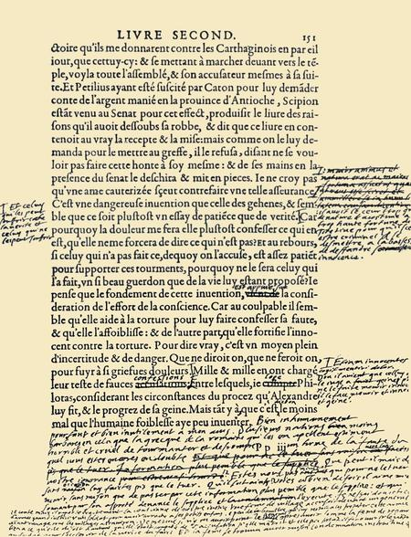
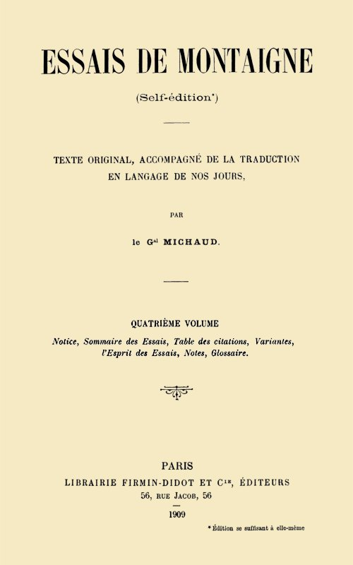
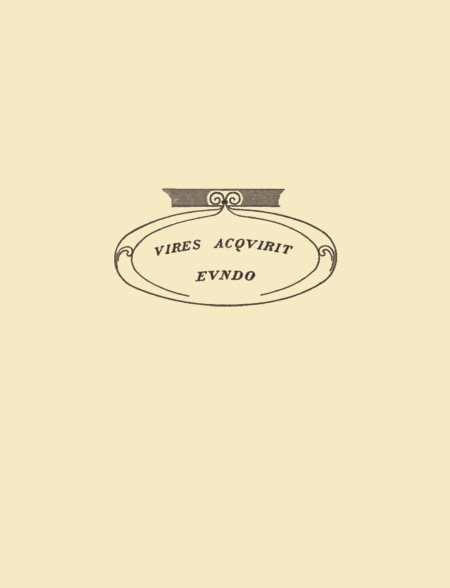
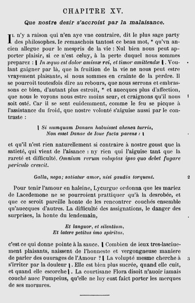
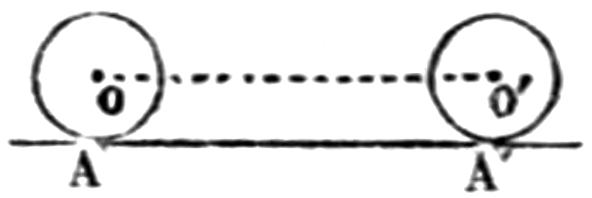
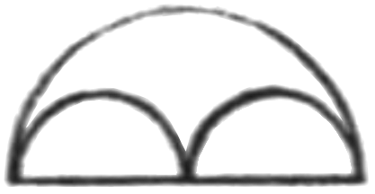

Planche IV
Title: Essais de Montaigne (self-édition) - Volume IV
Author: Michel de Montaigne
Translator: Michaud
Release date: January 16, 2019 [eBook #58706]
Language: French
Other information and formats: www.gutenberg.org/ebooks/58706
Credits: Produced by Claudine Corbasson, Hans Pieterse and the
Online Distributed Proofreading Team at http://www.pgdp.net
(This file was produced from images generously made
available by The Internet Archive/American Libraries.)



NOTE DE L’ÉDITEUR
Le Général Michaud étant décédé au cours de l’impression du présent ouvrage, ce IVe volume a été rédigé d’après le texte et les notes laissées par l’auteur.
1533.—Naissance de Michel Eyquem, Seigneur de Montaigne (28 fév.).
| 1539 1546 |
—Il est élevé au collège de Guyenne. |
?—Il achève ses classes à la faculté de Bordeaux.
1548.—Il est témoin à Bordeaux d’un soulèvement populaire dans lequel le Gouverneur de la ville est massacré.
?—Il fait ses études de droit à l’Université de Toulouse.
1555.—Premier voyage de Montaigne à Paris, où il accompagne son père.
1556.—Celui-ci lui cède sa charge de conseiller à la cour des aides de Périgueux.
1557.—Il devient conseiller au parlement de Bordeaux par suite de la fusion de ces deux cours judiciaires.
1558.—Il fait connaissance et se lie d’amitié avec La Boétie, comme lui conseiller au parlement de Bordeaux.
1559.—Autre voyage de Montaigne à Paris, à l’occasion du sacre de François II; et, de là, à Bar-le-Duc, où le roi se rend peu après.
1562.—Autre voyage à Paris, et de là à Rouen où il accompagne la cour.
1563.—Mort de La Boétie.
| 1564 1568 |
—Montaigne traduit la «Théologie naturelle» de Sebond. |
1565.—Il épouse Françoise de la Chassaigne (25 sept.).
1566.—Voyage de Charles IX à Bordeaux.
1568.—Mort de Pierre Eyquem, père de Montaigne.
1570.—Montaigne résilie sa charge de conseiller.
1571.—Il a achevé l’installation de sa bibliothèque et commence à écrire les Essais.
id.—Naissance de sa fille Léonor.
id.—Il est fait chevalier de l’ordre de St-Michel.
?—Le roi le nomme gentilhomme de sa chambre.
1577.—Le roi de Navarre lui confère le même titre.
1580.—Publication à Bordeaux de la première édition des Essais.
| Voyage de dix-huit mois à Paris, la Fère, Soissons, Plombières, la Suisse, l’Allemagne du Sud, l’Italie, employé en partie à faire, en divers endroits, usage des eaux thermales. | ||||
| 1580 1581 |
— | |||
1581.—Non encore de retour en France, il est élu maire de Bordeaux pour une période de deux ans.
1582.—Autre voyage à Paris.
id.—Publication à Bordeaux de la seconde édition des Essais.
1583.—Montaigne est réélu maire de Bordeaux pour une nouvelle période de deux ans.
id.—Incident du château Trompette que son gouverneur projetait de livrer à la Ligue.
1584.—Henri de Navarre vient passer deux jours, en partie de chasse, au manoir de Montaigne.
1585.—Épidémie de peste à Bordeaux qui, s’étendant, oblige Montaigne et sa famille à errer pendant six mois hors de chez eux.
1586.—Son manoir est envahi et pillé dans les désordres de la guerre civile.
1587.—Le roi de Navarre y couche à nouveau le lendemain de la bataille.
id.—Publication, à Paris, de la troisième édition des Essais.
1588.—Dernier voyage de Montaigne à Paris; de là à Rouen où le roi s’est transporté; à Compiègne, chez la mère de Mlle de Gournay dont il vient de faire la connaissance; à Blois où le roi s’est retiré; entre temps (10 juillet) Montaigne est arrêté par les Ligueurs et conduit à la Bastille où il reste détenu quelques heures.
id.—Publication, à Paris, de la quatrième édition des Essais.
1590.—Mariage de sa fille Léonor.
1591.—Il devient grand-père d’une petite-fille.
1592.—Mort de Montaigne (13 sept.).—Il est inhumé au couvent des Feuillants à Bordeaux.
1595.—Publication posthume, à Paris, de la dernière des éditions originales des Essais.
1601 (?).—Mort d’Antoinette de Louppes, mère de Montaigne.
1616.—Mort de Léonor, fille de Montaigne.
1627.—Mort de Françoise de la Chassaigne, sa femme.
1871.—Transfert du corps et du monument funéraire de Montaigne à la chapelle du lycée de Bordeaux à la suite d’un incendie du couvent des Feuillants.
1886.—Réédification, sur son emplacement primitif, du monument et nouvelle translation du corps, le bâtiment ayant été reconstruit et devenu le palais des Facultés.
Michel Eyquem, Seigneur de MONTAIGNE, auteur des Essais, naquit le dernier jour de février de l’an 1533, au manoir de Montaigne[1], entre Castillon et Bergerac, sur les confins de la Guyenne et du Périgord.
[1] Paroisse de S.-Michel (aujourd’hui commune de Saint-Michel de Montaigne), alors juridiction de Montravel; aujourd’hui canton de Velines (Dordogne).
Les renseignements les plus anciens que l’on possède sur sa filiation, remontent à un nommé Ramon de Gaujac, du nom du village dont il était originaire. Ce Ramon exerçait à Bordeaux, rue Rousselle, un commerce de vins qu’il exportait à l’étranger, et auquel il avait joint celui de pastel et de poissons salés. Sa sœur avait épousé un Martin Eyquem, du village de Blanquefort[2] dans le Médoc; elle en eut un fils, Ramon Eyquem, que son oncle associa à son commerce, et auquel, à sa mort, vers 1462, il laissa une fortune déjà assez considérable.
[2] Blanquefort, chef-lieu de canton à deux lieues environ N.-O. de Bordeaux;—Gaujac ou Gajac, hameau à peu de distance de Blanquefort.
Ramon Eyquem, né en 1402, est le bisaïeul de Montaigne. En 1477, il achetait le fief de Montaigne relevant de l’archevêque de Bordeaux, et mourait l’année suivante, laissant deux fils et deux filles.
Les deux fils demeurèrent associés; le cadet mourut jeune, sans avoir été marié; l’aîné, Grimon Eyquem, grand-père de Montaigne, paraît avoir été, en affaires, d’une remarquable activité et avec lui la situation de fortune de la famille s’accrut encore notablement. De 1483 à 1507, il fut jurat[3] de Bordeaux. Il mourut en 1519, presque septuagénaire, laissant quatre fils et deux filles.
[3] On appelait ainsi, à Bordeaux, les consuls et les échevins, autrement dit les membres de la municipalité.
L’aîné, Pierre Eyquem, escuyer, seigneur de Montaigne, comme il s’appelait lui-même, le père de l’auteur des Essais, hérita du manoir dont son aïeul avait fait acquisition et où lui-même était né, et des terres constituant la seigneurie du même nom. Il avait embrassé la carrière militaire et guerroya en Italie; mais il l’abandonna, lorsqu’en 1523 il épousa Antoinette de Louppes, dont la famille, du nom primordial de Lopez, juive et originaire des environs de Tolède, était venue s’établir, depuis une ou deux générations, à Toulouse et en Guyenne, pour chercher fortune, y avait réussi et embrassé le protestantisme.
Le père de Montaigne apparaît dès lors, moitié bourgeois, moitié gentilhomme de province, occupé, tantôt à Bordeaux à vendre ses vins, tantôt à agrandir son domaine, rebâtir et fortifier son manoir. La considération dont il jouissait l’avait fait appeler par ses concitoyens bordelais à faire partie de la municipalité, et pendant 25 ans il en avait exercé les diverses charges, lorsqu’en 1554 il fut élu maire pour deux ans, ce qui était la durée légale de ces fonctions.
Cette même année, était créée à Périgueux une Cour des aides[4]; il y sollicita A.VI et obtint une place de conseiller, se proposant de la résigner dès que cela lui serait possible au profit de son fils aîné, en faveur duquel il se démit en effet un ou deux ans après, quand celui-ci atteignit sa vingt-troisième année.
[4] La Cour des aides était une chambre jugeant en dernier ressort les questions afférentes aux aides, subsides établis jadis sur les boissons pour subvenir aux dépenses de l’Etat; et ultérieurement et par extension tous autres impôts.
Esprit naturellement ingénieux et pratique, Pierre Eyquem avait senti dans ses guerres d’Italie se développer en lui le goût des arts et des sciences; et, regrettant sa jeunesse demeurée étrangère aux lettres, il recherchait volontiers la société de ceux qui s’y étaient livrés, et s’efforça de doter ses fils de ce qui, sous ce rapport, avait pu lui faire défaut.
En 1568, il mourait, laissant cinq enfants mâles et trois filles; de par son testament, Michel, l’aîné de tous par la mort de deux autres décédés en bas âge héritait de la maison noble de Montaigne et du droit d’en porter le nom; ce qu’il fit, abandonnant complètement, dès le premier moment, son nom patronymique, le rayant même sur le livre de famille qu’il tenait, pour ne conserver que celui-là, le seul sous lequel il soit connu, qu’il a du reste illustré à un si haut degré et qui s’est éteint avec lui.
Montaigne a raconté lui-même, dans les Essais, l’histoire de sa vie avec celle de ses pensées; son enfance rustique, sa première éducation; le latin appris familièrement par lui dans les bras d’un précepteur étranger et au milieu d’un entourage qui ne lui parlait jamais qu’en cette langue; la sollicitude dont il était l’objet; enfin les sept années de sa vie scolaire passées au collège de Guyenne, qu’il quitta en 1546 parce que, semble-t-il, la peste régnait à Bordeaux; il avait alors treize ans et venait d’achever son cours, nom sous lequel on comprenait alors ce qui correspond à notre classe de rhétorique d’aujourd’hui.
On est moins renseigné sur son adolescence. On pense qu’il fit sa philosophie, soit à la faculté des arts de Bordeaux, soit avec des professeurs particuliers, et son droit à Toulouse, où il avait des parents du côté de sa mère. Sa liaison avec Henri de Mesmes, Paul de Foix, Guy de Pibrac et autres, alors étudiants en droit à l’université de cette ville, porte à croire qu’il en a, lui aussi, suivi les cours et que c’est là qu’il a fait leur connaissance.
C’est à cette époque (1548) qu’eut lieu à Bordeaux, à propos de l’impôt de la gabelle auquel on voulait la soumettre, le mouvement populaire dans lequel perdit la vie Tristan de Moneins, gouverneur de la ville; spectacle dont Montaigne paraît avoir été témoin et qui le frappa au point qu’après l’avoir consigné une première fois au ch. 23 du liv. Ier des Essais, I, 198, il y revient plus tard, dans les additions qu’il y fait après 1588, en vue d’une édition nouvelle.
En 1556, Montaigne, ainsi qu’il est dit plus haut, était nommé à la Cour des aides de Périgueux, par suite de la résignation faite par son père, en sa faveur, de sa charge de conseiller. L’année suivante, cette cour était fusionnée avec le Parlement de Bordeaux.
C’est peu après que Montaigne fit la rencontre de La Boétie, l’auteur du «Discours sur la servitude volontaire», comme lui conseiller à ce même parlement, avec lequel, dès le premier moment, il se lia de la plus vive et de la plus étroite amitié et dont, par ses écrits, il a fait la réputation et conservé le souvenir à la postérité.—Dans leurs rapports, nous attribuons volontiers le premier rang à Montaigne, laissant La Boétie dans la pénombre; c’est l’inverse de ce qui était. La Boétie, de trois ans plus âgé que Montaigne, supérieur à lui par le savoir, l’éducation et le caractère, aux yeux des contemporains et des deux amis eux-mêmes, tenait le rang de frère aîné. Par son exemple et ses observations discrètes, il modérait chez son ami, dont la nature droite mais indécise se prêtait à cette direction, les entraînements d’une ardeur juvénile assez prononcée, et contribuait à former l’âme réfléchie, l’esprit observateur et méditatif de l’auteur des Essais. Montaigne s’en rendait compte et nous le laisse entendre; lui mort, mort bien plus jeune que Montaigne, il n’en parle jamais qu’avec un sentiment de respect et lui rapporte tout ce qu’il a fait de meilleur. Il est à croire que si La Boétie eût vécu davantage, il eût souvent préservé son ami de l’excès de scepticisme qui a été en lui le caractère dominant. Son éducation première et son amitié pour La Boétie sont dans la vie de Montaigne les sujets favoris de ses souvenirs et de ses réflexions.
En 1555, semble avoir eu lieu le premier voyage de Montaigne à Paris pour A.VII laquelle il montre tant d’affection; il accompagnait son père, qui venait solliciter du roi le rétablissement des privilèges de la ville de Bordeaux dont elle s’était vue privée, à la suite de la sédition de 1548.
Les obsèques de Henri II en 1559 l’y ramènent et il y demeure jusqu’au sacre de son successeur, cérémonie à laquelle il a dû assister, ayant avec la cour accompli le voyage de Bar-le-Duc qui suivit.
En 1562 nous l’y retrouvons et l’y voyons prêter, sans y être convié, devant le Parlement de cette ville, le serment de profession de religion catholique, qu’en opposition à l’édit de janvier de cette même année, qui avait reconnu aux Protestants la liberté de leur culte, cette cour de justice avait imposé à tous ses membres, ce qu’imitèrent bientôt tous les autres Parlements du royaume.—De Paris, Montaigne suit la cour à Rouen, dont venait de s’emparer sur les Réformés le duc de Guise, après un siège où se place le projet d’assassinat ourdi contre ce prince, dont il est question au ch. 23 du liv. Ier. C’est durant cette excursion à Rouen que Montaigne eut occasion de voir les sauvages brésiliens venus en France dont il nous entretient ch. 31 de ce même livre, et de converser avec eux.
Rentré à Bordeaux, il assista peu après (1563) à la mort de La Boétie, dont il fait, dans une lettre à son père parvenue jusqu’à nous, un récit qu’on ne peut lire sans émotion; en le perdant, il crut perdre plus qu’un frère et ne s’en consola jamais entièrement.
Pour faire diversion à sa douleur, son père lui demanda de lui traduire l’ouvrage de Raymond Sebond, «le Livre des créatures, ou Théologie naturelle», écrit en latin mélangé d’espagnol; et aussi, le maria.
Le 25 septembre 1565, il épousait Françoise de la Chassaigne, fille d’un conseiller à la cour de Bordeaux, qui semble avoir été femme de grand sens, compagne discrète et dévouée, telle qu’il la fallait à Montaigne, possédant en ménage les qualités d’ordre et de direction qui manquaient à son mari dont elle appréciait la valeur, et vis-à-vis duquel elle eut le tact de s’effacer, lui laissant tout loisir de penser; si bien que malgré les nuages momentanés et inévitables dont on retrouve trace, cette union a été heureuse; et Montaigne, laissant à sa femme le soin exclusif de l’éducation de leur fille, a, de fait, rendu à ses qualités l’hommage le plus probant; toujours est-il qu’il lui doit deux immenses services: elle l’a déchargé des soucis du ménage et a pris soin de ses manuscrits.
Quelques mois après, en 1566, Charles IX venait à Bordeaux, où son passage fut marqué par une assez verte remontrance infligée en sa présence et en son nom au Parlement, par le chancelier de l’Hospital.
En 1568, Montaigne perdait son père. A ce moment, il terminait la traduction de Sebond et la livrait à l’impression; et, en 1570, se trouvant dans une situation de fortune qui le laissait maître d’en agir à sa guise, et un laps de temps suffisant s’étant écoulé depuis la mort de son père pour qu’il pût le faire décemment, résiliant en faveur de Florimond de Raymond son office de conseiller pour lequel il ne s’était jamais senti grand goût et qu’il s’était laissé octroyer par déférence pour la volonté paternelle, il quitta la robe pour l’épée. On ne saurait dire s’il porta celle-ci seulement en qualité de gentilhomme; il est cependant probable qu’il prit part à quelques expéditions militaires, ainsi que plusieurs passages des Essais le donnent à penser (V. N. III, 408: Profession), et surtout celui où il fait ce magnifique éloge de la vie des camps (ch. 13 du liv. III, III, 662), tout rempli d’un accent guerrier qui serait ridicule sous la plume d’un homme qui ne l’aurait jamais pratiquée, ce qu’auraient inévitablement fait ressortir ceux de ses contemporains tels que Brantôme, Scaliger qui étaient peu disposés pour lui.
Plus libre de son temps, et tout en ne négligeant pas aussi complètement qu’il l’insinue la gestion de son domaine, il se donne alors tout entier à la publication des œuvres de La Boétie, à laquelle il se croyait tenu, ayant hérité de ses livres et de sa bibliothèque. Ce travail fut pour lui l’occasion d’un nouveau voyage à Paris; c’est là qu’il reçut la nouvelle de la naissance et de la mort de sa première fille.
A son retour en Guyenne, envahi par un immense besoin de solitude, il A.VIII s’occupe de s’aménager, chez lui, une sorte de réduit où échappant aux autres, libre de lui-même, il pût méditer à l’aise; il organise en conséquence la principale tour de son manoir, qui depuis est dite «Tour de Montaigne». L’inscription latine, dont la traduction suit, qu’avec nombre d’autres il fait tracer dans sa librairie ou bibliothèque qui devait constituer son cabinet de travail et dont il donne si complaisamment la description au ch. 3 du liv. III des Essais, peint bien quel pouvait être son état d’âme, à ce moment de son existence: «L’an du Christ 1571, y est-il dit, à l’âge de trente-huit ans, la veille des calendes[5] de mars, Michel de Montaigne, depuis longtemps déjà ennuyé de l’esclavage de la cour et des charges publiques, se sentant encore dispos, est venu dans cette retraite se reposer sur le sein des doctes vierges, espérant y passer enfin dans le calme et la sécurité les jours qui lui restent à vivre. Puissent les destins lui permettre de parfaire cette habitation, où déjà ses pères venaient agréablement se reposer et qu’il consacre à sa liberté, à sa tranquillité et à ses loisirs.»
[5] On donnait ce nom, dans la chronologie romaine, aux premiers jours de chaque mois. Les Romains comptaient par calendes, lesquelles n’existaient pas chez les Grecs, d’où le proverbe «renvoyer une chose aux calendes grecques», pour dire qu’on ne la fera jamais; à remarquer ici que la veille des calendes de mars, ou dernier jour de février, était la date anniversaire de la naissance de Montaigne.
En même temps, il commençait à écrire les Essais, cette œuvre capitale de sa vie. Il ne semble pas toutefois que ce fût avec l’idée d’en composer un ouvrage; ce n’était tout d’abord que de simples notes, sur lesquelles il transcrivait ce qui l’avait frappé dans sa lecture du jour, accompagné de quelques brèves réflexions d’un caractère général, ainsi qu’il ressort de la division du livre Ier en chapitres courts, dont plusieurs parfois sur le même sujet. Quant à ce qui est devenu plus tard et de plus en plus le dessein avoué et affiché de son livre: l’étude minutieuse de soi-même, avec parti pris de se peindre tout entier et à nu, cela paraît si peu avoir été sa première intention que, dans ces mêmes chapitres, il prend des détours pour parler de lui et ne se met en scène que sous le voile de l’anonyme, comme par exemple dans celui intitulé: «Du parler prompt, ou tardif». Ce n’est qu’à la longue qu’il s’est décidé à livrer au public ces extraits de ses lectures, les souvenirs de ses observations et de ses causeries, tout ce qu’enfin il a cueilli en faisant l’école buissonnière.
En cette même année 1571, lui naissait une seconde fille, Léonor, la seule, sur les six qu’il a eues, qui ne soit pas morte en bas âge; et, comme si le sort se prenait à railler ses projets de retraite, il était fait chevalier de l’ordre de S.-Michel, «pour ses vertus et ses mérites», dit la lettre-patente lui conférant cette distinction.
Les événements furent du reste plus forts que sa résolution; et ici s’intercalent, pour se continuer par intervalles jusqu’à la fin de sa vie, les incidents, à la vérité accidentels et passagers et sur lesquels on n’a que de très vagues données, qui font que, dans les Essais, Montaigne laisse entendre qu’il a exercé la profession militaire, ce qui du reste était alors, par circonstance, le cas d’à peu près tout gentilhomme, et ceux qui lui font attribuer à diverses époques des missions sur l’objet précis desquelles on n’est pas davantage fixé, mais qui, étant donné son caractère, son entregent, la situation à laquelle il parvint, paraissent avoir dû consister surtout en négociations auprès de certains princes et chefs principaux des divers partis. Il demeure toutefois trace de l’une d’elles, à lui confiée en 1574, par le duc de Montpensier, commandant l’armée royale en Poitou, auprès du Parlement et du Corps de ville de Bordeaux, pour qu’ils aient à prendre des dispositions de défense.
En 1577, le roi de Navarre le nomme gentilhomme de sa chambre, titre absolument honorifique pour certains, comme ce fut le cas pour lui, ne comportant aucun service auprès du prince. Ce même titre lui avait été ou lui fut dévolu aussi, la date en étant incertaine, par Charles IX ou son successeur, ainsi qu’en font foi les titres des deux premières éditions des Essais et son diplôme de citoyen romain.
A.IX En 1580, parut la première édition de son ouvrage, qui n’en comprenait que les deux premiers livres.
Montaigne qui, depuis des années déjà, avait commencé à ressentir des atteintes de gravelle et vainement avait eu recours pour les combattre aux eaux thermales de son voisinage, Aigues-Chaudes, Bagnères, se résolut à cette époque à voyager au loin, autant par goût que pour essayer si d’autres eaux ne lui seraient pas plus favorables; et aussi, pense-t-on, pour échapper aux difficultés sans cesse croissantes de la situation intérieure et à celles non moins pénibles pour lui résultant du train de vie que, chacun de son côté, menaient le roi et la reine de Navarre et de leurs rapports, qu’il déplorait d’autant plus qu’il était particulièrement attaché à tous deux.
Il se rendit d’abord à Paris où il fit hommage de son livre au Roi; puis à La Fère pour rendre les derniers devoirs au comte de Grammont, le mari de la belle Corisande d’Andouins, qui venait d’être tué au siège de cette place et dont il accompagna le corps à Soissons; et, de là, aux bains de Plombières et de Bade.
De ce voyage qui devait le tenir dix-huit mois hors de chez lui, du 22 juin 1580 au 30 septembre 1581, effectué en courant çà et là à travers la Suisse, l’Allemagne du Sud et l’Italie, Montaigne a tenu un journal qui n’a rien de remarquable au point de vue littéraire, mais est intéressant par la connaissance qu’il nous donne de son auteur; un de ses frères et un jeune seigneur d’Estissac, probablement le fils de la dame de ce nom à laquelle est dédié le ch. 7 du liv. II des Essais, l’accompagnaient.
Entré en Allemagne par Bâle, il pousse jusqu’à Augsbourg, où il cache ses nom et qualités pour qu’on le croie plus grand seigneur qu’il n’est, et d’où il revient en Italie par Venise, pour arriver à Rome où il fait un séjour de cinq mois, entrecoupé d’excursions à Notre-Dame de Lorette, où il laisse dans la Casa Santa son portrait et ceux de sa femme et de sa fille; c’était alors un grand honneur d’y figurer: «à peine est reçu à donner qui veut, dit-il, au moins c’est faveur d’être accepté»; puis il passe à Florence, et va faire une cure d’eau aux bains della Villa près de Lucques.
A son arrivée à Rome, ses livres avaient été saisis et parmi eux un exemplaire des Essais, dont l’examen assez superficiel donna lieu de la part de la censure à quelques critiques assez anodines, dont l’auteur ne tint du reste aucun compte et qui n’eurent cette fois aucune suite fâcheuse, à l’encontre de ce qui en résulta un siècle après où l’ouvrage fut frappé d’interdit.
Avant de quitter Rome, il sollicita et obtint le diplôme de citoyen romain. Bien que dans les Essais il le qualifie de «faveur vaine, qui lui fut octroyée avec toute gratieuse libéralité», il convient dans son journal avoir employé pour l’obtenir «ses cinq sens de nature»; de fait, cette concession n’était pas prodiguée.
Montaigne était aux bains della Villa, quand des lettres lui parvinrent, l’informant qu’un mois et demi auparavant, le 1er juillet 1581, il avait été, à l’unanimité, élu maire de Bordeaux. Il revint à Rome où il trouva la missive des jurats lui notifiant officiellement son élection; il s’achemina alors vers la France par le mont Cenis, laissant à Rome son frère et Mr d’Estissac.
Il avait été nommé maire sans l’avoir brigué: le souvenir des services rendus par son père dans cette charge, les quatorze années durant lesquelles lui-même avait siégé au Parlement, les deux premiers livres des Essais parus l’année précédente qui obtenaient un vif succès, ses relations l’avaient désigné au choix de ses concitoyens, en même temps que le désir d’évincer le maréchal de Biron qui quittait ces fonctions, dont il sollicitait le renouvellement pour lui ou l’attribution à quelqu’un des siens, mais qui, pendant qu’il les avait occupées, avait indisposé nombre de personnes et entre autres, à la fois, le roi de Navarre et sa femme la reine Marguerite sœur du roi de France.
Mais le caractère de Montaigne, autant que ses goûts et même sa santé, l’éloignaient des charges publiques, et il avait décliné l’honneur qui lui était fait. Les Bordelais, s’entêtant, s’étaient adressés au roi; et à son arrivée chez lui, il trouva une lettre de Henri III l’invitant à accepter: il dut céder; peut-être au A.X fond ne fut-il pas fâché de cette contrainte, car il était sans ambition, mais non sans vanité.
Ses débuts furent heureux. A une époque des plus troublées, il eut le mérite de contribuer à maintenir la tranquillité dans la ville et à la conserver à l’autorité royale, prêtant à cet effet un concours précieux au maréchal de Matignon, lieutenant du roi en Guyenne; toutefois sa réélection en 1583, au bout de deux années après lesquelles ses pouvoirs prenaient fin, ne fut pas unanime et donna lieu à des protestations auprès du Conseil du roi qui, nonobstant, la confirma.
Les principaux actes de sa gestion au point de vue administratif furent: une action intentée à un établissement d’enfants assistés, relevant des Jésuites, où, par faute de soins, la mortalité élevée accusait de la négligence (1582); la solution de difficultés résultant d’impôts nouveaux, ce qui motiva un voyage de Montaigne à Paris (1582); la rédaction et mise en application de nouveaux statuts pour le collège de Guyenne (1582); des négociations pour la levée d’obstacles apportés à la libre navigation de la Garonne dans la partie supérieure de son cours (1583); un projet de reconstruction de la tour de Cordouan. A citer parmi ses actes d’intervention politique pendant la durée de son mandat, l’avortement des projets conçus par Vaillac, gouverneur du château Trompette, dans le but une première fois de livrer cette forteresse à la Ligue, une seconde fois de déterminer dans la ville un mouvement en faveur de ce parti (1583), épisodes mentionnés au ch. 23 du livre Ier des Essais.
C’est durant ce temps qu’Henri de Navarre, menant avec lui quarante de ses gentilshommes et ses équipages de chasse, vint pour la première fois à Montaigne dont pendant deux jours il fut l’hôte (1584); quelques mois auparavant était mort le duc d’Anjou, dont la disparition faisait du roi de Navarre l’héritier du trône de France.
Deux mois avant que la mairie de Montaigne touchât à sa fin, la peste avait éclaté à Bordeaux, avec une intensité telle, que «quiconque, en ville, écrivait à la date du 30 juin le maréchal de Matignon venu pour se rendre compte de la situation, ayant moyen de vivre ailleurs, l’avait, à peu d’exceptions près, abandonnée». Montaigne était alors absent; la police sanitaire n’étant pas de son ressort, il ne crut pas devoir y retourner pour simplement présider, comme il était d’usage, la séance où devait être élu son successeur; convoqué à cet effet, il déclina nettement l’invitation, ce dont du reste sur le moment et pendant les siècles qui suivirent personne ne songea à lui faire reproche. Certains, de nos jours, se sont montrés sur ce point beaucoup plus sévères à son égard; mais, en dehors même du peu d’importance effective de l’acte auquel il s’est dérobé, il faut reconnaître à sa décharge que les idées de l’époque n’imposaient pas aux grands, comme il est passé dans les mœurs d’aujourd’hui, de tenir ferme à leur poste et de donner l’exemple en face de ces fléaux qui défiaient tout remède humain. Ceux qui restaient pouvant partir, semblaient héroïques; ceux qui fuyaient n’étaient pas estimés forfaire à l’honneur.
Cependant la contagion s’était étendue, avait atteint le Périgord, et pendant six mois, fuyant devant elle, suspect à tous à la moindre indisposition des siens, Montaigne dut errer avec sa famille, d’abri en abri, cherchant un asile qu’ils ne trouvaient nulle part. Puis, quand la peste prit fin, ce furent les calamités de la guerre civile qui vinrent à fondre sur lui. Les excès et les désordres se poursuivant sans cesse, notamment les méfaits des maraudeurs pires que des ennemis déclarés, finirent par l’atteindre; et, en 1586, son manoir jusqu’alors indemne fut envahi, pillé, et ses terres et ses tenanciers ruinés pour longtemps.
De cette époque date la cordialité de ses relations avec Charron, chanoine et théologal de l’église primatiale[6] de Bordeaux, dont il semble avoir fait la connaissance il y avait quelques années déjà, alors qu’il était maire, qui devint son ami et son disciple et auquel il inspira son «Livre de la Sagesse», ouvrage de morale estimé, écho hardi des Essais, bien inférieur toutefois à son modèle.
[6] Théologal, chanoine plus spécialement chargé dans un chapitre de l’étude des questions de théologie.—Primatiale, église cathédrale relevant directement de l’archevêque qui est primat d’Aquitaine.
A.XI En 1587, trois jours après la bataille de Coutras livrée dans ses environs, Henri de Navarre regagnant le midi où l’appelaient ses amours, au lieu de poursuivre son adversaire et de tirer ainsi parti de sa victoire, vint à nouveau passer la nuit à Montaigne, bien que le seigneur du lieu tînt pour l’armée battue.
Entre temps, celui-ci s’occupait des Essais, faisait de nombreuses additions aux deux premiers livres et composait le troisième où il se laisse aller à parler de lui bien davantage et avec plus d’expansion. Son manuscrit à point, il se rend à Paris pour le faire imprimer (1588). Ce devait être pour la dernière fois; et c’est chemin faisant, que, dans la forêt de Villebois près d’Orléans, il tombe dans le guet-apens qu’il raconte, ch. 12, liv. III, et qui se termina pour lui mieux qu’il ne semblait au début.
Le bruit de son arrivée, l’annonce d’une nouvelle édition de son livre, lui valurent la visite de Mlle de Gournay, alors âgée de 23 ans, qui s’était éprise de son talent et dont l’admiration enthousiaste fit sa conquête. Invité à Gournay, près de Compiègne, par Mme de Gournay mère, Montaigne y séjourna près de trois mois, en deux ou trois fois.
Mais les moments heureux qu’il y passa furent troublés par de graves événements politiques: la journée des Barricades (12 mai 1588), le départ de Henri III pour Chartres et Rouen, enfin la réunion à Blois des Etats généraux. Montaigne, en ces circonstances, se fit un devoir de témoigner d’autant plus de fidélité au roi, qu’il était en situation difficile; ses allées et venues de Paris à la cour le rendirent suspect à la Ligue, et, un jour qu’il rentrait de Rouen (10 juillet 1588), sur l’ordre du duc d’Elbeuf, il fut arrêté et conduit à la Bastille, en manière de représailles pour l’arrestation, en Normandie, d’un gentilhomme parent des Guises; sa détention ne fut que de quelques heures, l’intervention de Catherine de Médicis le fit relâcher le jour même.
A Blois, il eut une crise de gravelle qui faillit l’emporter et hâta son retour en Guyenne, d’où il était absent depuis plus de sept mois; il y arrivait, quand vint l’y surprendre la nouvelle du meurtre du duc et du cardinal de Guise (décembre 1588). Rentré chez lui, en dépit de l’affaiblissement constant de ses forces, il se remet à parfaire son œuvre, ajoutant encore au texte des Essais en vue d’une réimpression nouvelle.
A cette époque se place le mariage de sa fille Léonor avec François de la Tour (27 mai 1590). Deux mois après ils le quittaient pour aller vivre chez eux en Saintonge, et, en 1591, le rendaient grand-père d’une petite-fille.
Entre temps, en 1589, survenait l’assassinat d’Henri III qui faisait Henri de Navarre roi de France. Montaigne se rallia franchement au nouveau roi, auquel l’unissait son affection de si ancienne date; mais en raison de son état de santé, de son caractère même, le concours qu’il lui prêta fut plus moral qu’effectif; et quelque insistance que mît Henri IV à l’attirer à lui, il déclina ses offres, ajournant à venir le joindre au jour prochain où il pourrait le saluer dans sa capitale. Mais il comptait sans la mort qui était plus proche et la victoire plus éloignée qu’il ne pensait[7]. Le 13 septembre 1592, Montaigne mourait; il était âgé de cinquante-neuf ans.
[7] L’entrée d’Henri IV à Paris n’eut lieu qu’en 1594.
Depuis quelque temps déjà, ses souffrances s’étaient notablement accrues, et en particulier les maux de gorge dont, concurremment avec la gravelle, il souffrait depuis des années. Il ne pouvait plus douter de sa fin prochaine. II ne s’en effraya pas. Ce sceptique mourut comme un croyant, avec courage et fermeté, sans que, grâce, il est vrai, aux réserves qu’il avait émises sur sa foi religieuse, rien, dans sa fin, démentît en quoi que ce soit sa vie et ses écrits. Le jour même de sa mort, il avait fait mander quelques gentilshommes, ses plus proches voisins, pour leur faire ses adieux. Il expira en pleine connaissance de lui-même, au moment de l’élévation, pendant l’office divin, qu’il avait fait commencer dès qu’ils se trouvèrent réunis. Quelques jours avant, il avait distribué à ses gens, de sa propre main, les legs qu’il leur destinait. Par testament, il laissait Montaigne et ses dépendances au premier enfant mâle à naître de sa fille Eléonore, et attribuait à Charron ses armoiries.
A.XII Il fut inhumé dans l’église du couvent des Feuillants à Bordeaux.
Quand son mari vint à lui manquer, après une union qui avait duré plus de vingt-sept ans, Mme de Montaigne se donna la double tâche de lui ériger un tombeau et de faire rééditer les Essais conformément aux dernières volontés de leur auteur.
Ce ne fut qu’en 1614 que le monument funéraire qu’elle voulait lui consacrer fut achevé: il y est représenté en grandeur naturelle, étendu sur un sarcophage, revêtu d’une armure, ayant son casque et ses gantelets à côté de lui, et un lion couché à ses pieds, si bien que malgré ses armes, «on hésiterait à reconnaître le paisible Montaigne sous cet appareil guerrier», si deux épitaphes, l’une en latin, l’autre en grec, gravées l’une d’un côté, l’autre de l’autre, résumant sa vie et sa doctrine, ne renseignaient absolument à ce sujet (P. Bonnefon).—Toutes deux ont été composées par Jean de St-Martin avocat au parlement de Bordeaux. La première, pompeuse et banale, est sans valeur. La seconde résume assez bien sa vie et ses idées; elle est ainsi conçue:
«A Michel Montaigne, Périgourdin, fils de Pierre, petit-fils de Grimon, arrière-petit-fils de Ramon, Chevalier de S.-Michel, citoyen romain, natif de Bordeaux, ancien maire de la cité des Bituriges, homme né pour la gloire de la nature; dont la douceur de mœurs, la finesse d’esprit, la facilité d’élocution et la justesse de jugement ont été estimées au-dessus de la condition humaine; qui a eu pour amis les rois les plus illustres, les plus grands seigneurs de France et même les chefs du parti égaré, quoique lui-même fût d’une moindre condition et fidèle observateur des lois et de la religion de ses pères. N’ayant jamais blessé personne, aussi incapable de flatter que d’injurier, il reste cher à tous indistinctement. Ayant toujours fait profession, dans ses discours et dans ses écrits, d’une sagesse à toute épreuve contre toutes les attaques de la douleur, après avoir lutté longtemps avec courage contre les assauts répétés d’une maladie implacable, égalant ses écrits par ses belles actions, il a fait, avec la volonté de Dieu, une belle fin à une belle vie.
«Il vécut cinquante-neuf ans, sept mois et onze jours, et mourut le 13 septembre de l’an du salut 1592.
«Françoise de Lachassaigne, pleurant la perte de cet époux fidèle et constamment chéri, lui a érigé ce monument, gage de ses regrets.»
En 1800, la dépouille de Montaigne fut transférée en grande pompe au musée de la ville; mais il se trouva que par le fait d’une erreur ce n’était pas son corps, mais celui d’une de ses nièces inhumée au-dessus de lui, qu’on avait déplacé. Il continuait donc à demeurer à la place qu’il occupait depuis deux cents ans, quand, en 1871, l’incendie de l’église où il reposait, qui respecta son mausolée, amena son transfert à titre provisoire dans la chapelle du lycée et plus tard, en 1886, dans le vestibule des Facultés de Bordeaux construites sur l’emplacement du couvent des Feuillants; c’est là qu’on le voit actuellement, tandis qu’on n’a pu retrouver le petit vaisseau contenant le cœur de l’illustre philosophe, déposé à son décès dans l’église de S.-Michel de Montaigne. Rien n’indiquant qu’il en ait été enlevé, il doit s’y trouver encore, seulement on ignore où il avait été placé.
En 1616, dans ce même tombeau qui réunit ainsi le père et la fille, avait été inhumée Léonor. Quant à Françoise de la Chassaigne, qui mourut en 1627, à l’âge de 83 ans, ayant survécu trente-cinq ans à son mari, elle alla reposer dans l’église de S.-Michel.
Léonor s’était mariée deux fois: veuve de François de la Tour, elle avait épousé en secondes noces le vicomte de Gamaches; elle en eut une seconde fille, Marie; c’est par Marie de Gamaches, mariée à un de Lur Saluce, que s’est formée la descendance directe de Montaigne représentée aujourd’hui par les familles O’Kelly-Farrell, de Ségur, de Puységur et de Pontac. (Voir le tableau généalogique ci-contre).
GÉNÉALOGIE ET DESCENDANCE DE MONTAIGNE
| Ramon Eyquem (1402 à 1478), marié en 1449 Isabeau de Ferraignes. Acquéreur en 1477 du fief de Montaigne |
|||||||||
| Pierre (1452-1480), n’a pas été marié. | |||||||||
| Peregrina, épouse de Lansac. | |||||||||
| Audeta, épouse Verteuil. | |||||||||
| Grimon Eyquem, né vers 1450, m. en 1519, marié à Jehanne du Four | |||||||||
| Thomas, dit M. de St-Michel, de ce qu’il était curé de cette paroisse, mort peu âgé. | |||||||||
| Pierre (minor), dit Seigneur de Gaujac, chanoine de Bordeaux, curé de Lahontan, m. à 67 ans. | |||||||||
| Raymond, seigneur de Bussaguet, conseiller au parlement de Bordeaux, m. vers 1567. | |||||||||
| Blanquine, épouse de Belcier. | |||||||||
| Jehanne, épouse Dugrain. | |||||||||
| Pierre Eyquem, escuyer, seigneur de Montaigne (1495 à 1568), marié en 1528 à Antoinette de Louppes, née de 1506 à 1510, morte, croit-on, vers 1601. | |||||||||
| Arnaud Pierre |
} | aînés de Michel, morts en bas âge avant sa naissance. | |||||||
| Thomas, né en 1534, seigneur de Beauregard, protestant, épouse en secondes noces Jacquette d’Arsac, belle-fille de La Boétie. | |||||||||
| Pierre, seigneur de la Brousse (1535 à 1597), ne semble pas avoir été marié. | |||||||||
| Jeanne, née en 1536, protestante, épouse Richard de Lestonna, conseiller au parlement de Bordeaux. | |||||||||
| Arnaud, dit capitaine St-Martin (1541 à 1564). | |||||||||
| Léonor, née en 1552, mariée à Thibaud de Camain, conseiller au parlement de Bordeaux. | |||||||||
| Marie, née en 1554, femme de Bernard de Cazalis. | |||||||||
| Bertrand, né en 1560, seigneur de Mattecoulom, mort sans postérité, ne semble pas avoir été marié. | |||||||||
| MICHEL, seigneur de MONTAIGNE (1533 à 1592), auteur des Essais. Ép. en 1565 Françoise de la Chassaigne (1544 à 1627); en a six filles, dont cinq meurent avant l’âge d’un an. | |||||||||
| Léonor de Montaigne, (1571 à 1616). | |||||||||
| En 1590, François de Latour (m. en 1594). | |||||||||
| 1.—Françoise de Latour (1591 à 1613). Épouse en 1600 Honoré de Lur (1594 à 1660) (elle avait 9 ans et son mari en avait 6) | |||||||||
| Charles de Lur (vicomte d’Oreillan) (1612 à 1639). Tué au siège de Salces (Roussillon). Mort sans postérité. | |||||||||
| En 1608, le vicomte de Gamaches[a] | |||||||||
| 2.—Marie de Gamaches (1610 à 1683). Épouse en 1627 Louis de Lur, Baron de Fargues (m. en 1696) | |||||||||
| Honoré de Lur et Louis de Lur, qui étaient frères, ont épousé les deux sœurs utérines. | 1 Charles-François (1638 à 1669), mort sans postérité. | ||||||||
| 2 Philbert, né en 1640, sans autre renseignement. | |||||||||
| 3 Marguerite, épouse L. de Laneau, m. sans enfants. | |||||||||
| 4 Jeanne, épouse L. de Saint-Jean[b]. | |||||||||
| 5 Claude-Madeleine, épouse L. de Ségur[c]. | |||||||||
[a] A partir de 1622 où, remarié, il quitte Montaigne et se retire dans ses terres, sa trace se perd.
[b] De Jeanne de Gamaches, descendent les O’Kelly-Farrell, les Farrell et les Puységur.
[c] De Claude-Madeleine descendent les Ségur-Montaigne et les Pontac.
En outre de la traduction de la «Théologie naturelle» de Sebond et des Essais, on a encore de Montaigne: quelques traductions d’ouvrages grecs et latins accompagnées de dédicaces, quelques poésies en latin et en français, le journal de ses voyages, trouvé dans un grenier de son manoir, publié pour la première fois en 1774 et dont le manuscrit a disparu, une éphémeride assez succincte, enfin A.XIII quelques lettres: une d’elles à son père, sur la mort de La Boétie, est assez étendue et mérite attention; les autres sont sans importance.
On lui a attribué la rédaction d’instructions, rédigées en 1563, par Catherine de Médicis, à l’adresse de Charles IX qui venait d’atteindre sa majorité; il y a tout lieu de croire qu’il y est complètement étranger, et qu’elles ont été dictées par la reine à un homonyme de Montaigne remplissant auprès d’elle les fonctions de secrétaire, le même probablement au profit duquel elle faisait délivrer en 1586 une ordonnance de paiement de 150 écus, que l’on a retrouvée, «pour renouveler un des chevaux de sa charriote et acheter quelques hardes qui lui sont nécessaires».
Mais tout ce qui a trait à l’auteur des Essais s’efface devant l’éclat de cette œuvre capitale; par elle, la mémoire de Montaigne rayonne d’une gloire qui se maintient en ces temps où tout va passant si rapidement: sa statue orne le principal site de Périgueux; il existe de lui de nombreux bustes et portraits; en bien des villes, des lycées, des promenades, des avenues, des rues portent son nom; pendant la Révolution française il a été le sujet d’une comédie; son éloge a été mis au concours, et innombrables sont les ouvrages et articles de littérature, critiques et autres, dont il a été l’objet. Par-dessus tout, son livre traduit à l’étranger en plusieurs langues, sans cesse réédité en France à toutes époques, introduit par extraits dans l’enseignement, lui a donné l’immortalité en ce monde.
Bien que passant trop légèrement sur le scepticisme confinant à l’égoïsme qui est le fond de cette existence et la flattant un peu, Villemain dans son panégyrique de Montaigne l’a très heureusement résumée et appréciée: «Sa vie, dit-il, offre peu d’événements: elle ne fut point agitée; c’est le développement paisible d’un caractère aussi noble que droit. La tendresse filiale, l’amitié occupèrent ses plus belles années. Il voyagea, n’étant plus jeune, et n’ayant plus besoin d’expérience; mais son âme, nourrie si longtemps du génie antique, retrouva de l’enthousiasme à la vue des ruines de Rome.—Malgré son éloignement pour les honneurs et les emplois, élu par le suffrage volontaire de ses concitoyens, il remplit deux fois les fonctions de premier magistrat dans la ville de Bordeaux. Il était plus fait pour étudier les hommes que pour les gouverner: c’était l’objet où se portait naturellement son esprit; il s’en occupait toujours jusque dans le calme de la solitude et dans les loisirs de la vie privée.—Les fureurs de la guerre civile troublèrent quelquefois son repos; et sa modération, comme il arrive toujours, ne put lui servir de sauvegarde. Cependant ces orages même ne détruisirent pas son bonheur. C’est ainsi qu’il coula ses jours dans le sein des occupations qu’il aimait, libre et tranquille, élevé par sa raison au-dessus de tous les chagrins qui ne venaient point du cœur, attendant la mort sans la craindre, et voulant qu’elle le trouvât «occupé à bêcher son jardin et nonchalant d’elle».—Les «Essais» ne furent pour lui qu’un amusement facile, un jeu de son esprit et de sa plume. Heureux l’écrivain qui, rassemblant ses idées comme au hasard, et s’entretenant avec lui-même, sans songer à la postérité, se fait cependant écouter d’elle. On lira toujours avec plaisir ce qu’il a produit sans effort. Toutes les impressions de sa pensée, fixées à jamais par le style, passeront aux siècles à venir. Quel fut son secret? Il s’est mis tout entier dans son ouvrage; aussi en lui l’homme ne sera jamais séparé de l’écrivain, non plus que son caractère ne le sera de son talent.»
«Livre consubstantiel à son auteur», écrit Montaigne (liv. II, ch. 18, II, 524 et N. Autheur); autrement dit: mon livre et moi ne faisons qu’un (III, 244).
Les ESSAIS et leur auteur sont en effet inséparables: qui analyse l’un, analyse l’autre, ils ne sauraient être analysés l’un en dehors de l’autre; et d’autre part, le proverbe qui dit que nous pouvons nous flatter de connaître l’homme avec qui nous avons mangé un boisseau de sel est ici en défaut: qui peut dire en effet combien d’exemplaires des Essais il faut avoir usés avant de croire qu’on connaît Montaigne!
A.XIV Ondoyant et divers, est sa caractéristique essentielle en même temps qu’il nous apparaît être tel ou tel suivant nos propres sentiments, suivant même nos dispositions du moment; on ne le tient jamais; aucune doctrine n’est tellement sienne qu’il ne puisse avoir soutenu, dans quelque coin des Essais, la doctrine contraire.
Aux yeux des uns, il est le plus naturel, le plus pratique, le plus simple des sages, et voilà de quoi plaire au plus grand nombre; aux yeux des autres, il est le plus avisé, le plus fin, le plus raffiné des libres penseurs, et voilà de quoi plaire aux plus délicats; généralement on aime sa hardiesse, quelques-uns le trouvent osé; d’autres le louent de maintenir à l’état de questions ouvertes une foule de problèmes que ceux-là estiment préférable d’écarter en les passant sous silence.
A première vue moraliste de premier ordre, le jugement et la connaissance du cœur humain priment en lui l’érudition et sa morale n’effarouche pas comme celle de tant d’autres qui l’ont devancé ou suivi. Sous une forme simple et attrayante, il nous montre combien du fait même de la nature, dont notre raison est l’interprète, sont faciles et agréables la recherche de la vérité et la pratique de la vertu, quel contentement elles sont susceptibles de nous procurer, et que sous leur action réconfortante peu à peu l’apaisement se fait en nous. Loin de nous détourner des jouissances qu’il nous est donné de ressentir ici-bas, il nous incite à ne pas les dédaigner, nous mettant seulement en garde contre l’abus; comme aussi à patienter avec les misères de l’existence, en les comparant à ce qu’elles pourraient être, et considérant qu’il est toujours loisible de s’y soustraire à qui elles sont devenues intolérables.—Élevé dans la pratique de la foi catholique la plus orthodoxe, il la confesse à maintes reprises, tout en évitant avec grand soin d’en discuter les dogmes.—Partisan de la royauté qui, pour lui, représente l’ordre, base essentielle des sociétés, la domination populaire ne lui semble pas moins être la plus naturelle et la plus équitable; mais par-dessus tout, il est ennemi de la violence et des abus d’où qu’ils viennent; rebelle à toute contrainte, il veut pour chacun la liberté la plus absolue uniquement limitée par l’obligation de ne pas porter atteinte à celle d’autrui et d’observer les lois.
Et nonobstant, en le scrutant davantage, peut-on nier que sous le rapport philosophique, nul plus que lui ne se soit évertué à démontrer l’inanité de tout système et l’impuissance de l’esprit humain? Rien n’est absolu, tout est relatif, est sa conclusion en toutes choses.—Personne a-t-il mieux montré à quel point un homme peut être irréligieux, avec la volonté de n’être pas antireligieux! jamais personne n’a fait plus complètement abstraction de la vie éternelle; sa religion est toute de surface et d’étiquette. Lui si prolixe en citations, use relativement assez peu de l’Ecriture Sainte et de la Bible, tout juste assez pour ne pas paraître les ignorer, et sa solution de la question religieuse n’est autre en définitive que de «demander à son curé ce qu’il faut croire et n’y plus penser».—Ces mêmes lois, pour lesquelles, comme citoyen, il professe le plus grand respect, comme penseur il a pour elles, et pour toutes en général, un mépris absolu, convaincu qu’il est que pas une n’est fondée sur la raison et que leur existence seule fait leur autorité (Stapfer).—Il est humain, réprouve toute rigueur inutile et s’apitoye volontiers sur le sort des malheureux; il est de commerce facile, c’est incontestable; mais de la question sociale il ne dit mot, et d’autre part que d’égoïsme en lui! C’est à un degré tel qu’imbu de ses idées, un homme peut vivre heureux, mais qu’une nation chez laquelle chacun s’inspirerait de pareils sentiments, résigné à tout plutôt que d’accepter d’être troublé dans sa quiétude, laissant aux autres le soin de lutter pour ce que soi-même on approuve, souhaite ou désire, serait immanquablement perdue. Et c’est bien là ce qui nous menace: notre bourgeoisie qui forme le fond sérieux de notre population, absolument formée sur ce modèle, à peu près satisfaite de son sort, ne voit, elle aussi, rien au delà (le bien-être est mère de la veulerie); n’ayant au cœur qu’une passion, l’égoïsme, elle se désintéresse du flot montant des revendications des classes ouvrières auxquelles elle ne veut pas prêter l’attention, attacher l’importance qu’elles méritent, soit pour y donner satisfaction, soit pour y résister, ne semblant pas se douter qu’en politique comme à la guerre, A.XV pour avoir la paix il faut être fort et redouté, et prévoyant; regarder en face les difficultés, et les combattre en prenant les devants et non s’incliner. Que peut-on voir en effet de plus probant sur cette disposition d’esprit chez Montaigne que ces passages mêmes de son livre: «Ie me contente de iouïr du monde sans m’en empresser, de viure vne vie seulement excusable et qui seulement ne poise ny à moi ny à autrui.»—«Si ne sçais à l’examiner de pres, si selon mon humeur et mon sort, ce que i’ay à souffrir des affaires et des domestiques, n’a point plus d’abiection, d’importunité et d’aigreur, que n’auroit la suitte d’vn homme, nay plus grand que moy, qui me guidast vn peu à mon aise.»—«Ie hay la pauureté à pair de la douleur; mais ouy bien, changer cette sorte de vie à vne autre moins braue et moins affaireuse.»—«Ie me consolerois aysement de cette corruption des mœurs presentes de nostre estat, pour le regard de l’interest public; mais pour le mien, non. I’en suis en particulier trop pressé.»—«La plus honorable vacation est de seruir au publiq et estre vtile à beaucoup. Pour mon regard, ie m’en despars, partie par conscience, partie par poltronerie» (ch. IX du liv. III, III, 390, 392, 396). Ce scepticisme outré, dont on lui fait reproche, s’explique bien, du reste, par les circonstances dans lesquelles il se trouvait. En politique, les partis changeaient de thèse au fur et à mesure que les événements se produisaient, et chacun changeait de parti suivant ce qu’il croyait plus avantageux, les convictions n’y étaient généralement pour rien. En matière religieuse, son père était catholique, sa mère protestante, ses frères et sœurs tenaient les uns pour la première de ces religions, les autres pour la seconde; les discussions en famille sur les mérites de l’une et de l’autre devaient être fréquentes en ce temps où elles étaient l’une des causes essentielles des troubles qui agitaient si profondément la France. Ce devait être pour lui, qui aimait à penser, un sujet de méditations constantes, et la méditation en pareille matière, quand la raison seule s’en mêle à l’exclusion de la foi (et, chez lui, chacune avait son heure), conduit, ainsi qu’il le dit, «ayant tout essayé, tout sondé, à ne trouuer en cet amas de choses diuerses, rien de ferme, rien que vanité» (II, 226); «toutes choses nous sont occultes, il n’en est aucune de laquelle nous puissions établir quelle elle est» (II, 244).
Ste-Beuve l’appelle «le plus sage des Français»; c’est beaucoup dire, mais à coup sûr, Montaigne fut un sage; il est un maître sous le rapport du bon sens, pour cette moyenne de l’humanité qui forme un groupe si considérable et si honorable, qui n’est bien capable au cours ordinaire de la vie que d’une sagesse courageuse encore, mais tempérée et modeste; il nous gouverne, nous dirige, nous inspire, il est le héros et le hérault du bon sens; et, quand il a affaire à des âmes plus hautes, plus sévères à la fois et plus ardentes, il ne les conquiert pas, mais néanmoins il les séduit, les charme jusqu’à les inquiéter; il s’en fait non des amies, mais, ce qui est plus flatteur, des ennemies qui ne peuvent détacher de lui ni leurs pensées, ni leurs regards (Faguet).—Et cependant, si l’on vous disait d’un homme, sans le nommer: Il a traversé l’étude, la magistrature, la cour, la guerre, l’administration, et nulle part il ne s’est arrêté, ni engagé à fond. Rentré dans la vie privée, il n’y a point pris racine; il a jugé que les devoirs et les intérêts domestiques étaient encore un cercle trop large, pour ce que j’appelle sa paresse, une charge trop lourde, pour ce qu’il appelle son indépendance; il s’est isolé de sa famille après s’être isolé du monde: comme mari, comme père, il a cru faire assez en laissant sa femme gronder à l’aise et sa fille s’élever au hasard, pendant qu’il s’enfermait et rêvait dans une tourelle réservée de son petit château, sans jamais faire aucun effort pour autrui. Un tel homme peut-il réellement être considéré comme le type de l’homme vraiment sage? Que pouvait-il y faire autre que d’observer cet être unique, ce moi auquel il avait réduit son univers, que par moment il maltraite en paroles, mais dont il est évidemment trop jaloux, pour qu’on admette qu’il n’en était pas amoureux; et, frappé des contrariétés et des complexités de sa nature, concluant de lui-même à nous tous, pouvait-il se représenter l’homme autrement qu’une énigme indéchiffrable? (G. Guizot).—«Mérite-t-il d’être pris pour modèle, celui qui se félicite d’être arrivé à ce point de philosophie qu’il puisse mourir sans A.XVI regret de chose quelconque, non pas même de sa femme et de ses enfants; qui, pour n’être point importuné à ce moment par la présence de ses amis et de ses proches dont il soupçonne les larmes, pour n’être point obligé de consoler leur douleur ou soutenir leur faiblesse, souhaite d’aller souffrir et mourir parmi des mercenaires et des inconnus; qui, apprenant la mort de sa fille unique, envoie à sa femme une lettre badine, avec un traité de Plutarque pour la consoler?» (Biot).
Pour nous, qui avons vécu des années avec lui, Montaigne nous apparaît vif, exubérant, et avec cela nonchalant, répugnant à prendre une décision; très malin, très piquant sous une certaine rondeur d’allures, sociable néanmoins, d’humeur facile, indulgent pour autrui et en somme agréable compagnon, ne se sachant pas du reste mauvais gré d’être le bonhomme qu’il paraît et qu’il fait plus encore peut-être qu’il ne l’est; ayant le jugement sain, l’âme sincère, mais la conscience peu sévère; c’est un penseur capricieux mais profond, qui a de l’originalité, le culte de l’antiquité, du pittoresque dans son style, nerveux, écrivant au jour le jour, par passe-temps, mais s’intéressant peu à ce qui n’est pas lui, dont il parle avec franchise, tout en ne confessant guère que les défauts dont on se fait généralement gloire dans le monde; d’un égoïsme profond, répugnant à l’action et aimant par-dessus tout le calme et le repos; d’un scepticisme achevé, qui le porte à accepter par trop toutes les faiblesses humaines, sans jamais provoquer un effort quel qu’il soit pour les prévenir ou les refréner; et cependant sensible à la vertu et réprouvant le vice; admirateur du beau et du bien, tout en se reconnaissant incapable d’y atteindre; prenant ses maux en patience, compatissant à ceux d’autrui, résigné à ce qu’il ne peut empêcher, se contentant de son sort; pondéré, n’exagérant rien, ne se passionnant pas; ne se croyant pas infaillible; tolérant, n’imposant pas ses idées, respectant les opinions des autres et même leurs erreurs; considérant la versatilité comme inhérente à la nature humaine et ne s’en étonnant pas; fuyant les discussions; à tout procès, préférant un accommodement; assoiffé de liberté pour lui et pour autrui; respectueux des pouvoirs établis, non qu’il les tînt comme parfaits, mais parce qu’il estimait qu’il n’y a rien qui ne prête à la critique et qu’il ne donnait point dans les utopies; tout en étant d’un parti, se conciliant les autres, sans manquer ni à ses obligations, ni à ses propres sympathies; ne se mêlant aux affaires publiques qu’à son corps défendant, et faisant alors, sans jamais outrepasser, ce qu’il croyait être son devoir; cherchant à esquiver toute ingérence dans les intérêts et les affaires des autres, ne s’occupant même que modérément des siennes, préférant l’inconvénient d’être volé à l’obligation de surveiller ses domestiques; ne s’obstinant pas à vouloir pénétrer quand même la raison de ce qui est; se laissant vivre, ne faisant fi d’aucune des jouissances et agréments que l’existence comporte; envisageant la mort sans appréhension, constamment préparé à sa venue; fidèle à la religion de ses pères, moins par conviction, que pour n’être pas troublé par l’ignorance où nous sommes de ce qui se passe après nous, et, parce qu’il trouvait difficilement à accommoder sa foi avec sa raison, évitant avec le plus grand soin de les mettre en présence. Avec cet ensemble de défauts et de qualités, honnête sans être parfait, satisfaisant, en ces temps extraordinairement agités, aux conditions essentielles de ce qui procure à l’homme cette tranquillité relative du corps et de l’âme, qui en somme est le bonheur tel qu’il peut être ici-bas, réalisant l’aurea mediocritas d’Horace, Montaigne est un consolateur précieux et, à ce titre, vaut d’être lu et médité de tous.
L’ouvrage de Montaigne est un vrai répertoire de souvenirs et de réflexions nées de ces souvenirs. Sur chaque sujet, il commence par dire tout ce qu’il sait et il finit par dire ce qu’il croit et naïvement, en toutes choses, le pour et le contre; c’est un penseur profond, mais capricieux; et le cours de ses idées l’entraîne sans cesse à tous les points imaginables de l’horizon. On lui a reproché de conter trop d’histoires, mais c’est précisément par là qu’il arrive à son but: nous montrer l’homme dans toutes les attitudes.
Le succès des Essais s’affirma assez rapidement, bien qu’il semble que ses contemporains aient été plus vivement choqués que nous ne le sommes aujourd’hui, des incorrections et des singularités de son style; Pasquier lui A.XVII reprochait qu’en plusieurs endroits de son livre, on reconnaissait «je ne sais quoi du ramage gascon», et l’invitait à les corriger, ce dont, du reste, il se garda bien.
Déjà à la fin de son siècle, Juste Lipse avait surnommé l’auteur des Essais «le Thalès français» et de Thou, qui le qualifie d’«Homme franc, ennemi de toute contrainte», lui promet l’immortalité; par contre Scaliger l’appelle «un ignorant hardi», et les gens d’Église le traitent de «sophiste».
Dès le milieu du XVIIe siècle, les Essais étaient presque universellement répandus, beaucoup déjà s’en inspirent et bien diverses sont, à cette époque, les appréciations émises à leur sujet:
Le cardinal Duperron les dénomme «le bréviaire des honnêtes gens».
Bacon écrit ses Essais ayant sous les yeux ceux de Montaigne, qu’il comparait au travail des abeilles.
Guez de Balzac dit en en parlant: «Ce n’est pas un corps entier, c’est un corps en pièces, tant l’auteur est ennemi de toute liaison soit de la nature, soit de l’art. Il sait bien ce qu’il dit, mais ne sait pas toujours ce qu’il va dire; s’il a dessein d’aller dans un lieu, le moindre objet qui lui passe devant les yeux, le fait sortir de son sujet pour courir après ce nouvel objet; mais il s’égare plus heureusement que s’il allait tout droit et ses digressions sont agréables et instructives», et il le tient comme ayant porté la raison humaine aussi haut qu’elle peut s’élever, soit en politique, soit en morale.
Mézeray l’appelle «un Sénèque chrétien».
S.-Evremond dit qu’il «s’y plaira toute sa vie».
Pascal, qui avait commencé par le lire avec passion et le goûter très vivement, s’élève contre les tendances païennes de sa morale, lui reproche de mettre toutes choses dans un doute universel, ce qui est en effet la caractéristique de sa philosophie, et trouve bien sot le projet qu’il a eu de se peindre. Sur ce dernier point, M. Faguet a depuis observé judicieusement: «qu’en tous cas, le sot projet ne fut pas de s’étudier et de se connaître; que c’est peut-être notre premier devoir que de savoir ce que nous sommes; à qui, en nous, nous avons affaire; que rien n’est plus digne d’un esprit sérieux, ne lui est plus nécessaire, ne s’impose plus à lui». Et cependant, malgré les violentes attaques dont il le poursuit, allant jusqu’à l’accuser de ne penser qu’à mourir lâchement et mollement, nul plus que Pascal n’a emprunté à Montaigne, à la vérité sans le nommer, si bien qu’on a pu dire que, malgré les différences profondes qui les séparent, la Bible est le seul livre qui ait agi sur Pascal plus que les Essais; et que, par une dévotion outrée et mal dirigée, il en est arrivé au même point que Montaigne par son scepticisme exagéré.
Après Pascal, c’est l’école de Port-Royal qui, tout en convenant que Montaigne a beaucoup d’esprit, lui reproche qu’après avoir bien aperçu le néant des choses humaines, il croit peu à celles du ciel et réduit la philosophie à l’art de vivre à son aise ici-bas; qu’en tant que philosophe, c’est un «menteur» qui se moque du lecteur.
Mme de Lafayette écrit qu’«il y a plaisir à avoir un voisin tel que lui».
Molière rivalise de sagacité et de profondeur avec lui, quand il peint la morgue et la vanité des érudits, l’ignorance et le pédantisme des médecins, les sottes prétentions des femmes savantes et plusieurs autres ridicules.
La Fontaine, qui a à peu près sa méthode et sa morale, imite dans ses fables sa philosophie naïve.
«Quel aimable homme, qu’il est de bonne compagnie, que son livre est plein de bon sens!» écrit Mme de Sévigné.
Malebranche le juge avec sévérité: il le tient pour pédant, parce qu’il cite beaucoup sans être érudit; comme fort en citations, mais malheureux et faible en ses raisons et déductions, lui reprochant de persuader non par des arguments, mais par son imagination; «un trait d’histoire ne prouve pas, un petit conte ne démontre pas; deux vers d’Horace, un apophthegme de Cléomènes, un de César ne doivent pas persuader des gens raisonnables»; et cependant les Essais ne sont qu’un tissu de traits d’histoire, de petits contes, de bons mots, de distiques et d’apophthegmes.
A.XVIII Huet, qui ne se piquait cependant pas d’une grande austérité, appelait les Essais «le bréviaire des honnêtes paresseux et des ignorants studieux qui veulent s’enfariner de quelque connaissance du monde et de quelque teinture des lettres». «A peine trouverez-vous, disait-il, un gentilhomme de campagne qui veuille se distinguer des preneurs de lièvres, sans un Montaigne sur sa cheminée.»
Bayle, cet esprit si judicieux, le continue et le commente.
La Bruyère, qui l’a beaucoup étudié, s’empare de son style; il en a le pittoresque, mais avec beaucoup plus de hardiesse; et en peu de lignes, il le venge des attaques de Balzac et de Malebranche: «L’un ne pensait pas assez pour goûter un auteur qui pense beaucoup; l’autre pense trop subtilement pour s’accommoder de pensées qui sont naturelles.»
Le XVIIIe siècle a pour lui une admiration profonde, dans laquelle il entre peut-être quelque parti pris: ses idées triomphent; les philosophes de cette époque le réclament comme un des leurs, un peu à tort du reste, car à l’opposé des encyclopédistes qui estiment que l’homme est né bon et que c’est la société qui, mal organisée, le déprave, Montaigne a plutôt tendance à croire que c’est l’homme, plus que la société, dont l’amélioration est à poursuivre.
Montesquieu en particulier se fait son défenseur[8].
Mme du Deffand l’excepte lui seul de son dédain pour les philosophes qui tous, dit-elle, sauf lui, sont des fous.
Voltaire plus que tout autre lui prodigue l’éloge, estime surtout en lui son imagination[9], trouve charmant le projet qu’il a eu de se peindre naïvement comme il l’a fait, et ajoute: «Quelle pauvre idée ont eue Nicole, Malebranche et Pascal de le décrier[10].»
[10] V. N. II, 18: Extrauagant.
Vauvenargues et Duclos marchent sur ses pas, montrant à l’homme ses travers et ses défauts.
J.-J. Rousseau s’en inspire, le copie souvent, et, comme lui, ne craint pas de se montrer tout entier et sans voile aux regards de ses contemporains.
Buffon développe ses pensées sur la nature.
Sedaine l’unit à Shakspeare et à Molière, admirant «ce fonds immense de naturel, de raison, de grâce, de variété, de profondeur et de naïveté qui caractérise ces grands hommes».
«Il est aussi vraisemblable, dit Marmontel, que sans Montaigne on n’eût pas eu Pascal, qu’il l’est que sans Corneille on n’eût pas eu Racine.»
Ducis, lui aussi, admire sa raison et sa grâce.
Delille lui dresse un piédestal, ainsi qu’on en peut juger par les vers qui terminent cette notice.
La Harpe s’exprime ainsi à son sujet: «Écrivain, il a imprimé à la langue française une sorte d’énergie familière, qu’elle n’avait point avant lui et qui ne s’est pas usée. Philosophe, il a peint l’homme tel qu’il est sans l’embellir avec complaisance, sans le défigurer avec misanthropie. Il n’est jamais vain, ennuyeux, hypocrite, ainsi qu’il arrive souvent, quand on se met soi-même en scène. Quels trésors de bon sens! Ses Essais sont le livre de tous ceux qui lisent et même de ceux qui ne lisent pas.»
Le siècle suivant, s’en rapportant généralement au précédent, ne lui a pas été moins favorable, bien que ses critiques n’y soient pas en moins grand nombre que ses admirateurs; mais c’est surtout son style, plus que ses idées, qui alors est en honneur. En 1812, son éloge était mis au concours, et dans Villemain, déjà cité, auquel en fut attribué le premier prix, on relève: «La morale de Montaigne n’est pas sans doute assez parfaite pour des Chrétiens; il serait cependant à souhaiter qu’elle servît de guide à tous ceux qui n’ont pas le bonheur de l’être. Elle formera toujours un bon citoyen et un honnête homme. Elle n’est pas fondée sur l’abnégation, mais elle a pour premier principe la bienveillance envers les autres, sans distinction de pays, de mœurs, de croyance religieuse. Elle nous instruit à aimer le gouvernement sous lequel nous vivons, à respecter les lois auxquelles nous sommes soumis, sans mépriser le gouvernement et les lois des autres nations; nous avertissant de ne pas croire que nous ayons seuls le dépôt A.XIX de la justice et de la vérité. Elle n’est pas héroïque, mais elle n’a rien de faible: souvent même elle agrandit, elle transporte notre âme par la peinture des fortes vertus de l’antiquité, par le mépris des choses mortelles et l’enthousiasme des grandes vérités; mais bientôt elle nous ramène à la simplicité de la vie commune, nous y fixe par un nouvel attrait et semble ne nous avoir élevé si haut dans ses théories sublimes, que pour nous réduire avec plus d’avantage à la facile pratique des devoirs habituels et des vertus ordinaires.»
Michelet le traite assez durement: «Les Essais disent le découragement, l’ennui, le dégoût qui remplissent les âmes; j’y trouve à chaque instant certain goût nauséabond, comme dans une chambre de malade.» Ailleurs il l’appelle «ce malade égoïste, clos dans son château de Montaigne».
G. Guizot, dont nous avons plus haut donné des extraits, déclare nettement, après l’avoir étudié de très près, qu’il l’admire mais ne l’aime pas: «Montaigne, dit-il, est venu jusqu’à nous, porté par les flots changeants de l’opinion, dont il est l’enfant gâté; en dépit des vicissitudes dont elle est coutumière, il est des écrivains de son temps le seul de qui l’importance et l’influence aient grandi avec les ans. Esprit singulièrement libre, ouvert, équitable et prudent, de tous nos grands hommes d’autrefois, il est peut-être celui que nous aurions le plus de profit à évoquer et à consulter. Il a le génie de la modération et du langage le plus propre à exprimer. A travers trois siècles qui nous séparent, nous n’avons pas à faire effort pour remonter jusqu’à lui, tellement il est près de nous, plus près que beaucoup d’une date plus récente et d’une langue plus semblable à la nôtre. Il est nommé et cité partout; il est si répandu, ses anecdotes et ses traits de style ont tant circulé, que, même anonyme, on le retrouve sans cesse; de plus, on lui prête autant qu’on lui emprunte et ce n’est pas peu dire. Mais au fond, tout essayer, tout esquiver; ne jamais exposer une pensée sans en laisser entrevoir la contrepartie, et ne jamais conclure; peu de caractère, pas d’idéal, s’accommodant de tout; vieux de bonne heure, jeune jusqu’à la fin: voilà Montaigne; c’est un homme de génie, mais en tout un amateur: en morale, en religion, en politique et même en affections de famille. Les Essais ont réussi, incontestablement, et avant tout, par le talent, l’esprit, l’entrain, l’imagination de leur auteur; mais en même temps, parce qu’il s’y applique à nous apprendre à arranger, à son exemple, commodément notre vie et à reposer notre tête sur un oreiller doux et sain.»
Plus près de nous, Margerie le résume de la sorte: «Il connaît à merveille les misères humaines, et les expose sans chercher à les corriger; sa sagesse est de vivre et de se réjouir, et le meilleur moyen d’y atteindre est pour lui de ne se troubler de rien et de ne rien prendre au sérieux. D’une façon générale, il décourage les élans généreux qui sont la source des grandes choses; et, pour ce motif, il n’est pas à mettre, en entier, entre les mains de la jeunesse, à laquelle il enlèverait trop tôt ses illusions. Par contre, de quel charme n’est-il pas pour celui qui va atteindre l’âge de la retraite; quand l’expérience lui a appris combien décevantes sont les gloires de ce monde, et qu’il cherche à orienter sa vie en vue de se reposer des luttes auxquelles il a pris part, il lui fait voir toutes choses sous leur véritable jour.» Et il termine: «Bon homme et aimable compagnon, oui; mais cœur chaud et grand cœur, non; son attitude pendant la peste de Bordeaux, alors qu’il était maire de cette ville, en témoigne; il lui manquait en outre une conscience sévère et un vaillant désir de progrès moral.»
Dans son Histoire de France (tome IX), Henri Martin estime que la plupart des écrivains, Rabelais même, peuvent s’analyser; seul Montaigne échappe: «On peut, dit-il, esquisser le profil des Alpes et des Pyrénées mais comment fixer l’aspect de l’Océan aux flots mobiles? Chez lui c’est en tout le respect des coutumes établies, non parce qu’elles sont bonnes, mais parce qu’elles sont, et coûtent trop à changer en admettant même que nous gagnions au change; mais tout en nous accommodant de toutes choses extérieures, tout en subissant patiemment tous les jougs, il veut que nous ne nous y engagions que le moins possible, que nous conservions la pleine liberté de penser; et cette réserve est en lui le point de départ d’une guerre à tout ce dont tout à l’heure il nous commandait le respect, à toute coutume, à toute convention, à tout préjugé, toute superstition, qui tous sont de sa part l’objet d’un doute universel.»
A.XX Enfin, tout récemment, M. Albalat émet sur lui l’appréciation suivante: «C’est l’homme de Sénèque et de Plutarque; l’antiquité fut son modèle, d’elle il accepte tout, ne conteste rien. Il en est plein au point que si l’on retranchait tout ce qu’elle lui a fourni, les Essais se trouveraient fort abrégés, de nombreux chapitres n’auraient qu’un petit nombre de lignes et quelques-uns disparaîtraient complètement. C’est un penseur que n’ont jamais troublé ni les difficultés de la vie présente, ni les angoisses de la vie future. Né dans la religion catholique, il est au plus haut degré respectueux de ses dogmes et observateur de ses pratiques; mais, la plume à la main, après avoir placé la vérité religieuse au-dessus de tout débat, il fait montre d’un état d’âme et d’une tournure d’esprit tout autres: Son chapitre sur les croyances et les légendes est, de fait, la négation de toutes révélations divines et de toute espèce de miracles; il réfute la théorie du repentir et de la pénitence: il parle de la mort en homme qui n’est pas précisément convaincu de l’immortalité de l’âme, et ne demande jamais du courage et de la résignation à l’idée religieuse; sa morale n’a rien de commun avec celle du christianisme»; et, bien que ces sujets tiennent une grande place dans son livre, lui, si prolixe en citations, n’use en cela de l’Écriture sainte et de la Bible que tout juste assez pour ne pas paraître les ignorer.
Toutefois ce scepticisme outré qui, chez lui, est un point dominant, qui se révèle partout dans les Essais et qui l’a amené à une sorte d’adaptation, dit Brunetière, ou accommodation aux circonstances, qui ne sont jamais, ou bien rarement, les mêmes, ni pour deux d’entre nous, ni pour chacun de nous, à deux moments différents de son existence, il faut, pour en juger équitablement, considérer les temps où vivait Montaigne; tant d’événements extraordinaires venaient de s’accomplir ou étaient encore en évolution, qui étaient bien faits pour faire douter quiconque de bonne foi cherchait à se rendre compte. C’étaient l’invention de l’imprimerie (1440), la chute de l’Empire d’Orient (1453), la découverte du Nouveau Monde (1492), la Renaissance (XVe et XVIe siècles), enfin la Réforme de Luther (1517) avec les troubles de conscience qui en résultèrent et les guerres civiles de si longue durée, où se donnèrent si longtemps et si pleinement carrière toutes les passions déchaînées, qui éclatèrent à cette occasion et dont la France, qu’elles mirent dans le plus complet désarroi, fut particulièrement le théâtre.
Étudiant de plus près l’influence qu’ont pu avoir sur l’œuvre de Montaigne et les opinions qu’il y manifeste, l’origine de sa famille, la situation à laquelle il était arrivé, ses alliances et les événements au milieu desquels sa vie s’est déroulée, Malvezin, en 1875, s’exprimait ainsi:
«Michel Eyquem descendait de ces anciens bourgeois de Bordeaux (son père prenait encore ce titre), continuateurs du municipe romain, qui vivaient dans une véritable république, ne reconnaissant au-dessus d’eux aucun seigneur, si ce n’est le duc de Guyenne et plus tard le roi de France, avec lesquels ils étaient souvent en lutte quand ceux-ci, toujours à court d’argent, cherchaient à faire peser plus lourdement sur eux, sur leur commerce ou sur leurs terres leur joug fiscal, alors que ceux-là considéraient ne leur devoir que l’hommage de souveraineté et l’octroi volontairement consenti de subsides et d’impôts.
«Ces fiers marchands, qui dans leurs actes prenaient le titre de «Sire», n’avaient pas encore perdu l’habitude de se gouverner eux-mêmes, de voter eux-mêmes leurs taxes, de lever des troupes et de les commander; ils possédaient des maisons nobles, des juridictions, des seigneuries, des baronnies au même titre que les gentilshommes et s’anoblissaient eux-mêmes comme citoyens de Bordeaux, sans souci du pouvoir royal, lui rendant seulement le service militaire du ban et de l’arrière-ban pour leurs terres nobles.
«Quant aux gentilshommes du pays, ils avaient encore, eux aussi, l’habitude de penser et de s’exprimer librement; la royauté n’avait encore que peu de puissance sur eux et les souvenirs de la nationalité perdue n’étaient pas éteints.
«A l’indépendance de ces bourgeois dont il était issu, de ces gentilshommes parmi lesquels il comptait, Montaigne joignait celle de l’érudit qui s’était fait un idéal du citoyen des cités grecques et romaines; c’est en obéissant à ce courant d’idées qu’il a porté la lumière sur les abus les plus criants de son époque et A.XXI attaqué les superstitions et erreurs de son temps. Les questions politiques, sociales et religieuses ne faisaient pas plus défaut à ce moment que maintenant, et c’est ainsi que nous le voyons signaler les inconvénients de la vente des offices de judicature, du mode d’éducation; l’abolition de la torture qui était avec l’instruction secrète des procès un des modes d’exercer la justice, celle des peines édictées contre les sorciers.
«Mais s’il voulait remédier aux abus, il ne reconnaissait pas moins combien il est dangereux de vouloir renverser tout ce qui existe, au lieu de procéder avec mesure et avec l’aide du temps. Il vivait alors que catholiques et huguenots rivalisaient de haines sauvages et de fureurs sanglantes; dans la Guyenne même les cruautés du catholique de Montluc étaient égalées par celles du protestant baron des Adrets; dans toute la France se répétaient officiellement les massacres de la Saint-Barthélemy, les Guises assassinaient Coligny, le roi assassinait les Guises, Jacques Clément assassinait le roi; dans les campagnes, chaque gentilhomme faisait la guerre de partisan pour le Roi ou pour la Ligue, pour les catholiques ou pour les huguenots; dans les villes, les émeutes et les massacres populaires étaient suivis des pendaisons et des massacres royaux; et, dans ces conditions, Montaigne «assis au moyeu de tout le trouble» des guerres civiles de France, était fondé à redouter les «nouvelletez», à prêcher l’obéissance à la loi et faire appel, sans distinction de parti, à la tolérance et à la modération. Véritable précurseur des temps modernes, il nous montre l’idéal que nous n’avons pas encore atteint: la liberté sans la licence, l’ordre sans le despotisme.»
S’il parle de lui, dit-on souvent, il ne se livre pas: «Sauf de son père, ce qu’il dit des siens est fort vague; de ses amis, à part La Boétie et Mlle de Gournay, il ne dit mot; il fait parfois allusion à des événements auxquels il a été mêlé, mais fort rarement et sans jamais préciser; au point que la profession militaire à laquelle en certains passages il fait allusion et que semble lui confirmer le monument funéraire élevé sur sa tombe, a été mise en doute; de même qu’on n’a par lui aucune donnée sur les missions et négociations dont il a été chargé et que d’autres documents établissent.» A cela lui-même a répondu par avance: «Ce ne sont mes gestes que i’escris: c’est moy, c’est mon essence» (vol. I, pag. 680).—Peut-être est-on plus fondé quand on lui reproche de n’avouer guère, en les présentant comme tels, que des défauts discutables, tenus souvent pour des qualités; mais avec quel art il les discute et nous amène à leur sujet à faire un retour sur nous-mêmes!
Il est à remarquer que bien que Montaigne ait étudié l’homme à fond, et qu’au ch. 13 du liv. III (III, 670) il dise qu’il s’adonne volontiers aux petits, il ne parle guère des prolétaires qu’en deux occasions, pour les plaindre d’être foulés par tous les partis et lui aussi par contre-coup, et pour faire ressortir avec quelle résignation ils supportent le mauvais sort; il est vrai qu’en ces temps, ils tenaient bien peu de place et que son égoïsme le portait à s’en désintéresser.
C’est cette communauté de sentiments entre leur auteur et la bourgeoisie qui fait que les Essais sont un des livres de prédilection de celle-ci; elle s’y retrouve avec ses qualités et ses défauts: son bon sens, son honnêteté native, son amour de la paix à tout prix, sa versatilité, sa vanité et ses idées tant soit peu frondeuses.
Cette vogue, un dessin humoristique de Gavarni, daté de 1840, la fait bien ressortir: un détenu à la prison de Clichy pour dettes (à cette époque tout créancier pouvait faire incarcérer un débiteur laissant en souffrance ses engagements), reçoit la visite de sa femme et de leur enfant; celle-ci l’aborde en lui disant: «Petit homme, nous t’apportons ta casquette, ta pipe d’écume et ton Montaigne.»—Non moins probante est cette inscription funéraire que porte au Père-Lachaise, principal cimetière de Paris, la tombe d’Auguste Collignon, secrétaire général du Ministère de la guerre, en 1800, sous Carnot: «Il vécut en homme de bien et puisa la vérité dans les Essais de Montaigne.»
Les Essais sont moins un livre, qu’un journal divisé en chapitres, qui se suivent sans se lier et qui portent chacun un titre sans se soucier beaucoup d’en tenir les promesses (Christian): ces en-tête dépistent le lecteur plus qu’ils ne le guident, ce sont de vrais trompe-l’œil. Il est question de tout dans cet ouvrage: A.XXII poésie, médecine, histoire naturelle, art militaire, politique, religion, éducation, morale, et de bien d’autres choses, et tout y est confondu; ce qui y est dit sur un même sujet est épars un peu partout, pêle-mêle, que viennent encore accroître des digressions fréquentes, des citations nombreuses n’ayant parfois qu’un rapport éloigné avec le texte où elles sont enchâssées, souvent avec une signification tout autre que celle qu’elles ont dans l’ouvrage d’où elles sont tirées; des répétitions et aussi des intercalations faites après coup qui rompent le sens, que l’auteur ne se donne pas la peine de rétablir, ce qui le rend par place de compréhension difficile; véritable maquis littéraire où, à tout instant, malgré les flots de lumière que le style y répand, on a besoin d’être éclairé, d’où une curiosité sans cesse éveillée qui n’est pas un des moindres attraits des Essais.
Aucun plan préconçu n’a évidemment présidé à leur rédaction et même, au début, ils n’étaient pas destinés à l’impression; c’est ce qui explique qu’ayant commencé à les écrire en 1571, Montaigne n’en a publié qu’environ neuf ans après les deux premiers livres, rédigés cependant au courant de la plume, ce qui était vrai alors, et sans les retouches et augmentations notables qu’il y a apportées depuis.
C’est vraisemblablement après cette première publication, et à ce moment seulement, que Montaigne a pris à cœur ce travail, s’est décidé à en accroître l’importance, l’a retouché, y a ajouté et écrit le troisième livre où, de parti pris, se mettant résolument en cause, il peut dire en toute vérité qu’il en est le sujet principal et constant.
Mais cette absence de plan ne nuit en rien à l’unité de doctrine qui n’est autre, et sur ce point l’auteur ne se dément pas une seule fois, que l’inanité et l’inutilité de tout système philosophique; chacun, s’étudiant, doit se suffire à lui-même.
Certes il y a des secrets de l’art d’écrire que Montaigne ne possède pas, mais par son charme, il en fait oublier l’absence; les mérites qui tiennent de la méthode lui sont inconnus; mais il écrit comme il parle, en cela il a été l’un des précurseurs de ce genre, et les qualités qui tendent à l’expression proprement dite lui sont innées et il atteint à l’éloquence quand il exprime les beaux sentiments et loue les belles actions. La plupart des grands écrivains du XVIIe siècle l’ont beaucoup étudié, et l’originalité de son style leur a fourni nombre d’expressions et d’images que l’on retrouve en lui.—En vrai gascon, du reste, il va au-devant de toutes les critiques: Il n’a souci, dit-il, ni de l’orthographe, ni de la ponctuation; si les mots lui font défaut, il en forge; peu lui importe que les faits qu’il cite soient vrais ou non; c’est intentionnellement qu’il saute d’un sujet à un autre, qu’il n’énonce pas les sources où il puise; si ce qu’il dit ici est en contradiction avec ce qu’il a dit là, c’est qu’alors il pensait différemment que maintenant; les erreurs légères de rédaction qu’on pourra relever, il n’y a pas à lui en tenir compte; celles de quelque importance sont à attribuer à ses imprimeurs.
La langue française ne faisait guère que commencer à se former, il est même de ceux qui ont le plus contribué à la fixer; le jargon que parlaient nos aïeux dans les siècles précédents commençait à peine à s’affiner; les meilleurs ouvrages s’écrivaient en latin, et les Essais eux-mêmes, bien qu’écrits en français, l’ont été comme l’on écrit en latin. C’est à cela qu’on doit d’y rencontrer de si nombreux mots latins francisés, de si fréquentes tournures et constructions de phrase latines, et notamment des ellipses répétées; si bien qu’on peut dire que Montaigne a créé la langue dont il a fait emploi, en usant avec toute la liberté d’un inventeur; les formules reçues sont pour lui sans autorité; il pense et les mots ne servent qu’à peindre sa pensée; rarement se rencontrent en lui des circonlocutions; toujours vif et précis, il est économe de mots et prodigue d’idées (La Dixmerie); et ce que, dans sa préface de Mithridate, Racine dit en parlant d’Amyot, lui est de tous points applicable: «Je rapporte les paroles de Plutarque, telles qu’Amyot les a traduites, parce qu’elles ont une grâce, dans le vieux style de ce traducteur, que je ne crois pas pouvoir égaler dans notre langue moderne.»
A l’éloge de Sénèque et de Plutarque, Montaigne a consacré un de ses chapitres; A.XXIII c’est à bon droit, car les emprunts qu’il leur a faits et aussi les idées, les inspirations qu’il leur a prises sont considérables; Cicéron également a été mis largement à contribution, quoique cependant à un degré moindre, et il a été aussi ingrat qu’injuste envers lui en le traitant aussi mal qu’il l’a fait à diverses reprises.
Quant à écrire à bride abattue, à ne pas se relire comme il le dit, il n’en est rien, du moins à partir du moment où il cesse d’écrire pour lui seul. L’examen des diverses éditions des Essais fixe complètement à cet égard. C’est alors un écrivain raffiné et habile qui sait cacher, sous des dehors innocents, la hardiesse de la pensée; son style n’a ni masque, ni fard, mais il a de la toilette; non seulement il corrigeait, mais il ajoutait; et quand il ajoutait ce n’était pas en une fois et d’un jet. En regardant les notes manuscrites de l’exemplaire de Bordeaux, dont il est question plus loin, on voit qu’en deux tiers de page, la plume et l’encre changent jusqu’à dix fois, et, au lieu que ce soit le flot courant d’une conversation abondante, cela apparaît comme un chef-d’œuvre de marqueterie (G. Guizot); si bien que ses trois éditions principales de 1580, 88, 95, apparaissent en quelque sorte comme trois livres distincts écrits sous des impressions différentes, ce sont trois images d’un même homme le plus mobile, le plus ondoyant qui fut jamais, le plus habile à se dérober tout en ayant l’air de se livrer jusqu’à l’abandon, et qu’on ne peut un peu connaître qu’en superposant la seconde de ces images à la première et la troisième aux deux autres (Brunetière): idée fort judicieuse que réalise le procédé indiqué dans l’avant-propos par lequel, dans la présente édition, débute le fascicule afférent aux variantes. V. infra, p. 97.
Mais ces constatations une fois faites, de quelle valeur sont-elles devant le satirique et immuable bon sens de Montaigne, sa verve constante, son style pittoresque, ses expressions au ton nerveux, original, auquel on ne peut toucher sans les affaiblir considérablement, sans courir risque souvent d’altérer le fond de la pensée et de lui enlever partie de sa force et de son agrément? Tout cela, jusqu’à l’allure de hasard qu’affecte son livre, en rend la lecture facile et attrayante. Ces qualités, jointes à ce qu’il est éternellement vrai, font qu’il se lit et se lira toujours, alors que déjà bien rares sont les ouvrages sérieux qui se lisent aujourd’hui; on en écrit encore, on les parcourt quelquefois, on ne les lit plus, on n’en a plus le temps; en dehors de ce qui a trait à la profession de chacun, le journal du matin, le roman et la pièce de théâtre du jour suffisent à notre époque, et cela semble devoir aller sans cesse en s’accentuant, par suite du surmenage intellectuel qu’impose la satisfaction des besoins de la vie matérielle de plus en plus exigeante et difficile à assurer.
Les Essais, pour qui les connaît, et dans un certain milieu nul ne les ignore, échappent à cette loi, parce que leur lecture, ne demandant aucun effort, repose de l’état de surexcitation dans lequel nous vivons. Ils se lisent sans suite, à bâtons rompus, comme ils ont été écrits, et c’est là un de leurs plus grands charmes: pas n’est besoin de marquer où vous en êtes resté; ouvrez-les à n’importe quelle page, et le passage sur lequel vous êtes tombé vous intéressera sans qu’il soit nécessaire de vous reporter à ce qui précède, non plus qu’à ce qui suit; et plus tard, vous le relirez encore, lorsqu’il se représentera à vous, sans que l’idée vous vienne de tourner le feuillet.
Il s’y rencontre bien, de ci, de là, quelques expressions de nature à choquer la pruderie de nos jours, où l’on tient plus de compte de la forme que du fond; elles s’expliquent par ce fait qu’autrefois on n’attachait pas à la pureté des termes employés celle des sentiments et des idées; lascif dans ses expressions, Montaigne était pudibond en pensée: versu lascivus, mente pudicus erat; et s’en souvenant, on passe outre sans en être autrement offusqué.
En somme la grande singularité et le plus grand mérite des Essais, c’est que, mettant en pratique la philosophie, toute opinion extrême y est combattue; qu’ils enseignent la paix, la douceur, la bienveillance entre les hommes, et que, quoi que l’on pense de leur auteur à un titre quelconque, le langage dans lequel il s’exprime ne laisse pas de captiver.
[11] Voir Nota, fasc. B, p. 3.
Quelle fin Montaigne s’est proposée en écrivant les Essais, I, 58.—Il les considère comme l’essai de ses facultés naturelles et non de ses facultés acquises, II, 60.
Sa manière de les composer, I, 210, 552.
Comparaison relative aux Essais, I, 296.
Pourquoi il s’est pris lui-même pour sujet d’étude, I, 676.
Diversité du sujet qu’il traite, III, 108.
Connaissance approfondie qu’il en a, III, 110.
Faute, dans sa vie, d’actions de quelque intérêt, il enregistre ses fantaisies, III, 376.
Il exprime ses idées du moment, demain elles seront peut-être autres, I, 232.
Pourquoi il parle si souvent de lui-même dans son livre, II, 524.
Ce qu’il gagne à publier ses mœurs, III, 440.
Peut-être se faisant connaître, se fera-t-il un ami, III, 444.
Il esquisse plutôt qu’il ne traite les sujets dont il s’occupe, I, 434.
Malgré les apparences, les sujets traités se tiennent toujours plus ou moins les uns les autres, III, 470.
Il s’est imposé d’oser dire tout ce qu’il ose faire, III, 186.
Aveu de l’obligation où il est cependant de voiler parfois sa pensée, III, 474.
Ce qu’il pense de ceux qui condamnent la licence de ses écrits, III, 186.
Comment il excuse cette licence, III, 270.
Dans quel but Montaigne a inséré dans son livre des citations et des passages empruntés à d’autres auteurs, III, 582.
Ses principes à l’égard de ces citations et de ces imitations, I, 232.—Il ne compte pas ces emprunts, il les pèse, II, 60.
Motifs pour ne pas citer les auteurs où il puise et ne pas mettre d’ordre dans ses récits, II, 62.
Raison de l’absence de toute méthode dans son ouvrage, I, 552.
Pourquoi il aime les digressions, III, 470.
Caractère de son style, II, 476.
Son français corrompu par le langage du pays où il vit, II, 478.
Langage qu’il s’est appliqué à employer, I, 278.
Comment il travaillait aux Essais, III, 22.
Plusieurs feuillets lui en ont été soustraits, III, 22.
Il fait volontiers des additions à son livre, mais ne le corrige pas, III, 410.
Il craint, par faute de mémoire, de se répéter, III, 406.
Il ne se mêle ni de l’orthographe, ni de la ponctuation, et ne revise pas le travail de l’imprimeur, III, 412.
Affection qu’il a pour son livre, II, 52.
Ses différentes appréciations sur sa valeur, III, 366.
Sa soumission à la critique que l’Église peut en faire, I, 578.
Il est loin d’en être complètement satisfait, II, 474.
Succès auquel il lui semble pouvoir prétendre, I, 572.
Comment il peut être utile à la santé de l’âme et à celle du corps, III, 628.
Destinée qui lui paraît réservée, III, 448.
Origine de ce titre «les Essais», N. I, Titre, Essais.
Montaigne esquisse plutôt qu’il ne traite les sujets dont il s’occupe, N. I, 434, Air.
A.XXV Toute assertion, exacte ou non, lui est bonne, comme point de départ d’une idée qu’il se propose d’exposer, N. I, 40, Dit.
Précautions oratoires prises avant l’émission d’idées peu orthodoxes, N. I, 578, Icy.
Tendance de Montaigne à écrire le français en latin, N. II, 584, L’enuie.
Il altère souvent les citations qu’il donne, N. II, 242, Profuerunt.
Montaigne, les Essais et Henri III, N. II, 524, Autheur.
La première édition des Essais parut en 1580.
Cette édition, imprimée à Bordeaux, ne comprenait que les deux premiers livres, chacun formant un volume in-8o dont l’impression n’est pas faite avec les mêmes caractères pour tous deux; les citations y sont peu nombreuses; les sonnets de La Boétie, objet du ch. 28 du livre Ier, y figurent.
En 1582, Montaigne en publiait une seconde édition, revue et augmentée, mais toujours réduite à ses deux premiers livres, renfermés cette fois en un seul volume in-8o.
En 1587, troisième édition, celle-ci du format in-12; la ponctuation y est améliorée, d’assez nombreuses corrections de style et quelques phrases remaniées.
Ces trois premières éditions sont devenues fort rares; dans diverses ventes publiques du siècle dernier, des exemplaires de la première ont été vendus: 527, 515, 645, 1.050 et jusqu’à 2.060 francs; un de la seconde a dépassé 200 francs, un de la troisième a atteint près de 500 francs.
Enfin en 1588, autre édition, in-4o cette fois, qui, d’après son titre, serait la cinquième. La quatrième n’existe pas; on pense qu’elle avait pu être publiée dans l’intervalle en Angleterre, ou encore en France, le privilège de l’imprimeur de l’édition précédente étant expiré; mais on manque de données précises à cet égard. Imprimée à Paris, l’édition de 1588 se trouve, toujours d’après le titre même de l’ouvrage, augmentée d’un troisième livre et de six cents additions aux deux premiers; la pagination du dernier livre y est distincte de celle des deux autres; les additions introduites interrompent déjà assez fréquemment le texte primitif et l’alourdissent parfois.
Cette édition est la dernière publiée du vivant de Montaigne, qui mourut encore occupé à en préparer une nouvelle. Les rapports qui s’étaient établis entre lui et le poète Pierre de Brach d’une part et Mlle de Gournay de l’autre, lors de l’impression de l’édition de 1588 à laquelle ils semblent s’être intéressés, firent que naturellement, et peut-être aussi sur sa recommandation, Françoise de la Chassaigne sa veuve, résolue à donner suite aux intentions de son mari, s’adressa à eux pour l’y aider.
Montaigne consignait toutes les modifications et additions qu’il projetait sur un exemplaire de l’édition de 1588, y joignant des notes détachées. Pierre de Brach reçut mission de les transcrire, en les mettant au net sur un autre exemplaire, qu’il adressa à Mlle de Gournay chargée d’en surveiller l’impression. Tous deux s’acquittèrent avec conscience et promptitude de leurs tâches respectives; moins de trois ans après la mort de l’auteur, l’édition nouvelle, portant la date de 1595, était livrée au public.
Cette édition, in-folio, est d’un tiers plus considérable que la précédente. Comparée à l’exemplaire annoté de la main de Montaigne qui, conservé par la famille, a ensuite appartenu aux Feuillants et se trouve actuellement à la Bibliothèque publique de Bordeaux, l’orthographe en est plus simple, la ponctuation établie de manière à n’avoir que de très courtes phrases, et dans les cas très rares où les deux textes diffèrent, les divergences, toutes de forme, ne consistent guère qu’en quelques termes adoucis, quelques expressions moins primesautières, des mots ajoutés, retranchés ou modifiés pour rectifier des incorrections de style, ce qu’immanquablement l’auteur eût opéré lui-même, avant de livrer son travail au public, témoignant de la part de ses exécuteurs testamentaires de la fidélité la plus absolue.—Qu’eût été cette édition si elle avait été publiée du vivant de l’auteur? Nul ne le saurait dire; immanquablement, jusqu’au dernier moment, il eût fait encore des modifications aux notes d’après lesquelles celle-ci a été établie (sur l’exemplaire de Bordeaux, Montaigne écrit et raye trois fois avant de l’admettre A.XXVI la citation: Ille beatus.... [Vol. I, pag. 484, lig. 25]; rien ne prouve que finalement il l’eût maintenue), de telle sorte que le texte définitif des Essais n’ayant pas existé, ne sera jamais connu.
Il est à observer que par le fait d’une omission qui n’a pas été constatée à temps, cette édition ne porte pas l’Avis au lecteur qui devrait figurer en tête; par contre, elle est précédée d’une préface assez étendue et par trop apologétique de Mlle de Gournay qui l’a dotée en outre d’une table analytique assez détaillée; enfin par suite d’une mention bien ou mal interprétée, inscrite sur le manuscrit de Bordeaux, les sonnets de La Boétie n’y sont pas reproduits.—Quant à l’exemplaire qui a servi de copie, il n’existe plus; il semble avoir été détruit, aussitôt l’impression achevée.
Mlle de Gournay, sa fille d’alliance comme il l’appelait et titre dont elle aimait à se parer, s’était donnée de toute son âme à Montaigne et à son œuvre; postérieurement à l’édition de 1595, elle en a publié nombre d’autres (une dizaine environ), dérivant toutes de celle-ci; entre autres:
Une en 1608, portant en marge des sommaires, forcément réduits à quelques mots; ce qui avait déjà été réalisé, dès 1595, à Lyon, dans une réédition de celle de 1588.
Une en 1611, où elle donne l’indication de la plupart des sources où Montaigne a pris ses citations.
Une en 1617, qui présente la traduction de toutes ces mêmes citations.
Enfin la magnifique édition in-folio de 1635, dédiée au cardinal de Richelieu, dont la libéralité avait aidé à la publication. Pour la première fois, figure au frontispice de l’ouvrage la devise de Montaigne: «Que sçais-je», avec la balance. La préface est celle de l’édition-mère, notablement augmentée et corrigée. Le texte présente parfois avec celui de l’édition de 1595 de légères différences; certains changements y ont été malencontreusement apportés, sur la demande expresse des imprimeurs, pour rajeunir le style et rendre l’ouvrage plus facile à lire.
Depuis, les éditions des Essais n’ont cessé de se succéder. Le docteur Payen, mort en 1870, qui s’était adonné avec passion à Montaigne et à tout ce qui s’y rattache, en possédait cent trente-six, dont une vingtaine en langue allemande, anglaise, hollandaise et italienne, et sa collection, aujourd’hui propriété de la Bibliothèque nationale, n’était pas complète; leur nombre s’accroît chaque jour.
Parmi elles, nous citerons:
Deux éditions données de 1724 à 1725 et enrichies de notes nombreuses par Pierre Coste qui, lui aussi, a pris pour base l’édition de 1595, mais en en rajeunissant l’orthographe.
Une édition de Naigeon, également annotée par lui, stéréotypée par Firmin-Didot, portant la date de 1802 et imparfaitement établie d’après le manuscrit de Bordeaux, et en outre en en altérant l’orthographe.
Une édition de 1820, d’Amaury Duval; en tête de chaque chapitre se trouvent des sommaires détaillés, permettant d’en embrasser l’ensemble et de se retrouver dans ce dédale d’idées qu’est l’ouvrage; le texte est celui de 1595, mais l’orthographe est de convention.
Une de 1826, de J.-V. Leclerc, dans les mêmes conditions que la précédente.
Une de MM. Barckhausen et Dezeimeris (1873), donnant le texte original de l’édition première de 1580, avec les variantes de celles de 1582 et 1587.
Une de MM. Courbet et Royer (1872 à 1900), réédition de celle de 1595, remarquable par son exactitude et son exécution typographique, suivie d’une notice des plus complètes sur Montaigne, et d’un relevé des variantes des éditions de 1580, 1582, 1587, 1588 et du manuscrit de Bordeaux.
Une de MM. Motheau et Jouaust (1873-80), très soignée, éditée d’après l’édition de 1588 et donnant en notes toutes les variantes de celle de 1595 en respectant scrupuleusement l’orthographe de l’une et de l’autre.
Une dite «Edition municipale de Bordeaux», en cours de publication aux frais de cette ville qui en a confié l’exécution à M. Strozzi. Elle a pour base le texte de 1588, que suit celui de 1580, et en second lieu les additions et même les ratures manuscrites de l’exemplaire de Bordeaux, le tout imprimé avec des différences typographiques qui ne permettent aucune confusion.
A.XXVII A l’étranger, une de 1897, à laquelle un grand soin a été apporté; publiée à Londres, elle est une réédition d’une autre de 1603, la première en langue étrangère.
Celle-ci enfin, qui porte, en regard du texte de 1595, sa traduction en langage de nos jours, et dans un volume à part tous les renseignements propres à lui permettre, ainsi que son titre l’indique, de se suffire à elle-même.—Puisse le lecteur la lire avec le même intérêt que nous avons éprouvé à la composer et chacun réaliser le souhait qu’au début de ce siècle, Delille formait en parlant de Montaigne, dont en ces quelques vers il appréciait fort judicieusement l’œuvre:
[12] Dans cette table comme dans toute autre des Essais, ce Protée insaisissable, tout point qui s’y trouve mentionné, bien que quelque peu précisé dans la page dont le numéro suit, se rattache plus ou moins directement aux pages qui précèdent et qui suivent dans lesquelles il est comme enchâssé, formant en quelque sorte un tout indivisible, considération dont le lecteur a à tenir compte.
Dans chaque groupe de deux nombres, le premier indique le volume, le second la page.
Les aïeux de Montaigne.—Noms patronymiques de Montaigne, II, 456.—Éloge de ses aïeux, II, 96.—Son affection pour eux, II, 522.—Leur longévité, III, 34.
Le père de Montaigne.—Portrait de Pierre Eyquem, père de Montaigne, quelques particularités de sa vie, I, 620.—Ses soins pour les affaires de la ville de Bordeaux pendant qu’il en fut maire, III, 488.—Il aimait à bâtir, III, 380.—Un de ses projets, I, 388.—Il tenait un journal des faits intéressant sa famille, I, 390.—Soins qu’il prit pour l’éducation de son fils, I, 282; III, 670.—Ses dispositions à l’égard des savants, II, 110.—Il demande à son fils de faire pour lui la traduction de la «Théologie naturelle» de Raymond Sebonde, II, 112.
Jeunesse de Montaigne.—Observation sur la durée de la grossesse de sa mère, II, 330.—Temps précis de sa naissance, I, 110.—Tenu sur les fonts baptismaux par des personnes de la plus basse extraction, III, 670.—Montaigne en nourrice, III, 670.—Dressé dès le plus bas âge à la plus commune façon de vivre, III, 670.—Précaution avec laquelle on l’éveillait dans son enfance, I, 282.—Douceur avec laquelle il a été élevé, II, 26.—Comment il apprit le latin, I, 280;—le grec, I, 282.—Collège où il fit ses études et fruit qu’il en retira, I, 284.—Sa paresse était telle, qu’elle résistait même à l’attrait du jeu, I, 282.—Comment il prit goût à la lecture dès l’âge de huit ans, I, 284.—Ne lut jamais de romans, I, 284.—Vers douze ans, jouait au collège les premiers rôles A.XXVIII dans des tragédies latines, I, 286.—Souvenir d’un soulèvement populaire à Bordeaux, I, 198.—Bien qu’il eût un jugement sain et des idées au-dessus de son âge, ses facultés intellectuelles ne se sont développées que lentement, I, 282.
Montaigne à âge d’homme.—Son portrait au physique et au moral, II, 482.—Effet de l’âge sur lui après trente ans, I, 598.—Ses armoiries, I, 514.—Sa devise, II, 276.—Montaigne combattant un effet d’imagination, I, 138.—Son mépris pour le jeu d’échecs, I, 552.—Son jurement ordinaire, III, 246.—Montaigne chevalier de l’ordre de S.-Michel, II, 370.—Mort de son frère le capitaine S.-Martin, I, 114.—Histoire d’un accident qui lui causa un long évanouissement, I, 668.—Duel de son frère le Sr de Mattecoulom, II, 574.—Il obtient le titre de bourgeois de la ville de Rome, III, 280.—Il est élu maire de Bordeaux, III, 488, 518.—A quelles extrémités il fut réduit par la peste qui le chassa de chez lui, III, 566.—Personnages de son temps qu’il tient le plus en estime, II, 518.—Éloge de Mlle de Gournay, II, 518.—Son souhait pour ses vieux jours, III, 390.—Ses dispositions morales dans sa vieillesse, II, 180.—Usages auxquels il se trouvait asservi à cette époque de sa vie, III, 636.—Dans sa demeure, il a donné l’hospitalité à des rois, III, 458.—Particularité de l’une des tours de son manoir, I, 156.
Ses qualités physiques.—Il était de forte constitution, mais nonchalant et peu dégourdi, II, 482; III, 662.—Il a ressenti jusque dans la vieillesse les effets de cette bonne constitution, III, 664.—Excellence de sa vue; comment il la ménageait quand elle a commencé à être fatiguée, III, 680.—Geste qui lui était propre et qui pouvait passer pour la marque d’une sotte fierté, II, 466.—Sa disposition particulière à sentir les odeurs et à s’en imprégner, I, 574.—Son goût pour l’équitation et son endurance à cheval, I, 532; II, 550; III, 430.—Ses sentiments se reflètent sur son visage, III, 664.—Son air naïf a été d’un grand secours dans deux circonstances très importantes, III, 592.—La sincérité de ses intentions qui paraît dans ses yeux et dans sa voix empêche qu’on ne prenne en mauvaise part la liberté de ses discours, III, 596.—Effet sur lui du bruit imprévu d’une arquebusade, I, 82.
Ses qualités morales et intellectuelles.—Sa disposition naturelle à la pudeur, I, 34.—Son peu de mémoire, I, 58; II, 496, 498, 500; III, 406, 408.—Il s’en défiait, lors même qu’il avait appris un discours par cœur, III, 410.—Son horreur naturelle pour les vices, II, 96.—Son aversion pour le mensonge, I, 64;—pour toute espèce de tromperie, même au jeu, I, 158.—Son sentiment sur l’ivrognerie, I, 618.—Son éloignement pour la curiosité, I, 656.—Son aversion pour le larcin, II, 24.—Son aversion particulière pour la cruauté, II, 98.—Son humanité à l’égard des bêtes, II, 104.—Il haïssait la dissimulation, II, 492.—En quoi consistait la vertu de Montaigne, II, 94.—En quoi consistait ce qu’il avait de bon, II, 98.—Inconstance et diversité de ses dispositions morales et intellectuelles, I, 348.—Il a l’esprit primesautier; ce qu’il ne comprend pas d’abord, il le comprend encore moins en s’y obstinant, II, 64.—Il était naturellement irrésolu, II, 348, 504, 506.—Délibérer l’importune, II, 488.—Ses dispositions à la paresse, II, 484.—Son incapacité à soutenir un travail pénible, à parler ou composer à volonté, I, 70.—Il était peu fait aux mœurs de son siècle, II, 490.—Était dégoûté de l’ambition par l’incertitude qui l’accompagne, II, 488.—Son stoïcisme dans la plupart des circonstances qui causent ordinairement une grande affliction, I, 462.—Il aimait à louer le mérite dans ses amis et même dans ses ennemis, II, 514.
Son caractère.—Son caractère dans ses premières années, I, 282.—Conformité de son caractère, dans l’âge mûr, avec celui qu’il annonçait dans ses premiers ans, II, 486.—Application du caractère de Persée, roi de Macédoine, à l’homme en général et à lui-même en particulier, III, 624.—Il est naturellement porté à la commisération, I, 18.—Son éloignement pour la tristesse, I, 22.—Son penchant pour la nonchalance, II, 486.—Son peu de goût pour la vie de gentilhomme campagnard, II, 502; III, 388.—Il aime à vivre dans la médiocrité, III, 322.—Aurait préféré une vie tranquille à celle si belle d’un Régulus, III, 324.—Il aime à se recueillir, II, 512.—Il produisait ordinairement ses plus profondes A.XXIX pensées à l’improviste, III, 248.—Se délivrait d’une passion par une autre passion, III, 170.—Peu accessible toutefois aux passions violentes, II, 351.—Sa sympathie va surtout aux faibles, III, 670.—Sa loyauté dans les petites choses, I, 158.—Il ne peut même pas souffrir qu’on se trompe sur son compte, III, 82.—Se tenait comme absolument obligé par les engagements de probité et les promesses, III, 416.—Caractère de son courroux dans les grandes et les petites affaires, II, 618.—Il a toujours été chatouilleux et sensible aux offenses, mais il le devient encore davantage en vieillissant, III, 184.—Ses conseils à sa famille pour le cas où il se met en colère, II, 616.—Il ne présume les vices qu’après les avoir vus, III, 390.—Son peu de goût pour les grandeurs, III, 324.—Sa franchise, II, 492.—Était naturellement ouvert et libre avec les grands, II, 496.—Dans les affaires, il s’offre toujours par ses opinions les plus vives et par la forme la plus sienne, II, 82.—Il aimait par-dessus tout l’indépendance, III, 418.—N’aimait ni à maîtriser, ni à être maîtrisé, III, 324.—Sa passion pour la liberté, III, 614.—Pourquoi il s’opposait aux affections qui l’attachaient à autre chose qu’à lui-même, III, 484.—Avait soin de ne pas devenir esclave de ses affections, III, 504.—Était ennemi de toute obligation et contrainte, II, 498.—L’était au point qu’il comptait comme un gain d’être dégagé de son attachement à certaines personnes par leur ingratitude, III, 418.—Limites dans lesquelles il est prêt à se sacrifier, III, 84.—N’aime à solliciter, ni à contracter d’engagement ni pour lui-même, ni pour autrui, III, 422.—II hait la pauvreté à l’égal de la douleur, III, 392.—Préfère donner que recevoir, III, 422.—Il osait dire ce qu’il osait faire, III, 186.—Il était fort porté à imiter, III, 246.—Influence sur lui de l’imagination, I, 132; III, 684.—Son éloignement pour toute espèce de nouveauté surtout en politique, I, 178.—Il jugeait mieux de lui-même par ses propres réflexions sur sa conduite, que par les reproches ou les louanges de ses amis, III, 114.—Prenait son jugement pour direction ordinaire de ses actions, III, 124.—Il ne partage pas cette erreur commune de juger d’un autre d’après soi, I, 398.—Se servait rarement des avis d’autrui et en donnait rarement aux autres, III, 128.—Ne se repentait jamais de la manière dont il avait conduit ses affaires, III, 124.—Pourquoi il ne s’affligeait pas lorsque les événements ne répondaient pas à ses désirs, III, 130.—Il était plus sage et plus modéré dans la prospérité que dans l’adversité, III, 380.—Beaucoup de choses sont des sujets d’affliction pour les autres hommes, qui n’en sont pas pour lui, I, 462.—Pourquoi il étendait ses besoins au delà de ce que la nature exige nécessairement, III, 496.—Il était porté à ravaler le prix des choses qu’il possédait et à ne pas faire grand cas de lui-même, II, 468.
Ses mœurs.—Il s’étudiait lui-même plus qu’aucun autre sujet; ce qu’il apprenait par là, III, 618.—Cette étude le mettait, en outre, à même de juger passablement des autres, III, 622.—Ses discours s’accordaient avec ses mœurs, III, 698.—Il était moins réglé dans ses opinions que dans ses mœurs, II, 96.—Son antipathie pour la cérémonie, I, 84.—Comment dans la conduite de ses affaires et de ses propres actions, il évitait les inconvénients en les prévenant, III, 506.—A quel prix il s’est appliqué à éviter les procès, III, 510.—Il était ennemi des décisions trop hardies, III, 534.—Il s’opposait tout d’abord au progrès de ses passions, III, 504.—Il aimait une sagesse douce et gaie et fuyait l’âpreté des mœurs, III, 186.—Il appréciait à leur valeur les voluptés naturelles, III, 684.—Il ne devait guère qu’au hasard de sa complexion ce qu’il a pu montrer de sagesse; il ne se sent pas grand empire sur lui-même, II, 96.—C’est par cela qu’il a pu résister aux plus fortes impressions de la volupté, II, 98.—Il hait à peu près également une lourde oisiveté et un travail pénible, III, 276.—Dans quel rang il mettait les plaisirs purs de l’imagination et les plaisirs corporels, III, 686.—Son intention est de passer doucement et non laborieusement ce qui lui reste de vie, II, 62.—En somme, il l’aime et cherche à en tirer le meilleur parti, III, 696.
Son mariage.—Sa répugnance pour le mariage et sa conduite par rapport aux devoirs de cette union, III, 200.—Date de son mariage, II, 26.—Sa confiance en sa femme pour la conduite de sa maison, III, 432.—Il lui avait A.XXX abandonné tout ce qui concernait l’éducation de leur fille, III, 208.—Exemple de sa circonspection à l’égard de cette éducation, III, 208.—Réforme qu’il a introduite dans sa famille, II, 32.—II ne souffrait pas volontiers près de lui les enfants nouveau-nés, II, 22.—Comment il a supporté la perte de ses enfants en bas âge, I, 462.—Ne comptait pas pour un malheur de n’avoir point d’enfants qui pussent porter son nom, III, 478.
Montaigne et La Boétie.—Sa liaison avec La Boétie, I, 296.—Comment, dès leur première rencontre, ils s’aimèrent de la plus parfaite amitié, I, 298, 300, 306, 310.—Regrets de Montaigne sur sa perte, I, 316.—Éloge qu’il en fait, I, 318.
Économie domestique.—Répugnance qu’éprouvait Montaigne à s’occuper de soins domestiques, I, 422; III, 382 et suiv.—Ne jouissant encore d’aucuns revenus, il dépensait sans compter, I, 466.—Il thésaurisait au début, quand il a commencé à être le maître de sa fortune, I, 468.—Ce n’est que plus tard qu’il s’est mis à dépenser en proportion de ce qu’il possédait, I, 472.—Ses dispositions et ses idées à l’égard de l’administration de sa maison, III, 392 et suiv.—Il était peu fait pour amasser, III, 394.—Trouvait commode, pour ses dépenses, de se fier à ses domestiques, quoi qu’il pût lui en coûter, III, 390.
Vie sociale.—Était trop délicat dans le commerce qu’on est obligé d’entretenir avec le commun des hommes, III, 138.—Passionné pour des amitiés exquises, il est peu propre aux amitiés communes, III, 140.—Il aime la société des honnêtes gens, III, 146.—Son sentiment sur les rangs et préséances, III, 444.—Sa manière d’être dans la conversation, III, 138.—Son goût pour la discussion, III, 334.—Souffrait sans peine la contradiction, III, 336.—N’aimait pas à être interrompu quand il parlait, III, 248.—Aimait à railler et à être raillé, mais il déteste les jeux de main, III, 366.—Hait la sottise chez ceux avec lesquels il cause; ne perd pas son temps à relever celles qu’on dit devant lui, III, 362.—Son peu de disposition pour la flatterie, II, 476, 496.—Mention de ses relations avec la cour, III, 82.—Quelle était la solitude qu’il désirait, III, 146.
Vie publique.—Montaigne se félicitait de ne rien devoir aux princes et de vivre dans l’indépendance, III, 420.—Les compositions que nécessite la vie publique l’en ont dégoûté, III, 466.—Il n’a jamais souhaité de postes fort élevés, III, 322.—Il fuyait les emplois publics, III, 464.—Son éloignement pour la magistrature, III, 90.—Sa règle de conduite dans les charges publiques, III, 492, 500, 524.—Élu maire de Bordeaux, il est obligé d’accepter cette charge; comment il s’en est acquitté; elle lui est continuée par seconde élection, III, 488.—Portrait qu’il fit de lui-même à Messieurs de Bordeaux, III, 488.—Attitude qu’il conseille à l’égard de troupes convoquées pour une revue dont on était en défiance, I, 200.—Jugement qu’on fit de la manière dont il s’était acquitté de sa mairie, III, 518.—Montaigne et le métier des armes, II, 450, 500; III, 638, 662.—Comment il entendait le rôle de négociateur, III, 82, 86.
Montaigne et les guerres civiles.—Ses sentiments à l’égard de son temps, I, 398.—Tranquillité de sa conscience durant les guerres civiles, II, 356.—Il n’embrassait aucun parti avec trop d’ardeur, III, 84.—Sa conduite vis-à-vis de personnes de différents partis, III, 86.—En épousant un parti, il n’épousait point les injustices et les entêtements ridicules de ce parti, III, 500.—Comment pendant longtemps, au début, il se trouva préservé, dans une maison sans défense, II, 438.—Les troubles s’aggravant, il a la douleur de n’être plus à l’abri du pillage que grâce à la protection d’autrui, III, 414.—En butte aux excès des deux partis, il finit par en pâtir considérablement, III, 554, 560.—En quoi, en cette occurrence, il faisait consister tout son bonheur, III, 132.—Mention de la mort de son page, I, 658.—Détails sur deux circonstances critiques dans lesquelles il s’est trouvé, III, 592.—Son opinion sur la meilleure forme de gouvernement et sur les révolutions, III, 398 et suiv.
Quelques-unes de ses idées sur certains points.—Son opinion sur la nature de Dieu, II, 250.—Sur la Patenôtre, II, 578.—Ses idées philosophiques, III, 698.—Seuls biens qu’il mette en ligne de compte, III, 72.—Il préfère l’estime présente à celle qui pourrait le suivre après sa mort, III, 72.—Il n’a pas l’ambition d’être jugé plus favorablement après sa mort, qu’il ne l’aura été de son vivant, III, 72.—Il regarde tous les hommes comme ses compatriotes, A.XXXI III, 428.—Son sentiment sur l’exil, III, 428.—Son opinion sur la science et ses dispositions à l’égard des savants, II, 110.—Ce qu’il jugeait de la langue française, III, 242.—Sur les miracles et les prodiges, III, 528.—Aveu de quelques idées superstitieuses de sa part, III, 334.—Son procédé pour consoler une personne affligée, III, 158.—Son remède contre le chagrin, III, 170.—Sa tendresse pour Paris, III, 428.—Son admiration pour la ville de Rome, III, 474.—Pourquoi il se défiait de l’habileté d’un homme qu’il voyait en situation élevée. III, 360.—Ses observations sur le mal de mer fondées sur sa propre expérience, III, 288.
Montaigne et les femmes.—De la douceur qu’il trouvait dans le commerce des femmes, III, 148.—Il voulait que ce commerce fût accompagné de sincérité, III, 150.—Son goût sur le chapitre de l’amour, III, 264.—Cette passion l’a beaucoup fait souffrir dans sa jeunesse, III, 148.—Il n’a jamais beaucoup fréquenté les femmes publiques, III, 152.—En amour, il préférait les grâces du corps à celles de l’esprit, III, 152.—Discrétion et bonne foi qu’il apportait dans ses amours, III, 272.—Croyait salutaire l’amour pris avec modération, III, 276.—Son opinion sur l’âge où l’amour est convenable, III, 282.
Montaigne, les livres et les lettres.—Ouvrage qui lui inspira le goût de la lecture et moyen par lequel on entretint ce goût en lui. I, 284.—Il se complaisait dans le commerce des livres, III, 154.—Ce qu’il dit de sa bibliothèque et de sa situation, III, 156.—Ce qu’il recherchait dans les livres, II, 62.—Effet de la lecture sur son esprit, III, 138:—Indication de ses auteurs de prédilection, I, 284; II, 64.—Pourquoi il préférait les anciens aux modernes, II, 64.—Son goût particulier pour l’histoire et la poésie, I, 228, 404; II, 76.—Sa méthode pour la lecture des historiens, I, 94.—Poètes latins qu’il mettait au premier rang, II, 66.—Modifications successives de son goût pour la poésie, I, 404.—Ce qu’il pensait d’Ovide à la fin de ses jours, II, 64.—Quel usage il faisait de Sénèque et de Plutarque, II, 70.—Comment il s’y prenait pour juger d’un ouvrage d’esprit que l’auteur soumettait à son appréciation, III, 666.—Aveu du peu de profondeur de ses connaissances en fait de sciences, II, 226.—Son ignorance des choses les plus vulgaires, II, 502.
Son langage, son style, etc.—Son langage, II, 476; I, 480.—Fort libre dans ses paroles, comment il excuse cette licence, II, 186.—Détails sur sa manière d’écrire et de parler, II, 474; III, 244.—Sur son style, I, 152, 278.—Son mode de travail, III, 22.—Son peu de succès dans la poésie, II, 472.—Son motif pour traduire la «Théologie naturelle» de Raymond Sebonde, II, 112.—Pourquoi, excepté Plutarque, il aime à se passer de livres en écrivant, III, 244.—Quand il composait, ne se faisait aider par personne, III, 244.—En Guyenne il acheta les imprimeurs, ailleurs ils l’achètent, III, 116.—Son genre pour le style épistolaire, III, 436.—Était ennemi des compliments outrés qu’on emploie dans les lettres, II, 438.—Peu propre à écrire des lettres de recommandation, II, 438.—Il écrivait ses lettres avec beaucoup de rapidité et de négligence, II, 438.—Celles qui lui coûtent le plus sont celles qui valent le moins, II, 440.—Il n’aime pas à se relire et ce n’est qu’à contre-cœur qu’il se corrige, III, 406.
Voyages.—Pourquoi il se plaisait à voyager, III, 380.—En voyage, il ne pense qu’à lui, III, 394.—Autres avantages qu’il y trouve, III, 430.—Raisons qui auraient pu l’en détourner, réponse qu’il y fait, III, 456.—Sa manière de voyager, III, 450 et suiv.—Sa manière de voyager à cheval, III, 430.—Il se prêtait sans peine aux différents usages et modes de chaque pays, III, 454.—Pratique à laquelle il s’était habitué en voyage, I, 92.—Aurait aimé un compagnon de voyage avec lequel il eût pu s’entretenir, III, 456.—Mésaventure qui lui est survenue dans un voyage à Paris, III, 596.—Autre aventure qui s’est produite dans un voyage qu’il faisait avec son frère le sieur de la Brousse, I, 658.—Mention d’un voyage à Orléans, I, 272.—A Rouen, I, 374.—A Vitry-le-François, I, 136.—A Bar-le-Duc, II, 504.—A la Fère, III, 174.—A Soissons, III, 174.—Aux stations thermales, III, 56.—En Allemagne, III, 630.—En Italie, I, 238; III, 474.—Impression que fit sur lui le Tasse devenu fou, II, 212.
A.XXXII Ses goûts, ses habitudes, ses dispositions naturelles.—Détails sur ses goûts, habitudes, etc., relatifs aux actions les plus communes de la vie, III, 484, 630, 660.—Ses songes étaient plus ridicules que tristes, III, 666.—Quand il était jeune, il aimait à se parer, III, 294.—Règles qu’il observait à l’égard de ses vêtements, I, 394; III, 678.—Sa démarche; il se tenait fort peu dans une même situation, III, 682.—Son habitude de porter une canne, II, 564.—Ses habitudes de table, I, 268, 548; III, 638, 642, 668, 672 et suiv.—Peu sensible au plaisir de boire, I, 622.—Jeûnait quelquefois et pourquoi, III, 676.—Sain ou malade, il suivait volontiers ses appétits naturels, III, 642.—Il était peu délicat à table, III, 668.—Ce qu’il jugeait des plaisirs de la table, III, 682.—Son goût a eu ses changements et ses révolutions, III, 676.—Il avait soin de se tenir le ventre libre, III, 640.—N’aimait pas à demeurer dans un air confiné, III, 680.—La chaleur l’incommodait plus que le froid, III, 680.—Ne pouvait souffrir ni coche, ni litière, ni bateau, III, 290.—Ses raisons pour renoncer aux jeux de hasard, III, 506.—Les odeurs les plus simples et les plus naturelles sont celles qui lui plaisent davantage, I, 574.
Montaigne et la maladie.—Sa bonne constitution, II, 482; III, 664.—Son peu de confiance dans la médecine, I, 192; II, 34; III, 648.—En quel état il serait, s’il venait à se livrer aux mains des médecins, II, 76.—Malade, il conservait la même manière de vivre que lorsqu’il se portait bien, III, 630.—Son esprit peu troublé par les maladies du corps, III, 666.—Pourquoi parler lui nuisait dans ses maladies, III, 644.—Sa santé sur ses vieux jours, III, 654.—Devenu sujet à la colique (gravelle), avec le temps il s’accommode avec ce mal, III, 24.—Quels avantages il retire de cette douloureuse maladie, II, 26; III, 650 et suiv.—Il pense la tenir de son père, II, 32.—Il arrive à se posséder assez bien dans ses accès, II, 30.—Tout bien considéré, il se console de ses infirmités, III, 660.—Eaux thermales dont il a fait usage, II, 58.
Montaigne et la mort.—Quels étaient ses préparatifs par rapport à la mort, III, 446.—L’idée de la mort est plus pénible en santé qu’en maladie, I, 122.—De quel genre de mort il s’accommoderait le mieux, III, 450.—Il lui est indifférent de mourir loin des siens, III, 438.—Voudrait être assisté d’un sage ami en sortant de ce monde, III, 440.—Son projet pour ses derniers moments, I, 56.—Son opinion sur les cérémonies des funérailles, I, 38.
Jugements de Montaigne sur lui-même.—Estime qu’il avait de lui-même, II, 470, 508.—Idée qu’il avait de la justesse de ses opinions, II, 510.—Par le fait même qu’il écrit sur lui-même, il est tenu de s’observer dans ses mœurs, III, 442.—Lui-même était le miracle le plus réel à ses yeux, III, 532.—En quelles sortes d’affaires il aurait pu être employé utilement, III, 518.—Il se serait cru propre à parler librement à son maître et à lui apprendre à se connaître lui-même, III, 624.
Nota.—L’indication N. I, 620, Italie, signifie qu’il y a lieu de se reporter aux notes (N) afférentes au premier volume (I), page 620; et, parmi elles, à celle ayant pour indice le mot Italie.
Le père de Montaigne.—Détails sur Pierre Eyquem, N. I, 620, Italie.—Oncles de Montaigne, N. III, 34, Quatre.—Frères et sœurs de Montaigne, N. III, 32, Mere.—Naissance de son dernier frère, N. I, 620, Miracles.—Parenté protestante de Montaigne, N. III, 560, Voysinage.—Pierre Eyquem maire de Bordeaux, N. III, 488, Appelé.—Mise de sa maison en état de défense, N. II, 438, Faitte.
Montaigne, sa jeunesse.—Prononciation de son nom, N. I, Titre, Montaigne.—Observation sur la durée de la grossesse de sa mère, N. II, 330, Moys.—Son prénom, N. III, 670, Attacher.—Lacune de son éducation, N. I, 280, Moy.—Son précepteur allemand, N. I, 280, Latine.—Ses frères et sœurs, N. I, 114, Frere.
Montaigne à âge d’homme.—Montaigne et son nom patronymique, N. A.XXXIII III, 424, Nom.—Ses armoiries, N. I, 514, Face.—Sa devise, N. II, 276, «Que sçay-ie».—Montaigne élu maire, N. III, 488, Aussi.—Montaigne réélu, N. III,518, Charge.—Montaigne maire et Montaigne simple particulier, N. III, 500, Claire.—Henri de Navarre chez Montaigne, N. III, 458, Pompe.—Mlle de Gournay, N. II, 518, D’alliance.
Ses qualités morales et intellectuelles.—Son peu de mémoire, N. I, 58, Mienne.—Montaigne et le bon sens, N. II, 310, Inconstante; N. III, 366, L’asne.—Son humeur paresseuse, N. III, 396, Volonté.
Mœurs.—Procès relatif à sa succession, N. II, 44, Masculines.
Son mariage.—Date de son mariage, N. II, 26, Ans.—Sa retenue dans le mariage, N. I, 346, Simple.—Ses filles, N. I, 462, Fascherie.—Paix du ménage, N. III, 382, Cher.—Son nom s’est éteint avec lui, N. III, 478, Nom.
Montaigne, les livres et les lettres.—Ses livres, N. III, 156, Liures.—Montaigne comparé à Sénèque, N. II, 476, Seneque.—Montaigne qualifié de «sage ignorant», N. I, 232, Autruy.
Son langage, son style, etc.—Traduction de la «Théologie naturelle» de Sebond, N. II, 112, Mort.—Lettres de Montaigne, N. I, 436, Chose.—Son écriture, N. I, 438, Mal.—Il usait aussi de secrétaires, N. III, 156, Dicte.—Montaigne et son imagination, N. II, 478, Creu.
Économie domestique.—Son souhait de vivre en s’en remettant à un gendre de tout souci matériel, N. III, 390, Amy.—Ce qu’est devenu son patrimoine entre ses mains, N. I, 472, Folies; N. I, 472, Terres.
Vie sociale.—Montaigne et Charron, N. III, 444, Ioindre.—Séjours de Montaigne à la cour, N. III, 146, Vie.
Vie publique.—Montaigne et les différents chefs de parti, N. I, 152, Partis.—Il ne voulait s’inféoder à aucun d’eux, N. I, 246, Particulieres.—De parti pris, il repousse toute avance tendant à le faire rentrer dans la vie publique, N. II, 210, Viure.—Auprès de qui il a joué le rôle de négociateur, N. III, 80, Princes.—Quelle était sa profession, N. III, 408, Profession.
Montaigne et les guerres civiles.—Sur ce qu’il pensait de la moralité publique en son époque, N. I, 550, Nous.—Guerres de religion du temps de Montaigne, N. I, 668, Deuxiemes.—Pillage de sa maison, N. III, 414, Sac.—Montaigne à la Bastille, N. III, 614, Receu.
Quelques-unes de ses idées sur certains points.—Montaigne chrétien et moraliste, N. I, 590, Instruisants.—Le doute est de règle dans les controverses religieuses, N. II, 332, Reseruément.—Résumé de la morale de Montaigne, N. III, 546, Sequi; N. III, 704, Extrauagance.—Montaigne et le suicide, N. I, 628, Contestations.—Montaigne et la fatalité, N. III, 126, Regret.—Son influence sur nos lois, N. III, 610, Iustice.
Voyages.—Journal de voyage de Montaigne, N. I, 92, Voyages; N. III, 654, Passée.—Sur son titre de bourgeoisie romaine, N. III, 480, Bulle.
Montaigne et la maladie.—Maladie dont il est mort, N. III, 438, Gorge.
Montaigne et la mort.—Lui-même distribue à ses serviteurs les legs qu’il leur destine, N. III, 448, Iour.—Sa mort, N. I, 122, Mort.—Son tombeau, N. III, 438, Miens.
Portrait de Montaigne.—Il existe soit en original, soit reproduits par la gravure, d’assez nombreux portraits de Montaigne plus ou moins authentiques, faits de son vivant, à différents âges.
Celui qui présente le plus d’authenticité et en même temps semble le mieux rendre sa physionomie telle qu’elle pouvait être et que nous nous la représentons à l’époque où il écrivait les Essais, aurait été peint en 1581, à Rome, pendant le voyage qu’il y fit (il avait donc alors 48 ans), par Palma Vecchio (le vieux), peintre italien (né en 1548 et mort en 1588). Ce portrait, alors que Montaigne était maire de Bordeaux, aurait été donné par lui en 1583 au musée de cette ville, où en 1640 il a été copié par Ribeira, dit l’Espagnolet, pour la famille qui le détient encore. L’original a disparu, sans qu’on sache ce qu’il est devenu, bien que certains prétendent qu’il n’est autre qu’un portrait qui se trouverait actuellement au château de Montaigne.
De ce tableau et de sa copie, il existe plusieurs gravures dont les plus anciennes remontent à 1772; la vignette en tête de notre premier volume est la reproduction de l’une d’elles exécutée en 1826 par Henriquet Dupont. Le ruban et la médaille qu’y porte Montaigne sont ceux de l’ordre de S.-Michel, dont les règlements imposaient à ses titulaires de ne jamais les quitter, fût-ce au péril de la vie; quand il se faisait peindre à Rome, Montaigne en était chevalier depuis une dizaine d’années.
Des diverses gravures le représentant, il en est une reproduisant son portrait par Thomas de Leu; nous la signalons parce qu’au-dessous se lit ce quatrain attribué à Malherbe:
Une autre de ces gravures porte ces vers de l’abbé Gacon:
Les vers suivants en accompagnent une autre de 1837:
Une édition des Essais de 1611, est la première qui soit ornée d’un portrait.
Armoiries.—«Ie porte d’azur semé de trefles d’or, à une pate de lyon de mesme, armée de gueules, mise en face» (liv. I, ch. 46, I, 514); ce qui, pour les profanes, se traduit de la sorte: Mon écusson est sur fond d’azur (bleu), semé de trèfles d’or (jaune); y figure une patte de lion de même couleur, armée de gueules A.XXXV (ayant les griffes rouges), mise en face (posée de face) et brochant sur le tout (allant d’un bord à l’autre de l’écusson); cette dernière indication n’est pas dans le texte, mais la disposition qu’elle marque existe.—Montaigne, à sa mort, n’ayant point d’héritier mâle, légua ses armes à Charron, l’auteur de la Sagesse, qui, en ses derniers ans, était devenu son ami et son disciple.
Signature.—Cette signature est le fac-similé de celle apposée sur une lettre adressée, le 21 mai 1582, par Montaigne aux jurats (sorte de conseillers municipaux) de Bordeaux, alors qu’il en était maire.
Il est à observer que l’n de son nom est supprimée, ce qui était assez fréquent dans la façon d’écrire de l’époque, quand dans la syllabe cette lettre était suivie d’une voyelle, ainsi qu’on peut voir sur la planche IV; elle se remplaçait alors par un trait sur la lettre précédente, trait qui dans sa signature se confondait avec la barre du t.
A la mort de son père, Montaigne devenu chef de famille a cessé, dans sa signature, de faire précéder son nom de son prénom, que ses frères, au contraire, continuèrent à apposer concurremment.
Prononciation du nom de Montaigne.—Se reporter à ce sujet à la note y afférente, I, 13, Montaigne.
Plan et perspective du manoir de Montaigne au XVIIIe siècle et croquis topographique des environs.—Le manoir ou maison noble de Montaigne, sa «maison» comme il l’appelle, ne mérite le nom de château qu’on lui donne la plupart du temps, que depuis sa réfection à peu près complète vers 1860, et sa reconstruction totale, la tour exceptée, 1887.
Il est situé à environ 4 kil. N. de la route de Bergerac à Libourne par Castillon et de la Dordogne que longe cette route, et est distant de 20 kil. E. de Bergerac à l’O. et de 8 kil. de Castillon à l’E. Cet immeuble fait partie du territoire de la commune de S.-Michel-Montagne, appelée aussi Saint-Michel-Bonnefare (agglomération d’environ 400 habitants dont il est éloigné de 5 à 600m); cette commune qui relève du canton de Vélines, arr. de Bergerac, dép. de la Dordogne, est limitrophe du département de la Gironde.
Le manoir est construit sur un mouvement de terrain d’à peu près 70m d’élévation, à pentes moyennes, au pied duquel coule la Lidoire, petit affluent de la Dordogne; en ce point, la vallée est assez large et, de l’habitation dans la direction de N.-O., la vue s’étend assez loin sur les plaines du Périgord et du Bordelais. Suivant une description de 1778, quoique habité, il était, à cette époque, dans un état de délabrement complet; du reste, il n’avait jamais dû présenter rien de grandiose, ne devait d’avoir résisté à l’action du temps que grâce à la solidité de ses murs et n’était intéressant que par le souvenir de Montaigne.
Il se composait d’une enceinte rectangulaire complètement fermée.
La face S.-O. N.-E. était flanquée de deux tours. Joignant celle du S. mais sur l’autre face y attenant, était la porte d’entrée, des plus simples, quoique garnie de mâchicoulis. Elle donnait accès dans une sorte de préau étroit servant de passage, qui contournait en partie la tour et d’où par une seconde porte on débouchait dans la cour qui était de forme à peu près carrée et avait cinquante pas environ de longueur sur à peu près autant de largeur; elle était plantée d’arbres sur son pourtour.
La maison d’habitation en occupait le côté faisant face aux deux tours; les trois autres l’étaient par les communs. La maison comprenait un rez-de-chaussée et deux étages; la distribution en était assez confuse et mal entendue. Derrière était une longue et large terrasse, présentant des ombrages et des parterres, d’où l’on avait une vue belle et étendue; une balustrade, rendue nécessaire par des soutènements assez abrupts, la clôturait du côté de la vallée.
La tour S. encore existante et sur laquelle nous reviendrons à propos des illustrations de la planche III, assez massive et un peu écrasée, comprend également un rez-de-chaussée et deux étages; elle est connue sous le nom de Tour de Montaigne. A.XXXVI L’auteur des Essais y avait une chambre où il couchait parfois et sa bibliothèque. Un beffroi surmontait cette tour et abritait une cloche dont il est fait mention au ch. 22 du liv. I des Essais, page 156, elle sonnait l’Angelus et servait à appeler les tenanciers du fief les jours de fête et aussi en cas d’alarme. L’autre tour, moins grosse et un peu plus élevée, était dite tour de Trachère et il semble que c’est uniquement par opposition avec le nom de la première, et à tort, qu’on l’appelle parfois Tour de Madame; ni la femme, ni la mère de Montaigne ne l’ont occupée. De construction beaucoup plus récente que l’autre, vraisemblablement bâtie pour accroître la force défensive de la demeure, elle était déjà en ruines au commencement du siècle dernier, et, ne faisant plus que masquer le coup d’œil, elle a depuis complètement disparu.
Vendu à diverses reprises, ce manoir en était venu, faute d’entretien, à un tel état de délabrement, qu’il n’était plus guère habitable, quand en 1857 il fut entièrement restauré, mais en tenant compte du progrès en matière de confort; seule, la tour de Montaigne le fut en conservant sa distribution intérieure, toutefois le beffroi fut supprimé. En 1885, ruiné de fond en comble par un incendie, il fut réédifié peu après, mais cette fois sans s’astreindre à respecter aussi passivement le plan primitif, dont on s’écarta aussi bien pour les détails extérieurs que dans l’aménagement; c’est devenu une très belle habitation, luxueuse à l’intérieur, justifiant aujourd’hui le nom de château qu’on lui avait donné prématurément. Par contre, de la maison de Montaigne il ne reste plus que l’emplacement et la tour, que le feu avait encore épargnée grâce à sa situation à l’écart et à l’épaisseur de ses murs; sauf le beffroi, elle garde sa physionomie d’antan.
On peut remarquer que le croquis topographique (copie de la Carte de l’Etat-Major) porte S.-Michel-Montagne, conformément à la prononciation locale que pour un centre d’habitations il y aurait en effet inconvénient à altérer sur une carte; tandis qu’il y est écrit Château de Montaigne d’après les errements anciens existant encore; la prononciation n’en est pas moins la même, dans le pays, pour l’un comme pour l’autre.
Tour de Montaigne.—Cette tour, dont il a été indiqué, à propos de la planche II, la situation par rapport au reste du manoir, semble, par ses assises, dater du XIIIe siècle; elle a 10m de diamètre, 13m de haut; au ras du sol ses murs sont épais de près d’un mètre cinquante.
Elle comprend, a-t-il été dit, un rez-de-chaussée et deux étages, auxquels on accède par un escalier en colimaçon aménagé dans une tourelle latérale. En outre, un appentis, surmontant la porte d’entrée et son porche intérieur, la joint et faisant corps avec elle communique à chaque étage qui se trouve ainsi accru chacun d’une pièce de dégagement mesurant 3m50 sur 3m.
Le rez-de-chaussée est aménagé en chapelle. A l’extérieur, au-dessus de la porte y donnant accès, sont sculptées les armes de Montaigne, qui se retrouvent là un peu partout; l’intérieur est de forme carrée, aux angles arrondis; le plafond, de 3m d’élévation, est voûté; la pièce, assez obscure, ne reçoit de jour que par la porte et deux soupiraux; l’autel est placé dans une niche éclairée par la partie supérieure.
Au premier étage, se trouve une chambre à coucher carrée de sept mètres de côté. Il y a une cheminée et deux fenêtres assez étroites auxquelles on parvient par quatre marches pratiquées dans l’épaisseur des murs. Une ouverture, ménagée dans le carrelage du sol, permet d’avoir vue sur l’autel de la chapelle et de suivre ce qui s’y passe. La pièce de l’appentis attenante à la chambre forme débarras.
Quarante-six marches conduisent du pied de la tour au deuxième étage où était la bibliothèque de Montaigne, dont il donne si complaisamment la description au ch. 14 du liv. III des Essais (IIIe vol., page 156). Cette bibliothèque est de forme circulaire, de 8m50 de diamètre; il y a trois fenêtres et pas de cheminée; le plafond a 3m d’élévation; ses poutres et solives font saillies et sont couvertes d’inscriptions latines et grecques tracées au pinceau, nous en donnons ci-après A.XXXVII la traduction. La pièce contiguë de l’appentis possède une cheminée, sa fenêtre permet de voir tout ce qui se passe à l’intérieur du manoir. C’était le cabinet de travail et le lieu de repos de Montaigne; il s’était plu à l’ornementer. On y retrouve des vestiges de peintures murales parmi lesquelles on distingue encore: Les amours de Mars et de Vénus, Cimon allaité par sa fille, etc.; c’est là enfin qu’était l’inscription latine dont la traduction suit, consacrant ce local aux Muses, annonçant la détermination du maître du logis de renoncer aux tracas de la vie publique et fixant la date à laquelle il a commencé à écrire: «L’an du Christ 1571, à l’âge de 38 ans, la veille des calendes de Mars, anniversaire de sa naissance, Michel de Montaigne, ennuyé déjà depuis longtemps de l’esclavage de la cour et des charges publiques, alors qu’il se sentait encore dispos, est venu ici pour s’isoler et s’y reposer sur le sein des doctes vierges, dans le calme et la sécurité; il y passera les jours qui lui restent à vivre. Espérant que le destin lui permettra de parfaire cet asile, cette douce retraite qu’il doit à ses ancêtres, il la consacre à sa liberté, à sa tranquillité et à ses loisirs.»
Voir sur le contenu de cette bibliothèque les notes: III, 156, Liures; II, 82, Lisant.
Inscriptions de la bibliothèque de Montaigne.—C’est aussi Montaigne qui a fait peindre les sentences qui se lisent sur les poutres et solives du plafond de la bibliothèque; on peut donc les considérer comme reflétant, mieux que tout, ses dispositions d’esprit; au moins à cette époque, où il fit aménager ce local; c’est à ce titre que nous en donnons le relevé fait en 1861 par MM. Galy et Lapierre, traduites par eux et consignées dans l’opuscule intitulé «Montaigne chez lui».
Ces sentences étaient au nombre de 56; quatre n’ont pu être déchiffrées. Le plus grand nombre est tiré de l’Ecclésiaste, des Epîtres de S. Paul, de Stobée et de Sextus Empiricus; elles dénotent bien dans leur ensemble le scepticisme dont Montaigne était imbu. La plupart sont insérées, soit textuellement, soit en substance, dans les Essais, notamment dans l’Apologie de Sebond: celles pour lesquelles il en est ainsi, sont signalées ci-dessous par une astérisque; celles en grec sont marquées de l’indication I. G., les autres sont en latin.
—* Pour l’homme l’extrême science, c’est d’approuver les choses telles qu’elles sont; et, quant au reste, de l’envisager avec confiance (d’après l’Ecclésiaste).
—* La curiosité de connaître les choses a été donnée aux hommes pour fléau, dit la Sainte Écriture (d’après l’Ecclésiaste).
—Le souffle enfle les outres vides, l’opinion enfle les cerveaux creux des hommes (I. G., Stobée, attribué à Socrate).
—* Tout ce qui est sous le ciel, court loi et fortune pareilles.
—* Pas plus ceci que cela; pourquoi ceci plutôt que cela? (Sextus Empiricus).
—Dieu a mis en nous l’idée des œuvres grandes ou petites qu’il a multipliées sur la terre.
—* Je vois en effet que tous, en cette vie, ne sommes que des simulacres ou des ombres légères (I. G., Stobée).
—O faible esprit humain! ô cœurs aveugles! dans quelles ténèbres, parmi quels dangers vous usez, en tous temps, votre existence! (Lucrèce).
—Celui qui compte sur son élévation, sera renversé par le premier accident venu (I. G., Stobée).
—* Tout, et le ciel et la terre et les eaux, ne sont rien auprès de l’immensité de l’univers (Lucrèce).
—* Avez-vous vu un homme qui se croit sage? Espérez mieux de celui auquel la raison fait défaut (Proverbes de Salomon).
—Par ce fait que tu ignores comment l’âme est unie au corps, tu ne connais pas l’œuvre de Dieu (d’après l’Ecclésiaste).
—Cela se peut et aussi ne se peut pas (I. G., Sextus Empiricus).
—* Le beau, digne d’admiration (I. G., d’après Platon).
—* Homme, vase fragile (I. G.).
—Ne soyez point sages à vos propres yeux (St Paul aux Romains).
—* La superstition suit l’orgueil et lui obéit comme à son père (I. G., Stobée, attribué à Socrate).
A.XXXVIII —* C’est à elle seule (la Majesté divine) qu’appartient la science et la sagesse (I. G., Hérodote).
—Ni désirer, ni craindre son dernier jour (Martial).
—Homme, tu ne sais pas si ceci te convient plutôt que cela, ou si les deux ne te sont pas nécessaires (d’après l’Ecclésiaste).
—* Je suis homme et crois être soumis à toutes les conditions de ma nature humaine (Térence).
—* Ne soyez pas plus sage qu’il n’est nécessaire, de peur que vous n’en deveniez stupide (Ecclésiaste).
—* L’homme qui croit savoir, ne sait ce que c’est que savoir (St Paul aux Corinthiens).
—* Celui qui pense être quelque chose n’est rien, et se leurre lui-même (St Paul aux Galates).
—* Ne soyez pas plus sage qu’il ne faut, soyez modéré dans votre sagesse (St Paul aux Romains).
—Nul homme n’a su, nul homme ne saura rien de certain (I. G., Xénophon).
—* La vie que nous vivons est-elle la vie, ou est-ce ce que nous appelons mort qui est la vie? (I. G., Stobée).
—Tout ce que l’homme voit est de trop grande difficulté pour qu’il puisse l’interpréter (I. G., d’après l’Ecclésiaste).
—* Il est très aisé de parler à tort et à travers, pour et contre (I. G., Iliade).
—Le genre humain est trop avide de fables (Lucrèce).
—Quelle inanité en toutes choses! (Perse).
—Partout vanité! (Ecclésiaste).
—* Garder mesure, ne pas dévier de sa voie, suivre nature (Lucain).
—* Bourbe et cendre, qu’as-tu à te glorifier? (Ecclésiaste).
—* Malheur à vous qui êtes sages à vos propres yeux! (Isaïe).
—* Jouis agréablement de ce que tu as, que t’importe le reste? (d’après l’Ecclésiaste).
—* Il n’y a pas de raison qui n’ait sa contraire (I. G., Sextus Empiricus).
—Notre esprit erre dans les ténèbres; privé de lumière, il ne peut apercevoir la vérité (Michel de l’Hospital).
—* Dieu a fait l’homme semblable à l’ombre; qui peut en juger quand le soleil n’est plus? (d’après l’Ecclésiaste.—Pline).
—* Il n’y a de certain que l’incertitude, et rien de plus misérable et de plus orgueilleux que l’homme (Pline).
—De toutes les œuvres de Dieu, rien n’est plus inconnu à l’homme que la trace du vent (d’après l’Ecclésiaste).
—Chacun s’occupe à sa manière des dieux et des hommes (I. G., Euripide).
—L’opinion que tu as de ton importance te perdra, parce que tu te crois quelque chose (I. G., Stobée).
—* Les hommes sont tourmentés par les opinions qu’ils ont des choses, non par les choses mêmes (I. G., Stobée).
—* L’homme élève sa pensée, mais il reste mortel (I. G., Stobée).
—A quoi bon charger son âme d’une ambition qu’elle ne saurait porter? (Horace).
—Les jugements de Dieu sont des abîmes profonds (Psalmiste).
—* Je n’établis rien (I. G., Sextus Empiricus).
—* Je ne comprends pas, je m’arrête, j’examine (I. G., Sextus Empiricus).
—* Je prends pour guide la coutume et les sens.
—Par le raisonnement alternatif.
—Je ne puis comprendre (I. G.).
Fac-simile de la page 151 de l’exemplaire de Bordeaux, donnant la fin du ch. 5 du liv. II, pages 660, l. 37 à 664, l. 5 du 1er volume de la présente édition. Cette page se compose de deux éléments: l’un, typographique, est le A.XXXIX texte de l’édition de 1588, dont le livre est un exemplaire; l’autre, manuscrit, est de la main même de Montaigne.
Ci la transcription de ces inscriptions manuscrites avec leur orthographe et leur ponctuation:
Premier renvoi figurant dans la marge de droite et prenant place après le
mot asseurance: Maior animus et natura erat ac maiori fortunæ assuetus quam
vt reus esse sciret et summittere se in humilitatem causam dicentium (citation de
Tite-Live écrite puis rayée par l’auteur, elle n’a été reproduite dans aucune édition):
il auoit le ceur trop gros de nature et acostume a trop haute fortune dit
Tite Liue pour qu’il sceu estre criminel et se desmettre a la bassesse de deffandre
son cause innocence (cette addition est la traduction de la citation raturée
qui précède; elle figure dans l’édition de 1595).
Renvoi figurant dans la marge de gauche et prenant place après le mot verité: Et celuy qui les peut souffrir cache la verité et celuy qui ne les peut souffrir (addition introduite dans l’édition de 1595).
Première rature dans le texte: est appuie sur, substitué à vient de (variante
qui n’a pas été insérée dans l’édition de 1595).
Deuxième renvoi figurant dans la marge de droite et prenant place après
le mot douleurs: Etiam innocenter cogit mentiri dolor. Dou il auient que celluy
que le iuge a faict geiner pour ne le faire mourir innocent il le face mourir et
innocent et geiné (addition qui figure dans l’édition de 1595).
Deuxième rature dans le texte: confessions, substitué à accusations (variante
qui figure dans l’édition de 1595).
Troisième rature dans le texte: loge, substitué à compte (variante qui figure
dans l’édition de 1595).
Intercalation dans le texte, après le mot c’est, dict on (addition introduite dans l’édition de 1595).
Addition inscrite dans le bas de la page et faisant suite au mot inuenter.
Bien inhumainement pourtant et bien inutilement a mon auis. Plusieurs nations
moins barbares en cela que la grecque et la romaine qui les en apellent estiment
horrible et cruel de tourmanter et desrompre un home de la faute du quel uous
estes encores en doubte. Et que pour ne le tuer sans raison vous luy facies pis
que le tuer. Information plus penible que le supplice. Que peut-il mais de uostre
ignorance pour estre ainsi traicte. Estes vous pas iustes iniustes qui pour ne le
tuer sans raison occasion luy faictes pis que le tuer. Qu’il soit ainsin; voies combien
de fois il aime mieux mourir sans raison que de passer par cette information
plus penible que le supplice: et qui souuent par son aspreté deuance le
supplice et la comdemnation l’execute. Ie ne sçai dou ie tiens ce conte mais il
raporte exactement la conscience de nostre iustice. Vne feme de village accusoit
deuant un general d’armee grand iusticier un soldat pour auoir arrache a ses
petits enfans ce peu de la bouillie qui luy restoit a les sustanter cette armee
aiant rauage tous les villages a l’enuiron. De preuue il n’y en auoit point le iuge
general apres auoir somme la feme de regarder bien a ce qu’elle disoit d’autant
qu’elle seroit coupable de l’accusation si elle mantoit et elle persistant
il fit ouurir le vantre au soldat pour s’esclaircir de la verite du faict. Et la feme
se trouua auoir raison. Condemnation instructiue (addition introduite dans l’édition
de 1595).
Remarquer la mutilation que, du fait du relieur, ont subie la plupart des mots terminant les lignes manuscrites de la marge de droite.
QUE SÇAY IE? (I, verso du faux-titre).
C’est la devise de Montaigne (II, 276); elle répond bien au doute universel qui est le fond de sa philosophie et aux réflexions que lui suggéraient ses lectures habituelles. C’est la même pensée qui lui inspirait cette médaille qu’il faisait frapper à son nom, portant en exergue ἐπέχω «(je doute)» (N. II, 276, Que sçay-ie), qui, sous une autre forme, exprime la même idée laquelle, de fait, A.XL est celle de tout homme qui sans le secours de la foi, s’adressant uniquement à la raison, médite sur ces questions insolubles relatives à la divinité, à l’immortalité de l’âme, la vie future, etc.
FAY TON FAICT ET TE COGNOY (II, verso de la planche II).
C’est la règle de conduite des sages de l’antiquité et de toutes les époques: elle rentrait d’une façon absolue dans les idées de notre philosophe dont l’âme était foncièrement honnête et qui de plus s’étudiait constamment.
CACHE TA VIE (III, verso du faux-titre).
Il semble que cette sentence d’Épicure ou de quelqu’un des siens soit mal venue à être appliquée à l’auteur des Essais qui dit son «livre consubstantiel à son autheur» (II, 524), ajoutant que «sa fin principale et perfection c’est d’estre exactement mien» (III, 244); et cependant nul moins que lui n’a tenu ce qu’il promet. Il donne bien sur lui-même quelques détails physiques, cite quelques-uns de ses penchants, mais, sauf quelques mots sur son enfance et la mention de son élection à la mairie de Bordeaux, de son obtention de l’ordre de St-Michel et de la qualité de citoyen romain, il est absolument muet sur ses faits et gestes. En dehors de quelques allusions sur sa vie de famille, nous n’en connaissons rien, rien de ce qu’il a pu faire pendant qu’il était conseiller au parlement; il semble avoir été aux armées, rien ne nous révèle à quels moments et dans quelles conditions; les relations de ses contemporains le présentent comme ayant été employé à diverses reprises à des missions politiques, il n’en dit mot et là encore le doute subsiste. Pour savoir par quoi ont été marquées ses quatre années de mairie, sauf une circonstance, il faut avoir recours aux archives de l’époque; les seuls renseignements que l’on ait sur sa vie publique, sa vie intime et les siens, à part de rares détails bien insignifiants, c’est ailleurs que dans son livre qu’il faut les rechercher; et, pour quelqu’un qui répète en plusieurs endroits qu’il y est tout entier, il est difficile de dire moins de soi-même qu’il ne fait.
RIEN TROP (III, verso de la dernière page).
Cette maxime (citée I, 292) résume le livre et aussi la vie de Montaigne, telle qu’elle ressort de son aveu et de ce que nous en savons; il semble, de parti pris, ne s’être passionné pour rien, afin de s’assurer une existence tranquille autant que le permettaient, dans les temps troublés où il vivait, la lutte des partis et ses propres sympathies qui, avant tout, allaient à lui-même; aussi cette devise est-elle tout indiquée comme conclusion des Essais.
VIRES ACQUIRIT EUNDO (IV, verso de la planche IV).
«Plus il va, plus ses forces acquièrent de développement.» Est-il une épigraphe qui soit d’application plus exacte que celle-ci, inscrite par Montaigne en tête de l’exemplaire de Bordeaux et marquant les accroissements successifs de chaque édition des Essais, pour qualifier également le développement constant qu’à la suite de l’ouvrage lui-même, ont pris les dissertations, interprétations et notes de toute nature auxquelles il a donné lieu?
B.3 Dès 1595, dans une édition publiée à Lyon, et jusqu’au commencement du siècle dernier, la plupart des éditions des Essais ont été pourvues de «sommaires» accompagnant le texte et insérés en marge. En l’état, outre qu’ils modifiaient légèrement la contexture apparente de l’ouvrage, ils se trouvaient forcément réduits à quelques mots et par suite manquaient parfois de clarté; c’est pourquoi, depuis, ils ont été généralement supprimés malgré leur incontestable utilité, car ils aident fort à s’y reconnaître.
Pour bénéficier des avantages qu’ils présentent et parer aux inconvénients, Amaury Duval, dans son édition de 1820-22, a établi ses sommaires par chapitre et les a placés en tête de chacun d’eux; il a pu, notamment, leur donner de la sorte plus de précision et une liaison qui leur avait manqué jusqu’alors. Mais la lecture de Montaigne ne se fait guère par chapitre; on l’ouvre au hasard et là où le livre s’est ouvert, on lit.
Ces considérations nous ont amené à intercaler ces sommaires dans la traduction, ce qui a permis de les libeller d’une façon plus intelligible, tout en respectant la physionomie du texte original; et simultanément, à les réunir à part pour l’ouvrage entier, dont ils donnent ainsi une idée d’ensemble que l’on ne peut se former en le lisant, en raison des nombreuses digressions et intercalations qui s’y trouvent.
Les sommaires de la présente édition sont, pour la plupart, reproduits, le plus souvent textuellement, d’Amaury Duval; il eût été, en effet, difficile de faire mieux.
Nota.—Les nombres en chiffres romains, sans autre indication, marquent le volume; ceux en chiffres arabes indiquent la page.
SOMMAIRE DES ESSAIS.
(RELEVÉ DES SOMMAIRES INTERCALÉS DANS LA TRADUCTION).
Divers moyens mènent à même fin, I, 17.—Par une extrême soumission on peut désarmer la colère; parfois on parvient au même but en inspirant l’estime et l’admiration (le prince Edouard, Scanderberg, Conrad III, Pélopidas, Épaminondas et les Thébains, Pompée), 17.—Mais quelquefois aussi un courage obstiné irrite le vainqueur et le rend implacable (Denys l’Ancien et Phyton, Sylla, Alexandre le Grand à l’égard de Bétis et des Thébains), 19.
De la tristesse, I, 23.—La tristesse est une disposition d’esprit des plus déplaisantes, 23.—Effet des grandes douleurs en diverses circonstances; tout sentiment excessif ne se peut exprimer (Psamménit et Cambyse, le cardinal Charles de Lorraine, le sacrifice d’Iphigénie, Niobé, le seigneur de Raïsciac), 23.—Saisissement causé par la joie, la honte, etc. (Sophocle, Denys l’Ancien, Thalna, Léon X, Diodore le dialecticien), 25.
Nous prolongeons nos affections et nos haines au delà de notre propre durée, I, 29.—L’homme se préoccupe trop de l’avenir, 29.—La sagesse voudrait qu’on s’occupât davantage du temps présent et qu’on s’appliquât à se bien connaître (Platon, Épicure), 29.—C’était une loi très sage que celle qui ordonnait d’examiner la conduite des rois après leur mort, 29.—Nous leur devons obéissance, mais l’estime et l’affection ne sont dus qu’à leurs vertus (Néron, Lacédémone), 31.—Réflexions sur ce mot de Solon que nul, avant sa mort, ne peut être dit heureux (Aristote), 33.—Honneurs rendus et influence prêtée à certains après leur mort (Duguesclin, Barthélemy d’Alviane, Nicias, Agésilas, Edouard I, roi d’Angleterre, Jean Ghiska, Tribus indiennes), 33.—Fermeté de Bayard sur le point d’expirer, 35.—Particularités afférentes à l’empereur Maximilien et à Cyrus, 35.—Nos funérailles doivent être en rapport avec notre situation, aussi éloignées d’une pompe exagérée que de la mesquinerie (Marcus Lepidus, Lycon, Saint Augustin, Socrate), 37.—Cruelle et dangereuse superstition des Athéniens sur la sépulture à donner aux morts (combat près des Iles Argineuses et Diomédon, combat près de l’île de Naxos et Chabrias), 39.
L’âme exerce ses passions sur des objets auxquels elle s’attaque sans raison quand ceux, cause de son délire, échappent à son action, I, 41.—Il faut à l’âme, en proie à une passion, des objets sur lesquels elle l’exerce à tort ou à raison, 41.—Souvent même, en pareil cas, nous nous en prenons à des objets inanimés (Xerxès et le mont Athos, Cyrus et le Gyndde, Caligula; folie d’un Roi voulant se venger de Dieu lui-même, d’Auguste contre Neptune et lors du désastre de Varus, des Thraces contre le ciel en temps d’orage), 43.
Le commandant d’une place assiégée doit-il sortir de sa place pour parlementer, I, 45.—Jadis on réprouvait l’emploi de la ruse contre un ennemi (Lucius Marcius et Persée; les Romains envers Pyrrhus et les Phalisques, les Achéens, les peuples de Ternate, Florence), 45.—Aujourd’hui, nous tenons comme licite tout ce qui peut conduire au succès; aussi est-il de principe que le gouverneur d’une place n’en doit pas sortir pour parlementer (les seigneurs de Montmord et de l’Assigny et le comte de Nassau, Guy de Raigon et le seigneur de l’Ecut, Eumène et Antigone), 47.—Exemple d’un cas où cependant le gouverneur d’une place s’est bien trouvé de se fier à son adversaire (Henry de Vaux et Barthélemy de Bonnes), 49.
Le temps durant lequel on parlemente est un moment dangereux, I, 51.—La parole des gens de guerre, même sans que cela dépende d’eux, est toujours sujette à caution (Æmilius Reggius et la ville de Phocée, Cléomène et les Argiens), 51.—C’est souvent pendant les conférences en vue de la capitulation d’une place, que l’ennemi s’en rend maître (Casilinum, Capoue, Yvoy, Gênes, Ligny en Barrois), 53.—La victoire devrait toujours être loyalement disputée (Principe italien, Chrysippe, Alexandre le Grand et Darius), 53.
Nos actions sont à apprécier d’après nos intentions, I, 55.—Il n’est pas toujours vrai que la mort nous libère de toutes nos obligations (Henry VII d’Angleterre et le duc de Suffolk, les comtes d’Egmont et de Horn, l’architecte de Rhampsinet, roi d’Égypte), 55.—Il est trop tard de ne réparer ses torts qu’après sa mort, et odieux de remettre à ce moment de se venger, 57.
De l’oisiveté, I, 27.—L’esprit est comme une terre qu’il faut sans cesse cultiver et ensemencer; l’oisiveté le rend ou stérile ou fantasque, 57.
Des menteurs, I, 59.—Montaigne déclare qu’il manque de mémoire, ce qui n’est pas un aussi grand désavantage qu’on le croit communément. Cela a l’inconvénient de le faire parfois taxer de manque de bonne volonté, mais lui procure l’avantage de lui interdire l’ambition, de lui faire juger des choses par lui-même, de le porter à parler peu et le dispose à l’oubli des offenses (Darius), 59.—Un menteur doit avoir bonne mémoire, 63.—Le mensonge est odieux et expose à bien des dangers; il est, avec l’entêtement, à combattre dès le début chez l’enfant, 65.—Mésaventures de deux ambassadeurs (François Ier et Francisque de Taverna, un ambassadeur du pape Jules II), 67.
De ceux prompts à parler et de ceux auxquels un certain temps est nécessaire pour s’y préparer, I, 69.—Certaines gens ayant à parler en public, ont besoin de préparer ce qu’ils ont à dire; d’autres n’ont pas besoin de préparation. La première de ces qualités est le propre des prédicateurs, la seconde convient aux avocats (le chancelier Poyet et le cardinal du Bellay), 69.—Il en est chez lesquels la contradiction stimule le talent oratoire (Severus Cassius), 71.—Il y a des personnes qui, sans préparation, parlent mieux qu’elles n’écrivent, quelque peine et travail qu’elles apportent à rédiger, 71.
Des pronostics, I, 73.—Les anciens oracles avaient déjà perdu tout crédit avant l’établissement de la religion chrétienne, 73.—On croit encore cependant à certains pronostics. Origine de l’art de la divination chez les Toscans, art vain et dangereux qui ne rencontre la vérité que par l’effet du hasard (le marquis de Saluces, citation d’Horace, Diagoras surnommé l’athée, Joachim abbé de la Calabre, l’empereur Léon), 73.—Ce que paraît avoir été le démon familier de Socrate, 79.
De la constance, I, 79.—En quoi consistent la résolution et la constance, 79.—Il est parfois licite de céder devant l’ennemi, quand c’est pour le mieux combattre (les Turcs, Socrate et Lachès, les Lacédémoniens à Platée, les Scythes et Darius), 81.—Chercher à se soustraire à l’effet du canon, quand on est à découvert, est bien inutile par suite de la soudaineté du coup (le marquis du Guast, Laurent de Médicis), 81.—Les stoïciens ne dénient pas au sage d’être, sur le premier moment, troublé par un choc inattendu; mais sa conduite ne doit pas en être influencée, 83.
Cérémonial des entrevues des rois, I, 85.—Attendre chez soi un grand personnage dont la visite est annoncée, est plus régulier que d’aller au devant de lui, ce qui expose à le manquer (Marguerite de Navarre), 85.—Dans les entrevues de souverains, on fait en sorte que celui qui a la prééminence, se trouve le premier au rendez-vous (Clément VII et François Ier; Clément VII et Charles-Quint), 85.—Il est toujours utile de connaître les formes de la civilité, mais il faut se garder de s’en rendre esclave et de les exagérer, 87.
On est punissable quand on s’opiniâtre à défendre une place au delà de ce qui est raisonnable, I, 87.—La vaillance a ses limites; et qui s’obstine à défendre une place trop faible, est punissable (le connétable de Montmorency à Pavie et au château de Villane, le capitaine Martin du Bellay à Turin), 87.—L’appréciation du degré de résistance et de faiblesse d’une place est difficile, et l’assiégeant qui s’en rend maître est souvent disposé à trouver que la défense a été trop prolongée, 89.
Punition à infliger aux lâches, I, 89.—La lâcheté ne devrait pas être punie de mort chez un soldat, à moins qu’elle ne soit l’effet de mauvais desseins (le seigneur de Vervins), 89.—Les peuples anciens et modernes ont souvent varié dans la manière de sévir contre la poltronnerie (Charondas, l’empereur Julien, les Romains après la défaite de Cannes, le seigneur de Franget, etc.), 91.
Façon de faire de quelques ambassadeurs, I, 93.—Les hommes aiment à faire parade de toute science autre que celle objet de leur spécialité (Périandre, César, Denys l’Ancien), 93.—Pour juger de la valeur d’un chroniqueur, il importe de connaître sa profession, 95.—Les ambassadeurs d’un prince ne doivent lui cacher quoi que ce soit (Ambassadeurs de François Ier auprès de Charles-Quint), 95.—Rien de la part des subordonnés n’est apprécié par un supérieur comme leur obéissance pure et simple (Publius Crassus), 97.—Une certaine latitude est cependant à laisser aux ambassadeurs (fâcheux errements des Perses), 97.
De la peur, I, 99.—La peur est la plus étrange de toutes les passions; ses effets sur le vulgaire, 99.—Les soldats eux-mêmes en sont atteints (un enseigne à l’attaque de S.-Paul, lors du siège de Rome par M. de Bourbon, épisode de la guerre de Germanicus contre les Allemands), 99.—Elle a souvent des effets contraires, elle nous immobilise ou nous donne des ailes (l’empereur Théophile), 101.—Quelquefois elle détermine des actions d’éclat (les Romains à la bataille de la Trébie), 101.—Elle domine toutes les autres passions et, plus qu’aucune autre, nous démoralise (les compagnons de Pompée), 101.—Terreurs paniques (Carthage), 103.
Ce n’est qu’après la mort, qu’on peut apprécier si, durant la vie, on a été heureux ou malheureux, I, 103.—Par suite des vicissitudes continuelles de la fortune, ce n’est qu’après notre mort qu’on peut dire si nous avons été heureux ou non; incertitude et instabilité des choses humaines (Crésus et Cyrus, Agésilas, un successeur d’Alexandre le Grand, Denys le Jeune à Corinthe, Pompée en Égypte, Ludovic Sforza, Marie Stuart), 103.—Une belle mort absout parfois une vie coupable; elle finit dignement une vie innocente et pure (Scipion, Épaminondas), 105.
Philosopher, c’est apprendre à mourir, I, 107.—Ce que c’est que philosopher, 107.—Le plaisir est le seul but de la vie, mais on ne se le procure surtout que par la vertu; la difficulté ajoute aux satisfactions qu’elle nous cause, 109.—Le mépris de la mort est l’un des plus grands bienfaits que nous lui devons, 111.—La mort est le but essentiel de la vie; le mot en était désagréable aux Romains, 113.—La mort nous surprend inopinément de bien des façons (un duc de Bretagne, Henry II roi de France, Philippe fils de Louis le Gros, Æmilius Lepidus, Aufidius, Cornelius Gallus, Tigellinus, Ludovic de Gonzague, Speusippe, Babius, Caius Julius, le capitaine S.-Martin frère de Montaigne), 115.—Il faut toujours être préparé à la mort, et l’idée en être toujours présente à notre esprit (coutume des Égyptiens, Paul Émile et Persée, raison d’être des cimetières autour des temples au milieu des villes, combats de gladiateurs chez les Romains pendant les festins), 115.—Intérêt que nous avons à y penser fréquemment. Le mépris de la vie est le fondement le plus assuré de la religion, 117.—La mort fait partie de l’ordre universel des choses; la vie n’est par elle-même ni un bien ni un mal (Socrate, les éphémères), 127.—L’immortalité n’est pas désirable. Pourquoi la mort est mêlée d’amertume (Chiron, Thalès), 131.—Pourquoi elle nous paraît autre à la guerre que dans nos foyers; pourquoi elle est accueillie avec plus de calme par les gens du commun que par les personnes des classes plus élevées, 133.
De la force de l’imagination, I, 133.—Effets de l’imagination (Gallus Vibius), 133.—Des émotions violentes peuvent occasionner des modifications B.9 radicales dans notre organisme (Cippus, le fils de Crésus, Antiochus, Lucius Cossitius, Iphis, Marie Germain), 135.—L’imagination peut produire des extases, des visions, des défaillances considérées jadis comme le fait d’enchantements (le roi Dagobert, S. François, exemples rapportés par Celse, par S. Augustin, plaisante anecdote dont Montaigne a été l’auteur, Amasis roi d’Égypte et Laodice, la bru de Pythagore), 137.—Comment les mariés doivent se comporter dans la couche nuptiale, 143.—Nos organes sont sujets à aller à l’encontre de notre volonté qui, elle-même, échappe parfois à toute direction, 143.—Du seul fait de l’imagination, les maladies peuvent se guérir ou s’aggraver; exemples à l’appui, 147.—Les bêtes, elles aussi, en ressentent les effets, 149.—Notre imagination est susceptible d’agir même sur d’autres que sur nous (Femmes de Scythie, impressions ressenties par les enfants dans le sein de leur mère, fascination exercée sur des animaux), 149.—Montaigne cite les faits qui arrivent à sa connaissance, sans se préoccuper de leur exactitude; il se borne à en prendre texte pour ses réflexions. L’impossibilité de contrôler ceux qu’ils consignent fait que le rôle de chroniqueur ne convient guère ni à un philosophe, ni à un théologien; motifs pour lesquels l’auteur s’est refusé à écrire la chronique de son temps, 151.
Ce qui est profit pour l’un, est dommage pour l’autre, I, 155.—Dans toute profession, on ne fait bien ses affaires qu’aux dépens d’autrui (Demade l’Athénien), 155.
Des coutumes et de la circonspection à apporter dans les modifications à faire subir aux lois en vigueur, I, 155.—Force de l’habitude; elle s’exerce même malgré des intermittences de certaine durée (Mithridate, alimentation de certains peuples, endurcissement de l’athlète, habitants des cataractes, musique céleste, vêtements parfumés, bruit de cloches), 155.—Les vices prennent pied chez l’enfant dès le bas âge et devraient être combattus dès ce moment, 159.—Habileté à laquelle on peut atteindre par l’habitude, 161.—Puissance de la coutume sur les opinions; elle est cause de la diversité des institutions humaines, 161.—Coutumes bizarres de certains peuples, 161.—Les lois de la conscience dérivent plus des coutumes que de la nature; notre attachement au gouvernement, au pays, est notamment un fait d’habitude, 169.—L’habitude est aussi la source de grands abus, entre autres la vénalité des charges de la justice, son mode d’administration; et, en fait de choses de moindre importance, le grotesque de certains vêtements de notre époque; difficulté d’aller à l’encontre, 173.—Il n’en faut pas moins se conformer aux usages et, sauf le cas d’absolue nécessité, se garder de toute innovation dans les institutions publiques. Ébranlement causé en France par l’introduction de la Réforme (Charondas, Lycurgue, l’éphore et la cythare, la Réforme et la Ligue, le Sénat romain, l’oracle de Delphes), 177.—L’obéissance aux lois est un principe de la religion chrétienne; quant à ses propres dogmes, ils sont hors de toute discussion, 181.—Cas où l’absolue nécessité impose des modifications à l’état de choses existant (Octavius, Caton, Agésilas, Alexandre le Grand, les Lacédémoniens avec Lysandre et Périclès, Philopœmen), 185.
Une même ligne de conduite peut aboutir à des résultats dissemblables, I, 187.—La clémence désarme souvent des conjurés (le duc de Guise à Rouen, Auguste envers Cinna), 187.—La médecine n’est pas le seul art où la fortune ait une large part dans le succès; les beaux-arts, les lettres, les entreprises militaires sont dans le même cas, 193.—Parti à prendre lorsque ce qui peut s’ensuivre présente de l’incertitude, 195.—Il n’est pas avantageux de s’attacher à prévenir les conjurations par la rigueur (Dion et Calypsus, Alexandre le Grand et Philippe son médecin), 195.—Triste état d’un prince enclin à la défiance, 197.—La B.10 hardiesse permet seule de réaliser de grandes choses (Scipion et Syphax, Louis XI, César), 197.—Conduite à tenir en présence d’émeutes; la confiance qu’on montre doit, pour porter fruit, être ou paraître exempte de crainte, 199.—Confiance de César en sa fortune, 201.—Conseil donné à un tyran pour se mettre à couvert des complots qu’on pouvait former contre lui (Denys de Syracuse, le duc d’Athènes à Florence), 201.—Mourir vaut mieux parfois que d’être sous la menace continue d’une fin tragique, 203.
Du pédantisme, I, 203.—Les pédants sont et ont été de tous temps méprisés et ridiculisés malgré leur savoir (du Bellay, Plutarque, Rabelais, Marguerite de Valois), 203.—Les philosophes de l’antiquité étaient au contraire généralement estimés, parce que sous leur originalité et leur dédain pour les fonctions publiques, existait une science profonde; différence essentielle entre eux et les pédants de nos jours (Archimède, Cratès, Héraclite; Empédocle, Thalès, Anaxagore), 205.—Les pédants ne s’occupent que de meubler leur mémoire et à en faire parade, sans que bénéficient de ce qu’ils apprennent ni leur jugement, ni leur conscience, 209.—Exemple de ce Romain qui se croyait savant, parce qu’il avait des savants à ses gages, 211.—La science n’est utile qu’autant qu’elle nous devient propre. Caractères distinctifs des vrais et des faux savants (Lucullus, Protagoras, Adrien Turnebus), 213.—La science sans le jugement ne saurait porter fruit, peut-être est-ce là le motif pour lequel nous la tenons comme une superfétation chez la femme (François duc de Bretagne), 217.—Nos pères n’en faisaient pas grand cas; et, chez ceux auxquels les dispositions naturelles pour en bénéficier font défaut, elle est plus dangereuse qu’utile; la plupart des pédants de notre époque est dans ce cas, parce qu’ils ne s’y sont adonnés que pour en tirer profit (Ariston de Chio), 217.—Les Perses s’appliquaient à apprendre la vertu à leurs enfants (Astyage et Cyrus); les Lacédémoniens à les mettre en présence de la réalité, les instruisant par l’exemple de ce qu’ils auraient à faire quand ils seraient devenus des hommes (Agésilas), 221.—Différence entre l’éducation que recevaient les Spartiates et celle que recevaient les Athéniens (les Lacédémoniens et Antipater, Agésilas et Xénophon), 223.—Comment Socrate se joue d’un sophiste se plaignant de n’avoir rien gagné à Sparte, 223.—Les sciences amollissent et efféminent les courages (les Turcs, les Scythes, les Parthes, Tamerlan, les Goths en Grèce, Charles VIII en Italie), 225.
De l’éducation des enfants, I, 227.—Montaigne déclare n’avoir que des données assez vagues sur les sciences; en dehors de Plutarque et de Sénèque, il n’a guère d’auteurs qui lui soient familiers. Tout en traitant des sujets sur lesquels il n’a que des connaissances superficielles, il se garde d’imiter ces trop nombreux écrivains qui, donnant dans une erreur trop commune, empruntent dans une large mesure aux auteurs anciens, croyant ainsi en imposer à leurs lecteurs (Chrysippe, Épicure, centons de Capilupus et de Juste Lipse), 227.—L’éducation de l’enfant doit commencer dès le bas âge; il est difficile de préjuger par ses premières inclinations de ce qu’il sera un jour, aussi ne faut-il pas y attacher trop d’importance (Cimon, Thémistocle, Platon), 233.—La science convient surtout aux personnes de haut rang; non celle qui apprend à argumenter, mais celle qui rend habile au commandement des armées, au gouvernement des peuples, etc., 235.—Le succès d’une éducation dépend essentiellement du gouverneur qui y préside, lequel doit avoir du jugement, des mœurs plutôt que de la science, s’appliquer à aider son élève à trouver lui-même sa voie et l’amener à exposer ses idées au lieu de commencer par lui suggérer les siennes (Socrate, Arcésilas), 235.—Chaque enfant est à instruire suivant le tempérament qui lui est propre; appliquer à tous une même méthode, ne peut donner pour le plus grand nombre que de mauvais résultats, 237.—L’élève ne doit pas adopter servilement les opinions des autres et n’en charger que sa mémoire; il faut qu’il se les approprie et B.11 les rende siennes, 239.—Le profit de l’étude est de rendre meilleur. Ce qu’il faut développer, c’est l’intelligence; savoir par cœur, n’est pas savoir. Tout ce qui se présente aux yeux doit être sujet d’observation, 241.—Les voyages bien dirigés sont particulièrement utiles; il faut les commencer de bonne heure, 243.—L’enfant gagne à être élevé loin des siens; il faut l’habituer aux fatigues, endurcir son corps en même temps que fortifier son âme, 243.—En société, l’adolescent s’appliquera plus à connaître les autres qu’à vouloir paraître; et, dans ses propos, il se montrera réservé et modeste, 245.—Il sera affectionné à son prince, prêt à le servir avec le plus grand dévouement pour le bien public, mais mieux vaut qu’il ne recherche pas d’emploi à la cour, 247.—On lui inspirera la sincérité dans la discussion; il prêtera attention à tout, s’enquerra de tout, 247.—L’étude de l’histoire est de première importance; supériorité de Plutarque comme historien (Marcellus, Alexandridas), 249.—La fréquentation du monde contribue beaucoup à nous former le jugement (Socrate), 251.—Le monde doit être notre livre d’étude de prédilection (Pythagore et les jeux olympiques), 253.—La philosophie servant à diriger notre vie, est ce qui doit tout d’abord être enseigné à l’homme quand il est jeune, 253.—Avant d’observer le cours des astres, il doit observer ses propres penchants et s’attacher à les régler, 255.—Il pourra ensuite se livrer aux autres sciences, les scrutant à fond au lieu de se borner à n’en apprendre que quelques définitions vides de sens, 257.—La philosophie, dégagée de l’esprit de discussion et des minuties qui la discréditent trop souvent, loin d’être sévère et triste, est d’une étude agréable (Démétrius le grammairien et Héracléon de Mégare, Bradamante et Angélique), 257.—La vertu est la source de tous les plaisirs de l’homme par cela même qu’elle les légitime et les modère, 261.—L’éducation à donner à l’enfant ne doit pas se régler d’après le rang des parents dans la société, mais d’après ses propres facultés, 261.—La philosophie est de tous les âges; trop de science abêtit (Aristote et Alexandre le Grand, Épicure et Meniceus, Carnéade), 263.—Toutes les circonstances, même le jeu, prêtent à l’étude de la philosophie (Socrate), 265.—Le dressage du corps chez l’enfant, doit être mené de front avec celui de l’âme, 265.—L’étude doit lui être rendue attrayante, et tout procédé violent pour l’y astreindre être banni, 267.—L’homme ne doit se singulariser en rien; être capable de se conformer aux usages de son milieu quel qu’il soit, mais n’aimer à faire que ce qui est bien (Germanicus, Callisthène et Alexandre le Grand, Alcibiade chez les Perses et les Lacédémoniens, Aristippe), 269.—C’est par ses actes qu’on jugera du profit qu’un jeune homme a retiré de l’éducation qu’il a reçue (Platon, Héraclide du Pont, Diogène et Hégésias, Zeuxidamus), 271.—Ce qu’il saura bien, il arrivera toujours à l’exprimer suffisamment; la connaissance des choses importe plus que les mots pour les rendre (Cléomène et les ambassadeurs de Samos, deux architectes d’Athènes, Cicéron et Caton), 273.—Dans un poème, l’idée et le vers sont deux choses essentiellement distinctes (Ménandre, Ronsard, du Bellay), 275.—Les subtilités sophistiques qui s’enseignent dans les écoles sont à mépriser; un langage simple est à rechercher (Aristippe, Chrysippe, Aristophane le grammairien et Épicure, caractéristiques du langage chez les Athéniens, les Lacédémoniens et les Crétois, Philologues et Logophiles), 277.—Comment Montaigne apprit le latin et le grec; causes qui empêchèrent ce mode d’instruction de porter tous ses fruits, 281.—Comment naquit chez lui le goût de la lecture, 285.—Les jeux et les exercices publics sont utiles à la société, 287.
C’est folie de juger du vrai et du faux avec notre seule raison, I, 289.—L’ignorance et la simplicité se laissent facilement persuader; mais si l’on est plus instruit, on ne veut croire à rien de ce qui paraît sortir de l’ordre naturel des choses, 289.—Et cependant, autour de nous, tout est prodige, et l’habitude seule nous empêche de tout admirer (Chilon), 291.—S’il est des choses que l’on peut rejeter, parce qu’elles ne sont pas avancées par des hommes qui peuvent faire autorité, il en est de très étonnantes qu’il faut au moins respecter, lorsqu’elles ont pour témoins des personnes dignes de notre confiance (Froissart, Plutarque, B.12 César, Pline, Bouchet, S. Augustin), 293.—En matière de religion, ce n’est pas à nous à décider ce que l’on peut ou non concéder aux ennemis de la foi, 295.
De l’amitié, I, 297.—Le discours de La Boétie sur la servitude volontaire, a été le point de départ de l’amitié qui l’unit si étroitement à Montaigne, 297.—L’amitié vraie est le sentiment le plus élevé de la société; il est essentiellement différent des autres affections qui s’y rencontrent communément et en ont l’apparence, 299.—Toute contrainte exclut l’amitié; c’est ce qui fait que les rapports entre les pères et les fils revêtent un autre caractère; de même entre les frères que divisent souvent des questions d’intérêt (Aristippe), 299.—Entre hommes et femmes, dans le mariage comme en dehors, un autre sentiment prédomine et l’amitié ne saurait y trouver place, 301.—Les unions contre nature admises chez les Grecs y tendaient parfois (Plaidoyer à ce sujet des philosophes de l’Académie; Achille et Patrocle, Harmodius et Aristogiton), 303.—Caractère essentiel de l’amitié parfaite; elle ne se raisonne pas et deux âmes, unies par ce sentiment, n’en font qu’une (La Boétie et Montaigne, Tiberius Gracchus et Blosius), 307.—Dans les amitiés communes, il faut user de prudence et de circonspection (Chilon, Aristote), 311.—Entre amis véritables, tout est commun; et, si l’un est assez heureux pour pouvoir donner à son ami, c’est celui qui donne, qui est l’obligé (Diogène le philosophe, testament d’Eudamidas et Aréthée le Corinthien), 311.—Aussi, dans l’amitié véritable, les deux amis ne s’appartenant plus, ce sentiment est exclusif chez eux et ils ne sauraient l’étendre à une personne tierce, 313.—Dans les autres relations que l’on peut avoir, peu importent d’ordinaire le caractère, la religion, les mœurs des personnes avec lesquelles on est en rapport; il n’en est pas de même en amitié, 315.—Regrets profonds qu’a laissés à Montaigne, jusqu’à la fin de ses jours, la perte de son ami, 317.—Pourquoi Montaigne substitue au Discours sur la servitude volontaire de La Boétie, qu’il avait dessein de transcrire ici, la pièce de vers du même auteur qu’il donne dans le chapitre suivant, 319.
Vingt-neufs sonnets d’Étienne de La Boétie, I, 319.
De la modération, I, 345.—Il faut de la modération, même dans l’exercice de la vertu (Horace, S. Paul, Henri III, la mère de Pausanias, le dictateur Posthumius), 345.—La philosophie elle-même poussée à l’extrême, comme toutes autres choses, est préjudiciable (Calliclès), 345.—Dans tous les plaisirs permis, entre autres dans ceux du mariage, la modération est nécessaire (S. Thomas, les Musulmans, Zénobie, Jupiter, les rois de Perse, Épaminondas et Pélopidas, Sophocle et Périclès, l’empereur Ælius Vérus), 347.—L’homme s’applique à aggraver les misères de sa condition: c’est avec des privations et des souffrances qu’on croit guérir ou calmer les passions, c’est donner d’un excès dans un autre, 351.—C’est à ce sentiment qu’il faut rattacher les sacrifices humains généralement pratiqués dans les temps passés et qui subsistaient également en Amérique, lors de sa découverte (Amurat, les peuples d’Amérique, Fernand Cortez), 351.
Des Cannibales, I, 353.—Fausse opinion que l’on a quelquefois des peuples que l’on dit «barbares» (Pyrrhus et les Romains, Flaminius, Publius Galba et les Grecs), 353.—De la découverte de l’Amérique; il n’est pas probable que ce soit l’Atlantide de Platon, ni cette terre inconnue où voulurent s’établir les Carthaginois (Villegaignon, Solon, Aristote), 355.—Qualités à rechercher chez ceux qui écrivent des relations de voyage; chacun devrait exposer ce qu’il a vu et ne parler B.13 que de ce qu’il sait pertinemment, 357.—Pourquoi et combien à tort nous qualifions de «sauvages» les peuples d’Amérique, 359.—Description d’une contrée du nouveau continent; manière de vivre de ses habitants, leurs demeures, leur nourriture, leurs danses, leurs prêtres, leur morale (les Scythes), 363.—Comment ils font la guerre; pourquoi ils tuent et mangent leurs prisonniers; en quoi ils sont, en cela même, moins barbares que nous dans certains de nos actes (les Scythes, les Portugais, les Stoïciens, les Gaulois à Alésia, les Gascons), 365.—Ils ne se proposent, dans leurs guerres, que d’acquérir de la gloire sans rechercher d’agrandissement de territoire; tous leurs efforts auprès de leurs prisonniers tendent à leur faire demander merci (les Hongrois), 369.—La vaillance consiste essentiellement dans notre force d’âme et non dans notre supériorité physique; aussi y a-t-il des défaites plus glorieuses que des victoires (Léonidas aux Thermopyles, Ischolas contre les Arcadiens), 371.—Constance des prisonniers chez ces peuplades sauvages, en présence des tourments qui les attendent, 373.—Les femmes, dans cette contrée, mettent un point d’amour-propre à procurer d’autres compagnes à leurs maris (les femmes d’Abraham et de Jacob, Livia femme d’Auguste, Stratonice), 373.—Opinions émises sur nos mœurs par trois de ces sauvages venus visiter la France, 375.—Privilèges que confère chez eux la suprématie, 377.
Il faut apporter beaucoup de circonspection quand on se mêle d’émettre un jugement sur les décrets de la Providence, I, 377.—On ne croit à rien si fermement qu’aux choses qui ne peuvent être soumises au raisonnement, 377.—Pour appuyer la vérité de la religion chrétienne, il ne faudrait jamais apporter en preuve le succès de telle ou telle entreprise; c’est donner matière à toutes sortes de contestations (combats de la Roche-Abeille, de Montcontour et de Jarnac; bataille de Lépante, Arrius et le pape Léon, Héliogabale, S. Irénée), 379.—Les événements sont dus à des causes que Dieu seul connaît et qu’il n’est pas donné à l’homme de pénétrer, 381.
Les voluptés sont à fuir, même au prix de la vie, I, 381.—Abandonner la vie, quand elle est misérable et tourmentée, n’a rien que d’ordinaire et naturel; mais se donner la mort au milieu de toutes les prospérités et pour se soustraire aux joies de ce monde et de la volupté est plus singulier (Sénèque et Lucilius, Épicure et Idoménée; S. Hilaire, sa fille Habra et sa femme), 381.
La fortune marche souvent de pair avec la raison, I, 385.—La fortune agit dans les conditions les plus diverses: parfois elle se substitue à la justice (le duc de Valentinois et le pape Alexandre VI), 385.—Elle détermine les événements les plus bizarres qui vont jusqu’à tenir du miracle (le Sieur de Liques, les deux Constantin, Clovis à Angoulême, le roi Robert près d’Orléans, le capitaine Rense à Erone), 385;—opère des cures inespérées (Jason de Phères), 387;—produit dans les arts, dans nos affaires les effets les plus inattendus (le peintre Protogène, Isabelle reine d’Angleterre, Timoléon, les deux Ignatius), 387.
Une lacune de notre administration, I, 389.—Utilité dont serait dans chaque ville un registre public où chaque habitant pourrait insérer des annonces et des avis, proposer ce qu’il veut vendre ou acheter, etc. (Lilius Gregorius Giraldi et Sébastien Chasteillon), 389.—Intérêt que présenterait également la tenue dans chaque famille d’un livre où seraient consignés, jour par jour, les petits événements qui l’intéressent: mariages, naissances, décès, voyages, nouvelles bonnes et mauvaises, etc., 391.
De l’habitude de se vêtir, I, 393.—La nature nous a-t-elle formés pour être vêtus? Dans des contrées où cependant le froid est rigoureux, il y a des nations, comme des individus, qui se sont accoutumés à vivre nus ou presque nus (les peuplades d’Amérique, nos paysans, le fou du duc de Florence, le roi Massinissa, l’empereur Sévère, les Égyptiens et les Perses, Agésilas, César, Annibal, les habitants du Pégu, le Roi de Pologne), 393.—Du froid en certaines circonstances (dans le Luxembourg, au Palus Méotides, les Romains et les Carthaginois à la bataille près de Plaisance, en Arménie lors de la retraite des Dix mille; arbres fruitiers enterrés pour les protéger du froid), 395.—Usages à la cour de l’empereur du Mexique, 397.
Sur Caton le Jeune, I, 399.—Il ne faut pas juger des autres d’après soi, 399.—Aujourd’hui la vertu n’est qu’un vain mot; on n’est vertueux que par habitude, par intérêt ou par ambition (les Spartiates et Aristodème), 399.—Il est des hommes qui cherchent à rabaisser les personnages éminents par leurs vertus; il faudrait au contraire les offrir sans cesse comme des modèles à l’admiration du monde (Caton d’Utique), 401.—Comment cinq poètes anciens ont parlé de Caton; la vraie poésie nous transporte, mais ne peut s’analyser (Martial, Manilius, Lucain, Horace et Virgile), 403.
Une même chose nous fait rire et pleurer, I, 405.—Un vainqueur pleure souvent la mort d’un vaincu, et ce ne sont pas toujours des larmes fausses (Antigone vis-à-vis de Pyrrhus, René de Lorraine vis-à-vis de Charles de Bourgogne, le comte de Montfort vis-à-vis de Charles de Blois, César vis-à-vis de Pompée), 405.—Des passions multiples et souvent contraires subsistent en effet simultanément dans le cœur de l’homme (Néron; Xerxès), 407.—D’ailleurs nous n’envisageons pas sans cesse une même chose sous un même aspect (Timoléon), 409.
De la solitude, I, 411.—Les méchants sont nombreux; nul doute que leur société ne soit funeste, c’est un motif de rechercher la solitude (Bias, l’Ecclésiastique, Albuquerque, Charondas, Antisthène), 411.—Ce que la plupart des hommes y recherchent, c’est d’y vivre loin des affaires et dans le repos; mais elle ne nous dégage ni de tous soins domestiques, ni surtout de nos vices (Socrate), 413.—Affranchir notre âme des passions qui la dominent, la détacher de tout ce qui est en dehors de nous, c’est là la vraie solitude; on peut en jouir au milieu des villes et des cours (Stilpon, Antisthène, l’évêque Paulin), 415.—Les hommes se passionnent pour mille choses qui ne les concernent pas, 417.—La retraite convient surtout à ceux qui ont consacré la majeure partie de leur vie au service de l’humanité (Thalès), 419.—Il faut être capable de faire abstraction de toutes nos obligations, et, faisant un retour sur nous-mêmes, être exclusivement à nous; tempéraments qui s’y prêtent le mieux; comment y arriver, 419.—Il faut user de ce que nous avons, mais sans nous en faire une nécessité, et être prêts à nous en passer, si la fortune vient à nous en priver, 421.—Occupations qui conviennent davantage dans la vie solitaire (Cyrus, Démocrite), 423.—Pline et Cicéron conseillent de mettre à profit la retraite pour se faire un nom par quelque œuvre littéraire, 423.—Cas particulier de ceux qui, par dévotion, recherchent la vie solitaire, 425.—Combien peu est raisonnable le conseil de Pline et de Cicéron, 425.—Études et soins auxquels on peut se livrer dans la solitude; sciences dont, à ce moment, il ne faut pas s’embarrasser l’esprit, 427.—La gloire et le repos sont choses incompatibles (Épicure et Sénèque), 427.
Considérations sur Cicéron, I, 431.—Cicéron et Pline le Jeune étaient des ambitieux pleins de vanité; ils ont été jusqu’à solliciter les historiens de faire l’éloge de leurs faits et gestes, 431.—Même dans leurs lettres intimes, ils ont recherché l’élégance du style; elles semblent n’avoir été écrites que pour être publiées (Xénophon et César; Scipion, Lælius et Térence), 431.—Les rois et les grands ne doivent pas tirer vanité d’exceller dans les arts et les sciences; seuls les talents et qualités qui importent à leur situation sont susceptibles de leur faire honneur (Cyrus, Charlemagne, Philippe et Démosthène, Philippe et Alexandre, Iphicrate, Antisthène), 433.—Dans ses Essais, Montaigne dit avoir intentionnellement évité de développer les sujets qu’il traite; il se borne à les esquisser, sans même se préoccuper de la forme sous laquelle il les présente, 435.—Combien sont différents de Pline et de Cicéron, Épicure et Sénèque qui critiquent cette soif de célébrité dans un style moins brillant, mais plus sensé, 437.—Raisons qui font que Montaigne préfère la forme qu’il donne à ses Essais au genre épistolaire pour lequel il avait cependant des dispositions particulières, 437.—Rien de ridicule comme les formules oiseuses de respect et d’adulation qu’on prodigue de nos jours dans la correspondance privée; comment lui-même procédait (Annibal Caro, Montaigne), 439.
Le bien et le mal qui nous arrivent ne sont souvent tels que par l’idée que nous nous en faisons, I, 441.—La diversité des opinions sur les biens et les maux est grande; la mort elle-même n’apparaît pas à tous comme un mal, 441.—Des gens plaisantent sur son seuil même, en allant au supplice, etc. (Théodore et Lysimaque, les habitants d’Arras; plaisanteries de condamnés conduits au supplice, de bouffons à leurs derniers moments), 443.—Dans les Indes, les femmes s’ensevelissent ou se brûlent vivantes sur le corps de leurs maris; fréquemment les vicissitudes de la guerre amènent des populations entières à se donner volontairement la mort (au royaume de Narsingue, le peuple de Milan, les Xanthiens, les Grecs lors des guerres médiques), 447.—Souvent l’homme sacrifie sa vie à la conservation de ses opinions religieuses (les Turcs, les Juifs sous Jean et Emmanuel de Portugal, les Albigeois), 447.—Parfois la mort est recherchée comme constituant un état préférable à la vie; elle ne saurait donc être un sujet de crainte (Pyrrhon), 449.—La douleur est tenue par certains comme le plus grand des maux; il en est qui nient sa réalité, tandis que d’autres au contraire, mentant à eux-mêmes, prétendent faussement ne redouter dans la mort que la douleur qui d’ordinaire l’accompagne (Aristippe, Hiéronyme, Posidonius et Pompée, Saint Augustin), 451.—La réalité de la douleur n’est pas douteuse, c’est même le propre de la vertu de la braver, 453.—Plus elle est violente plus elle est courte, et plus il est possible à l’homme d’en diminuer l’acuité en réagissant contre elle, ce que nous permettent de faire les forces de l’âme, et ce à quoi nous parvenons tous sous l’empire de sentiments divers (les femmes en couches, en particulier celles des Suisses et les Bohémiennes; la femme de Sabinus, des enfants de Lacédémone, Mutius Scevola, les gladiateurs, les femmes par coquetterie, une fille de Picardie, les Turcs, S. Louis, Guillaume dernier duc de Guyenne, Foulques comte d’Anjou, Q. Maximus, M. Caton, L. Paulus, Térez roi de Thrace, les Espagnols, austérité du cardinal Borromée, accident funeste que certains supportent sans peine), 455.—Est-ce un bien ou non d’avoir beaucoup d’enfants (Montaigne, Thalès)? 465.—L’opinion que nous en avons fait seule le prix des choses, 465.—Comment Montaigne réglait ses dépenses alors qu’il n’était pas encore maître de ses biens, 467.—L’indigence peut subsister chez le riche comme elle existe chez le pauvre, 469.—Être riche est un surcroît d’embarras; on est bientôt en proie à l’avarice et à ses tourments (Montaigne, César, Denys et un Syracusain), 469.—Vivre au jour le jour suivant ses revenus, sans trop se préoccuper de l’imprévu, est le parti le plus sage (Féraulez seigneur Persan, un vieux prélat), B.16 471.—Les biens ne sont donc pas plus réels que les maux; les uns comme les autres ne sont tels que par l’appréciation que nous en portons, 475.—En somme, il faut savoir se commander et, finalement, il nous est toujours loisible de mettre un terme à ce que nous envisageons comme des maux, quand ils nous deviennent intolérables, 475.
L’homme n’est pas porté à abandonner à d’autres la gloire qu’il a acquise, I, 477.—Le vain désir d’acquérir de la réputation nous fait renoncer à des biens plus réels, tels que le repos, la santé, etc.; et nous porte même à sacrifier notre vie. La gloire n’est qu’une illusion, une ombre, et cependant on voit jusqu’à des philosophes qui, tout en la décriant, la recherchent, 477.—On trouve rarement des hommes qui abandonnent aux autres leur part de gloire; exemples de cette abnégation de soi-même (Catulus Luctatius, Antoine de Lève et Charles-Quint, Archélonide mère de Brasidas, Edouard III d’Angleterre, Lælius et Scipion, Théopompe roi de Sparte, l’évêque de Beauvais à la bataille de Bouvines), 479.
De l’inégalité qui règne parmi les hommes, I, 481.—Extrême différence que l’on remarque entre les hommes; on ne devrait les estimer qu’en raison de ce qu’ils valent par eux-mêmes et après les avoir dépouillés de tout ce qui n’est pas eux; c’est par leur âme qu’il faut les juger, 481.—De vaines apparences extérieures distinguent seules le roi du paysan, le noble du roturier, etc. Que sont les rois? des acteurs en scène, des hommes plus méprisables quelquefois que le dernier de leurs sujets, soumis aux mêmes passions, aux mêmes vices (les rois de Thrace, Alexandre le Grand et ses flatteurs, Antigone et le poète Hermodore), 485.—Le bonheur est dans la jouissance et non dans la possession; or peut-il jouir des avantages de la royauté celui qui ne sait apprécier son bonheur, celui dont l’esprit est borné, l’âme grossière, ou qui est tourmenté par des douleurs physiques? 487.—Combien le sort des rois est à plaindre; leurs devoirs constituent une lourde charge (Séleucus, Cyrus), 489.—La satiété leur rend tous les plaisirs insipides (le roi Hiéron, le Grand Seigneur), 489.—Ils sont constamment sous les yeux de leurs sujets qui les jugent avec sévérité (le roi Hiéron; le roi Alphonse), 491.—La vie d’un seigneur retiré dans ses terres, loin de la cour, est bien préférable, 493.—Les rois ne connaissent pas l’amitié, la confiance; ils n’ont autour d’eux que des flatteurs et des hypocrites (Hiéron, l’empereur Julien), 493.—Les commodités effectives dont ils jouissent leur sont communes avec les autres hommes (l’empereur Dioclétien), 495.—Gouvernement idéal (Anacharsis), 495.—Une folle ambition les porte souvent à ravager le monde lorsqu’ils pourraient, sans effort, se procurer le repos et les vrais plaisirs (Cinéas et Pyrrhus), 495.
Des lois somptuaires, I, 497.—Interdire l’usage de l’or et de la soie à certaines classes de la société dans le but d’enrayer le luxe, c’est aller à l’encontre de ce que l’on se propose, 497.—L’exemple des grands fait loi, c’est pourquoi ils devraient se distinguer par leur simplicité (Zeleucus), 497.—Bizarrerie et incommodité de certaines modes, 499.—Même dans les modes, les changements sont dangereux pour la jeunesse (Platon), 501.
Du sommeil, I, 501.—Sans doute le sage peut commander à ses passions; mais il n’est pas impassible et il ne peut les empêcher d’émouvoir son âme; aussi, faut-il regarder comme très extraordinaires ces hommes qui, dans les plus importantes circonstances de leur vie et lorsqu’ils devraient éprouver les plus B.17 vives agitations, ont pu se livrer au sommeil (Alexandre le Grand, l’empereur Othon, Caton d’Utique, le jeune Marius), 501.—Le sommeil est-il nécessaire à la vie (Persée, Pline, Hérodote, Épiménide)? 505.
Sur la bataille de Dreux, I, 505.—Il importe peu que, dans une action de guerre, un chef ne fasse pas tout ce que commande le devoir ou la bravoure, pourvu qu’il obtienne la victoire; le succès est le seul objectif à poursuivre (le duc de Guise, Philopœmen, Agésilas), 505.
Des noms, I, 509.—Il est des noms qui sont pris en mauvaise part; certains sont, par tradition, plus particulièrement usités dans telle ou telle famille de souverains, d’autres plus ou moins répandus chez tel ou tel peuple (noblesse répartie en un festin suivant la ressemblance des noms; mets servis dans l’ordre alphabétique), 509.—Il est avantageux de porter un nom aisé à prononcer et qui se retient facilement, 509.—Influence des noms (un jeune homme de Poitiers; Pythagore, les Calvinistes), 511.—Il serait bon de ne jamais traduire les noms propres et de les laisser tels qu’ils sont écrits et se prononcent dans leur langue d’origine (Jacques Amyot), 511.—Inconvénient qu’il y a à prendre, comme cela se fait en France, des noms de terre; la tendance à falsifier les généalogies s’en trouve favorisée, 513.—Les armoiries passent également des uns aux autres (Armoiries de Montaigne), 515.—On se donne bien de la peine pour illustrer un nom qui souvent sera altéré par la postérité; un nom, après nous, n’est en fin de compte qu’un mot et un assemblage de traits sans objet (Duguesclin), 515.—Parfois, de notre vivant même, ce n’est qu’un pseudonyme (Nicolas Denoist, Suétone, Bayard, Escalin), 515.—A qui le souvenir que les noms consacrent, s’applique-t-il parmi le grand nombre d’êtres connus et inconnus de l’histoire, qui ne sont plus et qui ont porté le même nom? 517.—Qu’importe après eux aux grands hommes la gloire de leur nom (Épaminondas, Scipion l’Africain)? 547.
Incertitude de notre jugement, I, 519.—En maintes occasions on peut être incertain sur le parti à prendre, par exemple: Faut-il poursuivre à outrance un ennemi vaincu? L’adversaire peut regarder comme un témoignage de faiblesse que vous ne poursuiviez pas le cours d’un succès; et, d’autre part, c’est quelquefois une imprudence qui peut devenir fatale, le désespoir pouvant donner de nouvelles forces au vaincu (le duc d’Anjou à Montcontour, les Espagnols à S.-Quentin, Pompée à Oricum, Sylla et Marius pendant la guerre sociale, M. de Foix à Ravenne, les Lacédémoniens, Clodomir, roi d’Aquitaine), 519.—Faut-il permettre que les soldats soient richement armés? Leur courage en est quelquefois exalté; ils sont plus fiers et ont davantage le désir de conserver des armes précieuses, mais on présente à l’ennemi un appât de plus (les peuples d’Asie, les Romains et les Samnites, réponse d’Annibal à Antiochus, Lycurgue), 521.—Faut-il permettre aux soldats de braver l’ennemi par leurs propos au moment d’en venir aux mains? S’il est bon de maintenir en eux l’idée de leur supériorité sur leurs adversaires, il peut arriver aussi que les injures rendent le courage à ceux qui l’avaient perdu (Vitellius et Othon), 523.—Un général doit-il, pour le combat, se déguiser pour n’être pas reconnu des ennemis? Cette ruse a quelquefois du succès, mais elle expose le chef à être méconnu de ses troupes (le roi Pyrrhus, Alexandre, César, Lucullus, Agis, Agésilas, Gylippe), 523.—Est-il préférable au combat de demeurer sur la défensive ou de prendre l’offensive? D’une part celui qui attend en position sent faiblir son courage; mais, de l’autre, en se portant à l’attaque, on risque de se désagréger et d’épuiser ses forces dans la course finale (bataille de Pharsale, Cléarque à Cunaxa), 525.—Vaut-il mieux attendre l’ennemi B.18 chez soi ou aller le combattre chez lui? Chez soi, le pays est foulé par les deux partis, ses ressources sont annihilées, les habitants molestés, un échec peut les conduire à prendre de fâcheuses résolutions; par contre, on y dispose de tout, il vous est favorable et connu dans tous ses détails, les communications de l’ennemi y sont difficiles, il est obligé de se garder de toutes parts, en cas de revers la retraite peut lui être coupée (invasion de la Provence par les Espagnols sous François Ier, Scipion et Annibal, les Athéniens en Sicile, Agathocle en Afrique), 525.—Cette même indécision, que nous relevons dans des circonstances ayant trait à la guerre, existe dans toutes les déterminations, de quelque nature qu’elles soient, que nous pouvons avoir à prendre, 529.
Des chevaux d’armes, I, 529.—Chez les Romains, les chevaux avaient différents noms suivant l’emploi auquel ils étaient destinés; usage simultané à la guerre de deux chevaux chez eux et chez les Numides, 529.—Il y a des chevaux dressés à défendre leurs maîtres, à se précipiter sur ceux qui les attaquent (Artibius général Persan, Charles VIII à Fornoue, chevaux des Mameluks), 531.—Particularités relatives aux chevaux d’Alexandre et de César, 531.—L’exercice du cheval est salutaire, 533.—Pour combattre, les Romains faisaient parfois mettre pied à terre à leurs gens à cheval; aux peuples nouvellement conquis ils ôtaient leurs armes et leurs chevaux, 533.—Nos ancêtres combattaient généralement à pied afin de moins compromettre leurs chances de succès, 533.—Les armes les plus courtes sont les meilleures, une épée vaut mieux qu’une arquebuse, 535.—Aussi faut-il espérer qu’on abandonnera cet usage des armes à feu, pour reprendre les armes anciennes; ce qu’était la phalarique, 535.—Autres armes des anciens qui suppléaient à nos armes à feu, 537.—Plusieurs peuples ont excellé dans l’art de manier les chevaux, 537.—Dans certains pays les mules et mulets sont considérés comme des montures déshonorantes, dans d’autres comme fort honorables (les chevaliers de l’Écharpe, les Abyssins), 539.—Comment en usaient les Assyriens avec leurs chevaux, 539.—Dans des cas de nécessité, les chevaux ont servi à nourrir les hommes (les Sarmates, les Crétois, les Turcs, les Tartares, les Moskovites), 539.—Effet produit par l’apparition des chevaux, lors de la découverte de l’Amérique, sur les peuplades qui n’en avaient jamais vu, 541.—Montures diverses en usage dans les Indes, 541.—Comment, au combat, accroître l’impétuosité des chevaux (Rutilianus contre les Sarmates, Flaccus contre les Celtibériens), 541.—Autres particularités relatives au cheval (Acte de vassalité du duc de Moskovie vis-à-vis des Tartares, chevaux éventrés pour se garantir du froid, Bajazet fait prisonnier, chevaux déconsidérés par la perte de leur crinière et la mutilation des oreilles, manière de combattre des Dahes), 541.—Aucun peuple ne surpasse les Français pour leur adresse et leur grâce à cheval; exemples d’habileté hippique (M. de Carnavalet, tours de force équestres, le prince de Sulmone), 543.
Des coutumes des anciens, I, 545.—Il est naturel de tenir aux usages de son pays; cela rend plus surprenant encore l’instabilité des modes en France, 545.—Coutumes diverses des anciens, en particulier des Romains; ils combattaient l’épée d’une main, l’autre enveloppée dans un pan de leur manteau; ils se baignaient avant leurs repas, mangeaient couchés, s’épilaient (Caton après la bataille de Pharsale), 547.—Comment ils se saluaient (Pasiclès le philosophe), 547.—Usage auquel ils employaient les éponges; récipients disposés dans les rues pour les besoins des passants, 549.—Ils faisaient rafraîchir le vin avec de la neige, se servaient de réchauds et avaient pour les voyages des cuisines portatives, 549.—Nous n’arrivons pas plus à les égaler dans leurs débauches que dans leurs vertus, 549.—Être nommé avant ou après un autre n’était d’aucune importance chez les Romains au point de vue de la prééminence, 551.—Les dames Romaines B.19 aux bains, 551.—Les passages en bateau se payaient au départ, 551.—Les femmes couchaient du côté de la ruelle du lit; elles portaient le deuil en blanc (César et Nicomède, les dames à Argos et à Rome), 551.
Sur Démocrite et Héraclite, I, 553.—En toutes choses le jugement est nécessaire; Montaigne, dans les Essais, en fait une application constante. Dans la composition de cet ouvrage, il ne s’astreint à aucune règle, tout sujet lui est bon, et il l’effleure ou l’approfondit plus ou moins, suivant l’idée qui lui vient, 553.—Dans n’importe quel acte de la vie le caractère de l’homme se révèle, et à toutes choses notre âme imprime un cachet personnel; aussi peut-on juger les hommes dans leurs petites comme dans leurs plus grandes actions, à table, au jeu, comme à la tête des armées: au jeu d’échecs par exemple, si ridicule par la contention d’esprit qu’il nécessite pour un passe-temps, ont part toutes les facultés de notre âme (Cicéron, Caton, Socrate, Alexandre), 555.—Démocrite riait, Héraclite pleurait de nos sottises; le premier était dans le vrai, il faut rire de ce que l’on méprise et non s’en affliger (Diogène, Timon le Misanthrope, Statilius et Brutus, Hégésias, Théodore), 559.
Combien vaines sont les paroles, I, 559.—La rhétorique est l’art de tromper (Thucydide et Périclès), 559.—Les républiques bien ordonnées ont toujours fait peu de cas des orateurs; c’est surtout dans celles en décadence qu’a fleuri l’éloquence (la Crète, Lacédémone, Athènes, Rhodes, Rome; Ariston, Socrate, Platon; les Mahométans, les Athéniens; Pompée, César, Crassus, Lucullus, Lentulus, Metellus; Volumnius), 559.—Ayant surtout action sur les masses, l’art de la parole est moins en honneur dans les monarchies (Macédoine, Perse), 561.—Abus qu’on en fait dans toutes les professions (le maître d’hôtel du cardinal Caraffa, les architectes, les grammairiens), 561.—Abus qui se produisent également dans les titres pompeux que nous donnons à certaines charges et les surnoms glorieux que nous attribuons à de médiocres personnages (Platon et l’Arétin), 563.
Parcimonie des anciens, I, 565.—Exemples de la parcimonie avec laquelle ont vécu certains personnages illustres de l’antiquité et de Rome en particulier (Attilius Regulus, Caton l’ancien, Scipion Émilien, Homère, Platon, Zénon, Tiberius Gracchus), 565.
A propos d’une phrase de César, I, 565.—L’imperfection de l’homme est démontrée par l’inconstance de ses désirs; à peine possède-t-il un bien, qu’il soupire après un autre; il ne sait jamais jouir du bonheur présent (Lucien, Épicure, César), 565.
Inanité de certaines subtilités, I, 567.—Certaines subtilités et les talents frivoles ne méritent pas d’être encouragés; il est plus facile qu’on ne pense d’exceller en ce genre (certains poètes, l’homme au grain de millet), 567.—En bien des choses les extrêmes se touchent; la peur et un courage excessif produisent parfois en nous les mêmes effets physiques (dénominations de Sire, de Dame; Don Sanche), 569.—Aux prises avec la souffrance, la bêtise et la sagesse en arrivent aux mêmes fins, 571.—Les esprits simples sont propres à faire de bons chrétiens et les esprits élevés des chrétiens accomplis; les esprits médiocres sont sujets à s’égarer (paysans, philosophes et demi-savants), 571.—La poésie populaire est souvent comparable à la plus parfaite (villanelles), 573.—Ayant fait de vains B.20 efforts pour sortir de la médiocrité, Montaigne pense que si ses Essais ne plaisent ni aux esprits vulgaires ni aux intelligences supérieures, peut-être pourront-ils se soutenir dans la région moyenne, 573.
Des odeurs, I, 575.—On a dit de certaines personnes que les émanations de leur corps avaient une odeur suave; mieux vaut encore ne rien sentir que sentir bon (Alexandre le Grand, les femmes scythes), 575.—Il est des personnes extrêmement sensibles aux odeurs qui, pourtant, ne sont pas plus sujettes que les autres aux maladies épidémiques qui se propagent par l’air (Montaigne, Socrate), 575.—Il semble que les médecins pourraient tirer plus de parti des odeurs, car elles ont sur nous une action très sensible (emploi de l’encens dans les églises), 577.—En Orient on fait emploi des parfums dans l’apprêt des viandes (le roi de Tunis), 577.—La puanteur est une des incommodités des grandes villes (Venise, Paris), 577.
Des prières, I, 579.—Profession de foi de Montaigne: elle prime tout ce qu’il peut dire ou écrire sur la religion, 579.—De toutes les prières, l’oraison dominicale est celle dont on devrait faire le plus fréquemment usage, 579.—Dieu ne devrait pas être indifféremment invoqué à propos de tout; on devrait avoir l’âme pure, quand on le prie, 579.—Mais le plus souvent on prie par habitude; on donne une heure à Dieu, le reste au vice, 581.—Que peuvent valoir les prières de ceux qui vivent dans une inconduite persistante; on en voit qui vont jusqu’à sacrifier leurs convictions religieuses à leurs intérêts temporels, 583.—Quelle prétention que de penser que toute croyance autre que la nôtre est entachée d’erreur, 583.—Les psaumes de David ne devraient pas être chantés indifféremment par tout le monde, c’est les profaner; la Bible ne devrait pas davantage se trouver dans toutes les mains, elle ne doit être lue qu’avec respect et lorsqu’on y est préparé, son étude n’amende point les méchants, 585.—Il n’y a pas d’entreprise plus dangereuse qu’une traduction de la Bible en langage vulgaire, peu de personnes étant aptes à prononcer sur les difficultés d’interprétation (les Juifs, les Musulmans), 587.—Une grande prudence est à apporter dans l’étude des questions dogmatiques sur lesquelles, aujourd’hui, les femmes et même les enfants se mêlent de discuter (les mystères du temple de Delphes, les empereurs Théodose et Andronic Comnène, les habitants de l’île Dioscoride, les Païens), 587.—On ne devrait jamais mêler la théologie aux discussions philosophiques; c’est une science à part, qui a son objet propre et sur laquelle les initiés seuls devraient être appelés à écrire (S. Jean Chrysostome), 589.—Le nom de Dieu ne devrait être invoqué que dans un sentiment de piété, 591.—Abus qu’on fait de la prière (anecdote contée par Marguerite de Navarre), 591.—Que de choses on demande à Dieu, qu’on n’oserait lui demander en public et à haute voix (les Pythagoriciens, Œdipe), 593.—On dirait que pour beaucoup, la prière n’est qu’une sorte de formule cabalistique pouvant faciliter l’accomplissement de nos désirs, 593.
De l’âge, I, 595.—Qu’entend-on par la durée naturelle de la vie de l’homme, alors que tant d’accidents surviennent qui en interrompent le cours (Caton d’Utique)? 595.—Mourir de vieillesse n’est pas un genre de mort plus naturel qu’un autre et c’est la mort la plus rare de toutes, 597.—C’est un vice des lois d’avoir retardé jusqu’à 25 ans l’âge auquel il est permis de gérer soi-même ses affaires; dès l’âge de vingt ans, on peut le plus souvent augurer ce que nous serons (Servius Tullius, l’empereur Auguste), 597.—On cite un bien plus grand nombre d’hommes qui se sont distingués par de belles actions avant leur trentième année, qu’on n’en cite qui se sont rendus célèbres après (Annibal, Scipion), 599.—La vieillesse arrive promptement; aussi ne faudrait-il donner à l’apprentissage de la vie, c’est-à-dire à l’éducation, que le temps strictement nécessaire, 599.
De l’inconstance de nos actions, I, 601.—On trouve dans l’homme tant de contradictions, qu’on chercherait en vain à les expliquer (Marius le jeune, Boniface VIII, Néron), 601.—Tout homme a un caractère indéterminé (l’empereur Auguste), 601.—Rien de plus ordinaire en nous que l’inconstance; à peine l’antiquité nous offre-t-elle quelques hommes toujours fermes dans leurs desseins, cependant le caractère de la sagesse est la constance dans tout ce qui est juste et bon (Sénèque, Démosthène), 601.—C’est toujours l’occasion qui fait les hommes tels qu’ils nous apparaissent (fille de vertu équivoque qui tente de se tuer parce qu’elle craint d’être violentée; soldat d’Antigone qui, venant à guérir d’une maladie, perd sa valeur; autre soldat devenu courageux pour avoir été dévalisé), 603.—Essentiellement variable, l’homme est tantôt humble, tantôt orgueilleux; un jour chaste, un autre jour débauché; avare et prodigue, etc. (le chef des Janissaires de Mahomet II), 607.—Pour être véritablement vertueux, il faudrait l’être dans toutes les circonstances de la vie; autrement c’est à l’action et non à l’homme que l’on doit des éloges (les Grecs, les Cimbres, les Celtibériens), 609.—Peu d’hommes ont de belles qualités qui ne présentent des taches. La vaillance même d’Alexandre le Grand n’en est pas exempte; quoique extrême en son genre, elle n’a pas toujours été parfaite et ne s’est pas étendue à tous ses actes, 609.—Notre inconstance dans les diverses circonstances de la vie n’a rien qui puisse surprendre, attendu que nul d’entre nous n’a de règle de conduite bien définie (Sophocle, les Pariens et les Milésiens), 611.—On ne saurait porter un jugement sur les hommes d’après les actes isolés dont l’ambition, l’amour ou toute autre passion ont pu les rendre capables; pour les bien connaître, il faudrait pénétrer profondément dans leur âme et les examiner longuement; devant une tâche aussi difficile beaucoup, qui se mêlent de juger, devraient s’abstenir, 611.
De l’ivrognerie, I, 613.—Tous les vices ne sont pas de même gravité; il y a entre eux des degrés, 613.—L’ivrognerie est un vice grossier qui n’exige pas, comme d’autres, de l’adresse, du talent, du courage, 615.—Dans l’ivresse on n’est plus maître de ses secrets. On a vu cependant quelques hommes conserver, en cet état, le sentiment de leurs devoirs; mais d’autres, en pareille situation, ont pu éprouver les plus grands outrages sans même en rien sentir (l’historien Josèphe et un ambassadeur, Auguste et Lucius Pison, Tibère et Cossus, Cimber, Cassius, les Allemands, Attale et Pausanias, une villageoise des environs de Bordeaux), 615.—Les anciens ont peu décrié le vice de l’ivrognerie; c’est en effet celui qui porte le moins de dommage à la société, il est des plus faciles à satisfaire et dans les mœurs de certains peuples (Socrate, Caton le Censeur, Cyrus), 617.—Les anciens passaient les nuits à table et quelquefois les jours; nous avons tendance en France à nous modérer sous ce rapport, mais nous nous dédommageons en nous adonnant davantage au libertinage, 619.—Portrait et caractère du père de Montaigne; ce qu’il pensait de la chasteté des femmes, 619.—Boire est à peu près le dernier plaisir qui demeure à la vieillesse. D’où vient l’usage de boire de grands verres à la fin des repas (Anacharsis), 621.—Platon interdit le vin aux adolescents tout en le permettant aux hommes faits; encore devraient-ils s’en abstenir lorsqu’ils sont à la guerre ou dans l’exercice de fonctions publiques; son abus est nuisible aux vieillards (les Carthaginois, Stilpon, Arcésilas), 623.—Le vin peut-il triompher de la sagesse? Pour répondre, il ne faut que réfléchir combien est grande la faiblesse humaine (Lucrèce, Virgile, Plutarque), 625.—Les faits d’impassibilité au milieu des tourments que nous fournissent les philosophes et aussi les martyrs chrétiens, sont des effets de surexcitation due à un enthousiasme frénétique (Métrodore, Anaxarque, les martyrs), 627.—Cette surexcitation apparaît également B.22 dans les propos tenus sous l’effet d’idées fixes; nous la constatons aussi chez les guerriers, les poètes chez lesquels l’âme peut, sous cette influence, s’élever au-dessus d’elle-même (Antisthène, Sextius, Épicure, Aristote, Platon), 627.
A propos d’une coutume de l’île de Céa, I, 629.—Il y a des accidents pires que la mort; celui qui ne la craint pas, brave toutes les tyrannies et toutes les injustices (Damindas, Agis, un enfant de Lacédémone, les Lacédémoniens et Antipater, les Lacédémoniens et Philippe), 629.—C’est un bienfait de la nature que d’avoir mis constamment, comme elle l’a fait, la mort à notre portée, et, par elle, de nous avoir faits libres d’accepter ou de refuser l’existence qui nous est faite. Arguments en faveur du suicide (Boiocalus, le grammairien Servius, les Stoïciens, Hégésias, Diogène et Speusippe), 631.—Objections contre le suicide; c’est une lâcheté de fuir l’adversité; c’est aller contre les lois de la nature que de ne pas supporter l’existence telle qu’elle nous l’a faite (Regulus et Caton, Martial, Lucain, Platon), 633.—Pour ceux qui admettent comme licite de se donner la mort, dans quel cas est-on fondé à user de cette faculté? Tant que demeure un reste d’espérance on ne doit pas disposer de sa vie, et les revirements de la fortune sont tels qu’il n’y a jamais lieu de désespérer (les vierges de Milet, Therycion et Cléomène, Josèphe, Cassius et Brutus, le duc d’Enghien à Cérisoles), 637.—Cependant des maladies incurables, d’irrémédiables infortunes peuvent autoriser une mort volontaire (Démocrite chef des Étoliens, Antinoüs et Theodotus, un Sicilien à Goze, les femmes juives lors de la persécution d’Antiochus, subterfuge employé par sa famille vis-à-vis d’un criminel, Scribonia et son neveu Libo, mort courageuse de Razias lors de la persécution de Nicanor), 639.—Elle est glorieuse chez les femmes qui n’ont d’autre moyen de conserver leur honneur, ou auxquelles il a été ravi par la violence, ce dont beaucoup pourtant finissent par prendre leur parti (Pelagia et Sophronia, une femme de Toulouse, Clément Marot), 641.—Les raisons les plus diverses ont été cause de semblables résolutions (L. Aruntius, Gr. Silvanus et Statius Proximus, Spargapizez, Bogès, Ninachetuen seigneur indien, Cocceius Nerva), 643.—Femmes se donnant la mort pour encourager leurs maris à faire de même (Sextilia femme de Scaurus, Paxea femme de Labeo, la femme de Fulvius), 645.—Mort de Vibius Virius et de vingt-sept autres sénateurs de Capoue, 645.—Inhumanité de Fulvius consul romain (Taurea Jubellius), 647.—Indiens qui se brûlent tous dans une ville assiégée par Alexandre le Grand, 647.—Fin tragique des habitants d’Astapa, ville d’Espagne assiégée par les Romains, 649.—Fin analogue des habitants d’Abydos; de semblables résolutions sont plus facilement décidées par les foules que par les individus, 649.—Privilège accordé du temps de Tibère aux condamnés à mort qui se la donnaient eux-mêmes, 649.—Parfois on se donne la mort dans l’espoir des félicités d’une vie future (S. Paul, Cléombrote, Jacques du Chatel évêque de Soissons, les Indiens), 651.—Plusieurs coutumes et institutions politiques autorisaient le suicide et s’y prêtaient (à Marseille, dans l’île de Céa; mort courageuse, dans ces conditions, d’une femme de haut rang de cette île qui s’empoisonne en public; chez une nation hyperboréenne), 651.—Conclusion: de grandes douleurs et une mort misérable en perspective sont les motifs les plus excusables qui peuvent nous porter à nous ôter la vie, 653.
A demain, les affaires, I, 655.—Amyot nous a rendu un réel service en traduisant Plutarque, ouvrage si plein d’enseignements; il ferait également œuvre utile en traduisant Xénophon, 655.—Plutarque nous cite, entre autres, un exemple de discrétion donné par Rusticus différant d’ouvrir un message de l’empereur, pour ne pas troubler une conférence, 655.—Si trop de curiosité est répréhensible, trop de nonchalance ne l’est pas moins et, de la part de quelqu’un chargé des affaires publiques, ce peut avoir les plus graves inconvénients (M. de Boutières, Jules César, Archias tyran de Thèbes), 657.—Ligne de conduite qu’il semble possible de tracer à ce sujet (Place consulaire), 657.
De la conscience, I, 659.—On dissimule en vain; l’âme se révèle toujours par quelque côté (un gentilhomme du parti contraire à celui de Montaigne, Bessus), 659.—Qui va contre sa conscience, l’a contre lui; le châtiment d’une faute commence au moment même où elle se commet (Platon, Hésiode, Apollodore, tyran de Potidée, Épicure, Juvénal), 659.—Par contre, une bonne conscience nous donne confiance (Scipion), 661.—Injustice et danger de la torture pour obtenir des aveux des accusés (Publius Syrus, Philotas), 663.—Ce procédé d’information est réprouvé par certaines nations que nous qualifions de barbares et qui, en cela, le sont moins que nous (Bajazet Ier), 663.
De l’exercice, I, 665.—Le raisonnement et la science ne suffisent pas pour lutter contre les difficultés de la vie; il faut nous y exercer pour pouvoir en triompher le cas échéant, 665.—Mais si l’on peut par l’expérience fortifier son âme contre la douleur, l’indigence, etc., contre la mort, nous n’avons pas cette ressource parce qu’on ne la souffre qu’une fois, 665.—Exemple mémorable de J. Canius qui, au moment de mourir, ne songeait qu’à observer l’impression qu’il en pouvait ressentir, 667.—Il y a pourtant possibilité de se familiariser avec la mort et presque de l’essayer; le sommeil en est une image, les évanouissements lui ressemblent plus encore, 667.—Comme tant d’autres choses, la mort produit plus d’effet de loin que de près, 669.—Accident survenu à Montaigne qui lui causa un long évanouissement, 669.—Ce qu’il éprouva pendant cette défaillance et en reprenant ses sens, 671.—Ce fut pour lui une preuve de l’idée, qu’il s’était faite depuis longtemps, que les affres de la mort sont les effets d’une désorganisation à laquelle l’âme ne participe pas, 671.—L’agonie est un état analogue à celui d’un homme qui ne serait ni tout à fait éveillé, ni complètement endormi, 673.—Au début de son accident Montaigne demeure anéanti, ses mouvements comme ses réponses sont inconscients, seul règne en lui un sentiment de bien-être qui le tient tout entier; à ce moment où la mort était si proche, sa béatitude était complète, 675.—Peu à peu renaissant à l’existence, la mémoire lui revient, et en même temps les souffrances l’envahissent et prennent une place prépondérante, 677.—Si Montaigne s’est si longuement arrêté sur cet accident, c’est que son but est de s’étudier dans toutes les circonstances de la vie, afin d’offrir aux autres d’utiles documents (Pline l’Ancien), 677.—C’est à tort que l’on accuse de vanité ceux qui se confessent publiquement et qui, en toute sincérité, montrent à découvert leurs actes et leurs passions; nous sommes à nous-mêmes, pour qui sait s’observer, une précieuse source d’enseignements (Socrate), 679.—Il faut reconnaître toutefois que cette étude de soi-même est des plus délicates, 681.—S’occuper de soi n’est pas se complaire en soi, c’est le moyen de se connaître; par suite d’arriver à mieux, ce qui est le but de la sagesse, 683.
Des récompenses honorifiques, II, 11.—Les distinctions honorifiques sont éminemment propres à récompenser la valeur (l’empereur Auguste), 11.—A cet égard, l’institution des ordres de chevalerie est une conception des plus heureuses (ordre de S. Michel), 11.—Les récompenses pécuniaires s’appliquent à des services rendus de tout autre caractère, 13.—La vaillance est une vertu assez commune qui prime chez nous la vertu proprement dite, laquelle est bien autrement rare, 13.—Conditions dans lesquelles se décernait l’ordre de Saint-Michel; B.24 abus qui en a été fait, discrédit en lequel il est tombé; mieux vaudrait ne pas le donner à des gens le méritant, que l’avilir en le prodiguant, 13.—Ce discrédit rend difficile de mettre en honneur un nouvel ordre de chevalerie (ordre du S.-Esprit), 15.—En France, la vaillance tient chez l’homme le premier rang comme la chasteté chez la femme, 17.
De l’affection des pères pour leurs enfants, II, 19.—Comment Montaigne a été amené à écrire et à faire de lui-même le sujet de ses Essais, et pourquoi il consacre ce chapitre à Madame d’Estissac, 19.—L’affection des pères pour les enfants est plus grande que celle des enfants pour leurs pères, ce qui tient à ce que tout auteur s’attache à son œuvre et que, toujours, celui qui donne aime plus que celui qui reçoit, 21.—Il ne faut pas trop se laisser influencer par les penchants que l’on nomme naturels; on ne doit d’amitié aux enfants que s’ils s’en rendent dignes; et c’est une faute qui se produit fréquemment, d’être plus généreux envers les enfants lorsqu’ils sont très jeunes, que lorsque à un âge plus avancé leurs besoins se sont accrus; il semble qu’alors on les jalouse, 21.—Il faudrait, au contraire, partager de bonne heure ses biens avec eux; cela leur permettrait de s’établir plus tôt et dans de meilleures conditions, et ne les inciterait pas, comme il arrive parfois, à commettre par besoin des actions viles, des vols par exemple, auxquelles ils s’habituent (un gentilhomme adonné au vol), 23.—Mauvaise excuse des pères qui thésaurisent pour conserver le respect de leurs enfants; c’est par leur vertu et leur capacité seules qu’ils peuvent se rendre respectables, 25.—Trop de rigueur dans l’éducation forme des âmes serviles (Montaigne, Léonore sa fille), 27.—Il ne faut pas se marier trop jeune; l’âge le plus favorable au mariage semble être de trente à trente-cinq ans, cette règle ne s’appliquant pas toutefois aux classes inférieures de la société où tout homme vivant du travail de ses mains a intérêt à avoir beaucoup d’enfants (Aristote, Platon, Thalès, les Gaulois, un roi de Tunis, les athlètes en Grèce, coutume dans les Indes), 27.—Un père ne doit pas se dépouiller trop jeune en faveur de ses enfants, 29.—Celui qu’accablent les ans et les infirmités ne devrait garder pour lui que le nécessaire (l’empereur Charles-Quint), 29.—Mais peu de gens savent se retirer à temps quand l’âge les gagne, 31.—En faisant l’abandon de l’usufruit de son superflu à ses enfants un père doit se réserver la faculté de les surveiller, de vivre avec eux et même de reprendre ses biens s’il a des motifs de plainte (singularité d’un doyen de S.-Hilaire de Poitiers), 31.—Appeler les parents des noms de père et de mère, ne devrait pas être interdit aux enfants; on se trompe quand on croit se rendre plus respectable à eux par la morgue et la hauteur; il vaut mieux s’en faire aimer que s’en faire craindre, 33.—Exemple d’un vieillard qui, voulant se faire craindre, était joué par tout son entourage, 35.—Quand les vieillards sont chagrins, grondeurs, avares, toute leur maison: femme, enfants, domestiques, se ligue contre eux pour les tromper (Caton), 37.—Profitons pour nous diriger à ce moment de la vie, des exemples que nous voyons autour de nous, 39.—Un père regrette parfois de s’être montré trop grave, trop peu bienveillant pour ses enfants (le maréchal de Montluc), 39.—Dans la vieillesse c’est surtout un ami qu’il faudrait; l’amitié est préférable à toutes les liaisons de famille, 41.—C’est un tort de laisser à sa veuve les biens dont les enfants devraient jouir. Ce n’est pas non plus toujours une bonne affaire que d’épouser une femme ayant une belle dot, quoique une femme pauvre ne soit pas par cela même plus maniable, aucune considération ne modifiant sur ce point le caractère de la femme, 41.—Un mari ne doit attribuer à sa veuve que ce qu’il lui faut pour se maintenir dans le rang qu’elle a dans la société; on ne doit la laisser maîtresse de disposer de la fortune de ses enfants que durant le temps de leur minorité, 43.—Pour la répartition des biens qu’on laisse en mourant, le mieux est de s’en rapporter aux lois admises dans le pays; les testaments sont presque toujours injustes, 43.—Les substitutions en vue d’éterniser notre nom sont ridicules. On fait fréquemment erreur en déshéritant des enfants dont l’extérieur ne pronostique pas un avenir avantageux; dans son enfance, B.25 Montaigne était lourdaud et peu dégourdi, 45.—Raisons données par Platon pour que les questions d’héritage soient réglées par les lois, 45;—Revenons aux femmes: Il ne faut pas leur laisser le droit de partager les biens que les enfants tiennent de leur père, la mobilité et la faiblesse de leur jugement ne leur permettant pas de faire de bons choix; le plus souvent ce sont ceux qui le méritent le moins, qu’elles affectionnent le plus, 47.—On compte en vain sur ce qu’on appelle la tendresse maternelle; en ont-elles celles qui confient à des étrangères, et souvent aux mamelles des animaux, les enfants qu’elles devraient allaiter? 47.—Les hommes chérissent les productions de leur esprit bien plus que leurs propres enfants, et en effet c’est bien plus exclusivement leur ouvrage (Labienus, Cassius Severus, Cremutius Cordus, Lucain, Épicure, S. Augustin, Montaigne, Épaminondas, Alexandre et César, Phydias, Pygmalion), 49.
Des armes des Parthes, II, 55.—Mauvaise habitude, aux armées, de la noblesse de nos jours de ne s’armer qu’au dernier moment, 55.—Nos armes actuelles sont plus incommodes par leur poids qu’elles ne sont propres à la défense (Alexandre le Grand, les anciens Gaulois, Lucullus et les Mèdes), 55.—On est plus vigilant, quand on se sent moins protégé (Scipion Émilien), 57.—C’est le défaut d’habitude qui nous fait paraître nos armes si pesantes; poids énorme porté par les soldats romains (Caracalla, les soldats de Marius, Scipion Émilien en Espagne), 57.—Ressemblance des armes des Parthes avec celles dont nous faisons usage nous-mêmes aujourd’hui (Démétrius et Alcinus), 57.
Des livres, II, 61.—En écrivant ses Essais, Montaigne n’a pas de plan arrêté, il donne libre cours à sa fantaisie; il sait combien il est ignorant, aussi, tout en disant sur chaque chose ce qu’il juge à propos, peu lui importe les erreurs que l’on pourra relever, 61.—Double motif qu’il a pour ne pas nommer les auteurs auxquels il emprunte des idées, voire même des passages entiers et dont il donne des citations; il veut orner son ouvrage et rire de la critique que l’on fera peut-être en lui, et sans s’en douter, des auteurs de l’antiquité auxquels il fait des emprunts, 61.—Il renouvelle l’aveu de son ignorance, mais la science coûte trop à acquérir et il préfère passer doucement la vie; aussi, ne lit-il que les auteurs qui l’amusent et ceux qui lui apprennent à bien vivre et à bien mourir, 63.—Parmi les auteurs des temps modernes simplement amusants, Montaigne n’apprécie guère que Boccace, Rabelais et Jean Second; il a toujours trouvé insipides les romans des Amadis et, l’âge ayant modifié ses goûts, Arioste et même Ovide qui dans son enfance lui plaisait tant, n’ont plus d’attrait pour lui, 65.—Il regrette d’avoir à confesser qu’il n’apprécie pas l’Axioche de Platon, c’est probablement un effet de son ignorance, 65.—Les fables d’Ésope renferment généralement un sens plus profond que celui qui ressort à première vue, 67.—Parmi les poètes latins, les premiers pour lui, sont: Virgile, surtout par ses Géorgiques et le cinquième livre de l’Énéide; Lucrèce, Catulle et Horace; il prise aussi Lucain, mais plus pour ses pensées que pour son style, 67.—Combien Térence est au-dessus de Plaute; quelle élégance, quelle grâce inimitable, un rien lui suffit pour provoquer l’intérêt; quelle différence sous ce rapport entre eux et les poètes comiques de nos jours! 67.—Les bons poètes ont toujours évité l’affectation et la recherche: c’est ce qui fait que les épigrammes de Catulle sont si supérieures dans leur simplicité, aux satires de Martial dont les pointes sont aiguisées avec tant de soin, 69.—Comme les bons plaisants, les bons poètes n’ont pas non plus besoin de déguisements, d’ornements superflus pour exciter l’intérêt: Que l’on compare Virgile et Arioste: le premier fend l’air d’un vol hardi, le second ne fait que voleter de branche en branche, 71.—D’entre les ouvrages sérieux, Plutarque et Sénèque sont ceux que préfère Montaigne; comparaison entre ces deux auteurs, 71.—Quant à Cicéron, ce que Montaigne apprécie B.26 le plus en lui, ce sont ses ouvrages philosophiques; mais il l’ennuie par ses longs préambules et ses éternelles définitions, il arrive trop tard au sujet. On peut en dire autant de Platon dont la forme dialoguée alourdit le style, ce n’est point ainsi qu’écrivent Pline et quelques autres, 73.—Les lettres de Cicéron à Atticus sont d’un grand intérêt par les particularités qu’elles contiennent sur les mœurs et le caractère de l’auteur qui, bon citoyen, avait peu d’énergie, était dévoré d’ambition et de vanité et avait la faiblesse de se croire un grand poète (Brutus), 75.—Son éloquence hors de pair, a trouvé cependant des censeurs; on lui a reproché ses trop longues périodes et les mots à effet par lesquels il les termine si souvent (Cicéron le jeune et Cestius), 75.—De tous les auteurs de divers genres, les historiens sont ceux que Montaigne affectionne le plus, parce qu’ils font connaître l’homme en général; et, parmi les historiens ceux qui, tels que Plutarque et Diogène Laerce, ont écrit la vie de grands personnages, 77.—Éloge des Commentaires de César, 77.—Les meilleurs historiens, sont ceux, assez rares du reste, qui, ayant le génie de l’histoire, s’imposent par leur valeur, et ceux qui l’écrivent avec simplicité et bonne foi; les autres nous induisent en erreur par leurs relations tronquées ou altérées et leurs jugements erronés (Froissart), 79.—Les bonnes histoires sont surtout celles faites par des hommes ayant pris part aux événements qu’ils racontent; difficulté de fixer, même dans ce cas, les détails de certains faits (Asinius Pollio et les Commentaires de César, Bodin), 81.—Jugements de Montaigne sur Guichardin, Philippe de Comines, Guillaume et Martin du Bellay; ces deux derniers paraissent avoir eu pour but de faire le panégyrique de François Ier, plutôt que d’écrire des mémoires (Sire de Joinville, Éginhard), 81.
De la cruauté, II, 85.—La bonté a l’apparence de la vertu; mais celle-ci lui est supérieure en ce qu’elle suppose une lutte perpétuelle contre les passions (les Stoïciens, Épicuriens et Arcésilas), 85.—C’est par les combats qu’elle livre, que la vertu se perfectionne (Épaminondas, Socrate, Metellus), 87.—Dans les âmes touchant à la perfection, la vertu est facile à pratiquer parce qu’elle y est à l’état d’habitude (Socrate), 89.—Combien est belle la mort de Caton d’Utique, étant donnés ses circonstances et son mobile, 91.—L’espèce de gaîté qui accompagne la mort de Socrate met encore celle-ci au-dessus de celle de Caton (Aristippe), 93.—La vertu comporte divers degrés: résister au vice d’une façon continue et en triompher, est plus beau que de réagir après y avoir cédé de prime abord; et cette réaction elle-même est plus méritoire que de ne pas s’abandonner à mal faire par nonchalance de tempérament, 93.—Certaines vertus nous sont attribuées qui ne proviennent que de la faiblesse de nos facultés, ce dont il y a lieu de tenir compte avant de porter un jugement sur nos actes (appréciation sur la bravoure chez les Italiens, les Espagnols, les Français, les Allemands et les Suisses), 93.—Montaigne déclare qu’il a dû à son tempérament, plus qu’aux efforts qu’il a faits pour leur résister, de ne pas céder à ses passions, et qu’il était plus réglé dans ses mœurs que dans ses pensées et ses propos, ainsi que cela arrive chez bien d’autres (Aristippe, Épicure), 95.—Il estime, contrairement à ce qu’en pensent les Stoïciens, que, pour être adonné à un vice, on n’est pas nécessairement sujet à tous les autres (Socrate, Stilpon), 99.—Il est possible à l’homme, quoique le contraire ait été soutenu, de demeurer maître de ses pensées et de sa volonté sous les caresses les plus ardentes de la femme la plus désirée, plus encore que sous l’excitation de la chasse pour qui a cette passion, 101.—Sensibilité de Montaigne; son horreur pour tout ce qui est cruauté (Jules César), 101.—Même à l’égard des criminels, la peine de mort devrait être appliquée sans aggravation de tourments barbares qui n’ajoutent rien à son effet (un soldat prisonnier), 103.—Ces barbaries devraient, tout au plus, s’exercer sur les corps inanimés des suppliciés; d’autant qu’il est à remarquer que mutiler les cadavres, produit une grande impression sur le peuple. Aujourd’hui, au contraire, on en est arrivé à tuer et à torturer les gens uniquement pour le plaisir B.27 de leurs souffrances (le voleur Catena, Artaxerxès, les Égyptiens), 103.—Humanité de Montaigne vis-à-vis des bêtes, 105.—Le dogme de l’immortalité de l’âme a conduit au système de la métempsycose auquel, pour sa part, Montaigne ne croit guère (Pythagore, les Égyptiens, les anciens Gaulois), 107.—Chez certains peuples, certains animaux étaient divinisés; c’était un hommage rendu, soit aux services que nous en retirons, soit aux qualités essentielles qui les caractérisent, 107.—Nous devons nous montrer justes envers nos semblables et avoir des égards pour toutes les autres créatures susceptibles d’en sentir les effets; des peuples entiers, des hommes célèbres ont témoigné par des monuments et autrement leur reconnaissance à des animaux (les Turcs, les oies du Capitole, les bêtes de somme employées à Athènes à l’érection d’un temple, les Agrigentins, les Égyptiens, Cimon, Xantippe, Plutarque), 109.
Apologie de Raimond Sebond, II, 111.—Est-il vrai que la science soit mère de toutes les vertus, comme l’ignorance de tous les vices? 111.—Son père avait les savants en haute estime et les accueillait avec distinction; pour lui, Montaigne, il se contente de les aimer, 111.—Un de ces savants, Pierre Bunel, qui avait prévu les immenses conséquences de la Réforme, laquelle commençait à poindre en France, ayant donné le traité de Raimond de Sebond sur «la Théologie naturelle» au père de Montaigne, celui-ci le fit traduire d’espagnol en français par son fils, traduction qui depuis a été publiée, 111.—Éloge de ce livre (Adrien Turnebus), 113.—Cet ouvrage a soulevé des objections; la première c’est qu’«il ne faut pas appuyer de raisons humaines ce qui est article de foi», 115.—Il est vrai que la raison est insuffisante pour démontrer par elle-même des faits au-dessus de notre intelligence; il faut que d’abord nous soyons éclairés par la foi qui est une grâce de Dieu; la raison a alors son utilité en venant corroborer ce que la foi enseigne, 115.—Chez le Chrétien, la foi fait généralement défaut; aussi sa vie qui, dirigée par la Divinité elle-même, devrait être si édifiante, prête-t-elle si fort au reproche; les uns font semblant de croire, les autres se persuadent qu’ils croient et ne savent ce que c’est que croire (les Mahométans, les Païens, S. Louis et un roi tartare converti, un Juif voyageant à Rome), 117.—Dans les guerres de religion, ce sont les intérêts des partis qui les guident, si bien que parfois les maximes de l’un sont abandonnées par lui et reprises par l’autre qui les combattait, 119.—Chacun fait servir la religion à ses passions; le zèle du chrétien éclate surtout pour produire le mal; si notre foi était sincère, outragerions-nous sans cesse Dieu comme nous le faisons et craindrions-nous la mort qui doit nous réunir à lui (Antisthène, Diogène)? 121.—C’est ne pas croire, que croire par faiblesse ou par crainte, 123.—Les athées ne le sont guère que par vanité; ils veulent se montrer au-dessus des croyances populaires; en présence de la mort, ils reviennent aux idées religieuses (Bion), 125.—L’opinion de Platon, que les enfants et les vieillards sont plus portés à la religion que les hommes dans la force de l’âge, n’est pas exacte; ce n’est pas par faiblesse d’esprit que nous y sommes amenés, mais parce que Dieu se manifeste à nous par ses œuvres; ce que nous en saisissons explique ce qui nous en échappe; c’est ce que Sebond s’applique à démontrer, 127.—Ses arguments, par leur conformité avec ce que nous enseigne la foi, ont une valeur indéniable (Socrate, Caton, Sebond), 129.
La seconde objection faite à Sebond, c’est que «ses arguments sont faibles»; mais est-il possible d’en produire d’autres, étant donné le peu que nous pouvons par nous-mêmes? 129.—Il faut tout d’abord reconnaître qu’il est bien des choses qui ne peuvent s’expliquer par la raison seule (S. Augustin), 131.—L’homme se croit une grande supériorité sur toutes les autres créatures; examinons ce qui en est, 133.—Est-il fondé à prétendre que le ciel, la mer et toutes les merveilles de la nature n’ont été créés que pour lui? 135.—S’il est vrai que les astres ont de l’influence sur nos destinées, pouvons-nous dire que nous commandons, quand nous ne faisons qu’obéir? 135.—Que savons-nous de ces astres, sur quoi pouvons-nous appuyer les suppositions que nous émettons à leur sujet? mais notre présomption B.28 est sans limites (Anaxagore), 135.—Vis-à-vis des animaux, en quoi consiste notre supériorité? nous pensons, nous parlons, mais est-il sûr que les bêtes n’aient pas, elles aussi, des idées et un langage (l’Age d’or d’après Platon)? 137.—Les bêtes se comprennent entre elles; si nous ne les comprenons pas, est-ce à elles ou à nous que cela est imputable? 139.—Celles qui n’ont pas de voix se font comprendre par les mouvements du corps; que de choses n’exprimons-nous pas nous-mêmes, par gestes (un ambassadeur d’Abdère et Agis roi de Sparte)? 139.—Leur habileté surpasse celle de l’homme, si bien qu’il semblerait que la nature les a traitées plus favorablement que nous (les abeilles, les hirondelles, l’araignée), 141.—Il n’en est rien; en dépit des apparences, elle a donné à l’homme tout ce qui est nécessaire à sa conservation, 145.—Il ne tiendrait qu’à nous de nous passer de vêtements, même dans les climats froids; et, sans cultiver le sol, ni nous livrer à aucune préparation d’aliments, nous pourrions trouver partout notre nourriture (certaines peuplades sauvages, les Gaulois, les Irlandais), 145.—L’homme est naturellement mieux armé que beaucoup d’autres animaux; et s’il a recours, pour accroître sa force, à des moyens de défense artificiels, d’autres animaux, qui ont des armes naturelles, agissent de même (l’éléphant, le taureau, le sanglier, l’ichneumon), 147.—Le langage n’est pas chez l’homme une chose naturelle; mais, de même que les animaux manifestent leurs sentiments et se font comprendre en donnant de la voix, il y a lieu de penser que nous-mêmes avons un parler inné, car nous nous faisons comprendre d’eux; et, de ce langage, il semble qu’il y ait trace chez l’enfant, 149.—Tout cela dénote que nous ne sommes ni au-dessus ni au-dessous du reste des animaux, 151.—Les bêtes, comme les hommes, suivent librement leurs inclinations; comme eux, elles sont susceptibles de réflexion dans ce qu’elles font (renards employés par les Thraces pour vérifier l’adhérence de la glace), 151.—Si nous les asservissons, n’en est-il pas de même des hommes vis-à-vis les uns des autres? Souvent même, nous nous astreignons à l’égard des bêtes, à ce que ne feraient pas pour nous nos propres serviteurs (les Climacides, les femmes de Thrace, les gladiateurs, les Scythes, Diogène), 151.—Les animaux (les tigres, les lions, le chien, le brochet, l’hirondelle, l’épervier, la cigogne, l’aigle, les faucons en Thrace, les loups dans les Palus-Méotide, la seiche) pratiquent la chasse comme font les hommes, parfois de commun accord, 155.—La force de l’homme est inférieure à celle de bien des animaux, et de bien plus petits que lui en triomphent aisément (Sylla), 157.—Les bêtes savent discerner ce qui peut leur être utile soit pour leur subsistance, soit en cas de maladie (les chèvres de Candie, la tortue, le dragon, les cigognes, les éléphants), 157.—Exemple caractéristique de raisonnement chez le chien, 157.—Les bêtes sont capables d’être instruites (chiens savants, chiens d’aveugle, chien du théâtre de Marcellus, les bœufs des jardins de Suze), 159.—On constate que quelques-unes se livrent à l’instruction des autres, et il y en a qui s’instruisent elles-mêmes (le rossignol, des éléphants de cirque, une pie, un chien qui veut se désaltérer), 161.—Subtilité et pénétration des éléphants, 163.—D’hommes à hommes, nous traitons de sauvages ceux qui n’ont pas les mêmes usages que nous; de même nous nous étonnons de tout ce que, chez les animaux, nous ne comprenons pas, 167.—Il semble que chez l’éléphant, il y ait trace de sentiment religieux; l’échange d’idées entre animaux auxquels la voix fait défaut, n’est pas niable (les fourmis de Cléanthe), 167.—Propriétés que nous ne possédons pas et dont jouissent certains animaux (le remora, le hérisson, le caméléon, le poulpe, la torpille), 169.—Les prédictions fondées jadis sur le vol des oiseaux, pouvaient avoir leur raison d’être (les oiseaux de passage), 171.—N’attribue-t-on pas aux chiennes de savoir discerner, dans une portée, le meilleur de leurs petits? 171.—Sous bien des rapports, nous devrions prendre modèle sur les animaux, 171.—Ils ont le sentiment de la justice, leur amitié est plus constante que celle de l’homme (le chien du roi Lysimaque, celui de Pyrrhus), 173.—Dans leurs goûts, leurs affections, en amour, ils sont délicats, bizarres, extravagants comme nous-mêmes (propension des chevaux pour ceux de même robe, l’éléphant et la bouquetière d’Alexandrie, le bélier de Glaucia), 173.—Subtilité malicieuse d’un mulet, 177.—Certaines bêtes paraissent sujettes à l’avarice, d’autres sont fort ménagères (La fourmi et le grain de blé), 177.—Quelques-unes, ce sont des exceptions, se font la guerre à B.29 l’instar des hommes chez lesquels elle dénote une si grande imbécillité, les princes, qui sont soumis aux mêmes passions que nous, la faisant pour des motifs aussi futiles que ceux qui occasionnent les querelles des particuliers et son issue étant souvent amenée par des incidents des moins importants de la vie ordinaire (causes de la guerre de Troie, de la guerre civile entre Antoine et Auguste; intervention de la poussière dans les batailles livrées par Sertorius à Pompée, par Eumène à Antigone, par Suréna contre Crassus; des abeilles au siège de Tamly), 177.—Fidélité et gratitude des animaux (le chien d’Hésiode et autres, le lion d’Androclès), 161.—Comme nous, ils se constituent en sociétés pour se défendre mutuellement; des individus d’espèces différentes s’associent pour pourvoir à leur sûreté et à leur subsistance (les bœufs, les pourceaux, etc.; l’escare, le barbier; la baleine et son guide, le crocodile et le roitelet, la nacre et le pinothère; les thons), 187.—Nous trouvons en eux des exemples de magnanimité, de repentir, de clémence (fierté d’un chien, repentir d’un éléphant, clémence d’un tigre), 189.—L’ingéniosité de l’alcyon dans la construction de son nid défie notre intelligence, 189.—Les animaux nous ressemblent et nous égalent aussi par l’imagination puisque, comme nous, ils ont des songes et des souvenirs (le cheval, les chiens), 191.—Quant à la beauté, pour savoir si nous avons sur eux quelque avantage de ce fait, il faudrait tout d’abord être fixé sur ce en quoi elle consiste; or, que d’opinions diverses sur ce point: telles formes, telles couleurs appréciées dans un pays, sont rebutantes dans un autre (les Orientaux, les femmes Basques, les Mexicaines, les Italiens, les Espagnols), 193.—A cet égard, nous ne sommes nullement fondés à nous croire privilégiés par rapport aux bêtes, celles qui ont le plus de ressemblance avec nous sont les plus laides, 195.—L’homme a plus de raisons que tout autre animal de couvrir sa nudité, tant il y a d’imperfections en son corps, 197.—Du reste tous les biens qu’il s’attribue sont imaginaires, et les biens réels il les départ aux animaux (Héraclide et Phérécide, Ulysse et Circé), 199.—Malgré cela, estimant notre forme extérieure au-dessus de tout, nous n’admettons de supériorité sous aucun rapport de qui n’est pas formé à notre image, 199.
Examinons maintenant si l’homme a lieu de s’enorgueillir de ses connaissances. Avec tant de vices et d’appétits déréglés, est-il en droit de se glorifier de sa raison? 201.—La science ne nous garantit ni des maladies, ni des incommodités de la vie (Varron, Aristote), 201.—Les ignorants sont plus sages et savent plus que bien des savants, 203.—Dès le principe, Dieu nous a interdit la science; la religion veut que nous demeurions ignorants et obéissants (la Genèse, les Sirènes et Ulysse, S. Paul), 203.—Mais la présomption est le partage de l’homme (Cicéron, Lucrèce, Démocrite, Aristote, Chrysippe, Sénèque), 205.—Et pourtant, combien la force d’âme de nos philosophes est impuissante contre les douleurs physiques devant lesquelles l’ignorant souvent demeure impassible (Posidonius, Arcésilas, Denys d’Héraclée), 207.—Les effets de l’ignorance sont préférables à ceux de la science; selon quelques philosophes, reconnaître la faiblesse de son jugement est le souverain bien (Pyrrhon, au Brésil), 209.—Les maladies du corps et de l’esprit sont souvent causées par l’agitation de notre âme, le génie est proche de la folie (Le Tasse), 211.—L’indolence de l’esprit, non toutefois une indolence complète laquelle n’est du reste ni possible ni durable, produit la vigueur corporelle et la santé (Crantor et Épicure), 213.—La science nous renvoie souvent à l’ignorance pour nous adoucir les maux présents, 215.—La philosophie agit de même, lorsqu’elle nous incite à oublier les maux passés (Lycas, Thrasylaus), 215.—En nous concédant de mettre fin à notre vie quand elle nous est devenue insupportable, elle témoigne encore plus nettement de son impuissance (Cicéron, Horace, Démocrite, Antisthène, Chrysippe, Cratès, Sextius), 219.—La simplicité et l’ignorance sont des conditions de tranquillité (Valens, Licinius, Mahomet, Lycurgue), 221.—Il est dans le Nouveau Monde des nations qui, sans magistrats et sans lois, vivent plus régulièrement que nous ne faisons, 221.—Funestes effets de la curiosité et de l’orgueil, 223.—A quoi Socrate a dû le nom de Sage, 223.—Les recherches sur la nature divine sont condamnables; nos notions sur l’Être suprême sont imparfaites, lui seul peut se connaître et s’interpréter (S. Augustin, Tacite, Platon, Cicéron), 223.—Ce que nous possédons de la vérité, ce n’est point B.30 avec nos propres forces que nous y sommes arrivés, nous en sommes incapables (S. Paul), 225.—A la fin de leur vie, les plus savants philosophes se sont aperçus qu’ils n’avaient rien appris (Velleius, Phérécide, Socrate, Platon, Cicéron), 227.—Examinons jusqu’à quel degré de connaissances ont pu parvenir les plus grands génies, 229.—Il y a trois manières de philosopher: l’une dogmatique, qui est celle de ceux qui assurent avoir trouvé la vérité; l’autre, académique, est appliquée par ceux qui déclarent qu’elle est au-dessus de notre compréhension; la troisième, sceptique, est le propre de ceux qui la cherchent encore, 229.—État d’esprit et doctrine des Pyrrhoniens qui personnifient ce dernier mode, 231.—Avantage de leur doctrine; toutes les opinions étant contestables, il n’y a pas de raison pour se décider et adopter plutôt l’une que l’autre, 233.—Dans la vie ordinaire, ils agissent comme tout le monde, se soumettant aux lois, aux usages, parce qu’ils doutent qu’on puisse leur en substituer de meilleurs (Pyrrhon), 235.—Combien sont plus faciles à gouverner les esprits simples et peu curieux; plus que tous autres, ils sont préparés à recevoir la parole de Dieu, 237.—Quant aux Dogmatistes qui prétendent avoir trouvé la vérité, leur assurance ne fait guère que masquer leur doute et leur ignorance (Socrate, Cicéron, Aristote, Épicure), 239.—Souvent les philosophes affectent d’être obscurs, pour ne pas révéler le vide de leur science (Aristote, Carnéade, Épicure, Héraclite), 241.—Certains ont dédaigné les arts libéraux et même les sciences, prétendant que ces études détournent des devoirs de la vie (Cicéron, Zénon, Chrysippe, Plutarque, Épicure, Socrate), 241.—On ne sait si Platon était dogmatiste ou sceptique; ses opinions ont donné naissance à dix sectes différentes, 243.—On peut en dire autant de la plupart des philosophes anciens de quelque renom; combien se contredisent eux-mêmes (Anaxagore, Parménide, Xénophane, Sénèque, Plutarque, Euripide, Démocrite, Empédocle)! 243.—Il ne faut pas s’étonner de voir tant de gens s’efforcer ainsi de découvrir la vérité, il y a quelque charme à cette recherche (les Stoïciens, Démocrite), 245.—L’étude de la nature est également une occupation où se complaît notre esprit (Eudoxe), 247.—Mais il est peu probable qu’Épicure, Platon et Pythagore nous aient donné comme réels, l’un ses atomes, l’autre son spiritualisme, le dernier ses nombres; en émettant ces théories, ils n’ont sans doute que voulu faire échec à d’autres systèmes préconisés, ne reposant pas sur des bases plus solides, 247.—La vraie philosophie consiste à ne rien donner comme certain et à respecter ostensiblement la religion et les lois de son pays, tout en réservant son jugement, 249.—Malgré notre impuissance à déterminer ce que c’est que Dieu, la question a été fort agitée par les anciens; l’opinion la plus fondée est celle qui le représente comme une puissance incompréhensible qui a produit et conserve tout (Valerius Seranus, S. Paul, Pythagore, Numa), 251.—Mais il faut au peuple une religion palpable qui émeuve l’homme dans ses croyances et quand il prie; et, de tous les cultes, le plus excusable est celui du Soleil, 258.—Opinions diverses des philosophes sur la nature de Dieu; elles sont sans nombre (Thalès, Anaximandre, Anaximène, Anaxagore, Alcméon, Pythagore, Parménide, Empédocle, Protagoras, Démocrite, Platon, Socrate, Speusippe, Aristote, Héraclide du Pont, Théophraste, Straton, Zénon, Diogène d’Apollonie, Xénophane, Ariston, Cléanthe, Persée, Chrysippe, Diagoras, Théodore, Épicure, Ennius), 255.—Cette diversité montre la faiblesse de notre raison; mais ce qui est le comble de l’extravagance, c’est de faire des dieux des hommes que nous connaissons tant, on comprend mieux que des bêtes on ait fait des dieux parce qu’elles nous sont moins connues. Une autre folie, est de déifier certaines abstractions, comme la concorde, la liberté, ou certains de nos maux comme la peur, la fièvre, etc., 257.—Impudente prudence des Égyptiens au sujet de leurs dieux, 259.—Est-ce sérieusement que les philosophes ont traité de la hiérarchie de leurs divinités, comme aussi de la condition des hommes dans une autre vie (Platon, Mahomet)? 259.—Il n’est pas concevable que notre âme dégagée des sens ses organes, puisse conserver ses goûts, ses affections; et si, dans une autre vie, nous n’existons plus tels que nous sommes sur la terre, ce n’est pas nous qui sentirons, qui jouirons; ce qui a cessé d’être, n’est plus (Pythagore, le Phénix, le ver a soie), 261.—Et puis, pourquoi les dieux récompenseraient-ils ou puniraient-ils l’homme, après sa mort? n’est-ce pas par leur volonté qu’il a été tel? 263.—Il est ridicule de prétendre arriver à B.31 connaître Dieu, sa nature, etc., en prenant l’homme pour terme de comparaison, ainsi que cela s’est toujours fait, 265.—C’est en partant de là qu’on a cru l’apaiser par des prières, des fêtes, des présents, et même en immolant des êtres humains sur ses autels (Tiberius Sempronius, Paul Émile, Alexandre le Grand, Énée, les Gètes, Amestris, les idoles de Themixtatan, les Carthaginois, les Lacédémoniens, Iphigénie, les deux Decius), 265.—Prétendre satisfaire à la justice divine en choisissant soi-même son expiation, est un contre-sens; est-ce au criminel à fixer le châtiment qu’il a encouru (Polycrate, les Corybantes, les Ménades, certains Mahométans)? 267.—Il n’est pas moins ridicule de juger d’après nous-mêmes du pouvoir et des perfections de Dieu; de croire qu’il peut se réjouir, se fâcher, etc., que ses règlements, sa juridiction ressemblent aux nôtres, et que c’est à notre intention qu’il a fait les lois qui régissent le monde (Stilpon), 269.—Non seulement ces lois s’appliquent à notre monde mais aux autres encore si, comme il est vraisemblable, il en existe en nombre infini, probablement bien différents de celui-ci où l’éloignement des lieux suffit pour que de grandes différences subsistent entre les êtres qui s’y trouvent (Platon, Démocrite, Épicure, Pline, Hérodote, Plutarque), 271.—Les règles que nous avons cru déduire de la nature sont sans cesse démenties par les faits; tout est obscurité et doute; nous ne savons même pas si nous vivons. Diversité des opinions sur le monde et la nature (Métrodore de Chio, Euripide, Melissus, Protagoras, Nausiphane, Parménide, Zénon), 275.—C’est que la puissance divine ne peut être définie par aucun langage humain, dont l’imperfection est cause de toutes les erreurs et contestations qui se produisent, 277.—C’est par suite de cette même imperfection que nous disons qu’il y a des choses impossibles à Dieu, comme de ne pas être, de faire que le passé ne soit pas, etc.; du reste notre outrecuidance à vouloir tout soumettre à notre examen, à faire Dieu à notre image, fait que nous lui prêtons des attributs qui, pour lui, sont dépourvus de sens, alors qu’il ne nous est pas donné d’avoir de lui la moindre conception (Pline, Épicure, Thalès, Platon, Pythagore, Tertullien, Straton, Cicéron, S. Augustin, S. Paul), 279.—Nous l’avons tellement rabaissé que nous, incapables de créer quoi que ce soit, sommes arrivés à faire des dieux à la douzaine (Faustine, Auguste, les Thasiens et Agésilas, Trismégiste), 281.—Énoncé de quelques-uns des arguments que les philosophes ont mis en avant pour déterminer la nature de Dieu, 283.—On allait jusqu’à admettre couramment que les dieux pouvaient entrer en rapport avec la femme (Pauline; un gardien du temple d’Hercule, Laurentina et Teruncius, Apollon, Ariston et Périctione, les Merlins), 285.—Chaque être s’estimant la perfection, si les bêtes s’avisaient de faire des divinités, chacune les ferait, elle aussi, à son image (Xénophane), 287.—L’homme s’est imaginé que tout, dans le monde, n’existe que pour lui; que pour lui seul il fait jour, il pleut, il tonne; que les dieux ne parlent et n’agissent que pour lui, qu’ils épousent ses querelles, partagent ses plaisirs (Neptune et Junon, les Cauniens), 289.—Il donnait à chacun d’eux telle ou telle attribution: l’un guérissait de la toux, l’autre de la fièvre, etc.; il y en avait dont la puissance était si bornée, qu’il en fallait bien cinq ou six pour produire un épi de blé, 289.—Outre qu’il était de principe que, dans son propre intérêt, on doit laisser ignorer au peuple beaucoup de choses vraies et lui en donner à croire de fausses, dès que l’esprit humain veut pénétrer certains mystères, il s’y perd. Combien d’idées n’ont-elles pas été émises sur la matière dont est formé le soleil? en vérité, mieux eût valu s’abstenir (Scévola, Varron, S. Augustin, Anaxagore, Zénon, Archimède, Socrate, Polyenus), 291.—N’a-t-on pas imaginé que le mouvement des corps célestes fonctionne d’après les mêmes moyens que les machines de notre invention! 293.—En somme, la philosophie nous présente toutes choses comme font les poètes, sous forme d’énigmes (Timon et Platon), 293.—Du reste l’homme n’a pas d’idées plus nettes sur lui-même que sur tout ce qui l’entoure: en combien de parties différentes du corps n’a-t-on pas logé l’âme? quelle explication a pu être donnée de ce que celle-ci s’unit à une substance matérielle (une servante de Milet, Cicéron et Démocrite, Socrate)? 295.—Ce qui fait qu’on ne révoque pas en doute ces théories, c’est qu’on ne les discute jamais; on les accepte sous l’autorité du nom de qui les a émises et, si on vient à tenter de les soumettre à l’examen, on s’égare soi-même (Aristote, Pythagore), 299.—Voulons-nous, B.32 pour nous décider, recourir à l’expérience? les sens nous trompent; à la raison? sujette elle aussi à l’erreur, elle ne peut pas mieux nous guider que les sens, 303.—Que nous apprend celle-ci sur la nature de l’âme par exemple? A chaque philosophe elle enseigne que l’âme est une substance différente suivant l’idée que chacun s’en fait (Cratès, Dicéarque, Platon, Thalès, Asclépiade, Hésiode, Anaximandre, Parménide, Empédocle, Possidonius, Cléanthe, Galien, Hippocrate, Varron, Zénon, Héraclide du Pont, Xénocrate, les Égyptiens, les Chaldéens, Aristote, Lactance, Sénèque, les Dogmatistes, Cicéron, S. Bernard, Héraclite), 305.—Où loge-t-elle? la même divergence règne sur ce point (nombre d’entre les philosophes déjà cités; Hiérophile, Démocrite, Épicure, Moïse, Straton, Chrysippe, les Stoïciens, etc.), 305.—Ces opinions diverses ne prouvent-elles pas la vanité des recherches philosophiques, joint à cela les définitions incohérentes émises sur le monde et sur l’homme? Faiblesse du système des atomes et de quelques autres (Platon, les Épicuriens, Cotta, Zénon, Socrate), 309.—Si bien qu’on est tenté de croire que ce n’est pas sérieusement que ces philosophes ont débité leurs rêveries; de fait, il n’y a rien d’absurde qui n’ait été dit sur ces sujets, par l’un ou par l’autre, 311.—Pour en revenir à l’âme, l’opinion la plus vraisemblable est qu’elle loge au cerveau et que de là, au moyen des différents organes, elle gouverne le corps, 313.—Quant à son origine, nouvel embarras; diversité des opinions à ce sujet; est-ce une émanation de l’âme universelle? préexiste-t-elle au corps? est-elle immortelle ou non? 313.—Ce qu’il y a de certain, c’est qu’elle naît avec le corps, croît, se fortifie et s’affaiblit avec lui; qu’il ne faut pour la troubler, pour faire d’un sage un furieux, qu’un accident souvent léger, une maladie, la bave d’un chien (Socrate, Caton), 317.—Les plus hardis Dogmatistes eux-mêmes ne soutiennent que faiblement le dogme de l’immortalité de l’âme (Phérécyde de Syros, Thalès), 321.—Bien que certaines considérations portent à concevoir ce dogme, aucun de ceux qui l’ont admis n’ont insisté et n’ont produit à l’appui de raisons de quelque valeur; ils n’ont rencontré juste que par hasard, et il nous faut sur ce sujet nous en rapporter uniquement à ce que nous enseigne la révélation, 323.—Arguments qui, selon différents philosophes, militent pour ce principe; tous sont défectueux et, avec eux, le système de la métempsycose et autres auxquels il a donné lieu (Pythagore, Origène, Varron, Chrysippe, Platon, Pindare, Plutarque), 325.—La manière dont se forme le corps humain est aussi inconnue que la nature de l’âme, tout est mystère dans la génération (Archélaüs, Pythagore, Platon, Alcméon, Démocrite, Épicure, Aristote, Galien), 329.—D’où cette conclusion: ne se connaissant pas lui-même, l’homme ne peut arriver avec ses propres moyens à la connaissance de quoi que ce soit (Protagoras, Thalès), 331.
En raison de notre impuissance à faire la lumière par nous-mêmes, les arguments qui précèdent ne sont pas sans danger; ils peuvent se retourner contre nous, 333.—L’esprit humain malgré les mesures prises pour le contenir et le guider, ayant toujours tendance à échapper et à divaguer, mieux vaut s’en tenir sur ces questions aux enseignements de la foi et éviter toute controverse; toutefois si, avec certaines gens, on est obligé de les discuter, ces arguments pourront être utilement employés, 335.—Actuellement, les sciences sont l’objet d’un enseignement officiel, en dehors duquel toute innovation est abusivement prohibée, 337.—Il n’en est pas moins vrai que l’esprit humain ne peut outrepasser certaines limites dans la connaissance des choses, parce qu’il ignore les causes premières et que, l’âme étant incapable de distinguer entre la vérité et le mensonge, force nous est de nous arrêter dès les premiers pas, 339.—Aussi est-il plus facile et moins hasardeux d’être Pyrrhonien et de refuser à l’homme la possibilité d’une certitude sur quoi que ce soit, que d’être Dogmatiste et d’admettre dans une certaine mesure cette possibilité, 339.—En dehors de l’infinie diversité d’opinions qui nous divisent, nous varions nous-mêmes constamment dans les jugements que nous portons sur un même sujet, 343.—Ces jugements sont essentiellement variables avec nos dispositions physiques, et cette influence est bien difficile à constater; ceux qui parlent en public, par exemple, n’arrivent-ils pas à subir eux-mêmes l’effet de leur propre parole (Cléomène, l’Aréopage, Montaigne)? 345.—Les passions auxquelles l’âme est en proie, n’ont pas une action B.33 moindre; les plus grands hommes sont ceux qui éprouvent les passions les plus fortes; quelle confiance par suite avoir en notre jugement soumis à de pareils mobiles, d’autant qu’il semble que plus il est exalté plus il a part aux secrets des dieux (Thémistocle, Démosthène)? 353.—Peut-on disconvenir que sous l’influence de l’amour nous voyons, nous pensons, nous agissons tout autrement que lorsque nous sommes au calme? Sommes-nous plus dans la vérité dans un cas que dans l’autre? C’est un point qu’il n’est pas facile de décider (Montaigne, Pyrrhon), 355.—De tout cela il résulte qu’il ne faut pas se laisser aller aisément aux opinions nouvelles, on risque de perdre au change; et puis, quel privilège ont donc les nouveautés pour nous séduire et nous entraîner (Cléanthe de Samos, Nicétas de Syracuse, Copernic)? 355.—Quelles garanties particulières de stabilité présentent-elles pour l’avenir (Aristote, Paracelse, Théophraste, Jacques Peletier, Ptolémée)? 357.—Tout en ce monde et ce monde lui-même ne se modifient-ils pas continuellement? Combien sont incertaines les données que nous avons sur son origine (Platon, les prêtres d’Égypte et Hérodote, Aristote et Cicéron, Salomon et Isaie, Héraclite, Apulée, Alexandre, les Chaldéens, Zoroastre, Saïs, Athènes, Épicure), 361.—Dans le Nouveau Monde, n’a-t-on pas retrouvé des pratiques et des traditions ayant cours, qui existent ou ont existé dans le monde ancien? 363.—Malgré ces ressemblances qu’on relève en des lieux différents bien éloignés les uns des autres, il est certain que l’esprit de l’homme change suivant les climats et les siècles, et son inconstance dans ses désirs est une preuve indéniable de sa faiblesse (Végèce, les prêtres d’Égypte, Solon, Athènes, Thèbes, Cyrus), 367.—Incapables de discerner ce qui leur conviendrait, souvent les hommes demandent au ciel des biens qui sont pour eux une source de malheurs (Socrate, les Lacédémoniens, Midas, Cléobis et Biton, Trophonius et Agamède), 369.—Dans l’impossibilité où ils sont de discerner en quoi consiste le souverain bien, il semble que ce qui en est le plus approchant soit ce que les Pyrrhoniens considèrent comme tel: l’ataraxie, c’est-à-dire le calme absolu de l’esprit ne décidant jamais sur rien (Pythagore, Aristote, Archésilas), 371.—En prenant la raison pour guide, la confusion, nos embarras sont les mêmes, car tout change autour de nous, et les lois plus encore que toute autre chose; souvent ce qui est légitime ici est criminel ailleurs, 373.—On n’est même pas d’accord sur ce qu’on appelle les lois naturelles; elles sont aussi inconstantes que les autres; pas une n’est observée par toutes les nations (Protagoras, Ariston, Thrasymaque), 375.—Que de choses, sur lesquelles l’accord devrait exister, voyons-nous acceptées par les uns, proscrites par les autres, en raison du point de vue différent auquel chacun se place (Peuplades chez lesquelles les enfants mangent leurs pères et mères défunts, Lycurgue, Platon, Aristippe et Denys le tyran, Aristippe et Diogène, Solon pleurant son fils, Socrate pleuré par sa femme), 377.—Les plaidoyers des avocats et en maintes occasions les embarras des juges, prouvent combien les lois prêtent à interprétation; les idées sur la morale n’ont pas plus de fixité (Arcésilas, Dicéarque), 379.—Les lois et les mœurs tiennent surtout leur autorité de ce qu’elles existent. Si on remontait à leur origine, on constaterait parfois combien sont discutables les principes qu’elles consacrent; aussi les philosophes qui se piquaient le plus de ne rien accepter sans examen, ne se faisaient-ils nullement scrupule de ne pas les observer et de ne tenir aucun compte des bienséances (Chrysippe, Métroclès et Cratès, Diogène, Hipparchia), 381.—Des philosophes ont avancé que, dans un même sujet, subsistent les apparences les plus contraires; ce qu’il y a de certain, c’est que les termes les plus clairs peuvent toujours être interprétés différemment et que bien des écrits obscurs ont, grâce à cela, trouvé des interprétations qui les ont mis en honneur (Héraclite, Protagoras), 383.—Homère n’a-t-il pas été présenté comme ayant traité en maître les questions de tous genres? Et Platon n’est-il pas constamment invoqué comme s’étant prononcé en toutes choses, dans le sens de celui qui le cite, etc.? 387.—Quoique les notions qui nous viennent des sens puissent, comme on l’a dit, être erronées, les sens sont pourtant la source de toutes nos connaissances (Chrysippe, Carnéade), 389.—Si nous ne pouvons tout expliquer, peut-être est-ce parce que certains sens existent dans la nature et que l’homme s’en trouve dépourvu, ce qu’il lui est impossible B.34 de constater, 391.—C’est par les sens que, malgré les erreurs en lesquelles ils nous induisent, toute science s’acquiert; chacun d’eux y contribue et aucun ne peut suppléer à un autre (Épicure, Timagoras), 395.—L’expérience révèle les erreurs et les incertitudes dont est entaché le témoignage des sens qui, bien souvent, en imposent à la raison (Philoxène, Narcisse, Pygmalion, Démocrite, Théophraste, le joueur de flûte de Gracchus), 399.—Par contre, les passions de l’âme ont également action sur les opérations des sens et concourent à les altérer, 403.—C’est avec raison que la vie de l’homme a été comparée à un songe; que nous dormions ou que nous soyons éveillés, notre état d’âme varie peu, 405.—En général, les sens des animaux sont plus parfaits que ceux de l’homme; des différences sensibles se peuvent aisément constater entre eux, 405.—Même chez l’homme, nombreuses sont les circonstances qui modifient les témoignages des sens, et leur enlèvent tout degré de certitude, d’autant que souvent les indications données par l’un sont contradictoires avec celles fournies par un autre, 409.—En somme, on ne peut rien juger définitivement des choses d’après les apparences que nous en donnent les sens, 413.—En outre, rien chez l’homme n’est à l’état stable; constamment en transformation, il est insaisissable (Platon, Parménide, Pythagore, Héraclite, Épicharme, Plutarque), 415.—D’où nous arrivons à conclure qu’il n’y a rien de réel, rien de certain, rien qui n’existe que Dieu; que l’homme n’est rien, ne peut rien par lui-même; et que, seule, la foi chrétienne lui permet de s’élever au-dessus de sa misérable condition (Plutarque, Sénèque), 417.
Du jugement à porter sur la mort d’autrui, II, 421.—Peu d’hommes témoignent à leur mort d’une réelle fermeté d’âme; il en est peu qui croient à ce moment que leur dernière heure est venue, 421.—Quand nous en sommes là, nous sommes portés d’ordinaire à croire la nature entière intéressée à notre conservation et que nous ne pouvons périr sans que le monde en soit bouleversé (César), 421.—Pour juger du courage de qui s’est donné la mort, il faut examiner dans quelles circonstances il se trouvait; la fermeté que nous admirons ne vient souvent que de la crainte de souffrir une mort lente ou honteuse (Caligula, Tibère, Héliogabale), 423.—Exemples de faiblesse chez des gens qui avaient décidé de se tuer (L. Domitius, Plautius Sylvanus, Albucilla, Démosthène, G. Cimbria, Ostorius), 425.—Une mort prompte et inattendue est la plus désirable (l’empereur Adrien, César), 425.—Noble constance de Socrate dans l’attente de la mort, 427.—Exemples (Pomponius Atticus, le philosophe Cléanthe, Tullius Marcellinus), 427.—Courage de Caton aidant, en pareille circonstance, la mort à accomplir son œuvre, 429.
Comment notre esprit se crée à lui-même des difficultés, II, 431.—Le choix de l’homme entre deux choses de même valeur se détermine par si peu, qu’on est amené à en conclure que tout ici-bas est doute et incertitude (Pline), 431.
Notre désir s’accroît par la difficulté qu’il rencontre à se satisfaire, II, 433.—La difficulté de les obtenir et la crainte de les perdre sont ce qui donne le plus de prix à nos jouissances; les obstacles rendent notamment les plaisirs de l’amour plus piquants; tout ce qui est étranger a pour nous plus d’attrait (Jupiter et Danaé, Lycurgue et les lois de Lacédémone, la courtisane Flora), 433.—Les femmes ne se voilent et n’affectent de la pudeur, que pour exciter davantage nos désirs (l’impératrice Poppée), 435.—C’est pour réveiller notre zèle religieux, que Dieu permet les troubles qui agitent l’Église, 437.—En interdisant le divorce, on a affaibli les nœuds du mariage, 437.—La B.35 sévérité des supplices, loin d’empêcher les crimes, en augmente le nombre; il y a des peuples qui ont existé sans lois répressives (les Argyppées), 437.—Montaigne, au milieu des guerres civiles, a garanti sa maison de toute invasion, en la laissant ouverte et sans défense, 439.
De la gloire, II, 441.—En tout, il y a lieu de distinguer le nom et la chose, 442.—A Dieu seul appartient gloire et honneur; l’homme manque de tant d’autres choses qui lui sont autrement nécessaires, qu’il est bien puéril à lui de rechercher celles-là, 441.—Plusieurs philosophes ont prêché le mépris de la gloire laquelle, chez l’homme, est cause de si grands dommages; elle n’est à rechercher que lorsque d’autres avantages plus réels l’accompagnent (Chrysippe, Diogène, les Sirènes et Ulysse), 443.—Et cependant l’homme est tellement complexe que bien que ce mépris fût un des dogmes fondamentaux de sa doctrine, Épicure lui-même, à son heure dernière, n’a pas été sans se préoccuper du soin de sa réputation, 445.—Selon d’autres philosophes la gloire est désirable pour elle-même; le plus généralement on admet qu’il ne faut ni la rechercher, ni la fuir (Carnéade, Aristote), 447.—Erreur de ceux qui ont cru que la vertu n’est désirable que pour la gloire qui l’accompagne (Cicéron), 447.—S’il en était ainsi, il ne faudrait jamais faire de belles actions que lorsqu’on est remarqué (Sextus Peduceus, Sextilius Rufus, M. Crassus et Q. Hortensius), 447.—La vertu serait chose bien frivole, si elle tirait sa recommandation de la gloire, 449.—Quant à Montaigne, toute la gloire qu’il désire, c’est de passer une vie tranquille, telle qu’il la conçoit, 449.—C’est le hasard qui donne la gloire: que de belles actions demeurent inconnues (César, Alexandre), 449.—La vertu est à rechercher pour elle-même, indépendamment de l’approbation des hommes, 451.—Le jugement des foules est méprisable; le sage ne doit pas attacher de prix à l’opinion des fous (Démétrius, Cicéron), 453.—Quand on ne suivrait pas le droit chemin uniquement parce qu’il est droit, il faudrait encore le suivre pour son propre avantage, les choses honnêtes étant ordinairement celles qui profitent le plus (Paul Émile, Fabius), 453.—On fait trop cas de la louange et de la réputation, d’ailleurs on n’est jamais jugé que sur des apparences; aussi notre juge le plus sûr, c’est nous-mêmes, 455.—Certains vont jusqu’à vouloir que leurs noms soient connus à tout prix, même par des crimes (Érostrate, Manlius Capitolinus), 457.—Qu’est-ce pourtant que la gloire attachée à un nom? n’est-il pas des noms communs à plusieurs familles, témoin celui de Montaigne? 457.—Peu d’hommes, sur un très grand nombre, jouissent de la gloire à laquelle ils pourraient prétendre (les Grecs, les Romains, les Lacédémoniens), 459.—Les écrits qui relatent leurs actions, le souvenir qui s’en conserve sont eux-mêmes de bien courte durée, 459.—A quel degré ne faut-il pas atteindre pour que notre mémoire se perpétue! dans de telles conditions, et la vertu portant elle-même sa récompense, est-ce la peine de sacrifier à la gloire? 461.—On peut cependant arguer en sa faveur qu’elle est un stimulant pour les hommes; qu’elle les porte quelquefois à la vertu, parce que redoutant le blâme de la postérité, ils recherchent son estime (Trajan, Néron, Platon), 461.—Un semblable mobile équivaut à avoir recours à la fausse monnaie quand la bonne ne suffit pas; cela a été le cas de tous les législateurs (Numa, Sertorius, Zoroastre, Trismégiste, Zamolxis, Charondas, Minos, Lycurgue, Dracon et Solon, Moïse, la religion des Bédouins), 463.—Quant aux femmes, elles ont tort d’appeler honneur ce qui est leur devoir; celles qui ne sont retenues que par la crainte de perdre leur honneur, sont bien près de céder, 463.
De la présomption, II, 465.—La présomption nous fait concevoir une trop haute idée de notre mérite, elle nous représente à nous-mêmes autres que nous ne sommes; mais, pour fuir ce défaut, il ne faut pas tomber dans l’excès contraire et, par une excessive modestie, s’apprécier moins qu’on ne vaut; en toutes choses, B.36 il faut être vrai et sincère, 465.—Se peindre soi-même est le moyen de se faire connaître pour qui mène une vie obscure; c’est ce qui, contrairement aux conventions mondaines, a déterminé Montaigne à parler de lui-même et l’incite à continuer (Lucilius), 462.—Remontant à son enfance, il remarque, qu’ainsi qu’il arrive souvent, il avait des gestes habituels qui, chez lui, pouvaient indiquer de la fierté; on ne saurait en inférer qu’il soit réellement atteint de ce défaut (Alexandre, Alcibiade, Jules César, Cicéron, Constantin), 467.—Il ne trouve bien rien de ce qu’il fait, et estime toujours moins les choses qu’il possède que celles qui appartiennent aux autres, 469.—La trop bonne opinion que l’homme a de lui-même, semble à Montaigne être la cause des plus grandes erreurs, 471.—Il sait le peu qu’il vaut, il a toujours été peu satisfait de ce que son esprit a produit, surtout lorsqu’il s’est essayé dans la poésie que cependant il aime, 471.—Accueil fait aux jeux olympiques à celle de Denys l’Ancien, 473.—Opinion que Montaigne a de ses propres ouvrages; il a grand’peine à rendre ses idées et ne s’entend nullement à faire valoir les sujets qu’il traite (Cicéron, Xénophon, Platon), 475.—Son style est embarrassé, sa nature primesautière s’accommode mieux de parler que d’écrire; sa prononciation est altérée par le patois de son pays; avec l’âge, il a perdu l’habitude qu’il avait, étant enfant, de s’exprimer et d’écrire en latin (Salluste, César, Sénèque, Plutarque, Messala), 477.—De quel prix est la beauté corporelle? c’est elle qui, la première, a mis de la différence entre les hommes, 479.—Montaigne était d’une taille au-dessous de la moyenne. A l’encontre de ce qui est pour la femme, chez l’homme une taille élevée est la condition essentielle et presque unique de la beauté (C. Marius, les Éthiopiens, les Indiens, Jésus-Christ, Platon, Philopœmen), 481.—Généralement maladroit aux exercices du corps, il était cependant vigoureux et résistant, quand les fatigues auxquelles il se livrait provenaient de sa propre volonté, 483.—Son état de fortune à sa naissance lui assurait l’indépendance, il s’en est tenu là, 485.—Sa nonchalance est telle, qu’il préfère ignorer les préjudices qu’il peut en éprouver que d’avoir à s’en préoccuper, 487.—Toute réflexion, toute délibération lui sont pénibles, bien qu’une fois sa détermination prise, la résolution ne lui fasse pas défaut, 487.—L’incertitude du succès l’a dégoûté de l’ambition, qu’il n’admet que chez ceux qui sont dans l’obligation de chercher fortune pour se maintenir dans la condition où ils sont nés (le chancelier Olivier), 489.—Son siècle, par sa dépravation, ne convient nullement à son humeur, 491.—On n’y connaît pas la franchise, la loyauté et, lui, abhorre la dissimulation (Aristote, Appollonius), 493.—La fourberie finit presque toujours par avoir de mauvais résultats; il est plus nuisible qu’utile pour les princes d’y avoir recours (Metellus Macedonicus, Louis XI, Tibère, Soliman), 495.—Montaigne, ennemi de toute contrainte et de toute obligation, apportait dans ses relations avec les grands une entière liberté de langage (Aristippe), 493.—L’infidélité de sa mémoire lui rendait impossible de prononcer des discours de longue haleine, 497.—Il était tellement rebelle à toute pression, que sa volonté elle-même était parfois impuissante à obtenir obéissance de lui-même (un archer), 497.—Son peu de mémoire qui se révélait en maintes occasions, le mettait notamment hors d’état de démêler dans ce qui lui venait à l’esprit, ce qui lui était propre de ce qui était une réminiscence de ses lectures (Messala Corvinus, Georges Trapezunce), 499.—Il avait l’esprit lent et obtus, mais ce qu’il avait une fois compris il le retenait bien (Pline le Jeune), 501.—Son ignorance à propos des choses les plus communes, 503.—Il était foncièrement irrésolu, trouvant tour à tour également bonnes les raisons alléguées pour ou contre, ce qui le portait dans les cas douteux à suivre les autres ou à s’en rapporter au hasard, plus qu’à se décider par lui-même (René de Lorraine, Chrysippe, Mathias, Socrate), 505.—Par la même raison, il est peu favorable aux changements politiques, parce qu’on n’est jamais sûr des institutions nouvelles qu’on veut substituer à celles existant depuis longtemps déjà (Machiavel), 507.—Sur quoi est fondée l’estime que Montaigne a de lui-même; il croit à son bon sens, du reste personne au monde ne s’imagine en manquer, 509.—C’est ce qui fait que les ouvrages uniquement inspirés par le bon sens, attirent si peu de réputation à leurs auteurs; chacun se croit capable d’en faire autant, 511.—Montaigne estime que ses opinions sont saines; il en voit une preuve dans le peu de cas qu’il n’a jamais cessé B.37 de faire de lui-même malgré la profonde affection qu’il se porte, 511.—Les autres regardent en avant d’eux; lui ne regarde que lui-même, s’examine, se contrôle et exerce ainsi constamment son jugement, 513.—Il estime peu son époque; peut-être ce sentiment provient-il en partie de son commerce continu avec l’antiquité autrement riche à tous égards, 513.—C’est toujours avec plaisir qu’il loue le mérite partout où il le constate, chez ses amis et même chez ses ennemis (les Perses), 515.—Les hommes complets sont rares; éloge de son ami Étienne de La Boétie, 515.—Les gens de lettres sont vains et faibles d’entendement; peut-être exige-t-on trop d’eux et est-on, envers eux, moins porté à l’indulgence, 515.—Mauvaise direction imprimée à l’éducation qui se borne, en fait de morale, à des définitions, au lieu de nous en inculquer les principes, 517.—Effets d’une bonne éducation; elle modifie le jugement et les mœurs. Les mœurs du peuple, en leur simplicité, sont plus réglées que celles des philosophes de ce temps, 517.—Hommes de guerre, hommes politiques, poètes et autres qui, seuls, parmi ceux de son siècle, semblent à Montaigne mériter une mention spéciale (le duc de Guise, le maréchal Strozzi, les chanceliers Olivier et l’Hospital, Daurat, Théodore de Bèze, Buchanan, Mont-Doré, Turnebus, Ronsard, du Bellay, le duc d’Albe, le connétable de Montmorency, M. de la Noue), 519.—Éloge de Marie de Gournay, sa fille d’alliance, 519.—En ces temps de guerre civile continue, la vaillance, en France, a atteint presque à la perfection et y est devenue une vertu commune, 521.
Du fait de donner ou recevoir des démentis, II, 521.—Si, dans son livre, Montaigne parle aussi souvent de lui-même, dont la vie n’offre rien de remarquable, c’est pour laisser un souvenir de lui à ses amis (César, Xénophon, Alexandre, Auguste, Caton, Sylla, Brutus), 521.—Mais alors même que personne ne le lirait, il n’en aurait pas moins employé, d’une manière agréable, à s’étudier et à se peindre, une grande partie de sa vie; que lui importe le reste, 525.—Son siècle est si corrompu que l’on ne se fait plus scrupule de parler contre la vérité, défaut imputé à bien des époques aux Français (Pindare, Platon, Salvinus Massiliensis), 527.—Et cependant rien ne les offense plus que de leur en faire reproche, probablement parce que les reproches mérités blessent plus que les accusations non fondées; et aussi, parce que mentir est une lâcheté (Lysandre), 527.—Le mensonge est un dissolvant de la société; il est en abomination chez certains peuples de l’Amérique récemment découverte, 529.—Les Grecs et les Romains, moins délicats que nous sur ce point, ne s’offensaient pas de recevoir des démentis (César), 529.
De la liberté de conscience, II, 529.—Le zèle religieux est souvent excessif et conséquemment injuste, 529.—C’est à ce zèle outré des premiers chrétiens qu’il faut attribuer la perte d’un grand nombre d’ouvrages de l’antiquité (l’empereur Tacite et Cornelius Tacite), 531.—Leur intérêt les a aussi portés à louer de très mauvais empereurs favorables au christianisme, et à en calomnier de bons qui lui étaient contraires; du nombre de ces derniers est Julien, surnommé l’Apostat, qui était un homme de premier ordre; sa continence, sa justice (Alexandre, Scipion), 531.—Appréciation portée sur lui par deux historiens chrétiens ses contemporains, Ammien Marcellin et Eutrope, 533.—Sa sobriété, son application au travail, son habileté dans l’art militaire (Alexandre le Grand), 533.—Sa mort a quelque similitude avec celle d’Épaminondas, 535.—On l’a surnommé l’Apostat; c’est un surnom qu’il ne mérite pas, n’ayant vraisemblablement jamais été chrétien par le cœur. Il était excessivement superstitieux; l’exclamation qu’on lui prête, lorsqu’il se sentit frappé à mort, ne semble pas avoir été dite (Marcus Brutus), 535.—Il voulait rétablir le paganisme et détruire les chrétiens en entretenant leurs divisions par une tolérance générale, 525.—Nos rois, probablement par impuissance, suivent le même système à l’égard des catholiques et des protestants, 537.
Nous ne goûtons rien qui ne soit sans mélange, II, 537.—Les hommes ne sauraient goûter de plaisirs sans mélange; toujours quelque amertume se joint à la volupté; il semble que, sans cet ingrédient, on ne saurait la supporter (Ariston, Pyrrhon, Épicharme, Socrate, Métrodore, Attale), 537.—Au moral, il en est de même; point de bonheur sans quelque teinte de vice, point de justice sans quelque mélange d’injustice (Platon), 541.—Dans la société même, les esprits les plus parfaits ne sont pas les plus propres aux affaires; tel homme du plus grand sens ne sait pas conduire sa maison, tel qui connaît l’économie publique laisse glisser en ses mains toute une fortune (Simonide et le roi Hiéron), 541.
Contre la fainéantise, II, 543.—C’est un devoir pour un prince de mourir debout, c’est-à-dire sans cesse occupé des affaires de l’État; pourquoi des sujets se sacrifieraient-ils au service et aux intérêts d’un souverain dont l’âme est avilie par l’oisiveté (les empereurs Vespasien et Adrien)? 543.—Il est naturel qu’un prince commande ses armées; les succès qu’il remporte sont plus complets et sa gloire plus justifiée (Sélim I, Bajazet II, Amurat III et Charles V; les rois de Castille et de Portugal), 545.—A l’activité les princes doivent joindre la sobriété (l’empereur Julien, la jeunesse lacédémonienne et la jeunesse persane, les anciens Romains), 545.—Le désir de mourir bravement et utilement est très louable, mais cela n’est pas toujours en notre pouvoir (les légions romaines de M. Fabius, quelques soldats indiens, Philistus), 547.—Bel exemple de vertus guerrières donné par Mouley-Moluch, roi de Fez, dans un combat où il expire vainqueur des Portugais, 547.—Tranquillité d’âme de Caton, résolu à la mort et sur le point de se la donner, 551.
Des postes, II, 551.—Montaigne, petit et trapu, courait volontiers la poste dans sa jeunesse, 551.—L’usage de disposer à demeure des chevaux de relais, de distance en distance, a été établi par Cyrus, roi de Perse; les Romains ont agi de même (Vibullius Rufus, César, Tiberius Néron, Sempronius Gracchus), 553.—Emploi d’hirondelles, de pigeons pour faire parvenir rapidement des nouvelles (Cecina, D. Brutus), 553.—Au Pérou, c’était avec des porteurs que se courait la poste; mesure prise en Turquie pour assurer le service des courriers, 553.
Des mauvais moyens employés à bonne fin, II, 553.—Les états politiques sont sujets aux mêmes vicissitudes et accidents que le corps humain; lorsque leur population s’accroît outre mesure, on recourt aux émigrations, à la guerre, etc. (les anciens Francs, les Gaulois et Brennus, les Goths, les Vandales, les Turcs, les Romains, Édouard III roi d’Angleterre, Philippe de Valois), 553.—La faiblesse de notre condition nous réduit à recourir parfois, dans un bon but, à de mauvais moyens (Lycurgue, condamnés a mort livrés vivants au scalpel des médecins), 557.—Les spectacles de gladiateurs avaient été inventés pour inspirer au peuple romain le mépris de la mort (l’empereur Théodose), 557.
De la grandeur romaine, II, 559.—Montaigne ne veut dire qu’un mot de la grandeur des Romains, à laquelle il ne trouve rien de comparable. N’étant encore que simple citoyen romain, César donne, vend, propose des trônes (César et Cicéron, M. Furius, le roi Déjotarus et un gentilhomme de Pergame, le roi Ptolémée), 559.—Une lettre du sénat romain suffit pour faire abandonner ses conquêtes B.39 à un roi puissant (Popilius et le roi Antiochus), 561.—Les Romains rendaient leurs royaumes aux rois qu’ils avaient vaincus, pour faire de ceux-ci des instruments de servitude (Auguste, le roi breton Cogidunus, Soliman), 562.
Se garder de contrefaire le malade, II, 563.—Exemples de personnes devenues soit goutteuses, soit borgnes après avoir feint de l’être pendant quelque temps (Celius, un homme cité par Appien), 563.—Réflexion de Montaigne sur un vœu formé par quelques gentilshommes anglais, 565.—Il faut empêcher les enfants de contrefaire les défauts physiques qu’ils aperçoivent chez les autres, de peur qu’ils ne les contractent eux-mêmes, 565.—Exemple d’un homme devenu aveugle en dormant, 565.—Une folle habitant la maison de Sénèque, devenue aveugle, croyait que c’était la maison qui était devenue obscure; réflexion de ce philosophe sur ce que les hommes ressemblent à cette folle, attribuant toujours leurs vices à d’autres causes qu’à eux-mêmes, 565.
Du pouce, II, 567.—Usage chez certains rois barbares de cimenter leurs alliances en entrelaçant leurs pouces, les piquant, et suçant le sang l’un de l’autre, 567.—Étymologie du mot pouce, 567.—Coutume des Romains d’abaisser ou d’élever le pouce pour applaudir ou pour ordonner la mort des gladiateurs, 567.—La mutilation du pouce chez les anciens dispensait du service militaire (les Romains, Auguste, C. Vatienus, Philoclès, les Athéniens et les Éginètes, les Lacédémoniens), 569.
La poltronnerie est mère de la cruauté, II, 569.—Vérité de l’adage qui fait le titre de ce chapitre; le vrai brave pardonne à l’ennemi qu’il a vaincu, le lâche l’injurie et le frappe même lorsqu’il est réduit à l’impuissance (Alexandre tyran de Phères), 569.—Tuer son ennemi quand il est abattu, c’est se priver de la vengeance; mieux vaudrait le conserver à la vie, pour jouir de sa honte. Celui qui succombe n’est pas du reste le plus à plaindre; le repos lui est acquis, tandis que le survivant est obligé de fuir, de se cacher (Bias, Lysiscus, coutume du royaume de Narsingue), 571.—Une chose inexcusable c’est d’attendre la mort d’un ennemi pour publier des invectives contre lui (Asinius Pollion et Plancus, Aristote), 573.—Les duels dérivent d’un sentiment de lâcheté, de la crainte que notre adversaire ne renouvelle ses offenses; l’usage de s’y faire accompagner de tenants dans les querelles particulières part de ce même sentiment, la peur de se voir abandonné à soi-même devant le danger; devoirs des tenants en pareille occurrence (le duc d’Orléans et le roi Henry d’Angleterre, les Argiens et les Lacédémoniens, les Horaces et les Curiaces, un frère de Montaigne), 573.—S’il est vrai que, seul, le courage doive être honoré, l’art de l’escrime est à flétrir, puisqu’il ne procure la victoire qu’à force de feintes et de ruses; de plus, il porte à violer les lois (le consul P. Rutilius, César à Pharsale), 577.—D’ailleurs, à la guerre, cet art est inutile et parfois dangereux (Philopœmen, Platon), 579.—Les gens sanguinaires et cruels sont généralement lâches, et un premier acte de cruauté en amène nécessairement d’autres (l’empereur Maurice et Phocas; Philippe roi de Macédoine, Théoxène et Poris), 581.—Les tyrans s’ingénient à prolonger les tourments de leurs victimes; mais leur intention est souvent trompée, les tortures violentes tuant, et celles qui sont tolérables ne suffisant pas à leur rage, 583.—Dans les exécutions ordinaires de la justice tout ce qui outrepasse la mort simple, est cruauté (Juifs crucifiés), 583.—Détails de quelques supplices atroces; Montaigne pense que les plus hideux à voir, ne sont pas toujours ceux qui causent le plus de douleur aux malheureux qui ont à les subir (l’empereur Mechmet en Épire, Crésus; Georges Séchel, chef des paysans polonais révoltés), 585.
Chaque chose en son temps, II, 587.—Ce furent deux grands hommes que Caton le Censeur et Caton d’Utique; mais celui-ci l’emporte de beaucoup sur le premier, 587.—Dans sa vieillesse, Caton le Censeur s’avisa d’apprendre le grec; c’est un ridicule, toutes choses doivent être faites en leur temps (Q. Flaminius, Eudémonidas et Xénocrate, Philopœmen et le roi Ptolémée), 587.—Nos désirs devraient être amortis par l’âge, mais nos goûts et nos passions survivent à la perte de nos facultés; quant à lui, Montaigne, il ne pense qu’à sa fin et ne forme pas de projets dont l’exécution nécessiterait plus d’une année, 589.—Sans doute un vieillard peut encore étudier, mais ses études doivent être conformes à son âge, elles doivent lui servir à quitter le monde avec moins de regrets (Caton d’Utique), 589.
De la vertu, II, 591.—Par le mot vertu, il faut entendre ici la force d’âme. Ce n’est pas en des élans impétueux mais passagers que consiste ce genre de vertu; elle demande de la persévérance, un caractère solide et constant, et se rencontre rarement, 591.—Bien qu’il la possédât à un haut degré, Pyrrhon essaya vainement de toujours mettre sa vie en conformité avec sa doctrine; c’est que ce n’est pas tout de témoigner de la fermeté d’âme dans une circonstance donnée, le difficile est de se montrer tel dans toutes ses actions, 591.—Traits de courage amenés par une soudaine résolution (un paysan et un gentilhomme du pays de Montaigne, une femme de Bergerac), 593.—Autres exemples, ceux-là suite de déterminations, de projets arrêtés longtemps à l’avance; ces actions fortes et courageuses longuement préméditées sont, en général, le fruit de préjugés absurdes ou de fausses doctrines (les femmes hindoues, les gymnosophistes, Calanus), 595.—Le dogme de la fatalité, souvent mis en avant mais facile à réfuter, est fréquemment exploité pour surexciter les esprits; c’est lui qui inspire tant d’audace aux Turcs (les Bédouins, deux moines de Florence, un jeune Turc, Henry de Navarre), 597.—Quant aux assassins, la plupart du temps ce sont les passions religieuses ou politiques qui arment leur bras (les assassins du prince d’Orange et du duc de Guise, la secte des Assassins), 601.
A propos d’un enfant monstrueux, II, 605.—Description d’un enfant et d’un pâtre monstrueux; ce qui nous paraît tel, ne l’est pas pour la nature, 605.
De la colère, II, 607.—Il vaut mieux confier les enfants au gouvernement qu’à leurs propres parents (les institutions de Lacédémone et de Crète), 607.—Ceux-ci les châtient quelquefois dans des transports de colère, ils les accablent de coups, les estropient; ce n’est pas correction, c’est vengeance, 607.—La colère nous fait le plus souvent envisager les choses sous un aspect trompeur; les fautes qui nous irritent ne sont pas telles qu’elles nous paraissent. Combien hideux sont les signes extérieurs de la colère (César et Rabirius), 609.—Il ne faut pas juger de la vérité ou de la fausseté des croyances et des opinions des hommes par leur conduite habituelle (Eudaminondas, Cléomène, Cicéron et Brutus, Cicéron et Sénèque, les éphores de Sparte), 611.—Modération de quelques grands hommes sous l’empire de la colère (Plutarque et un de ses esclaves, Archytas de Tarente, Platon, le lacédémonien Charylle et un ilote), 611.—Nous cherchons toujours à trouver et à faire trouver notre colère juste et raisonnable (Cneius Pison), 613.—Les femmes naturellement emportées, deviennent furieuses par la contradiction; le silence et la froideur les calment (l’orateur Celius, Phocion), 615.—Pour cacher sa colère, il faut des efforts inouïs; elle est moins terrible quand elle éclate librement (les hommes de guerre, Diogène et Démosthène), 615.—Attentions à avoir B.41 quand, dans son intérieur, on a sujet de se mettre en colère, 617.—Caractère du courroux de Montaigne; il feint parfois d’être plus en colère qu’il ne l’est réellement, 617.—Il ne croit pas que la colère puisse jamais avoir de bons effets, même quand il s’agit de forcer les autres à pratiquer la vertu; c’est une arme dangereuse; elle nous tient, nous ne la tenons pas (Aristote), 619.
Défense de Sénèque et de Plutarque, II, 621.—Combien est fausse la comparaison que l’on a voulu établir entre Sénèque et le cardinal de Lorraine, en s’appuyant sur le portrait injurieux que l’historien Dion trace du premier; il est plus rationnel de croire ce qu’en disent Tacite et quelques autres qui en parlent d’une manière très honorable, 621.—Quant à Plutarque, il a été accusé par Bodin, d’ignorance, d’excessive crédulité et de partialité; réfutation de ces accusations. Sur le reproche d’ignorance, Montaigne n’a pas le savoir nécessaire pour en juger, 623.—Nombreux exemples témoignant que les faits avancés par Plutarque et qualifiés d’incroyables par son critique, n’ont rien d’impossible (un enfant de Lacédémone, Pyrrhus, les jeunes Spartiates, Ammien Marcellin et les Égyptiens, un paysan espagnol et L. Pison, Epicharis, de simples villageois du temps de Montaigne), 623.—C’est un tort de vouloir juger du possible et de l’impossible par ce dont nous sommes nous-mêmes capables (Agésilas), 629.—La partialité de Plutarque en faveur des Grecs et au détriment des Romains n’est pas mieux fondée, d’autant qu’il ne prétend pas que les grands hommes de ces deux peuples qu’il met en parallèle, ont même valeur; il ne porte pas sur eux d’appréciation d’ensemble, il ne compare que des points de détail en des situations déterminées, 629.
Histoire de Spurina, II, 633.—Nous apprendre à commander à nos passions, tel est le but de la philosophie. Mais il en est d’une violence extrême; et, des appétits qu’elles font naître en nous, ceux que l’amour occasionne semblent les plus excessifs; peut-être est-ce parce qu’ils intéressent à la fois le corps et l’âme, 633.—De combien de moyens ne s’est-on pas servi pour les amortir: les mutilations, les cilices, les réfrigérants de toutes espèces (un prince français, Xénocrate), 633.—Chez quelques-uns, l’ambition est plus indomptable que l’amour; Jules César, qui était d’une incontinence excessive, a toujours su réprimer la fougue de cette passion quand il s’agissait de grands intérêts (César, Mahomet II), 635.—D’autres, au contraire, ont fait céder l’ambition à l’amour (Ladislas roi de Naples), 637.—César ne sacrifiait jamais à ses plaisirs une heure de son temps quand les affaires l’exigeaient tout entier; il était à la fois le plus actif et le plus éloquent de son époque; il était aussi très sobre (César et Caton), 639.—Sa douceur et sa clémence ont paru douteuses; mille exemples prouvent qu’il avait ces qualités (les capitaines de Pompée, César à Pharsale, C. Memmius, C. Calvius, Catulle, C. Oppius), 641.—Mais son ambition effrénée l’a amené à renverser la république la plus florissante qui ait jamais existé, ce dont rien, d’après Montaigne, ne saurait l’absoudre (Marc Antoine), 643.—Exemple extraordinaire d’un jeune Toscan, Spurina, qui, extrêmement beau, se cicatrisa tout le visage pour se soustraire aux passions qu’il inspirait, 645.—Une telle action ne se peut approuver; il est plus noble de lutter que de se dérober aux devoirs que la société nous impose, autrement c’est mourir pour s’épargner la peine de bien vivre (Scipion et Diogène), 645.
Observations sur les moyens que Jules César employait à la guerre, II, 647.—Dans le chapitre précédent, Montaigne a examiné les vices et les qualités de César, il s’occupe ici de ses hauts faits et de ses talents militaires; selon lui, ses commentaires devraient être le bréviaire de tout homme de guerre, 647.—Pour rassurer ses troupes alarmées de la supériorité numérique de B.42 l’ennemi, il leur exagérait lui-même cette supériorité; il accoutumait ses soldats à lui obéir sans les laisser commenter ses desseins; très ménager du temps, il savait amuser l’ennemi pour le surprendre avec plus d’avantage (le roi Juba, Cyrus, les Suisses), 647.—Il n’exigeait guère de ses soldats que la vaillance et la discipline, parfois il leur donnait toute licence; il aimait qu’ils fussent richement armés, les honorait du nom de «Compagnons», ce qui n’empêchait pas qu’il ne les traitât, le cas échéant, avec beaucoup de sévérité, 649.—Il se complaisait aux travaux de campagne, 651.—Il aimait à haranguer ses troupes avant le combat, et ses harangues sont des modèles d’éloquence militaire, 651.—Rapidité de César dans ses mouvements; aperçu de ses guerres nombreuses en divers pays, 653.—Il voulait tout voir par lui-même; préférait obtenir le succès en négociant, plutôt que par la force des armes; il était plus circonspect qu’Alexandre dans ses entreprises, et donnait hardiment de sa personne chaque fois que la nécessité le comportait (bataille de Tournai, siège d’Avaricum, guerre contre Afranius et Petreius, César à Dyrrachium, César franchissant l’Hellespont), 653.—Sa confiance et sa ténacité au siège d’Alésia; deux particularités dignes de remarque à propos de ce siège (Lucullus, Vercingétorix), 657.—Avec le temps, César devint plus retenu dans ses entreprises. Quoique peu scrupuleux, il n’approuvait cependant pas qu’on se servît de toutes sortes de moyens à la guerre pour obtenir le succès (Arioviste), 659.—Il savait très bien nager et aimait à aller à pied, 659.—Ses soldats et ses partisans avaient pour lui une extrême affection et lui étaient tout dévoués (l’amiral de Chatillon, Sceva soldat de César, Granius Petronius, le siège de Salone), 661.
Trois bonnes femmes, II, 663.—Quelques épigrammes de Montaigne contre les femmes qui font parade de leur affection pour leurs maris seulement quand ils sont morts (la veuve d’un prince français), 663.—Cependant, dans l’antiquité, il en relève trois qui voulurent partager le sort de leurs époux se donnant la mort. La première, une italienne, citée par Pline le Jeune, était de naissance commune; son dévouement, 665.—Les deux autres sont nobles; l’une est Arria, femme de Cecina Pætus; son énergie, 667.—L’autre est Paulina Pompeia, femme de Sénèque; son histoire, 671.—Singulière preuve d’amour que, de son côté, Sénèque, renonçant pour elle à mourir, avait donnée à sa femme, 675.
Quels hommes occupent le premier rang entre tous, III, 11.—Trois hommes des temps passés occupent, selon Montaigne, le premier rang entre tous. Le premier, c’est Homère, le prince, le modèle de tous les poètes; estime que l’on en a fait dans tous les temps (Aristote, Varron, Virgile, Alexandre le Grand, Cléomène, Plutarque, Alcibiade, Hiéron, Platon et Panetius, Mahomet II et le pape Pie II), 11.—Le second est Alexandre le Grand: ses belles actions pendant sa vie si courte; il est préférable à César qui pourtant lui est supérieur sous certains rapports (Annibal, les Mahométans), 15.—Le troisième et le meilleur de tous, c’est Épaminondas; il l’emporte sur Alexandre et César, mais son théâtre d’action a été beaucoup plus restreint. Les Grecs l’ont nommé le premier d’entre eux; il réunissait toutes les qualités que l’on trouve éparses chez les autres, et chez lui elles atteignaient la perfection, 19.—Scipion Émilien pourrait lui être comparé, s’il eût eu une fin aussi glorieuse. Ce qu’on peut dire d’Alcibiade, 21.—Bonté, douceur, équité et humanité d’Épaminondas (Pélopidas, les Béotiens), 21.
De la ressemblance des enfants avec leurs pères, III, 23.—Comment Montaigne a fait son livre: il n’y travaillait que lorsqu’il avait des loisirs; un valet lui a emporté une partie de son manuscrit, il le regrette peu, 23.—Il y a sept ou huit ans qu’il a commencé à l’écrire, et depuis dix-huit mois il souffre d’un mal qu’il avait toujours redouté, de coliques néphrétiques, 23.—Combien les hommes sont attachés à la vie! Pour lui, il est bien plus sensible aux maux physiques qu’aux douleurs morales, et cependant il commence à s’habituer à sa cruelle maladie qui lui offre cet avantage de le mieux familiariser avec la mort (Mécène, Tamerlan et les lépreux, Antisthène et Diogène), 23.—Il n’est point de ceux qui réprouvent que l’on témoigne par des plaintes et des cris les souffrances que l’on ressent, quoiqu’il arrive à assez bien se contenir, et que, même dans les plus grandes douleurs, il conserve sa lucidité d’esprit, s’observe et se juge, 27.—Ce qui l’étonne et qu’il ne peut s’expliquer, ce sont ces transmissions physiques et morales, directes et indirectes, des pères, des aïeux, des bisaïeuls aux enfants (la famille des Lépides à Rome, une famille de Thèbes), 31.—Il pense tenir de son père ce mal de la pierre dont il est affecté, comme aussi il a hérité de lui de son antipathie pour la médecine, 31.—Motif du peu d’estime en laquelle il tient cette science, elle fait plus de malades qu’elle n’en guérit, 35.—La plupart des peuples, les Romains entre autres, ont longtemps existé sans connaître la médecine (les Romains, Caton le Censeur, les Arcadiens, les Libyens, nos villageois), 39.—L’utilité des purgations imaginées par la médecine n’est rien moins que prouvée; sait-on du reste jamais si un remède agit en bien ou en mal et s’il n’eût pas mieux valu laisser faire la nature (un Lacédémonien, l’empereur Adrien, un lutteur et Diogène, Nicoclès), 39.—Les médecins se targuent de toutes les améliorations qu’éprouve le malade et trouvent toujours à excuser le mauvais succès de leurs ordonnances (Platon, Ésope), 41.—Loi des Égyptiens obligeant les médecins à répondre de l’efficacité du traitement de leurs malades (Esculape), 43.—Le mystère sied à la médecine; le charlatanisme qu’apportent les médecins dans la désignation et le mode d’emploi de leurs drogues, leur attitude compassée près de leurs malades en imposent; ils devraient toujours discuter à huis clos et se garder de traiter à plusieurs un même malade, ils éviteraient ainsi de déceler les contradictions qui règnent entre eux, 45.—Sur la cause même des maladies, que d’opinions diverses! 47.—Quand la médecine a commencé à être en crédit; fluctuations que, depuis cette époque, ont subies les principes sur lesquels elle repose (Hippocrate, Chrysippe, Érasistrate, Hiérophile, Asclépiade, Thémisson, Musa, Vectius Valens, Thessalus, Crinas de Marseille, Charinus, Pline l’Ancien, Paracelse, Fioraventi, Argentarius), 47.—Rien de moins certain que les médicaments qui ne font pas de bien ne font pas de mal; en outre, les méprises sont fréquentes; la chirurgie offre une bien plus grande certitude, 49.—Comment ajouter foi à des médicaments complexes, composés en vue d’effets différents, souvent contraires, devant se produire simultanément sur divers de nos organes? 53.—Chaque maladie devrait être traitée par un médecin distinct qui s’en serait spécialement occupé (les Égyptiens), 55.—Faiblesse et incertitude des raisonnements sur lesquels est fondé l’art de la médecine: l’un condamne ce que l’autre approuve, 55.—Quoique Montaigne n’ait confiance en aucun remède, il reconnaît que les bains sont utiles, peut-être aussi les eaux thermales; diversité dans les modes d’emploi de ces eaux (sources minérales en France, en Allemagne, en Italie), 57.—Conte assez plaisant contre les gens de loi et les médecins (les habitants du pays de Lahontan), 61.—Autre conte sur la médecine (un bouc nourri d’herbes apéritives et de vin blanc), 63.—Ce n’est que leur science que Montaigne attaque chez les médecins et non eux, pour lesquels il a la même estime que pour les gens de n’importe quelle autre profession; limite dans laquelle il se confie à eux; combien au surplus ne font pas, pour eux-mêmes, usage des drogues qu’ils prescrivent à autrui (Lycurgue, un gentilhomme gascon), 65.—C’est la crainte de la douleur, de la mort, qui fait qu’on se livre communément aux médecins (les Babyloniens, les Égyptiens), 67.—Sur quoi, du reste, la connaissance B.44 que les médecins prétendent avoir de l’efficacité de leurs remèdes est-elle fondée (Galien)? 69.—Insertion d’une lettre de Montaigne à Madame de Duras. Elle lui a entendu exposer ses idées sur la médecine, elle les retrouvera dans son ouvrage où il se peint tel qu’il est, ne voulant pas paraître après lui autre qu’il n’était de son vivant, se souciant peu de ce que, lui mort, on en pourra penser (Tibère), 71.—S’il a parlé si mal de la médecine, ce n’a été qu’à l’exemple de Pline et de Celse, les seuls médecins de Rome ancienne qui aient écrit sur leur art, 75.—Il se peut que lui-même en arrive à se remettre entre les mains des médecins; c’est qu’alors, comme tant d’autres, il sera gravement atteint et ne sera plus en possession de la plénitude de ses facultés; au surplus, sur ce sujet comme sur toutes autres choses, Montaigne admet fort bien que tout le monde ne soit pas de son avis (Périclès), 75.
De ce qui est utile et de ce qui est honnête, III, 79.—La perfidie est si odieuse que les hommes les plus méchants ont parfois refusé de l’employer, même quand ils y avaient intérêt (Tibère et Arminius), 79.—L’imperfection de la nature humaine est si grande que des vices et des passions très blâmables, sont souvent nécessaires à l’existence de la société; c’est ainsi que la justice recourt quelquefois et bien à tort à de fausses promesses, pour obtenir des aveux, 79.—Dans le peu d’affaires politiques auxquelles Montaigne a été mêlé, il a toujours cru devoir se montrer franc et consciencieux (Hypéride et les Athéniens, Atticus), 81.—Quelque danger qu’il y ait à prendre parti dans les troubles intérieurs, il n’est ni beau, ni honnête de rester neutre (Gélon tyran de Syracuse, Morvillers évêque d’Orléans), 85.—Quel que soit le parti que l’on embrasse, la modération est à observer à l’égard des uns comme vis-à-vis des autres, 87.—Il est des gens qui servent les deux partis à la fois; ils sont à utiliser, tout en se gardant du mal qu’ils peuvent vous faire, 87.—Quant à Montaigne, il disait à tous les choses telles qu’il les pensait, et se contentait de ce qu’on lui communiquait sans chercher à pénétrer les secrets de personne, ne voulant du reste être l’homme lige de qui que ce fût (Philippide et Lysimaque), 87.—Cette manière de faire n’est pas celle que l’on pratique d’ordinaire, mais il était peu apte aux affaires publiques qui exigent souvent une dissimulation qui n’est pas dans son caractère, 89.—Il y a une justice naturelle, bien plus parfaite que les justices spéciales à chaque nation, que chacune a créées à son usage et qui autorisent parfois des actes condamnables lorsque le résultat doit en être utile (l’indien Dendamis), 91.—La trahison, par exemple, est utile dans quelques cas, elle n’en est pas plus honnête; ceux qui s’y prêtent en sont flétris et on ne saurait vous imposer d’en commettre (deux compétiteurs au royaume de Thrace, l’empereur Tibère et Pomponius Flaccus, les Lacédémoniens et Antipater, les rois d’Égypte et leurs juges), 93.—Si elle est excusable, ce n’est qu’opposée à une autre trahison sans que pour cela le traître cesse d’être méprisé; parfois il est puni par ceux-là mêmes qu’il a servis (Fabricius et le médecin de Pyrrhus, Jarolepc duc de Russie, Antigone et les soldats d’Eumène, l’esclave de Sulpitius, Clovis, Mahomet II, la fille de Séjan), 95.—Ceux qui consentent à être les bourreaux de leurs parents et de leurs compagnons encourent la réprobation publique (Witolde, prince de Lithuanie), 99.—Les princes sont quelquefois dans la nécessité de manquer à leur parole; ils ne sont excusables que s’ils se sont trouvés dans l’impossibilité absolue d’assurer autrement les intérêts publics dont ils ont charge, 99.—Comment le Sénat de Corinthe s’en remit à la Fortune, du jugement qu’il avait à porter sur Timoléon qui venait de tuer son propre frère, 101.—Acte inexcusable du Sénat romain revenant sur un traité qu’il avait ratifié, revirement fréquent dans les guerres civiles, 101.—L’intérêt privé ne doit jamais prévaloir sur la foi donnée; ce n’est B.45 que si on s’est engagé à quelque chose d’inique ou de criminel, que l’on peut manquer à sa parole, 103.—Chez Épaminondas, l’esprit de justice et la délicatesse de sentiments ont toujours été prédominants; son exemple montre qu’ils sont compatibles avec les rigueurs de la guerre et qu’il est des actes qu’un homme ne peut se permettre même pour le service de son roi, non plus que pour le bien de son pays (Pompée, César, Marius, un soldat de Pompée, un autre à une époque un peu postérieure), 103.—En résumé, l’utilité d’une action ne la rend pas honorable, 107.
Du repentir, III, 107.—Avant d’entrer en matière, Montaigne jette un regard sur lui-même et expose que, si la peinture qu’il fait de lui dans son ouvrage ne le représente pas constamment avec les mêmes idées, c’est qu’il se peint au jour le jour et que rien n’est stable en ce monde; il change, parce que tout change (Demade), 107.—Quoique sa vie n’offre rien de particulier, l’étude qu’il en fait, n’en a pas moins son utilité, étant donné que c’est un homme qu’il dépeint, et non un grammairien, un poète ou un jurisconsulte; que jamais auteur n’a traité un sujet qu’il possédait mieux, et qu’il ne veut que raconter et non enseigner, 109.—Tout vice laisse dans l’âme une plaie qui tourmente sans cesse; une bonne conscience procure, au contraire, une satisfaction durable; c’est ce qui fait que Montaigne se félicite de n’avoir, malgré la contagion de son siècle, causé ni la ruine ni l’affliction de personne, de n’avoir pas attenté publiquement aux lois, ni manqué à sa parole, 111.—Chacun devrait être son propre juge, les autres n’ont qu’une fausse mesure de nous-mêmes; ce n’est pas nous qu’ils voient, mais ce qu’ils croient deviner de nous sous le masque dont nous nous couvrons, 113.—Le repentir est, dit-on, la suite inévitable d’une faute; cela n’est pas exact pour les vices enracinés en nous, 115.—La vie extérieure d’un homme n’est pas sa vie réelle, il n’est lui-même que dans sa vie privée; aussi combien peu font l’admiration de ceux qui vivent constamment dans leur intérieur et même dans leur voisinage immédiat. C’est surtout chez les hommes de condition sociale peu élevée, que la grandeur d’âme se manifeste (Bias, Livius Drusus, Agésilas, Montaigne, Aristote, Alexandre et Socrate, Tamerlan, Érasme), 115.—Les inclinations naturelles, les longues habitudes se développent, mais ne se modifient ni ne se surmontent par l’éducation; aussi ceux qui entreprennent de réformer les mœurs, se trompent-ils en croyant y arriver: ils n’en changent que l’apparence, 121.—Les hommes en général, même dans leur repentir, ne s’amendent pas réellement; s’ils cherchent à être autres, c’est parce qu’ils espèrent s’en trouver mieux; pour lui, son jugement a toujours dirigé sa conscience (un paysan de l’Armagnac), 121.—Aussi ne se repent-il aucunement de sa vie passée; dans la gestion de ses propres affaires, il a pu commettre des erreurs importantes: c’est à la fortune, et non à son jugement, qu’il en impute la faute, 125.—Les conseils sont indépendants des événements; lui-même en demandait peu et n’en tenait guère compte; d’autre part, il en donnait rarement. Une fois une affaire finie, il se tourmentait peu de la tournure qu’elle avait prise, lors même qu’elle était contraire à ses désirs ou à ses prévisions (Phocion), 129.—On ne saurait appeler repentir les changements que l’âge apporte dans notre manière de voir et par suite dans notre conduite; la sagesse des vieillards n’est que de l’impuissance; ils raisonnent autrement, et peut-être moins sensément que dans la vigueur de l’âge (Antisthène), 131.—Il faut donc s’observer dans la vieillesse pour éviter, autant que possible, les imperfections qu’elle apporte avec elle (Socrate), 133.
De la société des hommes, des femmes et de celle des livres, III, 137.—La diversité des occupations est un des caractères principaux de l’âme humaine; le commerce des livres est de ceux qui la distraient (Caton l’Ancien), B.46 137.—Pour Montaigne, son occupation favorite était de méditer sur lui-même; par la lecture, il ajoutait à ses sujets de méditation; il se plaisait aussi aux conversations sérieuses, sans bannir toutefois les sujets ayant de la grâce et de la beauté; les entretiens frivoles n’étaient pour lui d’aucun intérêt (Aristote), 137.—Peu porté à se lier, il apportait beaucoup de circonspection dans ces amitiés de rencontre qu’engendre la vie journalière; cette réserve, commandée aussi par le mauvais esprit du temps, n’a pas été sans indisposer beaucoup de personnes contre lui; par contre, assoiffé d’amitié vraie, il se livrait sans restriction s’il venait à se rencontrer avec quelqu’un répondant à son idéal (Socrate, Plutarque), 139.—Il est utile de savoir s’entretenir familièrement avec toutes sortes de gens et il faut se mettre au niveau de ceux avec lesquels on converse; aussi n’aime-t-il pas les personnes au langage prétentieux (Platon, les Lacédémoniens), 141.—Cette sorte de langage est un défaut fréquent chez les savants et qui lui fait fuir les femmes savantes; que la femme ne se contente-t-elle de ses dons naturels; si, cependant, elle veut étudier, qu’elle cultive la poésie, l’histoire et ce qui, en fait de philosophie, peut l’aider à supporter les peines de la vie, 143.—Montaigne, de caractère ouvert et exubérant, s’isolait volontiers autant par la pensée au milieu des foules, à la cour par exemple, que d’une manière effective, chez lui, où on était affranchi de toutes les contraintes superflues qu’impose la civilité, 145.—Dans le monde, il recherchait la société des gens à l’esprit juste et sage, lesquels sont bien plus rares qu’on ne croit; nature des conversations qu’il avait avec eux. C’est là ce que finalement il appelle son premier commerce (Hippomachus), 147.—Le commerce avec les femmes vient en second lieu; il a sa douceur, mais aussi ses dangers; les sens y jouent un grand rôle; Montaigne voudrait que de part et d’autre on y apportât de la sincérité, à cet égard l’homme est au-dessous de la brute (les filles des Brahmanes), 149.—Idée qu’il donne de ses amours; les grâces du corps, en pareil cas, l’emportent sur celles de l’esprit bien que celles-ci y aient aussi leur prix (l’empereur Tibère, la courtisane Flora), 153.—Un troisième commerce dont l’homme a la disposition, est celui des livres; c’est le plus sûr, le seul qui ne dépende pas d’autrui; les livres consolent Montaigne dans sa vieillesse et dans la solitude (Jacques roi de Naples et de Sicile), 153.—Sa bibliothèque est son lieu de retraite de prédilection; description qu’il en donne, 155.—Les Muses sont le délassement de l’esprit. Dans sa jeunesse, Montaigne étudiait pour briller; dans l’âge mûr, pour devenir plus sage; devenu vieux, il étudie pour se distraire, 159.—Mais le commerce des livres a, lui aussi, des inconvénients; il n’exerce pas le corps: de ce fait, dans la vieillesse, il est préjudiciable à la santé, 159.
De la diversion, III, 159.—C’est par la diversion qu’on parvient à calmer les douleurs vives. On console mal par le raisonnement; il faut distraire l’esprit, appeler son attention sur d’autres objets, mais l’effet en est de courte durée (Cléanthe, les Péripatéticiens, Chrysippe, Épicure, Cicéron), 159.—A la guerre, la diversion se pratique utilement pour éloigner d’un pays un ennemi qui l’a envahi, pour gagner du temps (Périclès, le sieur d’Himbercourt, Atalante et Hippomène), 161.—C’est aussi un excellent remède dans les maladies de l’âme, par elle on rend moins amers nos derniers moments; Socrate est le seul qui, dans l’attente de la mort, sans cesser de s’en entretenir, ait constamment, durant un long espace de temps, gardé la plus parfaite sérénité (les disciples d’Hégésias et le roi Ptolémée), 165.—Chez les condamnés à mort, la dévotion devient une diversion à leur terreur, 165.—Fermeté, lors de son exécution, de Subrius Flavius condamné à mort, 167.—Sur un champ de bataille, dans un duel, l’idée de la mort est absente de la pensée des combattants (L. Silanus), 167.—Dans les plus cruelles calamités, nombre de considérations rendent notre situation moins pénible; sommes-nous menacés d’une mort prochaine, l’espérance d’une vie meilleure, le succès de nos enfants, la gloire future de notre nom, l’espoir que nous serons vengés, etc., tout se présente à notre esprit, l’occupe et le distrait (Didon, Ariane, Xénophon, Épicure, Épaminondas, Zénon), 167.—Moyen de dissiper un ardent désir B.47 de vengeance, 169.—C’est encore par la diversion qu’on se guérit de l’amour, comme de toute autre passion malheureuse; par elle, le temps, qui calme tout, exerce son action, 169.—De même en détournant l’attention, on fait tomber un bruit public qui vous offense (Alcibiade), 171.—Un rien suffit pour attirer et détourner notre esprit; en présence même de la mort, les objets les plus frivoles entretiennent en nous le regret de la vie (Plutarque, la robe de César, Tibère), 173.—L’orateur et le comédien en arrivent souvent à ressentir en réalité les sentiments qu’ils expriment dans le plaidoyer qu’ils débitent ou le rôle qu’ils jouent (les pleureuses, le convoi de M. de Grammont, Quintilien), 175.—Singulier moyen que nous mettons en œuvre pour faire diversion à la douleur que nos deuils peuvent nous causer, 177.—Nous nous laissons souvent influencer par de purs effets d’imagination; parfois, il n’en faut pas davantage pour nous porter aux pires résolutions (Cambyse, Aristodème, Midas, Prométhée), 177.
A propos de quelques vers de Virgile, III, 179.—La vieillesse est si naturellement portée vers les idées tristes et sérieuses que, pour se distraire, elle a besoin de se livrer quelquefois à des actes de gaîté; à l’âge où il est parvenu, Montaigne se défend de la tempérance comme il se défendait autrefois de la volupté, 179.—Aussi saisit-il avidement toutes les occasions de goûter quelque plaisir et pense qu’il vaut mieux être moins longtemps vieux, que vieux avant de l’être (Platon), 181.—Ce qu’il y a de pire, dans la vieillesse, c’est que l’esprit se ressent des souffrances et de l’affaiblissement du corps, 185.—La santé, la vigueur physique font éclore les grandes conceptions de l’esprit; la sagesse n’a que faire d’une trop grande austérité de mœurs, elle est par essence gaie et sociable (Platon, Socrate, Crassus), 185.—Ceux qui se blessent de la licence des écrits de Montaigne devraient bien plutôt blâmer celle de leurs pensées. Pour lui, il ose dire tout ce qu’il ose faire et regrette que tout ce qu’il pense ne puisse de même être publié; il est du reste à présumer que la confession qu’il fait de ses fautes, aura peu d’imitateurs (Thalès, Origène, Ariston), 187.—Ce que les hommes craignent le plus, c’est qu’une occasion quelconque mette leurs mœurs à découvert; et pourtant, comment un homme peut-il être satisfait d’être estimé, honoré, lorsqu’il sait qu’il ne mérite ni l’estime, ni la vénération? Montaigne, qui va maintenant entrer dans le vif de son sujet, appréhende que ce chapitre des Essais ne fasse passer son livre du salon de ces dames dans leur boudoir (Archélaüs, Socrate), 191.—Comment se fait-il que l’acte par lequel se perpétue le genre humain, paraisse si honteux qu’on n’ose le nommer? Il est vrai que si on tait son nom, il n’en est pas moins connu de tout sexe (Aristote, Plutarque, Lucrèce), 193.—Pourquoi avoir voulu brouiller les Muses avec Vénus? Rien n’inspire plus les poètes que l’amour, et rien ne peint mieux ses transports que la poésie; pour s’en convaincre, il ne faut que lire les vers où Virgile décrit avec tant de chaleur une entrevue amoureuse de Vénus avec Vulcain, 193.—Le mariage diffère de l’amour; c’est un marché grave, dicté par la raison, que l’on contracte en vue de la postérité; les extravagances amoureuses doivent en être bannies; au surplus, les mariages auxquels l’amour a seul présidé, ont, plus que tous autres, tendance à mal tourner (Aristote), 195.—L’amour ne fait pas partie intégrante du mariage, pas plus que la vertu n’est d’une façon absolue liée à la noblesse. Digression sur le rang en lequel sont tenus les nobles dans le royaume de Calicut (Antigone), 195.—Un bon mariage, s’il en existe, est une union faite d’amitié et de confiance, qui impose des devoirs et des obligations mutuelles; il n’est pas d’état plus heureux dans la société humaine (Socrate), 199.—Montaigne répugnait beaucoup à se marier, cependant il s’est laissé assujettir par l’exemple et les usages à ce commun devoir; et, tout licencieux qu’on le croit, il a mieux observé les lois du mariage qu’il ne l’avait promis et espéré. Ceux-là ont grand tort qui s’y engagent sans être résolus à s’y comporter de même, 201.—Différence entre le mariage et l’amour; une femme peut céder à un homme, dont elle ne voudrait pas pour mari (Virgile, Isocrate, Lycurgue, Platon), 203.—Nos lois sont trop sévères B.48 envers les femmes, on voit qu’elles ont été faites par les hommes. Nous voulons qu’elles maîtrisent leurs désirs plus ardents encore que les nôtres, que nous n’essayons même pas de modérer (Isocrate, Tirésias, Proculus et Messaline, une femme de Catalogne et la reine d’Aragon, Solon), 205.—Il n’y a pas de passion plus impérieuse, et nous nous opposons à ce qu’elles en tempèrent les effets ou reçoivent entière satisfaction; épousent-elles un jeune homme, cela ne l’empêche pas d’avoir des maîtresses; un vieillard, c’est comme si elles restaient vierges (le philosophe Polémon, la vestale Clodia Læta, Boleslas roi de Pologne et Kinge sa femme), 209.—L’éducation qu’on donne aux jeunes filles, tout opposée à ce qu’on exige d’elles, éveille constamment en elles ce sentiment: elles n’entendent parler que d’amour; ce qu’on leur en cache, souvent maladroitement, elles le devinent; aussi, leur imagination aidant, en savent-elles plus que nous qui prétendons les instruire, et Boccace et l’Arétin n’ont rien à leur apprendre (la fille de Montaigne), 209.—Du reste c’est l’amour, c’est l’union des sexes qui sont la grande affaire de ce monde; aussi ne faut-il pas s’étonner si les plus grands philosophes ont écrit sur ce sujet (Socrate, Zénon, Straton, Théophraste, Aristippe, Platon, Démétrius de Phalère, Héraclide du Pont, Antisthène, Ariston, Cléanthe, Sphereus, Chrysippe, l’école d’Épicure), 211.—Dans l’antiquité, les organes de la génération étaient déifiés; aujourd’hui, comme alors, tout du fait de l’homme comme de celui de la nature, rappelle constamment l’amour aux yeux de tous (à Babylone, dans l’île de Chypre, à Héliopolis, les Égyptiennes, les matrones de Rome, la chaussure des Suisses, les costumes des hommes et des femmes chez nous et ailleurs, un pape), 213.—Mieux vaudrait renseigner de bonne heure la femme sur les choses de l’amour, que de lui en faire mystère et de laisser son imagination travailler, ce qui la porte notamment à des exagérations qui aboutissent à des déconvenues lorsqu’elle est en présence de la réalité; en somme, dans toutes les règles qu’il a édictées, l’homme n’a eu que lui-même en vue (Platon, les femmes de l’Inde, Livie, les Lacédémoniennes, S. Augustin), 215.—Il est bien difficile, dans l’état actuel de nos mœurs, qu’une femme demeure toujours chaste et fidèle (S. Jérôme), 217.—Elles n’en ont que plus de mérite, lorsqu’elles parviennent à se maintenir sages; mais ce n’est pas en se montrant prudes et revêches qu’elles feront croire à leur vertu. Ce à quoi elles doivent s’appliquer, c’est à conserver leur réputation, ou, si elles l’ont perdue, à la rétablir. L’indiscrétion des hommes est un grand tourment pour elles, 219.—La jalousie est une passion inique dont elles ont également à souffrir, etc.; le préjugé qui nous fait considérer comme une honte l’infidélité de la femme n’est pas plus raisonnable. Que de grands hommes se sont consolés de cet accident; les dieux du paganisme, Vulcain entre autres, ne s’en alarmaient pas. Chez la femme, la jalousie est encore plus terrible que chez l’homme; elle pervertit en elle tout ce qu’il y a de bon et de beau et la rend susceptible des pires méfaits (le berger Chratis, Lucullus, César, Pompée, Antoine, Caton, Lépide, Vulcain et Vénus, Octave et Paulia Posthumia), 223.—La chasteté est-elle chez la femme une question de volonté? Pour réussir auprès d’elle, tout dépend des occasions et il faut savoir oser (Montaigne était de ceux qui n’osent guère); celles qui se prétendent sûres d’elles-mêmes, ou n’ont pas été exposées à la tentation, ou se vantent; du reste ce que nous entendons leur interdire à cet égard, est mal défini et peut se produire parfois inconsciemment (les femmes Scythes, Fatua femme de Faustus, la femme de Hiéron), 227.—C’est d’après l’intention qu’il faut juger si la femme manque, ou non, à son devoir; qu’a-t-on à blâmer chez celle qui se prostitue pour sauver son mari? à celle qui a été livrée au libertinage avant l’âge d’avoir pleine connaissance? et puis, quel profit retirons-nous de prendre trop de souci de la sagesse de nos femmes (Phaulius d’Argos et le roi Philippe, Galba et Mécène, les femmes de l’Inde, le philosophe Phédon, Solon)? 231.—Il vaut mieux ignorer que connaître leur mauvaise conduite; un honnête homme n’en est pas moins estimé parce que sa femme le trompe. C’est là un mal qu’il faut garder secret, mais c’est là un conseil qu’une femme jalouse ne saurait admettre, tant cette passion, qui l’amène à rendre la vie intolérable à son mari, la domine une fois qu’elle s’est emparée d’elle (Pittacus, le sénat de Marseille), 233.—Un mari ne gagne rien à user de trop de contrainte envers sa femme; toute gêne aiguise les désirs de la femme et ceux de B.49 ses poursuivants (un hôte de Flaminius, Messaline et Claude), 237.—Lucrèce a peint les amours de Vénus et de Mars avec des couleurs plus naturelles que Virgile décrivant les rapports matrimoniaux de Vénus et de Vulcain; quelle vigueur dans ces deux tableaux si expressifs! Caractère de la véritable éloquence; enrichir et perfectionner leur langue est le propre des bons écrivains; quelle différence entre ceux des temps anciens et ceux du siècle de Montaigne (Virgile, Lucrèce, Gallus, Horace, Plutarque, Ronsard et la Pléiade), 239.—La langue française, en l’état, se prête mal, parce qu’on ne sait pas en user, à rendre les idées dont l’expression comporte de l’originalité et de la vigueur; ce qui fait qu’on a souvent recours à l’aide du latin et du grec, alors qu’on en pourrait tirer davantage. On apporte également trop d’art dans le langage employé dans les questions de science (Léon l’Hébreu, Ficin, Aristote, Bambo, Équicola), 243.—Montaigne aimait, quand il écrivait, à s’isoler et à se passer de livres pour ne pas se laisser influencer par les conseils et par ses lectures; il ne faisait exception que pour Plutarque (un peintre, le musicien Antigenide), 245.—Il a grande tendance à imiter les écrivains dont il lit les ouvrages, aussi traite-t-il de préférence des sujets qui ne l’ont pas encore été; n’importe lequel, un rien lui suffit (des singes et Alexandre, Socrate, Zénon et Pythagore), 247.—Les idées les plus profondes, comme les plus folles, lui viennent à l’improviste, surtout lorsqu’il est à cheval; le souvenir qu’il en conserve est des plus fugitifs, 249.—Revenant à son sujet principal, Montaigne estime que l’amour n’est autre que le désir d’une jouissance physique; et, considérant ce que l’acte lui-même a de ridicule, il est tenté de croire que les dieux ont voulu par là apparier les sages et les fous, les hommes et les bêtes (Socrate, Platon, Alexandre), 249.—D’autre part, pourquoi regarder comme honteuse une action si utile, commandée par la nature? On se cache et on se confine pour construire un homme; pour le détruire, on recherche le grand jour et de vastes espaces (les Esséniens, les Athéniens), 251.—N’y a-t-il pas des hommes, et même des peuples, qui se cachent pour manger? chez les Turcs, des fanatiques qui se défigurent? un peu partout des hommes qui s’isolent de l’humanité? On abandonne les lois de la nature, pour suivre celles plus ou moins fantasques des préjugés, 253.—Parler discrètement de l’amour, comme l’ont fait Virgile et Lucrèce, c’est lui donner plus de piquant; ainsi font les femmes qui cachent leurs appâts pour les rendre plus attrayants; et les prêtres, leurs dieux pour leur donner plus de lustre (Virgile, Lucrèce, Ovide, Martial), 255.—L’amour, tel que le pratiquent les Espagnols et les Italiens, plus respectueux et plus timide que chez les Français, plaît à Montaigne; il en aime les préambules; celui qui ne trouve de jouissance que dans la jouissance n’est pas de son école. Le pouvoir de la femme prend fin, dès l’instant qu’elle est à nous (Thrasonide), 257.—La coutume d’embrasser les femmes lorsqu’on les salue, lui déplaît, c’est profaner le baiser; les hommes eux-mêmes n’y gagnent pas: pour trois belles qu’ils embrassent il leur en faut embrasser cinquante laides (Socrate), 259.—Il approuve que, même avec des courtisanes, on cherche à gagner leur affection afin de ne pas avoir que leur corps seulement (les Italiens, la Vénus de Praxitèle, un Égyptien, Périandre, la Lune et Endymion), 259.—Les femmes sont plus belles, les hommes ont plus d’esprit en Italie qu’en France; mais nous avons autant de femmes d’exquise beauté et d’hommes supérieurs que les Italiens. La femme mariée est, chez eux, trop étroitement tenue, ce qui est d’aussi fâcheuse conséquence que de leur laisser trop de licence, 261.—Il est de l’intérêt de la femme d’être modeste et d’avoir de la retenue; même n’étant pas sages, elles sauvegardent de la sorte leur réputation; la nature d’ailleurs les a faites pour se refuser, du moins en apparence, car elles sont toujours prêtes; par ces refus, elles excitent beaucoup plus l’homme (les Sarmates, Aristippe, Thalestris et Alexandre), 265.—Il y a de l’injustice à blâmer l’inconstance de la femme; rien de violent ne peut durer et, par essence, l’amour est violent; d’autre part, c’est une passion qui n’est jamais assouvie, il ne faut donc pas leur savoir mauvais gré si, après nous avoir acceptés, s’apercevant que nos facultés, notre mérite ne sont pas ce qu’elles attendaient de nous, elles se pourvoient ailleurs (la reine Jeanne de Naples, Platon), 265.—Quand l’âge nous atteint, ne nous abusons pas sur ce dont nous sommes encore capables, et ne nous exposons pas à être dédaignés, 267.—Montaigne reconnaît B.50 la licence de son style, mais il tient à ce que son livre soit une peinture exacte de lui-même; et, bien qu’aimant la modestie, il est obligé par les mœurs de son temps à une grande liberté de langage qu’il est le premier à regretter (Théodore de Bèze, Saint-Gelais), 269.—Il est injuste d’abuser du pouvoir que les femmes nous donnent sur elles en nous cédant; à cet égard, il n’a rien à se reprocher: il tenait religieusement les engagements pris avec elles, en observait toutes les conditions, souvent au delà et plus même qu’elles n’eussent voulu, 273.—Même dans ses plus vifs transports, il conservait sa raison. Il estime qu’en pareille matière, la modération doit être de règle; tant qu’on reste maître de soi et que ses forces ne sont point altérées, on peut s’abandonner à l’amour; quand viennent les ans, l’imagination, substituée à la réalité, nous ranime encore (le philosophe Panetius, Agésilas, Anacréon, Socrate), 275.—Dans l’usage des plaisirs, l’esprit et le corps doivent s’entendre et s’entr’aider pour que chacun y participe dans la mesure où cela lui est possible, comme il arrive de la douleur, 279.—L’amour chez le vieillard que n’a pas encore atteint la décrépitude, ranimerait le corps, obligerait à en prendre plus de soin, ragaillardirait l’esprit, ferait diversion aux tristesses et aux chagrins de toutes sortes qui l’assaillent; mais il ne saurait exiger un amour réciproque; surtout qu’il ne s’adresse pas à des femmes hors d’âge. A dire vrai, l’amour sans limites ne convient qu’à la première jeunesse (Bion, Cyrus, Ménon, l’empereur Galba, Ovide, Emonès de Chio et le philosophe Arcésilas, Horace, Homère, Platon, la reine Marguerite de Navarre, Saint Jérôme), 281.—On voit souvent les femmes sembler faire de l’amour une question de sentiment et dédaigner la satisfaction que les sens peuvent y trouver, 285.—En somme, hommes et femmes ont été pétris dans le même moule, et un sexe n’est guère en droit de critiquer l’autre (Platon, Antisthène), 287.
Des coches, III, 287.—Différence des opinions des philosophes sur les causes et les origines de divers usages et accidents, par exemple sur l’habitude de dire: «Dieu vous bénisse!» à qui éternue, sur le mal de mer; digression sur la peur (Plutarque, Montaigne, Socrate, Épicure), 287.—Variété d’emploi des chars à la guerre; usage qui en a été fait pendant la paix, par nos premiers rois, par divers empereurs romains (les Hongrois et les Turcs, les rois fainéants, Marc-Antoine, Héliogabale, l’empereur Firmus), 293.—En général, les souverains ont grand tort de se livrer à des dépenses de luxe pour se montrer avec plus d’apparat, donner des fêtes au lieu d’employer leurs trésors à élever des monuments et des établissements utiles; ces prodigalités sont mal vues des peuples qui estiment, avec raison, qu’elles sont faites à leurs dépens (Isocrate, Démosthène, Théophraste, Aristote, le pape Grégoire XIII, la reine Catherine, l’empereur Galba), 295.—Un roi, en effet, ne possède rien, ou ne doit rien posséder en propre et il se doit tout entier à son peuple; une sage économie et la justice doivent présider à ses libéralités d’autant que, quoi qu’il fasse, il lui sera toujours impossible de satisfaire l’avidité de ses sujets (Denys le Tyran, Cyrus et Crésus), 297.—On pouvait à Rome excuser la pompe des spectacles, tant que ce furent des particuliers qui en faisaient les frais, mais non quand ce furent les empereurs, parce que c’était alors les deniers publics qui en supportaient la dépense (Philippe père d’Alexandre), 301.—Description de ces magnifiques et étranges spectacles; ce que l’on en doit le plus admirer, c’est moins leur magnificence que l’invention et les moyens d’exécution; nous y voyons combien les arts, que nous croyons arrivés chez nous à la perfection, sont moins avancés que chez les anciens; l’artillerie et l’imprimerie qui viennent d’apparaître chez nous, étaient connues depuis mille ans en Chine (l’empereur Probus, Solon et les prêtres égyptiens), 301.—Un nouveau monde vient d’être découvert; ses habitants sont gens simples, moins corrompus que nous, ayant du bon sens; des arts leur sont absolument inconnus, d’autres, à en juger par certaines de leurs œuvres, ne le cèdent en rien à ce que nous-mêmes pouvons produire, 307.—Pour ce qui est de leur courage, il n’est pas douteux que, s’ils ont succombé, c’est beaucoup plus par ruse et par surprise que du B.51 fait de la valeur de leurs ennemis, 309.—Tout autre eût été le sort de ces peuples s’ils étaient tombés entre les mains de conquérants plus humains et policés comme étaient les anciens Grecs et Romains; les réponses que firent certains d’entre eux à leurs envahisseurs se présentant pour pénétrer chez eux, témoignent de leur mansuétude et de leur bon sens, 311.—Mauvaise foi et barbarie des Espagnols à l’égard des derniers rois du Pérou et de Mexico; horrible autodafé qu’ils firent un jour de leurs prisonniers de guerre, conduite odieuse que la Providence n’a pas laissée impunie, 313.—L’or, par lui-même, n’est pas une richesse, il ne le devient que s’il est mis en circulation, 317.—Les Mexicains croyaient à cinq âges du monde, et pensaient se trouver dans le dernier quand les Espagnols vinrent les exterminer, 319.—La route de Quito à Cusco, au Pérou, surpasse sous tous rapports n’importe quel ouvrage qui ait été exécuté en Grèce, à Rome et en Égypte, 319.—Pour en revenir aux coches, ils étaient inconnus dans le Nouveau Monde; le dernier roi du Pérou était, au milieu de la mêlée, porté sur une chaise d’or élevée sur des brancards d’or, lorsqu’il fut fait prisonnier par les Espagnols, 321.
Des inconvénients des grandeurs, III, 321.—Qui connaît les grandeurs et leurs incommodités, peut les fuir sans beaucoup d’efforts ni grand mérite, 321.—Montaigne n’a jamais souhaité des postes très élevés; bien différent de César, il préférait être le deuxième ou le troisième dans sa ville, que le premier à Paris; une vie douce et tranquille lui convient bien mieux qu’une vie agitée et glorieuse; il ne voudrait ni commander ni obéir, si ce n’est aux lois (Thorius Baldus et Regulus, Otanez), 323.—Il est très porté à excuser les fautes des rois, parce que leur métier est des plus difficiles; leur toute-puissance est une prérogative dangereuse; on leur cède en tout, ils n’ont jamais la satisfaction de la difficulté vaincue (deux auteurs écossais, Brisson et Alexandre, Carnéade, Homère et Vénus), 325.—Leurs talents et leurs vertus ne peuvent se manifester, parce que ceux qui les entourent se sont fait une règle de louer indifféremment toutes leurs actions et qu’ils leur cachent leurs défauts de crainte de les offenser. Comment dans ces conditions s’étonner qu’ils commettent tant de fautes; ce sont leurs flatteurs, cause de ce mal, qui seraient à punir (Tibère et le Sénat Romain; les courtisans d’Alexandre, de Denys, de Mithridate, le philosophe Favorinus et l’empereur Adrien, Pollion et Auguste; Philoxène, Platon et Denys), 329.
Sur l’art de la conversation, III, 331.—En punissant les coupables, la justice ne saurait avoir qu’un but: empêcher les autres hommes de commettre les mêmes fautes; c’est ainsi que l’aveu que Montaigne fait de ses erreurs, doit servir à corriger les autres (Platon, Caton, un joueur de lyre), 331.—Mais où l’esprit se forme le plus c’est, selon notre moraliste, dans la conversation; cet exercice lui paraît plus instructif encore que l’étude dans les livres, 333.—On y apprend à supporter la sottise, la contradiction et la critique. Sur le premier point, Montaigne connaissant la faiblesse de l’esprit humain, écoutait patiemment les propositions les plus absurdes, les opinions les plus folles, 335.—La contradiction éveille l’esprit et aide parfois à la découverte de la vérité, mais il faut qu’elle ait lieu en termes courtois. La critique est susceptible de nous corriger, mais il faut être de bonne foi et savoir l’accepter, ce qui n’est pas donné à tout le monde (Socrate, Antisthène), 335.—Dans les conversations, la subtilité et la force des arguments importent moins que l’ordre; le vulgaire en met souvent dans ses discussions plus que les philosophes et les savants; les conversations sans méthode, sans ordre, dégénèrent vite en dispute; et, pour ce qui est de discuter avec un sot, il ne faut absolument pas s’y prêter, 339.—Les disputes devraient être interdites; quand on en arrive là, chacun, sous l’empire de l’irritation, y perd la notion de ce qui est raisonnable; on se quitte ennemis, sans avoir fait faire un B.52 pas à la question (Platon), 341.—L’attitude des gens de science, l’usage qu’ils en font, laissent souvent à désirer; suivant qui la possède, c’est un sceptre ou la marotte d’un fou, 341.—C’est l’ordre et la méthode qui donnent du prix aux conversations; la forme y importe autant que le fond; il en est de même dans notre vie familiale, où nous supportons plus aisément les fautes de nos domestiques que les mauvaises excuses que, par bêtise, ils s’entêtent à nous présenter pour les pallier (Démocrite, Alcibiade), 343.—C’est un grand défaut de ne pouvoir souffrir les sottises des autres; ne se trompe-t-on pas soi-même en les croyant des sottises; sommes-nous donc si sûrs de notre propre jugement? que de fois ce que nous reprochons aux autres, existe chez nous-mêmes (Héraclite, Myson, Platon, Socrate)! 347.—Ce qui frappe nos sens a une grande influence sur nos jugements: la gravité d’un personnage, son costume, sa situation, etc., tout cela donne du poids aux sottises qu’il débite, 349.—Parfois aussi les grands paraissent plus sots qu’ils ne sont, parce qu’en raison de leur position on attend plus d’eux que du commun des mortels; le plus souvent leur intérêt est de garder le silence, de la sorte leur ignorance ressort moins (Mégabyse et Apelle), 351.—Et pourquoi les grands seraient-ils plus éclairés que les autres? c’est le hasard qui, la plupart du temps, distribue les rangs, donne les places et il ne saurait guère en être autrement, 353.—Le succès obtenu dans les grandes affaires n’est pas une preuve d’habileté; souvent il est dû au hasard qui intervient dans toutes les actions humaines (les Carthaginois, les Romains, le persan Syramnez, Thucydide), 355.—Pour juger des grands, voyez ceux que la fortune fait tomber de leur rang élevé; comme ils paraissent au-dessous du médiocre, lorsqu’ils ne sont plus entourés d’un éclat imposant (Mélanthe et Denys, Antisthène, les Mexicains), 357.—Montaigne est porté à se défier de l’habileté d’un homme, dès lors que cet homme a une haute situation ou jouit de la faveur populaire, 359.—Il n’accepte qu’avec réserve les mots heureux de ses interlocuteurs, qui peuvent les avoir empruntés et ne pas se rendre compte eux-mêmes de leur valeur, 361.—Il se méfie également de ceux qui, dans leurs reparties, se renferment dans des généralités; il faut les amener à préciser pour savoir au juste ce qu’ils valent, 361.—Souvent les sots émettent des idées justes, mais elles ne sont pas d’eux; hors d’état d’en faire une judicieuse application, il n’y a qu’à les laisser aller, ils ne tardent pas à s’embourber (Hégésias, Cyrus), 363.—Reprendre un sot, avec l’espérance de rectifier son jugement, c’est peine perdue, 365.—Ce qu’il y a de plus déplaisant chez un sot, c’est qu’il admire toujours tout ce qu’il dit, 365.—Les causeries familières, à bâtons rompus, où on fait assaut d’esprit, ont aussi leurs charmes; les propos vifs et hardis qui s’y échangent, forment le caractère et peuvent parfois nous éclairer sur nos défauts, 367.—Les jeux de main sont à proscrire; ils dégénèrent trop souvent en voies de fait (deux princes de la famille royale), 367.—Comment Montaigne s’y prenait pour juger d’une œuvre littéraire sur laquelle l’auteur le consultait; sur les siennes, sur ses Essais, il était toujours hésitant, bien plus que lorsqu’il s’agissait de celles des autres, 367.—Un point sur lequel il faut se montrer très réservé, c’est lorsqu’on rencontre des idées qui peuvent ne pas appartenir en propre à l’auteur, sans qu’on ait de certitude à cet égard (Philippe de Commines, Tacite, Sénèque, Cicéron), 369.—Digression sur Tacite. Cet historien a relégué au second plan les faits de guerre et s’est plutôt attaché aux événements intérieurs, qu’il juge plus qu’il ne les raconte, 371.—Sa sincérité ne fait pas doute, il est du parti de l’ordre; néanmoins, il semble avoir jugé Pompée avec trop de sévérité; à propos de Tibère, Montaigne a quelque doute sur l’impeccabilité de son jugement, 371.—C’est à tort qu’il s’excuse d’avoir parlé de lui-même dans son histoire; Montaigne, lui, non seulement ne craint pas de parler de lui-même dans ses Essais, mais il ne parle que de lui et en observateur désintéressé, 373.—Caractère de Tacite à en juger par ses écrits; on ne saurait que le louer, lui et tous les historiens qui ont agi de même, d’avoir recueilli et consigné tous les faits extraordinaires et les bruits populaires (Vespasien), 375.
De la vanité, III, 377.—Montaigne plaisante sur la manie qu’il a d’enregistrer toutes les idées qui lui passent par la tête; c’est là une occupation qu’il pourrait prolonger, tant qu’il y aura au monde de l’encre et du papier (un gentilhomme, Diomède, Galba), 377.—On devrait faire des lois contre les écrivains ineptes et inutiles; il y en a tant que pendant qu’on sévirait contre les plus dangereux, il aurait, lui, le temps de s’amender (le médecin Philotinus), 379.—Comment les politiques amusent le peuple, alors qu’ils le maltraitent le plus (les Spartiates), 379.—Tout différent des autres, Montaigne se sent plus porté à devenir meilleur dans la bonne que dans la mauvaise fortune (Xénophon), 381.—Il aimait le changement et, comme conséquence, les voyages, qu’il affectionnait aussi parce qu’ils le sortaient de chez lui et que, s’il est agréable de commander chez soi, si modeste que soit son domaine, la situation a ses ennuis, 381.—Peu fait à la gestion de ses biens, ce qu’il considère du reste comme chose aisée, elle lui était d’autant plus à charge, que ce qu’il possédait lui suffisait et qu’il n’avait nulle envie d’accroître son patrimoine, 383.—Les voyages ont l’inconvénient de coûter cher, mais cela ne l’arrêtait pas; il s’arrangeait seulement à y subvenir sans entamer son capital qu’il estimait devoir suffire à son unique héritier, puisqu’il lui avait suffi à lui-même (Phocion, Cratès), 385.—Si peu qu’il s’occupât de son intérieur, ce pourquoi il avait peu d’aptitude, il y trouvait mille sujets de contrariété qui, si légers qu’ils fussent, constamment répétés, ne laissaient pas de le blesser souvent davantage que de bien plus grands maux; aussi préférait-il la vie hors de chez lui (Diogène), 385.—Nullement sensible au plaisir de bâtir, s’il a fait quelques changements dans sa maison, cela a été pour se conformer à l’intention qu’en avait eue son père. Il n’aime non plus ni la chasse, ni le jardinage, et, si profitable que ce soit, il n’est pas porté à s’occuper des affaires publiques; jouir de l’existence, lui suffit (Platon), 387.—Il souhaiterait pouvoir abandonner la gestion de ses biens à quelque ami honnête, à un gendre par exemple, auquel il en céderait les revenus et qui lui assurerait le bien-être jusqu’à la fin de ses jours, 391.—Il se fiait à ses domestiques, évitant de se renseigner sur eux pour ne pas être obligé de les avoir en défiance, 391.—Sa répugnance à s’instruire de ses propres affaires était telle, qu’il n’a jamais pu prendre sur lui de lire un titre, un contrat (Cratès), 393.—Chez lui, la moindre chose qu’il voit le préoccupe; que n’a-t-il au moins pour l’assister dans la direction de son intérieur un second, sur lequel il puisse se reposer; obligé de veiller à tout, sa manière de recevoir les étrangers s’en ressent, chose contraire à son tempérament beaucoup plus porté à dépenser qu’à thésauriser (Platon), 395.—Une autre raison qui le portait à voyager, c’est la situation morale et politique de son pays, dont il souffre, moins par intérêt pour la chose publique, tout finissant par s’arranger, que pour lui-même qui n’a pas le courage de voir tant de corruption et de déloyauté (le roi Philippe), 397.—Toutes les discussions, les disputes sur la meilleure forme de gouvernement, sont parfaitement inutiles; le monde existe: si on peut le redresser, on ne saurait lui faire perdre un pli qui est déjà pris. Pour chaque nation, le meilleur gouvernement est celui auquel elle est accoutumée (Solon, Varron, de Pibrac et Monsieur de Foix), 399.—Rien n’est plus dangereux pour un état qu’un changement radical; il faut s’appliquer à améliorer, mais non à renverser (les meurtriers de César), 401.—Les réformes elles-mêmes sont souvent difficiles; un gouvernement même vicieux peut se maintenir malgré ses abus, sans compter que, parfois, si on regardait chez ses voisins, on y trouverait pire (Pacuvius Caluvius, Solon), 401.—L’empire romain est un exemple qu’une domination étendue ne témoigne pas qu’à l’intérieur tout soit pour le mieux, et montre que, si miné que soit un état, il peut se soutenir longtemps par la force même des choses (Isocrate), 405.—De la corruption générale des états de l’Europe, Montaigne conclut que la France peut se relever de son état actuel; toutefois, il redoute qu’elle ne se désagrège, 405.—Montaigne craint de parfois se répéter dans ses Essais; il le regretterait, mais sa mémoire va lui faisant de plus en plus défaut (Lynceste), 407.—S’il a à B.54 prononcer un discours qu’il ait préparé, la crainte de perdre le fil de ses idées le paralyse; aussi, comme le lire c’est se lier les mains et qu’il n’est pas capable d’improviser, il a pris la résolution de s’en abstenir désormais (l’orateur Curion), 409.—Il fait volontiers des additions à son livre, mais ne corrige pas; ce serait faire tort aux acheteurs des éditions précédentes; et puis, il a vieilli sans s’assagir et les changements qu’il pourrait y introduire ne vaudraient peut-être pas ce qui y est (Antiochus), 411.—Il s’en rapporte uniquement à ses éditeurs pour l’orthographe et la ponctuation; des fautes d’autre nature peuvent être relevées dans le texte, il ne s’en préoccupe pas; qu’elles proviennent de la copie ou de l’impression, le lecteur, qui connaît ses idées, saura les rectifier, 413.—Vivant au foyer des guerres civiles, il est exposé aux insultes de tous les partis; il souffre beaucoup dans ses intérêts de cet état de choses, bien que, jusqu’ici, il ait échappé au pillage, ce qu’il attribue à ce qu’il n’a pas mis sa maison en état de défense, à l’estime dont il jouit dans le pays, aux services qu’il rend à ses voisins et à sa bonne fortune; il regrette que les lois soient impuissantes à le protéger et d’en avoir obligation à d’autres (Lycurgue d’Athènes), 415.—Il se considère comme absolument obligé par ses engagements et ses promesses; mais il est tellement ennemi de toute contrainte, qu’il lui répugne même d’être lié par les devoirs de la reconnaissance et tient pour avantageux de se trouver délivré, par leurs mauvais procédés à son égard, de son attachement à certaines personnes, 417.—Il ne doit rien aux grands et ne leur demande que de ne pas s’occuper de lui; il s’applique à tout supporter et à se passer de tout; il aime à obliger ses amis, mais ils l’importunent s’ils lui demandent d’intervenir en leur faveur auprès de tiers; en tout cas, s’il lui faut contracter des obligations envers autrui, il souhaite que ce soit pour tout autre chose qu’obtenir protection contre les fureurs de la guerre civile (Hippias d’Élis, Bajazet et Tamerlan, l’empereur Soliman et l’empereur de Calicut, Cyrus, le premier des Scipions), 419.—Il vit dans des transes continues; ces désordres étaient, du reste, un mal depuis longtemps à l’état latent, et peut-être est-il préférable de le voir passé à l’état aigu; c’est encore là une des causes qui font qu’il voyage tant, bien qu’il ne soit pas assuré de trouver mieux, 425.—Quoique les troubles qui la déchirent le dégoûtent de la France, il aime Paris; il n’est français que par cette capitale; puisse-t-elle demeurer à l’abri de dissensions intestines, ce serait sa ruine, 429.—Au surplus, il regarde tous les hommes, à quelque nation qu’ils appartiennent, comme ses compatriotes; le monde entier est pour lui une patrie, aussi ne redouterait-il pas la peine de l’exil (les rois de Perse, Socrate), 429.—Avantages que Montaigne trouve à voyager; il demeure sans peine huit à dix heures consécutives à cheval et, sauf les chaleurs excessives (il voyage alors de nuit), ne redoute aucunes intempéries (les anciens Romains, les Perses dans l’antiquité, les Espagnols), 431.—On le blâme de ce que, vieux et marié, il quitte sa maison pour voyager; mais il y laisse une gardienne fidèle qui y maintient l’ordre. La science du ménage est la plus utile, la plus honorable chez une mère de famille; il est vrai que bien des femmes ne pensent qu’à leur toilette et vivent dans l’oisiveté, la sienne n’est pas telle, 433.—On objecte que c’est témoigner peu d’affection à sa femme que de s’en éloigner; mais l’absence momentanée aiguise, au contraire, le désir de se revoir; il se connaît en amitié, et affirme qu’on n’aime pas moins son ami absent que présent (les ensorcelés de Kareinty), 433.—Pourquoi craindre de voyager quand on est vieux? C’est alors que les voyages sont le plus utiles; il peut mourir en route, dira-t-on, qu’importe; c’est une éventualité dont il ne se préoccupe pas quand il se met en route (les Stoïciens), 437.—Quoiqu’il lui soit indifférent de mourir là ou ailleurs, il préférerait que la mort le surprit à cheval et hors de chez lui; il serait plus en paix et sentirait moins de peine et de regrets autour de lui, 439.—Quelle fâcheuse habitude que notre entourage s’apitoie sur nos maux, cela nous énerve; voir auprès de nous moins de mines impressionnées nous disposerait plus favorablement, 441.—A publier cette étude sur lui-même, Montaigne trouve qu’elle a ce grand avantage de lui servir de règle de conduite et que les critiques seront moins portés à dénaturer ses qualités, sa confession devant les désarmer en partie; il reconnaît, du reste, avoir toujours été traité au-dessus de ses mérites (Antigone et le philosophe B.55 Bion), 443.—Peut-être aussi sa lecture fera-t-elle que quelqu’un lui convenant, sera désireux d’entrer en rapport d’amitié avec lui: Oh! un ami! que ne donnerait-il pas pour en avoir un, 445.—C’est finir par devenir à charge aux nôtres que de les occuper constamment de nos maux. Viendrait-il à tomber malade dans un coin perdu, il a de quoi se suffire avec ce qu’il porte avec lui; et puis, dès qu’il se sent malade, il a toujours soin de mettre en ordre ses affaires de conscience et autres, ce qui fait qu’il est toujours prêt (les Indiens), 447.—Son livre ne lui survivra que peu d’années, d’autant que notre langue se transforme continuellement; il n’en constitue pas moins une précaution pour qu’après lui, on ne le juge pas autre qu’il n’est, 449.—Genre de mort dont Montaigne s’accommoderait le mieux; toujours est-il qu’il a cette satisfaction que la sienne ne sera pour les siens, dont les intérêts sont assurés, un sujet ni de plaisir, ni de déplaisir (les commourants d’Antoine et de Cléopâtre, Pétrone, Tigellinus, le philosophe Théophraste), 451.—Il ne recherche pas ses aises en voyage; il va au jour le jour, sans itinéraire fixe; aussi est-il toujours satisfait, même s’il ne trouve pas dans un pays ce qu’il venait y voir, il apprend du moins que la curiosité signalée n’existe pas, 453.—Il sait s’accommoder de tout et se plie à tous les usages du pays où il se trouve, rien ne lui paraît étrange; aussi blâme-t-il fort la sotte tendance qu’ont les Français à l’étranger de tout y dénigrer, et ne se joignait-il pas à leurs sociétés quand il en rencontrait, 455.—Tout ce qu’il demanderait, ce serait d’avoir un compagnon de voyage de même humeur que lui, car il aime à communiquer ses idées (Sénèque, Cicéron, Archytas, Aristippe), 457.—La situation qu’il a, le bien-être dont il jouit, devraient, ce semble, le détourner de sa passion des voyages; mais il y trouve l’indépendance, et elle lui est si chère qu’il rejette les commodités de la vie par crainte d’en être asservi, 457.—C’est là, dira-t-on, de la vanité, mais où n’y en a-t-il pas? Les plus belles maximes philosophiques, les plus beaux règlements de vie sont vains; et ceux-là mêmes qui les émettent ne les suivent pas. Ne voit-on pas journellement un juge prononcer une condamnation pour un fait que lui-même a commis ou va commettre? La faute en est aux lois, qui exigent de nous plus que nous ne pouvons (Ariston, Xénophon, Solon, Antisthène, Diogène, la courtisane Laïs), 461.—On peut encore, à la rigueur, admettre que dire et faire soient dissemblables chez les gens qui professent la morale; mais lui, parlant de lui-même, est tenu à être plus conséquent. L’homme public doit compter avec les vices de son temps; Montaigne a reconnu par lui-même que les affaires publiques ne se traitent pas d’après les mêmes principes que les affaires privées, son caractère ne se prête pas à semblable compromission; au surplus, il est fréquent de ne pas trouver réunies chez un même homme les qualités nécessaires à ces deux genres d’affaires (Caton, un roi de France, Platon, Socrate, Saturninus), 465.—Une vertu naïve et sincère ne peut être employée à la conduite d’un état corrompu; du reste, sa notion s’altère dans un milieu dépravé; quoi qu’il en soit, on doit toujours obéissance à ceux qui ont charge d’appliquer les lois, si indignes qu’ils soient (Sénèque, Agésilas), 469.—Si Montaigne sort aussi fréquemment de son sujet, c’est qu’il s’abandonne au flux de ses idées qui, en y regardant de près, ne sont cependant pas aussi décousues qu’elles en ont l’air; et puis, il oblige ainsi le lecteur à plus d’attention, ce qui déjà l’a porté à donner à ses chapitres plus d’extension qu’au début (Platon, Térence, Plutarque), 471.—Affection particulière de Montaigne pour la ville de Rome, due au souvenir des grands hommes qu’elle a produits; lui, qui a le culte du passé, ne voit ses ruines qu’avec émotion et respect; aujourd’hui encore, n’est-elle pas la métropole de la chrétienté, la ville universelle, la seule au monde qui ait ce caractère (Arcésilas et Ctesibius)? 475.—Il doit beaucoup à la fortune pour l’avoir ménagé jusqu’ici. Il est vrai que l’avenir est inquiétant, mais que lui importe ce qui adviendra quand il ne sera plus? il n’a pas d’enfant mâle qui continuera son nom; et puis, même ne pas avoir d’enfants du tout ne lui semble pas chose bien regrettable, 477.—Il laissera après lui son patrimoine tel qu’il l’a reçu, la fortune ne lui ayant jamais octroyé que de légères faveurs sans consistance, 479.—De ces faveurs, il n’y en a pas à laquelle il ait été plus sensible qu’au titre de citoyen romain qui lui a été accordé quand il était à Rome, titre dont il reproduit textuellement la teneur, B.56 pour ceux que cela intéresse et aussi un peu par vanité, 479.—C’est qu’en effet l’homme est tout vanité; et c’est parce que nous sommes déçus par ce que nous voyons quand nous venons à nous observer, que nous reportons constamment nos regards partout ailleurs que sur nous-mêmes, 483.
Il faut contenir sa volonté, III, 485.—Montaigne ne se passionnait pour rien; il se gardait de prendre des engagements, résistant même à ce à quoi le poussaient ses propres affections, parce qu’une fois entraîné, on ne sait plus où l’on va; si, nonobstant, on parvenait à l’intéresser à des affaires autres que les siennes, il promettait de s’en charger, mais modérément, ayant bien assez de celles-ci pour l’occuper, 485.—Beaucoup se font les esclaves des autres, se prodiguant pour s’employer à ce qui ne les regarde pas; cela devient une nécessité chez eux; il ne manque cependant pas sur notre propre route de mauvais pas dont nous avons assez à faire de nous garder, 487.—Élu maire de Bordeaux, Montaigne n’accepta qu’à son corps défendant cette charge à laquelle il fut réélu à l’expiration de son mandat. Portrait qu’il fit de lui à Messieurs de Bordeaux, leur faisant connaître qu’ils ne devaient pas compter qu’il s’emploierait tout entier à leurs affaires, comme avait fait son père qui avait également occupé ces fonctions, 489.—Son père était imbu de ce principe si généralement enseigné et que des sages ont eux-mêmes prêché il y a longtemps, que nous devons nous oublier pour ne travailler que pour le bien public; est-ce raisonnable? Le vrai sage qui sait bien ce qu’il se doit, trouve par là même ce qu’il doit aux autres, 491.—Il faut se dévouer aux fonctions que l’on occupe, mais ce ne doit être qu’un prêt temporaire et accidentel de sa personne; il ne faut pas qu’elles nous absorbent entièrement ni qu’elles nous passionnent, ce qui nous entraînerait à manquer de prudence et d’équité, 493.—Excellent caractère d’un prince du temps de Montaigne, qui était supérieur aux accidents de la fortune. Même au jeu, il faut être modéré; nous le serions plus, si nous savions exactement combien peu nous est nécessaire (Socrate, Métrodore, Épicure, Cléanthe), 495.—Bien que les besoins que nous tenons de la nature soient faciles à satisfaire, nos habitudes, notre position dans le monde, notre âge nous portent à en étendre le cercle; c’est dans ces limites que nous devons les contenir; les multiplier, c’est offrir à l’adversité plus de chance encore de nous atteindre (calendrier Grégorien), 497.—C’est folie de s’enorgueillir de l’emploi que l’on occupe et de ne pas s’apercevoir que la plupart du temps, c’est la robe du magistrat que l’on salue et non sa personne; notre personnalité doit toujours demeurer indépendante de la fonction que nous remplissons (Montaigne), 501.—Si l’on se jette dans un parti, ce n’est pas une raison pour qu’on en excuse toutes les injustices, toutes les fureurs, tous les entêtements ridicules; la raison veut qu’on reconnaisse ce qui est mal dans le parti qu’on a embrassé et ce qui est bien dans le parti contraire (Marcus Manlius), 501.—Facilité extraordinaire des peuples à se laisser mener par les chefs de parti (Apollonius, Mahomet), 505.—Différence entre la guerre que se faisaient César et Pompée et celle qui eut lieu entre Marius et Sylla; avertissement à en tirer, 505.—Du danger qu’il y a à être l’esclave de ses affections (Diogène), 505.—Il faut s’efforcer de prévenir ce qui, dans l’avenir, peut nous attirer peines et difficultés; c’est ainsi que Montaigne évitait d’avoir des intérêts communs, surtout avec des parents; il fuyait les discussions et les gens de caractère difficile (le roi Cotys), 507.—Quelques âmes fortement trempées affrontent les tentations; il est plus prudent à celles qui s’élèvent peu au-dessus du commun, de ne point s’y exposer et de s’efforcer de maîtriser ses passions dès le début; ce qui se passe dans le cas de la volupté et du plaisir de se venger en témoigne; il est trop tard de leur fermer la porte, lorsque déjà elles ont pénétré (Caton, Zénon et Chrémonyde, Socrate, Cyrus et Panthée, le S.-Esprit), 509.—Montaigne fuyait les procès, alors même que ses intérêts devaient en souffrir; il n’en a jamais eu, non plus que de duels; et, jamais une épithète malsonnante n’a été associée à son nom, 511.—Les plus grands troubles ont le plus souvent des causes futiles; dans toutes les affaires, et particulièrement dans nos querelles, il faut réfléchir avant d’agir; mais une fois lancé, il faut aller, dût-on B.57 périr à la peine; le manque de prudence conduit au manque de cœur (le dernier duc de Bourgogne, la chute de Rome républicaine, la guerre de Troie, Plutarque, Bias), 513.—La plupart des réconciliations qui suivent nos querelles sont honteuses; quand on ne le fait pas de son plein gré, démentir ce qu’on a fait ou dit est une lâcheté, 515.—Jugement que l’on a porté sur la manière dont Montaigne s’est acquitté de sa mairie de Bordeaux et appréciation qu’il en porte lui-même. Diversité des jugements des hommes sur ceux qui les administrent. Il avoue que ceux qui lui reprochent de n’avoir pas apporté dans ces fonctions une ardeur excessive, sont dans le vrai; mais, de fait, la population n’a pas dû être trop mécontente de son administration puisqu’elle l’a réélu. Il faisait ce qu’il fallait; n’aimait ni le bruit, ni l’ostentation; et, en fin de compte, il a maintenu l’ordre et la paix, 517.—Il n’est pas de ceux qui ont de l’ambition, laquelle n’est pas de mise quand les questions que l’on a à traiter sont affaires courantes dont il ne faut pas exagérer l’importance, 521.—La renommée ne s’attache pas qu’à des actes qui sortent de l’ordinaire; elle vient d’elle-même, nos sollicitations n’y font rien, 523.—En somme, il n’avait qu’à maintenir l’état de choses existant; il l’a fait, y donnant de lui-même plus qu’il ne s’y était engagé; il n’a offensé personne, ne s’est attiré aucune haine; et, quant à être regretté, il ne l’a jamais souhaité, 525.
Des boiteux, III, 527.—Critique des changements opérés dans le calendrier par la réforme grégorienne; depuis tant de siècles que le monde existe, nous ne sommes pas encore arrivés à nous entendre sur la forme à donner à l’année, 527.—Vanité des recherches de l’esprit humain; on veut découvrir les causes d’un fait, avant d’être assuré que ce fait est certain, 527.—Comment de prétendus miracles s’accréditent par notre propension à vouloir persuader les autres de ce que nous croyons nous-mêmes, et par l’autorité que prend sur nous toute croyance qui a de nombreux adeptes et est éclose depuis un certain temps déjà; que ne va-t-on au fond des choses (un prince goutteux et un prêtre)? 529.—La plupart d’entre eux reposent sur des riens, et on se perd à leur chercher des causes sérieuses; le seul miracle que Montaigne ait constaté, c’est lui-même: il a beau s’étudier, il ne parvient pas à s’expliquer, 533.—Histoire d’un miracle bien près d’être accrédité, qui ne reposait que sur de simples plaisanteries, 533.—Tous les préjugés de ce monde viennent de notre présomption et de notre ignorance, nous ne voulons pas douter; pourtant il est une ignorance qu’il ne faudrait jamais craindre d’avouer (Iris [l’arc en ciel] et Thaumantis, Corras, l’Aréopage), 535.—De ce que les livres sacrés relatent des miracles, il ne faut pas en conclure qu’il doive s’en opérer de nouveaux de notre temps, 537.—Montaigne n’admet pas qu’on maltraite ceux d’opinions contraires aux nôtres, 537.—Oter la vie aux sorciers pour se défendre contre leurs prétendus actes surnaturels, c’est faire peu de cas de l’existence humaine; la plupart du temps les accusations portées contre eux sont sans fondement; et puis, on n’est pas obligé de croire à un miracle qui se peut démasquer ou expliquer, 539.—Montaigne est très porté à croire que ces gens, et il en a observé plusieurs, ont l’imagination malade et sont fous plutôt que criminels; il ne prétend pas d’ailleurs qu’on se range de son avis (Prestantius), 539.—Réflexions sur un proverbe italien qui attribue aux boiteux des deux sexes plus d’ardeur aux plaisirs de l’amour, et explications qu’on en donne (la reine des Amazones, les boiteux, les tisserandes), 543.—L’esprit humain admet comme raisons les choses les plus chimériques, et souvent on explique un même effet par des causes opposées (le Tasse, les Français et les Italiens, Antigone et un philosophe cynique), 543.—C’est ce qui a amené les Académiciens à poser en principe de douter de tout, ne tenant rien pour absolument vrai, non plus que pour absolument faux (Clitomaque, Carnéade, Ésope), 545.
De la physionomie, III, 547.—Presque toutes nos opinions ne se forment que par l’autorité d’autrui. Nous admirons Socrate sans le connaître, parce qu’il B.58 est l’objet de l’approbation universelle. Il est vrai qu’il n’en impose pas comme Caton, et s’il vivait à notre époque, peu d’hommes feraient cas d’un enseignement donné sous la forme simple et naïve qu’il emploie, 547.—Notre bonne fortune a voulu que sa vie et ses enseignements nous aient été transmis par des témoins très fidèles et compétents. Quel immense service n’a-t-il pas rendu à l’homme en lui montrant, dans un langage à la portée de tous, ce qu’il peut par lui-même, 549.—L’homme est incapable de modération, même dans sa passion d’apprendre; la science d’une utilité discutable, qui ne nous conduit seulement pas à affronter la mort avec plus de fermeté qu’un paysan, n’est même pas sans danger. Ce qui nous est vraiment utile est naturellement en nous, mais il faut le découvrir et c’est ce que Socrate enseignait (la mère d’Agricola, les Tusculanes), 549.—Sénèque et Plutarque ont traité de la préparation à la mort; le premier s’en montre très préoccupé, le second beaucoup moins. L’indifférence et la résignation avec lesquelles les pauvres gens la supportent, elle et les autres accidents de la vie, sont plus instructives que les enseignements de la science à ce même propos, 553.—C’est au milieu des désordres de la guerre civile que Montaigne écrit ce passage de son livre; excès qui se commettent, indiscipline des troupes; les meilleurs, en ces circonstances, finissent par se gâter (les armées romaines et les armées turques), 555.—Quels que soient les abus d’un gouvernement, s’armer contre lui sous prétexte d’y porter remède, n’est pas excusable: il faut laisser faire la Providence (Favonius, Platon), 559.—Le peuple se trouve ruiné pour de longues années par les déprédations qui se commirent alors; lui-même eut de plus à souffrir des suspicions de tous les partis, aggravées par le peu de souplesse de son caractère, 561.—Dans son infortune, Montaigne, ne voyant pas d’amis à qui s’adresser, prend le parti de ne compter que sur lui-même et de lutter sans se préoccuper de ce qu’il avait perdu, pour ne songer qu’à conserver ce qui lui reste; et, dès lors, il agit comme s’il devait en être réduit aux pires extrémités. D’autre part, se désintéressant complètement de ce qui ne le touche pas directement, il se prend à considérer uniquement comme un sujet d’étude l’effondrement auquel il assiste et en suit les progrès presque avec intérêt; il avoue, à sa honte, en être arrivé de la sorte à n’être pas troublé dans son repos et sa tranquillité d’esprit, 563.—Pour comble de malheur, la peste survint; il dut, avec sa famille, pour laquelle il redoutait la contagion, errer à l’aventure pendant six mois; le fléau avait fait de grands ravages et pendant longtemps la main-d’œuvre fit défaut pour la culture, 567.—Résignation des gens du peuple dans ce désastre général (les Néorites, nos paysans, les soldats romains après la défaite de Cannes), 569.—De combien peu de secours nous sont les enseignements de la science dans les grands événements de la vie! ils ne font que porter atteinte à la force de résistance que la nature a placée en nous; à quoi bon appeler notre attention sur les maux auxquels nous sommes exposés, ne vaut-il pas mieux les ignorer jusqu’au moment où ils nous frappent (Sénèque)? 571.—L’expérience qu’elle prétend nous donner est déjà un tourment; apprendre à souffrir et à mourir, c’est souffrir et mourir avant le temps; la science ne nous prépare pas à la mort, mais aux approches de la mort; laissons faire la nature, elle se charge au moment voulu de suppléer à tout ce que nous ne savons pas et, par elle, nous serons en meilleures dispositions que n’était Aristote (César), 573.—Socrate, par ses discours et ses exemples, nous enseigne à suivre purement la nature. Sa défense devant ses juges: «Il ne sait ce que c’est que la mort; si c’est une transmigration des âmes, n’ayant rien à se reprocher, il ne s’effraie pas d’aller rejoindre tant de grands personnages qui ne sont plus. Que ses juges décident suivant leur conscience; s’il a un conseil à leur donner, c’est de récompenser sa vie passée à prêcher le bien, en le nourrissant le restant de ses jours, en raison de sa pauvreté, aux frais du trésor public. Il ne les implore pas, non par dédain, mais parce que ce serait se démentir, leur faire injure et douter des dieux», 577.—Quelle naïveté et, à la fois, quelle hauteur de sentiments dans ce plaidoyer si digne de lui; aussi en quel honneur le tient, à si juste raison, la postérité, tandis que ses accusateurs, accablés par le mépris public, de désespoir en sont venus à se pendre (Socrate et l’orateur Lysias), 581.—Socrate y parle de la mort comme d’un incident naturel de la vie, et il est dans le vrai; ce n’est pas la mort que les âmes simples redoutent, mais la B.59 douleur qui l’accompagne; la nature ne saurait en effet nous faire prendre en horreur ce passage de vie à trépas indispensable à l’accomplissement de son œuvre; par la simplicité de sa vie et celle avec laquelle il rend ses idées, Socrate est admirable (les chevaux, les cygnes, les éléphants), 581.—Bien qu’il vienne de dire que nous ne vivons pas assez sur notre propre fond, Montaigne a, lui aussi, introduit quantité de citations dans son ouvrage; ce n’était pas dans son idée première, mais il s’est laissé entraîner par le goût de son époque et le besoin d’occuper ses loisirs; il n’indique pas d’où il les tire, parfois il les transforme ou les détourne de leur vrai sens, et cela pour ne pas faire étalage d’une science qui n’est pas en lui (Socrate et Euthydème, un président), 583.—Il est dangereux de se mettre à écrire sur le tard, l’esprit a perdu sa verdeur; lui-même eût dû s’y prendre plus tôt, mais il ne se propose pas tant de montrer ce qu’il sait que ce qu’il ne sait pas; et, voulant peindre sa vie, il a dû attendre le moment où elle se déroulait tout entière à ses yeux, 585.—A propos de physionomie, Montaigne revient à Socrate: il est fâché qu’une si belle âme se soit trouvée dans un corps si disgracié, il pense qu’il y a une certaine relation et conformité entre le corps et l’esprit (La Boétie), 587.—Comme Platon et la plupart des anciens philosophes, il estime singulièrement la beauté; toutefois, une physionomie avantageuse n’est pas toujours fondée sur la régularité des traits du visage, et on ne peut pas toujours faire fond sur la physionomie pour porter un jugement sur un individu (Phryné, Cyrus, Alexandre, César, Scipion), 589.—En principe, il faut suivre les indications de la nature; les lois et la religion, au lieu de servir de régulateurs à nos devoirs, nous les dictent; et on en arrive à s’imaginer, bien à tort, que les observances religieuses, sans de bonnes mœurs, suffisent au salut d’un état, 591.—Physionomie de Montaigne; son air naïf lui attirait la confiance. Récit de deux aventures où le bon effet qu’il produisait à première vue et sa franchise lui ont été très avantageux, 593.—La simplicité de ses intentions, qu’on lisait dans son regard et dans sa voix, empêchaient qu’on ne prît en mauvaise part la liberté de ses discours; dans la répression des crimes, il n’était pas pour trop de sévérité (Aristote, Charille), 597.
De l’expérience, III, 599.—L’expérience n’est pas un moyen sûr de parvenir à la vérité, parce qu’il n’y a pas d’événements, il n’est point d’objets absolument semblables; on ne peut, par suite, juger sainement par analogie, 599.—Par cette même raison, la multiplicité des lois est fort inutile; jamais les législateurs ne peuvent embrasser tous les cas; les meilleures lois sont les moins nombreuses, les plus simples, n’embrassant que les cas généraux, 601.—Celles de la nature nous procurent plus de félicité que celles que nous nous donnons, et les juges les plus équitables seraient peut-être les premiers venus, jugeant uniquement d’après les inspirations de leur raison (quelques républiques italiennes, Ferdinand le Catholique, Platon), 603.—Pour vouloir être trop précis, les textes de lois sont conçus en termes si obscurs, dont l’obscurité est encore accrue par les gloses et commentaires qui se sont greffés sur eux (ce qui est du reste le propre de toutes les interprétations), que, si bien qu’on s’exprime dans la vie ordinaire, on n’arrive pas dans les contrats et testaments à formuler ses idées d’une façon indiscutable; à quoi s’ajoute que, sur chaque chose, il y a autant d’opinions que d’hommes, et que souvent le même homme pense différemment en des temps différents, parfois à des heures différentes de la même journée (Ulpian, Bartholdus, Baldus, Aristote, les chiens d’Ésope, Cratès et Héraclite), 603.—Si les interprétations se multiplient à ce point, la cause en est à la faiblesse de notre esprit qui, en outre, ne sait se fixer. En nos siècles, on ne compose plus, on commente; comprendre un auteur est devenu notre seule science; nos opinions ne se forment plus elles-mêmes, elles se entent les unes sur les autres. Les Essais de Montaigne reviennent souvent à parler d’eux-mêmes; on y trouvera peut-être à dire, son excuse c’est que lui-même en est le sujet, 607.—Ce qu’il y a de singulier, c’est que les discussions, les disputes ne roulent guère que sur des questions de mots. Si on ne trouve nulle part de similitude absolue, la dissemblance ne l’est pas B.60 davantage, et dans les choses dissemblables se trouve toujours quelque joint qui fait que chacun les interprète à sa façon (Luther, Socrate et Ménon), 609.—Imperfection des lois; exemples d’actes d’inhumanité et de forfaits judiciaires auxquels elles conduisent; refus d’assistance à des malheureux en péril; exécution d’innocents, victimes de ce que leurs condamnations n’étaient entachées d’aucun vice de forme. Combien de condamnations sont prononcées, qui sont plus criminelles que les crimes qui les motivent (des paysans du pays de Montaigne, des juges de la même contrée, Philippe de Macédoine)! 611.—Montaigne partage l’opinion des anciens, qu’il est prudent, qu’on soit accusé à tort ou non, de ne pas se mettre entre les mains de la justice. Puisqu’il y a des juges pour punir, il devrait y en avoir pour récompenser (Alcibiade, les Chinois), 613.—Il n’a jamais eu de démêlés avec la justice, et il est si épris de liberté, qu’il irait n’importe où, s’il se sentait menacé dans son indépendance, 615.—Les lois n’ont autorité que parce qu’elles sont les lois et non parce qu’elles sont justes. Comment le seraient-elles, étant le plus souvent l’œuvre de sots, ou de gens qui, en haine de l’égalité, manquent à l’équité; pour lui, il a renoncé à leur étude; c’est lui seul qu’il étudie, et, pour le reste, il s’en remet simplement à la nature, 615.—Que ne prêtons-nous plus d’attention à cette voix qui est en nous et qui suffit pour nous guider? Quand nous constatons que nous nous sommes trompés en une circonstance, à moins d’être un sot, nous devrions être à tout jamais en défiance de nous dans toutes les circonstances analogues; c’est ce qui lui arrive pour sa mémoire; aussi devons-nous nous étudier constamment pour que nos passions ne viennent pas pervertir notre jugement, 617.—«Se connaître soi-même» est la science capitale; ceux-là seuls qui la pratiquent savent combien peu nous savons; celui qui sait, hésite et est modeste; l’ignorant est affirmatif, querelleur, opiniâtre, ce résultat est le fait de l’école du monde; c’était aussi ce qu’en pensait Socrate (Socrate et Euthydème, Aristarque, Antée, Antisthène et Socrate), 621.—Montaigne étudiait sans cesse les autres, pour se mieux connaître; il en était arrivé à les juger avec assez de discernement; toutefois, il était très hésitant pour se prononcer, rien n’étant difficile comme de déterminer dans quelle catégorie doit prendre place telle ou telle de nos actions. En général, l’homme est mal équilibré; quel service on rend à qui sait l’entendre, de lui dire avec franchise ce qu’on pense de lui (Persée roi de Macédoine, Montaigne)! 623.—Montaigne estime qu’il n’est propre à rien, sauf à parler librement à un maître auprès duquel il eût été placé, lui dire ses vérités et faire qu’il se connaisse lui-même. Pareil censeur bénévole et discret qui, sans paraître censurer leur conduite, leur en ferait apercevoir les conséquences, les tiendrait au courant de ce que le peuple pense d’eux, serait chose précieuse pour les rois, sur lesquels cette engeance maudite des flatteurs a un effet si pernicieux (Montaigne, Alexandre), 625.—Ses Essais sont une sorte de cours expérimental, fait sur lui-même, d’idées afférentes à la santé de l’âme et du corps. Pour ce qui est de l’âme, on y apprend moins ce qui est à faire que ce qui n’est pas à faire; quant au corps, on peut en déduire que chacun qui s’observe, est à lui-même son meilleur médecin. Exposé du régime qu’il a suivi toute sa vie durant (Tibère, Socrate, Platon), 627.—Montaigne conservait le même genre de vie, qu’il fût malade ou bien portant; il fuyait la chaleur émanant directement du foyer (mode de chauffage usité à Augsbourg, Evenus), 631.—Les coutumes d’un pays sont parfois le contraire de celles de quelque autre nation; tendance que nous avons à aller chercher ailleurs, dans l’antiquité notamment, des arguments que notre époque nous fournirait amplement, 633.—Exemples de singularités résultant de l’habitude: Andron l’argien traversant sans se désaltérer les déserts de la Libye, gentilhomme passant des mois et même une année entière sans boire; savant qui aimait à travailler au milieu du bruit; Socrate dans son intérieur; Sénèque ne mangeant rien de ce qui avait eu vie (Sextius, Attale), 633.—Nos goûts se transforment par l’effet de l’habitude; il faut faire en sorte, surtout quand on est jeune, de n’en avoir aucun dont nous soyons les esclaves et contre lequel nous ne puissions aller à un moment donné (Pythagore, Philopœmen), 635.—Habitudes qu’avait contractées Montaigne dans sa vieillesse; passer la nuit au grand air l’incommodait, faiblesse contre laquelle la jeunesse doit se prémunir; soin qu’il avait de se tenir le ventre libre (Marius, César), 637.—Ce que les malades ont de mieux à faire, c’est de ne rien changer à B.61 leur mode d’existence; lui-même, malade ou bien portant, ne s’est jamais abstenu de ce qui lui faisait envie; il en a été de même des plaisirs de l’amour qu’il a commencé si jeune à connaître, que ses souvenirs ne remontent pas jusque-là (Quartilla), 641.—L’incertitude de la médecine autorise toutes nos envies, 645.—Montaigne avait un timbre de voix élevé, ce qui faisait qu’il fatiguait en parlant; dans la vie courante, l’intonation de notre voix est à régler suivant l’idée qu’on veut rendre (Carnéade), 645.—Les maladies, comme tout ce qui a vie, ont leurs évolutions dont il faut attendre patiemment la fin; laissons faire la nature, nous luttons en vain. Dès notre naissance, nous sommes voués à la souffrance et, arrivés à la vieillesse, l’effondrement est forcé; les médecins n’y peuvent rien, sinon nous troubler par leurs pronostics (Crantor, les Mexicains, Ctésiphon), 647.—Dans ses maux, Montaigne aimait à flatter son imagination: atteint de gravelle, il s’applaudit que ce soit sous cette forme qu’il ait à payer son tribut inévitable à l’âge; c’est une maladie bien portée; peut-être comme tant d’autres finira-t-elle avant lui; en tout cas, elle ne le prive pas de tenir sa place en société et, par les souffrances qu’elle lui fait endurer, le prépare insensiblement à la mort, 649.—Passant habituellement par les mêmes phases, on sait au moins avec elle à quoi s’en tenir; et si les crises en sont particulièrement pénibles, quelle ineffable sensation quand, d’un instant à l’autre, le bien-être succède à la douleur (les Stoïciens, Socrate), 655.—La gravelle a encore l’avantage sur bien d’autres maladies, de ne pas entraîner d’autres maux à sa suite, de laisser au patient l’usage de ses facultés, la possibilité de vaquer à ses occupations et à ses plaisirs; elle n’altère pas sa tranquillité d’esprit, s’il ne prête pas l’oreille à ce que lui en diraient les médecins, 657.—Montaigne était grand dormeur, ce qui est préjudiciable à la santé; cependant en cela, comme en toutes choses, il savait s’accommoder aux circonstances. Sa petite taille lui faisait préférer aller à cheval qu’à pied dans les rues et quand il y avait de la boue (Platon, Scipion), 661.—Le métier des armes est de toutes les occupations la plus noble et la plus agréable, 663.—Montaigne était d’excellente constitution; touchant à la soixantaine, il est encore vigoureux pour cet âge; chez lui, les maux du corps n’avaient que peu de prise sur l’âme, 665.—Ses préoccupations n’ont pas souvent troublé son sommeil, et ses songes étaient rarement tristes (Platon, Socrate, Xénophon, Aristote, les Atlantes, Pythagore, le philosophe Théon, le valet de Périclès), 667.—Il était peu délicat sous le rapport de la nourriture; la délicatesse est le fait de quiconque affecte une préférence trop marquée pour quoi que ce soit (Favorinus), 669.—Dès le berceau, Montaigne avait été habitué à vivre comme les gens de la plus basse classe et à se mêler à eux; cette fréquentation l’a rendu sympathique au sort des malheureux (la reine Chélonis, Flaminius, Pyrrhus), 671.—Il n’aimait pas rester longtemps à table; les anciens Grecs et Romains entendaient beaucoup mieux que nous cette jouissance (Auguste), 673.—Indifférent à ce qu’on lui servait, il se laissait aller à manger de tout ce qui paraissait sur la table, 673.—C’est une grâce que Dieu nous fait quand la mort nous gagne peu à peu, ce qui est l’effet de la vieillesse; le moment fatal doit alors nous moins affecter, puisque ce n’est plus qu’une fraction de nous-mêmes qu’elle atteint; du reste la mort est indissolublement liée à la vie, on en constate en nous la présence et les progrès dans tout le cours de notre existence (Solon), 675.—Montaigne n’a jamais acquis la certitude que certains mets lui fussent nuisibles; il en est dont il s’accommodait parfaitement, dont ensuite il s’est mal trouvé et que, plus tard, il a très bien supportés, 677.—Il lui est arrivé parfois de se passer de prendre un repas, quand il voulait se ménager pour mieux manger le lendemain, avoir l’esprit dégagé, ou quand il n’avait pas une société qui lui convint. Il est bon de manger doucement, fréquemment plutôt que beaucoup à la fois. Tout régime trop longtemps suivi, cesse d’être efficace (Épicure, Chilon), 677.—Il ne sert de rien non plus de se trop couvrir, on s’y habitue et cela n’a plus d’effet, 679.—Nos occupations et nos plaisirs nous portent à donner plus d’importance au souper qu’au dîner; l’estomac, d’après Montaigne, s’accommode mieux du contraire. Il buvait peu, seulement aux repas et uniquement du vin coupé d’eau (Auguste, Démocrite, Cranaüs roi d’Athènes), 679.—Il n’aimait pas l’air confiné; était plus sensible au froid qu’au chaud; avait bonne vue, mais elle se fatiguait aisément; sa démarche était vive, B.62 il ne pouvait tenir en place; à table, il mangeait avec trop d’avidité (la servante de Chrysippe, Diogène), 681.—Des convives agréables, des mets délicats, une table bien servie, sont essentiels pour un bon repas; il est des gens qui dédaignent ce genre de plaisir qui est cependant de ceux que la nature nous offre elle-même, ce dédain est le fait d’un esprit maladif et chagrin (Alcibiade, Varron, Xerxès), 683.—Les plaisirs de l’âme sont peut-être supérieurs à ceux du corps; les plus appréciables sont ceux auxquels l’une et l’autre participent simultanément (les philosophes Cyrénaïques, Aristippe, Zénon, Pythagore, Socrate, Platon), 685.—Tout ce qui est de nécessité la nature l’a rendu agréable, et le sage use des voluptés comme de toutes autres choses; bien vivre et imprimer une bonne direction à sa vie, est la seule et véritable fin de l’homme (Brutus, les deux Caton), 687.—Les délassements siéent aux âmes fortes et généreuses comme aux autres, ainsi qu’il ressort des exemples d’Épaminondas, de Scipion et de Socrate, 689.—La grandeur d’âme consiste surtout à régler sa conduite et à la circonscrire dans de justes limites; elle ne doit pas fuir les plaisirs que lui offre la nature, mais les goûter avec modération et montrer une égale fermeté dans la volupté comme dans la douleur (Eudoxus, Platon), 693.—Pour lui, Montaigne, bien qu’au déclin de sa vie et prêt à la quitter sans regret parce que c’est dans l’ordre naturel des choses, il ne se contente pas de passer le temps; et, quand il ne souffre pas, il le savoure, jouissant du calme qui s’est fait en lui, sans préoccupation de l’avenir, ce poison de l’existence humaine (Alexandre), 695.—La vie est à accepter telle que Dieu nous l’a faite; tout ce qui vient de lui est bon; c’est se montrer ingrat à son égard que de repousser les satisfactions dont il l’a dotée (Épiménide), 697.—Vivons suivant la nature, ce guide si doux autant que prudent et judicieux; chez la plupart des gens dont les idées vont s’élevant au-dessus du ciel, les mœurs sont plus bas que terre (Socrate), 699.—En somme, dans tous les états de la vie, il faut jouir loyalement de ce que l’on est, et c’est folie de vouloir s’élever au-dessus de soi-même (Socrate, Platon, Alexandre et Philotas, les Athéniens et Pompée), 703.
Cette table des citations, établie par ordre alphabétique, donne, en regard de chacune d’elles, l’indication de l’auteur d’où elle est tirée.
Elle a surtout pour objet d’aider à la collation des diverses éditions, étant le plus sûr moyen de trouver aisément dans l’une un passage relevé dans une autre, par la détermination et la recherche de la citation qui la précède ou de celle qui la suit.
Ces citations, réparties entre 96 auteurs, sont au nombre de 1.308, y compris cinq qui ne figurent que dans l’exemplaire de Bordeaux et trois qui ne se trouvent que dans les éditions antérieures à 1595, dans lesquelles on en relève en outre deux qui y sont reproduites deux fois chacune.
Une annexe donnant la liste alphabétique des auteurs ainsi mis à contribution, suit avec indication du chiffre de leur apport; parmi eux, Cicéron, Lucrèce, Horace, Virgile et Sénèque y occupent de ce fait, et de beaucoup, le premier rang.
Montaigne n’indique jamais la source de ses citations; bien plus, il en change très souvent un ou plusieurs mots, soit pour la mieux approprier à sa pensée, soit encore, mais rarement, par pudeur. Souvent aussi, il y ajoute un membre de phrase de son crû, ou amalgame deux fragments d’un même auteur ou d’auteurs différents; aussi les recherches, auxquelles se sont particulièrement livrés Mademoiselle de Gournay, Coste, Le Clerc et autres pour adapter à chacune le nom de qui elles émanent, ont-elles dû présenter une certaine difficulté; dans le nombre, trente-six demeurent encore d’origine inconnue.—A noter aussi que Montaigne les détourne très fréquemment du sens qu’elles ont dans le texte d’où il les tire, ou les applique à des sujets tout différents, ce qui, à la vérité, est un procédé en usage de temps immémorial.
A ces mêmes auteurs et à quelques autres, Montaigne a fait bien d’autres emprunts, dont partie sont signalés dans les notes, mais il n’est question ici que des citations proprement dites.
Dans la table, les mots en égyptienne italique sont les premiers de chaque citation; les deux nombres qui suivent indiquent le volume et la page; les astérisques, quand il y en a, marquent qu’elles ont donné lieu à une note; le nom qui vient après, en PETITES MAJUSCULES, est celui de l’auteur; puis, en italiques et généralement en abrégé, celui de l’ouvrage; les nombres qui terminent en indiquent suivant sa nature: le livre, le volume ou l’acte; le chapitre ou la scène; enfin l’alinéa ou le vers selon qu’il y a lieu.
Dans l’annexe, le nombre qui suit le nom de chaque auteur est celui des citations extraites de lui; les autres indiquent l’époque où il a vécu, les dates de sa naissance et de sa mort, date suivie de av., si elle est antérieure à l’ère chrétienne.
Ex. de Bord. signifie: Exemplaire de Bordeaux.
Ed. de 80, 88, ant. signifient: Édition de 1580, 1588, antérieures à 1595.
C.67
TABLE DES CITATIONS.
(INDICATIONS REPORTANT A L’ÉDITION dite «SELF-ÉDITION»).
A B C D E F G H I J L M N O P Q R S T U V Z
A demain.—I, 656.—Plutarque, de l’Esprit familier de Socrate.
A multis.—II, 194.—Sénèque, Epist. 124.
A natura.—III, 182.—Sénèque, Epist. 99.
A quo ceu.—III, 12.—Ovide, Amor., III, 9, 25.
A sole.—I, 516.—Cicéron, Tusc., V, 17.
Abducendus.—III, 164.—Cicéron, Tusc., IV, 35.
Ablatum.—III, 366.—Ovide, Trist., I, 6, 29.
Ac veluti.—II, 652.—Virgile, Enéide, XII, 684.
Ad deos.—I, 180.—Tite-Live, X, 6.
Ad hæc.—I, 516.—Juvénal, Sat., X, 137.
Ad ictus.—I, 536.—Tite-Live, XXXVIII, 5.
Ad nos.—II, 458.—Virgile, En., VII, 646.
Ad nullum.—III, 184.—Pseudo-Gallus, I, 125.
Ad primum.—III, 636.—Juvénal, VI, 576.
Ad quamcumque.—II, 232.—Cicéron, Acad., II, 3.
Ad summum.—II, 204.—Horace, Epist., I, 1, 106.
Ad unum.—III, 268.—Horace, Ep., XII, 15.
Adde heliconiadum.—III, 12.—Lucrèce, III, 1050.
Adeo minimis.—II, 288.—Tite-Live, XXVII, 23.
Adeo nihil.—I, 178.—Tite-Live, XXXIV, 54.
Adeo pavor.—I, 100.—Quinte-Curce, III, 11.
Adhuc ardens.—III, 204.—Juvénal, Sat., VI, 128.
Aditum.—I, 184.—Sénèque, Œdipe, III, 686.
Æque pauperibus.—I, 264.—Horace, Epist., I, 1. 25.
Age! si hæc.—III, 348.—Térence, Andr., IV, 11. 9.
Agnosco veteris.—III, 194.—Virgile, En., IV. 23.
Agros divisere.—II, 480.—Lucrèce, V, 1109.
Ah! tum.—III, 222.—Catulle, Carm., XV. 17.
Ainsi voit-on.—III, 606.—La Boétie.
Alcon hesterno*.—III, 60.—Ausone, Epigr., 74.
Aliquis.—I, 638.—Sénèque, Epist. 13.
Alloquar.—I, 318.—Catulle, LXV, 9.
Alter ab.—I, 286.—Virgile, Eglog., VIII, 39.
Alter remus aquas, alter mihi.—III, 460.—Properce, III, 3, 23.
Alter remus aquas, alter tibi.—II, 490.—Properce, III, 2, 23.
Alter ridebat.—I, 556.—Juvénal, Sat., X, 28.
Amor ordinem*.—III, 286.—S. Jérôme, Lettre à Chromatius.
Amorem conatum.—I, 306.—Cicéron, Tusc., IV, 34.
C.68 An poterunt.—II, 392.—Lucrèce, IV. 487.
An quidquam.—II, 452.—Cicéron, Tusc., V, 36.
An vivere*.—III, 640.—Pseudo-Gallus, Eleg., I, 155, 247.
Animus multo.—(III, 510).—Serait de Sénèque. (Ne se trouve que dans l’ex. de Bord.).
Animus quod.—III, 180.—Pétrone, Satyr., c. 128.
Ante oculos*.—III, 434.—Ovide, Trist., III, 4, 57.
Apud alios.—I, 210.—Cicéron, Tusc., V, 36.
Ἀριστα χωλός*.—III, 542.—Théocrite, Idylle, IV, 62.
Ἀριστον μέτρον*.—III, 674.—Diogène Laerce, I, 93.
Aristoni tragico.—I, 288.—Tite-Live, XXIV, 24.
Arma acri.—III, 224.—Virgile, En., VIII, 441.
Arma enim.—II, 56.—Cicéron, Tusc., II, 16.
Arma proferri.—I, 532.—César, de Bello gall., VII, 11.
Arma rogo.—III, 224.—Virgile, En., VIII, 383.
Armati terram.—III, 396.—Virgile, Enéid., VII, 748.
Arripe dilatam.—II, 556.—Prudence, Cont. Symm., II, 643.
Ἀσώτους ex.—I, 218.—Cicéron, de Nat. deor., III, 31.
At tibi nil.—I, 548.—Martial, Epigr., II, 58, 11.
At tu Catulle.—III, 466.—Catulle, Carm., VIII, 19.
Athenis tenue*.—II, 366.—Cicéron, de Fato, 4.
Atque adeo.—II, 128.—Manilius, IV, 907.
Atque aliquis.—III, 222.—Ovide, Métam., IV. 187.
Atque idem.—I, 54.—Virgile, En., X, 732.
Atque illum.—II, 222.—Cicéron, trad. du Timée, 2.
Atque in se.—I, 128.—Virgile, Georg., II, 402.
Attonitus novitate.—II, 370.—Ovide, Métam., XI, 128.
Audit iter.—I, 112.—Claudien, in Ruf., II, 137.
Auferimur.—II, 400.—Ovide, de Rem. Amor., I, 343.
Auro quoque*.—III, 304.—Calpurnius, Eclog., VII, 53.
Aut bibat.—II, 218.—Cicéron, Tusc., V, 4.
Aut fuit*.—I, 452.—La Boétie.—Ovide, Ep. d’Ariadne.
Aut nimiis.—III, 382.—Lucrèce, V, 216.
Aut qui non.—I, 276.—Quintil., VIII, 3.
Aut verberatæ.—III, 383.—Horace, Od., III, 1, 29.
Aves quasdam.—I, 72.—Cicéron, de Nat. deor., II, 64.
Avida est.—I, 454.—Sénèque, de Prov., 4.
Ayme l’estat.—III, 398.—De Pibracq, Quatrains.
Balteus.—III, 302.—Calpurnius, Eclog., VIII, 47.
Basti*.—I, 92.—Properce, II, 1, 43, trad. italienne.
Belli.—III, 238.—Lucrèce, I, 33.
Belluæ.—II, 106.—Cicéron, de Nat. deor., I, 36.
Bellum.—II, 378.—Virgile, En., III, 539.
Beneficia.—III, 368.—Tacite, Ann., IV, 18.
Bina.—II, 406.—Lucrèce, IV, 451.
Bona iam.—III, 478.—Source inconnue.
Bouha.—I, 210.—Dicton gascon.
Brevis esse.—II, 476.—Horace, Art. poét., 25.
Brevis est*.—II, 118.—Quintilien, XII, 11.
Chercher par Q les citations qui ne se trouveraient pas ici.
Cædebant.—I, 534.—Virgile, En., X, 756.
Cædimur.—II, 506.—Horace, Epist., II, 2, 97.
C.69 Cætera pars.—II, 312.—Lucrèce, III, 144.
Calamitosus.—I, 28.—Sénèque, Epist. 99.
Capienda.—II, 490.—Sénèque, Agam., II, 1, 47.
Captisque.—III, 540.—Tite-Live, VIII, 18.
Caspamus.—I, 426.—Perse, Sat., V, 151.
Casta.—II, 668.—Martial, I, 14.
Casus.—II, 458.—Juvénal, Sat., XIII, 9.
Catoni.—II, 90.—Cicéron, de Off., I, 31.
Cavete.—II, 204.—S. Paul, ad Coloss., II, 8.
Ceu flamina.—III, 510.—Virgile, En., X, 97.
Ceux qui.—III, 192.—D’après Plutarque, Qu’il faut qu’un philosophe converse avec les princes, c. 5.
Che non.—I, 238.—Dante, Inf., XI, 93.
Che ricordasi.—II, 214.—Le Tasse, Jér. dél.
Chi puo.—I, 26.—Pétrarque, sonnet 137.
Chi troppo.—II, 332.—Pétrarque, Chants, XI, 48.
Clare.—I, 592.—Horace, Epist., I, 16, 59.
Clarus.—II, 240.—Lucrèce, I, 640.
Coacervanturque.—II, 548.—Tite-Live, II, 47.
Cogitationes.—II, 244.—Liv. de la Sagesse, IX, 14.
Come quei.—I, 670.—Le Tasse, Ger. lib., VIII, 26.
Come segue.—I, 302.—Ariosto, X, 7.
Communi*.—I, 566.—César, de Bello civ., II, 4.
Concessa.—III, 236.—Lucain, II, 446.
Conentur.—I, 422.—Horace, Ep., I, 1, 19.
Confusum.—III, 602.—Sénèque, Epist. 89.
Coniicito humorem.—III, 170.—Lucrèce, IV, 1062.
Coniugis.—I, 386.—Catulle, LXVIII, 81.
Coniugium*.—II, 368.—Juvénal, X, 352.
Conscia.—I, 660.—Ovide, Fast., I, 485.
Consiliis*.—I, 516.—Cicéron, Tusc., V, 17.
Consueta.—II, 192.—Lucrèce, IV, 999.
Consuetudine.—I, 290.—Cicéron, de Nat. deor., II, 38.
Consuetudinis.—I, 156.—Cicéron, Tusc., II, 17.
Consurgit*.—II, 558.—Prudence, Cont. Symm., II, 617.
Contemnite.—II, 434.—Properce, II, 14, 19.
Contextus.—III, 240.—Sénèque, Epist. 33.
Contorta.—I, 276.—Cic., Acad., II, 24.
Contrahi*.—II, 320.—Cicéron, de Divin., II, 58.
Convenit.—III, 510.—Cicéron, de Off., II, 18.
Converso.—II, 568.—Juvénal, III, 36.
Corpoream.—II, 318.—Lucrèce, III, 176.
Corruptibile.—II, 136.—S. Augustin, de Civ. Dei, XIII, 15.
Cosi per.—II, 148.—Dante, nel Purg., XXVI, 34.
Cras vel.—II, 278.—Horace, Od., III, 29, 43.
Credit.—II, 422.—Lucain, V, 653.
Credo.—II, 450.—Ariosto, Orlando, XI, 81.
Crocodilon.—II, 108.—Juvénal, XV, 2-7.
Cui cor.—III, 688.—Cicéron, de Fin. bon. et mal., II, 8.
Cui cum.—III, 620.—Lucain, IV, 599.
Cui malus.—II, 12.—Martial, XII, 82.
Cui sit.—II, 490.—Horace, Epist., I, 1, 51.
Cui vivendi.—I, 610.—Cicéron, Parad., V, 1.
Cujus in*.—III, 280.—Horace, Epod., XII, 19.
Cujus livida.—III, 258.—Martial, VII, 94.
Cujusque.—III, 12.—Manilius, II, 18.
Cum de.—II, 324.—Sénèque, Epist. 117.
Cum in summa.—II, 272.—Lucrèce, II, 1077.
Cum jam.—II, 100.—Lucrèce, IV, 1099.
C.70 Cum moriar.—I, 120.—Ovide, Am., II, 10, 36.
Cum morosa.—III, 170.—Perse, Sat., IV, 73.
Cum relego.—II, 474.—Ovide, de Ponto, I, 5, 15.
Cum res.—I, 274.—Sénèque, Cont., 111.
Cum semper.—III, 518.—Q. Cicéron, de Petit. Consulat., 2.
Cum suspicimus.—II, 134.—Lucrèce, V, 1203.
Cum vini.—I, 614.—Lucrèce, III, 475.
Cuncta ferit.—II, 580.—Claudien, in Eutr., I, 182.
Cunctaque.—II, 400.—Ovide, Métam., III, 424.
Cupidine.—III, 536.—Tacite, Hist., I, 22.
Cur amplius.—I, 126.—Lucrèce, III, 954.
Cur isto.—I, 72.—Cicéron, de Divin., II, 57.
Cur hanc.—I, 74.—Lucain, II, 4, 44.
Cur non.—I, 126.—Lucrèce, III, 951.
Curæ.—I, 26.—Sénèque, Hipp., II, 3, 607.
Curatio.—I, 38.—S. Augustin, de Civ. Dei, I, 12.
Curentur.—III, 462.—Juvénal, XIII, 124.
Curis.—III, 572.—Virgile, Georg., I, 123.
D’autant es-tu.—III, 702.—Plutarque, Pompée, c. 7 (Amyot).
Dare pondus.—III, 528.—Perse, V, 20.
De capsula*.—III, 144.—D’après Sénèque, Epist. 115.
De la vertu.—II, 218.—Plutarque, Cont. des Phil. Stoïq. (Amyot).
Debet enim.—I, 634.—Lucrèce, III, 874.
Debilem*.—III, 24.—Sénèque, Epist. 101.
Deça vers.—II, 442.—D’après Homère, Od., XII. 184.
Dedit hoc.—II, 452.—Quintilien, Inst. orat., I, 12.
Defienda.—III, 642.—Dicton espagnol.
Deliberata*.—II, 90.—Horace, Od., I, 37.
Democriti pecus.—I, 422.—Horace, Ep., I, 12, 12.
Democritum postquam.—II, 218.—Lucrèce, III, 1052.
Denique connubia.—II, 328.—Lucrèce, III, 777.
Denique cur.—II, 314.—Lucrèce, III, 741, 746.
Denique ut.—II, 410.—Lucrèce, IV, 714.
Deprendas.—I, 258.—Juvénal, IX, 18.
Desinit in.—I, 296.—Horace, Art. poét., 4.
Deum namque*.—II, 314.—Virgile, Georg., IV, 221.
Deus hæc.—III, 406.—Horace, Epod., XIII, 7.
Deus ille.—II, 206.—Lucrèce, V, 8.
Deus ita.—II, 280.—S. Augustin, de Civ. Dei, XI, 22.
Deus superbis.—II, 130.—S. Pierre, Epist. I, 5, 5.
Di citatorie.—II, 220.—Ariosto, Orland. fur., 14, 84.
Diaboli*.—III, 218.—S. Jérôme, Contre Jovinien.
Dicendum.—II, 228.—Cicéron, de Divin., II, 3.
Difficultatem*.—III, 604.—Quintilien, Inst. orat., X, 3.
Diriguisse*.—I, 24.—Ovide, Métam., VI, 304.
Diis te.—III, 702.—Horace, Od., III, 6, 5.
Distinguo.—I, 608.—Terme de logique.
Diversos.—II, 588.—Pseudo-Gallus, I, 104.
Divitiarum.—I, 472.—Cicéron, Parad., VI, 2.
Dixerat.—III, 194.—Virgile, En., 387, 392.
Dolus an*.—I, 46.—Virgile, En., II, 390.
| Dominus novit.—Psaume XCIII, 11. | { | II, 238. |
| III, 460. |
Domitosque.—II, 288.—Horace, Od., II, 12, 6.
Dubia.—II, 488.—Sénèque, Agam., III, 1, 29.
C.71 Ducimur.—I, 602.—Horace, Sat., II, 7, 82.
Dum abest.—I, 566.—Lucrèce, III, 1095.
Dum æs.—I, 550.—Horace, Sat., I, 5, 13.
Dum fortuna.—I, 518.—Lucain, VII, 734.
Dum in.—II, 506.—Térence, Andr., I, 6, 32.
Dum licet.—III, 186.—Horace, Epod., XIII, 7.
Dum melior.—III, 624.—Virgile, En., V, 415.
Dum nova.—III, 276.—Juvénal, Sat., III, 26.
Dum spectant.—I, 148.—Ovide, De rem. amor, 615.
Dum tela*.—III, 106.—Lucain, VII, 320.
Duris ut.—I, 634.—Horace, Od., IV, 4, 57.
E cosi.—I, 406.—Pétrarque.
Ἡ δεισιδαιμονια*.—II, 222.—Stobée, Serm., XXII, 189.
Ἐ ζῆν*.—I, 380.—D’après Stobée, Serm., 20.
Ea non.—III, 84.—Tite-Live, XXXII, 21.
Eam vir.—I, 46.—Florus, I, 12.
Ego deum.—II, 256.—Ennius, ap. Cic., de Div., II, 50.
Ego hoc.—II, 452.—Cicéron, de Fin., II, 15.
Ego illos.—III, 476.—Sénèque, Epist. 64.
Ego vero*.—II, 76.—Cicéron, de Senect., 10.
Egregium.—III, 470.—Juvénal, XIII, 64.
Eheu! cicatricum.—III, 402.—Horace, Od., I, 35, 33.
Ejulatu*.—III, 28.—Cicéron, Tusc., II, 14.
E’l silenzio.—II, 140.—Le Tasse, Aminta, II, 34.
Emori*.—II, 426.—Cicéron, Tusc., I, 8.
Emunctæ.—I, 274.—Hor., Sat., I, 4, 8.
Ἐν τῷ.—II, 218.—Sophocle, Ajax, 552.
Enimvero*.—III, 404.—Plaute, Prologue des Captifs.
Ense maritali.—III, 222.—Source inconnue.
Eodem enim.—III, 692.—Cicéron, Tusc., IV, 31.
Ἐπέων δὲ.—I, 518.—Homère, Iliade, XX, 249.
Equi sine.—I, 538.—Tite-Live, XXXV, 11.
Equidem.—III, 374.—Quinte-Curce, IX, 1.
Eritis.—II, 204.—Homère, ap. Cic., de Fin., V, 18.
Esse unum.—III, 270.—Q. Cicéron, de Petit. consul., 14.
Esse videatur.—II, 76.—Cicéron, de Orat., 23.
Est prudentis.—III, 418.—Cicéron, de Amic., 17.
Est quædam flere.—II, 538.—Ovide, Trist., IV, 3, 27.
Est quædam vox.—III, 646.—Quintilien, XI, 3.
Est situm.—II, 216.—Cicéron, de Fin., I, 17.
Estne.—I, 406.—Catulle, LXVI, 15.
Et cantharus.—III, 394.—Horace, Epist., I, 5, 23.
Et casta.—II, 266.—Lucrèce, I, 99.
Et cuncta.—I, 404.—Horace, Od., II, 1, 23.
Et errat.—II, 26.—Térence, Adelph., I, 1, 40.
Et fugit.—II, 434.—Virgile, Eglog., III, 65.
Et gens.—I, 538.—Lucain, IV, 682.
Et habet.—III, 186.—Martial, VII, 58, 9.
Et ii, qui.—II, 86.—Cicéron, Epist. fam., XV, 19.
Et invictum.—I, 404.—Manilius, Astr., IV, 87.
Et ipse.—I, 300.—Horace, Od., II, 2, 6.
Et languor.—II, 432.—Horace, Epod., XI, 9.
Et laxas.—II, 522.—Catulle, XCIV, 8.
Et lupus.—II, 570.—Ovide, Trist., III, 5, 35.
Et male.—I, 528.—Manilius, IV, 95.
C.72 Et mentem.—III, 210.—Virgile, Georg., III, 267.
Et mihi.—III, 200.—Pseudo-Gallus, I, 61.
Et militavi.—III, 642.—Horace, Od., III, 26, 2.
Et minimæ.—III, 184.—Ovide, Trist., III, 11, 22.
Et mutæ.—II, 138.—Lucrèce, V, 1058.
Et nihil.—II, 262.—Lucrèce, III, 857.
Et nudam.—III, 254.—Ovide, Amor., I, 5, 24.
Et nulla.—III, 104.—Ovide, de Ponto, I, 7, 37.
Et Numidæ.—I, 538.—Virgile, En., IV, 41.
Et obscenas.—II, 380.—Cicéron, Tusc., IV, 33.
Et patimur.—II, 554.—Juvénal, VI, 291.
Et plaga.—II, 366.—Végèce, I, 2.
Et post.—I, 412.—Horace, Od., III, 1, 40.
Et quærendum.—III, 266.—Catulle, Carm., LXVII, 27.
Et quo ferre.—I, 534.—Lucain, VIII, 384.
Et quo quemque.—I, 254.—Virgile, En., III, 459.
Et se n’aflige.—(III, 26).—Auteur inconnu. (Ne se trouve que dans les éd. ant. à 1595).
Et secum.—II, 616.—Claudien, in Eutrop., I, 237.
Et solem*.—II, 404.—Virgile, Enéide, IV, 470.
Et sua sunt*.—III, 406.—Source inconnue.
Et supera*.—III, 304.—Lucrèce, V, 327.
Et taciti.—III, 268.—Ovide, Amor., I, 7, 21.
Et tellus.—II, 146.—Lucrèce, II, 1157.
Et velut.—III, 16.—Virgile, Enéid., XII, 521.
Et veniunt.—I, 360.—Properce, I, 2, 10.
Et via.—I, 26.—Virgile, En., XI, 151.
Et versus.—III, 194.—Juvénal, VI, 196.
Et vulgo.—II, 408.—Lucrèce, IV, 73.
Etenim.—III, 510.—Cicéron, Tusc., IV, 18.
Etiam.—I, 662.—Sentences de Publius Syrus.
Εῦλογον*.—I, 636.—Diogène Laerce, VIII, 130.
Ex quo Ennius.—I, 212.—Cicéron, de Off., III, 45.
Ex quo intelligitur.—I, 462.—Cicéron, Tusc., III, 28.
Ex senatus-consultis.—III, 92.—Sénèque, Epist. 95.
Excindintur*.—III, 516.—Source inconnue.
Excludat.—III, 434.—Horace, Ep., II, 1, 38 et 45.
Excursusque.—II, 70.—Virgile, Georg., IV, 194.
Excutienda.—III, 444.—Cicéron, de Amic., 6. (Se trouve une seconde fois dans l’éd. de 88, II, 60).
Exeat aula.—III, 464.—Lucain, VIII, 493.
Exeat inquit.—III, 302.—Juvénal, Sat., III, 153.
Experta.—III, 266.—Martial, VII, 58, 3.
Exsilia tormenta.—III, 572.—Sénèque, Epist., 91, 107.
Exsilioque.—III, 254.—Virgile, Georg., II, 511.
Exstantesque.—II, 398.—Lucrèce, IV, 398, 390, 421.
Exsuperat.—III, 554.—Virgile, Enéid., XII, 46.
Extrema.—II, 666.—Virgile, Georg., II, 473.
Faber est.—I, 468.—Salluste, de Rep. Ord., I, 1.
Faciasne.—II, 518.—Horace, Sat., II, 3, 253.
Facta etenim.—II, 134.—Manilius, III, 58.
Falciferos.—I, 674.—Lucrèce, III, 642.
Falsus honor.—II, 454.—Horace, Epist., I, 16, 39.
Fata viam.—III, 354.—Virgile, En., III, 395.
Fate ben*.—III, 282.—Proverbe italien.
C.73 Fatum est.—III, 202.—Juvénal, Sat., IX, 32.
Fautor.—II, 568.—Horace, Epist., I, 18, 66.
Favellar.—III, 142.—Expression italienne.
Fay ton faict.—I, 28.—Platon, Timée.
Felix qui.—III, 516.—Virgile, Georg., II, 490.
Ferox gens.—I, 462.—Tite-Live, XXXIV, 17.
Festinatio.—III, 494.—Quinte-Curce, IX, 9, 12.
Fit etiam.—II, 402.—Cicéron, de Divin., I, 37.
Flagitii.—III, 214.—Ennius, ap. Cicéron, Tusc., IV, 33.
Flere omnes.—I, 42.—Tite-Live, XXV, 37.
Flexilis.—II, 58.—Claudien, contre Rufin, II, 358.
Fluctus uti.—III, 618.—Virgile, En., VII, 528.
Folliculos.—III, 172.—Lucrèce, V, 801.
Formæ.—II, 258.—Cicéron, de Nat. deor., II, 28.
Fors etiam.—III, 234.—Catulle, Carm., LXVII, 170.
Fortes creantur.—II, 314.—Horace, Od., IV, 4, 29.
Fortis imaginatio.—I, 132.—Sénèque, Epist. 24.
Fortuna vitrea*.—I, 468.—Ex Mim. P. Syri.
Fortunæ cetera.—III, 478.—Ovide, Métam., II, 140.
Fortunæ miseras.—I, 350.—Properce, III, 7, 44.
Fractam et.—II, 76.—Cicéron, de Orat., 18.
Fructus enim.—III, 390.—Cicéron, de Amicit., 19.
Frui paratis.—III, 704.—Horace, Od., I, 31, 17.
Fu il vincer.—I, 52.—Ariosto, XV, 1.
Fulgur ibi.—II, 178.—Lucrèce, II, 325.
Fugax rerum.—III, 484.—Ovide, Trist., III, 2, 9.
Fuge suspicari*.—III, 268.—Horace, Od., II, 4, 12.
Furem signata.—II, 438.—Sénèque, Epist., 68.
Furit alter.—II, 134.—Manilius, IV, 79, 118.
Galla nega.—II, 432.—Martial, IV, 37.
Gaudeat.—II, 346.—Dicton judiciaire.
Gentes esse.—II, 376.—Ovide, Métam., X, 331.
Gigni pariter.—II, 318.—Lucrèce, III, 446.
Gloria in.—II, 442.—S. Luc, Evang., II, 14.
Gloria nostra.—II, 450.—S. Paul, Ep. ad Corinth., II, 1, 12.
Gloria, quantalibet.—II, 442.—Juvénal, Sat., VII, 81.
Gratatusque.—I, 548.—Ovide, de Ponto, IV, 9, 13.
Gratum est.—II, 608.—Juvénal, XIV, 70.
Gravissimi.—I, 520.—Porcius Latro.
Habita fides.—I, 196.—Tite-Live, XXII, 22.
Habitum quemdam.—I, 304.—Lucrèce, III, 100.
Hac duce.—I, 612.—Tibulle, II, 1, 75.
Hæc demum*.—I, 278.—Fabricius, II, 10.
Hæc loca.—I, 364.—Virgile, En., III, 414.
Hæc nempe*.—II, 486.—Horace, Epist., I, 6, 45.
Hæc neque.—III, 374.—Tite-Live, I, Præf., et VIII, 6.
Hæc perinde.—I, 486.—Térence, Heaut., I, 3, 21.
Hæc si.—III, 274.—Térence, Eunuch., I, 1, 16.
Hæc sunt.—III, 168.—Cicéron, Tusc., II, 23.
Hæret lateri.—I, 412.—Virgile, En., IV, 73.
Hanc amplissimam.—I, 270.—Cicéron, Tusc., IV, 3.
Harum sententiarum.—II, 306.—Cicéron, Tusc., I, 11.
C.74 Has meus.—II, 64.-Properce, IV, 1, 70.
Has vobis.—I, 548.—Martial, Epigr., VII, 48, 4.
Haud cuivis.—I, 592.—Perse, II, 6.
Haud ignarus.—II, 94.—Virgile, En., XI, 154.
Hector erat.—II, 260.—Ovide, Trist., III, 11, 27.
Hem! vir.—I, 480.—Térence, Eun., II, 3, 1.
Heredis, fletus.—I, 406.—Publius Syrus.
Hesterno*.—I, 614.—Virgile, Egl., V, 15.
Heu! patior.—I, 178.—Ovide, Ep. Phyl. Dam., v. 48.
Heu! reliquias.—II, 104.—Cicéron, Tusc., I, 44.
Heu! senibus.—I, 122.—Pseudo-Gallus, I, 16.
Heu! tantum.—III, 592.—Source inconnue.
Hi, motus.—II, 180.—Virgile, Georg., IV, 86.
Hic illius.—II, 288.—Virgile, En., I, 16.
Hic exultat.—II, 306.—Lucrèce, III, 142.
Hic rogo.—I, 634.—Martial, II, 80, 2.
His dantem.—I, 404.—Virgile, En., VIII, 670.
His quidam.—II, 142.—Virgile, Georg., IV, 219.
His se.—III, 172.—Lucrèce, II, 42.
Hoc age*.—II, 72.—Sentence tirée du grec.
Hoc est.—III, 180.—Martial, X, 23, 7.
Hoc ipsum ita.—III, 418.—Cicéron, de Off., I, 9.
Hoc ipsum, quo.—I, 590.—Perse, II, 51.
Hoc liberiores.—II, 232.—Cicéron, Acad., II, 3.
Hoc quoque.—I, 616.—Pseudo-Gallus, I, 47.
Hoc salsum.—I, 562.—Térence, Adelph., III, 3, 71.
Hoc sermone.—III, 144.—Juvénal, VI, 189.
Homo homini*.—III, 200.—Cecilius, d’après Symmaque, Epist., X, 104; et Plaute, Asinar., II, 4, 88.
Honesta.—I, 178.—Térence, Andr., I, 1, 114.
Hos inter.—II, 558.—Stace, Sylv., I, 6, 51.
Hos natura.—I, 362.—Virgile, Georg., II, 20.
Hostis adest.—III, 554.—Ovide, de Ponto., I, 3, 57.
Huic versatile.—III, 136.—Tite-Live, XXXIX, 40.
Humani a se*.—I, 624.—Térence, Heaut., I, 1, 25.
Humani qualis.—III, 352.—Claudien, in Eutrop., I, 303.
Hunc ego.—I, 672.—Virgile, En., IV, 702.
Hunc saltem.—III, 556.—Virgile, Georg., I, 500.
Chercher par J les citations qui ne se trouveraient pas ici.
Id cinerem.—I, 516.—Virgile, En., IV, 34.
Id cum.—I, 540.—Tite-Live, XL, 40.
Id genus.—I, 378.—Horace, Sat., I, 2, 2.
Id maxime.—III, 90.—Cicéron, de Off., I, 34.
Igneus est.—II, 304.—Virgile, En., VI, 730.
Ignoratur.—II, 304.—Lucrèce, I, 113.
Illam meæ.—I, 316.—Horace, Od., II, 17, 5.
Ille beatus.—I, 484.—Sénèque, Ep., 115.
Ille etiam.—II, 422.—Virgile, Georg., I, 466.
Ille licet.—I, 116.—Properce, III, 18, 25.
Ille quod.—II, 196.—Ovide, de Rem. amor., 429.
Ille solus.—II, 34.—Térence, Ad., IV, 2, 9.
Ille velut.—II, 466.—Horace, Sat., II, 1, 30.
Illis est.—(III, 688).—Source inconnue. (Ne se trouve que dans l’ex. de Bord.).
Illisos*.—II, 116.—Imité de Virgile, En., VII, 587.
Illiterati.—II, 202.—Horace, Epod., 8, 17.
C.75 Illud in his.—I, 120.—Lucrèce, III, 913.
Illud sæpe.—III, 288.—Martial, VII, 62, 6.
Immortalia.—II, 224.—Lucrèce, V, 122.
Immunis.—I, 594.—Horace, Od., III, 23, 17.
Impellens.—III, 14.—Lucain, I, 149.
Imperet bellante.—I, 432.—Horace, Carm. sæc., v. 51.
Imperiti enim.—III, 490.—Quintilien, Inst. orat., II, 17.
Impiger... et.—II, 424.—Lucain, IV, 798.
Impius hæc*.—III, 424.—Virgile, Eglog., I, 71.
Imponit finem.—II, 586.—Juvénal, VI, 444.
Importunus.—III, 284.—Horace, Od., IV, 13, 9.
In æquo.—II, 432.—Sénèque, Epist. 98.
In culpa*.—I, 414.—Horace, Ep., I, 14, 13.
In divitiis.—I, 468.—Sénèque, Epist. 74.
In ferrum.—II, 462.—Lucain, I, 461.
In fragili.—III, 182.—Cicéron, de Senect., I, 18.
In genere.—I, 222.—Formule scolastique.
In manicis.—I, 124.—Horace, Epist., I, 16, 76.
In me omnis.—III, 420.—Térence, Adelph., III, 5, 9.
In negotiis*.—III, 486.—Sénèque, Epist. 22.
In rebus.—II, 404.—Lucrèce, IV, 812.
In solis.—I, 416.—Tibulle, IV, 13, 12.
In tam*.—III, 510.—Source inconnue.
In vera.—I, 128.—Lucrèce, III, 898.
In virtute.—II, 206.—Cicéron, de Nat. deor., III, 36.
In vitium.—I, 678.—Horace, de Art. poet., 31.
Incedis per.—III, 488.—Horace, Od., II, 1, 7.
Incertam.—III, 574.—Properce, II, 27, 1.
Inde furor.—II, 378.—Juvénal, XV, 37.
Inde toro.—I, 546.—Virgile, En., II, 2.
Inde tragus.—III, 642.—Martial, XI, 22, 7.
Indignare si.—III, 648.—Sénèque, Epist. 91.
Indum sanguineo.—III, 268.—Virgile, Enéid., XII, 67.
Indupedita.—II, 150.—Lucrèce, V, 874.
Iners malorum.—II, 216.—Sénèque, Œdipe, III, 7.
Infirmum.—II, 268.—S. Paul, Ep. aux Corinthiens, I, 1, 25.
Inguina.—I, 550.—Martial, Epigr., VII, 35, 1.
Insani sapiens.—I, 344.—Horace, Ep., I, 6, 15.
Insita.—III, 530.—Tite-Live, XXVIII, 24.
Instillata.—II, 314.—Auteur inconnu.
Inter cætera.—II, 136.—Sénèque, de Ira, II, 9.
Inter enim.—II, 262.—Lucrèce, III, 872.
Inter furor.—II, 378.—Juvénal, XV, 37.
Inter se.—I, 126.—Lucrèce, II, 75, 78.
Inter visa.—II, 340.—Cicéron, Acad., II, 28.
Interdum.—II, 436.—Properce, II, 15, 6.
Intolerantissima.—II, 54.—Tite-Live, X, 28.
Intrandum.—III, 698.—Cicéron, de Fin. bon. et mal., V, 16.
Invenies.—II, 390.—Lucrèce, IV, 479, 483.
Invitum qui.—II, 428.—Horace, de Art. poet., 467.
Ipsa consuetudo.—II, 504.—Cicéron, Acad., II, 21.
Ipsa dies.—III, 380.—Pétrone, Fragments.
Ipsa felicitas.—II, 538.—Sénèque, Epist. 74.
Ipsa se velocitas.—III, 494.—Sénèque, Epist. 44.
Ipsa si velit.—III, 402.—Térence, Adelph., IV, 7, 43.
Ipsa veritatis.—II, 324.—S. Augustin, de Civ. Dei, XI, 22.
Ipsæ res.—I, 274.—Cicéron, de Fin., III. 5.
Ipse ego*.—II, 106.—Ovide, Métam., XV, 160.
Ipse inter.—II, 480.—Virgile, Enéide, VII, 783.
C.76 Ipsi animi.—III, 586.—Cicéron, Tusc., I, 33.
Irarumque.—III, 238.—Virgile, En., XII, 499.
Ista sic.—I, 74.—Cicéron, de Divin., I, 6.
Istud nihil.—II, 214.—Cicéron, Tusc., III, 6.
It nigrum.—II, 180.—Virgile, En., IV, 404.
Ita est.—II, 286.—Cicéron, de Nat. deor., I, 27.
Ita finitima.—III, 528.—Cicéron, Academ., II, 21.
Italiam si*.—II, 422.—Lucain, V, 579.
Chercher par I les citations qui ne se trouveraient pas ici.
Jactantius*.—II, 664.—Tacite, Ann., II, 77.
Jam fuerit.—I, 118.—Lucrèce, III, 928.
Jam nemo.—I, 290.—Lucrèce, II, 1037.
Jam prece*.—III, 596.—Catulle, Carm., LXVI, 65.
Jamque adeo.—III, 306.—Lucrèce, II, 1151.
Jamque caput.—II, 420.—Lucrèce, II, 1165.
Jovis incunabula.—II, 290.—Ovide, Métam., VIII, 99.
Jucundum quum.—I, 118.—Catulle, LXVIII, 16.
Junctaque.—II, 288.—Ovide, Fast., III, 81.
Jupiter omnipotens.—II, 250.—Valerius Soranus d’ap. S. Augustin, de Civ. Dei, VII, 9 et 11.
Jure perhorrui.—III, 516.—Horace, Od., III, 16, 18.
Jus hoc.—I, 666.—Lucain, VIII, 633.
Justa pari.—II, 506.—Tibulle, IV, 41.
L’husbergo.—II, 56.—Ariosto, XII, 30.
La fama.—I, 476.—Tasso, Gerus. lib., XIV, 63.
La fortune.—I, 386.—Ménandre, trad. de Montaigne.
La lumière.—II, 252.—Ronsard.
Labor callum.—I, 244.—Cicéron, Tusc., II, 15.
Laborum nulla.—III, 28.—Virgile, Enéide, VI, 103.
Lætius est.—I, 454.—Lucain, IX, 404.
Lætus in.—I, 74.—Horace, Odes, II, 16, 25.
Languidior*.—II, 228.—Catulle, Carm., LXVII, 21.
Largus enim.—I, 408.—Lucrèce, V, 282.
Latent ista.—II, 294.—Cicéron, Acad., II, 39.
Latius excisæ*.—II, 438.—Rutilius, Itiner., I, 397.
Laudandis.—III, 476.—Sidoine Apollinaire, Carm., XXIII, Narbo, v. 62.
Laudari haud.—II, 454.—Perse, Sat., I, 47.
Les œuvres.—II, 244.—Plutarque, des Oracles qui ont cessé (trad. d’Amyot).
Levationes.—II, 214.—Cicéron, Tusc., III, 15.
Licet quot.—I, 128.—Lucrèce, III, 1103.
Licet sapere.—I, 244.—Sénèque, Epist. 103.
Liquidus.—II, 68.—Horace, Epist., II, 2, 120.
Lotus nobiscum.—III, 60.—Martial, VI, 53.
Lurida præterea.—II, 406.—Lucrèce, IV, 333.
Luxuria ipsis.—III, 262.—Tite-Live, XXXIV, 4.
Ma or.—II, 28.—Tasso, Ger. lib., X, 39.
Magis magnos.—I, 204.—Rabelais, Garg., I, 39.
Magna dii.—II, 280.—Cicéron, de Nat. deor., II, 66.
Magna pars.—III, 670.—Sénèque, Epist. 123.
C.77 Magna servitus.—III, 156.—Sénèque, Cons. ad Polyb., 26.
Magnam rem.—I, 610.—Sénèque, Epist. 120.
Magno veluti.—II, 614.—Virgile, Enéid., VII, 462.
Magnum stridens.—I, 536.—Virgile, En., IX, 705.
Magnus animus.—III, 552.—Sénèque, Epist. 115, 114.
Mais ie hay.—I, 204.—Joachim du Bellay.
Maiorem fidem*.—III, 536.—Source inconnue.
Malam mortem.—I, 452.—S. Augustin, de Civ. Dei, I, 11.
Male cuncta.—III, 492.—Stace, Thébaïde, X, 704.
Malo me*.—I, 54.—Quinte-Curce, IV, 13.
Malum consilium est consultori.—I, 660.—Aulu-Gelle, IV, 5.
Malum consilium est quod.—I, 600.—Aulu-Gelle, XVII, 14.
Manco male.—III, 472.—Expression italienne.
Μανείην μᾶλλον*.—I, 626.—Aulu-Gelle, IX, 5.
Manent (dict-il)*.—I, 120.—Virgile, En., IV, 88.
Manente memoria.—III, 104.—Tite-Live, XXV, 18.
Materiam culpæ.—III, 236.—Ovide, Trist., IV, 1, 34.
Maximum hoc.—I, 492.—Sénèque, Thiest., II, 1, 30.
Me si fata.—III, 456.—Virgile, En., IV, 340.
Me tabula*.—III, 274.—Horace, Od., I, 5, 13.
Medio de.—II, 538.—Lucrèce, IV, 1130.
Mediocribus.—II, 472.—Horace, de Arte poet., 372.
Medium non.—II, 312.—Claudien, de Sexto cons. Hon., V, 411.
Melius non*.—III, 506.—Sénèque, Epist. 72.
Melius scitur.—II, 222.—S. Augustin, de Ord., II, 16.
Meminerint Deum.—II, 448.—Cicéron, de Off., III, 10.
Memineris maximos.—I, 454.—Cicéron, de Fin., I. 15.
Memini etiam.—II, 216.—Cicéron, de Fin., II, 32.
Memoria certe.—II, 500.—Cicéron, Acad., II, 7.
Mene huic.—III, 524.—Virgile, Enéid., V, 849.
Mens immota.—I, 82.—Virgile, En., IV, 449.
Mens intenta*.—III, 180.—Ovide, Trist., IV, 1, 4.
Mensque pati.—III, 184.—Ovide, de Ponto, I, 5, 18.
Mentem sanari.—II, 318.—Lucrèce, III, 509.
Mihi nempe.—II, 510.—Lucrèce, V, 959.
Mihi quidem.—III, 524.—Cicéron, Tusc., II, 26.
Mihi sic.—I, 314.—Térence, Heaut., I, 1, 28.
Mille animas*.—III, 582.—Ovide, Fastes, I, 380.
Minister veteris.—II, 538.—Catulle, XXVII, 1.
Minus afficit.—III, 574.—Quintilien, Inst. Orat., I, 12.
Minus illi.—II, 68.—Martial, Préf. du liv. VIII.
Minutatim.—II, 482.—Lucrèce, II, 1131.
Miramur.—III, 532.—Sénèque, Epist. 118.
Mirum quo.—II, 278.—Pline, Nat. Hist., II, 23.
Misce stultitiam.—III, 182.—Horace, Od., IV, 12, 27.
Miser! ô miser.—I, 120.—Lucrèce, III, 911.
Misero quod*.—I, 26.—Catulle, Carm., LI, 5.
Μισω σοφιστην.—I, 71.—Euripide, ap. Cicéron, ap. fam., XIII, 15.
Mista senum.—III, 566.—Horace, Od., I, 28, 19.
Modus quo.—II, 298.—S. Augustin, de Civ. Dei, XXI, 10.
Mœchus ex.—II, 382.—Martial, III, 70.
Molliter.—II, 484.—Horace, Sat., II, 2, 12.
Morbis in.—II, 318.—Lucrèce, III, 464.
More ferrarum.—II, 172.—Lucrèce, IV, 1261.
Mores cuique.—I, 496.—Cornelius Nepos, Att., 11.
Mors utinam.—I, 442.—Lucain, IV, 580.
Morte carent.—II, 106.—Ovide, Métam., XV, 158.
Morte obita.—III, 696.—Virgile, Enéide, X, 641.
Motus doceri.—III, 208.—Horace, Od., III, 6, 21.
C.78 Mugitus veluti.—II, 616.—Virgile, Enéid., XII, 103.
Mulciber in.—II, 338.—Ovide, Trist., I, 2, 5.
Mulier tum*.—I, 574.—Plaute, Mostell., I, 3, 116.
Multa cernunt.—I, 72.—Cicéron, de Nat. Deor., II. 65.
Multa dies.—I, 638.—Virgile, En., XI, 425.
Multi fallere.—III, 390.—Sénèque, Epist. 3.
Multimodis.—II, 404.—Lucrèce, IV, 1152.
Multo... mortem.—I, 128.—Lucrèce, III, 939.
Multos in.—I, 634.—Lucain, VII, 104.
Multum interest.—I, 270.—Sénèque, Epist. 90.
Multum sibi.—II, 86.—Sénèque, Epist. 13.
Mundus domus*.—II, 292.—Varron.
Mundus universus*.—III, 500.—Pétrone.
Muris nulla.—III, 560.—Claudien, in Eutrop., I, 244.
Mus in pisce.—III, 606.—Proverbe latin.
Muta ferrarum.—II, 106.—Claudien, in Ruf., II, 482-491.
Mutat enim.—II, 416.—Lucrèce, V, 826.
Næ iste.—III, 78.—Térence, Heaut., III, 5, 8.
Nam cupide.—II, 112.—Lucrèce, V, 1139.
Nam istis.—I, 74.—Pacuvius, ap. Cic., de Divin., I, 57.
Nam mulier.—II, 272.—Lucrèce, IV, 1266.
Nam nos quoque.—III, 148.—Cicéron, Parad., V, 2.
Nam nox nulla.—I, 130.—Lucrèce, V, 579.
Nam Pater.—III, 44.—Virgile, Enéid., VII, 770.
Nam qui putat.—III, 368.—Sénèque, Epist. 81.
Nam quod adest.—II, 360.—Lucrèce, V, 1411.
Nam quum vidit.—I, 566.—Lucrèce, IV, 9.
Nam si quando.—III, 286.—Virgile, Georg., III, 98.
Nam si quod.—III, 496.—Lucilius, lib. 5, ap. Nonius, V, 98.
Nam si tantopere.—II, 316.—Lucrèce, III, 674.
Nam tibi.—I, 128.—Lucrèce, III, 957.
Nam veræ.—I, 104.—Lucrèce, III, 57.
Namque sagacius.—I, 574.—Horace, Epod., XII, 14.
Namque unam.—III, 286.—Lucrèce, VI, 704.
Namquodcumque.—I, 154.—Lucrèce, II, 752.
Narras et.—III, 142.—Horace, Odes, III, 19, 3.
Narratur et.—I, 616.—Horace, Od., III, 51, 11.
Nascentes morimur.—I, 126.—Manilius, Astron., IV, 16.
Nasutus sis.—II, 504.—Martial, II, 13.
Natura homo.—III, 640.—Sénèque, Epist. 92.
Ne amores.—II, 380.—Cicéron, de Fin., III, 20.
Ne nos inducas.—III, 508.—S. Matthieu, VI, 13.
Ne si, ne no.—II, 504.—Pétrarque.
Ne toga.—II, 522.—Martial, XIII, I, 1.
Ne utile.—I, 74.—Cicéron, de Nat. Deor., III, 6.
Ne veraque.—I, 484.—Lucrèce, II, 47.
Nec ad melius*.—III, 342.—Cicéron, de Fin., I, 19.
Nec calidæ.—I, 486.—Lucrèce, II, 34.
Nec divis.—III, 224.—Catulle, Carm., LXVIII, 141.
Nec facilis.—I, 614.—Juvénal, XV, 47.
Nec fas*.—I, 316.—Térence, Heaut., I, 1, 97.
Nec gentibus.—III, 404.—Lucain, I, 82.
Nec habetur.—II, 176.—Ovide, Métam., X, 325.
Nec id.—II, 466.—Tacite, Agric., 1.
C.79 Nec in regnis.—II, 280.—Cicéron, de Nat. Deor., III, 35.
Nec jam*.—III, 404.—Lucain, I, 138.
Nec me.—III, 540.—Cicéron, Tusc., I, 25.
Nec mihi.—III, 194.—Auteur inconnu.
Nec minimo.—I, 562.—Juvénal, Sat., V, 123.
Nec nisi.—II, 570.—Claudien, Ep. ad. Had., 30.
Nec, si.—II, 268.—Lucrèce, III, 859.
Nec sibi.—I, 128.—Lucrèce, III, 932, 935.
Nec sunt.—III, 420.—Virgile, Enéid., XII, 519.
Nec tam.—III, 130.—Quintilien, Inst. orat., V, 12.
Nec tamen.—II, 396.—Lucrèce, IV, 380, 396.
Nec tantum.—III, 210.—Catulle, Carm., LXVI, 125.
Nec ultra.—II, 98.—Juvénal, Sat., VIII, 164.
Nec Veneres.—II, 196.—Lucrèce, IX, 1182.
Nec vincet.—I, 612.—Horace, Sat., I, 3, 115.
Nec vitiant.—III, 666.—Ovide, Trist., III, 8, 25.
Necnon libelli.—III, 210.—Horace, Epod., VIII, 15.
Neminem.—I, 52.—Cicéron, de Off., III, 17.
Nemo altero.—I, 118.—Sénèque, Epist. 91.
Nemo enim.—III, 386.—Sénèque, Epist. 13.
Nemo expergitus.—I, 664.—Lucrèce, III, 942.
Neque in.—II, 512.—Perse, IV, 23.
Nemo satis.—III, 462.—Juvénal, XIV, 233.
Nempe et.—I, 116.—Horace, Od., III, 2, 14.
Neptunus*.—II, 288.—Virgile, En., II, 610.
Neque affectui.—III, 150.—Tacite, Annal., XII, 45.
Neque enim disputari.—III, 336.—Cicéron, de Fin. bon. et mal., I, 8.
Neque enim eædem.—II, 14.—Tite-Live, XXV, 19.
Neque enim est.—I, 300.—Catulle, LXVIII. 17.
Neque extra.—II, 502.—Source inconnue.
Neque gratia.—II, 224.—Cicéron, de Nat. deor., I, 17.
Neque illa.—II, 174.—Horace, Sat., I, 2, 69.
Neque sepulcrum.—I, 40.—Ennius, ap. Cic., Tusc., I, 44.
Neque submissam.—III, 520.—Cicéron, de Off., I, 34.
Neque ut.—I, 244.—Cicéron, Acad., II, 3.
Nequidquam.—I, 212.—Ennius, ap. Cicéron, de Off., III, 15.
Nescio quis.—I, 148.—Virgile, Egl., III, 103.
Nihil actum.—III, 696.—Arrien, de Exp. Alex., V, 26.
Nihil enim.—I, 608.—Cicéron, Tusc., II, 27.
Nihil est his.—III, 410.—Cicéron, Acad., II, 4.
Nihil est tam populare.—II, 492.—Cicéron, pro Lig., XII.
Nihil est tam utile.—III, 472.—Sénèque, Epist. 2.
Nihil est turpius.—III, 620.—Cicéron, Acad., I, 13.
Nihil in.—III, 558.—Tite-Live, XXXIX, 16.
Nihil itaque.—II, 376.—Source inconnue.
Nihil sanantibus.—III, 342.—Sénèque, Epist. 59.
Nihil supræ.—III, 478.—Horace, Od., II, 18 et 11.
Nihil tam absurde.—II, 312.—Cicéron, de Divin., II, 58.
Nil adeo fieri*.—I, 408.—Lucrèce, III, 183.
Nil adeo magnum.—I, 172.—Lucrèce, II, 1027.
Nihil admirari.—II, 372.—Horace, Epist., I, 6, 1.
Nil ego.—I, 316.-Horace, Sat., I, 5, 44.
Nihil mihi*.—II, 556.—Catulle, LXVIII, 77.
Nil sciri.—II, 230.—Lucrèce, IV, 470.
Nil tam inæstimabile.—II, 452.—Tite-Live, XXXI, 34.
Nimirum hac.—I, 104.—Macrobe, Sat., II, 7.
Nimirum propter.—III, 212.—Auteur inconnu.
Nimirum, quia.—I, 496.—Lucrèce, V, 1431.
Nimirum sapiunt.—III, 268.—Veterum poetarum catalecta, ad Matronas.
C.80 Nimium boni.—II, 212.—Ennius, ap. Cic., de Fin., II, 13.
Nisi purgatum.—I, 414.—Lucrèce, V, 44.
Nisi tu servare.—II, 434.—Ovide, Amor., II, 19, 47.
Nollo barbam.—III, 282.—Martial, X, 90, 9.
Nomen habent.—II, 166.—Martial, IV, 29, 6.
Νόμοις επεσθαι.—I, 176.—Ex traged. græcis Hug. Grotii.
Non æstimatione.—III, 382.—Cicéron, Parad., VI, 3.
Non agimur.—II, 484.—Horace, Epist., II, 201.
Non alia longe.—II, 140.—Lucrèce, V, 1029.
Non alio pacto.—II, 320.—Lucrèce, III, 111.
Non alium videre.—I, 128.—Manilius, I, 529.
Non ampliter.—III, 452.—Poète cité par Nonius, XI, 19.
Non armis.—III, 554.—Source inconnue.
Non emolumento.—II, 452.—Cicéron, de Fin., I, 10.
Non domus.—I, 486.—Horace, Epist., I, 2, 47.
Non enim gazæ.—I, 484.—Horace, Od., II, 16, 9.
Non enim hilaritate.—I, 454.—Cicéron, de Fin., II, 10.
Non enim nos.—II, 236.—Cicéron, de Divin., I, 18.
Non enim parenda.—I, 212.—Cicéron, de Finibus, I, 1.
Non enim patria*.—III, 104.—Cicéron, de Off., III, 23.
Non equidem*.—II, 522.—Perse, V, 19.
Non esse.—I, 472.—Cicéron, Parad., VI, 3.
Non est loquendum.—I, 210.—Sénèque, Epist. 108.
Non est ornamentum.—I, 434.—Sénèque, Ep. 115.
Non est ut.—I, 634.—Sénèque, Théb., I, 190.
Non hoc amplius.—III, 664.—Horace, Od., III, 10, 19.
Non ipse pro.—III, 492.—Horace, Od., IV, 9, 51.
Non jam.—II, 122.—Lucrèce, III, 612.
Non levia.—I, 514.—Virgile, En., XII, 764.
Non nobis.—III, 522.—Psaume CXIII, 1.
Non ponebat.—III, 182.—Ennius, ap. Cicéron, de Off., I, 24.
Non potest.—II, 338.—Cicéron, Acad., II, 41.
Non pudeat.—III, 186.—Auteur inconnu.
Non pudet.—I, 160.—Cicéron, de Nat. deor., I, 30.
Non quidquid.—II, 456.—Perse, Sat., I, 5.
Non recito*.—II, 522.—Horace, Sat., I, 4, 73.
Non schivar.—II, 578.—Tasso, Ger. lib., XII, 55.
Non secus.—III, 648.—Pseudo-Gallus, I, 171.
Non si te.—II, 284.—Horace, Sat., II, 3, 19.
Non siculæ.—I, 110.—Horace, Od., III, 1, 18.
Non sumus.—I, 238.—Sénèque, Epist. 33.
Non tam commutandarum.—III, 400.—Cicéron, de Off., II, 1.
Non tam id sensisse.—II, 250.—Source inconnue.
Non tam omnia.—III, 502.—Tite-Live, XXXIV, 21.
Non tam patientibus.—I, 536.—Tite-Live, XXXVIII, 36.
Non tanta cœlo.—II, 422.—Pline, Hist. nat., II, 8.
Non viriliter*.—II, 592.—Tibulle, Priap., 84.
Non vitæ.—I, 216.—Sénèque, Ep. 106.
Non vultus.—I, 124.—Horace, Od., III, 3, 3.
Nonne videmus, nil.—I, 482.—Lucrèce, II, 16.
Nonne videmus, quid.—I, 602.—Lucrèce, III, 1070.
Nonne vides.—III, 330.—Horace, Sat., I, 4, 409.
Nosse cui.—II, 282.—Lucain, I, 452.
Nostre mal.—III, 554.—Source inconnue.
Nostri nosmet.—III, 252.—Térence, Phor., I, 3, 20.
Notumque.—III, 224.—Virgile, En., V, 21.
Nudaque.—I, 396.—Ovide, Trist., III, 10, 23.
Nul avant*.—I, 32.—Hérodote, I, 32.
Nulla ars.—III, 296.—Cicéron, de Fin. bon. et mal., V, 6.
C.81 Nulla placida.—III, 458.—Sénèque, Epist. 26.
Nullæ sunt.—III, 224.—Properce, II, 8, 3.
Nullum intra.—III, 276.—Sénèque, Epist. 95.
Nullum scelus.—II, 26.—Tite-Live, XXVII, 28.
Nullum sine.—II, 538.—Sénèque, Epist. 69.
Nullus in urbe.—II, 384.—Martial, I, 74.
Num tu quæ.—III, 218.—Horace, Od., II, 12, 21.
Nunc caput.—II, 558.—Manilius, Astron., IV, 225.
Nunc levior*.—II, 458.—Perse, Sat., I, 37.
Nunc, si.—II, 490.—Juvénal, XIII, 60.
Nunquam ad liquidum.—III, 532.—Quinte-Curce, IX, 2.
Nunquam adeo.—II, 508.—Juvénal, VIII, 183.
Nunquam naturam.—I, 458.—Cicéron, Tusc., V, 27.
Nunquam simpliciter.—III, 458.—Quinte-Curce, IV, 14.
Nunquam tutelæ.—I, 238.—Sénèque, Epist., 33.
O ego, di*.—III, 282.—Ovide, ex Ponto, I, 4, 49.
O fortes.—III, 688.—Horace, Od., I, 7, 30.
O Iane!—I, 550.—Perse, Sat., I, 58.
O Iupiter.—I, 588.—Plutarque, Traité de l’amour, 12.
O pater.—II, 326.—Virgile, Enéid., VI, 719.
O misero frater.—I, 316.—Catulle, LXVIII, 20.
O miseri! quorum.—III, 254.—Pseudo-Gallus, I, 180.
O prima.—III, 178.—Properce, III, 5, 7.
O sancte.—II, 288.—Cicéron, de Divin., II, 56.
O seclum.—II, 66.—Catulle, XLIII, 8.
Obest plerùmque.—I, 236.—Cicéron, de Nat. deor., I, 5.
Obstetrix.—III, 230.—S. Augustin, De Civ. Dei, I, 18.
Obstupui, steteruntque.—I, 98.—Virgile, En., II, 774.
Obstupuit virgo.—III, 162.—Ovide, Métam., X, 666.
Obuersentur.—I, 428.—Cicéron, Tusc., II, 22.
Occultum quatiens.—I, 658.—Juvénal, XIII, 195.
Occupavi te.—I, 626.—Cicéron, Tusc., V, 9.
Ocyor.—II, 652.—Lucain, V, 405.
Odi homines.—I, 206.—Pacuvius, ap. Gallium, XIII, 8.
Offendor.—III, 230.—Martial, 7, 6.
Officii.—II, 460.—Source inconnue.
Ogni medaglia.—III, 544.—Proverbe italien.
Ole quid.—III, 462.—Martial, VII, 9, 1.
Olim jam.—II, 588.—Sénèque, Epist. 77.
Omne adeo.—III, 214.—Virgile, Georg., III, 244.
Omne magnum.—II, 540.—Tacite, Ann., XIV, 44.
Omnem credo.—I, 116.—Horace, Epist., I, 4, 13.
Omnes clari.—III, 168.—Cicéron, Tusc., II, 24.
Omnes eodem.—I, 110.—Horace, Od., II, 3, 25.
Omnes pene.—II, 226.—Cicéron, Acad., I, 12.
Omnia cum.—II, 270.—Lucrèce, VI, 679.
Omnia fanda.—III, 554.—Catulle, de Nupt. Pel. et Thet., V, 405.
Omnia incerta.—II, 298.—Pline, Nat. Hist., II, 37.
Omnia non.—III, 106.—Properce, III, 9, 7.
Omnia quæ secundum naturam fiunt.—III, 674.—Cicéron, de Senect., c. 19.
Omnia quæ secundum naturam sunt*.—III, 698.—Cicéron, de Fin. bon. et mal., III, 6.
Omnia te.—I, 130.—Lucrèce, III, 981.
Omnia vitia.—II, 616.—Sénèque, Epist. 56.
Omnino amicitiæ.—I, 306.—Cicéron, de Amic., 20.
C.82 Omnino si.—II, 512.—Cicéron, de Off., I, 31.
Omnis Aristippum.—I, 270.—Horace, Epist., I, 17, 23.
Omnium rerum.—II, 432.—Sénèque, de Benef., VII, 9.
Oncques ne furent.—I, 21.—La Boétie.
Opinio est.—I, 476.—Cicéron, Tusc., II, 22.
Optat ephippia.—I, 92.—Horace, Epist., I, 14, 43.
Optato quam.—III, 198.—Catulle, de Coma Beren., LXIV, 79.
Ora tument.—II, 608.—Ovide, de Arte amandi, III, 503.
Orabunt causas*.—I, 432.—Virgile, En., VI, 51.
Ὡς οὐδὲν ἡ.—I, 216.—Ap. Stobée, III, 37.
Oscula dat*.—II, 400.—Ovide, Métam., X, 256.
Οὐ γὰρ ἐᾷ.—II, 130.—Hérodote, VII, 10.
Pacisque bonus.—(III, 448).—Virgile, En., XI, 658.—(Cette citation ne figure que dans l’éd. de 88, pag. 444, au lieu et place de celle «Uterque bonus», dont elle n’est qu’une inversion).
Pallada*.—II, 288.—Ovide, Fast., III, 81.
Pannonis haud.—I, 42.—Lucain, VI, 220.
Paridis propter.—II, 178.—Horace, Epist., I, 2, 6.
Parem passis.—III, 572.—Sénèque, Epist. 74.
Parum mihi*.—II, 242.—Salluste, Bell. Jug., 85.
Paterna vestis.—II, 522.—S. Augustin, de Civ. Dei, I, 13.
Pati natæ.—III, 264.—Sénèque, Epist. 95.
Paucis opus.—III, 550.—Sénèque, Epist. 106.
Paucos servitus.—I, 492.—Sénèque, Epist. 22.
Paulum sepultæ.—II, 446.—Horace, Od., IV, 9, 29.
Pectus est.—III, 240.—Quintilien, X, 7.
Pecuniarum.—III, 300.—Cicéron, de Off., I, 14.
Pejoraque.—III, 396.—Juvénal, Sat., XIII, 28.
Pejus vexabar.—III, 288.—Sénèque, Epist. 53.
Per dispositos.—II, 532.—Tite-Live, XXXVII, 7.
Per quæ luxuria.—III, 668.—Sénèque, Epist. 18.
Per varios.—III, 598.—Manilius, I, 59.
Perché, dubbiosa.—I, 670.—Le Tasse, Ger. lib., XII, 74.
Perdam sapientiam.—II, 324.—S. Paul, Corinth., I, 1, 19.
Permitte divis.—III, 356.—Horace, Od., I, 9, 9.
Perspicuitas.—III, 560.—Cicéron, de Nat. Deor., III, 4.
Petite hinc.—I, 262.—Perse, V, 64.
Pinguis amor.—I, 488.—Ovide, Amor., II, 19, 25.
Placet! pare*.—II, 218.—Sénèque, Epist. 70.
Plenus rimarum*.—II, 500.—Térence, Eunuch., I, 2, 25.
Plerumque gratæ.—I, 490.—Horace, Od., III, 29, 13.
Plus dolet.—III, 576.—Sénèque, Epist. 95.
Plus salis*.—III, 452.—Cornélius Nepos, Atticus, 13.
Plus sapit.—II, 518.—Lactance, Div. Instit., III, 5.
Plus sonat.—I, 276.—Sénèque, Epist. 40.
Pocula Lethæos.—III, 408.—Horace, Epod., XIV, 3.
Pœna minor.—III, 574.—Source inconnue.
Pœte, non dolet.—II, 668.—Pline le Jeune, III, 16.
Point ne se fault.—I, 44.—Plutarque, trad. d’Amyot.
Pol! me occidistis.—II, 216.—Horace, Epist., II, 2, 138.
Pone seram.—III, 232.—Juvénal, Sat., VI, 346.
Possint ut.—III, 280.—Horace, Od., IV, 13, 26.
Post, bellator.—II, 184.—Virgile, En., XI, 89.
Posterior... res.—II, 344.—Lucrèce, V, 1413.
Posthume non.—I, 574.—Martial, II, 12, 14. C.83
Postquam cupidæ.—III, 256.—Catulle, Carm., LXIV, 147.
Postquam docti.—I, 218.—Sénèque, Epist. 95.
Potare et.—II, 216.—Horace, Epist., I, 5, 14.
Potentissimus.—III, 564.—Sénèque, Epist. 90.
Prætulerim...—I, 114.—Horace, Epist., II, 2, 126.
Prima est.—I, 660.—Juvénal, Sat., XIII, 2.
Prima quæ.—I, 126.—Sénèque, Herc. fur., III, 874.
Primitiæ.—II, 576.—Virgile, Enéide, XI, 156.
Primoque.—II, 104.—Ovide, Métam., XV, 106.
Primus clamor.—I, 534.—Tite-Live, XXV, 41.
Principis est.—III, 354.—Martial, VIII, 15.
Profecto fortuna.—II, 448.—Salluste, Bell. Catil., 8.
Profecto non.—II, 284.—S. Augustin, de Civ. Dei, XII, 15.
Proinde quod.—II, 396.—Lucrèce, IV, 500.
Pronaque.—II, 194.—Ovide, Métam., I, 84.
Proptereaque.—I, 392.—Lucrèce, IV, 936.
Provehimur.—II, 420.—Virgile, En., III, 72.
Proxima deinde.—II, 632.—Virgile, En., VI, 434.
Prudens futuri.—I, 74.—Horace, Odes, III, 29 et suivants.
Psilothro nitet.—I, 546.—Martial, Epigr., VI, 93, 9.
Puellæ hunc.—I, 486.—Perse, Sat., II, 38.
Pugiles etiam.—III, 28.—Cicéron, Tusc., II, 23.
Pulchrumque.—III, 664.—Virgile, Enéid., II, 317.
Pungit dolor.—II, 218.—Cicéron, Tusc., II, 14.
Pungit in.—II, 312.—La Boétie.
Pusi sæpe.—I, 548.—Lucrèce, IV, 1024.
Chercher par C les citations qui ne se trouveraient pas ici.
Qua Deus.—III, 616.—Properce, III, 5, 26.
Qua facie.—II, 306.—Cicéron, Tusc., I, 28.
Quæ fuerant.—III, 114.—Sénèque, Epist. 39.
Quæ fuit.—II, 266.—Cicéron, de Nat. Deor., III, 6.
Quæ ista.—III, 522.—Cicéron, de Fin. bon. et mal., II, 15.
Quæ magis.—III, 552.—Cicéron, Tusc., V, 5.
Quæ mare.—II, 296.—Horace, Epist., I, 12, 16.
Quæ mens*.—III, 114.—Horace, Odes, IV, 10, 7.
Quæ molitio.—II, 134.—Cicéron, de Nat. Deor., I, 8.
Quæ nequeunt.—III, 560.—Ovide, Trist., III, 10, 65.
Quæ nisi.—I, 590.—Perse, II, 4.
Quæ procul.—II, 258.—Lucrèce, V, 123.
Quæ quasi.—I, 110.—Cicéron, de Fin., I, 18.
Quæ quia.—II, 464.—Ovide, Amor., III, 4, 4.
Quæ sunt.—II, 136.—Cicéron, de Nat. Deor., I, 31.
Quæ te nunc.—III, 458.—Ennius, ap. Cic., de Senect., I.
Quæ tellus.—I, 248.—Properce, IV, 3, 39.
Quæ venit.—III, 650.—Ovide, Heroid., V, 8.
Quæ veritati.—I, 278.—Sénèque, Epist. 40.
Quænam ista.—III, 250.—Claudien, in Eutrop., I, 26.
Quæramus ad.—II, 380.—Sénèque, Epist. 123.
Quæris quo*.—I, 40.—Sénèque, Troad., II, 30.
Quærite quos.—III, 616.—Lucain, I, 417.
Quæstuque.—II, 104.—Virgile, Enéide, VII, 501.
Qual l’alto.—III, 194.—Le Tasse, Gerus. liber., XII, 63.
Qualis gemma.—II, 644.—Virgile, Enéid., X, 134.
Qualis ubi alterno.—II, 354.—Virgile, Enéide, XI, 624.
Qualis ubi Oceani.—III, 16.—Virgile, Enéid., VIII, 589. C.84
Quam docti.—II, 238.—Source inconnue.
Quam miserum.—III, 424.—Ovide, Trist., IV, 1, 9.
Quam multi.—II, 180.—Virgile, Enéid., VII, 718.
Quam vereri*.—I, 398.—Cicéron, Tusc., V, 2.
Quamcumque Deus.—(I, 426).—Source inconnue.—(Ne se trouve que dans les édit. ant. à 88).
Quamvis non*.—III, 304.—Martial, XII, 29, 15.
Quando leoni.—II, 178.—Juvénal, XV, 100.
Quantaque.—II, 134.—Manilius, I, 55; IV, 93.
Quanto quisque.—III, 478.—Horace, Od., III, 16, 21 et 42.
Quantum vis.—I, 606.—Horace, Epist., II, 2, 39.
Quare etiam.—II, 272.—Lucrèce, II, 1072.
Quare vitia.—III, 186.—Sénèque, Epist. 53.
Quasi non sit.—II, 448.—Cicéron, de Off., I, 4.
Quasi quidquam.—I, 280.—Pline, Hist. nat.
Quasi vero forti*.—III, 102.—Cicéron, de Off., III, 30.
Quasi vero mensuram.—II, 330.—Pline, Hist. nat., II, 1.
Quasi vero quidquam.—III, 530.—Cicéron, de Divinat., II, 39.
Que sçay-je.—II, 276.—Devise de Montaigne.
Quem circumcursans.—III, 642.—Catulle, Carm., LXVI, 133.
Quem duplici*.—I, 270.—Horace, Epist., I, 17, 25.
Quem semper.—I, 316.—Virgile, En., 49.
Quem si puellarum.—I, 282.—Horace, Od., II, 5, 21.
Queis arte.—I, 216.—Juvénal, XIV, 34.
Qui alicujus.—I, 276.—Sénèque, Epist. 59.
Qui autem*.—I, 370.—Cicéron, de Fin., V, 5.
Qui capite.—I, 112.—Lucrèce, IV, 474.
Qui certis.—II, 236.—Cicéron, Tusc., II, 2.
Qui corpus.—II, 102.—S. Luc, XII, 4.
Qui disciplinam.—I, 270.—Cicéron, Tusc., II, 4.
Qui genus.—II, 216.—Lucrèce, III, 1056.
Qui nisi sunt.—I, 452.—Lucrèce, IV, 486.
Qui quid sit.—III, 12.—Horace, Epist., I, 2, 3.
Qui requirunt.—II, 240.—Cicéron, de Nat. Deor., I, 5.
Qui se unus.—II, 216.—Épicure, ap. Cic., de Fin., II, 3.
Qui se non.—III, 368.—Q. Cicéron, de Pet. cons., 9.
Qui sibi amicus.—I, 490.—Sénèque, Epist. 6.
Qui ut rationem.—I, 294.—Cicéron, Tusc., I, 21.
Qui velut*.—III, 700.—S. Augustin, de Civ. Dei, XIV, 5.
Qui vigilans.—II, 228.—Lucrèce, III, 1061, 1059.
Quia etiam.—I, 476.—S. Augustin, de Civ. Dei, V, 14.
Quia quidquid.—III, 418.—Valère Maxime, II, 2, 6.
Quibus desultorum.—I, 530.—Tite-Live, XXIII, 29.
Quibus vivere.—III, 138.—Cicéron, Tusc., V, 38.
Quicumque Argolica.—III, 148.—Ovide, Trist., I, 1, 83.
Quid brevi.—I, 118.—Horace, Od., II, 16, 17.
Quid causas.—III, 222.—Virgile, En., VIII, 395.
Quid dixi.—III, 592.—Térence, Heaut., I, 1, 42.
Quid enim.—II, 368.—Juvénal, Sat., X, 4.
Quid fas.—I, 252.—Perse, III, 59.
Quid juvat.—II, 258.—Perse, Sat., II, 61 et 62.
Quid moveant*.—I, 254.—Properce, IV, 1, 89.
Quid quisque.—I, 114.—Horace, Od., II, 13, 13.
Quid terras.—I, 414.—Horace, Od., II, 16, 18.
Quid vesani.—II, 556.—Prudence, Cont. Symm., II, 672.
Quidquid id est*.—II, 396.—Lucrèce, V, 577.
Quidquid principes.—I, 498.—Quintilien, Decl., 3.
Quin etiam.—I, 120.—Silius Italicus, XI, 51.
Quin ut aliquid.—III, 388.—Virgile, Eglog., II, 71. C.85
Quippe etenim.—II, 320.—Lucrèce, III, 801.
Quippe ubi fas.—III, 396.—Virgile, Georg., I, 504.
Quippe ubi se.—I, 660.—Lucrèce, V, 1157.
Quippe videbis.—II, 192.—Lucrèce, IV, 988.
Quis accurate.—I, 278.—Sénèque, Epist. 75.
Quis desiderio.—I, 316.—Horace, Od., I, 24, 1.
Quis est enim iste.—I, 304.—Cicéron, Tusc., IV, 34.
Quis est enim quem.—I, 180.—Cicéron, de Divin., I, 40.
Quis est enim qui.—I, 76.—Cicéron, de Divin., II, 59.
Quis hominum.—I, 380.—Livre de la Sagesse, IX, 13.
Quis mediocris.—I, 458.—Cicéron, Tusc., II, 17.
Quis non malarum*.—II, 100.—Horace, Epod., II, 37.
Quis puer.—I, 550.—Horace, Od., II, 11, 18.
Quis sub Arcto.—II, 348.—Horace, Od., I, 26, 3.
Quis tumidum.—III, 666.—Juvénal, XIII, 162.
Quis vetat*.—III, 222.—Ovide, de Arte amandi, III, 93.
Quisquam vix*.—I, 32.—Lucrèce, III, 890 et 895.
Quisque suos.—III, 460.—Virgile, En., IV, 743.
Quisquis ubique*.—I, 58.—Martial, VII, 73.
Quo diversus.—III, 470.—Virgile, En., V, 166.
Quo, haud.—I, 532.—Tite-Live, IX, 22.
Quo in plures.—III, 298.—Cicéron, de Off., II, 15.
Quo me cumque.—III, 576.—Horace, Epist., I, 1, 15.
Quo mihi fortunas.—III, 496.—Horace, Epist., I, 5, 12.
Quo quis.—II, 494.—Cicéron, de Off., II, 9.
Quo rapiat.—III, 196.—Virgile, Georg., III, 137.
Quo timoris.—III, 290.—Tite-Live, XXII, 5.
Quod beatum.—II, 280.—Cicéron, de Nat. deor., I, 17.
Quod crebo.—II, 606.—Cicéron, de Divin., II, 31.
Quod est ante*.—II, 296.—Cicéron, de Divin., II, 13.
Quod finxere.—II, 280.—Lucain, I, 486.
Quod futuit*.—II, 198.—Martial, Epigr., XI, 21, 3.
Quod licet.—II, 436.—Ovide, Amor., II, 19, 3.
Quod me jus*.—III, 418.—Térence, Adelph., III, 5, 44.
Quod mutatur.—II, 260.—Lucrèce, III, 756.
Quod pectus.—I, 546.—Martial, Epigr., II, 62, 1.
Quod petiere.—II, 434.—Lucrèce, IV, 1076.
Quod petiit.—I, 602.—Horace, Epist., I, 1, 98.
Quod sit.—III, 626.—Martial, X, 47, 12.
Quorum igitur.—II, 134.—Cicéron, de Nat. deor., II, 54.
Quos fama.—II, 460.—Virgile, En., V, 302.
Quos, quoniam.—II, 290.—Ovide, Métam., I, 194.
Quos ultra.—I, 612.—Horace, Sat., I, 1, 107.
Quoties non modo.—I, 448.—Cicéron, Tusc., I, 37.
Quoties nos descendentis.—III, 302.—Calpurnius, Eclog., VII, 64.
Quoties pacem.—III, 424.—Lucain, I, 255 et 56, 251.
Quum de religione.—I, 182.—Cicéron, de Nat. deor., III, 2.
Quum in se.—II, 574.—Source inconnue.
Quum veritatem.—II, 290.—S. Augustin, de Civ. Dei, IV, 31.
Rabie jecur.—II, 608.—Juvénal, VI, 647.
Rapuitque.—II, 652.—Lucain, IV, 151.
Rari quippe.—I, 410.—Juvénal, 13, 26.
Rarum est enim.—I, 418.—Quintilien, X, 7.
Rarus enim.—III, 350.—Juvénal, VIII, 73.
Ratio et prudentia.—I, 412.—Horace, Ep., I, 2, 25.
C.86 Re succumbere.—II, 206.—Cicéron, Tusc., II, 13.
Rebus in adversis.—I, 634.—Martial, XI, 56, 15.
Recte facti.—II, 460.—Sénèque, Epist. 81.
Regibus hic.—I, 482.—Horace, Sat., I, 2, 86.
Rem gratissimam.—II, 322.—Sénèque, Epist. 102.
Rerum natura.—III, 436.—Cicéron, Acad., II, 29.
Res quæ in*.—III, 666.—Cicéron, de Divin., I, 22.
Res... quæque.—II, 150.—Lucrèce, V, 921.
Respice enim.—I, 128.—Lucrèce, III, 985.
Rheni mihi.—II, 650.—Lucain, V, 289.
Rhedarum transitu.—III, 42.—Juvénal, III, 236.
Ridentem dicere.—III, 250.—Horace, Sat., I, 1, 24.
Rides nos.—I, 574.—Martial, VI, 55, 4.
Rimula dispeream.—III, 270.—Th. de Bèze, Juvenilia.
Risi successu*.—II, 454.—Ovide, Heroïd., I, 18.
Rupi jam.—I, 414.—Perse, Sat., V, 158.
Sæpe duobus.—II, 178.—Virgile, Georg., IV, 67.
Sæpe etiam.—III, 224.—Catulle, Carm., LXVIII, 141.
Sæpius olim.—II, 268.—Lucrèce, I, 83.
Sanctius est.—II, 222.—Tacite, de Mor. Germ., 34.
Sanguineam.—II, 304.—Virgile, En., IV, 349.
Sanitatis.—III, 530.—S. Augustin, de Civ. Dei, VI, 10.
Sapere aude.—I, 254.—Horace, Epist., II, 1, 40.
Sapiens divitiarum.—III, 698.—Sénèque, Epist. 119.
Sapiens, pol!—I, 482.—Plaute, Trin., II, 2, 84.
Sapiens, sibique.—I, 482.—Horace, Sat., II, 7, 83.
Satius est.—II, 246.—Sénèque, Epist. 88.
Saxis globosis.—I, 536.—Tite-Live, XXXVIII, 29.
Scilicet, avolsus.—II, 262.—Lucrèce, III, 562.
Scilicet et fluvius.—I, 290.—Lucrèce, VI, 674.
Scilicet et grandes.—I, 484.—Lucrèce, IV, 1123.
Scilicet et morbis.—II, 202.—Juvénal, XIV, 156.
Scilicet ultima*.—I, 102.—Ovide, Mét., III, 135.
Secreti celant.—II, 258.—Virgile, En., VI, 443.
Sed nec vocibus.—II, 566.—Martial, XII, 98, 8.
Sed neque quam*.—III, 622.—Virgile, Georg., II, 103.
Sed videat.—III, 98.—Cicéron, de Off., III, 29.
Segnius homines.—II, 212.—Tite-Live, XXX, 21.
Semianimesque.—I, 674.—Virgile, En., X, 396.
Semper Ajax.—II, 350.—Cicéron, Tusc., IV, 23.
Semper enim.—I, 477.—Tite-Live, XXVII, 45.
Sensus! o superi.—III, 392.—Source inconnue.
Sentit enim.—II, 146.—Lucrèce, V, 921.
Seorsum cuique.—II, 392.—Lucrèce, IV, 490.
Serpente ciconia.—II, 154.—Juvénal, XIV, 74, 81.
Sers ton mary.—III, 202.—Dicton du XVe siècle.
Servare modum*.—III, 546.—Lucain, II, 381.
Servitus obedientia.—III, 392.—Cicéron, Parad., V, 1.
Seu Libra.—II, 96.—Horace, Od., II, 17, 17.
Seu plures.—III, 544.—Virgile, Georg., I, 89.
Sex me vix.—III, 642.—Ovide, Amor., III, 7, 26.
Si blando.—III, 266.—Virgile, Georg., III, 127.
Si consilium.—II, 370.—Juvénal, Sat., X, 346.
Si contigerit.—III, 456.—Cicéron, de Off., I, 43.
Si cum hac.—III, 456.—Sénèque, Epist. 6. C.87
Si cupidus.—I, 212.—Juvénal, VIII, 14.
Si forte.—II, 238.—Cicéron, trad. du Timée, 3.
Si fractus.—I, 634.—Horace, Od., III, 3, 7.
Si furtiva.—III, 272.—Catulle, Carm., LXVIII, 145.
Si gravis.—I, 454.—Cicéron, de Fin., II, 29.
Si in corpus.—II, 314.—Lucrèce, III, 671.
Si interminatam*.—III, 304.—Cicéron, de Nat. deor., I, 20.
Si l’espine.—I, 598.—Proverbe du Dauphiné.
Si melius.—II, 128.—Horace, Epist., I, 5, 6.
Si modica.—III, 668.—Horace, Epist., I, 5, 2.
Si munitæ*.—I, 624.—Horace, Od., III, 28.
Si nocturnus.—I, 580.—Juvénal, VIII, 144.
Si non longa.—III, 268.—Veterum poetarum catalecta, Priapus.
Si non prima.—III, 170.—Lucrèce, IV, 1067.
Si nunc primum.—I, 290.—Lucrèce, II, 1021.
Si nunquam*.—II, 432.—Ovide, Amor., II, 19, 27.
Si qua volet.—II, 434.—Ovide, Amor., II, 19, 33.
Si quid enim.—II, 474.—Auteur inconnu.
Si quid Socrates.—I, 244.—Cicéron, de Off., I, 41.
Si succederit*.—I, 370.—Sénèque, de Prov., 2.
Si ventri.—I, 488.—Horace, Epist., I, 12, 5.
Si vitiis.—II, 96.—Horace, Sat., I, 6, 65.
Sibi arma.—III, 182.—Cicéron, de Senect., c. 16.
Sic abiit.—II, 90.—Cicéron, Tusc. Quæst., I, 30.
Sic est.—III, 460.—Cicéron, de Off., I, 31.
Sic fatur.—I, 624.—Virgile, En., VI, 1.
Sic rerum.—III, 582.—Lucrèce, II, 74.
Sic tauriformis.—III, 654.—Horace, Od., IV, 14, 25.
Sic ubi.—III, 120.—Lucain, IV, 237.
Sic voluenda.—II, 356.—Lucrèce, V, 1275.
Sicut aquæ.—I, 58.—Virgile, En., VIII, 22.
Sigillatim.—II, 362.—Apulée, de Deo Socratis.
Simia quam.—II, 196.—Ennius, ap. Cic., de Nat. deor., I, 35.
Simplex illa.—III, 554.—Sénèque, Epist. 95.
Simpliciora.—III, 410.—Quintilien, Inst. Orat., XI, 1.
Simul ævo.—II, 320.—Lucrèce, III, 459.
Sincerum est.—III, 684.—Horace, Epist., I, 2, 54.
Singula de.—II, 482.—Horace, Epist., II, 2, 55.
Sinistras sagis.—I, 546.—César, de Bello civ., I, 75.
Siquidem Tyrio.—II, 164.—Juvénal, XII, 107.
Sit Cato.—I, 404.—Martial, VI, 32.
Sit meæ.—II, 388.—Horace, Od., II, 6, 6.
Sit mihi.—III, 562.—Horace, Epist., I, 18, 107.
Sit tandem.—III, 206.—Martial, XII, 90, 10.
Smyrna*.—III, 14.—Aulu-Gelle, III, 11.
Sola sapientia.—III, 622.—Cicéron, de Fin. bon. et mal., III, 7.
Solum certum*.—II, 430.—Pline, Nat. Hist., II, 7.
Solve senescentem.—II, 30.—Horace, Epist., I, 1, 8.
Somnia sunt.—II, 322.—Cicéron, Acad., II, 38.
Somnia terrores.—I, 290.—Hor., Ep., II, 2, 208.
Sors cecidit.—II, 506.—Act. Apost., I, 26.
Speciosus forma.—II, 482.—Psaume XVL, 3.
Speculataque.—II, 134.—Manilius, I, 60.
Spem pretio.—II, 488.—Térence, Adelph., II, 3, 11.
Sperat et.—I, 636.—Pentadius, de Spe.
Spero equidem.—III, 168.—Virgile, Enéide, IV, 382, 387.
Spondam regis.—I, 550.—Suétone, César., 29.
Spumantemque*.—I, 626.—Virgile, En., IV, 158.
Stercus cui que.—III, 346.—Proverbe latin. C.88
Sterilisque.—I, 354.—Horace, Art poét., 65.
Stetit agere.—I, 198.—Lucain, V, 316.
Stillicidi casus.—III, 386.—Lucrèce, I, 314.
Stulte quid.—III, 648.—Ovide, Trist., III, 8, 11.
Stulti vita.—III, 694.—Sénèque, Epist. 15.
Stultitiæ proprium.—III, 700.—Sénèque, Epist. 74.
Suave mari.—III, 80.—Lucrèce, II, 1.
Suavis laborum.—II, 216.—Euripide, ap. Cic., de Fin., II, 32.
Sub aliena*.—III, 342.—Sénèque, Epist. 33.
Sudores itaque.—I, 624.—Lucrèce, III, 155.
Sufficit ad id.—III, 496.—Sénèque, Epist. 90.
Suffundere malis*.—I, 90.—Tertullien, Apologétique.
Sulmone creator.—II, 264.—Virgile, En., X, 517.
Summum nec.—III, 26.—Martial, X, 47.
Sunt qui*.—I, 398.—D’après Cicéron, Tusc., II, 1.
Sursum corda.—II, 72.—Tiré de l’ordinaire de la messe.
Tacito mala.—I, 592.—Lucain, V, 104.
Tacitum sylvas.—I, 426.—Horace, Ep., I, 4, 4.
Tala facit.—III, 10.—Properce, II, 34, 79.
Tales sunt*.—I, 604; II, 346.—Traduits de l’Odyssée, XVIII, 135.
Tam blanda.—II, 286.—Cicéron, de Nat. deor., I, 27.
Tam multæ.—III, 426.—Virgile, Georg., I, 506.
Tandem efficaci.—III, 628.—Horace, Epod., XVII, 1.
Tanquam thura.—III, 260.—Martial, XI, 103, 12, et 59, 8.
Tanta vis.—III, 476.—Cicéron, de Fin., V, 1 et 2.
Tantaque in.—II, 406.—Lucrèce, IV, 638.
Tanti mihi.—II, 484.—Juvénal, Sat., III, 54.
Tantum cura.—II, 562.—Martial, VII, 39, 8.
Tantum doluerunt*.—I, 456.—S. Augustin, de Civ. Dei, I, 10.
Tantum ex publicis.—III, 564.—Tite-Live, XXX, 44.
Tantum religio.—II, 266.—Lucrèce, I, 102.
Tantum se fortunæ.—III, 500.—Quinte-Curce, III, 2, 18.
Tantus est.—II, 268.—S. Augustin, de Civ. Dei, VI, 10.
Ταυτόματον*.—I, 386.—Ménandre.
Τῆ χειρὶ δεῖ*.—III, 296.—Plutarque, Si les Athéniens ont été plus excellents en armes qu’en lettres.
Te tenet.—III, 260.—Tibulle, I, 6, 35.
Tegmina.—II, 54.—Virgile, En., VII, 742.
Temo aureus*.—I, 292.—Ovide, Métam., II, 107.
Tempora certa.—I, 276.—Hor., Sat., I, 4, 58.
Tenez chaults.—II, 172.—Aphorisme populaire.
Tentatum.—II, 54.—Ovide, Métam., X, 289.
Terramque.—II, 270.—Lucrèce, II, 1085.
Terrigenam*.—III, 44.—Cicéron, de Divin., II, 64.
Tetrica sunt.—III, 186.—Sidoine Apollinaire, Epist., I, 9.
Τί Πλειάδεσσι.—I, 254.—Anacréon, Od., XXVII, 10.
Tibi quod.—II, 434.—Térence, Phorm., I, 3, 9.
Tibi si datur.—III, 260.—Catulle, LXVIII, 147.
Τίς δ’ οἶδεν*.—II, 274.—Platon, Gorgias.
Tot circa.—II, 420.—Sénèque, Suasor, I, 4.
Tot Galatæ.—II, 560.—Claudien, in Eutr., I, 203.
Tot per impotentia.—I, 466.—Catulle, IV, 18.
Tot qui.—III, 234.—Lucrèce, III, 1039, 1041.
Tota philosophorum.—III, 574.—Cicéron, Tusc., I, 30.
Totus et argento.—I, 488.—Tibulle, I, 2, 70. C.89
Totus hic locus.—I, 38.—Cicéron, Tusc., I, 45.
Transcurramus.—I, 108.—Sénèque, Epist. 117.
Transvolat.—II, 434.—Horace, Sat., I, 2, 108.
Tres mihi.—II, 370.—Horace, Epist., II, 2, 61.
Tristemque.—III, 186.—Auteur inconnu.
Tu dea.—III, 192.—Lucrèce, I, 22.
Tu sapientium.—I, 614.—Horace, Od., III, 21, 14.
Tu secanda.—II, 588.—Horace, Od., II, 18, 17.
Tum pavor.—I, 100.—Ennius, ap. Cic., Tusc., IV, 8.
Tum porro.—II, 144.—Lucrèce, V, 223.
Tum quoque.—III, 424.—Ovide, Trist., III, 10, 67.
Tum vero in.—II, 386.—Virgile, En., V, 720.
Tum vertice.—I, 394.—Silius Italicus, I, 250.
Tun’, vetule.—I, 428.—Perse, Sat., I, 22.
Tunc animis.—III, 594.—Virgile, En., VI, 261.
Tuo tibi.—III, 114.—Cicéron, Tusc., I, 25 et de Nat. deorum, III, 35.
Turpe est.—II, 490.—Properce, III, 9, 5.
Turpis Romano.—II, 192.—Properce, II, 17, 26.
Tuta et parvula.—I, 420.—Horace, Ep., I, 15, 42.
Tutumque.—I, 406.—Lucain, IX, 1037.
Chercher par V les citations qui ne se trouveraient pas ici.
Uberibus.—III, 158.—Juvénal, Sat., VI, 272.
Ubi iratos*.—II, 268.—S. Augustin, de Civ. Dei, VI, 10.
Ubi jam.—I, 598.—Lucrèce, III, 452.
Ubi non.—III, 552.—Sénèque, Epist. 75.
Ubi velis.—III, 236.—Térence, Eun., IV, 8, 43.
Un vit.—III, 270.—Saint-Gelais, Œuv. poét.
Ubi mortifero.—II, 594.—Properce, III, 13, 17.
Ubique mors.—I, 630.—Sénèque, Théb., I, 1, 151.
Udum et molle.—I, 262.—Perse, III, 23.
Unde rigent.—II, 482.—Martial, II, 36, 5.
Undique totis.—III, 560.—Virgile, Eglog., I, 11.
Unicuique ista.—II, 248.—Sénèque, Suasor, 4.
Unusquisque*.—I, 426.—Properce, II, 25, 28.
Ure meum.—II, 154.—Tibulle, I, 9, 21.
Usque adeo mortis.—I, 634.—Lucrèce, III, 79.
Usque adeo res.—I, 104.—Lucrèce, V, 1231.
Usque adeone.—I, 422.—Perse, Sat., I, 23.
Usuram nobis.—I, 324.—Cicéron, Tusc., I, 31.
Usus efficacissimus.—I, 156.—Pline, Nat. hist., XXVI, 2.
Ut bona sæpe.—II, 306.—Lucrèce, III, 103.
Ut cibus.—II, 410.—Lucrèce, III, 103.
Ut despici.—II, 402.—Tite-Live, XLIV, 6.
Ut enim.—II, 464.—Cicéron, de Fin., II, 15.
Ut externus*.—I, 64.—Pline, Nat. Hist., VII, 1.
Ut fuerit.—I, 216.—Cicéron, Tusc., II, 4.
Ut haberent*.—II, 562.—Tacite, Agricola, 14.
Ut homo.—II, 104.—Sénèque, Epist. 90.
Ut Hymettia.—II, 338.—Ovide, Métam., X, 284.
Ut magis.—III, 598.—Tite-Live, XXIX, 21.
Ut maris.—II, 352.—Cicéron, Tusc., V, 6.
Ut me conspexit.—I, 26.—Virgile, En., III, 306.
Ut missum.—III, 286.—Catulle, Carm., LXV, 19.
Ut necesse est.—I, 288.—Cic., Acad., II, 12.
C.90 Ut olim.—III, 600.—Tacite, Ann., III, 25.
Ut omnium.—III, 550.—Sénèque, Epist. 106.
Ut palam.—III, 476.—Pline, Nat. Hist., III, 5.
Ut potero.—II, 238.—Cicéron, Tusc., I, 9.
Ut quasi.—I, 134.—Lucrèce, IV, 1029.
Ut quisque.—III, 356.—Plaute, Pseud., II, 3, 13.
Ut quum facta.—II, 604.—Cicéron, de Divin., II, 31.
Ut quum, in*.—II, 234.—Cicéron, Acad., II, 33.
Ut satius multo.—I, 488.—Lucrèce, V, 1126.
Ut si quis*.—III, 44.—Cicéron, de Divin., II, 64.
Ut stultitia.—(I, 28).—Auteur inconnu.—(Cette citation qui existe dans l’ex. de Bord, est remplacée par sa traduction dans l’éd. de 1595).
Ut tandem.—I, 676.—Ovide, Trist., 3, 14.
Ut tragici.—II, 462.—Cicéron, de Nat. deor., I, 20.
Ut vinum.—II, 200.—Cicéron, de Nat. deor., III, 27.
Utatur motu*.—III, 82; III, 502.—Cicéron, Tusc. IV, 25.
Uterque bonus.—III, 448.—Virgile, En., XI, 658. (V. la citation Pacisque).
Uxor si.—III, 436.—Térence, I, 1, 7.
Chercher par U les citations qui ne se trouveraient pas ici.
Vah! quemquamne.—I, 418.—Térence, Ad., I, 1, 13.
Variæque.—II, 148.—Lucrèce, V, 1077, 1090, 1082, 1083.
Variam semper.—I, 58.—Lucain, IV, 704.
Vascones ut.—I, 366.—Juvénal, Sat., XV, 93.
Vellere queis.—I, 460.—Tibulle, I, 8, 45.
Velut ægri.—I, 58.—Horace, Art poét., 7.
Velut minuta.—II, 348.—Catulle, Epigr., XXV, 12.
Velut rupes.—III, 508.—Virgile, En., X, 693.
Venantumque.—II, 192.—Lucrèce, IV, 992.
Venit et epoto.—I, 540.—Martial, Spect. Lib., épig. 3, v. 4.
Ventus ut.—I, 40.—Lucain, III, 362.
Venus huic.—III, 204.—Ovide, Métam., III, 323.
Vera et sapiens.—II, 448.—Cicéron, de Off., I, 19.
Verbaque previsam*.—I, 274.—Hor., Art poét., 311.
Verbis indisciplinatis*.—I, 588.—S. Augustin, de Civ. Dei, X, 29.
Verbis, quæ.—I, 606.—Horace, Epist., II, 2, 36.
Veri juris.—III, 90.—Cicéron, de Off., III, 17.
Versamur ibidem.—I, 128.—Lucrèce, III, 1093.
Vertuntur species.—III, 356.—Virgile, Georg., I, 420.
Verum animo.—III, 448.—Lucrèce, I, 403.
Verum nil.—II, 472.—Martial, XII, 63, 13.
Verum ut.—III, 306.—Lucrèce, V, 331.
Vi morbi.—II, 672.—Lucrèce, III, 485.
Via qua munita.—II, 390.—Lucrèce, V, 103.
Victor, Marce.—II, 546.—Tite-Live, II, 45.
Victoria nulla.—I, 370.—Claudien, de sexto Consul. Hon., 248.
Victrix causa.—I, 404.—Lucain, I, 128.
Videantur sane.—III, 538.—Cicéron, Academ., II, 27.
Videas desertaque.—III, 568.—Virgile, Georg., III, 476.
Videndum est.—III, 362.—Cicéron, de Off., I, 41.
Vidi ego nuper.—III, 262.—Ovide, Amor., III, 4, 13.
Vidimus et.—II, 422.—Lucain, IV, 178.
Vince, Hannibal.—I, 518.—Pétrarque, Sonnets, III.
Vincitur haud.—I, 520.—Lucain, IV, 275.
Vires ultra.—III, 430.—Virgile, Enéid., VI, 114.
C.91 Virga tua.—II, 370.—Psaume XXII, 4.
Viri a diis.—(I, 362).—Sénèque, Ep. 90. (Cette citation ne se trouve que dans l’ex. de Bord.).
Virtus repulsæ.—II, 450.—Horace, Od., III, 2, 17.
Virtutem verba.—I, 398.—Horace, Epist., I, 6, 31.
Vis... animai.—II, 318.—Lucrèce, III, 498.
Vis morbi.—II, 318.—Lucrèce, III, 491.
Visere gestiens.—III, 456.—Horace, Od., III, 3.
Vitam adolescentibus.—III, 674.—Cicéron, de Senect., 19.
Vitam regit.—II, 452.—Cicéron, Tusc., V, 9.
Vitamque sub.—I, 242.—Horace, Odes, III, 2, 5.
Vitasque in.—I, 660.—Virgile, Georg., IV, 238.
Vitia otij.—III, 136.—Sénèque, Epist. 36.
Vivere, mi Lucili.—III, 664.—Sénèque, Epist. 96.
Vivere si recte.—II, 218.—Horace, Epist., II, 2, 213.
Vivit, et est.—I, 672.—Ovide, Trist., I, 3, 12.
Vixere fortes*.—III, 304.—Horace, Carm., IV, 9, 25.
Vixi et quem.—II, 588.—Virgile, En., IV, 653.
Volucrem sic*.—I, 480.—Juvénal, VIII, 57.
Voluptatem contemnunt.—(I, 608).—Semble tirée de Sénèque. (Cette citation ne se trouve que dans l’ex. de Bord.).
Volutantibus res.—II, 540.—Tite-Live, XXXII, 20.
Vos, o patritius.—I, 214.—Perse, I, 61.
Vosne velit.—I, 46.—Ennius, ap. Cic., de Off., I, 12.
Vota puer.—I, 134.—Ovide, Mét., IX, 793.
Zon sus l’œil.—II, 524.—Cl. Marot, Ep. de Fripelippes à Sagon.
Actes des Apôtres, 1.—Livre du Nouveau Testament, rédigé en grec par S. Luc, vers l’an 63.
Amyot, 6.—Évêque d’Auxerre, traducteur de Plutarque (1513 à 1593).
Anacréon, 1.—Célèbre poète lyrique grec, dont les poésies exaltent surtout le plaisir (560 à 478 av.).
Apulée, 1.—Écrivain latin du IIe s., auteur de l’Ane d’or.
Arioste (L’), 5.—Célèbre poète italien, auteur du Roland furieux (1474 à 1533).
Attius, 2.—Ou Accius; poète tragique latin (170 à 94 av.).
Aulu-Gelle, 3.—Écrivain latin du IIe s., auteur des Nuits attiques.
Ausone, 1.—Poète latin, né à Bordeaux (309 à 394).
Bellay (Du), 1.—Fut un de ceux qui s’efforcèrent de régénérer la poésie française; auteur également de quelques poésies latines (1524 à 1560).
Bèze (Théodore de), 1.—Un des principaux chefs de la Réforme en France; auteur dans sa jeunesse de poésies élégantes, mais licencieuses (1519 à 1605).
Boétie (La), 4.—Écrivain français, ami de Montaigne, auteur du Discours sur la Servitude volontaire et de quelques poésies latines (1530 à 1563).
C.92 Calpurnius, 3.—Poète latin du IIIe s., on a de lui quelques églogues.
Catalecta (Veterum poetarum), 2.—Recueil de fragments de poètes latins anciens, édité en Hollande au XVIe siècle.
Catulle, 28.—Poète latin, né vers l’an 86 av., ses poésies sont élégantes et naïves.
Cecilius Statius, 1.—Poète comique latin, dont il ne reste que des fragments, m. en 174 av.
César, 3.—Célèbre général romain, l’un des plus grands capitaines de l’antiquité; écrivain militaire distingué, auteur des Commentaires (101 à 44 av.).
Cicéron, 180.—Le plus célèbre des orateurs romains; le premier des prosateurs latins, auteur de plaidoyers et de traités philosophiques remarquables (106 à 43 av.).
Cicéron (Quintus), 3.—Frère de Cicéron, Ier s. av.
Claudien, 12.—Poète latin du IVe s.
Cornelius Nepos, 1.—Auteur latin du Ier s.; auteur de biographies.
Dante Alighieri, 2.—Célèbre poète italien, auteur de la Divine Comédie; est regardé comme le père de la poésie italienne (1265 à 1321).
Ennius, 9.—Un des plus anciens poètes latins, grec de naissance (239 à 169 av.).
Épicharme, 1.—Poète et philosophe pythagoricien (540 à 450 av.).
Euripide, 2.—Illustre poète tragique grec, élégant et pathétique (480 à 406 av.).
Fabricius, 1.—Bibliographe allemand, auteur d’une Bibliothèque latine et d’une Bibliothèque grecque qui sont des monuments d’érudition (1668 à 1736).
Florus, 1.—Historien latin (IIe s.), auteur d’un Abrégé d’histoire romaine.
Genèse, 1.—Le premier livre de la Bible, attribué à Moïse, récit de la création du monde et histoire primitive jusqu’à la mort de Joseph.
Grotius (Hugues), 1.—Publiciste hollandais, auteur du célèbre ouvrage, Du droit de guerre et de paix (1583 à 1645).
Hérodote, 2.—Célèbre historien grec, dont les écrits sont un des monuments les plus précieux de l’antiquité (484 à 406 av.).
Homère, 3.—Poète grec, regardé comme le plus grand de tous les poètes, auteur de l’Iliade et de l’Odyssée (Xe s. av.).
Horace, 150.—Célèbre poète latin (64 av. à 4); ses poésies: odes, épîtres, satires sont des modèles de délicatesse et de bon goût.
Isocrate, 1.—Célèbre orateur athénien; se recommande par l’élégance et l’harmonie (436 à 338 av.).
Juvénal, 50.—Célèbre poétique satirique latin; se distingue par son énergie (42 à 120).
Lactance, 1.—Écrivain latin, surnommé le «Cicéron chrétien» en raison de l’élégance de son style (250 à 325).
Lucain, 39.—Poète latin, auteur de la Pharsale (39 à 65).
Lucilius, 1.—Poète satirique latin (180 à 103 av.).
Lucrèce, 148.—Poète latin, auteur du poème De la nature des choses où il fait preuve d’un souffle puissant et atteint parfois au sublime (95 à 51 av.).
Macrobe, 1.—Écrivain latin du Ve s., auteur des Saturnales.
Manilius, 12.—Poète latin de la fin du règne d’Auguste; on ne sait rien autre de lui.
Marot (Clément), 1.—Poète français; son style, empreint d’une grâce naïve, a fait école (1495 à 1544).
Martial, 42.—Poète latin, auteur d’Épigrammes; est élégant, spirituel, mais licencieux (43 à 104).
Mécène, 1.—Favori d’Auguste, protecteur des lettres, des sciences et des arts; a composé lui-même quelques poésies dont il ne reste que des fragments (m. vers l’an 8 av.).
Ménandre, 1.—Poète comique grec (342 à 290 av.).
Nonius, 1.—Grammairien latin (IIIe s.); a laissé un traité précieux par quelques fragments d’auteurs anciens qui s’y trouvent conservés.
Ovide, 71.—Poète latin; auteur des Métamorphoses (43 av. à 17).
Pacuvius, 2.—Un des plus anciens poètes dramatiques de Rome (220 à 130 av.).
Pausanias, 1.—Géographe et historien grec du IIe s.
C.93 Pentadius, 1.—Épigrammatiste latin du commencement du VIe s.
Perse, 22.—Poète satirique latin (34 à 62); de principes rigides, style énergique et concis.
Pétrarque, 5.—L’un des créateurs de la langue italienne, célèbre par les Sonnets et les Chants qu’il écrivit pour Laure de Noves (1304 à 1374).
Pétrone, 3.—Écrivain latin, auteur du Satyricon; m. en 66.
Pibracq (de), 1.—Magistrat français, auteur de Quatrains moraux (1529 à 1584).
Platon, 2.—Célèbre philosophe grec, fondateur de l’Académie; consigna dans de nombreux écrits, la plupart sous forme de dialogues, sa doctrine et celle de Socrate son maître (430 à 347 av.).
Plaute, 5.—Poète comique latin; remarquable par sa verve et son originalité (227 à 184 av.).
Pline l’Ancien, 8.—Célèbre naturaliste romain; auteur d’une Histoire naturelle, sorte d’encyclopédie encore estimée de nos jours; m. en 79.
Pline le Jeune, 1.—Littérateur romain, auteur de Lettres célèbres (62 à 115).
Porcius Latro, 1.—Rhéteur, ami de Sénèque (Ier s.).
Properce, 21.—Poète latin, auteur d’Élégies (51 à 14 av.).
Proverbes et sentences, 13.
Prudence, 4.—Poète latin chrétien du IVe s., d’origine espagnole.
Psalmiste, 5.—Le roi David (Xe s. av.), auteur du livre des Psaumes, cantiques sacrés de l’Ancien Testament, considérés comme le chef-d’œuvre de la poésie lyrique.
Pseudo-Gallus, 7.—Pseudonyme attribué à Maximianus, poète latin du Ve ou VIe s.
Publius Syrus, 3.—Poète latin, auteur de sentences et de maximes (Ier s.).
Quinte-Curce, 7.—Historien latin, auteur d’une Histoire d’Alexandre le Grand (Ier s.).
Quintilien, 12.—Célèbre rhéteur latin (42 à 120).
Rabelais, 1.—Écrivain français, auteur de Gargantua, ouvrage satirique (1493 à 1553).
Ronsard, 1.—Célèbre poète français, chef d’une école littéraire qui infusa à la poésie française plus de verve, d’harmonie et de rythme (1524 à 1585).
Rutilius, 1.—Né en Gaule, a écrit en vers elégiaques un voyage dans cette contrée (Ve s.).
Sagesse (Livre de la), 3.—L’un des livres sapientiaux de la Bible, attribué à Salomon (Xe s. av.).
S. Augustin, 17.—Un des Pères de l’Église latine (354 à 430); a laissé de nombreux ouvrages dont La Cité de Dieu et les Confessions.
S. Gelais, 1.—Évêque d’Angoulême; auteur, avant son entrée dans les ordres, de poésies légères (1466 à 1502).
S. Jérome, 2.—Docteur de l’Église latine (331 à 420); c’est à lui que l’on doit la traduction de la Bible appelée Vulgate.
S. Luc, 2.—L’un des quatre évangélistes, auteur des Actes des Apôtres; m. vers 70.
S. Matthieu, 1.—Apôtre et évangéliste.
S. Paul, 4.—Surnommé l’Apôtre des Gentils, auteur d’Épîtres à certaines Églises primitives; m. en 66.
S. Pierre, 1.—Prince des Apôtres, auteur de deux Épîtres aux premiers chrétiens; m. en 66.
Salluste, 3.—Auteur latin (86 à 38 av.); a écrit l’histoire de la Conjuration de Catilina et des Guerres de Jugurtha.
Sénèque le philosophe, 93.—D’origine espagnole; célèbre philosophe latin, auteur d’un grand nombre de traités de philosophie morale (2 à 65).
Sénèque le rhéteur, 5.—D’origine espagnole; père du précédent; professa la rhétorique à Rome (61 av. à 32).
Sidoine Apollinaire, 2.—Évêque de Clermont, poète et écrivain latin (430 à 488).
Silius Italicus, 2.—Poète (Ier s.); auteur d’une épopée sur la seconde guerre punique.
Sophocle, 1.—Célèbre tragique grec, dont il ne nous reste que sept pièces, considérées toutes comme des chefs-d’œuvre (495 à 405 av.).
C.94 Source inconnue, 36.
Stace, 2.—Poète latin (61 à 96), auteur de la Thébaïde.
Stobée, 3.—Savant moine et compilateur grec (IVe s.).
Suétone, 1.—Historien latin, auteur des Vies des douze Césars (65 à 135).
Tacite, 9.—Historien latin des plus estimés, auteur des Annales, des Histoires et des Mœurs des Germains (54 à 140).
Tasse (Le), 7.—Torquato Tasso; illustre poète italien (1544 à 1595), auteur de la Jérusalem délivrée, chef-d’œuvre de poésie épique.
Térence, 24.—Poète comique latin, dont il ne nous reste que six comédies (194 à 158 av.).
Tertullien, 2.—Célèbre docteur de l’Église, auteur d’une Apologétique remarquable (160 à 245).
Tibulle, 8.—Poète latin, auteur d’Élégies empreintes d’élégance et d’une exquise sensibilité (54 av. à 18).
Tite-Live, 38.—Historien romain (59 av. à 19); a écrit une Histoire romaine en 140 livres, dont il ne reste que 35.
Valère Maxime, 1.—Historien latin du temps de Tibère (Ier s.).
Valerius Soranus, 1.—Médecin, orateur, poète et écrivain distingué, ami de Cicéron (Ier s. av.).
Varron, 1.—Poète latin épique et didactique assez estimé, dont il ne reste que quelques fragments (82 à 37 av.).
Végèce, 1.—Écrivain latin, auteur d’un Traité d’art militaire (IVe s.).
Virgile, 118.—Le plus célèbre des poètes latins, esprit délicat faisant appel aux sentiments les plus intimes, style noble et correct; auteur de l’Énéide, des Géorgiques et des Bucoliques (70 à 1 av.).
Ce relevé a été établi principalement d’après l’édition de 1872-90 de MM. Courbet et Royer et celle de 1889 de MM. Motheau et Jouaust.
Montaigne a, de son vivant, publié les Essais en 1580; les a réédités en 1582, 1587, 1588, et en avait préparé une nouvelle réédition quand il est mort (1592). Cette autre a été mise au point et publiée par ses exécuteurs testamentaires en 1595. En outre, l’un des exemplaires de l’édition de 1588 annotés par lui, qui ont servi à cette mise au point, dit «Exemplaire de Bordeaux», retrouvé trois siècles après, et depuis imprimé tel que, porte à six le nombre des éditions ayant l’attache de l’auteur.
De ces diverses éditions, la moins complète est naturellement la première; elle n’en a pas moins un intérêt de premier ordre parce que, de toutes, elle est celle qui, dans chacun de ses chapitres pris isolément, présente le plus d’unité et même d’originalité d’expressions auxquelles porte atteinte, dans les éditions suivantes, le grand nombre de corrections, d’additions, intercalations, transpositions successives, faites continuellement par Montaigne lui-même, sans que souvent ait été suffisamment modifié en conséquence ce qui les précède ou ce qui les suit; d’où des interruptions fréquentes dans le cours des idées, et le sens rendu parfois obscur et difficile à saisir.
L’édition de 1580 a été constituée de morceaux détachés sur des sujets n’ayant aucun rapport entre eux, écrits par Montaigne au cours de son existence, suivant l’impression du moment, pour sa seule satisfaction, sans l’idée préconçue de les faire imprimer.
Sa traduction de l’ouvrage de Sebond achevée, il en avait repris le thème et l’avait à nouveau traité à sa façon, en manière d’essai, c’est le cas de le dire, et ce commentaire l’avait satisfait. D’autre part, son éducation première, dirigée d’une façon qui n’était pas celle de tout le monde, les mauvais souvenirs qu’il avait conservés de certains errements suivis en la matière, avaient été pour lui l’occasion d’écrire sur ce sujet quelques pages dont il n’était pas mécontent, non plus que de quelques autres que lui avaient inspirées son amitié pour la Boétie, mort récemment.
La publication de cette traduction de Sebond et celle des œuvres de la Boétie auxquelles il venait de s’adonner, la première à l’instigation de son père, la seconde comme exécuteur testamentaire de son ami, et le désœuvrement et la vanité aidant, il se dit qu’il pourrait bien agir vis-à-vis de lui-même ainsi qu’il l’avait fait pour d’autres. Réunissant alors ses opuscules, pour en former autant de chapitres et en constituer un livre, il les donne à imprimer.
Le succès le met en appétit, et ce livre devient la grande distraction de sa vie: il le corrige, y ajoute, le réédite; comme, après lui, l’annoter, le débrouiller, l’analyser, le commenter, le traduire et aussi le rééditer sont devenus une des grandes occupations des générations suivantes, passées, présentes et probablement futures; car, en ces temps de progrès si considérables dans les sciences et les arts industriels, les originalités littéraires se font de plus en plus rares, les productions de ce genre étant engendrées par notre seule imagination qui va sans cesse tournant dans le même cercle.—Toutefois les premières rééditions des Essais, de 1582 et 1587, ne présentent que des retouches insignifiantes, qui n’altèrent sensiblement ni la forme, ni le fond de l’œuvre primitive; ce sont de nouveaux tirages, plutôt que des éditions nouvelles, et c’est pourquoi nous ne nous en occuperons pas davantage.
Tout autre est l’édition de 1588.—De 1580 à 1588, la guerre civile s’est étendue; ses excès se sont aggravés, Montaigne a eu personnellement à en pâtir. Simultanément, il a joué un rôle politique, a effectué un long voyage de dix-huit mois dans Da.98 l’est de la France, en Allemagne et en Italie, a été maire de Bordeaux; la vivacité de ses sentiments généreux se ressent de la connaissance plus approfondie qu’il a acquise de l’homme, et c’est durant cette période qu’il compose le troisième livre des Essais qui jusqu’alors n’en avaient compris que deux. Aussi ce troisième livre reflète-t-il plus particulièrement cette phase de sa vie et l’impression qu’il conserve des événements auxquels il s’est trouvé mêlé, à quoi s’ajoutent aussi beaucoup plus de confidences personnelles que par le passé; et il en est de même des additions, déjà importantes, qu’il fait en même temps à ses deux premiers livres.
De 1588 à 1592, malade, fatigué, désabusé, confiné chez lui, il n’enfante plus, mais va polissant et repolissant (certaines de ses phrases ont été refaites jusqu’à cinq fois); il remanie son texte où il intercale citations, anecdotes, dissertations en nombre et en étendue sensiblement plus considérables que par le passé, pour aboutir de la sorte à l’édition de 1595, à laquelle la mort l’empêche de mettre la dernière main. Mais sa famille confie cette tâche à deux érudits, en communion intime d’idées avec lui: à Pierre de Brack pour la mise au point, à Mlle de Gournay pour l’impression, ce dont tous deux s’acquittent avec le plus grand scrupule et un soin tout filial.
En somme, ces trois éditions essentielles des Essais (1580, 1588 et 1595), comparées les unes aux autres, accusent de nombreuses retouches, suppressions, modifications, additions. Nonobstant, il n’est pas une suppression ou modification qui présente de l’importance; toutes ne consistent qu’en quelques mots supprimés ou changés en vue d’éviter des répétitions, donner plus de correction à la phrase et quelquefois, mais rarement, en préciser ou accentuer davantage le sens; les passages complètement remaniés sont peu fréquents. Aussi, les reproduire eût constitué un travail d’impression absolument dépourvu d’utilité et d’intérêt, où le lecteur, à moins d’y apporter une extrême attention, n’eût fait que se perdre; à très peu près, personne ne l’eût consulté. Il a paru suffisant de consigner dans les notes celles qui exceptionnellement valent d’être signalées.—Il n’en est pas de même des additions: qu’elles comprennent des pages entières ou se réduisent à un ou plusieurs mots, toutes ajoutent au sens, et par les idées nouvelles qu’elles introduisent, et par la précision qu’elles apportent, donnant ainsi possibilité de se rendre compte de l’évolution que l’âge et les événements ont amenée chez l’auteur. Dans l’édition de 1580 on le voit ayant une tendance nettement accusée au stoïcisme, alors qu’il écrit étant dans la force de l’âge et que, jusque-là, des épreuves personnelles n’ont pas encore tempéré la fougue de la jeunesse et ébranlé les illusions. Les additions de 1588 nous le montrent envahi davantage par le scepticisme, né de l’impression ressentie durant cette période si agitée de 1580 à 1588. Postérieurement, de 1588 à 1592, assoiffé de repos, convaincu par expérience du néant des choses d’ici-bas, son parti pris de s’accommoder de tout ce qui peut survenir, pour n’être troublé que le moins possible dans sa tranquillité, ressort dans les additions de 1595.
C’est ce qui nous porte à ne donner ici, en ce qui touche ces éditions de 80 et de 88, que les additions qui y ont été apportées; nous bornant pour les autres variantes, de quelque nature qu’elles soient, de ces deux éditions, à renvoyer aux notes (fascicules Fa, Fb, Fc).
Mais, par lui-même, ce relevé ne dit rien, et à qui voudra se rendre compte d’une façon effective de ces transformations successives, nous conseillons l’emploi, avec son aide, du procédé graphique ci-après, d’exécution simple, qui les fera nettement ressortir:
Le volume est indiqué au titre courant;—les nombres en caractères gras marquent la page;—ceux en caractères ordinaires, la ligne.
Les indications affectées de la lettre C s’appliquent aux additions faisant défaut dans l’édition de 1580;—celles affectées de la lettre B aux additions faisant défaut à la fois à 1580 et à 1588;—enfin, celles réduites à des nombres, renvoient aux notes où il est question des variantes autres.
Ceci étant, on marquera longitudinalement en marge du texte, d’un trait au crayon, les variantes affectées d’un C, et on doublera ce trait pour celles affectées d’un B, en même temps que pour les unes et les autres des parenthèses, également Da.99 au crayon, indiqueront où chacune commence et où elle finit. De la sorte, les parties du texte sans trait signaleront le texte de 1580; celles sans trait ou affectées d’un trait simple, celui de 1588; et le tout, marqué ou non, celui de 1595; à quoi des astérisques pourront être ajoutés pour les variantes simplement désignées par des nombres.
La page ci-après des Essais (II, 432) présente un spécimen de ce que l’on obtiendra de la sorte:

CHAPITRE XV.
Que nostre desir s’accroist par la malaisance.
14.—10.—13.—20.
16.—Ch. I.—3, B, par submission.—18, 11 à 16, C, L’vn et l’autre... auec eux.—38 à 20, 20, B, Dionysius... la mer.
20, 29 à 22, 11, C, Et directement... moins?—8.—11 à 29, B, ou qu’il l’estimast... esclaues.—Ch. II.—30, C, Ie suis... passion.—30 à 24, 5, B, et ne l’espere... sages.—26, 8, C, Et via... dolore est.—9 à 21, B, En la guerre... par terre.—32 à 36, C, Aussi n’est... d’amour.—38, C, au giron... iouïssance.—39.—42 à 47, C, La surprise... fatur.—28, 11 à 13, C, Ie suis... discours.—Ch. III.—14 à 20, C, Ceux qui... ouurage.—20 à 22, B, nous imprimant... science.—22 à 26, C, Nous ne sommes... serons plus.—26 à 30, 4, B, Calamitosus... l’aduenir.
30, 5 à 11, C, Entre les... Princes.—11 à 32, 16, B, qui ont à... n’est plus.—17 à 21, C, Quisquam... Vindicat.—33 à 39, C, De vray... Bœotiens.—41.—34, 11 à 20, C, Iean Zischa... d’encouragement.—36, 9 à 13, B, L’ordonnance... religion.—13 à 35, C, Ce conte... coust.—14.—35 à 38, 2, B, S’il estoit... mechaniques.—2 à 4, C, religion.—13 à 35, C, Ce conte... coust.—14.—35 à 38, 2, B, S’il estoit... Ie lairrois... charge.—5 à 10, B, Totus... respond-il.—10 à 15, C, Si i’auois... mort.—15 à 40, 18, B, A peu, que... qu’on dit.
40.—Ch. IV.—30 à 31, C, Ventus... inani.—42, 8 à 15, C, Ainsin... hastam.—21 à 25, B, Liuius... le deuil.—32 à 44, 6, B, Le peuple... bestise.—14.—16 à 18, B, A l’exemple... fleche.—22, C, Mais nous... esprit.—Ch. V.—46, 11.—14 à 29, B, Les Achaïens... Martinella.—48, 18 à 35, C, Eumenes... demandoit.—37 à 50, 2, C, Ie me fie... loyauté.
50.—Ch. VI.—11 à 26, B, Et a tousiours... militaire.—31 à 52, 13, B, Pendant le... par tout.—37 à 54, 6, C, Et plus... armis.—Ch. VII.—56, 4 à 20, B, I’ay veu... apertement.—Ch. VIII.—58, 1 à 4, C, Sicut... tecti.—10, C, Quisquis... habitat.—Ch. IX.—25.—30.—30, B, Platon... deesse:—32 à 60, 13, C, si en mon... sur ce.
60, 14 à 23, B, que c’est... memoire.—23 à 25, C, Que mon... l’inuention.—25 à 28, B, Si elle... discours.—28 à 33, C, C’est pitié... iugement.—33 à 62, 4, B, Da.102 Et c’est... fois.—4 à 5, C, secondement... ancien.—5 à 9, B, il me faudroit... Atheniens.—9 à 10, C, et que les... nouuelleté.—23 à 64, 7, C, Dequoy i’ay... estre.—7 à 32, B, En verité... silence.—68.—Ch. X.
70, 5 à 7, C, La part... France.—24 à 26, C, ainsi qu’il... ouuert.—33 à 36, B, Ie ne me... à part moy.—38 à 72, 9, B, Cecy m’aduient... hesitation.—Ch. XI.—13 à 15, B, Et ces mots... contemptius.—15 à 18, B, ausquels Platon... d’icelles.—18, B, Aues... putamus.—19, C, des fouldres... riuieres.—20 à 22, B, Multa... portentis.—74, 1 à 5, C, Cur hanc... timenti.—6, B, Ne vtile... angi.—39 à 76, 1, B, Et ceux... cette art.—1 à 2, C, Naissance... songes.—3 à 13, B, Et de vray... adolescence.—13 à 15, C, I’en voy... mensonge.—15, B, Quis est... collineet.—16 à 18, C, Ie ne les... tousiours.—18 à 30, B, Ioint que... diuination.—30 à 32, C, D’autant... vanitez.—30 à 78, 10, B, Ie voudrois... plaira.—10 à 16, C, Le demon... agitations.—16 à 18, B, d’vne opinion... prudence.—18, C, Et en ay eu.—18 à 20, B, de pareillement... Socrates.—20 à 22, C, ausquelles ie... diuine.—Ch. XII.—32 à 80, 24, B, Plusieurs nations... saoul.
80.—82, 10 à 14, C, Ie ne me puis... que moy.—14 à 30, B, Ny entendent... modere.—84.—Ch. XIII.—10 à 16, C, Pour moy... taniere.—30 à 86, 14, B, Non seulement... communicable.—Ch. XIIII (XL dans les éd. ant.). [Le chapitre XIV des éditions de 1580 à 1588 est le chapitre XL de celle de 1595; et tous les chapitres de XV à XXXIX de ces premières éditions ont leur numéro supérieur d’une unité à celui qu’ils ont dans cette dernière].—88, 16.—18 à 21, B, Et au quartier... mercy.—22 à 23, C, Ainsi sur... et armé.—Ch. XV (XVI dans les éd. ant.).
90, 20, B, Suffundere... effundere.—28 à 32, B, L’aspre... ennemis.—92.—Ch. XVI (XVII dans les éd. ant.).—9 à 11, C, Basti... armenti.—17 à 30, B, Voyez... offense.—94, 23.—96, 7 à 37, B, Nous nous... decret.—98.—Ch. XVII (XVIII dans les éd. ant.).—30 à 100, 1, C, Pareille rage... partoit.
100, 7, C, Adeo... formidat.—11 à 102, 16, B, Lors exprime... Paniques.—Ch. XVIII (XIX dans les éd. ant.).—104, 8 à 12, B, La plus belle... cruauté.—24.—28.—106, 3 à 14, C, I’ay veu... perfection.—14 à 21, B, Il est des... course.—21 à 24, C, Au iugement... sourdement.—Ch. XIX (XX dans les éd. ant.).—108, 2, B, que le plaisir... but.—5 à 110, 11, B, Les dissentions... barriere.
110, 14.—26 à 29, C, Omnes... cymbæ.—31 à 34, Il n’est... impendet.—38 à 41, Non Siculæ... reducent.—112, 1 à 2, C, Audit... futura.—16 à 21, C, Par ce que... Maistre-Iehan.—114, 1.—22, C, le capitaine S. Martin.—116, 6 à 7, C, puis qu’il... homme.—11 à 13, C, et que nulle... caput.—34 à 36, B, Il n’y a... pas mal.—118, 10, C, Iam fuerit... licebit.—20, B, Et me rechante... auiourd’huy.—26, B, Nemo... certior.—28, C, œuure.—33 à 37, B, Comme celuy... la mort.—40, C, Quid... Multa.
120, 5 à 11, B, Ie suis... saines.—12 à 13, C, Miser... vitæ.—19.—27 à 28, C, Illud... vna.—36 à 39, C, Quin... mensis.—40 à 42, B, Et comme... seras tel.—122, 2 à 7, Il y paroist... vtile fin.—30 à 34, C, Voyons à... manet.—35 à 37, B, Cesar... en vie.—37 à 124, 7, C, Qui y... douloureux.—14 à 17, C, Non vultus... manus.—30 à 126, 12, C, Que chaut-il... ridicule.—17 à 18, C, Inter se... tradunt.—25.—26 à 32, B, Tout ce que... essentiellement.—32 à 39, C, Si vous auez... omne.—40 à 41, B, La vie... faictes.—128, 5, B, Non alium... aspicient.—13 à 14, C, versamur... annus.—17 à 20, B, L’équalité... comprins.—25 à 36, C, Et si vous... videmus.—37, B, Elle ne vous... estes plus.—40 à 43, C, et ne vous... fuerit.—44 à 47, B, L’vtilité... vescu.—48 à 130, 1, B, encore n’y... issüe.
130, 3, C, Omnia... sequentur.—7 à 9, C, Nam nox... atri.—10 à 132, 1, B, A quoy faire... arriue.—14, C, et de prescheurs.—20.—Ch. XX (XXI dans les éd. ant.).—29 à 134, 12, B, Son impression... empirer aussi.—136, 1 à 14, C, Passant à... aux filles.—19 à 27, B, Sainct Augustin... haleine.—27.—35, C, De qui ie... moy-mesme.—138, 2, B, à coup.—3 à 13, B, Et de là... foiblesse.—16 à 22.—12 à 140, 32, B, Il vaut mieux... sacrifices.
140, 32 à 34.—34 à 36, B, La bru... cotte.—36, C, de l’assaillant.—142, 4 à 5.—5 à 146, 11, B, Les mariez... mesmes.—21, C, domestique.
150, 13 à 16, C, Les discours... accidens.—16 à 152, 29, B, Si ie ne comme... ainsi.—154.—Ch. XXI (XXII dans les éd. ant.).—Ch. XXII (XXIII dans les éd. ant.).—156, 8, B, Vsus... magister.—9, B, l’antre... republique, et.—13 à Da.103 20, C, et en ce monde... venimeuses.—20 à 160, 1, B, Consuetudinis... respecte plus.
160, 8.—23 à 25, B, Et est tres... veritatis.—26 à 33, C, I’estime... ordure.—33 à 162, 15, B, Desrobons... peuples.—15 à 164, 29, C, où sauf sa... crud.—29 à 166, 7, B, Où le grand... noble.—7 à 9, C, Où l’on vit... effroy.—9 à 11, B, Où les femmes... pucellage.—11 à 32, C, Où l’on salue... gentillesse.—32 à 35, B, où ils nourrissent... l’oposite.—35 à 38, C, Où les peres... leurs fils.—38 à 168, 2, B, Où aux assemblées... aux autres.—12.—15 à 17.—21 à 23, C, Fit elle... honneur.—26 à 170, 4, B, Celuy qu’on... applaudissement.
170, 4 à 6, C, Quand ceux... coustume.—C, 15 à 35, B, Par où... Thessalie.—172, 14 à 34, B, C’est cette... fussent.—174, 9 à 14, B, Non selon... marchandise.—176, 20 à 22, C, comme ce... inique.—178, 5 à 14, C, Ie suis desgouté... sa ruine.—8.—14 à 15, B, Le fruict... pescheurs.—15 à 18, C, La liaison... iniures.—18 à 24, B, La maiesté... effort.—25 à 34, C, Toutes sortes... dangereux.—35, B, Adeo... est.
180, 1 à 6, C, Si me semble... pays propre.—6 à 18, B, Est-ce pas... estoit propre.—18 à 33, C, La religion... malheur.—33 à 182, 2, B, Quis est... party.—2 à 5, C, Car qui... introduit.—5 à 30, B, Cette si... sequor.—30 à 184, 4, C, Dieu le... intestines.—7 à 13, C, Si est-ce... inequalité.—13, B, Aditum... fides.—13 à 17, C, D’autant que... obeissance.—17 à 19, B, L’aller... effrené.—30, C, et cet autre... May.—186.—Ch. XXIII (XXIV dans les éd. ant.).—188, 8.
190.—192, 34.—194, 6, C, Ie suis... Sylla.—23 à 24, C, et puis... droit.—31.—196, 2 à 25, C, Et puis ce... y voye.—14.—25 à 30, B, I’en sçay... leué.—30 à 31, C, La prudence... executions.—31 à 39, B, Scipion... obligat.—39 à 198, 7, C, A vne vie... rebelle.—8 à 10, B, Stetit... metuens.—11 à 200, 16, Mais il est... confidence.—198, 27.—28.—30.—40 à 200, 2.
200, 18.—24 à 202, 2, C, Vn estranger... vent.—2 à 8, B, Le Duc... domination.—22.—Ch. XXVI (XXV dans les éd. ant.).—204, 3 à 6, C, Mais en... pedantesque.—15 à 19, C, A receuoir... aux autres.—20, B, et les lampes... d’huile.—21, B, et de matiere.—31.—31 à 206, 11, B, leurs opinions... hommes.—18, B, Odi... sententia.—31 à 38, B, Mais aucuns... compagnie.—208, 1, B, Et refusa... offrirent.—2.—9 à 15, B, Ce qu’Aristote... prudents.—16.—22 à 25, B, Criez d’vn... testes.—30, B, et la conscience.
210, 1 à 9, B, C’est merueille... future.—13 à 20, B, Apud... sommes là.—32 à 37, B, I’en cognoy... derriere.—37.—212, 8.—9 à 14, C, Nous nous... mendiée.—17.—18 à 19, B, Ex quo... quiret.—20 à 22, C, Si cupidus... sapientia est.—22 à 26, B, Dionysius... la faire.—33 à 214, 1, B, Il en deuoit... experience.—2, B, ces sçauantaux.—20 à 22, C, Et qui auoit... sannæ.—32 à 34, C, Et hay... il est.—36.—216, 4 à 5, C, Queis... Titan.—8.—21, B, Non vitæ... discimus.—26, B, vt fuerit... didiscisse.—218, 7 à 220, 1, B, Postquam... exire.
220, 4 à 14, B, Platon... craindre.—21, B, Exemple... ses loix.—222, 33 à 224, 25, B, Il est tres... guerriers.—226.—Ch. XXV (XXVI dans les éd. ant.).—11 à 12, B, Et à l’aduenture... nostre vie.—13.—15.—16 à 24, B, Et n’est enfant... rien.—228, 23, i’engendrerois des monstres: comme font.—23 à 25, B, Il faut... gens là.—30 à 36, B, c’estoient deux... allegation.
230, 11 à 232, 7, B, Reprendre en... Politiques.—25.—30 à 36, B, Tout ainsi... nourrir.—234, 2 à 6, C, Voyez Cimon... facilement.—10.—16 à 17, B, Platon en... d’autorité.—236, 5.—21 à 238, 1, B, Socrates, et... discipline.—7 à 8, B, prenant... Platon.—11.—11 à 15, C, Nostre ame... esteinte.—16, B, Numquam... fiunt.—17 à 24, C, Ie vy... Rome.—25, B, simple.—29, C, Che non... m’aggrada.—32 à 35, B, Qui suit... au moins.
240, 2 à 4, B, Ce n’est... mesme.—9 à 16, B, Qu’il cele... sage.—21 à 22, C, de la Rhetorique et de la Grammaire.—24 à 31, B, Sçauoir par... fard.—32, C, de mon temps.—35.—35 à 242, 12, B, ou qu’on... à iuger.—30 à 31, C, Vitamque... rebus.—32 à 244, 12, B, Ce n’est... corde.—25 à 37, B, Qu’il se... assequebantur.—246, 10 à 25, B, Neque, vt... matiere.—26.—26, B, et n’ayent... conduite.—30 à 34, B, Que l’opiniatrer... philosophiques.—248, 15 à 16, C, Quæ tellus... ferat.—22.—23 à 24, B, et le seul... part.—27 à 28, B, la date de... ny tant.—30 à 37, B, C’est à mon... penetrent.
250, 2.—6 à 9, C, Comme ce... volontaire.—19 à 20, B, Ceux qui... paroles.—36 Da.104 à 252, 1, C, A qui il... orage.—5 à 6, C, Nous sommes... preiudice.—29 à 35, B, Nostre vie... la leur.—39 à 43, C, Quid... gignimus.—254, 7, C, Et quo... laborem.—12 à 13, B, Entre les... l’vtilité.—29 à 31, C, Quid... astres et.—36 à 41, B, Anaximenes... monde.—256, 2.—3.—12.—19, B, qui se treuue.—20, B, par opinion et par effet.—258, 3 à 5, C, Deprendas... facies.—10 à 12, B, La plus expresse... serein.—15.—17 à 262, 3, B, Elle a pour... leur ame.
260.—262, 7 à 8, C, Vdum... rota.—11 à 16, B, Cicero... necessaires.—35 à 36, C, Petite... canis.—37 à 40, C, C’est ce que... saison.—41.—264, 2 à 9, B, Ny ne... ongles.—266, 5, B, bonne.—6, B, la musique.—8, B, et la disposition de la personne.—13 à 15, Et à l’ouïr... contraire.—16.—17.—25 à 268, 12, B, Enfant... musique.—13 à 15, B, Qui ne... soleil.—29, B, son exercitation... l’vsage.
270, 1 à 2, B, multum... nesciat.—19.—19 à 33, B, Celuy-là... actions.—38 à 272, 3, B, Qui disciplinam... vies.—38, B, à la conception.—39.—274, 5, B, Et c’est... rapiunt.—23 à 28, C, Et quoy... feray.—32 à 33, B, S’il n’est... en soy.—38, C, Emunctæ... versus.—276, 2 à 5, C, Tempora... poetæ.—11.—14, B, Plus sonat... valet.—20 à 26, B, Qu’il s’en... d’aage.—22, C, contorta... sophismata.—31 à 36, B, aut qui... querir.—278, 2 à 4, B, non tant... feriet.—5.—8.—12, B, Et si ne... appelle.—9 à 14, C, I’ay volontiers... parler.—14 à 18, B, Toute affectation... mesprisant.—20 à 26, B, Quæ veritati... pensent de mesmes.—40.
280.—282, 25.—35.—284, 25.—286, 7.—7 à 25, B, Ie sens... ne fay.—26 à 27, B, et des iugements... cognoissoit.—30 à 288, 2, C, Mettray-ie... louablement.—2 à 5, B, Il estoit loisible... deformabat.—5 à 15, C, Car i’ay... paternelle.—15 à 17, B, et qu’aux... occultes.—33, C, Pour reuenir... propos.—Ch. XXVI (XXVII dans les éd. ant.).—28 à 290, 1, B, Vt necesse... persuasion.
290, 29 à 30, C, iam nemo... templa.—41 à 44, C, scilicet... videtur.—45 à 292, 1, B, Consuetudine... causes.—1.—2.—7 à 13, B, si l’on entendoit... Chilon.—18, C, à Mante.—38.—294, 12, B, Qui vt... frangerent.—39.—296.—Ch. XXVII (XXVIII dans les éd. ant.).—25.—298, 6, C, peut estre.—7 à 9, B, (moy qu’il... papiers).—13, B, longue espace.—20 à 28, B, Et dit Aristote... iustice.—22 à 28, B, en general... coniointement.
300, 7.—10 à 11, C, que nous... vers.—34 à 35, C, Et ipse... paterni.—302, 25.—34 à 35, B, où l’homme... entier.—37, B, et par les... reietté.—39 à 306, 15, B, Laquelle pourtant... sunt.—23, B, qu’en respondant... c’estoit moy.—26 à 308, 6, B, Nous nous cherchions... qu’à soy.—9 à 11, B, qui ayant... pareille.—24.—27 à 35, B, Ils estoient... eux mesmes.
310, 10 à 17, C, mais ie ne... ordinaires.—17 à 19, B, coustumieres... nul amy.—30 à 32, B, et leur conuenance... d’Aristote.—312, 5.—7 à 8, B, Quand le... demandoit.—35 à 314, 8, B, si deux... monde.—14 à 38, B, et qui me... ailleurs.—316, 20.—34 à 38, C, Illam... ruinam.—318, 8.—21, C, et auec raison.—30.—Ch. XXVIII (XXIX dans les éd. ant.).
320.—330.
340.—344.—Ch. XXIX (XXX dans les éd. ant.).—20.—22 à 346, 18, B, I’ay veu... trace.—19.—22 à 24, B, Bien apprentis... deffend.—25 à 26.—29 à 35, B, Ces encheriments... simple.—38, C, prudente et.—348, 1, B, C’est vn... Platon.—1 à 6, C, Certaines nations... mariage.—7 à 14, B, C’est de... parents.—20 à 25, C, Tous plaisirs... Capitaines.—25 à 30, B, Sophocles... chastes.—34 à 37, B, Et nostre... desbordez.
350, 5, C, Fortunæ... vias.—6 à 12, B, La sagesse... bornes.—20 à 25, C, et qu’il y... ressentiment.—34 à 37, C, Cette impression... religions.—37 à 40, B, Encore du... trespassé.—40 à 352, 29, C, Et en ces... voicy.—Ch. XXX (XXXI dans les éd. ant.).—354, 2 à 3, B, et Philippus... Galba.—13.—31 à 33, C, Hæc loca... foret.—356, 7 à 23, C, Il semble... fourriers.—23 à 25, B, Et voyons de... païs.—358, 40 à 360, 2, Et si pourtant... culture.
360, 8 à 10, C, Et veniunt... canunt.—13 à 16, B, Toutes choses... derniere.—35.—362, 2, C, Hos natura... dedit.—20 à 21, C, comme Suidas... manger.—364, 27 à 37, B, C’est don... imposture?—366, 7 à 8, B, par le bout... offencé.—43 à 44, C, Vascones... animas.—368, 34.
370, 1.—3 à 9, B, Victoria... contre eux.—21, B, si succiderit... pugnat.—26, C, les plus vaillants... infortunez.—26 à 372, 13, B, Aussi, y a-il... battre.—374, Da.105 4.—4 à 12, B, Les nostres... pere.—376.—Ch. XXXI (XXXII dans les éd. ant.).—26 à 30, B, A cette cause... cachee.—378, 10 à 14, C, En vne nation... discours.
380, 7 à 12, B, Dieu nous... raison.—20, B, Quis hominum... Dominus?—Ch. XXXII (XXXIII dans les éd. ant.).—384.—Ch. XXXIII (XXXIV dans les éd. ant.).—386, 3.—6 à 8, B, Semble-il... finit.—38.—42 à 388, 18, B, Icetes auoit... prudence.—19 à 31, C, Pour la fin... l’autre.—Ch. XXXIIII (XXXV dans les éd. ant.).—34.
390, 15, B, ou secourus... estoient.—24 à 39, B, En la police... failly.—392.—Ch. XXXV (XXXVI dans les éd. ant.).—25 à 36, B, et soubs... nostre.—27 à 29, B, les yeux... ventre.—33 à 394, 3, B, Pourquoy semble... deuotion?—14 à 21, B, ce qu’on dit... descouuertes.—28 à 33, B, Vn Venitien... a mise.—33 à 43, C, Celuy que... reuerence.—43 à 396, 1, C, (non pas moy... pere).—5.—8 à 11, C, Les gelées... nauale.—11 à 30, B, Les Romains... voir.—31 à 35, A, sur le subject... deux fois.—398.—Ch. XXXVI (XXXVII dans les éd. ant.).—2.—2 à 14, B, Pour me sentir... exemples.—16, B, Sunt qui... confidunt.—18, B, inimitable.—21, et débauche.—24.—27 à 28, C, virtutem... ligna.—29 à 31, B, quam vereri... parement.—31.
400, 6, B, autre cause mouuante.—8 à 19, B, En cette... passe.—19.—24 à 28, C, Grande subtilité... volonté.—28 à 402, 2, B, Ils ne font... le font.—5.—10.—10 à 11, B, Sottes gens... gloire.—16 à 404, 13, B, et pour l’interest... carriere.—Ch. XXXVII (XXXVIII dans les éd. ant.).—408, 2 à 10, B, Quand ie... definition.—10 à 14, C, Qui pour... pitié.—17 à 22, C, Largus enim... imperceptiblement.—22 à 30, B, Artabanus... larmes.—24 à 43, C, Nil adeo... videtur.
410.—Ch. XXXVIII (XXXIX dans les éd. ant.).—17.—21 à 22, C, Rari quippe... Nili.—26 à 412, 8, C, Et les marchands... à bord.—13 à 15, C, Charondas... compagnie.—13 à 20, B, Il n’est rien... maladies.—414, 11 à 12, C, comme les... secouant.—42 à 45, B, C’est ce que... naufrage.—416, 20, C, In solis... locis.—21 à 22, B, La vertu... effects.—418, 7 à 9, C, La solitude... Thales.—22 à 35, B, Il est temps... office.
420, 31 à 35, B, Ie n’estime... liberalement.—422, 38 à 39, C, Vsque... alter?—424, 1 à 20, B, Il semble... de vie.—22.—426, 12 à 13, C, et choisir... ire via.—34.—428, 3, C, Tun’, vetule... escas?—35, B, obuersentur... animo.
430.—Ch. XXXIX (XL dans les éd. ant.).—432, 11 à 12, C, et me feroit... creance.—22 à 27, B, I’ay veu... qualitez.—27 à 38, C, Les compagnons... sciat.—434, 10 à 14, C, Vn Roy... ceux-là.—16 à 35, B, Ie sçais... concinnitas.—436, 26 à 27, C, Sur ce subiect... chose.—28 à 438, 1, B, Et eusse... succedé.—1 à 21, C, I’ay naturellement... conception.—15 à 19.—21 à 26, B, A bienuienner... lasches.—26 à 440, 19, Ce sont grands... imprimer.
440.—Ch. XL (XLI dans les éd. ant.).—442, 22 à 29, C, Celui-là... daret!—26 à 29, B, Or, laissons... leur mort.—30.—444, 21.—446, 1 à 9, C, Au royaume... maistre.—18 à 448, 36, B, Toute opinion... concurrerunt.—36 à 40, C, I’ay veu... ardente.
450, 20, B, si nous en deuenons... lasches.—28, B, Aristippus, Hieronymus et.—29.—452, 20.—22 à 35, B, Toutesfois... la douleur.—454, 6.—16 à 17, B, Non enim... beati.—25, si grauis... leuis.—27 à 30, B, Si tu ne la... exeamus.—35.—33 à 456, 25, B, de ne nous... desclouë.—30 à 31, B, Comme le... l’âme.—33.—458, 7 à 11, B, Outre tant... iumeaux.—12 à 14.—20 à 25, B, Et Cicero... mollissimus.—41 à 460, 2, B, Quis... contraxit?
460, 4.—10 à 11, C, Vellere... nouam.—16 à 32, B, Il est ordinaire... cuisses.—462, 10 à 474, 21, C, Q. Maximus... glace.—462, 10, Q. Maximus... ægritudinem.—32 à 35, B, Caton Consul... armis esse.—464, 14 à 29, B, La plus commune... la medecine.—11, B, à m’acquiter.—468, 6 à 8, B, n’y ayant... frangitur.—14 à 15, B, Elles viennent... fortunæ.—16 à 21, B, In diuitiis... subiects?—21.—32 à 36, B, I’en faisoy... prudence.
470, 2, B, de monnoye.—8, B, Tout compté... l’acquerir.—11, B, Pour auoir... pas moins.—16, B, vous n’oseriez l’escorner.—22, B, (elles sont... bonnes).—27 à 33, B, Selon cette... prudence.—33.—472, 9 à 12, B, Et est follie... faict.—13, B, de quoy ie n’ay que faire.—14, B, Non esse... vectigal est.—16, B, Divitiarum... Da.106 satietas.—20.—21 à 474, 6, B, Feraulez... cœur.—9 à 16, B, Chascun est... malheureuse.—30, B, diuersement les hommes.—476, 1 à 4, B, Opinio est... impares.—6, B, humaine faiblesse.—7.—9 à 11, B, Nul n’est... feroit-on.—Ch. XLI.—17 à 21, C, La fama... sgombra.—23 à 25, C, c’est la plus... l’encontre.—23, B, Quia... cessat.—478, 34 à 480, 16, C, Semper enim... aux pieds.—478, 42 à 480, 16, B, Comme les... aux pieds.
480.—Ch. XLII.—18.—20.—22.—23 à 25, B, Hem!... innumerables.—29 à 31, C, Volucrem... circo.—482, 42.—43, B, Sapiens... sibi.—484, 3.—8 à 9, B, vn noble... pauure.—11 à 16, B, En Thrace... essentielle.—21 à 23, C, Scilicet... potat.—25, B, Ille beatus... felicitas est.—32 à 37, C, et le soing... ab auro.—486, 18 à 24, C, Puellæ... mala.—33.—36 à 39, B, Tout ainsi... rebours.—488, 2 à 3, C, il a beau... et auro.—21 à 24, C, Vt satius... commande.—29 à 30, C, Pinguis... nocet.
490, 6 à 11, B, Il n’est... fauconniers.—14 à 27, C, Et ie ne sçay... balafre.—19 à 20, B, De vray... plaist.—35, C, parleurs et.—36 à 39, C, Le Roy... seruiteurs.—492, 3 à 20, C, Les auantages... tenent.—20, B, Paucos... tenent.—29 à 31, C, Maximum... laudare.—494, 7.—14 à 28, C, Toutes les... au vice.—496.—Ch. XLIII.—16, C, qui mangent du turbot.—18.—20, C, tels excez... Prince.—498, 1.—7.—23 à 500, 17, C, C’estoit vne... esté autres.—498, 21, B, à leur deuoir et.—24, B, Quicquid... videntur.—25.
500, 5 à 17, B, Platon en... esté autres.—Ch. XLIIII.—502, 42.—504, 21 à 24, B, Chez Herodote... de suitte.—Ch. XLV.—506, 17 à 32, C, En cette... sauueté.—508.—Ch. XLVI.—19 à 23, C, Il est autant... des autres.—26.
510, 3 à 5, B, Et Socrates... enfants.—14 à 20, C, Cette correction... l’endormit.—512, 12 à 514, 8, C, Il y a tant... confusion.—13 à 18, B, O la courageuse... iouët.—516, 3 à 6, B, Et en diuerses... cognu.—12, C, Id cinerem... sepultos?—13 à 24, B, Quel ressentiment... le sçait.—518.—Ch. XLVII.
520, 10 à 17, C, grauissimi... malheur.—11, B, grauissimi... necessitatis.—13 à 17, B, Voyla pourquoi... malheur.—27 à 29, B, Raison... choses.—34 à 39, C, Antiochus... soyent.—524, 1 à 5, B, Alexandre... impérial.—25 à 31, B, En cette... à trait.—528, 23.—24 à 26, B, Nous raisonnons... hazard.—Ch. XLVIII.
530, 9 à 34, B, Les Numides... commande.—35.—532, 14, B, Platon... santé.—17.—23, B, institution... Cyrus.—28 à 35, B, et pour l’aduantage... empire.—534, 2, B, la plus part du temps.—5, B, quoy qu’en... Xenophon.—12 à 15, C, cædebant... decernit.—14 à 15, B, Leurs battailles... routes.—23 à 27, C, On assene... gladiis.—32 à 536, 31, B, Celle dequoy... inuentions.—32.—33.—538, 4.—9, C, et bardelles.—11 à 19, C, Ce que i’ay... currentium.—17 à 19, B, Et Numidæ... currentium.—24 à 544, 9, C, Le Courtisan... son assiette.—538, 24 à 36, B, Le Courtisan... exercice.
540, 4 à 9, B, Pour verifier... salent.—21 à 35, B, Quelcun de... transcurrerunt.—542, 7 à 17, B, Bajazet... Herodote.—24 à 36, B, Ie n’estime... viuoit.—544, 8 à 9, B, pour montrer... son assiette.—Ch. XLIX.—14.—546, 6 à 8, B, Il n’y a... insensiblement.—30.—548, 2, C, comme font les Venitiens.—4 à 8, B, Et touchoyent... l’autre?—29, B, comme i’en ay veu.
550, 23.—28 à 39, C, Ils prenoyent... estois creu.—552.—Ch. L.—15.—15 à 17, B, Car ie ne... faire veoir.—17 à 554, 1.—5 à 556, 12, B, Entre les... qu’vn autre.—17 à 19, C, Alter... alter.—558, 2 à 7, B, Conformement... risible.—Ch. LI.—9 à 10, C, C’est vn... pied.—12 à 17, C, et croy... gaigne.—23 à 31, B, Ariston... perorations.
560, 9 à 15, B, contre l’opinion... dit-il.—15, B, à Rome.—24, B, bonne institution et.—562, 1 à 2, C, Nec minimo... secetur.—20 à 23, C, Oyez dire... chambriere.—27.—27.—564.—Ch. LII.—23 à 25, C, Il ne fut... Romains.—Ch. LIII.—566, 11 à 13, C, Dum abest... tenet.—20 à 28, C, Nam cum... venirent.—35.—Ch. LIIII.—568, 14, B, merueilleux.—23 à 25, C, Les daiz... tauernes.—30 à 37, B, Le saubriquet... à plat.
570, 5 à 6, B, Le desir... volupté.—21 à 572, 22, C, Il se peut... prix.—570, 21 à 24, B, il y a ignorance... premiere.—25.—26, B, simplement.—572, 8 à 22, B, Les païsants... prix.—29.—29.—31.—574.--Ch. LV.—10.—19 à 576, 30, C, I’ayme... sa boue.—574, 25 à 30, B, les senteurs... parfumees.—576, 7 à 10, Da.107 B, On lit de... plus mal.—16 à 27, B, Ie voudrois... soudain.—578.—Ch. LVI.—1 à 13, C, Ie propose... comme icy.—6 à 10, B, tenant pour... suis nay.—20.—21, B, sinon... tousiours.—22 à 24, B, C’est l’vnique... cette là.
580, 5, B, et peut... ayder.—7 à 9, B, comme il... pouuoir.—9.—10 à 15, B, Platon... constance.—26 à 32, C, Si nocturnus... malice.—28 à 32, B, Et l’assiette... malice.—34 à 584, 6, C, Et me desplaist... part.—582, 2.—7 à 584, 6, B, Quelle prodigieuse... part.—7.—15 à 590, 11, C, Ny n’est... taire.—584, 15.—17, B, C’estoyent... esbats.—23 à 33, B, Ce n’est pas... temerité.—33.—586, 10 à 588, 17, B, L’vn de noz... le nom.—36, B, verbis indisciplinatis.—38.—38 à 590, 5, B, Ie propose... non instruisants.
590, 11.—22.—25.—36, B, et le conuions à l’iniustice.—26, C, Quæ, nisi... diuis.—33 à 38, C, Au pied... ipse.—33 à 35, B, Au pied... auarice.—592, 11.—18 à 19, C, Tacito... concipimus.—20.—31 à 35, B, Les Dieux... prudence.—36, B, comme d’vn iargon, et.—39, C, ou de nostre contenance.—594, 2.—11 à 16, C, Ny les... mica.—11 à 12, B, Ny les... meschant.—Ch. LVII.—24.—598, 3 à 5, C, Si l’espine... Daulphiné.—9 à 14, B, Ouy, en... d’eux-mesmes.—21 à 28, C, Vbi iam... dangereux.—29.
600.—Ch. I.—18.—19 à 602, 9, C, Il y a... vray.—8, B, et distinctement... à piece.—37 à 39, C, Nonne... possit.—604, 5 à 6, B, Nous flottons... constamment.—9 à 12, B, (Empedocles... mourir).—30.—38.—606, 11 à 18, B, Quand nous... despit.—24 à 608, 4, C, Cette variation... Logique.—606, 24 à 29, B, Cette variation... simple.—36, B, chaste, luxurieux.—38, B, sçauant... prodigue.—608, 20 à 36, C, Quand estant... courage.—20 à 26, B, Quand estant... proficiscatur.—28 à 29, B, Toute incomparable... taches.—34 à 36, B, Et l’exces... courage.
610, 4.—8, B, cui viuendi... prouisa est.—25 à 32, B, Ny ne trouue... publiques.—34, C, chaque moment.—36, B, Magnam... agere.—612, C, Hac duce... venit.—Ch. II.—29 à 614, 3, C, La confusion... incognus.—612, 45 à 614, 3, B, Comme Socrates... incognus.—10 à 16, C, et estonne... de soy.—15 à 16, B, Le pire... de soy.—20 à 22, C, Tu sapientium... Lyæo.—31 à 34, B, Et commit... vin!—36 à 616, 21, C, Nec facilis... ensemble.—1 à 21, B, Ie n’eusse pas... ensemble.—26 à 27, C, Hoc quoque... ferunt.—28.—30 à 31, C, Narratur... virtus.—38.—38 à 39, C, Et escrit-on... affaires.—618, 10 à 620, 30, B, Vn homme... bouteilles.
620, 33.—622, 2 à 3, B, Les autres... prix.—5 à 624, 5, C, Ie ne puis... Arcesilaüs.—622, 8 à 624, 5, B, Ma constitution... Arcesilaüs.—24 à 27, C, Sudores... videmus.—29 à 32, B, comme vn... fadeze.—33 à 34.—36, B, qui feignent... poste.—626, 4 à 11, Laissons... pilez.—26, B, mot d’Antisthenez.—32, C, et dignes de luy.—628, 16 à 20, C, et s’en respond... celeste.—16 à 20, B, Platon... celeste.—Ch. III.—24.—31.
630, 10 à 11, B, Et à Philippus... mourir?—12 à 16, C, Nous pouuons... Romains.—632, 2 à 5.—3 à 21, B, C’est foiblesse... de vie.—22.—27 à 29, B, que nous ne sommes... contre nous.—36, B, d’espreuue.—634, 22, B, Hic, rogo... mori?—28.—32 à 37, B, Platon... craintiue.—46, B, Il n’en vaudroit de rien mieux.—49 à 51, C, Debet... accidere.—636, 32 à 33, C, Sperat... minax.—638, 9.—13 à 22, C, A la iournée... locauit.—13 à 19, B, A la iournée... superstes fuit.—24.—25.—25 à 26, B, Seneque... l’ame.—28 à 42, B, Damocritus... les siens.
640, 28, B, par l’vne... playes.—30, B, sur eux.—35 à 642, 1, B, L’histoire... conscience.—17 à 650, 2, C, Lucius Aruntius... testament.—642, 18 à 644, 16, B, Granius Siluanus... le feu.—35 à 646, 43, B, Vibius Virius... Consul.—49 à 648, 28, B, Astapa... iugements.
650, 7 à 10, B, Par où... iugement.—16 à 25, B, En certain... partie.—25 à 26.—652, 30 à 31, C, La douleur... incitations.—654.—Ch. III.—1.—7.—656, 5 à 6, C, vers laquelle... complexion; et.—9 à 14, C, Ie n’en... d’autruy.—20.—36.—658.—Ch. V.—1 à 2.—7.—11 à 15, C, Comme il... esperance.
660, 2.—13 à 15, C, Quippe... dedisse.—24 à 26, C, Et ie puis... desseins.—662, Da.108 1 à 4, il auoit... innocence.—6 à 7, B, Et celuy... souffrir.—17 à 24, C, Que ne diroit... gehenne.—19 à 21, B, Etiam... gehenné.—22.—25, B, dit-on.—26 à 664, 5, B, bien inhumainement... instructiue.—Ch. VI.—11.—666, 2.—16, C, Jus hoc... habebat.—25 à 33, B, Combien... crainte.—38.—38.—668, 9 à 13, C, Voicy que... ailleurs.—39.
670, 18 à 19, C, Perchè... mente.—25 à 26, C, Come... desto.—40.—672, 3 à 7, C, vi morbi... fatigat.—14, C, Viuit... suæ.—20 à 31, C, Ie n’imagine... misere.—674, 10, C, Semianimésque... retractant.—13 à 22, C, et ont des... dolorem.—23.—42, C, et arrosée.—676, 13.—15, C, Vt tandem... mei.—20.—38 à 682, 26, B, Et ne me doibt... sa bouche.
10.—Liv. II, Ch. VII.—12, 10 à 11.—12.—16.—25, B, non plus... mesmes.—28.—14, 12 à 14, C, Et qui... militaire.—20, B, Neque enim... sunt.—16, 11.—18.—Ch. VIII.—17.—21, B, vostre mari.
20, B, vostre fils.—24 à 36, B, Ioint cette... prendre.—22, 7, B, et ne les... de moy.—17.—24, B, Comme... pour sortir.—27, B, nous mesler d’.—24, 22 à 23, C, Ie le hay... personne.—23.—27.—36 à 37, B, (de vray... d’auarice).—26, 11 à 29, C, I’accuse... opiniastres.—18, B, Leonor.—32, B, nullum... habet.—40 à 42, Ie me maryai... Aristote.—42 à 28, 7, B, Platon... importune.—10 à 19, C, d’autant... dix ans.—11, B, par l’accouplage des femmes.—15 à 22, B, Muleasses... Venerien.—37.
30, 1, C, à l’imitation... qualibre.—28.—32, 32, B, comme nostre... miliers.—34, 5, C, vrais epouuantails de cheneuiere.—6 à 38, 20, C, Quand ie... auantageusement.—34, 13, B, le plus... France.—31 à 36, 14, B, Ce seroit... effect.—31 à 34, B, Le vieil Caton... à nous.—38, 2 à 20, B, Au cas que... auantageusement.
40, 7.—9 à 17, C, O mon amy... que ce soit.—9 à 13, O mon amy... priuation.—34 à 42, 8, C, Pourtant... belles.—19 à 46, 6, B, En general... laissez.—26.—48, 3, B, autour de.—15 à 20, B, Ie croy... premiers pas.—20.—32 à 34, B, Platon... Minos.—35 à 50, 5, B, Heliodorus... façon.
50, 33 à 37, C, Pareil... manger.—52, 22, C, Et ie ne... que moy.—22, B, beaucoup.—24 à 31, B, A cettuy-ci... que moy.—33.—34 à 35, B, Car selon... ouurage.—39.—54.—Ch. IX.—25 à 26, B, Tite Liue... gerebant.—27 à 31, C, ou se couuroient... rarement.—56, 2, B, ou autrement.—7 à 15, C, et comme... victoire.—24 à 28, C, Et craignoit... gauche.—24 à 25, B, Et craignoit... garder.—36, B, L’Empereur... armée.—40, B, arma... dicunt.—58, 3 à 5, C, iusques à... haste.—7 à 9, B, Le ieune... cuit.—17.—32 à 36, C, Flexilis... armos.
60.—Ch. X.—15.—16.—17 à 62, 12.—31.—64, 2, C, Has meus... equus.—5 à 12, C, Si ie m’y... reiterées.—7 à 8, B, et contention... ferme.—9, B, Ma veue... dissipe.—20.—34, B, anciens.—34.—39, C, et aduoue.—66, 13, C, Et le cinquiesme... parfaict.—19, B, à toute heure... à luy.—28, C, O seclum... infacetum!—30, C, cestuy-ci... Gentil-homme.—31, B, et preference.—32 à 34, B, fait beaucoup... compagnon.—68, 10.—26, C, ils montent... iambes.—26.—29.—31 à 35, C, Et les dames... ordinaire.
70, 1.—14.—22, B, et dependance.—22.—31, C, selon moy.—31, B, en particulier.—72, 2, C, il nous... pousse.—4.—7.—15, B, ou éloquent.—28, B, à qui il... portera.—31, que nous... corda [manque dans 88].—36 à 74, 6, B, La licence... dressent.—10.—29, B, ambitieuse.—35.—76, 21 à 25.—28.—30 à 34, B, ou plus entendu... fantasies.—78, 8.
80, 7.—16, B, ou au moins... sorte.—20.—22.—84.—Ch. XI.—86, 12 à 16, B, quoy que die... iamais des coqs.—23, B, et en ses mœurs.—25 à 27, B, et ij qui... retinent.—34, B, multum... lacessita.—88, 19, B, et imperfections. Da.109
90, 8.—14, B, Sic abijt... gauderet.—23, C, et d’vne... virile.—26, C, Deliberata... ferocior.—26.—32 à 43, B, La philosophie... à sa vie.—92, 10 à 13, B, A ce tressaillir... aduenir.—16 à 17, B, Aristippus... fit-il.—94, 22 à 23, C, Haud ignarus... possit.—27 à 30, C, I’ay veu... Au demeurant.—96, 12 à 15, C, Seu Libra... vndæ.—17 à 19, C, La responce... en horreur.—25 à 43, C, Ie diray... exemple.—26, B, par là en plusieurs choses.—28 à 43, B, Aristippus... exemple.—98, 1 à 2.—9, C, nec vltra... foueo.—19 à 24, B, Ce sont incontinant.—27 à 29, B, Et les familiers... l’autre.—31 à 33, C, L’innocence... d’art.
100, 9 à 12.—12.—18 à 20.—22 à 25.—25.—29.—31 à 33, B, Il n’est... peintes.—102.—7.—12 à 31, B, Ces iours... changée.—36 à 104, 17, C, comme Dieu... essentielle.—36 à 104, 2, B, comme Dieu... diuexarier.—14 à 17, Les Ægyptiens... essentielle.—28, C, en angoisse.—30, B, Vt homo... occidat.—37 à 38, C, quæstuque... similis.—45 à 106, 5, C, Apres qu’on... desmembrer.—12, C, nations.—22 à 37, C, Muta ferrarum... formæ.—42, B, Belluæ... consecratæ.—108, 1 à 5, C, Crocodilon... venerantur.—10 à 14.—19.—26 à 30, C, Ie ne crain... bestes.—35 à 110, 3, B, Les Agrigentins... trespas.
110.—Ch. XII.—28, C, non plus... predecesseurs.—112, 12.—14.—22, C, Nam cupidè... metutum.—25, B, particulier.—28, C, comme celuy-là.—31, B, nommément... foible.—32.—114, 9.—25.—116, 39 à 118, 2, C, Voulez vous... Chrestiens.—2 à 7, B, Toutes autres... verité.—7 à 18, C, Pourtant eut... vicieuses.—23 à 26, B, Breuis... croire.—34.—36 à 120, 21, B, Sentez si... dire.
120, 31, B, et casuelles.—32 à 122, 2, B, Ie voy cela... incite.—9 à 26, B, Le meilleur... prestre.—30 à 32, C, Non iam... ceruus.—124, 6 à 7, C, Nous sommes... Alemans.—9.—13 à 15, B, Plaisante... descroire.—17 à 126, 10, B, Ils establissent... peuuent.—10 à 15, C, L’erreur du... imbecillité.—36 à 128, 2, C, Car ce monde... intelligibles.—9.
130, 3 à 7.—22 à 25, B, Abbattons... aux hommes.—3 à 132, 2, B, Car Sainct Augustin... entremise.—34 à 134, 4, B, Ont elles... accouplage.—41 à 43, B, quæ molitio... fuerunt?—136, 2 à 9, B, Dirons nous... angustiæ.—10 à 11, B, y deuiner... Anaxagoras?—14 à 17, B, Inter... cogitantem.—19.—34 à 138, 12, B, Quand ie... temps.—18 à 23, C, Toutesfois... mouuements.—25.—31 à 34, C, Et mutæ... gliscunt.—34.—38, B, leurs mouuemens... traictent.
140, 1 à 2, C, Non alia... linguæ.—10 à 11, C, E’l silentio... parole.—12 à 37, C, Quoy des mains... intelligible.—12 à 32, B, Quoy des mains... d’autre langue.—142, 6.—39.—144, 19 à 31, C, Tum porro... rerum.—33.—36 à 39, C, Nos anciens... froid.—40.—146, 12, C, Sentit... abuti.—21.—148, 18 à 28, C, Comment ne... rire encore.—32 à 35, C, Variæque... cantus.
150, 7, C, Indupedita... vinclis.—10 à 11, C, Res quæque... seruant.—28, B, et de plus riches effects des facultez plus riches.—30 à 31, B, ou quelque... meilleure.—152, 30 à 33, C, et les Climacides... en coche?—35 à 36, B, Les femmes... mary.—39 à 154, 15, C, Des armées... tombe.—10 à 15, B, Quand les... tombe.—18 à 25, B, A quel... seruis.—32 à 41, C, Serpente... ses rets.—43, B, des colliers.—156, 34 à 35.—158, 36.
160, 28 à 162, 1, C, Nous pouuons... harmonie.—164, 16.—18 à 19, C, qui tient... ordonnée.—21 à 24, C, Si quidem... turrim.—34 à 39, C, comme faisoient... aspreté.—166, 1, B, et siecles.—1 à 3.—22.—22 à 24, C, et i’ay... traictent.—168, 9.
170, 6, B, desquelles... à nous.—38.—172, 10.—15 à 22, C, Et reiettent... ictum.—176, 26.—178, 7 à 9, C, Quando... apri?—10, B, pourtant.—22 à 25, C, Fulgur... mundi.
180, 2 à 7, Quam... tellus.—21 à 22, C, qui ont... Crassus.—25 à 44, C, Qu’on... elephant.—25 à 33, B, Qu’on... à dire.—45, B, vifue.—43 à 186, 3, C, Nous pleurons... les nostres.—188, 23 à 27, C, Touchant... mourir.
190.—192, 38 à 40, B, de laquelle... appetit.—41, C, Turpis... color.—43 à 194, 19, C, et chargent... l’espaule.—6 à 9, B, Et vn homme... d’oreille.—14 à 19, B, Non seulement... Pline.—23 à 26, B, Tout ainsi... boule.—31 à 35, B, A multis... aërées.—196, 4 à 8, B, Quels animaux... bestes?—12, B, Simia... nobis!—13.—17.—20.—25.—31.—32.—33 à 39, C, Ce n’est... amore.—198, 5.—38.—41 à 200, 4, B, Car en fin... tantost. Da.110
200.—14 à 24, C, S’il ne nous... dari.—15.—18 à 24, B, Vt vinum... dari.—202, 1 à 20, C, A on trouué... sa vie.—11.—13, B, ou pour... richesse.—15 à 20, B, Il ne nous... à sa vie.—39 à 204, 2, B, d’autant... peché.—5 à 7, B, Et les Sereines... science.—10 à 11, B, Cauete... mundi.—11.—14.—20.—22 à 24, C, Les Dieux... essence.—206, 1 à 9, C, Deus... sapience.—14.—14 à 17, B, Conformément... surmonte.—19.—34.—28 à 208, 5, B, Re succumbere... Stoïques.—17.—18, et ceux d’vn cheual [manque à 88].
210, 10, C, à present.—14.—14 à 20, B, Ce qu’on... quelconque.—25 à 212, 19, C, comme elle... guider.—18 à 19, B, Il nous faut... guider.—24.—25, B, Segnius... sentiunt.—34.—36.—36 à 38, B, comme disoit... mali.—214, 7 à 19, B, Si ne la... suiure.—26 à 27, B, retirer... et de.—30 à 31, B, Leuationes... ponit.—37 à 39, C, Ce seroit... la noia.—216, 2 à 4, B, et conseil... memoria.—13 à 16, B, Et cela... volo.—17, B, qui se... ausus.—22, B, Iners... est.—218, 15 à 20, B, Placet?... V. le B.—35 à 220, 7, C, Et Crates... corps.—218, 35 à 36, B, Et Crates... hart.
220, 22, B, par les Espagnols.—222, 14 à 24, B, O cuider... sagesse.—34 à 224, 1, C, Si elle... Ciceron.—222, 36 à 224, 1, B, Melius... Ciceron.—3 à 7, C, Nous disons... sienne.—8 à 22, B, et le fait... omnia.—226, 11.—21 à 29, B, C’est... descouure.—31 à 37, B, Nous sçauons... vitæ.—39 à 228, 3, B, Et pendant... diffidens.—14, B, de sagesse.—21.—37 à 40, B, de qui... Xenophanes.
230, 16 à 21, B, Zenon... science.—232, 10 à 234, 20, C, Pourquoy... croyent.—232, 20 à 21, B, ad quamcumque... adhærescunt.—24 à 26, B, Hoc... autres.—30 à 33, B, Qu’iray-ie... ignorons.—234, 1 à 7, B, S’il est... professeur.—23 à 24, B, Rien... faux.—27, B, et suspension.—236, B, non enim... voluit.—7.—14, B, en regle et droicture.—17 à 238, 2, B, Si n’est-il... humaines.—11 à 14, C, C’est vne... valons.—12 à 13, C, Dominus... sunt.—24 à 37, B, quam docti... requiratis.
240, 4 à 5, B, Et pourtant... escrits.—8.—10 à 32, C, Oyez la... disciplines.—10 à 18, B, Oyez la... nota.—19.—22 à 23, B, Clytomachus... estoit.—31 à 37, B, Cicero... disciplines.—242, 4 à 9, B, De quelque... profuerunt.—10.—9 à 31, B, Le conducteur... d’autruy.—32 à 36, C, comme... autres.—38.—38 à 244, 20, B, Et les reconciliateurs... matiere.—25 à 30, C, semblable... prouidentiæ.—26.—29 à 30, B, reuenant... prouidentiæ.—35.—35, B, et trouuent... sçauoir.—246, 3.—7 à 8, B, Et volontiers... supposé.—15 à 35, C, Satius... apres.—15 à 20, B, Satius... salutaire.—31.—248, 2.—7 à 9, B, pourueu... vi.—15.—19 à 39, B, Platon... compte.
250, 5 à 7, B, Non tam... voluisse.—22, B, soubs quelque nom.—24 à 34, B, Iupiter... songes.—36.—39 à 252, 20, B, Pythagoras... effect.—21.—42 à 256, 30, B, Thales... inconsiderée.—32.—258, B, nos morts et sepultures.—7 à 12, C, Quæ procul... iracundias.—9 à 12, B, Formæ... iracundias.—13 à 15, B, non-seulement... misere.—16 à 25, C, Quid... veneration.—19 à 25, B, Les Ægyptiens... veneration.
260, 2 à 4, B, Si sont... mondaines.—17.—30, B, Tout... mortel.—27 à 28, B, et parfaitement... experience.—35 à 36, C, Hector... equo.—40 à 41, C, Quod... migrant.—262, 4 à 8.—25 à 26, C, Scilicet... toto.—31 à 32, C, Inter... omnes.—45 à 264, 1, B, s’il... mortelle.—13 à 20, C, C’est... cognoissance.—29 à 34, B, Comme... d’or.—33 à 266, 20, C, Sulmone... contente.—1 à 17, B, Les Getes... malorum.—25.—26 à 37, C, et de vouloir... occidissent.—33 à 35.—36 à 37, B, Quæ fuit... Occidissent.—38 à 268, 12, C, qui ne... prophete.—266, 39 à 268, 3, B, et ne... peine.—7 à 12, B, Et elle... prophete.—13 à 14, B, en la... l’embonpoinct.—15 à 25, B, Tantus... intulit.—34 à 270, 2, B, Infirmum... cela.
270, 32.—38 à 39, C, Terramque... innumerali.—272, 4 à 5, C, Cum... crescat.—10 à 12, C, Quare... æther.—14 à 19, B, que Platon... createur.—22 à 23, B, Epicurus... dissemblables.—27 à 29, B, Et au... Ceres.—31 à 42, C, Et y a... est ainsi.—39 à 41, des nations... noire.—274, 6 à 8, B, Cela... ignorance.—14.—15 à 18, B, la neige... Ou si.—23 à 276, 3, C, Et non... vaine.—274, 26 à 27, B, la mort... moment.—32 à 276, B, Protagoras... vaine.—3.—16 à 22, C, Prenons... embourbez.—27, B, assurent que.—35 à 36, C, Cette fantasie... balance.—278, 6.—32 à 36 B, Mirum... similitude.—40.—41 à 280, 26, C, Et est... corps.
280, 1 à 26, B, Magna... corps.—28 à 292, 14, C, Voyez... familieres.—280, 40 à 282, 2, B, Quasi... faict.—8, B, quand... trouue.—9 à 13, B, L’homme... faire.—20 Da.111 à 37, B, Nous sommes... bonté.—39 à 284, 6, Les biens... compagnons.—14 à 15, B, Profecto... camparant.—27 à 286, 11, B, Varro... langue.—13 à 14, A, (le lyon... espece).—19 à 25, B, D’où... humana.—38 à 39, B, Tam... natura.—288, 12 à 13, B, pour nous... des leurs.—18 à 22, B, Les Cauniens... territoire.—24, B, qui la peste.—24 à 25, B, qui vne sorte... Deos.—27 à 28, B, à chasque... Dieu—31 à 36, B, O sancte... venerandus.—37 à 39, B, qui loge... auo.—42 à 290, 8, B, Trois à... mauuais.
290, 11 à 18, B, L’homme... fallitur.—20 à 23, B, Et ne... temerité.—26 à 27, B, s’enquiert... reglément.—32 à 34, B, et vtile... receuoit: et.—37 à 292, 14, B, Socrates... familieres.—27 à 294, 10, C, et ranger... poetique.—292, 27 à 29, B, et ranger... Platon.—35, B, et fanatiques folies.—34 à 294, 10, B, Ie suis... poetique.—16 à 17, C, (et nostre... iustice).—24 à 29, B, Platon... dire.—296, 7 à 15, B, Et ce n’est... faillent.—22 à 24, Car... plagas.—27 à 32, B, Comme... hommes.—298, 5, B, à telle... basse.—8.—8 à 11, B, Omnia... homo est.
300, 15.—302, 7 à 9, B, La persuasion... Platon.—304, 11 à 21, C, non de... insinuet se.—11 à 16, B, non de... cognoistre.—38 à 39, C, Habitum... dicunt.—306, 4 à 6, B, Et apres... Cicero.—8 à 11, B, Heraclitus... essence.—15 à 16, C, Vt bona... valentis.—18 à 19, C, Hic... mulcent.—24 à 29, B, Qua facie... ignorées.—39 à 308, 15, B, Que craignons... Dieux.—30 à 310, 2, B, Et lors... sage.
310, 6.—6 à 9, B, Qui fagoteroit... moderees.—17.—28, B, et les falsifient.—31, B, pour... enfans.—33 à 312, 17, C, Ie conseillois... fortuit.—1, B, et a tant dict.—4 à 5, B, Nihil... philosophorum.—8 à 17, B, Mes mœurs... fortuit.—18.—33 à 34, B, Medium... lustrat.—37 à 38, C, Cætera... mouetur.—314, 33 à 35, C, Si in... tenemus?—37.—41.—316, 12 à 14, C, Nam si... errat.—30 à 33, B, Platon... temporelles.—36.—318, 3 à 4, C, Gigni... mentem.—10 à 11, C, Mentem... videmus.—15 à 16, C, Corpoream... laborat.—25 à 27, C, Vis... veneno.—32, C, accablé.—35 à 38, C, Vis morbi... vndæ.—50 à 320, 2, C, Morbis... cadenti.
320, 4 à 11, B, non plus... premiere.—12.—25 à 28, C, Simul... decidere.—26 à 28, B, Ce que... decidere.—35 à 40, Non alio... lumiere?—41 à 44, B, laquelle... d’autres).—322, 2, B, principalement.—4 à 6, B, non plus... probantium.—11.—13, B, comme dit Platon.—16 à 25, B, Vn soing... volontiers.—28 à 29, B, Somnia... ancien.—324, 8 à 9, B, Perdam... reprobabo.—22 à 33, B, Confessons... persuasione.—37 à 39, B, Laissons... finie.—326, 7.—7 à 32, B, Et luy... en luy.—328, 11, B, des nostres mesmes.—32, C, iusques au bout.—40 à 330, 5, B, Car... terre.
330, 35 à 332, 8, B, Et, qui... impossible.—17 à 30, C, Il ne... vaisseau.—22 à 30, B, I’ay veu... vaisseau.—32 à 35,C, Tenez... scauezza.—334, 6.—9 à 10, B, Et Platon... bestes.—18 à 33, C, On le... tracent.—28.—30 à 33, B, Et n’y... tracent.—35.—338, 9.—25 à 26, C, Non potest... comprehendendi.—33.
340, 10.—27.—35 à 36, B, Inter... interest.—342, 8.—344, 12 à 20, C, Quoy... supernaturelle.—36 à 40, C, Cleomenes... fantasies.—346, 1.—7 à 8, C, Ce venerable... iustice.—348, 16 à 18, C, Vn mesme... aggreable.—20 à 24, C, Il se... l’allegresse.—21.—26.—28 à 350, 16, C, En mes... doigt.—348, 42.
350, 23, B, suiuant... Peripateticiens.—28 à 38, B, Semper... politique.—38.—38 à 352, 3, C, et la prudence... presomption?—9.—9 à 14, B, ou bien... queat.—18.—18 à 19, B, n’allant... emprunté.—19.—20.—20.—22 à 354, 5, B, N’y a... incroyable?—32 à 38, C, Autant... relinquit.—39.—356, 6 à 9, C, Ainsi... produites.—7.—19.—20 à 21, B, par le... aixieu.—24 à 25.—34.—37.—358, 17 à 18, C, Il ne... choses.—39.
360, 5, C, c’estoit... Antipodes.—15.—15 à 368, 19, C, et s’il... mescompte?—360, 15 à 362, 11, B, et il... Saïs.—16 à 24, B, En verité... choses.—37, B, l’abstinence... viure.—366, 30 à 35, B, Et plaga... valentes.—368, 1 à 2, B, icy à la liberté, icy à la seruitude.—8 à 10, B, disant... infertiles.—18 à 19, B, et qu’en... mescompte?—27 à 36, C, Quid... vxor?—30 à 34, B, C’est pourquoi d’icelles.—37.
370, 5 à 14, C, Disons... nostres.—11 à 14, B, Cleobis... nostres.—18, C, Virga... sunt.—23 à 29, C, Si consilium... doubteux.—32 à 34, B, duquel... disputat.—372, 1, B, qui a... douleur.—3, C, de l’ancien Pythagoras.—6, B, Aristote... n’admirer.—16 à 26, C, Combien... ce seroit.—30, C, comme est... diuin.—374, 4 à 19, B, Et chez... parolle.—36, B, et temerité du sort.—376, 20 à 24, C, Il est... inconstance.—24, Da.112 B, Nihil... artis est.—378, 10 à 17, B, Ses amis... des choulx.—17 à 23, C, C’est vn... pacis.—23.—25 à 30, B, On preschoit... repliqua il.—30 à 33, C, Inde furor... colit.
380, 17, B, Aux foibles esprits.—13, C, Arcesilaus... le fust.—19 à 26, B, Et obscœnas... excessiues.—382, 7, B, Et la plus... obligation.—8.—10 à 19, B, A peine... suiuy.—384, 8 à 20, B, C’est comme... sa regle.—25.—386, 23 à 32, B, Pourtant... Landit.—388, 13 à 20, B, Voyez... l’interprete.—28 à 38, B, Les Cyrenayens... cogitation.
390, 8, C, Via... mentis.—13, B, Et selon... sentiment.—392, 2 à 4, C, An poterunt... reuincent.—20, B, laquelle... consequences.—394, 14 à 21, B, Qui apprend... tasté.—396, 10, C, Quicquid... videtur.—15, C, Nec tamen... noli.—21 à 24, B, Timagoras... l’instrument.—38 à 47, B, Ce conseil... l’impudence.—42 à 398, 4, C, Au cas... science.—10 à 16, C, Extantésque... raptim.—31 à 41, C, Quant à... bouche.—42 à 400, 9, B, Et Zenon... à moy.
400.—402, 15, B, Vt despici... possit.—20 à 22, C, Que Theophrastus... changer.—25 à 27, B, Fit etiam... timore.—42 à 404, 1, B, Ils mentent... à l’enuy.—5, C, Multimodis... vigere.—18 à 31, C, Ceux qui... dormir?—25 à 31, B, Nous veillons... dormir?—406, 18 à 21, C, Quelque... qualité?—23, Lurida... Arquati.—41 à 408, 1, C, si nous... bina.—10 à 15, Et vulgo... colore.—28.
410, 2 à 9, C, Ces personnes... desdaignables?—14, C, Vt cibus... ex se.—24.—28 à 32, B, Pourquoy... friandise.—34.—414, 16 à 22, B, Estimant... grand cas.—26 à 39, C, Epicharmus... autres.—416, 2 à 5, C, Mutat... cogit.—418, 23.—25, B, Extraordinairement.—28, B, C’est à... metamorphose.
420.—Ch. XIII.—17 à 25, C, Prouehimur... auec nous.—27, B, Tot circa... deos.—29 à 35, B, Comment... qu’vn.—422, 11 à 18, C, Et cette... actions.—18.—18, B, Non tanta... fulgor.—25, B, D’autant... dessein.—33 à 35, C, Vidimus... morti.—424, 5, C, Impiger... coacta.—19 à 22, B, Pendant... gens.—22 à 25, C, Albucilla... Sicile.—26 à 31, B, Et C. Fimbria... transperça.—37, C, Si Cæsar... croire.—426, 8 à 13, B, Il n’y a rien... cogitation.—33 à 40, B, L’histoire... auancé.
430.—Ch. XIV.—32.—432.—Ch. XV.—2.—5, B, In æquo... amittendæ.—9.—14, C, Si nunquam... parens.—28 à 30, B, Combien... l’Amour?—31, C, Elle est... escorche.—434, 6 à 12, C, Ceux de... à un autre.—12 à 17, B, I’ay chassé... deuant.—21, C, Nisi... mea.—26 à 35, C, La rigueur... heri.—26, B, Pourquoy inuenta... amants.—43.—37 à 436, 20, C, Pourquoy a... languissante.—10.—14.—23 à 31, C, C’est vn... dommage.—438, 2 à 5, C, Qu’ils... serpunt.—8 à 14, B, Les histoires... d’ailleurs.—14 à 17, C, Il y a... hayes.—17 à 440, 29, B, Furem... trente ans.
440.—Ch. XVI.—442, 32 à 36, C, Le premier... fleurisse.—40, C, Gloria... est.—446, 6 à 8, B, Aristote... fuyr.—22 à 448, 5, B, N’y va... suam.—9, B, Profecto... obscuràtque.—12 à 18, B, C’est le... longueur.—19, B, Quasi... sit.—28 à 34, B, Vera... particulier.
450, 4.—17 à 22, Qui tient... nostræ.—43 à 46, C, Virtus... auræ.—452, 5, B, Non... decore.—9 à 13, C, Il faut... d’inconstance.—13 à 16, B, Est-ce... vniuersos.—16, C, quiconque... prise.—17 à 22, B, Nil tam... laudetur.—22 à 33, C, Null’art... vtile.—33, B, Dedit... iuuarent.—34 à 454, 4, C, Le marinier... dolos.—5 à 12, B, Paul Æmile... consentement.—12 à 17, C, Il y a... bellè.—27, B, en particulier.—31 à 36, C, Et qui... asseurez.—456, 2 à 10, C, En celles... extrà.—24, B, à la... en soy.—27 à 29, B, Et quand... par fois.—458, 1, C, surnom... Angleterre.—6.—7.—10, C, Nunc... violæ.—22 à 23, C, Casus... aceruo.—27 à 31, B, Les fortunes... d’exemples.—35, C, Ad nos... aura.—37 à 460, 1, C, Les Lacedemoniens... memoire.
460, 14, B, Et ce... demeurant.—17, C, Quos... recondit.—30, B, rectè... est.—38 à 462, 3, C, Si le peuple... l’entreprend.—4 à 14, B, Et Platon... possunt.—26 à 35, B, Et l’authorité... d’Ægypte.—40, C, In ferrum... vitæ.—464, 4 à 7, C, vt enim... refus.—6, B, Ny.—17 à 19, B, Toute... conscience.—Ch. XVII.—466, 16, B, Et de qui... parlent.—26, B, Nec id... fuit.—37.—42.—468, 1, B, On peut... gloire.—2 à 9, C, Ie suis... n’oublions pas.—20 à 470, 8, B, Il me semble... Pareillement.
470, 9, B, en gros.—18, B, qui voient... ciel.—34 à 472, 1, B, Ie me... Da.113 teint.—5.—18, B, est.—19 à 474, 1, B, Que nous n’auons... conceut.—6, C, puis qu’on... soy-mesmes.—6 à 12, B, Specialement... maintenir.—15, C, Cùm... lini.—18, B, saisir ny.—19.—22, B, et souhaict.—25.—35 à 476, 1, B, Quand... Rabirius.—9 à 11, C, Les Princes... comptes.—11.—12 à 16, B, Mauuais... sagement.—28, B, sinon... inclination.—30.—34, B, Platon... langage.—36, C, æquable.—39 à 41, C, Et si... Plutarque.—478, 15 à 17, B, C’est... esfoiré.—18.—20 à 22, B, Autant... abondant.—24, B, ouï... Iean.
480, 7 à 14, B, La secte... Nature.—17 à 19, C, Agros... vigebant.—20, C, vn peu.—24 à 33, B, C. Marius... hault.—38 à 482, 2, C, Ipse... hominum.—2, B, Et Platon... république.—6, B, à vostre.—7.—11.—17, C, et rondeur.—17, C, et douceur.—20, C, ny le poil releué.—22.—25, C, entre... moyennement.—31, C, pieça.—32, C, Minutatim... ætas.—484, B, et ne ly... clerc.—10, C, ny trancher... vaille.—11 à 13, B, ny equipper... cheuaux.—20, B, pourquoy... ongles, et.—23, C, Tanti... aurum.—25, B, Extremement oisif... soing.—33 à 36, B, (vne occasion... inquietude).—41.—41 à 486, 7, B, Qui est... patience.—10 à 14, B, ou, si i’en... poussif.—32 à 35, C, I’ayme... apparences.—32 à 488, 11, C, A vn danger... souffrance.—12, B, Dubia... mala.—14 à 30, C, Aux euenements... reproche.—37 à 490, 10, C, Spem... Queste.
490, 11, B, Capienda... est.—12 à 14, C, Et i’excuse... peut.—14, B, point.—14, C, voir... faute.—24, C, Turpe... genu.—35, C, Nunc... tousiours tout.—44 à 492, 8, B, Les marchans... bonitas.—9 à 12, B, grand... homme. [Le reste de la phrase est modifié en conséquence par la substitution de la 1e personne à la 3e: mes vengeances, ma parole, ma foy].—16, C, que de plier... seruice.—22, C, Par là... manquer.—26.—26 à 28, B, Aristote... d’autruy.—28 à 30, C, Apollonius... verité.—30 à 37, B, C’est là... impremeditement.—494, 3, si ce n’est... verité.—10 à 12, B, Quo... quis probitatis.—14, C, Comme... Tibere.—17, C, Qui est... mensonge.—18 à 496, 1, B, Ceux qui... preiudice.—2 à 4, C, I’aduoüe... ouuert.—4, B, comme ie suis.—4 à 17, C, sans consideration... l’euenement.—17 à 19, B, Aristippus... chacun.—26, B, et miserable.—26, B, mot à mot.—28 à 33, B, Mais ce... autheur.—37 à 498, 31, C, Cecy que... dessein.—6, B, par fois.
500, 2 à 5, C, Ie diray... lettre.—6 à 12, C, Messala... l’âme.—7, B, Ce qu’on... Trapezonce.—13.—14 à 17, C, Il m’est... continet.—14, B, trois... parauant.—15 à 17, B, et d’oublier... continet.—26, C, les mots.—26 à 34, C, Et suis... raison.—34 à 37, B, Ce n’est... reçoy.—502, 5, C, et profondement.—7, B, long.—17, B, si non... instruisables.—34 à 37, C, moins... chien.—39, B, et que... vin.—44.—504, 4.—5, B, Qu’on... non.—31, C, Ne si... choisir.—34 à 37, B, et le philosophe... mesme.—506, 9 à 11, B, La raison... baston.—17 à 20, C, les miennes... foiblesse.—20, B, Ipsa... lubrica.—508, 12, C, Nunquam... supersint.—22 à 27, B, Ie fay... plaide.—32 à 35, C’est vne... opaque.—39, C, du courage.—39, C, corporelle.—40.
510, 5 à 8, B, si ce n’est... le sien.—9, C, et vne... nom.—10.—10 à 21, B, Et puis... plaire.—23, B, n’est-ce... veuë.—512, 7, C, Nemo... descendere.—10, C, quelle qu’elle... moy.—13, C, elles sont... miennes.—19 à 23, C, La recommandation... mœurs.—23 à 26, Omnino... tuam.—514, 3 à 10, C, Voire... d’honneur.—10, B, Mon... non.—11 à 13, C, Et ne... ce soit.—13 à 23, B, Ie me... vertu.—22, C, ou vne... excellence.—34.—516, C, qu’en... plastre.—518, B, La moins... sapit.—24 à 32, C, Les vies... temps.—32 à 520, 15, B, Comme... consideration.
520.—Ch. XVIII.—522, 4, B, Caton.—14.—13 à 15, C, Non equidem... loquimur.—21, C, Ie iuge... nihilité.—22, B, Ie ne... rougis.—29.—30.—31, B, Paterna... affectus.—37.—37, B, peut estre... marché.—40, C, Et laxas... tunicas.—524, 1 à 526, 2, B, Et quand... seruir.—7, B, et le premier... republique.—27 à 30, C, Seroit-ce... science?—4 à 11, C, Certaines... prononcée.—Ch. XIX.
530.—532, 26.—534, 29 à 35, B, Ce langage... attache. [Ce passage légèrement modifié existe dans l’édition de 1580, après le mot sang, II, 532, 21].—536.—Ch. XX.—32.—538, 1 à 4, B, Ny la vertu... Aristippique.—6 à 13, C, Medio... consubstantialité.—13 à 15, B, La profonde... masche.—19 à 23, B, Le travail... queuë.—23 à 31, C, Metrodorus... voluptas.—32 à 36, B, Et dit... aigres.—36 à 41, C, Nature... larmes.—41 à 540, 7, B, Nullum... d’enfondrer.
Da.114 540, 7 à 15, C, Quand ie... bigarrure.—12, B, (et il y escoutoit de pres).—20 à 35, C, Il est... diuerses.—35, B, contraires.—35 à 542, 6, B, volutantibus... verité.—6 à 18, C, Qui en... conte.—Ch. XXI.—544, 1 à 37, B, Quand quelqu’vn... presence.—546, 8 à 550, 10, B, C’est vne... sa main.
550.—Ch. XXII.—11 à 13, C, Ie n’ay... long temps.—18, B, Et disent... gruës.—26, B, et ne se... gué.—39 à 552, 4, B, En la... course.—4 à 17, C, L’inuention... vn pas.—17 à 23, B, I’entends... vsage.—Ch. XXIII.—554, 32, C, Et... incumbit.—556, 14, C, Nil... heris.—33 à 40, C, Quid... armis.—558, 12 à 17, C, Les filles... rumpi.—20 à 26, C, iusques... viriles.—Ch. XXIV.
560, 13.—18 à 20, C, Tot... donnoit.—21 à 39, B, Si en... immortels.—39 à 41, C, Tous les... estrangers.—562, 6 à 10, B, Il est... acquis.—Ch. XXV.—564, 13 à 18, B, De tout... race.—566.—Ch. XXVI.—26.—568, 15.—18, B, Les Atheniens... marine.—19, C, En Lacedemone... pouce.—Ch. XXVII.—22 à 30, C, et si ay... extremitez?
570.—11, C, Et lupus... fera est.—26 à 36, C, Et tout... repentance.—40 à 42, B, Et luy... insensiblement.—572, 3 à 5, C, C’est vne... d’entreprinse.—7 à 16, B, Ce n’est... les bras.—19.—20 à 31, B, Et cherchons... soy pas.—32.—36 à 580, 12, C’est aussi... theme.—574, 4, B, Quum in... esset.—7, B, et pour... combat.—34, B, trois cents... Curiatiens.—576, 37, B, et l’exerçons... sçauoir.—33 à 37, B, vtile... experience.—578, 22, B, Consus.—25 à 30, B, Escrime... present.—38 à 580, 11, B, Aussi y... conferent point.
580, 17, B, Doncq.—22 à 582, 34, B, Les premieres... maistres.—584, 12, B, trois... auoit.—14 à 586, 3, B, Chalcondyle... suitte.—Ch. XXVIII.—5.—18 à 21, B, Comme on... gaigna.—24, C, Imponit... honestis.—25 à 28, C, Et Philopœmen... employer.—588, 7 à 9, C, Tu secanda... domos.—22, B, On peut... abecedaire.—24, C, Diuersos... conueniunt.—40 à 590, 2, B, La nuict... fut vn.
590.—Ch. XXIX.—24 à 26, B, sauf... gros.—592, 19, B, qu’on le puisse.—594, 23 à 27, C, Vbi... viris.—28 à 596, 24, B, Vn homme... enseuelis.—34 à 37, C, Et n’estoit... terrestre.—598, 42 à 600, 29, B, Vn jeune... espaule.
600, 29 à 602, 25, C, Il n’est... patience.—25 à 36, B, Les Assassins... d’œuure.—604.—Ch. XXX.—33, Vt quum... reuocentur.—34 à 606, 3, C, Ie vien... femmes.—3 à 14, B, Ce que... apporte.—Ch. XXXI.—19 à 23, B, La plus part... l’enfance.—608, 3 à 7, C, Rabie... visage.—12 à 14, C, Gratum... agendis.—22 à 31, C, au trauers... soif.—40.
610, 19.—30.—28 à 31, C, Car les... proposer.—612, 20.—614, 5 à 618, 27, C, Ceux qui... le moins.—616, 7.—12, B, Omnia... subsidunt.
620.—Ch. XXXII.—2, B, et à mon... despouilles.—15.—622, 23.—624, B, L’histoire... miracle.—32 à 40, C, Vn paysan... s’y tua.—40 à 626, 10, B, Epicharis... contre luy?—27, C, (comme...) auant.—31 à 628, 2, C, I’ay cogneu... fermeté.—5, B, ce que... Bodin.—7, B, ou ne voudroient.—7 à 14, B, Il semble... insupportable!—14.—18 à 21, B, desquels... se monter.
630.—29.—632.—Ch. XXXIII.—634, 12.—28, C, s’il en faut... peinture.—636, 10 à 638, 2, B, Me ressouuenant... Cæsar.
640, 2, C, A ce que... sobrieté.—642, 28.—644, 11 à 14, C, Qualis... ebur.—16.—23 à 646, 13, B, pour en... force.—Ch. XXXIV.—16, B, Scipion... Xenophon.
650.—1.—8, C, Rheni... æquat.—10.—13.—652, 3.—19 à 25, Ocior... secum.—37 à 654, 2, C, Il fit... artus.—7 à 10, C, Si... agris.—36, C, et disoit-il... entreprises.—656, 20.—21 à 35, B, Suiuant... militaire.—658, 4.
660, 14 à 18, B, La passion... prenoient.—37.—662.—Ch. XXXV.—22 à 27, C, La touche... perdus.—27 à 664, 1, B, cherchent... morts.—1 à 10, C, La vie... la vie.—10 à 12, B, Est-ce... suis plus?—13 à 30, C, S’il y a... conséquence.—666, 26.—668, 29.—44.
670, 2.—672, 18.—20.—37.—674, 15.—20, B, excellens... vsage.
Da.115
10.—Liv. II, Ch. XXXVI.—10, C, Tale... articulis.—21.—24, B, en quelque... ce soit.—12, 17.—24.—24, B, Que n’estoit... philosophes.—14, 20, C, Impellens... ruina.—23 à 27, C, et en vne... l’homme.—32, C, iustice... vaincus.—34.—34 à 16, 14, C, ouy bien... des hommes.—5, B, et a esté... vices.—15.—15 à 19, C, ce port... resoluit.—21 à 25, C, et qu’encore... que ce soit.—25 à 28, B, et qu’encores... priuilege.—30, C, Et il ne... d’Alexandre.—32 à 41, C, Ce furent... du monde.—18, 13, B, facilement.—16 à 18, B, Car il... persuasif.—20.—20 à 22, B, qui seule... ensemble.—23 à 26, C, En cestuy-ci... fortuite.—26 à 20, 15, B, L’ancienneté... Epaminondas.
20, 16 à 20, C, Le plus... action.—20.—25 à 22, 2, B, Et son... par luy.—Ch. XXXVII.—8, B, ouy a... oster.—30.—30 à 24, 1, B, Qu’à celuy... vsures.—7 à 20, B, Oyez... maux.—34, B, comme... employons.—26, 20.—21 à 28, B, Qu’elle condone... semble.—29.—33, B, capable... mesure.—35.—37.—28, 4 à 9, B, Ne commandons... vehementior.—12.—13, B, et me... brailler.—19.—19 à 32, B, comme celuy-là... estrangement.—33, B, lors que... ronger.—34.—36.—38 à 40, C, Laborum... peregi.
30, 8.—28 à 36, C, et comme... ressemblance.—32, 9, C, le troisiesme... naissance.—14, C, seul iusques... mere.—41, B, asteure.—41, B, sain.—34, 10.—13 à 19, C, Le dernier... Sainct Michel.—18 à 31, C, Et suyuant... grandes.—35.—40.—36, 2.—6.—6 à 18, C, I’entends... limite.—18 à 26, B, Comme nous... l’estime.—37.—38, 20 à 24, B, Et les Lybiens... rheume.—30 à 40, 24, C, Et si ne... estomach.
40, 1 à 24, B, C’est du... estomach.—17 à 19, Vn mauuais... autrefois.—33.—37.—42, 21 à 23, C, Platon... promesses.—27.—44, 2.—3 à 6, C, Nam... vndas.—8 à 10, C, Vn medecin... de gens.—15 à 18, B, Quoy qu’en... cassam.—20.—24, B, et incognu.—48, 9.—25.—30.
50, 1 à 7, Æsope... santé.—23.—52, 14.—15.—24.—54, 5 à 25, B, Comme nous... dissentieuses.—56, 18 à 60, 14, C, Il est bon... cet art. [Voir aux notes].
60.—62, 2.—4.—40.—64, 15.—33.—37 à 66, 6, C, I’entens... goust.—14.—16 à 20, B, La plus part... patience.—23 à 27, B, Les Babyloniens... autrement.—32 à 35, B, Ce qu’Homere... croire.
70, 14 à 23, C, Quand... procuration.—23, B, declarez.—72, 10 à 18, C, L’humeur... oreilles.—13 à 23, B, Si i’estoy... oreilles.—26.—28 à 36, B, Qui a... seruist.—74, 21.—21.—76, 6.—32, B, et plus... formes.—37.
78.—Ch. I.
80, 24, B, et qu’on massacre.—82, 21, B, en ce.—27 à 29, B, Ie regarde... bon gré.—34, B, Vtatur... potest.—84, 7.—17 à 25, B, Ea non... necessairement.—88, 4 à 6, B, Vn parler... l’amour.—21 à 24, B, Et eux... la leur.—33, B, à cette heure.
90, 29, B, Id maximè... maximè.—36, B, speciale, nationale.—37, B, Veri... vtimur.—92, B, Ex... exercentur.—94, 14 à 16, B, Si la... trahison.—18.—20, B, par apres.—21, B, vn seruage et.—96, 10 à 26, B, L’esclaue... chiens.—30 à 33, B, Ioint... menees.—98, 7 à 20, B, Quand le... homicide.—28, B, sed... periurio.—30 à 100, 8, B, Quand il... iuste.
100, 13 à 102, 31, B, Timoleon... obligation.—104, 3, B, ou ses complices.—16, B, bien.—18, B, toute.—22, B, et la... innocence.—31, B, qu’il y... mesmes.—33, B, manente... iuris.—38, B, de son Roy, ny.—39, B, Non enim... parentes.—106, 19, B, et qu’elle... chacun.—21, Omnia... apta.—24.—Ch. II.—108, 24 à 29, B, Les autheurs... à soy.
110, 6 à 8, B, ne penetra... suittes: et.—18 à 21, B, Qui a vn... mesme.—31 à 34, B, et que ma... homme.—37.—112, 5, B, La malice... empoisonne.—25, B, et apprinst.—33 à 114, 10, B, signamment... mode.—20.—20 à 22, B, Tuo tibi... omnia.—27, B, et ancrez.—116, 17 à 27, B, Nul a... quitte.—118, 2 à 4, Da.116 B, Et les... magistrat.—5 à 7, B, La plus... gloire.—15 à 34, B, La grandeur... viure.
120, 19, B, Nature... vsage.—25.—26, B, à bon marché.—124, 16, B, ou pechez de profession.—17.—21 à 27, B, Ie ne... office.—32, B, ny d’interruption.—126, 33 à 128, 5, La force... limites.—6.—17.—18 à 130, 1, B, Ie n’ay... gariement.
130, 11, B, Nec tam... sit.—21, B, Moy... trouue que.—24 à 27, B, Et trouue... spirituelle.—30.—34.—34 à 132, 32, B, Miserable... douloureuses.—35.—134, 20 à 24, A voir... accoustumee.—26.—136.—Ch. III.—5 à 7, B, Voyla... ageret.—16, B, bandee et.—24, B, Les liures... estude.—27, B, se range... fortifie.—31.—31 à 138, 11, B, Le mediter... memoyre.—16.—19.—29, B, et toute... commune.
140, 23.—24.—142, 4 à 10, B, Et le conseil... equitables.—144, 11, B, de Capsula totæ.—146, 7, B, et non... affaires.—148, 16.—22, B, belles et.—22.—22 à 23, B, nam... habemus.
150, 8 à 15, B, qui ne... vne qui.—22 à 25, B, Neque... aymons.—152, 6 à 8, B, de la santé... preambulaires.—24.—24 à 29, B, elle est... deux ans.—156, 3 à 38, B, Elle est... estre.—158, 3, B, le ieu et le passetemps.—7.—8 à 10, B, non pour... au dela.—Ch. IV.
160, 14.—17.—19 à 26, B, Ny n’allay... Cicero.—34 à 162, 3, B, A l’aduenture... histoires.—164, 6 à 8, B, Abducendus... est.—19, B, et si dru... discours.—166, 3 à 12, B, Subrius... subiect.—18.—21 à 27, B, Beaucoup... destiné.—168, 5 à 9, B, Xenophon... teste.—10 à 15, C, Omnes... dolorum.—17 à 26, B, Voire... hommes.
170, 30 à 32, B, et suiuant... d’icelles.—172, 8.—8, B, Cela c’est... chausse.—3 à 174, 10, B, L’opiniastreté... m’attendrit.—12 à 16, B, c’est vne... iambe.—33 à 176, 5, B, Quintilian... douleur.—11 à 19, B, De bien... mort.—178, 1 à 5, B, Quelles grimaces... persecute?—Ch. V.—31, B, dit-on.
180, 23.—27.—34 à 40, B, Platon... d’entre eux.—182, 14 à 17, B, Ie ne... auctori.—30 à 32, B, Sibi arma... tesseras.—41, B, in fragili... est.—184, 11.—19.—26 à 37, B, Noz maistres... contraire.—186, 6, Tristèmque... arrogantiam.—8 à 11, B, Ie croy... rire.—12 à 18, B, Ie sçay... sentire.—29 à 188, 9, B, Qui s’obligeroit... confesser.—18, B, luy.—37 à 190, 4, B, ny à la malice... blanchie.
190, 7, B, encore.—22 à 24, B, Socrates... disent.—31 à 33, B, On me pourroit... sottise.—192, 8 à 22, B, Car il... vieillesse.—23, B, ses vertus... moindres.—196, 21.—198, 4 à 26, B, De vray... fortune.
200, 9 à 11, B, Socrates... repentira.—202, 10.—11, B, c’est trahison... s’espouser.—20, B, Tel valet... pourtant.—32 à 36, B, Et iusques... teste.—204, 6.—10.—14, B, Pour fuir... Platon.—206, 4.—14 à 16, B, considerans... coniugale.—16, B, dis-ie.—208, 3, B, Si c’est... vefues.
210, 3, B, Seroit-ce... autresfois?—22.—30 à 212, 2, B, De quel... volupté.—5.—7, B, Nimirum... extinguitur.—35 à 214, 3, B, Il me... pied.—5 à 6, B, suyuant... corpora.—14 à 22, B, Les Dieux... matrice.—27 à 30, B, Et tel... vsage.—33 à 216, 3, B, Que sçait-on... à cela.—4 à 12, B, Et quoy... yeux.—14 à 22, B, Les Lacedemoniennes... estat.—30 à 218, 3, B, Inique... cause.—24, B, Diaboli... Ierosme.
220, 5 à 13, B, Car cette... chasteté.—222, 11.—40.—224, 9, B, outre... républiques.—19 à 21, B, c’est des... remede.—226, 6.—10 à 12, B, Les femmes... couuertement.—228, 5, B, si cuysant et.—24, B, d’vn visage sérieux.
230, 2 à 6, B, Il est... l’a tuee.—24 à 35, B, Mais... Mecenas?—232, 10 à 16, B, Phedon... polices.—234, 23, B, Chacun... vicissitude.—31 à 36, B, Les aigreurs... en sent.—236, 10 à 15, B, Le Senat... tres-difficiles.—27.—238, 6.—13, B, et qui... l’incitast?
240, 7, B, Contextus... occupati.—14, B, Pectus... facit.—24, B, Elles... disent.—242, 15, maniant et.—244, 7 à 11, B, Et auroy... chantres.—16, B, ie ne... aile.—31 à 33, B, tu te... feinte.—246, 4, B, A Paris... Montaigne.—11 à 27, B, Imitation... l’air.—248, 20.—21 à 25, B, en vn... beauté.—30, B, qu’on ayt... ensemble.
250, 4.—15 à 17, B, Ceux qui... deuantiere.—34, B, Sommes... faict?—252, Da.117 3 à 11, B, (à cette... sexe.—12.—12 à 15, B, Pour le... peut.—18 à 21, B, Les Atheniens... ensemble.—22.—23.—28 à 34, B, En l’empire... empirement.—35, B, à qui... mal-heur?—254, 5, B, Il en... adorees.—7, B, dangereux... desreglement.—10.—13, B, Trouues... fasche.—19, B, incertaines.—20, B, Les ordonnances... point.—256, 35 à 258, 2, B, Et Thrasonidez... paissoit.—21.—31.—33 à 260, 1, B, Ne semble... songe?
260, 32.—262, 3 à 5, B, Et ont... resnes.—9.—10, B, pages.—19, B, de soy.—22.—23 à 25, B, C’est à... guerre.—27, B, et à nous aussi—29 à 31, B, Car, comme... entrer.—264, 1 à 3, B, Platon... tenants.—3.—14, B, Pati natæ.—17 à 33, B, Il faut... Princesse.—266, 5.—15.—15 à 21, B, Ieanne... abusee.—24 à 27, B, Platon... seulement.—268, 5.—13 à 16, B, Et admire... ieunesse.—36 à 272, 4, B, et d’vne... Suiuons.
270.—272, 10, B, Il n’y... volontaires.—274, 2.—7 à 15, B, I’ay... difficulté.—17, B, à nos gens.—33, B, L’insuffisance... meslouable.—276, 2, B, Nullum... est.—19.—23.—31.—40.—41, B, Pourquoy... chose.—278, 4.—12.—29 à 280, 3, B, En pareil... corps?
280, 4.—7, B, la grace.—10 à 12, B, me remettroit... à soy.—14, B, et le... santé.—17.—17, B, et la... la vie.—33 à 39, B, Et ce... frais.—282, 3 à 5, B, En verité... fait.—6.—14, B, ou à la... suiue.—19 à 23, B, Xenophon... informe.—29 à 36, B, Et entre... lissee.—284, 1 à 4, B, Et la... Harmodiens.—9 à 12, B, Et Marguerite... bonnes.—16, B, Amor... nescit.—20.—30.—31 à 286, 1, B, achetant... à vne.—16 à 20, Platon... nostre.—Ch. VI.—288, 19, B, Comme... succurreret.—27, B, sinon... toutesfois.
290, 7, B, Quo... est.—18, B, ressoudre et.—24 à 26, B, Epicurus... sage.—26, B, me.—292, 9 à 32, Si i’en... bœufs.—294, 12 à 16, B, Le conseil... memoire.—24 à 296, 3, B, Et a l’on... seruice.—10.—17 à 22, B, La iurisdiction... versatur.—29 à 32, B, Et son... liberaux.—39, B, il faut... respandre.—298, 10 à 12, B, Quo in... possis?—15.—29 à 300, 18, B, Comment... Princes.
300, 24, B, principalement.—25 à 31, B, Pecuniarum... coffre.—304, 24 à 31, B, Et la... formarum.—32, B, par rapport.—44, B, multiplication et.—308, 38, B, et boucliers de bois.
310.—314, 8, B, et iouyr... reserré.—35.—316, 1, B, si barbares.—4.—12.—24.
320.—Ch. VII.—322, 30 à 34, B, Et ay... aysee.—324, 1 à 18, B, Mais si... partis.—19 à 25, B, Otanez... commande.—326, 38, B, s’enialouser.
330.—Ch. VIII.—17.—17 à 20, B, De les condamner... faute.—22, B, et incorrigibles.—332, 5.—20.—21 à 24, B, Ie me... inuincibles.—336, 12 à 15, B, Elle n’est... potest.—17.—21.—26 à 338, 12, B, Et pourueu... rabillent.—32, B, par trop.—26 à 33, B, Ce n’est... dits.—37 à 340, 10, B, Il est... nays.
340, 18.—20.—22 à 24, B, ou sur... contention.—29 à 31, B, Cet autre... sien.—342, 3, B, Nihil... litteris.—5, B, Nec ad... differendum.—27, B, sub... latentes.—30.—344, 4 à 10, B, Il m’est... exercer.—16, B, Le monde... inquisition.—22 à 26, Et tous... l’imite.—346, 12 à 14, B, Mison... respondit-il.—16 à 19, B, Si ie... alteration.—24, B, Ce que... sain.—26 à 31, B, Non seulement... exemples.—32, B, par celuy qui l’inuenta.—33.—34 à 348, 26, B, Nos yeux... conscience.
350, 20 à 23, B, Comme... amas.—352, 15 à 17, B, Et les... estuyee.—354, 3, B, Principis... suos.—15 à 19, B, Les Carthaginois... bon heur.—356, 4.—25, B, et casuelles.—34, B, Et y... subtils.—36, B, Vt quisque... dicimus.
360, 18, B, Qu’on... moy-mesme.—362, 2 à 20, B, Qu’ils... sots.—364, 3, B, Le dogme... ailleurs.—5, B, Mais icy.—10 à 16, B, Et pouuons... institution.—22, B, Mon humeur... principians.—36 à 366, 1, B, L’obstination... l’asne.—8, B, ny moins... Lycurgus.—25, B, royal... s’esbatant.—368, 10, B, et le deuancer.—31, B, Et Seneque... potest.
370, 18.—18 à 25, B, Et me... longueur.—28.—374, 1.—5 à 12, B, I’ose... saoul.—30 à 35, B, et l’autre... antiquité.—376, 4, B, et certaine... oreilles.—8.—Ch. IX.—378, 37 à 380, 2, B, C’est à... vie.
380, 6, B, et iette... coignee.—20, B, Comme si... mauuaise.—23, B, la faueur... roydit.—382, 28, B, ie ne pretens... et que.—24, B, au demeurant.—36, B, Non æstimatione... modus.—384, 2 à 22, B, Les voyages... richesses.—32 à 34, B, Et les... cacher.—35.—386, 1, B, et graisles.—3, B, la tourbe... soit.—6 à 10.—12, Da.118 B, nemo... impelli.—17 à 20, B, Les inconuenients... inseparables.—42, B, Diogenes... fait-il.—388, 8 à 11, B, Et accuse... main.—18, B, Elles sont... aggreables.—24, B, le nom... m’abille.—30 à 33, B, Nous... l’homme.
390, B, vne fois.—2, B, comme luy.—3.—3 à 5, C, Fructus... confertur.—9, B, et Platon... abstenir.—24, B, Multi... fecerunt.—31, B, de cette... larrecin.—392, 2 à 4, La portion... iniure.—12.—12 à 16, B, Que ne... auachir.—23, B, Seruitus... suo.—25, B, et cures... maison.—31 à 33, B, Vne rene... eschec.—394, 4 à 7, B, Cela... fascheux.—22 à 27, B, I’en parle... iniustice.—398, 23 à 26, B, Varro... nature.
400, 15, B, non tam... cupidi.—20 à 402, 22, B, La fin... inexperimenté.—35 à 39, B, C’est comme... peuples.—42.—43 à 404, 2, B, C’est nostre... dessoubs.—15 à 18, B, (et me... escheuës).—406, 28 à 32, B, Il semble... craintes.—41 à 408, 3, B, Et l’vsage... vniuerselles.—34, B, d’accent... visage.—38 à 410, 3, B, et chose... expectatio.
410, 10, B, Simpliciora... decent.—24 à 33, B, Mon... aage.—412, 2.—3, B, qui furent... vingts.—4 à 16, B, Moy à... qu’autre.—22.—414, 15 à 17, B, Et tels... balance.—17.—416, 5 à 7, B, la libre... condonons.—11, B, par recompense ny.—27 à 418, 2, B, Ie suis... propositions.—6, B, Hoc... voluntarium.—17.—21, B, à faire... affection.—23.—23, B, Est prudentis... beneuolentiæ.—30.
420, 6.—9, B, me donnent... rien.—13 à 16, B, Combien... acheue.—17, B, In me... mihi.—23, B, et en courage... fortune.—25 à 33, B, Eleus... estranger.—34.—36.—36 à 422, 37, B, Ie me... chacun.—424, 1, B, aussi... Aristote.—7 à 14, B, Cyrus... amys.—29.—426, 9 à 11, B, Ils disent... longue.—24 à 32, B, Les voleurs... de peu.—428, 19.—31 à 430, 11, B, Ce que... iugement.
430, 15, B, fantasies et vsances.—24 à 27, Ie voudroy... Xenophon.—432, 21 à 24, B, Qu’on... œconomique.—30 à 32, B, Il n’aduiendra... quitte.—434, 4.—5 à 8, Ces interruptions... party.—16 à 22, B, Elle embrasse... occasion.—436, 1, B, Rerum... finium.—7 à 10, B, ou comme... besoing est.—39 à 438, 5, B, Ieune... soixante.—8 à 11, B, et me... course.
440, 35 à 442, 6, B, Qui se... femmes.—444, 2 à 12, B, I’embrasseroy... l’iniure.—16 à 22, B, Ie me... quittée.—29 à 33, B, Plaisante... præcordia.—37.—446, 1 à 3, B, Si estimons... hideuses.—6 à 9, B, Pourtant... pourroit.—24.—24 à 30, B, La decrepitude... compagnie.—448, 16 à 21, B, Il escoule... estat.
450, 4.—24, B, Tant... l’effect.—35.—452, 8 à 25, B, Mon... par fois.—454, 12 à 16, B, Quand... d’estrangers.—456, 13.—13, B, extreme.—18 à 25, B, Si cum... vita.—36 à 458, 1, B, La majesté... pompe.—14, B, Nulla... composuit.—26.—38, B, sans... particuliere.
460, 7, B, Dominus... sunt.—14, B, Sic est... sequamur.—23 à 26, B, Celle à... Porcie.—462, 7, B, Et Xenophon... Aristippique.—14 à 18, B, Antisthenes... nature.—19 à 21, B, Les bons... appetit.—27, B, vniuerselle.—40, B, et que... foiter.—464, 5 à 10, B, L’homme... pouuons pas.—19 à 25, B, Mes mœurs... de luy.—466, 9 à 16, B, Platon... à soy.—25 à 27, B, La liberté... mestier là.—32, B, et faicts... effects.—36 à 43, B, Ie trouue... exemple.—468, 5.—suyuent... promesse.
470, 24 à 28, B, I’ay... sembler.—30, B, l’Andria... ceux cy.—31 à 472, 4, B, C’est vn... serré.—5, B, mon style... mesme.—7, B, disent... exemples.—9, B, et ie la... vers.—12 à 18, B, Le poëte... Dieux.—24 à 27, B, Nihil... ie dy.—36 à 474, 5, B, Par ce... discordantes.—9.—29.—476, 7 à 13, B, Est ce... ponimus.—16, B, Ego... assurgo.—32, B, Laudandis... ruinis.—33, B, Vt palam... naturæ.—478, 26, B, Bona... semina.—34, B, particulierement.
480.—484.—Ch. X.—15 à 17, B, On se... deux.—486, 21 à 26, B, In negotiis... dignité.—488, 2, B, et le... enfoncer.—18.—21.
490, 10 à 15, B, La verité... errent.—25 à 28, B, faulce... amitié.—36, B, Qui ne... esse.—38.—492, 25, B, et me... a moy.—32, B, Male... Impetus.—494, 5 à 7, B, Non seulement... force.—17.—25, B, Ses pertes... triomphe.—30, B, et au desordre.—496, 9 à 14, B, Nam si... point.—11 à 13, B, Sufficit... Cleanthes.—29, B, ce qui... me manque.—30.—31.—498, 8.—8 à 26, B, La fin... l’issue.
500, 9, B, C’est... poictrine.—31.—502, 1 à 4, B, Ils adorent... moy.—5, B, Da.119 Neque... gero.—10 à 17, B, C’est qu’ils... carpebant.—18 à 504, 23, B, Ie me... contraires.—506, 2, B, auec... appetit.—25 à 29, B, Pareillement... dissociation.—34, B, qui n’est... consolation.—39, B, Melius... desinent.—508, 18 à 22, B, Zenon... tumeurs.—23.—25 à 30, B, Et son... que luy.—37 à 510, 8, B, Ceux qui... iuste.
510, 19.—28 à 34, B, Qui n’arreste... consistendi.—43 à 512, 11, C, Conuenit... droicts.—27, B, Les poëtes... sang.—35, B, De combien... sortir.—514, 9 à 22, B, Pourtant... raison.—28, B, d’y tenir ferme.—30, B, Entreprenez... ardamment.—516, 22, Excinduntur... temperantur.—518, 8, B, Cùm... quietus.—24.
520, 9, B, Neque... efferentem.—14.—31 à 33, B, Alcibiades... condition.—522, 23 à 26, B, Ceux qui... siecle.—32, Quæ est... peti.—524, 5, B, Mihi... monde.—10 à 12, B, L’abstinence... espace.—36.—526.—Ch. XI.—10, B, obscure et obtuse.—33, B, Ils passent... conséquences.—528, 2.—2 à 13, B, Plaisans... coustume.—30.—32, B, Ita... committere.
530, 7 à 12, B, et vont... particuliere.—24, B, ou par... narration.—30 à 32, B, La parole... l’hyperbole.—37, Quasi... turba.—532, 16, B, Miramur... fallentia.—534, 22, B, ou pour dire... s’engendrent.—24, B, et sommes... refuter.—35, B, enquestente... resolutiue.—39 à 41, B, Iris... bout.—43, B, Ignorance... science.—538, 2, B, Videantur... modo.—30, B, au moins.
540, 8, B, Captisque... visa.—14, B, l’experience et.—18 à 24, B, On recite... iustice.—29 à 33, B, Car en ce... nesciam.—38.—546.—Ch. XII.—14.—16, B, Il n’a... maisons.—20, B, qui estimons... releue.—548, 4.—14.—21, B, creances.—22, B, C’est luy... besoigne.
550, 5 à 20, B, Estendant... empoisonnent.—25 à 27, B, Et est... l’esprit.—30, B, à peu pres.—32, B, Paucis... bonam.—37 à 552, 4, B, Pusse-ie... Quoy, si.—11 à 19, B, Ce ne sont... agitur.—24 à 26, B, chaud... estois.—33 à 554, 1, B, Celuy là... resistance.—16, B, Simplex... versa est.—21, B, non armis... certatur.—556, 24 à 558, 4, B, Qu’est deuenu... piller.—6 à 30, B, L’vsurpation... diuine.—35 à 37, B, Nihil... iuste.
560, 20.—23 à 37, B, I’ayde... lors.—562, 6 à 20, B, En toutes... à soy.—22, B, comme par... droicteur.—564, 7, B, Potentissimus... potestate.—8.—16 à 566, 9, B, Comme ie... guerison.—36.—568, 8, B, alors.—36.
570, 5 à 8, B, Comment... heureuse.—11 à 15, B, D’vne... suffoquant.—572, 10, B, Exilia... tyro.—14 à 16, B, Parem... frappe.—18 à 20, B, et prendre... Noel.—27 à 32, B, Ils poiseront... mots.—574, 2 à 10, B, Il fut... fournir.—19, B, L’vne nous... effraye.—21, B, Vn quart... particuliers.—29 à 39, B, Si nous... poids.—576, 3, B, Quo me... hospes.—11 à 17, B, Plus solet... souffre.—19.—20.—20, B, Que leur... agitable.—30.—36 à 578, 5, B, Il est à... songes.—8 à 580, 3, B, Si ie... Dieux.
580, 3.—4 à 18, B, Vrayement... façon.—34, B, en vne... enfantine.—582, 1.—10, B, Mille... dedit.—11 à 16, B, Nature... mort.—35 à 38, B, Ie m’en... autre.—584, 8 à 20, B, Ces patissages... faire.—22, B, En le... donnoit.—27 à 30, B, Au hazard... estranger.—31 à 34, B, Nous autres... allegation.—33.—586, 2 à 5, B, d’escrire... perdre.—8.—15 à 18, B, Accessoirement... l’inscience.—22.—24, B, et si... iniustice.—27 à 588, 2, B, Ipsi... pied.—2.—4, B, Mais en... elle-mesme.—8, B, et Platon... nature.—11 à 28, B, Phryné... beauté.
590, 26 à 592, 6, B, Dirai-ie... conscience.—11.—20, B, comme... chacun.—28.—34, B, Ce mystere... soupçon.—35.—594, 14 à 19, B, Nous faillons... amplifions.—34.—43, B, Tunc... firmo.—596, 12.—16, B, en ce temps là.—23.—598, 1, B, comme.—5 à 12, B, Vt magis... imitation.—15.—Ch. XIII.—25, B, Per... viam.—27, B, de beaucoup.
600, 9, B, Et y... l’œuf.—16, B, Nature... dissemblable.—28, B, Vt olim... laboramus.—602, 40, B, Confusum... sectum est.—604, 7, B, Comme... doctrina.—606, 11 à 14, B, A quoy... suffoquast.—17, B, ouy... mesme.—19 à 24, B, C’est... demy.—25.—40 à 608, 6, B, Tout... penultieme.—7 à 18, B, Sottement... prendre.
610, 1 à 4, B, Ingenieux... l’homme.—612, 11, B, Combien... crime.—18 à 22, B, Et de ce... profitable.—29.—31 à 614, 6, B, En la... estrené.—24 à 28, B, Qui bien... ordinairement.—616, 11, B, Sit... arces.—13 à 34, B, En cette... faicte.—35.—618, 19 à 21, B, D’apprendre... importante.—27. Da.120
620, 4 à 6, B, Platon... Xenophon.—10 à 13, B, D’où... s’enquiert.—16, B, comme... Euthydeme.—26, B, Nihil... præcurrere.—31.—41.—622, 2.—2 à 7, B, Car le... adioustoit-il.—21 à 26, B, Les sçauans... cecy.—30.—31, B, Sola... est.—624, 2 à 14, B, Ce qu’on... mescognoissable.—16.—20, B, Platon... hardiesse.—35.—35.—626, 17 à 20, B, Ie le... silence.—628, 8 à 13, B, Et le... mauuais.—36.—39 à 41, B, Ie n’ay... heure.
630.—632, 8, B, Nous mettons... moule.—15 à 17, B, Et comme... sage.—22.—33, B, Et ce... Lybie.—634, 11, B, Et Seneque... soy.—18 à 21, B, Socrates... l’eau.—22 à 31, B, Seneque... mollesse.—636, 6, B, aussi.—37, B, comme... heures.—638, 14 à 16, B, Tout métail... capacité.—34.—39, B, Fascheuse... iour.
640, 7.—8.—17 à 18, B, Naturâ... interrompue.—642, 16, B, Le vin... inuincible.—646, 3, B, Est... proprietate.—10 à 18, B, leurs maladies... nostre.—21.—25.—26.—27 à 29, B, Ie ne... profit.—648, 4, B, Indignare... est.—9 à 16, B, La goutte... l’vtilité.—17.—18, B, et allongera... misere.—37.
650, 26 à 28, B, La decence... sain.—652, 11.—21 à 26, B, Mais... salutaires.—33 à 35, B, Et qui... t’appelle.—654, 5 à 9, B, Par où... inopinement.—13 à 20, B, A faute... passée.—28.—29.—658, 37 à 660, 8, Qu’il... empeschant.
660, 12 à 20, B, Qui craint... diuination.—662, 2, B, Platon... boire.—11, B, et m’accommode.—22, B, depuis... aage.—36.—37 à 664, 1, B, que Platon... enfants.—3, B, soldat volontaire.—7, B, et tout vn peuple.—17 à 21, B, Viuere... secousses.—21.—33, B, et mes yeux.—666, 16.—21.—32 à 668, 8, B, Res... maison.—28, B, Per... ludit.
670, 8, B, Magna... venter.—672, 1, B, et me nuisent.—3, B, quoy... courtes.—10 à 16, B, Les anciens... aggreables.—674, 11 à 26, B, A la verité... maturitas.—33.
680, 13 à 17, B, Ils disent... ans.—24.—35.—682, 3 à 10, B, Voyla... s’escoule.—18.—18 à 25, B, Comme... place.—29, B, Il y... grace.—36 à 684, 1, B, par la... s’entrefestoyer.—5 à 12, B, Ce n’est... trouue.—14, B, desdaigneux.—14.—16 à 19, B, Xerxes... trouuées.—22 à 686, 6, B, Nous n’auons... iustes.—12.—12, B, Chercheront... femmes.—16 à 19, B, qu’il s’y... mieux.—32 à 688, 14, B, Sages... le plus.—17, B, au deuis.—17 à 20, B, Et Brutus... securité.—26.—35 à 38, B, suiuant... palatus.
690, 3, B, de chanter, de sonner.—7.—13.—13 à 16, B, Et la... Rome.—21 à 32, B, Il s’est... abstinence.—32, B, et fouler la glace.—35 à 38, B, Il s’est... venin.—692, 4 à 8, B, Il est... correcteurs.—12 à 15, B, La grandeur... eminentes.—18.—24 à 29, B, L’intemperance... exemplaire.—30 à 32, B, pareillement... contractio: et.—34 à 694, 10, B, Le voir... vertu.—19.—22, B, Stulti... fertur.—25, B, Aussi... viure.—696, 10.—20, B, passée... future.—48 à 698, 2, B, Et me... acerrimus.—6, B, ains... talons.—12, B, tout bon... sunt.—16 à 31, B, Elle faict... voluptez.—33, B, Intrandum... peruidendum.—35 à 700, 2, B, Et ce... nature.
700, 5, B, auec... tousiours.—10 à 13, B, Qui velut... diuina.—15.—16.—16, B, et tres-principale.—18 à 22, B, L’authorité... motus?—31.—34 à 702, 4, B, lesquelles... temporelles.—4.—4 à 6, B, Entre... sousterraines.—6, B, ce grand homme.—14 à 18, B, Ces humeurs... diuin.—18.—19, B, et basses.—21.—26, B, Diis... imperas.—704, 1 à 4, B, Si auons... cul.—5, B, et humain... ordre.—7.
Ce relevé a été établi principalement d’après l’édition de 1802 de Pierre et Firmin Didot et celle de 1872-90 de MM. Courbet et Royer.
Toutes les variantes, ou à peu près, que présente l’édition de 1595 par rapport à l’exemplaire de Bordeaux, figurent ici; il n’a guère été laissé de côté que celles simplement afférentes à l’orthographe, et encore pas toujours.
Ce faisant, nous n’avons pas cru le moins du monde faire œuvre de quelque intérêt, un très petit nombre de ces variantes valant seules d’être signalées, ce à quoi les notes suffisaient; nonobstant nous nous sommes imposé cette charge, uniquement pour que chacun, jugeant par lui-même, puisse, en connaissance de cause, apprécier de la différence insignifiante des deux textes et de leur valeur respective.
L’exemplaire de Bordeaux porte beaucoup de ratures; on a été jusqu’à en faire le relevé. Nous ne poussons pas jusque-là, estimant que ce que l’auteur a supprimé est comme non avenu, et que ce n’est pas être dans le vrai que d’en tenir compte quand même.
L’édition de 1595 et l’exemplaire de Bordeaux diffèrent essentiellement par certains passages souvent étendus, existant dans la première et qui ne se retrouvent pas dans le second, alors que l’inverse n’a pas lieu; et aussi, mais cela est de beaucoup moindre importance, par un assez grand nombre de variantes insignifiantes, suppressions, modifications, additions limitées à quelques mots. Il est à remarquer que les tournures de phrase légèrement différentes qui résultent de ces modifications sont toutes, à très peu d’exceptions, plus correctes ou plus expressives dans l’édition de 1595; le peu de fois que nous avons estimé le contraire, nous avons adopté, dans la traduction, la variante de l’exemplaire de Bordeaux et l’avons signalé ici et dans la traduction elle-même par un astérisque. Le dit exemplaire de Bordeaux présente, en outre, un bien plus grand nombre de fautes d’impression et d’orthographe dans sa partie typographiée; et ces dernières sont encore infiniment plus nombreuses dans la partie manuscrite où la ponctuation fait à peu près complètement défaut. Ces particularités justifient bien les conjectures qui prévalent sur l’origine de ces deux textes.
Il semble de fait que l’auteur des Essais, dans les dernières années de sa vie, travaillant en vue d’une nouvelle réédition, le faisait au moyen d’annotations inscrites sur un exemplaire, en feuilles, de l’édition de 1588 qui n’est autre que l’exemplaire de Bordeaux; cet exemplaire était en feuilles, puisque, relié aujourd’hui, nombre des notes manuscrites ont été tronquées par le couteau du relieur. Lui mort, Pierre de Brack, auquel, à Bordeaux, s’adresse la famille pour la réalisation de ses intentions, chargé de la révision et de la mise au net de ces annotations, le fait en se servant d’un second exemplaire de cette même édition, vraisemblablement aussi en feuilles et aujourd’hui disparu, qui lui est remis à cet effet. Peut-être Montaigne avait-il déjà commencé lui-même cette mise au net, ou encore ce second exemplaire lui servait-il, comme l’autre, à consigner ses modifications, l’un demeurant à la ville, l’autre à la campagne, leurs annotations respectives devant plus tard être fusionnées et ne former qu’un tout. Cette existence simultanée ressort de ce que nombre de variantes entre les éditions de 1595 et 1588 ne se retrouvent pas quand on compare cette dernière édition avec l’exemplaire de Bordeaux.
Quoi qu’il en soit, de Brack a mis, ou achevé de mettre, l’ouvrage au point en reportant ou continuant à reporter sur l’un les notes et retouches de l’autre; et, pour plus de célérité, il les détachait de celui-ci pour les rattacher à celui-là, Db.124 quand elles étaient écrites sur des papillons y attenant par des pains à cacheter dont, en de nombreux endroits, on voit trace, constatant leur disparition de l’exemplaire de Bordeaux, en même temps qu’on les trouve insérées dans l’édition de 1595. Chemin faisant, de Brack rectifiait, au fur et à mesure, les fautes d’impression, de grammaire et d’orthographe, de l’exemplaire sur lequel il travaillait et des notes manuscrites qu’il y transcrivait, non toutefois sans qu’il lui en échappât quelques-unes, car il s’en trouve encore pas mal, bien que partie de celles qu’il a laissé subsister aient dû être corrigées par Mlle de Gournay lorsque ce travail achevé lui a été envoyé à Paris, pour l’impression dont elle avait charge.
En résumé, l’édition de 1595 est plus complète que l’exemplaire de Bordeaux; et les très légères différences que présentent leurs parties communes sont généralement à l’avantage de la première qui, par là, continue à mériter sans conteste la qualification de «vieil et bon exemplaire» que lui donne Mlle de Gournay, dans son édition de 1635, et d’être appelée «la Vulgate», comme la dénomment MM. Barckhausen et Dezeimeris;—par contre l’exemplaire de Bordeaux, par ses notes manuscrites, renseigne incontestablement au mieux de ce qui est possible sur l’orthographe personnelle de Montaigne (voir, en particulier, à cet égard, comme échantillons de quelque étendue, les variantes relatives au capitaine Raisciac (I, 26, 10 à 20) et à une tentative de suicide d’un condamné à mort (II, 102, 13 à 31); et aussi le fac-similé de la page 151 dudit exemplaire qui est donné en tête, dont il est question dans le fascicule A (notice sur les illustrations), qui renseignera également sur son écriture). L’orthographe des éditions de 1580, 1582, 1587, 1588 est, en effet, beaucoup plus celle de ses imprimeurs que la sienne, car il leur avait laissé carte blanche: «Ie ne me mesle, ny d’orthographe et ordonne seulement qu’ils suiuent l’ancienne, ny de la punctuation,» dit-il au chap. IX du livre III (vol. III, p. 412). Ceux-ci, au surplus, ne semblent pas sur ce point avoir agi à sa complète satisfaction, à en juger par les recommandations écrites par lui-même en vue de la réédition projetée que l’on retrouvera en tête du fascicule G (Glossaire) et dont ses exécuteurs testamentaires ont tenu d’autant plus compte dans l’édition de 1595, qu’ils étaient, plus que lui, respectueux de ces détails; si bien, qu’à cet égard, cette édition a en plus ce que les autres ont en moins.
Qui veut, en dehors du procédé graphique que nous avons donné dans le préambule du fascicule précédent (Da), avoir un ensemble complet auquel rien ne manque des variantes des Essais avec leurs transformations successives, l’obtiendra, mais sous une forme moins simple et moins saisissante, par la réunion des quatre éditions ci-après mentionnées dans l’énumération qui clôt la notice placée en tête de ce volume:—La réédition de 1580, par MM. Barckhausen et Dezeimeris, avec les variantes de 1582 et de 1587;—celle de 1588 par MM. Motheau et Jouaust avec les variantes de 1595;—celle de 1595 par MM. Courbet et Royer;—enfin l’édition municipale de Bordeaux, qui, à l’instar de celle de MM. Motheau et Jouaust, a pour point de départ le texte de 1588, mais conjointement avec celui de 1580 et les additions manuscrites de l’exemplaire de Bordeaux.
Dans le présent relevé, le volume est indiqué au titre courant;—les nombres en caractères gras marquant la page;—ceux en caractères ordinaires, la ligne.
Les indications affectées de la lettre A s’appliquent aux additions que présente l’édition de 1595, par rapport à l’exemplaire de Bordeaux;—celles affectées de la lettre D, à ce qui fait défaut dans celle-là et se trouve dans celui-ci;—enfin, celles affectées de la lettre R marquent que ce qui précède cette lettre et fait partie du texte du premier de ces deux documents, se trouve remplacé, dans le second, par ce qui la suit.
VARIANTES
DE L’ÉDITION DE 1595 PAR RAPPORT A L’EXEMPLAIRE
DE BORDEAUX.
16.—Ch. I.—4, la constance et la resolution, R, et la constance.—18, 24, pleurs, R, prieres.
20, 18, et mesmes, R, estant à mesmes.—37, y, D, auoit.—22, 4, l’obstination à se taire, R *, son fier et obstine silence.—6, ce silence, R, ta taciturnite.—10, force de courage, R, hardiesse.—10, A, naturelle et.—22, veu, D, si abatu de blessures.—24.—Ch. II.—1, vilain, R, monstrueux.—28, celuy, D *, d’vn.—36, vierge, R, fille.—37, rapporter, R, representer.—26, 10 à 20, vn gendarme... accablé, R, Raïsciac, capitaine Alemand voiant raporter le corps d’vn home de cheual à qui chacun auoit veus excessiuement bien faire en la meslee le pleignoit d’vne pleinte commune mais curieus aueq les autres de conoistre qu’il estoit apres qu’on l’eut desarme trouua que c’estoit son filx et parmi les larmes publiques luy seul se tint sans espandre ny vois ny pleurs debout sur ses pieds les yeus immobiles le regardant fixement iusques à ce que l’effort de la tristesse venant à glacer.—28.—Ch. III.—28, ces, R, ses.—34 à 30, 3, Comme... soy, R, Vt stultitia etsi adepta est quod concupuit nunquam se tamen satis consecutam putat: sic sapientia semper eo contenta est quod adest, neque eam vnquam sui pœnitet (Cette citation est remplacée par sa traduction dans l’édition de 1595).
30, 4, soucy, R, sollicitude.—29, valeur, R, nature.—32, de luy, R, par luy.—33, deuenu, R, venu.—35, continuels malefices, R, continuelles meschancetez.—37, A, à luy, et à tous meschans comme luy.—32, 9, mourir, R, sa mort.—10, à souhait, R, selon ordre.—41, soing, D, que nous auons.—34, 12, Zischa, R, Vischa.—36, 37, au degré, R, à la forme.
40, 2, mer, D, des Atheniens.—14 à 18, A, Tout... dit.—Ch. IV.—21, fort, M, plaisamment.—42, 28, mer, D *, de l’Helespont, l’enforgea et luy fit dire mille vilanies.—44.—Ch. V.—29, vieux, R, vieils.—46, 3, traistre, R, trahistre.—3, desloyal, R, meschant.—9, franche, R *, loyale.—21, l’auoir, D, premierement.—23 à 25, Mais aussi... vaincre, R, Mais cela faict aussi si leurs ennemis ne cedent et vienent à accort, ils donnent loy au pis faire et ne pensent pouuoir estre reproches de trahison de finesse et de tout moien qui sert à veincre.—48, 11, du Bellay, R, Monsieur du Bellay.—20, luy parler, alleguant, R, parler à luy et qui apres plusieurs autres entremises alleguoit.—25, en, D, ostage.
50.—Ch. VI.—52, 26, à Ligny, R, en Ligny.—28, parlementer, R, parler.—29, parlement, R, marché.—39, dit-il, R, fit-il.—54, 1, de chercher, R, d’employer.—Ch. VII.—56, 20, A, et apertement.—Ch. VIII.—58, 20, de carriere, D, d’affaire.—Ch. IX.—27, merueilleuse, R, monstrueuse.—29, gaigner, D, par là.
Db.126 60, 16, s’empestre, R, s’empesche.—21, d’autruy, D *, come faict le monde.—31, A, de tant.—39, defaillent de, R, defaillent par.—64, 1, ce bel, R, cette belle.—66, ce fut, R, qui fut.—68.—Ch. X.—22, reiettent, D, hors.
70, 20, à l’huyle et à la lampe, R, l’huyle et la lampe.—23, entreprise, D *, la met au rouet.—72.—Ch. XI.—76, 30, essayé, A, de.—78, 11, sans, D, atandre.—Ch. XII.—29, de pied ferme, R, patiemment.
80, 6, place, R, face.—22, d’en manger, R, d’y mordre.—24, A, tout son saoul.—84.—Ch. XIII.—12, autant... la, R, toute.—14, à, D, moy.—86.—Ch. XIIII. (XIIII, R, XV) [Sous ce numéro XIIII, l’exemplaire de Bordeaux insère le chapitre qui, dans la présente édition, porte le numéro XL; par suite, ce chapitre XIIII est le chapitre XV du dit exemplaire, dont tous les chapitres de XV à XXXIX ont leur numéro supérieur d’une unité à celui qu’ils ont dans l’édition de 1595].—88, 13, semblant, D, point.—Ch. XV (XV, R, XVI).
90, 22, punissoient... de, R, condamnoient... à.—23, dit, R, raconte.—24, à vne, R, en vne.—28, chastiement, R, condamnation.—32, A, amis.—92.—Ch. XVI (XVI, R, XVII).—12, contraire, R, rebours.—15, d’vn bon, R, de bon.—24, A, et si ne scauoit guere.—25, vacation, R, vocation.—29, recognoissent, R, rencontrent.—30, offenses, D *, et si n’y scauoit rien.—33, A, trauailler de.—94, 21, et soldats, R *, soldats et subiects.—96, 5, comme en authorité, R *, et non en authorite seulement, mais.—8, si volontiers, R, volontiers.—19, A, de art.—30, A, auiourd’hui.—98.—Ch. XVII (XVII, R, XVIII).—24, Iulle, R *, Iuille.—30, rage poulse, R, peur saisit.
100, 21 à 31, A, Quelle affection... expectorat—[Dans l’exemplaire de Bordeaux, existe ici un renvoi dont l’objet n’est pas indiqué et donne à penser que le papillon sur lequel ce passage était transcrit s’est ou a été détaché].—102, 8, frappez, R, sesis.—14, fureur, R *, tumulte.—Ch. XVIII (XVIII, R, XIX).—104, 9, par la main d’vn, R, par main de.—10, A, indigne et barbare cruauté.—106.—Ch. XIX (XIX, R, XX).
110.—114, 9, l’airte, R, l’airle.—44, en dessoude et au descouuert, R, en dessous de et à descouuert.—116, 22, nous efforçons, R, efforcons nous.—29, homme, R, corps d’homme mort.—118, 28, A, œuure.
120, 5, A, Dieu merci.—7, quelconque, D *, si ce n’est de la vie, si sa perte vient à me poiser.—10, A, Les plus mortes... saines.—17, désigner, R, desseigner.—18, en voir, R, n’en voir.—122, 7, la pensée, R, l’imagination.—17, A, ie n’ay.—32, la veue, R, le goust.—124, 30, mais aussi, R, Et.—126, 41, la leur, R, le leur.—128, 34, A, que rien.—38, A, D’auantage.
130, 22, ie luy, R, ie vous.—32, l’air, A, et.—132.—Ch. XX (XX, R, XXI).—25, par... a, R, de.—134, 7, A, à Thoulouze.—13, A, lors.—36, Par là, R, de la.—136, 27, credit, D, des miracles.—31, en ce doubte, R, de cette opinion.—138, 3, en courut, R, en encourut.—7, se, R, le.—9, luy, A, en.—12, net, D, à l’endroit de ce subiect.—16, ou les, R, si les.—23, comte, R, compte.—34, A, viuant chez moi.—35, comte, R, compte.
140, 4, A, à l’heure susditte.—4, A, à l’oreille.—9, paroles, R, oraisons.—13, A, à la derniere fois.—31, d’apres, R, d’empres.—35, quant et quant, R, aussi.—36, sa cotte, R, le cotillon.—38, ne la fait, D *, guiere.—142, 1, ardantes, R, bouillantes.—2, A, qu’on donne de soy.—5, mariez, D, le temps étant tout leur.—144, 13, la, D, toute.—15, Viuez, D, son glosatur.—16, voix, R, vers.—18, cognois, R, sçais.—21 à 25, A, Et pleust... le pouuoir!—146, 1, charges... son dict, R, charges telles veu la condition des parties qu’elles ne peuuent aucunement apartenir ny concerner son dict.—2 à 4, A, Car l’effect... quietement.—9, Ouurage... Amour, R, pourtant est à Socrates action diuine que la generation et amour.—12, escrouelles, R, escruelles.—12, reporte, R, rapporte.—16, supplee, R, supplisse.—38, espingle, R, espingue.
150, 3, lieures, R, les lieures.—16, A, assez.—17, comme pour moy, R *, comme: pour moy, ce n’est pas mal parler que mon commer.—28, fay, R, feis.—30, A, leu.—32, mon inscience, R, ma science.—152, 24, volontiers, A, de.—154.—Ch. XXI (XXI, R, XXII).—Ch. XXII (XXII, R, XXIII).—156, 10, les Medecins, R, croy les medecins.—27, A, polis.—31, A, de ça bas.—34, demeurer, R, durer.—35, les perçoit, R, s’en estonnoient.—38, l’accoustumance, R, la costumance.—158, Db.127 1, estonne, R, effraie.—21, naifue, R, forte.—22, A, et plus neufue.—3, espingles, R, esplingues.—33, tricotterie, R, frichoterie.
160, 8, donné, D *, car il gaigne sa vie à se faire voir.—28, raison, R, discours.—34, François, R, Frances.—36, bonnes, R, bons.—162, 1, plus, D, de horrur et.—2, faisons... ordures, R, faisons tous autres excremans.—11, loingtains, R, nouueaux.—164, 8, que l’on, R, qu’on.—24, les demons, R, leurs demons.—25, qu’il, R, qui.—32, estrennes, D *, annuelles.—33, lequel... esteint, R *, l’ambassadeur qui l’apporte arriuant, l’antien feu est esteint tout par tout en la maison.—36, deuotion, D, com’ ils font souuent.—36, A, ce qui auient souuent.—166, 1, semblent le requerir, R *, le requierent.—2, A, luy.—3, gouuernail, R, gouuernement.—7, insociable, R, inciuile.—19, à nourrisse, R, en nourrisse.—32, poil, D, du corps.—168, 1, A, sans distinction de parenté.—37, plus, R, autant.
170, 16, les, R, hors des.—16, hors les, R, hors des.—33 à 35, A, C’est par... Thessalie.—172, 15, par laquelle, R, de quoy.—16, A, et preposteres.—19, coustume; là, R, coustume; où.—32, tesmoin, R, come.—174, 12, chargees, R, les chargeant.—13, prodigieuse, R, monstrueuse.—176, 4, fantasticques, R, monstrueux.—18, vie, D *, propre.—178, 19, royalle, D *, dict un antien.
180, 17, souciassent, R, souignassent.—18, prouuoir, R, pouruoir.—184, 24, vingt, R, vint et.—186.—Ch. XXIII (XXIII, R, XXIV).—188, 8, tuer, R, homicides.—13, L, R, Lucius.—19, pourmener, R, promener.—31, dit, R, fit.—32, luy, R, ly.
190, 20, n’as-tu, A, pas.—194, 31, telle humanite, R *, si notable bonte.—196, 31, des, R, de.—198, 12, presenter, R, representer.—14, representer, R, presenter.
200, 16, confidence, R, confiance.—18, clemence, D *, et douceur.—202, 6, dit, R, di.—8, s’ennuïast... domination, R, se peut ennuier de son iuste gouuernement.—Ch. XXIV (XXIV, R, XXV).—31, n’auoir, R, n’auoit.—32, gouuernement, D, et en garde.—204, 21, A, faict.—22, occupe, R, saisi.—37, vn Prince, R, leur Prince.—39, rudement, D, qu’vn pastre.—206, 11, hommes, R, gens.—36, qu’il, R, à quoi il.—208, 24, destourner, R, de tourner.
210, 16, naistre, A, souuent.—17, d’esprit, D, souuent.—28, suppleassent en, R, supplissent.—212, 8, formerent, R, formairent.—18, Nequidquam, R, Nequicquam.—32, sot et presomptueux, R, fier et plus outrecuidé.—216, 5, V, R, cinquiesme.—218, 13, pris appetit, R, prins le gout.—34, et, A, coustumierement.—35, qu’vn, R, que tout.—38, ασωτους, R, asotos.
220, 10, quatre, D, d’eus.—224, 4, comptes, R, contes.—6, vie, A, priuee.—20, huitieme, A, quasi.—226.—Ch. XXV (XXV, R, XXVI).—13, monarque, R, monarche.—20, leçon, D *, au moins selon icelle.—25 *, c’est, D, plus.—25, A, en matière de liures.—228, 19, que chacun, R, qu’vn chacun.
230, 8, oncques puis, R, onques plus.—14, sçay, D, bien.—24, par où, R, où.—31, A, purement.—34, cette, R, vostre.—232, 14, nouuel, R, nouueau.—18, petit, R, peu.—31, deuant, R, auant.—234, 3, ours, A, et.—14, Platon, D, mesme.—15, trop, R, beaucoup.—236, 8, reussir, R, tirer vn.—9, qu’homme, R, qu’vn homme.—24, deuant, R, d’auant.—238, 7, à son, R, de son.—21, A, sienne.—28, doubte, D *, Il n’y a que les fols certeins et resolus.
240.—242, 22, ou la... harquebuse, R, ny la... harquebouse.—23, et, A, faut.—34, seule, R, sule.—244, 5, collum, R, callum.—7, dislocation, R, disloueure.—11, les gens, R *, les plus gens.—28, A, du monde.—30 à 32, comme... valeur, R, tirer nom par reprehantion et nouueletez.—36, fecerint, R, fecerunt.—38, que, A, là.—246, 19, Vn, A, pur.—25, en vn, R, d’vn.—27, conduite, R *, guide.—248, 3, au, D, haut.—23, estimable, R *, inestimable.—32. I’ai leu, R *, ie lis.—36, par laquelle, R, en laquelle.—36, laquelle, D, philosophie.
250, 8, la Boætie, R, la Boitie.—25, l’imagination, R, son imagination.—252, 30, s’y exercent, R, s’exercent.—33, aucun, R *, autre.—254, 13, voirement en quelque maniere, R, aucunement.—15, en quelque maniere aussi, R, aucunement.—37, aux secrets, R, au secret.—38, Car... pays [Cette phrase dans l’exemplaire de Bordeaux est mise entre parenthèses].—256, 1, appris, R, dict.—16, mordre, D *, et.—18, philosophie, D, ce.—20, pris, D, et.—258, 22, routtes, R, routes.—33, d’affection, A, que.
Db.128 260, 10, appetit, R, goust.—19, en, R, dans.—20, beauté, D, et.—30, victorieux, R, glorieux.—32, sinon, D, que de bone heure son gouuerneur l’estrangle s’il est sans temoins ou.—262, 36, miserique, R, miserisque.—37, disoit, R, dict.—42, l’abandonne à, A, la colere et.—42, humeur, R, l’humeur.—264, 17, iardin, R, iardrin.—266, 15, contraire, R, rebours.—268, 1, pourtraire, R, portraire.—3, là fust, R, ce fut.—9, aux Muses, R, les Muses.—13 *, ennemie, D, de communication et.—24, corps, A, est.
270, 1, quis, R, aliquis.—33, s’il y a, R, s’il a.—34, s’il y a, R, s’il a.—34, bonté, D, et.—272, 14, parties, A, et.—19, voyois, R, descouuris.—39, lecher, A, encores.—274, 1, dans, R, en.—7, harangere, R, harangiere.—11, beneuolence, R, beniuolence.—276, 30, qu’ils, R, qui.—33, qui, R, Sunt qui.—34, belle, R, bone.—35, destors, R, tors.—278, 10, au port, R, à la facon.—26 *, scolastique, R, pedantesque.
280, 16, c’en, R, ce en.—282, 28, faut, D, nullement.—30, A, en premier.—284, 13, inaccoustumée, R, nouuelle.—286, 8, comme cela, R, de mesmes.—9, sont telles, R, comme cela.—9, A, il est.—10, A, trop desdaigneux.—11, A, mesmes.—12, A, pourquoi.—17, la gratitude, R, de la gratitude.—20, A, et de moy, que ie suis plus mien.—288, 3, Grece, R, en Grece.—14 *, raisonnable que, D, le magistrat, et.—Ch. XXVI (XXVI, R, XXVII).—26, estoit, R, c’estoit.
290, 29, saturusque, R, satiate.—294, 2, de, A, la.—296, 6 *, les, D, deux.—Ch. XXVII (XXVII, R, XXVIII).—24, le Contre-vn, R, le contre-vn.—298, 13, espace, R, piece.
300, 8, Aristippus, R, qui.—302, 37 *, par les, R, par le commun consentement des.
310.—312, 40 *, un autre, R, nul autre.—314, 20, si ie, R, si i’en.—23, reste, D, certes.—28, ne doiuent, R, me doiuent.—37, auant, R, aueq.—318.—Ch. XXVIII (XXVIII, R, XXIX).
320, 19, sentant, R, sentent.—51, desreglé, D, Ces vers se voient ailleurs.—[L’exemplaire de Bordeaux n’étant autre qu’un exemplaire de l’édition de 1588 corrigé et annoté par l’auteur, les sonnets y figurent; mais ils y ont été rayés en suite de l’annotation indiquant qu’ils se voient ailleurs.—Dans l’édition de 1595, ils ne sont pas reproduits et une mention porte: «Ces vingt-neuf sonnetz d’Estienne de la Boëtie qui estoient mis en ce lieu ont esté despuis imprimez auec ses œuures.» Nous les avons néanmoins insérés dans la présente édition pour conserver à l’ouvrage la physionomie qu’il a dans celle de 1588, la dernière de celles exécutées sous les yeux de Montaigne, estimant préférable d’en agir ainsi, plutôt que de les faire figurer aux variantes où sans cela ils devraient prendre place].
330.
340.—344.—Ch. XXIX (XXIX, R, XXX).—31, ny à suiure, R, à suiure.—346, 6, soy-mesme, R, à soy.—10, trace, R, a tracé.—29, A, en ce subiect là.—34, nostre histoire Ecclesiastique a conserué, R, nos antiens autheurs ecclésiastiques font.—36, et soustenir... desbordez, R, ses trop lasciues et immoderees amours.
350, 11, plus, R, que.—39, luy, M, seruist.—352.—Ch. XXX (XXX, R, XXXI).—354, 9, de grande, R, estre de.—356, 24, vne, R, d’vne.—29, nauigé, R, nauigué.—57, qu’on, R, que l’on.—358, 19, du, R, de ce.—29 à 30, vray... verité, R, vray, il semble que nous n’auons autre touche de la verité.—40, les accommodant, R, et les auons seulement accommodées.
360.—362, 1, perfection, D, Viri a Diis recentes [Traduction: Ces hommes semblent être formés récemment de la main des Dieux].—366, 23, leur, A, dont ils.—26, à point, R, bien.—39, d’Alexia, R, de Alesia.
370, 33, du combat, R, d’vn combat.—374, 38, dont, R, d’où.—376, 11, rien qui vaille, R, guiere de plaisir.—Ch. XXXI (XXXI, R, XXXII).—378, 19, par la, R, par le bonheur et.—31, moultures, R, mouldures.
380.—Ch. XXXII (XXXII, R, XXXIII).—25, regles, R, lois.—384.—Ch. XXXIII (XXXIII, R, XXXIV).—29, fallut, R, fausit.—386, 19, empenné, R, empanné.—22, aposteme, R, apostume.—25, aposteme, R, apostume.—388, 3, se guignoyent, R, le guignoint.—17, de retirer, R, d’auoir retiré.—Ch. XXXIV (XXXIV, R, XXXV).
Db.129 390, 27, Notaire, R, Notere.—392.—Ch. XXXV (XXXV, R, XXXVI).—13, est, D, à la verité.—25, A, et soubs... nostre.—34, du, R, d’vn.—394, 1, à celle d’vn homme, R, à vn home.—4, scarbillat, R, scarrebillat.—5, amitonné, R, emmitonné.—16, Perses, R, Persiens.—34, l’vn, R, vn.—396, 5, Ouide, D, à deux doigts prez.—16, oignants, R, ouignant.—18, couroit, R, tiroit.—23, en estants, R, estant.—16, estropies, R, stropiez.—30, A, et nous... voir.—398.—Ch. XXXVI (XXXVI, R, XXXVII).—11, et les ayme, R, et si les ayme.—16, suadent, R, laudent nisi.
400, 11, attribuerent, R, attribuarent.—13, A, de leur nation.—30, detracter, R, retracter.—32, pour, R, a.—35, Et il faut, R, Mais il faut.—36, inuention, R, conception.—402, 5, ny dressee à, R, pour.—6, naifue, D, ny dressee à cela.—20, il estimera, R, estimer.—28, la supreme, R, l’excessiue.—404, 23, cœur, R, chœur.—Ch. XXXVII (XXXVII, R, XXXVIII).—30, pleingnit, R, pleinsit.—34, le Duché, R, la duché.—406, 23, nostre ame, R, nos ames.—35, despend, R, desprend.—408, 5, nommer, R, nomer.—5, honeste homme tantost apres, R, tantost honeste home.—8, ny heure à peine en laquelle, R, auquel.
410.—Ch. XXXVIII (XXXVIII, R, XXXIX).—11, au contraire, R, au rebours.—412, 4, Emanuel Roy, R, le Roy Emanuel.—5, peril, A, de fortune.—5, peril, R, fortune.—8, bord, R, sauuete.—18, viuent, R, viuoint.—416, 9, establissions, R, establissons.—12, A, de chose.—21, vertu, D, dict Antisthenes.—418, 8, à l’exemple, R, suiuant l’exemple.—27, tant d’amitiez, R, l’amitié.—32, hommes, R, homes.—33, vieux, R, vieils.—34, certain, R, nul certein.
420, 3, et ne, R, ny.—422, 2, veux, R, puis.—9, portent, nonobstant, R, ne laissent pas de porter.—424, 6, cerchent, R, recherchent.—8, bonté, R, et en bonté.—9, rassasier, R, ressasier.—20, delicieuse, R, delicate.—20, sorte, R, forme.
430, 2, vous remettra, R, les remettra.—Ch. XXXIX (XXXIX, R, XL).—432, 11, et me feroit on, R, on me feroit.—25, vulgaire, R, vulguere.—29, scauantes... par, R, scauantes: se recommandans par.—434, 16, comme, D, c’est.—22, A, au moins.—26, curieusement, R, ingenieusement.—31, souuent, R, souent.—32, A, en ce lieu.—33, Retournant, R, Reuenant.—436, 33, A, espece de.—34, que, D, ie ne suis.
440.—Ch. XL (XL, R, XIV).—444, 11, presente, R, presenta.—21, errer, R, fallir.—446, 1 à 8, Au royaume... leur maistre, R, Au royaume de Narsingue encores auiourd’huy, les femmes de leurs prestres sont viues enseuelies auec leurs maris morts. Toutes autres femmes sont brulées viues non constammant sulement mais gaïement aus funerailles de leurs maris. Et quand on brule le corps de leur Roy trepassé toutes ses femes et concubines ses mignons et toute sorte d’officiers et seruiturs qui font un peuple accourent si allegrement à ce feu pour s’y ietter quant et leur maistre qu’ils semblent tenir à honeur d’estre compaignons de son trespas. [En outre, au lieu d’occuper la place qu’il a ici, ce passage est transposé et mis plus haut après «Viue le Roy», page 444, ligne 24].—13, des Xanthiens, R, de la ville des Xanthiens.—16, fuir la vie, R, finir la vie.—17, Brutus, D, à tout son armée.—19, courageux, R, bon.—29, arriué, R, venu.—35, victuailles, S, vittoailles.—35, contreints, R, fussent contreints.—35 à 36, A, longuement... du tout.—448, 3, A, successeur de Iehan.—5, ordonna de sortir, R, dona temps de vuider.—7, non meprisable historien latin, R, le meilleur historien.—9, à la volerie des mariniers, R, come leurs compaignons.—11 à 12, en reduisist... amonceler, R, en rauisast aucuns: ou pour les amonceler.—20, Il dit, R, Ils disent.—21, enfants, R, les enfants.—23, Il fut, R, Il y fut.—25, ieunes, R, iunes.—31, A, à telles mutations.—32 à 34, A, En la ville... opinions.—40, fin, R, faim.
450, 20, A, si nous en deuenons plus lasches.—34, discourir, D, et d’en parler.—452, 10, accroire, B, à croire.—14, loy, R, habitude.—16, offences, D, qu’on leur faict.—20, Aussi, R, Et à la verité.—454, 6, credit, D, parmi nous.—34, condition, D, et conduite.—456, 4, vaille, R, puisse.—10, comme vne, R, en vne.—14, ainsi qu’elles montrent, R, comme nous voions.—20, A, egal et.—26, aspre, R, aigre.—31, ainsin, R, aussi.—36, doluerunt, R, doluerunt, dict S. Augustin.—458, 13, craignons... malice, R, craignons sa peine.
Db.130 460, 15, auec, R, à tout.—21, A, quand ie veins... de Blois.—22, A, peu auparauant.—22, A, en Picardie.—39, on portoit... de nuict, R, il portoit touiours dans vne boite.—462, 5, S., R, Sainct.—18, A, faueur et.—18, A, singuliere du ciel.—19, mais... nourrice, R, et i’en ai perdu mais en nourrisse.—464, 9, mais, R, et.—14, leur pris, D, et valeur.—466, 43, eux, R, leur.—468, 23, A, pas.
470, 27, et n’en vser point, R, et à n’en vser.—33, eut, D, sur ce propos.—472, 5, et quand ma, R, et ma.—9, suffire, R, baster.—13, et non, R, non.—19, folie, R, maladie.—34, bourse, A, et.—474, 5, conuenables, R, sortables.—24, A, en.—34, vn, R, vne.—476, 6, humaine, R, l’humaine.—Ch. XLI.—20, delegua, R, dilegua.—478, 5, pour, R, d’.—9, Quand, D, l’Empereur.—11, l’Empereur, R, son maistre.
480.—Ch. XLII.—17, inegualité, R, inequalité.—484, 38, migraine, R, micraine.—486, 21, s’apperçoiuent, R, se percoiuent.—26, le sentiment propre à, R, du sentiment pour.—39, ame, R, esprit.—488, 25, qu’à la, R, qu’en la.
490, 20, d’y, R, de.—494, 11, m’enorgueillirois, R, m’en orgueillirois.—28, mesureroit, R, mesuroit.—496.—Ch. XLIII.—14, qui, R, et qui.—498, 15, hors, R, hors de.—17, homme, R, l’homme.—22, A, à leur deuoir et.
500, 6, au, R, du.—9, vne autre, R, autre.—11, les anciennes, R, toutes antiennes.—Ch. XLIIII.—504, 4, fallut, R, fausit.—Ch. XLV.—506, 4, de Machanidas, R, contre Machanidas.—14, l’heure, R, heure.—24, aussi, D, y.—508.—Ch. XLVI.—7, des Henrys, R, de Henris.—26, nom, D *, beau et.—26, mettre en memoire, R, retenir.—31, pouuoir, D, iamais.
510, 3, diuers, R, reuers.—15, A, suiuante.—20, ne dira, R, dira.—30, temps, A, là.—512, 5, cadet, R, cabdet.—27, ayeulz, R, aieuls.—514, 15, immensité, D *, l’æternité.—15 à 17, A, et remplissant... qu’elle veut!—516, 6, pensez, R, diuinez.—15, A, tant de siecles.—16, attrita, R, attonsa.—518.—Ch. XLVII.—3, prou, A, de.—5, vince, R, vinse.—28, on, R, l’on.
520, 38, ouy, R, c’est mon.—524, 27, se, R, soy.—526, 10, piller, R, de piller.—36, d’eslargir, R, eslargir.—528, 25, temerairement, R, inconsiderement.—26, à la temerité du, R, au.—Ch. XLVIII.
530, 7, coste à coste, R, costé à costé.—18, ils, A, se.—20, Artibius, R, Artibie.—26, A, Charles.—26, pennades, R, de coups de pied.—20 à 34, faicts... commande, R, faicts par certoins signes et voix à ramasser aueq les dans les lances et les darts et à les offrir à leur maistre en pleine meslée et à conoistre et discerner l’enemi sur qui il fault qu’ils se ruent de pieds et de dents.—532, 14, Platon la, R, Platon le.—34, soy, D, à ceux qui sont.—534, 1, és, R, en tous les.—14, à cette heure, R, asture.—22, vienne, R, viendra.—536, 7, dressoit, R, adressoit.—17, traistresses, R, trahistresses.—27, vn bouclier, R, le bouclier.—28, tirer, A, des.—538, 3, les veoir, R, le voir.—4, ses mots, R, ces mots.—26 à 28, Les Abyssins... mules, R, Les Abyssins à mesure qu’ils sont plus grands et plus auances pres le Pretteian leur maistre affectent au rebours des mules à monter par honeur.—31, longueur, R, longur à la guerre.—32, desordre, R, dessoude.—33, en, R, au.
540, 2, Crotte, R, Crete.—33, fecisse, R, sua.—542, 8, belle erre, R, bellere.—9, à, M, son.—13, l’eut, D, refrechie et.—29, Monsieur, R, le sieur.—33, de bons, R, des bons.—544, 2, piquoit, R, couroit.—4, donnoient carriere, R, couroient.—Ch. XLIX.—546, entre, R, d’entre.—24, perfumée, R, parfumée.—24, tenoient, R, s’emploioint.—26, perfumoyent, R, parfumoyent.—39, vie, D *, plus.—548, 4, et saluer, R *, ou saluer.—7 à 8, cette... l’autre, R, cecy n’est-il pas vostre aussi bien que les genous.—9, de, A, la.—27, donner, A, du.—28, sur les, R, sur des.—40, magnificence, D, de.
550, 23, naulage, R, nolleage.—552.—Ch. L.—6, ouy, R, voire.—7, dont, R, de quoy.—15, traicter, R, produire.—16, qui, A, nous.—22, A, et me trompois en mon impuissance.—554, 9, ses, R, ces.—556, 1, trouble, R, grossit et espessit.—16, triste, R, attristé.—32, poingnant, R, pouignant.—558, 6, propre, D, et peculiere.—Ch. LI.—25, art, R, est.—30, fust, R, en fut.
560, 12, grands, R, grans.—23, raison, R, la raison.—562, 22, reproche... indignement, R, tesmoignage d’vne singuliere vanite de.—36, fantastiques, R, fantasques.—564.—Ch. LII.—Ch. LIII.—566, 31, A, qu’il tient.—Ch. LIV.—568, 18, se tinsent, Db.131 R, se tiennent.—32 à 37, peur... plat, R, peur font tresmousser nos membres. Et celuy à qui ses ians qui larmoient voiant frissonner la peau, s’essaioint de le rassurer en apetissant le hasard auquel il s’aloit presanter leur dict Vous me conessez mal. Si ma cher sçauoit ou mon corage la portera tantost elle s’en transiroit tout à plat.
570, 30, niaiserie... arrestez, R, simplicite et ignorance de nous voir arrester.—572, 9, selon... natures, R, selon nostre temps des natures.—14, ceux cy, R, ceus icy.—574.—Ch. LV.—6, parfaict, R, excellent.—10, exquise, R, parfaicte.—10, rien, R, à rien, comme on dict que la meilleure odeur de ses actions, c’est qu’elles soient insensibles et sourdes.—14, sentir, R, de santir.—576, 1, accusent, R, occupent.—10, ce crois-ie, R, croi ie.—17, ouurage, R, art.—23, se trouuerent... reuenir, R, reuenoient.—24 à 27, non la... soudain, R, ils remplissoient non sulement la sale mais toutes les chambres de son palais et iusques aus maisons du voisinage d’vne tres souefue vapur qui ne se perdoit pas si tost.—578.—Ch. LVI.—7 à 9, pour... Catholique, R, pour execrable s’il se treuue chose dicte par moy ignoramment ou inaduertement contre les sainctes prescriptions de leglise catholique.—12, ainsi, R, ainsin.
580, 3, d’escrier, R, descrier.—582, 1, quand ie baaille, R, au bailler.—31, son, R, au.—584, 14, ses, R, ces.—586, 13, pouuoit, R, peut.—14, nous qui, R, qui.—16, de personnes, R, des personnes.—30, des principaux, R *, deux grans.—588, 1, soit, D, pas.—14, portoit, R *, commençoit.—22, prendroient, R, tireroient.
590, 4, façon, R, maniere.—9, peut estre, R, à l’auenture.—25, inuoquons, R, appellons.—29, fortune, R, passion.—35, luxure, A, et.—592, 32, ses, R, ces.—594.—Ch. LVII.—596, 34, dixneuf, R, dix et neuf.—598, 1, produisent, R, enseignent.—9, de mesmes, R, des mesmes.
600.—Ch. I.—9, cruauté, R, la cruauté.—602, 2, renuoyent, R, vont renuoyant.—17, vice, D, ce.—604, 20, fille, A, de.—606, 11, refuse, R, refusa.—11, Mahomet, R, Mechmet.—18, tant, D, sa.—22, n’est, A, pas.—608, 20, pauureté, R, poureté.—25, tout au, R, tout le.—30, legers soupçons, R, legieres soubçons.—36, rapportees, D, Voluptatem contemnunt, in dolore sunt molliores; gloriam negligunt, franguntur infamia. [Traduction: «Les mêmes hommes qui méprisent la volupté, se montrent faibles vis-à-vis de la douleur; d’autres qui n’ont aucun souci de la gloire, sont terrassés par la perte de l’estime publique»].
610, 26, à, A, la.—27, Visitants l’isle, R, Visitans isle.—612.—Ch. II.—614, 9, c’est, R, est.—15, ou, R, quand.—23, recite, R, conte.—30, Hesterno, R, Esterno.—616, 10, fort, R, singulierement.—12, des premiers, R, les premiers.—20, foyer, R, foïer.—618, 9, ny malaisé, R, et malaysé.—12, A, et où... naturelles.—14, friand, R, agreable.—15, autre, R, parfois desagreable.—21, modereement, D, en creinte de sa santé.—21, Il, A, y.—22, des nuits, R, les nuits.—36, allassions, R, alissions.—37, ce peut estre, R, c’est.
620, 4, vulgaires, R, vulgueres.—5, estoit, D, le plus.—6, le port, R, la contenance.—9, et religion, R *, en religion.—14, on dit... bras, R, m’a on dict qu’il exerçoit ses bras.—25, c’estoit... en, R, auoit eu fort.—30, sur le... retour. R, retournant.—622, 10, coup, D *, quasi.—11 à 15, A, Et par... goust.—21, pardonne, R, ordone.—22, A, vn peu.—30, choses vtiles, R, chose vtile.—624, 9, A, et la plus parfaicte.—10, garder de, D, ne.—33, gemit à la, R, se pleint à l’estrete d’vne verte.—626, 14, de tenaille, R, des tenailles.—628, 15, Sagesse, D, c’.—18, qu’il, D, nous.—Ch. III.
630.—632, 2, à tuer, R, de tuer.—2, podagre, R, podagriques.—3, qu’elles... insensibles, R, que ce fut sans sentiment.—12, que ie, D *, me.—30, punis, D, et en celui-cy et.—634, 33, soi-mesmes, A, et.—35, Fortune, A, ny.—636, 34, disoit, R, dit.—638, 13 à 17, A, A la... victoire.
640, 35 à 642, 4. [La phrase commençant par ces mots: «L’histoire ecclesiastique...», est intervertie avec la suivante: «Pelasgia et Sophronia...»].—1, A, religion et.—31, riuiere, A, de.—644, 3, de quantité, R, d’vne quantité.—10, Db.132 à la, R, en.—12, mesme; que, D, la.—14, de, A, ne.—29, retourne, R, retourna.—40, sentiroit, A, de.—646, 28, occis... main, R, de ma main occis.—35, s’embraiserent, R, s’embraisarent.—648, 2, firent, A, vn.—4, entouré, R, entourné.—14, en, R, dans.—22, A, auec plus d’ordre et plus.
650.—652, 6, vins, A, et.—30, douleur, D *, insupportable.—654.—Ch. III.—7, sens, D, si beau.—5 à 11, car... desdie [est mis entre parenthèses dans l’exemplaire de Bordeaux].—658.—Ch. V.—9, r’encontrer, R, rencontrer.
660.—662, 3, sçauoir, R, qu’il sceut.—13, vient de, R, est appuié sur.—21, a gehenné, R, geiné.—37, le General, R *, vn general.—58, ce peu de, R, le peu de la.—39, tout rauagé, R, rauagé tous les villages à l’enuiron.—664.—Ch. VI.—666, 1, noble, B, homme.—668, 39, au delà, D, mort.
670.—672, 2, accident, R, l’accident.—36, A, quelquefois.—674, 7, beaux, R, belles.—40, de legers, R, des legiers.—676, 12, molle, R, douce.—16, rengager, R, r’engager.—678, 1, A, pourtant.—1, mauuais, R, mauués.—1, gré, D, pourtant.—16, n’estudie, R, estudie.
680, 5, il, A, plus.—18, ouurage, R, ouurages.—25, entier, D, et.—32, tout à fait, R *, ou pres de là.—34, vaut, D, là.—682, 10, cheris, D, Il peut estre.—12, oysiueté, A, de.—18, de Scipion, d’Epaminondas, R, des deux Scipions.—22, en luy, R, es luy.—25, nom, R, surnom.
10.—Liv. II, ch. VII.—18, excellens, D, sans despance.—12, 6, ne charge, R, ny charge.—14, 6, de contraires accidens, R, d’accidens enemis.—15, la vaillance, R, cette consideration.—16, 11, Cecy, R, Mais il.—18.—Ch. VIII.—12, espece, A, et.
20, 6, sa puerilité, R, son enfance.—36, Et donner... prendre, R, et il est plus difficile de doner que de prendre.—22, 4, duquel, R, de quoy.—8, nourrir, R, nourris.—11, quant et, A, quant.—31, prouuoir, R, pouruoir.—24, 3, prouuoir, R, pouruoir.—36 à 37 (de vray... d’auarice). [Les parenthèses sont supprimées dans l’exemplaire de Bordeaux].—37, d’auarice, R, de l’auarice.—26, 25, vers, R, enuers.—31, peut, R, ne peut.—28, 15 à 22, Muleasses... d’enfants. [Cette phrase est intervertie dans l’exemplaire de Bordeaux, avec la suivante: L’histoire... Venerien].—16, ses Estats, R, son estat.—16, A, Mahomet.—17, de sa, R, pour son.—17, l’appellant, R, et l’apeloit.—17, engendreur, R, faisur.—18, Iecus, R, Iccus.—21, tels, R, autres.
30.—32, 19, l’incommodité, R, la subiection.—20, vingt, D, et.—25, portoit, R, apportoit.—31, enuers... nées, R, en vne nature bien née.—32, miliers, R, foison.—37, A, I’ay... famille.—34, 4, fieres et, D, reimperieuses.—20, prouuoyance, R, pouruoyance.—24, Quantes, R, Quant de.—37, troubles, R, troublez.—36, 11, sa, R, mesme.—11, fin, D, ses.—31, vieil, R, vieus.—38, 3, m’eschappe, R, n’eschappe.—5, à comparaison, R, et de combien autre chose que.—20, A, plus auantageusement.
40, 9 à 13, A, O mon amy!... priuation?—19, A, l’vne.—37, estrangiere, R, estrangier.—42, 10, l’aage, R, cet aage là.—23, temerairement, R, temererement.—44, 15, trompez, R, mescontez.—20, dialogue, R, discours.—33, de peur que, R, si.—36, maison, R, famille.—46, 2, ioyeusement... humaine, R, doucement et de bone voglie où l’humaine necessité.—5, soucy, R, souin.—5 à 7, Reuenant... soit deue, R, Mais au demeurant il me semble, ie ne sçay comment, qu’en toutes façons la maistrise n’est aucunement douë aux femmes.—10, aucunement, R, point.
50.—52, 1, s’approcher, R, approcher.—7, la doctrine, R, sa doctrine.—39, d’eschanger, R, à eschanger.—54, 8, qu’ayant, R, qui ayant.—Ch. IX.—56, 15, mousquetaires, R, mosquetaires.—16, qu’on, R, que l’on.—24, craignoit, R, craignant.—58, 4, A, marchant en bataille.—40, fust, D, au.
60.—Ch. X.—18, ou secourir... de moy, R, mon propos.—19, A, non à ma... Db.133 suite.—21, par, R, tantost.—22, ou par, R, tantost.—25, comparaisons, arguments, R, inuantions.—26, A, quelcun.—26, à escient... cache, R, i’ay à escient ommis parfois d’en merquer.—62, 4, Plutarque, R, Platon.—5, Seneque, R, Ciceron ou Aristote.—9, recognoissance, R, cognoissance.—10, connoistre, R, sentir.—25, ainsi, R, ainsin.—27, souhaiterois, D, bien.—64, 8, contention, R, la contantion.—9, le retire, R, la retire.—32, outrecuidé, R, sot.—66, 11, comparaison, R, la comparaison.—68, 30, basteleresque, R, bateleresque.
70, 18, ainsi, R, comme.—22, A, et dependance.—32, garde, R, targue.—72, 9, ces, R *, ses.—26, en retrouuer le fil, R, rencontrer le fil du propos.—74, 18, bel, R, beau.—27, son ame, R, luy.—33, imperfection, R, à luy faute de iugement.—76, 22, varieté, R, diuersité.—24, diuersité, R, varieté.—30, ie suis... fortunes, R, ie ne considere pas moins curieusement la fortune.—32, comme de cognoistre, R, que.
80, 12, beaux, R, de beaux.—31, par là, R, par cet exemple.—82, 24, le caquet, R, au caquet.—84.—Ch. XI.—86, 14, et iamais, R, mais iamais.—16, des chapons il ne s’en, R, de chapon il ne se.—88, 23, personnage, R, personnage là.—25, ny aucune, R, et aucune.
90, 30, clair, R, à clair.—41, m’en... foible, R, me la recite d’apparence forte attachée à une foible vie.—43, de cause, R, d’vne cause.—92, 13, aduenir, R, à venir.—94, 20, hazards, R, dangiers.—P. 96, 2, grand-mercy, R, granmercy.—30, Dionysius le tyran, R, du tiran Dionisius.—31, afin, R, pour.—36, versast et ietast, R, iettat et versat.—39, le prie de luy enuoyer, R, qu’il luy enuoie.—40, formage, R, fromage.—41, A, tout.—98, 2, ie les, R, il les.—21, que sçauroit... vn sainct, R, qu’vn sainct sauroit faire.—27, l’auoit, R, auoit.
100, 18, D, du plaisir.—20, preparer, D, et bander.—24, A, petite.—40, qui l’auoient, R, qu’ils auoient.—102, 13 à 31, que le peuple... changée, R, qu’en la place des charpantiers commançoient a dresser leurs ouurages et le peuple a s’y assembler tint que c’estoit pour luy et entre en desespoir n’ayant autre chose a se tuer se saisit d’vn vieus clou de charrette rouillé que la fortune luy presenta et s’en dona deus grands coups autour de la gorge: et voiant qu’il n’en auoit peu esbranler sa vie s’en dona vn autre tantost apres dans le ventre de quoi il tumba en euanouissement. Et en cet estat le trouua le premier de ses gardes qui entra pour le voir. On le fit reuenir et pour emploier le temps auant qu’il defaillit on luy fit sur l’heure lire sa santance qui estoit d’auoir la teste tranchée; de laquelle il se trouua infiniement resioui et accepta a prendre du vin qu’il auoit refuse et remerciant les iuges de la douceur inesperee de leur condamnation dict que cette deliberation de se tuer lui estoit venue par l’horrur de quelque plus cruel supplice du quel luy auoint augmenté la crainte des apprets qu’il auoit veu faire en la place et qu’il auoit prins parti d’apeler la mort pour en fuir vne plus insupportable.—104, 16, figure, A, et.—13, abondons, R, foisonnons.—23, farouches, R, monstrueuses.—108, 13, qu’ils, R, laquelle ils.
110.—Ch. XII.—9, de Sebonde, R *, Sebond. [Les variantes de ce nom: Sebon, Sebond, Sebonde, Sabonde, sont très fréquentes, elles ne seront plus reproduites].—18, dés long, R, de long.—112, 5, bien, R, vn bien.—114, 2, En quoy, R, Enquoy.—9. Turnebus, R, Tournebu.—28, priuilegiée, R, priuilegée.—116, 26, soustiendrions, R, soutienderions.—118, 6, merque, R, marque.
120, 22, legitime, D, et moïene.—38, comme, R, come.—122, 14, bique, R, troque.—18, religion, R, relligion.—20, quelle enuie, R, quel gout.—21, l’enuie, R, le gout.—19, A, si tu le crois.—21, plus loin, R, hors.—25, A, et qui ne fais rien qui vaille.—33, veux, R, veuil.—124, 6, creance, R, croyance.—31, raison, R, amour.—126, 1, conscience. Pourtant ils, R, consciance pourtant. Ils.—1, leurs mains, R, les mains.—3, A, et appesanti.—4, laissons, A, pas.—12, ame, D *, de Platon.—128, 16, mais, D, c’est.—23, parfaict, R, perfet.
130, 4, les dicts... d’autruy, R, le sens des escris d’autrui.—5, A vn... infecte, R, et vn atheïste se flate à ramener tous les autheurs à l’atheisme infectant.—24, point... hommes, R, en fort peu d’homes.—39, A, faict-il.—136, 10, deuiner, R *, songer.—19, et quant, D *, dict Pline.—34 à 138, 2, A, Nous nous... la sienne.—9, impudence, R, imprudence.—16, les, D, en.—25, des nostres, R, du nostre.—34, abboyer du chien, R, abbayer.
Db.134 140, 21, renuoyons, R, renuoions.—25, soubmettons, R, summetons.—31, et, A, ne s’.—142, 6, prudence, R, prouidence.—39, par art, R, à l’industrie.—144, 35, plusieurs, R, tant de.—36, essayé, R, gousté.—40, souffrir, D *, le visage, les pieds, les mains, les iambes, les espaules, la teste, selon que l’vsage nous y conuie.—40, S’il, R, Car s’il.—148, 3, lesquelles il, R, qu’il.—6, l’ichneumon, R, l’ichneaumon.—43, parlons, R, parlions.
150, 4, à la presse, R, au nombre.—28, A, et de plus riches effects des facultez plus riches.—30, œuurer... tiennent les, R, ouurer, c’est aussi celle des.—30, A, ou quelqu’autre meilleure.—152, 14, glace, A, de.—156, 20, fenoil, R, fenouil.—20, cicognes, R, cigoignes.—37, vn, R, l’vn.—158, 36, rationacination, D, et sans discours.
160.—162, 11, s’arresterent, R, s’arrestarent.—19, d’exprimer, R, de exprimer.—22, d’alleguer, R, à alleguer.—164, 43, es animaux, R, des animaux.—166, 13, Il nous... ainsin, R, comme il nous aduient.—168, 30, la condition... Il a, R, de la condition de l’herisson, qu’il a.
170, 34, le giste, R, leur giste.—176, 26, vsage, R, d’vsage.—39, a coustume, R, a accoustumé.
180, 2, qui semblent, R, qu’il semble.—27, assiegeans, R, pressans.—27, Xiatine, R, Xiatime.—28, quantité, R, grande quantité.—29, auec, R, à tout.—30, abandonnerent leur entreprinse, R, les mirent en route.—31, piqueures, R, leurs pointures.—182, 25, ordonnerent, R, ordonnarent.—13, ie m’embatis, R, m’estans enbatu.—13, et me, R, ie me.—28, comme ce lyon estoit, R, ce Lyon s’enestant.—186, 19, goujon, R, gayon.—31, l’ichneumon, R, l’ichneaumon.—32, s’approche, R, aproche.
190, 21, desmeut, R, desment.—38, A, de laquelle.—40, appetit, R, poste.—194, 10, Et cette, R, Cette.—196, 20, de laine, R, laine.—20, que nous, R, qu’à nous.—198, 21, ils eussent, R, qu’ils eussent.—41, Car en fin, R, Enfin.
200, 1, n’est, D, pas.—1, Dieu, D *, mesme.—14, des passions, R, de passions.—15, butte, R, prise.—16, bestes, R *, et autres animaux.—202, 1, on, R, l’on.—12, plus comme, D, la beauté.—17, formis, R, aux fourmis.—12, neantmoins, R, ce neantmoins.—39, propre, R, principal.—40, bien-facteur, R, bienfactur.—204, 1, De l’obeir, R, D’obeir.—5, Sereines, R, Sirenes.—206, 32, mesmes, R, les mesmes.—36, qui le... retournoit, R, l’estant venu visiter et s’en retournant.—208, 1, estre, R, en estre.—14, douleurs, R, douleur.—24, caterreuse, R, catarreuse.
210, 15, on l’, R, et qu’on.—18, pensée, R, et pensée.—18, comme gents, R, comme gens.—21, trouue, R, voit.—212, 19, la commodité, R, le goust.—23, n’auons, D, pas.—214, 8, sentiment, R, goust.—31, qu’où, R, que où.—216, 39, ceruelle, R, fantasie.—218, 5, ioie, R, plein de liesse.
220, 10, et, A, se.—36, à toute, R, toute.—222, 16, nom, R, surnom.—21, se tenoit pas tel, R, s’en tenoit pas.—28, rien, D, à la verité.—224, 24, point, R, pas.—34, diuin, R, ce diuin.—226, 7, qu’il, R, qu’il y.—17, baisser, R, à baisser.—18, tout, R, et tout.—19, de ferme, R, ferme.—25, te porter, R, t’apporter.—28, n’y d’y, R, et d’y.—228, 37, de qui, R, desquels.—38, d’Archilochus, A et.
230, 1, ceux-là, R, ceux.—232, 32, choisissiez, R, choisissez.—234, du, R, d’vn.—6, consentement, R, consentemant.—236, 16, d’establir, D *, la verité.—32, qu’il, R, qui.—238, 8, contre les, A, loix et.—13, d’y, R, y.—27, ses, R, ces.
240, 2, approche, R, a approché.—19, ont, A, ils.—26, ne descouurir la vanité, R, descouurir l’inanité.—36, la republique, R, sa republique.—242, 3, A, les autres.—3, toutes, D *, aussi.—4, celle, D, seulement.—11, d’exercer, D, et esbattre.—12, A, mesmes.—25, auoyent, R, ont.—25, s’estoit, R, s’est.—26, se contentant, R, et se contente.—30, l’emmailloter, R, le mailloter.—30, circoncir, R, circoncire.—35, dessein, R, vn dessein.—37, bien, D, et.—244, 1, deuoyent, R, deuront.—35, trouuent, D, qu’il y a.—248, 28, estant, R, et estant.—40, d’y, R, à y.
250, 33, leur donnoit, R, nous a donné.—34, leurs songes, R, nos songes.—252, 9, compiler à, R, compiler en.—254, 13, A, rien.—256, 7, entourant, R, entournant.—14, perflables, R, perfilables.—25, m’humilient, R, me humilient.—27, Db.135 prérogatiue, D, Ie laisse à part les treins de vie monstrueux et contre nature.—258, 5, nos sepultures, R, et sepultures.—25, veneration, D, que n’en faisoient les Romains de l’estat de Hercules, Pollux Platon, Esculape et tant d’autres.
260, 9, d’applicable, R, applicable.—30, prepare, R, a preparé.—262, fautiue, R, fautiere.—264, 31, Sardeigne, R, Sardaigne.—266, 23, par, D, le.—268, 11, s’esbalaffrent le visage, R, se balafrent les visages.—20, grand, R, grande.—29, apparier, R, assortir.
270, 32, attaquent, R *, attachent.—272, 26, ce nouueau... monde, R, ces nouuelles terres.—37, accouchent, R, s’accouchent.—40, vsage, D, et conoissance.—274, 16, la disoit, R, disoit estre.—17, l’homme, R, ou l’home le.—34, Mausiphanes, R *, Nausiphanez.—276, 12, Grammariens, R, Grammairiennes.—33, ny moins, R, ne moins.—278, 33, rabrouent, R, rebrouent.—41, attribué, R, doné.
280, 3, à ce Roy là c’estoit, R, ce lui estoit.—8, apporte, R, aporte.—20, ruinent, R, nuisent.—22, elles chacune, R, eus chacun.—25, deuinent, R, diuinent.—282, 25, sçachiez, R, saches.—284, 5, accession, R, succession.—26, trouue, R *, trouua.—29, secrestin, R, secretain.—286, 5, les peres, R, le pere.—9, trouue... croyance, R, treuue descriez par la creance.
290, 6, humaine, R, l’humaine.—12, fausses, R, fauces.—21, voulu, R, volu.—24, matiere est, D, le ciel et.—25, et de pierre... de son, R, ou auec Anaxagoras de pierre et telle estoffe de nostre.—30, produite de, D, la beauté et.—32, d’en sçauoir, R, en scauoir.—38, de touts, R, tous.—294, 7, ces, R, ses.—8, descousu, D *, Timon l’apelle par iniure grand forgeur de miracles.—10, A, Toutes les... poetique.—40, d’estages, R, estages.—296, 12, feint, R, feinte.—12, ou autre, R, vn.—20, pourueu, R, prouueu.—29, qu’il ne, R, qui ne.
300.—302, 7, la persuasion, R, l’impression.—304, 27, à l’éloquence altérer, R, alterer à l’eloquence.—29, roides, R, roiddes.—308, 18, alloyent le, R, l’aloint.—24, qu’ils se, R, qu’elles se.—25, l’vn à, R, l’vne à.
310, 7, sapience, R, prudance.—8, volontiers, R, volantiers.—9, vtile... moderees, R, vtille à considerer que les opinions saines et moderees.—18, dit, R, il dit.—23, à visage, R, en visage.—316, 26, qui n’ont, R, qui n’a.
320, 12, l’vsage, R, le goust.—28, decidere, R, considere.—43, Syrius, R, Syrus.—322, 7, des paroles, R, de paroles.—14, de la veuë et cognoissance, R, à la veuë obscure et incerteine.—18, les sepultures, R, des sepultures.—23, et des, R, ou des.—324, 4, prenne, R, preigne.—7, Nemroth, R, Nembrot.—326, 1, fantaisie, R, opinion.—1, à nous, D *, en diuers lieux.—10, ces mesmes, R, les.—11, et en, R, et apres en.—18, A, incognu et.—33, en autre, R, a vn’ autre.—328, 11, aussi, A, des nostres mesmes.—13, diables, D, et aucuns des nostres l’ont ainsi iugé.
330.—332, 3, iugement, D, en.—17, A, vouloir.—22 à 30, I’ay veu... vaisseau, R, Il est des armes et conditions de combat si desperées qu’il est hors de creance que l’vn ny lautre se puisse sauuer ie les ay veu condamner aïant este offertes. Les Portuguais prindrent 14 Turcs en la mer des Indes les quels impatians de leur captiuite sa resolurent et leur succeda de mettre et eus et leur maistre et le vesseau en cendre frottant des clous de nauire l’vn contre l’autre tant qu’une estincelle de feu tumbat sur les barrils de poudre à canon qu’il y auoit.—334, 9 à 11, Platon... bestes, R, Platon à deus doits pres que sans loix nous viuerions comme bestes brutes essaie à le verifier.—28 à 29, outrageux... à qui, R, outrageus glaiue que l’esprit, à son possessur mesmes, pour qui.
340, 21, prendre, R, pendre.—342, 1, gourdz, R, gourdes.—23, comprendre aucune chose, R, aucune chose comprendre.—35, d’asseurance, R, de force.—344, 9, l’honneur, R, honneur.—12, apprenions, R, aprenons.—22, fautiue, R, fautiere.—24, receuons, R, y receuons.—346, 16, atterrer, R, alterer.—22, torte, R, et torte.—348, 4, n’a, R, n’ay.
350, 19, prinse, R, en prinse.—352, 22, hardiesse, R, la hardiesse.—26, assoupissement, R, assopissement.—32, deuins, R, diuins.—354, 3, l’esprit qui est en l’homme, R, l’esprit qui est partie de l’home.—4, tenebreux, R, tenebreus.—356, 23, astrologiennes, R, Astronomiques.—358, 6, son ame, R, leur ame.—21, notoirement, R, euidemment.
Db.136 360, 17, dit, R, tient.—19, à l’Occident, R, en Occident.—24, l’vne, R, l’vn.—31, au changement, R, à mutation.—38, monstrans, R, se monstrans.—39, ores auant, R, ores dauant.—362, 3, monuments, R, mouuements.—6, Chaldéens tenoient, R, Chaldées tenoint.—6, registre, R, de registre.—7, autres, R, d’autres.—19, d’vn, A, si.—19, populaires sauuages et des mœurs, R, populeres monstrueuses des mœurs.—23, noms, R, nous et en accidens.—25, A, jamais.—36, deuiner, R, diuiner.—364, 27, ceremonies, R, cerimonies.—368, 10, creance, R, opinion.—26, le satisfaire, R *, se satisfaire.—33, de la puissance supreme, R, diuine.
370, 2, insupportable commodité, R, commodité insupportable.—21, la deuons, R, le devons.—27, des dez, R, de dez.—33, deux cens quatre vingtz, R, 288.—34, disputat, R, dissentit.—374, 12, religion, R, la religion.—14, trepied, R, trepié.—25, A, ne l’estre.—26, Quelle... mensonge, R, Quelle verité que ces montagnes bornent qui est mensonge.—34, nommer... sinon, R, autrement nommer cela que.—378, 28, telle circonstance, R, telles circonstances.—33, Scythes, R, Schytes.
380, 24, Diogarchus, R *, Dicearchus.—28, s’annoblissent, R, s’ennoblissent.—382, 26, perdre. C’est chose, R, auilir. C’est vn’ espece.—30, quarrefour, R, carrefour.—35, A, vagabonds et oisifs.—384, 5, demanda, R, demandoit.—18, de pouuoir, R, qu’il peut.—386, Il y a, R, Car il y a.—28, ne luy, R, il ne luy.—29, buletants, R, belutant.—388, 3, diuersement, R, differemment.—5, entreprises, R, entreprinses.—8, y faict, R, en faict.
390, 14, A, rien.—36, est, R, c’est.—39, à nous, R, en nous.—392, à voir, R, y voir.—394, 17, miaulement, R, mieinement.—20, formage, R, fromage.—396, 25, l’effect, R, effaict.—45, faut, R, se faut.—398, 17, arquebuse, R, arquebouse.—23, functions, R, operations.
400, 6, fascheux... donner, R, fascheus lequel oiant vn doner.—7, il se print, R, se prit.—41, couureurs, R, recouureurs.—45, poultre, R, poutre.—402, 17, A, fut pourquoi ce.—34, flusteur, R, fleuteur.—404, 1, A, se trompent.—28, endort, D, et.—33, fait celles, R, faict ceux.—35, penser, D, si.—408, 6, le son autre, que, R, le son, autre que.—18, operation, R, action.—43, elle n’aille, R, elles n’aillent.
410, 1, la roule, R, les roule.—2, elle vous semble equable, R, elles vous semblent equables.—2, pareille, R, pareilles.—5, embesongner, R, embesoigner.—414, 11, Ainsi... subjectes, R, Ainsin estant toutes choses subjectes.—12, qui y cherche, R, cherchant.—17, estimant, A, qu’.—20, seul, R, sul.—41, decrepite, R, decrepité.—416, 41, partit, R, part.
420.—Ch. XIII.—29, Comment, R, Comant.—34, place, R, places.—422, 13, actions, R, distinctions.—9, ç’a, R, çà.—424, 27, pour ne se pouuoir, R, ne se pouuant.—33, circonscriuist, R, circonscript.—37, l’a osé, R, la osé.—426, 40, auoit, A, si.—428, 31, suyuant, après s’estre, R, après, s’estant.—35, ains, R, voire.—41, de le, R, à le.
430.—Ch. XIV.—14, l’autre, A *, estant tous pareils et.—20, choix, R, plus.—20, A, tente et.—432.—Ch. XV.—434, 13, vieil, R, vieus.—23, à vray dire, R, à dire verité.—38, desire montrer, R *, chacune desire montrer.—436, 8, infantine, R, enfantine.—9, froide, R, fiere.—10, triompher, D, de la rigueur.—gardoient, R, aymoient.—438, 7, L’ordre et, D, le.—31, bien à poinct, R, parfaitement.
440, 10, A, encore.—11, perdez vous, R, perdes vous?—15, cy, D, ne.—23, scache, R, sache, en France.—25, vaisselle, R, cueillier.—25, A, ny tapisserie.—Ch. XVI.—444, 20, merque, R, marque.—446, 30, cela que, R, ce que.—32, que nous y eussions, R *, qu’il y eut.
450, 1, naissance, A, mesmes.—10, harquebuziers, R, harquebouziers.—12, A, à mon aduis.—26, personne, R, homme.—452, 8, A, autre chose.—14, raison, A, de.—27, volage, R, vagabonde.—36, si tu veux, tu me perderas, R, tu me perderas, si tu veux.—454, 33, doigt, R, doit.—34, assez, R, asses.—34, souuent, R, souuant.—34, presenter, R, presanter.—458, 7, ossa, R, ossa?—13, l’on, R, on.—15, harquebusier, R, harquebouzier.
460, 2, harquebusade, R, harquebousade.—462, 6, bonne, D *, reputation Db.137 et.—8, souuent, R, souuant.—11, Et pour... estre, R, Pourtant à l’auanture.—14, Vt... possunt *. [Cette citation est placée, dans l’ex. de Bordeaux, avant la phrase précédente au lieu de la suivre].—43, soit, R, puisse estre.—464, 3, A, ne leur conseille.—Ch. XVII.—466, De qui, R, que.—468. L’empereur Constantius, R, Constantius l’Empereur.—25, posséde, D, de ce que ie les posséde.
470, 4, ma force... autre force, R, moy que de toute autre chose.—7, mon industrie, R, ma force.—30, Escriture, R, parole.—35, seulement, R, sulement.—472, 3, contentast, R, remplist.—4, iugement, R, goust.—5, sens, R *, desaduoue sans cesse; et me sens par tout.—18, A, est.—22, A, des musiciens.—29, ces pauillons, R, ses pauillons.—29, ces chariots, R, ses chariots.—30, la nauire, R, le nauire.—474, 7, fort et foible, R, fors foibles.—11, ahurté, R, fort.—11, auis, D *, et plus roide.—17, l’ame, D *, et certeine image trouble.—17, presente, D, comme en songe.—18, saisir ny, R, sesir et.—19, ostage, D *, Ce que.—32, polissure, R, iantillesse.—31, suiure moy, R *, suiure a moy.—41, façon, R, guise.—476, 13, plus extremes, R, dernieres.—16, A, sagement.—16, sçauoir relascher, R, conduire.—27, fluide, R, poli.—27, aspre, D *, et desdeigneux.—30, affection, R *, affectation.—34, ny, A, qui.—41, taire, R *, faire.—478, 12, A, qui sont.—16, Angoulemoisin, R *, Angoumoisin.—20, A, qu’autre.
480, 6, demerites, R *, mérites.—6, sociable, R, civilisée.—28, doigt, R, doit.—482, 21, proportion, R, rondeur.—22, iuste proportion de, R, proportion legitime des.—39, dispost, R *, tres dispost.—484, 25, A, libre et.—33, arrester *, D, et en tel degré de sens que i’ay senti en auoir occasion.—33 à 36, A, (une occasion... inquiétude).—486, 1, toutesfois, R, pourtant.—3, disette, R, necessité.—7, besoin, R, disette.—15, A, lors mesme.—15, donné, R, formé.
490, 17, A, point.—22, soyent, R, sont.—492, 2, A, presentes.—7, attirer, R, tant flatter.—8, les plus vtiles, R, bien plus vtiles que les autres.—16, plier, R, tordre.—17, dissimulation, R, de dissimulation.—25, tout y est bon, R, où tout y est bon.—33, il n’est, R, n’est.—494, 8, et qui, R *, que qui.—29, gain, R, guein.—36, A, par ses gents.—38, apparence, R, quelque apparence.—496, 4, ouuert, R, descouuert.—16, dessein, R, discours.—30, m’y, R, me.—30, propre, R, mien.—32, arrester... autheur, R, conceuoir.—498, 4, sçais plus le faire, R, le scais plus.
500, 8, Trapezonce, R, Trapesonce.—12, l’ame. [L’ex. de Bord, porte ici la citation: Memoria... continet, que l’éd. de 95 donne quelques lignes plus bas].—13, perfluo, R, effluo.—14, mot, D *, du guet.—21, ils traictent, R, elles traictent.—504, 6, le peu, R, ce peu.—17, suis, R *, me suis.—20, guere fortuitement, R, iamais fortuitement.—37, il en, R, qu’il en.—506, 19, A, pourtant.—508, 26, A, iamais.
510, 6 à 8, A, Et qui... sien.—9, on doit, R, ie dois.—11, appartient, R, touche.—16, grossieres, R *, communes.—16, la grace, D, et le pois.—17, discours, D *, hautain et.—22, de graces, R, ses graces.—512, 17, exemples, R, discours.—19, claire, R *, entiere.—514, 3, i’enrichis, R *, i’encheris.—16, parloient, R, parlent.—17, faisoyent la, R, font.—18, portoit, R, porte.—23, le doiue admirer, R, s’en doiue estonner.—25, A, au vif.—35, que lon, R, que en.—516, 11, et faisans, R, Ils font.—12, pour se rendre eux, R, et eux se rendent.—518, 18, abondance, R, foison.—32, douceur, R, et douceur.—33, de Monsieur, R, du sieur.—26 à 520, 15, A, I’ay pris... consideration. [Ici l’ex. de Bord. porte une croix qui devait signaler un renvoi sur feuille volante qui a disparu].
520.—Ch. XVIII.—522, 25, plus communes paroles, R, paroles communes.—29, seing, D *, des heures.—29, peculiere, D *, qui leur a serui, et.—524, 4, me testonner, R, dresser.—16, digerent, R, dirigent.—28, Quantes, R, quant de.—39, pincer, D, ou.—526, 13, l’empereur Valentinian, R, Valentinian l’Empereur.—528.—Ch. XIX.
530.—534, 11, l’Apostat, R, apostat.—536, 8, la religion, R *, sa religion.—Ch. XX.—538, 34, veteris, R, vetuli.
540, 9, à quelque, R, de la.—9, nette, R, verte.—542, 10, comme, R, comment.—Ch. XX.—19, dont, R, de quoy.—544, 8, degradent, D *, iustement.—13, Db.138 raison, R *, grande raison.—19, le champ et au propre, R, la place et au milieu de.—546.—Ch. XXI.—14 à 38, A, Fortune... ennemies. [Un renvoi sans objet que porte ici l’ex. de Bordeaux, semble indiquer que ce passage devait être sur une feuille volante qui a disparu].—548, 4, Portugalois, R, Portugaiz.—7, brauement, R, plus glorieusement.—12, glorieusement, R, laborieusement.—21, consumer, R, consommer.—21, son armée, R, l’armée.
550, 1, affin de, R, pour.—7, soucy, R *, soin.—8, dedans, R, dans.—9, cœur, D *, et en sa teste.—Ch. XXII.—20, reuient, R, vient.—23, car, D, là.—26, destourna iamais pour, R, destournoit du droit pour aller.—552, 20, recreu. Pour, R, recreu et que pour.—22, A, comme vsage.—Ch. XXIII.—554, 19, d’Alemaigne, R, de l’Alemaigne.—37, abondant, R *, foisonnant.—556, 3, d’emmener, R *, d’en mener.—558, 1, voire, R, et.—Ch. XXIV.
560, 14, plusieurs, D *, autres.—29, auec, R, à tout.—562, 9, domination, R *, puissance.—9, A, que sa vertu... acquis.—Ch. XXV.—14, la mine, R, mine.—564, 12, dessigné de, R, entrepris de s’en.—15, m’en, R, de m’en.—19, le premier, R, tout le premier.—20, se le, R, s’en.—27, Harpasté, R, Harpaste.—31, ris, R, me ris.—566, 2, l’emmener, R, l’en emmener.—Ch. XXVI.—568, 15, dont, R, de qui.—Ch. XXVII.—21, la cruauté, R, cruauté.—22, si ay, R *, ay.
570, 9, deschiqueter, R, à deschiqueter.—33, souffrir, R, sentir.—35, receuoir, R, souffrir.—572, 19, vaincre, D *, mais.—12, A, moins excusable.—33, aduersaire, R, ennemy.—38, espace, R, image.—574, 9, s’engagent, R, s’y s’engagent.—39, Matecoulon, R, Matecolom.—576, 34, vieil, R, vieus.—578, 5, mestier, R, un mestier.—22, confus, R *, consul.—36, dresse, R *, exerce.—42 à 580, 1, A, Ny qu’vn... poignard.
580, 6, tenir, R, dire.—9, Epeius, R, Epicius.—9, Cecyo, R, Cercyo.—11, bellique, R, des guerres.—32, siesent bien, R *, tiennent touiours bien leur ranc.—35 à 37, A, Quand elles... propos.—582, 14, en l’honneur, R, à l’honur.—16, en vn, R, dans vn.—25, A, pleines.—584, 12, recogneut, R, y recogneut.—22, souffrance, R, sentiment.—29, gratter, R, tant gratter.—30, ce mestier iusqu’à ce qu’il, R, ce cardur qu’il.—34, A, nud.—35, apporter, R, inuanter.—35, fit ieusner plusieurs, R, ne dona ny à manger ny à boire aus.—36, et voyant, R, voyant.—38, A, seul.—586, 1, en engloutissants, R, engloutissants.—Ch. XXVIII.—9, nulle, R, nul autre.—588, 2, nous, R, nostre nature.—22, peut, R, veut.
590.—Ch. XXIX.—592, 21, lui estant, R, estant.—22, Quoi, R, Comment.—594, 1, il s’en, R, s’en.—10, prit, R *, prenant.—13, en la, R, dans la.—35, va, R, com’allant.—596, 1, à chanter, R, chanter.—6, en l’eau, R, dans l’eau.—37, consommé, R, consumé.
600, 27 à 29, heureusement... espaule, R, honorablement son profit si fortune continue à luy faire espaule.—602, 6, eust sceu, R, le pouuoit.—12, à la mort, R *, mortel.—12, eust, R, en eust.—13, A, tel.—13, A, estant.—17, perdit, D, et troubla.—28, court chemin à gaigner, R, certein moïen de meriter.—28, de tuer, R, tuer.—29 à 34, Parquoy... saincte, R, Par quoi, mesprisants tous les dangiers propres, pour vne si vtile execution: vn ou deus se sont veus souuent, au pris d’vne certeine mort, se presanter à assassiner (nous auons emprunté ce mot de leur nom) leur enemi au milieu de ses forces. Ainsi fut tué nostre conte Raymond de Tripoli, en sa ville.—33 à 35, A, Et pareillement... d’œuure.—604.—Ch. XXX.—6, enuiron, R *, à peu pres.—606.—Ch. XXXI.—21, des Cyclopes, R, de Cyclopes.—608, 9, estroppiez, R, stropiets.—Caius Rabirius, R, Lucius Saturninus [ce qui est une erreur].
610, 27, actions, R, offices.—612, 1, iniurier, R, à iniurier.—614, 3, esgaré, R, escarté.—13, dit, R, fit.—616, 16, poids, R, poix.
620.—Ch. XXXII.—25, outre, D, ce.—624, 32, à dire, R, de dire.—40, vne paroy, R, vn paroy.—626, 6, se derober, R, de se dérober.—8, A, du jour precedent.—628, 8, A, l’humaine.—8, selon... autres, R, touche et reporte à cela là toutes les autres formes.—9, rapportent, R, réglent.—10, fauces, R, artificielles.—10 à 13, A, Luy... monde.—14, O... insupportable! R, Quelle bestiale stupidité.—15, notamment, R, nomement.—16, mille *, R, mes.—27, la volonté, R, volonté...
Db.139 630.—632.—Ch. XXXIII.—634, 30, quatre, R, à quatre.—636, 2, d’appeller, R, appeler.—5, nay, R, issu.—17, regaigna, R, regaigne.—638, 28, vint apporter, R, apporta.
640, 15, la guerre, R, guerre.—16, trois et quatre, R, à trois et à quatre.—644, 8, condamner, R, de condamner.—646.—Ch. XXXIV.—16, Aphricain, R, l’Aphricain.—648, 10, de tel interest, R, si grande.—10 à 13, de les trouuer... par reputation, R, les ayant iugez foibles par reputation, les trouuer après, à la verité bien forts.—30, pas fort, R, guiere.
650, 30, exhorter, R, enhorter.—652, 5, son coche, R, sa coche.—15, de Pont, R, du Pont.—654, 25, trauersé, R, traiecté.—29, reprendre, D, luy mesme.—36, falloit, R, failloit.—38, comme il eust, R, ayant.—38, passast, R, passant.—658, 1, prouuoir, R, pouruoir.—13, ainsin, R, ainsi.
660, 25, l’vne, R, vne.—30, apres auoir, R, ayant.—662, 3, affin d’en, R, pour en.—8, comme ils eurent, R, ayant.—Ch. XXXV.—22, trop, R, prou.—664, 5, s’esgratigner, R, esgratigner.—10, ie ne suis, R, ie commence à n’estre.—666, 35, l’emmenoient, R, l’en amenoient.—668, 2, ie t’escoute, à toy, R, ie t’escoute toy.—16, elle s’alla, R, s’alla.
670, 4, enuoya, R, ayant enuoyé.—20, il se tourne, R, se tournant.—34, destourne, R, destourna.—672, 30, par, R, pour.—32, en outre, R, outre cela.—674, 1, vesquit, R, vescut.—676, 9, la plus grande, R, plus grande.—15, Paulina, R, Pauline.
10.—Liv. II, ch. XXXVI.—7, seulement dire cela, R, par dire seulement cela.—12, 30, guerriere, R, militaire.—14, 20, imaginiez, R, imaginez.—16, 28, priuilege, R, priuiliege.—18, 4, ambition, R, l’ambition.—33, ny forme, R, nulle regle.
20, 1, A, en la forme qu’elle estoit en luy.—2, donneroit, R, donrroit.—3, magnifique, R, illustre.—4, se pourroit... balance, R, me pourroit mettre en doubte du chois.—10, mais que... homme, R, mais galant home qu’ils noment.—34, dependoit de luy, R, de luy dependoit.—22, 2, A, luy mort.—Ch. XXXVII.—30, membre, D, Mais c’estoient vaines propositions.—24, 17, s’escriant, R, l’escriant.—26, 16, ordonne si, D *, rigoreusement et.—17, souffrance, R, tolerance.—22, ses, R *, ces.—26, tordions, R, tordons.—27, tordions, R, tordons.—35, d’entretien... occupation, R, de commerce, capable d’entretien.—28, 7, pardonne, R, permet.—13, A, et me... brailler.—19, au desespoir, R, à me perdre.—27, A, leur.—33, A, lors.—33, ronger, R, poindre si fort.
30, 1, apprenti, R, apprentis.—15, y ait, R, y a.—32, 30, par leur conduite, R, soubs leurs regles.—34, iniurieuse, R *, penible et iniurieuse.—40, d’appeler à son secours les, R, de s’ayder de ces nobles et.—36, 20, tres inepte souuant, R, souuant tres inepte.
40, 31, auantageuse à, R, auantageuse de.—42, 30, vne autre, R, à vne autre.—31, si ay, R, ay.—44, 2, Hypolitus, R, Heleine [ce qui est une erreur].—20, fanatiques, R *, fantastiques.—24, et incognu, R, incognu.—46, 4, descouuertes, R, descouuerts.—6, y retrancher, R, en retrancher.—7, adjouster quelque chose, R, y adjouster.—15, à tous, R, tous.—37, n’estoit, R, n’y auoit.—48, 6, gaignerent, R *, vindrent aussi en.—17, l’vsage... accoustumé, R, le publique, et tant de siecles auparauant accoustumé, vsage des bains chauds.—23, des Latineurs, R, les Latineurs.—26, d’esquine, R, desquine.
50.—54, 6, pourpointiers, R, prepouintiers.—6, chacun, R, chaqun.—10, potagers, R, potagiers.—15, cette partie, R, elle.—58, 32, specialement, R, notamment.
60, 41, alla, R, s’alla.—41, s’aduiser, R, aduiser.—62, 12, apostemes, R, apostumes.—33, Db.140 prouuoir, R, garnir.—64, 33, autre sorte, R, vn autre sorte.—66, 17, endurent et laissent faire, R, souffrent.
70, 9, estoit, R, fut.—18, y verrions, R, verrions.—72, 17, quand ce, R, que ce.—29, cognoistre, R, parestre.—31, à son œconomie, R *, et œconomie de sa maison.—74, 20, toutes, R, sont toutes.—21, A, sorte de.—30, dit-il, R, fit-il.—30, montrant, R, en montrant.—76, 14, Aussi, R, Et aussi.—14, exhortemens, R, enhortemens.—16, qu’il, R *, ou qu’il.—18. Ce seroit, R, qui seroit.—33, susceptible de formes, R, plus susceptible de plus de formes.
78.—Ch. I.—6, ny, A, ne.
80, 9, la sentent, R, le sentent.—82, 8, Fortune, R, la fortune.—15, qui peuuent, R, peuuent.—21, A, en ce.—26, d’obligation, R, obligation.—34, A, Vtatur... potest.—35, legitimes, D *, et equitables.—36, temperees, R *, equables et temperees.—84, 20, suspendoit, R, suspendit.—22, avec, R, à tout.—22, de quel, R, du quel.—24, aux victorieux, R, victorius.—26, party, D *, par application de dessein.—86, 9, vne intestine aspreté, R, aspreté intestine.—17, au moins, R, mais au moins.—21, aux vns... encore, R, à ceux là et à ceux-ci tient encore.—88, 6, A, à mon gré.—21, n’en puis-ie, R, ne puis-ie.—27, n’est, A, ce.—33, A, à cette heure.—33, négotier, D, entre nous.
90, 25, leur asne, R, à l’asne.—36, nationale, D, locale.—94, 14, trahison doit, R, perfidie peut.—16, chastier, R, punir.—16, perfidies, R, trahisons.—20, A, par apres.—30, Visilicie, R, Vislicie.—96, 3, luy mesme estre, R, estre luy mesme.—13 à 16, Et nostre... pratiquez. [Dans l’ex. de Bordeaux, cette phrase est reportée après «chiens», lig. 26].—14, A, au lieu des armes d’or qu’il leur auoit promis.—39, employe, R, y employe.—98, 9, fils, D *, contre luy.—17, de Lithuanie, R, des Lithuaniens.—17, introduisit... desfaire, R, fit autresfois cette loy, que les criminels condamnes, eussent à executer eus mesmes de leurs mains la sentance capitale contre eus donée.—31, guarison, R, guerison.
100, 24, propre salut, D *, oui.—27, a, R, ha.—102, 1, le profit, R, l’vtilité.—23, suis ie, R, y suis ie.—26, abolir, R, renuerser.—27, promesses, D *, et sermens.—104, 28, A, toute.—106, 4, exhortements, R, enhortemens.—17, l’honneur, R *, l’honnesteté.—Ch. II.—108, 2, fouruoyent, R, se fouruoyent.—12, l’heure, D, presante.—25, speciale, R, particuliere.—32, et crus, R, crus.
110, 2, science, D *, sans art.—7, distinctement, R, particulierement.—8, plus pleinement, R, pleinement.—114, 8, à en parler, R, à qui sauoit a reprobation plus tost parler.—19, naturel, R, nature.—118, 6, pour la, R, par.—21, A, du dehors.—30, qu’il, R, qu’Erasme.
120, 1, en leur, R, de leur.—15, A, guere.—25, externes, D *, arbitreres.—122, 9, Si se, R, Si ce.—23, emporté, R, rapporté.—27, de laquelle, R, De quoy.—124, 16, complexion, ou, R, complexion voire.—20, ainsin, R, ainsi.—23, approchent des, R, approchent les.—26, la nostre, R, la leur.—30, alterer... ame, R, estre marris et desplaisants.—31, grande desplaisance, R, grand regret.—126, 8, regret, R, regreter.—12, l’imaginer, R, d’imaginer.—128, 25, à cette heure, R, asture.—29, aussi peu, R, encore moins.—29, suis, D, fort.—29, et encore, R, mais i’en suis encore.—33, A *, qu’à la mienne.—33, cil, R, celuy.
130, 14, A, le coup.—32, à part, R, apar.—132, 10, l’infortune de ma vieillesse, R, la desfortune de ma decrepitude.—31, cassee, R, croupie.—134, 6, à moy de, R, à moy à.—18, l’aigre, R, à l’aigre.—19, le moisi, R, au moisi.—136.—Ch. III.—6, vieil, R, vieus.—24, soy, R, à soy.—30, des subiects propres, R, de subiects siens.—138, 5, l’a nature, R, la nature.—7, addonnions, R, addonnons.—29, sapience, A, est.
140, 25, de ieunesse, R *, dés ieunesse.—142, 6, maistral, R, maestral.—146, 11, presse, R, foule.—28, ceux icy, R, ceux-cy.—148, 39, pouruoir, R, pouruoyer.
150, 9, aage, R, eage.—9, poil, R, ris.—23, vtilement, R *, plus vtilement.—25, d’autant, A, plus.—152, 3, auec, R, à tout.—154, 13, bel, R, beau.—16, oriller, R, oreiller.—28, dis-ie, R, fais-ie.—33, mon, R, à mon.—156, 12, i’y pourroy, R, ie pouuois.—15, proumenoir, R, promenoir.—16, pas seul comme, Db.141 R, si.—16, l’agitent, R, ne l’agitent.—20, A, sur des pulpitres.—30, cour, R, court.—158, 9, pas, R, part.—Ch. IV.—21, La plus, R *, car la plus.
160, 7, Iamais, R, Et jamais.—29, douloureuse, R, doulereuse.—162, 9, commence, R, print.—164, 4, caterrhe, R, catarre.—4, desuoyent, R, le desnoyent.—23, l’eschaffaut, R, vn eschaffaut.—166, 5, champ, R, camp.—10, deuina, R, diuina.—15, comme il se batoit, R, en combattant.—17, crioit, R, criant.—17, A, mais il.—23, il se rua, R, se ruant.—24, A, comme.—25, defendoit, R, defendant.—168, 7, sa couronne à terre, R, à terre sa corone.—10, l’vtilité, R, vtilité.—21, pas donc, R, donc pas.—36, comme l’on, R, comment on.
170, 22, compagnie, R, compaignie.—172, 6, accueils, R, acceuils.—24, grammairienne, D *, et voyelle.—34, m’apporte, R, apporte.—174, 6, ie voy, R, ie voioi.—6, la voy, R, la voyois.—13, vne exemple, R, vn exemple.—19, part, R, leur part.—176, 5, port, R, teint.—30, mette, R, iette.—178.—Ch. V.
180, 37, verdissant, R, fleurissant.—182, 7, faudroit, R *, y faudroit.—7, lucte, R, luicte.—28, à se tenir, R, de se tenir.—184, 19, affreté, R, affreré.—24, puissances, R, opérations.—26, le morfondu, R, au morfondu.—29, à vn rauissement, R, au rauissement.—33, l’esprit, R, mon esprit.—34, clairté, R, portée.—37, tire, R, faict.—186, 10, A, fascheusement.—27, deuroit, R, deuoit.—188, 9, au faillir, R, aus mesfaicts.—18, Thales, A, luy.—33, cache, R, couure.
190, 4, d’estre blanchie, R, ou blanchie.—10, fuis, R, crains.—21, Voyre, R, Oui.—21, fit-il, R, dict-il.—23, dit-il, R, fit-il.—30, qu’il m’appartient, R, qui m’appartient.—192, 12, A, Et le sexe... taire le plus.—13, C’est vne, R *, Il est bon aussi, que c’est vne.—14, Non pas, D, mesme.—39, l’interest, R, interest.—196, 6, ne la face, R, la face.—32, emploite, R, en-ploite.—37, alors, R, en ce cas.—198, 2, dit, R, fit.—6, leurs charges, R, leur charge.—24, vne de, R, vn de.—24, cordonniere, R, courdonniere.—27, continuation, R, constance.—34, maistresse, D, et d’amye.
200, 7, dehors, R, hors.—9, prendre, ou, R, du prendre ou.—202, 14, trahison, D, de.—204, 6, deuroient, R, deuoyent.—10, chatouilleux, R, chatouillant.—15, voyez, R, voies.—38, ce mesme, R, cela mesme.—206, 14, Car... legiste, R, et que Solon, chef de l’eschole iuridique.—16, D, dis-ie.—208, 5, son interdiction, R, interdiction.
210, 35, temps, D *, plus hardies.—212, 1, Ie veux... volupté, R, Car il faut laisser à part ces escris des philosofes qui ont suiui la secte Epicurienne.—5, temples, R, eglises.—5, garses, D *, et des garsons à.—214, 1, publicq, D, esgalement.—216, 1, hommes, D, et.—5, du Pegu, R, de Pegu.—16, peu exactes... marchant, R, et montroient en marchant leurs cuisses à nud.—19, parle, R, tesmouigne.—30 à 218, 3, Inique... cause. [Ce passage est reporté après la citation Num tu, pag. 218, lig. 16].—1, plus vicieuse, R, vicieuse.—3, Elles, R, Et elles.—35, renfrongnée, R, renfroignée.
220, 9, deuinant, R, diuinant.—12, c’est, R, c’estoit.—29, indiscretion, R, l’indiscretion.—36, dames, D, de bien et.—222, 11, et mignardes douceurs, R, graces.—40, pourtant, D, pas.—40, molles, R *, douces.—224, 26, l’aigre et, R, à l’aigre et à.—228, 23, inepte, D, aux dames.—23, messeante, A, aux dames.
230, 5, adiré, R, esdiré.—13, qualité commune, R, commune qualité.—25, A, entre nous.—30, d’œillades et de, R, par euillades et.—32, leurs amours, R, leur intelliiance.—32, Ce qu’il aduoua, R, Et laduoua.—34, tout franchement... vois tu pas, R, Vois tu pas coquin.—232, 15, prouuoir, R, pouruoir.—234, 33, trouuent, R, treuuent.—236, 11, intériner sa, R, d’accorder la.—26, toute, R, tout.—33, craignions, R, craignons.
240, 19, dans les choses, R, dans la chose.—242, 28, artificielle, R, trop artificielle.—31, si ny, R, sil n’y.—31, recognois, D *, pas.—246, 4, l’estranger, R, à l’estranger.—13, il eust esté autrement, R, autrement il eust esté.—17, auec, R, à tout.—19, imprudemment, R, imprudamment.—21, eux-mesmes, R *, d’elles mesmes.—28, que si i’ai, R, qu’ayant.—248, 15, aussi des, R, aussi de ces.—19, et parlant, R, parlant.—22, A, comme... parties.—30, qu’on, R, Et qu’on.
250, 4, ce que, R, car ce que.—4, a esté... iouet, R, est le iouet des Dieus.—11, affronteur, R, vn affronteur.—17, deuantiere, R, dauantiere.—18, des circoncisions, Db.142 R, du tronçonement du prepuce qui en est vne punition.—252, 3, à cette heure, R, asteure.—4, honteuses, D *, et peneuses.—7, hazardé, R, hasarde.—12, court, R, suit.—14, A, le plus.—15, cacher, D *, et rougir.—17, faueur, R, grace.—22, pœnitet, D, Nous estimons à vice nostre estre.—29, exceller, D, sur.—30, leur, R, leurs.—32, Gens fanatiques, R, Sottes gens qui.—254, 13, l’aise, R, ton aise.—14, A, la moitié de.—14, fasche, R, vient à desplaisir.—16, soit, D *, manque et.—22, ordonnances... monde, R, regles positiues de ton inuantion t’occupent et atachent et les regles de ta paroisse: celles de Dieu et du monde.—256, 2, leur larcin, R, le larcin.—5, sauourer, R, gonfler.—28, A, rien.—31, d’vne, R, de sa.—258, 2, se paissoit, R, paissoit.—24, saillir, R, salir.—31, merueilleusement, R, monstrueusement.
260, 2, sans ame, D *, ou sans sentiment.—262, 9, liberté, D *, Nous courons à peu pres mesme fortune. Ils sont trop extremes en contrainte, nous en licence.—22, tousiours, D, estoyent.—23, affaires aux Sarmates, R, aux Sauromates.—27, et à nous aussi, R, come à nous.—30, ieunes hommes, R, iunes gens.—264, 4, tout leur art, R, toute leur art.—32, peut, R, put.—33, par tout, R, en tout.—266, 15, sac, R *, poche.—17, auec, R, à tout.—24, loix... iuges, R, loix que pour decider l’opportunité des mariages les iuges.—268, 8, vndenum, R, heu denum [Horace dit octavum].—37, est egalement mienne, R, me fait egalement moi.—42, generale, R, vniuerselle.
270, 7, de la raison commune, R, et communes.—9, legeres, R *, menues.—10, iustes, R *, pressantes.—23, d’autres miennes fautes, R, de null’ autre partie de ce traicté.—23, i’estime, R, ie tiens.—26, difficile, R *, tres difficile.—28, prendre, D, proprement.—31, nostres, D, et des plus cretez.—31, deux, A, et des plus cretez.—272, 3, circonstances... particulieres, R, particulieres et generales circonstances.—274, 31, de recommencer, R, à recommencer.—276, 23, dislaier, R, retarder.—278, 5, farcir, R *, que farcir.—7, breuuage, R, boisson.—18, desmenbrons, R, dessirons.—35, sa, R, leur.
280, 17, la vie, R, l’ame.—19, fort, R, bien.—24, veu, R, sachant.—282, 5, qu’on me fait, R *, que ie sens.—8, ausquels, R, ausqueles.—13, exhortoit, R, enhortoit.—19, contre, R, à l’encontre.—20, embesongna, R, embesougnat.—33, fust, R *, soit.—34, La laideur, R, Vne laideur.—34, d’vne vieillesse, R, et vne vieillesse.—284, 3, laquelle, D *, si plaisamment.—16, galbe, R, garbe.—21, sagesse, R, par sagesse.—28, rassis, R, prudent.—286, 22, paele, R, poele.—Ch. VI.—28, pour voir, R, voir.—288, 2, esternuent, R, estrenuent.—4, esternuement, R, estrenuement.—16, spécialement, R, et notamment.—22, m’ait, D, au moins.
290, 18, ressoudre, R, ressouder.—26, Dieu, A *, me.—31, et les... ieunesse. [Ce membre de phrase est mis entre parenthèses dans l’ex. de Bordeaux].—292, 8, lucter, R, luicter.—16, mousquetaire, R, mosquetere.—20, tirer, D *, auant.—23, prendre, R *, tirer.—30, D, comme... enseignes.—31, par païs en, R, en païs sur.—32, mene, R, traine.—33, trainer, R, mener.—294, 16, cadet, R, cabdet.—16, seoit, R, sioit.—25, qui establit, R, d’auoir establi.—26, maintient, R, maintenu.—28, souuenance, R, mémoire.—33, de rues, R, des rues.—34, lairra, R, a laissé.—34, à long, R, de mon.—296, 6, train le seruice, R, train lusage.—10, porter, R, aporter.—15, main souueraine, R, mains souueraines.—25, donront, R, donneront.—298, 2, ont, R, l’ont.—15, qu’ils, R, lesquels.—17, s’ils montrent, R, en montrant.—18, duquel, R, de qui.—18, r’allient, R, raliant.—25, la liberalité, R, liberalité.—29, s’appaouurit, R, s’apouurit.—30, les enuies, R, des enuies.—36, à faire, R, de faire.—36, A, apres.—28, et n’en, R, et ne.
300, 7, seulement autant, R, autant seulement.—8, propre, R, plus propre.—9, A, ne disoit.—10, Cyrus, R, luy dict Cyrus.—19, au moins en apparence. [Ce membre de phrase est mis entre parenthèses dans l’ex. de Bordeaux].—21, d’excez, R, excez.—302, 9, rares, R, plusieurs rares.—16, peussent, R, peut.—21, charioit, R, charrioit.—304, 13, tourneuirons, R, tournoions.—306, 16, à cette heure, R, asture.—25, tres-fort, R, très bien.—308, 15, sceu, R, imaginé.—31, ostez, dis-ie, R, contez, dis-ie.—32, à cette, R, cette.
310.—314, 19, l’on des, R, on des.—26, quand ils eurent, R, apres auoir.—26, Db.143 ils se mirent, R, se mirent.—27, gehennes, R, geines.—28, pour n’auoir, R, n’ayant.—316, 1, A, si barbares.—28, mangez entre eux, R, entremangez.
320, 29, les épaules, R, leurs épaules.—Ch. VII.—28, n’est, A, ce.—324, 3, donneroit, R, donroit.—8, en la, R, à la.—326, 28, feignit, R, feingnit.—33, par terre, R, à terre.—38, s’enialouser, R, s’en ialouser.
330, 2, pretendoit à, R, enuioit.—Ch. VIII.—22, A, et irremediables.—332, 5, similitude, R, exemple.—17, est, R, n’est.—18, à reculons, R, qu’à reculons.—18, conuenance, R, accord.—19, accord, R, similitude.—23, A, aussi bon... meschants.—27, à cette heure, R, asture.—334, 2, Mais comme, R, Comme.—336, 1, fuyons, A, à.—27, imperieusement, R, imperieuse.—28, Ie prends... souuent, R, Ie preste l’espaule aus reprehantions que l’on faict en mes escris: et les ai souuent changez.—31, ceder, D *, oui, à mes despens.—31, malaisé, R *, certes malaisé.—338, 6, opposoit, R, faisoit.—8, victoire, R, gloire.—9, Toutesfois, R, Mais.—33, à ce que ie dits, R, à propos.—37, traitter, R, treter.
340, 27, voylà, A, vn.—342, 18, du langage, R, de langage.—30, nullement, R, rarement.—344, 24, poursuy, R, rechercherois.—25, affin, R, pour.—25, affin, R, pour.—26, A, que le... l’imite.—346, 13, seul, R, tout seul.—13, de ce, D, mesme.—13, seul, R, tout seul.—17, la riuiere courre, R, courre la riuiere.—19, De vray, R, Voyre mais.—30, retorquables à, R, contournables vers.—31, bien dit, R, dit.—32, bien, R, tres.—34, le iour, R, du iour.—38, d’entendement, D, et gentil personnage.—39, autant, R, aussi.—348, 1, A, du registre.—5, ennuyeux, R, enuieux.—5, la prerogatiue, R, les prerogatiues.—7, s’il... faudroit, R, S’ils entandoint latin il leur faudroit.—10, ne dis, R, n’en tans.—11, tache, R, coulpe.—13, A, et seuere.—15, ce neantmoins à l’oster, R, à l’oster ce neantmoins.
350.—352, 12, riche, R, noble.—354, 5, en discerner, R, la discerner de la.—7, meilleure, R, meillure.—26, comme, R, comment.—356, femmelettes, R, femmes.—358, 7, mesle, R, remesle.—36, d’esgouster, R, desgouter.
360, 16, A, bien.—362, 16, surmonte, D, par où il se rehausse.—17, A, et ses diuerses vertus.—17, l’vne, R, vne.—366, 1, sérieux, graue, R, graue, sérieux.—16, Il n’est, R, N’est.—368, 1, dis-ie, R, fais-ie.—10, A, et le deuancer.—11, cognoissance, D, et le deuancer.—12, Essais, R, essais.—23, ce n’est, R, n’est.
370, 3, qu’il, D, y.—4, s’il, A, y.—33, A, quelque.—372, 35, accuse, R, a.—376, 10, presente, R, represente.—Ch. IX.—378, 24, à, A, vn.—27, de qui, R, duquel.—36, abandonné à, R, perdu.
380, 1, vont precipiter, R, se voient ieter.—6, lon, R, on.—382, 4, l’oppression, R, oppression.—30, A, qui vaille.—384, 4, aussi, R, encore.—8, de me promener, R, du promener.—8, de me retirer, R, du repos.—15, meritera, R, merite.—21, les sots, R, les simples.—386, 1, lassent, R, lassent et offensent.—8, plus. I’y, R, plus. I’en.—9, perspicacité, R, conoissance.—9, si i’y ay, R, si i ay.—10, me poisent, R, m’offancent.—17, D, et m’vlcerent.—19, quand ils, R *, nomeement quand ils.—42, libre et pur, R, naif.—388, 3, Ia Dieu me permette, R, Ia à Dieu ne plaise.—7, regardant plus, R, plus regardant.—18, A, bien.—19, m’oyant, R, en m’oyant.—20, me viennent souffler, R, vont me soufflant.—24, prix, R, le prix.—24, m’habille, R, me habille.
390, 27, que ie les ai veuz, R, les auoir veux.—392, 5, manier, D *, poiser.—33, eschec, R, humeur.—394, 27, particuliers, R, propres.—396, 7, contraire, R, rebours.—9, à l’auarice, R, son auarice.—39, farouches, R, monstrueuses.—398, 6, sauuages, R, farouches.—17, vn monde... formé, R, les hommes obligez desia et formez.—18, l’engendrons, R, les engendrons.—19, le redresser, R, les redresser.—20, la tordre de son, R, les tordre de leur.—20, accoustumé plus, R, plus accoustumé.—21, rompions, R, rompons.—25, receüe, D *, et formee.
400, 1, vne autre coupple, pareille, R, vn autre coupple, pareil.—402, 42, miserable, R, malotru.—404, 1, dessus, R, dauant.—2, dessoubs, R, après nous.—3, remporter, R, raporter.—22, plus espesse, R, espece.—406, 3, croulle, R, crolle.—408, 34, A, d’accent et de visage.
410, 7, I’ay... euité, R, Ie me suis tousiours bien gardé.—13, tres inepte, R, monstrueux.—17, aux soudaines, R, à soudaines.—33, A, à cause.—412, 2 à 4, Ie suis... pouce, R, Mes premieres publications furent l’an 1580. Despuis, d’vn long Db.144 trait de temps ie suis enuieilli, mais assagi ie ne le suis certes pas d’vn pouce.—4, à cette heure, R, asture.—6, bel, R, beau.—5, yuroigne, R, yurouigne.—8, ionchez, R *, ioncs.—11, seroit, A, ce.—414, 6, mœurs, R, humeurs.—8, commande, R, fuit à.—10, empirer meshuy, R, meshuy empirer.—10, vers, R, enuers.—18, laquelle, R, à laquelle.—19, vois chercher, R, me mesle.—19, le plus, R, la plus.—51, i’estime, R, estime.—26, telle, R, quelle.—416, 7, desertées, D *, et ruinées.—32, me les, R, me le.—418, 2, roide, R, plus roide.—19, pour, R, à.—24, trop, R, vn peu bien.—26, estre aucunement, R, aucunement estre.—34, iustice exacte, R, exacte iustice.
420, 4, A, simplement.—31, bragues, R, bagues.—38, A, enuers moy.—422, 15, A, s’ils sauouroient... liberté et.—19, d’affranchir, R, affranchir.—26, A, sollicitant, requerant, suppliant, ny moins.—29, m’en, R, me.—30, A, ou besoing.—33, m’engager, D *, pour eus.—37, et prest au besoing, R, au souin.—424, 12, sa hardiesse, R, son hardiesse.—29, eschaugette, R, eschoguette.—426, 6, m’estouffe, R, m’accable.—9, crainte, R *, trouble.—25, Fay-ie, R, Fais-ie.—26, robes, R, fortune.—29, A, et iuridique.—36, sont, R *, valent.—36, A, nettes.—428, 37, les puis, R, puis.
430, 14, façonner, R, former.—432, 3, nommément, R, notamment.—3, cours iours, R, iours cours.—13, maison, R, famille.—18, mere de famille, R, femme.—21, douaire, R, doire.—434, 9, specialement, R, notamment.—17, A, et plus continuellement.—18, touchons, D, plus continuellement.—30, à dix, R, dix. 32, sçaura prescripre, R, prescripra.—438, 5, les soixante, R, soixante.—29, loing, R, esloigné.
440, 4, ne le gratte, R, n’y touche.—13, l’interest, R, interest.—16, ou on, R, ou lon.—26, gouuerner, R, entretenir.—442, 7, les exclamations, R, exclamations.—28, A, vray.—444, 2, volontiers, R, franchement.—3, Dion, R *, Dion.—3, Antigonus, R, Antigon.—7, beau et aduenant, R, agreable.—18, masles, R *, homes.—23, ay esperé, R, espere.—23, aduenoit, R, aduient.—24, pleussent et accordassent, R, plaisent et accordent.—25, mon trepas, il rechercheroit, R, que ie meure, il recherchera.—25, ay donné, R, donne.—28, l’a veu, R, le voit.—28, dans, R, en.—34, i’eusse sceu, R, ie scauois.—34, m’eust esté, R, me fut.—35, ie l’eusses esté, R, ie l’irois.—37, Eh... amy, R *, O vn amy.—446, 8, A, de leurs.—24, poisante, D, le conseillerois volontiers Venise, pour la retraicte d’vne telle condition et foiblesse de vie.—27, moy, R, à moy.—29. Ie leur, R, Ce.—31, ces voyages, R, vn si long voyage.—448, 8, dislayer, R, deslaier.—17, à cette heure, R, asture.—19, s’ira difformant, R, se difformera.
450, 13, maussade, R, sale.—31, commourans, R, commorans.—452, 4, parmy, R, mais entre.—19, La fortune ayde, R, Combien ayde la fortune.—16, aux miens, R, à nul.—20, leur apporter, R, faire guiere.—454, 3, le plus, R, plus.—456, 15, saueur, R, goust.—458, 22, commune sorte, R, basse forme.—32, quelque, R, aucun.
460, 26, les hommes, R, des hommes.—462, 7, vertu, R, volupté.—20, se seruent simplement des, R, suiuent simplement les.—464, 9, condamnent à, R, accusent elles mesmes de.—16, raison, R, mesure.—20, desconuienent, R, disconuienent.—466, 2, A, si.—15, Et vne bonne, R, Comme vn’.—34, ou vn peuple, R, vn peuple.—468, 31, A, suyuant... promesse.
470, 26, muances, R, nuances.—30, aultres, D, tiltres.—ceux-ci, R, ces autres noms.—32, vn art, R, vn’ art.—472, 11, quelque air, R, l’air.—12, parlerie, D, C’est l’originel langage des Dieux. [Membre de phrase reporté dans le texte de 1595, même page, lig. 17, après «philosophie»].—16, rompu, D, Luy mesme est tout poétique.—16, théologie, A, est toute.—474, 7, trop incommode, R, incommode.—29, Ctesibius, R, vn Ctesibius.—36, de moyen, R, moyen.—476, 20, lesquels, R, que.—478, 1, outrageux, D *, au moins et.—8, me renuoyera, R, m’en enuoyera.—34, il y est, D, plus de cent ans.—34, A, et au delà de cent ans.
480.—484.—Ch. X.—21, s’hypothequer, R, se hypothequer.—486, 22, besongne, D *, et de l’obligation.—488, 2, et le, R, il le faut.—2, l’enfoncer, R, s’y enfoncer.—9, s’y interposant aussi, R, aussi s’y interposant.—9, doit, R, en doit.—16, Glorieux, R, Braue.—22, comme, R, comment.—34, lieu mesme, R, mesme lieu.—38, mesprisant, R, en mesprisant.
Db.145 490, 12, trompions, R, trompons.—13, les redresser, R, le dresser.—24, qu’en ceux-cy, R, que en ceux icy.—492, 27, desirs, R, desir.—494, 21, ensuiure, R, suyure.—23, espineux, R, bien espineux.—496, 30, et i’aymerois presque, R, i’aymerois quasi.—31, l’essimoit, R, l’estimoit.—33, ny de, R, et de.—498, 10, expirée, R, est vuidée.—11, A, par maniere d’exemple.—27, apres d’, R, à.—27, d’en, R, à en.
500, 18, selon la, R, à la.—502, 2, qui sont du, R, que ie vois au.—4, moy, R, ma cause.—7, contraire, D *, Vtatur motu animi qui vti ratione non potest. [Traduction: «Que celuy-là s’abandonne à sa passion, qui ne peut suivre la raison»].—504, 1, aueugle ou, R, aueugle et.—35, m’estudiois, R, estudiois.—506, 29, dissociation, R, dissantion.—35, excuse, R, sottise.—35, consolation, D, de sa perte.—35, progrez, D, des affaires douteux et.—508, 16, pouruoir, R, pouruoer.
510, 22, prouuoit, R, pouruoit.—36, tempeste, D, Animus multo antequam oprimatur, quatitur. [Traduction: «L’esprit est frappé très longtemps avant d’être abattu»].—512, 10, de ne, R, à ne.—14, m’eust pleu d’, R, i’eusse voulu.—34, grandes, R, de grandes.—35, est-il, R, il est.—514, 11, affaire, R *, de la peine.—28, A, d’y tenir ferme.—30, froidement, R, lachement.—31, ardemment, R, chaudement.—516, 5, A, à vn autre.—9, sont, D *, pas.—22, Excinduntur, R, abscinduntur.—518, 13, d’ingratitude, R, ingratitude.—27, vigueur, R, la vigueur.—27, liberté, R, la liberté.
520, 23, eschaffaux, R, eschauffaux.—32, A, tout cela.—33, cette condition, R, sa fortune.—522, 17, repetasser, R, repetasser.—24, attribue, R, done.—25, sienne, D, propre.—26, son, R, tout son.—34, ainsin, R, ainsi.—35, sommes, R, ne sommes.—524, 12, cette espece, R, ce costé là.—29, guarir, R, guerir.—si ay, R, ay.—526.—Ch. XI.—2, doiuent, R, deuoint.—29, resuassoit, R, rauassois.—528, 1, presuppositions, R, essais.—1, examinant, R, en examinant.—2, laissent, D, là.—2, courent aux, R, s’amusent à traiter les.—3, touche, R, appartient.—3, celuy, R, à celuy.—5, A, et accomply.—5, besoing, R, nature.—9, A, et de soy mesmes.—10, A, Les effects... nullement.—10 à 12, Le determiner... l’accepter, R, Le determiner et le scauoir comme le doner apartient à la regence et à la maitrise: à l’inferiorité, subiection et aprantissage appartient le iouyr, l’accepter. [En outre l’ordre des phrases où se trouvent les onze variantes qui précèdent est modifié ainsi qu’il suit: «Ils laissent... causeurs (lig. 2 à 3)» est placé après: «verité (pag. 526, lig. 33)»;—«Le determiner... l’accepter (lig. 10 à 12)» est placé après: «causeurs (lig. 2)»;—«Ils passent... consequences (pag. 526, lig. 33 à p. 528, l. 1)» est placé après: «l’accepter (lig. 12)»].—13, coustumes, R, costume.—30, moyens, R, causes.
530.—534, 22, dire, R, le dire.—25, sommes, R, que nous somes.—35, enquestante, R, enquesteuse.—40, L’admiration, D, dict Platon.—43, establir, R, conceuoir.—44, qu’à, R, que pour.—44, establir, R, conceuoir.—536, 14, offre, R, donne.—21, du sens, R, de sens.—33, imperieusement, D, Videantur sane ne affirmentur modo.—538, 2, A, Videantur... modo.—37, ce genre, R, cette nature.—S, cigüe, R, cicue.—22, par fois se peuuent ainsin, R, se peuuent ainsi par fois.—24, pas iuge, R, ny iuge.—31, la pensée, R, ma pensée.
540.—542, 1, esleuees, R, si esleuees.—544, 1, accroire, R, à croire.—2, au compte, R, en recette.—546.—Ch. XII.—17, maisons, R *, maçons.—29, boutades, R, saillies.
550, 4, besoigne, D, et plus vtile.—11, acquisition, R, emploite.—12, ailleurs, R, au reste.—14, vaisseau, R, vasseau.—14, nous auons, R, auons.—552, 3, A, non que.—3, naturelle, R, populere.—16, qu’aigu, R, que aigu.—30, aigu, R, vif.—31, nous eslance, R, et eslance.—32, solide, R, rassis.—34, combat, R, conflit.—554, 28, despece, R, desmenbre.—556, 40, necessaire, R, propre.—42 à 558, 4, les beaux... piller, R, les admirables iardins qui sont autour de la ville de Damas en abondance et délicatesse, resterent vierges des mains de ses soldats tous ouuers et non clos, com’ils sont.—5, Fauonius, R, Faonius [suivant Plutarque].—6, republique, R, estat.—8, A, trouble et hazarde tout, et qui.—11, prier, R, de prier.—18, sie, R, siese.—27, colloqué, D *, desmenbrant sa mere et en donant à ronger les pieces à ses antiens enemis.—27, de haines, R, de haynes.—30, loy, R, parole.—31, amorçons, R, amorchons.—33, estat, R, visage.
Db.146 560, 6, moy, R, à moy.—28, tirer, D, en.—32, A, de mal.—34, soummission, R, summission.—562, comme, D, à.—23, droicteur, R, droitur.—564, 17, sans, R, que ie n’aye.—20, sçaurois, R, puis.—22, euidemment, R *, auidemant.—38, qu’il est vrai à demy, R, que certes à peu près.—566, 5, office, R, ordre.—20, falloit, R, me falloit.—568, 8, A, alors.—26, chauma, R, chaume.
570, 10, auec, R, à tout.—572, à la, R, la.—8, ce neantmoins, R, neantmoins.—20, de tous les maux, R, des maux.—574, 1, torment, R, tourment.—8, A, esloignée.—30, total, R, tout.—34, pourtant, R, portant.—576, 2, sentiment, R, goust.—9, premeditation, R, preuoyance.—10, premeditée, R, pourpensée.—16, A, hurt et au.—17, coup, D, presant.—17, en souffre, R, se en sent.—21, A, plus.—37, autre, R, l’autre.—578, 1, affaire, R, à faire.—16, ieunes, R, iunes.
580, 3, puerile, R, sec et sain mais quand et quand naïf et bas.—4, inimaginable, D *, véritable franc et iuste au dela de tout exemple.—17, vne oisiue, R, vn’ oisiue.—34, securité, R, niaise en vne securité.—34, enfantine, R, puerile.—582, 3, d’elle, D, mesmes.—14, encheuestrions et battions, R, encheuestrons et battons.—15, tuions, R, tuons.—37, oisiueté, R, enhortemens d’autruy.—584, 16, lié, R, empilé.—17, incognues, R, inconues.—18, Cela c’est, D *, en consciance.—23, il effaçoit, R, à chacun il me sembla effacer.—25, et parmy, R, parmy.—25, suis, R, ie suis.—586, 1, cettuy-ci, R, cettuy ici.—2, eusse, R, en eusse.—2 à 5, Eh quoy... perdre, R, D’auantage, telle faueur gratieuse que la fortune peut m’auoir offerte par l’entremise de cet ouurage eut lors rencontre vne plus seson.—13, s’espessit, R, se croupit.—21, donrois-ie, R, dourrais-ie.—22, Socrates, D, qui.—24, si disgracié, R *, et vn visage si vilain.—24, si disconuenable, R, disconuenable.—31 à 34, et nous... bien, R, et souuent nous desgoute par bien legieres causes: du teint d’vne tâche d’vne rude contenance de quelque cause inexplicable sur des menbres bien.—36, toutesfois, R, pourtant.—36, le plus, R, tres.—38, qui, D, est.—38, difformité, R, deformité.—588, 16, non a, R, n’a.—18, rang, R, ranc.—21, appartenir aux beaux, R, aux beaux appartenir.—25, fait-il, R, dict-il.
590, 27, seule, R, la seule.—30, religions, non, R, relligions nous.—592, 6, vne apparence, R, vn port.—10, celle, R, celuy.—33, mon soupçon, R, ma supçon.—594, 3, l’interpretation, R, interpretation.—17, enuieux, R, ialoux.—20, en, R, dans.—20, dans, R, en.—26, remonte, R, remonta.—36, dispersé, R, desparti.—596, 6, harquebusier, R, harquebousier.—9, harquebusade, R, harquebousade.—28, lendemain, R, l’endemain.—33, indiscrete liberté, R, liberté indiscrete.—598, 9, punition, R, vengence.—11, laideur, R, haine.—12, abhorrer, R, hayr.—18, De mesme qu’, R, Comme.—Ch. XIII.—27, A, de beaucoup.—27, plus vil, R, moins digne.
600, 2, conference, R, ressemblance.—602, contrat, R, vn contrat.—604, 9, et redoutons, R, redoutons.—26, sur qui, R, auquel.—36, contraire, R, rebours.—606, 3, à soye, R, de soye.—19, raccourcissement, R, racourciment.—20, ou, A, signe.—23, A, et tourneuire.—31, on, R, l’on.—42, commentaires, R, commenteres.—608, 2, s’entent, R, s’antent.—10, leurs ouurages, R, leur ouurage.—29, d’Hydra, R, de Hydra.—30, dist, R, fit.—33, tu nous en apportes, R, en voicy.
610, 7, bout, R, coin.—614, 6, estrené, R *, aussi estrené.—616, 15, peut, R, sauroit.—19, gouuernement, R, son gouuernement.—24, peint, R, trop peint.—28, robuste, D, vertu.—29, A, quiete.
620, 16, Euthydeme, D, en Xenophon.—22, de cette, R, à cette.—26, Nihil, R, Nil hoc.—622, 28, c’est, R *, ainsi que de.—624, 14, d’oreilles, R, des oreilles.—626, 22, pour, D, le seruice de.—36, beaucoup, R, de beaucoup.—628, 9, apprins, R, apris.—13, mauuais, R, mauues.—41, à cette heure, R, asture.
630, 24, moy, R, à moy.—632, 8, sottises, R, bestises.—9, mettons, R, ietons.—15, tiennent, R, disent.—634, 18, respondit, R, respondoit.—20, ordinaire, R, ordinere.—20, bruit, R, son.—21, de l’eau, R, l’eau.—26, déporta, R, laissa.—27, semoyent, R, semoint.—29, employa, R, continua.—636, 6, aussi au changement, R, au changement aussi.—36, trois, D *, bones.—638, 32, il a, R, il m’a.—32, m’imprimer, R, imprimer.—34, l’inquisition, R, inquisition.
Db.147 640, 16, offices, R, seruices.—20, A, Tandis que.—646, 14, course, D, naturelle.—648, 16, l’vtilité, R, vtilité.—18, allongera-lon, R, alongera tu.—18, vostre, R, nostre.
650, 4, cet office, R, ce service.—27, compagnie, D, ordinaire.—28, sain, R, autre.—29, dit-il, R, faict-il.—652, 33, quoy, R, qui.—654, 16, qu’à cette heure, R, qu’asture.—656, 17, entr’engendrent, R, s’entr’engendrent.
660, 11, cognoistre, R, conestre.—664, 8, A, et tout vn peuple.—21, secousses, R, sesons.—24, l’aage, R, tantost de six ans, le cinquantieme.—33, A, et mes yeux.—33, incontinent, D, et mes yeux.—666, 16, paisiblement, D, seulement.—33, sicut, R, si cui.—668, 2, leur nourriture, R, nourriture.
670, 28, r’allie, R, r’allia.—32, me semble, R, semble.—672, 1, m’ennuyent, R, me fachent.—10, auoyent, R, auoint.—674, 15, A, ils se trompent, et.—17, et dix, R, dix.—18, qui ay, R, ay.—20, prodigieuse, R, monstrueuse.—36, las, R, lasse.—678, 3, A, sur tout les vieillards.—5, d’almanachs, D, les ephemerides et aux médecins.—5, A, les esperances et les pronostiques.—18, galbe, R, garbe.—31, contraire, R, rebours.
680, 1, et ne bois, R, ne bois.—11, vin, D, d’eau.—15, ou non, R, non.—19, buroit, R, boiroit.—682, 21, ses compagnons, R, les autres.—24, A, naturelle.—29, des hommes à Rome, R, à Rome des gens.—35, pour quelle, R, à ce qu’elle.—38, aux festins, R, à leurs festins.—684, 7, desdaigné, R, refusé.—9, souueraine, R, principale.—10, Mon... forclost. [Phrase reportée lig. 12 après «il se trouue»].—11, pour soy... saueur, R, des conuiez y apporte la principale grâce.—15, de prendre, R, prendre.—686, 4, veulent que, R, tiennent.—5, A, soyent.—6, comme dit Aristote, qui d’vne farouche stupidité, R, qui d’vne farouche stupidité, comme dit Aristote.—7, font les degoustés, R, sont desgoutez.—7, A, d’autres.—10, ne leur coutant, R, et ne leur couste.—11, substantent, R, sustantent.—13, leurs femmes, R, les fames.—23, plus, R *, bien plus.—34, humains et corporels, R, naturels et par consequent necesseres et iustes.—38, vocation, R *, vacation.—688, 9 à 12, avez-vous sceu composer... villes, R, Composer nos mœurs est nostre office, non pas composer des liures, et gaigner non pas des batailles et prouinces, mais l’ordre et la tranquillité à nostre conduite.—12, Le glorieux... c’est, R, Nostre grand et glorieus chef d’euure c’est.—17, au deuis, R, à son deuis.—30, dispensé, R, despansé.—35, Bacchus, D, Illis est indulgendum non seruiendum. [Traduction: «Il faut le leur pardonner, et ne pas leur en faire un grief»].—37, voluptez, D *, naturelles.
690, 5, des mœurs, R, de meurs.—7, vne geniture, R, vn’origine.—24, A, En la... cheual [phrase reportée lig. 32].—25, Et emmy... Et le premier emmy.—26, A, le premier.—32, abstinence, D, Il s’est veu en la bataille Deliene releuer et sauuer Xenophon renuersé de son cheual.—692, 17, bien, D, naturellement.—696, 5, afin, R, pour.—7, chagrigne, R, chagreigne.—12, l’amplifier, R, amplifier.—698, 2, substantassions, R, sustentissions.—6, que plustost... produisist, R, plus tost qu’on les produisit encore.—20, la volupté, R, volupté.—29, ne va, R, va.
700, 1, expliquer, R, exprimer.—702, 16, facheux à digerer, R, à digérer facheus.—19, les plus, R, le plus.—704, 5, miracle, D, et.
E.151 «Montaigne, le meilleur philosophe moral que nous ayons, plus profond que subtil, a dit d’Aguesseau, n’est jamais mieux que cité; on ne lui trouve pas tant de génie à le lire de suite, ses propos saisissent plus que les développements qu’il leur donne».—Ses propos, on les trouvera, en majeure partie, énoncés ici; et, en se reportant aux indications de volume et de page qui les accompagnent, il sera aisé, à qui voudra, de les replacer dans leur cadre pour en mieux juger et méditer.
Ces extraits, synthétisant «l’esprit des Essais», sont textuels, en dehors des légères retouches qu’il a fallu faire à quelques-uns pour les rendre compréhensibles tout en les présentant isolément.—Le style et l’orthographe en ont été conservés, pour ne rien leur enlever de leur précision et de leur pittoresque.
Ce relevé, joint au sommaire des Essais (fascicule B), présente de fait la quintessence de cet ouvrage: l’un dans son ensemble, l’autre dans ses idées caractéristiques.
La pensée n’en est pas nouvelle; elle a déjà été réalisée, au moins à deux reprises au XVIIIe siècle, d’une manière fort judicieuse, bien que dans des conditions ne nous donnant pas pleine satisfaction, ce qui nous a déterminé à la reprendre, en faisant à cet égard table rase du passé.
Le difficile, dans un travail de ce genre, est de ne pas se laisser entraîner, tout en n’écartant rien d’essentiel. Mais la corrélation entre ce relevé et le Répertoire analytique des principales matières traitées ou mentionnées dans les Essais (fascicule Hb) et, d’autre part, le recours immédiat au texte que rend possible la contexture de «Self-édition», résolvent ce point épineux.
Il est à observer que cet «Esprit des Essais» diffère entièrement des «Extraits de Montaigne» qui, sous ce nom et en assez grand nombre, en donnent in extenso les morceaux les plus intéressants, n’y faisant que les coupures indispensables suivant la catégorie de lecteurs auxquels ils sont destinés.
Le titre de chaque article indique le sujet auquel il est plus particulièrement afférent et souvent aussi, entre parenthèses, d’autres articles auxquels il y a lieu de se reporter pour ce même objet, car, ici non plus, on n’a pu se garder complètement de la confusion qui partout existe dans les Essais, où à propos de tout il est question de tout.
Dans l’article «Divers», plus encore que dans les autres, on trouvera un peu de ce tout; les sujets y sont classés d’après l’ordre alphabétique du mot qui, dans l’alinéa, attire le plus l’attention.
Nota.—Les nombres suivant chaque alinéa, indiquent: ceux en caractères romains, le volume; ceux en caractères arabes, la page où se trouve l’extrait qu’il relate.
Pour chaque sujet, outre l’article qui lui est propre, consulter également ceux qui accessoirement sont indiqués dans l’en-tête, et aussi l’article «Divers».
L’ESPRIT DES ESSAIS.
EXTRAITS, CLASSÉS PAR MATIÈRE ET DANS UN ORDRE
MÉTHODIQUE, DES IDÉES CARACTÉRISTIQUES QUI Y SONT ÉMISES.
ABONDANCE.
Il n’est rien si empeschant, si desgouté que l’abondance, I, 490.
ABSENCE (AMITIÉ, MARIAGE).
Si nous ne iouyssons que ce que nous touchons, adieu noz escus quand ils sont en noz coffres, et noz enfans s’ils sont à la chasse, III, 434.
Vne faim insatiable de la présence corporelle, accuse vn peu la foiblesse en la iouissance des ames, III, 436.
ACTIONS.
Ie hay quasi à pareille mesure vne oysiueté croupie et endormie, comme vn embesongnement espineux et penible. L’vn me pince, l’autre m’assoupit, III, 276.
Toutes actions, dit la philosophie, sieent egallement bien et honnorent egallement le sage, III, 692.
Les choses moins craintes sont moins defendues et obseruees. On peut oser plus aysement, ce que personne ne pense que vous oserez, qui deuient facile par sa difficulté, III, 274.
Est-ce pas erreur, d’estimer aucunes actions moins dignes de ce qu’elles sont necessaires? Si est ce vn tres-conuenable mariage, du plaisir auec la necessité, auec laquelle, dit vn ancien, les Dieux complottent tousiours, III, 700.
A l’enfourner, il n’y va que d’vn peu d’auisement, mais depuis que vous estes embarqué, toutes les cordes tirent, III, 512.
La pluspart de nos actions ne sont que masque et fard, I, 406.
Noz plus grandes agitations, ont des ressorts et causes ridicules, III, 512.
L’insuffisance et la sottise est loüable en vne action meslouable, III, 274.
ADULTÈRE (CHASTETÉ, MARIAGE).
Il faut estre ingenieux à euiter cette ennuyeuse et inutile cognoissance, III, 234.
Mais le monde en parle. Vn galant homme en est pleint, non pas desestimé. Et puis, de qui ne parle on en ce sens, depuis le petit iusques au plus grand? III, 234.
E.154 Chacun de vous a fait quelqu’vn coqu: or nature est toute en pareilles, en compensation et vicissitude. La frequence de cet accident, en doibt mes-huy auoir moderé l’aigreur: le voyla tantôt passé en coustume, III, 234.
I’en sçay qui à leur escient ont tiré et proffit et auancement du cocuage, dequoy le seul nom effraye tant de gens, I, 464.
La curiosité est vicieuse par tout: mais elle est pernicieuse icy. C’est folie de vouloir s’esclaircir d’vn mal, auquel il n’y a point de medecine, qui ne l’empire et le rengrege: duquel la honte s’augmente et se publie principalement par la ialousie: duquel la vengeance blesse plus nos enfans, qu’elle ne nous guerit. Vous assechez et mourez à la queste d’vne si obscure verification. Combien piteusement y sont arriuez ceux de mon temps, qui en sont venus à bout? On ne se moque pas moins de celuy qui est en peine d’y pouruoir, que de celuy qui l’ignore. Le charactere de la cornardise est indelebile: à qui il est vne fois attaché, il l’est tousiours. Le chastiement l’exprime plus, que la faute. Il faict beau voir, arracher de l’ombre et du doubte, nos malheurs priuez, pour les trompeter en eschaffaux tragiques: et malheurs qui ne pinsent, que par le rapport, III, 232.
Miserable passion, a cecy encore, d’estre incommunicable. Car à quel amy osez vous fier vos doleances: qui, s’il ne s’en rit, ne s’en serue d’acheminement et d’instruction pour prendre luy mesme sa part à la curee? I, 464.
AFFAIRES (FORTUNE, VIE PUBLIQUE).
Il faut manier les entreprises humaines, plus grossierement et superficiellement; et en laisser bonne et grande part, pour les droits de la Fortune. Il n’est pas besoin d’esclairer les affaires si profondement et si subtilement. On s’y perd à la consideration de tant de lustres contraires et formes diuerses, II, 540.
Qui en recherche et embrasse toutes les circonstances, et consequences, il empesche son eslection. Vn engin moyen, conduit esgallement, et suffit aux executions, de grand et de petit poix, II, 542.
Nous guidons les affaires en leurs commencemens, et les tenons à nostre mercy: mais par apres, quand ils sont esbranlez, ce sont eux qui nous guident et emportent, et auons à les suyure, III, 514.
Vn sage homme peut pour l’interest d’autruy, comme pour ne rompre indecemment compagnie ou pour ne discontinuer vn autre affaire d’importance, remettre à entendre ce qu’on luy apporte de nouueau: mais pour son interest ou plaisir particulier, mesmes s’il est homme ayant charge publique; pour ne rompre son disner, voyre ny son sommeil, il est inexcusable de le faire, I, 656.
AFFECTION (ENFANTS).
Les choses nous sont plus cheres, qui nous ont plus cousté. Et donner, est de plus de coust que le prendre, II, 20.
Ce n’est pas merueille, si à reculons l’affection des enfans aux peres, n’est pas si grande. Ioint que celuy qui bien faict à quelcun, l’aime mieux, qu’il n’en est aimé. Et celuy à qui il est deu, aime mieux, que celuy qui doibt: et tout ouurier aime mieux son ouurage, qu’il n’en seroit aimé, si l’ouurage auoit du sentiment, II, 20.
Au demeurant il est aisé à voir par experience, que cette affection naturelle, à qui nous donnons tant d’authorité, a les racines bien foibles. Pour vn fort leger profit, nous arrachons tous les iours leurs propres enfans d’entre les bras des meres, et leur faisons prendre les nostres en charge. Et voit-on en la plus part d’entre elles, s’engendrer bien tost par accoustumance vn’affection bastarde, plus vehemente que la naturelle et plus grande sollicitude de la conseruation des enfans empruntez, que des leurs propres, II, 46.
La seule raison doit auoir la conduite de nos inclinations, II, 22.
E.155 AGE.
Nos ames sont desnoüées à vingt ans, elles sont alors ce qu’elles doiuent estre, et promettent tout ce qu’elles pourront. Iamais ame qui n’ait donné en cet aage là, arre bien euidente de sa force, n’en donna depuis la preuue, I, 596.
En la vie des mesmes hommes souuent la belle moitié, ils la vescurent de la gloire acquise en leur ieunesse: grands hommes depuis au prix de touts autres, mais nullement au prix d’eux-mesmes, I, 598.
Il est possible qu’à ceux qui employent bien le temps, la science, et l’experience croissent depuis cet aage (trente ans) auec la vie: mais la viuacité, la promptitude, la fermeté, et autres parties bien plus nostres, plus importantes et essentielles, se fanissent et s’allanguissent, I, 598.
AMBASSADEURS.
I’ay trouué bien estrange, qu’il fust en la puissance d’vn Ambassadeur de dispenser sur les aduertissemens de grande consequence qu’il doit faire à son maistre. Et m’eust semblé l’office du seruiteur estre, de fidelement representer les choses en leur entier, comme elles sont aduenuës: afin que la liberté d’ordonner, iuger, et choisir demeurast au maistre. Car de luy alterer ou cacher la verité, de peur qu’il ne la preigne autrement qu’il ne doit, et que cela ne le pousse à quelque mauuais party, et ce pendant le laisser ignorant de ses affaires, cela m’eust semblé appartenir à celuy, qui donne la loy, non à celuy qui la reçoit, au curateur et maistre d’eschole, non à celuy qui se doit penser inferieur, comme en authorité, aussi en prudence et bon conseil, I, 94.
AMBITION.
Nous ne sommes pas naiz pour nostre particulier, ains pour le publicq; beau mot, dequoy se couure l’ambition et l’auarice, I, 410.
L’ambition n’est pas vn vice de petis compaignons, et de tels efforts que les nostres, III, 520.
Où l’amour et l’ambition seroient en esgale balance, et viendroient à se choquer de forces pareilles, ie ne fay aucun doubte, que ceste-cy ne gaignast le prix de la maistrise, II, 642.
L’ambition ne se conduit iamais mieux selon soy, que par vne voye esgaree et inusitee, III, 322.
L’ambition paye bien ses gents, de les tenir tousiours en montre, comme la statue d’vn marché. Ils n’ont pas seulement leur retraict pour retraitte, III, 156.
AME (IMMORTALITÉ DE L’AME).
La generation de l’ame suyt la commune condition des choses humaines: comme aussi sa vie. On la voyt naistre à mesme que le corps en est capable; esleuer ses forces comme les corporelles; on y recognoit la foiblesse de son enfance, et auec le temps sa vigueur et sa maturité: et puis sa declination et sa vieillesse, et en fin sa decrepitude. On l’apperçoit capable de diuerses passions et agitée de plusieurs mouuemens penibles, d’où elle tombe en lassitude et en douleur, capable d’alteration et de changement, d’allegresse, d’assopissement, et de langueur, subjecte à ses maladies et aux offences, comme l’estomach ou le pied: esblouye et troublée par la force du vin: desmue de son assiette, par les vapeurs d’vne fieure chaude: endormie par l’application d’aucuns medicamens, et reueillée par d’autres. Dauantage on sent l’ame s’engager en la mort, comme le corps. Ce que l’image du sommeil nous montre assez: car c’est vne defaillance et cheute de l’ame aussi bien que du corps, II, 316.
L’ame loge au cerueau: ce qui appert de ce que les blessures et accidens qui touchent cette partie, offensent incontinent les facultez de l’ame, II, 312.
L’ame, par sa faculté ratiocine, se souuient, comprend, iuge, desire et exerce toutes ses autres operations par diuers instrumens du corps, comme le nocher gouuerne son nauire selon l’experience qu’il en a, II, 312.
E.156 Nos ames se trouuent souuent agitees de diuerses passions. D’où nous voyons les enfans, qui vont tout naifuement apres la nature, pleurer et rire souuent de mesme chose: Et quelque gentille flamme qui eschauffe le cœur des filles bien nees, encore les despend on à force du col de leurs meres, pour les rendre à leur espoux. Ainsin il n’est pas estrange de plaindre celuy-là mort, qu’on ne voudroit aucunement estre en vie, I, 406.
Puisque l’ambition peut apprendre aux hommes, et la vaillance, et la temperance, et la liberalité, voire et la iustice: puis que l’auarice peut planter au courage d’vn garçon de boutique, nourri à l’ombre et à l’oysiueté, l’asseurance de se ietter si loing du foyer domestique, à la mercy des vagues et de Neptune courroucé dans vn fraile bateau, et qu’elle apprend encore la discretion et la prudence: et que Venus mesme fournit de resolution et de hardiesse la ieunesse encore soubs la discipline et la verge; et gendarme le tendre cœur des pucelles au giron de leurs meres: ce n’est pas tour de rassis entendement, de nous iuger simplement par nos actions de dehors: il faut sonder iusqu’au dedans, et voir par quels ressors se donne le bransle, I, 612.
Ce n’est pas pour la montre, que nostre ame doit iouër son rolle, c’est chez nous au dedans, où nuls yeux ne donnent que les nostres: là elle nous couure de la crainte de la mort, des douleurs et de la honte mesme: elle nous asseure là, de la perte de nos enfans, de nos amis, et de nos fortunes: et quand l’opportunité s’y presente, elle nous conduit aussi aux hazards de la guerre. Ce profit est bien plus grand, et bien plus digne d’estre souhaité et esperé, que l’honneur et la gloire, qui n’est autre chose qu’vn fauorable iugement qu’on fait de nous, II, 452.
I’ordonne à mon ame, de regarder et la douleur, et la volupté, de veuë pareillement reglée: et pareillement ferme: mais gayement l’vne, l’autre seuerement. Et selon ce qu’elle y peut apporter, autant soigneuse d’en esteindre l’vne, que d’estendre l’autre, III, 692.
Il n’est point ame si chetifue et brutale, en laquelle on ne voye reluire quelque faculté particuliere: il n’y en a point de si enseuelie, qui ne face vne saillie par quelque bout. Et comment il aduienne qu’vne ame aueugle et endormie à toutes autres choses, se trouue vifue, claire, et excellente, à certain particulier effect, il s’en faut enquerir aux maistres, II, 502.
Comme les ames vicieuses sont incitees souuent à bien faire, par quelque impulsion estrangere? aussi sont les vertueuses à faire mal. Il les faut doncq iuger par leur estat rassis: quand elles sont chez elles, si quelquefois elles y sont: ou au moins quand elles sont plus voysines du repos et en leur naifue assiette, III, 118.
La pluspart des facultez de nostre ame, comme nous les employons, troublent plus le repos de la vie, qu’elles n’y seruent, III, 24.
Les secousses et esbranlemens que nostre ame reçoit par les passions corporelles, peuuent beaucoup en elle: mais encore plus les siennes propres: ausquelles elle est si fort prinse, qu’il est à l’aduanture soustenable, qu’elle n’a aucune autre alleure et mouuement, que du souffle de ses vents, II, 350.
Nous ne sommes iamais sans maladie: des effects d’vne passion ardente, nous retombons aux effects d’vne passion frileuse, II, 354.
Les maux du corps s’esclaircissent en augmentant. Nous trouuons que c’est goutte, ce que nous nommions rheume ou foulleure. Les maux de l’ame s’obscurcissent en leurs forces: le plus malade les sent le moins, III, 188.
Quand les medecins ne peuuent purger le caterrhe, ils le diuertissent, et desuoyent à vne autre partie moins dangereuse. C’est aussi la plus ordinaire recepte aux maladies de l’ame. On luy fait peu choquer les maux de droit fil: on ne luy en fait ny soustenir ny rabatre l’atteinte: on la luy fait decliner et gauchir, III, 164.
Entre les functions de l’ame, il en est de basses. Qui ne la void encor par là, n’acheue pas de la connoistre. Et à l’aduenture la remarque lon mieux où elle va son pas simple, I, 554.
Ny n’entendent les Stoiciens, que l’ame de leur sage puisse resister aux premieres visions et fantaisies qui luy suruiennent: ains comme à vne subiection naturelle consentent qu’il cede au grand bruit du ciel, ou d’vne ruine, pour exemple, iusques à la palleur et contraction: ainsin autres passions, pourueu E.157 que son opinion demeure sauue et entiere, et que l’assiette de son discours n’en souffre atteinte ny alteration quelconque, et qu’il ne preste nul consentement à son effroy et souffrance. Le sage Peripateticien ne s’exempte pas des perturbations, mais il les modere, I, 82.
Il est malaisé que le discours et l’instruction, encore que nostre creance s’y applique volontiers, soyent assez puissants pour nous acheminer iusques à l’action, si outre cela nous n’exerçons et formons nostre ame par experience au train, auquel nous la voulons renger: autrement quand elle sera au propre des effets, elle s’y trouuera sans doute empeschée, I, 664.
Ie trouue par experience, qu’il y a bien à dire entre les boutées et saillies de l’ame, ou vne resolue et constante habitude: il n’est rien que nous ne puissions, iusques à pouuoir ioindre à l’imbecillité de l’homme, vne resolution et asseurance de Dieu: mais c’est par secousse, II, 590.
A combien de vanité nous pousse cette bonne opinion, que nous auons de nous? la plus reglée ame du monde, et la plus parfaicte, n’a que trop affaire à se tenir en pieds, et à se garder de s’emporter par terre de sa foiblesse. De mille il n’en est pas vne qui soit droite et rassise vn instant de sa vie: et se pourroit mettre en doubte, si selon sa naturelle condition elle y peut iamais estre, I, 624.
Comme le corps est plus ferme à la charge en le roidissant: ainsin est l’ame, I, 456.
D’autant que l’ame est plus vuide, et sans contrepoids, elle se baisse plus facilement souz la charge de la premiere persuasion, I, 288.
Il semble que l’ame esbranlee et esmeuë se perde en soy-mesme, si on ne luy donne prinse: et faut tousiours luy fournir d’obiect où elle s’abutte et agisse; et voyons qu’en ses passions elle se pipe plustost elle mesme, se dressant vn faux subiect et fantastique, voire contre sa propre creance, que de n’agir contre quelque chose, I, 40.
L’ame qui n’a point de but estably, elle se perd: Car comme on dit, c’est n’estre en aucun lieu, que d’estre par tout, I, 58.
Le prix de l’ame ne consiste pas à aller haut, mais ordonnément. Sa grandeur ne s’exerce pas en la grandeur: c’est en la mediocrité, III, 118.
La grandeur de l’ame n’est pas tant, tirer à mont, et tirer auant, comme sçauoir se ranger et circonscrire. Elle tient pour grand, tout ce qui est assez. Et montre sa hauteur, à aimer mieux les choses moyennes, que les eminentes, III, 692.
Le relaschement et facilité honore ce semble à merueilles, et sied mieux à vne ame forte et genereuse. Epaminondas n’estimoit pas que de se mesler à la dance des garçons de sa ville, de chanter, de sonner, et s’y embesongner auec attention, fust chose qui derogeast à l’honneur de ses glorieuses victoires, et à la parfaicte reformation des mœurs qui estoit en luy, III, 690.
Nostre ame s’eslargit d’autant plus qu’elle se remplit, I, 204.
Aucune ame excellente, n’est exempte de meslange de folie, I, 628.
Les ames à mesure qu’elles sont moins fortes, elles ont d’autant moins de moyen de faire ny fort bien, ny fort mal, I, 550.
Tout mouuement nous descouure. Cette mesme ame de Cæsar, qui se fait voir à ordonner et dresser la bataille de Pharsale, elle se fait aussi voir à dresser des parties oysiues et amoureuses, I, 552.
Les boiteux sont mal propres aux exercices du corps, et aux exercices de l’esprit les ames boiteuses, I, 218.
Nous ne sommes iamais chez nous, nous sommes tousiours au delà. La crainte, le desir, l’esperance, nous eslancent vers l’aduenir: et nous desrobent le sentiment et la consideration de ce qui est, pour nous amuser à ce qui sera, voire quand nous ne serons plus, I, 28.
AMITIÉ.
Il n’est rien à quoy il semble que nature nous aye plus acheminés qu’à la societé; dont le dernier point de perfection est l’amitié, I, 298.
L’amitié est iouye à mesure qu’elle est desiree, ne s’esleue, se nourrit, ny ne E.158 prend accroissance qu’en la iouyssance, comme estant spirituelle, et l’ame s’affinant par l’vsage, I, 302.
Nostre liberté volontaire n’a point de production qui soit plus proprement sienne, que celle de l’affection et l’amitié, I, 300.
Oh! vn amy! Combien est vraye cette ancienne sentence, que l’vsage en est plus necessaire, et plus doux, que des elements de l’eau et du feu! III, 444.
Heureux, qui a peu rencontrer seulement l’ombre d’vn amy! I, 316.
En la vraye amitié, de laquelle ie suis expert, ie me donne à mon amy, plus que ie ne le tire à moy. Ie n’ayme pas seulement mieux, luy faire bien, que s’il m’en faisoit: mais encore qu’il s’en face, qu’à moy: il m’en faict lors le plus, quand il s’en faict. Et si l’absence luy est ou plaisante ou vtile, elle m’est bien plus douce que sa presence: et ce n’est pas proprement absence, quand il y a moyen de s’entr’aduertir, III, 436.
L’vnique et principale amitié descoust toutes autres obligations. Le secret que i’ay iuré ne deceller à vn autre, ie le puis sans pariure, communiquer à celuy, qui n’est pas autre, c’est moy, I, 312.
Ce que nous appellons ordinairement amis et amitiez, ce ne sont qu’accoinctances et familiaritez nouees par quelque occasion ou commodité, par le moyen de laquelle nos ames s’entretiennent. En l’amitié dequoy ie parle, si on me presse de dire pourquoy ie l’aymoys, ie sens que cela ne se peut exprimer, qu’en respondant: Par ce que c’estoit luy, par ce que c’estoit moy, I, 306.
Les amitiez communes on les peut départir, on peut aymer en cestuy-ci la beauté, en cet autre la facilité de ses mœurs, en l’autre la liberalité, en celuy-là la paternité, en cet autre la fraternité, ainsi du reste: mais l’amitié parfaite est indiuisible: chacun se donne si entier à son amy, qu’il ne luy reste rien à departir ailleurs, I, 312.
Si en cette amitié dequoy ie parle, l’vn pouuoit donner à l’autre, ce seroit celuy qui receuroit le bien-fait, qui obligeroit son compagnon, I, 312.
Depuis le iour que ie perdy mon amy, faict et accoustumé à estre deuxiesme par tout, il me semble n’estre plus qu’à demy, I, 316.
La memoire de noz amis perdus nous aggrée comme l’amer au vin trop vieil, II, 538.
Des enfans aux peres, c’est plustost respect. L’amitié se nourrit de communication, qui ne peut se trouuer entre eux, pour la trop grande disparité, et offenceroit à l’aduenture les deuoirs de nature, I, 298.
De comparer à l’amitié l’affection enuers les femmes, quoy qu’elle naisse de nostre choix, on ne peut. Son feu, ie le confesse, est plus actif, plus cuisant, et plus aspre. Mais c’est vn feu temeraire et volage, ondoyant et diuers, feu de fiebure, subiect à accez et remises, et qui ne nous tient qu’à vn coing, I, 300.
En ces autres amitiez communes, il faut marcher la bride à la main, auec prudence et precaution. Aymez le, disoit Chilon, comme ayant quelque iour à le haïr: haïssez le, comme ayant à l’aymer. Ce precepte si abominable en la souueraine et maistresse amitié, est salubre en l’vsage des amitiez ordinaires et coustumieres: à l’endroit desquelles il faut employer le mot d’Aristote, O mes amys, il n’y a nul amy, I, 310.
Ie tesmoigne volontiers de mes amis, par ce que i’y trouue de loüable. Et d’vn pied de valeur, i’en fay volontiers vn pied et demy. Mais de leur prester les qualitez qui n’y sont pas, ie ne puis: ny les defendre ouuertement des imperfections qu’ils ont, II, 514.
AMOUR.
L’amour est vne passion qui mesle à bien peu d’essence solide, beaucoup plus de vanité et resuerie fieureuse, III, 256.
Tout le mouuement du monde se resoult et rend à cet accouplage: c’est vne matiere infuse par tout: c’est vn centre où toutes choses regardent, III, 210.
Que celuy ayme peu, qui ayme à la mesure, I, 330.
Vn galant homme n’abandonne point sa poursuite, pour estre refusé, pourueu E.159 que ce soit vn refus de chasteté, non de choix. Nous auons beau iurer et menasser, et nous plaindre: nous mentons, nous les en aymons mieux. Il n’est point de pareil leurre, que la sagesse, non rude, et renfrongnee, III, 218.
A quoy sert l’art de cette honte virginalle? cette froideur rassise, cette contenance seuere, cette profession d’ignorance des choses, que les femmes sçauent mieux, que nous qui les en instruisons, qu’à nous accroistre le desir de vaincre, gourmander, et souler à nostre appetit, toute cette ceremonie, et ces obstacles? La beauté, toute puissante qu’elle est, n’a pas dequoy se faire sauourer sans cette entremise, II, 436.
L’amour est vn commerce qui a besoin de relation et de correspondance. Les autres plaisirs que nous receuons, se peuuent recognoistre par recompenses de nature diuerse: mais cettuy-cy ne se paye que de mesme espece de monnoye, III, 282.
L’amour ne me semble proprement et naturellement en sa saison, qu’en l’aage voisin de l’enfance, III, 282.
C’est vne agitation esueillee, viue, et gaye. Elle n’est nuisible qu’aux fols, III, 276.
Vieux, nous demandons plus, lors que nous apportons moins. Nous voulons le plus choisir, lors que nous meritons le moins d’estre acceptez, III, 280.
Qui ne sçait en son eschole, combien on procede au rebours de tout ordre. L’estude, l’exercitation, l’vsage, sont voyes à l’insuffisance; les nouices y regentent. Sa conduicte a plus de galbe quand elle est meslee d’inaduertance, et de trouble: les fautes, les succez contraires y donnent poincte et grâce. Pourueu qu’elle soit aspre et affamee, il chaut peu, qu’elle soit prudente. Voyez comme il va chancelant, chopant, et folastrant. On le met aux ceps, quand on le guide par art, et sagesse. Et contraint on sa diuine liberté, quand on le submet à des mains barbues et calleuses, III, 284.
L’amour est vn desir forcené apres ce qui nous fuit. La iouïssance le perd, comme ayant fin corporelle et suiette à sacieté, I, 302.
L’amour n’est autre chose, que la soif de cette iouyssance en vn subiect désiré: plaisir que nature nous donne et qui deuient vicieux ou par immoderation, ou par indiscretion, III, 238.
Le desir et la iouyssance nous mettent pareillement en peine. La rigueur des maistresses est ennuyeuse, mais l’aisance et la facilité l’est encores plus, la satieté engendre le dégoust, II, 434.
O le furieux aduantage que l’opportunité! Qui me demanderoit la premiere partie en l’amour, ie respondrois, que c’est sçauoir prendre le temps: la seconde de mesme: et encore la tierce. C’est vn poinct qui peut tout, III, 226.
En amour, qui principallement se rapporte à la veuë et à l’atouchement, on faict quelque chose sans les graces de l’esprit, rien sans les graces corporelles: si l’vne ou l’autre des deux beautez deuoit necessairement y faillir, i’eusse choisi de quitter plustost la spirituelle. Elle a son vsage en meilleures choses, III, 152.
Sans esperance, et sans desir, nous n’allons plus rien qui vaille. Nostre maistrise et entiere possession, est infiniement à craindre pour la femme. Depuis qu’elle est du tout rendue à la mercy de nostre foy, et constance, elle est vn peu bien hasardee: soudain qu’elle est à nous, nous ne sommes plus à elle, III, 256.
D’où peut venir cette vsurpation d’authorité souueraine, que vous prenez sur celles, qui vous fauorisent à leurs despens, que vous en inuestissez incontinent l’interest, la froideur, et vne auctorité maritale? C’est vne conuention libre; que ne vous y prenez vous, comme vous les y voulez tenir? Il n’y a point de prescription sur les choses volontaires, III, 272.
En Italie, ils font les poursuyuans et les transis, de celles mesmes qui sont à vendre: et se defendent ainsi: Qu’il y a des degrez en la iouyssance: et que par seruices ils veulent obtenir pour eux, celle qui est la plus entiere. Elles ne vendent que le corps. La volonté ne peut estre mise en vente, elle est trop libre et trop sienne. Ainsi ceux cy disent, que c’est la volonté qu’ils entreprennent, et ont raison. C’est la volonté qu’il faut seruir et practiquer, III, 258.
On ayme vn corps sans ame, quand on ayme vn corps sans son consentement, et sans son desir. Toutes iouyssances ne sont pas vnes. Il y a des iouyssances ethiques et languissantes. Mille autres causes que la bien-vueillance, nous peuuent E.160 acquerir cet octroy des dames. Ce n’est suffisant tesmoignage d’affection. Il y peut eschoir de la trahison, comme ailleurs, III, 260.
AMPLEUR DE VUE.
A voir nos guerres ciuiles, qui ne crie que cette machine se bouleuerse, et que le iour du iugement nous prent au collet: sans s’auiser que plusieurs pires choses se sont veuës, et que les dix mille parts du monde ne laissent pas de galler le bon temps cependant, I, 250.
Quant les vignes gelent en mon village, mon prebstre en argumente l’ire de Dieu sur la race humaine, et iuge que la pepie en tienne des-ia les Cannibales, I, 250.
ANIMAUX.
Tout ce qui nous semble estrange, nous le condamnons, et ce que nous n’entendons pas. Il nous aduient ainsin au iugement que nous faisons des bestes, II, 166.
Nous ne sommes ny au dessus, ny au dessous: tout ce qui est sous le ciel, dit le sage, court vne loy et fortune pareille. Il y a quelque difference, il y a des ordres et des degrez: mais c’est soubs le visage d’vne mesme nature, II, 150.
Pourquoy les priuons nous et d’ame, et de vie, et de discours? y auons nous recognu quelque stupidité immobile et insensible, nous qui n’auons aucun commerce auec eux que d’obeïssance? Dirons nous, que nous n’auons veu en nulle autre creature, qu’en l’homme, l’vsage d’vne ame raisonnable? Et quoy? Auons nous veu quelque chose semblable au soleil? Laisse-il d’estre, par ce que nous n’auons rien veu de semblable? et ses mouuements d’estre, par ce qu’il n’en est point de pareils? Si ce que nous n’auons pas veu, n’est pas, nostre science est merueilleusement raccourcie, II, 136.
Quant ie rencontre parmy les opinions plus moderées, les discours qui essayent à montrer la prochaine ressemblance de nous aux animaux: et combien ils ont de part à nos plus grands priuileges; et auec combien de vray-semblance on nous les apparie; certes i’en rabats beaucoup de nostre presomption, et me demets volontiers de cette royauté imaginaire, qu’on nous donne sur les autres creatures. Quand tout cela en seroit à dire, si y a il vn certain respect, qui nous attache, et vn general deuoir d’humanité, non aux bestes seulement, qui ont vie et sentiment, mais aux arbres mesmes et aux plantes. Nous deuons la iustice aux hommes, et la grace et la benignité aux autres creatures, qui en peuuent estre capables. Il y a quelque commerce entre elles et nous, et quelque obligation mutuelle, II, 108.
Nature leur a empreint le soing d’elles et de leur conseruation. Elles vont iusques-là, de craindre leur empirement: de se heurter et blesser: que nous les encheuestrions et battions, accidents subiects à leur sens et experience. Mais que nous les tuions, elles ne le peuuent craindre, ny n’ont la faculté d’imaginer et conclure la mort, III, 582.
Les naturels sanguinaires à l’endroit des bestes, tesmoignent vne propension naturelle à la cruauté, II, 104.
ART MILITAIRE.
La guerre est la plus grande et pompeuse des actions humaines, et tesmoignage de nostre imbecillité et imperfection, II, 176.
Ie tiens que c’est aux Roys proprement, de s’animer contre les Roys, III, 84.
Le tromper peut seruir à la guerre pour le coup: mais celuy seul se tient pour surmonté, qui sçait l’auoir esté ny par ruse, ny de sort, mais par vaillance de troupe à troupe, en vne franche et iuste guerre, I, 46.
Les victoires, qui se gaignent sans le maistre, ne sont pas completes. Ce maistre devroit rougir de honte, d’y pretendre part pour son nom, n’y ayant embesongné que sa voix et sa pensée. Ny cela mesme, veu qu’en telle besongne les aduis et commandemens, qui apportent l’honneur, sont ceux-là seulement, qui se donnent sur le champ, et au propre de l’affaire. Nul pilote n’exerce son office de pied ferme, II, 544.
E.161 Au mestier de la guerre, les apprentis se iettent bien souuent aux hazards, d’autre inconsideration qu’ils ne font apres y auoir esté eschauldez, II, 94.
Arrester son armée pied coy attendant l’ennemy: autant cela affoiblit la violence, que le courir donne aux premiers coups: et quant et quant oste l’eslancement des combattans les vns contre les autres, qui a accoustumé de les remplir d’impetuosité, et de fureur, plus qu’autre chose, quand ils viennent à s’entrechocquer de roideur, leur augmentant le courage par le cry et la course: et rend la chaleur des soldats en maniere de dire refroidie et figée.—Mais on peut aussi bien dire qu’au contraire la plus forte et roide assiette, est celle en laquelle on se tient planté sans bouger, et que qui est en sa marche arresté, resserrant et espargnant pour le besoing, sa force en soy-mesmes, a grand aduantage contre celuy qui est esbranlé, et qui a desia consommé à la course la moitié de son haleine? outre ce que l’armée estant vn corps de tant de diuerses pieces, il est impossible qu’elle s’esmeuue en cette furie, d’vn mouuement si iuste, qu’elle n’en altere ou rompe son ordonnance: et que le plus dispost ne soit aux prises, auant que son compagnon le secoure.—Clearchus commandant les Grecs, les menoit tout bellement à la charge, sans se haster: mais à cinquante pas pres, il les mettoit à la course: esperant par la brieueté de l’espace, mesnager et leur ordre, et leur haleine: leur donnant cependant l’auantage de l’impetuosité, pour leurs personnes, et pour leurs armes à trait. D’autres ont reglé ce doubte en leur armée de cette maniere: Si les ennemis vous courent sus, attendez les de pied coy: s’ils vous attendent de pied coy, courez leur sus, I, 524.
Attendre l’ennemi en ses terres c’est auantage, de conseruer sa maison pure et nette des troubles de la guerre, afin qu’entiere en ses forces, elle puisse continuellement fournir deniers, et secours au besoing: la necessité des guerres porte à tous les coups, de faire le gast, ce qui ne se peut faire bonnement en nos biens propres, et si le païsant ne porte pas si doucement ce rauage de ceux de son party, que de l’ennemy, il s’en peut aysément allumer des seditions, et des troubles: la licence de desrober et piller, qui ne peut estre permise en son païs, est vn grand support aux ennuis de la guerre: et qui n’a autre esperance de gain que sa solde, il est mal aisé qu’il soit tenu en office, estant à deux pas de sa femme et sa retraicte: celuy qui met la nappe, tombe tousiours des despens; il y a plus d’allegresse à assaillir qu’à deffendre: la secousse de la perte d’vne battaille dans nos entrailles, est si violente, qu’il est malaisé qu’elle ne croulle tout le corps, attendu qu’il n’est passion contagieuse, comme celle de la peur, ny qui se prenne si aisément à credit, et qui s’espande plus brusquement: et les villes qui ont ouy l’esclat de cette tempeste à leurs portes, qui ont recueilly leurs Capitaines et soldats tremblans encore, et hors d’haleine, il est dangereux sur la chaude, qu’ils ne se iettent à quelque mauuais party.—De voir venir l’ennemy, on peut imaginer au contraire, qu’estant chez soy et entre ses amis, on ne peut faillir d’auoir planté de toutes commoditez; les riuieres, les passages à vostre deuotion, vous conduiront et viures et deniers, en toute seureté et sans besoing d’escorte: on aura ses populations d’autant plus affectionnez, qu’elles auront le danger plus pres: qu’ayant tant de villes et de barrieres pour sa seureté, c’est à soy de donner loy au combat, selon son opportunité et aduantage: et s’il plaisoit de temporiser, à l’abry et à son aise, on pourra voir morfondre son ennemy, et se deffaire soy mesme, par les difficultez qui le combattroyent engagé en vne terre contraire, où il n’auroit deuant ny derriere luy, ny à costé, rien qui ne luy fist guerre: nul moyen de rafraichir ou d’eslargir son armée, si les maladies s’y mettoient, ny de loger à couuert ses blessez; nuls deniers, nuls viures, qu’à pointe de lance; nul loisir de se reposer et prendre haleine; nulle science de lieux, ny de pays, qui le sceust deffendre d’embusches et surprises: et s’il venoit à la perte d’vne bataille, aucun moyen d’en sauuer les reliques.—Et il n’y a pas faute d’exemples pour l’vn et pour l’autre party, I, 526.
Qui est ouuert d’vn costé, l’est par tout. Noz peres ne penserent pas à bastir des places frontieres, II, 438.
Ce n’est pas bien procedé, de recognoistre seulement le flanc et le fossé: pour iuger de la seureté d’vne place, il faut voir, par où on y peut venir, en quel estat est l’assaillant, III, 404.
E.162 Celuy qui commande à tout vn pays ne se doit iamais engager qu’au cas de cette extremité, qu’il y allast de sa derniere place, et qu’il n’y eust rien plus à esperer qu’en la deffence d’icelle. Autrement il se doit tenir libre, pour auoir moyen de prouuoir en général à toutes les parties de son gouuernement, II, 656.
A le bien prendre, il est vray-semblable, que le corps d’vne armée doit auoir vne grandeur moderée, et reglée à certaines bornes, soit pour la difficulté de la nourrir, soit pour la difficulté de conduire et tenir en ordre. Aumoins est il bien aisé à verifier par exemple, que les armées monstrueuses en nombre, n’ont guere rien fait qui vaille. Ce n’est pas le nombre des hommes, ains le nombre des bons hommes, qui faict l’aduantage: le demeurant seruant plus de destourbier que de secours, II, 656.
Ceux qui assaillent, doiuent penser à entreprendre, non pas à craindre, II, 56.
Le vray veincre a pour son roolle l’estour, non pas le salut, I, 372.
Trouuer les ennemis par effect plus foibles qu’on n’auoit esperé n’est pas de tel interest: que de les trouuer à la verité bien forts, apres les auoir iugez foibles par reputation, II, 648.
Quintus Fabius Maximus Rutilianus, contre les Samnites, voyant que ses gents de cheual à trois ou quatre charges auoient failly d’enfoncer le bataillon des ennemis, print ce conseil: qu’ils debridassent leurs cheuaux, et brochassent à toute force des esperons: si que rien ne les pouuant arrester, au trauers des armes et des hommes renuersez, ils ouurirent le pas à leurs gens de pied, qui parfirent vne tres-sanglante deffaite, I, 540.
Il y a plusieurs exemples en l’histoire Romaine, des Capitaines qui commandoient à leurs gens de cheual de mettre pied à terre, quand ils se trouuoient pressez de l’occasion, pour oster aux soldats toute esperance de fuite, et pour l’aduantage qu’ils esperoient en cette sorte de combat, I, 532.
Se reietter au danger apres la victoire, c’est la remettre encore vn coup à la mercy de la fortune: l’vne des plus grandes sagesses en l’art militaire, c’est de ne pousser son ennemy au desespoir, I, 518.
Il fait dangereux assaillir vn homme, à qui vous auez osté tout autre moyen d’eschapper que par les armes: car c’est vne violente maistresse d’escole que la necessité, I, 520.
D’autre part, quell’ esperance peut-on auoir qu’il ose vn’ autre fois attaquer ses ennemis ralliez et remis, et de nouueau armez de despit et de vengeance, qui ne les a osé ou sceu poursuiure tous rompus et effrayez? I, 518.
Tant que l’ennemy est en pieds, c’est à recommencer de plus belle: ce n’est pas victoire, si elle ne met fin à la guerre, I, 518.
La vaillance a ses limites, comme les autres vertus: lesquels franchis, on se trouue dans le train du vice: en maniere que par chez elle se peut rendre à la temerité, obstination et folie, qui n’en sçait bien les bornes, malaisez en verité à choisir sur leurs confins, I, 86.
Nous qui tenons celuy auoir l’honneur de la guerre, qui en a le profit, et disons que, Où la peau du Lyon ne peut suffire, il y faut coudre vn lopin de celle du Regnard, les plus ordinaires occasions de surprise se tirent de cette praticque: et n’est heure, où vn chef doiue auoir plus l’œil au guet, que celle des parlemens et traités d’accord. Et pour cette cause, c’est vne regle, Qu’il ne faut iamais que le Gouuerneur en vne place assiegee sorte luy mesmes pour parlementer, I, 46.
A la guerre, on ne se doit attendre fiance des vns aux autres, que le dernier seau d’obligation n’y soit passé: encores y a il lors assés affaire. Et a tousiours esté conseil hazardeux, de fier à la licence d’vne armee victorieuse l’obseruation de la foy, qu’on a donnee à vne ville, qui vient de se rendre par douce et fauorable composition, et d’en laisser sur la chaude, l’entrée libre aux soldats, I, 50.
ART MILITAIRE (quelques façons de procéder de César).
Cæsar disoit qu’il falloit executer, non pas consulter les hautes entreprises, II, 654.
Il auoit accoustumé de dire, qu’il aimoit mieux la victoire qui se conduisoit E.163 par conseil que par force: Et en la guerre contre Petreius et Afranius, la Fortune luy presentant vne bien apparente occasion d’aduantage; il la refusa, esperant auec vn peu plus de longueur, mais moins de hazard, venir à bout de ses ennemis, II, 652.
Il estoit excellent mesnager du temps: car il redit maintes-fois, que c’est la plus souueraine partie d’vn capitaine, que la science de prendre au poinct les occasions, et la diligence, qui est en ses exploicts, à la verité, inouye et incroyable, II, 648.
Il accoustumoit sur tout ses soldats à obeyr simplement, sans se mesler de contreroller, ou parler des desseins de leur Capitaine; lesquels il ne leur communiquoit que sur le poinct de l’execution, II, 648.
C’estoit sa coustume, de se tenir nuict et iour pres des ouuriers, qu’il auoit en besoigne, II, 652.
En toutes entreprises de consequence, il faisoit tousiours la descouuerte luy-mesme, et ne passa iamais son armée en lieu, qu’il n’eust premierement recognu, II, 652.
Il faisoit grand cas de ses exhortations aux soldats auant le combat, II, 650.
Où les occasions de la necessité se presentoyent, et où la chose le requeroit, il ne fut iamais homme faisant meilleur marché de sa personne, II, 654.
Il auoit cette opinion, que la science de nager estoit tres-vtile à la guerre, et en tira plusieurs commoditez: s’il auoit à faire diligence, il franchissoit ordinairement à nage les riuieres qu’il rencontroit, II, 658.
Il tenoit la bride plus estroite à ses soldats, et les tenoit plus de court estants pres des ennemis, II, 658.
Il ne requeroit en ses soldats autre vertu que la vaillance, ny ne punissoit guere autres vices, que la mutination, et la desobeyssance, II, 648.
A cette courtoisie, il mesloit toutefois vne grande seuerité, à les reprimer. Il les rappaisoit plus par authorité et par audace, que par douceur, II, 650.
AUTEURS.
La science, le stile, et telles parties, que nous voyons és ouurages estrangers, nous touchons bien aysément si elles surpassent les nostres: mais les simples productions de l’entendement, chacun pense qu’il estoit en luy de les rencontrer toutes pareilles, et en apperçoit malaisement le poids et la difficulté, si ce n’est, et à peine, en vne extreme et incomparable distance, II, 510.
Les escriuains indiscrets de nostre siecle, qui, parmy leurs ouurages de neant, vont semant des lieux entiers des anciens autheurs, pour se faire honneur, font le contraire. Car cett’ infinie dissemblance de lustres rend vn visage si pasle, si terni, et si laid à ce qui est leur, qu’ils y perdent beaucoup plus qu’ils n’y gaignent, I, 228.
N’ayans rien en leur vaillant, par où se produire, ils cherchent à se presenter par vne valeur purement estrangere, I, 230.
Ie voudroye que chacun escriuist ce qu’il sçait, et autant qu’il en sçait: non en cela seulement, mais en tous autres subiects. Car tel peut auoir quelque particuliere science ou experience de la nature d’vne riuiere, ou d’vne fontaine, qui ne sçait au reste, que ce que chacun sçait: il entreprendra toutesfois, pour faire courir ce petit loppin, d’escrire toute la Physique, I, 358.
Quiconque met sa decrepitude soubs la presse, faict folie, s’il espere en espreindre des humeurs, qui ne sentent le disgratié, le resueur et l’assoupy. Autant est la vieillesse incommode à cette nature de besongne, qu’à toute autre. Nostre esprit se constipe et s’espessit en vieillissant, III, 586.
AVARICE.
L’auarice n’a point de plus grand destourbier que soy-mesme. Plus elle est tendue et vigoureuse, moins elle en est fertile. Communement elle attrape plus promptement les richesses, masquée d’vne image de liberalité, III, 494.
E.164 Ce n’est pas la disette, c’est plustost l’abondance qui produict l’auarice, I, 466.
Non la vieillesse seulement, mais toute imbecillité, est promotrice d’auarice, II, 24.
L’auarice, folie si commune aux vieux, est la plus ridicule de toutes les humaines folies, I, 472.
BEAUTÉ.
La beauté est vne piece de grande recommendation au commerce des hommes. C’est le premier moyen de conciliation des vns aux autres; et n’est homme si barbare et si rechigné, qui ne se sente aucunement frappé de sa douceur, II, 478.
Ie ne puis dire assez souuent, combien ie l’estime qualité puissante et aduantageuse. Nous n’en auons point qui la surpasse en credit. Elle tient le premier rang au commerce des hommes. Elle se presente au deuant: seduict et preoccupe nostre iugement, auec grande authorité et merueilleuse impression. Ie maintiendroy volontiers le rang des biens: La santé, la beauté, la richesse, III, 588.
Il est vray-semblable que nous ne sçauons guerre, que c’est que beauté en nature et en general, puisque à l’humaine nous donnons tant de formes diuerses, de laquelle, s’il y auoit quelque prescription naturelle, nous la recognoistrions en commun, comme la chaleur du feu. Nous en fantasions les formes à nostre appetit, II, 192.
La beauté de la taille, est la seule beauté des hommes: les autres beautez, sont pour les femmes, II, 482.
C’est leur vray aduantage: elle est si leur, que la nostre, quoy qu’elle desire des traicts vn peu autres, n’est, en son point, que confuse auec la leur, puerile et imberbe, II, 152.
Il y a des beautez, non fieres seulement, mais aigres: il y en a d’autres douces, et encores au delà, fades, III, 590.
Il est saison à trente ans, qu’elles changent le titre de belles en bonnes, III, 284.
BIEN, BIENS.
Les Dieux nous vendent tous les biens qu’ils nous donnent: c’est à dire, ils ne nous en donnent aucun pur et parfaict, et que nous n’achetions au prix de quelque mal, II, 538.
Il n’est point de combat si violent entre les philosophes, si aspre, que celuy qui se dresse sur la question du souuerain bien de l’homme: Les uns disent nostre bien estre, loger en la vertu: d’autres, en la volupté: d’autres, au consentir à Nature: qui en la science: qui à n’auoir point de douleur, II, 370.
Nostre bien estre, ce n’est que la priuation d’estre mal. Voyla pourquoy la secte de philosophie, qui a le plus faict valoir la volupté, encore l’a elle rengée à la seule indolence. Le n’auoir point de mal, c’est le plus auoir de bien, que l’homme puisse esperer, II, 212.
Nostre bien et nostre mal ne tient qu’à nous, I, 554.
L’aisance et l’indigence despendent de l’opinion d’vn chacun, et non plus la richesse, que la gloire, que la santé, n’ont qu’autant de beauté et de plaisir, que leur en preste celuy qui les possede, I, 474.
Le voir sainement les biens, tire apres soy le voir sainement les maux, II, 692.
BON SENS.
On dit communément que le plus iuste partage que Nature nous aye fait de graces, c’est celuy du sens: car il n’est aucun qui ne se contente de ce qu’elle luy en a distribué, II, 510.
Chascun est bien ou mal, selon qu’il s’en trouue, I, 474.
E.165 BONHEUR.
Non de qui on le croid, mais qui le croid de soy, est content: et en cella seul la creance se donne essence et verité, I, 474.
Maintenons en la memoire seulement le bonheur passé, pour en effacer les desplaisirs que nous auons soufferts, II, 214.
Il ne faut iuger de nostre heur, qu’après la mort, I, 102.
Nul auant mourir ne peut estre dict heureux. Celuy la mesme, qui a vescu, et qui est mort à souhait, peut il estre dict heureux, si sa renommee va mal, si sa posterité est miserable? I, 32.
BONTÉ.
Toute autre science, est dommageable à celuy qui n’a la science de la bonté, I, 218.
CARACTÈRE.
Ie loue vn’ ame à diuers estages, qui sçache et se tendre et se desmonter: qui soit bien par tout où sa fortune la porte: qui puisse deuiser auec son voisin, de son bastiment, de sa chasse et de sa querelle: entretenir auec plaisir vn charpentier et vn iardinier. I’enuie ceux, qui sçauent s’apriuoiser au moindre de leur suitte, et dresser de l’entretien en leur propre train, III, 140.
Ie hay à mort de sentir au flateur, I, 438.
De moy i’ayme mieux estre importun et indiscret, que flateur et dissimulé, II, 496.
I’honnore le plus ceux que i’honnore le moins: et où mon ame marche d’vne grande allegresse, i’oublie les pas de la contenance: et m’offre maigrement et fierement, à ceux à qui ie suis: et me presente moins, à qui ie me suis le plus donné, I, 438.
Ie congnois mes gens au silence mesme, et à leur soubsrire, et les descouure mieux à l’aduanture à table, qu’au conseil, III, 148.
CÉRÉMONIE.
Nous ne sommes que ceremonie, la ceremonie nous emporte, et laissons la substance des choses: nous nous tenons aux branches et abandonnons le tronc et le corps. Nous auons appris aux Dames de rougir, oyants seulement nommer, ce qu’elles ne craignent aucunement à faire: nous n’osons appeller à droict noz membres, et ne craignons pas de les employer à toute sorte de debauche. La ceremonie nous deffend d’exprimer par parolles les choses licites et naturelles, et nous l’en croyons: la raison nous deffend de n’en faire point d’illicites et mauuaises, et personne ne l’en croit, II, 466.
CHANGEMENTS.
En toutes choses, sauf simplement aux mauuaises, la mutation est à craindre, I, 500.
CHASSE.
Les poëtes font Diane victorieuse du brandon et des flesches de Cupidon, II, 100.
CHASTETÉ.
Certes le plus ardu et le plus vigoureux des humains deuoirs, nous l’auons resigné aux dames, et leur en quittons gloire, III, 218.
L’idee mesme que nous forgeons à leur chasteté est ridicule. Le neud du iugement de ce deuoir, gist principallement en la volonté. Il y a eu des maris qui ont souffert cet accident, non seulement sans reproche et offence enuers leurs femmes, mais auec singuliere obligation et recommandation de leur vertu. Telle, qui E.166 aymoit mieux son honneur que sa vie, l’a prostitué à l’appetit forcené d’vn mortel ennemy, pour sauuer la vie à son mary: et a faict pour luy ce qu’elle n’eust aucunement faict pour soy, III, 230.
Cette grande et violente aspreté d’obligation, que nous leur enioignons, produit deux effects contraires à nostre fin: elle aiguise les poursuyuants, et faict les femmes plus faciles à se rendre, car la deffence les incite et conuie, III, 236.
Le prix de la victoire se considere par la difficulté. Voulez vous sçauoir quelle impression a faict en son cœur, vostre seruitude et vostre merite? mesurez-le à ses mœurs. Telle peut donner plus, qui ne donne pas tant. L’obligation du bienfaict, se rapporte entierement à la volonté de celuy qui donne: les autres circonstances qui tombent au bien faire, sont muettes, mortes et casueles. Ce peu luy couste plus à donner, qu’à sa compaigne son tout. Si en quelque chose la rareté sert d’estimation, ce doit estre en cecy. Ne regardez pas combien peu c’est, mais combien peu l’ont, III, 220.
Telle a les mœurs desbordées, qui a la volonté plus reformée que n’a cet’ autre, qui se conduit soubs vne apparence reglee. Comme nous en voyons, qui se plaignent d’auoir esté vouees à chasteté, auant l’aage de cognoissance: i’en ay veu aussi, se plaindre veritablement, d’auoir esté vouees à la desbauche, auant l’aage de cognoissance. Le vice des parens en peut estre cause: ou la force du besoing, qui est vn rude conseiller, III, 232.
Ie ne sçay si les exploicts de Cæsar et d’Alexandre surpassent en rudesse la resolution d’vne belle ieune femme, nourrie à nostre façon, à la lumiere et commerce du monde, battue de tant d’exemples contraires, se maintenant entiere, au milieu de mille continuelles et fortes poursuittes. Il n’y a point de faire, plus espineux, qu’est ce non faire, ny plus actif. Ie trouue plus aysé, de porter vne cuirasse toute sa vie, qu’vn pucelage, III, 218.
C’est donc folie, d’essayer à brider aux femmes vn desir qui leur est si cuysant et si naturel. Et quand ie les oye se vanter d’auoir leur volonté si vierge et si froide, ie me moque d’elles. Elles se reculent trop arriere. Ie suis fort seruiteur de la nayfueté et de la liberté: mais il n’y a remede, si elle n’est du tout niaise ou enfantine, elle est inepte, et messeante aux dames en ce commerce: elle gauchit incontinent sur l’impudence. Leurs desguisements et leurs figures ne trompent que les sots: le mentir y est en siege d’honneur: c’est vn destour qui nous conduit à la verité; par une fauce porte, III, 228.
Refuser tout abbor, c’est tesmoignage de foiblesse, et accusation de sa propre facilité: vne dame non tentee, ne se peut venter de sa chasteté, III, 220.
Des violences qui se font à la conscience, la plus à euiter à mon aduis, c’est celle qui se faict à la chasteté des femmes; d’autant qu’il y a quelque plaisir corporel, naturellement meslé parmy: et à cette cause, le dissentement n’y peut estre assez entier; et semble que la force soit meslée à quelque volonté, I, 640.
CHATIMENTS.
Les chastiemens, qui se font auec poix et discretion, se reçoiuent bien mieux, et auec plus de fruit, de celuy qui les souffre, II, 608.
CHOSES.
Nous sçauons les choses en songe, et les ignorons en verité, II, 226.
Combien y a il de choses peu vray-semblables, tesmoignees par gens dignes de foy, desquelles si nous ne pouuons estre persuadez, au moins les faut-il laisser en suspens, I, 292.
Assez de choses peuuent estre et auoir esté, desquelles nostre discours ne sçauroit fonder la nature et les causes, II, 130.
La foiblesse de nostre condition, fait que les choses en leur simplicité et pureté naturelle ne puissent pas tomber en nostre vsage. Les elemens que nous iouyssons, sont alterez: et les metaux de mesme, et l’or, il le faut empirer par quelque autre matiere, pour l’accommoder à nostre seruice, II, 536.
E.167 Les gloses augmentent les doubtes et l’ignorance: il ne se voit aucun liure, soit humain soit diuin, sur qui le monde s’embesongne, duquel l’interpretation face tarir la difficulté: il se sent par experience, que tant d’interpretations dissipent la verité et la rompent, III, 604.
L’humaine cognoissance, acheminée par les sens, peut iuger des causes des choses iusques à certaine mesure, mais estant arriuée aux causes extremes et premieres, il faut qu’elle s’arreste et qu’elle rebouche: à cause ou de sa foiblesse, ou de la difficulté des choses. Elle a certaines mesures de puissance, outre lesquelles c’est temerité de l’employer, II, 336.
Les choses qui sont à nostre cognoissance les plus grandes, nous les iugeons estre les extremes que nature face en ce genre, I, 290.
Les choses dequoy on se moque, on les estime sans prix, I, 556.
Si n’est-ce pas entierement mesdire de quelque chose, d’y trouuer des deffauts: il s’en trouue en toutes choses, pour belles et desirables qu’elles soyent, III, 320.
Les hommes sont tourmentez par les opinions qu’ils ont des choses, non par les choses mesmes, I, 440.
La nouvelleté des choses nous incite plus que leur grandeur, à en rechercher les causes, I, 290.
De toutes choses les naissances sont foibles et tendres. Pourtant faut-il auoir les yeux ouuerts aux commencements. Car comme lors en sa petitesse, on n’en descouure pas le danger, quand il est accreu, on n’en descouure plus le remede, III, 516.
Peu de gens faillent: notamment aux choses malaysées à persuader, d’affermer qu’ils l’ont veu: ou d’alleguer des tesmoins, desquels l’authorité arreste notre contradiction. Suyuant cet vsage, nous sçauons les fondemens, et les moyens, de mille choses qui ne furent onques. Et s’escarmouche le monde, en mille questions, desquelles, et le pour et le contre, est faux, III, 528.
Combien de choses nous seruoyent hyer d’articles de foy, qui nous sont fables auiourd’huy? I, 296.
Pour iuger des choses grandes et haultes, il faut un’ ame de mesme, autrement nous leur attribuons le vice, qui est le nostre. Il n’importe pas seulement qu’on voye la chose, mais comment on la voye, I, 474.
Les choses à part elles, ont peut estre leurs poids et mesures, et conditions: mais au dedans, en nous, nostre ame les leur taille comme elle l’entend. La mort est effroyable à Cicero, desirable à Caton, indifferente à Socrates, I, 554.
Les choses ne sont pas si douloureuses, ny difficiles d’elles mesmes: mais nostre foiblesse et lascheté les fait telles, I, 474.
Des choses incommodes, il n’en est aucune si laide et vitieuse et euitable, qui ne puisse deuenir acceptable par quelque condition et accident, tant l’humaine posture est vaine, III, 200.
CIVILITÉ.
Non seulement chasque païs, mais chasque cité et chasque vacation a sa ciuilité particuliere. La nostre Françoise a quelques formes penibles, lesquelles pourueu qu’on oublie par discretion, non par erreur, on n’en a pas moins de grace. I’ay veu souuent des hommes inciuils par trop de ciuilité, et importuns de courtoisie, I, 84.
Pour moy ie retranche en ma maison autant que ie puis de la cerimonie. Quelqu’vn s’en offence: qu’y ferois-ie? Il vaut mieux que ie l’offence pour vne fois, que moy tous les iours: ce seroit vne subiection continuelle. A quoy faire fuit-on la seruitude des cours, si on l’entraîne iusques en sa taniere? I, 84.
C’est inciuilité à vn Gentil-homme de partir de sa maison, comme il se faict le plus souuent, pour aller au deuant de celuy qui le vient trouuer, pour grand qu’il soit: et il est plus respectueux et ciuil de l’attendre, pour le receuoir, ne fust que de peur de faillir sa route; il suffit de l’accompagner à son partement, I, 84.
C’est vne regle commune en toutes assemblees, qu’il touche aux moindres de se trouuer les premiers à l’assignation, d’autant qu’il est mieux deu aux plus apparens de se faire attendre, I, 84.
C’est au demeurant vne tres-vtile science que la science de l’entregent. Elle est, E.168 comme la grace et la beauté, conciliatrice des premiers abords de la societé et familiarité, I, 86.
Entre les masles depuis que l’altercation de la prerogatiue au marcher ou à se seoir, passe trois repliques, elle est inciuile, III, 444.
COLÈRE.
Il n’est passion qui esbranle tant la sincerité des iugements, que la cholere. Pendant que le pouls nous bat, et que nous sentons de l’esmotion, remettons la partie: les choses nous sembleront à la verité autres, quand nous serons r’accoisez et refroidis. Au trauers d’elle, les fautes nous apparoissent plus grandes, comme les corps au trauers d’vn brouillas, II, 608.
La tempeste ne s’engendre que de la concurrence des choleres, qui se produisent volontiers l’vne de l’autre, et ne naissent en vn poinct. Donnons à chacune sa course, nous voyla tousiours en paix. Vtile ordonnance, mais de difficile execution, II, 618.
C’est vn’ arme de nouuel vsage: nous remuons les autres armes, ceste cy nous remue: nostre main ne la guide pas, c’est elle qui guide nostre main: elle nous tient, nous ne la tenons pas, II, 618.
C’est vne passion qui se plaist en soy, et qui se flatte. Combien de fois nous estans esbranlez soubs vne fauce cause, si on vient à nous presenter quelque bonne deffence ou excuse, nous despitons nous contre la verité mesme et l’innocence, II, 612.
On incorpore la cholere en la cachant: Il vaut mieux qu’elle agisse au dehors, que de la plier contre nous, II, 616.
La philosophie veut qu’au chastiement des offences receuës, nous en distrayons la cholere: non afin que la vengeance en soit moindre, ains au rebours, afin qu’elle en soit d’autant mieux assenee et plus poisante. A quoy il luy semble que cette impetuosité porte empeschement. Non seulement la cholere trouble: mais de soy, elle lasse aussi les bras de ceux qui chastient. Ce feu estourdit et consomme leur force, III, 494.
L’espander en empesche l’effect et le poids. La criaillerie temeraire et ordinaire, passe en vsage, et fait que chacun la mesprise, II, 616.
COMBAT.
Le but et la visée, non seulement d’vn Capitaine, mais de chasque soldat, doit regarder la victoire en gros; et que nulles occurrences particulieres, quelque interest qu’il ayt, ne le doiuent diuertir de ce point là, I, 504.
COMMANDEMENT.
Il n’appartient de commander à homme, qui ne vault mieux que ceux à qui il commande, I, 488.
COMPASSION.
La plus commune façon d’amollir les cœurs de ceux qu’on a offencez, lors qu’ayans la vengeance en main, ils nous tiennent à leur mercy, c’est de les esmouuoir par submission, à commiseration et à pitié: toutesfois la brauerie, la constance, et la resolution, moyens tous contraires, ont quelquesfois seruy à ce mesme effet, I, 16.
CONDUITE (FORTUNE).
C’est vne absoluë perfection, et comme diuine, de sçauoir iouyr loyallement de son estre. Nous cherchons d’autres conditions, pour n’entendre l’vsage des nostres: et sortons hors de nous, pour ne sçauoir quel il y faict. Si auons nous beau monter sur des eschasses, sur des eschasses encores faut-il marcher de nos iambes, III, 702.
E.169 L’apreté et la violence des desirs, empesche plus, qu’elle ne sert à la conduite de ce qu’on entreprend. Nous remplit d’impatience enuers les euenemens, ou contraires, ou tardifs: et d’aigreur et de soupçon enuers ceux, auec qui nous negotions, III, 492.
Nous ne conduisons iamais bien la chose de laquelle nous sommes possedez et conduicts. Celuy qui n’y employe que son iugement, et son addresse, il y procede plus gayement: il feint, il ploye, il differe tout à son aise, selon le besoing des occasions: il faut d’atteinte, sans tourment, et sans affliction, prest et entier pour vne nouuelle entreprise: il marche tousiours la bride à la main. En celuy qui est enyuré de cette intention violente et tyrannique, on voit par necessité beaucoup d’imprudence et d’iniustice. L’impetuosité de son desir l’emporte. Ce sont mouuements temeraires, et, si Fortune n’y preste beaucoup, de peu de fruit, III, 492.
Le jeune doit faire ses apprests, le vieil en iouïr, disent les sages. Et le plus grand vice qu’ils remerquent en nous, c’est que noz desirs raieunissent sans cesse. Nous auons le pied à la fosse, et noz appetis et poursuites ne font que naistre, II, 588.
Ne pouuant regler les euenements, ie me regle moy-mesme: et m’applique à eux, s’ils ne s’appliquent à moy, II, 486.
Qui fait bien principalement pour sa propre satisfaction, ne s’altere guere pour voir les hommes iuger de ses actions contre son merite, III, 510.
Pour me sentir engagé à vne forme, ie n’y oblige pas le monde, comme chascun fait, et croy, et conçoy mille contraires façons de vie, I, 398.
I’ayme les malheurs tous purs, qui ne m’exercent et tracassent plus, apres l’incertitude de leur rabillage: et qui du premier saut me poussent droictement en la souffrance. L’horreur de la cheute me donne plus de fiebure que le coup. Le ialoux, a plus mauuais conte que le cocu. Et y a moins de mal souuent, à perdre sa vigne, qu’à la plaider. La plus basse marche, est la plus ferme: c’est le siege de la constance. Vous n’y auez besoing que de vous. Elle se fonde là, et appuye toute en soy, II, 488.
Pour souffrir l’importunité des accidents contraires, ausquels nous sommes subjects, ie nourris autant que ie puis en moy cett’ opinion: m’abandonnant du tout à la Fortune, de prendre toutes choses au pis; et ce pis là, me resoudre à le porter doucement et patiemment, II, 486.
I’aiguise mon courage vers la patience, ie l’affoiblis vers le desir, III, 322.
Ie m’attache à ce que ie voy, et que ie tiens, et ne m’eslongue guerre du port, II, 490.
En tous deuoirs de la vie, la route de ceux qui visent à l’honneur, est bien diuerse à celle que tiennent ceux qui se proposent l’ordre et la raison, III, 514.
Qui ne participe au hasard et difficulté, ne peut pretendre interest à l’honneur et plaisir qui suit les actions hazardeuses, III, 328.
Si ce qu’on a, suffit à maintenir la condition en laquelle on est nay, et dressé, c’est folie d’en lascher la prise, sur l’incertitude de l’augmenter, II, 490.
Celuy à qui la Fortune refuse dequoy planter son pied, et establir vn estre tranquille et reposé, il est pardonnable s’il iette au hazard ce qu’il a, puis qu’ainsi comme ainsi la necessité l’enuoye à la queste, II, 490.
CONFÉRENCE.
Aux disputes et conferences, tous les mots qui nous semblent bons, ne doiuent pas incontinent estre acceptez. La plus part des hommes sont riches d’vne suffisance estrangere. Il peut bien aduenir à tel, de dire vn beau traict, vne bonne responce et sentence, et la mettre en auant, sans en cognoistre la force, III, 360.
CONFESSION.
Comme en matiere de biens faicts, de mesme en matiere de mesfaicts, c’est par fois satisfaction. Est-il quelque laideur au faillir, qui nous dispense de nous en confesser? III, 188.
E.170 La pire de mes actions et conditions, ne me semble pas si laide, comme ie trouue laid et lasche, de ne l’oser aduouer. Chacun est discret en la confession, on le deuroit estre en l’action. La hardiesse de faillir, est aucunement compensee et bridee, par la hardiesse de le confesser. Qui s’obligeroit à tout dire s’obligeroit à ne rien faire de ce qu’on est contraint de taire, III, 186.
CONFIANCE.
La fiance de la bonté d’autruy, est un non leger tesmoignage de la bonté propre, I, 472.
Ie me fie aysement à la foy d’autruy: mais mal-aysement le feroi-ie, lors que ie donrois à iuger l’auoir plustost faict par desespoir et faute de cœur, que par franchise et fiance de sa loyauté, I, 48.
CONNAISSANCE DE SOI-MÊME.
Sauf toy, ô homme, chasque chose s’estudie la premiere, et a selon son besoin, des limites à ses trauaux et desirs. Il n’en est vne seule si vuide et necessiteuse que toy, qui embrasses l’vniuers. Tu és le scrutateur sans cognoissance: le magistrat sans iuridiction: et apres tout, le badin de la farce, III, 482.
Cette opinion et vsance commune, de regarder ailleurs qu’à nous, a bien pourueu à nostre affaire. C’est vn obiect plein de mescontentement. Nous n’y voyons que misere et vanité. Pour ne nous desconforter, Nature a reietté bien à propos, l’action de nostre veuë, au dehors, III, 482.
Si l’homme ne se cognoist, comment cognoist-il ses functions et ses forces? II, 338.
Si chacun se regardoit attentiuement, il se trouueroit plein d’inanité et de fadaise. Nous en sommes tous confits, tant les vns que les autres. Mais ceux qui le sentent, en ont vn peu meilleur compte: encore ne sçay-ie, III, 482.
Tous les iours et à toutes heures, nous disons d’vn autre ce que nous dirions plus proprement de nous, si nous sçauions replier aussi bien qu’estendre nostre consideration, II, 38.
De l’experience que i’ay de moy, ie trouue assez dequoy me faire sage, si i’estoy bon escholier. Qui remet en sa memoire l’excez de sa cholere passee, et iusque où cette fieure l’emporta, voit la laideur de cette passion, et en conçoit vne haine plus iuste. Qui se souuient des maux qu’il a couru, de ceux qui l’ont menassé, des legeres occasions qui l’ont remué d’vn estat à autre, se prepare par là, aux mutations futures, et à la recognoissance de sa condition. Escoutons y seulement: nous nous disons, tout ce, dequoy nous auons principalement besoing. Qui se souuient de s’estre tant et tant de fois mesconté de son propre iugement: est-il pas vn sot, de n’en entrer pour iamais en deffiance? III, 616.
Nulle particuliere qualité n’enorgueillira celuy, qui mettra quand et quand en compte, tant d’imparfaites et foibles qualitez autres, qui sont en luy, et au bout, la nihilité de l’humaine condition, I, 682.
Ce que nous rions des autres aduient à chacun de nous: nul ne cognoist estre auare, nul conuoiteux: ie ne suis pas sumptueux, disons nous, mais la ville requiert vne grande despence: ce n’est pas ma faute, si ie suis cholere, c’est la faute de la ieunesse. Ne cherchons pas hors de nous nostre mal, il est planté en nos entrailles. Et cela mesme, que nous ne sentons pas estre malades, nous rend la guerison plus malaisée, II, 566.
En toutes nos fortunes, nous nous comparons à ce qui est au dessus de nous, et regardons vers ceux qui sont mieux. Mesurons nous à ce qui est au dessous: il n’en est point de si miserable, qui ne trouue mille exemples où se consoler, III, 402.
Si quelcun s’enyure de sa science, regardant souz soy: qu’il tourne les yeux au dessus vers les siecles passez, il baissera les cornes, y trouuant tant de milliers d’esprits, qui se foulent aux pieds, I, 682.
Quand i’oy reciter l’estat de quelqu’vn, ie ne m’amuse pas à luy: ie tourne incontinent les yeux à moy, voir comment i’en suis. Tout ce qui le touche me regarde. Son accident m’aduertit et m’esueille de ce costé-là, II, 38.
La coustume a faict le parler de soy, vicieux: et le prohibe obstinéement en E.171 hayne de la ventance, qui semble tousiours estre attachée aux propres tesmoignages. Ie trouue plus de mal que de bien à ce remede, I, 678.
Qui se connoistra bien, qu’il se donne hardiment à connoistre par sa bouche, I, 682.
Il n’est description pareille en difficulté, à la description de soy-mesmes, ny certes en vtilité. Encore se faut il testonner, encore se faut il ordonner et renger pour sortir en place, I, 678.
Ie tien qu’il faut estre prudent à estimer de soy, et pareillement conscientieux à en tesmoigner: soit bas, soit haut, indifferemment, I, 680.
De dire de soy plus qu’il n’en y a, ce n’est pas tousiours presomption, c’est encore souuent sottise, I, 682.
De dire moins de soy, qu’il n’y en a, c’est sottise, non modestie: se payer de moins, qu’on ne vaut, c’est lascheté et pusillanimité, I, 680.
CONSCIENCE.
Les loix de la conscience, que nous disons naistre de nature, naissent de la coustume, I, 168.
En tout et par tout, il y a assés de mes yeux à me tenir en office: il n’y en a point, qui me veillent de si pres, ny que ie respecte plus, I, 158.
Il n’y a que vous qui sçache si vous estes lache et cruel, ou loyal et deuotieux: les autres ne vous voyent point, ils vous deuinent par coniectures incertaines: ils voyent, non tant vostre naturel, que vostre art. Par ainsi, ne vous tenez pas à leur sentence, tenez vous à la vostre, III, 114.
Aucune cachette ne sert aux meschans, disoit Epicurus, par ce qu’ils ne se peuuent asseurer d’estre cachez, la conscience les descouurant à eux mesmes, I, 660.
Vne ame courageusement vitieuse, se peut à l’aduenture garnir de securité: mais de satisfaction, elle ne s’en peut fournir, III, 112.
Comme la conscience nous remplit de crainte, aussi fait elle d’asseurance et de confiance, I, 660.
Il n’est bonté, qui ne resiouysse vne nature bien nee. Il y a certes ie ne sçay quelle congratulation, de bien faire, qui nous resiouit en nous mesmes, et vne fierté genereuse, qui accompagne la bonne conscience. Ces tesmoignages plaisent, et nous est grand benefice que cette esiouyssance naturelle: et le seul payement qui iamais ne nous manque. De fonder la recompence des actions vertueuses, sur l’approbation d’autruy, c’est prendre vn trop incertain et trouble fondement, signamment en vn siecle corrompu et ignorant, comme cettuy-cy: la bonne estime du peuple est iniurieuse. A qui vous fiez vous, de veoir ce qui est louable? Dieu me garde d’estre homme de bien, selon la description que je voy faire tous les iours par honneur à chacun de soy, III, 112.
Merueilleux effort de la conscience: elle nous fait trahir, accuser, et combattre nous mesmes, et à faute de tesmoing estranger, elle nous produit contre nous, I, 658.
Aussi à mesme qu’on prend le plaisir au vice, il s’engendre vn desplaisir contraire en la conscience, qui nous tourmente de plusieurs imaginations penibles, veillans et dormans, I, 660.
On faut autant à iuger de sa propre besongne, que de celle d’autruy. Non seulement pour l’affection qu’on y mesle: mais pour n’auoir la suffisance de la cognoistre et distinguer, III, 368.
C’est office de charité, que, qui ne peut oster vn vice en soy, cherche ce neantmoins à l’oster en autruy: où il peut auoir moins maligne et reuesche semence. Tousiours l’aduertissement est vray et vtile: mais si nous auions bon nez, nostre ordure nous deuroit plus puïr, d’autant qu’elle est nostre, III, 348.
Ie ne dis pas, que nul n’accuse, qui ne soit net: car nul n’accuseroit: voire ny net, en mesme sorte de tache. Mais i’entens, que nostre iugement chargeant sur vn autre, duquel pour lors il est question, ne nous espargne pas, d’vne interne et seuere iurisdiction, III, 348.
La force de tout conseil gist au temps: les occasions et les matieres roulent et changent sans cesse. Il y a des parties secrettes aux obiects, qu’on manie, et indiuinables: signamment en la nature des hommes: des conditions muettes, sans montre incognues par fois du possesseur mesme: qui se produisent et E.172 esueillent par des occasions suruenantes. Si ma prudence ne les a peu penetrer et profetizer, ie ne luy en sçay nul mauuais gré: sa charge se contient en ces limites. Si l’euenement me bat, et s’il fauorise le party que i’ay refusé: il n’y a remede, ie ne m’en prens pas à moy, i’accuse ma fortune, non pas mon ouurage, III, 126.
CONSEIL.
Nous deuons aux nostres assiduité de correction et d’instruction: mais d’aller prescher le premier passant, et regenter l’ignorance ou ineptie du premier rencontré, c’est vn vsage auquel ie veux grand mal, III, 364.
CONSTANCE.
Le commencement de toute vertu, c’est consultation et deliberation, et la fin et perfection, constance, I, 602.
CONTINENCE.
Il est à l’aduenture plus facile, de se passer nettement de tout le sexe, que de se maintenir deuëment de tout poinct, en la compagnie de sa femme, II, 646.
CONTRADICTION, CONTRASTE.
Il n’y a raison qui n’en aye vne contraire, II, 432.
Nous ne goustons rien de pur, II, 536.
Des plaisirs, et biens que nous auons, il n’en est aucun exempt de quelque meslange de mal et d’incommodité, II, 538.
Nostre extreme volupté a quelque air de gemissement, et de plainte. Diriez vous pas qu’elle se meurt d’angoisse? II, 538.
L’extremité du rire se mesle aux larmes, II, 538.
La profonde ioye a plus de seuerité, que de gayeté. L’extreme et plein contentement, plus de rassis que d’enioué. L’aise nous masche, II, 538.
Le trauail et le plaisir, très dissemblables de nature, s’associent pourtant de ie ne sçay quelle ioincture naturelle, II, 538.
Nostre volonté s’aiguise par le contraste: et il n’est rien naturellement si contraire à nostre goust que la satieté, qui vient de l’aisance: ny rien qui l’aiguise tant que la rareté et difficulté, II, 432.
Nostre appetit mesprise et outrepasse ce qui luy est en main, pour courir apres ce qu’il n’a pas. Nous defendre quelque chose, c’est nous en donner enuie. Nous l’abandonner tout à faict, c’est nous en engendrer mespris. La faute et l’abondance retombent en mesme inconuenient, II, 434.
CONTRAINTE.
Sauf la santé et la vie, il n’est chose pourquoy ie vueille ronger mes ongles, et que ie vueill’ acheter au prix du tourment d’esprit et de la contrainte, II, 484.
CONVERSATION.
Le plus fructueux et naturel exercice de nostre esprit, c’est à mon gré la conference. Et si i’estois à cette heure forcé de choisir, ie consentirois plustost, ce crois-ie, de perdre la veuë, que l’ouyr ou le parler, III, 322.
L’estude des liures, c’est vn mouuement languissant et foible qui n’eschauffe point: là où la conference, apprend et exerce en vn coup, III, 322.
L’vnisson, est qualité du tout ennuyeuse en la conference, III, 334.
Les vieillards sont dangereux, à qui la souuenance des choses passees demeure, et ont perdu la souuenance de leurs redites. I’ay veu des recits bien plaisants, E.173 deuenir tres-ennuyeux, chascun de l’assistance en ayant esté abbreuvé cent fois, I, 60.
Ie festoye et caresse la verité en quelque main que ie la trouue, et m’y rends alaigrement; et pourueu qu’on n’y procede d’vne troigne trop imperieusement magistrale, ie prends plaisir à estre reprins, III, 336.
Les contradictions des iugemens, ne m’offencent, ny m’alterent: elles m’esueillent seulement et m’exercent. Nous fuyons la correction, il s’y faudroit presenter et produire notamment quand elle vient par forme de conference, non de regence. A chaque opposition, on ne regarde pas si elle est iuste, mais, à tort ou à droit, comme on s’en deffera. Au lieu d’y tendre les bras, nous y tendons les griffes, III, 334.
Il est malaisé d’attirer les hommes de mon temps à ceder. Ils n’ont pas le courage de corriger, par ce qu’ils n’ont pas le courage de souffrir à l’estre. Et parlent tousiours auec dissimulation, en presence les vns des autres, III, 336.
La plus part changent de visage, de voix, où la force leur faut: et par vne importune cholere, au lieu de se venger, accusent leur foiblesse, ensemble et leur impatience, III, 366.
Quand on me contrarie, on esueille mon attention, non pas ma cholere: ie m’avance vers celuy qui me contredit, qui m’instruit. La cause de la verité, deuroit estre la cause commune à l’vn et à l’autre, III, 336.
Il faut ne se formalizer point des sottises et fables qui se disent en notre presence: car c’est vne inciuile importunité de choquer tout ce qui n’est pas de nostre appetit. Contentons nous de nous corriger nous mesmes, I, 244.
Aux disputes et conferences, tous les mots qui nous semblent bons, ne doiuent pas incontinent estre acceptez. La plus part des hommes sont riches d’vne suffisance estrangere. Il peut bien aduenir à tel, de dire vn beau traict, vne bonne responce et sentence, et la mettre en auant, sans en cognoistre la force, III, 360.
I’oy iournellement dire à des sots, des mots non sots. Ils disent vne bonne chose: sçachons iusques où ils la cognoissent, voyons par où ils la tiennent, III, 362.
Ces iugemens vniuersels, que ie voy si ordinaires, ne disent rien. I’ay veu plus souuent que tous les iours, aduenir que les esprits foiblement fondez, voulants faire les ingenieux à remarquer en la lecture de quelque ouurage, le point de la beauté: arrestent leur admiration, d’un si mauuais choix, qu’au lieu de nous apprendre l’excellence de l’autheur, ils nous apprennent leur propre ignorance, III, 362.
Le silence et la modestie sont qualitez tres-commodes à la conuersation, I, 244.
Faire à l’enuy parade de son esprit, et de son caquet, c’est vn mestier tres-messeant à vn homme d’honneur, III, 334.
L’obstination et ardeur d’opinion, est la plus seuere preuue de bestise, III, 364.
COURAGE (FERMETÉ).
Le courage et la hardiesse sont qualitez qui ne tombent aucunement en ceux qui sont exempts de danger, III, 326.
Quand la vertu mesme seroit incarnée, ie croy que le poux luy battroit plus fort allant à l’assaut, qu’allant disner: voire il est necessaire qu’elle s’eschauffe et s’esmeuue, I, 500.
Il y a des pertes triomphantes à l’enui des victoires, I, 370.
Celuy qui tombe obstiné en son courage, il est battu non pas de nous, mais de la fortune: il est tué, non pas vaincu: les plus vaillans sont par fois les plus infortunez, I, 370.
L’estimation et le prix d’vn homme consiste au cœur et en la volonté: c’est là où gist son vray honneur, I, 370.
COUTUME (HABITUDE, USAGE).
C’est une violente et traistresse maistresse d’escole, que la coustume. Elle establit en nous, peu à peu, à la desrobée, le pied de son authorité: mais par ce doux et humble commencement, l’ayant rassis et planté auec l’ayde du temps, elle nous E.174 descouure tantost vn furieux et tyrannique visage, contre lequel nous n’auons plus la liberté de hausser seulement les yeux, I, 156.
Il n’est rien qu’elle ne face, ou qu’elle ne puisse: et auec raison l’appelle Pindarus, la Royne et Emperiere du monde, I, 168.
Que ne peut elle en nos iugemens et en nos creances? y a il opinion si bizarre: ie laisse à part la grossiere imposture des religions, dequoy tant de grandes nations, et tant de suffisants personnages se sont veuz enyurez: car cette partie estant hors de nos raisons humaines, il est plus excusable de s’y perdre, à qui n’y est extraordinairement esclairé par faueur diuine: mais d’autres opinions y en a il de si estranges, qu’elle n’aye planté et estably par loix és régions que bon luy a semblé? I, 160.
Il ne tombe en l’imagination humaine aucune fantasie si forcenee qui ne rencontre l’exemple de quelque vsage public, et par consequent que nostre raison n’estaye et ne fonde, I, 160.
Chasque nation a plusieurs coustumes et vsances, qui sont non seulement incognues, mais farouches et miraculeuses à quelque autre nation, II, 632.
Les subiects ont diuers lustres et diuerses considerations: de là s’engendre principalement la diuersité d’opinions. Vne nation regarde vn subiect par vn visage, et s’arreste à celuy là: l’autre par vn autre, II, 376.
Ce qui est hors les gonds de la coustume, on le croid hors les gonds de la raison: Dieu sçait combien desraisonnablement le plus souuent, I, 170.
Le principal effect de sa puissance, c’est de nous saisir et empieter de telle sorte, qu’à peine soit-il en nous, de nous r’auoir de sa prinse, et de r’entrer en nous, pour discourir et raisonner de ses ordonnances, I, 170.
C’est merueille comme la coustume en ces choses indifferentes plante aisément et soudain le pied de son authorité, I, 496.
La pluspart des choses qui nous sont entre mains, c’est plustost accoustumance, que science, qui nous en oste l’estrangeté, I, 290.
Les premieres et vniuerselles raisons sont de difficile perscrutation. Qui veut les taster se iette d’abordee dans la franchise de la coustume, I, 172.
Qui voudra se deffaire de ce violent preiudice de la coustume, il trouuera plusieurs choses receuës d’vne resolution indubitable, qui n’ont appuy qu’en la barbe chenüe et rides de l’vsage, qui les accompaigne: mais ce masque arraché, rapportant les choses à la verité et à la raison, il sentira son iugement, comme tout bouleuersé, et remis pourtant en bien plus seur estat, I, 172.
Quand ceux de Crete vouloient au temps passé maudire quelqu’vn, ils prioient les Dieux de l’engager en quelque mauuaise coustume, I, 170.
Il n’est rien en somme si extreme, qui ne se trouue receu par l’vsage de quelque nation, II, 376.
Chacun appelle barbarie, ce qui n’est pas de son vsage, et nous n’auons autre mire de la verité et de la raison, que l’exemple et idée des opinions et vsances du païs où nous sommes, I, 358.
L’assuefaction endort la veuë de nostre iugement, I, 162.
C’est la coustume qui nous fait impossible ce qui ne l’est pas, I, 392.
C’est par l’entremise de la coustume que chascun est contant du lieu où nature l’a planté, I, 170.
C’est vn commun vice, non du vulgaire seulement, mais quasi de tous hommes, d’auoir leur visée et leur arrest, sur le train auquel ils sont nais, I, 544.
Il n’est supportable, qu’aux grandes ames et illustres de se priuilegier au dessus de la coustume, I, 244.
CRÉDULITÉ (PRÉDICTIONS, MIRACLES).
Il s’engendre beaucoup d’abus au monde: ou pour dire plus hardiment, tous les abus du monde s’engendrent, de ce, qu’on nous apprend à craindre de faire profession de nostre ignorance; et sommes tenus d’accepter, tout ce que nous ne pouuons refuter, III, 534.
C’est merueille, de combien vains commencemens, et friuoles causes, naissent E.175 ordinairement fameuses impressions. Cela mesmes en empesche l’information. Car pendant qu’on cherche des causes, et des fins fortes, et poisantes, et dignes d’vn si grand nom, on pert les vrayes. Elles eschapent de nostre veuë par leur petitesse, III, 532.
Peu de gens faillent: notamment aux choses malaysées à persuader, d’affermer qu’ils l’ont veu: ou d’alleguer des tesmoins, desquels l’authorité arreste notre contradiction. Suyuant cet vsage, nous sçauons les fondemens, et les moyens, de mille choses qui ne furent onques, III, 528.
Nous ne sommes pas seulement lasches à nous defendre de la piperie: mais nous cherchons, et conuions à nous y enferrer, III, 528.
Quiconque croit quelque chose, estime que c’est ouurage de charité, de la persuader à vn autre. Et pour ce faire, ne craint point d’adiouster de son inuention, autant qu’il voit estre necessaire en son compte, pour suppleer à la resistance et au deffaut qu’il pense estre en la conception d’autruy, III, 530.
L’erreur particuliere, fait premierement l’erreur publique: et à son tour apres, l’erreur publique fait l’erreur particuliere, III, 530.
En choses de pareille qualité, surpassant nostre cognoissance: ie suis d’aduis, que nous soustenions nostre iugement, aussi bien à reieter, qu’à receuoir, III, 534.
CRITIQUE.
Ie trouue rude de iuger celui là, en qui les mauuaises qualitez surpassent les bonnes. Platon ordonne trois parties, à qui veut examiner l’ame d’vn autre: science, bienueillance, hardiesse, III, 624.
Il faict besoin d’oreilles bien fortes, pour s’ouyr franchement iuger. Et par ce qu’il en est peu, qui le puissent souffrir sans morsure: ceux qui se hazardent de l’entreprendre enuers nous, nous montrent vn singulier effect d’amitié. C’est aimer sainement, d’entreprendre à blesser et offencer, pour profiter, III, 624.
La verité mesme, n’a pas ce priuilege, d’estre employee à toute heure, et en toute sorte: son vsage tout noble qu’il est, a ses circonscriptions, et limites. Il aduient souuent, comme le monde est, qu’on la lasche, non seulement sans fruict, mais dommageablement, et encore iniustement, III, 626.
CROYANCE (RELIGION).
Quiconque est creu de ses presuppositions, il est nostre maistre et nostre Dieu: il prendra le plant de ses fondemens si ample et si aisé, que par iceux il nous pourra monter, s’il veut, iusques aux nuës, II, 300.
Il est bien aisé sur des fondemens auouez, de bastir ce qu’on veut; car selon la loy et ordonnance de ce commencement, le reste des pieces du bastiment se conduit aisément, sans se dementir. Par cette voye nous trouuons nostre raison bien fondée, et discourons à boule-veuë, II, 300.
Ce qui fait qu’on ne doubte de guere de choses, c’est que les communes impressions on ne les essaye iamais; on n’en sonde point le pied, où git la faute et la foiblesse: on ne debat que sur les branches: on ne demande pas si cela est vray, mais s’il a esté ainsin ou ainsin entendu. Ainsi se remplit le monde et se confit en fadeze et en mensonge, II, 298.
«Il est besoin que le peuple ignore beaucoup de choses vrayes, et en croye beaucoup de fausses», disoient Sceuola grand pontife et Varron grand theologien en leur temps, II, 290.
CRUAUTÉ.
I’ay souuent ouy dire, que la coüardise est mere de la cruauté: et si ay par experience apperçeu, que cette aigreur, et aspreté de courage malitieux et inhumain, s’accompagne coustumierement de mollesse feminine. I’en ay veu des plus cruels, subiets à pleurer aiséement, et pour des causes friuoles, II, 568.
Les premieres cruautez s’exercent pour elles mesmes, de là s’engendre la crainte E.176 d’vne iuste reuauche, qui produict apres vne enfileure de nouuelles cruautez, pour les estouffer les vnes par les autres, II, 580.
La vaillance de qui c’est l’effect de s’exercer seulement contre la resistance, s’arreste à voir l’ennemy à sa mercy. La pusillanimité, pour dire qu’elle est aussi de la feste, n’ayant peu se mesler à ce premier rolle, prend pour sa part le second, du massacre et du sang, II, 568.
DEVOIR.
Il ne faut pas laisser au iugement de chacun la cognoissance de son deuoir: il le luy faut prescrire, non pas le laisser choisir à son discours: autrement selon l’imbecillité et varieté infinie de nos raisons et opinions, nous nous forgerions en fin des deuoirs, qui nous mettroient à nous manger les vns les autres, II, 202.
DÉVOTION (Dieu, prières).
Il ne faut mesler Dieu en nos actions qu’auecque reuerence et attention pleine d’honneur et de respect, I, 584.
Nous deuons plus rarement le prier: d’autant qu’il n’est pas aisé, que nous puissions si souuent remettre nostre ame, en cette assiette reglée, reformée, et deuotieuse, où il faut qu’elle soit pour ce faire: autrement nos prieres ne sont pas seulement vaines et inutiles, mais vitieuses. Pardonne nous, disons nous, comme nous pardonnons à ceux qui nous ont offencez. Que disons nous par là, sinon que nous luy offrons nostre ame exempte de vengeance et de rancune? Toutesfois nous inuoquons Dieu et son ayde, au complot de nos fautes, et le conuions à l’iniustice. L’auaricieux le prie pour la conseruation vaine et superflue de ses thresors: l’ambitieux pour ses victoires, et conduite de sa fortune: le voleur l’employe à son ayde, pour franchir le hazard et les difficultez, qui s’opposent à l’execution de ses meschantes entreprinses: ou le remercie de l’aisance qu’il a trouué à desgosiller vn passant. Au pied de la maison, qu’ils vont escheller ou petarder, ils font leurs prieres, l’intention et l’esperance pleine de cruauté, de luxure, et d’auarice, I, 590.
Aux vices leur heure, son heure à Dieu, comme par compensation et composition, I, 582.
Il semble, à la verité, que nous nous seruons de nos prieres, comme d’vn iargon, et comme ceux qui employent les paroles sainctes et diuines à des sorcelleries et effects magiciens: et que nous facions nostre compte que ce soit de la contexture, ou son, ou suitte des motz, ou de nostre contenance, que depende leur effect. Car ayans l’ame pleine de concupiscence, non touchée de repentance, ny d’aucune nouuelle reconciliation enuers Dieu, nous luy allons presenter ces parolles que la memoire preste à nostre langue: et esperons en tirer vne expiation de nos fautes, I, 592.
C’est erreur, de recourir à Dieu en tous nos desseins et entreprises, et l’appeller à toute sorte de besoing, et en quelque lieu que nostre foiblesse veut de l’aide, sans considerer si l’occasion est iuste ou iniuste; et d’escrier son nom, et sa puissance, en quelque estat, et action que nous soyons, pour vitieuse qu’elle soit, I, 578.
Celuy qui appelle Dieu à son assistance, pendant qu’il est dans le train du vice, il fait comme le coupeur de bourse, qui appelleroit la iustice à son ayde; ou comme ceux qui produisent le nom de Dieu en tesmoignage de mensonge, I, 592.
Sa iustice et sa puissance sont inseparables. Pour neant implorons nous sa force en vne mauuaise cause. Il faut auoir l’ame nette, au moins en ce moment, auquel nous le prions, et deschargée de passions vitieuses: autrement nous luy presentons nous mesmes les verges dequoy nous chastier, I, 580.
Quelle prodigieuse conscience se peut donner repos, nourrissant en mesme giste, d’vne societé si accordante et si paisible, le crime et le iuge? I, 582.
L’assiette d’vn homme meslant à vne vie execrable la deuotion, semble estre aucunement plus condemnable, que celle d’vn homme conforme à soy, et dissolu par tout, I, 580.
E.177 DIEU (DÉVOTION, PRIÈRES, RELIGION).
L’humaine raison ne fait que fouruoyer par tout, mais specialement quand elle se mesle des choses diuines, II, 264.
Rien du nostre ne se peut apparier ou rapporter en quelque façon que ce soit, à la nature diuine, qui ne la tache et marque d’autant d’imperfection. Cette infinie beauté, puissance, et bonté, comment peut elle souffrir quelque correspondance et similitude à chose si abiecte que nous sommes, sans vn extreme interest et dechet de sa diuine grandeur? II, 268.
Timæus ayant à instruire Socrates de ce qu’il sçait des Dieux, du monde, et des hommes, propose d’en parler comme vn homme à vn homme; et qu’il suffit, si ses raisons sont probables, comme les raisons d’vn autre: car les exactes raisons n’estre en sa main, ny en mortelle main, II, 238.
Ie connoy par moi, dit S. Bernard, combien Dieu est incomprehensible, puis que les pieces de mon estre propre, ie ne les puis comprendre, II, 306.
Nostre arrogance nous remet tousiours en auant cette blasphemeuse appariation, II, 280.
Qu’est-il plus vain, que de vouloir deuiner Dieu par nos analogies et coniectures: le regler, et le monde, à nostre capacité et à nos loix? et nous seruir aux despens de la diuinité, de ce petit eschantillon de suffisance qu’il luy a pleu despartir à nostre naturelle condition? et par ce que nous ne pouuons estendre nostre veuë iusques en son glorieux siege, l’auoir ramené ça bas à nostre corruption et à nos miseres? II, 250.
Quand nous disons que l’infinité des siecles tant passez qu’auenir n’est à Dieu qu’vn instant: que sa bonté, sapience, puissance sont mesme chose auecques son essence; nostre parole le dit, mais nostre intelligence ne l’apprehende point. Et toutesfois nostre outrecuidance veut faire passer la diuinité par nostre estamine. Et de là s’engendrent toutes les resueries et erreurs, desquelles le monde se trouue saisi, ramenant et poisant à sa balance, chose si esloignée de son poix, II, 278.
De toutes les opinions humaines et anciennes touchant la religion, celle là me semble auoir eu plus de vray-semblance et plus d’excuse, qui recognoissoit Dieu comme vne puissance incomprehensible, origine et conseruatrice de toutes choses, toute bonté, toute perfection, receuant et prenant en bonne part l’honneur et la reuerence, que les humains luy rendoient soubs quelque visage, soubs quelque nom et en quelque maniere que ce fust, II, 250.
Pythagoras adombra la verité de plus pres: iugeant que la cognoissance de cette cause premiere, et estre des estres, deuoit estre indefinie, sans prescription, sans declaration: que ce n’estoit autre chose, que l’extreme effort de nostre imagination, vers la perfection: chacun en amplifiant l’idée selon sa capacité. Mais l’esprit humain ne se sçauroit maintenir vaguant en cet infini de pensées informes: il les luy faut compiler à certaine image à son modelle. La majesté diuine s’est ainsi pour nous aucunement laissé circonscrire aux limites corporels, II, 250.
A chaque chose, il n’est rien plus cher, et plus estimable que son estre et chacune rapporte les qualitez de toutes autres choses à ses propres qualitez. Lesquelles nous pouuons bien estendre et racourcir, mais c’est tout; car hors de ce rapport, et de ce principe, nostre imagination ne peut aller, ne peut rien diuiner autre, et est impossible qu’elle sorte de là, et qu’elle passe au delà. D’où naissent ces anciennes conclusions. De toutes les formes, la plus belle est celle de l’homme: Dieu donc est de cette forme. Nulle raison ne peut loger ailleurs qu’en l’humaine figure: Dieu est donc reuestu de l’humaine figure, II, 286.
Cette attribution à la diuinité d’vne forme corporelle est cause de ce qui nous aduient tous les iours, d’attribuer à Dieu, les euenements d’importance, d’vne particuliere assignation. Par ce qu’ils nous poisent, il semble qu’ils luy poisent aussi, et qu’il y regarde plus entier et plus attentif, qu’aux euenements qui nous sont legers, ou d’vne suitte ordinaire. Nostre arrogance nous remet tousiours en auant cette blasphemeuse appariation, II, 278.
E.178 Les hommes, dit sainct Paul, sont deuenus fols cuidans estre sages, et ont mué la gloire de Dieu incorruptible, en l’image de l’homme corruptible, II, 280.
DIEUX.
Il est bien plus aisé de satisfaire, parlant de la nature des Dieux, que de la nature des hommes: par ce que l’ignorance des auditeurs preste vne belle et large carriere, et toute liberté, au maniement d’vne matiere cachee. Il aduient de là, qu’il n’est rien creu si ferme, I, 376.
Il est impossible d’establir quelque chose de certain, de l’immortelle nature, par la mortelle, II, 262.
L’homme ne peut estre que ce qu’il est, ny imaginer que selon sa portée. C’est grande presomption, dit Plutarque, à ceux qui ne sont qu’hommes, d’entreprendre de parler et discourir des Dieux, presumant comprendre par quelque legere coniecture, des effects qui sont hors de sa cognoissance, II, 264.
Sur quel fondement de leur iustice les Dieux peuuent ils recognoistre et recompenser à l’homme apres sa mort ses actions bonnes et vertueuses: puis que ce sont eux mesmes, qui les ont acheminées et produites en luy? Et pourquoy s’offencent ils et vengent sur luy les vitieuses, puis qu’ils l’ont eux-mesmes produict en cette condition fautiue, et que d’vn seul clin de leur volonté, ils le peuuent empescher de faillir? II, 262.
Platon en ses loix fait trois sortes d’iniurieuse creance des Dieux, Qu’il n’y en ayt point, Qu’ils ne se meslent pas de noz affaires, Qu’ils ne refusent rien à noz vœux, offrandes et sacrifices. La premiere erreur, selon son aduis, ne dura iamais immuable en homme, depuis son enfance, iusques à sa vieillesse. Les deux suiuantes peuuent souffrir de la constance, I, 580.
De toutes les religions, que Sainct Paul trouua en credit à Athenes, celle qu’ils auoyent dediée à vne diuinité cachée et incognue, luy sembla la plus excusable, II, 250.
DIRE ET FAIRE.
Le dire est autre chose que le faire, il faut considerer le presche à part, et le prescheur à part. C’est sans doubte vne belle harmonie, quand le faire, et le dire vont ensemble: et ie ne veux pas nier, que le dire, lors que les actions suyuent, ne soit de plus d’authorité et efficace: mais vn homme de bonnes mœurs, peut auoir des opinions faulces, et vn meschant peut prescher verité, voire celuy qui ne la croit pas, II, 610.
Apprenons non à bien dire, mais à bien faire, I, 436.
DISSIMULATION.
Ie hay capitalement cette nouuelle vertu de faintise et dissimulation, qui est à cett’heure si fort en credit: et de tous les vices, ie n’en trouue aucun qui tesmoigne tant de lascheté et bassesse de cœur, II, 492.
DIVERS.
Tout abbregé sur vn bon liure est vn sot abbregé, III, 368.
L’accoustumance, n’est pas chose de peu, I, 158.
L’accoustumance est vne seconde nature, et non moins puissante, III, 496.
L’accoustumance à porter le trauail, est accoustumance à porter la douleur, I, 244.
Tu as bien largement affaire chez toy, ne t’esloigne pas, III, 486.
Il ne faut pas se precipiter esperduement apres nos affections et interestz, III, 504.
L’affirmation et l’opiniastreté, sont signes exprez de bestise, III, 620.
A combien de sottes ames sert vne mine froide et taciturne, de tiltre de prudence et de capacité? III, 352.
E.179 Nostre appetit est irresolu et incertain: il ne sçait rien tenir, ny rien iouyr de bonne façon, I, 566.
Il mesprise et outrepasse ce qui luy est en main, pour courir apres ce qu’il n’a pas, I, 434.
Bien apprentis sont ceux qui syndiquent leur liberté, I, 346.
O le vilain et sot estude d’estudier son argent, se plaire à le manier et recomter! c’est par là, que l’auarice faict ses approches, III, 392.
Les arts qui promettent de nous tenir le corps en santé, et l’ame en santé, nous promettent beaucoup: mais aussi n’en est-il point, qui tiennent moins ce qu’elles promettent, III, 628.
L’auarice et la profusion ont pareil desir d’attirer et d’acquerir, I, 570.
Les Barbares ne nous sont de rien plus merueilleux que nous sommes à eux: ny auec plus d’occasion, I, 162.
La bestise et la sagesse se rencontrent en mesme poinct de sentiment et de resolution à la souffrance des accidens humains: les sages gourmandent et commandent le mal, et les autres l’ignorent, I, 570.
On dit: Il ne sçauroit estre bon, puis qu’il n’est pas mauuais aux meschans. Ou bien ainsi: Il faut bien qu’il soit bon, puis qu’il l’est aux meschants mesme, III, 598.
Chacun en sa chacuniere, I, 390.
Quand nous voyons vn homme mal chaussé, nous disons que ce n’est pas merueille, s’il est chaussetier, I, 218.
Rien ne chatouille, qui ne pince, III, 564.
La plus grande chose du monde c’est de sçauoir estre à soy, I, 418.
La maladie se sent, la santé, peu ou point: ny les choses qui nous oignent, au prix de celles qui nous poignent, III, 520.
Toutes choses ont leur saison, les bonnes et tout. Et ie puis dire mon patenostre hors de propos, II, 586.
Nous admirons et poisons mieux les choses estrangeres que les ordinaires, II, 164.
La difficulté donne prix aux choses, II, 434.
L’application aux legeres choses nous retire des iustes, III, 270.
La plus part des choses du monde se font par elles mesmes, III, 358.
Toutes choses tombent en discretion et modification, III, 458.
On me faict haïr les choses vray-semblables, quand on me les plante pour infaillibles, III, 534.
Les choses se guerissent par leurs contraires: le mal guerit le mal, I, 350.
Il n’est chose, en quoy le monde soit si diuers qu’en coustumes et loix. Telle chose est icy abominable, qui apporte recommandation ailleurs, II, 376.
On commence ordinairement ainsi: Comment est-ce que cela se fait? mais, se fait-il? faudroit il dire, III, 528.
Qui ne peut venir à bout du commencement, ne viendra pas à bout de la fin. Ny n’en soustiendra la cheute, qui n’en a peu soustenir l’esbranslement, III, 510.
Il y a beaucoup de commodité à n’estre pas si aduisé, II, 218.
L’issuë authorise souuent vne tres-inepte conduite, III, 354.
La confession genereuse et libre, enerue le reproche, et desarme l’iniure, III, 444.
Ie croy des hommes plus mal aisément la constance que toute autre chose, et rien plus aisément que l’inconstance, I, 602.
Pour mesurer la constance, il faut necessairement sçauoir la souffrance, III, 506.
Tous les iours la sotte contenance d’vn autre, m’aduertit et m’aduise, III, 332.
Nous nous corrigeons aussi sottement souuent, comme nous corrigeons les autres, III, 412.
Comme si nous auions l’attouchement infect, nous corrompons par nostre maniement les choses qui d’elles mesmes sont belles et bonnes, I, 344.
Il ne faut pas croire à chacun, par ce que chacun peut dire toutes choses, II, 358.
Encore faut-il du courage à craindre, III, 288.
Ie n’ay point l’authorité d’estre creu, ny ne le desire, me sentant trop mal instruit pour instruire autruy, I, 232.
I’ay peur que nous ayons les yeux plus grands que le ventre, et plus de curiosité, que nous n’auons de capacité, I, 354.
E.180 La curiosité de cognoistre les choses, a esté donnée aux hommes pour fleau, dit la saincte Escriture, II, 470.
La defense attire l’entreprise, et la deffiance l’offense, II, 438.
Nous defendre quelque chose, c’est nous en donner enuie. Nous l’abandonner tout à faict, c’est nous en engendrer mespris, II, 434.
Il ne faut rien designer de si longue haleine, ou au moins auec telle intention de se passionner pour en voir la fin, I, 120.
Nostre desir s’accroist par la malaisance, II, 432.
Au pis aller, courez tousiours par retranchement de despence, deuant la pauureté, III, 382.
Qui est desloyal enuers la verité, l’est aussi enuers le mensonge, II, 494.
Il fait bien piteux, et hazardeux, despendre d’vn autre, III, 420.
Nous ne prestons volontiers à la deuotion que les offices, qui flattent noz passions, II, 120.
Les dieux s’esbatent de nous à la pelote, et nous agitent à toutes mains, III, 404.
La difficulté donne prix aux choses, II, 434.
Qui establit son discours par brauerie et commandement, montre que la raison y est foible, III, 536.
Il y a encore plus de discours à instruire autruy qu’à estre instruit, III, 160.
Le vray miroir de nos discours, est le cours de nos vies, I, 272.
La dissimilitude s’ingere d’elle-mesme en nos ouurages, nul art peut arriuer à la similitude, III, 600.
Il ne nous faut guere de doctrine, pour viure à nostre aise, III, 550.
Comme le donner est qualité ambitieuse, et de prerogatiue, aussi est l’accepter qualité de summission, III, 422.
La douleur a quelque chose de non euitable, en son tendre commencement: et la volupté quelque chose d’euitable en sa fin excessiue, III, 692.
Platon veut plus de mal à l’excés du dormir, qu’à l’excés du boire, III, 662.
Les effectz nous touchent, mais les moyens, nullement, III, 528.
L’eloquence faict iniure aux choses, qui nous destourne à soy, I, 278.
Nous embrassons tout, mais nous n’estreignons que du vent, I, 354.
Enfant, tu és venu au monde pour endurer: endure, souffre et tais toy, III, 648.
L’enfance et la decrepitude se rencontrent en imbecillité de cerueau, I, 570.
Nous ne faisons que nous entregloser. Tout fourmille de commentaires: d’autheurs, il en est grand cherté, III, 606.
Les esprits hauts, ne sont de guere moins aptes aux choses basses, que les bas esprits aux hautes, III, 466.
On s’appriuoise à toute estrangeté par l’vsage et le temps, III, 532.
Où cuidez-vous pouuoir estre sans empeschement et sans destourbier? III, 458.
Estant peu apprins par les bons exemples, ie me sers des mauuais: desquels la leçon est ordinaire, III, 322.
Ny vne estuue ny vne leçon, n’est d’aucun fruict si elle ne nettoye et ne decrasse, III, 460.
Les euenemens, sont maigres tesmoings, de nostre prix et capacité, III, 356.
Autant se fache le cheuelu comme le chauue, qu’on luy arrache le poil, I, 470.
Il y a moyen de faillir en la solitude, comme en la compagnie, I, 428.
Tout ce qui peut estre faict vn autre iour, le peut estre auiourd’huy, I, 118.
Ie ne me mesle pas de dire ce qu’il faut au monde: d’autres assés s’en meslent: mais ce que i’y fay, I, 214.
Toute femme estrangere nous semble honneste femme, III, 434.
Les femmes qui communiquent tant qu’on veut leurs pieces à garçonner: à medeciner, la honte le deffend, I, 346.
La fortune a meilleur aduis que nous, I, 386.
La fortune se rencontre souuent au train de la raison, I, 384.
Plaisante foy, qui ne croid ce qu’elle croid, que pour n’auoir le courage de le descroireII, 124.
La gloire et la curiosité, sont les fleaux de nostre ame. Cette cy nous conduit E.181 à mettre le nez par tout, et celle là nous defend de rien laisser irresolu et indecis, I, 296.
Le goust des biens et des maux despend en bonne partie de l’opinion que nous en auons, I, 440.
La hastiueté se donne elle mesme la iambe, s’entraue et s’arreste, III, 494.
L’homme qui presume de son sçauoir, ne sçait pas encore que c’est que sçauoir, II, 132.
L’homme n’est non plus instruit de la cognoissance de soy, en la partie corporelle, qu’en la spirituelle, II, 330.
L’homme forge mille plaisantes societez entre Dieu et luy, II, 290.
L’honneur, c’est vn priuilege qui tire sa principale essence de la rareté: et la vertu mesme, II, 12.
Qui veut guerir de l’ignorance, il faut la confesser, III, 534.
Combien en a rendu de malades la seule force de l’imagination, II, 208.
Nous sommes plus ialoux de nostre interest, que de celuy de nostre createur, II, 206.
Ie ne fay qu’aller et venir: mon iugement ne tire pas tousiours auant, il flotte, il vague, II, 348.
C’est iniustice de se douloir qu’il soit aduenu à quelqu’vn, ce qui peut aduenir à chacun, III, 648.
L’extreme espece d’iniustice, c’est que, ce qui est iniuste, soit tenu pour iuste, III, 558.
Il est force de faire tort en detail, qui veut faire droict en gros; et iniustice en petites choses, qui veut venir à chef de faire iustice és grandes, III, 612.
L’innocence ciuile, se mesure selon les lieux et saisons, III, 468.
Les ieunes se doiuent faire instruire; les hommes s’exercer à bien faire: les vieux se retirer de toute occupation ciuile et militaire, viuants à leur discretion, sans obligation à certain office, I, 418.
Il ne faut pas iuger les conseils par les euenemens, III, 358.
C’est vne mauuaise prouision de païs, que iurisconsultes, et medecins, III, 602.
Nostre licence nous porte tousiours au delà de ce qui nous est loisible, et permis, III, 462.
La licence des iugements, est vn grand destourbier aux grands affaires, II, 454.
Quiconque combat les loix, menace les gents de bien d’escourgées et de la corde, I, 244.
On est assez à temps à sentir le mal, sans l’allonger par le mal de la peur, III, 660.
La tourbe des menus maux, offence plus, que la violence d’vn, pour grand qu’il soit, III, 386.
Seruons nous pour consolation des maux presens, de la souuenance des biens passez, et appelons à nostre secours vn contentement esuanouy, pour l’opposer à ce qui nous presse, II, 214.
De nos maladies la plus sauuage, c’est mespriser nostre estre, III, 692.
Il n’est pas marchant qui tousiours gaigne, III, 366.
La maturité a ses deffaux, comme la verdeur, et pires, III, 586.
La meschanceté fabrique des tourmens contre soy, I, 660.
Ny les Dieux, ny les gens de bien, dict Platon, n’acceptent le present d’vn meschant, I, 594.
Chacun peut faire bonne mine par le dehors, plein au dedans de fiebure et d’effroy, II, 454.
On se doibt moderer, entre la haine de la douleur, et l’amour de la volupté, III, 484.
Le monde n’est que varieté et dissemblance, I, 612.
Qui se faict mort viuant, est subiect d’estre tenu pour vif mourant, III, 442.
Il est incertain où la mort nous attende, attendons la par tout, I, 116.
L’estre mort ne fasche pas, mais ouy bien le mourir, II, 426.
La moins premeditee mort, est la plus heureuse, et plus deschargee, II, 576.
E.182 Les plus mortes morts sont les plus saines, I, 120.
La plus volontaire mort, c’est la plus belle, I, 630.
Les morts ie ne les plains guere, et les enuierois plustost; mais ie plains bien fort les mourans, II, 100.
Vne mort courte, est le souuerain heur de la vie humaine, II, 424.
Le soing des morts nous est en recommandation, III, 474.
A celuy qui disoit à Socrates: Les trente tyrans t’ont condamné à la mort: Et nature eux, respondit-il, I, 142.
Nature peut tout, et fait tout, I, 218.
La vie despend de la volonté d’autruy, la mort de la nostre, I, 630.
Nature nous a mis au monde libres et desliez, nous nous emprisonnons en certains destroits, III, 428.
Les loix de Nature nous apprennent ce que iustement il nous faut, III, 494.
Tout ce qui vient au reuers du cours de nature, peut estre fascheux: mais ce, qui vient selon elle, doibt estre tousiours plaint, III, 674.
La necessité compose les hommes et les assemble. Cette cousture fortuite se forme apres en loix, III, 398.
Il fait bon auoir bon nom, c’est à dire credit et reputation, I, 508.
Le meilleur pretexte de nouuelleté est tres-dangereux, I, 178.
De l’obeyr et ceder naist toute autre vertu, comme du cuider, tout peché, II, 204.
L’offence a ses droits outre la iustice, III, 442.
L’offence a sans mesure plus d’aigreur, que n’a la perte, III, 562.
L’ordre est vne vertu morne et sombre, III, 116.
L’orgueil gist en la pensée: la langue n’y peut auoir qu’vne bien legere part, I, 682.
Est l’opiniastreté sœur de la constance, au moins en vigueur et fermeté, II, 628.
L’opiniastreté est plus excusable, que la pusillanimité, III, 516.
Toute opinion est assez forte, pour se faire espouser au prix de la vie, I, 446.
Il est impossible de voir deux opinions semblables exactement: non seulement en diuers hommes, mais en mesme homme, à diuerses heures, III, 604.
Il faut refuser l’opportunité à toute action importune, II, 28.
Il y a prou de loy de parler par tout, et pour et contre, I, 518.
Le n’oser parler rondement de soy, accuse quelque faute de cœur, III, 372.
Qui n’arreste le partir, n’a garde d’arrester la course, III, 510.
La passion nous commande bien plus viuement que la raison, II, 660.
La pauureté des biens, est aisée à guerir; la pauureté de l’ame, impossible, III, 496.
Chacun poise sur le peché de son compagnon, et esleue le sien, I, 612.
La peur extreme, et l’extreme ardeur de courage troublent également le ventre, et le laschent, I, 568.
Qui a sa pensee à prendre, ne l’a plus à ce qu’il a prins. La conuoitise n’a rien si propre que d’estre ingrate, III, 298.
Qui ne peut d’ailleurs, si se paye de sa bourse, III, 522.
Ce qui poincte, touche et esueille mieux, que ce qui plaist, III, 332.
Tout ce qui plaist, ne paist pas, III, 552.
C’est vne sotte presomption, aller desdeignant et condamnant pour faux, ce qui ne nous semble pas vray-semblable, I, 290.
Il se faut prester à autruy, et ne se donner qu’à soy-mesme, III, 484.
La priere me gaigne, la menace me rebute, la faueur me ploye, la crainte me roydit, III, 380.
La prudence et l’amour ne peuuent ensemble, III, 276.
La prudence si tendre et circonspecte, est mortelle ennemye des hautes executions, I, 196.
La raison nous ordonne bien d’aller tousiours mesme chemin, mais non toutesfois mesme train, I, 500.
La raison va tousiours torte, boiteuse, et deshanchée: et auec le mensonge comme auec la verité. Par ainsin, il est malaisé de descouurir son mescompte, et desreglement, II, 346.
E.183 Nul ne met en compte publique sa recette: chacun y met son acquest, I, 240.
Nostre religion est faite pour extirper les vices: elle les couure, les nourrit, les incite, II, 122.
La ressemblance ne faict pas tant, vn, comme la difference faict, autre. Nature s’est obligée à ne rien faire autre, qui ne fust dissemblable, III, 600.
Ie veux estre riche par moy, non par emprunt, II, 454.
Rien de noble ne se faict sans hazard, I, 196.
Rien n’est extreme, qui a son pareil, I, 314.
Il en est sur qui les belles robes pleurent, III, 294.
Nostre sagesse n’est que folie deuant Dieu: et de toutes les vanitez la plus vaine c’est l’homme, II, 132.
En beaucoup de sagesse, beaucoup de desplaisir, II, 218.
Ce n’est pas sagesse d’escrire à l’enuy de celuy, qui peut proscrire, III, 330.
Il n’est science si arduë que de bien sçauoir viure cette vie, III, 692.
La plus belle science qui soit, c’est la science d’obeir et de commander, I, 222.
L’estude des sciences amollit et effemine les courages, plus qu’il ne les fermit et aguerrit, I, 224.
Combien ay-ie veu de mon temps, d’hommes abestis, par temeraire auidité de science, I, 264.
A quoy la science, à qui n’a plus de teste? III, 498.
Toute cognoissance s’achemine en nous par les sens, ce sont nos maistres, II, 390.
On se met souuent sottement en pourpoinct, pour ne sauter pas mieux qu’en saye, III, 410.
D’apprendre qu’on a dit ou fait vne sottise, ce n’est rien que cela. Il faut apprendre, qu’on n’est qu’vn sot. Instruction bien plus ample, et importante, III, 618.
Qui craint de souffrir, il souffre desia de ce qu’il craint, III, 660.
C’est folie de rapporter le vray et le faux à nostre suffisance, I, 288.
Il est bien plus aisé et plus plaisant de suiure, que de guider, I, 488.
Le temps me laisse: sans luy rien ne se possede, III, 498.
L’achat donne tiltre au diamant, la difficulté à la vertu, la douleur à la deuotion, l’aspreté à la medecine, I, 464.
Chaque vsage a sa raison, III, 454.
L’vsage, conduit selon raison, a plus d’aspreté, que n’a l’abstinence, II, 646.
L’vsage nous faict veoir, vne distinction enorme, entre la deuotion et la conscience, III, 592.
La verité et le mensonge ont leurs visages conformes, le port, le goust, et les alleures pareilles: nous les regardons de mesme œil, III, 528.
La vertu est qualité plaisante et gaye, III, 186.
La vertu n’est pas plus grande, pour estre plus longue: la verité, pour estre plus vieille, n’est pas plus sage, II, 632.
Tel a la veuë claire, qui ne l’a pas droitte: et par consequent void le bien, et ne le suit pas: et void la science, et ne s’en sert pas, I, 218.
Le vice, n’est que des-reglement et faute de mesure; et par consequent, il est impossible d’y attacher la constance, I, 602.
C’est nostre vice, que nous voyons plus ce qui est dessus nous, que volontiers, ce qui est dessoubs, III, 402.
C’est chose tendre que la vie, et aysee à troubler, III, 386.
La deffaillance d’vne vie, est le passage à mille autres vies. Prenons, sur tout les vieillards: le premier temps opportun qui nous vient, III, 582.
On peut continuer à tout temps l’estude, non pas l’escholage. La sotte chose, qu’vn vieillard abecedaire, II, 588.
La laideur d’vne vieillesse aduouee, est moins vieille, et moins laide à mon gré, qu’vne autre peinte et lissee, III, 282.
E.184 Qui abandonne en son propre, le sainement et gayement viure pour en seruir autruy, prent à mon gré vn mauuais et desnaturé party, III, 492.
Le viure, c’est seruir, si la liberté de mourir en est à dire, I, 630.
Qui ne vit aucunement à autruy, ne vit guere à soy, III, 490.
DIVERSION.
Peu de chose nous diuertit et destourne: car peu de chose nous tient. Nous ne regardons gueres les subiects en gros et seuls: ce sont des circonstances ou des images menues et superficielles qui nous frappent: et des vaines escorces qui reiallissent des subiects, III, 172.
DOULEUR.
La douleur ne tient qu’autant de place en nous, que nous luy en faisons, I, 456.
Tout ainsi que l’ennemy se rend plus aspre à nostre fuite, aussi s’enorgueillit la douleur, à nous voir trembler soubs elle. Elle se rendra de bien meilleure composition, à qui luy fera teste: il se faut opposer et bander contre, I, 456.
D’auantage cela nous doit consoler, que naturellement, si la douleur est violente, elle est courte: si elle est longue, elle est legere, I, 454.
Mon iugement m’empesche bien de regimber et gronder contre les inconuenients que Nature m’ordonne à souffrir, mais non pas de les sentir, III, 184.
I’ay tousiours trouué ce precepte ceremonieux, qui ordonne si exactement de tenir bonne contenance et vn maintien desdaigneux, et posé, à la souffrance des maux. Pourquoi la philosophie se va elle amusant à ces apparences externes? Qu’elle laisse ce soing aux farceurs et maistres de rhetorique, qui font tant d’estat de nos gestes. Qu’elle condone hardiment au mal, cette lascheté voyelle, si elle n’est ny cordiale, ny stomacale: et preste ses pleintes volontaires au genre des souspirs, sanglots, palpitations, pallissements, que nature a mis hors de nostre puissance. Pourueu que le courage soit sans effroy, les parolles sans desespoir, qu’elle se contente. Qu’importe que nous tordions nos bras, pourueu que nous ne tordions nos pensées? Si le corps se soulage en se plaignant, qu’il le face: se tracasse à sa fantasie, qu’il crie tout à faict, III, 26.
Ce que nous deuons craindre principalement en la mort, c’est la douleur son auant-coureuse coustumiere. Toutesfois ny ce qui va deuant, ny ce qui vient apres, n’est des appartenances de la mort. Nous nous excusons faussement. C’est plustost l’impatience de l’imagination de la mort, qui nous rend impatiens de la douleur: nous la sentons doublement grieue, de ce qu’elle nous menace de mourir, I, 452.
DUEL (ESCRIME).
Qu’est-il plus farouche que de voir vne nation, où par legitime coustume il y ayt doubles loix, celles de l’honneur, et celles de la iustice, en plusieurs choses fort contraires: aussi rigoureusement condamnent celles-là vn demanti souffert, comme celles icy vn demanti reuanché: par le deuoir des armes, celuy-là soit degradé d’honneur qui souffre vn’iniure, et par le deuoir ciuil, celuy qui s’en venge encoure vne peine capitale? qui s’adresse aux loix pour auoir raison d’vne offense faicte à son honneur, il se deshonnore: et qui ne s’y adresse, il en est puny et chastié par les loix, I, 174.
L’escrime est vn art vtile à sa fin. Mais ce n’est pas proprement vertu, puis qu’elle tire son appuy de l’addresse, et qu’elle prend autre fondement que de soy-mesme. L’honneur des combats consiste en la ialousie du courage, non de la science, II, 576.
C’est aussi vne espece de lascheté, qui a introduit en nos combats singuliers, cet vsage, de nous accompagner de seconds, et tiers, et quarts. La solitude faisoit peur aux premiers qui l’inuenterent: car naturellement quelque compagnie que ce soit, apporte confort, et soulagement au danger. On se seruoit anciennement E.185 de personnes tierces, pour garder qu’il ne s’y fist desordre et desloyauté, et pour tesmoigner de la fortune du combat. Mais depuis qu’on a pris ce train, qu’ils s’engagent eux mesmes, quiconque y est conuié, ne peut honnestement s’y tenir comme spectateur, de peur qu’on ne luy attribue, que ce soit faute ou d’affection, ou de cœur. Outre l’iniustice d’vne telle action, et vilenie, d’engager à la protection de vostre honneur, autre valeur et force que la vostre, ie trouue du desaduantage à vn homme de bien, et qui pleinement se fie de soy, d’aller mesler la fortune, à celle d’vn second: chacun court assez de hazard pour soy, sans le courir encore pour vn autre: et a assez à faire à s’asseurer en sa propre vertu, pour la deffence de sa vie, sans commettre chose si chere en mains tierces. Car s’il n’a esté expressement marchandé au contraire, des quatre, c’est vne partie liée. Si vostre second est à terre, vous en auez deux sus les bras, II, 572.
Nos peres se contentoyent de reuencher vne iniure par vn démenti, vn démenti par vn coup, et ainsi par ordre. Ils estoient assez valeureux pour ne craindre pas leur aduersaire, viuant, et outragé. Nous tremblons de frayeur, tant que nous le voyons en pieds, II, 572.
ÉCONOMIE.
Ie vis du iour à la iournée, et me contente d’auoir dequoy suffire aux besoings presens et ordinaires: aux extraordinaires toutes les prouisions du monde n’y sçauroyent suffire. Et est follie de s’attendre que fortune elle mesmes nous arme iamais suffisamment contre soy. C’est de noz armes qu’il la faut combattre. Les fortuites nous trahiront au bon du faict, I, 472.
Tout compté, il y a plus de peine à garder l’argent qu’à l’acquerir, I, 470.
Mal aysément peut-on establir bornes certaines au desir d’amasser et arrester vn poinct à l’espargne: on va tousiours grossissant cet amas, iusques à se priuer vilainement de la iouyssance de ses propres biens: et l’establir toute en la garde, et n’en vser point, I, 470.
Tout homme pecunieux est auaricieux à mon gré, I, 470.
ÉDUCATION.
La plus grande difficulté et importance de l’humaine science semble estre en cet endroit, où il se traitte de la nourriture et institution des enfans, I, 232.
Ce n’est pas raison de nourrir vn enfant au giron de ses parens. Cette amour naturelle les attendrit trop, et relasche, voire les plus sages, I, 242.
Ne prenez iamais, et donnez encore moins à vos femmes, la charge de leur nourriture: laissez les former à la fortune, souz des loix populaires et naturelles: laissez à la coustume, de les dresser à la frugalité et à l’austerité; qu’ils ayent plustot à descendre de l’aspreté, qu’à monter vers elle, III, 670.
Noz plus grands vices prennent leur ply dés nostre plus tendre enfance, et nostre principal gouuernement est entre les mains des nourrices. C’est passetemps aux meres de veoir vn enfant tordre le col à vn poulet, et s’esbatre à blesser vn chien et vn chat. Et tel pere est si sot, de prendre à bon augure d’vne ame martiale, quand il voit son fils gourmer iniurieusement vn païsant, ou vn laquay, qui ne se defend point: et à gentillesse, quand il le void affiner son compagnon par quelque malicieuse desloyauté, et tromperie. Ce sont pourtant les vrayes semences et racines de la cruauté, de la tyrannie, de la trahyson. Elles se germent là, et s’esleuent apres gaillardement, et profittent à force entre les mains de la coustume. Et est vne tres-dangereuse institution, d’excuser ces villaines inclinations, par la foiblesse de l’aage, et legereté du subiect, I, 158.
La laideur de la piperie ne depend pas de la difference des escutz aux espingles: elle depend de soy. Ie trouue bien plus iuste de conclurre ainsi: Pourquoy ne tromperoit il aux escutz, puisqu’il trompe aux espingles? que, ce n’est qu’aux espingles: il n’auroit garde de le faire aux escutz, I, 158.
Les ieux des enfants ne sont pas ieux: et les faut iuger en eux, comme leurs plus serieuses actions, I, 158.
E.186 Les meres ont raison de tancer leurs enfans, quand ils contrefont les borgnes, les boiteux, et les bicles, et tels autres defauts de la personne: car outre ce que le corps ainsi tendre en peut receuoir vn mauuais ply, il semble que la Fortune se ioüe à nous prendre au mot: et i’ay ouy reciter plusieurs exemples de gens deuenus malades ayant dessigné de feindre l’estre, II, 564.
Ce nous est grande simplesse d’abandonner les enfans au gouuernement et à la charge de leurs peres, au lieu d’en commettre aux loix la discipline, tout en vn Estat despendant de leur education et nourriture? II, 606.
A vn enfant de maison, qui recherche les lettres, non pour le gaing ny tant pour les commoditez externes, que pour les sienes propres, et pour s’en enrichir et parer au dedans, ayant plustost enuie d’en reussir habil’homme, qu’homme sçauant, ie voudrois qu’on fust soigneux de luy choisir vn conducteur, qui eust plustot la teste bien faicte, que bien pleine: et qu’on y requist tous les deux, mais plus les mœurs et l’entendement que la science, I, 236.
A son eleue, il dira ce que c’est que scauoir et ignorer, qui doit estre le but de l’estude: que c’est que vaillance, temperance, et iustice: ce qu’il y a à dire entre l’ambition et l’auarice: la seruitude et la subiection, la licence et la liberté: à quelles marques on congnoit le vray et solide contentement: iusques où il faut craindre la mort, la douleur et la honte. Quels ressors nous meuuent, et le moyen de tant diuers branles en nous. Car il me semble que les premiers discours, dequoy on luy doit abreuuer l’entendement, ce doiuent estre ceux, qui reglent ses mœurs et son sens, qui luy apprendront à se cognoistre, et à sçauoir bien mourir et bien viure, I, 254.
Puis que la Philosophie est ce qui instruict à viure, et que l’enfance y a sa leçon, comme les autres aages, pourquoy ne la luy communique lon? On nous apprend à viure, quand la vie est passée. Cent escoliers ont pris la verolle auant que d’estre arriuez à leur leçon d’Aristote de la temperance, I, 262.
Vn enfant en est capable au partir de la nourrisse, beaucoup mieux que d’apprendre à lire ou escrire. La philosophie a des discours pour la naissance des hommes, comme pour la decrepitude, I, 262.
Les Perses apprenoient la vertu à leurs enfans, comme les autres nations font les lettres, I, 220.
On demandoit à Agesilaus ce qu’il seroit d’aduis, que les enfans apprinsent: Ce qu’ils doiuent faire estans hommes, respondit-il, I, 222.
C’est vne grande simplesse d’aprendre à nos enfans, la science des astres et le mouuement de la huictiesme sphere, auant que les leurs propres, I, 254.
On ne cesse de criailler à leurs oreilles comme qui verseroit dans vn antonnoir; et leur charge ce n’est que redire ce qu’on leur a dit. Ie voudrois que nostre gouuerneur corrigeast cette partie; et que de belle arriuee, selon la portee de l’ame, qu’il a en main, il commençast à la mettre sur la montre, luy faisant gouster les choses, les choisir, et discerner d’elle mesme. Quelquefois luy ouurant le chemin, quelquefois le luy laissant ouurir. Ie ne veux pas qu’il inuente, et parle seul: ie veux qu’il escoute son disciple parler à son tour. Socrates, et depuis Arcesilaus, faisoient premierement parler leurs disciples, et puis ils parloient à eux, I, 236.
Qu’il ne luy demande pas seulement compte des mots de sa leçon, mais du sens et de la substance. Et qu’il iuge du profit qu’il aura fait, non par le tesmoignage de sa memoire, mais de sa vie. Que ce qu’il viendra d’apprendre, il le luy face mettre en cent visages, et accommoder à autant de diuers subiects, pour voir s’il l’a encore bien pris et bien faict sien, I, 238.
Les abeilles pillotent deçà delà les fleurs, mais elles en font apres le miel qui est tout leur; ce n’est plus thin, ny mariolaine. Ainsi les pieces empruntees d’autruy, il les transformera et confondra, pour en faire vn ouurage tout sien: à sçauoir son iugement, son institution, son trauail et estude ne vise qu’à le former, I, 240.
Pour nous apprendre à bien iuger, et à bien parler, il nous faut exercer à parler et à iuger. A cet apprentissage tout ce qui se presente à nos yeux, sert de liure suffisant: la malice d’vn page, la sottise d’vn valet, vn propos de table; le commerce des hommes y est merueilleusement propre, et la visite des pays estrangers, I, 242.
E.187 Ce n’est pas à dire que ce ne soit vne belle et bonne chose que le bien dire: mais non pas si bonne qu’on la faict, et suis despit dequoy nostre vie s’embesongne toute à cela. Ie voudrois premierement bien sçauoir ma langue, et celle de mes voisins, où i’ay plus ordinaire commerce. C’est vn bel et grand agencement sans doubte, que le Grec et Latin, mais on l’achepte trop cher, I, 280.
Qu’on le rende delicat aux chois et triage de ses raisons, et aymant la pertinence, et par consequent la briefueté. Qu’on l’instruise sur tout à se rendre, et à quitter les armes à la verité, tout aussi tost qu’il l’apperceura: soit qu’elle naisse és mains de son aduersaire, soit qu’elle naisse en luy-mesmes par quelque rauisement, I, 246.
Qu’on luy mette en fantasie vne honneste curiosité de s’enquerir de toutes choses: tout ce qu’il y aura de singulier autour de luy, il le verra, I, 248.
La sottise mesmes, et foiblesse d’autruy luy sera instruction: à contreroller les graces et façons d’vn chacun, il s’engendrera enuie des bonnes, et mespris des mauuaises, I, 248.
Qu’il luy face tout passer par l’estamine, et ne loge rien en sa teste par simple authorité, et à credit. Dans cette diuersité de iugemens, il choisira s’il peut: sinon il en demeurera en doubte, I, 238.
S’il embrasse les opinions de Xenophon et de Platon, par son propre discours, ce ne seront plus les leurs, ce seront les siennes. Qui suit vn autre, il ne suit rien: il ne trouue rien: voire il ne cerche rien, I, 238.
Nous nous laissons si fort aller sur les bras d’autruy, que nous aneantissons nos forces, I, 122.
La verité et la raison sont communes à vn chacun et ne sont plus à qui les a dites premierement, qu’à qui les dit apres. Qu’il oublie hardiment s’il veut, d’où il les tient, mais qu’il se les sache approprier, I, 238.
Qu’il cele tout ce dequoy il a esté secouru, et ne produise que ce qu’il en a faict. Nul ne met en compte publique sa recette: chacun y met son acquest, I, 240.
Il ne dira pas tant sa leçon, comme il la fera. Il la repetera en ses actions. On verra s’il y a de la prudence en ses entreprises: s’il y a de la bonté, de la iustice en ses deportements: s’il a du iugement et de la grace en son parler: de la vigueur en ses maladies: de la modestie en ses ieux: de la temperance en ses voluptez: de l’ordre en son œconomie: de l’indifference en son goust, I, 270.
Que sa conscience et sa vertu reluisent en son parler, et n’ayent que la raison pour conduite. Qu’on luy face entendre, que de confesser la faute qu’il descouurira en son propre discours, encore qu’elle ne soit apperceuë que par luy, c’est vn effet de iugement et de sincerité, qui sont les principales parties qu’il cherche. Que l’opiniatrer et contester, sont qualitez communes: plus apparentes aux plus basses ames. Que se r’aduiser et se corriger, abandonner vn mauuais party, sur le cours de son ardeur, ce sont qualitez rares, fortes et philosophiques, I, 246.
Si son gouuerneur tient de mon humeur, il luy formera la volonté à estre tres-loyal seruiteur de son Prince, et tres-affectionné, et tres-courageux: mais il luy refroidira l’enuie de s’attacher autrement que par vn deuoir publique, I, 246.
Que notre disciple soit bien pourueu de choses, les parolles ne suiuront que trop: il les trainera, si elles ne veulent suiure. I’en oy qui s’excusent de ne se pouuoir exprimer; et font contenance d’auoir la teste pleine de plusieurs belles choses, mais à faute d’eloquence, ne les pouuoir mettre en euidence: c’est vne baye. Sçauez vous à mon aduis que c’est que cela? ce sont des ombrages, qui leur viennent de quelques conceptions informes, qu’ils ne peuuent démesler et esclarcir au dedans, ny par consequent produire au dehors, I, 272.
Cette institution se doit conduire par vne seuere douceur, non comme il se fait. Au lieu de conuier les enfans aux lettres, on ne leur presente à la verité, qu’horreur et cruauté. Ostez moy la violence et la force; il n’est rien à mon aduis qui abatardisse et estourdisse si fort vne nature bien née. Si vous auez enuie qu’il craigne la honte et le chastiement, ne l’y endurcissez pas. Endurcissez le à la sueur et au froid, au vent, au soleil et aux hazards qu’il luy faut mespriser. Ostez luy toute mollesse et delicatesse au vestir et coucher, au manger et au boire: accoustumez le à tout: que ce ne soit pas vn beau garçon et dameret, mais vn garçon vert et vigoureux, I, 266.
E.188 I’accuse toute violence en l’education d’vne ame tendre, qu’on dresse pour l’honneur, et la liberté: et tiens que ce qui ne se peut faire par la raison, et par prudence, et addresse, ne se fait iamais par la force, II, 26.
Ie n’ay veu autre effect aux verges, sinon de rendre les ames plus lasches, ou plus malitieusement opiniastres, II, 26.
Il faut regler l’ame à son deuoir par raison, non par necessité et par le besoin, ny par rudesse et par force, II, 26.
Pour tout cecy, ie ne veux pas qu’on emprisonne ce garçon, ie ne veux pas qu’on l’abandonne à la colere et humeur melancholique d’vn furieux maistre d’escole: ie ne veux pas corrompre son esprit, à le tenir à la gehenne et au trauail, quatorze ou quinze heures par iour, comme vn portefaiz. Ny ne trouueroye bon, quand par quelque complexion solitaire et melancholique, on le verroit adonné d’vne application trop indiscrette à l’estude des liures, qu’on la luy nourrist. Cela les rend ineptes à la conuersation ciuile, et les destourne de meilleures occupations. Et combien ay-ie veu de mon temps, d’hommes abestis, par temeraire auidité de science? I, 264.
A la verité nous voyons encores qu’il n’est rien si gentil que les petits enfans en France: mais ordinairement ils trompent l’esperance qu’on en a conceuë et hommes faicts, on n’y voit aucune excellence. I’ay ouy tenir à gens d’entendement, que ces colleges où on les enuoie, les abrutissent ainsin, I, 264.
Au nostre, vn cabinet, vn iardin, la table, et le lict, la solitude, la compagnie, le matin et le vespre, toutes heures luy seront vnes: toutes places luy seront estude: car la philosophie, qui, comme formatrice des iugements et des mœurs, sera sa principale leçon, a ce priuilege, de se mesler par tout, I, 264.
Ie retombe volontiers sur ce discours de l’ineptie de nostre institution. Elle a eu pour sa fin, de nous faire, non bons et sages, mais sçauans: elle y est arriuée. Elle ne nous a pas appris de suyure et embrasser la vertu et la prudence: mais elle nous en a imprimé la deriuation et l’etymologie. Nous sçauons decliner vertu, si nous ne sçauons l’aymer. Si nous ne sçauons que c’est que prudence par effect, et par experience, nous le sçauons par iargon et par cœur, II, 516.
Ceux qui, comme nostre vsage porte, entreprenent d’vne mesme leçon et pareille mesure de conduite, regenter plusieurs esprits de si diuerses mesures et formes: ce n’est pas merueille, si en tout vn peuple d’enfants, ils en rencontrent à peine deux ou trois, qui rapportent quelque iuste fruit de leur discipline, I, 236.
Il faut s’enquerir qui est mieux sçauant, non qui est plus sçauant. Nous ne trauaillons qu’à remplir la memoire, et laissons l’entendement et la conscience vuide, I, 208.
Que mon guide se souuienne où vise sa charge; et qu’il n’imprime pas tant à son disciple, la date de la ruine de Carthage, que les mœurs de Hannibal et de Scipion: ny tant où mourut Marcellus, que pourquoy il fut indigne de son deuoir, qu’il mourust là. Qu’il ne luy apprenne pas tant les histoires, qu’à en iuger, I, 248.
Les inclinations naturelles s’aident et fortifient par institution: mais elles ne se changent gueres et surmontent. Mille natures, de mon temps, ont eschappé vers la vertu, ou vers le vice, au trauers d’vne discipline contraire. On n’extirpe pas ses qualités originelles, on les couure, on les cache, III, 120.
Les ieux mesmes et les exercices seront vne bonne partie de l’estude: la course, la lucte, la musique, la danse, la chasse, le maniement des cheuaux et des armes. Ie veux que la bien-seance exterieure, et l’entre-gent, et la disposition de la personne se façonne quant et quant l’ame. Ce n’est pas vne ame, ce n’est pas vn corps qu’on dresse, c’est vn homme, il n’en faut pas faire à deux. Et comme dit Platon, il ne faut pas les dresser l’vn sans l’autre, mais les conduire également, comme vne couple de cheuaux attelez à mesme timon, I, 266.
Ce n’est pas assez que nostre institution ne nous gaste pas, il faut qu’elle nous change en mieux, I, 216.
Ce sont natures belles et fortes qui se maintiennent au trauers d’vne mauuaise institution, I, 216.
Vne bonne institution change le iugement et les mœurs, II, 516.
Il faut apprendre soigneusement aux enfants de haïr les vices de leur propre E.189 contexture, et leur en faut apprendre la naturelle difformité, à ce qu’ils les fuient non en leur action seulement, mais sur tout en leur cœur: que la pensee mesme leur en soit odieuse, quelque masque qu’ils portent, I, 158.
Le corps est encore souple, on le doit à cette cause plier à toutes façons et coustumes: et pourueu qu’on puisse tenir l’appetit et la volonté soubs boucle, qu’on rende hardiment vn ieune homme commode à toutes nations et compagnies, voire au desreglement et aux excés, si besoing est. Son exercitation suiue l’vsage. Qu’il puisse faire toutes choses, et n’ayme à faire que les bonnes, I, 268.
Il n’est rien qu’on doiue tant recommander à la ieunesse, que l’actiueté et la vigilance. Nostre vie n’est que mouuement, III, 660.
Qui par souhait ne trouue plus plaisant et plus doux, reuenir poudreux et victorieux d’un combat, que de la paulme ou du bal, auec le prix de cet exercice: ie n’y trouue autre remede, sinon qu’on le mette patissier: fust il fils d’vn Duc, I, 260.
Vn ieune homme, doit troubler ses regles, pour esueiller sa vigueur; la garder de moisir et de s’apoltronir. Et n’est train de vie, si sot et si debile, que celuy qui se conduict par ordonnance et discipline. Il se reiettera souuent aux excez mesme, s’il m’en croit: autrement, la moindre desbauche le ruyne. Il se rend incommode et des-aggreable en conuersation. La plus contraire qualité à vn honneste homme, c’est la delicatesse et obligation à certaine façon particuliere. Et elle est particuliere, si elle n’est ployable, et soupple. Il y a de la honte, de laisser à faire par impuissance, ou de n’oser, ce qu’on voit faire à ses compaignons. Par tout ailleurs, il est indecent: mais il est vitieux et insupportable à vn homme de guerre, lequel se doit accoustumer à toute diuersité, et inegalité de vie, III, 636.
Voicy mes leçons: Celuy-là y a mieux proffité, qui les fait, que qui les sçait. Si vous le voyez, vous l’oyez: si vous l’oyez, vous le voyez, I, 270.
Le guain de nostre estude, c’est en estre deuenu meilleur et plus sage, I, 240.
ÉLOQUENCE.
En la vertu parliere, ie ne trouue pas grand choix, entre ne sçauoir dire que mal, ou ne sçauoir rien que bien dire, I, 434.
Vn rhetoricien du temps passé, disoit que son mestier estoit, de choses petites les faire paroistre et trouuer grandes. C’est vn cordonnier qui sçait faire de grands souliers à vn petit pied, I, 558.
Au don d’éloquence, nous voyons que les vns ont la facilité et la promptitude, et ce qu’on dit, le boutehors si aisé, qu’à chasque bout de champ ils sont prests: les autres plus tardifs ne parlent iamais rien qu’elabouré et premedité. En ces deux diuers aduantages, le tardif seroit mieux Prescheur, ce me semble, et l’autre mieux Aduocat, I, 68.
La part de l’Aduocat est plus difficile que celle du Prescheur: et nous trouuons pourtant ce m’est aduis plus de passables Aduocats que Prescheurs, au moins en France. Il semble que ce soit plus le propre de l’esprit, d’auoir son operation prompte et soudaine, et plus le propre du iugement, de l’auoir lente et posée, I, 70.
Fy de l’eloquence qui nous laisse enuie de soy, non des choses, I, 436.
C’est vn vtil inuenté pour manier et agiter vne tourbe, et vne commune desreglée: et est vtil qui ne s’employe qu’aux Estats malades, comme la medecine, I, 558.
En ceux où le vulgaire, où les ignorans, où tous ont tout peu, comme celuy d’Athenes, de Rhodes, et de Rome, et où les choses ont esté en perpetuelle tempeste, là ont afflué les orateurs, I, 560.
Les republiques qui se sont maintenuës en vn estat reglé et bien policé, elles n’ont pas faict grand compte d’orateurs. Ariston definit sagement la rhetorique, science à persuader le peuple: Socrates, Platon, art de tromper et de flatter. Et ceux qui le nient en la generale description le verifient par tout, en leurs preceptes: ils font estat de tromper nostre iugement, et d’abastardir et corrompre l’essence des choses, I, 558.
L’eloquence a fleury le plus à Rome lors que les affaires ont esté en plus mauuais E.190 estat, et que l’orage des guerres ciuiles les agitoit; comme vn champ libre et indompté porte les herbes plus gaillardes. Il semble par là que les polices, qui dépendent d’vn Monarque, en ont moins de besoin que les autres: car la bestise et facilité, qui se trouue en la commune, et qui la rend subiecte à estre maniée et contournée par les oreilles, au doux son de cette harmonie, sans venir à poiser et connoistre la verité des choses par la force de raison; cette facilité, dis-ie, ne se trouue pas si aisément en vn seul, et est plus aisé de le garentir par bonne institution et bon conseil, de l’impression de cette poison, I, 560.
ENFANTS.
Vne vraye affection et bien reglée pour nos enfants deuroit naistre, et s’augmenter auec la cognoissance qu’ils nous donnent d’eux, II, 22.
Ie n’ay iamais estimé qu’estre sans enfans, fust vn defaut qui deust rendre la vie moins complete, et moins contente. La vacation sterile, a bien aussi ses commoditez. Les enfans sont du nombre des choses, qui n’ont pas fort dequoy estre desirées. Et si ont iustement dequoy estre regrettées, à qui les perd, apres les auoir acquises, III, 478.
Il faut colloquer les enfans, non selon les facultez de leur pere, mais selon les facultez de leur ame, I, 262.
ESCRIME (DUEL).
L’escrime est vn art vtile à sa fin, duquel la cognoissance a grossi le cœur à aucuns, outre leur mesure naturelle. Mais ce n’est pas proprement vertu, puis qu’elle tire son appuy de l’addresse, et qu’elle prend autre fondement que de soy-mesme. En mon enfance, la noblesse fuyoit la reputation de bon escrimeur comme iniurieuse: et se desroboit pour l’apprendre, comme mestier de subtilité, desrogeant à la vraye et naïfue vertu. Cet exercice, est d’autant moins noble, qu’il ne regarde qu’vne fin priuée: qui nous apprend à nous entreruyner, contre les loix et la iustice: et qui en toute façon, produict tousiours des effects dommageables, II, 576.
ESPÉRANCE.
Toutes choses sont esperables à vn homme pendant qu’il vit, I, 636.
O la courageuse faculté que l’esperance: qui en vn subiect mortel, et en vn moment, va vsurpant l’infinité, l’immensité, et remplissant l’indigence de son maistre, de la possession de toutes les choses qu’il peut imaginer et desirer, autant qu’elle veut! Nature nous a là donné vn plaisant iouët, I, 514.
ESPRIT.
C’est vn grand ouurier de miracles que l’esprit humain, II, 362.
Il est malaisé de lui donner bornes: il est curieux et auide, et n’a point occasion de s’arrester plus tost à mille pas qu’à cinquante, II, 338.
Sur ce mesme fondement qu’auoit Heraclitus, et cette sienne sentence, Que toutes choses auoyent en elles les visages qu’on y trouuoit, Democritus en tiroit vne toute contraire conclusion: c’est que les subiects n’auoient du tout rien de ce que nous y trouuions: et de ce que le miel estoit doux à l’vn, et amer à l’autre, il argumentoit, qu’il n’estoit ny doux, ny amer, II, 388.
C’est vne espineuse entreprinse, et plus qu’il ne semble, de suyure vne alleure si vagabonde, que celle de nostre esprit: de penetrer les profondeurs opaques de ses replis internes: de choisir et arrester tant de menus airs de ses agitations, I, 678.
Ce que ma force ne peut descouurir, ie ne laisse pas de le sonder et essayer: et en retastant et pestrissant cette nouuelle matiere, la remuant et l’eschauffant, i’ouure à celuy qui me suit, quelque facilité pour en iouyr plus à son ayse, et la luy rends plus soupple, et plus maniable. Autant en fera le second au E.191 tiers: qui est cause que la difficulté ne me doit pas desesperer; ny aussi peu mon impuissance, car ce n’est que la mienne. L’homme est capable de toutes choses, comme d’aucunes, II, 338.
Les hommes mescognoissent cette maladie naturelle de leur esprit. Il ne faict que fureter et quester; et va sans cesse, tournoyant, bastissant, et s’empestrant, en sa besogne: comme nos vers à soye, et s’y estouffe. Ce n’est rien que foiblesse particuliere, qui nous faict contenter de ce que d’autres, ou que nous mesmes auons trouué en cette chasse de cognoissance: vn plus habile ne s’en contentera pas. Il y a tousiours place pour vn suiuant, ouy et pour nous mesmes, et route par ailleurs. Il n’y a point de fin en nos inquisitions. Nostre fin est en l’autre monde, III, 606.
C’est vn outrageux glaiue à son possesseur mesme, que l’esprit, à qui ne sçait s’en armer ordonnément et discrettement. Et n’y a point de beste, à qui il faille plus iustement donner des orbieres, pour tenir sa veuë subjecte, et contrainte deuant ses pas; et la garder d’extrauaguer ny çà ny là, hors les ornieres que l’vsage et les loix luy tracent, II, 334.
C’est un vtil vagabond, dangereux et temeraire: il est malaisé d’y ioindre l’ordre et la mesure: il s’empesche soy mesmes, II, 334.
Nous ne sommes ingenieux qu’à nous mal mener: c’est le vray gibbier de la force de nostre esprit: dangereux vtil en desreglement, III, 254.
Ie hay vn esprit hargneux et triste, qui glisse par dessus les plaisirs de sa vie, et s’empoigne et paist aux malheurs, III, 186.
Les esprits, voire pareils en force, ne sont pas tousiours pareils en application et en goust, III, 376.
ESSAIS.
Si ces Essays estoient dignes, qu’on en iugeast, il en pourroit aduenir à mon aduis, qu’ils ne plairoient guere aux esprits communs et vulgaires, ny guere aux singuliers et excellens: ceux-là n’y entendroient pas assez, ceux-cy y entendroient trop: ils pourroient viuoter en la moyenne region, I, 572.
Et quand personne ne me lira, ay-ie perdu mon temps, de m’estre entretenu tant d’heures oisiues, à pensements si vtiles et aggreables? II, 524.
Combien de fois m’a cette besongne diuerty de cogitations ennuieuses? Et doiuent estre comptées pour ennuyeuses toutes les friuoles, II, 524.
Il n’est subiect si vain, qui ne merite vn rang en cette rapsodie, I, 84.
Ie parle de tout, et de rien par maniere d’aduis. Ie ne serois pas si hardy à parler, s’il m’appartenoit d’en estre creu, III, 540.
Ie discours selon moy, non ce que ie croy selon Dieu, d’vne façon laïque, non clericale: mais tousiours tres-religieuse. Comme les enfants proposent leurs essays, instruisables, non instruisants, I, 590.
Ie sçay bien que fort peu de gens rechigneront à la licence de mes escrits, qui n’ayent plus à rechigner à la licence de leur pensee. Ie me conforme bien à leur courage: mais i’offence leurs yeux, III, 186.
ÉTAT (GOUVERNEMENT).
Toute domination populaire me semble la plus naturelle et équitable, I, 38.
A l’aduis d’Anacharsis le plus heureux estat d’vne police, seroit où toutes autres choses estants esgales, la precedence se mesureroit à la vertu, et le rebut au vice, I, 494.
Non par opinion, mais en verité, l’excellente et meilleure police, est à chacune nation, celle soubs laquelle elle s’est maintenuë. Sa forme et commodité essentielle depend de l’vsage. Nous nous desplaisons volontiers de la condition presente. Mais ie tiens pourtant, que d’aller desirant le commandement de peu, en vn estat populaire: ou en la monarchie, vne autre espece de gouuernement, c’est vice et folie, III, 398.
Les maladies et conditions de nos corps, se voyent aussi aux estats et polices: les royaumes, les republiques naissent, fleurissent et fanissent de vieillesse, comme nous, II, 554.
E.192 Nostre police se porte mal. Il en a esté pourtant de plus malades, sans mourir, III, 404.
Il est bien aysé d’accuser d’imperfection vne police: car toutes choses mortelles en sont pleines: il est bien aysé d’engendrer à vn peuple le mespris de ses anciennes obseruances: iamais homme n’entreprint cela, qui n’en vinst à bout: mais d’y restablir vn meilleur estat en la place de celuy qu’on a ruiné, à cecy plusieurs se sont morfondus, de ceux qui l’auoient entreprins, II, 508.
Rien ne presse vn estat que l’innouation: le changement donne seul forme à l’iniustice, et à la tyrannie. Quand quelque piece se démanche, on peut l’estayer: on peut s’opposer à ce que l’alteration et corruption naturelle à toutes choses, ne nous esloigne trop de nos commencemens et principes. Mais d’entreprendre à refondre vne si grande masse, et à changer les fondements d’vn si grand bastiment, c’est à faire à ceux qui pour descrasser effacent: qui veulent amender les deffauts particuliers, par vne confusion vniuerselle, et guarir les maladies par la mort, III, 400.
Au reste, ie me suis ordonné d’oser dire tout ce que i’ose faire: et me deplaist des pensees mesmes impubliables, III, 186.
Ceux qui donnent le branle à vn Estat, sont volontiers les premiers absorbez en sa ruine. Le fruict du trouble ne demeure guere à celuy qui l’a esmeu; il bat et brouille l’eaue d’autres pescheurs, I, 178.
Tout ce qui branle ne tombe pas. La contexture d’vn si grand corps tient à plus d’vn clou. Il tient mesme par son antiquité: comme les vieux bastimens, ausquels l’aage a desrobé le pied, sans crouste et sans cyment, qui pourtant viuent et soustiennent en leur propre poix, III, 404.
Heureux peuple, qui fait ce qu’on commande, mieux que ceux qui commandent, sans se tourmenter des causes, II, 508.
Le monde est inepte à se guarir. Il est si impatient de ce qui le presse, qu’il ne vise qu’à s’en deffaire, sans regarder à quel prix. Il se guarit ordinairement à ses despens: la descharge du mal present, n’est pas guarison, s’il n’y a en general amendement de condition, III, 400.
Quiconque propose seulement d’emporter ce qui le masche, il demeure court: car le bien ne succede pas necessairement au mal: vn autre mal luy peut succeder; et pire, III, 400.
Qui se doit desesperer de sa condition, voyant les secousses et mouuemens dequoy l’estat de Rome fut agité, et qu’il supporta? III, 404.
La foiblesse de nostre condition, nous pousse souuent à cette necessité, de nous seruir de mauuais moyens pour vne bonne fin, II, 556.
Epaminondas ne pensoit pas qu’il fust loisible pour recouurer mesmes la liberté de son pays, de tuer vn homme sans cognoissance de cause, III, 20.
Nous sommes subiects à vne repletion d’humeurs soit de bonnes, soit de mauuaises, qui est l’ordinaire cause des maladies. De semblable repletion se voyent les estats souuent malades: et a lon accoustumé d’vser de diuerses sortes de purgation: tantost on donne congé à vne grande multitude de familles, pour en descharger le païs, lesquelles vont chercher ailleurs où s’accommoder aux despens d’autruy, tantost on se rejette en la guerre estrangere, II, 554.
Vne guerre estrangere est vn mal bien plus doux que la ciuile: mais ie ne croy pas que Dieu fauorisast vne si iniuste entreprise, d’offencer et quereler autruy pour nostre commodité, II, 556.
ÉTAT MILITAIRE (PROFESSION).
Il n’est occupation plaisante comme la militaire: occupation et noble en execution (car la plus forte, genereuse, et superbe de toutes les vertus, est la vaillance) et noble en sa cause. Il n’est point d’vtilité, ny plus iuste, ny plus vniuerselle, que la protection du repos, et grandeur de son pays. La compagnie de tant d’hommes vous plaist, nobles, ieunes, actifs: la veuë ordinaire de tant de spectacles tragiques: la liberté de cette conuersation, sans art, et vne façon de vie, masle et sans ceremonie; la varieté de mille actions diuerses: cette courageuse E.193 harmonie de la musique guerriere, qui vous entretient et eschauffe, et les oreilles et l’ame: l’honneur de cet exercice: son aspreté mesme et sa difficulté, III, 662.
La mort est plus abiecte, plus languissante, et penible dans vn lict, qu’en vn combat: les fiebures et les caterrhes, autant douloureux et mortels, qu’vne harquebuzade, III, 664.
EXPÉRIENCE.
Il n’est desir plus naturel que le desir de cognoissance. Nous essayons tous les moyens qui nous y peuuent mener. Quand la raison nous faut, nous y employons l’experience qui est vn moyen de beaucoup plus foible et plus vil, III, 598.
Comme nul euenement et nulle forme, ressemble entierement à vne autre, aussi ne differe l’vne de l’autre entierement. Ingenieux meslange de Nature. Si nos faces n’estoient semblables, on ne sçauroit discerner l’homme de la beste: si elles n’estoient dissemblables, on ne sçauroit discerner l’homme de l’homme. Toutes choses se tiennent par quelque similitude. Tout exemple cloche. Et la relation qui se tire de l’experience, est tousiours defaillante et imparfaicte. On ioinct toutesfois les comparaisons par quelque bout, III, 608.
Mais la consequence que nous voulons tirer de la conference des euenements, est mal seure, d’autant qu’ils sont tousiours dissemblables. Il n’est aucune qualité si vniuerselle, en cette image des choses, que la diuersité et varieté, III, 600.
Quel que soit doncq le fruict que nous pouuons auoir de l’experience, à peine seruira beaucoup à nostre institution, celle que nous tirons des exemples estrangers, si nous faisons si mal nostre profit, de celle, que nous auons de nous mesme, qui nous est plus familiere: et certes suffisante à nous instruire de ce qu’il nous faut, III, 644.
FATALITÉ.
Parmy noz autres disputes, celle du fatum, s’y est meslée: et pour attacher les choses aduenir et nostre volonté mesme, à certaine et ineuitable necessité, on est encore sur cet argument, du temps passé: Puis que Dieu preuoit toutes choses deuoir ainsin aduenir, comme il fait, sans doubte: il faut donc qu’elles aduiennent ainsin. A quoy noz maistres respondent, que le voir que quelque chose aduienne, comme nous faisons, et Dieu de mesmes (car tout luy estant present, il voit plustost qu’il ne preuoit) ce n’est pas la forcer d’aduenir: voire nous voyons, à cause que les choses aduiennent, et les choses n’aduiennent pas, à cause que nous voyons. L’aduenement fait la science, non la science l’aduenement. Ce que nous voyons aduenir, aduient: mais il pouuoit autrement aduenir: et Dieu, au registre des causes des aduenements qu’il a en sa prescience, y a aussi celles qu’on appelle fortuites, et les volontaires, qui despendent de la liberté qu’il a donné à nostre arbitrage, et sçait que nous faudrons, par ce que nous auons voulu faillir, II, 598.
FEMME (AMOUR, MARIAGE, MÉNAGE).
C’est vn doux commerce, que celuy des belles et honnestes femmes: mais c’est commerce où il se faut tenir vn peu sur ses gardes: et notamment ceux en qui le corps peut beaucoup. C’est folie d’y attacher toutes ses pensees, et s’y engager d’vne affection furieuse et indiscrete, III, 148.
C’est vne desplaisante coustume, et iniurieuse aux dames, d’auoir à prester leurs leures, à quiconque a trois valets à sa suitte, pour mal plaisant qu’il soit. Et nous mesme n’y gaignons guere: car comme le monde se voit party, pour trois belles, il nous en faut baiser cinquante laides. Et à vn estomach tendre, vn mauuais baiser en surpaie vn bon, III, 258.
Cette loy qui leur commande de nous abominer, par ce que nous les adorons, et nous hayr de ce que nous les aymons, est cruelle, ne fust que de sa difficulté, III, 220.
Qu’elles se dispensent vn peu de la ceremonie, qu’elles entrent en liberté de discours sur l’amour, nous ne sommes qu’enfans au prix d’elles, en cette science. E.194 Oyez leur representer nos poursuittes et nos entretiens: elles vous font bien cognoistre que nous ne leur apportons rien, qu’elles n’ayent sçeu et digeré sans nous: il n’est ny parole, ny exemple, ny démarche qu’elles ne sçachent mieux que nos liures. C’est vne discipline qui naist dans leurs veines, que ces bons maistres d’escole, nature, ieunesse, et santé, leur soufflent continuellement dans l’ame. Elles n’ont que faire de l’apprendre, elles l’engendrent, III, 208.
Celle qui est eschappee bagues sauues, d’vn escolage libre, apporte bien plus de fiance de soy, que celle qui sort saine, d’vne escole seuere et prisonniere, III, 262.
A vne femme desraisonnable, il ne couste non plus de passer par dessus vne autre. Elles s’ayment le mieux où elles ont plus de tort. L’iniustice les alleche: comme les bonnes, l’honneur de leurs actions vertueuses, II, 42.
I’en ay veu, qui desrobboit gros à son mary, pour, disoit-elle à son confesseur, faire ses aulmosnes plus grasses. Fiez vous à cette religieuse dispensation, II, 36.
Il n’y a aucune d’elles, pour malotrüe qu’elle soit, qui ne pense estre bien aymable, et ne se recommande par son aage, ou par son poil, ou par son mouuement (car de laides vniuersellement, il n’en est non plus que de belles), III, 150.
Elles n’ont pas tort du tout, quand elles refusent les regles de vie, qui sont introduites au monde: d’autant que ce sont les hommes qui les ont faictes sans elles, III, 204.
Nos peres dressoient la contenance de leurs filles à la honte et à la crainte (les courages et les desirs tousiours pareils), nous à l’asseurance: nous n’y entendons rien, III, 262.
Vne femme estoit alors estimée assez sçauante, quand elle sçauoit mettre difference entre la chemise et le pourpoint de son mary, I, 216.
Les anciens Gaulois estimoient à extrême reproche d’auoir eu accointance de femme, auant l’aage de vingt ans: d’autant que les courages s’amollissent et diuertissent par l’accouplage des femmes, II, 28.
Ce n’est pas tant pudeur, qu’art et prudence, qui rend nos dames si circonspectes, à nous refuser l’entrée de leurs cabinets, auant qu’elles soyent peintes et parées pour la montre publique, II, 196.
Elles couurent leur sein d’vn reseul, les prestres plusieurs choses sacrees, les peintres ombragent leur ouurage, pour luy donner plus de lustre. Il y a certaines autres choses qu’on cache pour les montrer, III, 254.
Les femmes ont tort de nous recueillir de ces contenances mineuses, querelleuses et fuyardes, qui nous esteignent en nous allumant. La femme qui couche auec vn homme, doit auec sa cotte laisser quant et quant la honte, et la reprendre auec sa cotte, I, 140.
Selon la loy que Nature leur donne, ce n’est pas proprement à elles de vouloir et desirer: leur rolle est souffrir, obeyr, consentir. Nature leur a donné vne perpetuelle capacité; à nous, rare et incertaine. Elles ont tousiours leur heure, afin qu’elles soyent tousiours prestes à la nostre, III, 264.
Ie loue la gradation et la longueur, en la dispensation de leurs faueurs: en toute espece d’amour, la facilité et promptitude est interdicte aux tenants, III, 264.
Se conduisant en leur dispensation, ordonnement et mesurement, elles pipent bien mieux nostre desir, et cachent le leur. Qu’elles fuyent tousiours deuant nous, ie dis celles mesmes qui ont à se laisser attraper: elles nous battent mieux en fuyant, comme les Scythes, III, 264.
Ce que nous craignons le moins chez la femme, est à l’auanture le plus à craindre. Leurs pechez muets sont les pires, III, 228.
Tout beau et honneste que vous estes, quand vous aurez failly vostre pointe, n’en concluez pas incontinent vne chasteté inuiolable en vostre maistresse: ce n’est pas à dire que le muletier n’y trouue son heure, I, 604.
Vne femme se peut rendre à tel personnage, que nullement elle ne voudroit auoir espousé: ie ne dy pas pour les conditions de la fortune, mais pour celles mesmes de la personne, III, 202.
C’est vn vilain desreglement, qui les pousse si souuent au change, et les empesche de fermir leur affection en quelque subiect que ce soit: mais si est-il vray, que c’est contre la nature de l’amour, s’il n’est violant, et contre la nature de la violance, s’il est constant, III, 264.
E.195 Ie ne conseille aux Dames, d’appeler honneur, leur deuoir. Leur deuoir est le marc: leur honneur n’est que l’escorce. Et ne leur conseille de nous donner cette excuse en payement de leur refus: l’offence et enuers Dieu, et en la conscience, seroit aussi grande de le desirer que de l’effectuer. Toute personne d’honneur choisit de perdre plus tost son honneur, que de perdre sa conscience, II, 464.
Il est tousiours procliue aux femmes de disconuenir à leurs maris. Elles saisissent à deux mains toutes couuertures de leur contraster: la premiere excuse leur sert de pleniere iustification, II, 36.
Ceux qui ont à negocier auec des femmes testues, peuuent auoir essayé à quelle rage on les iette, quand on oppose à leur agitation, le silence et la froideur, et qu’on desdaigne de nourrir leur courroux. Elles ne se courroucent, qu’affin qu’on se contre-courrouce, à l’imitation des loix de l’amour, II, 614.
Nul maniement leur semble auoir assez de dignité, s’il vient de la concession du mary. Il faut qu’elles l’vsurpent ou finement ou fierement, et tousiours iniurieusement, pour luy donner de la grace et de l’authorité, II, 36.
Il faut laisser bonne partie de leur conduite, à leur propre discretion: car ainsi comme ainsi n’y a il discipline qui les sçeut brider de toutes parts, II, 262.
En nostre siecle, elles reseruent plus communément, à estaller leurs bons offices, enuers leurs maris perdus: Tardif tesmoignage, et hors de saison. Elles preuuent plustost par là, qu’elles ne les ayment que morts. La vie est pleine de combustion, le trespas d’amour, et de courtoisie. Elles ont beau s’escheueler et s’esgratigner. Leur rechigner est odieux aux viuans, et vain aux morts. Nous dispenserons volontiers qu’on rie apres, pourueu qu’on nous rie pendant la vie. Est-ce pas de quoy resusciter de despit: qui m’aura craché au nez pendant que i’estoy, me vienne frotter les pieds, quand ie ne suis plus? S’il y a quelque honneur à pleurer les maris, il n’appartient qu’à celles qui leur ont ry: celles qui ont pleuré en la vie, qu’elles rient en la mort, au dehors comme au dedans. Aussi, ne regardez pas à ces yeux moites, et à cette piteuse voix: regardez ce port, ce teinct, et l’embonpoinct de ces iouës, soubs ces grands voiles: c’est par là qu’elle parle François. Il en est peu, de qui la santé n’aille en amendant, qualité qui ne sçait pas mentir. Cette ceremonieuse contenance ne regarde pas tant derriere soy, que deuant; c’est acquest, plus que payement, II, 662.
La plus part de leurs deuils sont artificiels et ceremonieux. On y procede mal, quand on s’oppose à cette passion: car l’opposition les pique et les engage plus auant à la tristesse. On exaspere le mal par la ialousie du debat, III, 158.
Nous sommes quasi par tout iniques iuges de leurs actions, comme elles sont des nostres, III, 264.
Il n’est passion plus pressante, que cette cy, à laquelle nous voulons qu’elles resistent seules: non simplement, comme à vn vice de sa mesure: mais comme à l’abomination plus qu’à l’irreligion et au parricide: et nous nous y rendons cependant sans coulpe et reproche, III, 206.
On les leurre en somme, et acharne, par tous moyens. Nous eschauffons et incitons leur imagination sans cesse, et puis nous crions au ventre, III, 216.
Nous les traictons inconsiderément en cecy, apres que nous auons cogneu, qu’elles sont sans comparaison plus capables et ardentes aux effects de l’amour que nous, III, 204.
De la trahison commune et ordinaire des hommes d’auiourd’huy, il aduient, ce que nous montre l’experience: c’est qu’elles se r’allient et reiettent à elles mesmes, ou entre elles, pour nous fuyr: ou bien qu’elles se rengent aussi de leur costé, à cet exemple que nous leur donnons: qu’elles iouent leur part de la farce, et se prestent à cette negociation, sans passion, sans soing et sans amour, III, 150.
Il en est, qui ayment mieux prester cela, que leur coche: et qui ne se communiquent, que par là, III, 260.
Les masles et femelles, sont iettez en mesme moule, sauf l’institution et l’vsage, la difference n’y est pas grande. Il n’y a pas de distinction entre leur vertu et la nostre. Il est bien plus aisé d’accuser l’vn sexe, que d’excuser l’autre, III, 286.
E.196 FERMETÉ (COURAGE).
La loy de la resolution et de la constance ne porte pas que nous ne nous deuions couurir, autant qu’il est en nostre puissance, des maux et inconueniens qui nous menassent, ny par consequent d’auoir peur qu’ils nous surpreignent. Au rebours, tous moyens honnestes de se garentir des maux, sont non seulement permis, mais louables. Et le ieu de la constance se iouë principalement à porter de pied ferme, les inconueniens où il n’y a point de remede, I, 78.
FESTIN.
En vn festin il ne faut pas tant regarder ce qu’on mange, qu’auec qui on mange. Il n’est point de si doux apprest, ny de sauce si appetissante, que celle qui se tire de la societé, III, 676.
Varro demande cecy au conuiue: l’assemblée de personnes belles de presence, et aggreables de conuersation, qui ne soyent ny muets ny bauards: netteté et delicatesse aux viures, et au lieu: et le temps serein, III, 684.
FLATTERIE.
C’est vn plaisir fade et nuisible, d’auoir affaire à gens qui nous admirent et facent place, III, 338.
FOLIE.
On a raison d’appeller folie tout eslancement, tant loüable soit-il, qui surpasse nostre propre iugement et discours. D’autant que la sagesse est vn maniment reglé de nostre ame, et qu’elle conduit auec mesure et proportion, et s’en respond, I, 628.
Qui ne sçait combien est imperceptible le voisinage d’entre la folie auec les gaillardes eleuations d’vn esprit libre; et les effects d’vne vertu supreme et extraordinaire, II, 210.
Dequoy se fait la plus subtile folie que de la plus subtile sagesse? Comme des grandes amitiez naissent des grandes inimitiez, des santez vigoreuses les mortelles maladies: ainsi des rares et vifues agitations de noz ames, les plus excellentes manies, et plus detraquées: il n’y a qu’vn demy tour de cheuille à passer de l’vn à l’autre, II, 210.
I’ay quelque opinion de l’enuers de cette sentence, que qui aura esté vne fois bien fol, ne sera nulle autre fois bien sage, III, 290.
FORTUNE.
La fortune ne nous fait ny bien ny mal: elle nous en offre seulement la matiere et la semence laquelle nostre ame, plus puissante qu’elle, tourne et applique comme il luy plaist: seule cause et maistresse de sa condition heureuse ou malheureuse, I, 474.
Il est malaisé és actions humaines, de donner regle si iuste par discours de raison, que la Fortune n’y maintienne son droict, I, 656.
Et de vray en toutes republiques on a tousiours laissé bonne part d’auctorité au sort, I, 76.
Les biens de la fortune tous tels qu’ils sont, encores faut il auoir le sentiment propre à les sauourer. C’est le iouïr, non le posseder, qui nous rend heureux, I, 486.
L’inconstance du bransle diuers de la fortune, fait qu’elle nous doiue presenter toute espece de visages, I, 384.
On s’apperçoit ordinairement aux actions du monde, que la fortune, pour nous apprendre, combien elle peut en toutes choses: et qui prent plaisir à rabattre nostre presomption: n’ayant peu faire les mal-habiles sages, elle les fait heureux: à l’enuy de la vertu. Et se mesle volontiers à fauoriser les executions, où la trame est plus purement sienne, III, 358.
Il semble que la fortune quelquefois guette à point nommé le dernier iour de E.197 nostre vie, pour montrer sa puissance, de renuerser en vn moment ce qu’elle auoit basty en longues années, I, 104.
C’est iniure et deffaueur de Fortune, de nous offrir des presents, qui nous remplissent d’vn iuste despit de nous auoir failly en leur saison, III, 498.
Plus nous amplifions nostre besoing et possession, d’autant plus nous engageons nous aux coups de la Fortune, et des aduersitez, III, 498.
L’heur et le mal’heur sont à mon gré deux souueraines puissances. C’est imprudence, d’estimer que l’humaine prudence puisse remplir le rolle de la fortune. Et vaine est l’entreprise de celuy, qui presume d’embrasser et causes et consequences, et mener par la main, le progrez de son faict, III, 356.
C’est chose vaine et friuole que l’humaine prudence: et au trauers de tous nos proiects, de nos conseils et precautions, la fortune maintient tousiours la possession des euenements, I, 190.
Les euenemens et issuës dependent, notamment en la guerre, pour la plus part, de la fortune: laquelle ne se veut pas renger et assuiettir à nostre discours et prudence. Mais à le bien prendre, nos conseils et deliberations en despendent bien autant; et la fortune engage en son trouble et incertitude, aussi nos discours, I, 528.
I’ay veu de mon temps mill’ hommes soupples, mestis, ambigus, et que nul ne doubtoit plus prudens mondains que moy, se perdre où ie me suis sauué, II, 454.
Qu’on regarde qui sont les plus puissans aux villes, et qui font mieux leurs besongnes: on trouuera ordinairement, que ce sont les moins habiles. Il est aduenu aux femmelettes, aux enfans, et aux insensez, de commander de grands estats, à l’esgal des plus suffisans Princes. Et y rencontrent, plus ordinairement les grossiers que les subtils. Nous attribuons les effects de leur bonne fortune à leur prudence, III, 356.
Ie suis homme, qui me commets volontiers à la Fortune, et me laisse aller à corps perdu, entre ses bras. Dequoy iusques à cette heure i’ay eu plus d’occasion de me louër, que de me plaindre. Et l’ay trouuée et plus auisée, et plus amie de mes affaires, que ie ne suis. Il y a quelques actions en ma vie, desquelles on peut iustement nommer la conduite difficile; ou, qui voudra, prudente. De celles-là posez, que la tierce partie soit du mien, certes les deux tierces sont richement à elle. Nous faillons, ce me semble, en ce que nous ne nous fions pas assez au ciel de nous. Et pretendons plus de nostre conduite, qu’il ne nous appartient. Pourtant fouruoyent si souuent nos desseins. Il est enuieux de l’estenduë, que nous attribuons aux droicts de l’humaine prudence, au preiudice des siens. Et nous les racourcit d’autant plus, que nous les amplifions, III, 594.
Ie trouue l’effort bien difficile à la souffrance des maux, mais au contentement d’vne mediocre mesure de fortune, et fuite de la grandeur, i’y trouue fort peu d’affaire, III, 322.
FOULE.
La contagion est tres-dangereuse en la presse, I, 410.
Il y a infinis exemples de conclusions populaires, qui semblent plus aspres, d’autant que l’effect en est plus vniuersel. Elles le sont moins que separées. Ce que le discours ne seroit en chacun, il le fait en tous: l’ardeur de la societé rauissant les particuliers iugements, I, 648.
Il n’est rien moins esperable de ce monstre ainsin agité, que l’humanité et la douceur, il receura bien plustost la reuerance et la crainte, I, 198.
FRANÇAIS.
I’ay honte de voir nos hommes, enyurez de cette sotte humeur, de s’effaroucher des formes contraires aux leurs. Il leur semble estre hors de leur element, quand ils sont hors de leur village. Où qu’ils aillent, ils se tiennent à leurs façons, et abominent les estrangeres. Pourquoy non barbares, puis qu’elles ne sont Françoises? La pluspart ne prennent l’aller que pour le venir. Ils voyagent couuerts et resserrez, d’vne prudence taciturne et incommunicable, se defendans de la contagion, d’vn air incogneu, III, 454.
E.198 FUNÉRAILLES.
S’il estoit besoin d’en ordonner, ie seroy d’aduis, quant aux funerailles, comme en toutes actions de la vie, que chascun en rapportast la regle, au degré de sa fortune, de ne les faire ny superflues ny mechaniques; et lairrois purement la coustume ordonner de cette ceremonie, et m’en remettray à la discretion des premiers à qui ie tomberay en charge, I, 36.
GENS DE LETTRES.
Ie ne sçay comment il aduient, et il aduient sans doubte, qu’il se trouue autant de vanité et de foiblesse d’entendement, en ceux qui font profession d’auoir plus de suffisance, qui se meslent de vacations lettrées, et de charges qui despendent des liures, qu’en nulle autre sorte de gens, II, 514.
GLOIRE (RÉPUTATION).
De toutes les resueries du monde, la plus receuë et plus vniuerselle, est le soing de la reputation et de la gloire, que nous espousons iusques à quitter les richesses, le repos, la vie et la santé, qui sont biens effectuels et substantiaux, pour suyure cette vaine image, cette simple voix, qui n’a ny corps ny prise, I, 476.
C’est à Dieu seul, à qui gloire et honneur appartient. Et n’est rien si esloigné de raison, que de nous en mettre en queste pour nous, II, 442.
Toute la gloire du monde ne merite pas qu’vn homme d’entendement estende seulement le doigt pour l’acquerir, II, 442.
Toutes autres choses tombent en commerce. Nous prestons nos biens et nos vies au besoin de nos amis: mais de communiquer son honneur et d’estrener autruy de sa gloire, il ne se voit gueres, I, 478.
Combien auons nous veu d’hommes vertueux, suruiure à leur propre reputation, qui ont veu et souffert esteindre en leur presence, l’honneur et la gloire tres-iustement acquise en leurs ieunes ans? II, 460.
C’est le sort qui nous applique la gloire, selon sa temerité. Ie l’ay veuë fort souuent outrepasser le merite d’vne longue mesure. Comme l’ombre, elle va quelque fois deuant son corps: et quelque fois l’excede de beaucoup en longueur, II, 448.
Nous appellons aggrandir nostre nom, l’estendre et semer en plusieurs bouches: nous voulons qu’il y soit receu en bonne part et que cette sienne accroissance luy vienne à profit: voyla ce qu’il y peut auoir de plus excusable en ce dessein. Mais l’exces de cette maladie en va iusques là, que plusieurs cherchent de faire parler d’eux en quelque façon que ce soit, plus desireux de grande que de bonne réputation. Ce vice est ordinaire. Nous nous soignons plus qu’on parle de nous, que comment on en parle: et nous est assez que nostre nom coure par la bouche des hommes, en quelque condition qu’il y coure, II, 456.
Qui ne contrechange volontiers la santé, le repos, et la vie, à la reputation et à la gloire? la plus inutile, vaine et fauce monnoye, qui soit en nostre vsage, I, 416.
De ceux mesme, que nous voyons bien faire: trois mois, ou trois ans apres, il ne s’en parle non plus que s’ils n’eussent iamais esté, II, 460.
Infinies belles actions se doiuent perdre sans tesmoignage, auant qu’il en vienne vne à profit. Et si on prend garde, on trouuera, à mon aduis, qu’il aduient par experience, que les moins esclattantes sont les plus dangereuses: et qu’aux guerres, qui se sont passées de notre temps, il s’est perdu plus de gens de bien, aux occasions legeres et peu importantes, et à la contestation de quelque bicoque, qu’és lieux dignes et honnorables, II, 450.
Tuer vn homme, ou deux, ou dix, se presenter courageusement à la mort, c’est à verité quelque chose à chacun de nous, car il y va de tout: mais pour le monde, ce sont choses si ordinaires, il s’en voit tant tous les iours, et en faut tant de pareilles pour produire vn effect notable, que nous n’en pouuons attendre aucune particuliere recommendation, II, 458.
Au demeurant, en toute vne bataille où dix mill’ hommes sont stropiez ou tuez, E.199 il n’en est pas quinze dequoy lon parle. De tant de miliasses de vaillans hommes qui sont morts depuis quinze cens ans en France, les armes en la main, il n’y en a pas cent, qui soyent venus à nostre cognoissance. La memoire non des chefs seulement, mais des battailles et victoires est enseuelie, II, 458.
Il faut trier de toute vne nation, vne douzaine d’hommes, pour iuger d’vn arpent de terre, et le iugement de nos inclinations, et de nos actions, la plus difficile matiere, et la plus importante qui soit, nous la remettons à la voix de la commune et de la tourbe, mere d’ignorance, d’iniustice, et d’inconstance. Est-ce raison de faire dependre la vie d’un sage, du iugement des fols? II, 452.
Entre toutes les voluptez, il n’y en a point de plus dangereuse, ny plus à fuir que celle qui nous vient de l’approbation d’autruy. Il n’est chose qui empoisonne tant que la flatterie, rien par où les meschans gaignent plus aiséement credit: ny maquerelage si propre et si ordinaire à corrompre la chasteté des femmes, que de les paistre et entretenir de leurs loüanges, II, 442.
Celuy qui fait tout pour l’honneur et pour la gloire, que pense-il gaigner, en se produisant au monde en masque, desrobant son vray estre à la cognoissance du peuple? Louez un bossu de sa belle taille, il le doit receuoir à iniure: si vous estes couard, et qu’on vous honnore pour vn vaillant homme, est-ce de vous qu’on parle? On vous prend pour vn autre, III, 190.
La gloire est pour elle mesme desirable: mais il faut éviter comme deux extremes vicieux, l’immoderation, et à la rechercher, et à la fuyr, II, 446.
La vertu elle mesme est chose bien vaine et friuole, si elle tire sa recommendation de la gloire, II, 448.
Les actions de la vertu sont trop nobles d’elles mesmes, pour rechercher autre loyer, que de leur propre valeur: et notamment pour la chercher en la vanité des iugemens humains, II, 460.
Qui n’est homme de bien que par ce qu’on le sçaura, et par ce qu’on l’en estimera mieux, apres l’auoir sçeu, qui ne veut bien faire qu’en condition que sa vertu vienne à la cognoissance des hommes, celuy-là n’est pas personne de qui on puisse tirer beaucoup de seruice, II, 450.
Toute la gloire, que ie pretens de ma vie, c’est de l’auoir vescue tranquille, et tranquille selon moy, II, 448.
GUERRE CIVILE (TROUBLES INTÉRIEURS).
Monstrueuse guerre. Les autres agissent au dehors, ceste-cy encore contre soy: se ronge et se defaict, par son propre venin. Elle est de nature si maligne et ruineuse, qu’elle se ruine quand et quand le reste: et se deschire et despece de rage. Nous la voyons plus souuent, se dissoudre par elle mesme, que par disette d’aucune chose necessaire, ou par la force ennemie. Toute discipline la fuït. Elle vient guerir la sedition, et en est pleine. Veut chastier la desobeissance, et en montre l’exemple: et employee à la deffence des loix, faict sa part de rebellion à l’encontre des siennes propres. Où en sommes nous? Nostre medecine porte infection.—En ces maladies populaires, on peut distinguer sur le commencement, les sains des malades: mais quand elles viennent à durer, comme la nostre, tout le corps s’en sent, et la teste et les talons: aucune partie n’est exempte de corruption. Car il n’est air, qui se hume si gouluement: qui s’espande et penetre, comme faict la licence. Nos armees ne se lient et tiennent plus que par simant estranger: des François on ne sçait plus faire vn corps d’armee, constant et reglé. Quelle honte! Il n’y a qu’autant de discipline, que nous en font voir des soldats empruntez. Quant à nous, nous nous conduisons à discretion, et non pas du chef; chacun selon la sienne: il a plus affaire au dedans qu’au dehors. C’est au commandement de suiure, courtizer, et plier: à luy seul d’obeïr: tout le reste est libre et dissolu. Il me plaist de voir, combien il y a de lascheté et de pusillanimité en l’ambition: par combien d’abiection et de seruitude, il luy faut arriuer à son but. Mais cecy me deplaist de voir, des natures debonnaires et capables de iustice, se corrompre tous les iours, au maniement et commandement de cette confusion. La longue souffrance, engendre la coustume; la coustume, le consentement et l’imitation. E.200 Nous auions assez d’ames mal nées, sans gaster les bonnes et genereuses, III, 354.
Les guerres ciuiles ont cela de pire que les autres guerres, de nous mettre chacun en echauguette en sa propre maison. C’est grande extremité, d’estre pressé iusques dans son mesnage, et repos domestique, III, 424.
En ces temps, on battisoit les vices publiques de mots nouueaux plus doux pour leur excuse, abastardissant et amollissant leurs vrais titres, I, 178.
Ce qui fait voir tant de cruautez inouies aux guerres populaires, c’est que cette canaille de vulgaire s’aguerrit, et se gendarme, à s’ensanglanter iusques aux coudes, et deschiqueter vn corps à ses pieds, n’ayant resentiment d’autre vaillance. Comme les chiens coüards, qui deschirent en la maison, et mordent les peaux des bestes sauuages, qu’ils n’ont osé attaquer aux champs, II, 570.
La cause des loix, et defence de l’ancien estat, a tousiours cela, que ceux mesmes qui pour leur dessein particulier le troublent, en excusent les defenseurs, s’ils ne les honorent, III, 86.
Mais il ne faut pas appeler deuoir, vne aigreur et vne intestine aspreté, qui naist de l’interest et passion priuee, ny courage, vne conduitte traistresse et malitieuse. Ils nomment zele, leur propension vers la malignité, et violence. Ce n’est pas la cause qui les eschauffe, c’est leur interest. Ils attisent la guerre, non par ce qu’elle est iuste: mais par ce que c’est guerre, III, 86.
Sur tout il se faut garder qui peut, de tomber entre les mains d’vn Iuge ennemy, victorieux et armé, I, 88.
Confessons la verité, qui trieroit de l’armée mesme legitime, ceux qui y marchent par le seul zele d’vne affection religieuse, et encore ceux qui regardent seulement la protection des loix de leur pays, ou seruice du Prince, il n’en sçauroit bastir vne compagnie de gens-darmes complete. D’où vient cela, qu’il s’en trouue si peu, qui ayent maintenu mesme volonté et mesme progrez en nos mouuemens publiques, et que nous les voyons tantost n’aller que le pas, tantost y courir à bride aualée? et mesmes hommes, tantost gaster nos affaires par leur violence et aspreté, tantost par leur froideur, mollesse et pesanteur; si ce n’est qu’ils y sont poussez par des considerations particulieres et casuelles, selon la diuersité desquelles ils se remuent? II, 120.
HABITUDES (COUTUMES, USAGES).
L’accoustumance nous peut duire non seulement à telle forme qu’il luy plaist, mais aussi au changement et à la variation: qui est le plus noble, et le plus vtile de ses apprentissages, III, 636.
Les gueux ont leurs magnificences, et leurs voluptez, comme les riches: ce sont effects de l’accoustumance, III, 636.
HISTOIRE.
Les historiens sont ma droitte bale: car ils sont plaisans et aysez: et quant et quant l’homme en general, de qui ie cherche la cognoissance, y paroist plus vif et plus entier qu’en nul autre lieu: la varieté et verité de ses conditions internes, en gros et en detail, la diuersité des moyens de son assemblage, et des accidents qui le menacent, II, 76.
C’est la matiere à laquelle nos esprits s’appliquent de plus diuerse façon. I’ay leu en Tite Liue cent choses que tel n’y a pas leu. Plutarche y en a leu cent; outre ce que i’y ay sçeu lire: et à l’aduenture outre ce que l’autheur y auoit mis, I, 248.
I’ayme les historiens, ou fort simples, ou excellens. Les simples, qui n’ont point dequoy y mesler quelque chose du leur, et qui n’y apportent que le soin, et la diligence de r’amasser tout ce qui vient à leur notice, et d’enregistrer à la bonne foy toutes choses, sans chois et sans triage, nous laissent le iugement entier pour la cognoissance de la verité, II, 78.
Les bien excellens ont la suffisance de choisir ce qui est digne d’estre sçeu, E.201 peuuent trier de deux rapports celuy qui est plus vray-semblable, II, 78.
Ceux d’entre-deux, qui est la plus commune façon, nous gastent tout: ils veulent nous mascher les morceaux; ils se donnent loy de iuger et par consequent d’incliner l’Histoire à leur fantasie: car depuis que le iugement pend d’vn costé, on ne se peut garder de contourner et tordre la narration à ce biais. Ils entreprennent de choisir les choses dignes d’estre sçeuës, et nous cachent souuent telle parole, telle action priuée, qui nous instruiroit mieux: obmettent pour choses incroyables celles qu’ils n’entendent pas, II, 78.
Les seules bonnes Histoires sont celles, qui ont esté escrites par ceux mesmes qui commandoient aux affaires ou qui estoient participans à les conduire, ou au moins qui ont eu la fortune d’en conduire d’autres de mesme sorte, II, 80.
Que peut on esperer d’vn medecin traictant de la guerre, ou d’vn escholier traictant les desseins des Princes? II, 80.
Ie voudroye que chacun escriuist ce qu’il sçait, et autant qu’il en sçait: non en cela seulement, mais en tous autres subiects, I, 358.
Un homme simple et grossier, est en condition propre à rendre veritable tesmoignage; les fines gens remarquent bien plus curieusement, et plus de choses, mais ils les glosent, et pour faire valoir leur interpretation, et la persuader, ils ne se peuuent garder d’alterer vn peu l’Histoire, I, 358.
Ie tien moins hazardeux d’escrire les choses passées, que presentes: d’autant que l’escriuain n’a à rendre compte que d’vne verité empruntée, I, 152.
HOMME.
Certes c’est vn subiect merueilleusement vain, diuers, et ondoyant, que l’homme: il est malaisé d’y fonder iugement constant et vniforme, I, 20.
Moy à cette heure, et moy tantost, sommes deux. Quand meilleur, ie n’en puis rien dire. Il feroit bel estre vieil, si nous ne marchions, que vers l’amendement, III, 412.
Ie connoy des hommes assez, qui ont diuerses parties belles: qui l’esprit, qui le cœur, qui l’adresse, qui la conscience, qui le langage, qui vne science, qui vn’ autre: mais de grand homme en general, et ayant tant de belles pieces ensemble, ou vne, en tel degré d’excellence, qu’on le doiue admirer, ou le comparer à ceux que nous honorons du temps passé, ma fortune ne m’en a faict voir nul, II, 514.
Il semble que considerant la foiblesse de nostre vie, et à combien d’escueils ordinaires et naturels elle est exposée, on n’en deuroit pas faire si grande part à la naissance, à l’oisiueté et à l’apprentissage, I, 598.
Les hommes sont diuers en sentiment et en force: il les faut mener à leur bien, selon eux: et par routes diuerses, III, 576.
Nous sommes tous de lopins, et d’vne contexture si informe et diuerse, que chaque piece, chaque moment, faict son ieu. Et se trouue autant de difference de nous à nous mesmes, que de nous à autruy, I, 610.
A nous autant d’actions, autant faut-il de iugemens particuliers. Le plus seur, à mon opinion, seroit de les rapporter aux circonstances voisines, sans entrer en plus longue recherche, et sans en conclurre autre consequence, I, 604.
Si par experience nous touchons à la main que la forme de notre estre despend de l’air, du climat, et du terroir où nous naissons: non seulement le tainct, la taille, la complexion et les contenances, mais encore les facultez de l’ame: que deuiennent toutes ces belles prerogatiues de quoy nous nous allons flattans? II, 366.
Pourquoy n’estimons nous vn homme par ce qui est sien? Il a vn grand train, vn beau palais, tant de credit, tant de rente: tout cela est autour de luy, non en luy, I, 482.
Pourquoy estimant vn homme l’estimez vous tout enueloppé et empacqueté? C’est le prix de l’espée que vous cerchez, non de la guaine. Il le faut iuger par luy mesme, non par ses atours. Et comme dit tres-plaisamment vn ancien: Sçauez vous pourquoy vous l’estimez grand? vous y comptez la hauteur de ses patins. La base n’est pas de la statue. Mesurez le sans ses eschaces. Qu’il mette à part ses richesses et honneurs, qu’il se presente en chemise. A il le corps propre E.202 à ses functions, sain et allegre? Quelle ame a il? Est elle belle, capable, et heureusement pourueue de toutes ses pieces? Est elle riche du sien, ou de l’autruy? La fortune n’y a elle que voir? Si les yeux ouuerts elle attend les espées traites: s’il ne luy chaut par où luy sorte la vie, par la bouche, ou par le gosier: si elle est rassise, equable et contente: c’est ce qu’il faut veoir, I, 482.
Plutarque dit qu’il ne trouue point si grande distance de beste à beste, comme il trouue d’homme à homme. Il parle de la suffisance de l’ame et qualitez internes. I’encherirois volontiers: et dirois qu’il y a plus de distance de tel à tel homme, qu’il n’y a de tel homme à telle beste, I, 480.
Là où, si nous considerons vn paisan et vn Roy, vn noble et vn villain, vn magistrat et vn homme priué, vn riche et vn pauure, il se presente soudain à nos yeux vn’ extreme disparité, qui ne sont differents par maniere de dire qu’en leurs chausses. Ce ne sont pourtant que peintures, qui ne font aucune dissemblance essentielle. Car comme les ioüeurs de comedie, vous les voyez sur l’eschaffaut faire vne mine de Duc et d’Empereur, mais tantost apres, les voyla deuenuz valets et crocheteurs miserables, qui est leur nayfue et originelle condition, I, 484.
Si nous nous amusions par fois à nous considerer, et le temps que nous mettons à contreroller autruy, et à connoistre les choses qui sont hors de nous, que nous l’employissions à nous sonder nous mesmes, nous sentirions aisément combien toute cette nostre contexture est bastie de pieces foibles et defaillantes, I, 564.
Ie croy des hommes plus mal aisément la constance que toute autre chose, et rien plus aisément que l’inconstance. Qui en iugeroit en detail et distinctement, piece à piece, rencontreroit plus souuent à dire vray, I, 602.
Il y a quelque apparence de faire iugement d’vn homme, par les plus communs traicts de sa vie; mais veu la naturelle instabilité de nos mœurs et opinions, il m’a semblé souuent que les bons autheurs mesmes ont tort de s’opiniastrer à former de nous vne constante et solide contexture. Ils choisissent vn air vniuersel, et suyuant cette image, vont rengeant et interpretant toutes les actions d’vn personnage, et s’ils ne les peuuent assez tordre, les renuoyent à la dissimulation, I, 600.
Pour iuger d’vn homme, il faut suiure longuement et curieusement sa trace: si la constance ne s’y maintient de son seul fondement, si la varieté des occurrences luy faict changer de pas, (ie dy de voye: car le pas s’en peut ou haster, ou appesantir) laissez le courre: celuy là s’en va auau le vent, I, 610.
Sauf l’ordre, la moderation, et la constance, i’estime que toutes choses soient faisables par vn homme bien manque et deffaillant en gros. A cette cause, il faut pour iuger bien à poinct d’vn homme, principalement contreroller ses actions communes, et le surprendre en son à tous les iours, II, 590.
Ce n’est pas tour de rassis entendement, de nous iuger simplement par nos actions de dehors: il faut sonder iusqu’au dedans, et voir par quels ressors se donne le bransle, I, 612.
Chaque parcelle, chasque occupation de l’homme, l’accuse, et le montre egalement qu’vn autre, I, 556.
La sagesse ne force pas nos conditions naturelles. Tant sage qu’il voudra, c’est vn homme: qu’est il plus caduque, plus miserable, et plus de neant? Il faut qu’il sille les yeux au coup qui le menasse: il faut qu’il fremisse planté au bord d’vn precipice, comme vn enfant: Nature ayant voulu se reseruer ces legeres marques de son authorité, inexpugnables à nostre raison, et à la vertu Stoique: pour luy apprendre sa mortalité et nostre fadeze. Il pallit à la peur, il rougit à la honte, il gemit à la colique, sinon d’une voix desesperée et esclatante, au moins d’vne voix cassée et enroüée, I, 624.
Comme si la bonne fortune estoit incompatible auec la bonne conscience: les hommes ne se rendent gents de bien, qu’en la mauuaise, III, 380.
L’homme en tout et par tout, n’est que rappiessement et bigarrure, II, 540.
Nostre estre est simenté de qualitez maladiues: l’ambition, la ialousie, l’enuie, la vengeance, la superstition, le desespoir, logent en nous, d’vne si naturelle possession, que l’image s’en recognoist aussi aux bestes. Desquelles qualitez, qui osteroit les semences en l’homme, destruiroit les fondamentales conditions de nostre vie, III, 80.
E.203 La peste de l’homme c’est l’opinion de sçauoir, II, 204.
Voulez vous vn homme sain, le voulez vous reglé, et en ferme et seure posture? affublez le de tenebres d’oisiueté et de pesanteur. Il nous faut abestir pour nous assagir: et nous esblouir, pour nous guider, II, 212.
Parmy les conditions humaines, cette-cy est assez commune, de nous plaire plus des choses estrangeres que des nostres, et d’aymer le remuement et le changement, III, 380.
En aucune chose l’homme ne sçait s’arrester au poinct de son besoing. De volupté, de richesse, de puissance, il en embrasse plus qu’il n’en peut estreindre. Son auidité est incapable de moderation, III, 550.
Les hommes sont si formez à l’agitation et ostentation, que la bonté, la moderation, l’equabilité, la constance, et telles qualitez quietes et obscures, ne se sentent plus, III, 520.
La saincte Parole declare miserables ceux d’entre nous, qui s’estiment: Bourbe et cendre, leur dit-elle, qu’as-tu à te glorifier? II, 222.
Ie ne pense point qu’il y ait tant de malheur en nous, comme il y a de vanité, ny tant de malice comme de sotise: nous ne sommes pas si pleins de mal, comme d’inanité: nous ne sommes pas si miserables, comme nous sommes vils, I, 556.
Il suffit à l’homme de brider et moderer ses inclinations: car de les emporter, il n’est pas en luy, I, 624.
Nous faisons trop de cas de nous, il semble que l’vniuersité des choses souffre aucunement de nostre aneantissement, II, 420.
Dieu a faict l’homme semblable à l’ombre, de laquelle qui iugera, quand par l’esloignement de la lumiere elle sera esuanouye? II, 222.
Les hommes vont ainsin. On laisse les loix, et preceptes suiure leur voye, nous en tenons vne autre, III, 460.
Il n’y a point de beste au monde tant à craindre à l’homme, que l’homme, II, 536.
I’ay veu des coquins, pour garantir leur vie, accepter de pendre leurs amis et consorts, ie les ay tenus de pire condition que les pendus, III, 98.
Il n’est rien si beau et legitime, que de faire bien l’homme et deuëment, III, 692.
Le pire estat de l’homme, c’est où il pert la connoissance et gouuernement de soy, I, 644.
HONNÊTETÉ.
Vn cœur genereux ne doit point desmentir ses pensées: il se veut faire voir iusques au dedans: tout y est bon, ou aumoins, tout y est humain, II, 492.
On argumente mal l’honneur et la beauté d’vne action, par son vtilité: et conclud-on mal, d’estimer que chacun y soit obligé, et qu’elle soit honeste à chacun, si elle est vtile, III, 106.
Ne craignons point d’estimer qu’il y a quelque chose illicite contre les ennemys mesmes: que l’interest commun ne doibt pas tout requerir de tous, contre l’interest priué: et que toutes choses ne sont pas loisibles à vn homme de bien, pour le seruice de son Roy, ny de la cause generale et des loix, III, 104.
Voyla pourquoy en cette incertitude et perplexité, que nous apporte l’impuissance de voir et choisir ce qui est le plus commode, pour les difficultez que les diuers accidens et circonstances de chaque chose tirent: le plus seur, quand autre consideration ne nous y conuieroit, est à mon aduis de se rejetter au party, où il y a plus d’honnesteté et de iustice: et puis qu’on est en doute du plus court chemin, tenir tousiours le droit, I, 194.
Il est loysible à vn homme d’honneur, de parler ainsi que les Lacedemoniens, deffaicts par Antipater, sur le poinct de leurs accords: Vous nous pouuez commander des charges poisantes et dommageables autant qu’il vous plaira: mais de honteuses, et deshonnestes, vous perdrez vostre temps de nous en commander. Chacun doit auoir iuré à soy mesme, ce que les Roys d’Ægypte faisoient solennellement iurer à leurs iuges, qu’ils ne se desuoyeroient de leur conscience, pour quelque commandement qu’eux mesmes leur en fissent. A telles commissions il y a note euidente d’ignominie, et condemnation, III, 92.
E.204 IGNORANCE.
L’ignorance qui se sçait, qui se iuge, et qui se condamne, ce n’est pas vne entiere ignorance. Pour l’estre, il faut qu’elle s’ignore soy-mesme, II, 230.
Ce n’est pas sans raison, que nous attribuons à simplesse et ignorance, la facilité de croire et de se laisser persuader, I, 288.
IMAGINATION.
La iouyssance, et la possession, appartiennent principalement à l’imagination. Elle embrasse plus chaudement et plus continuellement ce qu’elle va querir, que ce que nous touchons, III, 434.
Nostre discours est capable d’estoffer cent autres mondes, et d’en trouuer les principes et la contexture. Il ne luy faut ny matiere ny baze. Laissez le courre: il bastit aussi bien sur le vide que sur le plain, et de l’inanité que de matiere, III, 528.
Que de choses nous semblent plus grandes par imagination, que par effect, I, 668.
Nous embrassons et ceux qui ont esté, et ceux qui ne sont point encore, non que les absens, III, 436.
Nous tressuons, nous tremblons, nous pallissons, et rougissons aux secousses de nos imaginations. Chacun en est heurté, aucuns en sont renuersez, I, 134.
Nous auons raison de faire valoir les forces de nostre imagination: car tous nos biens ne sont qu’en songe, II, 204.
Les bestes mesmes se voyent comme nous, subiectes à la force de l’imagination, I, 148.
IMMORTALITÉ DE L’AME.
Sans l’immortalité des ames, il n’y auroit plus dequoy asseoir les vaines esperances de la gloire, qui est vne consideration de merueilleux credit au monde: et c’est vne tres-vtile impression, que les vices, quand ils se desroberont de la veuë et cognoissance de l’humaine iustice, demeurent tousiours en butte à la diuine, qui les poursuyura, voire apres la mort des coupables, II, 322.
Le fruict de l’immortalité, consiste en la iouyssance de la beatitude eternelle. Confessons ingenuement, que Dieu seul nous l’a dict, et la foy: car leçon n’est-ce pas de Nature et de nostre raison. Et qui retentera son estre et ses forces, et dedans et dehors, sans ce priuilege diuin: qui verra l’homme, sans le flatter, il n’y verra ny efficace, ny faculté, qui sente autre chose que la mort et la terre, II, 324.
IMPOSTURE.
Le vray champ et subiect de l’imposture, sont les choses inconnües: l’estrangeté mesme donne credit, I, 376.
Il n’est rien creu si fermement, que ce qu’on sçait le moins, ny gens si asseurez, que ceux qui nous content des fables, I, 376.
INDÉPENDANCE.
I’essaye à auoir expres besoing de nul, III, 420.
Ie hay les morceaux que la necessité me taille. Toute commodité me tiendroit à la gorge, de laquelle seule i’aurois à despendre, III, 460.
On iouyt bien plus librement, et plus gayement, des biens empruntez: quand ce n’est pas vne iouyssance obligee et contrainte par le besoing: et qu’on a, et en sa volonté, et en sa fortune, la force et les moyens de s’en passer, III, 420.
Ie fuis à me submettre à toute sorte d’obligation. Mais sur tout, à celle qui m’attache, par deuoir d’honneur. Ie ne trouue rien si cher, que ce qui m’est donné: et ce pourquoy, ma volonté demeure hypothequee par tiltre de gratitude. Et reçois plus volontiers les offices, qui sont à vendre. Pour ceux-cy, ie ne donne que de l’argent: pour les autres, ie me donne moy-mesme, III, 416.
E.205 La subiection essentielle et effectuelle, ne regarde d’entre nous, que ceux qui s’y conuient, et qui ayment à s’honnorer et enricher par tel seruice: car qui se veut tapir en son foyer, et sçait conduire sa maison sans querelle, et sans procés, il est aussi libre que le Duc de Venise, I, 492.
Mes amis m’importunent estrangement, quand ils me requierent, de requerir vn tiers. Et ne me semble guere moins de coust, desengager celuy qui me doibt, vsant de luy: que m’engager enuers celuy, qui ne me doibt rien, III, 422.
I’ayme tant à me descharger et desobliger, que i’ay parfois compté à profit, les ingratitudes, offences, et indignitez, que i’auois reçeu de ceux, à qui ou par nature, ou par accident, i’auois quelque deuoir d’amitié: prenant cette occasion de leur faute, pour autant d’acquit, et descharge de ma debte, III, 418.
INDIGENCE.
Par diuerses causes l’indigence se voit autant ordinairement logée chez ceux qui ont des biens, que chez ceux qui n’en ont point, I, 468.
Et me semble plus miserable vn riche malaisé, necessiteux, affaireux, que celuy qui est simplement pauure, I, 468.
INITIATIVE.
En toutes choses les hommes se iettent aux appuis estrangers, pour espargner les propres: seuls certains et seuls puissans, qui sçait s’en armer, III, 562.
Nous sommes chacun plus riche, que nous ne pensons: mais on nous dresse à l’emprunt, et à la queste: on nous duict à nous seruir plus de l’autruy, que du nostre, III, 548.
INSATIABILITÉ DE L’HOMME.
Ceux qui accusent les hommes d’aller tousiours beant apres les choses futures, et nous apprennent à nous saisir des biens presens, et nous rassoir en ceux-là, comme n’ayants aucune prise sur qui est à venir, voire assez moins que nous n’auons sur ce qui est passé, touchent la plus commune des humaines erreurs: s’ils osent appeller erreur, chose à quoy nature mesme nous achemine, pour le seruice de la continuation de son ouurage, I, 28.
INSPIRATION.
Chacun sent en soy quelque image d’agitations d’vne opinion prompte, vehemente et fortuite. C’est à moy de leur donner quelque authorité, qui en donne si peu à nostre prudence. Et en ay eu de pareillement foibles en raison, et violentes en persuasion, ou en dissuasion, ausquelles ie me laissay emporter si vtilement et heureusement, qu’elles pourroyent estre iugees tenir quelque chose d’inspiration diuine, I, 78.
INTOLÉRANCE.
Fascheuse maladie, de se croire si fort, qu’on se persuade, qu’il ne se puisse croire au contraire, I, 582.
IRRÉSOLUTION.
L’irrésolution me semble le plus commun et apparent vice de nostre nature, I, 600.
Nous flottons entre diuers aduis: nous ne voulons rien librement, rien absoluëment, rien constamment, I, 604.
IVROGNERIE.
L’yurongnerie entre les autres, me semble vn vice grossier et brutal, l’esprit a plus de part ailleurs: cestuy-cy est tout corporel et terrestre. Les autres vices alterent l’entendement, cestuy-cy le renuerse, et estonne le corps, I, 644.
E.206 Mon goust et ma complexion est plus ennemie de ce vice que mon discours. Ie le trouue bien vn vice lasche et stupide, mais moins malicieux et dommageable que les autres, qui choquent quasi tous de plus droit fil la societé publique. Il couste moins à nostre conscience que les autres: outre qu’il n’est point de difficile apprest, ny malaisé à trouuer: consideration non mesprisable, I, 618.
Le vin redonne aux hommes la gayeté, et la ieunesse aux vieillards, I, 622.
Boire, c’est quasi le dernier plaisir que le cours des ans nous desrobe, I, 620.
Le vin est capable de fournir à l’ame de la temperance, au corps de la santé. Toutesfois: on s’en espargne en expedition de guerre. Que tout magistrat et tout iuge s’en abstienne sur le point d’executer sa charge, et de consulter des affaires publiques. Qu’on n’y employe le iour, temps deu à d’autres occupations: ny celle nuict, qu’on destine à faire des enfants, I, 622.
Il y en a qui conseillent de se dispenser quelquefois à boire d’autant, et de s’enyurer pour relascher l’ame, I, 616.
Le vin faict desbonder les plus intimes secrets, à ceux qui en ont pris outre mesure, I, 644.
JALOUSIE.
La ialousie est la plus vaine et tempesteuse maladie qui afflige les ames humaines, III, 222.
Lors que la ialousie saisit ces pauures ames, foibles, et sans resistance, c’est pitié, comme elle les tirasse et tyrannise cruellement. Elle s’y insinue sous titre d’amitié: mais depuis qu’elle les possede, les mesmes causes qui seruoient de fondement à la bien-vueillance, seruent de fondement de hayne capitale: c’est des maladies d’esprit celle, à qui plus de choses seruent d’aliment, et moins de choses de remede. La vertu, la santé, le merite, la reputation du mary, sont les boutefeux de leur maltalent et de leur rage. Cette fiéure laidit et corrompt tout ce qu’elles ont de bel et de bon d’ailleurs. Et d’vne femme ialouse, quelque chaste qu’elle soit, et mesnagere, il n’est action qui ne sente l’aigre et l’importun, III, 224.
A dire vray, ie ne sçay si on peut souffrir d’elles pis que la ialousie. C’est la plus dangereuse de leurs conditions, comme de leurs membres, la teste, III, 236.
JEUX PUBLICS.
Les bonnes polices prennent soing d’assembler les citoyens, et les r’allier, comme aux offices serieux de la deuotion, aussi aux exercices et ieux. La societé et amitié s’en augmente, et puis on ne leur sçauroit conceder des passe-temps plus reglez, que ceux qui se font en presence d’vn chacun, et à la veuë mesme du magistrat, diuertissement de pires actions et occultes, I, 288.
JUGEMENT.
Le iugement est vn vtil à tous subiects, et se mesle par tout, I, 552.
Nature enserre dans les termes de son progrez ordinaire, comme toutes autres choses, les creances, les iugemens, et opinions des hommes: elles ont leur reuolution, leur saison, leur naissance, leur mort, comme les choux: le ciel les agite, et les roule à sa poste, II, 366.
Le sçauoir est moins prisable, que le iugement; cestuy-cy se peut passer de l’autre, et non l’autre de cestuy-cy, I, 216.
La science et la verité peuuent loger chez nous sans iugement, et le iugement y peut aussi estre sans elles: voire la reconnoissance de l’ignorance est l’vn des plus beaux et plus seurs tesmoignages de iugement que ie trouue, II, 62.
Combien diuersement iugeons nous des choses? combien de fois changeons nous noz fantasies? Ce que ie tiens auiourd’huy, et ce que ie croy, ie le tiens, et le croy de toute ma croyance; ie ne sçaurois embrasser aucune verité ny conseruer auec plus d’asseurance, que ie fay cette-cy. I’y suis tout entier; i’y suis E.207 voyrement: mais ne m’est-il pas aduenu non vne fois, mais cent, mais mille, et tous les iours, d’auoir embrassé quelque autre chose en cette mesme condition, que depuis i’ay iugé fauce? II, 342.
Nostre apprehension, nostre iugement et les facultez de nostre ame en general, souffrent selon les mouuements et alterations du corps, lesquelles alterations sont continuelles. N’auons nous pas l’esprit plus esueillé, la memoire plus prompte, le discours plus vif, en santé qu’en maladie? La ioye et la gayeté ne nous font elles pas receuoir les subjects qui se presentent à nostre ame, d’vn tout autre visage, que le chagrin et la melancholie? II, 344.
Ce ne sont pas seulement les fieures, les breuuages, et les grands accidens, qui renuersent nostre iugement: les moindres choses du monde le tourneuirent. Par consequent, à peine se peut-il rencontrer vne seule heure en la vie, où nostre iugement se trouue en sa deuë assiette, II, 346.
Qui se souuient de s’estre tant et tant de fois mesconté de son propre iugement: est-il pas vn sot, de n’en entrer iamais en deffiance? III, 618.
Si nostre iugement est en main à la maladie mesmes, et à la perturbation, si c’est de la folie et de la temerité, qu’il est tenu de receuoir l’impression des choses, quelle seurté pouuons nous attendre de luy? II, 352.
Il se tire vne merueilleuse clarté pour le iugement humain, de la frequentation du monde. Nous sommes tous contraints et amoncellez en nous, et auons la veuë racourcie à la longueur de nostre nez: nous ne regardons que sous nous. A qui il gresle sur la teste, tout l’hemisphere semble estre en tempeste et orage, I, 250.
Nos iugemens sont encores malades, et suyuent la deprauation de nos mœurs. Ie voy la plupart des esprits de mon temps faire les ingenieux à obscurcir la gloire des belles et genereuses actions anciennes, leur donnant quelque interpretation vile, et leur controuuant des occasions et des causes vaines. Grande subtilité. Qu’on me donne l’action la plus excellente et pure, ie m’en vois y fournir vraysemblablement cinquante vitieuses intentions, I, 400.
Vous recitez simplement vne cause à l’aduocat, il vous y respond chancellant et doubteux: vous sentez qu’il luy est indifferent de prendre à soustenir l’vn ou l’autre party: l’auez vous bien payé pour y mordre, et pour s’en formaliser, commence-il d’en estre interessé, y a-il eschauffé sa volonté? sa raison et sa science s’y eschauffent quant et quant: voylà vne apparente et indubitable verité, qui se presente à son entendement: il y descouure vne toute nouuelle lumiere, et le croit à bon escient, et se le persuade ainsi, II, 350.
L’ardeur qui naist du despit, et de l’obstination, à l’encontre de l’impression et violence du magistrat, et du danger: ou l’interest de la reputation, ont enuoyé tel homme soustenir iusques au feu, l’opinion pour laquelle entre ses amys, et en liberté, il n’eust pas voulu s’eschauder le bout du doigt, II, 350.
Il se faut garder de s’attacher aux opinions vulgaires, et les faut iuger par la voye de la raison, non par la voix commune, I, 354.
Les choses ne logent pas chez nous en leur forme et en leur essence, s’il estoit ainsi, nous les receurions de mesme façon: le vin seroit tel en la bouche du malade, qu’en la bouche du sain; tandis qu’il ne se void aucune proposition, qui ne soit debattue et controuersee entre nous, ou qui ne le puisse estre, ce qui montre bien que nostre iugement naturel ne saisit pas bien clairement ce qu’il saisit: car mon iugement ne le peut faire receuoir au iugement de mon compagnon: qui est signe qui ie l’ay saisi par quelque autre moyen, que par vne naturelle puissance, qui soit en moy et en tous les hommes, II, 340.
Nous recognoissons aysément és autres, l’aduantage du courage, de la force corporelle, de l’experience, de la disposition, de la beauté: mais l’aduantage du iugement, nous ne le cedons à personne. Et les raisons qui partent du simple discours naturel en autruy, il nous semble qu’il n’a tenu qu’à regarder de ce costé là, que nous ne les ayons trouuees, II, 508.
Si chascun qui oid vne iuste sentence, regardoit incontinent par où elle luy appartient en son propre: chascun trouueroit, que cette cy n’est pas tant vn bon mot comme vn bon coup de fouet à la bestise ordinaire de son iugement. Mais on reçoit les aduis de la verité et ses preceptes, comme adressés au peuple, E.208 non iamais à soy: et au lieu de les coucher sur ses mœurs, chascun les couche en sa memoire, tres-sottement et tres-inutilement, I, 170.
Il eschappe souuent des fautes à nos yeux: la maladie du iugement consiste à ne les pouuoir apperceuoir, lors qu’vn autre nous les descouure, II, 62.
Il est peu de choses, ausquelles nous puissions donner le iugement syncere, par ce qu’il en est peu, ausquelles en quelque façon nous n’ayons particulier interest, III, 324.
C’est vn tesmoignage merueilleux de la foiblesse de nostre iugement, qu’il recommande les choses par la rareté ou nouuelleté, ou encore par la difficulté, si la bonté et vtilité n’y sont ioinctes, I, 568.
Il ne faut pas iuger ce qui est possible, et ce qui ne l’est pas, selon ce qui est croyable et incroyable à nostre sens. Et est vne grande faute, et en laquelle toutesfois la plus part des hommes tombent: de faire difficulté de croire d’autruy, ce qu’eux ne sçauroient faire, ou ne voudroient, II, 628.
Tout ce qui nous semble estrange, nous le condamnons, et ce que nous n’entendons pas, II, 166.
C’est vne hardiesse dangereuse et de consequence, outre l’absurde temerité qu’elle traine quant et soy, de mespriser ce que nous ne conceuons pas, I, 294.
Condamner resolument vne chose pour fausse, et impossible, c’est se donner l’aduantage d’auoir dans la teste, les bornes et limites de la volonté de Dieu, et de la puissance de nostre mere nature: et il n’y a point de plus notable folie au monde, que de les ramener à la mesure de nostre capacité et suffisance, I, 290.
L’incertitude de mon iugement, est si également balancée en la pluspart des occurrences, que ie compromettrois volontiers à la decision du sort et des dets, II, 506.
Ie ne fay qu’aller et venir: mon iugement ne tire pas tousiours auant, il flotte, il vague. Il se fait mille agitations indiscrettes et casueles chez moy. Ou l’humeur melancholique me tient, ou la cholerique; et de son authorité priuée, à cett’ heure le chagrin predomine en moy, à cette heure l’allegresse. A iun ie me sens autre, qu’apres le repas: si ma santé me rid, et la clarté d’vn beau iour, me voyla honneste homme: si i’ay vn cor qui me presse l’orteil, me voylà renfroigné, mal plaisant et inaccessible. Vn mesme pas de cheual me semble tantost rude, tantost aysé; et mesme chemin à cette heure plus court, vne autre fois plus long: et vne mesme forme ores plus ores moins aggreable. Maintenant ie suis à tout faire, maintenant à rien faire: ce qui m’est plaisir à cette heure, me sera quelquefois peine. Quand ie prens des liures, i’auray apperceu en tel passage des graces excellentes, et qui auront feru mon ame; qu’vn’ autre fois i’y retombe, i’ay beau le tourner et virer, c’est vne masse incognue et informe pour moy. Maintes-fois, comme il aduient de faire volontiers, ayant pris pour exercice et pour estat, à maintenir vne contraire opinion à la mienne, mon esprit s’appliquant et tournant de ce coste-là, m’y attache si bien, que ie ne trouue plus la raison de mon premier aduis, et m’en despars. Ie m’entraine quasi où ie panche, comment que ce soit, et m’emporte de mon poix. Chacun à peu pres en diroit autant de soy, s’il se regardoit comme moy, II, 348.
Ma foiblesse n’altere aucunement les opinions que ie dois auoir de la force et vigueur de ceux qui le méritent. Rampant au limon de la terre, ie ne laisse pas de remarquer iusques dans les nuës la hauteur inimitable d’aucunes ames heroïques, I, 398.
JUSTICE (LANGAGE JUDICIAIRE, LOIS).
Nous appellons iustice, la dispensation et pratique, des loix tres ineptes souuent et tres iniques, III, 36.
Les Stoïciens tenoient que Nature mesme procede contre iustice, en la pluspart de ses ouurages. Les Cyrenaïques qu’il n’y a rien iuste de soy: que les coustumes et loix forment la iustice, III, 162.
L’humaine iustice est formée au modelle de la medecine, selon laquelle, tout ce qui est vtile est aussi iuste et honneste, III, 612.
Considerez la forme de cette iustice qui nous regit; c’est vn vray tesmoignage E.209 de l’humaine imbecillité: tant il y a de contradiction et d’erreur. Ce que nous trouuons faueur et rigueur en la iustice: et y en trouuons tant, que ie ne sçay si l’entre-deux s’y trouue si souuent: ce sont parties maladiues, et membres iniustes, du corps mesmes et essence de la iustice. Combien auons nous descouuert d’innocens auoir esté punis; ie dis sans la coulpe des iuges; et combien en y a-il eu, que nous n’auons pas descouuert? Combien ay-ie veu de condemnations, plus crimineuses que le crime? Il n’y a remède. I’en suis là que ie ne me representeray iamais, que ie puisse, à homme qui decide de ma teste: où mon honneur, et ma vie, depende de l’industrie et soing de mon procureur; plus que de mon innocence, III, 610.
Qu’est-il plus farouche que de voir vne nation, où par legitime coustume la charge de iuger se vende; les iugements soyent payez à purs deniers contans: et où legitimement la iustice soit refusee à qui n’a dequoy la payer? I, 174.
De ce mesme papier où il vient d’escrire l’arrest de condemnation contre vn adultere, le iuge en desrobe vn lopin, pour en faire vn poulet à la femme de son compagnon. Celle à qui vous viendrez de vous frotter illicitement, criera plus asprement, tantost, en vostre presence mesme, à l’encontre d’vne pareille faute de sa compaigne, que ne feroit Porcie. Et tel condamne les hommes à mourir, pour des crimes, qu’il n’estime point fautes, III, 460.
Tel qui rapporte de sa maison la douleur de la goutte, la ialousie, ou le larrecin de son valet, ayant toute l’ame teinte et abbreuuée de colere, il ne faut pas doubter que son iugement ne s’en altere vers cette part là, II, 346.
Quelque bon dessein qu’ait vn iuge, s’il ne s’escoute de pres, à quoy peu de gens s’amusent; l’inclination à l’amitié, à la parenté, à la beauté, et à la vengeance, et non pas seulement choses si poisantes, mais cet instinct fortuite, qui nous fait fauoriser vne chose plus qu’vne autre, et qui nous donne sans le congé de la raison, le choix, en deux pareils subjects, ou quelque vmbrage de pareille vanité, peuuent insinuer insensiblement en son iugement, la recommendation ou deffaueur d’vne cause, et donner pente à la balance, II, 346.
I’ay ouy parler d’vn iuge, lequel où il rencontroit vn aspre conflit entre Bartolus et Baldus, et quelque matiere agitée de plusieurs contrarietez, mettoit en marge de son liure, Question pour l’amy, c’est à dire que la verité estoit si embrouillée et debatue, qu’en pareille cause, il pourroit fauoriser celle des parties, que bon luy sembleroit. Il ne tenoit qu’à faute d’esprit et de suffisance, qu’il ne peust mettre par tout, Question pour l’amy. Les aduocats et les iuges de nostre temps, trouuent à toutes causes, assez de biais pour les accommoder où bon leur semble, II, 378.
Receuons quelque forme d’arrest qui die: La Cour n’y entend rien; tels les Areopagites: lesquels se trouuans pressez d’vne cause, qu’ils ne pouuoient desuelopper, ordonnerent que les parties en viendroient à cent ans, I, 536.
Certes i’ay eu souuent despit, de voir des iuges, attirer par fraude et fauces esperances de faueur ou pardon, le criminel à descouurir son fait, et y employer la piperie et l’impudence. C’est vne iustice malicieuse: et ne l’estime pas moins blessee par soy-mesme, que par autruy, III, 80.
La cholere et la hayne sont au delà du deuoir de la iustice: et sont passions seruans seulement à ceux, qui ne tiennent pas assez à leur deuoir, par la raison simple. Toutes intentions legitimes sont d’elles mesmes temperees: sinon, elles s’alterent en seditieuses et illegitimes, III, 82.
C’est vn vsage de nostre iustice, d’en condamner aucuns, pour l’aduertissement des autres. De les condamner, par ce qu’ils ont failly, ce seroit bestise, car ce qui est faict, ne se peut deffaire: mais c’est afin qu’ils ne faillent plus de mesmes, ou qu’on fuye l’exemple de leur faute. On ne corrige pas celuy qu’on pend, on corrige les autres par luy, III, 330.
C’est raison qu’on face grande difference entre les fautes qui viennent de nostre foiblesse, et celles qui viennent de nostre malice. Car en celles icy nous sommes bandez à nostre escient contre les regles de la raison, que nature a empreintes en nous: et en celles là, il semble que nous puissions appeller à garant cette mesme nature pour nous auoir laissé en telle imperfection et deffaillance, I, 88.
E.210 Ie hay moins l’iniure professe que trahitresse; guerriere que pacifique et iuridique, III, 426.
Les supplices aiguisent les vices plustost qu’ils ne les amortissent: ils n’engendrent point le soing de bien faire, c’est l’ouurage de la raison, et de la discipline: mais seulement vn soing de n’estre surpris en faisant mal, II, 438.
C’est mettre ses coniectures à bien haut prix, que d’en faire cuire vn homme tout vif, III, 540.
A tuer les gens: il faut vne clairté lumineuse et nette, III, 538.
Quant à moy, en la iustice mesme, tout ce qui est au delà de la mort simple, me semble pure cruauté, II, 102.
Nostre iustice ne nous presente que l’vne de ses mains; et encore la gauche. Quiconque il soit, il en sort auecques perte, III, 612.
LACHETÉ (PEUR).
La plus commune façon de chastier la coüardise, est par honte et ignominie. Toutesfois quand il y auroit vne si grossiere et apparente ou ignorance ou couardise, qu’elle surpassast toutes les ordinaires, ce seroit raison de la prendre pour suffisante preuue de meschanceté et de malice, et de la chastier pour telle, I, 90.
LAIDEUR.
Entre les laideurs, ie compte les beautez artificielles et forcees. La laideur d’vne vieillesse aduouee, est moins vieille, et moins laide à mon gré, qu’vne autre peinte et lissee, III, 282.
LANGAGE.
Nostre parler a ses foiblesses et ses deffaults, comme tout le reste. La plus part des occasions des troubles du monde sont Grammariens. Noz procez ne naissent que du debat de l’interpretation des loix; et la plus part des guerres, de cette impuissance de n’auoir sçeu clairement exprimer les conuentions et traictez d’accord des Princes, II, 276.
Le parler que i’ayme, c’est vn parler simple et naif, tel sur le papier qu’à la bouche: vn parler succulent et nerueux, court et serré, non tant delicat et peigné, comme vehement et brusque. Plustost difficile qu’ennuieux, esloigné d’affectation: desreglé, descousu, et hardy: chaque loppin y face son corps: non pedantesque, non fratesque, non pleideresque, mais plustost soldatesque, I, 278.
En nostre langage ie trouue assez d’estoffe, mais vn peu faute de façon. Car il n’est rien, qu’on ne fist du iargon de nos chasses, et de nostre guerre, qui est vn genereux terrein à emprunter. Et les formes de parler, comme les herbes, s’amendent et fortifient en les transplantant. Ie le trouue suffisamment abondant, mais non pas maniant et vigoureux suffisamment. Il succombe ordinairement à vne puissante conception. Si vous allez tendu, vous sentez souuent qu’il languit soubs vous, et fleschit: et qu’à son deffaut le Latin se presente au secours, et le Grec à d’autres, III, 242.
Personne n’est exempt de dire des fadaises: le malheur est, de les dire curieusement, III, 78.
Il en est de si sots, qu’ils se destournent de leur voye vn quart de lieuë, pour courir apres vn beau mot. Au rebours, c’est aux paroles à seruir et à suiure, et que le Gascon y arriue, si le François n’y peut aller, I, 276.
Qui a dans l’esprit vne viue imagination et claire, il la produira, soit en Bergamasque, soit par mines, s’il est muet, I, 274.
Le maniement et employte des beaux esprits, donne prix à la langue: non pas l’innouant, tant, comme la remplissant de plus vigoreux et diuers seruices, l’estirant et ployant, III, 240.
Le long ou le court, ne sont proprietez qui ostent ny qui donnent prix au langage, II, 476.
Les Atheniens estoient à choisir de deux architectes, à conduire vne grande E.211 fabrique; le premier se presenta auec vn beau discours premedité: mais l’autre en trois mots: Seigneurs Atheniens, ce que cettuy a dict, ie le feray, I, 274.
LANGAGE JUDICIAIRE.
Quelle chose peut estre plus estrange, que de voir vn peuple obligé à suiure des loix qu’il n’entendit oncques: attaché en tous ses affaires domesticques, mariages, donations, testaments, ventes, et achapts, à des regles qu’il ne peut sçauoir, n’estans escrites ny publiees en sa langue, et desquelles par necessité il luy faille acheter l’interpretation et l’vsage, I, 174.
Pourquoy est-ce, que notre langage commun, si aisé à tout autre vsage, deuient obscur et non intelligible, en contract et testament: et que celuy qui s’exprime si clairement, quoy qu’il die et escriue, ne trouue en cela, aucune maniere de se declarer, qui ne tombe en doute et contradiction? Si ce n’est, que les Princes de cet art s’appliquans d’vne peculiere attention, à trier des mots solemnes, et former des clauses artistes, ont tant poisé chasque syllabe, espluché si primement chasque espece de cousture, que les voila enfrasquez et embrouillez en l’infinité des figures, et si menuës partitions: qu’elles ne peuuent plus tomber soubs aucun reglement et prescription, ny aucune certaine intelligence, III, 602.
LIBÉRALITÉ.
La liberalité n’est pas bien en son lustre en main souueraine: les priuez y ont plus de droict. Car à le prendre exactement, vn Roy n’a rien proprement sien; il se doibt soy-mesmes à autruy, III, 296.
Comment assouuiroit il les enuies, qui croissent, à mesure qu’elles se remplissent? Qui a sa pensee à prendre, ne l’a plus à ce qu’il a prins. La conuoitise n’a rien si propre que d’estre ingrate, III, 298.
A nostre mode, ce n’est iamais faict: le reçeu ne se met plus en compte: on n’ayme la liberalité que future. Par quoy plus vn Prince s’espuise en donnant, plus il s’appaourit d’amys, III, 298.
Il faut à qui en veut retirer fruict, semer de la main, non pas verser du sac: il faut espandre le grain, non pas le respandre, III, 296.
Il est trop aysé d’imprimer la liberalité, en celuy, qui a dequoy y fournir autant qu’il veut, aux despens d’autruy. Et son estimation se reglant, non à la mesure du present, mais à la mesure des moyens de celuy qui l’exerce, elle vient à estre vaine en mains si puissantes. Ils se trouuent prodigues, auant qu’ils soient liberaux, III, 296.
LIBERTÉ.
La vraye liberté c’est pouuoir toute chose sur soy, III, 564.
La premeditation de la mort, est premeditation de la liberté. Qui a apris à mourir, il a desapris à seruir, I, 116.
Le sçauoir mourir nous afranchit de toute subiection et contraincte, I, 116.
LIVRES.
Les liures ont beaucoup de qualitez aggreables à ceux qui les sçauent choisir. Mais aucun bien sans peine. C’est vn plaisir qui n’est pas net et pur, non plus que les autres: il a ses incommoditez, et bien poisantes. L’ame s’y exerce, mais le corps demeure ce pendant sans action, s’atterre et s’attriste. Ie ne sçache excez plus dommageable, ny plus à euiter, en la declinaison d’aage, III, 158.
LOIS (JUSTICE, LANGAGE JUDICIAIRE).
Les loix prennent leur authorité de la possession et de l’vsage: il est dangereux de les ramener à leur naissance: elles grossissent et s’annoblissent en roulant, comme nos riuieres, II, 380.
Elles se maintiennent en credit, non par ce qu’elles sont iustes, mais par ce qu’elles sont loix. C’est le fondement mystique de leur authorité: elles n’en ont point d’autre. Qui bien leur sert. Elles sont souuent faictes par des sots. Plus E.212 souuent par des gens, qui en haine d’equalité ont faute d’equité. Mais tousiours par des hommes, autheurs vains et irresolus, III, 614.
Il n’est rien si lourdement, et largement fautier, que les loix: ny si ordinairement. Quiconque leur obeit par ce qu’elles sont iustes, ne leur obeyt pas iustement par où il doit, III, 614.
Il n’est si homme de bien, qu’il mette à l’examen des loix toutes ses actions et pensées, qui ne soit pendable dix fois en sa vie. Voire tel, qu’il seroit tres-grand dommage, et tres-iniuste de punir et de perdre, III, 462.
Tel pourroit n’offencer point les loix, qui n’en meriteroit point la loüange d’homme de vertu: et que la philosophie feroit tres-iustement foiter. Tant cette relation est trouble et inegale, III, 462.
Quelle bonté est-ce que ie voyois hyer en credit, et demain ne l’estre plus: et que le traiect d’vne riuiere fait crime? Quelle verité est-ce que ces montaignes bornent mensonge au monde qui se tient au delà? II, 374.
Pour la reuerence des lois la vraye vertu a beaucoup à se desmettre de sa vigueur originelle: et non seulement par leur permission, plusieurs actions vitieuses ont lieu, mais encores à leur suasion, III, 92.
Les loix mesmes de la iustice, ne peuuent subsister sans quelque meslange d’iniustice. Et ceux-là entreprennent de couper la teste de Hydra, qui pretendent oster des loix toutes incommoditez et inconueniens, II, 540.
Les pires nous sont si necessaires, que sans elles, les hommes s’entre-mangeroient les vns les autres; sans loix, nous viurions comme bestes, II, 334.
Quiconque combat les loix, menace les gents de bien d’escourgees et de la corde, I, 244.
Le pis que ie trouue en nostre estat, c’est l’instabilité: et que nos loix ne peuuent prendre aucune forme arrestée, II, 508.
Il n’est rien subiect à plus continuelle agitation que les loix. Depuis que ie suis nay, i’ay veu telle chose qui nous estoit capitale, deuenir legitime; prenant vne essence contraire en l’espace de peu d’années de possession, II, 372.
L’opinion de celuy-là ne me plaist guere, qui pensoit par la multitude des loix, brider l’authorité des iuges, en leur taillant leurs morceaux. Il ne sentoit point, qu’il y a autant de liberté et d’estenduë à l’interpretation des loix, qu’à leur façon, III, 600.
Toutes choses se tiennent par quelque similitude. Tout exemple cloche. Et la relation qui se tire de l’experience, est tousiours defaillante et imparfaicte. On ioinct toutesfois les comparaisons par quelque bout. Ainsi seruent les loix; et s’assortissent à chacun de nos affaires, par quelque interpretation destournée, contrainte et biaise, III, 610.
Les hommes vont ainsin. On laisse les loix, et preceptes suiure leur voye, nous en tenons vne autre. Non par desreglement de mœurs seulement, mais par opinion souuent, et par iugement contraire, III, 460.
Nous auons en France, plus de loix que tout le reste du monde ensemble; et plus qu’il n’en faudroit à regler tous les mondes d’Epicurus: et si auons tant laissé à opiner et decider à nos iuges, qu’il ne fut iamais liberté si puissante et si licencieuse. Qu’ont gaigné nos legislateurs à choisir cent mille especes et faicts particuliers, et y attacher cent mille loix? Ce nombre n’a aucune proportion, auec l’infinie diuersité des actions humaines. La multiplication de nos inuentions, n’arriuera pas à la variation des exemples. Adioustez y en cent fois autant: il n’aduiendra pas pourtant, que des euenemens à venir, il s’en trouue aucun, qui en tout ce grand nombre de milliers d’euenemens choisis et enregistrez en rencontre vn, auquel il se puisse ioindre et apparier, si exactement, qu’il n’y reste quelque circonstance et diuersité, qui requiere diuerse consideration de iugement, III, 600.
Il y a peu de relation de nos actions, qui sont en perpetuelle mutation, auec les loix fixes et immobiles. Les plus desirables, ce sont les plus rares, plus simples, et generales. Et encore crois-ie, qu’il vaudroit mieux n’en auoir point du tout, que de les auoir en tel nombre que nous auons, III, 602.
Il y a grand doute, s’il se peut trouuer si euident profit au changement d’vne loy receüe telle qu’elle soit, qu’il y a de mal à la remuer, I, 176.
E.213 La fortune nous presente aucunes-fois la necessité si vrgente, qu’il est besoin que les loix luy facent quelque place. Quand on resiste à l’accroissance d’vne innouation qui vient par violence à s’introduire, de se tenir en tout et par tout en bride et en regle contre ceux qui ont la clef des champs, ausquels tout cela est loisible qui peut auancer leur dessein, qui n’ont ny loy ny ordre que de suiure leur aduantage, c’est vne dangereuse obligation et inequalité. Il est encore reproché à ces deux grands personnages, Octauius et Caton, aux guerres ciuiles, l’vn de Sylla, l’autre de Cæsar, d’auoir plustost laissé encourir toutes extremitez à leur patrie, que de la secourir aux despens de ses loix, et que de rien remuer. Mieux vault faire vouloir aux loix ce qu’elles peuuent, lors qu’elles ne peuuent ce qu’elles veulent. C’est ce dequoy Plutarque loüe Philopœmen, qu’estant né pour commander, il sçauoit non seulement commander selon les loix, mais aux loix mesmes, quand la necessité publique le requeroit, I, 184.
Il y a ie ne sçay quelle douceur naturelle à se sentir louër, mais nous luy prestons trop de beaucoup. Ie ne me soucie pas tant, quel ie sois chez autruy, comme ie me soucie quel ie sois en moy-mesme. Les estrangers ne voyent que les euenemens et apparences externes: chacun peut faire bonne mine par le dehors, plein au dedans de fiebure et d’effroy. Ils ne voyent pas mon cœur, ils ne voyent que mes contenances, II, 454.
LOUANGE (FLATTERIE, GLOIRE, RÉPUTATION).
La louange est tousiours plaisante, de qui, et pourquoy elle vienne. Si faut-il pour s’en aggreer iustement, estre informé de sa cause, III, 412.
Louez un bossu de sa belle taille, il le doit receuoir à iniure: si vous estes couard, et qu’on vous honnore pour vn vaillant homme, est-ce de vous qu’on parle? On vous prend pour vn autre, III, 190.
MAL.
Le mal est à l’homme bien à son tour. Ny la douleur ne luy est tousiours à fuïr, ny la volupté tousiours à suiure, II, 214.
En toutes nos fortunes, nous nous comparons à ce qui est au dessus de nous, et regardons vers ceux qui sont mieux. Mesurons nous à ce qui est au dessous: il n’en est point de si miserable, qui ne trouue mille exemples où se consoler. C’est nostre vice, que nous voyons plus mal volontiers, ce qui est dessus nous, que volontiers, ce qui est dessoubs, III, 402.
Qui dresseroit vn tas de tous les maux ensemble, il n’est aucun, qui ne choisist plustost de remporter auec soy les maux qu’il a, que de venir à diuision legitime, auec tous les autres hommes, de ce tas de maux, et en prendre sa quotte part, III, 404.
Les plus griefs et ordinaires maux, sont ceux que la fantasie nous charge, III, 642.
Qui se faict plaindre sans raison, est homme pour n’estre pas plaint, quand la raison y sera. C’est pour n’estre iamais plaint, que se plaindre tousiours, faisant si souuent le piteux, qu’on ne soit pitoyable à personne, III, 440.
Le plus vieil et mieux cogneu mal, est tousiours plus supportable, que le mal recent et inexperimenté, III, 402.
Tous les maux qui n’ont autre danger que du mal, nous les disons sans danger. Celuy si grief qu’il soit, d’autant qu’il n’est pas homicide, qui le met en conte de maladie? I, 452.
MALADIE.
On n’a point à se plaindre des maladies, qui partagent loyallement le temps auec la santé, III, 654.
Nous nous perdons d’impatience. Les maux ont leur vie, et leurs bornes, leurs maladies et leur santé. Les maladies ont leur fortune limitée dés leur naissance: et leurs iours. Qui essaye de les abbreger imperieusement, par force, au E.214 trauers de leur course, il les allonge et multiplie: et les harselle, au lieu de les appaiser. Il ne faut ny obstinéement s’opposer aux maux, et à l’estourdi: ny leur succomber de mollesse: mais il leur faut ceder naturellement, selon leur condition et la nostre. On doit donner passage aux maladies: elles arrestent moins chez qui les laisse faire. Laissons faire vn peu à Nature: elle entend mieux ses affaires que nous. Mais vn tel en mourut. Si ferez vous: sinon de ce mal là, d’vn autre. Et combien n’ont pas laissé d’en mourir, ayants trois medecins à leur costé? III, 646.
Ie n’ayme point à guarir le mal par le mal. Ie hay les remedes qui importunent plus que la maladie. D’estre subiect à la colique, et subiect à m’abstenir du plaisir de manger des huitres, ce sont deux maux pour vn. Le mal nous pinse d’vn costé, la regle de l’autre. Puis-qu’on est au hazard de se mesconter, hasardons nous plustost à la suitte du plaisir. Le monde faict au rebours, et ne pense rien vtile, qui ne soit penible. La facilité luy est suspecte, III, 642.
Sinon l’allegresse, aumoins la contenance rassise des assistans, est propre, pres d’vn sage malade. Pour se voir en vn estat contraire, il n’entre point en querelle auec la santé. Il luy plaist de la contempler en autruy, forte et entiere; et en iouyr au moins par compagnie. Pour se sentir fondre contre-bas, il ne reiecte pas du tout les pensées de la vie, ny ne fuit les entretiens communs, III, 442.
Les maladies se coniurent mieux par courtoisie, que par brauerie. Il faut souffrir doucement les loix de nostre condition. Nous sommes pour vieillir, pour affoiblir, pour estre malades, en despit de toute medecine, III, 646.
MARIAGE.
Le mariage, outre ce que c’est vn marché qui n’a que l’entree libre, de duree contrainte et forcee, dependant d’ailleurs que de nostre vouloir: il y suruient mille fusees estrangeres à desmeler parmy, suffisantes à rompre le fil et troubler le cours d’vne viue affection, I, 302.
Il n’est plus temps de regimber quand on s’est laissé entrauer. Il faut prudemment mesnager sa liberté: mais depuis qu’on s’est submis à l’obligation, il s’y faut tenir soubs les loix du debuoir commun, aumoins s’en efforcer, III, 200.
Vn mariage plein d’accord et de bonne conuenance, peut ne pas tousiours presenter beaucoup de loyauté: il n’est pas impossible de se rendre aux efforts de l’amour, et ce neantmoins reseruer quelque deuoir enuers le mariage: on le peut blesser, sans le rompre tout à faict, II, 202.
La beauté, l’oportunité, la destinee (car la destinee y met aussi la main) l’ont attachée à vn estranger: non pas si entiere peut estre, qu’il ne luy puisse rester quelque liaison par où elle tient encore à son mary, III, 202.
On ne se marie pas pour soy, quoy qu’on die: on se marie autant ou plus, pour sa posterité, pour sa famille. L’vsage et l’interest du mariage touche nostre race, bien loing par delà nous. Pourtant me plaist cette façon, qu’on le conduise plustost par main tierce, que par les propres: et par le sens d’autruy, que par le sien. Tout cecy, combien à l’opposite des conuentions amoureuses? III, 194.
Ie trouue peu d’aduancement à vn homme de qui les affaires se portent bien, d’aller chercher vne femme qui le charge d’vn grand dot; il n’est point de debte estrangere qui apporte plus de ruyne aux maisons, II, 40.
C’est vne religieuse liaison et deuote que le mariage: voyla pourquoy le plaisir qu’on en tire, ce doit estre vn plaisir retenu, serieux et meslé à quelque seuerité: ce doit estre vne volupté aucunement prudente et consciencieuse, I, 346.
Confessons le vray, il n’en est guere d’entre nous, qui ne craigne plus la honte, qui luy vient des vices de sa femme, que des siens: qui ne se soigne plus (esmerueillable charité) de la conscience de sa bonne espouse, que de la sienne propre: qui n’aymast mieux estre voleur et sacrilege, et que sa femme fust meurtriere et heretique, que si elle n’estoit plus chaste que son mary. Inique estimation de vices, III, 216.
Celuy là s’y entendoit, ce me semble, qui dit qu’vn bon mariage se dressoit d’vne femme aueugle, auec vn mary sourd, III, 236.
E.215 Les aigreurs comme les douceurs du mariage se tiennent secrettes par les sages, III, 234.
Bonne femme et bon mariage, se dit, non de qui l’est, mais duquel on se taist, II, 234.
I’ay auec despit, veu des maris hayr leurs femmes, de ce seulement, qu’ils leur font tort. Aumoins ne les faut il pas moins aymer, de nostre faute: par repentance et compassion aumoins, elles nous en deuroient estre plus cheres, III, 204.
Le mariage est vn marché plein de tant d’espineuses circonstances, qu’il est malaisé que la volonté d’vne femme, s’y maintienne entiere long temps. Les hommes, quoy qu’ils y soyent auec vn peu meilleure condition, y ont trop affaire. La touche d’vn bon mariage, et sa vraye preuue, regarde le temps que la societé dure; si elle a esté constamment douce, loyalle, et commode, II, 662.
Ce qu’il s’en voit si peu de bons, est signe de son prix et de sa valeur. A le bien façonner et à le bien prendre, il n’est point de plus belle piece en notre societé. Nous ne nous en pouuons passer, et l’allons auillissant. Il en aduient ce qui se voit aux cages, les oyseaux qui en sont dehors, desesperent d’y entrer; et d’vn pareil soing en sortir, ceux qui sont au dedans, III, 200.
Socrates, enquis, qui estoit plus commode, prendre, ou ne prendre point de femme: Lequel des deux, dit-il, on face, on s’en repentira, III, 200.
Ie ne voy point de mariages qui faillent plustost, et se troublent que ceux qui s’acheminent par la beauté, et desirs amoureux. Il y faut des fondemens plus solides, et plus constans, et y marcher d’aguet: cette boüillante allegresse n’y vaut rien, III, 196.
Peu de gens ont espousé des amies qui ne s’en soient repentis, III, 202.
I’ay veu de mon temps en quelque bon lieu, guerir honteusement et deshonnestement, l’amour, par le mariage: les considerations sont trop autres, III, 202.
Le mariage est vn nom d’honneur et dignité, non de folastre et lasciue concupiscence, I, 348.
Il faut, dit Aristote, toucher sa femme prudemment et seuerement, de peur qu’en la chatouillant trop lasciuement, le plaisir ne la face sortir hors des gons de raison, III, 196.
Les plaisirs mesmes des maris à l’accointance de leurs femmes, sont reprouuez, si la moderation n’y est obseruée: il y a dequoy faillir en licence et desbordement en ce subiect là, comme en vn subiect illegitime. Ces encheriments deshontez, que la chaleur premiere nous suggere en ce ieu, sont non indecemment seulement, mais dommageablement employez enuers noz femmes. Qu’elles apprennent l’impudence au moins d’vne autre main. Elles sont tousiours assez esueillées pour nostre besoing, I, 346.
Les mariez, le temps estant tout leur, ne doiuent ny presser ny taster leur entreprinse, s’ils ne sont prests. Et vault mieux faillir indecemment, à estreiner la couche nuptiale, pleine d’agitation et de fieure, attendant vne et vne autre commodité plus priuée et moins allarmée, que de tomber en vne perpetuelle misere, pour s’estre estonné et desesperé du premier refus, I, 142.
La liberalité des dames est trop profuse au mariage, et esmousse la poincte de l’affection et du desir, III, 204.
Vne trop continuelle assistance, et l’assiduité blesse: chacun sent par experience, que la continuation de se voir, ne peut representer le plaisir que lon sent à se desprendre, et reprendre à secousses, III, 434.
L’amitié a les bras assez longs, pour se tenir et se ioindre, d’vn coin de monde à l’autre: et specialement celle de mari à femme, où il y a vne continuelle communication d’offices, qui en reueillent l’obligation et la souuenance, III, 434.
Le mariage a pour sa part, l’vtilité, la iustice, l’honneur, et la constance: vn plaisir plat, mais plus vniuersel. L’amour se fonde au seul plaisir: et l’a de vray plus chatouilleux, plus vif, et plus aigu: vn plaisir attizé par la difficulté: il y faut de la piqueure et de la cuison. Ce n’est plus amour, s’il est sans fleches et sans feu, III, 204.
Vn bon mariage, s’il en est, refuse la compagnie et conditions de l’amour: il tasche à representer celles de l’amitié. C’est vne douce societé de vie, pleine de constance, de fiance, et d’vn nombre infiny d’vtiles et solides offices, et obligations E.216 mutuelles. Aucune femme qui en sauoure le goust, ne voudroit tenir lieu de maistresse à son mary. Si elle est logee en son affection, comme femme, elle y est bien plus honorablement et seurement logee. Quand il fera l’esmeu ailleurs, et l’empressé, qu’on luy demande pourtant lors, à qui il aymeroit mieux arriuer vne honte, ou à sa femme ou à sa maistresse, de qui la desfortune l’affligeroit le plus, à qui il desire plus de grandeur: ces demandes n’ont aucun doubte en vn mariage sain, III, 198.
L’amour hait qu’on se tienne par ailleurs que par luy, et se mesle laschement aux accointances qui sont dressees et entretenues soubs autre titre: comme est le mariage, III, 194.
Ie me mariay à trente trois ans, et louë l’opinion de trente cinq, qu’on dit estre d’Aristote. Platon ne veut pas qu’on se marie auant les trente, II, 26.
MÉDECIN, MÉDECINE (MAUX, MALADIE).
Il y auoit en Ægypte vne loy plus iuste, par laquelle le medecin prenoit son patient en charge les trois premiers iours, aux perils et fortunes du patient: mais les trois iours passez, c’estoit aux siens propres, III, 42.
L’experience est proprement sur son fumier au subiect de la medecine, où la raison luy quitte la place. Tybère disoit, que quiconque auoit vescu vingt ans, se deuoit respondre des choses qui luy estoient nuisibles ou salutaires, et se sçauoir conduire sans medecine. Et le pouuoit auoir apprins de Socrates: lequel conseillant à ses disciples soigneusement, et comme vn tres principal estude, l’estude de leur santé, adioustoit, qu’il estoit malaisé, qu’vn homme d’entendement, prenant garde à ses exercices, à son boire et à son manger, ne discernast mieux que tout medecin, ce qui luy estoit bon ou mauuais, III, 628.
C’est de mal’heur que la science la plus importante qui soit en nostre vsage, comme celle qui a charge de nostre conseruation et santé, soit la plus incertaine, la plus trouble, et agitée de plus de changemens, III, 46.
Les Ægyptiens auoient raison de reiecter ce general mestier de medecin, et descoupper cette profession à chaque maladie, à chasque partie du corps son œuurier. Cette partie en estoit bien plus proprement et moins confusement traictée, de ce qu’on ne regardoit qu’à elle specialement. Les nostres ne s’aduisent pas, que, qui pouruoid à tout, ne pouruoid à rien: que la totale police de ce petit monde, leur est indigestible, III, 54.
L’art de medecine, n’est pas si resolue, que nous soyons sans authorité, quoy que nous facions. Elle change selon les climats, et selon les Lunes: selon Fernel et selon l’Escale. Si vostre medecin ne trouue bon, que vous dormez, que vous vsez de vin, ou de telle viande: ne vous chaille: ie vous en trouueray vn autre qui ne sera pas de son aduis. La diuersité des arguments et opinions medicinales, embrasse toute sorte de formes, III, 644.
Qui vid iamais medecin se seruir de la recepte de son compagnon, sans y retrancher ou adiouster quelque chose? Ils trahissent assez par là leur art: et nous font voir qu’ils y considerent plus leur reputation, et par consequent leur profit, que l’interest de leurs patiens. Celuy là de leurs docteurs est plus sage, qui leur a anciennement prescript, qu’vn seul se mesle de traicter vn malade: car s’il ne fait rien qui vaille, le reproche à l’art de la medecine, n’en sera pas fort grand pour la faute d’vn homme seul: et au rebours, la gloire en sera grande, s’il vient à bien rencontrer: là où quand ils sont beaucoup, ils descrient à tous les coups le mestier: d’autant qu’il leur aduient de faire plus souuent mal que bien, III, 46.
Platon auoit raison de dire, que pour estre vray medecin, il seroit necessaire que celuy qui l’entreprendroit, eust passé par toutes les maladies, qu’il veut guerir, et par tous les accidens et circonstances dequoy il doit iuger. C’est raison qu’ils prennent la verole, s’ils la veulent sçauoir penser. Vrayment ie m’en fierois à celuy là. Car les autres nous guident, comme celuy qui peint les mers, les escueils et les ports, estant assis, sur sa table, et y faict promener le modele d’vn nauire en toute seurté. Iettez-le à l’effect, il ne sçait par où s’y prendre, III, 628.
C’est vne bonne regle en leur art, qu’il faut que la foy du patient, preoccupe E.217 par bonne esperance et asseurance, leur effect et operation. Laquelle regle ils tiennent iusques là, que le plus ignorant et grossier medecin, ils le trouuent plus propre à celuy qui a fiance en luy, que le plus experimenté, et incognu, III, 44.
Les medecins ployent ordinairement auec vtilité, leurs regles, à la violence des enuies aspres, qui suruiennent aux malades. Ce grand desir ne se peut imaginer, si estranger et vicieux, que Nature ne s’y applique. Et puis, combien est-ce de contenter la fantasie? III, 642.
Il n’appartient qu’aux medecins de mentir en toute liberté, puis que notre salut despend de la vanité, et fauceté de leurs promesses, III, 42.
Nous ne receuons pas aisément la medecine que nous entendons; non plus que la drogue que nous cueillons. Si les nations, desquelles nous retirons le gayac, la salseperille, et le bois d’esquine, ont des medecins, combien pensons nous par cette mesme recommendation de l’estrangeté, la rareté, et la cherté, qu’ils façent feste de noz choulx, et de nostre persil? car qui oseroit mespriser les choses recherchées de si loing, au hazard d’vne si longue peregrination et si perilleuse? III, 48.
C’est la crainte de la mort et de la douleur, l’impatience du mal, vne furieuse et indiscrete soif de la guerison, qui nous aueugle. C’est pure lascheté qui rend croyance à la medecine si molle et maniable. La plus part pourtant ne croyent pas tant, comme ils endurent et laissent faire, III, 66.
On se doit adonner aux meilleures regles, mais non pas s’y asseruir: si ce n’est à celles, s’il y en a quelqu’vne, ausquelles l’obligation et seruitude soit vtile. Il n’est rien, où les malades se puissent mettre mieux en seurté, qu’en se tenant coy, dans le train de vie, où ils sont esleuez et nourris. Le changement, quel qu’il soit, estonne et blesse. Estendons nostre possession iusques aux derniers moyens. Le plus souuent on s’y durcit, en s’opiniastrant, et corrige lon sa complexion, III, 640.
MÉDITATION.
Le mediter est vn puissant estude et plein à qui sçait se taster et employer vigoureusement. I’aime mieux forger mon ame, que la meubler. Il n’est point d’occupation ny plus foible, ny plus forte, que celle d’entretenir ses pensees, selon l’ame que c’est, III, 136.
MÉMOIRE.
C’est vn outil de merueilleux seruice, que la memoire, et sans lequel le iugement fait bien à peine son office, II, 496.
C’est le receptacle et l’estuy de la science, II, 500.
La memoire nous represente, non pas ce que nous choisissons, mais ce qui luy plaist. Il n’est rien qui imprime si viuement quelque chose en nostre souuenance, que le desir de l’oublier. C’est vne bonne maniere de donner en garde, et d’empreindre en nostre ame quelque chose, que de la solliciter de la perdre, II, 216.
Ce n’est pas sans raison qu’on dit, que qui ne se sent point assez ferme de memoire, ne se doit pas mesler d’estre menteur, I, 62.
Le manque de memoire est vn mal duquel principallement i’ay tiré la raison de corriger vn mal pire, qui se fust facilement produit en moy: sçauoir est l’ambition, car cette deffaillance est insuportable à qui s’empestre des negotiations du monde, I, 60.
MÉNAGE (FEMME, MARIAGE).
La plus vtile et honnorable science et occupation à vne mere de famille, c’est la science du mesnage. I’en vois quelqu’vne auare; de mesnagere, fort peu. C’est sa maistresse qualité, et qu’on doibt chercher, auant toute autre: comme le seul douaire qui sert à ruyner ou sauuer nos maisons, III, 432.
Il est ridicule et iniuste, que l’oysiueté de nos femmes, soit entretenuë de nostre sueur et trauail. Ie vois auec despit en plusieurs mesnages, monsieur reuenir maussade et tout marmiteux du tracas des affaires, enuiron midy, que madame est encore apres à se coiffer et attiffer, en son cabinet, III, 432.
Les inconuenients ordinaires ne sont iamais legers. Ils sont continuels et E.218 irreparables, quand ils naissent des membres du mesnage, continuels et inseparables, III, 386.
A mesure que ces espines domestiques sont drues et desliees, elles nous mordent plus aigu, et sans menace, nous surprenant facilement à l’impourueu, III, 386.
Il y a quelque commodité à commander, fust ce dans vne grange, et à estre obey des siens. Mais c’est vn plaisir trop vniforme et languissant. Et puis il est par necessité meslé de plusieurs pensements fascheux, III, 382.
Ie suis chez moy, respondant de tout ce qui va mal, III, 394.
Il y a tousiours quelque piece qui va de trauers. Les negoces, tantost d’vne maison, tantost d’vne autre, vous tirassent. Vous esclairez toutes choses de trop pres. Votre perspicacité vous nuict icy comme si fait elle assez ailleurs. Ie me desrobe aux occasions de me fascher: et me destourne de la cognoissance des choses, qui vont mal. Et si ne puis tant faire, qu’à toute heure ie ne heurte chez moy, en quelque rencontre, qui me desplaise. Et les fripponneries, qu’on me cache le plus, sont celles que ie sçay le mieux. Il en est que pour faire moins mal, il faut ayder soy mesme à cacher. Vaines pointures: vaines par fois, mais tousiours pointures. Les plus menus et graisles empeschemens, sont les plus persans, III, 384.
C’est pitié, d’estre en lieu où tout ce que vous voyez, vous embesongne, et vous concerne, III, 186.
La plus sotte contenance d’vn Gentilhomme en sa maison, c’est lors de la visitation et assemblee de ses amis, de le voir empesché du train de sa police: parler à l’oreille d’vn valet, en menacer vn autre des yeux. Elle devroit couler insensiblement, et representer vn cours ordinaire, III, 394.
MENSONGE.
En verité le mentir est vn maudit vice. Nous ne sommes hommes, et ne nous tenons les vns aux autres que par la parole, I, 64.
C’est vn vilain vice, c’est donner tesmoignage de mespriser Dieu, et quand et quand de craindre les hommes. Car que peut on imaginer plus vilain, que d’estre couart à l’endroit des hommes, et braue à l’endroit de Dieu? II, 526.
Nostre intelligence se conduisant par la seule voye de la parolle, celuy qui la fauce, trahit la societé publique. C’est le seul vtil, par le moyen duquel se communiquent noz volontez et noz pensées: c’est le truchement de nostre ame: s’il nous faut, nous ne nous tenons plus, nous ne nous entrecognoissons plus. S’il nous trompe, il rompt tout nostre commerce, et dissoult toutes les liaisons de nostre police, II, 526.
La menterie seule, et vn peu au dessous, l’opiniastreté, me semblent estre celles desquelles on deuroit à toute instance combattre la naissance et le progrez, elles croissent quand et eux: et depuis qu’on a donné ce faux train à la langue, c’est merueille combien il est impossible de l’en retirer, I, 64.
Le premier traict de la corruption des mœurs, c’est le bannissement de la verité; l’estre veritable, est le commencement d’vne grande vertu, II, 526.
C’est office de magnanimité, hayr et aymer à descouuert: iuger, parler auec toute franchise: et au prix de la verité, ne faire cas de l’approbation ou reprobation d’autruy, II, 492.
Nostre verité de maintenant, ce n’est pas ce qui est, mais ce qui se persuade à autruy: comme nous appellons monnoye, non celle qui est loyalle seulement, mais la fauce aussi, qui a mise, II, 526.
Ie ne sçay quelle commodité ils attendent de se faindre et contrefaire sans cesse: si ce n’est, de n’en estre pas creus, lors mesmes qu’ils disent verité. Cela peut tromper vne fois ou deux et tient advertis ceux qui ont à les pratiquer, que ce n’est que piperie et mensonge qu’ils disent, II, 494.
Il ne faut pas tousiours dire tout, car ce seroit sottise. Mais ce qu’on dit, il faut qu’il soit tel qu’on le pense: autrement, c’est meschanceté, II, 492.
Celui qui dit vray, par ce qu’il y est d’ailleurs obligé, et par ce qu’il sert: et qui ne craind point à dire mensonge, quand il n’importe à personne, il n’est pas veritable suffisamment, II, 492.
La verité n’a qu’vn visage, le reuers de la verité a cent mille figures, et vn E.219 champ indefiny; le bien est certain et finy, le mal infiny et incertain; mille routtes desuoyent du blanc: vne y va, I, 64.
Ie me fay plus d’iniure en mentant, que ie n’en fay à celuy, de qui ie mens, II, 514.
Nous sommes mieux en la compagnie d’vn chien cognu, qu’en celle d’vn homme, duquel le langage nous est inconnu; combien est le langage faux moins sociable que le silence? I, 64.
MIRACLES (CRÉDULITÉ, CROYANCES).
Si nous appelons monstres ou miracles, ce où nostre raison ne peut aller, combien s’en presente il continuellement à nostre veuë, I, 290.
Les miracles sont, selon l’ignorance en quoy nous sommes de la nature, non selon l’estre de la nature, I, 162.
Nous n’auons que faire d’aller trier des miracles et des difficultez estrangeres: il me semble que parmy les choses que nous voyons ordinairement, il y a des estrangetez si incomprehensibles, qu’elles surpassent toute la difficulté des miracles, III, 40.
I’ay veu la naissance de plusieurs miracles de mon temps. Encore qu’ils s’estouffent en naissant, nous ne laissons pas de preuoir le train qu’ils eussent pris, s’ils eussent vescu leur aage. Car il n’est que de trouuer le bout du fil, on en desuide tant qu’on veut. Et y a plus loing, de rien, à la plus petite chose du monde, qu’il y a de celle là, iusques à la plus grande, III, 528.
On est pardonnable, de mescroire vne merueille, autant au moins qu’on peut en destourner et elider la verification, par voye non merueilleuse: et il vaut mieux pancher vers le doute, que vers l’asseurance, és choses de difficile preuue, et dangereuse creance, III, 538.
MODÉRATION.
La moderation est vertu bien plus affaireuse, que n’est la souffrance, II, 646.
Au mesnage, à l’estude, à la chasse, et tout autre exercice, il faut donner iusques aux derniers limites du plaisir; et garder de s’engager plus auant, ou la peine commence à se mesler parmy, I, 426.
La temperance est moderatrice, non aduersaire des voluptés, III, 698.
Mon mestier et mon art, c’est viure, I, 680.
I’ayme la vie, et la cultiue, telle qu’il a pleu à Dieu nous l’octroyer, III, 696.
Pour me sentir engagé à vne forme, ie n’y oblige pas le monde, comme chascun fait, et croy, et conçoy mille contraires façons de vie: et au rebours du commun, reçoy plus facilement la difference, que la ressemblance en nous, I, 198.
Ie m’attache à ce que ie voy, et que ie tiens, et ne m’eslongne guere du port, II, 490.
Où ma volonté se prend auec trop d’appetits, ie me penche à l’opposite de son inclination. Comme ie la voy se plonger et enyurer de son vin, ie fuis à nourrir son plaisir si auant, que ie ne l’en puisse plus r’auoir sans perte sanglante, III, 506.
Pour moy, ie louë vne vie glissante, sombre et muette, III, 520.
M’aymerois à l’auanture mieux, deuxiesme ou troisiesme à Perigueux, que premier à Paris: au moins sans mentir, mieux troisiesme à Paris, que premier en charge, III, 322.
Les passions, me sont autant aisées à euiter, comme elles me sont difficiles à moderer, III, 516.
Mes humeurs sont contradictoires aux humeurs bruyantes. I’arresterois bien vn trouble, sans me troubler, et chastierois vn desordre sans alteration. Ay-ie besoing de cholere, et d’inflammation? ie l’emprunte, et m’en masque, III, 520.
Le bon heur m’est vn singulier aiguillon, à la moderation, et modestie. La priere me gaigne, la menace me rebute, la faueur me ploye, la crainte me roydit, III, 380.
Si quelquefois on m’a poussé au maniement d’affaires estrangeres, i’ay promis de les prendre en main, non pas au poulmon et au foye; de m’en charger, non E.220 de les incorporer: de m’en soigner, ouy; de m’en passionner, nullement: i’y regarde, mais ie ne les couue point, III, 484.
I’ay peu me mesler des charges publiques, sans me despartir de moy, de la largeur d’vne ongle, et me donner à autruy sans m’oster à moy, III, 492.
Le Maire et Montaigne ont tousiours esté deux, d’vne separation bien claire.
Mon pere auoit ouy dire, qu’il se falloit oublier pour le prochain; que le particulier ne venoit en aucune consideration au prix du general. La plus part des regles et preceptes du monde prennent ce train, de nous pousser hors de nous, et chasser en la place, à l’vsage de la societé publique. Ils ont pensé faire vn bel effect, de nous destourner et distraire de nous; presupposans que nous n’y tinsions que trop, et d’vne attache trop naturelle; et n’ont espargné rien à dire pour cette fin. Car il n’est pas nouueau aux sages, de prescher les choses comme elles seruent, non comme elles sont, III, 490.
Sauf la santé et la vie, il n’est chose pourquoy ie vueille ronger mes ongles, et que ie vueill’ acheter, au prix du tourment d’esprit et de la contrainte, II, 484.
L’absence de memoire est vn mal duquel principallement i’ay tiré la raison de corriger vn mal pire, qui se fust facilement produit en moy: sçauoir est l’ambition, car cette deffaillance est insuportable à qui s’empestre des negotiations du monde, I, 60.
Les Princes me donnent prou, s’ils ne m’ostent rien: et me font assez de bien, quand ils ne me font point de mal: c’est tout ce que i’en demande, III, 420.
Ie ne veux estre tenu seruiteur, ni si affectionné ny si loyal, qu’on me treuue bon à trahir personne. Qui est infidelle à soy-mesme, l’est excusablement à son maistre, III, 88.
Ie ne trouue rien si cher, que ce qui m’est donné: et ce pourquoy, ma volonté demeure hypothequee par tiltre de gratitude. Et reçois plus volontiers les offices, qui sont à vendre. Ie crois bien. Pour ceux-cy, ie ne donne que de l’argent: pour les autres, ie me donne moy-mesme, III, 416.
Ce qui a esté fié à mon silence, ie le cele religieusement: mais ie prens à celer le moins que ie puis. C’est vne importune garde, du secret des autres, à qui n’en a que faire, III, 86.
Ie ne dis rien à l’vn, que ie ne puisse dire à l’autre, à son heure, l’accent seulement vn peu changé: et ne rapporte que les choses ou indifferentes, ou cogneuës, ou qui seruent en commun, III, 88.
Ie ne hay pas seulement à piper, mais ie hay aussi qu’on se pipe en moy: ie n’y veux pas seulement fournir de matiere et d’occasion, III, 80.
Ie sçay bien dire: Il faict meschamment cela, et vertueusement cecy, III, 502.
Quantes-fois, estant marry de quelque action, que la ciuilité et la raison me prohiboient de reprendre à descouuert, m’en suis-ie desgorgé, non, sans dessein de publique instruction en ces verges poëtiques qui s’impriment encore mieux en papier, qu’en la chair viue, III, 524.
Quand pour sa droiture ie ne suyurois le droit chemin, ie le suyurois pour auoir trouué par experience, qu’au bout du compte, c’est communement le plus heureux, et le plus vtile, III, 452.
I’aymeroy bien plus cher, rompre la prison d’vne muraille, et des loix, que de ma parole, III, 416.
Ie promets volontiers vn peu moins de ce que ie puis, et de ce que i’espere tenir, III, 524.
Ie me contente de iouïr le monde, sans m’en empresser: de viure vne vie, seulement excusable: et qui seulement ne poise, ny à moy, ny à autruy, III, 390.
Ma forme essentielle, est propre à la communication, et à la production: ie suis tout au dehors et en euidence, nay à la societé et à l’amitié, III, 146.
Les hommes, de la societé et familiarité desquels ie suis en queste, sont ceux qu’on appelle honnestes et habiles hommes, III, 146.
Ie cherche à la verité plus la frequentation de ceux qui me gourment, que de ceux qui me craignent. C’est vn plaisir fade et nuisible, d’auoir affaire à gens qui nous admirent et facent place, III, 338.
I’ayme entre les galans hommes, qu’on s’exprime courageusement: que les mots aillent où va la pensee. Il nous faut fortifier l’ouye, et la durcir, contre cette E.221 tendreur du son ceremonieux des parolles. I’ayme vne societé, et familiarité forte, et virile: vne amitié, qui se flatte en l’aspreté et vigueur de son commerce: comme l’amour, és morsures et esgratigneures sanglantes, III, 336.
Aux propos que ie ne puis traicter sans interest, et sans emotion, ie ne m’y mesle, si le deuoir ne m’y force, III, 506.
On a dequoy couler plus incurieusement, en la pauureté, qu’en l’abondance, iustement dispensée, II, 646.
L’immoderation vers le bien mesme, si elle ne m’offense, elle m’estonne, I, 344.
L’archer qui outrepasse le blanc, faut comme celuy, qui n’y arriue pas, I, 344.
Les yeux me troublent à monter à coup, vers vne grande lumiere également comme à deualler à l’ombre, I, 344.
Celuy qui se porte plus moderément enuers le gain, et la perte, il est tousiours chez soy. Moins il se pique et passionne au ieu, il le conduit d’autant plus auantageusement et seurement, III, 494.
Il est ordinaire, de voir les bonnes intentions, si elles sont conduites sans moderation, pousser les hommes à des effects tres-vitieux, II, 528.
Ie vous conseille en vos opinions et en vos discours, autant qu’en vos mœurs, et en toute autre chose, la moderation et l’attrempance, et la fuite de la nouuelleté et de l’estrangeté. Toutes les voyes extrauagantes me faschent, II, 322.
MODES.
Nos Roys peuuent tout en telles reformations externes: leur inclination y sert de loy. Le reste de la France prend pour regle la regle de la Cour, I, 498.
Ie me plains de la particuliere indiscretion, de notre peuple, de se laisser si fort piper et aueugler à l’authorité de l’vsage present, qu’il soit capable de changer d’opinion et d’aduis tous les mois, s’il plaist à la coustume: et qu’il iuge si diuersement de soy-mesme, I, 544.
MŒURS.
La moins dedeignable condition de gents, me semble estre, celle qui par simplesse tient le dernier rang: et nous offrir vn commerce plus reglé. Les mœurs et les propos des paysans, ie les trouue communement plus ordonnez selon la prescription de la vraye philosophie, que ne sont ceux de noz philosophes, II, 518.
Ceux qui ont essaié de r’auiser les mœurs du monde, de mon temps, par nouuelles opinions, reforment les vices de l’apparence, ceux de l’essence ils les laissent là, s’ils ne les augmentent. Et l’augmentation y est à craindre, III, 120.
Toute estrangeté et particularité en noz mœurs et conditions est euitable, comme ennemie de societé, I, 268.
On dict bien vray, qu’vn honneste homme, c’est vn homme meslé, III, 454.
Entre nous, ce sont choses en ce monde que i’ay tousiours veuës de singulier accord: les opinions supercelestes, et les mœurs sousterraines, III, 702.
MONDE.
Si nous voyions autant du monde, comme nous n’en voyons pas, nous apperceurions, comme il est à croire, vne perpetuelle multiplication et vicissitude de formes. Il n’y a rien de seul et de rare, eu esgard à Nature, ouy bien eu esgard à nostre cognoissance, III, 304.
Quand tout ce qui est venu par rapport du passé, iusques à nous, seroit vray, et seroit sçeu par quelqu’vn, ce seroit moins que rien, au prix de ce qui est ignoré, III, 304.
MONTAIGNE (MÉNAGE, MORT, ETC.).
Si ma fortune m’eust faict naistre pour tenir quelque rang entre les hommes, i’eusse esté ambitieux de me faire aymer: non de me faire craindre ou admirer, III, 424.
E.222 Les Princes n’ayment guere les discours fermes, ny moy à faire des comptes, II, 476.
Il n’y a point d’vtilité, pour laquelle ie me permette de mentir, III, 86.
Ceux qui ont merité de moy, de l’amitié et de la recognoissance, ne l’ont iamais perdue pour n’y estre plus: ie les ay mieux payez, et plus soigneusement, absens et ignorans. Ie parle plus affectueusement de mes amis, quand il n’y a plus de moyen qu’ils le sçachent, III, 474.
Ie sçay bien ce que ie fuis, mais non pas ce que ie cherche, III, 426.
La medecine se forme par exemples et experience: aussi fait mon opinion, III, 32.
Ie hay la pauureté à pair de la douleur, III, 392.
Ie fay peu de part à ma prudence, de ma conduite: ie me laisse volontiers mener à l’ordre public du monde, II, 508.
I’ay veu quelque fois mes amis appeller prudence en moy, ce qui estoit fortune; et estimer aduantage de courage et de patience, ce qui estoit aduantage de iugement et opinion; et m’attribuer vn tiltre pour autre; tantost à mon gain, tantost à ma perte, II, 94.
Ma consultation esbauche vn peu la matiere, et la considere legerement par ses premiers visages: le fort et principal de la besogne, i’ay accoustumé de le resigner au ciel, III, 356.
Ie pense auoir les opinions bonnes et saines, mais qui n’en croit autant des siennes? II, 510.
Ie n’ay point cette erreur commune, de iuger d’vn autre selon que ie suis. I’en croy aysément des choses diuerses à moy, I, 398.
Ie suis diuers à cette façon commune: et me deffie plus de la suffisance quand ie la vois accompagnée de grandeur de fortune, et de recommandation populaire, III, 358.
Ie ne presume les vices qu’apres que ie les aye veuz: et m’en fie plus aux ieunes, que i’estime moins gastez par mauuais exemple, III, 390.
Ie demande en general les liures qui vsent des sciences, non ceux qui les dressent, I, 74.
Les paroles redites, ont comme autre son, autre sens. Aussi ne hay-ie personne, III, 598.
Ie ne cherche aux liures qu’à m’y donner du plaisir par vn honneste amusement: ou si i’estudie, ie n’y cherche que la science, qui traicte de la connoissance de moy-mesmes, et qui m’instruise à bien mourir et à bien viure, II, 62.
I’ayme l’ordre et la netteté, au prix de l’abondance: et regarde chez moy exactement à la necessité, peu à la parade, III, 394.
Ie treuue laid, qu’on entretienne ses hostes, du traictement qu’on leur fait, autant à l’excuser qu’à le vanter, III, 394.
Les voyages ne me blessent que par la despence, qui est grande, et outre mes forces, III, 384.
Qui desirera du bien à son païs comme moy, sans s’en vlcerer ou maigrir, il sera desplaisant, non pas transi, de le voir menassant, ou sa ruine, ou vne durée non moins ruineuse, III, 510.
Absent, ie me despouille de tous tels pensemens: et sentirois moins lors la ruyne d’vne tour, que ie ne fais present, la cheute d’vne ardoyse. Mon ame se démesle bien ayséement à part, mais en presence, elle souffre, comme celle d’vn vigneron. Vne rene de trauers à mon cheual, vn bout d’estriuiere qui batte ma iambe, me tiendront tout vn iour en eschec. I’esleue assez mon courage à l’encontre des inconueniens, les yeux, ie ne puis, III, 392.
Mon election est d’eschapper, et me desrober à cette tempeste. Qu’il faille se cacher, ou suyure le vent: ce que i’estime loisible, quand la raison ne guide plus, III, 470.
I’eschappe. Mais il me desplaist que ce soit plus par fortune: voire, et par ma prudence, que par iustice: et me desplaist d’estre hors la protection des loix, et soubs autre sauuegarde que la leur, III, 414.
Non sans quelque excez, i’estime tous les hommes mes compatriotes: et embrasse vn Polonois comme vn François, postposant cette lyaison nationale, à E.223 l’vniuerselle et commune. Ie ne suis guere feru de la douceur d’vn air naturel, III, 428.
Socrates estimoit vne sentence d’exil pire, qu’vne sentence de mort contre soy: ie ne seray, iamais ny si cassé, ny si estroittement habitué en mon païs, que ie le feisse, III, 428.
Mon iugement m’empesche bien de regimber et gronder contre les inconuenients que Nature m’ordonne à souffrir, mais non pas de les sentir. Ie courrois d’vn bout du monde à l’autre, chercher vn bon an de tranquillité plaisante et eniouee, moy, qui n’ay autre fin que viure et me resiouïr, III, 184.
Tout au commencement de mes fieures, et des maladies qui m’atterrent, entier encores, et voisin de la santé, ie me reconcilie à Dieu, par les derniers offices Chrestiens. Et m’en trouue plus libre, et deschargé; me semblant en auoir d’autant meilleure raison de la maladie, III, 446.
Il ne me faut rien d’extraordinaire, quand ie suis malade. Ce que Nature ne peut en moy, ie ne veux pas qu’vn bolus le face, III, 446.
De notaire et de conseil, il m’en faut moins que de medecins. Ce que ie n’auray estably de mes affaires tout sain, qu’on ne s’attende point que ie le face malade. Ce que ie veux faire pour le seruice de la mort, est tousiours faict. Ie n’oserois le dislayer d’vn seul iour. Et s’il n’y a rien de faict, c’est à dire, ou que le doubte m’en aura retardé le choix: car par fois, c’est bien choisir de ne choisir pas: ou que tout à faict, ie n’auray rien voulu faire, III, 446.
Engagé dans les auenues de la vieillesse, ce que ie seray doresnauant, ce ne sera plus qu’vn demy estre: ce ne sera plus moy. Ie m’eschappe tous les iours, et me desrobbe à moy, II, 482.
A chaque minute, ie me rechante sans cesse, Tout ce qui peut estre faict vn autre iour, le peut estre auiourd’huy. Ce que i’ay affaire auant mourir, pour l’acheuer tout loisir me semble court, fust ce œuure d’vne heure, I, 118.
Ie me garderay, si ie puis, que ma mort die chose, que ma vie n’ayt premierement dit et apertement, I, 56.
La mort n’est qu’vn instant; mais il est de tel poix, que ie donneroy volontiers plusieurs iours de ma vie, pour le passer à ma mode, III, 450.
MORT (MAUX, SUICIDE, VIE).
Le premier iour de vostre naissance vous achemine à mourir comme à viure. Tout ce que vous viués, vous le desrobés à la vie: c’est à ses despens. Le continuel ouurage de vostre vie, c’est bastir la mort, I, 126.
La mort se mesle et confond par tout à nostre vie: le declin præoccupe son heure, et s’ingere au cours de nostre auancement mesme, III, 674.
Faictes place aux autres, comme d’autres vous l’ont faite. L’equalité est la premiere piece de l’equité. Qui se peut plaindre d’estre comprins où tous sont comprins? Aussi auez vous beau viure, vous n’en rabattrez rien du temps que vous auez à estre mort: c’est pour neant: aussi long temps serez vous en cet estat là, que vous craingnez, comme si vous estiez mort en nourrisse, I, 128.
Nul ne meurt auant son heure. Ce que vous laissez de temps, n’estoit non plus vostre que celuy qui s’est passé auant vostre naissance: et ne vous touche non plus, I, 128.
Le sault n’est pas si lourd du mal estre au non estre, comme il est d’vn estre doux et fleurissant, à vn estre penible et douloureux, I, 124.
Et ce n’est pas la recepte à vne seule maladie, la mort est la recepte à tous maux. C’est vn port, tresasseuré, qui n’est iamais à craindre, souuent à rechercher, I, 630.
Quelle sottise, de nous peiner, sur le point du passage à l’exemption de toute peine! I, 142.
La mort, dit-on, nous acquitte de toutes nos obligations. I’en sçay qui l’ont prins en diuerse façon, I, 54.
Elle s’appesantit souuent en nous, de ce qu’elle poise aux autres: et nous interesse de leur interest, quasi autant que du nostre: et plus et tout par fois, III, 452.
E.224 Nous pensons tousiours ailleurs quand elle vient: l’esperance d’vne meilleure vie nous arreste et appuye: ou l’esperance de la valeur de nos enfans: ou la gloire future de nostre nom: ou la fuitte des maux de cette vie: ou la vengeance qui menasse ceux qui nous causent la mort, III, 166.
La mort ne se sent que par le discours, d’autant que c’est le mouuement d’vn instant. Mille bestes, mille hommes sont plustost morts, que menassés, I, 452.
La mort est moins à craindre que rien, s’il y auoit quelque chose de moins, que rien. Elle ne vous concerne ny mort ny vif. Vif, par ce que vous estes: mort, par ce que vous n’estes plus, I, 128.
Combien a la mort de façons de surprise? Ces exemples si frequents et si ordinaires nous passans deuant les yeux, comme est-il possible qu’on se puisse deffaire du pensement de la mort, et qu’à chasque instant il ne nous semble qu’elle nous tienne au collet? Qu’importe-il, me direz vous, comment que ce soit, pourueu qu’on ne s’en donne point de peine? Tout cela est beau: mais aussi quand elle arriue, ou à eux ou à leurs femmes, enfans et amis, les surprenant en dessoude et au descouuert, quels tourments, quels cris, quelle rage et quel desespoir les accable? Vistes vous iamais rien si rabaissé, si changé, si confus? Il y faut prouuoir de meilleure heure: et cette nonchalance bestiale, quand elle pourroit loger en la teste d’vn homme d’entendement, ce que ie trouue entierement impossible, nous vend trop cher ses denrees, I, 114.
Les ieunes et les vieux laissent la vie de mesme condition. Nul n’en sort autrement que si tout presentement il y entroit, ioinct qu’il n’est homme si décrepite tant qu’il voit Mathusalem deuant, qui ne pense auoir encore vingt ans dans le corps, I, 112.
Quand nous iugeons de l’asseurance d’autruy en la mort, il se faut prendre garde d’vne chose, que mal-aisément on croit estre arriué à ce poinct. Peu de gens meurent resolus, que ce soit leur heure derniere, II, 420.
Or de iuger la resolution et la constance, en celuy qui ne croit pas encore certainement estre au danger, quoy qu’il y soit, ce n’est pas raison: et ne suffit pas qu’il soit mort en cette desmarche, s’il ne s’y estoit mis iustement pour cet effect, II, 422.
La veue esloignee de la mort aduenir, a besoing d’vne fermeté lente, et difficile par consequent à fournir. Si vous ne sçauez pas mourir, ne vous chaille. Nature vous en informera sur le champ, plainement et suffisamment; elle fera exactement cette besongne pour vous, n’en empeschez vostre soing, III, 574.
Nous faisons trop de cas de nous. Il semble que l’vniuersité des choses souffre aucunement de nostre aneantissement, et qu’elle soit compassionnée à nostre estat, II, 420.
Et n’est rien dequoy ie m’informe si volontiers, que de la mort des hommes: quelle parole, quel visage, quelle contenance ils y ont eu: ny endroit des histoires, que ie remarque si attentifuement. Si i’estoy faiseur de liures, ie feroy vn registre commenté des morts diuerses: qui apprendroit les hommes à mourir, leur apprendroit à viure, I, 120.
Comme la vie n’est pas la meilleure, pour estre longue, la mort est la meilleure, pour n’estre pas longue, III, 426.
La plus souhaitable est la moins premeditée et la plus courte, II, 424.
Tout ainsi que les choses nous paroissent souuent plus grandes de loing que de pres: i’ai trouué que sain i’auois eu les maladies beaucoup plus en horreur, que lors que ie les ay senties. Par imagination ie grossis ces incommoditez de la moitié, et les conçoy plus poisantes, que ie ne les trouue, quand ie les ay sur les espaules. I’espere qu’il m’en aduiendra ainsi de la mort, I, 122.
Ie croy à la vérité que ce sont ces mines et appareils effroyables, dequoy nous l’entournons, qui nous font plus de peur qu’elle: vne toute nouuelle forme de viure: les cris des meres, des femmes, et des enfans: la visitation des personnes estonnees, et transies: l’assistance d’vn nombre de valets pasles et éplorés: vne chambre sans iour: des cierges allumez: nostre cheuet assiegé de medecins et de prescheurs: somme tout horreur et tout effroy autour de nous. Nous voyla des-ia enseuelis et enterrez. Les enfans ont peur de leurs amis mesmes quand ils les voyent masquez; aussi auons nous. Il faut oster le masque aussi bien des E.225 choses, que des personnes. Osté qu’il sera, nous ne trouuerons au dessoubs, que cette mesme mort, qu’vn valet ou simple chambriere passerent dernierement sans peur. Heureuse la mort qui oste le loisir aux apprests de tel equipage! I, 132.
Quoique la philosophie nous conduise aussi à mespriser la douleur, la pauureté, et autres accidens, à quoy la vie humaine est subiecte, ce n’est pas d’vn pareil soing: ces accidens ne sont pas de telle necessité, la pluspart des hommes passent leur vie sans gouster de la pauureté, et tels encore sans sentiment de douleur et de maladie, et au pis aller, la mort peut mettre fin, quand il nous plaira, et coupper broche à tous autres inconuenients, tandis que la mort est ineuitable; par consequent, si elle nous faict peur, c’est vn subiect continuel de tourment, et qui ne se peut aucunement soulager. Il n’est lieu d’où elle ne nous vienne, I, 110.
Pourquoy craindrions nous de perdre vne chose, laquelle perduë ne peut estre regrettée? Puis que nous sommes menacez de tant de façons de mort, que chaut-il, quand ce soit, puis qu’elle est ineuitable? Quelle sottise, de nous peiner, sur le point du passage à l’exemption de toute peine? Comme nostre naissance nous apporta la naissance de toutes choses: aussi fera la mort de toutes choses, nostre mort. Parquoy c’est pareille folie de pleurer de ce que d’icy à cent ans nous ne viurons pas, que de pleurer de ce que nous ne viuions pas, il y a cent ans. La mort est origine d’vne autre vie: ainsi pleurasmes nous, et ainsi nous cousta-il d’entrer en cette-cy. Rien ne peut estre grief, qui n’est qu’vne fois. Est-ce raison de craindre si long temps, chose de si brief temps? Le long temps viure, et le peu de temps viure est rendu tout vn par la mort. Car le long et le court n’est point aux choses qui ne sont plus, I, 124.
L’extreme degré de traitter courageusement la mort, et le plus naturel, c’est la veoir, non seulement sans estonnement, mais sans soucy: continuant libre le train de la vie, iusques dedans elle, II, 550.
Nul ne se peut dire estre resolu à la mort, qui craint à la marchander, qui ne peut la soutenir les yeux ouuerts, II, 424.
Quelquefois la fuitte de la mort, faict que nous y courons: Comme ceux qui de peur du precipice s’y lancent eux-mesmes, I, 634.
A combien peu, tient la resolution au mourir? La distance et difference de quelques heures: la seule consideration de la compagnie, nous en rend l’apprehension diuerse, III, 568.
Pour euiter vne pire mort, il y en a qui sont d’aduis de la prendre à leur poste, I, 638.
Les tyrans Romains pensoient donner la vie au criminel, à qui ils donnoient le choix de sa mort, III, 452.
Le but de nostre carriere c’est la mort, c’est l’obiect necessaire de nostre visee: si elle nous effraye, comme est-il possible d’aller vn pas auant sans fiebure? Le remede du vulgaire c’est de n’y penser pas. Mais de quelle brutale stupidité luy peut venir vn si grossier aueuglement? I, 112.
On se peut par vsage et par experience fortifier contre les douleurs, la honte, l’indigence, et tels autres accidens: mais quant à la mort nous ne la pouuons essayer qu’vne fois: nous y sommes tous apprentifs, quand nous y venons, I, 664.
Ce n’est pas sans raison qu’on nous fait regarder à nostre sommeil mesme, pour la ressemblance qu’il a de la mort. Combien facilement nous passons du veiller au dormir, auec combien peu d’interest nous perdons la connoissance de la lumiere et de nous! A l’aduenture pourroit sembler inutile et contre Nature la faculté du sommeil, qui nous priue de toute action et de tout sentiment, n’estoit que par iceluy Nature nous instruict, qu’elle nous a pareillement faicts pour mourir, que pour viure, et dés la vie nous presente l’eternel estat qu’elle nous garde apres icelle, pour nous y accoustumer et nous en oster la crainte, I, 666.
Nous troublons la vie par le soing de la mort. Vn quart d’heure de passion sans consequence, sans nuisance, ne mérite pas des preceptes particuliers, III, 574.
Toute mort doit estre de mesmes sa vie. Nous ne deuenons pas autres pour mourir. I’interprete tousiours la mort par la vie. Et si on m’en recite quelqu’vne forte par apparence, attachée à vne vie foible: ie tiens qu’ell’ est produitte de cause foible et sortable à sa vie, II, 90.
E.226 La mort a des formes plus aisées les vnes que les autres, et prend diuerses qualitez selon la fantasie de chacun, III, 450.
Il n’y a pas beaucoup de mal de mourir de loing, et à part. Si estimons nous à deuoir de nous retirer pour des actions naturelles, moins disgratiées que cette-cy, et moins hideuses. Ceux qui en viennent là, de trainer languissans vn long espace de vie, ne deuroient à l’aduanture souhaiter, d’empescher de leur misere vne grande famille. A qui ne se rendent-ils en fin ennuyeux et insupportables? les offices communs n’en vont point iusques là. Vous apprenez la cruauté par force, à vos meilleurs amis: durcissant et femme et enfans, par long vsage, à ne sentir et plaindre plus vos maux. Et quand nous tirerions quelque plaisir de leur conuersation (ce qui n’aduient pas tousiours, pour la disparité des conditions), n’est-ce pas trop, d’en abuser tout vn aage? Plus ie les verrois se contraindre de bon cœur pour moy, plus ie plaindrois leur peine. Nous auons loy de nous appuyer, non pas de nous coucher si lourdement sur autruy: et nous estayer en leur ruyne. La decrepitude est qualité solitaire, III, 446.
Si ie craingnois de mourir en autre lieu, que celuy de ma naissance: si ie pensois mourir moins à mon aise, esloingné des miens: à peine sortiroy-ie hors de France, ie ne sortirois pas sans effroy hors de ma paroisse. Mais la mort m’est vne par tout. Si toutesfois i’auois à choisir: ce seroit plustost hors de ma maison, et loing des miens. Il y a plus de creuecœur que de consolation, à prendre congé de ses amis. Des offices de l’amitié, celuy-là est le seul desplaisant: et oublierois ainsi volontiers à dire ce grand et eternel adieu. S’il se tire quelque commodité de cette assistance, il s’en tire cent incommoditez. I’ay veu plusieurs mourans bien piteusement, assiegez de tout ce train; cette presse les estouffe. C’est contre le deuoir, et est tesmoignage de peu d’affection, et de peu de soing, de vous laisser mourir en repos. L’vn tourmente vos yeux, l’autre vos oreilles, l’autre la bouche: il n’y a sens, ny membre, qu’on ne vous fracasse. Le cœur vous serre de pitié, d’ouïr les plaintes des amis; et de despit à l’aduanture, d’ouïr d’autres plaintes feintes et masquées, III, 438.
Lors de ma santé, ie plains les malades beaucoup plus, que ie ne me trouue à plaindre moy-mesme, quand i’en suis; la force de mon apprehension encherit pres de moitié l’essence et verité de la chose. I’espere qu’il aduiendra de mesme de la mort, I, 668.
Ceux qu’on void défaillans de foiblesse, en l’agonie de la mort, ie tiens que nous les plaignons sans cause, estimans qu’ils soyent agitez de griéues douleurs, ou auoir l’ame pressée de cogitations penibles. Ç’a esté tousiours mon aduis, contre l’opinion de plusieurs, que ceux que nous voyons ainsi renuersez et assoupis auoient et l’ame et le corps enseueli, et endormy: et que par ainsin ils n’auoient aucun discours qui les tourmentast, et qui leur peust faire iuger et sentir la misere de leur condition, et que par consequent, ils n’estoient pas fort à plaindre, I, 670.
Ie me contente d’vne mort recueillie en soy, quiete, et solitaire, toute mienne, conuenable à ma vie retirée et priuée. Au rebours de la superstition Romaine, où on estimoit malheureux, celuy qui n’auoit ses plus proches à luy clorre les yeux. I’ay assez affaire à me consoler, sans auoir à consoler autruy; assez de pensées en la teste, sans que les circonstances m’en apportent de nouuelles: et assez de matiere à m’entretenir, sans l’emprunter. Cette partie n’est pas du rolle de la societé: c’est l’acte à vn seul personnage. Viuons et rions entre les nostres, allons mourir et rechigner entre les inconnuz. On trouue en payant, qui vous tourne la teste, et qui vous frotte les pieds: qui ne vous presse qu’autant que vous voulez, vous presentant vn visage indifferent, vous laissant vous gouuerner, et plaindre à vostre mode. Ie me deffais tous les iours par discours, de cette humeur puerile et inhumaine, qui faict que nous desirons d’esmouuoir par nos maux, la compassion et le dueil en nos amis. Nous faisons valoir nos inconueniens outre leur mesure, pour attirer leurs larmes. Et la fermeté que nous louons en chacun, à soustenir sa mauuaise fortune, nous l’accusons et reprochons à nos proches, quand c’est en la nostre. Nous ne nous contentons pas qu’ils se ressentent de nos maux, si encores ils ne s’en affligent. Il faut estendre la ioye, mais retrancher autant qu’on peut la tristesse, III, 440.
E.227 Mourir de vieillesse, c’est vne mort rare, singuliere et extraordinaire, et d’autant moins naturelle que les autres: c’est la derniere et extreme sorte de mourir: c’est bien la borne, au delà de laquelle nous n’irons pas, et que la loy de Nature a prescript, pour n’estre point outre-passée: mais c’est vn sien rare priuilege de nous faire durer iusques là. C’est vne exemption qu’elle donne par faueur particuliere, à vn seul, en l’espace de deux ou trois siecles, I, 596.
Celuy qui meurt en la meslee, les armes à la main, il n’estudie pas lors la mort, il ne la sent, ny ne la considere: l’ardeur du combat l’emporte, III, 166.
C’est vne genereuse enuie, de vouloir mourir mesme vtilement et virilement: mais l’effect n’en gist pas tant en nostre bonne resolution qu’en nostre bonne fortune. Mille ont proposé de vaincre, ou de mourir en combattant, qui ont failli à l’vn et à l’autre: les blessures, les prisons, leur trauersant ce dessein, et leur prestant vne vie forcée. Il y a des maladies, qui atterrent iusques à noz desirs, et nostre cognoissance, II, 546.
Pourquoy crains-tu ton dernier iour? Il ne confere non plus à ta mort que chascun des autres. Le dernier pas ne faict pas la lassitude: il la declaire. Tous les iours vont à la mort: le dernier y arriue, I, 130.
Les faueurs et disgraces de la fortune ne tiennent rang, ny d’heur ny de malheur, et sont les grandeurs, et puissances, accidens de qualité à peu pres indifferente: le bon-heur de nostre vie dépend de la tranquillité et contentement d’vn esprit bien né, et de la resolution et asseurance d’vne ame reglee et ne se doit iamais attribuer à l’homme, qu’on ne luy ayt veu ioüer le dernier acte de sa comedie: et sans doute le plus difficile, I, 104.
Il est certain, qu’à la plupart, la preparation à la mort, a donné plus de torment, que n’a faict la souffrance. Le sentiment de la mort presente, nous anime par fois de soy mesme, d’vne prompte resolution, de ne plus euiter chose du tout ineuitable, III, 572.
En tout le reste il y peut auoir du masque: mais à ce dernier rolle de la mort et de nous, il n’y a plus que faindre, il faut parler François; il faut montrer ce qu’il y a de bon et de net dans le fond du pot. Voyla pourquoy se doiuent à ce dernier traict toucher et esprouuer toutes les autres actions de nostre vie. C’est le maistre iour, c’est le iour iuge de tous les autres, II, 104.
On a tort, de dire, celuy-là craint la mort, quand il veut exprimer, qu’il y songe, et qu’il la preuoit. La preuoyance conuient egallement à ce qui nous touche en bien et en mal. Considerer et iuger le danger, est aucunement le rebours de s’en estonner, III, 290.
Si nous auons sçeu viure, constamment et tranquillement, nous sçaurons mourir de mesme, III, 574.
La vie despend de la volonté d’autruy, la mort de la nostre, I, 630.
NATURE (PHILOSOPHIE).
Tout ce qui est sous le ciel, dit le sage, court vne loy et fortune pareille. Il y a quelque difference, il y a des ordres et des degrez: mais c’est soubs le visage d’vne mesme nature, II, 150.
Toutes choses, dit Platon, sont produites ou par la nature, ou par la fortune, ou par l’art. Les plus grandes et plus belles par l’vne ou l’autre des deux premieres: les moindres et imparfaictes par la derniere, I, 360.
Nature est vn doux guide: mais non pas plus doux, que prudent et iuste, III, 698.
Nous ne sçaurions faillir à suiure Nature: le souuerain precepte, c’est de se conformer à elle, III, 590.
Qui se presente comme dans vn tableau, cette grande image de nostre mere nature, en son entiere maiesté: qui remarque en son visage, vne si generale et constante varieté, et non soy, celuy-là seul estime les choses selon leur iuste grandeur, I, 252.
Ce que toute la philosophie ne peut planter en la teste des plus sages, ne l’apprend elle pas de sa seule ordonnance au plus grossier vulgaire? I, 168.
Nature a maternellement obserué cela, que les actions qu’elle nous a enioinctes E.228 pour nostre besoing, nous fussent aussi voluptueuses. Et nous y conuie, non seulement par la raison: mais aussi par l’appetit: c’est iniustice de corrompre ses regles, III, 686.
Les cupiditez sont ou naturelles et necessaires, comme le boire et le manger; ou naturelles et non necessaires, comme l’accointance des femelles; ou elles ne sont ny naturelles ny necessaires: de cette derniere sorte sont quasi toutes celles des hommes, elles sont toutes superfluës et artificielles. Car c’est merueille combien peu il faut à Nature pour se contenter, combien peu elle nous a laissé à désirer. Ces cupiditez estrangeres, que l’ignorance du bien, et vne fauce opinion ont coulées en nous, sont en si grand nombre, qu’elles chassent presque toutes les naturelles, II, 174.
Nostre bastiment et public et priué, est plein d’imperfection: mais il n’y a rien d’inutile en Nature, non pas l’inutilité mesmes, rien ne s’est ingeré en cet vniuers, qui n’y tienne place opportune, III, 80.
Nous appellons contre Nature, ce qui aduient contre la coustume. Rien n’est que selon elle, quel qu’il soit. Que cette raison vniuerselle et naturelle, chasse de nous l’erreur et l’estonnement que la nouuelleté nous apporte, II, 606.
NOBLESSE (NOMS).
La noblesse est vne belle qualité, et introduite auec raison: mais d’autant que c’est vne qualité dependant d’autruy, et qui peut tomber en vn homme vicieux et de neant, elle est en estimation bien loing au dessoubs de la vertu. La science, la force, la bonté, la beauté, la richesse, toutes autres qualitez, tombent en communication et en commerce: cette-cy se consomme en soy, de nulle emploite au seruice d’autruy, III, 196.
De mon temps ie n’ay veu personne esleué par la fortune à quelque grandeur extraordinaire, à qui on n’ait attaché incontinent des tiltres genealogiques, nouueaux et ignorez à son pere, et qu’on ait anté en quelque illustre tige. Et de bonne fortune les plus obscures familles, sont plus idoynes à falsification. Combien auons nous de Gentils-hommes en France, qui sont de Royalle race selon leurs comptes? plus ce crois-ie que d’autres, I, 512.
Contentez vous de par Dieu, de ce dequoy nos peres se sont contentez: et de ce que nous sommes; nous sommes assez si nous le sçauons bien maintenir: ne desaduouons pas la fortune et condition de nos ayeulx, I, 512.
NOMS (NOBLESSE).
C’est vn vilain vsage et de tres-mauuaise consequence en nostre France, d’appeller chacun par le nom de sa terre et Seigneurie, et la chose du monde, qui faict plus mesler et mescognoistre les races, I, 512.
Ie sçay bon gré à Iacques Amiot d’auoir laissé dans le cours d’vn’ oraison Françoise, les noms Latins tous entiers, sans les bigarrer et changer, pour leur donner vne cadence Françoise, I, 510.
NOUVEAUTÉ.
Ie suis desgousté de la nouuelleté, quelque visage qu’elle porte; et ay raison, car i’en ay veu des effects tres-dommageables, I, 178.
Quand il se presente à nous quelque doctrine nouuelle, nous auons grande occasion de nous deffier, et de considerer qu’auant qu’elle fust produite, sa contraire estoit en vogue: et comme elle a esté renuersée par cette-cy, il pourra naistre à l’aduenir vne tierce inuention, qui choquera de mesme la seconde, II, 356.
OBÉISSANCE.
L’obeyssance n’est iamais pure ny tranquille en celuy qui raisonne et qui plaide, II, 508.
E.229 Nous nous soustrayons si volontiers du commandement sous quelque pretexte, et vsurpons sur la maistrise: chascun aspire si naturellement à la liberté et authorité, qu’au superieur nulle vtilité ne doibt estre si chere, venant de ceux qui le seruent, comme luy doit estre chere leur simple et naifue obeissance, I, 96.
On corrompt l’office du commander, quand on y obeit par discretion, non par subiection. Pourtant cette obeïssance si contreinte, n’appartient qu’aux commandements precis et prefix. I’ay veu en mon temps des personnes du commandement, reprins d’auoir plustost obey aux paroles des lettres du Roy, qu’à l’occasion des affaires qui estoient pres d’eux, I, 96.
ODEURS.
La commune façon des corps et la meilleure condition qu’ils ayent, c’est d’estre exempts de senteur. La douceur mesme des haleines plus pures, n’a rien de plus parfaict, que d’estre sans aucune odeur, qui nous offence: comme sont celles des enfans bien sains. La plus exquise senteur d’vne femme, c’est ne sentir rien, I, 574.
Les medecins pourroient, ce crois-ie, tirer des odeurs, plus d’vsage qu’ils ne font: car i’ay souuent apperçeu qu’elles me changent, et agissent en mes esprits, selon qu’elles sont, I, 576.
OPINION.
L’opinion est vne puissante partie, hardie, et sans mesure, I, 462.
Il se faut garder de s’attacher aux opinions vulgaires, et les faut iuger par la voye de la raison, non par la voix commune, I, 354.
Quasi toutes les opinions que nous auons, sont prinses par authorité et à credit, III, 546.
Nos opinions s’entent les vnes sur les autres. La premiere sert de tige à la seconde: la seconde à la tierce. Nous eschellons ainsi de degré en degré. Et aduient de là, que le plus monté, a souuent plus d’honneur, que de merite. Car il n’est monté que d’vn grain, sur les espaules du penultime, III, 608.
Nostre opinion donne prix aux choses; pour les estimer, nous ne considerons ny leurs qualitez, ny leurs vtilitez, mais seulement nostre coust à les recouurer: et appellons valeur en elles, non ce qu’elles apportent, mais ce que nous y apportons, I, 446.
La diuersité des opinions, que nous auons des choses, montre clairement qu’elles n’entrent en nous que par composition, I, 442.
Et ne fut iamais au monde, deux opinions pareilles, non plus que deux poils, ou deux grains. Leur plus vniuerselle qualité, c’est la diuersité, III, 76.
Nous tenons la mort, la pauureté et la douleur pour nos principales parties. Or cette mort que les vns appellent des choses horribles la plus horrible, qui ne sçait que d’autres la nomment l’vnique port des tourmens de cette vie? le souuerain bien de nature? seul appuy de nostre liberté? et commune et prompte recepte à tous maux? Et comme les vns l’attendent tremblans et effrayez, d’autres la supportent plus aysement que la vie, I, 442.
L’aisance et l’indigence despendent de l’opinion d’vn chacun, et non plus la richesse, que la gloire, que la santé, n’ont qu’autant de beauté et de plaisir, que leur en preste celuy qui les possede. Chascun est bien ou mal, selon qu’il s’en trouue, I, 474.
Il n’est rien à quoy communement les hommes soyent plus tendus, qu’à donner voye à leurs opinions. Où le moyen ordinaire nous faut, nous y adioustons, le commandement, la force, le fer, et le feu. Il y a du mal’heur, d’en estre là, que la meilleure touche de la verité, ce soit la multitude des croyans, en vne presse où les fols surpassent de tant, les sages, en nombre, III, 530.
C’est chose difficile de resouldre son iugement contre les opinions communes. La premiere persuasion prinse du subiect mesme, saisit les simples: de là elle s’espand aux habiles, soubs l’authorité du nombre et ancienneté des tesmoignages. Pour moy, de ce que ie n’en croirois pas vn, ie n’en croirois pas cent vns. Et ne iuge pas les opinions, par les ans, III, 530.
E.230 PARENTÉ.
C’est à la verité vn beau nom, et plein de dilection que le nom de frere, I, 300.
Le pere et le fils peuuent estre de complexion entierement eslongnee, et les freres aussi. C’est mon fils, c’est mon parent: mais c’est vn homme farouche, vn meschant, ou vn sot, I, 300.
PARIS.
I’ayme Paris tendrement, iusques à ses verrues et à ses taches: elle est la gloire de la France, et l’vn des plus nobles ornements du monde. Dieu en chasse loing nos diuisions: entiere et vnie, ie la trouue deffendue de toute autre violence. De tous les partis, le pire sera celuy qui la mettra en discorde. Et ne crains pour elle, qu’elle mesme, III, 428.
PAROLE.
La parole est moitié à celuy qui parle, moitié à celuy qui l’escoute, III, 646.
Il n’est aucun sens ny visage, ou droict, ou amer, ou doux, ou courbe, que l’esprit humain ne trouue aux escrits, qu’il entreprend de fouïller. En la parole la plus nette, pure et parfaicte, qui puisse estre, combien de fauceté et de mensonge a lon faict naistre? III, 386.
PAROLE DONNÉE.
Le neud, qui me tient par la loy d’honnesteté, me semble bien plus pressant et plus poisant, que n’est celuy de la contraincte ciuile. On me garotte plus doucement par vn notaire, que par moy, III, 416.
Nous ne pouuons estre tenus au delà de nos forces et de nos moyens. A cette cause, par ce que les effects et executions ne sont aucunement en nostre puissance, et qu’il n’y a rien en bon escient en nostre puissance, que la volonté: en celle là se fondent par necessité et s’establissent toutes les regles du deuoir de l’homme, I, 54.
On nous propose cet exemple, pour faire preualoir l’vtilité priuee, à la foy donnee. Des voleurs vous ont prins, ils vous ont remis en liberté, ayans retiré de vous serment du paiement de certaine somme. Vn homme de bien, sera il quitte de sa foy, sans payer, estant hors de leurs mains? Il n’en est rien. Ce que la crainte m’a fait vne fois vouloir, ie suis tenu de le vouloir encore sans crainte. Et quand elle n’aura forcé que ma langue, sans la volonté: encore ie suis tenu de faire la maille bonne de ma parole. Autrement de degré en degré, nous viendrons à abolir tout le droit qu’vn tiers prend de nos promesses. En cecy seulement a loy, l’interest priué, de nous excuser de faillir à nostre promesse, si nous auons promis chose meschante, et inique de soy. Car le droit de la vertu doibt preualoir le droit de nostre obligation, III, 102.
Ceux qui par le vice de la mauuaise honte, sont mols et faciles, à accorder quoy qu’on leur demande, sont faciles apres à faillir de parole, et à se desdire, III, 514.
PASSIONS.
L’ame en ses passions se pipe plustost elle mesme, se dressant vn faux subiect et fantastique, voire contre sa propre creance, que de n’agir contre quelque chose, I, 42.
Qui ne sçait leur fermer la porte, ne les chassera pas entrées, III, 510.
Les passions qui sont toutes en l’ame, comme l’ambition, l’auarice, et autres, donnent bien plus à faire à la raison: que celles qui tiennent au corps et à l’ame, laquelle n’y peut estre secourue, que de ses propres moyens: ny ne sont ces appetits là, capables de satieté: voire ils s’esguisent et augmentent par la iouyssance, II, 634.
Toutes passions qui se laissent gouster, et digerer, ne sont que mediocres, I, 26.
E.231 PÉDANTISME.
I’ayme et honore le sçauoir, autant que ceux qui l’ont. Et en son vray vsage, c’est le plus noble et puissant acquest des hommes. Mais en ceux, et il en est vn nombre infiny de ce genre, qui en establissent leur fondamentale suffisance et valeur: ie le hay, alors si ie l’ose dire, vn peu plus que la bestise. En mon pays, et de mon temps, il amande assez les bourses, nullement les ames, III, 312.
PEINE (PUNITION).
La peine suit de bien prés le peché: elle naist en l’instant et quant et quant le peché luy mesme, I, 658.
Quiconque attent la peine, il la souffre, et quiconque l’a meritée, l’attend, I, 660.
PÉNITENCE.
A qui le ieune aiguiseroit la santé et l’allegresse, ce ne seroit plus recepte salutaire: non plus qu’en l’autre medecine, les drogues n’ont point d’effect à l’endroit de celuy qui les prent auec appetit et plaisir, I, 350.
PENSÉES.
Nous empeschons noz pensees du general, et des causes et conduittes vniuerselles: qui se conduisent tresbien sans nous: et laissons en arriere nostre faict: et Michel, qui nous touche encore de plus pres que l’homme, III, 388.
PÈRES.
Ie ne vis iamais pere, pour bossé ou teigneux que fust son fils, qui laissast de l’aduoüer: non pourtant, s’il n’est du tout enyuré de cet’ affection, qu’il ne s’apperçoiue de sa defaillance: mais tant y a qu’il est sien, I, 226.
Ie veux mal à cette coustume, d’interdire aux enfants l’appellation paternelle, et leur en enioindre vn’ estrangere, comme plus reuerentiale, II, 32.
C’est aussi folie et iniustice de priuer les enfans qui sont en aage, de la familiarité des peres, et vouloir maintenir en leur endroit vne morgue austere et desdaigneuse, esperant par là, les tenir en crainte et obeissance. C’est vne farce tres-inutile, qui rend les peres ennuieux aux enfans, et qui pis est, ridicules. Ils ont la ieunesse et les forces en la main, et par consequent le vent et la faueur du monde; et reçoiuent auecques mocquerie, ces mines fieres et tyranniques, d’vn homme qui n’a plus de sang, ny au cœur, ny aux veines: vrais espouuantails de cheneuiere, II, 32.
Vn pere est bien miserable, qui ne tient l’affection de ses enfans, que par le besoin qu’ils ont de son secours, si cela se doit nommer affection: il faut se rendre respectable par sa vertu, et par sa suffisance, et aymable par sa bonté et douceur de ses mœurs, II, 24.
Voulons nous estre aymez de nos enfans? leur voulons nous oster l’occasion de souhaiter nostre mort? accommodons leur vie raisonnablement, de ce qui est en nostre puissance, II, 26.
Ie treuue que c’est cruauté et iniustice de ne les receuoir au partage et societé de noz biens, et compagnons en l’intelligence de noz affaires domestiques, quand ils en sont capables, et de ne retrancher et resserrer noz commoditez pour prouuoir aux leurs, puis que nous les auons engendrez à cet effect, II, 22.
Vn pere atterré d’années et de maux, priué par sa foiblesse et faute de santé, de la commune societé des hommes, il se faict tort, et aux siens, de couuer inutilement vn grand tas de richesses. Il est assez en estat, s’il est sage, pour auoir desir de se despouiller pour se coucher, non pas iusques à la chemise, mais iusques à vne robbe de nuict bien chaude: le reste des pompes, dequoy il n’a E.232 plus que faire, il doit en estrener volontiers ceux, à qui par ordonnance naturelle cela doit appartenir. C’est raison qu’il en laisse l’vsage, puis que Nature l’en priue: autrement sans doute il y a de la malice et de l’enuie, II, 28.
PEUPLES.
Les peuples nourris à la liberté et à se commander eux mesmes, estiment toute autre forme de police monstrueuse et contre nature. Ceux qui sont duits à la monarchie en font de mesme. Et quelque facilité que leur preste fortune au changement, lors mesme qu’ils se sont auec grandes difficultez deffaitz de l’importunité d’vn maistre, ils courent à en replanter vn nouueau auec pareilles difficultez, pour ne se pouuoir resoudre de prendre en haine la maistrise, III, 170.
C’est merueille que l’indiscrette et prodigieuse facilité des peuples, à se laisser mener et manier la creance et l’esperance, où il a pleu et seruy à leurs chefs: par dessus cent mescomtes, les vns sur les autres: par dessus les fantosmes, et les songes. Leur sens et entendement, est entierement estouffé en leur passion. Leur discretion n’a plus d’autre choix, que ce qui leur rit, et qui conforte leur cause: c’est vne qualité inseparable des erreurs populaires. Apres la premiere qui part, les opinions s’entrepoussent, suiuant le vent, comme les flotz. On n’est pas du corps, si on s’en peut desdire: si on ne vague le train commun, III, 504.
PEUR.
C’est ce dequoy i’ay le plus de peur que la peur. Aussi surmonte elle en aigreur tous les autres accidents, I, 100.
La peur naist par fois de faute de iugement, comme de faute de cœur, II, 288.
Il n’est rien qui nous iette tant aux dangers, qu’vne faim inconsideree de nous en mettre hors, III, 290.
Ceux qui sont en pressante crainte de perdre leur bien, d’estre exilez, d’estre subiuguez, viuent en continuelle angoisse, en perdent le boire, le manger, et le repos; là où les pauures, les bannis, les serfs viuent souuent aussi ioyeusement que les autres. Tant de gens, qui de l’impatience des pointures de la peur, se sont pendus, noyez, et precipitez, nous ont bien apprins qu’elle est encores plus importune et plus insupportable que la mort, I, 100.
Ie ne suis pas bon naturaliste et ne sçai guiere par quels ressors la peur agit en nous, mais tant y a que c’est vne estrange passion: et disent les Medecins qu’il n’en est aucune, qui emporte plustost nostre iugement hors de sa deuë assiete, I, 98.
Les Grecs en recognoissent vne autre espece, qui est outre l’erreur de nostre discours: venant, disent-ils, sans cause apparente, et d’vne impulsion celeste. Des peuples entiers s’en voyent souuent frappez, et des armees entieres. Ils nomment cela terreurs Paniques, I, 102.
PHILOSOPHIE, VÉRITÉ.
Quiconque cherche quelque chose, il en vient à ce poinct, où qu’il dit, qu’il l’a trouuée; ou qu’elle ne se peut trouuer; ou qu’il en est encore en queste. Toute la Philosophie est despartie en ces trois genres. Son dessein est de chercher la science, et la certitude. Les Peripateticiens, Epicuriens, Stoiciens, et autres, ont pensé l’auoir trouuée: ils ont estably les sciences, que nous auons, et les ont traictées, comme notices certaines. Les Academiciens ont desesperé de leur queste; et iugé que la verité ne se pouuoit conceuoir par nos moyens. La fin de ceux-cy, c’est la foiblesse et humaine ignorance. Ce party a eu la plus grande suitte, et les sectateurs les plus nobles. Les Sceptiques ou Epechistes disent, qu’ils sont encore en cherche de la verité. Ils iugent, que ceux-là qui pensent l’auoir trouuée, se trompent infiniement; et qu’il y a encore de la vanité trop hardie, en ce second degré, qui asseure que les forces humaines ne sont pas capables d’y atteindre. Car cela, d’establir la mesure de nostre puissance, de cognoistre et iuger la E.233 difficulté des choses, c’est vne grande et extreme science, de laquelle ils doubtent que l’homme soit capable, II, 228.
Prenez les simples discours de la philosophie, sçachez les choisir et traitter à point, ils sont plus aisez à conceuoir qu’vn conte de Boccace. Vn enfant en est capable au partir de la nourrisse, beaucoup mieux que d’apprendre à lire ou escrire, I, 262.
La plus part des ames ne se trouuent propres à faire leur profit de telle instruction: qui, si elle ne se met à bien, se met à mal, I, 218.
La philosophie a pour son but, la vertu: qui n’est pas, comme on le dit, plantée à la teste d’vn mont coupé, rabotteux et inaccessible. Ceux qui l’ont approchée, la tiennent au rebours, logée dans vne belle plaine fertile et fleurissante: d’où elle void bien souz soy toutes choses; ayant pour guide nature, fortune et volupté pour compagnes. Les autres sont allez selon leur foiblesse, faindre cette sotte image, triste, querelleuse, despite, menaceuse, mineuse, et la placer sur vn rocher à l’escart, emmy des ronces: fantosme à estonner les gents, I, 258.
La philosophie n’estriue point contre les voluptez naturelles, pourueu que la mesure y soit ioincte et en presche la moderation, non la fuite. Elle dit que les appetits du corps ne doiuent pas estre augmentez par l’esprit. Et nous aduertit ingenieusement, de ne vouloir point esueiller nostre faim par la saturité: de ne vouloir farcir, au lieu de remplir le ventre: d’euiter toute iouyssance, qui nous met en disette: et toute viande et breuuage, qui nous altere, et affame, III, 276.
La philosophie a tant de visages et de varieté, et a tant dict, que tous nos songes et resueries s’y trouuent. L’humaine phantasie ne peut rien conceuoir en bien et en mal qui n’y soit, II, 312.
Ce grand monde, c’est le miroüer, où il nous faut regarder, pour nous cognoistre de bon biais. Tant d’humeurs, de sectes, de iugemens, d’opinions, de loix, et de coustumes, nous apprennent à iuger sainement des nostres, et apprennent nostre iugement à recognoistre son imperfection et sa naturelle foiblesse. Tant de remuements d’estat, et changements de fortune publique, nous instruisent à ne faire pas grand miracle de la nostre. Tant de noms, tant de victoires et conquestes enseuelis soubs l’oubliance, rendent ridicule l’esperance d’eterniser nostre nom par la prise de dix argoulets, et d’vn pouillier, qui n’est cognu que de sa cheute. L’orgueil et la fiereté de tant de pompes estrangeres, la maiesté si enflee de tant de cours et de grandeurs, nous fermit et asseure la veüe, à soustenir l’esclat des nostres, sans siller les yeux. Tant de milliasses d’hommes enterrez auant nous, nous encouragent à ne craindre d’aller trouuer si bonne compagnie en l’autre monde: ainsi du reste, I, 252.
C’est grand cas que les choses en soyent là en nostre siecle, que la philosophie soit iusques aux gens d’entendement, vn nom vain et fantastique, qui se treuue de nul vsage, et de nul pris par opinion et par effect. Ie croy que ces ergotismes en sont cause, qui ont saisi ses auenues. On a grand tort de la peindre inaccessible aux enfans, et d’vn visage renfroigné, sourcilleux et terrible: qui me l’a masquee de ce faux visage pasle et hideux? Il n’est rien plus gay, plus gaillard, plus enioué, et à peu que ie ne die follastre. Elle ne presche que feste et bon temps. Vne mine triste et transie montre que ce n’est pas là son giste, I, 256.
La philosophie ne pense pas auoir mal employé ses moyens, quand elle a rendu à la raison, la souueraine maistrise de nostre ame, et l’authorité de tenir en bride nos appetits, II, 632.
L’ame qui loge la philosophie, doit par sa santé rendre sain encores le corps: elle doit faire luyre iusques au dehors son repos, et aise, I, 258.
On attache aussi bien toute la philosophie morale, à vne vie populaire et priuee, qu’à vne vie de plus riche estoffe. Chaque homme porte la forme entiere, de l’humaine condition, III, 108.
PHYSIONOMIE.
C’est vne foible garantie que la mine, toutefois elle a quelque consideration. Et si i’auois à les foyter, ce seroit plus rudement, les meschans qui dementent et trahissent les promesses que Nature leur auoit plantées au front. Ie punirois plus E.234 aigrement la malice, en vne apparence debonnaire. Il semble qu’il y ait aucuns visages heureux, d’autres malencontreux, III, 590.
En vne face qui ne sera pas trop bien composée, il peut loger quelque air de probité et de fiance. Comme au rebours, i’ai leu parfois entre deux beaux yeux, des menasses d’une nature maligne et dangereuse, III, 588.
PLAISIRS (VOLUPTÉ).
Il n’est aucune si iuste volupté, en laquelle l’excez et l’intemperance ne nous soit reprochable, I, 348.
Tous plaisirs et toutes gratifications ne sont pas bien logées en toutes gens, I, 348.
Les sages nous apprennent assez, à nous garder de la trahison de noz appetits; et à discerner les vrays plaisirs et entiers, des plaisirs meslez et bigarrez de plus de peine: car la pluspart des plaisirs, disent ils, nous chatouillent et embrassent pour nous estrangler, I, 424.
Si la douleur de teste nous venoit auant l’yuresse, nous nous garderions de trop boire; mais la volupté, pour nous tromper, marche deuant, et nous cache sa suitte, I, 424.
PLURALITÉ DES MONDES.
La raison n’a en aucune autre chose plus de verisimilitude et de fondement, qu’en ce qu’elle persuade la pluralité des mondes. Il semble n’estre pas vray-semblable, que Dieu ait faict ce seul ouurage sans compaignon? et que la matiere de cette forme ayt esté toute espuisée en ce seul indiuidu, II, 270.
POÉSIE.
Nous auons bien plus de poëtes, que de iuges et interpretes de poësie. Il est plus aisé de la faire, que de la cognoistre, I, 402.
La poësie populaire et purement naturelle, a des naïuetés et graces, par où elle se compare à la principale beauté de la poësie parfaite selon l’art. La poësie mediocre, qui s’arreste entre deux, est desdaignée, et sans prix, I, 572.
Pour neant hurte à la porte de la poësie, vn homme rassis, I, 628.
PRÉDICTIONS (CRÉDULITÉ).
La faculté de prophetizer est au dessus de nous, I, 628.
C’est don de Dieu, que la diuination: voyla pourquoy ce deuroit estre vne imposture punissable d’en abuser, I, 364.
Le vray champ et subiect de l’imposture, sont les choses inconnües: d’autant qu’en premier lieu l’estrangeté mesme donne credit, et puis n’estants point subiectes à nos discours ordinaires, elles nous ostent le moyen de les combattre, I, 376.
Les moyens de diuination és astres, és esprits, és figures du corps, és songes, et ailleurs, qui restent encore entre nous, sont un notable exemple de la forcenée curiosité de nostre nature, s’amusant à preoccuper les choses futures, comme si elle n’auoit pas assez affaire à digerer les presentes, I, 72.
I’en voy qui estudient et glosent leurs Almanacs, et nous en alleguent l’authorité aux choses qui se passent. A tant dire, il faut qu’ils disent et la verité et le mensonge. Ie ne les estime de rien mieux, pour les voir tomber en quelque rencontre, I, 76.
PRÉSOMPTION.
La mere nourrice des plus fausses opinions, et publiques et particulieres, c’est la trop bonne opinion que l’homme a de soy, II, 470.
La presomption est nostre maladie naturelle et originelle. La plus calamiteuse et fragile de toutes les creatures c’est l’homme, et quant et quant, la plus orgueilleuse, II, 136.
E.235 Fascheuse maladie, de se croire si fort, qu’on se persuade, qu’il ne se puisse croire au contraire: et plus fascheuse encore, qu’on se persuade d’vn tel esprit, qu’il prefere ie ne sçay quelle disparité de fortune présente, aux esperances et menaces de la vie eternelle! I, 582.
Il y a deux parties en la presumption: sçauoir est, de s’estimer trop, et n’estimer pas assez autruy, II, 468.
Il ne faut pas iuger ce qui est possible, et ce qui ne l’est pas, selon ce qui est croyable et incroyable à nostre sens. Et est vne grande faute, et en laquelle toutesfois la plus part des hommes tombent: de faire difficulté de croire d’autruy, ce qu’eux ne sçauroient faire, ou ne voudroient. Il semble à chacun que la maistresse forme de l’humaine nature est en luy: selon elle, il faut regler tous les autres. Les allures qui ne se rapportent aux siennes, sont faintes et fauces. Luy propose lon quelque chose des actions ou facultez d’vn autre? la premiere chose qu’il appelle à la consultation de son iugement, c’est son exemple: selon qu’il en va chez luy, selon cela va l’ordre du monde. O l’asnerie dangereuse et insupportable, II, 628.
Il est d’autre part certaine façon d’humilité subtile, qui naist de la presomption: nous recognoissons nostre ignorance, en plusieurs choses, et sommes si courtois d’auoüer, qu’il y ait és ouurages de Nature, aucunes qualitez et conditions, qui nous sont imperceptibles, et desquelles nostre suffisance ne peut descouurir les moyens et les causes. Que par cette honneste et conscientieuse declaration, nous esperons gaigner qu’on nous croira aussi de celles, que nous dirons entendre, III, 40.
Il semble à la verité, que Nature, pour la consolation de nostre estat miserable et chetif, ne nous ait donné en partage que la presumption. Nous n’auons que du vent et de la fumée en partage, II, 204.
PRÉVOYANCE.
La preuoyance conuient egallement à ce qui nous touche en bien, et en mal. Considerer et iuger le danger, est aucunement le rebours de s’en estonner, III, 390.
PRIÈRES (dévotion, Dieu).
Ie ne louë pas volontiers ceux, que ie voy prier Dieu plus souuent et plus ordinairement, si les actions voisines de la priere, ne me tesmoignent quelque amendement et reformation, I, 580.
Nous prions par vsage et par coustume: ou pour mieux dire, nous lisons ou prononçons noz prieres: ce n’est en fin que mine, I, 580.
C’est de la conscience que la priere doit estre produite, et non pas de la langue, I, 584.
Il ne faut pas demander à Dieu que toutes choses suiuent nostre volonté, mais qu’elles suiuent la prudence, I, 592.
La priere des Lacedemoniens publique et priuée portoit, simplement les choses bonnes et belles leur estre octroyées: remettant à la discretion de la puissance supreme le tirage et choix d’icelles, II, 368.
Il est peu d’hommes qui ozassent mettre en euidence les requestes secrettes qu’ils font à Dieu, I, 592.
L’Eglise peut estendre et diuersifier les prieres selon le besoin de nostre instruction: c’est tousiours mesme substance, et mesme chose. Mais le patenostre dit tout ce qu’il faut, et est trespropre à toutes occasions. C’est l’vnique priere, dequoy ie me sers par tout, et la repete au lieu d’en changer, I, 578.
PROCÈS.
De combien est il plus aisé, de n’y entrer pas que d’en sortir, III, 512.
Si nous estions sages, nous nous deurions resiouir et venter, ainsi que i’ouy vn iour bien naïuement, vn enfant de grande maison, faire feste à chacun, dequoy sa mere venoit de perdre son procés: comme sa toux, sa fiebure, ou autre chose d’importune garde, III, 512.
E.236 A combien de fois me suis-ie faict vne bien euidente iniustice, pour fuyr le hazard de la receuoir encore pire des iuges, apres vn siecle d’ennuys, et d’ordres et viles practiques, plus ennemies de mon naturel, que n’est la gehenne et le feu, III, 510.
PRODUCTIONS LITTÉRAIRES.
Des enfans, ie ne sçay si ie n’aymerois pas mieux beaucoup en auoir produict vn parfaictement bien formé, de l’accointance des Muses, que de l’accointance de ma femme, II, 52.
Ce que nous engendrons par l’ame, les enfantements de nostre esprit, de nostre courage et suffisance, sont produits par vne plus noble partie que la corporelle, et sont plus nostres. Nous sommes pere et mere ensemble en cette generation: ceux-cy nous coustent bien plus cher, et nous apportent plus d’honneur, s’ils ont quelque chose de bon. Car la valeur de nos autres enfants, est beaucoup plus leur, que nostre; la part que nous y auons est bien legere: mais de ceux-cy, toute la beauté, toute la grace et prix est nostre, II, 48.
Nous disons d’aucuns ouurages qu’ils puent à l’huyle et à la lampe, pour certaine aspreté et rudesse, que le trauail imprime en ceux où il a grande part. Mais outre cela, la solicitude de bien faire, et cette contention de l’ame trop bandée et trop tendue à son entreprise, la rompt et l’empesche, I, 70.
PROLÉTAIRES.
A quoy faire nous allons gendarmant par les efforts de la science? Regardons à terre, les pauures gens que nous y voyons espandus, la teste panchante apres leur besongne. De ceux-là, tire Nature tous les iours, des effects de constance et de patience, plus purs et plus roides, que ne sont ceux que nous estudions si curieusement en l’escole. Combien en vois ie ordinairement, qui mescognoissent la pauureté; combien qui desirent la mort, ou qui la passent sans alarme et sans affliction? Celui là qui fouït mon iardin, il a ce matin enterré son pere ou son fils. Les noms mesme, dequoy ils appellent les maladies, en adoucissent et amollissent l’aspreté. La phthysie, c’est la toux pour eux: la dysenterie, deuoyement d’estomach: vn pleuresis, c’est vn morfondement: et selon qu’ils les nomment doucement, ils les supportent aussi. Elles sont bien griefues, quand elles rompent leur trauail ordinairement: ils ne s’allitent que pour mourir, III, 554.
Ie ne vy iamais paysan de mes voisins, entrer en cogitation de quelle contenance, et asseurance, il passeroit son heure derniere. Nature luy apprend à ne songer à la mort, que quand il se meurt, III, 576.
PROVIDENCE.
Dieu pourroit nous ottroyer les richesses, les honneurs, la vie et la santé mesme, quelquefois à nostre dommage: car tout ce qui nous est plaisant, ne nous est pas tousiours salutaire: si au lieu de la guerison, il nous enuoye la mort, ou l’empirement de nos maux: il le fait par les raisons de sa prouidence, qui regarde bien plus certainement ce qui nous est deu, que nous ne pouuons faire: et la deuons prendre en bonne part, comme d’vne main tres-sage et tres-amie, II, 370.
QUALITÉS.
C’est vne espece de mocquerie et d’iniure, de vouloir faire valoir vn homme, par des qualitez mes-aduenantes à son rang; quoy qu’elles soient autrement loüables; et par les qualitez aussi qui ne doiuent pas estre les siennes principales, I, 432.
QUERELLES.
Regardez pourquoy celuy-là s’en va courre fortune de son honneur et de sa vie, à tout son espée et son poignard; qu’il vous die d’où vient la source de ce E.237 debat, il ne le peut faire sans rougir; tant l’occasion en est vaine et friuole, III, 512.
Qu’est-ce qui faict en ce temps, nos querelles toutes mortelles? et que là où nos peres auoyent quelque degré de vengeance, nous commençons à cette heure par le dernier: et ne se parle d’arriuée que de tuer? Qu’est-ce, si ce n’est coüardie, II, 570.
Qui entre legerement en querelle, est subiect d’en sortir aussi legerement. C’est une mauuaise façon. Depuis qu’on y est, il faut aller ou creuer. Entreprenez froidement, mais poursuiuez ardamment. De faute de prudence, on retombe en faute de cœur; qui est encore moins supportable, III, 514.
Les excuses et reparations, que ie voy faire tous les iours, pour purger l’indiscretion, me semblent plus laides que l’indiscretion mesme, III, 516.
Vn homme d’honneur, qui doit sentir vn desmenti, et vne offence iusques au cœur, qui n’est pour prendre vne mauuaise excuse en payement et consolation, qu’il euite le progrez des altercations contentieuses, III, 506.
Aucun dire n’est si vicieux, comme le desdire est honteux, quand c’est vn desdire, arraché par authorité, III, 516.
La plus part des accords de noz querelles du iourd’hui, sont honteux et menteurs. Nous ne cherchons qu’à sauuer les apparences et trahissons cependant, et desaduouons noz vrayes intentions aux despens de nostre franchise, et de l’honneur de nostre courage, et cherchons des conillieres en la fauceté, pour nous accorder. Il ne faut pas regarder si vostre action ou vostre parole, peut auoir autre interpretation, c’est vostre vraye et sincere interpretation, qu’il faut mes-huy maintenir, quoy qu’il vous couste, III, 514.
RAISON.
La raison humaine est un glaiue double et dangereux, II, 506.
Oserons nous dire que cet aduantage de la raison, dequoy nous faisons tant de feste, et pour le respect duquel nous nous tenons maistre et Empereurs du reste des creatures, ait esté mis en nous, pour nostre tourment, I, 450.
Nostre raison est flexible à toute sorte d’images, II, 600.
Nos raisons anticipent souuent l’effect, et ont l’estenduë de leur iurisdiction si infinie, qu’elles iugent et s’exercent en l’inanité mesme, et au non estre, III, 542.
L’humaine raison est vn instrument libre et vague. Les hommes, aux faicts qu’on leur propose, s’amusent plus volontiers à en chercher la raison, qu’à en chercher la verité. Ils passent par dessus les presuppositions, mais ils examinent curieusement les consequences. Ils laissent les choses, et courent aux causes. Plaisans causeurs. La cognoissance des causes touche seulement celuy, qui a la conduitte des choses: non à nous, qui n’en auons que la souffrance, III, 526.
A quoy faire la cognoissance des choses, si nous en deuenons plus lasches? si nous en perdons le repos et la tranquilité, où nous serions sans cela? I, 450.
Quelles differences de sens et de raison, quelle contrarieté d’imaginations nous presente la diuersité de nos passions? Quelle asseurance pouuons nous prendre de chose si instable et si mobile, subjecte par sa condition à la maistrise du trouble, n’allant iamais qu’vn pas forcé et emprunté? II, 352.
La raison humaine est vne teinture infuse enuiron de pareil pois à toutes nos opinions et mœurs, de quelque forme qu’elles soient: infinie en matiere, infinie en diuersité, I, 162.
J’appelle tousiours raison cette apparence de discours que chacun forge en soy: cette raison, de la condition de laquelle, il y en peut avoir cent contraires autour d’un même subject: c’est un instrument de plomb, et de cire, alongeable, ployable, accommodable à tout biais et à toutes mesures: il ne reste que la suffisance de le sçauoir contourner, II, 346.
Il n’est rien si soupple et erratique. C’est le soulier de Theramenez, bon à tous pieds, III, 544.
E.238 RAISON D’ÉTAT.
Le Prince, quand vne vrgente circonstance, et quelque impetueux et inopiné accident, du besoing de son estat, luy fait gauchir sa parolle et sa foy, ou autrement le iette hors de son deuoir ordinaire, c’est malheur. A cela, nul remede: nous ne pouuons pas tout. Ce sont dangereux exemples, rares, et maladifues exceptions, à nos regles naturelles: il y faut ceder, mais auec grande moderation et circonspection. Aucune vtilité priuee, n’est digne pour laquelle nous facions cet effort à nostre conscience: la publique bien, lors qu’elle est et tres-apparente, et tres-importante, III, 98.
RÉCOMPENSES HONORIFIQUES.
Ç’a esté vne belle inuention, et receuë en la plus part des polices du monde, d’establir certaines merques vaines et sans prix, pour en honnorer et recompenser la vertu, II, 10.
C’est à la verité vne bien bonne et profitable coustume, de trouuer moyen de recognoistre ainsi la valeur des hommes rares et excellens, et de les contenter et satisfaire par des payemens, qui ne chargent aucunement le publiq, et qui ne coustent rien au Prince, II, 10.
Ces loyers d’honneur, n’ont autre prix et estimation que cette là, que peu de gens en iouyssent, il n’est, pour les aneantir, que d’en faire largesse, II, 12.
Aucun homme de cœur ne daigne s’auantager de ce qu’il a de commun auec plusieurs, II, 14.
RELIGION (dévotion, Dieu, dieux).
O la vile chose, et abiecte, que l’homme, s’il ne s’esleue au dessus de l’humanité! C’est à nostre foy Chrestienne, non à la vertu Stoïque, de pretendre à cette metamorphose, II, 418.
C’est la foy seule qui embrasse viuement et certainement les hauts mysteres de nostre religion, II, 114.
Combien et aux loix de la religion, et aux loix politiques se trouuent plus dociles et aisez à mener, les esprits simples et incurieux, que ces esprits surueillants et pedagogues des causes diuines et humaines? II, 236.
La peste de l’homme c’est l’opinion de sçauoir. Voyla pourquoy l’ignorance nous est tant recommandée par nostre religion, comme piece propre à la creance et à l’obeyssance, II, 204.
La participation que nous auons à la cognoissance de la verité, quelle qu’elle soit, ce n’est point par nos propres forces que nous l’auons acquise. Dieu nous a assez appris cela par les tesmoings, qu’il a choisi du vulgaire, simples et ignorans, pour nous instruire de ses admirables secrets, II, 224.
Nostre foy ce n’est pas nostre acquest, c’est vn pur present de la liberalité d’autruy. Ce n’est pas par discours ou par nostre entendement que nous auons receu nostre religion, c’est par authorité et par commandement estranger. La foiblesse de nostre iugement nous y aide plus que la force, et nostre aueuglement plus que nostre clair-voyance. C’est par l’entremise de nostre ignorance, plus que de nostre science, que nous sommes sçauans de diuin sçauoir, II, 224.
Si nous auions vne seule goutte de foy, nous remuerions les montaignes de leur place, dict la saincte parole: nos actions qui seroient guidées et accompaignées de la diuinité, ne seroient pas simplement humaines, elles auroient quelque chose de miraculeux, comme nostre croyance, II, 118.
Si nos moyens naturels et terrestres ne peuuent conceuoir cette cognoissance supernaturelle et celeste: apportons y seulement du nostre, l’obeissance et la subiection, II, 224.
Ou il faut se submettre du tout à l’authorité de nostre police ecclesiastique, ou du tout s’en dispenser. Ce n’est pas à nous à establir la part que nous luy deuons d’obeissance, I, 294.
E.239 En conscience tout l’acquest que l’homme a retiré d’vne si longue poursuite de la verité religieuse, c’est d’auoir appris à recognoistre sa foiblesse. L’ignorance qui estoit naturellement en nous, nous l’auons par longue estude confirmée et auerée. Il est aduenu aux gens veritablement sçauans, ce qui aduient aux espics de bled: ils vont s’esleuant et se haussant la teste droite et fiere, tant qu’ils sont vuides; mais quand ils sont pleins et grossis de grain en leur maturité, ils commencent à s’humilier et baisser les cornes. Pareillement les hommes, ayans tout essayé, tout sondé, n’ont trouué en cet amas de science et prouision de tant de choses diuerses, rien de ferme, et rien que vanité, II, 226.
Les simples, dit S. Paul, et les ignorans, s’esleuent et se saisissent du ciel; et nous, à tout nostre sçauoir, nous plongeons aux abismes infernaux, II, 220.
Il faut sobrement se mesler de iuger des ordonnances diuines, I, 376.
Ie trouue mauuais ce que ie voy en vsage, de chercher à fermir et appuyer nostre religion par la prosperité de nos entreprises, I, 378.
Il est mal-aisé de ramener les choses diuines à nostre balance, qu’elles n’y souffrent du deschet, I, 378.
Rien du nostre ne se peut apparier ou rapporter en quelque façon que ce soit, à la nature diuine, qui ne la tache et marque d’autant d’imperfection. Cette infinie beauté, puissance, et bonté, comment peut elle souffrir quelque correspondance et similitude à ce que nous sommes, sans vn extreme interest et dechet de sa diuine grandeur? II, 208.
Il se faut contenter de la lumiere qu’il plaist au Soleil nous communiquer par ses rayons; et qui esleue ses yeux pour en prendre vne plus grande dans son corps mesme, il y perd la veuë, I, 380.
Combien y a il d’arts, qui font profession de consister en la coniecture, plus qu’en la science? qui ne decident pas du vray et du faulx, et suiuent seulement ce qu’il semble? II, 236.
Nous en valons bien mieux, de nous laisser manier sans inquisition, à l’ordre du monde. Vne ame garantie de preiugé, a vn merueilleux auancement vers la tranquillité, II, 236.
Nous disons que Dieu craint, que Dieu se courrouce, que Dieu aime, ce sont toutes agitations et esmotions, qui ne peuuent loger en Dieu selon nostre forme, ny nous l’imaginer selon la sienne, II, 224.
C’est vne estrange fantasie, de vouloir payer la bonté diuine, de nostre affliction. Ioint que ce n’est pas au criminel de se faire fouëter à sa mesure, et à son heure: ce qui vient à gré à celuy qui le souffre, ne se peut attribuer à punition, II, 266.
Le Sainct liure des sacrez mysteres de nostre creance n’est pas l’estude de tout le monde: c’est l’estude des personnes qui y sont vouées, que Dieu y appelle. Les meschans, les ignorants s’y empirent. Ce n’est pas vne histoire à compter: c’est vne histoire à reuerer, craindre et adorer. L’ignorance pure, et remise toute en autruy, estoit bien plus salutaire et plus sçauante, que n’est cette science verbale, et vaine, nourrice de presomption et de temerité, I, 584.
Des esprits simples, moins curieux et moins instruits, il s’en fait de bons Chrestiens, qui par reuerence et obeissance, croyent simplement, et se maintiennent sous les loix. Les grands esprits plus rassis et clairuoyans, font un autre genre de bien croyans: lesquels par longue et religieuse inuestigation, penetrent vne plus profonde et abstruse lumiere, és escritures, et sentent le mysterieux et diuin secret de nostre police ecclesiastique. En la moyenne vigueur des esprits, et moyenne capacité, s’engendre l’erreur des opinions: ils suiuent l’apparence du premier sens, I, 570.
Nous ne receuons nostre religion non autrement que comme les autres religions se reçoiuent. Nous nous sommes rencontrez au pays, où elle estoit en vsage, ou nous regardons son ancienneté, ou l’authorité des hommes qui l’ont maintenuë, ou craignons les menaces qu’elle attache aux mécreants ou suyuons ses promesses. Nous sommes Chrestiens à mesme tiltre que nous sommes ou Perigordins ou Alemans, II, 122.
Plaisante foy, qui ne croid ce qu’elle croid, que pour n’auoir le courage de le descroire, II, 124.
Nous deurions auoir honte, qu’és sectes humaines il ne fut iamais partisan, E.240 quelque difficulté et estrangeté que maintinst sa doctrine, qui n’y conformast aucunement ses deportemens et sa vie: et vne si diuine et celeste institution ne marque les Chrestiens que par la langue, II, 116.
Si nous tenions à Dieu par l’entremise d’vne foy viue: si nous tenions à Dieu par luy, non par nous: si nous auions vn pied et vn fondement diuin, les occasions humaines n’auroient pas le pouuoir de nous esbranler, comme elles ont, II, 116.
Le meilleur de nous ne craind point de l’outrager, comme il craind d’outrager son voisin, son parent, son maistre, II, 122.
Les vns font accroire au monde, qu’ils croyent ce qu’ils ne croyent pas. Les autres en plus grand nombre, se le font accroire à eux mesmes, ne sçachants pas penetrer que c’est que croire, II, 118.
Toutes polices ont tiré fruit de leur deuotion, II, 250.
La religion Chrestienne a toutes les marques d’extreme iustice et vtilité: mais nulle plus apparente que l’exacte recommandation de l’obeïssance du magistrat, et manutention des polices, I, 180.
Nostre religion n’a point eu de plus asseuré fondement humain, que le mespris de la vie, I, 124.
REPENTIR.
Le repentir n’est qu’vne desdicte de nostre volonté, et opposition de nos fantasies, qui nous pourmene à tout sens. Il faict desaduouër à celuy-là, sa vertu passee et sa continence, III, 114.
Le vice laisse comme vn vlcere en la chair, vne repentance en l’ame, qui tousiours s’esgratigne, et s’ensanglante elle mesme. Car la raison efface les autres tristesses et douleurs, mais elle engendre celle de la repentance: qui est plus griefue, d’autant qu’elle naist au dedans, III, 112.
Ie ne cognoy pas de repentance superficielle, moyenne, et de ceremonie. Il faut qu’elle me touche de toutes parts auant que ie la nomme ainsin: et qu’elle pinse mes entrailles, et les afflige autant profondement, que Dieu me voit, et autant vniuersellement, III, 126.
Si n’est-ce pas guerison, si on ne se descharge du mal. Si la repentance pesoit sur le plat de la balance, elle emporteroit le peché, III, 124.
Mais ce qu’on dit, que la repentance suit de pres le peché, ne semble pas regarder le peché qui est en son haut appareil: qui loge en nous comme en son propre domicile. On peut desauouër et desdire les vices, qui nous surprennent, et vers lesquels les passions nous emportent: mais ceux qui par longue habitude, sont enracinez et ancrez en vne volonté forte et vigoureuse, ne sont subiects à contradiction, III, 114.
Il y a des pechez impetueux, prompts et subits, laissons les à part: mais en ces autres pechez, à tant de fois reprins, deliberez, et consultez, ou pechez de complexion, ou pechez de profession et de vacation: ie ne puis pas conceuoir, qu’ils soient plantez si long temps en vn mesme courage, sans que la raison et la conscience de celuy qui les possede, le vueille constamment, et l’entende ainsin. Et le repentir qu’il se vante luy en venir à certain instant prescrit, m’est vn peu dur à imaginer et former, III, 124.
RÉPUTATION (AME, GLOIRE).
Les iugemens qui se font des apparences externes, sont merueilleusement incertains et douteux: et n’est aucun si asseuré tesmoing, comme chacun à soy-mesme, II, 454.
Des viuans mesme, ie sens qu’on parle tousiours autrement qu’ils ne sont. Et si à toute force, ie n’eusse maintenu vn amy que i’ay perdu, on me l’eust deschiré en mille contraires visages, III, 450.
Le bruit ne suit pas toute bonté, si la difficulté et estrangeté n’y est ioincte. Voyre la simple estimation, n’est deuë à toute action, qui n’ait de la vertu, III, 522.
Le marbre esleuera vos titres tant qu’il vous plaira, pour auoir faict repetasser E.241 vn pan de mur, ou descroter vn ruisseau public: mais non pas les hommes, qui ont du sens: La renommée ne se prostitue pas à si vil comte, III, 522.
Celuy qui se tient ferme dans vne tranchée descouuerte, que fait il en cela, que ne facent deuant luy cinquante pauures pionniers, qui luy ouurent le pas, et le couurent de leurs corps, pour cinq sols de paye par iour? II, 456.
Qui tient sa mort pour mal employée, si ce n’est en occasion signalée: au lieu d’illustrer sa mort, il obscurcit volontiers sa vie: laissant eschapper ce pendant plusieurs iustes occasions de se hazarder. Et toutes les iustes sont illustres assez: sa conscience les trompettant suffisamment à chacun, II, 450.
Desdaignons cette faim de renommée et d’honneur, basse et belistresse, qui nous le faict coquiner de toute sorte de gens: par moyens abiects, et à quelque vil prix que ce soit. C’est deshonneur d’estre ainsin honnoré. Apprenons à n’estre non plus auides, que nous sommes capables de gloire. De s’enfler de toute action vtile et innocente, c’est à faire à gens à qui elle est extraordinaire et rare, III, 522.
RESSEMBLANCE, DISSEMBLANCE.
Ingenieux meslange de Nature. Si nos faces n’estoient semblables, on ne sçauroit discerner l’homme de la beste: si elles n’estoient dissemblables, on ne sçauroit discerner l’homme de l’homme, III, 610.
RETRAITE.
Il est temps de nous desnoüer de la societé, lors que nous n’y pouuons rien apporter. Et qui ne peut prester, qu’il se deffende d’emprunter. Nos forces nous faillent: retirons les, et resserrons nous en nous, I, 418.
Puis que Dieu nous donne loisir de disposer de notre deslogement; preparons nous y; plions bagage; prenons de bon’heure congé de la compagnie; despétrons nous de ces violentes prinses, qui nous engagent ailleurs, et esloignent de nous. Il faut desnoüer ces obligations si fortes: et meshuy aymer cecy et cela, mais n’espouser rien que soy. C’est à dire, le reste soit à nous: mais non pas ioint et colé en façon, qu’on ne le puisse desprendre sans nous escorcher, et arracher ensemble quelque piece du nostre, I, 418.
Noz affaires nous donnent assez de peine, pourquoi encores nous tourmenter, et rompre la teste, de ceux de noz voisins et amis, I, 418.
La solitude que i’ayme, et que ie presche, ce n’est principallement, que ramener à moy mes affections, et mes pensees: restreindre et resserrer, non mes pas, ains mes desirs et mon soucy, resignant la solicitude estrangere, et fuyant mortellement la seruitude, et l’obligation: et non tant la foule des hommes, que la foule des affaires, III, 146.
Celuy qui se retire ennuié et desgousté de la vie commune, doit former cette-cy, aux regles de la raison; l’ordonner et renger par premeditation et discours. Il doit auoir prins congé de toute espece de trauail, quelque visage qu’il porte; et fuïr en general les passions, qui empeschent la tranquillité du corps et de l’ame; et choisir la route qui est plus selon son humeur, I, 426.
La plus contraire humeur à la retraicte, c’est l’ambition: la gloire et le repos sont choses qui ne peuuent loger en mesme giste, I, 426.
C’est vne lâche ambition de vouloir tirer gloire de son oysiueté, et de sa cachette. Il faut faire comme les animaux, qui effacent la trace, à la porte de leur taniere, I, 428.
Quittez auecq les autres voluptez celle qui vient de l’approbation d’autruy, I, 428.
Pour nous estre deffaicts de la Cour et du marché, nous ne sommes pas deffaits des principaux tourmens de nostre vie, I, 412.
Si on ne se descharge premierement et son ame, du faix qui la presse, le remuement la fera fouler dauantage. Parquoy ce n’est pas assez de s’estre escarté du peuple; ce n’est pas assez de changer de place, il se faut escarter des conditions populaires, qui sont en nous: il se faut sequestrer et r’auoir de soy: sinon nous emportons nos fers quand et nous, I, 414.
E.242 L’occupation qu’il faut choisir à vne telle vie, ce doit estre vne occupation non penible ny ennuyeuse; autrement pour neant ferions nous estat d’y estre venuz chercher le seiour, I, 422.
Souuent on pense auoir quitté les affaires, on ne les a que changez. Il n’y a guere moins de tourment au gouuernement d’vne famille que d’vn estat entier. Où que l’ame soit empeschée, elle y est toute. Et pour estre les occupations domestiques moins importantes, elles n’en sont pas moins importunes, I, 412.
Ce n’est pas que le sage ne puisse par tout viure content, voire et seul, en la foule d’vn palais: mais s’il est à choisir, il en fuira, mesmes la veue, I, 412.
Vous auez donné vostre vie à la lumiere; donnez le reste à l’ombre, I, 428.
RICHESSES.
Epicurus dit que l’estre riche n’est pas soulagement, mais changement d’affaires, I, 464.
Tout soing curieux autour des richesses sent à l’auarice. Leur dispensation mesme, et la liberalité trop ordonnee et artificielle ne valent pas vne aduertance et sollicitude penible. Qui veut faire sa despense iuste, la fait estroitte et contrainte. La garde, ou l’emploitte, sont de soy choses indifferentes, et ne prennent couleur de bien ou de mal, que selon l’application de nostre volonté, III, 396.
ROIS (VIE PUBLIQUE).
Le plus aspre et difficile mestier du monde, à mon gré, c’est faire dignement le Roy. Il est difficile de garder mesure, à vne puissance si desmesuree, III, 324.
Ce n’est pas peu de chose que d’auoir à regler autruy, puis qu’à regler nous mesmes, il se presente tant de difficultez, I, 488.
Vn Roy doit pouuoir respondre, comme Iphicrates respondit à l’orateur qui le pressoit en son inuectiue de cette maniere: Et bien qu’es-tu, pour faire tant le braue? es-tu homme d’armes, es-tu archer, es-tu piquier? Ie ne suis rien de tout cela, mais ie suis celuy qui sçait commander à tous ceux-là, I, 434.
Paroistre excellent en des parties moins necessaires, c’est produire contre soy le tesmoignage d’auoir mal dispencé son loisir, et l’estude, qui deuoit estre employé à choses plus necessaires et vtiles, I, 434.
Le jugement d’vn Empereur, doit estre au dessus de son empire; et le voir et considerer, comme accident estranger. Et luy doit sçauoir iouyr de soy à part; et se communicquer comme Iacques et Pierre: au moins à soy-mesmes, III, 500.
Toutes les vraies commoditez qu’ont les Princes, leurs sont communes auec les hommes de moyenne fortune, ils n’ont point d’autre sommeil et d’autre appetit que le nostre: leur couronne ne les couure ny du soleil, ny de la pluie, I, 494.
La royauté adiouste peu au bon heur: ce n’est que biffe et piperie, I, 488.
L’Empereur, duquel la pompe vous esblouit en public: voyez le derriere le rideau, ce n’est rien qu’vn homme commun, et à l’aduenture plus vil que le moindre de ses subiects. La coüardise, l’irresolution, l’ambition, le despit et l’enuie l’agitent comme vn autre: et le soing et la crainte le tiennent à la gorge au milieu de ses armées. La fiebure, la migraine et la goutte l’espargnent elles non plus que nous? Quand la vieillesse luy sera sur les espaules, les archers de sa garde l’en deschargeront ils? Quand la frayeur de la mort le transira, se r’asseurera il par l’assistance des Gentils-hommes de sa chambre? Quand il sera en ialousie et caprice, nos bonnettades le remettront elles? Ce ciel de lict tout enflé d’or et de perles, n’a aucune vertu à rappaiser les tranchées d’vne verte colique. C’est vn homme pour tous potages. Et si de soy-mesmes c’est vn homme mal né, l’empire de l’vniuers ne le sçauroit rabiller, I, 484.
Les taches s’agrandissent selon l’eminence et clarté du lieu, où elles sont assises: et vn seing et vne verrue au front, paroissent plus que ne faict ailleurs vne balafre; ce qui est à nous indiscretion, à eux le peuple iuge que ce soit tyrannie, mespris, et desdain des loix, I, 490.
C’est peu, au seruice des Princes, d’estre secret, si on n’est menteur encore, III, 188.
E.243 Sans compter qu’il se faut bien garder de faire tant de seruice à son maistre, qu’on l’empesche d’en trouuer la iuste recompence, III, 368.
Les ames des Empereurs et des sauatiers sont iettees à mesme moule. Les Princes sont menez et ramenez en leurs mouuemens, par les mesmes ressors, que nous sommes aux nostres. Ils veulent aussi legerement que nous, mais ils peuuent plus, II, 180.
Le langage des hommes nourris sous la Royauté, est tousiours plein de vaines ostentations et faux tesmoignages: chascun esleuant indifferemment son Roy, à l’extreme ligne de valeur et grandeur souueraine, I, 30.
Vn pur courtisan ne peut auoir ny loy ny volonté, de dire et penser que fauorablement d’vn maistre, qui parmi tant de milliers d’autres subiects, l’a choisi pour le nourrir et eleuer de sa main. Cette faueur et vtilité corrompent non sans quelque raison, sa franchise, et l’esblouissent, I, 246.
L’immoderee largesse, est vn moyen foible à leur acquerir bien-vueillance: car elle rebute plus de gens, qu’elle n’en practique, III, 298.
Les subiects d’vn Prince excessif en dons, se rendent excessifs en demandes: ils se taillent, non à la raison, mais à l’exemple, III, 298.
Si la liberalité d’vn Prince est sans discretion et sans mesure, ie l’ayme mieux auare. La vertu Royalle semble consister le plus en la iustice, III, 298.
Les enfans des Princes n’apprennent rien à droict qu’à manier des cheuaux: en tout autre exercice, chacun fleschit soubs eux, et leur donne gaigné: mais vn cheual qui n’est ny flateur ny courtisan, verse le fils du Roy par terre, comme il feroit le fils d’vn crocheteur, III, 326.
Nous deuons la subiection et obeïssance egalement à tous Rois: car elle regarde leur office: mais l’estimation, non plus que l’affection, nous ne la deuons qu’à leur vertu, I, 30.
Qui ne bee point apres la faueur des Princes, comme apres chose dequoy il ne se sçauroit passer; ne se picque pas beaucoup de la froideur de leur recueil, et de leur visage, ny de l’inconstance de leur volonté, III, 510.
ROME.
I’ay veu ailleurs des maisons ruynées, et des statues, et du ciel et de la terre: ce sont tousiours des hommes. Tout cela est vray: et si pourtant ne sçauroy reuoir si souuent le tombeau de cette ville, si grande, et si puissante, que ie ne l’admire et reuere. Le soing des morts nous est en recommandation. Or i’ay esté nourry des mon enfance, auec ceux icy. I’ay eu cognoissance des affaires de Rome, long temps auant que ie l’ay euë de ceux de ma maison. Ie sçauois le Capitole et son plant, auant que ie sceusse le Louure: et le Tibre auant la Seine. J’ay eu plus en teste, les conditions et fortunes de Lucullus, Metellus, et Scipion, que ie n’ay d’aucuns hommes des nostres. Ce seroit ingratitude, de mespriser les reliques, et images de tant d’honnestes hommes, et si valeureux lesquels i’ay veu viure et mourir: et qui nous donnent tant de bonnes instructions par leur exemple, si nous les sçauions suyure. Et puis cette mesme Rome que nous voyons, merite qu’on l’ayme. Il n’est lieu çà bas, que le ciel ayt embrassé auec telle influence de faueur, et telle constance. Sa ruyne mesme est glorieuse et enflée. Encore retient elle au tombeau des marques et image d’empire, III, 474.
SAGESSE.
La plus expresse marque de la sagesse, c’est vne esiouissance constante: son estat est tousiours serein, I, 258.
Mais tant sage qu’il voudra, le sage en fin c’est vn homme: La sagesse ne force pas nos conditions naturelles: Il faut qu’il sille les yeux au coup qui le menasse: il faut qu’il fremisse planté au bord d’vn precipice, comme vn enfant: Nature ayant voulu se reseruer ces legeres marques de son authorité, inexpugnables à nostre raison, et à la vertu Stoique, pour luy apprendre sa mortalité et nostre fadeze. Il pallit à la peur, il rougit à la honte, il gemit à la colique, sinon d’vne voix desesperée et esclatante, au moins d’vne cassée et enroüée. Luy suffise E.244 de brider et moderer ses inclinations: car de les emporter, il n’est pas en luy, I, 624.
La bestise et la sagesse se rencontrent en mesme poinct de sentiment et de resolution à la souffrance des accidens humains: les sages gourmandent et commandent le mal, et les autres l’ignorent: ceux-cy sont, par maniere de dire, au deçà des accidens, les autres au delà, I, 570.
Ce grand precepte est souuent allegué en Platon, Fay ton faict, et te congnoy. Chascun de ces deux membres enueloppe generallement tout nostre deuoir: et semblablement enueloppe son compagnon. Qui auroit à faire son faict, verroit que sa premiere leçon, c’est cognoistre ce qu’il est, et ce qui luy est propre. Et qui se cognoist, ne prend plus l’estranger faict pour le sien: s’ayme, et se cultiue auant toute autre chose: refuse les occupations superflues, et les pensees, et propositions inutiles, I, 28.
Quand bien nous pourrions estre sçauans du sçauoir d’autruy, au moins sages ne pouuons nous estre que de nostre propre sagesse, I, 212.
Les Stoiciens disent, le sage œuurer quand il œuure par toutes les vertus ensemble, quoy qu’il y en ait vne plus apparente selon la nature de l’action, II, 98.
La sagesse faict vn bon office à ceux, de qui elle renge les desirs à leur puissance! Il n’est point de plus vtile science. Selon qu’on peut: Mot de grande substance: il faut adresser et arrester nos desirs, aux choses les plus ayses et voysines, III, 140.
Comme la folie quand on luy octroyera ce qu’elle desire, ne sera pas contente: aussi est la sagesse contente de ce qui est present, ne se desplait iamais de soy, I, 28.
Si l’homme estoit sage, il prendroit le vray prix de chasque chose, selon qu’elle seroit la plus vtile et propre à sa vie, II, 202.
Ne soyez pas plus sages qu’il ne faut, mais soyez sobrement sages, I, 344.
La sagesse humaine faict bien sottement l’ingenieuse, de s’exercer à rabattre le nombre et la douceur des voluptez, qui nous appartiennent: comme elle faict fauorablement et industrieusement, d’employer ses artifices à nous peigner et farder les maux, et en alleger le sentiment, I, 550.
Antisthenes permet au sage d’aimer, et faire à sa mode ce, qu’il trouue estre opportun, sans s’attendre aux loix: d’autant qu’il a meilleur aduis qu’elles, et plus de cognoissance de la vertu. Son disciple Diogenes, disoit, opposer aux perturbations, la raison: à fortune, la confidence: aux loix, nature, III, 462.
Le sage doit au dedans retirer son ame de la presse, et la tenir en liberté et puissance de iuger librement des choses: mais quant au dehors, il doit suiure entierement les façons et formes receuës, I, 176.
Je hais le sage qui n’est pas sage par soy-même, I, 212.
Nos folies ne me font pas rire, ce sont nos sapiences, III, 146.
Le sage vit tant qu’il doit, non pas tant qu’il peut, I, 630.
SANTÉ.
La santé, le plus beau et le plus riche present, que Nature nous sçache faire, II, 198.
C’est vne pretieuse chose, que la santé: et la seule qui mérite à la verité qu’on y employe, non le temps seulement, la sueur, la peine, les biens, mais encore la vie à sa poursuite: d’autant que sans elle, la vie nous vient à estre iniurieuse. La volupté, la sagesse, la science et la vertu, sans elle se ternissent et esuanouyssent, III, 34.
C’est à la coustume de donner forme à nostre vie, telle qu’il luy plaist, elle peult tout en cela. C’est le breuuage de Circé, qui diuersifie nostre nature, comme bon luy semble: et toute voye qui nous meneroit à la santé, ne se peut dire ny aspre, ny chere. Ie ne crois rien plus certainement que cecy: que ie ne sçauroy estre offencé par l’vsage des choses que i’ay si long temps accoustumees, III, 630.
E.245 SAVANTS.
Le sauoir est chose de qualité à peu pres indifferente: tres-vtile accessoire, à vne ame bien nee, pernicieux à vne autre ame et dommageable: en quelque main c’est vn sceptre, en quelque autre, vne marotte, III, 342.
Les sçauants, à qui appartient la iurisdiction liuresque, ne cognoissent autre prix que de la doctrine; et n’aduoüent autre proceder en noz esprits, que celuy de l’erudition, et de l’art, II, 510.
Ils chopent volontiers à cette pierre: ils font tousiours parade de leur magistere, et sement leurs liures par tout, I, 142.
Ceux qui ont le corps gresle, le grossissent d’embourrures: ceux qui ont la matiere exile, l’enflent de paroles, I, 250.
Qui nous contera par nos actions et deportemens, il s’en trouuera plus grand nombre d’excellens entre les ignorans, qu’entre les sçauants: ie dy en toute sorte de vertu, II, 202.
Ils sçauent la Theorique de toutes choses, cherchez qui la mette en practique, I, 214.
SAVOIR, SCIENCE.
C’est vn grand ornement que la science, et vn vtil de merueilleux seruice, notamment aux personnes esleuees en certain degré de fortune: elle n’a point son vray vsage en mains viles et basses, I, 234.
Le plus sage homme qui fut onques, quand on luy demanda ce qu’il sçauoit respondit, qu’il sçauoit cela, qu’il ne sçauoit rien. Il verifioit ce qu’on dit, que la plus grand part de ce que nous sçauons, est la moindre de celles que nous ignorons: c’est à dire, que ce mesme que nous pensons sçauoir, c’est vne piece, et bien petite, de nostre ignorance, II, 226.
C’est à la verité vne tres-vtile et grande partie que la science: ceux qui la mesprisent tesmoignent assez leur bestise: mais ie n’estime pas pourtant sa valeur iusques à cette mesure extreme qu’aucuns luy attribuent. Comme Herillus le philosophe, qui logeoit en elle le souuerain bien, et tenoit qu’il fust en elle de nous rendre sages et contens: ce que ie ne croy pas: ny ce que d’autres ont dict, que la science est mere de toute vertu, et que tout vice est produit par l’ignorance. Si cela est vray, il est subiect à vne longue interpretation, II, 110.
La science est vn bien, à le regarder d’yeux fermes, qui a, comme les autres biens des hommes, beaucoup de vanité, et foiblesse propre et naturelle: et d’vn cher coust. L’acquisition en est bien hazardeuse. Nous auallons les sciences en les achettans, et sortons du marché ou infects desia, ou amendez. Il y en a, qui ne font que nous empescher et charger, au lieu de nourrir: et telles encore, qui sous tiltre de nous guarir, nous empoisonnent, III, 550.
Les païsants simples, sont honnestes gents: et honnestes gents les Philosophes: ou, selon que nostre temps les nomme, des natures fortes et claires, enrichies d’vne large instruction de sciences vtiles. Les mestis, qui ont dedaigné le premier siege de l’ignorance des lettres, et n’ont peu ioindre l’autre, le cul entre deux selles (desquels ie suis, et tant d’autres) sont dangereux, ineptes, importuns: ceux-cy troublent le monde, I, 572.
La science n’est pas pour donner iour à l’ame qui n’en a point: ny pour faire voir vn aueugle. Son mestier est, non de luy fournir de veuë, mais de la luy dresser, de luy regler ses allures, pourueu qu’elle aye de soy les pieds, et les iambes droites et capables. C’est vne bonne drogue, mais nulle drogue n’est assés forte, pour se preseruer sans alteration et corruption, selon le vice du vase qui l’estuye, I, 218.
Or il ne faut pas attacher le sçauoir à l’ame, il l’y faut incorporer: il ne l’en faut pas arrouser, il l’en faut teindre; et s’il ne la change, et meliore son estat imparfaict, certainement il vaut beaucoup mieux le laisser là. C’est vn dangereux glaiue, et qui empesche et offence son maistre s’il est en main foible, et qui n’en sçache l’vsage, I, 216.
E.246 La plus part des ames ne se trouuent propres à faire leur profit de la science: qui, si elle ne se met à bien, se met à mal, I, 218.
Qui acquiert science, s’acquiert du trauail et tourment, II, 218.
Les difficultez et l’obscurité, ne s’apperçoyuent en chacune science, que par ceux qui y ont entree. Car encore faut il quelque degré d’intelligence, à pouuoir remarquer qu’on ignore: et faut pousser à vne porte, pour sçauoir qu’elle nous est close. D’où naist cette Platonique subtilité, que ny ceux qui sçauent, n’ont à s’enquerir, d’autant qu’ils sçauent: ny ceux qui ne sçauent, d’autant que pour s’enquerir, il faut sçauoir, dequoy on s’enquiert, III, 620.
Il se peut dire auec apparence, qu’il y a ignorance abecedaire, qui va deuant la science: vne autre doctorale, qui vient apres la science: ignorance que la science fait et engendre, tout ainsi comme elle deffait et destruit la premiere, I, 570.
Nous ne sommes, ce croy-ie, sçauants, que de la science presente: non de la passée, aussi peu que de la future, I, 210.
Qui fagoteroit suffisamment vn amas des asneries de l’humaine sapience, il diroit merueilles, II, 310.
Mais quand la science feroit par effect d’emousser et rabattre l’aigreur des infortunes qui nous suyuent, que fait elle, que ce que fait beaucoup plus purement l’ignorance et plus euidemment, II, 208.
Lors que les vrais maux nous faillent, la science nous preste les siens, II, 208.
Si ce que nous n’auons pas veu, n’est pas, nostre science est merueilleusement raccourcie, II, 136.
Nous sçauons dire, Cicero dit ainsi, voila les meurs de Platon, ce sont les mots mesmes d’Aristote: mais nous que disons nous nous mesmes? que faisons nous? que iugeons nous? Autant en diroit bien vn perroquet, I, 210.
Nous nous laissons si fort aller sur les bras d’autruy, que nous aneantissons nos forces, I, 212.
Nous prenons en garde les opinions et le sçauoir d’autruy, et puis c’est tout: il les faut faire nostres, I, 210.
Sçauoir par cœur n’est pas sçauoir: c’est tenir ce qu’on a donné en garde à sa memoire, I, 240.
Fascheuse suffisance, qu’vne suffisance pure liuresque! I, 240.
A quoy faire la science, si l’entendement n’y est? I, 216.
Pour bien faire, il ne faut pas seulement loger la science chez soy, il la faut espouser, I, 288.
La plus part des instructions de la science, à nous encourager, ont plus de montre que de force, et plus d’ornement que de fruict, III, 570.
Il y a des sciences steriles et épineuses, et la plus part forgées pour la presse: il les faut laisser à ceux qui sont au seruice du monde, I, 426.
Toute cette nostre suffisance, qui est au delà de la naturelle, est à peu pres vaine et superflue. C’est beaucoup si elle ne nous charge et trouble plus qu’elle ne nous sert, III, 550.
A on trouué que la volupté et la santé soient plus sauoureuses à celuy qui sçait l’astrologie, et la grammaire: et la honte et la pauureté moins importunes? I’ay veu en mon temps, cent artisans, cent laboureurs, plus sages et plus heureux que des recteurs de l’vniuersité: et lesquels i’aimerois mieux ressembler, II, 202.
O que c’est vn doux et mol cheuet, et sain, que l’ignorance et l’incuriosité, à reposer vne teste bien faicte, III, 616.
SECRETS.
I’euite de prendre les secrets d’autruy en garde, n’ayant pas bien le cœur de desaduouer ma science. Ie puis la taire, mais la nyer, ie ne puis sans effort et desplaisir. Pour estre bien secret, il le faut estre par nature, non par obligation, III, 188.
E.247 SENS (DES).
La premiere consideration que i’ay sur le subiect des sens, est que ie mets en doubte que l’homme soit prouueu de tous sens naturels. Ie voy plusieurs animaux, qui viuent vne vie entiere et parfaicte, les vns sans la veuë, autres sans l’ouye: qui sçait si à nous aussi il ne manque pas encore vn, deux, trois, et plusieurs autres sens? Car s’il en manque quelqu’vn, nostre discours n’en peut découurir le défaut, II, 390.
Il est impossible de faire conceuoir à vn homme naturellement aueugle, qu’il n’y void pas, impossible de luy faire desirer la veuë et regretter son defaut. Que sçait-on si à faute de quelque sens, la plus part du visage des choses nous soit caché? Si les difficultez que nous trouuons en plusieurs ouurages de Nature, viennent de là? II, 390.
Les proprietez que nous appellons occultes en plusieurs choses, comme à l’aymant d’attirer le fer, n’est-il pas vraysemblable qu’il y a des facultez sensitiues en Nature propres à les iuger et à les apperceuoir, et que le defaut de telles facultez, nous apporte l’ignorance de la vraye essence de telles choses? II, 394.
Les sectes qui combatent la science de l’homme, elles la combatent principalement par l’incertitude et foiblesse de nos sens, II, 394.
Les sens sont le commencement et la fin de l’humaine cognoissance. Qu’on leur attribue le moins qu’on pourra, tousiours faudra il leur donner cela, que par leur voye et entremise s’achemine toute nostre instruction. La science commence par eux, et se resout en eux, II, 390.
De l’erreur et incertitude de l’operation des sens, chacun s’en peut fournir autant d’exemples qu’il luy plaira: tant les faultes et tromperies qu’ils nous font, sont ordinaires, II, 598.
Nous receuons les choses autres et autres selon que nous sommes, et qu’il nous semble. Pour iuger des apparences que nous receuons des subjects, il nous faudroit vn instrument iudicatoire: pour verifier cet instrument, il nous y faut de la demonstration: pour verifier la demonstration, vn instrument, nous voila au rouet, II, 408.
Cette mesme pipperie, que les sens apportent à nostre entendement, ils la reçoiuent à leur tour. Nostre ame par fois s’en reuenche de mesme, ils mentent, et se trompent à l’enuy. Ce que nous voyons et oyons agitez de colere, nous ne l’oyons pas tel qu’il est. L’obiect que nous aymons nous semble plus beau qu’il n’est: et plus laid celuy que nous auons à contre-cœur. A vn homme ennuyé et affligé, la clarté du iour semble obscurcie et tenebreuse. Noz sens sont non seulement alterez, mais souuent hebetez du tout, par les passions de l’ame. Combien de choses voyons nous, que nous n’apperceuons pas, si nous auons nostre esprit empesché ailleurs? Il semble que l’ame retire au dedans, et amuse les puissances des sens. Par ainsin et le dedans et le dehors de l’homme est plein de foiblesse et de mensonge, II, 402.
SOCIÉTÉ.
Il n’est rien si dissociable et sociable que l’homme: l’vn par son vice, l’autre par sa nature, I, 412.
La societé des hommes se tient et se coust, à quelque prix que ce soit. En quelque assiette qu’on les couche, ils s’appilent, et se rengent, en se remuant et s’entassant: comme des corps mal vnis qu’on empoche sans ordre, trouuent d’eux mesmes la façon de se ioindre, et s’emplacer, les vns parmy les autres: souuent mieux, que l’art ne les eust sçeu disposer, III, 396.
En cette escole du commerce des hommes, i’ay souuent remarqué ce vice, qu’au lieu de prendre cognoissance d’autruy, nous ne trauaillons qu’à la donner de nous: et sommes plus en peine d’emploiter nostre marchandise, que d’en acquerir de nouuelle, I, 244.
En compagnie, il faut auoir les yeux par tout: car les premiers sieges sont communement saisis par les hommes moins capables, et les grandeurs de fortune ne se trouuent gueres meslees à la suffisance, I, 246.
E.248 Il nous fault prendre garde, combien c’est, de parler à son heure, de choisir son poinct, de rompre le propos ou le changer, d’vne authorité magistrale: de se deffendre des oppositions d’autruy, par vn mouuement de teste, vn sous-ris, ou vn silence, deuant vne assistance, qui tremble de reuerence et de respect, I, 360.
Le masque des grandeurs, qu’on represente aux comedies, nous touche aucunement et nous pippe, III, 358.
La douceur d’vne sortable et aggreable compagnie, ne se peut assez acheter à mon gré, III, 444.
Vne ame bien nee, et exercee à la practique des hommes, se rend plainement aggreable d’elle mesme. L’art n’est autre chose que le contrerolle, et le registre des productions de telles ames, III, 148.
Ie fuis les complexions tristes, et les hommes hargneux, comme les empestez, III, 506.
Nul plaisir n’a saueur pour moy sans communication. Il ne me vient pas seulement vne gaillarde pensée en l’ame, qu’il ne me fasche de l’auoir produit seul, et n’ayant à qui l’offrir. Mais il vaut mieux encore estre seul, qu’en compagnie ennuyeuse et inepte, III, 456.
SOTTISE.
La sottise et desreglement de sens, n’est pas chose guerissable par vn traict d’aduertissement. Ce sont apprentissages, qui ont à estre faicts auant la main, par longue et constante institution. Nous deuons ce soing aux nostres, et cette assiduité de correction et d’instruction: mais d’aller prescher le premier passant, et regenter l’ignorance ou ineptie du premier rencontré, c’est vn vsage auquel ie veux grand mal, III, 364.
La sottise est vne mauuaise qualité, mais de ne la pouuoir supporter, et s’en despiter et ronger, c’est vne autre sorte de maladie, qui ne doit guere à la sottise, en importunité, III, 334.
Il est impossible de traitter de bonne foy auec vn sot, III, 338.
SOUVENIR.
Est-ce par nature, ou par erreur de fantasie, que la veuë des places, que nous sçauons auoir esté hantées et habitées par personnes, desquelles la memoire est en recommendation, nous emeut aucunement plus, qu’ouïr le recit de leurs faicts, ou lire leurs escrits? III, 476.
SUICIDE.
Il est heure de mourir lorsqu’il y a plus de mal que de bien à viure, I, 380.
Le present que Nature nous ait faict le plus fauorable, et qui nous oste tout moyen de nous pleindre de nostre condition, c’est de nous auoir laissé la clef des champs. Elle n’a ordonné qu’vne entrée à la vie, et cent mille yssuës, I, 630.
S’il est mauuais de viure en necessité, au moins de viure en necessité, il n’est aucune necessité. Nul n’est mal long temps qu’à sa faute, I, 476.
Dieu nous donne assez de congé, quand il nous met en tel estat, que le viure nous est pire que le mourir. C’est foiblesse de ceder aux maux, mais c’est folie de les nourrir, I, 632.
La Fortune peut toutes choses pour celuy qui est viuant; elle ne peut rien sur celuy qui sçait mourir? I, 638.
Pourquoy te plains tu de ce monde? il ne te tient pas: si tu vis en peine, ta lascheté en est cause: A mourir il ne reste que le vouloir, I, 630.
Il n’y a homme si coüard qui n’ayme mieux tomber vne fois, que de demeurer tousiours en bransle, I, 382.
L’Histoire est toute pleine de ceux qui en mille façons ont changé à la mort vne vie peneuse, I, 642.
Comme ie n’offense les loix, qui sont faictes contre les larrons, quand E.249 i’emporte le mien, et que ie coupe ma bourse: ny des boutefeuz, quand ie brusle mon bois: aussi ne suis ie tenu aux loix faictes contre les meurtriers, pour m’auoir osté ma vie, I, 632.
Il y a des polices qui se sont meslées de regler la iustice et opportunité des morts volontaires, I, 650.
De vray, ce n’est pas si grande chose, d’establir tout sain et tout rassis, de se tuer; il est bien aisé de faire le mauuais, auant que de venir aux prises. De ceux mesmes, qui se sont resolus à l’execution, il faut voir, si ç’a esté d’vn coup, qui ostait le loisir d’en sentir l’effect. Car il est aduenu que tel resolu de mourir, et de son premier essay n’ayant donné assez auant, la demangéson de la chair luy repoussant le bras, se reblessa bien fort à deux ou trois fois apres, mais ne peut iamais gaigner sur luy d’enfoncer le coup, II, 422.
Il y a des humeurs fantastiques et sans discours, qui ont poussé, non des hommes particuliers seulement, mais des peuples à se deffaire, I, 636.
C’est vne recepte, qui ne peut iamais manquer, et de laquelle il ne se faut seruir tant qu’il y a vn doigt d’esperance de reste: le viure est quelquefois constance et vaillance, I, 636.
Celuy qui n’estime pas tant sa femme ou vn sien amy, que d’en allonger sa vie, et qui s’opiniastre à mourir, il est trop delicat et trop mol: il faut que l’ame se commande cela, quand l’vtilité des nostres le requiert: il faut par fois nous prester à noz amis: et quand nous voudrions mourir pour nous, interrompre nostre dessein pour eux, I, 674.
Plusieurs tiennent, que nous ne pouuons abandonner cette garnison du monde, sans le commandement expres de celuy, qui nous y a mis; et que c’est à Dieu, qui nous a icy enuoyez, non pour nous seulement, ains pour sa gloire et seruice d’autruy, de nous donner congé, quand il luy plaira, non à nous de le prendre: que nous ne sommes pas nays pour nous, ains aussi pour nostre païs: les loix nous redemandent compte de nous, pour leur interest, et ont action d’homicide contre nous, I, 632.
C’est contre Nature, que nous nous mesprisons et mettons nous mesmes à nonchaloir; c’est vne maladie particuliere, et qui ne se voit en aucune autre creature de se hayr et desdaigner, I, 634.
Il y a bien plus de constance à vser la chaine qui nous tient, qu’à la rompre: C’est l’indiscretion et l’impatience, qui nous haste le pas, I, 632.
C’est le rolle de la couardise, non de la vertu, de s’aller tapir dans vn creux, souz vne tombe massiue, pour euiter les coups de la Fortune. Elle ne rompt son chemin et son train, pour orage qu’il face, I, 634.
Tous les inconueniens ne valent pas qu’on vueille mourir pour les euiter. Et puis y ayant tant de soudains changemens aux choses humaines, il est malaisé à iuger, à quel poinct nous sommes iustement au bout de nostre esperance, I, 636.
Il y a grand doubte sur ce, quelles occasions sont assez iustes, pour faire entrer vn homme en ce party de se tuer: Car quoy qu’ils dient, qu’il faut souuent mourir pour causes legeres, puis que celles qui nous tiennent en vie, ne sont gueres fortes, si y faut-il quelque mesure, I, 636.
La douleur, et vne pire mort, me semblent plus excusables incitations, I, 652.
On desire quelquefois la mort, pour l’esperance d’vn plus grand bien, par vn grand appetit de la vie aduenir, par où il appert combien improprement nous appellons desespoir cette dissolution volontaire, à laquelle nous porte souuent, vne tranquille et rassise inclination de iugement, I, 650.
L’histoire Ecclesiastique a en reuerence plusieurs tels exemples de personnes deuotes qui appelerent la mort à garant contre les outrages que les tyrans preparoient à leur religion et conscience, I, 640.
TESTAMENT.
En general, la plus saine distribution de noz biens en mourant, me semble estre les laisser distribuer à l’vsage du païs. Les loix y ont mieux pensé que nous: et vaut mieux les laisser faillir en leur eslection, que de nous hazarder de faillir temerairement en la nostre. Ils ne sont pas proprement nostres, puis que d’vne E.250 prescription ciuile et sans nous, ils sont destinez à certains successeurs. Et encore que nous ayons quelque liberté audelà, ie tien qu’il faut vne grande cause et bien apparente pour nous faire oster à vn, ce que sa Fortune luy auoit acquis, et à quoy la iustice commune l’appelloit: et que c’est abuser contre raison de cette liberté, d’en seruir noz fantasies friuoles et priuées, II, 42.
I’ay veu plusieurs de mon temps conuaincus par leur conscience retenir de l’autruy, se disposer à satisfaire par leur testament, et apres leur decés. Ils ne font rien que vaille. Ny de prendre terme à chose si pressante, ny de vouloir restablir vne iniure auec si peu de leur ressentiment et interest. Ils doiuent du plus leur, I, 56.
Ceux là font encore pis, qui reseruent la declaration de quelque haineuse volonté enuers le proche à leur derniere volonté, l’ayants cachee pendant la vie, I, 56.
TORTURE.
C’est vne dangereuse inuention que celle des gehennes, et semble que ce soit plustost vn essay de patience que de verité. Et celuy qui les peut souffrir, cache la verité, et celuy qui ne les peut souffrir, I, 662.
Pour dire vray, c’est vn moyen plein d’incertitude et de danger. Que ne diroit on, que feroit on pour fuyr à si griefues douleurs? D’où il aduient, que celuy que le iuge a gehenné pour ne le faire mourir innocent, il le face mourir et innocent et gehenné. Mille et mille en ont chargé leur teste de faulces confessions, I, 662.
TRAHISON.
Celuy enuers qui vous en trahissez vn, duquel vous estes pareillement bien venu: sçait-il pas, que de soy vous en faites autant à son tour? Il vous tient pour vn meschant homme: ce pendant il vous oit, et tire de vous, et fait ses affaires de vostre desloyauté. Car les hommes doubles sont vtiles, en ce qu’ils apportent: mais il se faut garder, qu’ils n’emportent que le moins qu’on peut, III, 86.
Si la trahison doit estre en quelque cas excusable: lors seulement elle l’est, qu’elle s’employe à chastier et trahir la trahison, III, 94.
TRISTESSE.
Ie suis des plus exempts de cette passion, et ne l’ayme ny l’estime: quoy que le monde ayt entrepris, comme à prix faict, de l’honorer de faueur particuliere. Ils en habillent la sagesse, la vertu, la conscience. Sot et vilain ornement, I, 22.
TROUBLES POLITIQUES (GUERRES CIVILES).
Est-il quelque mal en vne police, qui vaille estre combatu par vne drogue si mortelle que la guerre ciuile? Non pas, disoit Fauonius, l’vsurpation de la possession tyrannique d’vne republique. Platon de mesme ne consent pas qu’on face violence au repos de son païs, pour le guerir: et n’accepte pas l’amendement qui trouble et hazarde tout, et qui couste le sang et ruine des citoyens, III, 558.
De se tenir chancelant et mestis, de tenir son affection immobile, et sans inclination aux troubles de son pays, et en vne diuision publique, ie ne le trouue ny beau, ny honneste: Cela peut estre permis enuers les affaires des voysins: ce seroit vne espece de trahison, de le faire aux propres et domestiques affaires, ausquels necessairement il faut prendre party: mais de ne s’embesongner point, à homme qui n’a ny charge, ny commandement exprez qui le presse, ie le trouue plus excusable qu’aux guerres estrangeres: desquelles pourtant, selon nos loix, ne s’empesche qui ne veut. Toutesfois ceux encore qui s’y engagent tout à faict, le peuuent, auec tel ordre et attrempance, que l’orage debura couler par dessus leur teste, sans offence, III, 84.
E.251 Quand ma volonté me donne à vn party, ce n’est pas d’vne si violente obligation, que mon entendement s’en infecte. Aux presens brouillis de cet estat, mon interest ne m’a faict mescognoistre, ny les qualitez louables en noz aduersaires, ny celles qui sont reprochables en ceux que i’ay suiuy. Ils adorent tout ce qui est de leur costé: moy ie n’excuse pas seulement la plus part des choses, qui sont du mien. Vn bon ouurage, ne perd pas ses graces, pour plaider contre moy. Hors le nœud du debat, ie me suis maintenu en equanimité, et pure indifference, III, 500.
Rien n’empesche qu’on ne se puisse comporter commodément entre des hommes qui se sont ennemis, et loyalement: conduisez vous y d’vne, sinon par tout esgale affection (car elle peut souffrir differentes mesures) au moins temperee, et qui ne vous engage tant à l’vn, qu’il puisse tout requerir de vous. Et vous contentez aussi d’vne moienne mesure de leur grace: et de couler en eau trouble, sans y vouloir pescher, III, 86.
Ie veux que l’aduantage soit pour nous: mais ie ne forcene point, s’il ne l’est. Ie me prens fermement au plus sain des partis. Mais ie n’affecte pas qu’on me remarque specialement, ennemy des autres, et outre la raison generalle, III, 502.
Ceux qui allongent leur cholere, et leur haine delà des affaires, comme faict la plus part, montrent qu’elle leur part d’ailleurs, et de cause particuliere, III, 502.
A nous autres petis, il faut fuyr l’orage de plus loing: il faut pouruoir au sentiment, non à la patience; et escheuer aux coups que nous ne sçaurions parer, III, 508.
Il faut viure par droict, et par auctorité, non par recompense ny par grace. Combien de galans hommes ont mieux aymé perdre la vie, que la deuoir? III, 416.
On peut regretter les meilleurs temps: mais non pas fuyr aux presens: on peut desirer autres magistrats, mais il faut ce nonobstant, obeyr à ceux icy. Et à l’aduanture y a il plus de recommendation d’obeyr aux mauuais, qu’aux bons, III, 470.
Les dissentions intestines produisent souuent ces vilains exemples: Que nous punissons les priuez, de ce qu’ils nous ont creu, quand nous estions autres. Et vn mesme magistrat fait porter la peine de son changement, à qui n’en peut mais. Le maistre foitte son disciple de docilité, et la guide son aueugle. Horrible image de iustice, III, 102.
VANITÉ (PRÉSOMPTION).
Nostre monde n’est formé qu’à l’ostentation. Les hommes ne s’enflent que de vent: et se manient à bonds, comme les balons, III, 546.
Que nous presche la verité: que nostre sagesse n’est que folie deuant Dieu: que de toutes les vanitez la plus vaine c’est l’homme: que l’homme qui presume de son sçauoir, ne sçait pas encore que c’est que sçauoir: et que l’homme, qui n’est rien, s’il pense estre quelque chose, se seduit soy-mesmes, et se trompe? II, 132.
C’est par la vanité qu’il s’egale à Dieu, qu’il s’attribue les conditions diuines, qu’il se trie soy-mesme et separe de la presse des autres creatures, taille les parts aux animaux ses confreres et compagnons, et leur distribue telle portion de facultez et de forces, que bon luy semble, II, 136.
VENGEANCE.
Chacun sent bien, qu’il y a plus de brauerie et desdain, à battre son ennemy, qu’à l’acheuer, et de le faire bouquer, que de le faire mourir. D’auantage que l’appetit de vengeance s’en assouuit et contente mieux: car elle ne vise qu’à donner ressentiment de soy. Voyla pourquoy, nous n’attaquons pas vne beste, ou vne pierre, quand elle nous blesse, d’autant qu’elles sont incapables de sentir nostre reuenche. Et de tuer vn homme, c’est le mettre à l’abry de nostre offence et lui prêter le plus fauorable de touts les offices de la vie, qui est de mourir promptement et insensiblement, II, 570.
E.252 Tuer son ennemi est bon pour euiter l’offence à venir, non pour venger celle qui est faicte. C’est vne action plus de crainte, que de brauerie: de precaution, que de courage: Nous quittons par là la vraye fin de la vengeance et auons à conniller, à trotter et à fuir les officiers de la iustice qui nous suyuent et luy est en repos, II, 572.
Tout ainsin est à plaindre la vengeance, quand celuy enuers lequel elle s’employe, pert le moyen de la souffrir. Car comme le vengeur y veut voir, pour en tirer du plaisir, il faut que celuy sur lequel il se venge, y voye aussi, pour en receuoir du desplaisir, et de la repentance, II, 570.
VÉRITÉ (PHILOSOPHIE).
La voye de la verité est vne et simple, celle du profit particulier, et de la commodité des affaires, qu’on a en charge, double, inegale, et fortuite, III, 90.
Pour le profit des hommes, il est souuent besoin de les piper, II, 248.
La verité a ses empeschements, incommoditez et incompatibilitez auec nous. Il nous faut souuent tromper, afin que nous ne nous trompions. Et siller nostre veuë, estourdir nostre entendement, pour les redresser et amender, III, 490.
Nous ne sentons rien, nous ne voyons rien, toutes choses nous sont occultes, il n’en est aucune de laquelle nous puissions establir quelle elle est, II, 244.
VERSATILITÉ.
Ceux qui s’exercent à contreroller les actions humaines, ne se trouuent en aucune partie si empeschez, qu’à les r’apiesser et mettre à mesme lustre: car elles se contredisent communément de si estrange façon, qu’il semble impossible qu’elles soient parties de mesme boutique, I, 600.
Non seulement le vent des accidens me remue selon son inclination: mais en outre, ie me remue et trouble moy mesme par l’instabilité de ma posture, et qui y regarde primement, ne se trouue guere deux fois en mesme estat. Ie donne à mon ame tantost vn visage, tantost vn autre, selon le costé où ie la couche. Si ie parle diuersement de moy, c’est que ie me regarde diuersement. Toutes les contrarietez s’y trouuent, selon quelque tour, et en quelque façon: Honteux, insolent, chaste, luxurieux, bauard, taciturne, laborieux, delicat, ingenieux, hebeté, chagrin, debonnaire, menteur, veritable, sçauant, ignorant, et liberal et auare et prodigue: tout cela ie le vois en moy aucunement, selon que ie me vire: et quiconque s’estudie bien attentifuement, trouue en soy, voire et en son iugement mesme, cette volubilité et discordance. Ie n’ay rien à dire de moy, entierement, simplement, et solidement, sans confusion et sans meslange, ny en vn mot. Distinguo, est le plus vniuersel membre de ma Logique, I, 606.
Qui pour me voir une mine tantost froide, tantost amoureuse enuers ma femme, estime que l’vne ou l’autre soit feinte, il est vn sot, I, 408.
Il n’est pas estrange de plaindre celuy-là mort, qu’on ne voudroit aucunement estre en vie, I, 406.
Nous auons poursuiuy auec resoluë volonté la vengeance d’vne iniure, et ressenty vn singulier contentement de la victoire; nous en pleurons pourtant: ce n’est pas de cela que nous pleurons: il n’y a rien changé: mais nostre ame regarde la chose d’vn autre œil, et se la represente par vn autre visage: car chasque chose a plusieurs biais et plusieurs lustres, I, 408.
Nulle qualité nous embrasse purement et vniuersellement, I, 408.
En nostre ame, bien qu’il y ait diuers mouuements, qui l’agitent, si faut-il qu’il y en ayt vn à qui le champ demeure: mais pas auec si entier auantage, que les plus foibles par occasion ne regaignent encores la place, I, 406.
Nostre façon ordinaire c’est d’aller apres les inclinations de nostre appetit, à gauche, à dextre, contremont, contre-bas, selon que le vent des occasions nous emporte: comme les choses qui flottent, ores doucement, ores auecques violence, selon que l’eau est ireuse ou bonasse. Nous ne pensons ce que nous voulons, qu’à l’instant que nous le voulons: et ce que nous auons à cett’heure proposé, nous le E.253 changeons tantost, et tantost encore retournons sur nos pas: ce n’est que branle et inconstance, I, 602.
N’est-ce pas vn singulier tesmoignage d’imperfection, ne pouuoir r’assoir nostre contentement en aucune chose, et que par desir mesme et imagination il soit hors de nostre puissance de choisir ce qu’il nous faut? I, 566.
Non par iouyssance, mais par imagination et par souhait, nous ne pouuons estre d’accord de ce dequoy nous auons besoing pour nous contenter. Laissons à nostre pensée tailler et coudre à son plaisir: elle ne pourra pas seulement desirer ce qui luy est propre, et le satisfaire, II, 368.
VERTU.
La douleur, la volupté, l’amour, la haine, sont les premieres choses, que sent vn enfant: si la raison suruenant elles s’appliquent à elle: cela c’est vertu, III, 694.
La vertu presuppose de la difficulté et du contraste, elle ne peut s’exercer sans partie. C’est à l’auenture pourquoy nous nommons Dieu bon, fort, et liberal, et iuste, mais nous ne le nommons pas vertueux. Ses operations sont toutes naifues et sans effort, II, 86.
La vertu est chose autre, et plus noble, que les inclinations à la bonté, qui naissent en nous. Les ames reglées d’elles mesmes et bien nées, elles suyuent mesme train, et representent en leurs actions, mesme visage que les vertueuses. Mais la vertu sonne ie ne sçay quoy de plus grand et de plus actif, que de se laisser par vne heureuse complexion, doucement et paisiblement conduire à la suite de la raison, II, 84.
Les principaux bienfaicts de la vertu, le mepris de la mort est le moyen qui fournit nostre vie d’vne molle tranquillité, et nous en donne le goust pur et amiable sans qui toute autre volupté est esteinte, I, 110.
Si la fortune commune luy faut, la vertu luy eschappe; ou elle s’en passe, et s’en forge vne autre toute sienne: non plus flottante et roulante: elle sçait estre riche, et puissante, et sçauante, et coucher en des matelats musquez. Elle aime la vie, elle aime la beauté, la gloire, et la santé. Mais son office propre et particulier, c’est sçauoir vser de ces biens là regléement, et les sçauoir perdre constamment, I, 260.
La vertu se contente de soy: sans discipline, sans paroles, sans effects, I, 416.
La vertu n’aduoüe rien, que ce qui se faict par elle, et pour elle seule, I, 400.
Il faut aymer la vertu pour elle mesme, II, 492.
Il n’eschoit pas de recompense à vne vertu, pour grande qu’elle soit, qui est passée en coustume: et ne sçay auec, si nous l’appellerions iamais grande, estant commune, II, 12.
Nous pouuons saisir la vertu, de façon qu’elle deuiendra vicieuse: si nous l’embrassons d’un desir trop aspre et violant, I, 344.
On peut et trop aymer la vertu, et se porter excessiuement en vne action iuste, I, 344.
Voyla pourquoy quand on iuge d’vne action particuliere, il faut considerer plusieurs circonstances, et l’homme tout entier qui l’a produicte, auant la baptizer, II, 94.
L’estrangeté de nostre condition, porte que nous soyons souuent par le vice mesme poussez à bien faire; si le bien faire ne se iugeoit par la seule intention. Parquoy vn fait courageux ne doit pas conclurre vn homme vaillant: celuy qui le seroit bien à poinct, il le seroit tousiours, et à toutes occasions. Si c’estoit vne habitude de vertu, et non vne saillie, elle rendroit vn homme pareillement resolu à tous accidens: tel seul, qu’en compagnie: tel en camp clos, qu’en vne bataille: car quoy qu’on die, il n’y a pas autre vaillance sur le paué et autre au camp. Aussi courageusement porteroit il vne maladie en son lict, qu’vne blessure au camp: et ne craindroit non plus la mort en sa maison qu’en vn assaut. Nous ne verrions pas vn mesme homme, donner dans la bresche d’vne braue asseurance, et se tourmenter apres, comme vne femme, de la perte d’vn procez ou d’vn fils. Quand estant lasche à l’infamie, il est ferme à la pauureté: quand E.254 estant mol contre les rasoirs des barbiers, il se trouue roide contre les espées des aduersaires: l’action est loüable, non pas l’homme, I, 608.
Nostre vertu mesme est fautiere et repentable, I, 680.
La vertu refuse la facilité pour compagne; cette aisée, douce, et panchante voie, par où se conduisent les pas reglez d’vne bonne inclination de nature, n’est pas celle de la vraye vertu. Elle demande vn chemin aspre et espineux, elle veut auoir des difficultez estrangeres à luicter, II, 88.
Nuls accidens ne font tourner le dos à la viue vertu: elle cherche les maux et la douleur, comme son aliment. Les menasses des tyrans, les gehennes, et les bourreaux, l’animent et la viuifient, I, 632.
Quoy qu’ils dient, en la vertu mesme, le dernier but de nostre visee, c’est la volupté: mot qui, signifiant quelque supreme plaisir, et excessif contentement, est mieux deu à l’assistance de la vertu, qu’à nulle autre assistance, I, 108.
Le prix et hauteur de la vraye vertu, est en la facilité, vtilité et plaisir de son exercice: si esloigné de difficulté, que les enfans y peuuent comme les hommes, les simples comme les subtilz. Le reglement c’est son vtil, non pas la force. C’est la mere nourrice des plaisirs humains. En les rendant iustes, elle les rend seurs et purs. Les moderant, elle les tient en haleine et en appetit. Retranchant ceux qu’elle refuse, elle nous aiguise enuers ceux qu’elle nous laisse: et nous laisse abondamment tous ceux que veut nature: et iusques à la satieté, sinon iusques à la lasseté; maternellement, I, 260.
Nous auons grand tort de dire, quand nous venons à la vertu, que les suittes et difficultez qui l’accablent, la rendent austere et inaccessible. Elles anoblissent, aiguisent, et rehaussent le plaisir diuin et parfaict, qu’elle nous moienne, et celuy là est certes bien indigne de son accointance, qui contrepoise son coust, à son fruict: il n’en cognoist ny les graces ny l’vsage, I, 108.
Ie voy que plusieurs vertus, comme la chasteté, sobrieté, et temperance, peuuent arriuer à nous, par deffaillance corporelle. La fermeté aux dangers, si fermeté il la faut appeller, le mespris de la mort, la patience aux infortunes, peut venir et se treuue souuent aux hommes, par faute de bien iuger de tels accidens, et ne les conceuoir tels qu’ils sont. La faute d’apprehension et la bestise, contrefont ainsi par fois les effects vertueux. Comme i’ay veu souuent aduenir, qu’on a loué des hommes, de ce, dequoy ils meritoyent du blasme, II, 92.
A quelque chose sert le mal’heur. Il fait bon naistre en vn siecle fort depraué: car par comparaison d’autruy, vous estes estimé vertueux à bon marché. Qui n’est que parricide en nos iours et sacrilege, il est homme de bien et d’honneur, II, 490.
C’est chose facile et lasche que de mal faire; de faire bien, où il n’y eust point de danger, c’est chose vulgaire: de faire bien, où il y ayt danger, c’est le propre office d’vn homme de vertu, II, 88.
VICES.
Socrates disoit, que le principal office de la sagesse est distinguer les biens et les maux. Nous autres, à qui le malheur est tousiours en vice, deurions de mesme auoir la science de distinguer les vices: sans laquelle, bien exacte, le vertueux et le meschant demeurent meslez et incognus, I, 612.
Il faut voir son vice, et l’estudier, pour le redire: ceux qui le celent à autruy, le celent ordinairement à eux mesmes: et ne le tiennent pas pour assés couuert, s’ils le voyent. Ils le soustrayent et desguisent à leur propre conscience, III, 186.
Les vices sont tous pareils en ce qu’ils sont tous vices: mais encore qu’ils soyent également vices, ils ne sont pas égaux vices. Et que celuy qui a franchi de cent pas les limites, ne soit pas de pire condition, que celuy qui n’en est qu’à dix pas, il n’est pas croyable: et que le sacrilege ne soit pire que le larrecin d’vn chou de nostre iardin: Il y a autant en cela de diuersité qu’en aucune autre chose, I, 612.
Ie tiens pour vices, mais chacun selon sa mesure, non seulement ceux que la raison et la nature condamnent, mais ceux aussi que l’opinion des hommes a forgé, voire fauce et erronee, si les loix et l’vsage l’auctorise, III, 112.
E.255 Il n’est veritablement vice qui n’offence, et qu’vn iugement entier n’accuse. Car il a de la laideur et incommodité si apparente, qu’à l’aduanture ceux-là ont raison, qui disent, qu’il est principalement produict par bestise et ignorance: tant est-il mal-aisé d’imaginer qu’on le cognoisse sans le haïr. La malice hume la pluspart de son venin, et s’en empoisonne, III, 112.
Aucuns, ou pour estre collez au vice d’vne attache naturelle, ou par longue accoustumance, n’en trouuent plus la laideur. A d’autres, le vice poise, mais ils le contrebalancent auec le plaisir, ou autre occasion: et le souffrent et s’y prestent, à certain prix. Vitieusement pourtant, et laschement, III, 122.
L’ambition, l’auarice, l’irresolution, la peur et les concupiscences, ne nous abandonnent point pour changer de contrée: Elles nous suiuent souuent iusques dans les cloistres, et dans les escoles de Philosophie. Ny les desers, ny les rochers creusez, ny la here, ny les ieusnes, ne nous en démeslent, I, 412.
C’est vne tres-vtile impression, que les vices, quand ils se desroberont de la veuë et cognoissance de l’humaine iustice, demeurent tousiours en butte à la diuine, qui les poursuyura, voire apres la mort des coulpables, II, 322.
Ny les Dieux, ny les gens de bien, dict Platon, n’acceptent le present d’vn meschant, I, 594.
Combien auons nous de mestiers et vacations receuës, dequoy l’essence est vicieuse? I, 582.
Il y a des vices legitimes, comme plusieurs actions, ou bonnes, ou excusables, illegitimes. La iustice en soy, naturelle et vniuerselle, est autrement reglee, et plus noblement, que n’est cette autre iustice speciale, nationale, contrainte au besoing de nos polices, III, 90.
La corruption du siecle se fait, par la contribution particuliere de chacun de nous. Les vns y conferent la trahison, les autres l’iniustice, l’irreligion, la tyrannie, l’auarice, la cruauté, selon qu’ils sont plus puissans: les plus foibles y apportent la sottise, la vanité, l’oisiueté, III, 378.
C’est dommage qu’vn meschant homme ne soit encore vn sot, et que la decence pallie son vice, III, 190.
VIE.
Ceux qui ont apparié nostre vie à vn songe, ont eu de la raison, à l’aduanture plus qu’ils ne pensoyent. Quand nous songeons, nostre ame vit, agit, exerce toutes ses facultez, ne plus ne moins que quand elle veille; mais si plus mollement et obscurement: là elle dort, icy elle sommeille plus et moins; ce sont tousiours tenebres, et tenebres Cymmeriennes. Nous veillons dormants, et veillants dormons: pourquoy ne mettons nous en doubte, si nostre penser, nostre agir, est pas vn autre songer, et nostre veiller, quelque espece de dormir? II, 404.
La vie est vn mouuement inegal, irregulier, et multiforme, III, 136.
La raison nous ordonne bien d’aller tousiours mesme chemin, mais non toutesfois mesme train. Quand la vertu mesme seroit incarnée, ie croy que le poux luy battroit plus fort allant à l’assaut, qu’allant disner: voire il est necessaire qu’elle s’eschauffe et s’esmeuue, I, 500.
Les plus belles vies, sont à mon gré celles, qui se rangent au modelle commun et humain auec ordre: mais sans miracle, sans extrauagance, III, 704.
Les ieunes se doiuent faire instruire; les hommes s’exercer à bien faire: les vieux se retirer de toute occupation ciuile et militaire, viuants à leur discretion, sans obligation à certain office, I, 418.
Si vous auez vescu vn iour, vous auez tout veu: vn iour est égal à tous iours. Il n’y a point d’autre lumiere, ny d’autre nuict. Ce Soleil, cette Lune, ces Estoilles, cette disposition, c’est celle mesme que vos ayeuls ont iouye, et qui entretiendra vos arriere-nepueux: au pis aller, la distribution et varieté de tous les actes de ma comedie, se parfournit en vn an. Si vous auez pris garde au branle de mes quatre saisons, elles embrassent l’enfance, l’adolescence, la virilité, et la vieillesse du monde. Il a ioüé son ieu: il n’y sçait autre finesse, que de recommencer; ce sera tousiours cela mesme, I, 126.
E.256 Où que vostre vie finisse, elle y est toute. L’vtilité du viure n’est pas en l’espace: elle est en l’vsage. Tel a vescu long temps, qui a peu vescu, I, 128.
Il faut apprendre à souffrir, ce qu’on ne peut euiter. Nostre vie est composée, comme l’harmonie du monde, de choses contraires, les biens et les maux y sont consubstantiels. Nostre estre ne peut sans ce meslange; et y est l’vne bande non moins necessaire que l’autre, III, 648.
Le glorieux chef-d’œuvre de l’homme, c’est viure à propos. Toutes autres choses: regner, thesauriser, bastir, n’en sont qu’appendicules et adminicules, pour le plus. C’est aux petites ames enseuelies du poix des affaires, de ne s’en sçauoir purement desmesler: de ne les sçauoir et laisser et reprendre, III, 688.
Nostre principalle suffisance, c’est sçauoir s’appliquer à diuers vsages. C’est estre, mais ce n’est pas viure que se tenir attaché et obligé par necessité, à vn seul train. Les plus belles ames sont celles qui ont plus de variété et de souplesse, III, 136.
Qui oublieroit de bien et saintement viure; et penseroit estre quitte de son deuoir, en y acheminant et dressant les autres; ce serait vn sot. De mesme, qui abandonne en son propre, le sainement et gayement viure, pour en seruir autruy, prent à mon gré vn mauuais et desnaturé party, III, 492.
La vie n’est de soy ny bien ny mal: c’est la place du bien et du mal, selon que vous la leur faictes, I, 126.
Aucun ne fait certain dessein de sa vie, et n’en deliberons qu’à parcelles, I, 610.
Ce n’est pas merueille que le hazard puisse tant sur nous, puis que nous viuons par hazard: à qui n’a dressé en gros sa vie à vne certaine fin, il est impossible de disposer les actions particulieres, I, 610.
Il faut estre tousiours botté et prest à partir, en tant que en nous est, et sur tout se garder qu’on n’aye lors affaire qu’à soy: car nous y aurons assez de besongne, sans autre surcrois, I, 118.
L’opinion qui desdaigne nostre vie, est ridicule: car en fin c’est nostre estre, c’est nostre tout. C’est de pareille vanité, que nous desirons estre autre chose, que ce que nous sommes, I, 634.
Nostre vie est partie en folie, partie en prudence. Qui n’en escrit que reueremment et regulierement, il en laisse en arriere plus de la moitié, III, 270.
Il y a tant de mauuais pas, que pour le plus seur, il faut vn peu legerement et superficiellement couler ce monde: et le glisser, non pas l’enfoncer. La volupté mesme, est douloureuse en sa profondeur, III, 488.
La carriere de noz desirs doit estre circonscripte, et restraincte, à vn court limite, des commoditez les plus proches et contigues, III, 498.
Le ieune doit faire ses apprests, le vieil en iouïr, disent les sages. Et le plus grand vice qu’ils remerquent en nous, c’est que noz desirs raieunissent sans cesse. Nous recommençons tousiours à viure, II, 586.
Nous sommes nés pour agir: ie veux qu’on agisse, et qu’on allonge les offices de la vie, tant qu’on peut: et que la mort me treuue plantant mes choux; mais nonchallant d’elle, et encore plus de mon iardin imparfait, I, 120.
Il n’y a rien de mal en la vie, pour celuy qui a bien comprins, que la priuation de la vie n’est pas mal, I, 116.
C’est le viure heureusement, non le mourir heureusement, qui fait l’humaine felicité, III, 132.
Il faut souffrir doucement les loix de nostre condition. Nous sommes pour vieillir, pour affoiblir, pour estre malades, en despit de toute medecine, III, 646.
Il y a en la vie plusieurs accidens pires à souffrir que la mort mesme, I, 630.
Tant les hommes sont accoquinez à leur estre miserable, qu’il n’est si rude condition qu’ils n’acceptent pour s’y conseruer, III, 24.
Les Stoiciens disent, que c’est viure conuenablement à Nature, pour le sage, de de se departir de la vie, encore qu’il soit en plein heur, s’il le faict opportunément: et au fol de maintenir sa vie, encore qu’il soit miserable, pourueu qu’il soit en la plus grande part des choses, qu’ils disent estre selon Nature, I, 632.
La loy de viure aux gens de bien, ce n’est pas autant qu’il leur plaist, mais autant qu’ils doiuent, III, 674.
C’est tesmoignage de grandeur de courage, de retourner en la vie pour la E.257 consideration d’autruy, comme plusieurs excellens personnages ont faict: et est vn traict de bonté singuliere, de conseruer la vieillesse, (de laquelle la commodité la plus grande c’est la nonchalance de sa durée, et vn plus courageux et desdaigneux vsage de la vie,) si on sent que cet office soit doux, aggreable, et profitable à quelqu’vn bien affectionné: c’est quelquefois magnanimité que viure, II, 676.
Au iugement de la vie d’autruy, ie regarde tousiours comment s’en est porté le bout, et des principaux estudes de la mienne, c’est qu’il se porte bien, c’est à dire quietement et sourdement, I, 106.
VIE PRIVÉE.
La forme de viure plus vsitée et commune, est la plus belle: toute particularité, semble à euiter: l’vsage publiq donne loy, III, 680.
C’est vne vie exquise, celle qui se maintient en ordre iusques en son priué, III, 114.
Heureux, qui ait reglé à si iuste mesure son besoin, que ses richesses y puissent suffire sans son soing et empeschement: et sans que leur dispensation ou assemblage, interrompe d’autres occupations, qu’il suit, plus conuenables, plus tranquilles, et selon son cœur, I, 474.
Il faut auoir femmes, enfans, bien, et sur tout de la santé, qui peut, mais non pas s’y attacher en maniere que nostre heur en despende, I, 416.
Qui ne couue point ses enfans, ou ses honneurs, d’vne propension esclaue, ne laisse pas de viure commodément apres leur perte, III, 510.
Pourquoy asseruir nostre contentement à la puissance d’autruy? Anticiper les accidens de fortune, se priuer des commoditez qui nous sont en main, comme plusieurs ont faict par deuotion, se seruir soy-mesmes, coucher sur la dure, ietter ses richesses, rechercher la douleur, c’est l’action d’vne vertu excessiue; ny la raison, ny la nature ne le veulent. Il y a pour moy assez affaire sans aller si auant: il me suffit souz la faueur de la fortune, me preparer à sa défaueur, I, 420.
Gaigner vne breche, conduire vne ambassade, regir vn peuple, ce sont actions esclatantes: tancer, rire, vendre, payer, aymer, hayr, et conuerser auec les siens, et auec soy-mesme, doucement et iustement: ne relascher point, ne se desmentir point, c’est chose plus rare, plus difficile, et moins remerquable, III, 116.
Tel a esté miraculeux au monde, auquel sa femme et son valet n’ont rien veu seulement de remercable. Peu d’hommes ont esté admirez par leurs domestiques. Nul a esté prophete non seulement en sa maison, mais en son païs, dit l’experience des histoires. De mesmes aux choses de neant, III, 116.
Miserable à mon gré, qui n’a chez soy, où estre à soy: où se faire particulierement la cour: où se cacher, III, 156.
Il se faut reseruer vne arriere boutique, toute nostre, toute franche, en laquelle nous establissions nostre vraye liberté et principale retraicte et solitude, I, 416.
VIE PUBLIQUE.
O que je feroy peu d’estat de ces grandes dignitez electiues, que ie voy au monde, qui ne se donnent qu’aux hommes prests à partir: ausquelles on ne regarde pas tant, combien deuement on les exercera, que combien peu longuement on les exercera: dés l’entrée on vise à l’issue, I, 498.
Nous nous preparons aux occasions eminentes, plus par gloire que par conscience. La plus courte façon d’arriuer à la gloire, ce seroit faire pour la conscience ce que nous faisons pour la gloire, III, 118.
La vie commune doibt auoir conference aux autres vies. La vertu de Caton estoit vigoureuse, outre la raison de son siecle: et à vn homme qui se mesloit de gouuerner les autres, destiné au seruice commun; il se pourroit dire, que c’estoit vne iustice, sinon iniuste, au moins vaine et hors de saison! III, 464.
A ceux, qui nous regissent et commandent, qui tiennent le monde en leur main, ce n’est pas assez d’auoir vn entendement commun: de pouuoir ce que nous pouuons. Ils sont bien loing au dessoubs de nous, s’ils ne sont bien loing au dessus. Comme ils promettent plus, ils doiuent aussi plus: et pourtant! III, 352.
E.258 La iurisdiction ne se donne point en faueur du iuridiciant: c’est en faueur du iuridicié. On fait vn superieur, non iamais pour son profit, ains pour le profit de l’inferieur: et vn medecin pour le malade, non pour soy. Toute magistrature, comme tout art, iette sa fin hors d’elle, III, 296.
Nous ne sçauons pas distinguer les facultez des hommes. De conclurre par la suffisance d’vne vie particuliere, quelque suffisance à l’vsage public, c’est mal conclud. Tel se conduict bien, qui ne conduict pas bien les autres, III, 466.
Les dignitez, les charges se donnent necessairement, plus par fortune que par merite: et a lon tort souuent de s’en prendre aux Roys. Au rebours c’est merueille qu’ils y ayent tant d’heur, y ayans si peu d’adresse, III, 354.
Qui pourroit trouuer moyen, qu’on en peust iuger par iustice, et choisir les hommes par raison, establiroit de ce seul trait, vne parfaite forme de police, III, 358.
Toutes actions publiques sont subiectes à incertaines, et diuerses interpretations: car trop de testes en iugent, III, 518.
Toutes charges importantes ne sont pas difficiles, III, 518.
Ie n’accuse pas vn magistrat qui dorme, pourueu que ceux qui sont soubs sa main, dorment quand et luy. Les loix dorment de mesme, III, 520.
C’est agir, pour sa reputation, et proffit particulier, non pour le bien, de remettre à faire en la place, ce qu’on peut faire en la chambre du conseil: et en plain midy, ce qu’on eust faict la nuict precedente, III, 520.
L’innouation est de grand lustre. L’abstinence de faire, est souuent aussi genereuse, que faire: mais elle est moins au iour, III, 524.
Ie serois d’aduis qu’on estendist nostre vacation et occupation autant qu’on pourroit, pour la commodité publique: et ie trouue la faute en l’autre costé de ne nous y embesongner pas assez tost, I, 596.
Ie ne veux pas qu’on refuse aux charges qu’on prend, l’attention, les pas, les parolles, et la sueur, et le sang au besoing: mais c’est par emprunt et accidentalement; l’esprit se tenant tousiours en repos et en santé: non pas sans action, mais sans vexation, sans passion, III, 492.
Combien de gens se hazardent tous les iours aux guerres, dequoy il ne leur chault: et se pressent aux dangers des batailles, desquelles la perte, ne leur troublera pas le voisin sommeil, III, 492.
Qui se vante, en vn temps malade, comme cestuy-cy, d’employer au seruice du monde, vne vertu naifue et sincere: ou il ne la cognoist pas, les opinions se corrompans auec les mœurs, ou s’il la cognoist, il se vante à tort: et qu’il die, faict mille choses, dequoy sa conscience l’accuse, III, 468.
La plus part de noz vacations sont farcesques. Il faut iouer deuement nostre rolle, mais comme rolle d’vn personnage emprunté. Du masque et de l’apparence, il n’en faut pas faire vne essence réelle, ny de l’estranger le propre. Nous ne sçauons pas distinguer la peau de la chemise, III, 500.
Il faut apprendre à distinguer les bonnetades, qui nous regardent, de celles qui regardent nostre commission, ou nostre suitte, ou nostre mule, III, 500.
VIE SOCIALE.
Considerant la foiblesse de nostre vie, et à combien d’escueils ordinaires et naturels elle est exposée, on n’en deuroit pas faire si grande part à la naissance, à l’oisiueté et à l’apprentissage, I, 598.
En noz actions accoustumees, de mille il n’en est pas vne qui nous regarde, I, 416.
La plus part des regles et preceptes du monde prennent ce train, de nous pousser hors de nous, et chasser en la place, à l’vsage de la societé publique, III, 490.
La societé publique n’a que faire de nos pensees: mais le demeurant, comme nos actions, nostre trauail, nos fortunes et nostre vie, il la faut prester et abandonner à son seruice et aux opinions communes, I, 176.
La volonté et les desirs se font loy eux mesmes, les actions ont à la receuoir de l’ordonnance publique, III, 88.
E.259 Les hommes se donnent à louage. Leurs facultez ne sont pas pour eux; elles sont pour ceux, à qui ils s’asseruissent; leurs locataires sont chez eux, ce ne sont pas eux. Il faut mesnager la liberté de nostre ame, et ne l’hypotequer qu’aux occasions iustes; lesquelles sont en bien petit nombre, si nous iugeons sainement, III, 486.
L’occupation est à certaine maniere de gents, marque de suffisance et de dignité. Leur esprit cherche son repos au bransle, comme les enfans au berceau. Ils se peuuent dire autant seruiables à leurs amis, comme importuns à eux mesmes. Personne ne distribue son argent à autruy, chacun y distribue son temps et sa vie. Il n’est rien dequoy nous soyons si prodigues, que de ces choses là, desquelles seules l’auarice nous seroit vtile et louable. Pour l’vsage de la vie, et seruice du commerce public, il y peut auoir de l’excez en la pureté et perspicacité de noz esprits. Cette clarté penetrante, a trop de subtilité et de curiosité. Pourtant se trouuent les esprits communs et moins tendus, plus propres et plus heureux à conduire affaires. Et les opinions de la philosophie esleuées et exquises, se trouuent ineptes à l’exercice, III, 486.
La grauité, la robbe, et la fortune de celuy qui parle, donne souuent credit à des propos vains et ineptes. Il n’est pas à presumer, qu’vn monsieur, si suiuy, si redouté, n’aye au dedans quelque suffisance autre que populaire: et qu’vn homme à qui on donne tant de commissions, et de charges, si desdaigneux et si morguant, ne soit plus habile, que cet autre, qui le salue de si loing, et que personne n’employe, III, 350.
Celuy qui va en la presse, il faut qu’il gauchisse, qu’il serre ses couddes, qu’il recule, ou qu’il auance, voire qu’il quitte le droict chemin, selon ce qu’il rencontre. Qu’il viue non tant selon soy, que selon autruy: non selon ce qu’il se propose, mais selon ce qu’on luy propose: selon le temps, selon les hommes, selon les affaires. Somme, il faut viure entre les viuants, et laisser la riuiere courre sous le pont, sans nostre soing: ou à tout le moins, sans nostre alteration, III, 346.
De vray, pourquoy sans nous esmouuoir, rencontrons nous quelqu’vn qui ayt le corps tortu et mal basty, et ne pouuons souffrir le rencontre d’vn esprit mal rengé sans nous mettre en cholere? Cette vitieuse aspreté tient plus au iuge, qu’à la faute, III, 346.
Ceux, qui se desrobent aux offices communs, et à ce nombre infini de regles espineuses, à tant de visages, qui lient vn homme d’exacte preud’hommie, en la vie ciuile: font, à mon gré, vne belle espargne: quelque pointe d’aspreté peculiere qu’ils s’enioignent. C’est aucunement mourir, pour fuir la peine de bien viure. Ils peuuent auoir autre prix, mais le prix de la difficulté, il ne m’a iamais semblé qu’ils l’eussent. Ny qu’en malaisance, il y ait rien audelà, de se tenir droit emmy les flots de la presse du monde, respondant et satisfaisant loyalement à touts les membres de sa charge, II, 644.
Indiscrette nation. Nous ne nous contentons pas de faire sçauoir nos vices, et folies, au monde, par reputation: nous allons aux nations estrangeres, pour les leur faire voir en presence. Mettez trois François aux deserts de Lybie, ils ne seront pas vn mois ensemble, sans se harceler et esgratigner. Vous diriez que cette peregrination, est vne partie dressée, pour donner aux estrangers le plaisir de nos tragedies: et le plus souuent à tels, qui s’esiouyssent de nos maux, et qui s’en moquent, II, 576.
La naifueté et la verité pure, en quelque siecle que ce soit, trouuent encore leur opportunité et leur mise, III, 82.
C’est vn excellent moyen de gaigner le cœur et volonté d’autruy, de s’y aller soubsmettre et fier, pourueu que ce soit librement, et sans contrainte d’aucune necessité, et que ce soit en condition, qu’on y porte vne fiance pure et nette; le front au moins deschargé de tout scrupule, I, 198.
La crainte et la deffiance attirent l’offence et la conuient, I, 196.
Le monde n’est que babil, et ne vis iamais homme, qui ne die plustost plus, que moins qu’il ne doit, I, 272.
On ne parle iamais de soy, sans perte. Les propres condemnations sont tousiours accreuës, les louanges mescruës, III, 332.
La plus honorable vacation, est de seruir au publiq, et estre vtile à beaucoup, III, 390.
E.260 La plus heureuse occupation à chascun, faire ses particuliers affaires sans iniustice, III, 394.
Vn honneste homme n’est comtable du vice ou sottise de son mestier; et ne doit pourtant en refuser l’exercice. C’est l’vsage de son pays, et il y a du proffit. Il faut viure du monde, et s’en preualoir, tel qu’on le trouue, III, 500.
Pour estre aduocat ou financier, il n’en faut pas mescognoistre la fourbe, qu’il y a en telles vacations, III, 500.
En toute police, il y a des offices necessaires, non seulement abiects, mais encores vicieux. Les vices y trouuent leur rang, et s’employent à la cousture de nostre liaison: comme les venins à la conseruation de nostre santé. S’ils deuiennent excusables, d’autant qu’ils nous font besoing, et que la necessité commune efface leur vraye qualité: il faut laisser iouer cette partie, aux citoyens plus vigoureux, et moins craintifs, qui sacrifient leur honneur et leur conscience, comme ces autres anciens sacrifierent leur vie, pour le salut de leur pays. Nous autres plus foibles prenons des rolles et plus aysez et moins hazardeux. Le bien public requiert qu’on trahisse, et qu’on mente, et qu’on massacre: resignons cette commission à gens plus obeissans et soupples, III, 80.
Il ne se faict aucun profit qu’au dommage d’autruy, et à ce compte il faudroit condamner toute sorte de guain. Le marchand ne faict bien ses affaires, qu’à la débauche de la ieunesse: le laboureur à la cherté des bleds: l’architecte à la ruine des maisons: les officiers de la Iustice aux procez et querelles des hommes: l’honneur mesme et pratique des Ministres de la religion se tire de nostre mort et de noz vices. Nul Medecin ne prent plaisir à la santé de ses amis mesmes, dit l’ancien Comique Grec; ny soldat à la paix de sa ville: ainsi du reste. Et qui pis est, que chacun se sonde au dedans, il trouuera que nos souhaits interieurs pour la plus part naissent et se nourrissent aux despens d’autruy. Nature ne se dement point en cela de sa generale police: la naissance, nourrissement, et augmentation de chasque chose, est l’alteration et corruption d’vn’ autre, I, 154.
Cent fois le iour, nous nous moquons de nous sur le subiect de nostre voysin, et detestons en d’autres, les defauts qui sont en nous plus clairement: et les admirons d’vne merueilleuse impudence et inaduertence, III, 346.
Ayons tousiours en la bouche ce mot de Platon: Ce que ie treuue mal sain, n’est-ce pas pour estre moy-mesmes mal sain? Ne suis-ie pas moy-mesmes en coulpe? mon aduertissement se peut-il pas renuerser contre moy? Sage et diuin refrein, qui fouete la plus vniuerselle, et commune erreur des hommes. Non seulement les reproches, que nous faisons les vns aux autres, mais noz raisons aussi, et noz arguments et matieres controuerses, sont ordinairement retorquables à nous: et nous enferrons de noz armes, III, 346.
VIEILLESSE.
Nulle vieillesse peut estre si caducque et si rance, à vn personnage qui a passé en honneur son aage, qu’elle ne soit venerable, II, 26.
C’est faute, de ne se sçauoir recognoistre de bonne heure, et ne sentir l’impuissance et extreme alteration que l’aage apporte naturellement et au corps et à l’ame, II, 30.
Quelle resuerie est-ce de s’attendre de mourir d’vne defaillance de forces, que l’extreme vieillesse apporte, et de se proposer ce but à nostre durée: veu que c’est l’espece de mort la plus rare de toutes, et la moins en vsage? Nous l’appellons seule naturelle, comme si c’estoit contre nature, de voir vn homme se rompre le col d’vne cheute, s’estoufer d’vn naufrage, se laisser surprendre à la peste ou à vne pleuresie, et comme si nostre condition ordinaire ne nous presentoit à tous ces inconuenients. Ne nous flattons pas de ces beaux mots: on doit à l’auenture appeler plustost naturel, ce qui est general, commun et vniuersel, I, 594.
C’est vne puissante maladie, et qui se coule naturellement et imperceptiblement: il y faut grande prouision d’estude, et grande precaution, pour euiter les imperfections qu’elle nous charge: ou aumoins affoiblir leur progrez, III, 134.
Tantost c’est le corps qui se rend le premier à la vieillesse: par fois aussi c’est l’ame: et en ay assez veu, qui ont eu la ceruelle affoiblie, auant l’estomach et les E.261 iambes. Et d’autant que c’est vn mal peu sensible à qui le souffre, et d’vne obscure montre, d’autant est-il plus dangereux, I, 598.
Dieu faict grace à ceux à qui il soustrait la vie par le menu. C’est le seul benefice de la vieillesse. La derniere mort en sera d’autant moins plaine et nuisible: elle ne tuera plus qu’vn demy, ou vn quart d’homme, III, 674.
Bien sert à la decrepitude de nous fournir le doux benefice d’inapperceuance et d’ignorance, et facilité à nous laisser tromper. Si nous y mordions, que seroit-ce de nous? II, 36.
La raison nous commande de nous despouiller, quand nos robbes nous chargent et empeschent, et de nous coucher quand les iambes nous faillent, II, 30.
En la vieillesse, nos ames sont subiectes à des maladies et imperfections plus importunes, qu’en la ieunesse. La sagesse, en elle, est le desgout des choses presentes deu à l’impuissance. Outre vne sotte et caduque fierté, vn babil ennuyeux, ces humeurs espineuses et inassociables, vn soin ridicule des richesses, lors que l’vsage en est perdu, i’y trouue plus d’enuie, d’iniustice et de malignité. Elle nous attache plus de rides en l’esprit qu’au visage: et ne se void point d’ames, ou fort rares, qui en vieillissant ne sentent l’aigre et le moisi, III, 134.
Nostre estude et nostre enuie deuroyent quelque fois sentir la vieillesse. Nous auons le pied à la fosse, et noz appetits et poursuites ne font que naistre, II, 588.
Voyez vn vieillart, qui demande à Dieu qu’il luy maintienne sa santé entiere et vigoureuse; c’est à dire qu’il le remette en ieunesse. N’est-ce pas folie? Sa condition ne le porte pas, III, 648.
Le soulagement que ie trouue en ma vieillesse, c’est qu’elle amortist en moy plusieurs desirs et soings, dequoy la vie est inquietée. Le soing du cours du monde, le soing des richesses, de la grandeur, de la science, de la santé, de moy, II, 588.
C’est grand simplesse, d’alonger et anticiper, comme chacun fait, les incommoditez humaines. I’ayme mieux estre moins long temps vieil, que d’estre vieil, auant que de l’estre, III, 182.
A mesure que les commoditez naturelles nous faillent, soustenons nous par les artificielles. C’est iniustice, d’excuser la ieunesse de suyure ses plaisirs, et deffendre à la vieillesse d’en rechercher, III, 436.
Il faut retenir à tout nos dents et nos griffes, l’vsage des plaisirs de la vie, que nos ans nous arrachent des poings, les vns apres les autres, I, 426.
Ie hay cet accidental repentir que l’aage apporte. Le chagrin, et la foiblesse nous impriment vne vertu lasche, et caterreuse. Il ne nous faut pas laisser emporter si entiers, aux alterations naturelles, que d’en abastardir notre iugement, III, 130.
Qui vit iamais vieillesse qui ne louast le temps passé, et ne blasmast le present, chargeant le monde et les mœurs des hommes, de sa misere et de son chagrin? II, 420.
L’esprit parfois a le priuilege, de se r’auoir de la vieillesse, ie luy conseille autant que ie puis, de le faire: qu’il verdisse ce pendant, s’il peut, comme le guy sur vn arbre mort, III, 184.
Quand ie pourroy me faire craindre, i’aimeroy encore mieux me faire aymer. Il y a tant de sortes de deffauts en la vieillesse, tant d’impuissance, elle est si propre au mespris, que le meilleur acquest qu’elle puisse faire, c’est l’affection et amour des siens: le commandement et la crainte, ce ne sont plus ses armes, II, 34.
La vieillesse a vn peu besoin d’estre traictee plus tendrement. Recommandons la à ce Dieu protecteur de santé et de sagesse: mais gaye et sociale, III, 704.
VOLUPTÉ (PLAISIRS).
I’estime pareille iniustice, de prendre à contre cœur les voluptez naturelles, que de les prendre trop à cœur, III, 684.
Qui ne se donne loisir d’auoir soif, ne sçauroit prendre plaisir à boire, I, 488.
La volupté est qualité peu ambitieuse; elle s’estime assez riche de soy, sans y mesler le prix de la reputation: et s’ayme mieux à l’ombre, III, 182.
E.262 L’intemperance est peste de la volupté: et la temperance n’est pas son fleau: c’est son assaisonnement, III, 692.
La iouissance des voluptez mesmes, l’aysance et la facilité, oste aux roys l’aigredouce pointe que nous y trouuons, I, 488.
VOYAGES.
Le voyager me semble vn exercice profitable. L’ame y a vne continuelle exercitation, à remarquer des choses incogneuës et nouuelles. Et ie ne sçache point meilleure escole, à façonner la vie, que de luy proposer incessamment la diuersité de tant d’autres vies, fantasies, et vsances: et luy faire gouster vne si perpetuelle varieté de formes de nostre nature. Le corps n’y est ny oisif ny trauaillé: et cette moderee agitation le met en haleine, III, 430.
I’observe en mes voyages cette praticque, pour apprendre tousiours quelque chose, par la communication d’autruy, qui est vne des plus belles escholes qui puisse estre, de ramener tousiours ceux, auec qui ie confere, aux propos des choses qu’ils sçauent le mieux. Car il aduient le plus souuent au contraire, que chacun choisit plustost à discourir de mestier d’un autre que du sien: estimant que c’est autant de nouuelle reputation acquise: par ce train vous ne faictes iamais rien qui vaille. Ainsin, il faut trauailler de reietter tousiours l’architecte, le peintre, le cordonnier, et ainsi du reste chacun à son gibier, I, 92.
«Il faut des notes aux Essais.
«Il en faut, parce qu’on y trouve en grand nombre des mots hors d’usage, des faits historiques altérés ou qu’on ne sait à quelles époques rapporter, des allusions obscures à des événements politiques du temps, des noms propres qui ne disent rien par eux-mêmes, et aussi parce que souvent l’auteur se borne à dire: un ancien, un de nos rois, etc...; dans tous ces cas, il faut aider le lecteur et rectifier l’auteur s’il y a lieu.
«Il en faut pour commenter Montaigne par lui-même, pour renvoyer d’un passage où il exprime une pensée, à un autre endroit où il dit le contraire, ou exprime la même opinion en d’autres termes. Il en faut pour signaler les larcins qu’il a faits à une foule d’auteurs, et rapprocher leur phrase de la sienne.
«Il en faut encore pour citer les emprunts que les modernes se sont permis si souvent à son égard, souvent sans le nommer, et les idées dont ils lui sont redevables.
«Enfin, pour indiquer les principaux changements qu’il a apportés à son ouvrage dans ses éditions successives, et suivre les modifications d’opinions qu’ont pu causer chez lui l’âge, les voyages, l’expérience des affaires, etc.
Les nombres en marge, en caractères gras, indiquent les pages; les autres, les lignes. Le mot qui suit chacun de ces derniers sert de renvoi au passage du texte auquel la note est afférente.
Dans le corps du texte, les groupes de nombres indiquent, le premier en chiffres romains et en caractères gras, le volume; le second, en caractères ordinaires, la page.
La lettre N signifie note; les nombres et mots qui la suivent indiquent le volume, la page et la note auxquels il faut se reporter.
Les dates en caractères gras se rapportent aux temps antérieurs à notre ère.
NOTES.
Titre. Essais.—Ce titre, donné par Montaigne à son ouvrage, semble de prime abord assez singulier. La signification en est controversée. Généralement on l’explique en disant qu’en écrivant son livre, l’auteur s’essayait à écrire et l’on s’est appuyé à cet effet sur ce que lui-même dit, en parlant du Discours de la Boétie sur la Servitude volontaire: «Il l’écriuit par maniere d’essay en sa première ieunesse (I, 298)».—Il y a plutôt lieu d’en rechercher l’explication dans ce membre de phrase du dernier chapitre de son premier livre: «Toute cette fricassée que ie barbouille icy, n’est qu’vn registre des essais de ma vie (III, 626)», d’après quoi son ouvrage serait l’exposé des essais, c’est-à-dire des conceptions morales et physiques, autrement dit des idées qu’il s’était faites au cours de sa vie, sur les hommes et les choses.
Montaigne.—On a beaucoup discuté sur la prononciation du nom de Montaigne: les uns opinant pour dire «Montègne», comme il se dit actuellement le plus ordinairement; les autres pour dire «Montagne», comme il se dit couramment dans le Périgord et le Bordelais.—Les premiers invoquent Catherine de Médicis dont on a un autographe où il est écrit «Montegne», comme vraisemblablement on a pu dire à la cour; les autres se réclament notamment de Voltaire, qui a écrit «Montagne», ce qui indique que le débat remonte loin.
Il est hors de doute que le premier mode a aujourd’hui tendance à prévaloir, mais le second se justifie par les considérations ci-après: Le village origine de ce nom était ainsi appelé en raison de son site élevé (élévation très relative du reste), et il se nommait et se nomme encore «Montagne», alors qu’on écrivait «Montaigne», comme on prononçait ménage, dommage, image, sauvage, campagne, Espagne, Allemagne, gagner, tout en écrivant menaige, domaige, ymaige, sauluaige, campaigne, Espaigne, Allemaigne, gaigner; comme on écrit encore Saint-Aignan, Cavaignac, bien que l’on prononce Saint-Agnan, Cavagnac.
Dans une lettre parvenue jusqu’à nous, adressée en 1585 par Henri IV au maréchal de Matignon, le nom de Montaigne, qui s’y trouve deux fois, est écrit une première fois «Montaigne» et la seconde «Montagne».—Scaliger, avec lequel il était en assez mauvaises relations, a écrit un article assez malintentionné à son endroit qu’il a intitulé: «Monsieur de Montagne». Cette prononciation ressort encore de cette recommandation typographique que lui-même avait rédigée en vue de la réédition des Essais: Écrire campaigne espaigne gascouigne etc. mettez un (i) devant le (g) come a montaigne non pas sans (i) campagne espagne (V. Note sur la langue de Montaigne, fasc. G); et aussi de la teneur du diplôme de bourgeoisie romaine qui lui a été délivré (III, 480) où il est désigné sous le nom de F.270 Montanus, traduction littérale de Montagnard, dont Montaigne n’est qu’une forme dérivée. Enfin nombre d’auteurs du XVIIe siècle, Bayle entre autres, l’écrivent exclusivement de cette dernière façon; V. N. II, 136, D’elle.—Une anecdote à ce propos: Pendant la Terreur, dit-on, un administrateur des prisons, en tournée, voyant un détenu lisant un livre, l’interpella: «Que lis-tu là?.—«Montaigne,» répondit celui-ci en prononçant à la Bordelaise.—«Montagne! bravo,» s’écria son interlocuteur qui, peu lettré, s’imaginait qu’il s’agissait d’une œuvre de propagande ou d’une apologie du parti révolutionnaire de ce nom alors au pouvoir et omnipotent. Dr Payen.
Dans l’édition originale de 1595, le texte est précédé d’une longue préface, de style diffus et ampoulé, de Mademoiselle de Gournay; nous l’avons supprimée comme n’émanant pas de Montaigne. Dans l’édition qui suivit, portant la date de 1598, son auteur la remplaçait par une autre de quelques lignes, s’excusant de la première par l’état d’âme où il s’était trouvé, en se voyant en possession et chargé de la réédition de cet ouvrage qui l’avait si fort séduit. Toutefois, en 1635, à quarante ans d’intervalle, Mademoiselle de Gournay rééditait cette préface, mais remaniée. Les défauts dont on lui avait fait reproche ont alors disparu; comme auparavant elle y discute et réfute, mais cette fois avec assez de bonheur, les critiques principales dont déjà, dès leur apparition, les Essais avaient été l’objet.—Cette édition originale de 1595, imprimée à Paris, par Abel L’Angelier, a été éditée par lui et simultanément par Michel Sonnius également à Paris; l’impression est unique, sauf la partie inférieure du frontispice où chacun a apposé sa marque et son nom.
Av Lectevr.—Cette même édition originale, sauf quelques exemplaires tirés en dernier lieu, ne porte pas cet avis qui existe dans toutes les éditions qui l’ont précédée. Cette particularité proviendrait de ce que la copie en aurait été égarée au moment de l’impression, qu’on ne s’en serait aperçu que lorsque le tirage était presque terminé, et qu’à ce moment il y a été pourvu à la hâte. Dr Payen.—Celui donné ici est tel que le porte l’exemplaire de Bordeaux, avec les corrections que l’auteur y a apportées de sa main.
1, Liure.—A l’origine l’u et le v se confondaient dans l’imprimerie, probablement par suite des inscriptions lapidaires où cette confusion se retrouve. Au XVIe siècle, dans les lettres majuscules, on ne faisait usage que du v; dans les minuscules, le v s’employait toujours au commencement des mots, tandis que dans le corps il était fait exclusivement emploi de l’u; c’est Voltaire qui, finalement, dans son dictionnaire, établit la distinction actuellement existante entre ces deux lettres, le v consonne, et l’u voyelle.—L’i et le j s’employaient pareillement l’un pour l’autre; toutefois le j ne se rencontre guère que dans le cas, assez rare, de deux ou plusieurs i minuscules consécutifs, le dernier est alors figuré par un j: Dij, viij.
10, Fusse.—Les éd. ant. port.: paré de beautez empruntées ou me fusse tendu et bandé en ma meilleure démarche, au lieu de: «mieus... estudiée».
13, Vif.—Add. des éd. ant.: mes imperfections.
20, Vins.—Déjà au temps de Montaigne, on disait quatre-vingts au lieu d’octante; et aussi soixante-dix et quatre-vingt-dix pour septante et nonante qui, encore d’usage courant en Belgique, ne se disent plus guère en France que dans quelques localités du midi; la disparition de ces expressions est aussi regrettable qu’illogique.—L’édition de 1588 est datée 12 juin 1588; l’exemplaire de Bordeaux, premier mars mille cinq cens quattre vins, écrit de la main de Montaigne; c’est cette même date, mais avec le millésime en chiffres arabes, que portent les éditions de 1580, 82 et 87.
6, Galles.—Connu sous le nom de «Prince Noir», de la couleur de l’armure qu’il portait; le même qui gagna la bataille de Poitiers (1356) où il fit prisonnier le roi Jean le Bon. Son père, Edouard III, roi d’Angleterre, avait érigé pour lui la Guyenne en principauté (1363); il fixa sa résidence à Bordeaux où il tint une cour vraiment royale et y demeura jusqu’à sa mort, y laissant la mémoire de grands exploits, de grandes vertus et d’une vie sans tache.
17, Ville.—En 1370, lors de la guerre de Cent Ans. Les trois gentilshommes en question étaient Messires de Villemur, de la Roche et de Beaufort, capitaines de la cité: «Nous sommes morts, se dirent-ils, si nous ne nous défendons et vendons chèrement notre vie, ainsi que tout chevalier doit faire. Et ainsi firent; le prince, de son char, les vit et y applaudit fort.» Froissart, I.—Limoges, pillée et brûlée, fut presque complètement détruite.
18, Scanderberch.—Autrement dit Alexandre bey; c’était le surnom de Georges Castriot, roi d’Albanie (anc. Épire), qui reconquit son royaume dont son père avait été dépouillé par les Turcs, desquels il devint la terreur. Les Albanais le chantent encore dans leurs chants nationaux.
Assiegé.—En 1140, dans Weinsberg, ville de la haute Bavière. Calvitius, Opus chronologicum.—V. N. III, 560, Gibelin.
12, Lascheté.—Singulière propension.
15, Stoiques.—Secte de philosophie dont les adeptes se distinguaient particulièrement par leur fermeté d’âme et l’austérité de leur morale; ils estimaient la vertu comme le souverain bien, niaient que la douleur fût un mal, croyaient à la Providence et insistaient sur les causes, comme étant plus à considérer que les effets. Les Stoïciens les plus célèbres après Zénon, furent: chez les Grecs, Chrysippe et Epictète; chez les Romains, Caton d’Utique, Sénèque et l’empereur Marc-Aurèle; chez les modernes, Juste-Lipse.
22, Enfans.—Par contre, La Fontaine dit de l’enfance: «Cet âge est sans pitié»; et au chapitre XXII de ce même livre (I, 158), Montaigne semble avoir changé d’avis.
25, Vertu.—Sous-entendu: «il peut se dire», comme on lit quelques lignes plus haut.
31, Peine.—Avec beaucoup de peine.
36, Arrogante.—Scipion Émilien, accusé de concussion, agit à peu près de même et avec autant de succès, V. I, 660 et N. Pieces.
36, Balotes.—Petites balles ou bulletins employés pour aller aux voix dans les jugements ou les élections.
38, Personnage.—Plutarque, Comment on peut se louer soi-même.—Épaminondas avait prolongé de quatre mois son commandement pour avoir le temps de réduire les Spartiates, ses ennemis, à l’impuissance et de relever de ses ruines et repeupler Messène, leur ennemie séculaire. Il termina son plaidoyer, en cette circonstance, en demandant qu’on inscrivît sur sa tombe qu’il avait été condamné pour avoir contraint, malgré eux, les Thébains à prendre leur revanche des Lacédémoniens qui les avaient pillés et brûlés cinq cents ans auparavant, rebâti Messène deux cent trente ans après sa destruction par ces mêmes Lacédémoniens, remis les peuples de l’Arcadie en confédération et restitué aux Grecs leur liberté.
4, Vengeance.—Le siège de Reggium (368) avait été motivé par une F.272 demande que Denys l’Ancien, tyran de Syracuse, avait adressée pour obtenir en mariage une fille de cette cité, demande à laquelle il fut répondu qu’on n’avait à lui donner que la fille du bourreau; le siège dura onze mois, la famine seule eut raison de la résistance des habitants. Diodore de Sicile, XIV, 29.
22, Homme.—Cette idée si juste et les termes employés à la rendre si heureux sont passés à l’état d’aphorisme que l’on entend dire sans cesse. Charron s’en est emparé comme de tant d’autres de Montaigne; le chapitre I du premier livre de son ouvrage sur la Sagesse commence ainsi: «L’homme est un sujet merveilleusement divers et ondoyant, et sur lequel il est très malaisé d’y avoir un jugement assuré.»—«L’inconstance des hommes est si variée dans ses effets, qu’on peut essayer de la peindre, même après Pascal» (Chateaubriand).—Ondoyant et divers est du reste une expression qu’affectionne Montaigne, on la retrouve à diverses reprises dans les Essais, I, 300: II, 70.
22, Vniforme.—Pensée à rapprocher du ch. I du liv. II, où Montaigne traite de l’inconstance de nos actions.
27, Peine.—En 79. Les Mamertins étaient les descendants des mercenaires employés, lors de leurs guerres, par les Syracusains et les Carthaginois. Ramassis de gens sans aveu et de tous les pays, ils s’étaient établis par les armes aux environs de Messine, en Sicile, dont ils avaient fait leur place d’armes, prenant pour nom celui de leur dieu Mamers ou Mars confirmant par là leur résolution de faire la guerre pour la guerre, et, de fait, ne vivant que de brigandage.—Lors de la guerre civile entre Marius et Sylla, ils avaient embrassé le parti du premier à l’instigation de l’un de leurs orateurs (que Plutarque nomme Stenon dans l’Instruction pour ceux qui manient affaires d’état, Stennius dans les Apophthegmes, Stenis dans la Vie de Pompée), ce qui avait attiré sur eux Pompée, lieutenant du second. S’étant tout d’abord réclamés de leur privilège, ils s’étaient attiré cette réponse: «Que parlez-vous de lois à qui porte l’épée?»—Lors de la reddition de Calais aux Anglais, en 1347, Eustache de S.-Pierre a renouvelé l’acte de dévouement de Sténon à l’égard de ses concitoyens.
27, Peruse.—En 82. Le jeune Marius, battu, s’était réfugié à Preneste (et non Pérouse), dans le Latium, contrée d’Italie avoisinant Rome. La ville, assiégée par les troupes de Sylla, dut capituler. Cethegus, lieutenant de Sylla, avait promis la vie sauve à la population; mais le dictateur, s’y étant rendu en personne, fit d’abord juger et exécuter chacun des habitants en particulier; puis trouvant que ces formalités lui prenaient trop de temps, il les fit tous rassembler en un même lieu au nombre de 12.000, et égorger en sa présence. Il ne voulut faire grâce de la vie qu’à son hôte, mais celui-ci lui dit qu’il ne voulait pas devoir son salut au bourreau de sa patrie, et, se jetant au milieu de ses compatriotes, il se fit tuer avec eux. Plutarque, Instruction pour ceux qui manient affaires d’état.
8, Talons.—«Et qu’on y trauersast vne corde». Add. de 1558.
15, Opposition.—En 332. Outre que la résistance prolongée de Gaza avait contrarié les projets d’Alexandre en retardant son entrée en Égypte, ce siège avait coûté beaucoup de sang aux Macédoniens, lui-même y avait été blessé. De là son ressentiment contre Bétis qui avait été l’âme de la défense, à quoi il faut ajouter, dit Quinte-Curce, IV, 6, qu’en cela il se glorifiait d’imiter en quelque sorte dans sa vengeance Achille, l’auteur de sa race, traînant le cadavre d’Hector ainsi attaché derrière son char.
29, Esclaues.—En 335. Les Thébains avaient pris occasion de donner le signal du soulèvement de la Grèce asservie par Philippe de Macédoine, alors qu’Alexandre son successeur combattait les Barbares sur l’Ister (Danube). Revenant en hâte, et ses offres de conciliation ayant été repoussées, le nouveau roi assiège Thèbes, s’en empare après une défense acharnée qui coûte 6.000 h. à ses adversaires, et la fait raser. A l’exception des prêtres, de ses partisans et des descendants de Pindare dont il avait respecté la F.273 maison, tout le reste fut vendu comme esclaves. Sa colère passée, Alexandre fit bon accueil à tous les Thébains échappés au désastre, qui s’adressèrent à lui; et, par la suite, il marqua à diverses reprises son regret de s’être montré si dur en cette circonstance. Il attribua le meurtre de Clitus, le refus de son armée de le suivre au delà de l’Indus, à la rancune de Bacchus, dieu tutélaire de Thèbes. Diodore de Sicile, XVII, 4.
2, Malignité.—Tristezzia, en italien, signifie malignité, méchanceté; et tristitia, tristesse, ennui.
6, Perse.—En 525; Hérodote, III, 14.
12, Domestiques.—Ne signifie pas ici serviteur, mais ami de la maison, familier, sens que ce mot avait en latin et au temps de Montaigne, et qu’il a conservé longtemps encore après. Hérodote dit que cet homme était un vieillard qui mangeait ordinairement à la table du roi (Le Clerc).
14, Nostres.—Un prince des nôtres, c’est-à-dire un prince français, mais n’appartenant ni à la maison royale de France, ni à celle des Bourbons.—Il est question ici du cardinal Charles de Lorraine qui, en 1563, était au concile de Trente (Tyrol), lorsqu’il apprit l’assassinat du duc de Guise par Poltrot de Méré et la mort, à la suite de la bataille de Dreux, d’un autre frère bâtard, abbé de Cluny.
31, Exprimer.—Cette disposition d’esprit si contradictoire existe en moi et probablement chez beaucoup d’autres: Toute histoire touchante que je lis, tout drame que je vois représenter au théâtre, me font venir les larmes aux yeux, tandis que les faits analogues de la vie réelle dont je suis témoin, si tragiques soient-ils et lors même que j’y suis directement intéressé, me laissent impassible. La nouvelle de la mort de mon fils aîné, survenue au Tonkin et apprise par la voie des journaux, ne m’a causé sur le moment nulle émotion apparente, tandis que depuis, et aujourd’hui encore, après bien des années, ma pensée ne se reporte jamais sur lui sans un attendrissement manifeste. G. M.—A la suite de cette réponse de Psamménite, Cambyse donna ordre de délivrer son fils et sa fille; mais déjà le premier, conduit au supplice un mors dans la bouche, ce qui était un signe de servage, n’était plus, et lui-même, il le traita avec bonté. Dans la suite, Psamménite ayant incité les Égyptiens à la révolte, fut condamné à boire du sang de taureau, ce dont il mourut sur-le-champ. Hérodote, III, 14.
37, Dueil.—Lors de la guerre de Troie (XIVe siècle), des vents contraires persistants empêchant la flotte des Grecs de mettre à la voile, les devins déclarèrent que c’était du fait de Diane irritée contre Agamemnon leur chef et que la déesse ne pouvait être apaisée que par le sang d’une princesse de la famille royale. Après avoir longtemps lutté, Agamemnon, cédant aux sollicitations de ses alliés, consentit au sacrifice d’Iphigénie sa fille. Diane satisfaite substitua à la victime une biche qui lui fut immolée et transporta la princesse en Tauride où elle en fit une prêtresse de son culte.—Le peintre qui peignit cette scène, Timanthe (IVe siècle), donnait au grand prêtre Calchas, qui avait réclamé le sacrifice, l’air abattu; il représentait Ulysse consterné, Ajax frémissant de rage d’une telle cruauté, Ménélas poussant des cris lamentables, un aruspice, des amis, un frère en pleurs, et Agamemnon, le père de la victime, la tête couverte d’un voile, laissant, a-t-on dit, à la sensibilité du spectateur à juger de sa douleur; peut-être aussi n’était-il affublé de ce voile qu’en suite du rite en pareille circonstance, ainsi que cela se voit dans certaines cérémonies de l’Église catholique, lors des relevailles par exemple. Cicéron, Orat., 22; Valère Maxime, VIII, 11.—Plutarque raconte un fait identique au sacrifice d’Iphigénie: le consul romain Métellus, devant passer en Sicile avec son armée, F.274 avait sacrifié aux Dieux, mais en omettant Vesta. Celle-ci pour se venger fit également souffler des vents contraires qui mettaient obstacle au départ. Pour l’apaiser, Métellus, sur le conseil des devins, consentit également à lui sacrifier sa fille et Vesta, comme Diane prise de compassion, substitua une génisse à la victime qu’elle transporta à Lavinium et attacha à ses autels.—Ce passage des Essais est peut-être ce qui a inspiré à Robert Fleury de représenter, dans son tableau de la mort de Montaigne, sa veuve la figure masquée par un mouchoir qu’elle tient à la main.
40, Rocher.—Niobé, glorieuse de ses sept garçons et de ses sept filles, en vint à mépriser Latone qui n’avait d’enfants qu’Apollon et Diane. La déesse offensée leur remit le soin de la venger; ils firent périr sous leurs flèches tous ceux de Niobé, tandis que la mère elle-même était changée en rocher. Mythologie.
41, Malis.—Le texte d’Ovide porte: Diriguitque malis.
9, Mena.—Mena, dans cette acception, est purement latin; on dit dans cette langue ducere bellum, faire la guerre. Naigeon.
10, Hongrie.—En 1560, à propos de la couronne de Hongrie que Ferdinand I, empereur d’Allemagne, disputa d’abord à Jean I Zapoly, puis à son fils Jean II, dont les droits étaient défendus par sa mère Isabelle, conflit qui se termina par le mariage de Jean II avec la fille de Ferdinand.
31, Nocte.—Ces vers de Catulle sont une imitation d’une Ode de Sappho, que Boileau a traduite. Delille a fait quelques changements à cette traduction, pour se rapprocher davantage de la forme de l’ode sapphique:
39, Iouïssance.—Add. de 1588: accident qui ne m’est pas incogneu.
1, Routte.—Déroute, de l’italien rotta qui a même signification.
1, Cannes.—Le fait est affirmé par Pline, VII, 54.—Tite-Live en raconte un semblable arrivé après la bataille de Trasimène, perdue l’année précédente (217) également par les Romains contre Annibal.
1, Sophocles.—Sophocle serait mort de joie, disent les uns, en apprenant le succès d’une de ses pièces; selon d’autres, en avalant un grain de raisin, comme il arriva à Anacréon. On attribue à Sophocle, mort à 90 ans environ, 120 à 130 pièces de théâtre; vingt fois, il avait remporté la palme de la tragédie.—Chilon serait également mort de joie, en embrassant son fils couronné aux Jeux Olympiques.
2, Tyran.—Pline (VII, 54) dit que ce fut la joie d’avoir remporté le prix de tragédie qui causa la mort de Denys; Diodore de Sicile, que ce furent les excès de table auxquels il se livra en suite de la satisfaction qu’il en éprouva.—Cette épithète de «tyran» n’impliquait pas, dans l’antiquité comme de nos jours, une idée de cruauté; chez les Grecs, comme chez les Romains, elle désignait un souverain de pouvoir absolu et le plus souvent usurpé.
4, Decernez.—En Corse, en 163, Thalva, ou mieux Thalna, offrait un sacrifice quand il reçut le décret du Sénat qui lui accordait les honneurs du triomphe; il l’ouvrit, le lut et tomba expirant de l’autel. Valère Maxime, IX, 12.—Pour obtenir les honneurs du triomphe, il fallait avoir vaincu dans une bataille où cinq mille ennemis au moins avaient été tués, ce qui amenait souvent à continuer le carnage, lors même que déjà on était victorieux.
F.275 7, Mourut.—En 1521; Léon X venait d’apprendre coup sur coup la reprise de Milan, de Plaisance et, le jour même de sa mort, celle de Parme sur les Français qu’il abhorrait. Sa fin inopinée donna lieu à des soupçons d’empoisonnement que discrètement on s’abstint d’élucider. Guicciardin, Hist. d’Italie, XIV.—Martin du Bellay (l. II) dit assez plaisamment à cette occasion: «Le pape Léon X fut bien aise de mourir de joie.»
11, Faict.—Diodore mourut de honte de n’avoir pu répondre sur le moment même à des raisonnements captieux que lui proposait Stilpon. Pline, VII, 53.
14, Beant.—Béer, verbe qui avait le sens du mot latin inhiare; n’est plus aujourd’hui usité qu’aux participes: bouche bée, bouche béante.
26, Plus.—«Le présent n’est jamais notre but; le seul avenir est notre objet; ainsi nous ne vivons jamais, mais nous espérons vivre.» Pascal.—«La nature nous rendant malheureux en tous états, nos désirs nous figurent un état heureux; et, quand nous arriverions à les satisfaire, nous n’en serions pas plus heureux pour cela, parce que nous en aurions d’autres conformes à notre nouvel état.» La Bruyère.—«La vie... se passe toute à désirer; l’on remet à l’avenir son repos et ses joies... Ce temps arrive qui nous surprend dans les désirs...; on en est là quand la fièvre nous saisit et nous éteint; si on eût guéri, ce n’eût été que pour désirer plus longtemps.» La Bruyère.
27, Anxius.
... «La prévoyance! La prévoyance qui nous porte sans cesse au delà de nous, souvent nous place où nous n’arriverions point; voilà la véritable source de toutes nos misères.» J.-J. Rousseau, Émile.
28, Congnoy.—«Un beau mot, dit Platon dans Timée, court depuis longtemps dans le monde, c’est que seul le sage s’attache uniquement à ses propres affaires et arrive à se connaître lui-même.»—Cette même idée se retrouve dans ces sentences si souvent reproduites: Γνωθὶ σεαυτόν et Nosce te ipsum (Connais-toi toi-même).
4, L’aduenir.—Épicure enseignait que le plaisir est le souverain bien de l’homme et que tous ses efforts doivent tendre à l’obtenir; mais il faisait consister le plaisir dans la culture de l’esprit et la pratique de la vertu. Après lui, ses disciples dénaturèrent sa doctrine en l’étendant aux plaisirs des sens, que ses adversaires ont alors présentés comme étant son unique but, ce qu’avec eux la postérité a trop facilement admis. Il expliquait tout par le concours fortuit des atomes, rejetait l’immortalité de l’âme, admettait des dieux, êtres d’une nature supérieure à l’homme, mais leur refusait toute action sur le monde et niait la Providence, prétendant détruire ainsi, par la racine, toute superstition.
6, Mort.—Il en était ainsi dans l’Égypte ancienne à l’égard des rois et même des simples particuliers. Tout le monde avait le droit d’accusation, et, si le fait incriminé était prouvé, il entraînait la privation de sépulture légale, c’est-à-dire en rapport avec le rang que le mort avait occupé et dans le lieu que ce rang lui assignait. Diodore de Sicile, I, 6.—«Il est étonnant et regrettable, lit-on dans l’Encyclopédie du XVIIIe siècle, que ceux qui ont imaginé le dogme de l’immortalité de l’âme, ne s’en soient pas servis pour, en même temps, persuader aux hommes qu’ils entendront dans l’autre monde les jugements divers qu’on portera sur eux lorsqu’ils ne seront plus.» Dans ces jugements il ne faut probablement pas comprendre ces panégyriques F.276 d’usage, toujours exagérés, quand ils ne sont pas complètement mensongers, prononcés aujourd’hui sur nos tombes.
On ne saurait dire toutefois que, même de nos jours, la mémoire des Chefs d’État qui, abusant de leur irresponsabilité constitutionnelle, laissent tout faire, échappe à toute sanction. La simple énonciation d’une quelconque de ces mentions, suivant le cas: «Panama, Fachoda, Algésiras, Grèves universelles, Expulsion des congrégations, Suppression de l’enseignement religieux, Confiscation des biens de l’Église, Accroissement des monopoles, Déficit,etc...», au revers d’une médaille à leur effigie, en dira plus à la postérité que toutes les polémiques de l’époque.
7, Loix.—Comparaison tirée des corporations de métiers: le maître et le compagnon.
9, Successeurs.—A Venise, après la mort d’un doge, on nommait trois inquisiteurs chargés de recevoir les plaintes de ceux auxquels il avait pu faire quelque dommage pécuniaire; ses héritiers en devaient réparation, quelquefois même avec amende.—Il devrait bien en être actuellement ainsi en France, non seulement à l’égard des Chefs de l’État, mais de tout ministre, et cette instruction s’ouvrir dès qu’ils sortiraient de charge et s’étendre sans que jamais il y ait prescription à tous les dénis de justice, quels qu’ils soient, commis aussi bien par action que par omission, c’est-à-dire qu’ils aient commis soit par abus d’autorité, faiblesse, compromis politique et même par ignorance, ou laissés s’accomplir quand leur devoir eût été de s’y opposer; on évincerait peut-être de la sorte de ces fonctions, pour le plus grand bien de la chose publique, nombre de gens sans caractère ou incapables que nous voyons journellement briguer ou accepter ces mandats.
13, Leur.—Au ch. XLII de ce même livre (I, 492), Montaigne reprend cette même idée: «... le méchant, le bon roy... autant en a l’vn que l’autre».
14, Roys.—A moins qu’ils ne commandent le crime, comme fit, en 1572, le vicomte d’Orthez refusant de se prêter, à Bayonne, aux massacres de la Saint-Barthélemy: «Sire, répondit-il à Charles IX, j’ai communiqué le commandement de V. M. à ses fidèles habitants et gens de guerre de la garnison; je n’y ai trouvé que bons citoyens et fermes soldats, mais pas un bourreau. C’est pourquoi eux et moi vous supplions de ne vouloir employer nos bras et nos vies qu’en choses possibles, quelque hasardeuses qu’elles soient.»—D’autres encore se refusèrent à l’exécution des ordres relatifs à ces massacres: parmi lesquels Éléonor de Chabot, gouverneur de la Bourgogne; le marquis de la Guiche, à Macon; le duc de Longueville, en Picardie; Matignon, en Normandie; Saint-Héran, en Auvergne.—Le nombre des victimes fut, dans les principales localités: à Paris, 2.500 à 3.000; à Orléans, 500; à Meaux, 200; à Lyon, 7 à 800.
28, Tesmoignages.—Tite-Live, XXXV, 48.
32, Mal.—Le premier était le tribun militaire Subrius Flavius, le même dont il est question II, 145, le second le centurion Sulpitius Afer, tous deux inculpés dans la conspiration de Pison (65). Tacite, Ann., XV, 67 et 68.
1, Police.—Est employé ici et à maintes reprises dans les Essais avec sa signification grecque: πόλις ville, et πολιτεία, république.
6, Leurs.—Hérodote, VI, 68.
8, Dernier.—Hérodote, VI, 68.—Postrème et dernier sont synonymes; le premier vient du latin postremus et en a retenu le sens.
F.277 8, Aristote.—Aristote fut le génie le plus vaste de l’antiquité (IVe siècle). Il a embrassé toutes les sciences connues de son temps et en a même créé plusieurs. Pendant un grand nombre de siècles, ses écrits posèrent la borne du savoir humain et jouirent d’une autorité absolue; au moyen âge, notamment, il fut l’oracle des philosophes et des théologiens scolastiques. Il est l’auteur d’un grand nombre de traités, dont les progrès de la science moderne ont démontré la valeur; les principaux portent sur la Logique, la Rhétorique, la Politique, l’Histoire des animaux, la Physique, le Ciel, la génération, le Monde, la Métaphysique. En philosophie, il donne comme base à la science tout à la fois l’expérience et la raison; il démontre l’existence de Dieu qu’il présente comme le centre auquel tout aspire; dans l’art, il ramène le beau à l’imitation de la nature; en morale, il fait consister la vertu dans l’équilibre entre les passions, gardant un juste milieu prévenant tout excès; en politique, il assigne l’utilité comme but à la société. V. N. II, 202: Sienne.
10, Heureux.—Hérodote, I, 32; Aristote, Morale à Nicomaque, I, 10.
21, Vindicat.—Montaigne a fait quelque changement au texte latin.
23, Auuergne.—Brantôme, Mémoires, II.—En 1380; sa mort fut cachée aux assiégés qui ne la connurent que le lendemain quand ils vinrent se rendre; celui qui les en avait sommés en son nom, ayant eu la présence d’esprit de leur déclarer que s’ils ne se décidaient, il était résolu à ne plus avoir de communication avec eux.—Duguesclin, attaché au parti de Charles de Blois qui revendiquait le duché de Bretagne; à la mort de celui-ci, il se mit au service de Charles V qui le soutenait. Vainqueur du roi de Navarre à Cocherel (1364), il fut cette même année battu et fait prisonnier à Auray. Rendu à la liberté, il délivre la France des grandes compagnies en les conduisant en Espagne où il est battu et fait à nouveau prisonnier (1367). Il se rachète une seconde fois, et, rentré en France, il se remet à guerroyer, cette fois avec plein succès, contre les Anglais qu’il avait toujours eus en face de lui, à Auray comme en Espagne; il les chasse de la Normandie et du Poitou et meurt au siège de Château-Rendon (1380). Ce fut un des plus grands hommes de guerre de France; il avait été fait connétable en 1370 et fut enterré à Saint-Denis.
33, Craindre.—En 1515. Brantôme, II; Guicciardin, XII.
38, Corinthiens.—En 425, durant la guerre du Péloponnèse. La discussion qui s’éleva à ce propos entre Nicias et ses adversaires portait sur ce que les corps de deux des siens avaient échappé aux recherches de ceux qui, après le combat, avaient été chargés de les enlever, et avaient dû leur être réclamés; cela ne changeait du reste rien au résultat, seule la réputation du général athénien eut à en souffrir. Plutarque, Nicias, 2.
39, Bœotiens.—En 394. Le lendemain de la bataille de Coronée qui avait été indécise, les Thébains demandèrent une trêve pour relever et ensevelir leurs morts; Agésilas la leur accorda, considérant cette demande comme une confirmation de sa victoire. Plutarque, Agésilas, 6.
41, Soing.—Les éd. ant. aj.: que nous auons.
6, Mourant.—En 1307. André du Chesne, Hist. d’Angleterre, XIV.
12, Zischa.—Ou mieux Ziska; héros national de la Bohême, avait perdu l’un après l’autre les deux yeux dans différents combats.
13, Wiclef.—Un des précurseurs de la Réforme; niait la transsubstantiation, repoussait la confession, la primauté du Pape et la hiérarchie ecclésiastique. Jean Huss, en Bohême, adoptant ses idées, fit des prosélytes qui engendrèrent une guerre civile de 1174 à 1434.
26, Corps.—En 1524, au combat de Romagnano (Italie), où, franchissant la Sesia, il était demeuré le dernier pour couvrir la retraite.—Bayard, surnommé le Chevalier sans peur et sans reproche, réunissait en lui les vertus qu’on admire séparément dans plusieurs hommes de l’antiquité. Il s’illustra dans les guerres de Charles VII, Louis XII et François Ier; ce dernier, pour lui témoigner sa haute estime, voulut être armé chevalier de sa main, sur F.278 le champ de bataille de Marignan.—Les détails rapportés par Montaigne sont tirés des Mémoires de du Bellay, II.
34, Présent.—Philippe II, roi d’Espagne, fils de Charles-Quint, né lui-même de Philippe le Beau, fils de Maximilien.
38, Percée.—Cette critique n’a pas empêché cette façon de faire de se continuer chez certains grands seigneurs, dont les plus titrés, parmi ceux en agissant ainsi, furent le duc de Vendôme sous Louis XIV et le duc d’Orléans, régent de France, sous Louis XV.
5, Profession.—La profession d’homme de guerre qu’à diverses reprises, au cours de son livre, Montaigne, sans rien préciser et sans que renseigne davantage aucun document autre que son tombeau, laisse entendre comme ayant été la sienne.
7, Mort.—Ce ne furent pas les seules excentricités de ce prince, recommandable du reste sous bien des rapports. Il avait fait faire son cercueil, y avait joint le drap mortuaire et tous les objets nécessaires à ses funérailles, le tout disposé dans un coffre dont il avait la clef et que, dans les dernières années de sa vie, on portait à sa suite dans tous ses voyages. A sa mort, occasionnée, comme celle de son père, pour avoir mangé immodérément du melon, il ordonna qu’on lui coupât les cheveux, qu’on lui arrachât les dents, qu’on les broyât et les réduisît en cendres, et que son corps fût enfermé dans un sac rempli de chaux vive.
13, Religion.—Cyrus, fils de Cambyse, seigneur perse, et de Mandane, fille d’Astyage, roi des Mèdes, commanda d’abord les armées de Cyaxare, fils et successeur d’Astyage; puis, se rendant indépendant, se fit nommer roi des Perses qui depuis longtemps étaient sous la domination des Mèdes (560). Peu à peu, il agrandit son empire, défit Crésus, roi de Lydie, à la bataille de Thymbrée (548), et s’annexa ses états; s’empara de Babylone (538); hérita de la Médie, et devint ainsi le maître d’un empire qui embrassait la majeure partie de l’Asie. C’était un prince brave, énergique, qui ne demandait aux vaincus qu’obéissance et tribut, et respectait leurs institutions. On ignore quelle fut sa fin; Xénophon, dont Montaigne adopte la version, le fait mourir âgé, entouré de ses enfants; selon Hérodote, il fut tué dans une expédition contre les Massagètes, peuple de la Scythie, et son corps étant resté entre leurs mains, Thomyris leur reine, dont le fils avait péri peu auparavant, lui fit couper la tête et plonger dans une outre pleine de sang, en disant: «Monstre, abreuve-toi de ce sang dont tu as toujours été altéré» (530).—Le fait mentionné ici dans les Essais est relaté par Xénophon (Cyropédie, VIII, 7).
14, Grand.—L’éd. de 88 porte «grand prince», ce que confirme la suite du récit.
20, Traicts.—C.-à-d. sur le point de rendre l’esprit.
25, Montre.—De la cérémonie, c.-à-d. la manière dont serait formé le cortège.
33, Choses.—Emilius Lepidus était grand pontife et prince du sénat depuis six ans; il prescrivit à ses fils, avant de mourir, de ne consacrer à ses obsèques qu’une somme modique, ne dépassant pas pour chacun dix pièces de bronze, de n’y produire ni son image, ni celles de ses ancêtres et de ne faire montre de luxe d’aucune sorte. Tite-Live, Epitome du liv. XLVIII.
2, Mechaniques.—Diogène Laerce, V.
4, Charge.—Var. 88: «Plustost la coustume ordonner de ceste cerimonie, et sauf les choses requises au seruice de ma religion, si c’est en lieu où il soit besoing de l’enioindre, m’en remettray volontiers à la discretion des premiers à qui cette sollicitude tombera en partage», au lieu de: «purement... charge».
10, Voudrez.—Platon, vers la fin du Phédon.
31, Soin.—Ne s’occupa que du soin.
33, Rendre.—Accomplir.
F.279 37, Supplice.—En 406, à l’accusation portée contre eux, en vain ils opposèrent qu’une violente tempête étant survenue, ils avaient été empêchés de rechercher et recueillir leurs morts; ils n’en furent pas moins condamnés. Socrate se trouvant alors être du Sénat auquel il appartenait de sanctionner les arrêts du peuple, ni les clameurs les plus bruyantes, ni les menaces les plus terribles ne purent le contraindre à autoriser de son approbation cet acte de démence publique; son opposition ne put empêcher le peuple de se souiller d’un sang innocent. Ils étaient dix: six furent mis à mort; deux s’étaient exilés volontairement; un était prisonnier des Lacédémoniens; Conon, le dixième, n’avait pas été compris dans l’accusation.—En cette circonstance, comme en tant d’autres, le peuple athénien se prit peu après à avoir honte de sa conduite; celui qui avait porté l’accusation fut mis en jugement et condamné à son tour sans qu’on voulût seulement entendre sa défense; exemple bien typique de la versatilité des foules. Diodore de Sicile, XIII, 31 et 32.
1, Souppe.—C.-à-d. de la même façon.
8, Superstition.—Diodore de Sicile, XV, 9.—Sous le règne de Constantin Copronyme, empereur d’Orient, une flotte de 2.600 barques qu’en 766 ce prince avait équipées contre les Bulgares, fut assaillie par un ouragan qui brisa une partie des navires et en submergea une autre; l’empereur passa quatre mois à recueillir les corps flottants sur les eaux et à leur rendre les devoirs funèbres. Lebeau.
10, Iacent.—Cyrano de Bergerac a dit dans le même sens:
18, Dit.—La manière dont Montaigne use des documents qu’il met en œuvre, se révèle tout entière dans cette restriction: Le public ou un auteur croit ou dit telle chose. Lui-même n’en est pas aussi sûr, qu’importe? il suffit que cela se prête à sa thèse pour qu’il en use, en laissant la responsabilité à celui de qui émane cette croyance ou cette assertion.
26, Deult.—Fait mal, endolorit, du latin dolet qui a cette même signification.
26, Vent.—N’atteint que le vide. Image tirée d’un terme employé au jeu de paume.
2, Dit.—Dans la Vie de Périclès, au commencement.
5, Vain.—Oisive.
8, Que.—Sous-entendu «plustôt», qui se trouve quelques lignes plus haut, et éviter la répétition; ces élisions sont fréquentes dans Montaigne.
22, Freres.—En 211, Publius et Cneius Scipion, l’un et l’autre à la tête d’armées romaines opérant en Espagne contre les Carthaginois, après huit années de hauts faits et de triomphes, abandonnés de leurs alliés, furent tous deux, à un mois d’intervalle, défaits et tués, et leurs troupes sérieusement compromises. Tite-Live, XXV, 37.
25, Dueil.—Cicéron, Tusc., III, 26.
28, Athos.—En 480, Xerxès fit fouetter l’Hellespont parce que la tempête avait rompu un pont de bateaux qu’il y avait fait établir, et percer le mont Athos pour donner passage à sa flotte et n’avoir pas à le doubler. Hérodote, VII, 24 et 35; Plutarque, De la colère.
30, Passant.—Sénèque, De Ira, III, 21.—Cyrus, irrité de ce qu’il avait failli périr au passage de ce fleuve, où un de ses chevaux s’était noyé, entreprit F.280 de le dessécher et à cet effet fit creuser trois cent soixante canaux par lesquels ses eaux devaient se perdre. Hérodote (I, 189) dit qu’il consacra tout un été à cette œuvre de folie et Orose qu’il y employa toutes ses troupes durant une année entière.
31, Plaisir.—C’est déplaisir qu’il y a lieu de lire, faute d’impression commise dans la première édition et qui a toujours été reproduite depuis: «Caligula, dit Sénèque (De Ira, III, 22), fit démolir une très belle maison, dans le quartier d’Hercule, parce que sa mère y avait été détenue en quelque sorte en prison.»
32, Voysins.—Probablement Alphonse XI, roi de Castille. Charles de Bovelles, Géométrie pratique.
6, Mer.—En 37, lors de sa guerre contre Sextus Pompée, durant laquelle, la tempête ayant dispersé sa flotte, il fut battu près du cap Scylla (pointe S.-O. de l’Italie). Suétone, Auguste, 16.
11, Allemagne.—En l’an 9, Varus, attiré dans une embuscade par les Germains, y périt avec trois légions romaines.
14, Mesmes.—80 et 88 aj.: à belles iniures.
18, Titanienne.—C.-à-d. comme avaient fait les Titans révoltés contre les dieux.
18, Fleche.—Hérodote, IV, 94.
19, Plutarque.—Dans son traité Du Contentement ou Repos de l’esprit, 4.
23, Parlementer.—C’est deviser, conférer, entre deux ou plusieurs, sur quelque affaire; se dit ordinairement des pourparlers en vue de la capitulation d’une place assiégée.
30, Sénat.—Constituait à Rome le premier corps de l’État. Institué par Romulus, il comprit d’abord cent membres, dont le nombre s’éleva progressivement jusqu’à mille sous César, mais qui avant et après lui n’était que de six cents, ce qui semble avoir été le plus généralement. Les sénateurs étaient nommés à l’élection, mais le furent aussi parfois par les consuls, les censeurs ou tout autre exerçant le pouvoir suprême; ils devaient avoir une fortune de 800.000 sesterces (163.000 fr.) sous la République et de 1.200.000 (244.000 fr.) sous l’Empire; le sénateur porté le premier sur la liste était appelé Prince du Sénat.
2, Bataille.—En 170. Le procédé de L. Marcius n’en fut pas moins finalement approuvé par le sénat; ses atermoiements avaient empêché Persée de profiter de l’avance considérable de ses préparatifs et firent que l’année suivante la guerre se terminait par sa ruine complète. Tite-Live, XLII, 37; il le nomme Quintus, au lieu de Lucius.
3, Medecin.—En 275. Pyrrhus, venu en Italie au secours des Tarentins, avait déjà remporté une victoire sur les Romains, quand son médecin leur offrit de les débarrasser de leur ennemi en l’empoisonnant. Le consul Fabricius dénonça au roi cette offre de trahison, et celui-ci, plein d’admiration, lui renvoya sans rançon les prisonniers qu’il avait faits, y joignant des propositions de paix. Les Romains lui renvoyèrent le même nombre de Samnites et de Tarentins, ses alliés, qui étaient en leur pouvoir, et, pour le reste, lui déclarèrent qu’ils ne pouvaient traiter, tant qu’il n’aurait pas évacué l’Italie. Plutarque, Pyrrhus.
4, D’escole.—En 394, se trouvant en guerre avec les Romains, et ceux-ci assiégeant leur ville Faleries (auj. Sainte-Marie de Falari), leur maître d’école amena à leurs ennemis pour les leur livrer et contraindre ainsi la ville à se rendre, les enfants des principaux citoyens confiés à ses soins. Camille qui, en qualité de dictateur, commandait l’armée romaine, refusa cette offre criminelle, fit dépouiller le traître de ses vêtements et ramener F.281 par ses élèves à coups de verge; touchés de cette noble action, les Phalisques firent leur soumission. Plutarque, Camille.
11, Sentence.—80 et 88 port.: Si est-ce que le Senat Romain à qui le seul aduantage de la vertu sembloit moyen iuste pour acquerir la victoire, trouua cette pratique laide et deshonneste, n’ayant encore ouy sonner à ses oreilles cette belle sentence, au lieu de: «Si est-ce... sentence».
13, Polybe.—Liv. XIII, ch. 1.
25, Vaincre.—Plus conséquentes que les gens de Ternate, et tenant qu’à la guerre le succès seul est à considérer et que rien ne doit être négligé pour l’obtenir, les nations modernes, dites civilisées, non seulement mettent en œuvre à cet effet tous leurs moyens, mais cherchent encore à en dérober la connaissance à toutes autres, nos amis d’aujourd’hui pouvant être nos ennemis de demain.—Pour en atteindre le but qui est l’anéantissement aussi rapide et aussi complet que possible de l’ennemi, tout est bon sauf la déloyauté; et encore, si chacun, à cet égard, est d’accord en théorie, la divergence est immense dans la pratique; et seul a tort celui qui sera vaincu, au point que s’accentue chaque jour davantage la tendance d’attaquer sans même faire de déclaration de guerre. Cela, à la vérité, s’est vu de tous temps: en Europe, dans ces deux derniers siècles, on ne compte pas moins de 110 cas où les hostilités ont commencé sans déclaration ou avant toute déclaration; c’est notamment dans ces conditions que les Anglais, coutumiers du fait plus que tous autres, détruisirent en 1718 la flotte espagnole, en 1807 bombardèrent Copenhague, et en 1900 ont failli en user à notre endroit lors de l’incident de Fachoda; c’est aussi ce qu’ont fait les Japonais à l’égard des Russes en 1904. Cette pratique est éminemment regrettable pour la paix du monde et la fortune publique; elle ruine les États en les obligeant à être constamment en armes et risque de faire dégénérer toute question en éventualité de guerre. Elle est une tentation continue pour ceux sans scrupule, par l’avantage que peut donner un jour ou deux d’avance sur l’adversaire dont cela déroute les prévisions, trouble la mobilisation, restreint les ressources, en livrant à l’envahisseur celles des territoires sur lesquels il a inopinément pénétré. Aussi quelle infériorité pour ceux chez lesquels le droit de déclarer la guerre est, à si juste titre, soumis à l’assentiment du pouvoir législatif!—Étant donné qu’elle est sans cesse menaçante et peut aboutir à la ruine, il nous faut être forts, très forts, le plus forts possible et toujours prêts, mais en outre il serait à souhaiter que la responsabilité de ceux investis du pouvoir de l’engager fût rendue aussi effective et afflictive que possible. Pour cela, nous souhaiterions qu’il s’introduisît dans nos idées que les chefs d’État et membres de gouvernement, dont les agissements l’ont amenée, méritent de payer de leur vie ce forfait, sont de ce fait voués à tout jamais à la vindicte publique, et que tout attentat contre eux est œuvre pie. Puissions-nous voir des associations (voire même internationales, ce serait bien ici le cas), sorte de Tugend-bund, se former et propager cette doctrine et faire des prosélytes, et il n’en manquerait pas, que n’arrêteraient point sa mise en application, rendue facile avec les progrès de la science à qui a fait le sacrifice de sa vie! Devant les risques personnels auxquels ces mandataires des peuples, abusant de leurs mandats, se trouveraient de la sorte exposés, il est à croire qu’ils se montreraient plus circonspects. C’est là, dira-t-on, une provocation à l’assassinat; j’en conviens, mais c’est le seul moyen de conjurer ce fléau, la plupart du temps déchaîné ou accepté d’un cœur léger et sans raison suffisante, en admettant qu’il en existe en dehors d’une invasion; de plus, qu’est-ce que le meurtre d’une douzaine de grands coupables, auprès de celui de cent, deux cent mille innocents tombant de part et d’autre par la faute de ces criminels et des ruines, quelle que soit l’issue de la lutte, si considérables et de toute nature pour le pays et les individus dont ils sont cause! Guerre à la guerre! G. M.—En ces dernières années, un Congrès international permanent de la paix, auquel toutes les nations ont adhéré par pudeur plutôt que par conviction, s’est F.282 constitué à La Haye sur l’initiative de Nicolas II, empereur de Russie. L’intention est excellente, mais faute de sanction efficace possible, il est douteux que les résultats en soient jamais de quelque importance. De fait, on n’y a guère obtenu jusqu’ici que la consécration du principe de l’arbitrage, auquel on avait déjà recours auparavant, et qui n’a chance de prévaloir que pour des questions de peu d’importance.—On a proposé qu’en cas de conflit arrivant à l’état aigu, les hostilités ne puissent s’ouvrir avant un délai de quinze ou vingt jours, durant lequel les gouvernements amis pourraient intervenir et essayer de régler le litige à l’amiable. En cas de non-consentement à cet ajournement des hostilités, la nation opposante serait mise à l’index, ce qui comporterait l’impossibilité, pour elle, de recevoir, pendant toute la durée de la guerre, aucune aide financière ou commerciale, de la part des autres puissances signataires. L’adoption de cette proposition constituerait assurément un grand progrès humanitaire, mais outre qu’elle ralliera difficilement l’unanimité des suffrages, la pénalité qui s’y trouve introduite, en supposant qu’elle ait l’efficacité qu’on lui prête, ne serait-elle pas aisément éludée?—D’autres prônent la réduction des armements; il est peu probable que cette proposition chimérique puisse même être présentée. Sur quelles bases opérer avec tant d’éléments et d’intérêts dont il faudrait tenir compte et sur lesquels l’accord ne se fera jamais? Et puis, il est si facile par des dispositions accessoires de modifier le fond des choses: la Prusse limitée dans ses armements par le traité de Tilsitt n’est-elle pas arrivée à mettre en ligne, cinq ans après, des effectifs bien supérieurs à ceux qu’elle avait présentés jusqu’alors?
28, Exercite.—Armée, du latin exercitus.
29, Martinella.—Du nom de Saint-Martin, dérivé lui-même de Mars, dieu de la guerre; maîtresse cloche dont on usait en cas d’alarme.—De là, le mot de Pierre Capponi, premier secrétaire de la république de Florence, qui, déchirant le papier où étaient écrites les conditions que lui faisait Charles VIII, s’écria: «Eh bien! s’il en est ainsi, sonnez vos trompettes, nous sonnerons nos cloches!» Sismondi, Hist. des républiques italiennes, XII.
32, Regnard.—Plutarque, Lysandre, 4.—Coudre la peau du renard à celle du lion, c’est ajouter la ruse à la force.
7, Mousson.—Pont-à-Mousson, contre le duc de Nassau, en 1521. Cette reddition eut lieu dès que l’artillerie de l’assiégeant se fit entendre; la garnison, composée de nouvelles levées, effrayée, ayant obligé ses deux chefs à entrer en pourparlers. Non seulement ceux-ci eurent la faiblesse d’y consentir, mais ils commirent encore la faute qui leur est reprochée ici de sortir tous deux de la place et de se rendre au camp ennemi pour parlementer. Du Bellay, I.
18, Ville.—En 1521, alors que nous étions maîtres du duché de Milan. Regge, ville des États de l’Église, à peu de distance de là, était le refuge de tous ceux que nous avions bannis; ils devaient nous être livrés. Pour les obtenir, le maréchal de Foix, seigneur de l’Escut, vint sommer Guy de Rangon, qui était gouverneur de la place, de les lui remettre; c’est pendant les pourparlers que se produisit cette échauffourée dont le résultat fut que nous n’obtînmes pas satisfaction. Du Bellay, I; Guicciardini, XIV.
28, Anglois.—En 1359. Le château était abondamment pourvu et les assiégés ne se doutaient pas qu’il fût si complètement sapé. Froissart, I, 209, où le capitaine anglais a nom de Brunes.
3, Chapitre VI.—Ce chapitre n’est qu’une suite du précédent.
7, Pieces.—En 1569. La ville était assiégée par les Catholiques commandés par le comte de Brissac qui y fut tué. La capitulation portait que la garnison aurait la vie sauve; mais, furieux de la mort de leur chef, les vainqueurs la massacrèrent dès qu’elle fut hors de vue de la place.
26, Militaire.—En 190. La ville avait, quelques jours avant, subi un assaut qu’elle avait repoussé. Régillus, voyant ses efforts impuissants à arrêter le pillage, s’efforça de sauvegarder la vie des habitants; et, quand l’ordre fut rétabli, il s’appliqua à réparer de son mieux le préjudice qu’ils avaient subi. Tite-Live, XXXVII, 32.
31, Subtilité.—Vers l’an 600. Cléomène avait conclu avec les Argiens une trêve de huit jours; la troisième nuit, il reprit les hostilités. Sa mauvaise foi ne lui fut en effet d’aucune utilité; il avait pensé, après ce mauvais coup, surprendre la ville d’Argos, mais les femmes, détachant des temples les armes qui s’y trouvaient en trophée, coururent aux murailles et le repoussèrent. Plutarque, Apophthegmes des Lacédémoniens.
3, Romaine.—L’an 214. Casilinum était assiégée par les consuls Fabius et Marcellus; l’année précédente, Annibal s’en était rendu maître à la suite d’un siège mémorable. Tite-Live, XXXIV, 19.
9, Xénophon.—Dans la Cyropédie.—Xénophon débuta dans la guerre du Péloponnèse, où il se distingua; il fit partie des contingents grecs à la solde de Cyrus le Jeune contre son frère Artaxerxès et il en dirigea la retraite, connue sous le nom de «Retraite des dix mille»; plus tard, il combattit à Coronée contre ses concitoyens qui l’avaient banni et ne le rappelèrent que 25 ans après, ce qu’il n’accepta pas. Il est l’auteur de nombreux ouvrages historiques, politiques et philosophiques, parmi lesquels: l’Anabase ou Retraite des dix mille, la Cyropédie, les dits mémorables de Socrate; c’est lui qui publia l’histoire de Thucydide, restée jusque-là inconnue, et qu’il a continuée. Son style est d’une élégance et d’une douceur exquises, parfois cependant diffus et languissant. Comme philosophe, il est l’interprète le plus fidèle des doctrines de Socrate, dont il avait été un des disciples préférés.
14, Cappoüe.—En 1501. La ville avait résisté à une première attaque. Assiégée une seconde fois, elle se résolut à capituler; mais, pendant les pourparlers, la garnison épuisée par de longues veilles s’étant relâchée de sa surveillance, les Français surprirent une des portes et pendant plusieurs jours ce ne fut que meurtre et pillage. Un grand nombre de femmes s’étaient réfugiées dans une tour. César Borgia, fils naturel du pape Alexandre VI, qui marchait avec nous, se les fit toutes amener et choisit les quarante plus belles qu’il envoya à son palais, à Rome, pour y constituer son sérail. Sismondi, Hist. des républiques italiennes.—En 1705, à Barcelone, lord Péterboroug, en pareille occurrence, agit tout autrement: Il traitait de la capitulation de la ville, lorsque les Anglais, profitant du moment, s’y introduisirent par surprise. Lord Péterboroug aussitôt, suspendant les pourparlers, entre dans la ville, court à ses troupes, leur fait honte, parvient à les ramener et reprend les négociations. Servan.
20, Saisie.—En 1542. Yvoy fut pris par le duc d’Orléans, un pan de mur étant venu à s’écrouler. Cet accident, dont les assiégeants profitèrent sur-le-champ, s’est-il produit pendant les pourparlers et est-ce à cela que se rapporte le fait, je ne saurais le dire.
22, Genes.—En 1522. Les habitants, réduits à peu près à eux-mêmes, dès l’approche de l’ennemi, demandèrent à traiter; pendant qu’on était en conférence, les Espagnols, ayant eu connaissance d’un endroit où le mur était en mauvais état et qui n’était pas gardé, s’y portèrent et, l’escaladant, F.284 pénétrèrent dans la ville où ils passèrent au fil de l’épée tout ce qu’ils rencontrèrent. Du Bellay, II.
26, Barrois.—En 1544. Les Impériaux pénétrèrent dans le château par la porte de secours, pendant que l’on discutait les conditions de la capitulation. Du Bellay, IX.
32, Chrysippus.—Cicéron, De Off., III, 10.
1, Desrobées.—Quinte-Curce, IV, 13.—Conseil donné à Alexandre la veille de la bataille d’Arbelles au succès de laquelle Polyperchon eut grande part (331).
11, Cinquiesme.—Ceci rappelle l’épitaphe de Pépin le Bref: «Ci-gît Pépin, père de Charlemagne»; et cette autre inscription gravée sur le socle d’une statue de Louis XIV à Pau: «Celuy cy est le petit-fils de nostre bon roy Henry».
15, Décédé.—En 1509. Le duc de Suffolk était de la maison rivale de Lancastre et Henry VII, malgré de très grands services rendus, le redoutait. Le duc, averti des mauvaises dispositions du roi à son égard, s’était réfugié en Flandre; et, lors d’une traversée de Flandre en Espagne, Dom Philippe ayant été contraint de relâcher en Angleterre, Henry VII ne le laissa se rembarquer qu’après qu’il eut livré le duc de Suffolk, sous promesse, il est vrai, d’épargner sa vie, engagement qu’il tint ainsi qu’il est rapporté ici. Du Bellay, I.—Durant cette guerre civile, dite des Deux Roses, qui désola l’Angleterre aux XVe et XVIe siècles, causée par la rivalité des maisons de Lancastre et d’York se disputant le trône, les partisans du duc d’York avaient adopté une rose blanche comme signe de ralliement, les Lancastre une rose rouge.—Dans cette déloyale manière de faire, Henry VII avait eu un précurseur dans David qui, aux approches de sa fin, donna ordre à Salomon, son fils, «de ne pas laisser les cheveux blancs ni de Joab ni de Séméï descendre en paix dans le séjour des morts». Joab avait, malgré ses recommandations, tué Absalon son fils, qui s’était révolté; Séméï l’avait insulté, tandis qu’il fuyait devant ce même Absalon, et il lui avait promis la vie sauve (Xe siècle). Livre des Rois, I, 2.
19, D’Aiguemond.—En 1568. Les comtes de Horn et d’Egmont, tous deux de la plus haute noblesse des Pays-Bas alors sous la domination de l’Espagne, avaient, dans les rangs de l’armée espagnole, puissamment contribué aux victoires de Saint-Quentin et de Gravelines. Lors des troubles qui éclatèrent peu après dans leur patrie pour secouer le joug de l’étranger, d’Egmont étant entré en relations avec Guillaume d’Orange et les confédérés, le duc d’Albe, gouverneur des Pays-Bas pour le roi d’Espagne Philippe II, le fit arrêter, et avec lui de Horn son ami, dont la connivence était moins prouvée, et après neuf mois de détention, les fit décapiter; leur véritable crime était d’appartenir à la religion réformée.—Cet épisode a fait le sujet d’un drame de Gœthe, plein d’émotion et d’intérêt; et plus récemment en France d’une tragédie: Patrie! de Victorien Sardou, depuis mis en opéra.
27, Puissance.—Saint Bernard dit que «l’homme est si peu d’accord avec lui-même, qu’on ne peut bien juger de ses actions par ses intentions, ni de celles-ci par celles-là».
4, Enfans.—Au XIIe siècle. L’architecte n’est pas nommé par Hérodote (II, 121); le roi s’appelait Rhampsinit ou Rhamsès et passait pour posséder des trésors incalculables. Abusant du secret que leur avait livré leur père, les deux fils de cet architecte puisaient dans ces trésors; s’étant aperçu qu’on le volait, le roi dressa un piège dans lequel donna l’un de ses voleurs qui, se voyant pris, en avertit son frère, l’avisant de lui couper la tête et de l’emporter, pour qu’on ne le reconnût pas.
F.285 9, Leur.—C.-à-d. ils doivent faire de plus grands sacrifices personnels et ne pas se borner à une réparation qui de fait ne leur coûte rien.
10, Habitat.—Montaigne a traduit ce vers avant de le citer.
16, Meshuy.—Désormais. Meshuy est mis pour mais huy, du latin magis hodie, au delà d’aujourd’huy.
24, Mesmes.—C’est l’idée qui a donné naissance aux Essais. La date à laquelle cette idée a éclos se trouve déterminée par ce passage du début du dernier chapitre du second livre: «Je me suis envieilli de sept ou huit ans depuis que ie commençay»... Comme ce livre terminait la première édition de l’ouvrage, dont l’Avis au lecteur est daté du 1er mai 1580, on est conduit à penser qu’il a été commencé en 1571. C’est au surplus ce que corrobore une inscription de la bibliothèque de l’auteur qui porte qu’au jour anniversaire de ses trente-huit ans, le 28 février 1571, las de toute servitude, il s’est réfugié dans l’intimité des vierges du Parnasse.
25, Mémoire.—Add. de 80 et 88: que moy.
30, Réputation.—Add. de 80: I’en pourrois faire des contes merueilleux, mais pour ceste heure il vaut mieus suyure mon theme.
32, Déesse.—Platon, dans Critias.
34, Mienne.—Montaigne se plaint encore de sa mémoire au chap. XVII du second livre. Malebranche et quelques autres l’accusent d’avoir prétendu faussement n’en pas avoir; ils en donnent pour preuve ses nombreuses citations. Mais outre qu’elles ne sont pas toujours exactes et qu’il lui arrive de se contredire, ceux qui ont écrit savent qu’il ne faut pas beaucoup de mémoire pour citer, et citer souvent: «à faute de memoire naturelle, i’en forge de papier», dit-il, liv. XLIII; là est tout le secret. Le Clerc.
35, Arrouté.—C.-à-d. une fois qu’on est en train.
36, Pertinents.—C.-à-d. les gens habiles, qui ont du tact.
5, Ancien.—Cet ancien, c’est Cicéron qui, dans sa défense de Ligarius, ch. XII, dit à César: «Jamais tu n’oublies, si ce n’est les injures».
6, Protocole.—V. N. II, 402, Protocole.
7, Athéniens.—En 499. Les Athéniens, soutenant les Ioniens révoltés contre les Perses, s’étaient emparés de Sardes, chef-lieu d’une des satrapies (gouvernements) de leur empire, et l’avaient brûlée. Hérodote, V.
12, Menteur.—«Il faut qu’un menteur ait de la mémoire». Apulée.
13, Grammairiens.—En particulier Nigidius dans Aulu-Gelle, XI, et Nonius, V; Montaigne ne fait ici que traduire ce dernier. Le Clerc.
19, Tout.—Cette locution «marc et tout» n’est pas claire, bien que la pensée le soit. Elle semble vouloir dire: principal et accessoires, ce que confirme ce passage du ch. XVII du liv. II (II, 464), où Montaigne dit: «Ie ne conseille non plus aux dames d’appeler honneur leur deuoir... leur deuoir est le marc, leur honneur n’est que l’escorce.»
1, Art.—Ce mot est d’emploi fréquent dans les Essais, et, sauf dans deux ou trois passages, toujours au féminin.
7, Vice.—Homère, dans l’Iliade, fait dire à Achille: «Je hais, à l’égal des portes de l’enfer, celui qui pense d’une façon et parle d’une autre».—Il est à regretter que nous n’ayons, en bon français, qu’un seul mot pour F.286 qualifier toute altération de la vérité sciemment faite, qu’elle ait lieu ou non avec le désir ou la volonté de nuire. Dans le premier cas, elle est réellement coupable et mérite toute réprobation; dans le second au contraire, elle s’impose parfois, quand elle a pour objet d’éviter à quelqu’un une déception, une désillusion, un chagrin; elle est excusable, lorsqu’elle n’a d’autre but que de plaisanter, ou de donner plus de piquant à un récit fait uniquement pour divertir. Menterie (mensonge léger, sans conséquence), employé par atténuation dans le style familier, est lui-même un terme éveillant toujours à l’égard du propos auquel il s’applique quelque idée de blâme ou de critique. Ces distinctions, dans l’altération volontaire de la vérité suivant l’intention, faisaient dire à Voltaire: «Le mensonge n’est un vice que lorsqu’il fait du mal; c’est une grande vertu quand il fait du bien». Elles sont admises des théologiens et sont l’origine de ces restrictions mentales qui créent des excuses à qui est ainsi amené à mentir, restrictions que certains, auxquels le reproche en est souvent fait, ont érigées en système.—Quelque chose d’analogue se produit pour la délation et l’espionnage, qui emportent constamment une idée de réprobation parce que nous n’avons pas de mots distincts pour la désignation de faits de ces caractères, soit qu’ils constituent des actes justifiant la réprobation publique, soit qu’ils témoignent au contraire de la plus haute vertu. Commettent en effet tous deux de la délation l’être méprisable qui, dans un but d’intérêt personnel ou pour lui porter préjudice, dénonce son prochain sans nécessité, et l’homme de cœur qui signale des crimes qui sans lui échapperaient à la vindicte de la société, ou de belles actions qui, sans son intervention, demeureraient inconnues; de même tous deux font de l’espionnage, le traître qui vend à l’ennemi les secrets de sa patrie, et le héros qui expose sa vie pour surprendre ceux de l’adversaire et en faire profiter les siens.—Ce sont là des lacunes regrettables de notre langue.
26, Blanc.—C.-à-d. détournent du but. Expression qui vient de ce que les buts sur lesquels on tirait, et on tire encore en certains pays de France, à l’arc et à l’arbalète, sont constitués par des cercles peints en blanc.
29, Pere.—Saint Augustin.
31, Vice.—Passage de Pline, Hist. nat., VII, 1, que Montaigne a modifié pour mieux l’adapter à sa thèse; l’auteur latin dit: «alieno pene non sit (ne sont presque point)».
1, Rouet.—Mettre au rouet, c’est fermer la bouche à quelqu’un, lui ôter le moyen de répondre, l’embarrasser.
12, Niepce.—Cette princesse, peu après cet épisode, épousa en effet le duc de Milan, et, postérieurement, le duc de Lorraine François II.
14, Interest.—Signifie ici dommage, préjudice. Ce mot se prend encore aujourd’hui dans ce sens, quand en langage juridique on dit de quelqu’un qu’il est «condamné aux dépens, dommages et intérêts».
41, François.—En 1534, l’incident Merveille s’était produit l’année précédente. Du Bellay, IV.—Ainsi que permettent de le constater les portraits de ce prince, le roi François Ier avait le nez d’une longueur peu ordinaire.
7, Vie.—En 1513. Erasme, IV. Le roi d’Angleterre était Henry VIII; le roi de France Louis XII et non François Ier qui ne monta sur le trône qu’en 1515, après la mort de Jules II survenue l’année où le fait en question s’est passé.
8, Données.—Ce vers est de la Boétie.
10, Boutehors.—Présence d’esprit ou faculté d’exprimer plus ou moins facilement et sur-le-champ sa pensée.
F.287 14, Beau.—Il existe, datant du XVIe siècle, un livre espagnol, traitant de la gymnastique, à l’usage du beau sexe.
22, Lice.—Le poète Accius, auquel on demandait pourquoi il ne plaidait pas, lui qui réussissait si bien au théâtre, répondait: «Dans mes tragédies, je dis tout ce qui me plaît; à la barre, je serais obligé d’entendre tout ce que je ne voudrais pas.»—Bayle, qui donne cette réponse, dit qu’il connaît un homme d’esprit qui eut recours à cette raison pour détourner son fils de la jurisprudence et le pousser vers la théologie: «Quoi de plus commode, lui disait-il, que de parler devant des gens qui ne vous contredisent pas? c’est l’avantage des prédicateurs (il pourrait ajouter aujourd’hui et des conférenciers en général, car tout maintenant est matière à conférence, où parfois à la vérité, mais bien exceptionnellement, la controverse est admise); et quoi de plus incommode que d’être obligé d’entendre, dès que vous avez parlé, quelqu’un vous réfuter, en passant au crible tout ce que vous avez dit? ce qui est la condition de l’avocat.» Il faut convenir du reste que beaucoup de ceux-ci se soucient fort peu de ces réfutations qu’ils n’écoutent pas toujours, comme font en particulier nos parlementaires qui, n’ayant souvent ni compétence ni conviction, ne parlent que pour donner des gages à leur parti, signe de vie à leurs électeurs, prononçant des discours fréquemment vides de sens auxquels personne ne prête attention, chacun ayant, la plupart du temps, son siège fait à l’avance. G. M.
25, Marseille.—Clément VII et François Ier, en 1533. Le pape, venu par mer, séjourna un mois entier à Marseille; cette entrevue avait pour objet une entente contre l’empereur Charles-Quint; l’accord fut scellé par les fiançailles de Catherine de Médicis, duchesse d’Urbin, nièce du pape, qui l’avait amenée avec lui, avec le second fils du roi, depuis Henri II. Du Bellay, IV.
7, Prescheurs.—On naît orateur, tandis qu’on devient prédicateur; et ce qui est don de nature prévaut toujours.
7, France.—«Les Français, dit Stern (et Arthur Young est du même avis), conçoivent mieux qu’ils ne combinent.»
12, Cassius.—Orateur célèbre du temps d’Auguste, que son humeur satirique finit par faire bannir. Il se distinguait par la violence de ses écrits et de ses discours, ne gardant aucune mesure, aucune décence dans l’expression, et, dans l’ardeur de frapper ses adversaires, querellait plus qu’il ne combattait. Sénèque le Rhéteur, III. (V. II, 50, et N. II, 72: Fil).
13, Pense.—On en disait autant de Cazalis, député de la noblesse aux États généraux de 1789.
21, Part.—Le même reproche de «sentir l’huile» fut fait à Démosthène par Pythéas, autre orateur, critiquant par là en lui la préparation excessive de ses discours, ce qui ne l’empêchait pas d’être le premier orateur de son temps et peut-être de tous les temps.—«L’improvisation ne s’improvise pas; il faut une longue préparation et des méditations approfondies pour parler d’abondance.»
31, Fortuites.—C’était le cas de Mirabeau, le grand orateur de ces mêmes États généraux de 1789; la contradiction l’enflammait. Au début ses vues étaient confuses, sa parole entrecoupée, mais, peu à peu, avec la discussion et les interruptions, la lumière se faisait dans son esprit, ses expressions se précisaient, s’accentuaient, et son génie oratoire et politique se faisait jour et s’imposait.
8, Iour.—C.-à-d. le hasard m’en offrira le sens.
10, Piece.—Dès longtemps, comme portent certaines éditions; c’est un italianisme, un buon pezzo, dit-on en italien; ailleurs Montaigne écrit pieça.
11, Credit.—«Notre ignorance générale des causes premières nous interdit toute prédiction. La plupart du temps ce ne sont que des hypothèses basées sur des analogies, et ne devraient se borner qu’à un avenir fort rapproché; toujours elles sont de réussite assez douteuse. Les prédictions des rêveurs que rien n’autorise, se confirment parfois, mais ce n’est que par hasard; combien infinie la quantité d’autres, émanant de même source, qui ne se réalisent pas et dont personne ne parle!» G. Lebon.
14, Delphis.—Delphes était regardée par l’antiquité grecque comme une ville sainte; on la tenait comme occupant le centre de la terre; son temple d’Apollon et les oracles qui s’y rendaient étaient en grande vénération. Toujours obscurs et ambigus, ces oracles étaient rendus par la Pythie, prêtresse du dieu, qui, à cet effet, mâchait des feuilles de laurier, arbre qui lui était consacré, et se tenait sur un trépied au-dessus d’une ouverture d’où s’échappaient des vapeurs qui lui communiquaient une certaine exaltation.
24, Abolies.—Les aruspices étaient des sacrificateurs qui révélaient l’avenir par l’inspection des entrailles des victimes; les augures, d’ordre plus relevé, le révélaient d’après le vol, le chant et l’appétit des oiseaux. Les devins émettaient des prédictions, interprétaient les songes, les présages à la façon de nos diseurs de bonne aventure; il en était à peu près de même des oracles, mais rendus en un lieu, dans des formes et au nom d’une divinité déterminée, ils avaient un caractère plus officiel et inspiraient davantage créance.
27, Préoccuper.—Anticiper; ne s’emploie plus dans ce sens dérivé de son étymologie latine.
1, Olympi.—L’Olympe, sur les confins de la Macédoine et de la Thessalie, montagne la plus élevée (environ 2.500) de la péninsule hellénique. Les anciens en avaient fait la résidence de leurs dieux; Jupiter, souverain maître des dieux et des hommes, l’était aussi de l’Olympe.
8, Salusse.—Une fille de cette famille s’est alliée en 1586 à un Lur des environs de Bordeaux, fondant la branche des Lur-Saluces qui y existe encore, et deux de leurs petits-fils ont épousé les deux petites-filles de Montaigne. V. N. II, 44: Masculines.
12, Faire.—C.-à-d. «de changer de parti», comme il est dit quelques lignes plus bas. Certains éditeurs, choqués de cette longue suspension de sens, ont substitué: «de tourner sa robe», autrement dit «tourner casaque». Coste.
16, Dauantage.—«Il était homme, écrit du Bellay, qui ajoutait foi aux devins, desquels lui avaient prédit que l’Empereur devait cette année détrôner le roi de son royaume.»
27, Contestée.—En 1536. Cette trahison eut aussi pour cause le désir qu’avait le marquis de Saluces d’obtenir de Charles-Quint le marquisat de Montferrat auquel il prétendait; c’était déjà pour recevoir des territoires qui étaient en notre possession et qu’il revendiquait, qu’il était passé dans nos rangs. Il fut tué l’année suivante au siège de Carmagnoles. Du Bellay, VI et VIII.
39, Tort.—C.-à-d. au contraire, ceux-là sont dans l’erreur qui croient la maxime que voici.
1, Art.—Cicéron, De Divin., II, 23.—Les Étrusques (auj. Toscans) étaient les grands magiciens de l’Italie, comme les Thessaliens ceux de Grèce, les Chaldéens ceux de l’Asie. L’empereur Julien, lors de son expédition en Perse, avait avec lui des aruspices toscans.
F.289 7, Fortuite.—Platon, dans sa République, V, 8, etc., veut en effet que les chefs du gouvernement fassent en sorte que les plus excellents hommes soient mariés avec les plus excellentes femmes, et de même les hommes les plus méprisables avec des femmes de leur caractère; mais que la chose soit décidée par une espèce de sort, ménagé avec tant d’artifice, que ces derniers s’en prennent à la fortune, dont la part dans son système est pourtant faite très restreinte, et non à leurs gouvernants.
28, Nombre.—Diagoras, disciple de Démocrite, très pieux au début de sa vie, en vint, à la suite d’un parjure dont il avait été victime, à nier l’existence des dieux, ce qui le fait appeler d’ordinaire Diagoras l’Athée. Poursuivi par les Athéniens pour ses tendances antireligieuses, il s’enfuit, et sa tête fut mise à prix: un talent à qui le tuerait et deux à qui le livrerait vivant (le talent avait une valeur variant entre 2.600 et 5.000 fr., le talent attique était de 5.000).—Sa réponse, dans la circonstance présente, est relatée d’une manière un peu différente par Diogène Laërce: «Vous en verriez bien davantage, lui fait-il dire, si c’étaient là les images de ceux qui ont péri!» Cicéron, De Nat. deor., I, 37, cite de lui cette autre réponse: «Il était à bord d’un vaisseau qui essuya une forte tempête; pendant le gros temps, quelqu’un dit qu’on avait bien mérité ce qui arrivait pour avoir embarqué un impie comme lui: «Regardez, répondit Diagoras, le grand nombre de navires qui souffrent de la même tempête que nous, croyez-vous que je sois aussi dans chacun de ces bâtiments?»
28, Cicero.—De Divinat., I, 3.
32, Principesques.—Catherine de Médicis, entre autres, qui avait un astrologue attitré, Ruggieri, qu’elle avait amené d’Italie et pour lequel elle avait fait construire un observatoire. Il lui avait prédit qu’il y avait danger pour le roi son mari (Henri II) à prendre part au tournoi où il fut blessé mortellement, et elle avait fait en suite de cette prédiction tous ses efforts pour détourner ce prince d’entrer en lice.
32, Vanitez.—Chez les Romains, on punissait quelquefois un général vaincu de ne pas avoir tenu compte des présages; c’était un effet de leur politique, voulant montrer ainsi au peuple que les revers qu’ils éprouvaient ne provenaient pas de la mauvaise constitution de l’État, ou de sa faiblesse, mais de l’impiété d’un citoyen contre lequel les dieux étaient irrités.
36, Grece.—Ces prédictions de l’empereur Léon concernaient la chute du Bas-Empire et les malheurs de Constantinople; elles sont consignées dans un manuscrit grec de la bibliothèque de l’Escurial (résidence ordinaire des rois d’Espagne).
10, Plaira.—Parmi ces prophéties, les plus célèbres sont celles sur les papes, de Malachie, archevêque d’Arnagh, en Irlande (XIe siècle), qui, du reste, sont considérées comme apocryphes; et celles de Nostradamus (XVIe siècle), dont Henri II et Catherine de Médicis faisaient grand cas et qui sont formulées en quatrains extravagants où l’on peut voir tout ce que l’on veut.
12, Discours.—De sa raison.—Ce mot «discours», qui revient souvent dans Montaigne, y est pris dans les acceptions les plus variées. Outre son acception ordinaire en tant qu’expression de la pensée, entretien, conversation, il est pris souvent au cours des Essais dans le sens de raison, intelligence, entendement, comme il arrive ici, et dans bien d’autres, signifiant: Raisonnement, jugement: «I’ay veu quelqu’vn... courre la mort à force... par diuers visages de discours que ie ne luy sceu rabattre» (I, 448):—Sagesse: «Gallus Vibius... se pouuoit vanter d’estre deuenu fol par discours», porte l’édition de 1588; «par sagesse», porte celle de 1595 (I, 134);—Dessein: «Ie m’abandonne... à tousiours dire ce que ie pense, et par complexion et par discours», porte l’édition de 1588; «et par dessein», porte celle de 1598 (II, 496):—Opinion: «Il a cuidé m’imprimer non tant son discours, que son sentiment» (III, 638);—Volonté: «Il y a plusieurs mouuemens en nous qui ne se partent pas de nostre discours», F.290 porte l’édition de 1588, «de nostre ordonnance», porte celle de 1595 (I, 392);—Supériorité, difficulté: «Il y a encore plus de discours à instruire autruy qu’à estre instruit» (II, 160);—Art, artifice, ingéniosité, parti pris: «A peine est-il en son pouuoir... de gouster un seul plaisir... encore se met-il en peine de le retrancher par discours» (I, 350). Motheau et Jouaust, Glossaire.
15, Suiuies.—Socrate prétendait entendre constamment en lui une voix intérieure, qu’il appelait son démon familier, l’inspirant et en lequel il manifestait une confiance aveugle. En cela, il semble avoir été de la plus entière bonne foi; il n’y a pas apparence que ç’ait été de sa part une imposture pour donner plus de crédit à sa parole et aider à son rôle de réformateur; du reste, Montaigne ne le met pas en doute et ne fait qu’en donner une explication. Voir sur Socrate N. III, 576: L’vn.—On retrouve l’analogue dans les voix de Jeanne d’Arc la sollicitant sans cesse, d’après son dire que nous ne contestons pas davantage, à s’employer à jeter les Anglais hors de France.
17, Fortuite.—Daniel de Foë, l’auteur de Robinson Crusoé, a écrit, comme suite à cet ouvrage, sur l’importance qu’il y a à ne pas négliger ces sortes de pressentiments qu’il attribue à des avertissements donnés par des intelligences célestes; peut-être n’est-ce simplement que le fait du travail inconscient de l’esprit préoccupé d’une idée qui nous fait entrevoir des éventualités que nous retenons lorsqu’elles ont de l’à-propos, et dont nous ne nous souvenons même pas quand, ce qui arrive le plus souvent, elles ne se réalisent pas et, par suite, n’éveillent pas notre attention.
20, Socrates.—Platon, dans Théagès.
3, Visage.—On assure que les Parthes, les Scythes combattaient ainsi; et Corneille s’est servi de cette tradition dans ce vers de Rodogune: «Elle fuit, mais en Parthe, en nous perçant le cœur.»—Les Indiens bravos des Attakapas (Amérique du Nord) se défendaient de même, lançant aussi adroitement leurs flèches en fuyant que s’ils avaient regardé l’ennemi en face.
12, Sier.—Terme de marine de l’époque employé pour «tourner, virer»: vient du latin sedere (se placer); signifie, ici, se reporter.
14, Victoire.—En 479. Les Perses, au nombre de plus de 300.000, sous les ordres de Mardonius, qui y fut tué, y furent vaincus par les Grecs, commandés par Pausanias roi de Sparte, et forts seulement de 110.000 hommes, et cependant l’armée la plus considérable peut-être que jamais ils aient réunie. A en croire Hérodote, sauf un corps de 40.000 hommes qui ne fut pas engagé, à peine 3.000 parmi les vaincus auraient survécu, tandis que la perte des vainqueurs n’aurait été que de quelques centaines d’hommes.—Le propos que tient ici Socrate est tiré de Platon, dialogue de Zachès.
22, Manger.—«D’y mordre», porte l’exemplaire de Bordeaux, autrement dit: d’en tâter, pour juger ce dont nous sommes capables.
24, Saoul.—Le fait est conté par Hérodote, IV, 127, qui nomme ce roi des Scythes, Idanthryse. Cette expédition (508) se termina à la confusion des Perses qui furent obligés de se retirer pour échapper à la famine dont ils étaient menacés par le vide que les Scythes faisaient devant eux et aussi par la crainte de se voir la retraite coupée. Elle fut la cause originelle des guerres médiques, le roi des Perses voulant se venger de Miltiade qui, chef d’un des contingents grecs à sa solde, préposés à la garde du pont qu’il avait jeté sur l’Ister (auj. le Danube) pour assurer ses communications, avait proposé à ses congénères de le rompre.
29, Compagnons.—En 1805, à un combat sur l’Iller (Tyrol), au moment où un de ses officiers, sa coiffure à la main, rendait compte au maréchal Ney F.291 d’une mission qu’il venait de remplir, un boulet passa si près d’eux, que l’officier baissa instinctivement la tête, tout en continuant son rapport: «C’est très bien, lui dit Ney, quand il eut achevé de parler, seulement, une autre fois, ne saluez pas si bas.» Marco Saint-Hilaire.—Le bailli de Suffren disait que lorsqu’il rencontrait l’ennemi en mer, il en éprouvait tout d’abord un dérangement d’entrailles au point d’en maculer ses culottes, mais qu’ensuite il ne songeait qu’à la besogne.
31, Prouence.—En 1536; cette invasion échoua par la résistance de Marseille qui obligea les Impériaux à une retraite difficile.
38, Corps.—La ville d’Arles n’était point en état de défense et l’Empereur délibérait s’il s’y porterait ou non. Ses hésitations donnèrent le temps d’y constituer une garnison et d’armer la place; ce fut alors qu’il procédait à la reconnaissance des travaux en cours d’exécution que le marquis du Guast faillit être tué. Du Bellay, VIII.
1, Roy.—En 1517; sa blessure lui fit lever le siège. C’était le père de Catherine de Médicis, mère de François II, de Charles IX et de Henri III, qui régnait quand Montaigne écrivait ce passage.
2, Regardoit.—Actuellement qu’on se sert d’étoupilles au lieu de mèche à canon pour mettre le feu aux pièces d’artillerie, et que les projectiles sont à éclatement, des faits de cette nature ne sont plus susceptibles de se produire, parce qu’on ne voit plus mettre le feu, que la vitesse du projectile est trop grande et la gerbe des éclats trop étendue pour pouvoir se garer, quand on aperçoit la lueur du coup, si déjà on n’est à l’abri.—Au siège de Sébastopol (1855-56), où assiégés et assiégeants faisaient usage de bombes, étant donné leur volume, leur peu de vitesse et la durée de leur parcours, il était encore possible de s’en préserver, dans une certaine mesure, en se terrant à temps, ce que chacun faisait, quand on entendait le cri: «Gare la bombe!» poussé par l’un des observateurs placés à cet effet, apercevant le projectile développant sa courbe dans les airs.
21, Souffrance.—Charles V, roi de France, disait d’un homme «qui, dans son épitaphe, était mentionné comme n’ayant jamais eu peur, qu’apparemment il n’avait jamais mouché une chandelle avec les doigts».—A cette époque, on s’éclairait avec des chandelles, et leur mèche ne se consumait pas à mesure qu’elle brûlait; il fallait les moucher, ce qui se faisait avec des ciseaux ou des mouchettes, et lorsqu’on n’en avait pas, avec les doigts, non sans grand risque de se brûler.
26, Conforme.—Ces pensées sont traduites presque textuellement d’Aulu-Gelle (XIX, 1), qui les avait traduites lui-même du cinquième livre, aujourd’hui perdu, des Mémoires d’Arrien sur Epictète. Le Clerc.
29, Peripateticien.—Les péripatéticiens (ou promeneurs) étaient les disciples d’Aristote, ainsi nommés parce qu’ils se réunissaient au Lycée, promenade d’Athènes, pour y entendre leur maître, et que l’enseignement se donnait d’ordinaire tout en se promenant. Leur doctrine est indiquée dans la note relative à Aristote, V. I, 32; au moyen âge, elle fit le fond de la philosophie scolastique et domina sans partage jusqu’au XVIe siècle.
5, Marguerite.—Marguerite d’Angoulême, sœur de François Ier, épouse de Henri d’Albret, roi de Navarre, grand’mère de Henri IV.
19, Attendre.—«L’exactitude est la politesse des Rois», dit un adage; elle est également aujourd’hui celle des particuliers grands et petits et il n’y a que les malotrus et les parvenus qui l’oublient.
21, Ville.—Il alla attendre à Nice.
23, Trouuer.—V. N. I, 68: Marseille.
25, Luy.—En 1532, entre ce même pape Clément VIII et l’empereur Charles-Quint, F.292 qui poursuivait la convocation d’un concile œcuménique qui fut placé sous la protection impériale, la papauté menacée par la Réforme.
30, Eux.—Actuellement, comme autrefois, ces questions sont minutieusement réglées d’avance, dans tous leurs détails, par le service dit du «Protocole».—Bien que les rapports personnels des souverains entre eux soient toujours susceptibles d’y introduire des modifications, généralement quand un souverain vient en visiter un autre, celui-ci envoie à la limite de ses états un service d’honneur pour le saluer et l’assister durant tout le temps de son séjour et lui-même l’attend au lieu de sa résidence; d’ordinaire à son arrivée il se trouve à la gare où a été fait un déploiement plus ou moins grand de troupes, le reçoit, l’accompagne où il doit loger et rentre chez lui, où il attend sa première visite qu’il lui rend aussitôt après. C’est surtout dans le plus ou moins d’importance du service d’honneur, dans les honneurs plus ou moins grands rendus à l’arrivée, dans l’étendue et l’éclat plus ou moins considérables des fêtes qui suivent, et surtout dans la participation plus ou moins enthousiaste des populations avec lesquelles il faut compter plus qu’autrefois, que consistent les nuances.
10, Entregent.—Façon convenable de converser et d’agir selon les personnes, le sujet, le temps et le lieu; art de se pousser dans le monde, était à l’époque pris exclusivement en bonne part.
11, Familiarité.—Au ch. XVII du liv. II, l’auteur redit à peu près la même chose de la beauté: «C’est vne piece de grande recommandation au commerce des hommes, elle est le premier moyen de conciliation des vns auec les autres.»
14, Communicable.—«La civilité est une envie de plaire; la nature la donne, mais l’éducation l’augmente.» Madame de Lambert.—«La politesse n’est qu’une forme de la bonté, de la charité, de la bienveillance, et une imitation de l’amitié.» Al. Karr.—«La politesse ne coûte rien, ne nuit jamais et rapporte beaucoup.»
Chapitre XIII.—Sous ce numéro, les éditions antérieures et l’exemplaire de Bordeaux donnent ici le chapitre XV de la présente édition: «Que le goust des biens et des maux, despend, en bonne partie de l’opinion que nous en auons»; celui-ci y porte le numéro XV et tous ceux de XV à XXXIX se trouvent y avoir leurs numéros accrus chacun d’une unité.
Raison.—La thèse émise dans ce chapitre est absolument l’opposé des idées actuelles qui veulent qu’en toutes situations de guerre, un soldat combatte jusqu’à ce qu’il soit réduit à l’impuissance la plus absolue, que ce soit dans une place ou en rase campagne, ce que notre grand Corneille a si noblement et magnifiquement exprimé dans Horace:
Cette obligation, nos lois la sanctionnent, mais pas aussi sévèrement encore qu’elles le devraient, quoi qu’en disent les philanthropes et les internationalistes, parce que c’est là une question de salut public. Les Anglais ont eu raison de fusiller en 1756 leur amiral Bing qui avait laissé reprendre Mahon; Napoléon a regretté de n’avoir pas agi de même en 1808 à l’égard de Dupont qui avait signé la capitulation de Baylen; avoir fait grâce à Bazaine capitulant à Metz en 1870, a été une grosse faute.
27, Batre.—Battre en brèche.
27, Dedans.—En 1524. Cet acte de cruauté ne fit qu’irriter les assiégés et les inciter à se défendre avec plus d’opiniâtreté, ce qui donna le temps aux F.293 Impériaux, surpris par notre brusque entrée en campagne, de rassembler leurs forces et de venir au secours de la ville qui fut sauvée par la bataille livrée sous ses murs (bataille de Pavie, 1525); les assiégeants durent suspendre le siège pour y participer et ne purent le reprendre. Du Bellay, II.
28, Dauphin.—François, fils aîné de François Ier, qui mourut cette même année (1536), par suite d’une imprudence. Échauffé par une partie de jeu de paume, il but de l’eau glacée; il en résulta une fluxion de poitrine qui eut vite raison d’un tempérament délabré par un abus précoce des plaisirs. Le roi, dans sa douleur, crut à un empoisonnement, on ouvrit une instruction; l’empoisonneur présumé fut écartelé et on accusa ouvertement l’empereur Charles-Quint, et même Catherine de Médicis, femme du fils cadet du roi, d’avoir inspiré le crime; mais ces soupçons ne reposaient sur rien et on dut les abandonner.
28, Monts.—Au delà des Alpes, en Italie.
2, Raison.—En 1536. Le château de Villane, perché sur un roc, est d’abords inaccessibles; la garnison, d’environ 200 Espagnols, s’y croyait à l’abri de toute entreprise; mais les Français, avisant un rocher voisin et y hissant à l’aide de cordages quelques pièces d’artillerie, parvinrent à pratiquer une brèche, par laquelle, à grand renfort d’échelles, ils pénétrèrent par escalade. Du Bellay, VIII.
5, Place.—En 1543. La tour de Saint-Bony interceptait nos communications avec Turin. L’exemple du reste profita et l’armée française n’éprouva plus aucune résistance des forts d’arrêt assez nombreux dans la région. Du Bellay, IX.
16, Orient.—Les éd. ant. aj.: les Tamburlans, Mahumets.
Ce chapitre a le no XVI dans les éd. ant. et l’ex. de Bordeaux.
24, Capitaine.—Probablement François, duc de Guise.
27, Bouloigne.—En 1546, au roi d’Angleterre Henry VIII, qui l’assiégeait en personne; de Vervins eut la tête tranchée. Du Bellay, X.
12, Charge.—«Qui donna jamais à l’erreur le nom de crime?» Sénèque.—Plutarque rapporte à ce propos ce mot d’Archélaüs, roi de Macédoine. On l’animait un jour contre quelqu’un qui, par mégarde, avait jeté de l’eau sur lui: «Ce n’est pas moi qu’il a mouillé, dit le Prince, mais celui pour qui il m’a pris.»
18, Emmy.—Au milieu, du latin in medio, d’où vient aussi midi, medius dies, et même minuit, media nox.
20, Honte.—Diodore de Sicile, XII, 4.—L’empereur Julien, dont il va être question, se trouvant dans les Gaules, obligea pareillement 600 soldats qui n’avaient pas bien fait leur devoir devant l’ennemi à traverser le camp accoutrés en femmes, ce qui leur fut si sensible qu’au premier combat qui suivit, ils effacèrent leur honte par des prodiges de valeur. Lebeau.
26, Effundere.—Tertullien, Apologétique, à propos de la loi romaine qui punissait de mort les débiteurs, peine à laquelle l’empereur Septime-Sévère substitua la vente de leurs biens.
26, Anciennes.—En 363. L’empereur Julien étant en opérations contre les Parthes et trois de ses escadrons ayant fui après un combat insignifiant, en abandonnant à l’ennemi un de leurs étendards, leur fit application des lois anciennes et les décima, dégradant, avant de les faire mettre à mort, ceux que le sort avait désignés. Ce fut là un acte exceptionnel de sa part; en d’autres cas analogues, il s’était montré beaucoup moins rigoureux (V. N. I, 90: Honte). Peut-être la gravité des circonstances nécessitait-elle un exemple. Ammien Marcellin, XXIV et XXV.
F.294 31, Mort.—Ce Cn. Fulvius était préteur; lui aussi en 215, peu après la bataille de Cannes (216), subit en Apulie, du fait d’Annibal, une sanglante défaite dans laquelle il perdit 16.000 h. sur 18.000 qu’il commandait; lui-même s’était enfui avec à peine 200 cavaliers. Aux soldats échappés à ces deux désastres le Sénat romain infligea, comme châtiment, d’être relégués en Sicile et d’y servir jusqu’à la fin de la guerre, avec défense d’hiverner dans les places fortes et de camper à moins de dix milles (20 kil.) de quelque ville que ce fût. Tite-Live, XXV et XXVI, 2 et 3.
37, Espagnols.—En 1523. Franget allégua, pour sa défense, une conspiration qui s’était formée dans le but de livrer la ville; admis à le prouver, il n’y parvint pas. Du Bellay, II.
41, Entra.—En 1536. La ville de Guise devait être évacuée, et le château demeurer seul occupé. Les Espagnols la surprirent pendant que l’évacuation s’effectuait, et bien que le château eût eu le temps de fermer ses portes, il n’en capitula pas moins à première sommation. Du Bellay, VII.
Ce chapitre porte le no XVII dans les éd. ant. et l’ex. de Bordeaux.
5, Voyages.—Montaigne aimait beaucoup les voyages; il en a fait d’assez fréquents en France, et en a accompli un de dix-huit mois en 1580-81 en Italie par la Suisse et l’Allemagne, dont il a laissé un journal écrit partie en français, partie en italien; en partie dicté, en partie de sa main.
8, Mieux.—De Sacy (anagramme d’Isaac), de Port-Royal (1612 à 1684), avait mis à profit cette leçon de Montaigne, et toujours il ramenait la conversation sur ce qui était l’occupation de son interlocuteur, parlant peinture avec Philippe de Champagne, philosophie avec Pascal, etc.—Le général Desvaux (1810 à 1887) qui, en Algérie, développa si grandement la colonisation dans la province de Constantine et y introduisit la construction des puits artésiens d’après nos procédés, le même qui, en 1870, à Metz, chef par intérim de la Garde impériale, dont il commandait la cavalerie, fut le seul à se déclarer contre la capitulation, dans le conseil de guerre où elle fut décidée, agissait de même.
11, Armenti.—Traduction italienne d’un passage de Properce, II, I, 43, dont le texte latin est:
16, Poëte.—Plutarque, Apophthegmes des Lacédémoniens.—Voltaire était plus porté à se targuer de ses connaissances assez faibles en géométrie et en astronomie que de ses talents littéraires; Diderot était dans le même cas; le peintre David se croyait législateur; l’abbé Delille voulait parler d’histoire naturelle; le Jésuite Daniel, se connaître en détails stratégiques; Frédéric II, être poète; le peintre Carteaux et le médecin Doppet, sous la Révolution, être généraux en chef.
21, Ingenieur.—Allusion au pont que César fit construire sur le Rhin, pour le passage de ses troupes en Allemagne, construction sur laquelle il s’étend volontiers dans ses Commentaires, De Bello Gallico, IV, 17; Montaigne y revient au ch. XXXIV du liv. II (V. N. II, 650: Rhin).
24, Guere.—Diodore de Sicile, XV, 6.—Ce fut aussi le travers du cardinal de Richelieu.
26, Estude.—Cabinet de travail; le mot étude est employé ici dans le même sens que l’on dit aujourd’hui: étude d’avoué, de notaire.
29, Vis.—Montaigne avait d’abord écrit: «la vis par où il estoit monté», texte qu’il a ensuite modifié, mais qui ne laisse aucun doute sur la signification du mot «vis» qui n’est autre ici qu’un escalier tournant.
14, Conduire.—Si Montaigne eût vécu de notre temps, il eût pu ajouter: «Quant à ceux, si nombreux aujourd’hui, qui font profession d’écrire sur tout, leur style est souvent leur seul mérite; la plupart du temps il n’y a rien à puiser dans leurs écrits; bien plus, il faut s’en défier. Ne connaissant rien à fond de ce dont ils parlent, ils ne peuvent en juger que superficiellement: la compétence leur fait défaut, si grande que soit leur assurance, sans compter qu’ils n’ont pas plus souci de la vérité et de l’exactitude, que du mal qu’ils font sciemment ou inconsciemment.»
16, Langey.—Guillaume du Bellay, seigneur de Langeais.
23, Soldats.—«Et subjects». Add. des éd. ant. et de l’ex. de Bordeaux.
27, Batteau.—En 1536. Ce consistoire ne fut à proprement parler qu’une audience publique du Pape, où l’Empereur arriva inopinément, mais avec l’idée préméditée d’y défier François Ier. Ce défi était un des trois moyens qu’il suggérait pour terminer leurs différends: la guerre, l’accession à ses revendications, le combat singulier; les duchés de Bourgogne et de Milan, qu’il réclamait, devaient être dans ces diverses éventualités le prix du vainqueur. Du Bellay, V.—Quel malheur que les chefs d’États ne règlent pas toujours leurs différends en combat singulier, comme le proposait Charles-Quint, au lieu de recourir à la guerre! ce serait au moins un cas où le duel aurait du bon et il n’en serait pas pour cela beaucoup plus fréquent.
13, Subiection.—Pensée traduite d’Aulu-Gelle, I, 13, auquel est aussi emprunté le fait suivant.
14, Heureux.—Parce qu’il était très riche, très noble, très éloquent, fort savant sur le droit et souverain pontife. Aulu-Gelle.
37, Decret.—Cette observation de Montaigne est juste. C’est ainsi qu’à la guerre, il est de principe que celui qui est sur place est maître absolu de ses faits et gestes, tout en se conduisant, dans les limites du possible, suivant les instructions qu’il a reçues; et c’est à l’inobservation de cette règle que, dans la deuxième partie du XVIIIe siècle, les armées autrichiennes, recevant leur direction du Conseil aulique siégeant à Vienne, ont dû d’éprouver de nombreux revers. Le maréchal Pélissier, à Sébastopol, en 1855, harcelé par les recommandations et instructions qui lui venaient pareillement de Paris, y mit fin en menaçant de couper le cable télégraphique qui le reliait à ceux qui avaient la prétention de le tenir ainsi en lisière. Ceci nous amène à cette question si délicate de l’emploi souvent abusif qui est fait de l’armée en temps de paix et des droits et devoirs de chacun en pareil cas:
«On ne peut commander et on ne doit obéir que pour le bien du service et l’exécution des règlements militaires; cette règle régit tous les échelons, y compris le Ministre de la guerre et le Gouvernement lui-même.
«L’obéissance indiscrète outrepasse les ordres; l’obéissance imparfaite s’y tient strictement; l’obéissance parfaite obéit en tout ce qui est permis; or, il n’est permis à personne, non plus qu’au Gouvernement et à ses représentants, d’enfreindre les lois fondamentales de l’humanité, de rien faire au delà des limites assignées par les règlements, ni au delà de ce que permet l’honneur.
«L’armée n’a pas à assurer en temps habituel l’exécution des lois; ses occupations, comme ses devoirs, sont autres: la cavalerie n’est pas lancée à la poursuite des voleurs, caissiers et autres; l’infanterie ne procède ni aux arrestations, ni aux transferts de prisonniers; l’artillerie ni le génie ne détruisent les bâtiments destinés à disparaître: rien de tout cela ne regarde les militaires; pour toutes ces besognes, il y a des agents spéciaux.
«Dans cet emploi irrégulier de l’armée, sa participation à toutes les inaugurations, à toutes les fêtes, à toutes les expositions, est pour beaucoup; on est arrivé à la considérer comme bonne à tout faire.» Gal Donop.
F.296 Notons encore que chacun, dans l’accomplissement de la mission qu’il a reçue, n’a d’instructions à recevoir que de son chef direct; nul autre n’a à s’immiscer dans les moyens d’exécution.
Ces principes consacrés par le bon sens, étaient jadis confirmés d’une façon péremptoire par les règlements; mais ceux-ci ont été à cet égard quelque peu modifiés récemment pour avoir raison des résistances que rencontraient des exigences abusives; ici comme ailleurs, quand la politique sectaire s’en mêle, rien de ce qui devrait l’être, n’est plus respecté.
Ce chapitre porte le no XVIII dans les éd. ant. et l’ex. de Bordeaux.
4, Passion.—La peur est naturelle à l’homme, peu d’entre eux l’ignorent; le plus grand nombre finit par en triompher, le lâche est celui qui s’y abandonne.
8, Esblouissements.—«De tous les animaux, a dit le prince de Ligne, l’homme est le plus peureux.»
8, Vulgaire.—Il n’y a pas que le vulgaire à subir des impressions irraisonnées; les esprits forts n’en sont point exempts. Hobbes, qui s’est élevé si énergiquement contre l’existence de Dieu et l’immortalité de l’âme, telles que la religion nous les présente, ne pouvait sans crainte des revenants traverser un cimetière; à cette époque, XVIIe siècle, pas plus en Angleterre qu’en France, les cimetières n’étaient clôturés.
13, Corselets.—Petites cuirasses que portaient les piquiers dans les régiments des gardes et dont le nom s’étendait à ceux qui en étaient revêtus.
14, Rouge.—Croix blanche et croix rouge. La croix, depuis les croisades, était fréquemment employée en guerre, dans la catholicité, par les nations adverses pour distinguer les belligérants. A la bataille de Bouvines (1214), les Flamands et les Allemands, opposés aux Français, avaient, pour se distinguer, adopté une croix rouge; au XVIe siècle, la croix blanche était le signe distinctif des Français, la croix rouge celui des Espagnols.
23, Campaigne.—En 1527. Le connétable de Bourbon, opérant pour son propre compte à la tête de partisans auxquels il avait promis le pillage de Rome, exécutait la reconnaissance de la place; l’acte de cet enseigne lui révéla l’existence de cette brèche, par laquelle il fit immédiatement donner l’assaut qui réussit, mais où il trouva la mort. Du Bellay, III.
27, Canonniere.—Embrasure ou ouverture ménagée pour le tir du canon. Il est vraisemblable que c’est là une faute d’impression commise en 1580, qui s’est reproduite d’édition en édition et qu’il faut lire «caponière», sorte de retranchement élevé pour couvrir un passage ou une sortie dans les ouvrages de fortification.
27, Assaillans.—En 1537. Il s’agit ici du siège de Saint-Pol, en Artois. La ville fut emportée d’assaut; cinq mille personnes, tant de la garnison que des habitants, périrent dans les massacres qui suivirent. Guillaume du Bellay, qui raconte le fait (liv. VIII), dit: «Et celuy-cy ie le vey»; il fut également témoin du suivant qui se trouve consigné au même livre de ses Mémoires.
1, Partoit.—L’an 3. Germanicus, après avoir rendu les derniers devoirs aux légions de Varus détruites en ce même endroit six ans auparavant, continuait la poursuite des Germains, lorsque, arrivée à une forêt où Arminius avait fait cacher les siens, la cavalerie romaine fut assaillie à l’improviste et rejetée sur l’infanterie qui la soutenait; le désordre, se propageant, menaçait de se transformer en désastre, quand Germanicus, arrivant avec le corps de bataille, parvint à l’arrêter. Tacite, Annales, I, 63.
10, L’empire.—En 832, en Cappadoce. «Il vaut mieux, lui dit-il, que vous perdiez la vie que si, étant prisonnier, vous faisiez éprouver un si grand F.297 déshonneur à la République.» Grâce à cette intervention de Manuel, l’empereur échappa aux mains de l’ennemi; mais, à l’encontre de Montaigne, Zonaras (liv. III), d’où le fait est tiré, donne ce parti pris de ne point fuir, comme un trait de valeur inconsidéré de Théophile, et non de frayeur.
12, Vaillance.—«Son courage est peut-être un effet de la peur.» Corneille, Théodore.
14, Hannibal.—Son père lui avait fait jurer une haine implacable aux Romains. En 219, il ralluma la guerre contre eux en prenant et saccageant en pleine paix la ville de Sagonte (Espagne), leur alliée. Puis, franchissant les Pyrénées, le midi de la Gaule et les Alpes, il les vainc à la Trébie, au Tessin, au lac Trasimène (Italie septentrionale), enfin à Cannes (Italie méridionale) en 216. La fortune cessa dès lors de lui être favorable, et, après s’être maintenu quatorze ans en Italie, sans autres hauts faits, il dut repasser en Afrique pour aller défendre Carthage menacée. Vaincu à Zama (202), pour ne pas tomber aux mains des Romains, il s’exile en Asie Mineure, où il ne cesse de leur fomenter des ennemis, et finalement s’empoisonne pour ne pas leur être livré.
19, Victoire.—Bataille de la Trébie, en 218. Tite-Live, XXI, 56.
30, Suspendues.—Cicéron, Tusc., III.—En 48. Fuyant en Égypte, après sa défaite à Pharsale, Pompée y fut assassiné, au moment où il débarquait, par des soldats du roi Ptolémée envoyés à sa rencontre comme pour lui faire honneur; sa tête fut portée à César qui versa des larmes à cet aspect, et peu après punit les meurtriers.
7, Discours.—C.-à-d. qui n’est pas causée par une erreur de notre jugement, en est indépendante et se produit en dépit de lui.
15, Ire.—Colère, du latin ira qui a même signification.
15, Dieux.—Ces paniques qui furent assez fréquentes à Carthage, notamment durant ses guerres avec les Syracusains qui, passés inopinément en Afrique, avaient failli surprendre la ville (vers l’an 400), étaient considérées par elle, concurremment avec les défaites qu’elle éprouvait, comme autant de manifestations de la colère des dieux qu’ils cherchaient à apaiser par des sacrifices humains. Diodore de Sicile, XV, 7.
16, Paniques.—Ainsi nommées de ce qu’elles passaient comme inspirées, le plus ordinairement, par Pan, le dieu des champs par excellence.—Les paniques sont des défaillances collectives qui se produisent sans même qu’on sache pourquoi; parfois elles sont amenées par une surprise de l’ennemi, très souvent elles naissent sur les derrières de l’armée, elles sont de tous les temps; on en constate chez tous les peuples, quoique l’histoire ne les énumère guère, mais on n’aime pas à parler des siennes et on ignore celles survenues chez l’adversaire. Chez nous, durant les vingt-trois ans qu’a duré l’épopée révolutionnaire, on en a relevé jusqu’à trois cents. Souvent elles sont l’effet d’un énervement prolongé et c’est ce qui fait qu’elles se produisent fréquemment le soir ou le lendemain d’une action, même chez le vainqueur, comme chez nous à Wagram à la fin de la bataille, et le lendemain à Solférino (1859); chez les Prussiens, le soir du 18 août 70; à Iéna, en 1806, les mêmes en éprouvèrent une deux ou trois jours avant la bataille.—Le cheval y est sujet plus encore que l’homme. (Général Daudignac).
Ce chapitre porte le no XIX dans les éd. ant. et l’ex. de Bordeaux.
17, Mort.—Montaigne a déjà effleuré ce sujet au ch. III de ce même livre.
19, Debet.—Saint-Ange a donné de ces vers d’Ovide la traduction suivante:
F.298 20, Propos.—Hérodote, I, 86.
29, Diuers.—C’est ce qu’après Solon, Sophocle a donné comme conclusion de sa tragédie d’Œdipe à Colone, et que Ducis a rendu de la sorte:
Un proverbe italien dit dans le même sens: «Louez la vie après la mort, et le jour quand il est nuit.»—Un autre, français celui-là, dit de même: «Attends le soir pour louer un beau jour, attends la mort pour louer une belle vie.»
32, Malheureux.—Plutarque, Apophth. des Lacédémoniens.
33, Rome.—Philippe, un des fils de Persée, roi de Macédoine, fut réduit, après la conquête de ce royaume par les Romains (167), à se faire menuisier, et postérieurement devint greffier à Rome; ce qui fait attribuer par Montaigne ce double changement de fortune à deux individus différents.
1, Corinthe.—Denys le Jeune, tyran de Syracuse, en ayant été chassé, se retira à Corinthe, où, pour subsister, il se fit maître d’école, 343.—En 1793, lors de la Révolution, le duc d’Orléans, depuis Louis-Philippe roi de France, donna pendant huit mois, pour pouvoir vivre, des leçons de mathématiques et de géographie, à Reiguenau (Suisse).
8, Marché.—Sous le règne de Louis XII, qui l’y avait fait enfermer (1500); on montre encore dans les ruines du château la chambre, en contre-bas du sol, où il fut détenu.
10, Cruauté.—Marie Stuart, reine d’Écosse, qui passait pour la plus belle femme de son temps. Veuve de François II, roi de France, elle fut décapitée par ordre d’Élisabeth, reine d’Angleterre, après dix-huit ans de captivité (1587), alors que son fils, qui devait succéder à Élisabeth sur le trône d’Angleterre, occupait celui d’Écosse; du reste, au point de vue de la moralité, la victime valait encore moins que le bourreau, mais le malheur lui a fait une auréole.
25, Fuit!—Laberius, chevalier romain, sur les instances de César auquel il n’osa refuser et moyennant une somme de 500.000 sesterces (10.000 fr., le petit sesterce valait 0 fr. 20), dut jouer lui-même, sur le théâtre, certaines des pièces qu’il avait composées. Il se vengea de cette humiliation dans un prologue (dont est tirée la citation de Montaigne), où il déplore ce caprice d’un homme puissant qui commande non seulement quand il invite, mais encore quand il prie, et, en lançant cette épigramme mise dans la bouche d’un de ses personnages: «Désormais, Romains, nous avons perdu la liberté!» dite en public, en présence même de César.
28, Reglee.—«Le bonheur n’est pas chose aisée; il est très difficile de le trouver en nous, et impossible de le trouver ailleurs.» Chamfort.—L’éd. de 80 porte: bien assenée.
41, Ancien.—Sénèque, Epist. 102.
1, Passées.—Voltaire appelle le moment de la mort: «celui où les menteurs disent vrai». Lettre à d’Alembert.
6, Alors.—Scipion, beau-père de Pompée, auquel une vie de débauche et de nombreuses exactions étaient à reprocher, se trouva par des vents contraires rejeté sur la côte d’Afrique et son bateau bientôt envahi par les ennemis qu’il fuyait. Ceux-ci, qui ne le connaissaient pas, le cherchant et demandant où était le général: «Le Général, leur répondit-il, est en sûreté», et sur ces mots, il se perça de son épée (46).—Ce que Montaigne dit ici de ce Scipion, d’après Sénèque, Epist. 24, on pourrait le dire également de l’empereur Othon dont la mort, après la bataille de Bebriac (69), fait presque pardonner la mollesse et les débauches de sa vie et dont Tacite F.299 dit: «Les autres ont conservé plus longtemps le pouvoir, personne ne l’a quitté avec plus de courage et de sérénité.»—Ces exemples témoignent de la justesse de cette observation de Vauvenargues: «On ne peut juger de la vie par une plus fausse règle que la mort.»
9, Resoudre.—Plutarque, Apophthegmes.
16, Croist.—De sa croissance, à la fleur de son âge, disons-nous aujourd’hui.—«Celui qu’aiment les dieux, meurt jeune.» Menandre.
21, Course.—Il semble qu’il soit ici question de Henri de Lorraine, dit le Balafré, duc de Guise, qui aspirait au trône de France et était sur le point d’y parvenir, quand il fut assassiné à Blois, par ordre de Henri III (1588); précisément à l’époque ou peu après, Montaigne a dû écrire ces lignes qui ne se trouvent pas dans l’édition parue cette même année.
Ce chapitre porte le no XX dans les éd. ant. et l’ex. de Bordeaux.
24, Mourir.—Charron qui, dans tout le cours de son traité de la Sagesse, a copié Montaigne, ne lui a fait nulle part des emprunts aussi étendus et aussi multipliés que dans ce chapitre et dans le chapitre III du livre II (Coustume de l’isle de Cea); on peut s’en assurer en lisant particulièrement son ch. XI du liv. II, intitulé: «Se tenir toujours prêt à la mort, fruit de la sagesse.»
26, Mort.—«Toute la vie des philosophes, disait Socrate, est une continuelle méditation de la mort.» Platon, dans le Phédon; Cicéron, Tusc., I, 31.
1, Escriture.—«J’ai reconnu que rien ne vaut mieux que de se réjouir et de se donner du bien-être pendant la vie.» Ecclésiaste, III, 12.
10, Mesme.—«La vertu est la disposition ferme et continue de l’âme à faire le bien et à fuir le mal; mais de même que le soleil a des taches, la vertu a des défaillances, ce qui justifie ce mot prêté à Brutus, se tuant de désespoir: O vertu, tu n’es qu’un mot!... Vertu et vice sont deux mots dont ne se sert jamais l’Écriture sainte (l’assertion n’est pas tout à fait exacte, car le ch. XXVI de l’Ecclésiastique débute ainsi: «Heureux est le mari d’une femme vertueuse»); elle dit partout et toujours: les bons et les méchants. C’est que c’est là la vraie division. Combien sont bons, malgré leurs fautes, et quelquefois à cause de leurs fautes, et trouveront là-haut le père souriant. Combien sont méchants et mauvais, malgré leur vertu, et quelquefois à cause de leur vertu, et trouveront là-haut le juge sévère.» Victor Hugo.
11, Volupté.—«Le plaisir est la vertu sous un nom plus gai.» Young.
33, Fruict.—C.-à-d. qui calcule si les avantages de la vertu peuvent dédommager des peines qu’il en coûte pour devenir vertueux; autrement dit, qui met en balance, d’un côté ce qu’elle coûte à acquérir, de l’autre les avantages qu’elle procure, n’est pas de ses adeptes.
14, Regles.—Var. des éditions antérieures: sectes des Philosophes, au lieu de: «regles».
22, Santé.—«Ignorant toutes les incommodités de l’humanité, il mourut dans des conditions telles qu’on ne saurait en souhaiter de meilleures», dit Valère Maxime, VIII, 13, en parlant de Xénophyle de Chalcis, philosophe pythagoricien, que Montaigne qualifie musicien.
24, Broche.—Couper broche, c’est mettre fin, interrompre. V. N. III, 444: Broche.
33, Tantale.—Tantale, roi de Lydie, ayant reçu la visite des dieux, leur fit servir, pour éprouver leur divinité, les membres de son propre fils. Pour ce forfait, il fut précipité dans le Tartare et condamné à une soif et à une faim inextinguibles; on le représente au milieu d’un fleuve dont l’eau F.300 s’abaisse dès qu’il en approche les lèvres, et sous des arbres dont les branches s’élèvent dès qu’il veut en détacher les fruits.—Cicéron et Montaigne, avec lui, le confondent ici avec Sisyphe, roi de Corinthe, qui, en punition de ses brigandages et de ses cruautés, fut condamné, après sa mort, à rouler dans les Enfers, au sommet d’une montagne, un rocher qui redescendait sans cesse au bas des pentes, dès qu’il atteignait le faîte. Mythologie.
35, Commis.—Ceci se pratique encore fréquemment en France; l’acte de condamnation porte toujours où se fera l’exécution.
3, Mort.—«La mort est bien le bout, non pourtant le but de la vie,» dit ailleurs Montaigne avec beaucoup plus de raison. V. N. III, 574: But.
4, Comme.—Comment. Corneille l’emploie parfois aussi dans ce sens, il dit dans Horace:
8, Queuë.—Brider l’âne par la queue, c’est s’arranger mal, mal prendre ses mesures, un âne ne se bridant pas de la sorte.
12, Seignent.—Font le signe de la croix.
19, Vescu.—Plutarque, Vie de Cicéron, 12.
20, Consolent.—Ils disaient de même et pour le même motif: semianimis (à demi vivant), tandis que nous disons: «à demi-mort».
21, Feu.—Défunt, se dit de quelqu’un récemment décédé; semble venir du latin fuit (il a été); cette étymologie assez naturelle est cependant contestée.
21, Maistre Iehan.—Appellation qui se donnait aux pédants, aux savants et aux docteurs. V. N. II, 478: Maistre-Iean.
22, L’argent.—Proverbe; quand on a du temps devant soi, on a possibilité de se procurer de quoi se tirer d’embarras. Les Anglais disent avec un sens analogue: Time is money (le temps, c’est de l’argent).
25, Ianuier.—En France, l’année a eu différents points de départ: le 1er mars, sous les rois de la première race; le jour de Noël, sous ceux de la deuxième; le jour de Pâques, sous ceux de la troisième jusqu’à Charles IX qui, par une ordonnance rendue en 1563, en fixa le commencement au 1er janvier. Par suite, le 1er janvier 1563 devint le premier jour de l’an 1564; le parlement ne se conforma à cette ordonnance que trois ans après, en 1567.—Ajoutons qu’en 1793, le début de l’année fut fixé au 22 septembre, en même temps que cette même année était dénommée an 2 de la République; cette manière de compter prit fin le 1er janvier 1806.
26, Autant.—Montaigne ayant trente-neuf ans à ce moment, devait à son compte aller jusqu’à soixante-dix-huit; c’est beaucoup. D’après les tables de mortalité établies par Déparcieux en 1746, les premières, croyons-nous, qui aient été faites, il pouvait espérer arriver à l’âge de soixante à soixante-cinq ans; de fait cette probabilité s’est réalisée, puisqu’il est mort en 1592, dans sa soixantième année. V. N. I, 596: Esperable.
1, Terme.—Les éditions antérieures à 1588 ajoutent: «et ce fameux Mahumet aussi.» Ce membre de phrase a disparu, Montaigne s’étant vraisemblablement aperçu de l’inexactitude qu’il commettait, Mahomet n’ayant commencé à prêcher qu’à quarante ans et étant mort à soixante-deux.
6, Lyon.—En 1305. Le pape Clément V (Bertrand de Got), que Montaigne appelle son voisin parce qu’il était gascon et qu’il avait été archevêque de Bordeaux, venait d’être couronné à Lyon. Après la cérémonie, retournant à son logis, il traversait la ville à cheval, la tiare sur la tête. Le roi (Philippe le Bel) et successivement ses deux frères avaient tenu la bride de sa monture, et cet honneur venait d’échoir au duc Jean II de Bretagne, quand passant près d’un mur surchargé de spectateurs, le mur s’écroula, le pape fut renversé de cheval, sa tiare tomba; il y eut douze morts, dont le duc F.301 de Bretagne, et un grand nombre de blessés, dont le duc de Lorraine qui eut un bras et une cuisse cassés.
7, Iouant.—Henri II, blessé à mort, en 1559, dans un tournoi, par le comte de Montgommery, capitaine de ses gardes.
8, Pourceau.—En 1131. Philippe, fils aîné de Louis le Gros, âgé de seize ans, qui avait été couronné du vivant de son père, comme il était de règle à cette époque, pour mieux assurer l’hérédité. Se promenant à cheval, un pourceau vint à se jeter dans les jambes de l’animal qui s’abattit, brisant la tête de son cavalier contre une borne et l’étouffant de son poids.
9, L’airte.—Sur ses gardes. On écrit aujourd’hui «alerte»; les Italiens disent encore «fare all’erta», être alerte, être au guet, prendre garde à soi. Le Clerc.
10, L’air.—En 406. D’après la tradition, il avait été prédit à Eschyle qu’il périrait en plein air. Valère Maxime, IX, 12, 2.
11, Raisin.—Anacréon suçant le jus d’un grain de raisin, un pépin s’arrêta dans sa gorge et il en mourut. Valère Maxime, IX, 12, 8.
13, Huis.—Pline, Hist. nat., VII, 33; les deux exemples qui suivent se trouvent aussi en cet endroit.
14, Conseil.—Ce fut un accident analogue qui causa la mort du roi de France Charles VIII; se rendant à une partie de jeu de paume, il se heurta le front contre le haut d’une porte basse, et quelques heures après n’était plus (1498).
16, Mantoue.—Guy de Gonzague, père de ce Ludovic, avait été condamné par ses concitoyens à perdre la tête sur l’échafaud, pour cause d’adultère (1382).
17, Platonicien.—Tertullien (Apologétique, 46) rapporte le fait, mais seulement comme un on-dit. Diogène Laërce conte au contraire que Speusippus, perclus depuis déjà quelques années par suite de paralysie, et accablé de douleurs, se donna la mort dans un âge avancé, version que Montaigne reproduit, I, 632.
18, Papes.—Le pape Jean XII fut, dit-on, assassiné dans les bras de sa maîtresse (964).
21, Siens.—Cet exemple et le précédent sont tirés de Pline, VII, 33.
22, Frere.—Montaigne eut quatre frères et trois sœurs.—Ses frères étaient: Thomas, seigneur de Beauregard, qui épousa Mademoiselle Carle, belle-fille de la Boétie, qui était mort depuis quelques années quand le mariage eut lieu; Mademoiselle Carle possédait la propriété d’Arsac en Médoc, dont son mari prit le nom. Pierre, seigneur de la Brousse, propriété de la famille, non loin de Montaigne. Arnaud, dit le capitaine Saint-Martin, dont il est question ici. Bertrand, seigneur de Mattecoulom, petite propriété près de Bordeaux.—Ses sœurs: Jeanne, mariée à Richard de Lestonna, conseiller au parlement de Bordeaux. Léonor, mariée à Thiébaud de Camain, également conseiller. Marie, mariée à Bernard de Cazalis. V. N. III, 32: Mere.
24, Esteuf.—Balle dont il était et est encore fait usage pour jouer à la paume.
27, Causa.—Les cas de mort subite sont journaliers et se produisent en toutes circonstances; Rabelais en cite plusieurs, en outre de quelques-unes des précédentes: Spurius Saufeius mourut, dit-il, en humant un œuf mollet en sortant du bain; Fabius, préteur romain, fut suffoqué par un poil de chèvre en buvant une tasse de lait; Philomènes, par un fou rire que lui causa la vue d’un âne mangeant des figues nouvelles qu’on avait apportées pour lui-même; Zeuxis, le peintre, en se pâmant de rire, en considérant le minois d’une vieille dont il venait de faire le portrait, et autres.—De nos jours en 1904, la mère d’un cardinal mourait à la nouvelle que son fils venait d’être promu patriarche de Venise; une servante du Limousin, en apprenant qu’elle venait de gagner 25.000 fr. à une loterie; en Champagne, un candidat à la députation, à l’annonce de son élection.—La plupart du temps cependant, les circonstances extérieures dans lesquelles les morts subites se produisent et qui font qu’on les remarque, n’y sont pour rien.
F.302 34, Veau.—Niais; cette qualification de veau était souvent appliquée aux gens par trop simples d’esprit.
44, Dessoude.—Soudainement, du latin de subito, à l’imprévu, comme portent les éditions antérieures.
17, Accoustumons-le.—«Il n’est point d’objet si effrayant qu’on ne puisse envisager sans crainte, quand on s’est familiarisé avec lui; plus on s’occupe de la mort, moins on la redoute.» De Ségur.—«C’est un accident si banal, si inévitable, si peu à redouter pour qui a la conscience tranquille, que ce n’est vraiment pas la peine d’y penser, si on a mis ordre à ses affaires et si rien de particulier ne vous porte à désirer une prolongation d’existence.» G. M.
27, Egyptiens.—Hérodote, II, 78.
29, Seche.—Un squelette.
32, Attende.
36, Mal.—«Le jour de la mort vaut mieux que le jour de la naissance; mieux vaut la fin d’une chose que son commencement.» Ecclésiaste, VII, 1 et 8.
40, Mesme.—Persée, qui n’eut pas le courage, en se tuant, de suivre le conseil qui lui était implicitement donné et qu’on fit mourir dans sa prison, de faim, disent les uns, en le privant de sommeil, disent les autres, après avoir servi d’ornement au triomphe de son vainqueur. Plutarque, Paul Émile, 17; Cicéron, Tusc., V, 40.
3, Ageret.—Mademoiselle de Gournay a donné de ce vers de Catulle la traduction suivante: «Quand mon âge fleuri roulait son gai printemps», qui mérite d’être conservée pour sa grâce et la fidélité originale de la traduction. Le Clerc.
11, Non plus.—Pas davantage. On trouve dans l’Horace de Corneille cette expression avec la même signification:
26, Pres.—Le 6e paragraphe du ch. XXIII du liv. I de l’Imitation de Jésus-Christ résume, ainsi que l’a fait Montaigne, ici et ailleurs, les divers genres de mort qui nous menacent continuellement; Corneille le traduit ainsi:
37, Mort.
5, Estre.—Dans sa fable «La mort et le mourant», La Fontaine a développé cette même pensée de Montaigne, si bien résumée par le dernier vers F.303 de cette fable: «Le plus semblable aux morts, meurt le plus à regret.» Cette fable se retrouve du reste dans Abstemius, fabuliste italien du XVe siècle.
10, Mortes morts.—Les morts où tout meurt à la fois chez l’homme, par opposition à celles où il s’éteint graduellement, perdant tout ou partie de ses facultés avant de perdre la vie.
13, Manent.—Le texte de Virgile porte Pendent.
19, Agir.—Les éditions antérieures ajoutent: Et ie suis d’aduis que non seulement vn Empereur, comme disoit Vespasien, mais que tout gallant homme doit mourir debout.
32, Lycurgus.—Plutarque, Vie de Lycurgue, 20.
35, Condition.—Actuellement, par mesure d’hygiène, les cimetières sont établis loin des groupes d’habitations; le souvenir et le culte des morts y ont perdu. Être inhumé au pied de son clocher, au centre même du lieu où l’on avait vécu, de ses affections, avait autrement de poésie que d’être, comme aujourd’hui, relégué au loin et à l’écart.
42, Tel.—Cette exhibition, au dire même d’Hérodote qui la rapporte, n’avait nullement pour objet, comme Montaigne le donne à entendre, une pensée morale, mais, au contraire, celui de s’exciter à boire et à mener joyeuse vie, bannissant peines et soucis, se rappelant le peu de temps durant lequel il est donné à l’homme d’en jouir.
4, Diuerses.—Ce registre, à la vérité non commenté, et c’est là le point essentiel de l’idée de Montaigne, existait de son temps, établi par de Ravisi (Bâle, 1552); d’autres depuis, toujours sans commentaires, en ont pareillement donné des relevés. Parmi les auteurs mêmes qu’il avait dans sa bibliothèque, Pline, Valère Maxime, Boccace y ont consacré des chapitres entiers de leurs ouvrages.
7, Fin.—Cicéron, De Off., II, 5. Dicearchus, dans son livre, énumère tout ce qui concourt à la destruction de l’homme: épidémies, cataclysmes de toutes sortes, et termine en montrant que les guerres, les séditions, en un mot la fureur de l’homme contre ses semblables, en fait périr plus que toutes les autres calamités réunies.
23, César.—De Bello Gallico, VII, 81.
30, Mort.—Montaigne mourut, comme il en manifeste l’espoir, avec courage et résignation. Il s’éteignit lentement le 13 septembre 1592. «Depuis trois jours déjà, il ne pouvait plus parler, mais était plein d’entendement. Sentant sa fin approcher, il fit mander à quelques gentilshommes ses voisins de venir, pour qu’il prit congé d’eux; et, alors qu’on était réuni et tandis qu’on disait la messe dans sa chambre, à l’élévation, par un effort suprême il joignit les mains, tenta de se dresser sur son séant et rendit l’âme.» Pasquier.
33, Manet!—Citation tirée de Pseudo-Gallus. Gallus, contemporain d’Auguste, prit part aux grandes affaires de l’État, et composa des élégies qui ne nous sont pas parvenues. Il en a été, nonobstant, publié sous son nom, en 1501; elles semblent lui avoir été faussement attribuées et être d’un poète inconnu du VIe siècle que certains dénomment Maximianus et que l’on a pris le parti de désigner sous l’appellation de Pseudo-Gallus.
37, Vie.—Sénèque, Epist. 76.
5, Vieillesse.—Curius Dentatus, rapporte Sénèque, disait «préférer être mort que vivre mort».
21, Figue.—«Faire la figue», expression italienne. C’est se moquer de quelqu’un en lui faisant un geste indécent avec les doigts, lui montrant le bout du pouce entre l’index et le médius. En 1162, Frédéric Barberousse, empereur d’Allemagne, pour se venger des Milanais, qui avaient promené ignominieusement sa femme sur une mule, les ayant battus, fit placer une figue dans les parties génitales de la mule et chacun de ses prisonniers dut, à tour de rôle, sous peine de mort, la retirer avec les dents, d’où ce geste F.304 et cette expression, rappelant cette aventure aux Milanais et tenu par eux comme une injure.
34, Mort.—Diogène Laerce, II, 15; Cicéron, Tusc., I, 40.—Socrate ne fut pas condamné à mort par les trente tyrans, mais après leur expulsion, par les Athéniens eux-mêmes (400), ou mieux par le conseil des Héliastes. Ce conseil, ainsi nommé parce qu’il siégeait en plein air, et dont le nombre des membres variait de 200 à 600, était composé de sénateurs. Pour Socrate, 556 membres étaient présents; il fut déclaré coupable à la majorité de 3 voix, et condamné à mort à celle de 33; il est vraisemblable que la hardiesse de sa défense indisposa d’un scrutin à l’autre quelques-uns de ceux qui, de prime abord, s’étaient prononcés pour la non-culpabilité. V. N. III, 576: L’vn.
40, Ans.—Allusion au sentiment éprouvé par Xerxès voyant défiler son armée et songeant que, dans cent ans, de tous ces êtres humains, pas un ne demeurerait, fait mentionné ci-après, I, 408.—Un jour, en présence du peuple romain auquel il donnait des jeux, Titus versa des larmes provoquées par de semblables réflexions.
7, Decrepitude.—Cicéron, Tusc., I, 39.
10, Eternité.-«L’éternité commencée tout à l’heure, est aussi ancienne que l’éternité datée de la première mort, du meurtre d’Abel.» Chateaubriand.
11, Arbres.—Il existerait au Mexique, encore actuellement en 1907, près d’un village appelé Chepultepec, un cyprès qui aurait trente-cinq mètres de tour et qui, d’après les botanistes, serait âgé de plus de six mille ans. On trouve également en Amérique, notamment en Californie, des séquoias qui auraient de 3000 à 3500 ans d’existence; en Judée, au jardin de Gethsémani, sont nombreux les oliviers qui ont été témoins de l’agonie de Jésus-Christ; en Angleterre existe un chêne de toute beauté auquel on attribue une existence de douze siècles. Il y a en Normandie un chêne qui serait contemporain de Guillaume le Conquérant; en Sardaigne se trouveraient des orangers qui auraient sept cents ans; à l’orangerie de Versailles en existe un, en fort bon état, planté au XVe siècle par Éléonore de Castille. Larousse.
11, Animaux.—L’éléphant serait de tous les animaux celui qui vivrait le plus longtemps; on en cite un qui, pris par Alexandre le Grand, lors de la défaite de Porus, pouvant avoir à ce moment une cinquantaine d’années, existait encore à Alexandrie trois siècles après. La tortue, la corneille, le perroquet atteindraient cent ans; l’aigle, cent cinquante ans. Les esturgeons, les squales, passent pour vivre plusieurs siècles; on prétend que dans les pièces d’eau du château de Fontainebleau, se trouvent des carpes datant de la fondation par François Ier, il y a quatre cents ans. Larousse.
12, Ridicule.—Sénèque, Consol. ad Marciam, 20.
16, Monde.—«Il est aussi naturel de mourir que de naître.» Bacon.
20, Creation.
«L’enfant naît pour mourir, la maison s’élève pour tomber.» Adage arabe.
23, Viure.
25, Pendet.—Add. de 80: Et ne mourés iamais trop tost.
27, Mort.—«Nous allons sans cesse au tombeau, ainsi que des eaux qui se perdent sans retour.» Bossuet, Oraison funèbre de Madame la duchesse d’Orléans.
3, Disposition.—Terme d’astronomie; c’est l’état des astres et leur aspect.
11, Mesme.—«Ce qui a été, c’est ce qui sera, et ce qui s’est fait, c’est ce qui se fera; il n’y a rien de nouveau sous le soleil.» Ecclésiaste, I, 9.
38, Videmus.—La phrase qui précède est la traduction de ces deux vers.
45, Vsage.—«La durée de la vie se compte réellement, non par le nombre des années, mais par celui des pensées et des actions.» De Ségur.
46, Vescu.—«Quelque jeune qu’on soit, quand on a bien su vivre, on a toujours assez vécu.» Mme Deshoulières.»
1, Issue.—A Saint-Antoine de Padoue (Italie), on voit dans le cloître une tombe française, datant de 1595, dont l’épitaphe se termine par ce vers:
23, Donnée.—«Si Dieu avait donné le choix, ou de mourir, ou de toujours vivre; après avoir médité profondément ce que c’est, que de ne voir nulle fin à la pauvreté, à la dépendance, à l’ennui, à la maladie; ou de n’essayer des richesses, des plaisirs et de la santé que pour les voir changer inévitablement en leurs contraires par la révolution du temps, et être ainsi le jouet des biens et des maux, l’on ne saurait guère à quoi se résoudre. La nature nous fixe et nous ôte l’embarras de choisir; et la mort qu’elle nous rend nécessaire, est encore adoucie par la religion.» La Bruyère.—«Si nous étions immortels, nous serions des êtres très misérables. Il est dur, sans doute, de mourir; mais il est doux d’espérer qu’on ne vivra pas toujours et qu’une meilleure vie finira les peines de celle-ci. Si on nous offrait l’immortalité sur la terre, qui est-ce qui voudrait accepter ce triste présent? quelles ressources, quels espoirs, quelles consolations nous resteraient contre les rigueurs du sort et les injustices des hommes?» J.-J. Rousseau, Émile, II.
24, Priué.—Le Tasse, près de rendre le dernier soupir, disait: «Si la mort n’était pas, il n’y aurait au monde rien de plus misérable que l’homme.»
«Celui-là qui meurt jeune, est aimé des dieux.»—«J’aurais bien aimé à mourir entre les bras de ma nourrice, cela m’aurait ôté bien des ennuis et m’aurait donné le ciel bien sûrement et bien aisément» (Mme de Sévigné).
30, Indifférent.—Diogène Laerce, I, 35.
1, Arriue.—C’est de cette même idée que s’inspire cette inscription qui se lit fréquemment sur les cadrans solaires: «Vulnerant omnes, ultima necat (Toutes les heures nous blessent, la dernière nous tue)», que certains trouveraient plus juste si elle était rédigée: «Vulnerant omnes, ultima sanat (la dernière guérit)», puisque cette dernière met fin à nos maux.
2, Nature.—Tout ce discours de la nature est imité de Lucrèce, III, du vers 945 jusqu’à la fin du livre. Les deux dernières phrases sont traduites de Sénèque, Epist. 20; le traité de ce même philosophe, De brevitate vitæ, a aussi fourni à Montaigne quelques imitations. Le Clerc.
14, Prescheurs.—«Qui demandent: Où voulez-vous, Monsieur, qu’on vous enterre?» Voltaire, La Pucelle.
17, Nous.—Cette idée et celle de la phrase suivante appartiennent à Sénèque, Epist. 24.—«C’est moins la mort qui est horrible, que le fantôme sous lequel on nous la fait envisager.» Chilon.
F.306 17, Masque.—«La mort est belle; elle est notre amie. Néanmoins, nous ne la reconnaissons pas, parce qu’elle se présente à nous masquée et que son masque nous épouvante.» Chateaubriand.
20, Mort.—Les éd. ant. aj.: et heureuse trois fois.
21, Equipage.—«Mon ami, je mourrai aujourd’hui. Quand on en est là, il ne reste plus qu’une chose à faire, c’est de se parfumer, de se couronner de fleurs, de s’environner de musique, afin d’entrer agréablement dans ce sommeil dont on ne se réveille plus.» Paroles de Mirabeau à Cabanis, le jour de sa mort.—«Le dernier plaisir de la vie, a dit César, est de mourir sans y penser.»
Ce chapitre porte le no XXI dans les éd. ant. et l’ex. de Bordeaux.
23, L’imagination.—Charron a puisé dans ce chapitre la plupart des idées qu’il exprime au ch. 17 du liv. I de son Traité sur la Sagesse.
18, Sagesse.—Ce Vibius Gallus était rhétoricien de profession. Il s’imagina que les emportements de la raison, représentés devant ses auditeurs, captiveraient leur esprit; et, par le soin qu’il prit à contrefaire le fou, il le devint effectivement. «C’est le seul homme que je sache, dit Sénèque le Rhéteur, Controv., II, 9, à qui il est arrivé de devenir fou, non par accident, mais par acte de jugement.»
21, Imagination.—On a vu maintes fois des patients mourir sur la table d’opération, avant même que le chirurgien eût commencé.—En 1794, Hébert, ce terroriste qui avait envoyé de si nombreuses victimes à l’échafaud, appelé à son tour à y monter, fut si faible devant la mort que ses jambes ne le portaient plus; il fallut, lorsqu’on le descendit de la charrette, l’asseoir sur le pavé. A la vue de la fatale machine, il s’évanouit; il était sans vie, lorsqu’on l’attacha sur la bascule; on ne guillotina qu’un mort.—Au collège royal d’Aberdeen, en Angleterre, des étudiants ayant à se plaindre du portier, s’en saisissent et lui annoncent qu’ils vont lui trancher la tête; ils l’agenouillent les yeux bandés et le frappent à la nuque avec une serviette mouillée; quand on le relève, il a cessé de vivre.—Lors du cataclysme qui, en 1902, ravagea la Martinique et détruisit la ville de Saint-Pierre, tous les navires qui étaient dans la rade périrent consumés par les flammes. Un seul, le «Roddus», parvint à s’échapper indemne; on n’y découvrit pas moins, une fois en sûreté, dans le salon du bord, les cadavres de plusieurs matelots qui, effrayés par la soudaineté de l’éruption et la pluie de feu, avaient dû se réfugier en toute hâte dans cette pièce et y étaient morts de peur, car ils ne portaient aucune trace de blessure. Fulbert Dumonteil.
28, Cruentent.—Montaigne a rendu lui-même, avant de les citer, l’idée exprimée dans ces deux vers de Lucrèce, dont la traduction textuelle est la suivante: «Semblables aux flots tumultueux d’un fleuve franchissant toute limite, les amoureux inondent leurs vêtements.»
31, Italie.—Valère Maxime, V, 6, qualifie Cippus de préteur et dit qu’étant sorti de Rome en habit de général et l’accident dont parle Montaigne lui étant arrivé, les devins déclarèrent qu’il serait roi, s’il retournait à Rome; sur quoi, il se condamna volontairement à un exil éternel. V. aussi Pline, XI, 58.
35, Refusée.—En 546, Crésus, roi de Lydie (Asie Mineure), avait un fils muet de naissance. Lors de la prise de sa capitale par les Perses, l’un d’eux allait tuer le roi qu’il ne connaissait pas, lorsque son fils qui était à ses côtés, saisi d’effroi, fit un effort qui lui rendit la voix: «Soldat, se serait-il écrié, ne tue pas Crésus!» et, pour le reste de sa vie, il conserva la faculté de parler. Hérodote, I, 85.
37, Ame.—Antiochus, fils de Séleucus Nicator roi de Syrie, dépérissait. Erasistrate, son médecin, ne pouvant en pénétrer la cause, pensa qu’il se F.307 mourait d’amour, et, pour connaître l’objet de sa passion, imagina de mettre la main sur le cœur du malade et de faire défiler devant lui toutes les personnes de son entourage. A l’entrée de chacune, le jeune homme resta parfaitement calme, jusqu’à l’arrivée de Stratonice, sa belle-mère; à ce moment, il change de couleur, une sueur froide l’envahit, un frisson s’empare de lui, son cœur palpite; ces mouvements révèlent au médecin ce qu’il voulait connaître et il déclare au roi que le seul moyen de sauver son fils est de l’unir à la princesse; Séleucus consentit à la lui céder. Lucien, Traité de la déesse de Syrie.
38, Nopces.—Outre cet exemple de changement de sexe, Pline, Hist. nat., VII, 4, en cite plusieurs autres, mais aucun en sens inverse d’homme changé en femme; Ausone leur consacre une de ses épigrammes.—Le fait se présente de temps à autre, mais plus apparent que réel, ne tenant en quoi que ce soit du merveilleux; chez la plupart, il n’est que le fait de fausses déclarations, faites à la naissance par les parents qui espèrent de la sorte éviter à leur fils le service militaire. Cependant, en dehors de toute supercherie, il naît parfois des hermaphrodites; les Romains avaient pour principe de les détruire; de nos jours, on les admet à l’existence comme tous autres. Cette année même (1906), à Charlottenbourg (Prusse), un nouveau-né aurait été inscrit à l’état civil sans indication de sexe, l’accord n’ayant pu se faire sur sa détermination, et l’on aurait remis à l’avenir de décider la question.
41, Iphis.—Lors de la naissance d’Iphis, son père, partant en voyage, avait ordonné que si c’était une fille, ce qui arriva, elle fût exposée. Sa mère, pour la sauver, déguisa son sexe et l’éleva comme un garçon. Quand vint le moment de la marier, durant la cérémonie nuptiale, les dieux, cédant à ses prières et à celles de sa mère, la changèrent en garçon; et, par reconnaissance, Iphis offrit un sacrifice à Isis (une des divinités principales de l’Égypte, personnification de la nature), inscrivant sur un ex-voto le vers que cite Montaigne. Myth.
1, François.—Vitry-le-François s’écrit et se prononce encore avec un O. Cette ville a été bâtie par François Ier, pour recevoir les habitants de Vitry-le-Brûlé, bourg distant d’environ 5 kil., que Charles-Quint venait de détruire (1554).
2, Soissons.—En 1580. Dans son journal de voyage, Montaigne écrit: «Nous ne le sceumes voir, parce qu’il estoit au village». Il y est dit aussi que ce fut l’évêque de Châlons, et non de Soissons, le cardinal de Lenoncourt, qui lui donna ce nom de Germain. Le Clerc.
9, Marie Germain.—Le fait est mentionné par Ambroise Paré; c’était, dit-il, une jeune paysanne du nom de Marie Garnier qui, à l’âge de quinze ans, gardant les moutons et ayant sauté un fossé, éprouva une vive douleur et se trouva avoir changé de sexe; on lui donna alors le nom de Germain. Ce devait être, ajoute le célèbre chirurgien de l’époque, un véritable garçon, dont les organes étaient jusque-là demeurés à l’intérieur. Cuvier.—En 1907, à Savia (Italie), est né un enfant hermaphrodite, chez lequel les médecins n’ont pas été d’accord sur le sexe prédominant.—La duchesse d’Orléans, mère du Régent, sous Louis XV, parle dans ses Mémoires de Marie Germain, et avoue avoir, dans l’espoir de devenir homme comme elle, fait, elle aussi, des sauts si terribles que c’est miracle si, cent fois, elle ne s’est pas rompu le cou.
16, Dagobert.—Ce roi, dit la légende, était couvert de lèpre; s’étant dévotieusement frictionné avec la rosée de certain lieu d’une vénération particulière, il en fut miraculeusement guéri, ne conservant que les cicatrices de ses plaies.
16, Saint François.—Deux ans avant sa mort (1224), saint François d’Assise étant en prière, tomba en extase; le Christ sur la croix lui apparut, et, en même temps, il se sentit comme percé de trous dans tous les membres où les clous avaient été enfoncés dans ceux de Notre-Seigneur; et F.308 depuis il en conserva les cicatrices.—Ce fait de stigmates a été relevé à diverses reprises; en des temps rapprochés, en 1843, il a été assez longuement question d’un cas semblable, chez trois vierges, dans le Tyrol. En ce qui touche saint François d’Assise, le fait a été accepté par l’Église qui a institué une fête en cet honneur; ce qui n’a pas empêché un incrédule d’avancer qu’au dire des Jacobins, adversaires des Cordeliers dont saint François est le fondateur, ces stigmates avaient été produits par saint Dominique armé d’une broche, lors d’un différend survenu entre eux.
19, Autre.—Cet autre, c’est Restitutus. Cité de Dieu, XIV, 24.
22, Haleine.—Les extases, plus ou moins prolongées, sont un fait courant que la science explique dans une certaine mesure et qu’on arrive même assez aisément à provoquer chez certaines personnes, par le magnétisme.
27, Visions.—«Des miracles», ajoutent toutes les éd. ant. et l’ex. de Bordeaux.
32, Liaisons.—«Des mariages», ajoutent les éditions antérieures. Il s’agit ici de nouement d’éguillettes, ou impuissance momentanée empêchant la consommation du mariage, attribuée alors à des maléfices et qui jadis était l’objet de bien des préoccupations: Virgile semble y faire allusion; l’Écriture sainte relate la peine de mort contre ceux se livrant à des enchantements pour les produire; la loi salique leur inflige une amende de quarante sous d’or.
16 à 22, On n’a pas... préseruer.—Var. des éd. ant.: A qui a assez de loisir pour se rauoir et se remettre de ce trouble, mon conseil est qu’il diuertisse ailleurs son pensement ou qu’on luy persuade, qu’on luy fournira des contrenchantemens d’vn effect merueilleux et certain.
31, Test.—A la base du crâne.
1, Resueillon.—Collation faite au milieu de la nuit, quand on veillait, fréquemment pratiquée alors, le souper ayant lieu d’ordinaire à 5 heures du soir; est encore, de nos jours, de pratique courante la nuit de Noël, mais avec en plus une idée de divertissement qui à l’époque n’en faisait pas partie intégrante.
32, Sacrifices.—Hérodote, II, 81, d’où le fait est tiré, dit que ce fut Laodice qui s’avisa de faire vœu à Vénus de lui ériger une statue, ce dont elle s’acquitta très fidèlement.
34, Mineuses.—Qui font des mines, des manières; minaudières.
35, Allumant.—Var. des éd. ant.: «Mais il faut aussi que celles, à qui legitimement on le peut demander, ostent ces façons ceremonieuses et affectées de rigueur et de refus, et qu’elles se contraignent vn peu, pour s’accommoder à la necessité de ce siecle malheureux», au lieu de: «Or elles ont... allumant».
35, Cotte.—Ce propos émane de Théano. Cf. Hérodote, I, 8.
4 à 5, Qui luy... suiuantes.—Var. des éd. ant.: que cette frayeur s’en augmente et redouble à toutes les occasions suiuantes: et sans quelque contremine on n’en vient pas aisement à bout.
13, Saint Augustin.—Dans la Cité de Dieu, XIV, 24; voir aussi le commentaire de Vivès sur ce passage.—Il y a vingt ou trente ans, un individu, tirant parti de cette même affection, affublé de la qualité de Pétomane, se donnait en spectacle à Paris; il en était arrivé à jouer certains airs.
25, Pouuoir.—Claude, empereur romain. Suétone (Claude, 32) dit seulement: Il méditait, assure-t-on, de rendre un édit «pour permettre de lâcher des vents à sa table», parce qu’il avait appris qu’un de ses convives avait pensé mourir pour s’être retenu devant lui. «Ne vous étonnez pas davantage, dit Rabelais, de celui-ci qui, pour retenir son vent et défaut de péter un mauvais coup, mourut subitement en présence de Claudius», origine probable de cette intention.
12, Espaigne.—Les écrouelles, affection chronique des glandes du cou, vulgairement appelées «humeurs froides».—Les rois de France passaient jadis pour avoir le don de guérir cette maladie. A cet effet, ils faisaient sur la face du malade un signe de croix, en le touchant du front au menton et d’une oreille à l’autre, en disant: «Le roi te touche, Dieu te guérit.» Ils procédaient à cette opération, plus particulièrement le jour de leur sacre et à différentes fêtes annoncées à l’avance, pour que ceux qui le voulaient pussent se présenter. Le jour de son sacre, Louis XIV en toucha près de 2.000. Les étrangers se présentaient en grand nombre, notamment les Espagnols, chez lesquels cette maladie était, paraît-il, assez répandue; ce seraient eux qui, pour cacher ce mal, auraient inventé ces grandes fraises, en usage autrefois, particulièrement au XVIe siècle.—L’antiquité est fertile en superstitions de ce genre: Pyrrhus, roi d’Épire, guérissait les gens malades de la rate en leur touchant le flanc gauche avec son orteil droit; ils devaient au préalable avoir sacrifié un coq blanc. Montaigne, d’après Plutarque, cite ailleurs le fait de Vespasien rendant la vue à deux aveugles en leur humectant la paupière avec sa salive.
17, Aposéme.—Apozème, terme de médecine; potion faite d’une décoction d’herbes.
37, Façon.—Ce trait est, après Montaigne, rapporté dans les anecdotes de médecine de Dumonchau.—De cet effet d’imagination vrai ou faux, on peut rapprocher celui bien réel qui se produit journellement quand on souffre des dents et qu’on se décide à s’en faire arracher; l’appréhension de la douleur fait que très fréquemment le mal disparaît, quand le dentiste se dispose à opérer.
7, Douleur.—Des faits semblables sont assez fréquents dans les annales médicales.—L’illustre chirurgien Velpeau eut jadis à traiter un malade persuadé qu’il avait avalé une couleuvre et le guérit en procédant de la même façon.—Tout récemment le docteur Richelot, à l’hôpital Cochin, à Paris, avait affaire à une femme prétendant avoir avalé, en buvant à un ruisseau, il y avait une quarantaine d’années, un œuf de lézard, qui avait éclos en elle et produit un lézard qui la gênait de plus en plus et était devenu intolérable. Il l’endormit, lui fit une incision superficielle et, à son réveil, lui produisit un magnifique lézard vert, d’une trentaine de centimètres de long, dont il s’était nanti au préalable. La femme fut convaincue et guérie, jusqu’à ce que quelque temps après, apprenant la supercherie par les journaux, les mêmes effets se reproduisirent en elle.—Ces effets sont le résultat de troubles nerveux très connus aujourd’hui, qui affectent parfois une forme plus curieuse encore dans le cas de la grossesse nerveuse, où la femme se figure être enceinte, en présente tous les symptômes, a dès les premiers mois des vomissements, s’imagine plus tard sentir remuer l’enfant qui n’existe pas, jusqu’à ce que vers le neuvième mois tout rentre insensiblement de soi-même dans l’ordre.
29, Regard.—C’est la croyance au mauvais œil, dont, quelques lignes plus loin, Montaigne gratifie les sorciers. La Scythie n’était pas le seul pays où pareille croyance existait, et nous la trouvons encore aujourd’hui dans bien des pays se disant civilisés, notamment en Italie, où le «jettatore» (jeteur de sorts) est un être redouté, faisant le mal sans même en avoir l’intention. Aussi, s’en garde-t-on avec grand soin; heureusement, il est facile à reconnaître; du reste, pour s’en protéger, il existe des préservatifs: pour conjurer le mauvais sort les dames romaines portaient à cet effet, dans l’antiquité, des priapes de bronze d’or, que les modernes remplacent par des cornes en corail ou en jais; les Orientaux donnent la préférence à des mains en argent, assez grossièrement imitées, les cinq doigts ouverts; à la rigueur, si on est surpris, la main ainsi étendue, les doigts écartés et dirigés vers celui qui vous menace ainsi, d’une façon consciente ou inconsciente, suffit pour vous en défendre.
F.310 37, More.—Ludovic Sforza, duc de Milan, dont il a été question, I, 104, dit le More ou le Maure, en raison de son teint basané.
2, Iacob.—Jacob était convenu avec Laban, son beau-père, qu’il garderait ses troupeaux et que comme salaire tout agneau ou chevreau tacheté serait sa propriété. Il prit alors, dit la Genèse, XXX, 37, des baguettes vertes de peuplier, d’amandier et de platane, il y pela des bandes en mettant à nu le blanc des baguettes, et plaça ces baguettes dans les abreuvoirs, et quand les brebis s’accouplaient devant les baguettes, elles faisaient des petits rayés, tachetés et marqués; et comme en outre il prenait la précaution d’agir ainsi à l’égard des brebis les plus vigoureuses, Laban n’avait que des agneaux peu nombreux et chétifs, tandis que les siens étaient en bien plus grand nombre et vigoureux, et de la sorte, ajoute l’Écriture sainte, il devint extrêmement riche.
17, Moy.—De nombreuses éditions postérieures à celle de 1595, portent «conte», au lieu de «comme», indicatif du verbe commer (faire application); le sens ne justifie pas cette modification.
13, Partis.—Quoique catholique et partisan de l’autorité royale, Montaigne conserva toujours de bonnes relations avec les chefs de tous les partis, la politique n’eut jamais très grande action sur lui.
23, Punissables.—Montaigne cherche plus en effet dans les contes et anecdotes qu’il présente, des occasions d’exprimer sa façon de penser, que d’en tirer des déductions, ce qui le porte à se préoccuper fort peu de leur exactitude qui souvent laisse fort à désirer.
28, Ainsi.—Les poètes de cette époque écrivaient «ainsin» pour éviter des hiatus, quand le mot suivant commençait par une voyelle, ce dont ce passage semble une critique.
Ce chapitre porte le no XXII dans les éd. ant. et l’ex. de Bordeaux.
1, Demades.—Sénèque, De Beneficiis, VI, d’où presque tout ce chapitre a été pris.
6, D’autruy.—«C’est ce qui fait qu’il est si difficile de détruire les abus; il n’y en a pas qui ne profitent à quelques-uns.»
8, Guain.—Ceci a été et sera de tous temps, et l’on peut ajouter que chacun cherche à vendre le plus cher possible et à acheter au prix le moins élevé; c’est ce que de nos jours on appelle «la lutte pour la vie», d’autant plus ardente que la civilisation va sans cesse augmentant les appétits, créant de nouveaux besoins. C’est ce qui fait que le patron veut la journée de travail la plus longue et l’ouvrier la moins longue possible; que les comptables, les professeurs réclament contre les employés des ministères qui, à temps perdu, et Dieu sait s’ils en ont, s’occupent de travaux de comptabilité, donnent des leçons; que les tailleurs et cordonniers réclament contre les maîtres ouvriers des corps de troupe, qui travaillent pour le dehors, etc.; et aussi que les produits similaires de l’étranger sont frappés de droits protecteurs pour permettre à nos producteurs de mieux écouler leurs produits, à notre détriment à nous consommateurs; l’acharnement des médecins contre les rebouteurs, des pharmaciens contre les herboristes dont pâtissent les malades n’a pas d’autre cause.—Mais ce qui se justifie moins encore, c’est l’exagération apportée dans la pratique de cette loi de «l’offre et de la demande» qui n’est autre qu’une variante de la loi du plus fort aussi inique qu’elle et qui fait que souvent le gain d’un homme occupé durant la journée entière ne suffit pas à le faire vivre, parce que l’employeur abuse des facilités qu’il trouve à faire exécuter ce travail pour le rémunérer d’une façon insuffisante; cela a lieu surtout à l’égard de la F.311 femme dont le travail est souvent payé d’un prix dérisoire, notamment celles que font travailler à domicile les grands magasins, dont la fortune est faite de leur misère. C’est cette même loi qui fait que dès qu’une plus grande affluence de monde par suite d’une circonstance quelconque survient dans une localité, on voit du même coup s’élever le prix de toutes les denrées de première nécessité.—Dans ce même ordre d’idées rentre la question du repos hebdomadaire dans laquelle il a fallu que la loi intervienne, pour que ceux qui l’accordent ne pâtissent pas de ce que d’autres refusent à l’accorder. En bonne conscience il devrait, sauf le cas de nécessité absolue, avoir lieu le dimanche parce que c’est dans les habitudes que, ce jour-là, les échéances soient prorogées, les grandes administrations fermées; les enfants ne vont pas à l’école; c’est le jour habituel des grandes manifestations de la vie sociale et politique; certainement il peut y avoir inconvénient pour quelques-uns, mais c’est l’avantage du plus grand nombre. Quant au salaire, il ne saurait actuellement être payé par le patron pour les journées où l’on chôme, mais forcément le prix de la journée de travail s’élèvera d’autant, ce qui reviendra au même pour l’ouvrier ou l’employé, l’employeur tout naturellement aussi se rattrapera en surélevant d’autant ses prix; finalement ce sera le consommateur qui paiera, et il ne saurait en être autrement.
13, Grec.—Ce comique, c’est Philémon, poète du IVe siècle, qui mourut, dit-on, dans un accès de rire, à 97 ans.—Un autre auteur grec, abondant dans le même sens, raconte que quelqu’un, rencontrant son médecin, lui demanda pardon de la bonne santé dont il jouissait depuis longtemps.
13, Reste.—«Le précepte de ne jamais nuire à autrui, emporte celui de tenir à la société humaine le moins qu’il est possible; car, dans l’état social, le bien de l’un fait nécessairement le mal de l’autre.» J.-J. Rousseau, Émile, III.—«Ce qui nuit à l’un, duit à l’autre.» (Proverbe ancien).
16, D’autruy.—La Rochefoucauld fait de l’amour-propre et de l’intérêt personnel la base de toutes nos actions, et chacune de ses maximes n’est que le développement de ce principe, dont il a pu trouver dans Montaigne l’idée première.
Ce chapitre porte le no XXIII dans les éd. ant. et l’ex. de Bordeaux.
23, Receüe.—Ce chapitre est un de ceux méritant le plus d’attention; il offre un champ très vaste aux réflexions et renferme un assez grand nombre d’idées fortes et peu communes. On y trouve entre autres des observations très judicieuses sur la nécessité de corriger de bonne heure, chez les enfants, plusieurs vices, défauts ou penchants qui prennent racine en eux dès la plus tendre enfance. Naigeon.
2, Encore.—Chez les Romains, ce conte avait donné lieu à un proverbe que Pétrone, XXV, exprime ainsi: «Qui l’a pu porter veau, peut le porter bœuf.» On le trouve aussi dans Stobée qui le cite d’après Favorinus et dans les Adages d’Erasme.
3, Coutume.—Le fait cité est plus ici une question d’habitude que de coutume; la conclusion émise n’en est pas moins juste pour l’une comme pour l’autre: «En amour notamment le lien de l’habitude est bien fort; pour s’en apercevoir, il faut être sur le point de rompre; combien de gens vivent ensemble comme s’ils s’aimaient, faute de pouvoir se passer l’un de l’autre.» Mme de Rieux.—«Le mariage doit combattre sans trêve, ni repos, ce monstre qui dévore tout, l’habitude.» Balzac.
10, République.—Cet antre est aux Enfers, un lieu où, selon Platon, République, VII, toutes les âmes séjournaient après la mort, en attendant qu’il fût statué sur leur sort. Celles d’entre elles appelées à retourner sur la terre, F.312 libres de choisir tel ou tel genre de vie, choisissaient toujours immanquablement, et c’est ce à quoi il est fait ici allusion, d’après leurs anciennes habitudes.
12, Poison.—Mithridate, roi du Pont, s’était habitué au poison, en en prenant régulièrement à petites doses, dans le but de déjouer les tentatives d’empoisonnement, si bien que, dans sa vieillesse, réduit par les circonstances à se tuer, il essaya en vain de ce moyen.—C’est sur un principe analogue que repose la vaccination, dont la découverte fut due au hasard, et aussi l’emploi de tous les sérums que la science de Pasteur a par déductions créés contre la rage, le croup, etc., ouvrant un champ aux recherches de ses élèves et successeurs, méritant par là d’être considéré comme l’un des bienfaiteurs de l’humanité.—Cette accoutumance toutefois ne s’applique pas à tout, et le czar Pierre le Grand voulut en vain habituer les enfants de ses matelots à ne boire que de l’eau de mer; tous moururent.
14, Indes Nouuelles.—Dénomination sous laquelle ou désigna tout d’abord l’Amérique.—Ici et dans tout le cours des Essais, Montaigne se fait l’écho des contes de toute nature, et pour la plupart faux ou exagérés, qui circulaient alors sur cette partie du monde, qu’on venait de découvrir (1492), il n’y avait pas encore un siècle.
17, Viures.—En certaines circonstances, les choses n’ont plus de prix.—En 1871, lors du premier siège de Paris, les stocks de denrées alimentaires s’épuisant de plus en plus, le dernier jour du siège, un poulet se vendait 50 fr.; un lapin, 45 fr.; les œufs, 2 fr. 50 pièce; les haricots, 8 fr. le litre. Depuis six semaines, on était rationné à 300 gr. de pain fait partie de farines de toute nature et de toutes qualités, partie de toutes autres substances plus ou moins comestibles, telles que la paille, etc.; et, depuis quinze jours, à 30 gr. de viande de cheval; de chiens, de chats, il n’en existait plus dans Paris et sa banlieue; le rat d’égout même avait presque complètement disparu.
23, Essayons.—C.-à-d. nous éprouvons. Montaigne emploie souvent le mot «essayer» dans ce sens: «Comme essayent les voysins des clochiers», dit-il quelques lignes plus bas.
25, Nil.—La cataracte du Niagara (Amérique du Nord) qui, à la vérité, passe pour la plus belle et la plus grande du globe (la largeur du cours d’eau, qui est de 4 kil. en amont, s’y réduit à un, et la hauteur de la chute est de 50m), s’entend à 70 ou 80 kil. de distance; ceux qui, habitant aux environs, sont faits au bruit qu’elle produit, n’y prennent pas garde.
30, Carolles.—Vieux mot qui signifie «danse en rond», et, dans le cas présent: mouvement de révolution des astres.
33, Soit.—Tout ce passage, depuis l’exemple des «cataractes du Nil», est imité de Cicéron, Songe de Scipion.
35, Fleurs.—Ce qu’on a appelé plus tard «collet de senteur», espèce de pourpoint de peau parfumée, à petites basques et sans manches. Coste.
41, Diane.—A la pointe du jour. Vient du latin dies, jour; en espagnol día; c’était le temps de la dernière veillée de la sentinelle de nuit et le signal de l’heure où cette veillée prenait fin, donné par le tambour, le fifre ou la trompette; aujourd’hui c’est, aux armées, le signal du réveil sonné ou battu au point du jour.
1, Aue Maria.—On dit aujourd’hui l’Angelus.—Cette prière se récitait déjà chaque soir, au coucher du soleil, depuis le XIe siècle, quand Louis XI introduisit à Paris l’usage de la dire en outre le matin et à midi, et de sonner les cloches pour en avertir les fidèles.
6, Peu.—Diogène Laerce, III, 38, d’où cette anecdote est tirée, met en scène, au lieu d’un enfant jouant aux noix, un homme jouant aux dés, ce qui donne plus de portée à l’observation de Platon.
8, Nourrices.—«Au moral, l’homme est déjà formé à dix ans, il se forme sur les genoux de sa mère.» Joseph de Maistre.
26, Escutz.—Locution proverbiale dont l’explication est donnée par la phrase F.313 qui précède. Le dicton populaire «Qui vole un œuf, vole un bœuf» traduit la même manière de voir que Montaigne, à laquelle se range également Racine, estimant que l’un mène à l’autre:
31, Duict.—Accoutumé dès mon enfance.
38, Doubles.—Le double était une petite monnaie qui ne valait qu’un double denier (un peu moins qu’un centime). Le doublon était une monnaie d’Espagne, de la valeur d’une double pistole (environ vingt francs); le double doublon représentait par suite environ quarante francs.
8, Donné.—Car il gaigne sa vie à se faire voir. Add. des éditions antérieures.
13, France.—En 1773, on a vu à Paris un maître d’école liégeois, né sans bras, qui, avec le pied, écrivait et taillait ses plumes (on faisait alors usage de plumes d’oie).—En 1840, à Paris, un peintre, César Ducornet, également sans bras, peignait avec le pied et a exposé des tableaux au salon, alors qu’à cette époque il fallait notablement plus de talent qu’aujourd’hui pour y être admis.
25, Veritatis.—Le texte latin porte petere, au lieu de quærere.
27, Public.—C’est ce qui fait que, même de nos jours, des usages très dissemblables, dus aux mœurs et coutumes d’antan, subsistent souvent entre deux localités parfois très rapprochées, particulièrement si elles sont de nationalités différentes. Prenons par exemple Londres et Paris pourtant voisines et en rapports continus:
Londres est individualiste, Paris collectiviste; Londres respire, Paris étouffe; Londres est bâti en briques, Paris en pierres; les maisons de Londres sont basses, celles de Paris sont hautes; Londres fixe les persiennes à l’intérieur, Paris à l’extérieur; Londres a des fenêtres à guillotine, Paris à espagnolette; à Paris les rues ont des arbres, celles de Londres en sont dépourvues.
A une heure du matin Paris est dans l’obscurité, Londres est inondé de lumière; Londres a son trousseau de clefs, Paris son concierge; Londres quitte son lit très tard, Paris se lève de bon matin; Londres s’embrasse sur la bouche, Paris sur les joues; Londres s’amuse le samedi après-midi, Paris travaille; le dimanche, Londres reste chez lui, prie ou boit, Paris s’amuse et se promène; Londres a des bars intérieurs ou l’on boit du whisky, Paris a des cafés qui débordent sur les trottoirs et où l’on cause.
Le dimanche, Londres dîne pendant que Paris déjeune. Londres mange peu de pain, Paris beaucoup; Londres boit de l’eau, Paris du vin.
A Londres la nourriture est mauvaise, à Paris elle est excellente; Londres fume la pipe, Paris la cigarette.
Londres est triste, Paris est gai; Londres voit le brouillard, Paris le soleil; Londres est toujours pressé, Paris jamais; Londres est commerçant, Paris industriel; Londres a peu de soldats, Paris en a trop; à Londres les soldats portent la tunique rouge et le pantalon noir, à Paris ils portent la tunique bleue et le pantalon rouge. A Londres la Tamise est un bras de mer, à Paris la Seine est une simple rivière; à Londres la Tamise est toujours sale, à Paris la Seine est souvent propre; à Londres, dans les piscines ou dans la rivière, on se baigne souvent nu, à Paris toujours en caleçon.
A Londres les cochers conduisent à gauche, à Paris à droite. L’automédon à Londres prend place sur le derrière de son véhicule, celui de Paris sur le devant. A Londres le «hooligan» se bat à coups de poing, à Paris l’«apache» se bat à coups de couteau et de revolver. A Londres le mont-de-piété s’appelle «mon oncle», et à Paris «ma tante». Londres a le système duodécimal, Paris a le système décimal. La femme à Londres aime F.314 la politique, à Paris elle s’en désintéresse. A Londres c’est le père qui lève et couche ses enfants, à Paris c’est la mère.
Londres ferme ses théâtres le dimanche, Paris les laisse ouverts. A Londres le derby est un mercredi, à Paris le grand prix est un dimanche.
A Londres la femme salue la première, à Paris c’est l’homme qui commence. A Paris le mariage donne à la femme la liberté, à Londres le mariage la lui enlève. A Londres les clergymen se marient, à Paris les prêtres se contentent de célébrer les mariages des autres.
Et cette énumération humouristique pourrait être notablement allongée.
30, Honorer.—Dans le midi de la France, notamment en Périgord, on se dit «Adieu» quand on se rencontre ou qu’on arrive en visite, ce qui ailleurs ne se dit généralement que lorsqu’on se sépare.
16, Sarbatane.—On dit aujourd’hui sarbacane: long bâton percé d’un bout à l’autre avec lequel on projette, en soufflant, de petites balles contre les oiseaux; par extension, parler par sarbatane, c’est parler par personnes interposées.
18, Soigneusement.—En Guinée, à la Côte-d’Or notamment, pays qui, il est vrai, sont sous l’équateur, les deux sexes vont complètement nus jusqu’à l’âge de neuf à dix ans. Dans plusieurs cantons, les filles n’y portent même pas de pagne (morceau d’étoffe dont les nègres et les Indiens se couvrent de la ceinture aux genoux), jusqu’au jour de leur mariage; celles qui ne trouvent pas de maris sont aussi nues à trente ans qu’à quinze. Payen.
21, Poste.—A leur gré, à leur fantaisie, selon leur goût.—Dans l’île de Chypre, dit Justin, c’était une coutume d’envoyer sur le bord de la mer, à certains jours fixes, les jeunes filles nubiles, sans dot, en gagner une, en sacrifiant à Vénus leur virginité; cet usage, d’après Valère Maxime, aurait également existé à Carthage, et aussi chez les Lydiens et les Babyloniens, au dire d’Hérodote.
28, Faire.—Dans nombre de pays d’Europe, au moyen âge, princes, seigneurs et même abbés et chanoines, entre autres les chanoines de Lyon, avaient, sur leurs vassaux, le droit de se substituer au marié, la première nuit des noces, droit dénommé «Jus luxanda cosà (droit d’effraction)». Ce droit existait notamment en Écosse, où il avait été établi par le roi Evenus III, au début de l’ère chrétienne; «de telle sorte, dit Buchanan, que le roi ne ménageant pas plus la chasteté des femmes de ses nobles que ceux-ci celle des femmes de ses serfs, les uns et les autres se trouvaient à cet égard sur un pied d’égalité absolue»; il y subsistait encore dans la deuxième moitié du XIe siècle, époque à laquelle Malcolm III, aux pieuses sollicitations de sa femme Marguerite, l’abolit et lui substitua une redevance d’un demi-marc d’argent qui fut payée jusqu’au XVIe siècle.—Aux îles Canaries, on offrait aux chefs les prémices de toutes les vierges qui se mariaient et celles qui se trouvaient acceptées, en étaient très honorées.
32, Guerre.—J.-J. Rousseau, dans une lettre à d’Alembert, n’émet-il pas l’idée d’envoyer les femmes à la guerre et de les faire entrer dans les contingents à fournir aux armées, dans la même proportion que les hommes dont le nombre serait de la sorte réduit de moitié?
5, Vieillarts.—Coutume de certains peuples de Thrace.
6, Femmes.—Au moyen âge, en France, on faisait usage de couches et de couchettes. Les couchettes étaient des lits de proportions égales aux nôtres à deux places; les couches avaient dix à onze pieds (3m ½ environ), dans les deux sens, sorte de lits de camp où l’on couchait sur deux rangs, les pieds de chaque rang vers le milieu du lit; on en trouvait encore de la sorte, il y a un siècle, dans quelques vieux châteaux de province. Le châtelain, sa dame, ses frères d’armes, ses hôtes, ses chiens de chasse y couchaient tous ensemble. Souvent, en outre, on faisait coucher ses serviteurs dans ses chambres et cela encore aux XVIe et XVIIe siècles; c’est ainsi que le soir de la Saint-Barthélemy, Charles IX, qui voulait sauver Coligny, le F.315 garda longtemps au Louvre, et comme il s’en allait, cherchant à le retenir, lui dit: «Reste donc ce soir, tu coucheras avec mon valet de chambre.»—«Ma foi non, il est trop tard, je m’en vais,» reprit Coligny.
10, Besoing.—Les Cosaques Zaporogues, qui habitaient les îles du Dniéper, n’admettaient parmi eux aucune femme; pour se reproduire, ils usaient de captives qu’ils reléguaient hors de leur camp; ils en élevaient les enfants mâles, et chassaient les filles. Payen.—En Mongolie, se trouve une ville sans femmes «Maïtmachin», dont le nom signifie marché; elle compte 70.000 habitants, est située sur le chemin des caravanes, sur les confins de la Sibérie, et n’est peuplée que de commerçants; le gouvernement chinois en interdit l’accès aux femmes, pour empêcher ses sujets de s’établir à peu de distance de la frontière. Gal Niox.
16, Oyseaux.—Chez les Guèbres ou Parsis, dans les Indes, les cimetières sont des tours à ciel ouvert de douze à quinze pieds (4 à 5m de haut), sans ouvertures latérales; la partie supérieure est garnie de barres de fer qui forment une sorte de grille horizontale sur laquelle on place les corps pour y servir de pâture aux oiseaux de proie, jusqu’à ce que les os tombent d’eux-mêmes sur le sol, où ils s’accumulent, constituant un véritable charnier.
21, Roy.—Il en est, encore aujourd’hui, de même dans les mosquées; on n’y entre qu’après avoir ôté ses sandales, si on est musulman, ou chaussé de babouches par-dessus ses chaussures, si on est chrétien et qu’on soit autorisé à y pénétrer. Dans les synagogues, les Juifs ne se découvrent pas, et il est malséant de le faire. A Rome, ceux auxquels il est accordé d’assister à la messe du Pape, à la chapelle Sixtine, le font les hommes en habit, les femmes en mantille, les uns et les autres sans gants.
22, Eunuques.—De εὐνή, lit, et ἔχω, je garde. Nom donné aux hommes auxquels on a ôté la faculté d’engendrer et dont on se sert en Orient pour garder les femmes dans les sérails; cette opération rend l’homme imberbe, modifie sa voix, lui donne des allures féminines et généralement porte à l’embonpoint. Elle se pratique également sur la femme, en Hindoustan, en vue du même rôle, et s’effectue en piquant les ovaires avec une aiguille trempée dans un liquide caustique, ce qui amène l’atrophie de cet organe et aussi des transformations physiques, dit-on, qui font que ces femmes ressemblent à des hommes.
23, A dire.—Vieille locution qui subsiste encore dans le midi et signifie: de moins, manquer, faire défaut; de là vient le mot «adiré», une pièce adirée, c.-à.-d. perdue, employé dans le langage du palais. V. N. III, 230: Adiré.
24, Démons.—Se rendre les démons favorables. Accointer, c’est rechercher quelqu’un pour se le concilier, le gagner à soi.
25, Lyon.—Les Hottentots (Afrique australe) adoraient le lion.
31, Leze-maiesté.—Cet usage existait en Pologne, et aussi en d’autres pays du Nord.
1, Police.—Du gouvernement; cette acception du mot «police» est presque constante dans les Essais.
9, Effroy.—Cette facilité dans l’accouchement n’est pas rare, chez nous, parmi les femmes de la campagne; elle a été signalée comme habituelle chez les négresses et aussi chez les indiennes de l’Amérique du Nord.
10, Greues.—Des jambières ou armures de jambe.
15, Accroupis.—Dans les pays musulmans, les deux sexes généralement urinent accroupis; en Guinée, dit Suidas, il est défendu aux hommes, sous peine d’amende, d’uriner debout.
20, Douze.—Les Hurons, les Hottentots passent pour nourrir les enfants au sein pendant quatre ou cinq ans; les femmes sauvages de la Louisiane, jusqu’à six ou sept ans; les Mexicaines, plus encore. Suivant Amundsen, explorateur du pôle arctique de 1900 à 1903, chez les Esquimaux les femmes donneraient le sein à leurs enfants jusqu’à dix ans.
25, Senteur.—Il en était ainsi chez les Mexicains, d’après Gomara; les Chinois, dit-on, sont également peu délicats sous ce rapport.
F.316 30, Ongle.—En Chine, les lettrés et les docteurs, surtout ceux qui sont de basse extraction, ne se coupent jamais les ongles; ils affectent de les laisser croître jusqu’à la longueur d’un pouce. Du Halde.—Les négresses de la Côte-d’Or les laissent croître jusqu’à les avoir quelquefois aussi longs qu’une phalange; elles les entretiennent fort propres et s’en servent, le cas échéant, pour prendre de la poudre d’or. Artus.
32, Gentillesse.—De nos jours, certains font de même, laissant croître par coquetterie, par snobisme pour parler l’argot de nos gens à la mode, d’un centimètre à un centimètre et demi l’ongle du petit doigt de la main droite.
38, Fils.—Au Gabon, la mère reçoit ouvertement les caresses de son fils, et les filles celles de leurs pères. Artus.
2, Humaine.—Les Munbos, tribu de l’Afrique équatoriale, mangeaient de la chair humaine. Fario.—Les Anzikos, autre tribu africaine, tuaient et mangeaient tous les prisonniers qu’ils faisaient à la guerre; ils se mangeaient même les uns les autres, sans en excepter leurs propres parents; la chair humaine se vendait sur leurs marchés, comme le bœuf dans les boucheries d’Europe. Pigafetta.
3, Aage.—«Que la lie de l’esprit et du corps est humiliante à supporter; j’aimerais les pays où par amitié on tue ses vieux parents, si cela pouvait s’accommoder avec le Christianisme» (Mme de Sévigné).
5, Tuez.—A Sparte notamment.
7, Seruir.—Lycurgue, à Sparte, avait admis qu’un mari ayant des enfants, prêtât sa femme à un autre qui n’en pouvait avoir de la sienne.
9, Masles.—On lit dans Hérodote, à propos des Guidanes, peuplade de Libye: «On dit que leurs femmes portent chacune autour de la cheville du pied autant de bandes de peau qu’elles ont connu d’hommes; celle qui en a davantage est la plus estimée, comme ayant été aimée d’un plus grand nombre.»—Hérodote, du reste, dit bien d’autres choses: «Dans la Babylonie, les mariages se font à la criée: Une fois l’an, dans chaque bourgade, toutes les filles nubiles sont réunies et on en forme deux groupes, les belles et celles qui ne le sont pas. Les premières sont alors mises aux enchères, en commençant par la plus belle; on passe ensuite aux autres en commençant par la plus laide. Les prix d’adjudication des filles du premier groupe sont payés par les acheteurs; pour celles du second, ils le sont aux acquéreurs sur l’argent qui vient d’être versé pour celles-là, qui sert de la sorte à constituer la dot de celles-ci.
11, Main.—Les Amazones, peuplade fabuleuse de la Scythie, qui se perpétuaient, dit-on, par un commerce passager avec les habitants des pays voisins, et exposaient leurs enfants mâles.—En Bohême, au VIIIe siècle, il a existé de véritables Amazones qui, pendant plusieurs années, répandirent la terreur dans la région, et qui ne purent être exterminées qu’à grand’peine.
12, Et ce que.—Add. des éd. ant. à 88: la raison et.
15, Festoyée.—Les Thraces, d’après Valère Maxime; on ne peut que louer, dit cet auteur, la sagesse de ce peuple qui accueille par des pleurs la naissance de l’homme, et célèbre ses funérailles par des réjouissances, ayant, sans les leçons des philosophes, deviné notre véritable condition.—Les éditions antérieures présentent la variante ci-après: L’horreur de la mort estoit mesprisée, mais l’heure de sa venüe, à l’endroit des plus cheres personnes qu’on eut, festoyée auec grande allegresse: et quant à la douleur, nous en sçauons d’autres où les enfans de sept ans souffroyent pour l’essay de leur constance, à estre foëttez iusques à la mort sans changer de demarche ny de visage.
17, Visage.—A Lacédémone, d’après Plutarque.
21, Nasitort.—Nom du cresson alénois (à feuilles découpées).
21, Eau.—En Perse, au temps de Cyrus, suivant Xénophon.
22, Cio.—Auj. Céos; les habitants de cette île étaient réputés par leur moralité, autant que ceux de Chio (île de l’Archipel, auj. Scio) passaient pour être de mœurs dissolues.
F.317 23, Honneur.—Ces nombreux exemples, dont pour quelques-uns nous avons indiqué la source, sont empruntés d’Hérodote, de Xénophon, de Plutarque, de Sextus Empiricus, de Valère Maxime et des ouvrages publiés alors sur l’Asie, l’Afrique et l’Amérique.
26, Monde.—Pindare dit cela de la loi νόμος; mais Hérodote, III, 38, en citant ses paroles, donne à νόμος le sens de coutume.—On en dit autant, et avec non moins de raison, de l’opinion.
34, Famille.—Les Hottentots, une fois reçus hommes en cérémonie publique, peuvent, sans scandale, maltraiter et battre leur mère. Kolba.
34, Aristote.—Morale à Nicomaque, VII, 6.
1, Coustume.—On ne saurait disconvenir de cette assertion. Le milieu ambiant, la mentalité du moment exercent une action prépondérante sur la façon dont on envisage toutes choses. A la guerre, l’homme le moins rapace trouve parfois tout naturel de s’emparer du bien d’autrui; le plus sensible, de tuer sans nécessité. Les moins cruels, les plus délicats finissent par prendre goût aux courses de taureaux et voient sans dégoût éventrer les malheureux chevaux sans défense qu’on y sacrifie. Tout Rome assistait avec transports aux combats de gladiateurs. Ne voit-on pas journellement, dans les pays non civilisés, les gens de nations tenant la tête de la civilisation, qui y résident, commettre ou voir exercer sans en être révoltés les pires cruautés sur les indigènes? Sous la Terreur, familiarisé avec la guillotine, on n’y prêtait plus attention; on n’était plus guère émotionné par le passage des charrettes de condamnés; parmi les victimes elles-mêmes destinées à y monter le lendemain, la plupart n’en étaient pas autrement troublées, pas plus qu’en temps d’épidémie, où la mort est l’affaire de quelques heures, on ne se tourmente outre mesure. Il en est de même a fortiori de la coutume et ce sont bien en réalité les lois de la société, du pays et du moment, c’est-à-dire les mœurs, qui créent les notions éminemment relatives et variables du bien et du mal, et font que tels ou tels actes sont aujourd’hui vice ou vertu, caractère qu’ils n’avaient pas hier, au moins au même degré et qui se modifiera probablement demain.
4, Crete.—Valère Maxime, VII.
33, Maistrise.—Le cas est fréquent. Il n’en est guère de plus caractéristique dans les temps modernes que celui des Anglais mettant à mort leur roi Charles Ier parce qu’il voulait, disaient-ils, attenter à leur liberté et à leurs privilèges et qui se rangèrent, au même moment, aux lois autrement dures et tyranniques de Cromwell, dont ils portèrent le joug patiemment et, après lui, supportèrent sans se plaindre celui presque aussi despotique de Charles II.—Chez nous, la période de Louis XVI, la Révolution, Napoléon, Louis XVIII, nous représentent quelque chose d’analogue. En 1815, nous nous sommes retrouvés presque exactement au même point qu’en 1789, après être passés par les phases les plus aiguës; et ce n’est qu’en 1830 qu’un nouvel à-coup de protestation s’est produit. Tout régime succédant à un autre emporté par le flot populaire, peut, sous une autre forme, reprendre les mêmes errements, avec grande chance de ne pas voir se renouveler d’un certain temps semblable manifestation; toutefois, moins que par le passé ces à-coups interrompent l’évolution de l’humanité: le suffrage universel, les progrès de l’instruction, l’émancipation des masses de plus en plus avides de libéralisme, de socialisme, l’instantanéité des communications, la rapidité et la facilité des transports, l’action continue et pénétrante de la presse, font que chacun a une part beaucoup plus effective, bien qu’encore souvent inconsciente et passive, aux questions d’ordre politique dont la généralité se désintéressait jadis. A l’autorité d’un seul, s’est substituée celle non moins intolérable, ni plus stable, des groupes; les transformations s’opèrent par la force même des choses, mais sous le couvert de la légalité; elles sont peut-être moins apparentes, mais tout aussi réelles que par le passé et acheminent fatalement aux mêmes revirements.
F.318 35, Ecosse.—Les Highlanders, ou Montagnards, ainsi qu’on les appelle aujourd’hui.
39, Eux-mesmes.—Ceci est tiré d’Hérodote, III, 38. «Chez les Padéens, dit-il, peuplade de l’Inde, ses plus proches parents et ses meilleurs amis tuent quiconque tombe malade, donnant pour raison que la maladie le ferait maigrir et que sa chair serait moins bonne; il a beau nier qu’il soit malade, ils l’égorgent impitoyablement et se régalent de sa chair. Ils tuent de même et mangent ceux arrivés à un grand âge; mais il s’en trouve peu dans ce cas, en raison des risques d’un sort semblable que chacun court dès qu’il est malade.» V. N. II, 376: Coustume.
4, Horreur.—Nous voyons se reproduire ce même fait pour la même cause, c’est-à-dire la force de l’habitude, et aussi quelque peu à la réprobation dont, on ne sait pourquoi, la frappe l’Église catholique, qu’il faut attribuer le peu de progrès que fait en France la crémation, en dépit des appréhensions qu’inspirent les inhumations précipitées. Ces appréhensions sont cependant des plus justifiées; en Angleterre, rien que par le fait des exhumations pratiquées de 1900 à 1905, dans les cimetières, il aurait été relevé que 149 personnes ainsi exhumées avaient été enterrées vivantes.—La crémation est aujourd’hui admise à peu près partout en Europe, mais pourtant encore peu en faveur surtout par les raisons sus-indiquées. En France, il existe des fours crématoires à Paris, Lyon, Rouen, Reims; d’autres sont en construction ou en projet à Marseille, Dijon, Nîmes, Nice. A Paris, de 1889 à la fin de 1905, 3.825 incinérations ont été effectuées; en cette dernière année, il y en a eu 341. La durée de l’opération est d’une heure environ, la redevance de 50 fr., le poids des cendres recueillies à peu près le douzième de celui des corps incinérés.
15, Platon.—Lois, VIII, 6.
16, Preposteres.—A rebours, à contre-sens; par extension: autrement qu’il ne faut, contre nature.
23, Enfants.—Un oracle avait prédit à Thyeste, frère du roi d’Argos, qu’il aurait un fils de sa propre fille; pour éviter ce crime, Thyeste, à la naissance de celle-ci, la fit élever loin de lui. Dans la suite, l’ayant rencontrée dans un bois sans la connaître, il lui fit violence et la rendit mère.—Une prédiction avait été faite à Laïus, roi de Thèbes, que l’enfant qu’il attendait de Jocaste, sa femme, lui donnerait la mort. Pour échapper à ce sort, dès la naissance de l’enfant, il le fit exposer. Un berger de Corinthe l’ayant trouvé, le porta à la reine, qui le nomma Œdipe et le fit élever. Devenu grand, Œdipe consulta l’oracle sur sa destinée et apprit qu’il serait le meurtrier de son père et époux de sa mère. Se croyant fils de la reine de Corinthe, pour déjouer la fatalité il s’expatria. Chemin faisant, il fit rencontre de Laïus, se prit de querelle avec lui et le tua. Quelque temps après, il arriva à Thèbes, et trouva la ville désolée par le Sphinx; il le vainquit et, pour prix de sa victoire, obtint la main de Jocaste, promise à qui délivrerait la ville de ce monstre, et réalisa ainsi, sans le savoir, la prédiction dont il avait été l’objet.—Macareus eut un fils de sa propre sœur; leur père, instruit de cet inceste, envoya à sa fille une épée avec laquelle elle se tua; son frère échappa par la fuite au châtiment qui l’attendait, et se réfugia à Delphes, où il fut admis au nombre des prêtres d’Apollon. Myth.
32, Chrysippus.—Sextus Empiricus, Pyrrh. hypot., I, 14.
35, Preiudice.—Signifie ici préjugé.
3, Etat.—Certains ont pensé voir, nonobstant ce qui suit, une allusion aux préjugés religieux; il est hors de doute que telle n’a pas été l’intention de Montaigne qui, de parti pris, s’en tient sans discussion aux enseignements de l’Église.
6, Oncques.—Le droit romain qui était d’application courante et qui alors n’existait écrit qu’en latin.
F.319 8, Langue.—Au moyen âge, il était fait usage du latin pour la rédaction des actes judiciaires et notariés. En 1539, une ordonnance de François Ier, datée de Villers-Cotterets, prescrivit que dorénavant tout acte, etc. serait prononcé, enregistré et délivré aux parties en leur langue maternelle. Depuis, cette langue s’est transformée, mais les grimoires de la Basoche, continuant à être écrits dans le langage d’il y a quatre siècles, sont redevenus presque incompréhensibles pour la génération actuelle en attendant qu’une nouvelle ordonnance intervienne.
9, Isocrates.—Discours à Nicoclès.
17, Impériales.—Peut-être Waifre ou Hunold, ducs d’Aquitaine à l’époque de Charlemagne... Paul Émile, historien latin du XVe siècle, dit: «Charlemagne projetait de donner une nouvelle législation à ses peuples, en commençant par ceux de France; un de ceux, gascon, qui l’avaient suivi en Espagne, se prononça et devant l’opposition des conseils tenus à cet effet, ce projet fut abandonné.»
19, Vende.—La vénalité des charges de juge, introduite en France en 1526, sous François Ier, par le chancelier Duprat, comme moyen de subvenir à la pénurie du Trésor, a subsisté jusqu’à la Révolution.—Sans demander que ces errements soient rétablis, les juges s’en trouvaient incontestablement plus indépendants, et il serait à désirer aujourd’hui que par mode de recrutement et d’avancement, ils fussent à nouveau affranchis des pouvoirs publics et des pressions que trop souvent ceux-ci exercent sur eux, cherchent à exercer ou passent pour le faire; l’inamovibilité qui leur avait été donnée comme garantie est insuffisante à cet effet, d’autant qu’on ne la respecte même plus. Il faudrait que, du haut en bas de la hiérarchie, le corps judiciaire se recrutât exclusivement par lui-même dans des conditions déterminées par la loi; peut-être alors cours et tribunaux en reviendraient, comme jadis, à ne rendre que des arrêts et non plus des services, alors que les parlements tenaient tête à l’occasion à l’autorité royale et qu’en dépit de la prison et de l’exil, ils se refusaient à l’enregistrement de ses édits quand ils estimaient qu’il y avait abus ou déni de justice.
20, Payer.—Nous n’en sommes plus tout à fait là, mais pas loin. Dans les procès civils, les deux parties ne sont-elles pas condamnées fréquemment aux frais, celle qui gagne comme celle qui perd, la première ayant simplement recours sur l’autre?—Ce n’est pas là du reste le seul grief que dans les temps actuels on articule contre la magistrature, en voici quelques-uns:
L’omnipotence, le sans-gêne et l’arbitraire des juges d’instruction qui prolongent la détention préventive au delà de toute raison; n’a-t-on pas cité, en l’an 1906, un honorable négociant, accusé d’avoir soustrait la valeur d’une lettre chargée, détenu ainsi pendant treize mois, sans qu’il fût procédé à l’examen de l’affaire?
La lenteur avec laquelle se jugent les affaires civiles. C’est ainsi que, dans le ressort de Paris, de simples procès en séparation attendent de longs mois avant d’être appelés. A cela on objecte le grand nombre d’affaires; mais si, quand l’encombrement le comporte, les audiences commençaient plus tôt et finissaient plus tard, si elles avaient lieu tous les jours au lieu de trois fois par semaine, si les tribunaux ne prenaient pas chaque année de si longues vacances et même s’en passaient quand le service l’exige, les retards seraient infiniment moins considérables. On pourrait encore augmenter leur nombre, ou mieux les réduire à un juge unique, comme en Angleterre, aux États-Unis, ce qui permettrait avec le même personnel de faire triple besogne et aurait en outre l’immense avantage de substituer une responsabilité individuelle à une trinité anonyme, d’où une plus grande attention apportée à l’étude des affaires et plus d’équité dans le jugement à intervenir.
Les ajournements fréquents à huit, quinze jours pour le prononcé du jugement dans les affaires correctionnelles, ce qui prolonge les angoisses des inculpés et prête à ce que dans l’intervalle les juges prennent langue au dehors; le jugement devrait toujours être rendu séance tenante comme aux F.320 assises, et seule sa rédaction être ajournée quand cela est nécessité par les considérants à exposer.
De ne pas chercher à s’éclairer suffisamment et de trop s’en rapporter à la parole des divers agents qui portent l’accusation, alors que leurs témoignages sont contestés, sous prétexte qu’ils sont assermentés, ce n’est pas toujours une garantie suffisante.
Enfin d’avoir intérêt à la multiplication des affaires, ce qui porte à exercer des poursuites pour des vétilles qui n’en valent pas la peine, pour donner plus d’importance au ressort.
27, Contraires.—Une distinction analogue, non moins farouche, comme dit Montaigne, subsiste, suivant que le dommage causé à autrui, l’est par un fonctionnaire dans l’exercice de ses fonctions, ou par tout autre. Sans parler des pouvoirs exorbitants dévolus en France, par le code lui-même, aux préfets qui ont qualité pour pratiquer des actes qui devraient être l’apanage exclusif de l’autorité judiciaire, dans toutes les branches de l’administration, les abus, quels qu’ils soient, échappent à toute répression.—Outre que ceux qui les commettent ne font souvent qu’appliquer les instructions de leurs supérieurs, les uns et les autres n’ont à répondre en dernier ressort de leurs faits et gestes que vis-à-vis du Ministre dont ils relèvent, lequel est toujours prêt à les couvrir de sa responsabilité, chose illusoire entre toutes. Seule la justice, unique pour tous, devrait connaître de ces abus et des dommages en résultant, comme de tous autres; la tâche des fonctionnaires en deviendrait assurément plus difficile et plus délicate, mais en somme ils sont faits pour le public, et devant une responsabilité effective, ils s’observeraient davantage.
36, Vertu.—La vertu militaire, le courage.
1, Partage.—Jusqu’au XVIIe siècle, robe longue s’est dit de la magistrature et du clergé, robe courte de l’armée.
11, Commun.—Dans le ch. III du liv. III, Montaigne revient sur ces idées et les développe.
16, Receües.—Saint Augustin était de cet avis lorsqu’il répondait à un prêtre qui lui demandait s’il valait mieux suivre la liturgie de Rome ou celle de Milan: «A Rome, suivez la liturgie de Rome; à Milan, celle de Milan.» Par contre, La Bruyère dit à ce sujet: «Il faut faire comme les autres,» maxime suspecte qui signifie presque toujours: «Il faut mal faire», dès qu’elle s’applique au delà de ces choses purement extérieures, qui n’ont point de suites et dépendent de l’usage, de la mode ou de la bienséance.—«Différence complète au dedans, dit Sénèque à ce même propos, mais ressemblance entière au dehors.»—«Pour ne pas rompre l’harmonie, le sage doit parler la langue des fous.» Abbé des Fontaines.
23, Est.—En disant que la première loi est de se conformer à celles du pays dans lequel on se trouve, Montaigne l’entend sous tous rapports, sous celui des usages tout aussi bien que des lois proprement dites; de fait, pour ne parler que de l’hygiène, de l’alimentation, de l’habillement, la plupart de ceux qui, en pays étranger, ont voulu faire mieux que les indigènes, ont eu à s’en repentir.
26, Remuer.—S’il en était ainsi, toute réforme, tout progrès seraient impossibles et les abus se perpétueraient. Il est des cas où l’expérience révèle des inconvénients sérieux pour les intérêts généraux, à s’en tenir aux anciennes pratiques. Quand le fait est bien démontré, il n’y a pas d’hésitation à avoir: ce qui existe, est à modifier, sans avoir égard aux intérêts de moindre importance qui s’en trouveront lésés; car, comme le disait Caton, il n’y a aucune bonne loi qui soit avantageuse à tout le monde. Il est incontestable, en outre, qu’il y a des circonstances où la nécessité presse au point qu’il faut que les lois lui fassent place. Mais de là à tout bouleverser, comme cela avait lieu à l’époque où écrivait Montaigne, et ainsi que cela existe, de parti pris, en ce moment en France, à l’effet d’y introduire le socialisme d’État, il y a un abîme.
F.321 29, Thuriens.—Charondas. Diodore de Sicile, XII, 24.
34, Ordonnances.—Lycurgue qui, après avoir donné à sa patrie une législation à laquelle longtemps elle dut sa gloire et sa force, fit jurer à ses concitoyens de n’y rien changer pendant son absence, puis entreprit un long voyage duquel, de propos délibéré, il ne revint jamais. Plutarque, Lycurgue, 22.
1, Façon.—Phrynis ajouta deux cordes à la cithare qui n’en avait alors que sept. Aristophane, dans sa comédie des Nuées, lui reproche d’avoir substitué à la musique noble et mâle de ce temps, des airs mous et efféminés.
5, Marseille.—Cette épée, suivant Valère Maxime, II, 6, 7, avait servi à trancher la tête aux criminels; elle existait depuis la fondation de la ville, était rongée de rouille et presque hors de service.
7, Dommageables.—Que dirait aujourd’hui Montaigne, en voyant l’action inconsciente des foules se substituant de plus en plus dans le domaine social et politique à l’activité consciente des individus? «nouuelleté», l’une des caractéristiques principales de l’âge actuel, absolument en dehors de celles auxquelles il fait allusion, et qui, nous conduisant insensiblement au socialisme, dépasse si fort ses prévisions les plus pessimistes.
8, Ans.—La réforme, qui avait été introduite en France vingt-cinq ou trente ans auparavant, comme le porte l’éd. de 88.
11, Nez.—S’en prendre au nez; ne pouvoir s’en prendre qu’à soi. Cette locution viendrait, dit-on, d’une ancienne coutume qui obligeait celui qui avait accusé quelqu’un à faux, à lui faire réparation publique, en se tenant soi-même le nez.
20, Fons.—Charles Ier d’Angleterre, Louis XVI et en général la chute de tous les souverains victimes de révolution, témoignent de la justesse de cette assertion.—Chez ceux auxquels l’ambition fait concevoir l’idée de déposséder un roi pour prendre sa place, c’est plutôt, d’après l’auteur même des Essais, l’inverse qui se produit: «Michel Montaigne me dit un jour, rapporte d’Aubigné dans son Histoire universelle, que les prétendants à la couronne trouvent, jusqu’au marchepied du trône, tous les échelons petits et aisés, mais que le dernier ne peut se franchir, en raison de sa hauteur.» «Cromwell lui-même, ajoute d’Aubigné, n’osa se parer du titre de roi.» Nombreux en effet sont ceux qui, comme les maires du palais, à la fin de la race mérovingienne, s’étant emparés du pouvoir, l’ont exercé en demeurant au second plan. Napoléon, dans les temps modernes, a montré moins d’hésitation.
22, Mal.—Allusion aux excès des catholiques tombant dans la rébellion, à l’imitation des protestants.
25, Heureusement.—Facilement, sans peine.
29, Thucydides.—Liv. III, 52.
35, Est.—Tite-Live, XXXIV, 54, dit cela à propos d’un règlement nouveau prescrivant que, dans certains spectacles, le peuple devait être séparé des Sénateurs, qui jusqu’alors avaient été assis avec lui sans aucune distinction, et il ajoute: «Les hommes aiment mieux qu’on s’en tienne aux anciennes pratiques, si l’on en excepte celles où l’expérience fait voir des inconvénients palpables.»
13, Polluantur.—En 301. Le peuple romain réclamait que des pontifes et des augures qui étaient à nommer, fussent pris parmi les plébéiens, ce à quoi le Sénat se refusait, ne voulant pas abandonner le privilège de remplir les fonctions sacerdotales, les seules auxquelles le peuple n’eût pas accès à cette époque. Tite-Live, X, 6.
18, Propre.—Hérodote, VIII, 36.
25, Politique.—Il est assez curieux de voir ici Montaigne donner le pas au pouvoir temporel sur le spirituel, et mettre l’autorité politique quelle qu’elle soit, au-dessus de l’autorité ecclésiastique; il y a là en germe la doctrine de l’église gallicane.
1, Isocrates.—Discours à Nicoclès.
2, Party.—Le passage qui suit, «car qui... sequor (lig. 2 à 30)», ne figure pas sur la majeure partie des exemplaires de l’édition originale de 1595; il a été ajouté seulement sur les derniers tirés, Mlle de Gournay s’étant probablement aperçue de l’omission en cours de tirage.
13, Inequalité.—Il est certain qu’un homme placé dans une circonstance critique se trouve dans le cas du chien de La Fontaine qui porte à son cou le dîner de son maître, qui après l’avoir défendu de son mieux, trop faible contre ceux qui l’attaquaient, voulut au moins en avoir sa part et fut le premier à prendre un morceau; du reste c’est toujours l’homme que peint notre fabuliste, quand il fait parler ou agir ses animaux.
24, Remuer.—Tiberius Gracchus proposait aux Patriciens de se dessaisir en faveur des citoyens pauvres, et moyennant indemnité, de terres qu’ils détenaient contrairement à la loi; Octavius son collègue au tribunat, usant de son droit, mit opposition à cette proposition, ce qui conduisit T. Gracchus à en formuler de plus dures, accentua la division entre l’oligarchie et le peuple et amena les désordres qui conduisirent à la guerre civile entre Marius et Sylla et à la dictature de ce dernier.—Caton le Jeune, par son opposition à la loi qui rappelait à Rome Pompée et son armée, et cela par crainte de l’influence que celui-ci en retirerait, le porta à s’unir à César, ce qui les rendit tout-puissants, puis rivaux, et engendra entre eux la guerre civile qui mit fin à la République romaine.—De nos jours, en France, la résistance du Pape Pie X à la constitution des associations cultuelles de la loi de séparation de 1905 de l’Église et de l’État, que beaucoup de bons esprits et excellents catholiques de France, y compris nombre de membres de tous rangs du clergé, estimaient acceptable, donna lieu en 1906 à une nouvelle loi qui enleva au clergé les immeubles dont la jouissance lui avait été conservée et lui fit une situation beaucoup plus précaire, dont en ces temps d’indifférence religieuse il est plus difficile de prévoir l’issue.
28, Veulent.—«Il faut vouloir ce qu’on ne peut empêcher», dit le proverbe.
29, Heures.—Après la bataille de Leuctres, 371, qui enleva à tout jamais aux Spartiates la prééminence en Grèce, le nombre des fuyards fut considérable, et les lois de Lacédémone les notaient d’infamie; devant l’inconvénient d’avoir un aussi grand nombre de citoyens frappés d’incapacité, alors qu’on avait tant besoin de soldats, Agésilas proposa et fit adopter de laisser dormir les lois ce jour-là, et de leur rendre toute leur autorité le lendemain. Plutarque, Agésilas et Apophth. des Lacédémoniens. C’était en fait l’amnistie que nous appliquons si fréquemment à tout propos et souvent hors de propos, accommodée suivant les convenances du parti au pouvoir.
30, Calendrier.—Alexandre assiégeait Tyr, 332. Le devin Aristandre lui annonça à la suite d’un sacrifice que, d’après l’examen des entrailles des victimes, la ville tomberait, dans le mois, en son pouvoir. On était au dernier jour du mois, et les assistants se moquaient de cette impossibilité flagrante. Alexandre, ne voulant pas que la science du devin, dont il usait fréquemment pour faire accepter ses projets par son armée, se trouvât en défaut, ordonna que ce jour, qui était le trentième du mois, fût compté comme seulement le vingt-septième, et sur l’heure il fit sonner les trompettes et donner l’assaut; la ville, assiégée depuis sept mois, fut emportée le jour même. Plutarque, Alexandre.
31, May.—Cet autre, c’est encore Alexandre. Les Grecs et les Perses se trouvaient en présence sur les bords du Granique; on était au mois de juin (en grec Daisios), et un ancien usage voulait que les rois de Macédoine n’ouvrissent pas les hostilités ce mois-là. Alexandre, pour n’être pas arrêté par cette superstition, déclara qu’à l’avenir ce mois serait appelé «second mai» (en grec Artemisios), et, passant outre, livra sa première grande bataille contre les Perses, 334. Plutarque, Alexandre.—Une superstition analogue, qui ne leur permettait pas de se mettre en marche avant la pleine lune, avait F.323 empêché les Spartiates de prendre part à la bataille de Marathon, 490.
36, Marine.—Vers la fin de la guerre du Péloponnèse, 431 à 404, les alliés de Lacédémone redoutant de voir le commandement de la flotte confédérée, alors exercé par Lysandre, en lequel ils avaient toute confiance, passer en d’autres mains, députèrent à Sparte, pour qu’il lui fût maintenu. Les lois ne permettant pas de lui continuer une seconde année la charge d’amiral, les Lacédémoniens, pour satisfaire aux désirs de leurs alliés, en investirent un certain Aracus, auquel Lysandre fut adjoint à titre de lieutenant, mais ayant seul toute l’autorité. Plutarque, Lysandre, 4.
2, Deffendu.—Ces ambassadeurs, en vue de rétablir la bonne harmonie entre les Athéniens et les Mégariens, poursuivaient l’annulation d’un décret rendu par les premiers contre les seconds; malgré l’ingéniosité de la réplique, ils n’obtinrent pas satisfaction. Plutarque, Périclès, 18.
2, Plutarque.—Parallèle de Flaminius avec Philopœmen, vers la fin.
5, Requeroit.—C’est presque toujours en se retranchant derrière la légalité, devenue injuste ou oppressive, et ne la faisant pas fléchir en temps opportun, que les gouvernements provoquent les émeutes, et parfois les révolutions.
7, Nostres.—En 1562; François de Guise, surnommé le Balafré, de la maison de Lorraine. V. N. I, 24: Nostres.
31, Propos.—Récit tiré de La Fortune de la Cour, par de Dampmartin, courtisan du règne de Henri III.
8, Tuer.—Les éd. ant. et l’ex. de Bordeaux portent: homicider.
9, Raison.—Voltaire a mis en vers cette pensée dans sa tragédie d’Alzire, et Guzman, par la bouche de qui il l’exprime, est en même situation que le duc de Guise:
11, Auguste.—Le récit qui suit est traduit, presque mot pour mot, de Sénèque, De la Clémence, I, 9; il a été reproduit presque textuellement par Corneille dans sa tragédie de Cinna; le fait se passait en l’an 4.
35, Cæpio.—Ces conspirations eurent lieu: celle de Lépide en 28 (ce Lépide était fils du triumvir et neveu de Brutus); celle de Murena (celui-ci était beau-frère de Mécènes) et de Cæpio en 21; celle d’Egnatius en 18. Eux et leurs complices furent mis à mort.
20, Libertin.—Affranchi, du latin libertus ou libertinus; l’affranchi était l’esclave rendu à la liberté.
38, Trahison.—Ce même duc de Guise dont il est parlé au commencement du chapitre et qui, après avoir échappé à l’attentat médité contre lui à Rouen, fut assassiné l’année suivante, 1563, au siège d’Orléans.
6, Euenemens.—Comme contre-partie de ce qui advint entre Auguste et Cinna, et pour confirmer l’intitulé que Montaigne a donné à ce chapitre, on peut en rapprocher le récit ci-après qu’on trouve dans Luitprand, relatif à l’empereur Béranger I, roi d’Italie, arrière-petit-fils de Charlemagne: «Dans l’enceinte même de Vérone, cette ville jusque-là si fidèle à Béranger, des traîtres complotèrent sa mort. Leur chef était Flambert, comblé de bienfaits par Béranger, qui avait même voulu être le parrain de son fils. F.324 Le vieil empereur (Il avait déjà 36 ans de règne) eut connaissance de la conspiration et voulut cette fois encore pardonner. Il fit venir Flambert, lui rappela en termes pathétiques tout ce qu’il avait fait pour lui: «On m’a pourtant dit, ajouta-t-il, que tu en voulais à ma vie; c’est impossible! Tu me dois tout, dignités et richesses; j’ai fait pour toi ce que je n’avais fait pour personne, et ne m’en tiendrai pas là, si tu persistes dans la fidélité que tu m’as jurée.» Puis, lui présentant une coupe d’or, pleine d’un vin précieux: «Bois à ma santé, lui dit-il, et garde la coupe pour l’amour de moi.» Cette magnanimité fut sans effet sur l’âme du traître, qui ne profita de la clémence du roi que pour hâter sa mort, 924.
22, Part.—Dans le domaine de l’électricité, par exemple, cette fée des temps modernes, que de découvertes primordiales dues au hasard, mais observées par des hommes de génie!—C’est ainsi, pour ne relever que les principales, qu’une grenouille dépouillée pour en étudier la structure anatomique, suspendue à un balcon par un fil de cuivre et dont les cuisses éprouvent un mouvement de contraction chaque fois que le balancement produit par le vent, lui fait toucher le fer du balcon, observée par Galvani, étudiée par Volta, amène ce dernier à imaginer la pile électrique.—Œrstedt démontrant que le courant d’une pile peut faire rougir un fil de platine, remarque que toutes les fois qu’il ouvre ou ferme le circuit, une aiguille aimantée qui se trouve dans le voisinage est actionnée; Arago laissant traîner le conducteur d’une pile sur de la limaille de fer, s’aperçoit qu’elle s’y attache, et voilà l’électro-magnétisme découvert.—Le hasard fait constater par Rœtgen que certains corps, considérés jusqu’ici comme absolument opaques, se laissent dans certaines conditions traverser par des effluves électriques qui ont reçu le nom de rayons X, d’où la radiographie.—C’est par le dépôt de cuivre qu’il aperçoit se former sur le zinc d’une pile, que Jacobi doit d’avoir inventé la galvanoplastie.—La constatation accidentelle par Branly des ondes électriques sur une poudre métallique, dont elles agglutinent passagèrement les molécules, rendant ainsi momentanément continu un circuit dont les extrémités y aboutissent, est le départ de la télégraphie sans fil.—Et il en est ainsi de la genèse de la plupart des découvertes et progrès tant soit peu importants, dans toutes les sciences humaines à tous les âges.
34, Intention.—Les éd. ant. port.: invention.
1, Militaires.—Cornélius Nepos affirme que dans l’attribution de la gloire militaire, la part de la fortune est prédominante.—Quinte-Curce dit nettement que les conquêtes d’Alexandre sont moins l’ouvrage de la valeur que celui de la fortune.—Timoléon avouait que ses grands succès étaient l’œuvre des dieux, une grâce de la fortune, du bonheur, bien plus que le fait de sa prudence.—La victoire de Marengo (1800), un instant perdue, fut due à l’arrivée inopinée de Desaix; la défaite de Waterloo (1815), l’une des batailles les mieux ordonnées de Napoléon, au mauvais temps et à l’arrivée imprévue de Bulow, puis à celle de Blücher; à Gravelotte, 1870, sans l’inaction de parti pris et injustifiable de Bazaine, les Allemands eussent éprouvé un désastre irréparable, qui dès le début de la campagne eût changé du tout au tout l’issue de la guerre.
10, Fortune.—«Sylla désarma l’envie en se louant souvent de sa bonne fortune, et finalement en prenant le nom de Faustus (heureux). Plutarque, Comment on peut se louer soi-même.—D’autres estiment qu’en ajoutant cette épithète à son nom, Sylla avait plutôt en vue d’inspirer plus de hardiesse à ses partisans et de crainte à ses adversaires, la fortune étant un don de la Providence dont les effets sont sans limites.
11, Discours.—Sylla, dit Plutarque, a écrit dans ses commentaires que les entreprises qu’il hasardait selon l’occasion, s’y lançant à corps perdu alors qu’auparavant ses résolutions étaient contraires, étaient celles qui lui réussissaient le mieux.
31, Humanité.—L’éd. de 88 porte: si notable bonté.
2, Autruy.—Sénèque, Epist. 4.—C’est ce que prouva d’une façon bien énergique ce major prussien dont parle J.-J. Rousseau, qui, bâtonné à la tête de son bataillon par Frédéric-Guillaume Ier, déchargea l’un de ses pistolets aux pieds du roi et de l’autre se brûla la cervelle.
7, Amis.—Cette confiance de Dion ne lui réussit pas. Calippus, dont il avait été l’hôte à Athènes et qui l’avait suivi en Sicile, mit à exécution contre lui les mauvais desseins qu’on lui prêtait, 354. Plutarque, Apophth.
12, Presente.—Quinte-Curce, III, 6.
14, Faire.—L’éd. de 88 aj.: La vaillance n’est pas seulement à la guerre.
20, Vn.—Henri III.
26, Contraire.—Henri de Navarre, plus tard Henri IV.
38, Esperances.—Syphax, roi de la Numidie occidentale, était hésitant entre l’alliance de Rome et celle de Carthage; Scipion, qui venait d’expulser les Carthaginois de l’Espagne, au risque de tomber entre leurs mains ou d’être retenu prisonnier par Syphax, franchit la mer, avec deux vaisseaux seulement, pour avoir une entrevue avec lui et le décider en sa faveur, ce à quoi il réussit, 207. Tite-Live, XXVIII, 17.—On raconte un fait analogue du général russe Skobelew: En 1881, après la prise de Geok-Tépé, réduit de la résistance du Turkestan, faisant une reconnaissance avec une sotnia de cosaques, il tomba sur un parti de cavaliers Turkmènes; ceux-ci protestant de leur soumission, Skobelew renvoya ses cosaques et les prit pour escorte, acte d’audace et de confiance qui acheva ce qu’avait commencé la force des armes. Gal Niox.
40, Rebours.—Au rebours se rapporte à ces mots: «La prudence si tendre et circonspecte...»; Montaigne eût dû l’effacer, lorsque postérieurement il a ajouté le trait relatif à Scipion qui ne se trouve pas dans les éditions antérieures. Ces intercalations nombreuses dans les Essais, sont une des causes de la difficulté qu’on a parfois à comprendre.
3, Luy.—Louis XI, qui, en 1468, se mit en grand danger, ainsi que le rapporte, en l’en blâmant, Philippe de Comines, son historien, dans ses Mémoires, II, 5 à 7. Lors de son entrevue avec Charles le Téméraire, duc de Bourgogne, à Péronne, place appartenant à ce dernier, la ville de Liège s’étant révoltée contre le duc, à l’instigation du roi qui ne pensait pas que l’événement fût si prompt, Louis XI, retenu prisonnier par son vassal irrité, courut risque de la vie, et, pour sortir de ce mauvais pas, dut subir de très humiliantes conditions, grâce auxquelles, sur le moment, il réussit à tromper son adversaire par la confiance qu’il lui témoigna, et en arriva à le détacher de ses ennemis comme c’était son dessein. Une fois hors de danger, en fin renard qu’il était, il éluda peu à peu toutes les concessions qui lui avaient été arrachées.
4, Cæsar.—Il est souvent question de César dans les Essais, c’est pourquoi nous résumons ici la partie la plus saillante de la vie de ce grand capitaine.—Après quelques succès en Espagne, il conquiert la Gaule (58 à 49) et pénètre jusque dans la Bretagne (auj. l’Angleterre). Arrivé au terme de son commandement, Pompée, jusqu’alors son allié, jaloux de ses succès, empêche qu’il lui soit continué. Irrité de ce qu’il considère comme une injustice, César passe les Alpes avec son armée, franchit avec elle le Rubicon, ce que les lois interdisaient, et marche sur Rome, d’où Pompée s’enfuit avec le Sénat, 49. César entre à Rome, se fait décerner la dictature, bat en Italie et en Espagne les lieutenants de Pompée, l’atteint lui-même en Macédoine et remporte sur lui une bataille décisive dans les plaines de Pharsale, 48. Pompée s’enfuit en Égypte où il est assassiné. César y arrive après lui; de là il va en Asie où, en trois jours, il détrône le roi du Pont qui s’était révolté; passe en Afrique, y détruit à Thapsus l’armée républicaine commandée par Métellus, Scipion et Caton, 46; puis en Espagne où, battant à Munda, 45, le fils de Pompée, il achève d’anéantir le parti. Revenu à Rome, il se fait décerner la dictature à vie, et, maître du F.326 pouvoir absolu, n’en use que pour le bien. Accusé par ses ennemis d’aspirer à la royauté, il est assassiné en plein Sénat, 44.—Grand guerrier et grand homme d’État, César était aussi un excellent orateur et un écrivain élégant; de ses écrits, il ne nous reste que ses Commentaires sur la guerre des Gaules et les guerres civiles, simples souvenirs d’un soldat, qui, par le mouvement, la netteté, la concision, sont un modèle du genre des mémoires historiques.
10, Metuens.—En 48, à Plaisance. Les soldats accusaient leurs chefs de traîner la guerre en longueur; César, alors à Marseille, revenant d’Espagne, accourut en hâte. Ayant apaisé la sédition, il livra au supplice douze des plus mutins tirés au sort sur 120 des plus coupables; un d’eux prouva son innocence, le centurion qui l’avait dénoncé fut exécuté sur place. Dans ses Commentaires, César ne mentionne pas cette mutinerie.
20, Scrupule.—«De toute marque de crainte et de défiance.»
25, Tué.—En 1548, à Bordeaux, lors d’un soulèvement occasionné par l’impôt de la gabelle (impôt sur le sel, dont chacun était tenu d’acheter une quantité déterminée), imposé à la ville qui, jusqu’alors, n’y avait pas été soumise. Tristan de Monnaisis, qui en était gouverneur et dont il est question ici, périt dans cette émeute.
27, Soubsmission.—88 port.: d’humilité.
28, Suyuant qu’en guidant.—Var. de 88: flattant que commandant.
30, Vne gracieuse... confiance.—Var. de 88: la fermeté, l’authorité et vne contenance de paroles.
34, Bienseance.—Autrement dit: «Il n’y a rien qu’on ne puisse moins attendre d’une populace surexcitée que l’humanité et la douceur: elle est bien plutôt susceptible de respect et de crainte»; ce qui est de toute vérité, les foules étant aussi lâches que cruelles.
38, Aualer toute.—Soutenir jusqu’au bout sa première résolution.
40, Demise.—Soumise, du latin demissus.
40, De saigner... sur soy.—Var. de 88: de se remplir l’âme et le front de repentance, n’ayant plus autre soing que de sa conseruation; si qu’abandonnant son premier rolle de regler et de guider, et cédant plustôt que s’opposant, il attira cet orage sur soy, employant tous les moyens de le fuir et eschaper.
1, Conniller.—Esquiver, se dérober. Ce terme, jadis d’usage courant dans le S.-O. de la France, a tendance à disparaître; vient de connil, nom du lapereau, dérivé du latin. Le connil, peu enclin à la bravoure, va, à la moindre alerte, se cachant dans les haies ou dans ses terriers appelés également de ce nom, connilières.
2, Soy.—Le triomphe des révoltés fut de courte durée; le connétable de Montmorency, dirigé sur Bordeaux, les contraignit à rentrer dans le devoir; plusieurs exécutions suivirent et la ville se vit enlever nombre de ses privilèges.—Parlementer avec l’émeute, et par surcroît le faire en personne, ne réussit jamais. Le fait du général de Bréa, à Paris, en juin 1848, assassiné pareillement par les insurgés, en est encore une preuve, outre bien d’autres; seule une attitude résolue en impose aux foules en délire, tout le reste est pris pour de la faiblesse. Faire tirer à blanc, ou tirer en l’air notamment, ne fait que les surexciter; ce n’est qu’en inspirant de la crainte qu’on empêche le désordre de prendre de l’extension, qu’on en triomphe, en prévient le retour et évite de plus grands malheurs; et cela, sans que le plus souvent on soit contraint d’en venir aux pires extrémités devant lesquelles toutefois il ne faut pas reculer mais qu’il est presque toujours possible d’atténuer en prenant quelques précautions. Les difficultés ne proviennent guère, en pareil cas, que de ce que les émeutiers espèrent que la loi sur les attroupements, demeurée si fréquemment à l’état de lettre morte, le sera une fois de plus en la circonstance.
2, Montre générale.—Une grande revue. Le fait se passait en 1583. Le commandant du Château Trompette à Bordeaux, Vaillac, avait promis au duc F.327 de Guise de le lui livrer; le maréchal de Matignon, lieutenant du roi en Guyenne, déjoua ce projet, en contraignant Vaillac à cesser ses fonctions. Mais celui-ci, demeuré à Bordeaux, continua ses menées; et, le maréchal s’étant absenté, il crut le moment favorable pour y faire se prononcer un mouvement en faveur de la Ligue. C’est à ce propos que Montaigne, qui était alors maire de la ville, fit faire, pour tenir les suspects en crainte, cette revue qui rassura la population.
14, Poudre.—Salves d’artillerie ou de mousqueterie tirées en manière d’honneurs militaires dans des circonstances particulières, et notamment lors d’une revue passée par un haut personnage, à son arrivée devant les troupes, ainsi que cela se pratique encore.
16, Confidence.—Confiance, ainsi que portent plusieurs éditions postérieures. C’est là l’attitude constante des hommes politiques de tous les partis au pouvoir, vis-à-vis de l’armée: «Vous êtes admirables de dévouement, lui disent-ils sur tous les tons et à tous propos, vous avez notre sympathie, notre confiance, et toute notre bienveillance vous est acquise.» La première de ces assertions est constamment vraie, la seconde l’est beaucoup plus rarement, quelle que soit l’emphase de l’expression; seul le peuple, quand il est libre de toutes suggestions, l’acclame toujours sans restriction mentale, parce qu’elle émane de lui et le personnifie en ce qu’il y a de plus généreux en lui.
18, Clemence.—Add. des éd. ant.: et douceur.
33, Escus.—Plutarque, Apophth.
5, Monopoles.—Conjurations, conspirations.—Rabelais, I, 17, s’est servi de ce mot dans le même sens: «Plût à Dieu, dit-il en parlant des mutineries du peuple de Paris, que ie susse l’officine en laquelle sont formés ces schismes et monopoles pour les mettre en évidence ès confrairies de ma paroisse.»
8, Domination.—Gauthier de Brienne, duc d’Athènes, descendant d’anciens croisés auxquels avait été donné ce duché qui, en 1312, fut enlevé à son père au profit des rois de Sicile. Gauthier, ayant pris du service dans l’armée de Florence et s’étant fait remarquer contre les Pisans, avait acquis une grande autorité; profitant de la lutte des factions qui se disputaient le pouvoir, il s’attribua lui-même la seigneurie à vie (1342); mais son despotisme et ses cruautés soulevèrent la population contre lui, et, l’année suivante, il dut se dérober, par la fuite, au mécontentement général.
9, Autrefois.—Appien, liv. IV des Guerres civiles.
22, Gaillard.—Add. des éd. ant.: et hardy.
Ce chapitre est numéroté XXV dans les éd. ant. et l’ex. de Bordeaux.
28, Pedantisme.—Ce chapitre contient des observations très judicieuses sur la mauvaise manière d’enseigner et d’élever les enfants, et forme avec le suivant un traité presque complet d’éducation, très supérieur à l’Émile de J.-J. Rousseau, qui en a tiré ce qu’il a dit de mieux sur la matière.—A proprement parler, le pédantisme consiste dans une haute opinion de son savoir et un ridicule étalage de science empruntée. Naigeon.
30, Italiennes.—En fait de comédies de ce genre, on peut citer: El Pedante, de F. Balo, 1538; mais comme le dit Montaigne, on trouve des rôles de pédant dans une foule de pièces du théâtre italien du XVIe siècle.
30, Pedante.—N’est pas le féminin de pédant, mais le nom italien, qui est à prononcer: Pédanté, avec un accent sur l’e final.
30, Badin.—Aujourd’hui adjectif; était un personnage ridicule de l’ancienne farce française, tels actuellement Jocrisse, Polichinelle, etc.
7, Dit.—Plutarque, Cicéron, 2.—Longtemps à Rome, les pédagogues furent pour la plupart des Grecs.
11, Sapientes.—C’est une sentence que Rabelais, Gargantua, I, 39, met dans la bouche de Frère Jean, fidèle portrait des moines de ce temps et qui s’excuse de la sorte de son ignorance, ce que Regnier, Sat. III, a traduit par ce vers: «Pardieu, les plus grands clercs ne sont pas les plus fins».—Il y a dans ce chapitre quelques autres imitations de Rabelais. Le Clerc.
17, Princesses.—Probablement Marguerite de Valois, fille de Henri II, dont Montaigne parle souvent et qui n’étant pas encore mariée était, de par son rang, la première des princesses de France.
31, Temps.—Allusion aux comédies d’Aristophane, dans lesquelles Socrate notamment était cruellement ridiculisé.—Les éd. ant. aj.: mais au rebours des nostres.
33, Prests.—Est dit ici par ironie, il faut entendre: «Ils en sont bien loin.»
34, C’est.—Cette façon de parler était encore d’usage du temps de Corneille, où, dans Horace, il est dit: «Le roi ne sait que c’est d’honorer à demi.» Aujourd’hui nous disons: «ce que c’est».
10, Insolents.—Tout ce passage depuis: «Et quant aux philosophes...» est traduit du Théétète de Platon. Le Clerc.
27, Iouet.—Archimède qui, par ses inventions, tint en échec, pendant trois ans, 214 à 212, les Romains assiégeant Syracuse. Plutarque, Marcellus, 6.
35, Armées.—Diogène Laerce, VI, 92.
36, Frere.—Il faut entendre ici, non la royauté proprement dite, mais une charge particulière qui en portait le nom à Éphèse, comme chez les Athéniens, et les Romains après qu’ils eurent renoncé au gouvernement monarchique. Payen.
38, Compagnie.—Diogène Laerce, IX, 6.
2, Offrirent.—Diogène Laerce, VIII, 63.—Les éd. ant. continuent: Vn d’entre eux, Thales.
6, Trafique.—Il prit à ferme tous les pressoirs à huile autour de Milet, dans la prévision d’une bonne récolte et alors que les oliviers étaient encore en fleurs; la récolte fut excellente, et, de sa spéculation, Thalès retira un bénéfice considérable. Diogène Laerce, I, 26.
16, Vienne.—Add. des éd. ant.: à nos maistres d’école.
17, Sciences.—Ce mot «sciences», qui se retrouve fréquemment dans Montaigne, signifie chez lui les connaissances philosophiques et littéraires, ou lettres, dont on s’occupait à peu près exclusivement à son époque, et nullement les sciences dans la signification actuelle de ce mot, dont le domaine est devenu si vaste, par suite des découvertes et de leurs applications faites depuis un siècle et demi. La distinction entre lettres et sciences, si nette aujourd’hui, n’existait pas alors; les lettres étaient tout, les sciences à peu près rien.
23, Homme.—Passage imité de Sénèque, Epist. 88.
29, Plus sçauant.—«Une tête bien faite vaut mieux qu’une tête bien pleine.»
1, Vent.—«Nous ne pensons pas; mais écrivons de point en point ce que les autres ont pensé.» Voltaire.
13, Ietter.—Jusqu’au VIIIe siècle, on faisait souvent usage de jects ou jetons pour compter; et même jecter ou jetter se disait pour calculer.
18, Chalemie.—C’est à proprement parler une flûte de pâtre, faite de paille, de chalumeau de blé; il signifie ici une de ces chansons chantées par les pâtres au son du chalumeau.
19, Qu’em.—Montaigne traduit ce proverbe, après l’avoir cité.
20, Sommes là.—Un proverbe cité dans le dictionnaire de Leroux, disait F.329 pareillement: «Il n’y a qu’à siffler et remuer les doigts», pour exprimer d’une chose qu’elle est facile à faire.
23, Perroquet.—Lord Chesterfield (1694 à 1779) avait bien senti le vice de cette instruction que lui-même avait reçue à l’université de Cambridge, et qui à ce moment n’avait fait de lui qu’un petit pédant, vain et superficiel; et dans ses Lettres à son fils, il en dépeignait ainsi le résultat: «Quand je voulais bien parler, je copiais Horace; quand je voulais faire le plaisant, Martial; et pour paraître homme du monde, je copiais Ovide.»
31, Gens.—Cet original s’appelait Calvitius Sabinus et vivait au temps de Sénèque qui rapporte le fait, Epist. 27.—Chacun des esclaves en question lui avait coûté 400.000 sesterces, soit 80.000 fr. (il s’agit ici du petit sesterce qui valait 0 fr. 20, tandis que la valeur du grand sesterce était de 0 fr. 80), il en avait neuf; il ne les avait pas trouvés tout faits, il lui avait fallu les commander.—Ce prix de 400.000 sesterces pour un esclave a parfois été dépassé; Pline, VII, 39, cite Daphnus, grammairien, qui fut payé 700.000 sesterces (140.000 fr.), et Pœson, eunuque de Sylla, qui atteignit 50.000.000 de sesterces (10.000.000 de fr.), mais, pour ce dernier, la passion s’en mêlait.
37, Nous.—Add. des éd. ant.: de mesmes.
5, Soy.—Comparaison tirée de Plutarque, Comment il faut ouïr, à la fin.
8, Capitaine.—Add. des éd. ant.: et si aduisé sans l’essay et.
9, Mode.—Quand il fut envoyé pour combattre Mithridate, 73, dit Cicéron, Acad., II, 1, Lucullus passa tout le temps de la route et de la traversée, soit à s’enquérir auprès de gens experts en l’art de la guerre, soit à lire les comptes rendus de faits y afférents; si bien qu’il arriva en Asie, général consommé, que la victoire couronna, alors qu’il était parti de Rome ignorant les premiers rudiments de cet art.—L’empereur Julien, alors César, se révéla lui aussi, à son arrivée en Gaule (355), tout d’un coup grand capitaine.—L’eunuque Narsès (552) se montra de même habile général, sans jamais avoir été militaire auparavant.—Il est certain que le génie de la guerre et la science militaire sont distincts l’un de l’autre. Le génie est inné, se rencontre rarement, et pour se produire a besoin que les événements s’y prêtent; en dehors d’une disposition d’esprit toute spéciale, il comporte un ensemble de facultés portées à un haut degré: du caractère, un grand bon sens, de la volonté, de l’initiative, de la décision, de l’audace, de la prudence, du sang-froid, du coup d’œil, une grande activité physique, une santé robuste, le mépris de la vie humaine, une connaissance approfondie des hommes et des choses. La science en est le complément, mais elle, elle s’acquiert voire même assez facilement, et celui chez lequel le génie existe a tôt fait de se l’assimiler. A défaut de génie, mais unie à l’expérience, ce qui est le cas le plus ordinaire, la science n’est pas sans conduire à des résultats souvent considérables; seulement rarement alors elle en arrive à tirer aussi complètement parti que le génie des circonstances imprévues si fréquentes à la guerre et à triompher quand même dans les cas difficiles.
17, Σοφός.—Dans les éditions antérieures, Montaigne faisait suivre cette citation de sa traduction que nous donnons d’après lui: Je haï, dict-il, le sage qui n’est pas sage pour soy-mesmes.
19, Quiret.—Les mots: «Ex quo Ennius» qui, dans les Essais, sont détachés de la citation qui les suit, en font partie dans le texte de Cicéron.
23, Dionysius.—Les sages réflexions attribuées ici à un Denys quelconque, sont de Diogène le Cynique, comme on peut le voir dans la vie de ce philosophe écrite par Diogène Laërce, VI.
28, Cher.—J’aimerais autant.
35, Grossir.—Voltaire, dans le conte de la Bégueule, dit pareillement en parlant de l’orgueil:
F.330 41, Peine.—Platon, Protagoras.—Parmi ces disciples, Protagoras comptait Evathlus, qui s’était engagé à lui solder le prix de ses leçons, lorsqu’il aurait gagné sa première cause; le moment venu, il déclara n’avoir rien à payer, et sur la menace d’être cité en justice, dit à son maître: «Allons, si les juges se prononcent pour moi, d’après la sentence, je ne devrai rien; si c’est toi qui l’emportes, ayant perdu, je ne devrai pas davantage, du fait même du pacte que nous avons conclu.» A quoi le maître répondit: «S’ils se prononcent pour moi, tu devras me payer selon la sentence; si tu l’emportes, ayant gagné, tu le devras pareillement, aux termes mêmes de notre convention.» Maître et disciple étaient aussi retors et fripons l’un que l’autre. V. N. III, 344: Protagoras.
41, Chouez.—Frustrés, déchus de leurs espérances.—De chouer, qui n’est plus d’usage, est venu échouer.
16, Galimatias.—Mélange confus de paroles et d’idées incohérentes que l’on ne saurait comprendre, quoiqu’elles semblent signifier quelque chose.—Vient des mots latins galli et Mathias que prononça, s’embrouillant, au lieu de dire gallus Mathiæ, l’avocat d’une cause où il s’agissait d’un coq appartenant à un Mathias.
20, Robbe.—Nicole a dit que la pédanterie est un vice de l’esprit et non de la robe.—On naît pédant, même sur les marches d’un trône. Joachim du Bellay, dans un sonnet, dit que pédant ou roi se touchent de près, que l’un et l’autre régentent et ont état et sujets, et termine en disant de Denys le Jeune:
26, Creux.—C’est le cas des intellectuels de nos jours chez lesquels, comme chez le pédant de Montaigne que La Fontaine a aussi connu et stigmatisé, l’instruction et le jugement vont rarement de pair, et qui, mécontents de la société où la place qu’ils occupent, pour si honorable qu’elle soit bien que modeste, ne leur semble pas en rapport avec le mérite qu’ils s’attribuent; et partant de là, ils se font en France, à la remorque des socialistes, les apôtres de l’internationalisme et de l’antimilitarisme et s’appliquent à renverser l’état social actuel, en sapant chez la jeunesse confiée à leurs soins la religion et l’armée qui en constituent les bases essentielles, s’y adonnant avec une ardeur qui n’a d’égale que celle que leurs congénères de l’Allemagne ont, en sens inverse, apportée à son relèvement après Iéna et Wagram. Ceux-ci ont abouti aux succès de 1815 et à ceux plus éclatants encore de 1870-71; à quels nouveaux désastres ceux-là, qui ont déjà à leur actif la Commune et, ce qui nous a fait plus de mal encore, les troubles démoralisateurs dont l’affaire Dreyfus a été le prétexte, ne nous exposent-ils pas dans leur aveuglement et malgré leur infime minorité, secondés qu’ils sont, il faut bien le reconnaître, par l’inertie non moins regrettable de tous les autres que le patriotisme et les leçons de l’expérience devraient rendre plus clairvoyants!
32, Courtisane.—A la manière des courtisans, des gens qui fréquentent la cour.
33, Trauers.—C’est à peu près la même idée qu’exprime Molière dans ce passage des Femmes savantes:
36, De son.—Add. des éd. ant.: gibier et de son.
5, Titan.—Prométhée, l’un des Titans (branche collatérale de celle dont était issu Jupiter, avec lequel les Titans, étant entrés en lutte, furent frappés de la foudre et précipités du ciel). Ayant formé l’homme du limon de F.331 la terre, et l’ayant animé avec le feu du ciel dérobé à cet effet, Prométhée fut en punition, par ordre de Jupiter, lié sur le Caucase, où continuellement un vautour lui déchirait le foie sans cesse renaissant, supplice dont le délivra Hercule. Mythologie.
8, Mieux.—Add. des éd. ant.: et qu’elle nous amende, ou elle est vaine et inutile.
9, Officiers.—On désignait sous ce nom, d’une façon générale, tous ceux qui étaient pourvus de charges publiques ou offices; il est question ici des officiers de justice: conseillers au parlement, au Châtelet, etc.
19, Est.—Traduction de la citation qui précède.—Molière, dans les Femmes savantes, exprime la même idée, mais en l’accentuant: «Un sot savant est sot plus qu’un sot ignorant.»—«On est quelquefois sot avec de l’esprit, a dit un autre, jamais avec du jugement.»
28, Femmes.—«La science des femmes, comme celle des hommes, doit se borner à s’instruire par rapport à leurs fonctions; la différence de leurs emplois doit faire celle de leurs études.» (Fénelon).
Les temps ont bien changé; et au nom de l’égalité, la femme moderne réclame aujourd’hui même instruction que l’homme et l’admission à des fonctions que jusqu’ici il était seul à remplir. C’est là quand même une erreur; la mentalité de l’homme et celle de la femme ne sont pas identiques, même lorsque celle-ci est très instruite. Ils peuvent avoir des intérêts communs, des sentiments communs, ils ne sont pas impressionnés de la même façon par les mêmes choses, n’ont pas des enchaînements de pensées semblables, leur logique diffère. En dehors de cette raison, déjà suffisante à elle seule, les malaises fréquents de la femme, les troubles de santé qu’elle éprouve périodiquement, les devoirs de la maternité, les soins qui lui incombent dans l’intérieur de la famille, dont à la vérité beaucoup s’affranchissent, doivent de par la nature elle-même les faire exclure de toutes les occupations physiques ou intellectuelles susceptibles de les accaparer tout entières à un moment donné, telles les professions d’avocat, de médecin, etc.—Quant à la revendication de leurs droits politiques, elle est plus justifiée; du reste ce n’est pas chose nouvelle et, dit-on, en 1793 Condorcet avait été chargé par la Convention d’élaborer un projet de constitution admettant le vote des femmes. Il ne serait cependant pas sans inconvénient, et ce pour les mêmes causes, qu’elles exerçassent elles-mêmes ces droits; et il semble qu’il en serait suffisamment tenu compte, en attribuant dans ces questions double vote au mari ou au père de famille.
Sur un autre terrain, leurs revendications sont plus sérieuses et méritent considération. Elles demandent:
Que la femme mariée demeure propriétaire de son salaire et que l’évaluation du travail ménager lui donne un droit de pourcentage sur le salaire du mari. L’homme se fait si souvent la part du lion et si souvent néglige de pourvoir aux besoins de la famille, qu’il n’y a là rien qui étonne.
Qu’à travail égal masculin ou féminin, le salaire soit égal; ce n’est que justice, surtout quand on constate que la majorité des métiers féminins ne rapporte en moyenne que la somme dérisoire de 1 fr. 25 par jour.
Que le travail à domicile soit réglementé: ce travail en effet, par voie de concurrence, préjudicie à l’extrême aux intérêts de toutes, de celles qui le pratiquent tout comme à ceux de celles qui travaillent au dehors, par l’exploitation éhontée dont il est l’objet. Sait-on que la confection de chemises d’homme arrive à n’être payée que 0 fr. 90 à 1 fr. la douzaine; celle d’un pantalon d’homme 0,25, etc., et encore faut-il que l’ouvrière fournisse fil, aiguille, machine à coudre! Des vachères travaillant la journée entière à coudre des gants, en gardant leur troupeau, gagnent 0 fr. 40 par jour; des femmes de pêcheurs, en Bretagne, la passant à faire des broderies, n’arrivent qu’à trois francs par semaine. Dans ces abus, rentre le travail de certaines communautés subventionnées d’autre part, dans des conditions qui ne leur laissent pour ainsi dire aucunes charges auxquelles elles aient à pourvoir, et peuvent produire à des prix dérisoires. F.332 Question compliquée, mais qui vaut la peine d’être étudiée, si difficile qu’il paraisse d’espérer une solution satisfaisante.
Et si des faits nous remontons aux causes et que nous recherchions pourquoi ce qui jadis a été à l’état d’exception a tendance à devenir aujourd’hui de pratique courante, cela tient au bouleversement de la société et à ce que chacun recherche de plus en plus le confort et sacrifie au luxe. Pour satisfaire à ces appétits, le gain de l’homme devient insuffisant aux besoins du ménage et la femme est conduite à chercher du travail qui ajoute au salaire du père de famille; tandis que, d’autre part, chez l’homme, beaucoup par veulerie, en quête de besognes faciles, envahissent les métiers de la femme, se font couturiers, modistes, fleuristes, etc., obligeant celle-ci à se tourner vers ceux qu’ils abandonnent et à se faire avocat, médecin, employé d’administration, cocher, manœuvre, etc.
34, Mary.—Cette réponse se retrouve également dans les Femmes savantes de Molière:
3, Pedantisme.—Signifie ici pédagogie.
6, Iadis.—Science et sagesse se confondaient, l’un menait à l’autre. Charles V, dit le Sage, roi de France, dut à son savoir (sage dit pour savant) cette appellation que de nos jours nous sommes portés à attribuer à la sagesse, pourtant si remarquable, avec laquelle il gouverna, tant pendant la captivité de son père que durant son propre règne.
7, Desunt.—J.-J. Rousseau, dans son Discours sur les lettres, traduit ainsi cette phrase de Sénèque: «Depuis que les savants ont commencé à paraître parmi nous, les gens de bien se sont éclipsés».
11, Ceux.—A l’exception de ceux.
13, Science.—Idée qui, ainsi généralisée, n’est pas juste et que l’on s’étonne de rencontrer chez Montaigne: il y revient parfois (I, 234); par contre, il l’infirme dans différents passages (I, 248) et particulièrement au ch. XLII de ce même premier livre.
32, Chaussetier.—On montrait à un savant anglais les fabriques de drap de Norwich; les ouvriers y étaient tout déguenillés; on lui disait: «Voici les draps pour le Nord, ceux pour l’Allemagne, pour l’Italie, pour l’Amérique.»—«Fort bien, dit-il, mais je ne vois pas où sont les draps pour les ouvriers de Norwich!»
35, Suffisant.—Capable. Les mots suffisance, suffisant, sont toujours employés, dans les Essais, dans le sens de capacité, capable, et en bonne part, à l’exclusion de toute idée de vanité, de présomption qu’ils comportent parfois aujourd’hui.
4, Dit.—Dans le premier Alcibiade.
25, Dire.—Donner la raison du parti qu’ils prenaient.
26, Xénophon.—Cyropédie, I, 3.
1, Τύπτω.—Je frappe. Ce verbe est, dans la plupart des grammaires grecques, donné pour modèle des verbes de la première conjugaison.
4, Ils.—Les Lacédémoniens, dont il est question avant cette histoire incidente de Cyrus, qui interrompt le sens général de ce passage.
14, Respondit-il.—Plutarque, Apophth. des Lacédémoniens.—J.-J. Rousseau s’est approprié ce mot dans son Discours sur les lettres: «Que faut-il donc qu’ils apprennent? Voilà, certes, une belle question! Qu’ils apprennent ce qu’ils doivent faire étant hommes.»
15, Admirables.—C’est en cela que l’on a pu dire que c’était le maître d’école qui, en Prusse, avait fait Sadowa, et plus tard les succès de 1870-71. Mais cette métaphore, répétée à satiété en France, après nos revers, y a F.333 été interprétée de singulière façon.—Au lieu de voir là un résultat dû au sentiment patriotique insufflé à l’enfant, dès le bas âge, par ces humbles éducateurs de la jeunesse, obéissant, en vue du relèvement, à un mot d’ordre venu à la suite de l’effondrement de la monarchie prussienne au commencement du siècle dernier, et se poursuivant sans trêve chez l’homme après s’être exercé sur l’enfant, grâce à un ensemble d’institutions concourant à leur inspirer par-dessus tout la haine du Français auteur de ces désastres, nous n’y avons vu que l’à-côté: l’instruction primaire plus répandue et donnée à un degré plus élevé.—Fatale erreur! elle a fait que tout en donnant à cette instruction une extension exagérée peut-être, mus par un état d’âme qui nous est particulier, nous inculquons à l’enfant, non des sentiments de patriotisme surchauffé comme en Allemagne, mais des idées de confraternité universelle qui en sont presque l’opposé, en même temps qu’une connaissance approfondie des droits de l’homme, mais sans insister simultanément sur ses devoirs, ce qui eût été logique et un palliatif des exagérations auxquelles peut aboutir la revendication des uns sans l’observance des autres; laissant en outre jeter le discrédit sur ces deux bases essentielles des sociétés, factices comme elles si on le veut, mais sans lesquelles elles ne sauraient avoir le calme et la sécurité: la religion qui prêche ces devoirs et l’armée qui en impose l’exécution, qui sont leurs sauvegardes tant à l’intérieur qu’à l’extérieur.—De là cette situation si troublée en laquelle nous vivons, en butte à des désordres intérieurs continus, à ces grèves sans cesse renaissantes, qui se produisent partout et en tout, solidaires les unes des autres et qui portent de si profondes atteintes à notre industrie et à notre commerce, tandis que, d’autre part, malgré les charges écrasantes de notre état militaire et la volonté de nos gouvernants d’éviter la guerre à tout prix, sans en avoir l’air, nous sommes constamment anxieux des faits et gestes de nos voisins qu’inquiète également notre attitude imprécise.
18, D’armée.—Le titre d’imperator était donné, à l’origine, aux seuls généraux victorieux.
29, Pays.—Plutarque, Apophth. des Lacédémoniens.—En 330, à la suite de la défaite qu’Antipater roi de Macédoine venait de leur infliger et dans laquelle avait péri Agis II, leur roi, après des prodiges de valeur.
33, Commander.—Plutarque, Agésilas, 7.
34, Hippias.—Platon, Hippias major.
12, Lettres.—Aujourd’hui et depuis des siècles, les Turcs constituent un des États les plus faibles d’Europe, où ils ne se maintiennent que parce que les autres ne veulent voir aucun d’entre eux se substituer à eux. Cette déchéance est due en grande partie à l’ignorance et à la stagnation en lesquelles ils sont demeurés alors que tout autour d’eux progressait. On ne saurait cependant nier chez eux une légère tendance à un relèvement auquel la femme, si paradoxal que cela paraisse, n’est pas étrangère. Celle-ci, en effet, dans les classes élevées, n’est pas l’être avili et annihilé qu’on ne cesse de se représenter, son influence dans l’intérieur des familles est moins effacée qu’on le suppose: dans certaines, elle reçoit de l’éducation; les productions littéraires de l’Occident pénètrent dans le harem et avec elles les idées modernes, et il n’est pas déraisonnable d’admettre qu’à la longue l’effet peut s’en faire sentir et une sorte de rénovation morale de la nation en résulter. Gal Niox.
16, Grece.—De 395 à 401, sous le commandement d’Alaric.
20, Oysiues.—Ph. Camerarius, Médit. hist., III, 51.—C’était aussi l’opinion des Goths du royaume d’Italie, si l’on en croit Procope, historien grec du VIe siècle: Le grand Théodoric (489 à 526) ne voulait pas, pour cette raison, que les Goths envoyassent leurs enfants aux écoles; on blâmait la reine Amalasonte de donner à son fils Attalaric une éducation trop littéraire, prétendant que cela l’amollissait.—Quant à moi, je suis sur ce point de l’avis de Montaigne, mais je tiens que ce n’est pas la seule cause d’amollissement F.334 d’un peuple; l’excès de bien-être pénétrant toutes les classes de la société en est une bien plus grande encore, d’autant plus débilitante que cette jouissance au delà du nécessaire est plus considérable et date depuis plus longtemps.
22, Toscane.—Cette conquête s’effectua en cinq mois (1495), c’était prompt à une époque où tous les bourgs étaient fortifiés et les moyens de les réduire bien moins puissants que de nos jours et où les armées vaincues se reformaient assez rapidement; elle se perdit du reste la même année avec la même rapidité, par suite de la coalition contre nous du Pape, des Princes d’Italie et de l’Espagne.
25, Guerriers.—Voir sur cette question assez controversée de l’influence des lettres, la Sagesse de Charron, III, et les célèbres paradoxes de J.-J. Rousseau.
Ce chapitre est numéroté XXVI dans les éd. ant. et l’ex. de Bordeaux.
1, Enfans.—Ce chapitre est un des plus intéressants des Essais. Montaigne y développe ses idées sur l’éducation des enfants, dont une grande partie se retrouve dans la République de Platon. Il en avait jeté les bases dans le chapitre précédent; c’est la source où sont venus s’inspirer Charron, J.-J. Rousseau et tant d’autres après eux, non sans prêter à la critique en raison des points importants que l’auteur s’est abstenu de traiter et du point de vue par trop particulier auquel il s’est placé.—«Il ne porte guère son attention, dit Margerie, que sur ce qui a pour objet de développer l’intelligence et de fortifier le corps. Mais l’enfant a aussi une âme à élever, un caractère à former; et cette éducation morale, importante au même degré que l’autre, est sans contredit plus délicate et plus difficile. A cet égard, Montaigne ne se préoccupe que des vertus faciles qui naissent et grandissent d’elles-mêmes et coûtent peu à acquérir et à pratiquer, mais les autres? Il ne dit mot, par exemple, du dévouement, non plus que des devoirs sociaux et politiques et pas davantage de la lutte contre les passions sensuelles qu’il dépeint cependant si bien.»—Déjà auparavant G. Guizot, après avoir relevé que la religion n’a point de place dans le système d’éducation de Montaigne, ajoutait: «Il est à observer que sa visée est très générale et le cas qu’il pose très particulier: il veut former un homme et ne parle que pour un jeune seigneur; malgré l’apparente étendue des idées, ce qu’il dit ne vient que de son éducation personnelle et ne va qu’à celle de son petit voisin du château de Gurson.»—La pédagogie de Montaigne est en effet éminemment aristocratique; il n’en est pas moins un précurseur en fait d’instruction. Devançant de plusieurs siècles la marche du progrès, en outre de la simultanéité de l’éducation morale et de l’éducation physique, il préconise de restreindre, dans les procédés d’instruction, le recours à la mémoire à laquelle on fait jouer un trop grand rôle au préjudice de la raison, de développer l’esprit d’initiative et de décision, de consacrer moins de temps à l’étude, et d’en donner davantage à celle des langues vivantes, toutes choses encore aujourd’hui presque à l’état de desiderata, en France tout au moins.
A la vérité aussi, ces principes ne sont pas émis en vue de l’instruction primaire parce qu’alors elle n’existait pour ainsi dire pas et que le besoin ne s’en faisait pas sentir; mais, étant donné son immense bon sens, il n’y a pas doute que s’il eût eu à en parler, il se fût élevé aussi contre la direction qui lui est donnée chez nous et dont les résultats sont si pernicieux en faisant naître, chez la plupart, des espérances qu’il ne sera pas donné au plus grand nombre de pouvoir réaliser. Son but devrait être uniquement de coopérer à ce que les enfants, les jeunes gens des classes dites laborieuses (dont malgré cette épithète le travail est bien loin d’être l’apanage exclusif et qui dans leur sphère, si l’envie ne s’en mêle, ont ici-bas autant de F.335 chances de bonheur que tous autres), deviennent, eux aussi, des êtres fortement trempés au physique et au moral, de les préparer aux réalités et aux devoirs de ce monde en les rendant propres à participer pleinement à la vie sociale et à satisfaire pour le mieux aux conditions du milieu où la Providence les a placés, tel Cincinnatus tiré à diverses reprises de sa charrue pour exercer la dictature et n’aspirant qu’à y retourner, sans éveiller ni encourager en eux le désir d’en sortir en croyant s’élever, grosse erreur, malheureusement si répandue et qui la plupart du temps fait leur malheur, sans que la société y ait bénéfice.
Pour ce faire, il faudrait ici encore s’adresser moins à la mémoire qui, à elle seule, ne conduit à rien de bon, qu’à la raison et à la réflexion; réduire au minimum l’instruction primaire proprement dite, les connaissances générales qu’elle comporte et le temps passé à les acquérir, sans cesser de maintenir le contact journalier de l’enfant d’abord, de l’adolescent ensuite avec la ferme, l’atelier, le magasin, l’usine et la participation à leurs travaux suivant la condition de chacun, et affirmant la pratique dans des cours techniques annexes, appropriés aux populations ambiantes, développant à la fois l’habileté professionnelle, l’initiative, et tenant au courant du progrès. En généralisant cette méthode, aujourd’hui limitée à quelques grands centres, en la mettant à portée du plus grand nombre, on augmentera les chances de prospérité de chacun et de tous et on réagira contre l’exode si fâcheux des campagnes sur les villes.
1, Gurson.—Diane de Foix, fille du comte de Candalle, avait épousé, en 1579, son cousin Louis de Foix, comte de Gurson, qui fut tué avec deux de ses frères, en 1586, au combat de Monterabeau, près de Nérac: quoique catholiques, ils suivaient le parti de Henri IV, dont ils étaient proches parents.
1, Françoise.
10, Mathematique.—On entendait par mathématiques toutes les sciences où interviennent les théories des nombres; elles comprenaient quatre parties: l’arithmétique, la géométrie, la musique et l’astronomie.
13, D’Aristote... moderne.—Var. des éd. ant.: de Platon ou d’Aristote.
15, Faict.—Add. des éd. ant.: ce n’est pas mon occupation.
23, Danaïdes.—Filles de Danaüs, roi d’Argos. Elles étaient au nombre de cinquante; contraintes d’épouser les cinquante fils du roi d’Égypte leur oncle, et ce mariage leur paraissant une impiété, elles les massacrèrent la nuit même de leurs noces. Pour ce crime, précipitées dans les Enfers, elles y furent condamnées à y remplir éternellement un tonneau sans fond. Myth.
3, Fiert.—Frappe, du latin ferit.—C’est une réminiscence de ce passage de Montaigne, qui permit à J.-J. Rousseau d’être l’heureux interprète de la devise de la maison de Solar: «Tel fiert qui ne tue pas». Le Clerc.
19, Voyre.—Disant que c’est vrai, que vraiment.—Voyre signifie quelquefois même; d’autres fois oui, ce qui est ici le cas. Il a le sens de même dans ces vers de La Fontaine:
Il signifie oui, dans ces deux vers de l’épitaphe de S. Innocent:
F.336 23, Descouuert.—Add. des éd. ant.: car autrement i’engendrerois des monstres: comme font.
36, Allégation.—Diogène Laerce, Chrysippe, VIII; Épicure, X.—Allégation signifie ici citation.
37, Passage.—C.-à-d. sur un de ces beaux passages des anciens, copiés par les écrivains indiscrets du siècle de Montaigne.
14, Franchise.—D’asile. Pris ici au figuré: endroits tels que les temples, les églises, les palais des ambassadeurs où il n’était pas permis de procéder à des arrestations.
23, Palot.—Palot était le nom que l’on donnait à la bêche; «tenir palot» d’après certains signifierait: avoir possibilité, ayant une bêche, de creuser un fossé, en signe de défi ou pour se défendre entre soi et quelqu’un, d’où lui tenir tête, aller de pair avec lui.
3, Dire.—C.-à-d.: «Je n’emploie, je ne cite les pensées des anciens que pour avoir plus d’occasions de produire mes propres pensées; bien différent en cela de ceux qui se couvrent des armes d’autrui, jusqu’à ne pas montrer seulement le bout de leurs doigts».—Ou encore: «Je n’emploie les idées des autres que pour rendre d’autant mieux les miennes», ainsi qu’on peut en juger en se reportant au ch. X du liv. II (I, 252), où il est dit: «car ie fay dire aux autres... ce que ie ne puis si bien dire par foiblesse de mon langage ou par foiblesse de mon sens».
3, Centons.—Mot venant du grec et signifiant à proprement parler un manteau fait de pièces d’étoffes rapportées, un habit d’Arlequin.—Le centon est une pièce en vers le plus généralement composée de vers entiers ou de passages pris de côté et d’autre dans un même auteur, comme les centons d’Ausone, composés de vers de Virgile, soit chez divers et disposés dans un ordre autre, ce qui donne à ces fragments un sens tout différent de celui qu’ils ont dans l’original. Quoi qu’en dise Montaigne, le style de ces sortes d’ouvrage est par trop plein d’expressions dures, impropres et énigmatiques; en français, il n’en existe guère qu’en prose et ce ne sont pour la plupart que des assemblages de proverbes, sans intérêt aucun.
7, Politiques.—Vaste compilation de Juste Lipse sur le droit et la politique, publiée en 1589 et qui, à l’époque, eut un grand retentissement. Cet ouvrage a en effet tous les caractères d’un centon, étant composé de sentences et de maximes tirées des historiens, poètes, philosophes, orateurs grecs et latins, auxquelles l’auteur n’a ajouté que le fil qui les unit, ce qui, joint au mérite de les avoir recueillies et présentées d’une façon intéressante, n’en dénote pas moins beaucoup d’érudition et de patience.—Montaigne se montre ici reconnaissant, car Juste Lipse, lui envoyant son livre, lui écrivait: «O tui similis mihi lector sit (Que ne sont-ils tous semblables à toi, mes lecteurs)!»
16, Autruy.—«Scienter nesciens et sapienter indoctus (savant dans son ignorance, simple dans sa sagesse)», a-t-on dit de Montaigne, lui appliquant ces paroles du pape Grégoire II à l’adresse de saint Benoît. Jamet.
25, Viendra.—Le mariage de Diane de Foix (V. N. I, 226: Gurson) avait été négocié par Montaigne; le premier-né de cette union fut en effet, en 1582, un fils, Frédéric de Foix, qui devint maréchal de camp et grand sénéchal de Guyenne.
25, Auez.—Add. des éd. ant.: de tout temps.
26, Seruitude.—Peut-être la terre de Montaigne qui, depuis qu’elle était dans la famille Eyquem, relevait de l’archevêque de Bordeaux, avait-elle, à une époque antérieure, relevé des comtés de Gurson, dont le château se trouvait à peu de distance, et dont était Diane de Foix dont il est ici question.
33, Difficulté.—C’est le langage que, dans Platon, Théagès, tient à Socrate un père qui, accompagné de son fils, vient le consulter pour savoir à qui en confier l’éducation.
3, Eux-mesmes.—C.-à-d. combien dans l’âge mûr ils ont été différents de ce qu’ils étaient dans leur enfance.
10, Pied.—Les éd. ant. port.: goust.
18, Basses.—Cette infériorité d’une partie de la race humaine, déjà mentionnée par Montaigne (N. I, 218: Science), si attentatoire à la doctrine de l’Évangile, est soutenue, dans toute son amplitude, par S. Thomas d’Aquin, dont l’ouvrage de Sebond, qui est analysé ici, est considéré comme résumant les opinions. «Quant aux laboureurs, dit saint Thomas, aux industriels et aux marchands, il est manifeste qu’il ne faut pas les considérer comme des citoyens, ni comme faisant partie eux-mêmes d’une société bien organisée... Ces hommes vils, en raison de leurs occupations abjectes, ne sauraient se livrer à la contemplation de la vérité et à la pratique des arts libéraux.»
4, Maison.—Enfant noble, de bonne famille.
4, Lettres.—Les éd. ant. ajoutent: et la discipline.
8, Réussir.—Est employé ici dans le sens de l’italien riuscire, aboutir, conclure, arriver à un résultat bon ou mauvais.
17, Montre.—Lui donner occasion de se montrer.—Terme de maquignonnage; c’était le lieu où l’on essayait les chevaux. Montaigne continue cette même figure quelques lignes plus loin: «Il est bon qu’il le fasse trotter deuant luy, pour iuger de son train.»
22, Eux.—Diogène Laerce, IV, 36.
8, Platon.—Par des interrogations; d’après la méthode suivie par Socrate dans les dialogues de Platon.
11, Cuire.—Add. de 88: «On ne cherche reputation que de science. Quand ils disent, c’est vn homme sçauant, il leur semble tout dire.»
24, Estamine.—Qu’il lui fasse tout examiner, analyser.—Expression proverbiale qui vient du tissu peu serré de crin, de soie ou de fil, appelé de ce nom, dont sont garnis les tamis servant à passer les matières pulvérisées, quand on veut en séparer les parties ténues d’avec les parties grossières.
28, Double.—Dans l’exemplaire de Bordeaux, Montaigne ajoutait: «Il n’y a que les fols, certains et resolus», addition qu’il a ensuite rayée.
34, Imboiue.—«Imboire» ne se trouve pas dans les dictionnaires, où figure seul «imbu» qui semble en être le participe passé.
2, Apres.—Cette pensée se retrouve dans La Bruyère: «Horace ou Despréaux l’ont dit avant vous.—Je le crois sur votre parole, mais je l’ai dit comme mien; ne puis-je pas parler après eux d’une chose vraie, dont d’autres encore parleront après moi?»
3, Espices.—Salaire des vacations de juges, d’expéditions judiciaires, etc. L’usage de qualifier de la sorte la rémunération officieuse de certains services rendus, était fort ancien et avait pour origine la rareté des épices et le cas qu’on en faisait, quand le commerce avec les Indes qui les produit, n’existait pas; on en offrait aux grands seigneurs et en général à ceux dont on avait à reconnaître ou se ménager les bons offices. Cette redevance, passée dans les mœurs, a été plus tard convertie en argent; elle n’est pas à confondre avec ce que nous appelons aujourd’hui épingles ou F.338 encore pots de vin qui sont des dons illicites, sollicités abusivement et consentis pour obtenir des passe-droits.
16, Epicharmus.—Dans les Stromates (mélanges) de Clément d’Alexandrie, II; et dans Plutarque, De la Sagacité des animaux.
17, Empennées.—Arrangées, préparées à l’instar des flèches que l’on garnit de plumes, ou des traits qu’on munissait d’ailerons, pour les empêcher de tourner sur eux-mêmes et faire qu’ils aient plus de portée et de justesse.
25, Sçauoir.—«L’érudition n’est pas la science, de même que les matériaux ne sont pas le bâtiment» (Proverbe turc).—Cette distinction a peu cours en France, même dans l’Université, d’où nos méthodes d’instruction encore si défectueuses.
33, Caprioles.—Du latin capra, chèvre; terme de danse qui désignait alors un rythme particulier. On dit maintenant, mais dans une acception un peu différente «cabrioles», du provençal cabra, signifiant également chèvre.
35, L’esbranler.—Add. des éd. ant.: «et mettre en besongne».
1, Luth.—Instrument à cordes des plus anciens, aujourd’hui disparu, avait quelque ressemblance avec une harpe de très petite dimension.
9, Botanda.—Le Panthéon qu’Agrippa fit construire à Rome, sous le règne d’Auguste; c’est le seul des temples de Rome antique qui soit conservé dans son intégrité.
10, Liuia.—Il y avait à Rome, au XVIe siècle, une femme remarquable par sa beauté et les grâces de son esprit; c’était Livia Colonna, fille de Marc-Antoine Colonna. Plusieurs poètes de l’époque l’ont célébrée et nous apprennent qu’elle avait pour adorateur tout le peuple romain. Un jour elle s’éloigna de Rome et des pluies diluviennes suivirent son départ; «les eaux qui menacèrent subitement d’inonder la ville éternelle, venaient, dit l’une de ces poésies, des larmes de ses amants». Avait-elle des caleçons d’une forme et d’une richesse exceptionnelles, c’est ce que les madrigaux écrits en son honneur nous laissent ignorer. Rostain.
12, Médaille.—Montaigne se moque ici quelque peu des antiquaires et même des érudits dont les longues et ennuyeuses dissertations n’ont souvent de but ni utile, ni instructif.
15, Enfance.—«Avant de voyager pour s’instruire, il faut, dit-on parfois, s’instruire pour voyager.» C’est bien dit, mais ce n’est pas absolument exact: On s’instruit en voyageant, l’enfant comme tous autres; seulement les voyages profitent bien plus à qui est instruit qu’à celui qui ne l’est pas.
27, Remede.—C.-à-d. pas moyen de faire autrement.
35, Compagnie.—C.-à-d. unie à un corps.
36, Leçon.—Dans mes lectures.
9, Geaule.—Geôle, prison; d’où vient geôlier; viendrait lui-même du latin gabiola, cage.
10, L’espreuue.—Nous en voyons tous les jours la preuve et quiconque... Ces lignes ont été écrites pendant les guerres civiles sous le règne de Henri III et à l’avènement de Henri IV.
23, Fables.—Est mis ici dans le sens de hâbleries, propos pleins de vantardise et d’exagération.
27, Contraster.—Blâmer, contredire, censurer.
9, Mestier.—Les procureurs et avocats, qui, trop souvent, par situation, poursuivent et défendent de parti pris, quelles que soient leurs convictions personnelles.
26, Reluisent.—Add. des éd. ant.: iusques.
27, Particulieres.—Quoique remplissant fidèlement ses devoirs de citoyen, de sujet et même de catholique, Montaigne, fidèle à ce principe, refusa constamment de s’attacher au service des rois par des obligations particulières contractées envers eux, non plus qu’à s’inféoder à l’un quelconque des partis qui, à cette époque, divisaient la France.
F.339 32, Ames.—Errare humanum est, perseverare diabolicum (Faire erreur est le fait de l’homme, s’y obstiner celui du démon)», dit un adage bien connu, dont la source ne l’est pas.
2, Suffisance.—Langage tout différent de celui tenu, I, 218.
4, Maluoisie.—Vin grec qui a pris son nom de Napoli di Malvasia (auj. Nauplie), ville du Péloponnèse.
22, Veut.—Add. de 80: et qui ne se propose autre fin que le plaisir; mais.
24, Platon.—Dans Hippias major.
25, Nostre.—Plutarque traduit en français par Amyot, dont la traduction des Hommes illustres avait paru en 1559, il y avait donc une douzaine d’années, et celle des Œuvres morales était en cours de publication, quand Montaigne écrivait son premier livre des Essais, 1574.
29, Là.—Annibal et Métellus étaient en présence près de Venouse (Italie méridionale). Une colline dont l’occupation importait aux deux partis était entre les deux camps; Annibal, arrivé premier, ne l’occupa pas et préféra y tendre une embuscade, persuadé que les Romains chercheraient à s’y établir. C’est ce qui arriva: Marcellus, consul, s’y porta avec son collègue pour en faire la reconnaissance, et y fut tué; son collègue mourut lui aussi, peu après, de ses blessures, 208; il n’était pas encore arrivé aux Romains de perdre leurs deux consuls dans un même combat. Plutarque dit de Marcellus, à cette occasion, qu’en se précipitant inconsidérément et sans nécessité dans le danger, il est mort, non en général d’armée, mais en enfant perdu ou en batteur d’estrade.
2, Besongne.—Henri IV partageait ce sentiment d’estime que Montaigne avait pour Plutarque: «Il me sourit toujours d’une fraîche nouveauté, écrivait-il à Marie de Médicis; c’est un ami; il m’a dit à l’oreille beaucoup de maximes excellentes pour ma conduite et pour le gouvernement de mes affaires.»
2, Mille.—Add. des éd. ant.: et mille.
6, Mot.—Dans son traité de la Mauvaise honte.
19, Faut.—Plutarque, Apophth. des Lacédémoniens.
25, Monde.—Cicéron, Tusc., V, 37; Plutarque, De l’Exil.—Socrate pouvait être internationaliste au point de vue philosophique, mais nul ne connut et ne pratiqua mieux ses devoirs envers sa patrie, n’en observa mieux les lois, ne la servit avec plus de dévouement à la guerre, V. N. III, 576: L’vn.
D’après ce même traité De l’Exil, de Plutarque, on a fait dire à Hercule:
28, Nous.—Montaigne émet ici une de ces idées au mirage enchanteur, mais qui tout en ayant fait fortune, ne sont que mirage.—Tous les hommes sont frères et ils devraient s’aimer en tant qu’hommes et non comme Suisses ou Anglais. Cette conception généreuse, déjà formulée longtemps avant notre ère, a été prônée depuis à maintes reprises; elle est la base de la religion chrétienne; Plutarque s’en est fait l’avocat; Mirabeau et après lui Bonald ont pronostiqué que l’Europe ne ferait qu’une famille; Ballanche comme avait fait Rousseau, et comme firent en des temps plus rapprochés de nous Lamennais, Lamartine, Émile de Girardin, et autres, ont soutenu la même doctrine, en même temps que Bossuet flétrissait la guerre qui fait périr tant d’innocents et que Pascal et Voltaire déclaraient un acte de démence inexcusable de tuer un homme parce qu’il demeure de l’autre côté de l’eau. Si séduisantes que soient ces espérances, si justifié que soit cet anathème, en attendant que ces utopies actuelles deviennent dans l’avenir des réalités, il faut être de son époque et ne pas devenir dupe F.340 et victime par trop de simplicité, c’est pourquoi, en attendant d’être mis au rang des bienfaiteurs de l’humanité, ceux qui prêchent à la France le désarmement, taxent le patriotisme d’imbécillité, s’appliquant à détruire en elle les sentiments et les institutions dont l’existence est nécessaire pour assurer son indépendance, sont des individus coupables au premier chef, alors même qu’ils seraient sincères, et dangereux au même titre que ceux qui sapent les idées religieuses non moins indispensables à l’humanité pour lui faire prendre en patience les misères de la vie, que n’est une armée forte et disciplinée pour la sauvegarde du territoire; tant qu’il y aura des loups, il faudra des chiens de garde, et des médecins tant qu’il y aura des malades.
31, Cannibales.—La pépie est une membrane cornée qui croît dans le bec des oiseaux, en particulier des poules, et les empêche de manger et de boire. Le curé de Montaigne s’imagine que parce qu’il est survenu un accident dans son village, le monde entier va s’en ressentir; et que parce que les vignes y ont été gelées, que le vin fera défaut, les Cannibales qui habitent une autre partie du globe et auxquels il est inconnu souffriront quand même de la soif.
34, Galler.—Se réjouir; de ce mot viennent gala, régaler.
23, Argoulets.—Archers à cheval, puis arquebusiers à cheval, qui devinrent plus tard les dragons. Au temps de Montaigne, était le nom générique du soldat de peu d’importance, dont on ne faisait pas cas, probablement parce que tirant à cheval, leurs coups n’étaient pas fort à redouter, et que, comme cavaliers, ils étaient empêchés par leur arme à feu.
23, Pouillier.—Expression bourguignonne: poulailler, bicoque, et par extension, mauvaise place de guerre non défendable.
39, Pythagoras.—Cicéron, Tusc., V, 3.—J.-J. Rousseau, dans l’Émile, IV, paraît avoir transcrit ce passage d’après les Essais.
39, Retire.—Ressemble; retirer à quelqu’un c’est lui ressembler; de là l’expression «tirer un portrait», qui se dit parfois pour «faire un portrait».
2, Physique.—Les éd. ant. port.: Musique.
3, Desja.—Add. des éd. ant.: le goust.
13, Elles.—On a déjà vu que Montaigne emploie le mot «art» au féminin; mais ici c’est assez surprenant, ayant dit à la ligne précédente les «arts libéraux».—La pensée est de Sénèque, Epist. 88.
23, Vtilité.—Aux sciences qui sont d’utilité.—Diogène Laerce, Socrate, II, 21, dit «:Socrate fut le premier philosophe qui fit porter ses études relatives à la conduite dans la vie et aux mœurs, sur ce qui est bien et ce qui est mal.»
30, Aqua.—Les Poissons, le Lion, le Capricorne sont trois des constellations du Zodiaque, zone idéale de la sphère céleste dont l’écliptique, plan dans lequel le soleil se meut, occupe le milieu. Chacune des constellations du Zodiaque, au nombre de douze, correspond à peu près à un mois de l’année durant lequel le Soleil semble s’y mouvoir d’un mouvement continu, ce sont: la Vierge (septembre), la Balance (octobre), le Scorpion (novembre), le Sagittaire (décembre), le Capricorne (janvier), le Verseau (février), les Poissons (mars), le Bélier (avril), le Taureau (mai), les Gémeaux (juin), le Cancer (juillet) et le Lion (août).
35, Βοώτεω.—Les Pléiades et le Bouvier sont des constellations de l’hémisphère boréal.
36, Pythagoras.—Diogène Laerce, II, 4.
5, Deuis.—En forme de conversation. Devis n’est plus en usage dans ce sens, mais on le retrouve dans le mot deviser qui se dit en style familier.
F.341 11, Pour.—Add. des éd. ant.: apres sa mode.
12, Leçon.—Add. des éd. ant.: qui est la philosophie.
14, Gaza.—Auteur d’une grammaire grecque, un peu obscure, pour les commençants.
27, Grammairien.—Plutarque, Des oracles qui ont cessé, 5.—Démétrius revenait d’Angleterre; son observation n’avait rien de critique, c’était une simple entrée en matière, à la suite de laquelle il se fit admettre à prendre part à la conversation.
32, Βάλλω.—Je jette, je lance; fait au futur Βαλῶ, avec un seul λ.
34, Βέλτιστον.—C.-à-d. qui perdent leur temps à chercher d’où peuvent dériver ces comparatifs et superlatifs (comparatifs et superlatifs des adjectifs χείρευς, mal, et ἀγαθός, bon), dont la formation est irrégulière ou qui dérivent de mots autres que leurs positifs.
13, Baralipton.—Mots barbares qui, dans l’ancienne logique scolastique, servaient à distinguer deux des dix-neuf formes de syllogisme.—Ce n’est pas, a dit Pascal, Baroco et Baralipton qui forment le raisonnement...; et l’une des principales raisons qui éloignent le plus ceux qui entrent dans ces connaissances, du véritable chemin qu’ils doivent suivre, est l’imagination qu’on prend d’abord que les bonnes choses sont inaccessibles.
15, L’ame.—Les éd. ant. port.: la fortune.
17, Epicycles.—Terme d’astronomie; cercle dont le centre est sur la circonférence d’un autre cercle, servant dans le système planétaire de Ptolémée, qui n’a plus cours, à expliquer les irrégularités apparentes du mouvement des planètes et leurs distances variables par rapport à la terre.—Pris ici au figuré, a le sens d’hypothèses.
19, Inaccessible.—L’école d’Aristote dont les enseignements faisaient loi à l’école; cette thèse avait été du reste celle de beaucoup d’autres, de Simonide entre autres.
20, Rebours.—Cette divergence d’opinions subsiste toujours. D’Alembert, Portalis ont dit «que la véritable philosophie est à la portée de tous, que le vrai, même en métaphysique, se trouve en germe dans tous les esprits qui le reconnaissent dès qu’on le leur montre»; et Cousin déclare que «le genre humain n’est pas philosophe et que la philosophie est l’aristocratie de l’espèce humaine».
23, Doux fleurantes.—Odoriférantes; l’expression paraît forgée par Montaigne.
24, Célestes.—Il semble que Montaigne ait eu ici une réminiscence des termes d’une traduction d’un passage de Xénophon, exprimant du reste l’idée contraire à la sienne, traduction parue en 1553 et qu’il possédait:
30, Despite.—Courroucée, qui marque du dépit.—On trouve dans Cl. Marot:
31, Gents.—Quoi qu’en dise ici Montaigne, ce n’est pas là le chemin de la vertu, qui, d’après Bossuet, est un chemin où le chrétien grimpe plutôt qu’il ne marche. Du reste au liv. II, ch. XI (II, 88), il dit avec plus de vérité que «la vraye vertu demande vn chemin aspre et espineux...».
34, Poëtes.—Hésiode, Ἔργ. καὶ ἡμ., v. 287.
37, Angelique.—Héroïnes du poème de l’Arioste «Roland furieux».
41, Garce.—Jeune fille. V. N. I, 458: Garces.
41, Attifet.—Coiffure du temps; à proprement parler, carcasse en fil de fer F.342 soutenant le haut du bonnet et lui donnant la forme figurant d’ordinaire dans les portraits de Catherine de Médicis et de Marie Stuart.
2, Phrygie.—Pâris, qui eut à décerner le prix de beauté que se disputaient Junon, Pallas et Vénus, et qui l’attribua à cette dernière.
2, Leçon.—«Le passage qui suit est un bel éloge de la vertu, il serait difficile d’en parler plus dignement et avec plus de justesse.» Payen.
13, Lasseté.—Lassitude, qui en dérive et l’a remplacé dans la langue.
15, Crudité.—Indigestion, de cruditas qui, en latin, a même signification.
19, Musqués.—«La vertu humaine la plus parfaite, est celle qui sait réduire le plus ses besoins.» Plutarque.
32, Sinon.—Addition de l’exemplaire de Bordeaux écrite de la main de Montaigne: «que de bone heure son gouuerneur l’estrangle s’il est sans tesmoins, ou».
8, Rota.—Roue, plateau horizontal que le potier met en mouvement avec les pieds, et sur lequel il place, pour la façonner, l’argile qu’il emploie pour les objets qu’il confectionne.
11, Disoit.—Dans un passage cité par Sénèque, Epist. 49.—La réflexion suivante se trouve également dans Sénèque.
16, Action.—Ce passage rapproché de celui-ci: «C’est vn bel agencement que le grec et le latin, mais que l’on achete trop cher», et de cet autre: «Fascheuse suffisance, qu’vne suffisance pure liuresque», renferme la condamnation de notre système d’éducation.
Dans son remarquable ouvrage «la Psychologie de l’éducation», M. G. Lebon dit en substance à ce propos:
Sous ce rapport, nous nous en tenons opiniâtrément à ce qui existait au XVIIe et XVIIIe siècle et qui, déjà critiqué alors, est de plus en plus funeste en ces temps-ci où les conditions d’existence ont été profondément modifiées par les grandes découvertes modernes et les transformations incessantes qu’elles amènent; au point que nous en arrivons à nous trouver dans un état d’infériorité qui nous conduit insensiblement à la ruine, la lutte pour la vie n’étant pas une vaine formule, mais bien, pour les peuples comme pour les individus, une réalité qui, de jour en jour, devient plus aiguë.
En France, oublieux de cet autre passage des Essais: «Ce n’est pas vne ame, ce n’est pas vn corps qu’on dresse, c’est vn homme; il ne faut pas les dresser l’vn sans l’autre, mais les conduire également» (I, 266), dans les programmes d’instruction secondaire, on n’attache pas aux exercices physiques, à la vie au grand air, une importance suffisante, et au grand préjudice du développement corporel de l’adolescent on exagère la durée des classes et des études; son éducation morale est pareillement nulle ou à peu près et l’enseignement intellectuel à la fois trop étendu, trop superficiel, embrassant trop d’inutilité et mal donné. Partant de ce principe faux en matière d’éducation que la théorie doit précéder la pratique et que les connaissances entrent dans l’entendement par la mémoire, l’enseignement classique s’adresse uniquement à celle-ci, gavant ses élèves d’autant de matières, pour la plupart inutiles, que le temps le permet, sans même lui donner seulement celui de les digérer et sans avoir recours simultanément à l’enseignement par les yeux et les oreilles qui seul fait naître en nous l’esprit d’observation, l’habitude de réfléchir, de raisonner, la faculté de déduire l’inconnu du connu et est de nature à développer sa volonté, son jugement, son initiative, sa valeur morale, de former en un mot des caractères. Aussi, quand cette instruction prend fin, que l’étudiant devenu homme, livré à lui-même, en arrive à l’application, ce n’est le plus souvent qu’un incapable chez lequel les germes de ces qualités primordiales sont atrophiées, de là le naufrage de tant d’intelligences et de caractères, une tendance à éviter ce qui peut être difficulté, une profonde indifférence pour ce qui se passe en dehors de lui, défauts caractéristiques F.343 de notre race, dont la décadence est fatalement liée à ces affaiblissements physiques, intellectuels et moraux de l’individu, qui le plus souvent n’est qu’un mineur que toute sa vie durant il faudra diriger.
Au lieu de former des industriels, des agriculteurs, des commerçants, des colonisateurs, cet enseignement, dit classique, ne peut conduire qu’aux professions libérales et en raison de l’énorme disproportion entre le nombre des appelés et celui des élus, il crée cette multitude de déclassés et de mécontents qui végètent et parmi lesquels le socialisme recrute ses adeptes les plus fervents.
Quelques efforts ont bien été faits pour, concurremment avec l’enseignement classique, développer en France l’enseignement professionnel qui aux connaissances générales réduites au minimum joint l’enseignement pratique d’une quelconque des branches des arts, des sciences, de l’industrie, de l’agriculture ou du commerce suivant la spécialité de l’école, mais ce progrès s’est effectué sans faire la place plus grande à l’éducation physique et morale, et là encore prévalent l’instruction théorique et la récitation des manuels; aussi ne saurait-on s’étonner que dans de semblables conditions, cet enseignement dont ont si fort à se louer les peuples qui en ont fait la base de l’éducation, ne produise pas en France les mêmes heureux résultats.
Chez les Anglo-Saxons notamment le système suivi est le contrepied de celui admis en France; l’enseignement professionnel en raison de son utilité et de ses avantages prédomine. Partant de ce principe que l’expérience qui seule instruit les hommes, est aussi seule capable d’instruire la jeunesse, on en déduit que la pratique doit précéder la théorie, par suite les langues s’enseigner tout d’abord en les parlant, les sciences physiques par les manipulations, un métier, une profession par l’apprentissage, donnant, de ce fait même, occasion de se développer à l’esprit d’observation, à la réflexion, au jugement, à la volonté, à l’initiative, à la persévérance. Laissé libre de bonne heure et ayant possibilité d’agir de lui-même, c’est par les conséquences qui résultent pour lui de ses actes, que l’étudiant arrive à distinguer le bien du mal et contracte cette discipline interne qui constitue la moralité; il se développe au physique et acquiert du coup d’œil, l’esprit de solidarité, l’empire sur soi, le dévouement aux intérêts de la collectivité; quant au respect de l’ordre public, des coutumes établies, à l’obéissance à l’autorité, c’est affaire de mœurs et de mentalité de race. Dans ces conditions, au sortir même du collège, le jeune Anglais, avec une instruction générale restreinte, n’a aucune difficulté à trouver sa voie, et est à même d’apprendre en peu de temps le complément dont il peut avoir besoin pour la suivre et le plus souvent devenir quelqu’un.
Aujourd’hui que le télégraphe et la vapeur en réduisant les distances ont fait du monde un seul et même théâtre d’action, le succès est acquis aux peuples dont les individualités sont tout à la fois capables, bien trempées au physique et au moral, dont l’émancipation est complète, et l’esprit de solidarité absolue, quand il s’agit d’intérêts collectifs; cela nous place incontestablement dans une situation désavantageuse pour le présent et inquiétante pour l’avenir.
Pour y remédier, au mieux de ce qui est possible, en ce qui concerne l’éducation, il y aurait lieu en France, de:
Transférer lycées et collèges des villes à la campagne, ce qui est relativement facile en raison de la rapidité des communications.
Réduire dans une notable proportion la durée des classes et des études et donner aux jeux et aux exercices physiques la même importance qu’aux autres branches de l’éducation.
Faire de même touchant l’éducation morale; donner de bonne heure et progressivement aux élèves plus de liberté, les abandonnant à eux-mêmes dans une assez large mesure afin de leur apprendre à se conduire.
Pour la généralité, réduire l’enseignement classique au strict nécessaire de mnémonique, le rendre expérimental; à l’étude du grec et du latin qui F.344 est sans profit, substituer des traductions et une étude plus sérieuse des langues vivantes. Supprimer les concours, les classements, les diplômes, toutes choses où la chance a trop de part et qui engendrent la jalousie plus que l’émulation, crée des espérances trop souvent chimériques, et les remplacer par des examens de passage d’une classe à une autre.
Mais que de difficultés pour la réalisation de pareilles réformes, qui devraient commencer par celle même des professeurs qui, dressés à une méthode qu’ils tiennent pour excellente, dont ils ont le train-train et qui les fait vivre, sont incapables d’en concevoir et d’en appliquer une autre; en second lieu, il faudrait rendre irresponsables les chefs d’établissement, sauf le cas de lourde faute, des quelques inconvénients et accidents qu’entraîne inévitablement de temps à autre le système; et aussi faire que les parents acceptent de voir leurs enfants retardés dans leurs classes, quand ils ne sont pas jugés aptes à passer à la classe supérieure, sans qu’il en résulte du discrédit pour l’établissement. Enfin et par-dessus tout, il y aurait à modifier l’esprit public, de telle sorte que l’enseignement classique, qui en raison de son inutilité est chose de luxe, ne soit donné qu’à ceux auxquels leur état de fortune permet de ne rien faire, au lieu de s’étendre de plus en plus, par l’octroi de bourses, si bien que dans notre pays, dont la population agricole, commerciale et industrielle est les 9/10 de la population totale, la clientèle de l’enseignement professionnel n’est que le 1/8 du nombre de nos étudiants; et ce, parce que pour la plupart des emplois de tout repos des administrations de l’État, dont l’obtention est le desideratum de la majorité des Français, pour lesquels quelque garantie d’instruction est demandée, les diplômes de l’enseignement classique sont à peu près les seuls admis ou tout au moins dont il soit tenu compte; à quoi s’ajoute ce préjugé qui longtemps encore pèsera sur nous, par suite duquel le plus infime clerc, le plus humble fonctionnaire, le moindre employé, le plus modeste professeur se croient d’une caste bien supérieure à celle d’un industriel, d’un commerçant, d’un artisan ou d’un paysan dont les travaux cependant exigent beaucoup plus d’intelligence. Malheureusement aussi, avec la propension de l’Université à monopoliser l’instruction, et de la sorte supprimer la concurrence, il est à craindre que ces errements néfastes se perpétuent au point que le mal devienne irrémédiable.
Notons encore que l’enfant ne peut plus tout apprendre, qu’il faut choisir, et nos programmes, nos méthodes, nos établissements d’instruction ne répondent plus à la diversité des vocations et des mœurs, aux conditions changeantes de la vie moderne; par suite aussi, un lycée, un collège ne saurait davantage demeurer un froid immeuble administratif, taillé sur un modèle uniforme, celui si peu attrayant, si généralement dénué d’air et de lumière que nous connaissons.
39, Lasse.—Diogène Laerce, X, 122.
41, Garçon.—Dans un college, comme portent les éd. ant.; qu’on l’y mette interne.
8, Affolé.—Diogène Laerce, IV, 62.
25, Faire.—Plutarque, Symposiaques (mélanges), I, 1.
33, Conuiue.—Banquet, festin, repas (en latin convivium); nom d’un dialogue de Platon.
38, Autres.—C.-à-d. il n’y a pas doute qu’ainsi dressé à la recherche et à l’amour de la vertu, il ne soit moins désœuvré que les autres.
11, Platon.—Cité par Plutarque dans le traité Des moyens de conserver la santé.
16, Il se fait.—Var. des éd. ant. à 88: aux colleges où.
17, Lettres.—Add. des éd. ant. à 88: et leur en donne goust.
25, Dameret.—Efféminé, qui fait le beau et cherche à plaire aux dames.
31, Office.—Leur devoir; pendant les classes, les études, la récitation des leçons.
36, Quintilian.—Instit. orat., I, 3.
1, Graces—Étaient dans l’antiquité la personnification de ce qu’il y a de plus séduisant dans la beauté. Elles étaient au nombre de trois: Aglaé (qui excite l’admiration), Thalie (qui inspire la joie), Euphrosyne (qui réjouit l’âme); on les représentait sous la figure de trois jeunes vierges nues, sans ceinture, les mains et les bras entrelacés, formant des danses gracieuses autour de Vénus. Myth.
2, Speusippus.—Diogène Laerce, IV, 1.
15, Soleil.—Sextus Empiricus, Pyrrh. Hyp., I, 14.
19, Cocqs.—Plutarque, De l’envie et de la haine, vers le commencement.—Alexandre le Grand frémissait, dit-on, au seul toucher d’une pêche; Turenne se trouvait mal, assure-t-on, s’il voyait une araignée: petites faiblesses de grands homme, si cela est exact.—Jacques Ier d’Angleterre, qu’on ne saurait mettre sur le même rang, se trouvait mal, dit-on encore, à la vue d’une épée nue; peut-être était-ce le souvenir de sa mère qui l’obsédait.—Plusieurs membres de la famille de Candale, avec laquelle Montaigne était lié, et c’est probablement à eux qu’il fait allusion ici, ne pouvaient supporter l’odeur de la pomme.—Ambroise Paré en dit autant de Wladislas, roi de Pologne, et cite des exemples de l’horreur inspirée par le pain, les œufs, les légumes, les chats, les souris, les araignées, etc...—Les cas de ces singulières antipathies et autres analogues sont fort nombreux, en voici quelques autres: Alaüs Borrichius cite un cabaretier qui frémissait et se couvrait d’une sueur froide, quand il voyait du vinaigre; une demoiselle qui ne pouvait regarder une plume, sans jeter des cris; un gentilhomme écossais qui pleurait à l’aspect d’une anguille.—Le maréchal de Brézé s’évanouissait à la vue d’un lapin; la fièvre s’emparait d’Erasme, dès qu’il voyait ou sentait du poisson; Joseph Scaliger tremblait en apercevant du lait, et ne pouvait souffrir davantage le cresson; l’illustre mathématicien Cardan avait horreur des œufs; Ladislas Jagellon redoutait les pommes; si l’on faisait sentir ce fruit à un sieur La Chesnaye, secrétaire de François Ier, le sang s’échappait en abondance de ses narines; on cite des gens que le froissement d’une robe de soie fait tomber en pâmoison.—Samuel Pelissius parle d’un homme qui se troublait et divaguait, quand il voyait de la salade; un autre éprouvait une douleur aiguë quand on parlait des pieds ou de ce qui s’y rapporte, bas, souliers, etc., et cette douleur cessait dès qu’on parlait de la tête ou de ce qui s’y rapporte, cheveux, etc...—Henri III ne pouvait demeurer dans une chambre où était un chat; le maréchal de Schomberg avait la même aversion.—Un conseiller au parlement de Bordeaux avait été si effrayé à la vue d’un hérisson qu’il crut, pendant plus de deux ans, que ses entrailles étaient dévorées par cet animal.—D’après Pierius Valerianus, l’odeur des roses faisait évanouir le cardinal Caraffa; il en dit autant d’un cardinal de Cordoue, d’un évêque de Breslau; et ce qui est plus particulier, il cite un espagnol, Dom Juan Rual de Polemaque, sur lequel entendre prononcer le mot Lana produisait le même effet.—Balzac a écrit: «La rose est mon inclination, comme c’était l’aversion de M. le chevalier de Guise»; Catherine de Médicis ne pouvait non plus en supporter l’odeur.—Le chancelier Bacon tombait en défaillance, quand il y avait une éclipse de lune; le duc d’Epernon quand, dans un repas, on lui servait du levraut; le maréchal d’Albret, du marcassin.—Il existe sur ce sujet deux ouvrages publiés l’un en 1617, l’autre en 1665, le premier de Sagittarius, savant allemand, le second de Martin Schoockius, savant hollandais. Payen.
26, Boucle.—C.-à-d. contenir. Métaphore tirée de l’usage où l’on est de boucler une jument par l’interposition d’un anneau pour empêcher qu’elle ne soit saillie, ce qui était également le principe des ceintures de chasteté du moyen âge, dont le musée de Cluny, à Paris, a des spécimens; se dit aussi de quelqu’un jeté en prison.
32, D’autant.—Boire d’autant, c’est faire raison, tenir tête à quelqu’un à F.346 table, buvant à chaque invitation qu’il vous en fait en buvant lui-même.
7, Recita.—Peut-être Gaspard de Schomberg, qui était reçu à Montaigne et qui a rempli pour la France diverses missions en Allemagne, et avait été notamment chargé par Charles IX d’aller justifier auprès des seigneurs de cette contrée les massacres de la Saint-Barthélemy en faisant connaître les nécessités qui avaient motivé cet acte politique.
9, Alcibiades.—Plutarque, Alcibiade, 14.
18, Vtramque.—Montaigne emploie ces deux vers dans un sens directement opposé à celui qu’ils ont dans Horace, d’où ils sont tirés.
19, Leçons.—Var. des éditions antérieures: Voicy mes leçons, où le faire va auec le dire. Car à quoy sert il qu’on presche l’esprit, si les effects ne vont quant et quant? au lieu de: «Voicy... escrites» (19 à 32).
20, Voyez.—«Voulez-vous, disait S. Grégoire, un abrégé de la règle de saint Benoît, considérez sa vie; voulez-vous un précis de sa vie, considérez sa règle: l’une est l’expression de l’autre.»
21, Platon.—Dans le dialogue intitulé Les Rivaux.
27, Philosophe.—Ce n’est pas Héraclite, mais Pythagore, qui fit cette réponse; ce fait rapporté par Cicéron, Tusc., V, 3, a été relevé par lui dans un livre d’Héraclite.
32, Escrites.—Diogène Laerce, VI, 48.
7, Paroles.—Plutarque, Apophth. des Lacédémoniens.
9, Babil.—Plus encore que chez toute autre race, l’exubérance de paroles existe chez les Latins, dont nous sommes. De tous temps, ils ont été grands discoureurs, amis des mots et de la logique, se préoccupant très peu des faits et faciles à gagner à toute idée présentée dans un beau langage. Aujourd’hui chacun s’en mêle et il n’est même plus besoin de logique; pour réussir, il ne suffit plus, en France, mais c’est une chose à laquelle rien ne supplée, que d’être prêt à parler, à l’impromptu, sur quoi que ce soit, et à même de trouver de suite des arguments, tout au moins bruyants, pour répondre à ses adversaires; la compétence, pas plus que la vérité et la sincérité, ne sont nécessaires; des lieux communs, un langage tant soit peu amphigourique, des évocations flattant les passions de l’auditoire assurent le succès; et cette nécessité d’être à même de parler sans réfléchir est telle, qu’elle élimine des affaires publiques, et notamment du Parlement, nombre d’hommes de valeur réelle et de jugement pondéré.
33, Ombrages.—Ombres, apparences, ou encore aperçus, comme on dit aujourd’hui.
39, Tiens.—Add. des éd. ant.: que qui en a l’esprit.
2, Bergamasque.—Le patois de Bergame passait, du temps de Montaigne, pour le langage le plus grossier de l’Italie.
7, Pas.—C.-à-d. pas plus que ne fait, que ne sait.—Un emploi analogue du verbe faire se retrouve dans cette expression «si fait», encore en usage: «Vous ne mangez pas?—Si fait (si, je fais l’action de manger)».
7, Petit pont.—Aujourd’hui, pont du Châtelet, un des trois premiers ponts de Paris, ainsi nommé par opposition au Grand pont, devenu le Pont au Change et actuellement le Pont-Neuf.
10, Maistre és arts.—Gradué des anciennes universités à la suite d’épreuves soutenues avec succès, qui avait qualité pour enseigner les humanités et la philosophie; arts était alors synonyme de lettres.
15, Afer.—Tacite, Dial. des Orateurs; le texte latin porte Aper.
22, Faire.—Plutarque, Apophth. des Lacédémoniens.
28, Feray.—Plutarque, Instruction pour ceux qui manient les affaires d’État, 4.
30, Consul.—Plutarque, Caton.—Montaigne donne un sens trop général à la réflexion de Caton qui ne se moquait pas de l’éloquence de Cicéron. mais de l’abus qu’il en fit, dans le temps de son consulat, un jour que, F.347 plaidant pour Muréna contre lui Caton, il se mit à tourner en ridicule les principes essentiels de la philosophie stoïcienne, d’une manière par trop comique, peu digne de la fonction qu’il occupait, ce qui lui attira cette observation de son adversaire plus piquante que tous les traits qu’il venait de lui décocher. Coste.—Cicéron était, du reste, lui-même fort porté à l’épigramme. Dans ses Saturnales, Macrobe cite quelques-unes de ses plaisanteries. Parlant de César: «La ceinture m’a trompé», dit-il, faisant allusion à ce qu’il portait sa toge à la mode des jeunes gens efféminés, lui qui était l’homme d’action par excellence. De Pompée, qui venait de concéder le droit de cité à un barbare: «Il le donne aux autres et est impuissant à nous le rendre à nous-mêmes.» De Caninius Dibulus fait consul, en 45, la veille du jour où finissait l’année, avec laquelle sa charge prenait fin: «Nous avons eu en Caninius un consul vigilant; de tout son consulat il n’a pas goûté le sommeil.»
35, Force.—C.-à-d. n’importe, il n’y a pas lieu de s’y opposer, de l’y contraindre. Cette locution se retrouve avec le même sens dans Rabelais.
10, Vers.—Plutarque, Si les Athéniens ont été plus excellents en armes qu’en lettres, 4.—On raconte à peu près la même chose de Racine qui écrivait d’abord ses pièces en prose et les estimait terminées, lorsqu’il ne lui restait plus qu’à les mettre en vers.
11, Le demeurant.—Var. des éd. ant.: les mots, les pieds et les césures qui sont à la vérité de fort peu au pris du reste. Et qu’il soit ainsi...
18, Fera il.—C.-à-d. mais que fera notre jeune élève, si on le presse...—Montaigne revient ici à son principal sujet, qu’il semblait avoir entièrement perdu de vue.
20, Desaltere.—Parmi les singularités de ce genre, nous rappellerons encore celle-ci: «Vous avez des cornes ou vous n’avez pas de cornes: Or vous n’avez pas de cornes, donc vous avez des cornes.»
21, Respondre.—Sénèque, Epist. 49.
23, Empesche.—Diogène Laerce, II.
26, Aage.—Diogène Laerce, VII.
36, Querir.—Montaigne détourne, en effet, assez fréquemment le sens des citations qu’il donne; il était capable d’inventer le procédé; mais il a pu le trouver dans saint Paul, ainsi que le reconnaît saint Jérôme.
36, Suiure.—«Qui traite un beau sujet, est sans peine éloquent.» Euripide.
37, Aller.—J.-J. Rousseau a dit aussi: «Toutes les fois qu’à l’aide d’un solécisme, je pourrai me faire mieux entendre, ne pensez pas que j’hésite.» Il s’est bien fait entendre sans avoir besoin de solécismes; mais cette phrase montre qu’il était aussi peu esclave que Montaigne des exigences de la grammaire. Le Clerc.
3, Brusque.—Montaigne excelle, en effet, à user du laconisme, témoin le membre de phrase qui se rencontre quelques lignes plus haut: «Que le Gascon y arrive, si le François n’y peut aller.»
4, Feriet.—Épitaphe de Lucain, citée dans la Bibliothèque latine de Fabricius.
5, Affectation.—Les éd. ant. aj.: et d’artifice.
7, Fratesque.—Monacal, de l’italien fratre, moine.
8, Cæsar.—Add. des éd. de 80, 82 et 87: Qu’on lui reproche hardiment ce qu’on reprochoit à Séneque, Que son langage estoit de chaux viue, mais que le sable en estoit à dire.
9, Appelle.—Suétone, César, 55, ne dit pas que l’éloquence de César était soldatesque, c.-à-d. brève, saccadée, nerveuse, comme on imagine le langage du soldat, parce que la devise qui lui convient est «acta non verba (des actes et non des paroles)», mais que, sous ce rapport aussi bien que sous celui des talents militaires, il est hors de pair. L’erreur de Montaigne vient de ce que certaines éditions de l’auteur latin sont mal ponctuées en ce passage; par suite sa remarque à cet égard est sans objet.
F.348 22, Soy.—C.-à-d. l’éloquence qui fixe toute l’attention de l’auditeur fait tort aux choses dont on parle, elle en fait en quelque sorte la critique.
27, Paris.—Quand on demandait à Malherbe son avis sur quelque mot français, il renvoyait ordinairement aux crocheteurs du Port au Foin, disant que c’étaient ses maîtres pour le langage, ce qui a donné lieu à cette protestation de Régnier:
Il y a toutefois lieu de croire que cette indignation était inspirée à Régnier plus par son esprit de contradiction que par ses convictions, si on s’en rapporte au jugement que Boileau a porté sur lui:
30, Seulement.—Diogène Laerce, X, 13.
37, Platon.—Des Lois, I.
40, Meilleurs.—Les éd. ant. port.: miens.
40, Disoit.—Stobée, Serm., 34.
25, Latine.—Cet Allemand se nommait Horstanus; il professa dans la suite au collège de Guyenne. Le père de Montaigne essaya d’en agir de même pour ses autres enfants; il dut y renoncer par la difficulté de trouver à qui en donner la charge.
28, Moy.—Latiniser ainsi, c’est bien; mais que devient, durant ce temps, la douce et irremplaçable éducation, qui ne peut se donner en latin, que nous recevons sur les genoux de nos mères, qui forme nos premiers élans vers les choses généreuses, notre première préparation aux combats de la vie? A l’égard de Montaigne, cette manière de faire a dû favoriser en lui l’impatience de toute règle et de toute discipline. Margerie.
4, Romanorum—Ouvrage estimé, publié en 1555.
6, Temps.—Dans ses ouvrages, Muret expose en un parfait latin antique des idées toutes modernes. On a de lui des notes sur les auteurs anciens, dont ses études ont beaucoup contribué à épurer les textes, des Harangues, des Poésies et des Épîtres.—On raconte de lui qu’étant en Italie, il tomba gravement malade et entra dans un hôpital. Là, deux médecins délibérant près de lui sur le traitement à suivre à son égard, et le prenant pour un homme du commun, ils se dirent en latin: «Faciamus periculum in anima vili (Que risquons-nous sur un être de rien)?» pensant bien n’être pas compris; et Muret de leur crier aussitôt: «An vilis anima pro qua mortuus est Christus (Eh quoi, n’est-ce rien, un être pour lequel le Christ a donné sa vie)?» Et il sortit au plus vite de ce lieu pour échapper aux expériences. Bouillet.
14, Intelligence.—Si Montaigne ne savait pas le grec, il n’en était pas de même de sa sœur Madame de Lestonna, témoin l’anecdote suivante qui n’est pas sans analogie avec celle de la note précédente: M. de Lestonna reçut un jour la visite d’un ami venant lui proposer une «débauche d’amourette»; et sa femme se trouvant là, l’ami pensant n’être pas compris d’elle, s’exprimait en grec; il se trompait, elle le lui fit bien voir, il dut détaler au plus vite.
16, Tablier.—Table servant aux jeux de dames, d’échecs et de trictrac, comme il en existe encore aujourd’hui.
25, Et ne fus... seruist.—Var. de 80: et auoit, vn ioueur d’espinette pour cet effect.
F.349 26, Instrument.—Ce soin était confié, comme l’indique la note précédente, à un joueur d’épinette, petit clavecin qui est devenu le piano.—Le réveil de Montaigne, enfant, a fait le sujet d’un tableau par Ed. Hamman, qui a été exposé à Paris, au salon de 1847.
35, Bien.—Var. des éd. ant.: d’vn iugement bien seur et ouuert.
6, Guienne.—A Bordeaux.
19, Lire.—Les Eléments de mathématiques d’Euclide furent pour Pascal ce qu’avaient été pour Montaigne les Métamorphoses d’Ovide.
23, Lancelot du Lac.—Un des principaux chevaliers de la Table Ronde (ordre de chevalerie fabuleux, institué, suivant les légendes de la Grande-Bretagne, à la fin du Ve siècle); ses exploits ont été chantés au moyen âge, dans un roman de ce nom.
23, Amadis.—Amadis des Gaules, poème espagnol de chevalerie du moyen âge, écrit par divers auteurs, traduit en français par ordre de François Ier.
23, Bordeaux.—Huon de Bordeaux, chanson de geste, autrement dit de faits héroïques du XIIe siècle.
25, Discipline.—C.-à-d. le soing qu’on auoit à mon institution (qu’on apportait à mon éducation), comme le portent les éditions antérieures.
29, Conniuer.—Qui eut le bon esprit d’être de connivence, d’accord avec moi, en ayant l’air de ne pas s’en apercevoir.
30, L’Æneide.—Poème épique, l’un des chefs-d’œuvre de Virgile, ayant pour héros Énée, un des chefs de Troie, venu en Italie pour s’y établir, après la ruine de cette ville, et auquel les Romains faisaient remonter leur origine.
2, Parties.—Acception tirée de l’anglais, signifie ici: qualités, talents, moyens intellectuels.
7, Fainéantise.—Var. des éd. ant.: Stupidité.
27, Cognoissait.—«Sous ses airs d’indolence, l’esprit de Montaigne n’en était pas moins, en effet, plein de hardiesse, couvant bien des audaces.» Sainte-Beuve.
5, Deformabat.—Montaigne s’élève ici contre la réprobation qui, à cette époque et longtemps encore après, pesait sur les comédiens. De nos jours ils sont estimés à juste titre à l’égal des autres suivant la conduite privée de chacun, bien qu’on puisse leur reprocher à tous en général que la réclame à outrance qui se fait autour de leurs noms et qu’excusent les nécessités du métier, les porte trop à en prendre les exagérations pour des réalités, à quoi il faut ajouter qu’une différence existe entre eux plus accentuée que dans n’importe quelle autre carrière. Les artistes de second ordre (acteurs et chanteurs) qui vont pérégrinant de ville en ville, peinant à l’extrême pour arriver à jouer presque chaque jour des pièces différentes, gagnent peu, sont parfois obligés pour vivre à des compromissions que le besoin excuse, et leur considération s’en ressent. Combien autre est l’existence des coryphées de la profession, jouant cent fois de suite et plus la même pièce! Ils ont des loisirs que les précédents ne connaissent pas et en outre réalisent des bénéfices qui leur permettent la vie la plus large; à cela rien à dire. Seulement il y en a parmi eux qui oublient trop que le monde dépense sans compter pour ses plaisirs, alors qu’il est le plus regardant pour ce qui est de première nécessité, et ils jaugent leur valeur d’après l’argent dont on les comble et deviennent encombrants, s’estimant sans vergogne au-dessus de ceux-là mêmes dont ils interprètent les œuvres, ne se disant pas que dans Molière, dont ils s’honorent, c’est l’observateur, le moraliste, l’écrivain incomparables qu’on admire, et pas du tout l’acteur depuis longtemps ignoré de beaucoup.
8, Valent.—Qui méritent d’y être admis.
17, Spectacles.—Le premier édifice moderne, complètement clos, spécialement destiné à cet usage, a été élevé, vers 1500, par le Bramante, dans le Vatican, à Rome; ce n’est qu’à partir du XVIIe siècle, qu’il a été construit F.350 en France des salles permanentes de théâtre.—Tout récemment, on a cherché à faire revivre dans le midi, à Béziers, à Orange, le théâtre en plein air, et cela a réussi surtout par l’originalité, la rareté du fait; mais ces immenses scènes antiques à ciel ouvert conviennent bien mieux aux jeux du cirque, aux combats de gladiateurs, aux courses de taureaux, qu’à des représentations littéraires.
17, Diuertissement.—Diversions, qui servent à détourner les gens de se livrer en secret, à l’écart, à des actions qui ne sont pas à louer.
17, Occultes.—Tout ce passage est en contradiction avec ce qu’a écrit plus tard J.-J. Rousseau sur ce même sujet des spectacles; et ce que Montaigne en dit est incontestablement plus vrai, plus solide et mieux pensé que les sophismes éloquents du philosophe de Genève.
22, Espouser.—Ce chapitre, qui ne saurait être ni trop loué, ni trop lu, ni trop médité, fait autorité en matière d’éducation; la partie de l’Émile où J.-J. Rousseau traite cette question, n’en est qu’un commentaire. Ce sont les mêmes vues, les mêmes idées plus ou moins étendues ou resserrées, mais présentées d’une manière moins piquante, moins originale, avec une éloquence plus imposante sans doute, mais moins persuasive, parce qu’elle est moins naturelle. Il est à observer que les seuls préceptes véritablement utiles et pratiques sur l’éducation des enfants qu’on remarque dans le livre de Rousseau sont précisément ceux qu’il doit à Montaigne: pour peu qu’il s’écarte de son guide, il ne dit guère que des lieux communs, ou bien s’égare et se perd dans un dédale d’idées vagues, incohérentes, chimériques.
Ce chapitre est numéroté XXVII dans les éd. ant. et l’ex. de Bordeaux.
23, Suffisance.—Rien n’est plus vrai du fait même de notre raison dont la conception est des plus limitées, qui ne peut en outre juger que par déduction et est bien loin de voir les choses comme elles sont et en ignore toujours les causes premières, et plus encore par les influences des milieux ambiants qu’elle subit jusqu’à complet anéantissement.
Cet effet est particulièrement manifeste quand on considère à quelle omnipotence atteignent les croyances les plus contraires à la raison: «Credo quia absurdum, je crois par cela même que c’est absurde», aphorisme émis par Tertullien en matière de foi, est un axiome d’application constante.
De fait, une croyance ne dépend pas de la part de vérité ou d’erreur qu’elle peut contenir, mais uniquement des sentiments qu’elle fait naître et des sentiments qu’elle inspire. Impérative au suprême degré, elle n’admet ni analyse ni discussion et par elle les erreurs les plus évidentes se transforment en vérités éclatantes; chez les convaincus, l’intelligence la plus haute est impuissante contre l’entraînement de la foi; l’apôtre ne doute de rien, aucune difficulté ne l’embarrasse.
En dépit de tout raisonnement, les croyances communes constituent une force qui donne à un peuple une cohésion, une énergie qui contribuent dans la plus large mesure à sa sauvegarde; et l’un de nos plus grands dangers à l’époque actuelle est bien certainement de n’avoir plus guère de croyances communes (G. Lebon).
290,
29, Saturúsque.—Le texte latin porte satiate; saturus mis pour satur constitue un barbarisme. Le Clerc.
292,
1, Iuger.—Add. des éd. ant.: des choses.
2, Nature.—Les éd. ant. port.: Dieu.
F.35112, Rien trop.—Maxime philosophique célèbre attribuée par Aristote à Bias; Pline en fait honneur à Chilon; Diogène Laerce pareillement, mais ensuite il en dote Solon; on l’a attribuée à d’autres encore.—Elle a été émise à maintes reprises; on en retrouve le sens dans Homère; Térence, dans son Andrienne, la met dans la bouche d’un esclave: «Je pense, dit-il, que beaucoup est chose utile dans la vie, pourvu que beaucoup ne soit pas trop.» Horace, dans sa satire I, la développe en deux vers souvent cités: «En toutes choses, il est certain tempérament, il y a des limites déterminées et le bien ne se trouve ni en deçà ni au delà.» Abstemius l’exprime de la sorte: «Nul immodéré ne dure longtemps.» «Trop, c’est trop,» a dit Rivarol. «Surtout, Messieurs, pas de zèle,» répétait Talleyrand à ses diplomates. «L’excès en tout est un défaut,» est un aphorisme des plus usités. On dit encore: «De peu on jouit, de trop on pâtit.» Dans le Paradis perdu de Milton, Adam demande à l’ange Gabriel s’il vivra longtemps: «Oui, dit l’ange, si tu observes la règle: Rien de trop.» La Fontaine en a fait le titre d’une de ses fables et a dit d’elle avec vérité:
Enfin, on peut en dire aussi qu’elle était la maxime favorite de Montaigne, qui aurait pu la prendre pour devise au même titre que «Que sçay-ie», car dans ses jugements en toutes choses, comme dans tous les actes de sa vie politique et privée, il en a fait une application constante.
15, Moquer.—En 1385. Froissart, III, 17, dit que la rapidité avec laquelle la nouvelle en parvint du Portugal en France, au comte de Foix, fut attribuée à ce que celui-ci avait à son service un malin esprit qui lui rapportait la nuit les nouvelles de ce qui, présentant de l’intérêt pour lui, s’était passé la veille dans le monde entier.
25, Perdue.—En 93. Antonius Saturninus, qui commandait deux légions dans la Germanie supérieure, s’était soulevé et avait été battu par le lieutenant de l’empereur en Gaule. La distance du lieu du combat à Rome, évaluée par Plutarque, Paul Émile, à 20.000 stades (le stade valant 150 pas environ), ce qui ferait 500 lieues, est en réalité de 250. La nouvelle s’en répandit dans la capitale de l’empire, le jour même où le fait se produisit, et Domitien, parti nonobstant à la tête d’une armée pour le combattre, rencontra, chemin faisant, le courrier qui lui était envoyé pour lui annoncer sa défaite.
26, L’accident.—Guerre civile, III, 36.
35, Nature.—Il est exact que Pline présente comme vrais, nombre de faits qui depuis ont été controuvés, mais c’est inévitable, et dans le domaine de la science bien des vérités du jour au lendemain perdent cette qualité; c’est ainsi qu’il n’existe plus de gaz permanents, alors qu’il n’y a pas un demi-siècle, on en comptait cinq. Par contre, certaines autres de ses assertions que nous tenons comme invraisemblables, ne le sont sans doute que parce que nous ne les avons pas encore vérifiées: telle cette propriété qu’il relate de l’huile maintenant le calme dans une certaine mesure parmi les flots d’une mer agitée, ce que longtemps on a considéré comme une fable, jusqu’à ce qu’assez récemment le hasard l’ait confirmé. Pline, qui manquait des moyens d’investigation si nombreux aujourd’hui, a composé son Histoire naturelle, comme Buffon a écrit la sienne qui, sous le rapport de l’exactitude, laisse aussi fort à désirer, ce dont ce dernier est peut-être moins excusable, vu la différence des temps et une plus grande facilité de contrôle; il n’en est pas moins un auteur éminemment précieux qui a conservé à la postérité beaucoup d’indications, de procédés que nous avons utilisés et qui, sans lui, ne seraient pas parvenus jusqu’à nous.
38, Impudence.—L’édition de 1588 porte: imprudence.
39, Tesmoigne.—De Civitate Dei, XXII.—Les corps de ces deux frères, F.352 martyrisés au Ier siècle, découverts, d’après une tradition, en 380, par saint Ambroise, sur l’indication qu’eux-mêmes, dans une apparition, lui avaient donnée du lieu où ils avaient été ensevelis, furent transférés par ses soins dans la cathédrale qu’il faisait construire à Milan; et c’est dans le cours de cette translation, qu’un aveugle qui avait touché le brancard portant ces reliques avait recouvré la vue.
12, Recors.—Témoins; du verbe latin recordari, se souvenir. D’où cette appellation donnée couramment à ceux qui assistent un huissier pour lui servir de témoins et lui prêter main-forte en cas de besoin.
16, Frangerent.—On s’étonne de voir Montaigne, surtout après avoir décliné la croyance aux miracles attribués à saint Hilaire, se faire le défenseur si zélé de ceux que rapporte saint Augustin, parmi lesquels se trouvent quelques cas de résurrection. La vertu et la piété des témoins ne sont pas en pareille matière d’importance primordiale, elles peuvent même porter à se défier de témoignages de personnes dont la foi a pu sur ce point troubler le jugement et faire préférer ceux de profanes moins portés à céder à semblable entraînement.—Il y a du reste un point qui, en fait de guérisons miraculeuses, donne à réfléchir: Pourquoi tous les miracles de cette nature, des temps anciens comme de nos jours, prêtent-ils tous à être expliqués par la science à laquelle il arrive de résoudre elle-même des cas semblables? Que n’a-t-on vu une fois, une seule fois, une impossibilité indiscutable se réaliser, quelqu’un amputé d’un membre, par exemple, ne serait-ce que d’un petit doigt, le recouvrer soudainement et en user, comme avant l’accident survenu; ce serait là un miracle indéniable que seraient obligés de reconnaître les plus incrédules.
26, Creance.—C’est ce triage entre les choses à croire et celles à ne pas croire qui dans l’Église a donné naissance à la plupart des hérésies et des schismes, ce qu’indique l’étymologie même du mot hérésie, αἵρησις;, qui signifie proprement choix; quant au schisme, de σχίσμα, division, il n’en est que la conséquence.
34, Obeissance.—C’est le principe même de la religion catholique et, de fait, une religion ne saurait être une sans cela; seulement l’application de cette autorité souveraine est chose délicate: l’obligation de ne pas empiéter sur ce qui n’est pas de son domaine, de s’adapter, dans chaque pays, à ses mœurs et à ses lois, de n’être ni oppressive ni opprimée, est de bien grande difficulté, d’autant que toute erreur, toute maladresse préjudicie, à tort mais d’une façon effective, à la religion elle-même, surtout en des temps comme les nôtres de libre discussion et d’indifférence religieuse.
39, Sçauans.—Add. des éd. ant.: et bien fondez.
Ce chapitre est numéroté XXVIII dans les éd. ant. et l’ex. de Bordeaux.
8, Amitié.—Shakespeare s’est souvenu de ce chapitre dans Hamlet, où il en a transporté des passages entiers et nombreux.
10, L’ensuiure.—Le suivre des yeux, le regarder travailler, voir comment il s’y prend.
12, Suffisance.—Élaboré, travaillé avec tout le soin dont il est capable.
24, Ignoré.—Qui ne savaient pas qu’il était déjà désigné sous ce titre.
24, Contre-vn.—Le Contre-un, ou Discours sur la servitude volontaire (Contre-un veut dire: contre le gouvernement d’un seul, la monarchie), opuscule d’une trentaine de pages in-octavo, est un pamphlet qui s’élève contre les abus du despotisme. Inspiré par les troubles de l’époque, il n’a pourtant pas trait aux événements d’alors, et de plus, il ne conclut pas.—Montaigne dans les éditions antérieures indique que La Boétie l’a composé à l’âge de dix-huit ans, et en fin de ce chapitre il dit seize, probablement F.353 pour mieux faire valoir la précocité d’esprit de son ami, car il ne se pique guère en général d’exactitude. Ce serait, d’après cela, vers 1548 que ce discours aurait été écrit; mais il témoigne d’une maturité de talent qui donne à penser à certains qu’il pourrait bien dater de 1554, alors que l’auteur avait vingt-quatre ans, ou tout au moins qu’il a été retouché à ce moment; ils s’appuyent pour cela sur ce qu’il y est fait mention de du Bellay qui n’avait rien publié avant 1549, de la Franciade de Ronsard et d’autres poètes de la Pléiade, dont les poésies commençaient seulement à se répandre.—Ce n’est que dix ans environ après la mort de l’auteur, en 1574, que cet écrit fut publié pour la première fois à Bâle, et encore en latin et par extraits; il ne l’a été intégralement et en français qu’en 1576, à Genève, inséré, comme du reste en 1574, dans un recueil comprenant d’autres pièces s’inspirant de la même idée. Du reste, il produisit peu d’effet sur le moment et n’a réellement acquis de la vogue qu’aux époques révolutionnaires, en 1789, 1852, où on le remit en lumière, adapté aux besoins du moment. Par lui, on a fait de La Boétie un précurseur des révolutions modernes: de telles idées étaient bien loin de son caractère, et ce discours a été de sa part un morceau purement littéraire où les sentiments généreux et la fougue de la jeunesse se sont donné carrière, plutôt qu’une œuvre politique réfléchie. Bonnefon. V. I, 318.
25, Ieunesse.—Les éd. ant. aj.: N’ayant pas atteint le dix-huitiesme an de son aage.
38, Gentil.—A ici le sens de généreux qui se retrouve dans «gentilhomme», mais dans lequel il n’est plus guère employé aujourd’hui, sauf dans quelques rares localités, avec tendance à disparaître complètement.
6, Ciuiles.—L’édit de janvier 1562, sous le règne de Charles IX encore mineur. Cet édit accordait aux Huguenots l’exercice public de leur religion. Le parlement refusa d’abord de l’enregistrer, en disant: «Nec possumus, nec debemus (nous ne pouvons et ne devons)», et finit par s’exécuter après deux lettres de jussion. Il y a dans cet édit une sorte de règle de conduite pour les Protestants; il y est dit qu’«ils n’avanceront rien de contraire au concile de Nicée, au Symbole des Apôtres, ni à l’Ancien et au Nouveau Testament».
7, Place.—Le mémoire de La Boétie sur cet édit, si jamais il a été imprimé, n’existe plus. On ignore dans quel sens il était écrit; il est à supposer toutefois, étant donné le caractère de l’auteur et l’opposition que cet édit rencontrait, qu’il devait en approuver la teneur et constituer un plaidoyer en faveur de la tolérance religieuse.
10, Lumiere.—A Paris, en 1571.—Les œuvres de La Boétie se composent: d’une traduction de l’Économique de Xénophon, parue sous le titre de Mesnagerie; de celle de deux petits traités de Plutarque, de fragments du Dante; pièces de vers latins, de vers français, du Discours sur la servitude volontaire et de Mémoires sur nos troubles résultant de l’édit de janvier 1562. Ces deux derniers opuscules, Montaigne ne les publia pas, craignant qu’ils ne devinssent une arme pour les fauteurs de désordre de l’époque; la note ci-dessus, I, 296, Contre-vn, indique ce qui advint du premier. V. N. I, 320: Main.
19, Siecles.—A l’appui de sa thèse, Montaigne aurait pu indiquer ceux qui, dans l’antiquité, ont eu des liaisons de cette nature: Hercule et Philoctète, Thésée et Pirithoüs, Oreste et Pylade, Pythias et Damon, Épaminondas et Pélopidas, Alexandre et Héphestion, Scipion et Lelius, et pour clore par un mot de Phèdre: «Rien de plus commun que le nom, de plus rare que la chose.»
20, Aristote.—Morale à Nicomaque, VIII, 1.
5, Enfans.—L’infanticide est commun en Chine; il y a nombre de gens, même à leur aise qui ne gardent pas plus de deux ou trois enfants. Annales de la propagation de la Foi.
F.354 7, L’aultre.—Les éd. ant. aj.: L’amitié n’en vient iamais là.
8, Aristippus.—Diogène Laerce, II.
11, Plutarque.—De l’amitié fraternelle.
14, Dilection.—Tendresse, affection, du latin dilectio, qui a même signification.
15, Alliance.—Ce terme de «frère» était souvent employé à cette époque pour marquer les relations d’affection entre personnes que n’unissait aucun lien du sang. C’est dans ce même ordre d’idées que Montaigne appelait Mademoiselle de Gournay sa fille d’alliance; ne dit-on pas dans le même sens des «frères d’armes» et «frères» et «sœurs» dans les communautés religieuses. Cette appellation est d’usage courant chez les peuples sémitiques, c’est à elle qu’est probablement due cette assertion de Renan, dans la Vie de Jésus, cette si charmante idylle, que Notre-Seigneur avait des frères.
18, Fraternelle.—Allusion probable au droit d’aînesse qui subsistait alors, d’après lequel l’aîné avait des privilèges et était favorisé, souvent de la façon la plus abusive, dans la succession des parents, et qui n’était pas sans avantage au point de vue de la société. Il maintenait la famille en lui donnant un chef et à ce chef une situation qu’il devait utiliser pour aider tous autres à se tirer d’affaire. Ce droit, aujourd’hui aboli en France, survit encore dans quelques majorats, immeubles ou dotations inaliénables attachés à la possession d’un titre de noblesse et permettant au titulaire de garder son rang. L’idée essentielle sur laquelle reposait le droit d’aînesse était d’empêcher la noblesse de péricliter, l’idée de la famille n’en était qu’une résultante; c’est au contraire exclusivement cette dernière qui a donné naissance à la pensée récemment émise de permettre de constituer des biens familiaux destinés à parer à la désagrégation de la famille, amenée par les exigences de l’existence et les facilités de se répandre au loin; biens de valeur restreinte, mais qui, bénéficiant de certaines immunités, demeureraient, quoi qu’il arrive, un centre à l’abri de toute éventualité.
20, Souuent.—«Rara concordia fratrum (la concorde, chose rare chez des frères)», est une maxime de jurisconsultes.
28, Amitié.—«Le sort fait les parents, le choix fait les amis» (Delille).
15, Vsage.—L’abbé Sagette estime trop au-dessus de tout autre sentiment cette amitié bien éthérée pour de simples mortels, et que son culte pour la mémoire de son ami emporte l’auteur des Essais au delà de l’humaine nature, incapable d’un sentiment platonique si pur et si désintéressé.
25, Fins.—L’éd. de 80 aj.: comme de la generation, alliances, richesses.
31, Durable.—Mais inversement. Les femmes haïssent mortellement pour des sujets très légers. Mme de Genlis.
37, Reietté.—Contre cette opinion qui regarde les femmes comme peu propres à l’amitié, Thomas, littérateur français du XVIIIe siècle, dans son Essai sur les femmes, 1773, dit: «Rien ne leur échappe, elles devinent l’amitié qui se tait, encouragent l’amitié qui souffre»; les rapports de Mme Récamier (1778 à 1849) avec de Chateaubriand et Ballanche témoignent de la vérité de cette appréciation; en amour, Thomas leur accorde les mêmes délicatesses.
38, Grecque.—Passage des plus curieux où est fort bien expliqué ce que c’était que cet amour des Grecs pour les jeunes gens, dont on a tant et si diversement parlé.
33, Achilles.—Achille, roi des Myrmidons, peuple de Thessalie (anc. Grèce); le plus fameux des héros grecs qui prirent part à la guerre de Troie et immortalisé par Homère dans l’Iliade; célèbre en particulier par sa liaison F.355 avec Patrocle, tué par Hector qu’Achille tue à son tour pour venger la mort de son ami, et tué lui-même par Pâris d’une flèche au talon, seule partie de son être qui fût vulnérable (XIIIe siècle). Son nom, dans toutes les langues, est synonyme de bravoure et d’intrépidité.
7, Aristogiton.—Aristogiton était l’amant de Harmodius. Hipparque, qui gouvernait Athènes, conjointement avec son frère Hippias, cherchant à s’imposer à Harmodius, celui-ci et Aristogiton le tuèrent. D’autres disent qu’Hipparque, insulté par Harmodius, s’en vengea en insultant la sœur de ce dernier, qui avec l’aide de son ami tua l’insulteur. Ce faisant, Harmodius tomba lui-même sous les coups des gardes de son ennemi, tandis qu’Aristogiton, arrêté, périssait peu après dans les tortures. Leur mort fut le point de départ d’un mouvement populaire qui délivra Athènes du joug de la tyrannie, 509.
14, Equable.—C.-à-d. «d’une espèce d’amitié plus juste et plus égale» que celle dont il vient d’être parlé.
19, Parle.—Ce qui suit est une peinture des plus touchantes de l’amitié, condensée en quelques lignes.
25, Fatale.
33, L’autre.—Il y a dans saint Ambroise pleurant la mort de son frère, et répandant sur sa tombe les fleurs de son éloquence, des mots d’une tendresse charmante, des pensées d’un raffinement de sensibilité bien rare, que rappellent certaines pensées et certaines expressions de Montaigne. Payen.—Il en est de même dans les lettres de saint Jérôme à l’occasion de la mort de Népotien.—Quant à ce passage même des Essais, on en retrouve l’imitation suivante dans Lamartine:
34, Publiée.—Dans le recueil déjà cité plus haut, Paris, 1574; et plus récemment.
36, Durer.—Montaigne et La Boétie avaient lié connaissance en 1559; leurs relations durèrent donc quatre ans, ainsi du reste qu’il est dit un peu plus loin; lorsqu’ils se connurent, La Boétie avait 29 ans et Montaigne en avait 26.
11, Pareille.—C.-à-d. avec un désir et un empressement égaux de part et d’autre.
15, Intelligence.—Tiberius Gracchus avait obtenu le vote d’une loi agraire qui distribuait aux citoyens pauvres les richesses qu’Attale, roi de Pergame, avait laissées au peuple romain; devant la résistance qu’y fit le sénat, un mouvement populaire se produisit dont les adversaires de Tiberius, qui redoutaient son influence, profitèrent pour le faire assassiner au milieu de ses partisans, contre lesquels, lui mort, des poursuites furent exercées, 133. Cicéron, De l’Amitié, 11; Plutarque, Vie des Gracques, 5; Valère Maxime, IV, 7.
20, Lælius.—A semblables questions insidieuses, que dans leur ardeur judiciaire les accusateurs publics sont trop souvent portés à adresser, une F.356 seule réponse est à faire, c’est celle que fit Monseigneur Turinaz, évêque de Nancy, poursuivi en justice à l’occasion de faits amenés en France par la loi de séparation de l’Église et de l’État. Le Président du tribunal lui disant à un moment donné: «Et qu’auriez-vous fait, si vous n’aviez été évêque?»—«La question ne se pose pas, répondit le prélat, puisque je suis évêque.»
24, Gracchus.—Les éd. ant. aj.: de laquelle il se pouuoit respondre comme de la sienne.—A la suite de cet événement, Blosius, qui ne fut pas autrement inquiété, quitta Rome pour retourner en Asie; mais peu après, il se donna la mort.
29, Commis.—Abandonné, confié; du latin committere, s’en remettre.
36, Plus.—C.-à-d. n’est pas plus déplacée que ne le serait la mienne.
13, Deffier.—«L’adversité est la pierre de touche de l’amitié.» Maxime indienne.—«Les faux amis sont comme les hirondelles, qui paraissent dans la belle saison, et disparaissent dans la mauvaise.» Cicéron.—«Le faux ami ressemble à l’ombre d’un cadran qui se montre quand le soleil brille et disparaît quand les nuages le voilent.»—Réflexion d’Ovide exilé, que Ponsard traduit ainsi:
15, L’aymer.—Aulu-Gelle, I, 3, qui attribue cette maxime à Chilon. Elle l’est à Bias, par Aristote, Diogène Laërce et Cicéron; elle l’a été à Thalès; elle se retrouve dans l’Ajax de Sophocle.—Elle a donné lieu à bien des controverses: les anciens, en général, abondent dans ce sens: «Je blâme l’homme qui, en exerçant l’hospitalité, fait d’excessives démonstrations d’amitié, comme aussi celui qui traite mal son visiteur; toutes choses sont mieux qui demeurent dans la mesure convenable.» Homère, Odyssée.—«Les leçons d’une longue expérience nous ont appris que les mortels devraient nouer leurs amitiés par des attaches légères, faciles à rompre ou à serrer, et qui ne pénètrent pas jusqu’à l’âme (mot à mot: jusqu’à la pire moelle de l’âme). D’une affection trop tendre qui trouble la vie, naissent, dit-on, plus de tourments que de charmes; aussi, je préfère en tout la modération à l’excès et j’aurai pour moi l’opinion des sages.» Euripide, Hippolyte.—Cicéron, dans son dialogue sur l’amitié, est du même avis.—Marc-Aurèle disait avoir appris de son père à «éviter les fureurs dans les attachements, même les plus purs».—Les vers suivants sont la contrepartie de cette même thèse:
—De Sacy l’a aussi combattue dans son traité De l’Amitié.—De Joubert enfin est cette pensée, commentaire en quelque sorte de celle qui nous occupe: «Il n’y a plus aujourd’hui d’inimitiés irréconciliables, parce qu’il n’y a plus de sentiments désintéressés; c’est un bien né d’un mal.»
En somme cette maxime, appliquée à la vie privée, est très discutable; elle l’est beaucoup moins dans la vie publique et doit être de règle absolue dans les relations de peuple à peuple; ce n’est pas, comme dit La Bruyère, un principe moral, c’est un axiome politique.—C’est ce qui fait que l’Angleterre, malgré l’entente cordiale que présentement on s’efforce d’établir F.357 entre elle et nous, et les grands avantages économiques qu’elle en retirerait, se refuse obstinément et à bien juste raison à laisser construire le tunnel sous la Manche. Ne sachant ce que sera demain, elle ne veut pas mettre une chance contre elle, une chance d’invasion, si faible soit-elle, alors que de par sa position insulaire elle est inexpugnable. (Ce tunnel projeté de Sangatte (Pas-de-Calais) à Douvres aurait une longueur de 24 milles (44 kil. ½) sous la mer et 30 milles (55 kil. ½) avec les raccordements à fleur du sol; la dépense est évaluée approximativement à 400 millions).—C’est en vertu de ce même principe que notre attitude boudeuse et hargneuse depuis 1870-71 est si inepte; nous aurions dû accepter de bonne grâce les conditions que nous avons signées à Francfort, jusqu’au moment où nous nous serions crus en mesure de le rompre et résolus à le faire; c’était ce à quoi nous invitait Gambetta quand à propos de la revanche il disait qu’il fallait y penser sans cesse et n’en parler jamais; c’est du reste sous cette réserve que sont conclus tous les traités de paix quels qu’ils soient. Nous avons fait et continuons à faire tout le contraire; sans y penser, c’est-à-dire alors que nous sommes pour la paix à tout prix, que si la guerre survient c’est qu’elle nous sera imposée, qu’il nous sera impossible de nous y dérober, nous en parlons toujours, d’où une situation constamment tendue, et nous nous étonnons de trouver l’Allemagne, que par surcroît notre presse est sans cesse à exciter, en travers de toutes nos intentions. Une semblable attitude, peu digne, n’a que des inconvénients, celui entre autres de nous mettre à la remorque de quiconque a intérêt à attiser notre rancune.
19, Amy.—Diogène Laerce, V, 21.—Dans Don Quichotte se trouve ce proverbe espagnol: «Il n’y a point d’ami; pour ami, les cannes deviennent des lances.»—Autre proverbe: «Il faut se dire beaucoup d’amis et s’en croire peu.»
29, Eux.—«Tout est commun entre nous, l’amitié est commerce d’égalité.» Maxime pythagoricienne.
32, Aristote.—Diogène Laerce, V, 20.
1, Ensemble.—Cette interdiction a pour unique objet d’empêcher que, lors du décès, ces donations ne lèsent les héritiers naturels du défunt.
5, Le liberal.—Les éd. ant. port.: l’honneste et le courtois.
8, Demandoit.—Diogène Laerce, VI, 16.
10, Singulier.—Extrait du Toxaris de Lucien, 22.
16, Suruiure.—Le Poussin a consacré par son pinceau cette action sublime; il a représenté Eudamidas dictant ses dernières volontés; la gravure a reproduit ce tableau.
21, Talens.—Le talent n’avait pas une valeur uniforme, celle du talent attique était de 5.720 francs.
24, Iour.—«On chercherait en vain dans les temps modernes un pareil trait à citer, et les filles sans dot de notre époque ne sauraient s’en prévaloir pour concevoir des espérances.» Victor Thierry.—On cite bien un fait s’en rapprochant, mais déjà les conditions sont autres: Eulalius qui, de fort riche, était devenu fort pauvre, institua son héritier Justin I, empereur d’Orient; il le chargeait de faire élever ses filles, de les doter et aussi de payer ses dettes; Justin accepta et remplit les clauses du testament, Ve siècle.—Charlotte Corday, condamnée à mort, chargea son défenseur Chauveau-Lagarde de payer, de sa bourse, ce qu’elle devait dans sa prison, 1793.
2, Moy.—Cette façon de penser n’est pas celle de tous: «Une confidence faite à un ami, sur ce qui touche l’honneur d’autrui, est une atteinte à la charité.» S. Ambroise.—Bourdaloue a exprimé la même idée en la développant.
20, Alliance.—Xénophon, Cyropédie, VIII, 3.
24, Reste.—C.-à-d. sans exception, ni restriction aucune.
F.358 28, Doiuent.—Un évêque de Cracovie avait pour marchand un Juif; pour fermier, un socinien (adhérent à la secte de Sozzini, hérésiarque italien du XVIe siècle, qui repoussait le dogme de la Sainte Trinité et en particulier la divinité de Jésus-Christ); pour intendant, un protestant, et disait: «Ces gens-là seront damnés dans l’autre monde, mais ils me sont nécessaires dans celui-ci.»
1, Cil.—Celui; cil est un joli mot qu’on aurait dû conserver, quand ce n’eût été qu’à cause des services qu’il peut rendre à la poésie. Coste.
5, Action.—Il s’agit ici d’Agésilas. Plutarque, Agésilas, 9.—On raconte un fait analogue de Henri IV qui, surpris par l’ambassadeur d’Espagne, à quatre pattes, promenant ses enfants à cheval sur son dos, lui dit: «Vous êtes père, Monsieur l’Ambassadeur, vous me comprenez et m’excusez.»
13, Menander.—Le même qui a dit: «Celui-là meurt jeune qui est aimé des dieux.»
14, Amy.—Plutarque, De l’Amitié fraternelle, 3.
20, Années.—De 1559 à 1563. Les éd. ant. port.: quatre ou cinq années, au lieu de «quatre».
31, Particeps.—Montaigne, comme il fait souvent, a changé plusieurs mots dans cette citation.
33, Demy.
7, Amabo.—La lecture de ce chapitre qui, de fait, se termine ici, est à compléter par celle du chapitre des œuvres de Bourdaloue intitulé des Amitiés humaines, dans lequel il examine le danger des amitiés trop ardentes, aveugles, partiales ou trop tendres, et où il repousse les entraînements du cœur qui offensent la justice, faussent la conscience et pervertissent la charité.
8, Seize.—Les éd. ant. port.: dixhuict.
9, Ouurage.—Le Discours sur la servitude volontaire que Montaigne renonce à insérer contrairement à ce qu’il s’était proposé au commencement de ce chapitre, parce qu’il venait d’être partiellement publié en Suisse par les Protestants (1578), dans le but de s’en faire une arme contre la royauté. V. N. I, 296: Contre-vn.
18, Iouant.—C’est ce que dit Cornelius Nepos d’Épaminondas: «Il était tellement respectueux de la vérité, qu’il ne mentit jamais même en jouant.»
29, Autre.—Les vingt-neuf sonnets qui font l’objet du chapitre suivant.
30, Enioué.—Les éd. ant. aj.: Ce sont 29 sonnets que le sieur de Poiferré homme d’affaires et d’entendement, qui le connoissoit long temps auant moy, a retrouué par fortune chez lui, parmy quelques autres papiers, et me les vient d’enuoyer: dequoy ie luy suis tres obligé, et souhaiterois que d’autres qui detiennent plusieurs lopins de ses escris, par-cy, par-là, en fissent de mesme.
Ce chapitre est numéroté XXIX dans les éd. ant. et l’ex. de Bordeaux.
31, Chapitre XXVIII.—Ce chapitre n’est à proprement parler que la dédicace à Madame de Grammont de vingt-neuf sonnets de La Boétie, élégie amoureuse à l’imitation de Pétrarque, composée dans la jeunesse de l’auteur et aussi faible dans la forme que dans le fond. Ils ont été supprimés, comme n’étant pas de Montaigne, dans la plupart des éditions postérieures à celle de 1588. Nous en aurions fait autant, s’il était bien prouvé que la mention écrite, à la vérité de sa main, sur l’exemplaire de Bordeaux: «Ces vingt neuf sonnets d’Estienne de la Boétie, qui estoient mis en ce lieu, ont esté despuis imprimez avec ses œuures», et qui figure, à F.359 l’exclusion des dits sonnets, sur l’édition originale de 1595, témoignait incontestablement qu’il n’avait pas l’intention de les reproduire, auquel cas la dédicace aurait dû disparaître également et ce chapitre tout entier être supprimé. La conserver seule est, comme le font observer Courbet et Royer, une anomalie.
33, Guissen.—Diane, vicomtesse de Louvigny, de la maison de Foix, connue avant son mariage sous le nom de la Belle Corisande d’Andouins, avait épousé le comte de Grammont et de Guiche, qui mourut au siège de La Fère en 1580. Le nom exact est Guissen, dont par corruption on a fait Guichen, puis Guiche. Devenue veuve, Madame de Grammont devint et demeura longtemps la maîtresse de Henri de Navarre avant son avènement au trône de France. Il en était éperdument amoureux et eut même l’intention de l’épouser; c’est pour aller la retrouver qu’il s’arrêta, au lieu de pousser de l’avant, après la bataille de Coutras et perdit de la sorte le fruit de sa victoire. Du reste, elle le payait de retour et lui fut dévouée toute sa vie; pendant les guerres de la Ligue, elle vendit pour lui ses diamants, engagea ses biens et alla jusqu’à lui envoyer des levées de 20 à 24.000 gascons qu’elle avait enrôlés à ses frais.
12, Main.—Montaigne est ici quelque peu aveuglé par son affection pour son ami. Cette pièce de vers, élégie ayant trait à quelque aventure de jeunesse de l’auteur, n’offre rien d’intéressant; ce n’est d’un bout à l’autre qu’une plainte amoureuse exprimée en style assez rude et confus, où éclatent les faiblesses et les emportements d’une passion inquiète qui se nourrit de soupçons, de craintes, de défiances, dont elle est accablée. En voici le thème:
«L’auteur constate qu’il est amoureux. Ce sentiment, auquel jusqu’ici il avait été étranger, le tient tout entier; en vain il a cherché à s’en défendre, il s’avoue vaincu, un regard de celle qui l’a conquis, a suffi pour le mettre à sa merci. Il ne la nomme pas; mais en disant qu’elle est la plus belle, chacun la reconnaîtra; elle est sa Dordogne, et bientôt ses chants et son amour feront passer son nom à la postérité.—Mais est-il payé de retour? Elle demeure sourde à ses prières, et lui va se consumant. Il perd courage; se jouerait-elle de lui? Qu’elle prenne garde; s’il sait aimer, il sait haïr aussi!—Dieu! quel blasphème et combien il maudit les vers qui ont pu exprimer une telle pensée! Et voilà qu’au lieu du châtiment mérité, un mot d’elle vient l’assurer de son pardon.—C’en est fait, c’est pour la vie qu’il se reprend à l’aimer. Mais, hélas! si sa bienveillance va le captivant de plus en plus, c’est sans lui rien concéder. Aussi quelle douleur est la sienne; et cependant il se complaît dans ses souffrances; il en mourra, mais est-il possible qu’il en soit autrement? Ses vers, du moins, en révélant son triste sort, le vengeront de l’Amour, en même temps qu’ils l’exalteront, elle dont la grâce et les perfections sont de nature à asservir tous les cœurs.»
La Boétie (N. I, 298: Lumiere) a composé quelques autres pièces de vers français, on y relève les passages suivants:
17, L’oreille.—Ce secret a-t-il été révélé? Toujours est-il que le nom de la personne qui a inspiré ces vers, ne nous est pas connu.
27, Dourdouigne.—Le poète personnifie ici la dame de ses pensées en la Dordogne (N. I, 328: Honte) au cours placide; plus loin (Sonnet XIV), dans F.360 un moment d’irritation, il l’assimilera à sa sœur la Vézère, au cours capricieux.
35, Fidelle.—Ce vers, qui exprime très heureusement une idée fort juste, a pris place parmi les locutions fréquemment employées: «Qu’est-il plus beau qu’vne amitié fidelle?»
8, Iumeaux.—Castor et Pollux, qui reçurent le don d’immortalité dont ils jouissaient alternativement; la belle Hélène, cause de la guerre de Troie, était leur sœur.
12, Honte.—La Dordogne, formée de deux ruisseaux: la Dore et la Dogne, prend sa source à quelques lieues en amont de Sarlat, patrie de La Boétie, et se termine en Guyenne. A cette époque, cette province et la France, dont elle avait été séparée pendant plus d’un siècle, quoique réunies, conservaient encore leurs appellations distinctes; c’est ce qui fait dire à l’auteur que sa Dordogne a honte de se montrer si modeste en France, alors que lorsqu’elle en sort et devient gasconne, son cours est beaucoup plus important.
13, Sorgues.—Ruisseau illustré par les poésies de Pétrarque en l’honneur de la belle Laure de Noves, qu’il avait rencontrée à Avignon qui se trouve à proximité.
15, Loir.—Nommé ici, parce qu’il passe à Vendôme, ville aux environs de laquelle est né Ronsard, auquel ce passage fait allusion.
18, Mince.—Le Mincio. Mentionné comme rappelant Virgile, originaire de Mantoue, qu’arrose cette rivière.
19, Arne.—L’Arno, qui passe à Florence, patrie de Pétrarque dont le souvenir a été évoqué quelques lignes plus haut et l’est encore dans le sonnet suivant.
31, Migregeois.—A moitié grec. Properce est ainsi qualifié en raison des tournures grecques qu’affecte son style, bien qu’il écrive en latin.
3, Mesure.—Ces quatre derniers vers: Chacun sent..., sont sans contredit les meilleurs de la pièce; par les idées qu’ils expriment, la manière dont ils les rendent, ils méritent attention.
17, Leandre.—Se noya en franchissant à la nage l’Hellespont, ainsi qu’il le faisait chaque nuit, pour aller voir Héro, son amante, prêtresse de Vénus, qui de désespoir se précipita dans les flots. Myth.
25, Sauuez.—Allusion à la fable d’Hellé, fille d’un roi de Thèbes, et de son frère. Traversant la mer sur un bélier à toison d’or, pour fuir les fureurs de leur belle-mère, Hellé tomba dans les flots et y périt, tandis que son frère et le bélier furent saufs, d’où cette mer prit le nom d’Hellespont (actuellement détroit des Dardanelles).—La largeur de l’Hellespont varie de 1.750 à 3.000 mètres; il est donc facilement franchissable à la nage, par un excellent nageur; lord Byron, en 1810, l’a franchi dans ces conditions à la suite d’un pari. On ne saurait en dire autant du Pas-de-Calais, dont la traversée à la nage a été souvent tentée et ne semble avoir été accomplie qu’une fois, au siècle dernier, par un Anglais, le capitaine Webb, parti de France pour atterrir en Angleterre; il est vrai que sa largeur est de 34 kilomètres et que des courants régnant au large obligent à un parcours notablement plus considérable et augmentent les difficultés.
3, Faux.—Les sonnets XIV et XV que, dans son repentir, l’auteur désavoue.
21, Breuet.—Un billet qui a la vertu d’un talisman.
30, Meleagre.—Les destins avaient décidé qu’il vivrait tant que durerait un tison qui brûlait dans le foyer au moment de sa naissance. Sa mère éteignit aussitôt ce tison et le conserva soigneusement. Dans la suite, une discussion s’étant élevée entre lui et ses oncles, dans la chaleur de la dispute, il les frappa d’un coup mortel; sa mère, irritée du meurtre de ses frères, jeta au feu le tison fatal et son fils expira aussitôt. Myth.
Ce chapitre est numéroté XXX dans les éd. ant. et l’ex. de Bordeaux.
20, Excessiuement.—Les éd. ant. port.: immoderement.
20, Iuste.—Les éd. ant. aj.: et vertueuse.
21, Diuine.—Saint Paul, Ep. aux Romains, XIII, 3.—«Ne sois pas juste à l’excès et ne te montre pas sage outre mesure.» Ecclésiaste, VII, 6.
22, Sage.—Molière, dans le Misanthrope, émet la même pensée:
C’est là encore une application de la maxime: «Rien trop» (N. I, 292).
24, Sorte.—Il y a probabilité que Montaigne veut parler ici de Henri III, roi de France, qui, par des retours de conscience, alliait à des débauches sans nom les pratiques de la religion la plus austère et duquel le cardinal d’Ossat écrivait à sa veuve que «ce prince avait vécu une vie aussi et même plus religieuse que royale»; tandis que Sixte-Quint en disait: «Il n’est rien qu’il n’ait fait et ne fasse pour être moine, ni que je n’aie fait, moi, pour ne l’être point.»
28, Fils.—Pausanias, roi de Sparte, trahissant la Grèce auprès des Perses et ayant été dénoncé, se réfugia dans le temple de Minerve, pour échapper à une condamnation à mort prononcée contre lui. Nul n’osait violer cet asile lorsque Alcithée, sa mère, se présenta, dit-on, devant le temple et, sans proférer une parole, prenant une brique qu’elle avait apportée, la plaça sur le seuil de l’entrée et revint chez elle. Les Lacédémoniens, adoptant son jugement, l’imitèrent et murèrent ainsi la porte du temple. Pausanias fut réduit à y mourir de faim, 477. Diodore de Sicile, XI, 45; Cornelius Nepos, Pausanias, 5.—Plutarque, citant également ce fait, en raconte un semblable survenu à Rome, lors de la guerre contre les Latins, 341. Un nommé Cassius Brutus avait fait marché avec l’ennemi pour lui ouvrir les portes de la ville; découvert, il s’enfuit dans le temple de Minerve auxiliatrice, où son père le tint tant enfermé qu’il l’y fit mourir de faim et jeta son corps sans sépulture.
30, Reng.—Dans une guerre entre les Romains et les Volsques, Posthumius, dictateur, aurait fait tomber sous la hache la tête de son propre fils qui, séduit par l’espoir du succès, aurait quitté son poste et livré un combat d’où il était sorti vainqueur, 496. En relatant le fait, Tite-Live, IV, 29, dit ne pas y croire et qu’il doit y avoir erreur chez les historiens antérieurs à lui qui le rapportent et auront confondu avec l’acte analogue de Manlius Torquatus.—Plutarque, dans sa Collation abrégée d’histoires romaines avec autres semblables grecques, prête, d’après Ctésiphon, la même conduite à Epaminondas, en la mettant en parallèle avec celle de Manlius. Se trouvant en présence des Lacédémoniens et rentrant momentanément à Thèbes pour l’élection des magistrats, Epaminondas avait remis le commandement de l’armée à son fils Stesimbrotus, en lui défendant de combattre. Les Lacédémoniens, avertis de son absence, vinrent provoquer son fils, lui reprochant de n’oser, faute de cœur, se mesurer avec eux, si bien que, passant outre aux ordres de son père, il accepta le défi et battit l’ennemi. Epaminondas, de retour, lui aurait ceint le front d’une couronne, emblème de sa victoire, et trancher la tête pour sa désobéissance.
33, A coup.—Tout à coup. Marot a dit dans le même sens: «Si tu ne veux qu’à coup, je perde l’âme.»
35, Platon.—Dans le Gorgias.
13, Endroit.—Dans la Secunda Secundæ, 154, 9.
19, Raison.—Les éd. ant. aj.: soit en l’amitié, soit aux effets de la F.362 iouissance.—C’est là une raison aussi étrange qu’inexacte. Cette prohibition, prononcée par nombre de législateurs de tous les temps, est motivée par la dégénérescence physique et intellectuelle qui résulte parfois pour les enfants de la consanguinité des parents à un degré trop rapproché, ce dont il existe de nombreux exemples. Ces mariages de nos jours se font rares: dispersé de bonne heure par les nécessités de l’existence moderne, le milieu familial existe et dure de moins en moins; et versant dans l’extrême opposé, on ne s’y marie plus guère; on prend femme ailleurs là où le sort vous a porté, sans prendre le temps de se connaître autrement que d’une façon banale, sans rien savoir généralement des tenants et des aboutissants l’un de l’autre, autrement dit sans garantie aucune; qu’ils sont loin de nous ces dictons de jadis qui cependant n’ont rien perdu de leur vérité:
23, Liberté.—Syndiquer sa liberté, c’est l’aliéner, donner à un autre des droits sur elle, d’où syndicat, mot qui aujourd’hui rend si bien la chose; en ce que ceux qui en font partie abdiquent toute volonté entre les mains de quelques-uns qui se font les porte-paroles des revendications de tous ceux qui les suivent, parfois à regret, parfois contre leurs intérêts, jusque dans leurs exagérations et leurs violences, au risque parfois de tuer dans un avenir plus ou moins proche la poule aux œufs d’or, autrement dit l’industrie qui les fait vivre.—Les syndicats qui, en France, sont présentement (1906) au nombre de 12.000, réunissant 2.000.000 d’adhérents, constituent un mode d’association dont la puissance est énorme, par le nombre et l’unité de volonté. C’est une force aveugle souvent, redoutable toujours, d’autant qu’ils sont irresponsables, qui transforme de craintifs mercenaires en hommes avec lesquels il faut discuter sur un pied d’égalité; malheureusement leurs tendances despotiques dépassent souvent le but, les excès qu’ils provoquent portent trop fréquemment atteinte à notre industrie et à notre commerce et rendent peu enviable le sort des patrons. La nécessité finira par amener une détente dans ces rapports, on arrivera à comprendre que les intérêts de ceux-ci et de leurs ouvriers sont de même ordre, que les uns et les autres ont un maître commun, la clientèle seule régulatrice réelle des salaires, mais que de désastres avant d’en être arrivés là! En attendant il serait indispensable que les syndiqués portassent solidairement la responsabilité des attentats aux personnes et aux propriétés qu’ils commettent et que de ce fait leurs chefs soient passibles des peines portées contre quiconque a incité à commettre les crimes et délits dont sont l’occasion les désordres dont ils sont la cause première.
Leur action a du reste parfois des effets imprévus, bien différents de ce qu’ils espéraient; c’est ainsi qu’en voulant réglementer les heures de travail et les salaires, ils ont amené les patrons à restreindre le nombre de leurs ouvriers, à ne garder que les plus capables et les payer à la tâche. Les autres sont allés grossir le nombre déjà si considérable des ratés de toutes sortes, et s’ils cherchent encore à demander au travail quelques moyens d’existence, ils sont obligés d’accepter à des prix dérisoires celui qu’ils arrivent accidentellement à se procurer d’industriels éhontés qui exploitent leur misère et contre lesquels leurs syndicats ne peuvent rien. G. Lebon.
25, S’il s’en... acharnez.—Var. des éd. ant.: «car il y a grand dangier qu’ils ne se perdent en ce debordement».
28, Obseruée.—Montaigne traite ce même sujet, liv. III, ch. V (III, 196).—Ce précepte devait être d’observation difficile dans l’antiquité, là où il était dans les habitudes que les époux couchassent nus dans leur lit, ce que mentionne Hérodote et dont on trouve confirmation dans nombre d’auteurs anciens, dans S. Cyprien entre autres. Payen.
F.363 29, Illegitime.—C’est dans cet esprit que l’Église prônant la continence interdisait tout rapprochement entre les nouveaux mariés durant les trois premiers jours de leur union, et aussi défendait au mari de voir sa femme nue:—Maritus non debet uxorem suam nudam videre.» Payen. Cette abstinence durant les trois premiers jours, l’ange Raphaël la conseilla pareillement, pour conjurer le démon, à Tobie épousant Sara, qui déjà avait eu sept maris, morts dès la première nuit de leurs noces, sans l’avoir déflorée. Livre de Tobie.
29, Encheriments.—Caresses, démonstrations d’affection, de cherer ou cherir, caresser:
Chérir est seul demeuré dans la langue, mais avec un sens plus platonique.
35, Simple.—Dans une annotation sur un exemplaire des Essais, Florimond de Rémon, auquel Montaigne avait vendu sa charge de conseiller au parlement, avait écrit: «I’ai ouy dire à l’auteur, qu’encore que plein d’ardeur et de ieunesse, il eut épousé sa femme tres belle et bien aimable, si est ce qu’il ne s’estoit iamais ioué auec elle, qu’auec le respect et l’honnesteté que la couche maritale requiert, sans auoir vu oncques à decouuert que la main et le visage, non pas mesme son sein, quoique parmi les autres femmes il fut extrêmement folatre et débauché.»
37, Seuerité.—Saint Jérôme regarde la chasteté conjugale comme plus difficile que celle de l’état de virginité ou de viduité. Bourdaloue.
38, Consciencieuse.—«La santé et la disposition morale des époux, au moment de la conception, ont l’influence la plus grande sur la santé, le caractère et les dispositions des enfants; et il est très important de se pénétrer de la grandeur, de la sublimité du mystère de la procréation et de ne jamais s’approcher de sa femme avec indifférence et pensant à autre chose.» Sterne.
41, Embrassement.—Var. des éd. ant.: cette accointance: cela tiens ie pour certain qu’il est beaucoup plus sainct (sain) de s’en abstenir.
1, Platon.—Lois, VIII.
3, Flueurs.—Du latin fluere, couler; d’où par corruption et ignorance est venu «fleurs», qui n’a aucun sens.—La loi de Moïse punissait ce fait de mort, même en mariage légitime: «Si un homme couche avec une femme qui a son indisposition menstruelle, ils seront retranchés tous deux du milieu du peuple.» Lévitique, XX.
4, Mariage.—Épouse d’Odenath, un de ceux qui, de la captivité de l’empereur Valérien à la mort de Gallien son fils, se proclamèrent empereurs et sont connus dans l’histoire sous le nom des «trente tyrans», bien qu’ils fussent loin d’être des tyrans et d’atteindre ce nombre. Après la mort de son mari, en 272, Zénobie poursuivit, non sans éclat, l’accomplissement de ses audacieux projets, déployant un grand faste; elle finit par être vaincue par Aurélien, successeur de Gallien, 275. Trebellius Pollion, 30.
7, Deduit.—Ce poète si mal qualifié c’est Homère (Iliade, XIV, 294); mais il se borne à dire que Jupiter, apercevant Junon, ressentit la même ardeur que celle qu’il avait éprouvée lorsqu’il allait jouir d’elle pour la première fois.
20, Respect.—Plutarque, Préceptes du mariage.
25, Capitaine.—Plutarque, Instructions pour ceux qui manient affaires d’État.
30, Chastes.—Cicéron, De Officiis, I, 40.
30, Consciencieuse.—Par motif de conscience.
34, Concupiscence.—Spartien, Verus.—«Dans le mariage il n’y a pas d’amour, parce qu’on ne peut aimer où il n’y a pas d’obstacle; si Laure eût F.364 été la femme de Pétrarque, il n’aurait point passé sa vie à rimer des sonnets en son honneur.» Lord Byron.
37, Desbordez.—Le fait est rapporté par S. Justin et se serait passé sous Marc-Aurèle. S. Jérôme cite le cas de Fabiola, dame romaine, mariée à un homme corrompu au point qu’elle le prit en aversion et le quitta; encore jeune, elle se remaria et, après sa mort, fut canonisée. Le fait de cette femme de Catalogne, mentionné par Montaigne, rentre un peu dans ce cas. En France, en 19.., le tribunal de la Seine prononçait un divorce pour excès d’amour.
20, Gallio.—Tacite, Annales, VI, 3.
38, Isthme.—L’isthme de Corinthe, vers 1445. Amurat II fit la conquête de la Morée.
1, Aage.—L’Amérique, que venait de découvrir Christophe Colomb, 1492.
7, D’autres.—Au Mexique, avant la conquête espagnole. On fendait la poitrine de la victime avec un couteau de pierre, et on en retirait le cœur dont on frottait le visage de l’idole. A certaines fêtes, des sacrifices humains avaient lieu où les prêtres écorchaient les victimes et revêtaient de leurs peaux des ministres subalternes qui se distribuant dans les divers quartiers de la ville, allaient chantant et dansant.
20, Guerre.—Il s’agit ici de Montézuma qui immolait tous les ans plus de 20.000 de ses ennemis ou de ses sujets rebelles; il se faisait, à Mexico, des sacrifices qui, à eux seuls, coûtaient la vie à ce nombre de captifs.
Ce chapitre est numéroté XXXI dans les éd. ant. et l’ex. de Bordeaux.
29, Cannibales.—A proprement parler, peuplades anthropophages d’Amérique; mais, dans les Essais, cette dénomination s’applique indistinctement à tous les indigènes du Nouveau Monde, en dehors du Mexique et du Pérou, dont il avait eu occasion de voir quelques-uns venus en France, sous Charles IX, lesquels font en majeure partie le sujet de ce chapitre.
30, Italie.—Plutarque, Pyrrhus, 8.—Pyrrhus guerroya à deux reprises différentes en Italie contre les Romains: en 280 et en 274.
1, Païs.—L’an 197, quand Flaminius vint à leur secours contre Philippe, roi de Macédoine, qu’il vainquit à Cynocéphales, 196. Plutarque, Flaminius, 3.
3, Galba.—L’an 200, lors de la guerre suscitée par la mise à mort, par les Athéniens, de deux Araucaniens qui, par imprudence, avaient surpris les mystères de Cérès. Les Araucaniens, pour venger la mort de leurs concitoyens, firent appel à Philippe de Macédoine; les Athéniens demandèrent et obtinrent le secours de Rome; c’est à l’arrivée de ces secours qu’il est fait allusion ici. Cette guerre est la même que celle à laquelle se rapporte la note précédente; la venue de Sulpitius Galba en marque le commencement, celle de Flaminius la fin. Tite-Live, XXXI, 34.
8, Antartique.—Villegaignon, envoyé par Henri II pour faire une exploration en Amérique et y fonder une colonie, débarqua au Brésil en 1555; l’établissement qu’il y fit ne s’y maintint pas. Bayle, Villegaignon.
13, Ventre.—Var. des éd. ant.: comme on dict, le et dit on de ceux, ausquels l’appetit et la faim font plus desirer de viande, qu’ils n’en peuuent empocher. Ie crains aussi que nous auons beaucoup, au lieu de: «et».
15, Platon.—Dans le Timée.
28, Deluge.—Cette croyance des anciens qu’on retrouve dans Platon, Élien, Ammien Marcellin, S. Grégoire, a-t-elle été une réalité, ou l’Atlantide n’a-t-elle été qu’une île imaginaire, on ne saurait dire; certains ont voulu y voir le continent américain.
F.365 31, Italie.—La séparation de la Grande-Bretagne d’avec la Gaule s’est probablement effectuée aussi de la même façon.
34, Surie.—La Syrie (Asie Mineure).
35, Bœoce.—La Béotie (Grèce ancienne).
41, Espaigne.—Platon ne dit rien de semblable.—On trouve aussi dans les phrases suivantes quelques erreurs géographiques, répandues sans doute par les premiers voyageurs qui parcoururent le Nouveau Monde.
15, Contiennent.—Ces modifications dans les rives des cours d’eau qui vont gagnant et se retirant tantôt d’un côté, tantôt d’un autre, sont fréquentes: si bien que les conséquences en sont réglées juridiquement: les terrains ainsi détruits par l’érosion des eaux sont perdus sans donner lieu à indemnité; ceux, au contraire, provenant d’alluvions ou de retrait des eaux profitent au riverain.
23, Fourriers.—C.-à-d. qu’ils assignent à la mer, lui marquent en quelque sorte la limite dans laquelle elle doit se contenir.
23, Montioies.—Ou mieux «mont joug», du latin mons jugum; ce sont à proprement parler des mouvements de terrain dénommés «croupes» en topographie; cette appellation est fréquente dans les régions montagneuses, notamment dans le Jura; de là vient le nom du château ou fort de Joux, près de Pontarlier.
25, Païs.—Arzac est une localité à cinq lieues de Bordeaux.—L’envahissement des sables dans le Médoc est estimé de 20 à 25 mètres par an. On a calculé que depuis l’époque à laquelle remonte la formation de ces dunes (environ 2.500 ans), l’Océan a empiété sur les terres de 80 kilomètres; le fort Cantin, construit en 1754, à plus de 200m en arrière du rivage, est depuis plus de cinquante ans déjà enseveli sous les eaux; dans deux mille ans, les sables atteindraient Bordeaux, si on ne les arrêtait ou s’ils ne s’arrêtaient d’eux-mêmes; on les combat au moyen de plantes à racines nombreuses et traçantes qui les fixent et finissent par les convertir en terres cultivables.
29, Gibaltar.—Gibraltar. Selon les anciens, ce détroit n’existait primitivement pas: d’après la fable, ce serait Hercule qui aurait ouvert ce passage aux eaux de l’Océan, en séparant les deux monts Abyla et Calpé qui, depuis, furent dénommés «Colonnes d’Hercule». Le nom de Gibraltar qu’il porte aujourd’hui, dérive de l’arabe «Djebel el-Tarik (montagne de Tarik), le premier général musulman qui, le franchissant, envahit l’Espagne, 710.
39, Estat.—Le fait se serait passé en l’an 397. Partie de l’équipage qui aurait fait cette découverte, se serait établie sur ce nouveau territoire, tandis que le reste revenait à Carthage où le Sénat les fit tous mettre à mort, redoutant pour l’avenir de la ville les conséquences qu’elle pouvait avoir.
3, Tesmoignage.—Cette assertion est discutable; l’ignorance et la simplicité d’esprit portent à accepter comme vrai tout ce qu’on voit, tout ce qu’on vous dit; on n’observe pas, on n’analyse rien, aussi avec elles le merveilleux s’accredite-t-il facilement.
8, Entreprinses.—J.-J. Rousseau a sans doute puisé dans ces réflexions de Montaigne le célèbre morceau qui commence l’Émile: «Tout est bien, sortant des mains de l’Auteur des choses; tout dégénère entre les mains de l’homme, etc.» Amaury Duval.
14, Platon.—Lois, X.
19, Originelle.—Le caractère essentiel de la civilisation, c’est de raisonner et de prévoir, qui fait qu’aux instincts du présent qui est l’unique préoccupation des peuples primitifs, se substitue chez les peuples civilisés une conception des conséquences pour l’avenir. G. Lebon.
35, Vsage.—L’éd. de 88 port.: goust.
1, Perfection.—L’exemplaire de Bordeaux ajoute ici cette citation: «Viri F.366 a diis recentes (voilà des hommes qui sortent de la main des dieux)». Sénèque, Epist. 90. Elle a probablement été supprimée par les éditeurs de 1595, comme faisant double emploi avec la suivante.
19, Flanq.—Les Canadiens habitent dans des bâtiments de 100 pieds de long, sur 15 à 20 de large, où il n’y a ni fenêtres, ni cheminées.—En Guinée, les sauvages ont leurs habitations semblables à des granges, pouvant recevoir plus de cent personnes. Wilson.
27, D’autant.—C.-à-d. dans le jour et abondamment.
32, Duit.—Du verbe duire qui vient du latin decet, il sied, il convient.—Le breuvage des sauvages brésiliens est fait avec la racine de manioc ou yucca (plante à racine charnue comme la pomme de terre), que l’on fait bouillir et que les femmes mâchent ensuite et rejettent dans des vases où elle bout une deuxième fois. Le manioc est de deux espèces: l’une, dont un des emplois vient d’être indiqué, se mange aussi cuite sous la cendre; l’autre est un poison violent.—Il se fait également de la boisson avec du maïs.
31, Brusler.—Hérodote, IV, 69.
1, Routes.—Déroute, défaite; mis pour roupte, du latin ruptus, rompu.
12, Absens.—Dans la Nouvelle-Zélande (grandes îles de l’Océanie au nombre de deux et qui sont l’antipode de la France), l’anthropophagie est regardée moins comme une satisfaction physique, que comme une excitation morale, et il est honorable pour le vaincu d’être mangé par le vainqueur, c’est le sort des armes; un prisonnier qui n’est pas mis à mort est déshonoré. L’anthropophagie ne s’y pratique qu’entre tribus belligérantes et seulement durant la guerre. Reybaud.
38, Nourriture.—Diogène Laerce, VII, 188.
2, Dehors.—On a employé en médecine la momie d’Égypte; il en entrait dans la Thériaque de Venise (préparation pharmaceutique). Ambroise Paré, contemporain de Montaigne, en fait souvent mention, mais presque toujours pour en blâmer l’usage. Payen.
11, Vberté.—Fertilité, fécondité, du latin ubertas, qui a même signification.
34, Liberté.—Add. des éd. ant.: et leur fournissent de toutes les commoditez de quoy ils se peuuent aduiser.
1, Loyer.—Add. des éd. ant.: vertu et à leur.
22, Pugnat.—Le texte latin porte: etiam si ceciderit (et s’il tombe).
25, Fortune.—Sénèque, De Constantia sapientis, 6.
26, Vaincu.—Les éd. ant. aj.: c’est son mal’heur qu’on peut accuser, non pas sa lâcheté.
29, Sicile.—Salamine; victoire navale remportée par les Grecs sous Eurybiade, roi de Sparte, et Thémistocle, chef des Athéniens, contre les Perses, 480.—Platée; les Grecs, sous Pausanias, roi de Sparte, et Aristide, général des Athéniens, y défirent les Perses, 479.—Mycale; la flotte grecque commandée par l’Athénien Xantippe y vainquit celle des Perses, le même jour qu’avait lieu la bataille de Platée.—Sicile; il s’agit probablement de la défaite qu’y éprouvèrent les Athéniens, en 414, devant Syracuse, du fait de Gylippe, général lacédémonien.
31, Thermopyles.—En 480, Léonidas, roi de Sparte, préposé à la défense de ce défilé, après y avoir arrêté, pendant quelques jours, l’invasion de Xerxès à la tête d’une armée incroyablement plus nombreuse, apprenant qu’il allait être tourné et se rendant compte que tout ce qui demeurerait serait exterminé, ne conservant avec lui que 300 Spartiates et les contingents de Platée et de Thespie, ensemble 4.000 hommes, succomba après une défense héroïque, obéissant aux lois de Lacédémone qui lui interdisaient d’abandonner un poste qui lui avait été confié et, du même coup, assurant à Sparte, par ce sacrifice, la supériorité morale sur toutes les F.367 autres villes.—Les historiens grecs estiment à deux et même à trois millions d’hommes l’armée des Perses en présence de laquelle se trouvait Léonidas. Mais, outre que dans leurs armées le nombre des non combattants excédait celui des combattants, ce n’est que par les Grecs que nous connaissons les guerres médiques, et il y a lieu de penser que leur amour-propre et leur vanité ont de beaucoup exagéré les forces de leurs ennemis, et que le récit de leurs hauts faits, par manque de renseignements contradictoires, est lui-même quelque peu sujet à caution.—Quoi qu’il en soit, l’appréciation qu’en porte Montaigne est pleinement justifiée, parce que, ne pouvant vaincre, ils sont morts; en dehors d’être, jusqu’au dernier, dans l’impossibilité de combattre, il n’est pas de défaite glorieuse.
33, Perte.—En 364, lors de la guerre entre Sparte et Thèbes dont les Arcadiens étaient les alliés. Diodore de Sicile, XV, 64.
3, Tuition.—Défense, mot francisé par Montaigne, du latin tuitio qui a même signification.
20, Trétous.—Ou trestouts, souvent employé dans les Essais, semble le superlatif de tous.
34, Nostre.—Ce sentiment d’admiration pour la vie primitive, sorte d’âge d’or, se retrouve dans tous les écrivains de cette époque, qui n’ont fait que passer dans ces nouveaux continents. Ceux qui y ont séjourné, en parlent tout autrement; en vivant au milieu de ces peuples, disent-ils alors, on y retrouve tous les vices et les mauvais penchants des pays civilisés.
4, Vertu.—Les éd. ant. port.: valeur.
7, Maris.—La mémoire, ou plutôt l’attention de Montaigne est en défaut; Sara était femme non de Jacob, mais d’Abraham; n’ayant pas d’enfant et pensant n’en avoir jamais, elle lui donna, pour lui en procurer, Agar, servante égyptienne, qu’elle chassa ensuite, elle et son fils, quand elle-même vint à en avoir.—Lia et Rachel, femmes de Jacob, agirent à peu près de même, mais avec plus d’humanité: Rachel, jalouse de ce que Lia sa sœur avait des enfants, donna Béla sa servante à son mari pour en avoir, et Lia, ayant cessé d’en avoir, se fit suppléer, elle aussi, par Zelpha sa servante, et elles considérèrent comme leurs les enfants nés dans ces conditions. Des douze fils de Jacob (il eut aussi des filles), six naquirent de Lia, deux de Rachel (Joseph et Benjamin), deux de Béla et deux de Zelpha. Genèse.
8, Auguste.—L’empereur Auguste fut toujours fort adonné aux femmes, dit Suétone (Auguste, 71), et, avec l’âge, aima surtout les vierges; aussi lui en cherchait-on de tous côtés, même sa femme pour arriver de la sorte à conserver son ascendant sur lui. Dans le même but, Madame de Pompadour se prêtait pareillement aux caprices amoureux de Louis XV, ce fut l’origine du Parc aux cerfs.
8, Interest.—Contre son intérêt, à son détriment, à ses dépens; cette acception, tout opposée à celle de nos jours, est fréquente dans les Essais.
12, Pere.—Ne pouvant avoir d’enfant de Déjotarus son mari, Stratonice, pour ne pas laisser le trône de Galatie sans héritier, le pria d’en chercher auprès d’une autre et choisit elle-même à cet effet, parmi les captives faites à la guerre, une belle jeune fille qui avait nom Electra. Plutarque, Des vertueux faits des femmes.—Une reine de Portugal, Elisabeth, prenait sur ses genoux les enfants que son mari avait eus de diverses maîtresses; Diane de Poitiers le faisait pour les enfants de Catherine de Médicis.
14, Vsance.—Usage; de l’italien usanza, qui a même signification.
30, Deça.—De ce côté-ci des mers, de notre pays.
34, Estoit.—En 1562, après la reprise de cette ville par le duc de Guise sur les Protestants.
8, Maisons.—On voit que ce n’est pas chez Proudhon qu’est née l’idée que la propriété, c’est le vol; ce paradoxe, si cher aux socialistes et base de leurs revendications, émis avant lui sous une autre forme par ces sauvages, F.368 il n’a pas davantage été le premier à le soutenir; on le trouve, en effet, exposé et développé dans un dialogue d’Estienne Pasquier, datant de 1560. Payen.
13, Capitaine.—Chef; du latin caput, tête.
17, Espace.—C’est de cette façon, au dire d’Hérodote, que Xerxès avait pu faire le dénombrement de son immense armée.
22, Chausses.—«Comment saurait-on être Persan», a dit, un siècle après, Montesquieu, avec la même ironie narquoise. Bonnefon.—«La prévention du pays et l’orgueil de la nation (auxquels nous appartenons) nous font oublier que la raison est de tous les climats et que l’on pense juste partout où il y a des hommes.» La Bruyère.—Le haut-de-chausses était la partie du vêtement couvrant depuis la ceinture jusqu’aux genoux, ce qu’actuellement on appelle communément culotte.
Ce chapitre est numéroté XXXII dans les éd. ant. et l’ex. de Bordeaux.
26, Platon.—Dans Critias.
9, Esteuf.—Au propre, leur balle; est ici pris au figuré: leur jeu.
29, Iarnac.—En mai 1569, avait eu lieu à La Roche l’Abeille une échauffourée, où l’amiral Coligny, chef des Protestants, avait eu le dessus sur l’armée catholique que commandait le duc d’Anjou (depuis Henri III), lequel, le mois précédent, avait été vainqueur à Jarnac, et, quelques mois après, en octobre, gagnait la bataille de Montcontour.
32, Froid.—Prendre d’un sac deux moutures, c’est se faire indemniser deux fois pour un même service rendu.—Souffler le chaud et le froid, c’est soutenir indifféremment le pour et le contre, c’est avoir la langue double. La Fontaine, dans «le Satyre et le Passant», une de ses fables le moins bien réussies, conclut:
Avant lui, Le Noble avait usé de cette locution, à l’adresse des avocats:
35, D’Austria.—1571, dans le golfe de Lépante, où la flotte turque fut détruite par les flottes combinées de l’Espagne, de Venise et du Pape.—«Dom» et «Don» viennent de Dominus (seigneur). Don est un titre d’honneur en Espagne, en Autriche et en Portugal, et se place devant le nom; en France, on disait Dom, accolé également en avant du nom, en parlant de religieux de haut rang de certains ordres.
1, Heresie.—Arius n’admettait ni le mystère de la Sainte Trinité, ni la divinité de Jésus-Christ.
4, Amo.—Arius, nommé patriarche de Constantinople, malgré l’opposition de saint Alexandre évêque d’Alexandrie, allait faire son entrée solennelle dans son église, quand il mourut subitement d’une violente colique; ses partisans prétendirent qu’il avait été empoisonné, ses adversaires que sa mort était un miracle accordé par Dieu à la prière du saint évêque, 336. Sandius, Hist. ecclés., II.—Léon avait été nommé pape en 364, par les évêques hérétiques; il régna vingt mois, mais ne figure pas sur la liste des papes, qui porte un interrègne. Au concile de Poitiers, discutant avec saint Hilaire, il fut pris de mal de ventre, alla aux lieux où, n’en revenant pas, on alla le chercher; on le trouva les entrailles sorties du corps. Athanase, Épître à Sérapion.
6, Retraict.—En 222, dans une sédition de sa garde prétorienne; pour le F.369 cas où il serait contraint par un événement semblable de se donner la mort, il avait fait des préparatifs tout autres (V. II, 424 et N. Mourir). Lampridius, Héliogabale, 17.
7, Fortune.—Par contre l’empereur Charles-Quint n’est-il pas né à Gand, dans des lieux d’aisance où sa mère Jeanne la Folle s’est trouvée surprise par les douleurs de l’enfantement? 1500.
24, Viure.
29, Ἀθλίως.—On trouve dans Stobée, Serm., 20, des sentences toutes semblables à ces trois-là.
7, Lucilius.—Sénèque, Epist. 22.—Lucilius, personnage peu important du temps de Néron, dont le nom a été conservé à la postérité, à la faveur de celui de Sénèque qui lui a adressé de nombreuses lettres qui passent pour son chef-d’œuvre.
23, Syrie.—Il s’y trouvait exilé par l’empereur Constance à la sollicitation des évêques ariens.
24, Deça.—De ce côté-ci de la mer, c.-à-d. en France.
25, Nourrie.—Élevée; de même on rencontre, dans les Essais, nourriture pris dans le sens d’éducation.
37, Ioye.—Abra avait fait vœu de chasteté, et son père craignait que si elle venait à lui survivre, ce qui était dans les lois de la nature, elle ne pût résister aux demandes en mariage dont elle était l’objet, d’où l’ardeur de ses prières pour qu’elle mourût avant lui. Bouchet.
42, S. Hilaire.—Le mariage n’était, dans le principe, interdit aux prêtres ni avant, ni après l’ordination. Plus tard, les règles ecclésiastiques ont beaucoup varié sur ce point, et, bien que condamné par différents conciles, entre autres par celui de Latran, 1139, qui défendit d’entendre la messe de prêtres mariés, on en voit encore longtemps après qui le sont, l’indigne cardinal Dubois notamment qui fut sacré archevêque de Cambrai par l’évêque de Nancy, assisté de Massillon. A l’époque actuelle, chez les Maronites, chrétiens d’Asie Mineure, rite reconnu par Rome, les prêtres ne peuvent se marier; mais les gens mariés sont admis à l’exercice du sacerdoce.
5, Commun.—«C’est égal, dit une jeune femme, à la lecture de ce passage, saint Hilaire n’était qu’un égoïste qui n’aspirait qu’à sa parfaite tranquillité; et si j’eusse été sa femme, j’aurais demandé la même grâce... pour lui d’abord.» Victor Thierry.
6, Raison.—Dans ce chapitre qui est l’analogue du chapitre XXIII de ce même livre, Montaigne semble s’être proposé de prouver que la Providence dirige parfois les événements par une intervention immédiate et directe.—Le mot fortune considéré comme ayant le sens de fatalité, qui se trouve employé ici et ailleurs dans bien d’autres passages des Essais avec cette acception et qu’il eût pu remplacer sans rien changer à son idée par celui-là même de Providence, est un de ceux qui, à Rome, prêtèrent à la censure, lorsque le livre fut examiné par les docteurs moines, ainsi que les appelle l’auteur dans son journal de voyages, lors de son séjour en Italie en 1581. Dans les pays d’inquisition, à Rome surtout, il était défendu de dire fatum ou fata (destin, fatalité). Montaigne se justifie (I, 588) d’avoir employé quelques-uns de ces mots prohibés, verba indisciplinata, plaidoyer qu’il n’a introduit dans son ouvrage, qu’après son retour de Rome. Le Clerc.
F.370 19, Fortune.—En 1503. Guicciardini, Hist. de France, VI.—Cette autre pire fortune fut qu’à partir de ce moment, le duc de Valentinois, César Borgia, vit renverser sa puissance et tout tourner contre lui. Le pape Jules II, successeur de son père, le fit arrêter et le contraignit à livrer toutes ses forteresses; à peine sorti de prison, il fut arrêté à nouveau par Gonzalve de Cordoue et envoyé au roi d’Espagne qui avait des griefs contre lui. Étant parvenu à s’échapper, il se réfugia auprès du roi de Navarre son beau-frère, et l’ayant accompagné dans une expédition contre l’Espagne, fut tué au siège de Viana, 1507.
23, Foungueselles.—Ou plutôt Fouquerolles. Du Bellay, II.
3, Amorem.—Dans les éd. ant. à 1588, cette citation de Catulle se continue par ce quatrième vers: Posset vt abrupto viuere coniugio (comme s’il était possible de vivre étant ainsi séparés).
6, Dames.—Du Bellay, II.—En 1525. Les Espagnols s’étant approchés de Saint-Omer, la garnison fit une sortie qui fut repoussée; le sieur de Liques fut pris en soutenant la retraite; sa mise en liberté, à laquelle s’employa le seigneur d’Estrées, fut la suite d’un renvoi, sous caution, des prisonniers dont le nombre embarrassait le vainqueur.
8, Finit.—Constantin le Grand, après avoir triomphé de ses compétiteurs, mis fin aux incursions des Barbares et fait de la religion catholique la religion de l’empire romain, transporta le siège du gouvernement à Byzance, qui prit de lui le nom de Constantinople, 330. Cet état de choses se maintint, avec de nombreuses vicissitudes, jusqu’en 1453, date à laquelle l’empire prit fin par la prise de Constantinople, par les Turcs, sur Constantin XII, qui, après une défense honorable, mourut en héros sur la brèche.
11, Diuine.—En 508. Le fait est rapporté, sans autre détail, par S. Grégoire de Tours: «Le Seigneur accorda, dit-il, au roi Clovis, une si grande grâce, qu’à sa vue, les murs s’écroulèrent d’eux-mêmes.»
15, Ruine.—Vers l’an 1002. Le règne de ce roi faible et dévot à l’excès, est fécond en prodiges de toute nature; Bouchet, qui mentionne celui-ci, n’en dit pas davantage. Au roi Robert est due la construction, à Orléans, d’une église consacrée à S. Aignan pour lequel il avait un culte particulier.
19, Empenné.—C.-à-d. que le mur soulevé retomba tout d’une pièce, verticalement sur sa base, sans que ses pierres emboîtées comme les barbes d’une plume se soient disjointes.
20, Moins.—En 1524; Arone, que défendaient les Impériaux, avait déjà résisté à un siège de vingt-cinq jours et à deux ou trois assauts, quand le seigneur de Rence s’avisa de ce dernier moyen qui échoua par suite de la circonstance relatée ici, et qui le détermina à la retraite. Du Bellay, II.
26, Guerit.—C’est la version de Pline, Hist. nat., VII, 50; Valère Maxime et Sénèque disent que c’est d’un assassin que Jason reçut cet important service.
33, Attaindre.—Pline, Hist. nat., XXXV. Ce chien à l’écume faisait partie du tableau «le chasseur Jalyse», chef-d’œuvre de ce peintre. Ce tableau, qui périt à Rome dans un incendie, sauva Rhodes que Démétrius Poliorcète assiégeait; pour ne pas livrer aux flammes le faubourg où Protogène avait son atelier et que ce tableau ne fût pas compromis, ce prince attaqua la ville d’un autre côté et échoua.
33, Adresse.—Ne redresse-t-elle pas.
38, Fortune.—Les éd. ant. à 88 aj.: la print en mer.
39, Seureté.—Froissart. En 1326; la reine Isabelle de France, fille de Philippe le Bel, mariée à Édouard II, roi d’Angleterre, se voyant négligée par son mari, livrée à d’indignes favoris, vint sur le continent solliciter des secours étrangers, à l’aide desquels repassant en Angleterre, elle s’empara de sa personne, fit prononcer sa déchéance et proclamer roi son fils Édouard III; c’est d’elle que celui-ci et ses successeurs prétendaient tenir des droits à la couronne de France.
42, Βουλεύεται.—Ménandre. Ce vers que Montaigne traduit après l’avoir cité, était passé en proverbe chez les Grecs.
F.371 43, Icetes.—Vers 354, après l’expulsion de Denys le Jeune par Timoléon. Plutarque, Timoléon.
15, Attiques.—Le mine attique valait 100 drachmes (environ 50 francs).
18, Prudence.—N’a-t-on pas vu, lors du cataclysme qui, en septembre 1905, a si fortement éprouvé l’Italie méridionale, à Stefanoconi, dans les Calabres, une famille de quatre personnes ensevelie sous l’effondrement de leur maison; et, quelques heures après, une nouvelle secousse de tremblement de terre faire crouler le clocher voisin qui, tombant sur un mur resté debout, ouvrit une issue à cette famille qui, ainsi, put sortir saine et sauve.
21, Fils.—Appien, Guerres civiles, IV.—En 42, sous le triumvirat d’Octave, Antoine et Lépide; Suétone désigne les victimes sous le nom d’Aquilius Florus.
Ce chapitre est numéroté XXXV dans les éd. ant. et l’ex. de Bordeaux.
10, Necessité.—La réalisation de cette idée ne s’est pas fait trop attendre, car déjà lorsqu’en 1631 Renaudot fonda le premier journal français la Gazette, il y introduit l’«Inventaire des adresses du bureau de rencontre, où chacun peut donner et recevoir avis de toutes les nécessités et commodités de la vie». Et depuis, quels progrès! c’est devenu l’unique objet des Petites affiches, qui datent de 1752, et des bureaux de placement; en outre il n’est pas une feuille publique de nos jours, et elles sont légion, qui ne lui réserve, contre deniers comptants, une grande place qui, si grande qu’elle soit, est encore insuffisante, puisque ces mentions vont s’étalant sur tous les murs, et même en pleine campagne, au grand détriment du pittoresque.
17, Souhaiteroit.—On suppose que c’est à lui-même que Montaigne fait allusion.
34, Qu’il auoit.—Les éd. ant. port.: qu’es commandemens qui lui estoient tombés en main, il auoit.
38, Chacuniere.—Chez soi. Rabelais, auquel l’expression semble empruntée, a dit de même: «Ainsi chascun s’en va à sa chascuniere.»
Ce chapitre est numéroté XXXVI dans les éd. ant. et l’ex. de Bordeaux.
6, Mores.—Indiens et Mores (ou Maures), appellations anciennes; la première des peuplades indigènes de l’Amérique, la seconde de la population dominante dans l’Afrique septentrionale (Tripolitaine, Tunisie, Algérie et Maroc).
12, Eguille.—Expression proverbiale signifiant: «Être pourvu de tout ce qu’il faut pour se suffire.»
25, Nostre.—Sous la même latitude que nous.
28, Contadins.—Paysans, de l’italien contadino, qui a même signification.
7, Face.—Cette réponse fut faite à Florimond de Rémon (V. N. I, 346: Simple).—Elien prête la semblable à un Scythe dont le roi des Perses plaignait la nudité en temps de neige.
12, Moy.—Sainte Thérèse, alors carmélite, couchant sur la paille, une nuit d’un froid excessif, priait ses compagnes de lui donner de quoi mieux se couvrir; elles lui répondirent avec un éclat de rire: «Comment, notre Mère, vous avez tout ce qu’il y a de couvertures à la maison et vous n’en avez pas encore assez!»
F.372 13, Massinissa.—Cicéron, De Senectute.
16, Dit.—Liv. III, 12.
21, Agesilas.—Plutarque, Agésilas.
22, Vesture.—Vêtement, habillement; du latin vestitus qui a même signification. Ne se dit aujourd’hui, du reste avec même étymologie, que de la prise d’habit dans les couvents, cérémonie où l’on revêt pour la première fois un novice de l’habit de l’ordre.
22, Suetone.—Dans sa Vie de César, 58.
31, Cheual.—Balbi, joaillier vénitien, qui visitait les Indes en 1579.
34, Roy.—Étienne Bathory qui, en 1574, succéda sur le trône de Pologne au roi issu de la maison de France qui l’y avait précédé (le duc d’Anjou, depuis Henri III) (V. N. I, 460: Luy-mesme).—C’est à lui, et non à son prédécesseur, que se rapportent les mots qui suivent: «qui est à la verité l’vn des plus grands princes de nostre siecle».
39, Varro.—Pline, Hist. nat., XXVIII.
1, Pere.—Cela a été présenté comme une bizarrerie; mais, à l’époque, par suite de la bigarrure des costumes introduite par François Ier, cela n’avait rien de singulier.
2, Luxembourg.—En 1543, lors du ravitaillement de cette place dont nous nous étions emparés et que s’efforçait de reprendre Charles-Quint; la réussite de ce ravitaillement décida les Impériaux à se retirer. Du Bellay, X.
4, Coignée.—Dans l’hiver de 1408, les choses s’étaient passées de même à Paris; de Comines parle d’un froid pareil survenu en son temps, en 1469, dans le pays de Liège; en 1544, par toute la France, le vin se coupa à coups de hache, dans les tonneaux.
5, Ouide.—Les éd. ant. aj.: à deux doigts pres.
11, Nauale.—Le Palus Mæotis, dit Strabon, VII, se prend à l’époque des grands froids et l’on vit, dit-on, Néoptolème, l’un des lieutenants de Mithridate, y battre les barbares, l’été dans un combat naval, et l’hiver dans un combat de cavalerie.—En 1658, le roi de Suède traversa le Sund sur la glace, pour envahir l’île de Seeland, en Danemark.—A une époque plus récente, en janvier 1795, la cavalerie française s’empara de la flotte hollandaise, immobilisée par les glaces à l’entrée du Zuyderzée, flotte qui, à la vérité, se rendit à première sommation.
13, Plaisance.—En 218, à la bataille de la Trébie où Annibal défit le consul Sempronius. Tite-Live, XX, 54.
19, Païs.—En 401, lors du retour, connu sous le nom de Retraite des Dix mille, sous la conduite de Xénophon, à travers l’Asie Mineure, avec des dangers et des fatigues inouïs, des Grecs qui avaient combattu à Cunaxa pour Cyrus le Jeune. Xénophon, Anabase, IV, 5.
30, Gelée.—Quinte-Curce, VII, 3.—La nation en question est celle des Parapamisades, populations clairsemées dans les hautes vallées de 4 à 5.000 mètres d’altitude, séparées et dominées par des cimes de 7 à 8.000 mètres qui constituent le plateau de Pamir, nœud de montagnes d’où partent les chaînes les plus puissantes de l’Asie.
30, Voir.—Cela a lieu en effet en France: dans le Roussillon pour les orangers, dans les environs de Paris pour les figuiers où ces arbres sont du reste en petit nombre.
Ce chapitre est numéroté XXXVII dans les éd. ant. et l’ex. de Bordeaux.
1, Caton.—Dit le Jeune, pour le distinguer de son grand-oncle, surnommé l’Ancien; dit aussi d’Utique, du lieu où il se donna la mort dans des conditions qui en font un des actes de l’humanité le plus admirés. V. N. II, 586: Ieune Caton.
F.373 2, Moy.—Var. des éd. ant.: iuger d’autruy selon moy, et de rapporter la condition des autres hommes à la mienne: ie croy aysement d’autruy beaucoup de choses, où mes forces ne peuuent attaindre; au lieu de: «iuger... moy».
10, Capuchins.—Les Feuillants, ordre monastique des plus rigoureux, dérivant de l’ordre de S. Benoît; ils devaient avoir la tête et les pieds nus, dormir sur des planches, manger à genoux et boire dans des crânes humains; mais l’austérité de la règle fut bientôt adoucie; ils prirent une grande part aux troubles de la Ligue.—Les Capucins, religieux de l’ordre de S. François, ainsi nommés du capuchon ou capuce dont ils se couvraient la tête, furent introduits en France par Catherine de Médicis; ils s’y multiplièrent rapidement, vivant d’aumônes et se livrant à la prédication.
17, Confidunt.—Citation tirée de Cicéron, Orator, 7, ou encore des Tusculanes, II, 1, que Montaigne, en raison des changements qu’il y a faits, semble avoir insérée de mémoire.
21, Corruption.—Add. des éd. ant.: et debauche.
24, Ie ne dis... l’imagination.—Var. des éd. ant.: le goust.
29, Possent.—Montaigne applique ici à la vertu ce que Cicéron dit de la philosophie et de ceux qui la blâment.
31, Action.—Add. des éd. ant.: purement.
8, Potidée.—En 479; l’auteur a mis par méprise «Potidée» au lieu de Platée.
19, Passée.—Hérodote, IX; Cornelius Nepos, Pausanias.—Aristodème et Eurylus, tous deux du corps des trois cents Spartiates qui accompagnaient Léonidas aux Thermopyles, étaient, au début de l’action, retenus dans un bourg voisin, par une maladie d’yeux. Eurylus, à la nouvelle de la situation critique dans laquelle allait se trouver la troupe à laquelle il appartenait, se fit armer par son ilote, conduire au lieu du combat et y fut tué; Aristodème n’en fit rien, il retourna à Sparte où il fut couvert d’opprobres jusqu’à ce qu’à Platée il eût réparé ce moment de faiblesse. Que les Spartiates lui aient tenu compte, pour lui refuser le prix de la valeur, de sa conduite antérieure aux Thermopyles, cela se conçoit; que le désir de se réhabiliter ait été le mobile auquel lui-même a obéi, c’est probable; mais la justesse du motif allégué à l’appui de son éviction est discutable: pourvu qu’on agisse bien, qu’importe la cause? on peut même ajouter avec Juvénal: «Qui pratiquerait la vertu, s’il n’en attendait la récompense?»
19, Nos iugemens.—Les éd. de 80, 85, port.: Qui plus est, nos iugemens.
5, Ny dressée à.—Remplacé dans les éd. ant. par: «pour imaginer et».
10, Ambition.—Les éd. ant. à 88 aj.: et de ceux qui font l’honneur, la fin de toutes actions glorieuses.
11, Gloire.—C’est dans cet esprit critique qu’en 1794, lors de leur procès devant le tribunal révolutionnaire, Fabre d’Eglantine faisait application à Danton son co-accusé de ces vers de Campistrous, dans sa tragédie de Juba:
13, Atteindre.—Velleius Paterculus dit de lui: «Il n’a jamais fait de bonnes actions pour paraître les avoir faites, mais parce qu’il n’était pas en lui de faire autrement.»
16, Latins.—Ces cinq poètes, dont il est donné plus loin des citations, sont, dans l’ordre où ces citations sont faites: Martial, Manilius, Lucain, Horace et Virgile.
26, Cognoistre.—Il est sûrement plus facile de faire de mauvais vers, et même des vers médiocres, que de se connaître en beaux vers; mais il est bien plus difficile de faire de bons vers que de bien juger une tragédie ou un poème; et quoique à vrai dire les bons juges soient fort rares, les grands poètes, les F.374 grands orateurs, les grands philosophes, etc... le sont plus encore. Naigeon.—Huet (savant prélat français, 1630 à 1721), après avoir jugé Corneille et lui avoir refusé l’équité et la justesse dans l’appréciation des poèmes et des poètes de l’antiquité, termine en disant: «tant est vrai ce que j’ai osé affirmer ailleurs, contrairement à l’opinion commune, qu’on trouvera plus de poètes excellents, lesquels sont cependant très rares, que d’appréciateurs habiles et équitables de la poésie».
4, L’autre.—Toutes ces images sont prises de l’Ion de Platon.
19, Catoni.
Ce chapitre est numéroté XXXVIII dans les éd. ant. et l’ex. de Bordeaux.
30, Pleurer.—En 273. Deux partis divisaient Argos, qui avaient appelé, l’un Antigone roi de Macédoine, l’autre Pyrrhus roi d’Épire, qui tous deux avaient répondu à leur appel. Dans un combat qui se livra dans la ville même, Pyrrhus fut tué, frappé d’une tuile que, du haut d’un toit, une femme lui lança pour sauver son fils que ce roi menaçait; témoin du fait, le fils d’Antigone lui coupa la tête et courut la présenter à son père demeuré hors ville. Plutarque, Pyrrhus.—V. I, 494 et N. Italie.
31, Deffaire.—Devant Nancy, en 1477.
1, Dueil.—En 1364, près de Vannes.—Sophocle porta, dit-on, le deuil d’Euripide, son rival, qui mourut quelque temps avant lui.
8, Spectacle.—Plutarque, César, 13. V. N. I, 100: Suspendues.
18, Est.—La traduction qui est donnée de cette citation, est de Mlle de Gournay.
20, Passions.—Rubens, dans un tableau de la naissance de Louis XIII, a su exprimer deux sentiments opposés sur le visage de Marie de Médicis: la douleur de l’enfantement et la satisfaction de l’orgueil maternel.
4, Badin.—Écervelé (V. N. I, 202: Badin).—Veau avait parfois et a ici le sens d’ignorant.
9, Bren.—Ou bran, Fi! interjection qui marque le mépris.—Bran est un mot gaulois qui signifiait le son, la partie la plus grossière du blé.
14, Pitié.—Agrippine, mère de Néron, s’attachant à lui, le provoquant même à l’inceste pour conserver son pouvoir sur lui, celui-ci, fatigué de ces obsessions, témoigna le désir d’en être débarrassé et acquiesça à sa mort. Une tentative fut faite pour la noyer comme par accident, elle échoua; le lendemain même il la fit poignarder, 59.—Tacite, Annales, XIV, 4, en racontant la dernière entrevue entre la mère et le fils, n’est pas aussi affirmatif que Montaigne sur la cause de l’émotion que fit paraître ce dernier et donne à penser que ce pouvait bien être pour endormir les soupçons de sa victime.
30, Larmes.—En 480, au commencement de la deuxième guerre médique (V. I, 42 et N. Athos; N. I, 370: Thermopyles). Hérodote, VIII, 45 et 46; Pline, Epist., III, 7; Valère Maxime, IX, 13.
1, Corps.—Faire un ouvrage complet et tout d’une pièce.
6, L’autre.—Plutarque, Timoléon; Diodore de Sicile, XVI.—Vers 365. F.375 Après s’être opposé de toutes ses forces aux entreprises de son frère Timophane qui voulait usurper le pouvoir à Corinthe, n’ayant pu le détourner de ses projets criminels, Timoléon le fit mettre à mort, et, s’exilant volontairement après ce sacrifice, resta vingt ans éloigné des affaires.
Ce chapitre est numéroté XXXIX dans les éd. ant. et l’ex. de Bordeaux.
7, Solitude.—Les pages écrites par Madame Périer sur les mortifications de Pascal, son frère, sont le contrepied complet de ce chapitre de Montaigne; leur lecture simultanée est, à cet égard, de grand intérêt. Payen.
10, Publicq.—Traduction d’un vers de Lucain, II, 383, à l’éloge de Caton d’Utique.
12, Recherche.—A remarquer trois sujets, dont deux au pluriel, et le verbe au singulier.
13, Particulier.—Le bien public a été de tous temps le prétexte de tous ceux qui, mus par une ambition et un intérêt tout personnels, vont, sur une plus ou moins grande échelle, soit isolément, soit en association, agitant le monde; c’est en particulier, de nos jours, le cas de la plupart de ceux qui s’adonnent à la politique: bien peu dans le nombre, quoi qu’ils en disent, ont un mobile désintéressé; s’ils sont de valeur, ils visent à tout; ceux de peu d’envergure se bornent à trafiquer de leurs voix, de leurs recommandations et à pêcher en eau trouble; les scrupules et la conscience n’arrêtent ni les uns, ni les autres; les Verrès y sont nombreux, les Phocion bien rares.
17, Société.—«La plus contraire humeur à la retraite, c’est l’ambition,» dit plus loin Montaigne (I, 426), en contradiction, mais seulement apparente, avec lui-même: l’ambitieux, veut-il dire, n’a que lui-même en vue, et ne peut songer à abandonner un seul instant la partie.
17, Franches.—Les éd. ant. à 88 aj.: et point de compagnon.
19, Grande.—Diogène Laerce, Bias.
20, Bon.—«Ayez beaucoup d’amis qui vivent en paix avec vous, mais choisissez pour conseil un homme entre mille.» Ecclésiastique, VI, 6.
23, Presse.—La contagion chez les foules est constante et presque irrésistible, les exemples en sont innombrables. C’est elle qui fait qu’on les voit si souvent se livrer à des manifestations, sans que le plus grand nombre de ceux qui y prennent part sache ce dont il s’agit, et que, si fréquemment sans motif plausible, elles changent de caractère et de pacifiques en viennent à commettre des actes criminels. Les paniques n’ont pas d’autre cause. C’est également à la contagion que l’on doit de voir parfois, lorsqu’un accident se produit, les gens et jusqu’aux parents les plus proches venir successivement affirmer l’identité de victimes qu’on voit plus tard réapparaître saines et sauves, que les incidents les plus saillants d’un combat sont inexactement rapportés, si bien qu’il est impossible d’accorder pleine créance au témoignage des foules et que l’unanimité des témoins est loin d’être une garantie de vérité.
26, Dissemblables.—Réflexions traduites de Sénèque, Epist. 7.
3, Moy.—Diogène Laerce, Bias.
8, Bord.—Variante de l’exemplaire de Bordeaux: «en sauueté», au lieu de «à bord».—Singulière idée qu’eut là Albuquerque, qui aurait plutôt l’air d’une plaisanterie que d’un acte religieux, si on ne savait à quel point la superstition porte le trouble dans l’esprit de la plupart des hommes. Naigeon.
15, Compagnie.—Diodore de Sicile, XII, 4.—Nous nous bornons présentement à leur dire: «Dis-moi qui tu hantes, je te dirai qui tu es.»
18, Malades.—Diogène Laerce, Antisthène.
28, Marché.—Place publique, acception du mot latin forum.
F.376 34, Cura.—La traduction donnée de cette citation est de Boileau, dont le vers élégant est passé en dicton.
1, Soy.—«On ne s’amende pas pour aller à Rome,» dit un proverbe.—La Fontaine exprime la même idée; parlant d’un pélerin, il dit:
30, Vnquam.—Montaigne a traduit lui-même ce vers avant de le citer.
42, Sien.—Sénèque, Epist. 9, dont Montaigne a adopté la version, dit bien que Stilpon avait perdu femme et enfants; mais il est seul à le dire; ni Diogène Laërce, ni Plutarque n’en font mention, en rapportant sa réponse qui s’exprime mieux ainsi. Dire n’avoir rien perdu, s’il avait perdu tous les siens, eût été pousser par trop loin le stoïcisme. Naigeon.
45, Naufrage.—Diogène Laerce, VI.
3, Entier.—En 409, lors de l’invasion des Goths. S. Grégoire de Tours mentionne qu’en cette circonstance, S. Paulin racheta de sa propre liberté le fils d’une pauvre veuve réduit à l’esclavage.
8, Despende.—On peut rendre son bonheur indépendant des biens de la fortune et même cela est sage; mais il est bien difficile d’avoir pareille indifférence pour la santé, dont on peut dire aussi ce que La Fontaine dit de la liberté: «Ce bien sans lequel les autres ne sont rien»; ainsi du reste que Montaigne en convient plus loin, «d’autant que sans elle, dit-il, la vie nous vient à estre pénible et iniurieuse».
23, Regarde.—Quiconque réfléchit et observe, peut, à tout moment, constater la vérité de cette assertion en lui et chez les autres.
29, Délices.—«Cette citadelle que défend un soldat et qu’un autre attaque; et le fait de cet érudit acharné à l’étude de Plaute, ces deux petits tableaux, ces deux toiles de Meissonier, c’est du pur La Bruyère.» G. Guizot.
34, Plaute.—Mélanchthon, savant théologien du XVIe siècle, a, le premier, reconnu la mesure des vers de Térence; jusqu’alors tous les anciens manuscrits de cet auteur présentaient un texte suivi, comme si c’eût été de la prose.
2, Gens.—Ce sentiment est indépendant de nous: on est bon ou méchant, vertueux ou vicieux selon qu’on veut; mais on n’est pas plus sensible qu’insensible à volonté et à moment donné, ce que Chaulieu exprime si bien, à propos d’un ami que la mort lui a enlevé:
Tout ce que l’on peut concéder, c’est que le premier moment passé, la raison est à même de reprendre le dessus sur la nature, et qu’en outre de l’effet du temps, en s’évertuant à écarter de sa pensée les sujets pénibles, on finit dans une certaine mesure par y échapper.
32, Dit.—Cette maxime des Pythagoriciens n’est pas de Socrate; Montaigne la lui attribue parce que dans le recueil de Stobée, d’où il l’a tirée, elle suit immédiatement un mot de Socrate.
35, Office.—La rédaction du texte grec est la suivante: «Chaque âge a ses devoirs particuliers: les enfants doivent suivre les écoles; les jeunes gens s’appliquer à connaître les lois et les usages de la société; aux hommes faits incombe d’agir et d’occuper les charges publiques; aux vieillards les F.377 fonctions de juge et l’entrée dans les conseils en raison de leur expérience.»—Une autre sentence grecque dit pareillement: «Le vieillard délibère, l’homme fait agit, l’adolescent s’instruit.»
31, Paix.—De nos jours, ce sont les manœuvres dites à double action, que clôturent les manœuvres d’automne, qui constituent cette préparation à la guerre; mais ici encore on a trop tendance à donner dans l’extrême.—C’est sans contredit une chose excellente que tout chef fasse manœuvrer sur le terrain l’unité qu’il commande, en vue de la conduite à tenir à une proximité telle de l’ennemi, qu’on peut en venir aux mains d’un moment à l’autre. Or, dans ces conditions, le commandement immédiat ne saurait excéder le corps d’armée; par suite, deux corps d’armée agissant l’un contre l’autre est le maximum d’envergure qu’on peut raisonnablement donner à ces manœuvres. Cette limite imposée dans la réalité par l’étendue des fronts à la guerre, l’est encore ici par les invraisemblances du temps de paix qui augmentent considérablement avec les effectifs en présence et les espaces sur lesquels on opère; et si quand même on veut faire concourir à une même action au delà de deux corps d’armée opposés, on en arrive au grotesque et chacun y désapprend au lieu d’apprendre; du reste c’est surtout avec des effectifs moyens, composés des trois armes (régiment, brigade, division), qu’en dehors de toute autre considération les manœuvres de ce genre sont le plus profitables.
A la vérité, il est non moins indispensable de former le commandement et les états-majors à la manœuvre et à l’établissement des ordres de mouvement d’effectifs comprenant plusieurs corps d’armée dans la période qui prend fin au moment où la bataille est sur le point de s’engager, alors que par exemple la distance qui sépare les masses opposées n’excède pas une journée de marche, soit une vingtaine de kilomètres; mais, pour cela, les manœuvres dites sur la carte satisfont amplement; les hypothèses suffisent, la présence des troupes n’ajoute rien, bien plus elle est nuisible par les conditions différentes du temps de guerre dont il faudrait tenir compte; la vue du terrain n’est pas indispensable; il ne l’est pas davantage que chefs et états-majors soient réunis, chacun peut demeurer à son poste habituel; le travail peut se faire et s’est fait (car ce n’est point là une innovation) par correspondance, les participants aux quatre coins de la France; il peut prendre des mois, cela importe peu, d’autant qu’il faut laisser à chacun le temps de la réflexion, point capital quand il s’agit d’études.
Quant aux manœuvres d’automne, limitées quant aux effectifs comme il a été dit, leur durée devrait être de sept à neuf jours, coupée par une journée de repos et non compris l’aller et le retour; les cantonnements, changés le moins possible, n’être pas distants de plus de 8 à 10 kilomètres du point initial de la manœuvre et de celui où elle doit prendre fin. On y arriverait par l’emploi de la tente-abri, concurremment avec le cantonnement; la saison s’y prête, elle ne surchargerait pas outre mesure l’homme qui ne porte à peu près rien, il ne perdrait pas l’habitude d’en faire usage, le temps donné à la manœuvre s’en trouverait accru et bien des situations de guerre pourraient être envisagées dont il n’est pas tenu compte actuellement.—La revue finale est à supprimer; elle donne à la vérité occasion aux hommes politiques de se montrer, de prononcer des banalités, de prodiguer des éloges sans valeur parce que la compétence leur fait défaut; mais en dehors de cela elle est sans utilité, influe quelquefois défavorablement sur la conduite des manœuvres et ajoute à la dépense.
Les manœuvres dites de forteresse, comme celles du service de santé, sont de la plus complète inutilité: les premières par l’impossibilité d’exécuter les travaux de terrassement dans les conditions et avec tout le développement que comporte la réalité, les secondes parce que tout y est fictif; de simples conférences sur le terrain les remplaceraient avantageusement. De même les manœuvres avec tirs réels et aussi les feux de guerre constituent des superfluités coûteuses, dont les résultats sont absolument nuls; la F.378 détermination des effets du tir dans telles et telles conditions se fait dans les polygones; ces expériences sont à reproduire de temps à autre dans les garnisons en se plaçant dans les meilleures conditions de réussite pour que chacun puisse en juger, tout le monde sachant du reste que plus on s’éloigne de ces conditions et notamment quand la distance est mal appréciée, les résultats déclinent rapidement pour en arriver facilement à être réduits à zéro et tout exercice réel de ce genre est superflu.
34, Permettoit.—Diogène Laerce, IV, 38.
35, Demis.—Ses détracteurs ont également reproché à Sénèque d’avoir écrit sur le mépris des richesses, alors que lui-même en avait de considérables; chez n’importe qui le luxe n’a rien de répréhensible, s’il a été bien acquis. Le mal, en pareil cas, n’est pas d’y entrer et d’en user, mais de savoir en sortir.
2, Patience.—On juge, en effet, de tout par comparaison; et souvent, on est moins malheureux quand on voit plus malheureux que soi.
5, Accoustumance.—Au dernier alinéa du ch. XIX de ce même livre, Montaigne a déjà dit que les paysans et les gens du commun ont plus de véritable philosophie.
22, Saluste.—Catil., 4.
23, Cyrus.—Xénophon, Économique, IV, 20.
30, Rufus.—Pline, Epist., I, 3.—C’est à un Caninius Rufus, au lieu de Cornelius Rufus, que ce conseil est adressé.
37, Immortelle.—Cicéron, Orator, 43.—«Si tu cherches la retraite, que ce soit pour parler à toi, et non pour faire parler de toi», dit, au contraire, Sénèque, Epist. 25. V. I, 428.
5, Contradiction.—N’en déplaise à Montaigne, il n’y a pas contradiction à chercher à occuper ses loisirs, quand on s’est retiré de la vie publique. Outre que, sans cela, on serait le plus souvent à charge à soi-même et aux autres, on ne saurait blâmer ceux qui emploient au mieux de ce qui leur est possible «les restes d’une vie qui s’en va, d’une ardeur qui s’éteint». Du reste, développant son idée, l’auteur ne critique que l’excès que l’on peut apporter dans les occupations nouvelles auxquelles on se livre, ce en quoi il a raison; mais, là où tout le monde peut ne pas partager son enthousiasme, c’est quand il exalte ceux qui se confinent dans la solitude, pour y mener une vie exclusivement contemplative; leur tranquillité relative est indéniable, mais pour avoir droit au repos, il faut l’avoir gagné, et c’est pourquoi, en ce qui les concerne, chaque cas est à juger en particulier.
21, Conseil.—Le conseil de Pline à Rufus.
22, Liures.—Les éd. ant. à 88 aj.: si elle a faute de regle et de mesure, elle.
31, Philistas.—Passage traduit de Sénèque, Epist. 51.—De ce nom «Philistas», ou mieux de celui de Phélestas (en grec φηλήτης) que les anciens Égyptiens donnaient aux voleurs de grand chemin (d’où viennent le mot latin fallere tromper et le mot français filou), a pu provenir celui de Philistins, attribué par les Hébreux à ces tribus qui occupaient une partie de la côte de Syrie, aux dépens desquels ils s’établirent, avec lesquels ils furent si fréquemment en guerre, et le nom est peut-être l’origine de celui de Palestine, donné par les Romains à cette contrée.
34, Suitte.—Ésope conte que Jupiter, voulant un jour mêler ensemble la volupté et la douleur, n’y parvint pas, et décida alors qu’elles se suivraient mutuellement, règle qui, en fait, est bien loin d’être d’application courante, aussi Antisthène recommandait-il de rechercher les plaisirs qui suivent la peine et non ceux qui la précèdent.
13, Via.—Citation que Montaigne a fait précéder de sa traduction.
21, Presse.—Pour le monde, au bénéfice de la société.
34, Autres.—Les éd. ant. à 88 aj.: et les alonger de toute nostre puissance. F.379 Quamcumque Deus tibi fortunauerit horam, Grata sume manu, nec dulcia differ in annum (Quelle que soit l’heure à laquelle Dieu se montre favorable à toi, accepte avec reconnaissance, n’ajourne pas à plus tard ce qui est doux à recevoir).
38, Ambition.—V. I, 410 et N. Société.
5, Troupe.—C.-à-d. se jeter plus avant dans la foule.—Faulsée est un vieux mot qui signifie choc, charge, incursion, irruption.
7, Philosophes.—Épicure et Sénèque; le premier chef de la secte qui porte son nom, le second appartenant à celle des épicuriens.—Sénèque (Epist. 21) cite un passage de la lettre d’Épicure à Idoménée, différente de celle que nous a conservée Diogène Laërce. Le Clerc.
19, Mesme.—Sénèque, Epist. 7.
23, Vray.—Épicure écrivait à Idoménée.
25, Peuple.—Cette idée, Sénèque l’attribue à Démocrite.
27, Taniere.—Sénèque, Epist. 68.
32, Gouuerner.—Sénèque, Epist. 25.
2, Train.—C.-à-d. le respect que vous avez pour eux, vous remettra sur le droit chemin.
5, Cogitations.—Pensées; du latin cogitatio qui a même signification.
9, Premiers.—Pline le Jeune et Cicéron.
Ce chapitre est numéroté XL dans les éd. ant. et l’ex. de Bordeaux.
10, Couples.—Épicure et Sénèque d’une part, Cicéron et Pline le Jeune de l’autre.
14, Registres.—Pline ne mérite pas ce reproche. Cicéron, Epist. fam., V, 12, écrivant à Lucceius, le prie, en effet, de ne pas s’attacher simplement à son endroit aux règles de l’histoire, et de franchir hardiment, en sa faveur, les bornes de la vérité; tandis que Pline, Epist., VII, 33, déclare expressément à Tacite qu’il ne demande pas qu’il donne la moindre atteinte à ce qui est: l’histoire, ajoute-t-il, doit émaner de la vérité qui suffit pour que soient acceptés tous les faits qu’elle relate.
16, Histoires.—Ce désir de voir leurs faits et gestes passer à la postérité (toute altération de la vérité mise de côté) était bien excusable chez ces deux personnages, en raison des services qu’ils avaient conscience d’avoir rendus. Les en blâmer serait condamner un des plus puissants stimulants, chez l’homme, du bien et du beau; et l’humanité, s’il en était ainsi, sans y rien gagner, pourrait y perdre beaucoup.
20, Amis.—Les lettres de Cicéron ne semblent pas, comme Montaigne le donne à entendre, avoir été écrites pour le public; lui-même n’en avait conservé que soixante-dix, les autres ont été recueillies par Tiron après sa mort; il suffit de lire surtout les lettres à Atticus pour être persuadé qu’elles ne s’adressaient qu’à lui. A l’égard de Pline le Jeune, l’assertion est au moins douteuse.
24, Monde.—D’une république souveraine du monde.
7, Personnage.—Diderot ne partage pas cette manière de voir: «Le talent de s’immortaliser par les lettres n’est pas une qualité malséante pour personne à quelque rang que ce soit: la guirlande d’Apollon s’entrelace sans honte sur le même front que celle de Mars.»
9, Afriquain.—Térence, dont il est ici question, était d’origine africaine; amené à Rome comme esclave, il avait été acheté par Scipion Émilien et rendu par lui à la liberté.
11, Luy mesme.—Il ne l’avoue pas, et les passages du prologue de sa comédie des Adelphes où l’on a cru en voir indice ne sont autres que des F.380 marques de déférence à l’égard de protecteurs, ne comportant nullement l’idée de coopération; du reste, il était plus âgé que Scipion et Lélius et sa notoriété avait précédé la leur. Cicéron, dont on invoque aussi le témoignage sur ce point, ne le donne que comme un on dit, qu’il ne garantit pas. Payen.
14, Loüables.—Montaigne reproduit la même idée, I, 556.
17, Arquebusier.—Cette pratique d’un art manuel était assez fréquente chez les grands. Chez les Musulmans, elle est de règle, ce qui ne veut pas dire qu’elle soit toujours observée; le Coran les y incite: «Prends un rabot, c’est une arme qui te fera combattre cette maladie de l’âme, cet affreux poison de la vie, qu’on appelle l’ennui.» Haroun er-Raschid, un de leurs plus célèbres khalifes, excellait dans la broderie sur cuir, dit la chronique de son temps, et dut à ce talent de ne pas perdre la vie; il s’était aventuré, incognito, chez un malfaiteur dont il avait surpris la criminelle industrie et dont, sur le point de se défaire de lui, la cupidité se laissa séduire par la proposition que le khalife lui fit de l’employer à des travaux de cette nature qu’il trouverait à vendre avantageusement, ce qui donna possibilité au prisonnier, par les arabesques dont il composa ses dessins, de faire connaître sa situation au dehors et d’être délivré.—Louis XVI, excellent géographe, s’adonnait aussi à la serrurerie. Un jour qu’il faisait admirer à un de ses valets de chambre une serrure qu’il venait d’achever, celui-ci lui fit cette réponse que devaient confirmer si tragiquement les événements qui, déjà peut-être, la lui inspiraient: «Quand les rois, Sire, s’occupent des ouvrages du peuple, le peuple s’empare des fonctions des rois!»
17, Bague.—Jeu d’adresse, où, étant à cheval et au galop, ceux qui y prennent part, tâchent d’enfiler et d’emporter avec le bout de leur lance des anneaux suspendus de place en place sur la carrière où se fait la course.
19, Propres.—Montaigne, dans tout ce chapitre, s’est montré fort sévère à l’égard de Pline et de Cicéron qui étaient précisément dans le cas qu’il admet: l’éloquence et la beauté du style n’étaient pas leurs seules qualités, elles se trouvaient unies à d’autres talents sinon plus rares et plus estimables, du moins d’une utilité plus générale dans les situations qu’ils ont occupées, quoiqu’il n’y ait peut-être pas eu de ville au monde où l’art de bien parler ait plus importé qu’à Rome. Naigeon.
28, Philippus.—Plutarque, Démosthène. En 358, avant les hostilités entre Philippe d’une part et les Athéniens et les Thébains de l’autre, qui aboutirent à la bataille de Chéronée.
38, Sciat.—Citation tirée de Virgile, mais où Montaigne introduit des changements.
7, Bien.—Plutarque, Périclès, 1.
10, Moy.—Plutarque, Comment on peut discerner le flatteur d’avec l’ami, 25.
10, Iphicrates.—Plutarque, De la Fortune.—Iphicrate est demeuré fameux par la discipline qu’il exigeait des troupes. Faisant une ronde au siège de Corinthe et trouvant une sentinelle endormie, il la perça de son javelot; et, comme on le blâmait de l’avoir ainsi tuée: «Telle je l’ai trouvée, dit-il, telle je l’ai laissée.» C’est lui qui créa les Peltastes, soldats armés à la légère.
14, Ceux-là.—Plutarque, Traité de la Fortune.—Au moins en principe, il était admis jadis, dans les gouvernements démocratiques comme dans tous autres, que gouverner c’est conduire et non être conduit, mais ceux qui conduisent étant effectivement responsables de la manière dont ils s’en acquittent.
Les choses ont bien changé, c’est même le principe contraire que consacre cette institution, créée par crainte du despotisme, de rois constitutionnels et autres chefs d’État aux dénominations diverses qui sont irresponsables et dont le rôle, dans sa partie essentielle, se borne à la représentation, à la constitution des ministères et à la promulgation des lois et F.381 décrets à la rédaction desquels ils demeurent étrangers. Réduite à ce qu’elle est, leur action pourrait encore être de quelque efficacité; mais, pour cela, il faudrait qu’ils aient du caractère. Il est bien loin d’en être toujours ainsi; n’avons-nous pas vu l’un d’eux, durant les sept années qu’il a occupé ces fonctions, désavouer en maintes occasions ce que, contre le gré de sa conscience, il ratifiait de sa signature, sans jamais user du droit, peut-être illusoire, mais dont il eût dû user néanmoins, que lui conférait la constitution d’en appeler à une seconde délibération.
Malheureusement, en France, où, Dieu merci, aucune classe privilégiée n’existe plus sur laquelle on puisse prendre appui pour gouverner sauf à en abuser parfois pour opprimer les autres classes, mais où les minorités ne sont pas représentées en proportion de ce qu’elles sont, la passivité du chef de l’État, faute de contre-poids, conduit insensiblement à la ruine. Tous les pouvoirs se trouvant entre les mains des parlementaires qui, pour se faire nommer, ont promis à qui mieux mieux tout ce qui pouvait appâter les électeurs; une fois élus, irresponsables eux aussi, ils ne cherchent qu’à préparer leur réélection en se faisant des partisans, et vont gaspillant à cet effet la fortune publique dont ils n’ont cure.
Les causes de ces accroissements incessants de nos budgets, auxquels, pour y suffire, pointe à l’horizon l’impôt sur le revenu si inquisitorial, si dangereux par son élasticité et la possibilité qu’il donne de dégrever les amis et surcharger les adversaires politiques, sont multiples. En dehors des dépenses introduites pour donner satisfaction aux intérêts électoraux particulièrement sous forme d’amendements introduits au dernier moment lors du vote du budget et qui foisonnent surtout en fin de législature, des gaspillages résultant de la pléthore, également en progrès incessants, de fonctionnaires, des gestions directes de l’État si onéreuses, si tyranniques et qui vont aussi s’étendant de plus en plus, certains errements ajoutent encore au mal dans de notables proportions: c’est la défaveur irréfléchie attachée aux demandes de crédits supplémentaires qui, en effet fort souvent sujets à caution, devraient être examinés sans idée préconçue quand elles proviennent d’évaluations demeurées au-dessous des prévisions, ce qui, en l’état actuel, porte à demander au delà du nécessaire pour n’avoir pas à faire de nouvelles demandes; et en second lieu, aux crédits demeurés sans emploi, ce qui, trop souvent, entraîne des réductions non justifiées sur le budget suivant et fait qu’on dépense quand même la totalité des allocations; ce sont là des abus auxquels remédierait de pouvoir, sous certaines garanties, effectuer des virements pour, à l’aide de fonds demeurés disponibles, solder les dépenses insuffisamment dotées.
C’est à ces errements que nous devons d’avoir, pour l’année 1906, un budget qui, en dehors des budgets des départements et des communes qui le doublent, s’élève à trois milliards sept cents millions, dans lequel même on n’a pas tenu compte des recettes qui feront défaut par suite de la réforme postale, du rétablissement du privilège des bouilleurs de cru, etc..., votés au dernier moment. En 1876, après les désastres de 1870-71 et le paiement de l’indemnité de guerre à l’Allemagne, le budget ne s’élevait qu’à deux milliards six cents millions, soit plus d’un milliard en moins.—Et simultanément, notre dette, y compris les dettes départementales (cinq cents millions) et les dettes communales (quatre milliards), accrue de trois cent soixante-six millions pendant la seule législature de 1902-1906, atteint quarante-quatre milliards.—Nous avons mentionné la marée toujours croissante de fonctionnaires; leur nombre (en dehors de l’armée et des fonctionnaires coloniaux) s’élève toujours en cette même année 1906 à quatre cent cinquante mille, alors qu’ils n’étaient que deux cent quarante mille en 1873! la moitié, payée moitié plus, suffirait; eux-mêmes, les services auxquels ils sont attachés et aussi le budget y gagneraient.
Comment en serait-il autrement? Les ministres ne sont que des délégués, choisis non d’après leurs aptitudes, mais en raison de leur verbiage effronté et de leurs opinions du moment, faits et défaits au caprice d’une F.382 chambre houleuse où chacun n’a en vue que son intérêt personnel, préoccupation à laquelle eux-mêmes n’échappent pas. Ils sont par suite absolument hors d’état de résister au mandat impératif de leurs commettants, d’autant que leur responsabilité n’existe pas en fait et se borne à faire place à d’autres, quand ils ont cessé de plaire.
Le remède à pareil état de choses désastreux pour le pays, ressort de cet exposé même:
Il y aurait lieu de donner au Chef de l’État plus d’indépendance et plus d’autorité sans cependant lui donner possibilité de renverser la Constitution. On ne saurait en effet oublier les malheurs et la misère qui marquèrent la fin du règne de Louis XIV, dont les débuts avaient été si glorieux; la corruption et les hontes de celui de Louis XV; la faiblesse de Louis XVI à laquelle sont dus en partie les excès de la Révolution, faiblesse qu’il a payée de sa tête, et avec lui, bien d’autres qui n’en pouvaient mais;—le despotisme et l’ambition de Napoléon Ier qui, après avoir reconstitué la France, l’avoir parée d’une gloire éternelle, l’a finalement, malgré tout son génie, laissée amoindrie;—les journées de 1830, auxquelles conduisirent la réaction et le fanatisme religieux sous Louis XVIII et Charles X; Louis-Philippe fuyant comme son prédécesseur à la première manifestation tumultueuse;—Napoléon III, pour parer à des agitations intérieures, aboutissant à Sedan, après 25 années de prospérité.—Tout cela, qui n’embrassa pas moins de deux siècles de malaises et de crises, ne saurait être perdu de vue, non plus que les procédés employés en 1802 pour transformer le consulat en Consulat à vie, et deux ans après convertir le titre de premier consul en celui d’empereur, escamotages qui se renouvelèrent en 1848, 1851 et 1852, et il n’est que sage de se méfier et de chercher à en prévenir le retour.
On donnera plus d’indépendance au Chef de l’État, en le faisant élire non par la représentation nationale dont il demeure la créature et qui le choisit à sa dévotion, non par le suffrage universel direct trop irraisonné et trop facile à s’emballer et à être trompé, mais par ces mêmes collèges électoraux qui élisent les sénateurs. Du même coup on aura accru son autorité, ce mode d’élection ayant l’avantage de faire arriver à ces fonctions des hommes non inféodés à un parti et qui ne craindront pas d’user, en cas de divergence de vue avec les pouvoirs législatifs, des droits qu’il détient actuellement, auxquels devrait être ajouté celui d’ajourner à la législature suivante l’examen de tout projet de loi adopté contre sa manière de voir, et n’ayant pas obtenu une majorité de plus des deux tiers; et aussi de pouvoir retirer son portefeuille à tout ministre dont tels ou tels actes n’auraient ni son assentiment ni celui de la majorité de ses collègues et qui, en pareille situation, persisterait à ne pas démissionner.
Mais cela serait encore insuffisant si on ne modifiait également le mode d’élection des membres de la chambre des députés, de façon à les rendre eux aussi plus indépendants de leurs électeurs et moins dans l’obligation, pour assurer leur réélection, de sacrifier l’intérêt général aux intérêts locaux et particuliers, ce qui conduit à substituer le scrutin de liste au scrutin individuel, avec faculté de répéter le même nom sur un même bulletin autant de fois qu’il y a de candidats à élire. On assurerait de la sorte la représentation des minorités, ce qui n’est que justice et serait souvent une ressource précieuse pour le Gouvernement, contre les exagérations et les exigences de la majorité. En outre, les sénateurs, élus pour neuf ans, ne devraient pouvoir l’être à nouveau qu’après un intervalle de trois ans, et les députés élus pour quatre ans, et rééligibles, ne pouvoir après ces huit années être à nouveau réélus qu’après un intervalle de quatre ans; de la sorte ils se retremperaient de temps à autre auprès de leurs électeurs, et jugeraient mieux des abus.
Accessoirement, il serait désirable que le nombre des députés fût réduit à un pour 150.000 habitants, au lieu de 100.000, et le nombre des sénateurs diminué pareillement d’un tiers. Afin de permettre une représentation F.383 des minorités, chaque circonscription électorale devrait comporter au moins trois sénateurs et quatre députés et leur remaniement être effectué en conséquence. Cette réduction dans le nombre des députés et sénateurs compenserait en partie les 5.000.000 dont ils viennent de grever le budget déjà si lourd et en déficit, en augmentant leur indemnité, bien que cela ne figurât sur la profession de foi d’aucun d’eux, quand il était candidat.
Un projet de loi a été déposé en 1906, et même adopté par la Commission de la chambre, ce qui ne présage malheureusement pas son adoption prochaine et définitive, proposant la division de la France en dehors de Paris en vingt-cinq régions, au lieu des 86 départements actuels, ce que justifient pleinement les immenses progrès réalisés dans les facilités et la promptitude des communications. Ces régions seraient désignées par le nom de leurs capitales: Lille, Amiens, Rouen, Caen, Orléans, Versailles, Reims, Troyes, Nancy, Besançon, Dijon, Bourges, Tours, Nantes, Rennes, Poitiers, Clermont-Ferrand, Lyon, Grenoble, Marseille avec la Corse, Nîmes, Montpellier, Toulouse, Bordeaux et Pau.—Les services publics actuellement organisés par départements, le seraient par régions; préfectures et sous-préfectures disparaîtraient, cantons et communes continueraient à subsister tels que. Il serait fort à souhaiter que cela aboutît, et qu’on en profitât pour apporter au nombre et au mode d’élection des sénateurs et députés des modifications dans le sens sus-indiqué; mais si logique que ce soit, cela léserait trop d’intérêts locaux, pour qu’on puisse avant bien longtemps en espérer la réalisation.
Une cour suprême élective serait à créer, permettant d’en appeler des abus de pouvoir des ministres et de leurs agents.
Contre nos mandataires eux-mêmes abusant de leur mandat, le référendum devrait être admis contre tout acte d’un conseil municipal, d’un conseil général ou du pouvoir législatif, lorsqu’il serait demandé par un quantum d’électeurs déterminé, la moitié par exemple du nombre de votes émis au renouvellement de ces corps électifs.
La loi des candidatures multiples est à maintenir.
Les hommes mariés ou veufs avec enfants mineurs devraient avoir double vote, ils déposeraient dans l’urne deux bulletins au lieu d’un.—Les abstentions devraient constituer un délit, entraînant amende et affichage à la porte des mairies quand elles ne peuvent être justifiées et témoignent parti pris ou négligence.
Tout projet de loi, émanant du Gouvernement ou de l’initiative parlementaire, devrait avant discussion être soumis soit au Conseil d’État, soit aux Conseils supérieurs existants dans les différents ministères que la question intéresse et leur avis être joint; si le projet entraîne des conséquences budgétaires, l’évaluation de la dépense en résultant serait mentionnée et aussi les ressources disponibles avec lesquelles on se propose d’y subvenir.
Toute loi devrait avoir obtenu, dans chaque chambre, les voix des trois cinquièmes de ses membres.—L’indemnité allouée aux membres du Parlement, décomptée à raison de 300 jours par année, devrait être retenue aux absents, quel que soit le motif de l’absence, à raison de 1/300, soit cinquante francs par journée d’absence.
La loi de finance devrait comporter comme dépenses obligatoires toutes celles résultant de lois antérieures non abrogées par de nouvelles rendues dans les formes ordinaires; et aucune dépense n’y être admise en cours de discussion, dont le service qu’elle a pour objet d’assurer n’ait été au préalable l’objet d’une loi spéciale; on éviterait de la sorte ces demandes éhontées et si nombreuses de crédits qui, présentées au dernier moment, passent à la faveur de la surprise et de la hâte que l’on a d’en finir et qui pullulent surtout en fin de législature.
Enfin que d’économies à réaliser, par exemple ces affichages de discours qui seraient moins répétés s’ils avaient lieu aux frais de ceux qui les votent; dépense d’une douzaine de mille francs chaque fois, bien inutile, car F.384 personne ne les lit sur les murs, les feuilles publiques renseignant amplement chaque intéressé.
Ces propositions ne sont pas nouvelles, voilà beau temps que l’opinion publique les réclame, mais elles gêneraient ceux dont elles ont pour objet d’enrayer les abus, et c’est à eux qu’il appartient de prononcer!
16, Flustes.—Plutarque, Périclès.
24, Volume.—La dernière édition des Essais publiée du vivant de l’auteur (celle de 1588) était en un seul volume; en 1598, ils parurent en deux volumes in-8o; en 1608 en trois volumes in-12; en 1617 en quatre volumes in-4o; en 1669 en dix volumes in-12; déjà y avaient été ajoutés une notice sur l’auteur, la traduction des citations, des sommaires, des notes et une table analytique; toutefois jusqu’en ces derniers temps cette augmentation dans le nombre des volumes, qui dans les éditions modernes varie de trois à six, n’avait pas tant eu pour cause, comme actuellement, l’accroissement des commentaires que l’intention de réduire le format de manière à le rendre plus portatif.
27, Essais.—C’est précisément en s’inspirant de cette indication, «en espluchant vn peu plus curieusement les Essais», qu’est résultée l’extension donnée aux notes qui accompagnent la présente édition.
33, Air.—En disant que son livre «porte la semence d’vne matiere plus riche et plus hardie et souuent à gauche vn ton plus delicat», Montaigne veut probablement parler entre autres des questions afférentes à la politique intérieure à laquelle il ne fait que des allusions très indirectes, suffisantes toutefois pour indiquer qu’il trouvait que tout de ce côté n’allait pas à son gré, et à la religion, dont il parle à maintes reprises, mais avec des réticences continues dénotant un antagonisme profond, sur ce point, entre ses croyances de parti pris et sa raison.
3, Philosophes.—Épicure et Sénèque.
12, Publiques.—Sénèque, Epist. 21.
15, Cadence.—Par cette critique, Montaigne donne à penser que dans les lettres écrites par Cicéron, la forme seule a de la valeur. Ce n’était pas ce qu’en pensaient ses contemporains; Cornelius Nepos entre autres, dans sa Vie d’Atticus, les apprécie comme «pouvant en quelque sorte remplacer l’histoire, et offrant tant de détails sur les hommes célèbres du temps, sur leurs vertus et leurs vices, sur les révolutions de Rome, qu’elles semblent en révéler tous les secrets».
27, Chose.—Il nous reste une trentaine de lettres de Montaigne, dont deux seulement sont intéressantes: l’une, écrite à son père pour lui raconter la mort de La Boétie; l’autre, très courte, adressée à sa femme, où il lui déclare sans ambage que le temps est passé de la courtiser et de la caresser (il y avait cinq ans qu’ils étaient mariés), et, pour la consoler de la perte qu’elle vient de faire d’une fille, seule enfant qu’ils avaient eue jusque-là, née et morte en son absence, n’ayant vécu que deux mois, il lui envoie la traduction par La Boétie d’une lettre de Plutarque se rapportant à semblable situation. Toutes les autres sont dénuées d’intérêt, la plupart «cerimonieuses», s’accordant peu avec son caractère et son talent.
28, Verues.—Les Essais, qu’ailleurs leur auteur qualifie de rapsodie (I, 84), et ailleurs encore de galimafrées.
17, Contenance.—Var. de 1588: Ceux que i’aime me mette en peine, s’il faut que ie le leur die, au lieu de: «l’honnore... contenance».
21, Bienuienner.—Complimenter, féliciter quelqu’un sur son heureuse arrivée, l’assurer de sa bienvenue.
32, Embabouinée.—Niaisement possédée, adonnée à.
34, Mal.—Montaigne exagère lorsqu’il dit qu’il peignait (écrivait) insupportablement mal; les spécimens qu’on a de lui sont d’une écriture très lisible, bien rangée, qui révèle peu la vivacité de caractère que certains lui attribuent; même ses annotations sur l’exemplaire de Bordeaux et sur différents ouvrages lui ayant appartenu, sont assez facilement déchiffrables.
Ce chapitre est numéroté XIV dans les éd. ant. et l’ex. de Bordeaux.
19, Auons.—Ce chapitre est très beau, mais assez difficile à entendre. Montaigne y traite avec art et subtilité le thème qu’il lui a donné pour titre, on y trouve entre autres une digression très curieuse et très philosophique sur les trois états différents dans lesquels lui-même s’est trouvé sous le rapport de la fortune. Naigeon.
20, Ancienne.—Manuel d’Épictète, 10.
21, Mesmes.—Cette maxime est une de celles qui, dans son texte grec, étaient peintes sur les solives du plafond de la bibliothèque de Montaigne.
27, Cheuirons.—N’en profiterions-nous, n’en jouirions-nous?—Chevir est un vieux mot qui signifie venir à bout d’une chose, en jouir, en disposer; d’où chevance, bien que l’on possède.
17, Parties.—Parties adverses, comme on dit au barreau; autrement dit «ennemies», mot que dans quelques éditions on a substitué à celui de parties.
21, Maux.
22, La supportent... la vie.—Var. des éd. ant.: Ne la reçoiuent ils pas de tout autre visage?
27, Tuer.—En 295, alors que ce philosophe était envoyé près de lui, à titre de négociateur, par Ptolémée I, roi d’Égypte.
28, Cantharide.—Cicéron, Tusc., 40.—Avec la cantharide, insecte dont on fait grand usage en médecine pour les vésicatoires, on composait un poison qui était assez employé chez les anciens.
30, Populaires.—Les éd. ant. aj.: et communes.
8, Ieusne.—C’est le sujet d’une épigramme d’Owen, I, 123.
21, Errer.—Les éd. ant. port.: que de se departir de ses opinions quelles qu’elles fussent, au lieu de: «que se laisser... errer».
22, Print.—En 1477, lors de la mainmise sur l’Artois, par Louis XI, à la mort de Charles le Téméraire.
26, Gallee.—Locution signifiant: «Vive le plaisir!» ou encore: «Allons, tout est bien!» «Vogue la galée!» dit Panurge, dans Rabelais, se voyant sorti sain et sauf d’une tempête (V. N. I, 250: Galler). Aujourd’hui on dit et on écrit par corruption: «Vogue la galère!» dont l’étymologie est autre et la signification: «Advienne que pourra!» différente.
1, Mesmes.—On présentait à Mandrin, voleur fameux du XVIIIe siècle, qu’on allait rouer, un religieux pour confesseur; il répondit qu’«il le trouvait trop gras, pour un homme qui prêchait l’abstinence».—Ce mépris de la mort, en pareille occurrence, n’est pas l’apanage exclusif des scélérats; les honnêtes gens, victimes des fureurs populaires, se sont montrés maintes fois aussi indifférents. Les exemples en ce genre abondent sous la terreur: le général Biron, entre autres, condamné par le tribunal révolutionnaire, au moment d’être conduit à l’échafaud, se fit servir des huîtres et offrit un verre de vin au bourreau, en lui disant: «Prenez, cela vous donnera du courage; vous devez en avoir besoin au métier que vous faites.»
4, Des leurs.—Il en était de même en Thrace, au dire d’Hérodote.
4, Constamment.—Avec constance, courage, résignation.
9, Rescousses.—De prises et de reprises.—Rescousse signifiait secours, F.386 délivrance, d’où l’expression: «A la rescousse»; ce terme est encore usité dans la jurisprudence maritime pour reprise d’un navire dont on s’est trouvé dépossédé.
13, Sepmaine.—En 1520; sous François Ier, alors que les Français, en possession du duché de Milan depuis cinq ans, et depuis le même temps en lutte pour s’y maintenir, en étaient définitivement chassés.
18, Nombre.—Plutarque, Brutus, 8.—En 42. Après la mort de César, Brutus et Cassius cherchèrent à se créer un centre de résistance dans l’Asie Mineure. La ville de Xanthe n’accédant pas à leurs projets, Brutus l’assiégea et s’en empara. Les Xanthiens se défendirent avec acharnement, allant au-devant de la mort, se sacrifiant, eux, leurs femmes et leurs enfants; si bien que, touché de compassion, Brutus alla jusqu’à promettre une récompense à tout soldat qui sauverait un habitant. A peine parvint-on de la sorte à en sauver cent cinquante qui se décidèrent à accepter la vie à laquelle on s’efforçait de les retenir.
19, Vie.—«Toute opinion peut être préférée à la vie, dont l’amour cependant paraît si fort et si naturel.» Pascal.
22, Aux leurs.—Diodore de Sicile, V, 19.—En 479. Lors de la deuxième guerre médique, les différents peuples de la Grèce, un peu avant la bataille de Platée, s’unirent par un serment demeuré célèbre dans l’antiquité et dont voici la formule: «Je n’estimerai pas la vie plus que la liberté; je n’abandonnerai mes chefs ni vivants, ni morts, et j’ensevelirai mes compagnons tués dans le combat. Vainqueur, je ne contribuerai jamais à la destruction d’aucune des villes qui ont pris part au combat. Je ne relèverai aucun des temples brûlés ou renversés; je laisserai subsister ces ruines, comme un monument qui doit rappeler à la postérité la fureur sacrilège des Barbares.»
25, Castille.—Ferdinand et Isabelle. Expression consacrée par les Espagnols qui ne séparent pas ces deux noms; Isabelle était, de fait, reine de Castille, mais son mari Ferdinand le Catholique y régnait en son nom. Après l’expulsion des Maures, en 1492, ils prirent en commun le titre de rois d’Espagne.
25, Iuifs.—En 1492. Cette expulsion anéantit le commerce et l’industrie de l’Espagne; beaucoup se réfugièrent en Hollande et en France.
31, Escharcement.—Chichement, avec trop d’épargne; de l’italien scarso, qui veut dire chiche.
5, Païs.—En 1497. Ce revirement chez Emmanuel fut dû à la reine, fille d’Isabelle de Castille, qui en avait fait une condition absolue de son mariage; la persécution qui s’ensuivit fut une des principales causes des troubles et divisions qui ont agité le Portugal pendant trois siècles.
20, Religion.—Le P. Jésuite Marianna dit, dans son Histoire d’Espagne, XXVI, 13, qu’en vertu de cet édit, les enfants devaient être baptisés de force, et il ajoute: «édit cruel, tout à fait contraire aux lois et maximes chrétiennes».
27, Prefix.—Qu’il leur avait fixé; du latin præfixere, déterminer.
34, Opinions.—En 1225. L’hérésie des Albigeois, dérivée de celle des Manichéens, repoussait entre autres choses l’autorité du pape et des prêtres. Née dans le XIe siècle, elle embrasa tout le midi de la France, que les persécutions dirigées contre elle mirent à feu et à sang. Cette guerre ne prit fin que vers 1229; mais aux croisades auxquelles elle avait donné lieu, se substituèrent alors, dans la région, pour y consolider la foi, l’Inquisition et toutes ses horreurs.
2, Mort.—Il en est de même aujourd’hui: En France, du 1er janvier 1895 au 1er janvier 1905, on n’a pas relevé moins de 695 enfants de 16 ans et au-dessous qui se sont donné la mort, et voici quelques-unes des raisons alléguées dans les billets laissés par certains d’entre eux:—«Je me noye, mon père m’a grondé.»—«Je me suicide parce que je n’ai pas eu de F.387 prix.»—«Je me tue parce que j’ai trois dents cassés.»—Il en est qui se tuent par simple imitation ou bravade: «Tiens, dit l’un, en apercevant un pendu, il faut que je me pende aussi»; et il le fait séance tenante.—«Je me suis brûlé la cervelle exprès», écrit un autre qui se tue pour montrer qu’il est capable d’agir comme un homme.—En janvier 1907, à Paris, un collégien de dix-neuf ans se noyait dans la Seine de dépit d’une réprimande; un autre, de même âge, se tuait par chagrin d’amour.
3, Ancien.—Le fond de cette pensée est dans Sénèque, Epist. 70.
16, Orage.—Diogène Laerce, IX, 68.
29, Dernier.—Var. des éd. ant.: souuerain.
30, Effect.—Cicéron, Tusc., II, 13.
2, Mal.—Cicéron, Tusc., II, 25, raconte le fait un peu différemment: Pompée venant de Syrie à Rhodes, où se trouvait Posidonius, désirait l’entendre et lui exprimait ses regrets de ne le pouvoir pas, le voyant affecté de douleurs aiguës: «L’état de souffrance où vous me trouvez, lui répondit le philosophe, ne m’empêchera pas de satisfaire à votre désir; il ne sera pas dit qu’un aussi grand homme soit venu inutilement honorer ma retraite de sa présence.» Réponse, ajoute Cicéron, qui fut suivi d’un discours, aussi grave qu’éloquent, sur cette question qu’il n’y a rien de bon que ce qui est honnête.
17, Instant.—Louis Racine fait dire à ce propos à un épicurien:
19, Habet.—C’est là une des assez fréquentes citations qui se rencontrent dans les Essais, composées d’auteurs différents et que ne distingue même pas la ponctuation: le premier de ces deux vers est de La Boétie, le second d’Ovide.
21, Craindre.—Les éd. ant. port.: Et à la vérité, ce que les Sages craignent, au lieu de: «Aussi... craindre».
34, Homicide.—Cela est vrai du mal de dents, mais non de la goutte qui finit fort souvent par devenir mortelle.
39, Estre.—Observer, pour la compréhension du texte, que, dans ce qui précède, Montaigne a fait parler ceux qui disent que la douleur est un mal; et que, maintenant, il va répondre à leurs arguments, en s’efforçant de prouver qu’il est en nous, sinon de faire que nous ne la ressentions pas, du moins d’en réduire notablement la sensation.
6, Trampe.—Var. de 80 et 88: ie ne le croy pas.
13, Vulgaire.—Cette phrase est encore une de celles qui témoignent le plus que Montaigne a été aux armées et considérait comme sienne la profession des armes.
32, L’ame.—Les éd. ant. aj.: c’est d’auoir eu trop de commerce auec le corps.
34, Attendre.—De ne pas compter assez sur elle.—Certaines éditions portent: fonder. Attendre est employé ici dans le même sens que dans ces vers de La Fontaine: «Ne t’attends qu’à toi seul, c’est un commun proverbe» (L’alouette et ses petits avec le maître d’un champ).—«T’attendre aux yeux d’autrui, quand tu dors, c’est erreur» (Le fermier, le chien et le renard).
23, Craint.—dans le Phédon.
25, Desclouë.—Une très violente douleur, de même qu’une volupté excessive, détache l’âme du corps, en ce qu’elle s’en empare en entier et ne laisse plus à celle-là aucune action sur celui-ci, comme s’il n’existait plus aucune liaison entre eux.
F.388 33, Doluerunt.—Add. des éd. ant.: dict S. Augustin.
37, Inseruerunt.—Montaigne détourne ici le sens de ce passage de saint Augustin.
40, Grandes.—«Tu engendreras tes fils dans la douleur,» dit la Genèse, III, 16.
4, Ægyptiennes.—Que nous appelons aujourd’hui Bohémiennes, nom qui varie suivant les pays, et qui se donnent elles-mêmes comme étant de celui des Pharaons.—Les Bohémiens sont des bandes nomades d’aventuriers qui se trouvent un peu partout et dont la véritable origine est inconnue; les premiers qui vinrent en France, arrivaient de Bohême, d’où leur nom. Ils ont une physionomie particulière, parlent entre eux un argot spécial, vivent de petits métiers, disent la bonne aventure; on ne sait trop quelle est leur religion; leur morale est très relâchée et ils pratiquent volontiers le vol.
7, Garces.—Jeunes filles. Du temps de Montaigne, on disait une jeune garce pour dire une jeune fille, et garçon pour jeune homme; aujourd’hui ce mot garce est injurieux et ne se donne qu’aux filles publiques, tandis que celui de garçon s’est maintenu dans la langue avec sa signification primitive.
11, Iumeaux.—Plutarque, De l’Amour, 34.—En 78, Sabinus, seigneur gaulois, prit le titre de César, au commencement du règne de Vespasien, et fut vaincu. Proscrit, il se fit passer pour mort et vécut caché dans les ruines de sa maison, à laquelle il avait mis le feu. Éponine, sa femme, vint l’y rejoindre et y mit au monde deux jumeaux. Découvert au bout de plusieurs années, sa femme implora vainement sa grâce; ne pouvant l’obtenir, elle se mit à invectiver l’empereur, demandant à partager le supplice de son mari, ce à quoi Vespasien eut la cruauté d’accéder.
12 (Car ils... malice).—Var. des éd. ant.: (car le larreçin y estoit action de vertu, mais par tel si, qu’il estoit plus vilain qu’entre nous d’y estre surpris).
15, Descouurir.—Plutarque, Lycurgue, 14.
18, Mystere.—Valère Maxime, III, 3, qui cite le fait, l’attribue à un jeune Macédonien.
21, Cicero.—Dans les Tusculanes, V, 27.
34, Brasier.—Tite-Live, II, 12.—En 503. Porsenna, roi des Étrusques, avait pris en main la cause des Tarquins chassés de Rome qu’il assiégeait. L’acte de Mucius Scevola, par la crainte de le voir se renouveler, le décida à lever le siège et à faire la paix.
36, Incisoit.—Sénèque, Epist. 78.
40, Philosophe.—Sénèque, Epist. 78.—Il semble être question ici d’Anaxarque, que Nicocréon, tyran de Chypre, fit torturer et finalement broyer dans un mortier, sans pouvoir vaincre sa constance (IVe siècle). V. I, 626.
4, Peau.—Les éd. ant. à 88 aj.: et l’en surnommoit on Madame l’escorchée.
14, Espagnolé.—Pour avoir une taille élégante et svelte, comme l’ont les Espagnoles.
16, Mourir.—Catherine de Médicis, dans le commencement de son séjour en France, avait inventé de nouvelles parures, entre autres le corset, «sorte de gaîne qui emboîtait la poitrine depuis le dessous des mamelles jusqu’au défaut des côtes et qui finissait en pointe sur le ventre» (Galerie des femmes célèbres, 1827). On ne faisait pas encore usage pour cet ajustement de fanons de baleine, qu’on remplace aujourd’hui par des lamelles d’acier; on se servait d’éclisses en bois qui, pressées fortement, rendaient à la longue la chair insensible et aussi dure que la corne ou le cal qui vient aux mains de certains ouvriers.
20, Luy mesme.—Lorsque Henri III, qui était roi de Pologne, la quitta secrètement pour venir occuper le trône de France à la mort de Charles IX (1574), le grand chambellan de sa cour le suivit et l’atteignit sur les F.389 frontières d’Autriche. N’ayant pu le déterminer à revenir, au moment de se séparer de lui, il lui promit une fidélité inviolable et, au grand étonnement du roi, il se donna un coup de poignard dans le bras et suça le sang de la plaie, voulant par là attester son dévouement et la sincérité de ses paroles.
21, Blois.—Ces États généraux, tenus à Blois en 1576, y avaient été convoqués par Henri III, pour en obtenir la condamnation du Protestantisme et des subsides pour le combattre, ce à quoi ils se refusèrent d’une façon absolue.
24, Poinçon.—Longue épingle à cheveux dont usent les femmes, encore actuellement, pour maintenir l’échafaudage de leur chevelure.
30, Aspres.—Monnaie turque qui vaut environ un sou.
35, Croix.—Lorsque l’empereur Honorius rapporta à Jérusalem la vraie croix que les Perses lui avaient rendue et que leur roi Chosroès II avait enlevée quatorze ans auparavant, il la porta lui-même sur ses épaules jusqu’au haut du Calvaire (622).
36, Foy.—Le sire de Joinville, dans ses Mémoires, II.
40, Nuict.—On montre encore à Notre-Dame de Paris la discipline de saint Louis.
42, Angleterre.—Mariée d’abord avec Louis VII (1137), Éléonore de Guyenne lui apportait en dot le duché de ce nom et d’importantes annexes. Répudiée pour son inconduite (1152), elle épousa peu après Henri, comte d’Anjou et duc de Normandie, qui, en 1154, devenait roi d’Angleterre et, tant par lui-même que par son mariage, se trouvait déjà avoir sur le continent une puissance territoriale surpassant notablement en étendue les domaines directs de son suzerain le roi de France. Cette situation a été le point de départ de la rivalité qui, depuis, n’a cessé d’exister entre la France et l’Angleterre et qui s’est traduite de la part de cette dernière par une opposition constante à notre endroit, et à maintes reprises par des guerres de plus ou moins longue durée; notamment:
En 1159, 1160, 1173, 1177, 1188, 1194, 1198;—de 1202 à 1206;—de 1213 à 1217, de connivence, marquée par la bataille de Bouvines;—de 1328 à 1340, bataille navale de l’Ecluse;—de 1345 à 1348, bataille de Crécy, prise de Calais;—de 1350 à 1360, bataille de Poitiers, traité de Brétigny;—de 1369 à 1375;—de 1378 à 1453, bataille d’Azincourt, Jeanne d’Arc, combat de Castillon;—de 1521 à 1525 et de 1544 à 1546, de connivence avec Charles-Quint;—de 1557 à 1559, de connivence avec Philippe II, roi d’Espagne, marquée par la reprise de Calais;—de 1627 à 1629, pendant la guerre de Trente Ans, marquée par le siège de la Rochelle;—de 1678 à 1679, jointe à la Hollande, à l’Espagne, à l’empereur d’Allemagne et à l’électeur de Brandebourg;—de 1692 à 1697, faisant partie de la ligue d’Augsbourg, durant laquelle eurent lieu les batailles navales de la Hougue et du cap Saint-Vincent;—de 1701 à 1712, unie à l’Autriche, la Hollande, le Portugal, la Savoie, et où elle s’empara de Gibraltar sur l’Espagne notre alliée;—de 1742 à 1748, où, alliée de l’Autriche, elle ruina notre marine et notre commerce;—de 1755 à 1763, où, alliée à la Prusse, elle nous enleva à peu près toutes nos colonies dont les Indes et le Canada;—de 1778 à 1783, qui aboutit à l’indépendance des États-Unis d’Amérique, est la seule où nous ayons été agresseurs vis-à-vis d’elle;—1793 à 1802, coalisée avec l’Autriche, la Russie et les divers États d’Italie, marquée par la prise de Toulon, le combat de Quiberon, la bataille navale d’Aboukir, le siège de Saint-Jean d’Acre, la convention d’El-Arisch;—de 1803 à 1815, avec la coopération successive des diverses puissances européennes, marquée par la bataille de Trafalgar, le bombardement de Copenhague, les batailles de Vittoria, de Toulouse, de Waterloo, et enfin les traités de 1815.
Et depuis, si aucune guerre ouverte n’a plus eu lieu, parce que toujours nous avons cédé, soit par faiblesse, soit par duperie, ayant la trop généreuse habitude de traiter les affaires sans arrière-pensée comme sans méfiance, que d’humiliations ne nous a-t-elle pas imposées, que d’entraves ne nous a-t-elle pas créées?—En 1823, elle nous contraint à aller combattre F.390 en Espagne les principes mêmes de notre Révolution;—en 1830, elle nous oblige à presser notre expédition d’Alger, pour qu’elle ne l’empêche pas;—Plus tard, elle est contre nous dans l’affaire dite des «mariages espagnols»;—en 1854-56, elle se sert de nous pour contenir la Russie, et cette alliance lui pèse tant, qu’au lendemain d’Inkermann, dans un conseil tenu par ses généraux, l’un d’eux émet l’avis que «l’armée anglaise se rembarque, laissant les Français recourir à la miséricordieuse générosité de l’empereur Nicolas»!—En 1860, en Syrie, elle paralyse notre action et fait qu’elle n’aboutit à aucun résultat utile;—Puis elle nous évince de la direction des douanes chinoises;—au Mexique, elle nous abandonne;—elle nous élimine de l’accord primitivement conclu pour la gestion des finances de l’Égypte en vue du paiement de sa dette;—elle accapare les actions du canal de l’isthme de Suez, construit par nous en dépit de son opposition et dont elle se rend ainsi maîtresse;—elle nous immobilise en Extrême-Orient, durant la guerre Russo-Japonaise, par le traité qu’elle conclut dans ce but avec le Japon;—elle nous humilie au plus haut point dans l’affaire de Fachoda et par ses prétentions et l’arrogant procédé qu’elle emploie pour les faire triompher, qui n’a d’égal que la facilité avec laquelle nous obtempérons à sa volonté et à ses menaces;—nos difficultés continues avec le Siam sont son œuvre;—enfin, elle nous pousse dans le guêpier d’Algésiras avec la pensée, d’une part, que nous nous userons au Maroc, et de l’autre, nous faisant miroiter une alliance sans grande valeur réelle dans la circonstance, que nous finirons, sous l’effet de ses excitations, à en venir aux prises avec l’Allemagne, et que s’entre-détruiront pour son plus grand avantage les deux seules puissances qui, pour le moment, comptent pour elle en Europe, l’une qu’elle jalouse et exècre depuis des siècles, l’autre qu’elle redoute par l’extension que prennent son commerce et sa marine.
Si longue que soit cette énumération sommaire des manifestations des dispositions de l’Angleterre à notre égard, qui ne relate que ce que tout le monde connaît, elle serait bien autre si elle était dressée en toute conscience par notre ministère des Affaires étrangères!
Et cependant, se laissant prendre à des démonstrations qui seraient flatteuses, si elles n’étaient aussi intéressées, si on pouvait oublier que toujours dans ses alliances l’Angleterre n’a en vue que de tirer de ses alliés le maximum de services possibles et s’évertue à leur persuader qu’elle leur fait grand honneur en leur accordant sa confiance et les faisant se battre pour elle, nos gouvernants méconnaissant ces leçons de l’histoire, hypnotisés par l’orage qui peut venir de l’autre rive du Rhin et qu’ils provoquent sans cesse, au lieu de s’appliquer à le conjurer, donnent en plein dans le piège, ruinant la France en entretenant un état militaire qui l’écrase et qui ne se justifierait que s’ils étaient résolus à en user à bref délai, tandis qu’au contraire, ils espèrent bien n’en jamais venir là! Au lieu de maugréer et de surexciter les populations par l’idée d’une revanche qui n’est pas dans leur pensée, que ne se résignent-ils, tout en réservant l’avenir, ce qui est dans l’ordre naturel, et n’imitent-ils l’Autriche après Sadowa? L’Allemagne détient l’Alsace-Lorraine, mais n’oublions pas pour cela en quelles mains sont le Canada, nos anciennes colonies des Antilles, des Indes et les îles dites Anglo-Normandes!
4, Seigneur.—Ce pèlerinage fut entrepris par Foulques en expiation de ses fautes; traîné sur une claie, il criait pendant qu’on le flagellait: «Seigneur, ayez pitié de Foulques, traître et parjure.»
14, Deuil.—Cicéron, Tusc., III, 28.
19, Nourrice.—Pendant l’allaitement fait hors de chez moi. De son mariage avec Françoise de Chassagne, Montaigne eut six filles, dont cinq moururent toutes âgées de moins de trois mois; une seule survécut, Léonor, pour laquelle il n’était pas sans tendresse.—Cette phrase lui a été vivement et souvent reprochée, et probablement à tort. Elle ne figure pas dans les F.391 éditions antérieures; et l’exemplaire de Bordeaux porte: «i’en ay perdu, mais en nourrice, deux ou trois», au lieu de: «mais i’en ai perdu en nourrice deux ou trois». Elle est donc postérieure à 1588. Or, à ce moment il avait perdu ses cinq enfants en bas âge; par suite ces mots «deux ou trois» ne s’appliquent qu’au nombre de ceux qui avaient été mis en nourrice, ce placement en nourrice n’étant qu’un détail auquel, avec raison, il n’attache pas d’importance; si toutefois il le mentionne, c’est pour expliquer que le regret de leur perte a été atténué, ce qui s’explique assez naturellement, par ce fait qu’ils n’étaient pas élevés sous ses yeux.
31, Pallefrenier.—Plutarque, Apophth.
35, Esse.—Tite-Live, XXXIV, 17.—Cette mesure fut appliquée à tout le pays entre les Pyrénées et l’Èbre dont Caton, allant entrer en opérations dans le midi de l’Espagne, redoutait les soulèvements sur ses derrières.
38, Vilité.—Bassesse, du latin vilitas qui a cette même signification et d’où dérive notre adjectif vil.
40, Desbauche.—Sous-entendu: qui régnait autour de lui.
40, Conuioyt.—Ce verbe est au singulier, bien qu’ayant quatre sujets, dont un au pluriel; ce mode est fréquent dans Montaigne, il se rencontre souvent aussi dans Racan.
12, Mortelle.—Origène se fit eunuque, prenant à la lettre ce passage de l’Écriture: «Beati qui se castraverunt propter regnum cœli (Heureux ceux qui se réduisent à l’impuissance pour l’amour du ciel)». Matth., XIX, 12.
14, Creua.—Démocrite, qui, a-t-on dit, se serait rendu aveugle en se crevant les yeux par la réflexion des rayons solaires à l’aide d’un miroir; mais le fait est controuvé. Tertullien l’accepte et dit que c’était pour se défendre de l’attrait des femmes; Plutarque le nie et donne comme probable que la cécité a été causée par l’âge et qu’il a fait de nécessité vertu; d’autre part, S. Jérôme, écrivant à Abigans pour le consoler d’être devenu aveugle, lui dit que «quelques philosophes se sont arraché les yeux, afin que leur esprit, dégagé de tous les objets sensibles, pût former des idées de plus en plus pures».—En Chine, fréquemment des anachorètes agiraient ainsi, «fermant de la sorte, disent-ils, deux portes à l’amour, pour en ouvrir mille à la sagesse».—D’après la légende, Somona Codom, le législateur des Siamois, aurait eu recours à ce même moyen, pour être moins distrait par les objets extérieurs.
18, Soy.—Au dire de Diogène Laerce, I, 26, la réponse de Thalès aurait été: «C’est que j’aime les enfants»; laquelle prête à double interprétation, étant donné ce que les anciens entendaient par aimer les enfants.
19, Choses.—Non moins que la coutume (V. I, 170).—L’opinion est reine du monde, elle l’est si bien que «lorsque la raison veut la combattre, elle est condamnée à mort; il faut qu’elle renaisse vingt fois de ses cendres, pour arriver peu à peu à chasser l’usurpatrice» (Voltaire).—«Qui dispense la réputation, donne le respect et la vénération aux personnes, aux grands, sinon l’opinion? Elle dispose de tout» (Bossuet).
27, Fret.—C.-à-d. nous prêtons toujours aux choses une valeur en rapport avec ce qu’elles nous coûtent.—Le fret d’un navire, c’est son prix de location et son chargement; courir à faux fret, c’est naviguer avec un chargement au-dessous de ce qu’il pourrait transporter et par extension à perte.
29, Tel.—Aristippe.—Diogène Laerce, II, 77; Horace, Sat., II, 3, 100.
31, Dit.—Sénèque, Epist. 17.
1, Soulagement.—«Grande fortune, grande servitude»;—«Qui n’a guère, n’a guerre»;—«Il n’est richesse que de science et de santé», disent des adages bien répandus.
15, Piperesse.—C.-à-d. de manière que par loyauté, je devenais économe et inspirais ainsi plus de confiance à mes créanciers. Coste.
21, Iniurieusement.—Injustement; du latin injuria, qui signifie contre le droit, tort, injustice.
F.392 32, Sens.—C-à-d. à ma prévoyance et à ma raison.
33, Cæsar.—Avant d’occuper aucune charge publique, César était endetté de 1.300 talents, près de six millions et demi de notre monnaie; et lorsqu’en qualité de préteur il reçut le gouvernement de l’Espagne, il devait 8.000 talents, soit environ trente-huit millions (Plutarque).
4, Rente.—C’est probablement à cela que s’élevaient ses revenus.—Deux mille écus, c’est six mille francs, l’écu étant de trois livres, quand il n’est pas spécifié qu’il est de six; mais la valeur de l’argent, à cette époque, était environ le double de ce qu’elle est aujourd’hui.
8, Frangitur.—Godeau, évêque de Grasse, a donné de ce vers la traduction suivante, que Corneille a transportée dans Polyeucte:
9, Poincte.—Renverser, bouleverser, mettre sens dessus dessous.—Cette expression «cul sur poincte» vient de ce qu’anciennement on appelait «cul», dans l’aiguille, la partie opposée à la pointe, qu’actuellement nous appelons «tête».
21, De l’argent... prins.—Var. de 88: des biens, ausquels ie me prins si chaudement, que.
24, Ordinaire.—C.-à-d. si on n’avait une avance d’une année de revenu.
13, Bion.—Sénèque, De la Tranquillité de l’âme, 8.
20, Enuis.—C.-à-d. «et moins à contre-cœur», tournure latine minus invitus.
27, Part.—«L’argent est un bon serviteur, mais un mauvais maître» (Bacon).
30, Platon.—Des Lois, I, 1.
33, Fils.—Plutarque, Apophth.—Le fait y est attribué à Denys l’Ancien.
33, Eut.—Add. de 88: sur ce propos.
40, Quelques.—L’éd. de 88 aj.: quatre ou cinq.
1, Despence.—Probablement celui qu’il fit en Allemagne en 1580-81.
12, Faict.—C.-à-d. précisément au moment où nous en aurons le plus besoin.
16, Terres.—Pourtant il en acheta; il existe trace, à cet égard, de deux acquisitions assez importantes.
20, Vieux.—Add. de 88: laquelle i’ai tousiours tenu la moins excusable.
21, Folies.—Il ne faudrait pas en conclure que Montaigne ait dilapidé son patrimoine, il l’a plutôt accru; à son décès, sa succession a été estimée 90.000 livres et l’argent avait alors une valeur bien autrement grande que de nos jours.
31, Amy.—Xénophon, Cyropédie, VIII, 3.—Chateaubriand écrivait à Joubert: «Je suis ennuyé de toujours courir pour mon compte les chances de la vie; et si quelqu’un voulait se charger de me nourrir, de me vêtir et de m’aimer, cela me ferait grand plaisir.»
10, Trouue.
12, Vérité.—Qu’importe, en effet, que l’on soit fondé ou non à se plaindre de son sort? Du moment qu’on se trouve malheureux dans une position heureuse ou agréable, on l’est réellement; le bonheur ou le malheur sont choses purement relatives, et il est aussi absurde d’en vouloir juger chez autrui, que du degré de sensation de froid et chaud qu’il peut éprouver.
28, Eau.—Tycho-Brahé (astrologue suédois du XVIe siècle) est, dit-on, le premier qui ait bien connu et expliqué la réfraction.
F.393 29, Voye.—Depuis ces mots: «Certes, tout en la maniere», jusqu’ici, Montaigne traduit Sénèque, Epist. 81.
35, Abstersiue.—Du latin abstergere, dissiper, faire disparaître, nettoyer.
7, De se reietter... reliques.—Var. des éd. ant.: nous donner en paiement cecy.
8, Necessité.—Sénèque, Epist. 12.
23, Autre.—«La passion de la gloire est la dernière dont les sages eux-mêmes se dépouillent.» Tacite, Hist., IV, 6.
30, L’encontre.—C.-à-d. que vous ne pouvez guère lui résister.
30, Cicero.—Dans le Plaidoyer pour Archias, II.—Cette pensée est reproduite aussi par Pascal.
9, D’autruy.—Plutarque, Marius.—En 102. Les Cimbres descendant d’Allemagne par la vallée de l’Adige, Luctatius qui leur était opposé abandonna la région montagneuse pour se retirer sur le cours inférieur de ce fleuve, sur lequel il construisit un pont lui permettant de passer à volonté d’une rive sur l’autre et de conserver ainsi sa liberté de manœuvres; mais les barbares obstruèrent le cours d’eau, le franchirent; les Romains effrayés s’enfuirent. Le consul fit alors lever l’aigle, ce qui était le signal de la retraite, et, courant aux premiers rangs, se mit à leur tête, aimant mieux que la honte de ce mouvement rétrograde tombât sur lui, plutôt que sur sa patrie, et que les soldats eussent l’air non de prendre la fuite, mais de suivre leur général. Marius, son collègue, qui venait d’exterminer les Teutons, alliés des Cimbres, qui avaient essayé de pénétrer par la Ligurie, en suivant le bord de la mer, l’ayant rejoint, ils vainquirent et exterminèrent les Cimbres à leur tour, à Verceil.
17, Despens.—Antoine de Lèves, le plus habile des généraux de Charles-Quint, qui de simple soldat s’était élevé aux plus hautes dignités militaires, croyait tellement cette entreprise immanquable, dit Brantôme, Vies des hommes illustres, qu’il disait à l’empereur qu’il espérait bien que cela le mènerait à Paris, et demandait pour récompense d’être enterré à Saint-Denys. Son vœu fut exaucé, en ce qu’il mourut de chagrin, dit-on, de voir cette expédition échouer, et qu’il fut enterré à Saint-Denys, mais non près Paris, dans une église de Milan, placée sous ce vocable.—D’autres assurent, au contraire, que ce général fut entièrement opposé à ce dessein qui devait réussir si mal, et qu’il alla jusqu’à se jeter aux pieds de Charles-Quint pour le détourner de franchir les Alpes.
22, N’estoit.—Plutarque, Apophth. des Lacédémoniens.
34, Exploit.—En 1346. «Quoi qu’il arrive, aurait, au dire de Froissart, I, 30, ajouté le roi, ne vous adressez plus à moi de la journée, tant que mon fils sera vivant.» Ce fait est d’autant plus remarquable, qu’on ne saurait nier que, chez les princes, la jalousie contre leurs fils ou leurs frères, et, en général, contre ceux qui doivent leur succéder, ne soit un mal très fréquent.
37, Sienne.—Plutarque, Instructions pour ceux qui manient les affaires d’État.
41, Obeyr.—Plutarque, Apophth. des Lacédémoniens.
4, Personne.—En 1591, Grégoire XIV promulgua un bref, à l’occasion de la Réforme, qui permettait à tous les ecclésiastiques de porter les armes contre les hérétiques.
8, Raison.—C.-à-d. les fit lui-même prisonniers.
11, Salsberi.—Le comte de Salisbury commandait les Anglais; c’était un frère bâtard de Jean Sans-Terre, roi d’Angleterre à ce moment.
12, Autre.—C.-à-d. c’était une subtilité de conscience à celle dont il va être parlé, car il s’agit de ce même évêque à la même bataille.
F.394 14, Masse.—De la sorte il mettait les gens hors de combat en les assommant, mais sans verser le sang, ce qu’interdisait aux ecclésiastiques un concile tenu à Trente en 1163, dont il respectait la décision en la tournant. Antoine Guerara parle d’un prêtre espagnol qui, lors de la conquête de l’Amérique, armé d’une arquebuse, tirait sur les Indiens, les bénissant au préalable en faisant un signe de croix avec son instrument de mort.—La masse d’armes tenait de la massue et du casse-tête; elle se composait d’une tige de fer, d’environ 0m,80 de long, terminée par une masse de même métal, soit sphérique, soit ovoïde, de la dimension d’une grosse orange, soit unie, soit garnie de pointes.
16, Entre nous.—Montaigne ne traite cette question qu’en ce qui touche l’individu; elle se pose aujourd’hui, autrement sérieuse, au point de vue des collectivités.
L’idée de remédier aux injustices du sort, en mettant en commun tout ce qui constitue les richesses d’un pays, en les confisquant ou les rachetant au profit de l’État, avec charge de les exploiter, chacun y participant sous son contrôle, et d’en répartir les revenus, n’est pas nouvelle; elle était la base de la législation à Sparte, et les Gracques cherchèrent à la faire triompher à Rome; aujourd’hui elle prend corps de plus en plus en France.
C’est là le principe fondamental du socialisme qui, avec l’accaparement par l’État de toutes les entreprises et de toutes les industries, vise à faire disparaître les fortunes grandes et moyennes par l’impôt progressif sur le revenu, l’élévation des droits de succession; tarissant du même coup tout ce qui stimule l’homme, le porte aux inventions, aux entreprises hardies et de longue haleine, en l’éloignant de toute préoccupation d’avenir et d’ambition; nivelant toutes les intelligences par une éducation identique, gratuite et obligatoire; enfin, par la puissance du nombre, dépouillant les classes actuellement dirigeantes de tout pouvoir politique: idéal qui n’est autre que celui d’une basse égalité et humiliante servitude.
Le socialisme répugne à reconnaître la supériorité intellectuelle, à laquelle l’humanité doit tous les progrès, et est ennemi du capital qui n’est en somme que le résultat du travail soit matériel, soit intellectuel, accumulé, qui seul permet les grandes entreprises; en Russie il a un champ d’expérience, le collectivisme agraire règne dans certaines régions et, de ce fait, le perfectionnement de la culture y est entravé, le rendement est moindre et le paysan russe n’aspire qu’à être libéré de ce joug et à voir se constituer la propriété individuelle, au rebours de ce que chez nous rêve le socialisme!
C’est surtout parmi les manœuvres, les ouvriers de la plus infime catégorie, mais qui sont aussi les plus nombreux, et les déclassés, qu’il recrute ses adeptes; les artisans, les populations agricoles, chez lesquels prévaut l’instinct de la propriété, y sont moins accessibles. Les plus ardents sont le produit dégénéré de nos universités et de nos écoles, cette cohue de licenciés et de bacheliers sans emploi, d’instituteurs mécontents de leur sort, professeurs dont le mérite est méconnu. A ces épaves des concours que l’État n’a pu caser, viennent se joindre quelques âmes candides autant que peu clairvoyantes qui, par un sentiment non raisonné, accepté par contagion, voient dans la réalisation de ce programme le règne de la justice et de la félicité universelles, comme si elles étaient de ce monde; enfin il a pour lui, et c’est là sa plus sûre chance de réussite, la peur et l’indifférence, ces deux grandes infirmités de la bourgeoisie moderne; sans compter qu’il se trouve en terrain tout préparé par la prédominance que l’État occupe en France, où chacun recherche sa tutelle.
Ce concours de circonstances fait que le Socialisme progresse chez nous F.395 à grands pas; déjà, il a gangrené les sphères parlementaires, a pris place dans le gouvernement, si bien qu’il n’est pas chimérique de prévoir qu’il en arrivera à ses fins à assez bref délai. Mais, vraisemblablement aussi, l’heure de son avènement sera aussi celle de son déclin; il se heurtera alors à des nécessités économiques et psychologiques qui amèneront de sanglants cataclysmes, et la foule déçue et si versatile se jettera, en l’acclamant, aux pieds d’un César quelconque qui sera parvenu à rétablir l’ordre intérieur, au prix de la liberté et peut-être au risque des pires aventures, continuant ainsi le cycle perpétuel des événements auxquels est assujettie l’humanité.
Ce socialisme d’État est présenté par tous ses partisans comme l’unique solution à la lutte entre le travail et le capital qui, avec les progrès de l’industrie, acquiert d’autant plus d’acuité, que, du fait de l’énorme extension donnée aux affaires, patrons et ouvriers deviennent de plus en plus étrangers les uns aux autres, que n’existe plus l’affection familiale d’antan née de leurs rapports continus, lutte qui, au grand préjudice de leurs intérêts communs, se traduit par des grèves répétées de plus en plus longues comme durée, donnant lieu à des incidents de plus en plus graves.—Il est indéniable que les revendications ainsi poursuivies, qui ne sont autres qu’une amélioration du sort des travailleurs, proportionnée aux bénéfices qu’ils contribuent à réaliser, sont des plus légitimes. Depuis longtemps elles ont reçu un commencement de satisfaction dans bien des cas et sous bien des formes: caisses de retraites, assurances diverses, sociétés de secours mutuels, sociétés coopératives d’alimentation, maisons ouvrières, etc...; mais toutes ces institutions, quoique d’efficacité réelle, ne sont que des palliatifs entachés d’un vice originel: l’intrusion du patron. Seules sont susceptibles d’être acceptées sans froissement d’amour-propre celles qui, affranchies de tout caractère de dépendance, mettent l’employé sur un pied d’égalité avec celui qui l’emploie et créent au premier les mêmes droits qu’il réclame sur un ton d’autant plus élevé que la loi, en autorisant des syndicats irresponsables et des grèves sans garantie effective contre la violence, sans sauvegarde réelle pour ceux qui veulent continuer le travail, lui donne une force dont, excité par des meneurs soudoyés souvent par l’étranger qui a intérêt à voir ruiner les industries similaires du voisin, soutenu parfois de ses subsides, il ne se fait pas faute d’abuser.
Au premier abord, la participation aux bénéfices semble réaliser cet accord si désirable pour l’un comme pour l’autre, entre l’ouvrier et le patron; mais la pratique n’a pas confirmé la théorie; l’accord existe quand il y a bénéfice et disparaît quand il y a perte. Le seul mode qui a donné le moins de mécomptes, est l’exploitation en commun, dont il existe quelques exemples de différents genres, tous ceux y attachés en étant copropriétaires par le moyen d’actions de prix peu élevé, 25 fr. par exemple, facilement acquises par chacun au moyen d’un léger prélèvement obligatoire sur son salaire journalier récupéré à la longue par la participation au dividende (G. Lebon).
17, Lieu.—Dans son traité Que les bêtes usent de raison, vers la fin.
18, Internes.—Add. de l’éd. de 80: Car quant à la forme corporelle, il est bien euident que les especes des bestes sont distinguées de bien plus apparente difference que nous ne sommes les vns des autres.
20, Commun.—Add. de l’éd. de 80: (car les folz et les insensez par accidents ne sont pas hommes entiers).
22, Beste.—Add. des éd. ant.: c’est-à-dire que le plus excellent animal est plus approchant de l’homme de la plus basse marche, que n’est cet homme d’vn autre grand et excellent.
35, Brasses.—Longueur de l’étendue des deux bras, y compris le travers du corps, d’où son nom; exactement cinq pieds de 0m,33, soit 1m,65. Est encore employée dans la marine comme mesure de profondeur d’eau et de la longueur des cordages.
41, Circo.—Ce passage de Juvénal a été imité par Boileau:
2, Oyseau.—Un oiseau de fauconnerie.
2, Longes.—Terme de fauconnerie; laisse de cuir à l’aide de laquelle on portait et maintenait l’oiseau sur le poing.
5, Poche.—«Acheter chat en poche», c’est acheter une chose sans la voir, s’engager sans se rendre compte de ce qu’on fait; on disait jadis «chat en sac», de ce que pour dissimuler le gibier, on l’enfermait dans un sac, et que, vendu de la sorte, le lièvre ou lapin qui était censé s’y trouver, n’était souvent qu’un chat.
6, Cheual.—Sénèque, Epist. 80.
6, Bardes.—Ornements, caparaçons.
22, Quatrain.—Ancienne monnaie valant un liard (un peu plus d’un centime); du latin quadrans, également pièce de monnaie qui était le quart de l’as romain.
24, Ancien.—Sénèque, Epist. 76.
31, Traictes.—Nues, tirées du fourreau; du latin destrictus.
32, Equale.—Égal; du latin æqualis. Mot forgé par Montaigne.
42, Empire.—Add. des éd. ant.: et ses richesses: il vit satisfait, content et allegre.
3, Stupide... seruile.—Var. des éd. ant.: ignorante, stupide et endormie, basse, seruile, pleine de fiebure et de fraieur.
8, Vilain.—Roturier; un vilain, c’était à proprement parler un serf; ce mot dérive du latin villanus, qui lui-même vient de villa, métairie. Il est à remarquer que ce nom de villa, ville, qui était autrefois uniquement attribué aux habitations d’exploitation en pleine campagne, a reçu une acception opposée à son étymologie en s’étendant aux agglomérations importantes.
11, Chausses.—On désignait sous ce nom la partie du vêtement de l’homme depuis la ceinture jusqu’aux genoux.—Ce passage a été pris à partie par Pascal: «Cela est admirable, dit-il: on ne veut pas que j’honore un homme vêtu de brocatelle et suivi de sept à huit laquais! Eh quoi! il me fera donner les étrivières, si je ne le salue. Cet habit, c’est une force, il n’en est pas de même d’un cheval bien harnaché à l’égard d’un autre. Montaigne est plaisant de ne pas voir quelle différence il y a, d’admirer qu’on y en trouve et d’en demander la raison.»—Cette critique a aujourd’hui bien perdu de sa valeur; on ne risque plus d’être battu, à ne pas saluer qui que ce soit; et la presse notamment respecte aussi peu les gens que la vérité; elle en est arrivée, en effet, à un degré de licence d’autant plus grand que la protection de la justice contre ses écarts est aussi insignifiante dans la répression que douteuse, difficile et coûteuse à obtenir; c’est bien elle qu’Ésope qualifierait maintenant la meilleure et la pire de toutes les choses.
15, Diane.—Hérodote, V, 7, d’où cette assertion est tirée, dit que les rois de Thrace adoraient Mercure à l’exclusion de tout autre dieu et se croyaient descendus de lui, mais il n’ajoute pas qu’ils méprisaient les autres.
15, Peintures.—Montaigne en revient à son idée que les rois et les grands ne sont différents des autres hommes que par les habits.
29, Lictor.—Licteur, sorte d’appariteur, qui, dans l’ancienne Rome, marchait devant les premiers magistrats; il portait une hache entourée d’un faisceau de verges. Le préteur en avait six, le consul 12, le dictateur 24; la vestale, quand elle sortait, était également précédée d’un licteur.
2, Bonnetades.—Salutations en ôtant son bonnet, sa coiffure.
4, Colique.—Dans les lettres attribuées à Diogène le Cynique, on lui fait dire: «Les murailles ne te défendront pas, les maux sautent par-dessus; F.397 la fièvre n’est pas arrêtée par un mur, ni le catarrhe par une armée d’alliés.»
12, Dieux.—Plutarque, Apophth., Alexandre.—Ce fut dans un combat contre les Assacéniens, peuplade du cours supérieur de l’Indus, qu’Alexandre, atteint par un trait au talon, tint ce propos. Toujours avec ses troupes, nul ne se prodigua davantage, et nombreuses furent ses blessures: En Illyrie, il faillit être assommé d’une pierre et reçut un coup de pilon sur la nuque; au passage du Granique, il eut son casque fendu; à la bataille d’Issus, la cuisse traversée d’un coup d’épée que lui porta Darius lui-même; au siège de Tyr, il fut blessé assez grièvement à la poitrine; à celui de Gaza, un trait le frappa au pied, un autre lui transperça l’épaule; en Hyrcanie, sur les bords de la mer Caspienne, une pierre l’atteignit à la figure et faillit lui faire perdre la vue; au pays des Maracandiens, dans la Sogdiane, il fut blessé à la jambe; il a été question plus haut de la blessure qu’il reçut chez les Assacéniens; chez les Malliens, nation du cours moyen de l’Indus, un trait l’atteignit à la poitrine.
15, Rien.—Plutarque, Apophth., Antigone.
20, Cela.—C.-à-d. qu’importe.
33, Podagram.—Les éd. ant. aj. cet autre vers d’Horace, que l’édition de 1595 reporte à III, 684: Sincerum est nisi vas, quodcunque infundis, acescit (dans un vase impur, tout ce que vous y versez se corrompt).
36, Paré.—C’est là une observation qui, tout au moins, comporte des exceptions. Pour ma part, j’ai longtemps possédé un cheval d’armes qui, lorsqu’on lui mettait son harnachement de grande tenue, devenait tout autre; il piaffait pendant qu’on le sellait et, une fois monté, arrondissait son encolure, relevait ses allures et ne souffrait qu’impatiemment de se voir précédé par un autre, habitué qu’il était en pareil cas à tenir la tête.
36, Platon.—Lois, II.
1, Strette.—Pincement, élancement; du latin strettus, serré, pressé.
4, Grandeurs.—Dans Don Quichotte, Sancho Pança dit qu’«un pape enterré ne tient pas plus de place qu’un sacristain».—Un dicton populaire: «Mieux vaut goujat debout, qu’empereur enterré.»—Et Malherbe:
10, Biffe.—De l’italien beffa, pierre fausse, et par extension niche, moquerie; signifie ici: dehors trompeurs, fausse apparence.
12, Terre.—Plutarque, Si l’homme sage doit se mêler d’affaires d’État.
13, Roy.—Depuis Montaigne des changements radicaux se sont produits en France à cet égard. A l’autorité effective des rois, s’est d’abord substituée l’action dirigeante des classes moyennes, au profit surtout desquelles s’était faite la Révolution de 1789. Celles-ci, abstraction faite de quelques rares individualités, par le manque de caractère qui leur est propre, méconnaissant dans leur vue courte et inconsciente les devoirs que cette situation leur imposait, plus préoccupées de ce qui, sur le moment, les touche personnellement que de l’avenir et de l’intérêt général, ont laissé s’implanter le parlementarisme. A ce régime, de chute en chute et aidés dans cette évolution par l’affaiblissement des croyances religieuses et les conditions nouvelles d’existence et d’idées, suite des découvertes modernes dans les sciences et l’industrie, nous devons d’en être arrivés à l’avènement des classes populaires à la vie politique, et à leur aspiration à la direction des affaires publiques; à ce que Le Bon appelle l’ère des foules.
Ce n’est plus, dit-il avec bien juste raison, dans les conseils des princes, mais dans l’âme des foules que se préparent les destinées des nations. Leur voix est devenue prépondérante; par leur organisation actuelle, maintenant surtout que des mains imprévoyantes ont successivement renversé toutes les barrières qui pouvaient les contenir et que déjà une partie des pouvoirs publics est à elles, elles constituent une puissance avec laquelle il F.398 faut compter, et leurs revendications qui portent sur l’augmentation de plus en plus grande des salaires, concurremment avec la limitation des heures de travail, l’expropriation de toutes les sources de revenus, des chemins de fer, des mines, du sol, le partage égal de tous les produits, l’élimination de toute supériorité, tendent à la destruction de la société actuelle et à un retour au communisme primitif des groupes humains.
En analysant l’esprit qui les anime, on constate que les foules ont pour caractéristiques essentielles: l’irréflexion; souvent les mots les plus vides de sens, frappant leur imagination, suffisent à les conduire; une crédulité excessive, l’invraisemblance n’existe pas pour elles; l’exagération, la soudaineté de leurs résolutions; une intolérance qui fait qu’elles ne supportent aucune objection, ne se laissant arrêter par aucune considération; le sentiment de leur force qui est devenue immense en raison de leur nombre et de ce qu’elles échappent à toute responsabilité; l’inconscience de leurs actes. Très difficiles à gouverner, elles veulent les choses avec frénésie et sont surtout propres à détruire; la justice et la raison sont sans prise sur elles; la force seule leur en impose, pour elles la bonté n’est qu’un signe de faiblesse: «Il n’est rien moins esperable de ce monstre... que l’humanité et la douceur; il receura bien plustost la reuerance et la crainte» (I, 198).
L’individu en foule diffère essentiellement de l’individu isolé; du moment qu’il est en foule, il acquiert le sentiment d’une puissance irrésistible, s’imagine irresponsable et cède à des instincts que seul il eût forcément refrénés, car par une sorte d’hypnotisme produit par les effluves qui émanent du milieu dans lequel il se trouve, sa mentalité s’altère, le plus intelligent, le plus savant descend au niveau de ceux qui le sont le moins: il n’a plus de volonté, sa raison cesse de le guider, il devient inconscient et capable d’obéir à toutes les suggestions, «l’ardeur de la societé rauissant les particuliers iugements» (I, 648). Cet effet se produit que la foule soit homogène ou non, qu’elle soit composée d’éléments quelconques ou choisis; c’est à cela qu’on voit des jurys rendre des verdicts que désapprouvent chaque juré individuellement, des assemblées parlementaires adopter des lois et des mesures que réprouvent en particulier chacun de ses membres; sous ces influences ambiantes l’avare se transforme instantanément en prodigue, le sceptique en croyant, l’honnête homme en criminel, le héros en poltron; «la contagion est tres dangereuse en la presse» (I, 410).
Les foules ne sauraient se passer de meneurs. Ce sont le plus souvent des rhéteurs subtils ne poursuivant que des intérêts personnels, cherchant à persuader en flattant de bas instincts, agissant fréquemment en sous-main, et s’esquivant quand il pourrait y avoir danger. Leur autorité très despotique, ne s’imposant la plupart du temps que par ce despotisme, peut à un moment être très grande, et de plus en plus ils tendent à remplacer les pouvoirs publics au fur et à mesure que ceux-ci se laissent discuter, sans cependant que pour eux la Roche Tarpéienne soit toujours très proche du Capitole.—Parmi les meneurs, il en est parfois qui ont foi et sacrifient tout, intérêts, famille, à leurs convictions, toujours prêts à l’action; leur parole en acquiert d’autant plus de puissance; mais ceux-là sont rares et presque toujours c’est pour d’autres qu’ils retirent les marrons du feu.
Les foules sont au plus haut degré impressionnables, et qui connaît l’art de les impressionner, connaît aussi celui de les gouverner. Ce qui frappe leur imagination affecte toujours une forme simple, nette, c’est-à-dire dégagée de toute interprétation, de tout commentaire accessoires, en même temps que très exagérée, tels: une grande victoire, un grand miracle, un grand accident, un grand crime, un grand espoir. L’orateur qui veut les séduire, doit s’imprégner de ces idées et affirmer, exagérer, répéter, sans se laisser aller à produire de preuve ou tenter de démontrer quoi que ce soit par le raisonnement.—Pour acquérir sur elles une action prolongée, il faut la foi, ou le prestige, qu’il vienne du nom, de la situation; et encore faut-il dans l’un ou l’autre cas que l’occasion se produise et que les circonstances s’y prêtent.
F.399 16, Imbecillité.—Faiblesse, du latin imbecillitas qui a cette même signification atténuée. C’est dans ce sens que ce mot est constamment employé dans les Essais.
25, Xenophon.—Dans le traité intitulé Hiéron ou de la condition des rois.
32, Ennuyeuse.
1, Démettre.—Rabaisser, descendre; du latin demittere qui a ce sens.
14, Butte.—C.-à-d. les princes sont trop en vue et trop observés.
21, Mesme.—Cicéron, De Legibus, III, 14.
30, Maiesté.—Sémélé, mère de Bacchus qu’elle tenait de Jupiter, cédant aux conseils insidieux de Junon qui, jalouse d’elle, avait pris les traits de sa nourrice pour la perdre, demanda au maître des dieux de se montrer à elle dans tout l’éclat de sa puissance. Après avoir longtemps résisté, Jupiter céda et lui apparut au milieu des foudres et des éclairs; le palais s’embrasa, et Sémélé périt dans les flammes. Myth.
33, Païs.—Les lois fondamentales de certains pays interdisaient aux rois de sortir de leurs États. Les temps sont bien changés, les souverains de nos jours passent leur temps à voyager, et Paris ayant l’honneur de leur visite qui fréquemment leur est rendue dans leur propre pays, ce ne serait pas une minime économie budgétaire que d’établir en principe que, sauf circonstances toutes particulières, l’incognito est de rigueur pour tout souverain qui met le pied sur le sol français et que, comme jadis aux doges de Venise, il est interdit au Président de la République, pendant la durée de ses fonctions, de sortir du territoire; sans compter que, s’il en eût été ainsi, ne se serait pas produite, lors d’une visite rendue à Rome au roi d’Italie, cette grossièreté (qu’il eût été si facile d’éviter, si elle n’avait été intentionnelle, en choisissant une autre ville comme lieu de rencontre) faite au Pape, de ne pas aller le voir, de sembler l’ignorer, alors que la religion catholique, dont il est le chef, était encore reconnue par le Gouvernement, auprès duquel il n’avait cessé d’avoir un représentant attitré; la question de la séparation de l’Église et de l’État était déjà à la vérité dans l’esprit de quelques-uns, cet incident a pu la précipiter parce qu’on en veut toujours à ceux envers lesquels on a des torts; on reconnaîtra qu’il n’était cependant pas indispensable pour y arriver.
42, Percée.—Louis XIV, à Versailles, en 1685, avait sur l’état de sa maison un office de cette nature qui y figurait pour une dépense de 15.000 livres.
6, Temps.—César, De Bello Gallico, VI, 23, dit simplement que chez les Germains, et non en Gaule, «en paix il n’y a pas de magistrats dont l’action s’étende sur l’ensemble; ce sont les chefs qui, dans chaque territoire et dans chaque localité, rendent la justice et veillent au bon ordre». Mais peut-être Montaigne a-t-il une réminiscence d’un passage de Cicéron, Ep. fam., VII, 5, qui reproduit ici une lettre de César qui écrit: «Quant à M. Orfius que tu me recommandes, j’en ferai un roi des Gaules, on l’enverrait quelque part autre avec une délégation.»
20, Venise.—Nous disons aujourd’hui le Doge de Venise; quant à être libre, il ne l’était guère, quoi qu’en dise Montaigne.
32, L’autre.—Idée déjà émise liv. I, ch. III (I, 30).
7, Plus tost... la leur.—Var. des éd. ant.: pour en tirer leurs agrandissemens et commodités particulieres.
7, Fortune.—Montaigne semble s’être inspiré ici du souvenir de Tacite qui fait dire par l’empereur Galba à Pison qu’il vient d’associer à l’empire: «Toi et moi, nous nous parlons aujourd’hui en toute franchise; les autres parlent à notre fortune plus qu’à nous-mêmes»; et il ajoute: «Ce qui F.400 coûte, c’est conseiller aux princes de faire leur devoir; les approuver dans tout ce qu’ils font, ce n’est pas les aimer.»
14, Seroient.—Ammien Marcellin, XXII, 10.
25, Semez.—Aurel. Victor, Dioclétien.—L’empereur Dioclétien avait abdiqué. Les affaires de l’empire s’aggravant, Maximien, auquel il avait cédé le pouvoir, l’envoya solliciter de les reprendre; pour toute réponse celui-ci l’invita à venir voir ses jardins à Salone.
25, Anacharsis.—Plutarque, Banquet des sept sages, 13.
28, Precedence.—Supériorité; du latin præcedere, précéder, exceller, surpasser.
29, Italie.—Plutarque, Pyrrhus.—En 280. Pyrrhus, roi d’Épire, avait des talents, mais ambitieux et inconstant, il n’a laissé que la réputation d’un aventurier; il conquit la Macédoine qu’il ne put conserver, combattit les Romains, guerroya en Sicile et fut tué à Argos.—Dans sa première Épître, Boileau a imité ce passage.—V. N. I, 46: Médecin; 352: Italie; 404: Pleurer; 524: Iournée.
4, Deux.—En 1815, Blücher, le vainqueur de Waterloo, bivouaquant quelques jours après dans le château de S.-Cloud, disait, en en admirant les richesses: «Faut-il qu’un homme soit fou, pour avoir été courir à Moscou, quand il avait toutes ces belles choses en sa possession!»
12, Fin.—Philippe le Bel fit des lois pour réprimer le luxe qui devenait excessif: les ducs, les comtes et les barons ne pouvaient donner à leurs femmes que quatre robes par an; les dames moins riches ne devaient en avoir qu’une; il n’y avait que les femmes de grands seigneurs qui pouvaient employer des étoffes à 30 sols l’aune (lm,20); les bourgeoises ne pouvaient y mettre que dix sols, ce qui équivalait à 20 sous de notre monnaie. Ces ordonnances tombèrent bien vite en désuétude.
16, Choses.—Les éd. ant. port.: vanitez.
23, Degrez.—C.-à-d. nous et le rang que nous occupons.
1, Ville.—Les éd. ant. port.: que vous en faisiez soudain argument que c’estoit un homme de néant (éd. ant. à 88), peu (éd. de 88).
6, Pollisseure.—Propreté, du latin politura qui a même signification; et par extension, éclat.
7, Roys.—Les éd. ant. aj.: et les princes.
12, Locriens.—Diodore de Sicile, XII, 20.—Une des lois de Zéleucus portait que l’adultère aurait les yeux crevés; son fils ayant été convaincu de ce crime, il voulut lui appliquer la loi; le peuple demanda grâce. Zéleucus condescendit à ses instances, en ne lui faisant crever qu’un œil, dit-on, mais en s’en faisant crever un à lui-même.
17, Putain.—Le roi saint Louis ne permettait qu’aux courtisanes de porter des ceintures dorées, d’où le proverbe: «Bonne renommée vaut mieux que ceinture dorée.»
17, Ruffiens.—Entremetteur, proxénète, de l’italien ruffians.
20, Diuertissoit.—Détourner, du latin divertere qui a même sens.
25, Cour.—L’éd. de 88 aj.: ces façons vitieuses naissent pres d’eux.—«Les citoyens d’une république sont tels que ceux qui les gouvernent.» Platon. Toutefois on dit plutôt aujourd’hui et avec juste raison: «On a le gouvernement que l’on mérite.»—«A l’exemple des rois, un chacun se gouverne.» Lacroix de Maine. Longtemps avant lui, Claudien avait écrit cet hémistiche passé en proverbe: Regis ad exemplar (à l’exemple du roi).—«Les exemples des rois nous font ce que nous sommes.» S. Didier.—«L’exemple du monarque est la loi de la terre.» La Harpe.—Louis XI ne voulait pas que son fils sût un mot de latin; toute la cour de son temps méprisa les F.401 belles-lettres; François Ier les fait enseigner à ses enfants, toute la cour s’y remet. Henri III aime la débauche, le luxe, toute la cour s’y livre.—De nos jours, un président de la Chambre des députés (un des rois du moment en France) se marie en redingote, voilà l’habit de cérémonie démodé. Le roi d’Angleterre arbore un chapeau melon, le chapeau haut de forme est menacé.—Le roi Alphonse comparait ses sujets aux plantes qui, toutes, se tournent toujours vers le soleil.
26, Chaussure.—On comprenait sous cette appellation le vêtement de la partie inférieure du corps, qui parfois n’était que d’une seule pièce, mais qui plus communément se subdivisait en haut-de-chausses, culotte s’arrêtant au genou, et bas-de-chausses ou simplement bas. Le reproche que lui fait ici Montaigne de dessiner la forme des membres occultes, il l’a déjà formulé I, 176.
6, Loix.—Liv. VIII.
6, Pressant.—Plutarque, Alexandre, 7.—Dans la nuit qui précéda la bataille d’Arbelles (331), et contrairement à ses habitudes en pareil cas.—Le grand Condé dormit également la veille de la bataille de Rocroy (1643). «Le lendemain à l’heure marquée, il fallut réveiller d’un profond sommeil cet autre Alexandre.» Bossuet.—Napoléon disait que ce n’était pas là une preuve de grandeur d’esprit, mais de lassitude; lui-même dormit de la sorte la nuit qui précéda Austerlitz (1805).
12, Ronfler.—Plutarque, Othon, 8.—Vaincu à Bébriac (69), Othon, quoiqu’il n’eût pas encore lieu de désespérer, se sacrifia, contre le sentiment de ses soldats qui lui étaient tout dévoués, dans la pensée, qui ne se réalisa pas, de ramener la paix et l’union dans l’empire.—Louis XVI dormit paisiblement la nuit qui précéda son supplice (1793); de même le général Biron, en 1794, le maréchal Ney, en 1815.
22, Partement.—Départ.—Plutarque, Caton d’Utique, 19. V. N. II, 586: Ieune Caton.
31, Outrance.—Vraisemblablement des gladiateurs; gens qui se louaient pour combattre à l’épée, jusqu’à ce que mort s’ensuive, pour le plaisir du peuple, et aussi pour tous autres qui les prenaient à leur service, sans souci de leur propre vie, non plus que de celle de leur adversaire.
40, Escarmouche.—Plutarque, Caton d’Utique, 8.—Métellus proposait de rappeler à Rome, sous prétexte de la protéger, Pompée et ses troupes alors en Asie; c’était en réalité pour lui donner la dictature. Caton, collègue de Métellus au tribunat, s’y opposa; et, après une lutte de plusieurs jours où il eut à résister à la foule qui faillit le lapider, il parvint à empêcher que la loi ne passât (63). V. N. II, 586: Ieune Caton.
41, Cet homme.—Les éd. ant. port.: ces trois hommes, et modifient en conséquence la contexture de la phrase.
2, Ordinaires.—Le sommeil répare le corps, l’espérance répare l’esprit, ce qui faisait dire à Platon: «L’espérance est le sommeil de l’homme qui veille.»
3, Combat.—Suétone, Auguste, 16.
10, Ennemis.—En 36. Montaigne, comme Suétone d’après lequel il cite ce fait, dissimule la lâcheté d’Auguste, dont toutes les victoires qui l’élevèrent à l’empire furent l’œuvre d’autrui; celle de Philippes fut due à Antoine F.402 seul; celle d’Actium, comme la défaite de Sextus Pompée dont il est question ici, furent le fait d’Agrippa; nonobstant, il s’acquit l’affection des soldats, qui faisaient plus de cas de la libéralité de leur général que de son courage.
17, Plus.—Plutarque, Sylla, 13.—En 82, près de Préneste; Marius le Jeune, battu, se tua.
20, Sommeil.—En 186. Suivant les uns, Persée se laissa mourir de faim dans sa prison. Suivant d’autres, ayant mécontenté ses gardiens, ceux-ci pour se venger, épiant le moment où le sommeil le prenait, employaient toutes sortes de moyens de le tenir éveillé; il finit par mourir de cette insomnie continue.
21, Dormir.—Mécènes, agité d’une fièvre continue, ne dormit pas un seul moment durant les trois dernières années de sa vie. Pline, Hist. nat., VII, 52; c’est le seul exemple qu’il en donne.
23, Années.—Hérodote, IV; il dit n’en parler que par ouï dire et ne pas y croire; cela s’applique probablement aux peuples habitant les régions polaires, dont l’année, disait-on, était composée d’un jour de six mois et d’une nuit de même durée, ce qui déjà ne voudrait pas dire que les gens y demeureraient éveillés ce jour entier et dormiraient d’un seul trait toute la nuit qui la suit; en réalité pendant six mois les jours y sont excessivement courts, tandis que pendant les autres six mois ce sont les nuits dont la durée y est de plus en plus réduite.
24, Suitte.—Diogène Laerce, I; Pline, VII, 52.
25, Dreux.—Livrée en 1562, sous Charles IX, et gagnée par les catholiques sous le commandement du connétable de Montmorency et le duc de Guise, contre les protestants ayant à leur tête le prince de Condé.
4, Machanidas.—En 206, à Mantinée; bataille autre que celle livrée en ce même lieu par Epaminondas. Celle dont il est ici question se termina par une sorte de combat singulier entre Philopœmen et Machanidas, celui-ci cherchant à fuir, celui-là à l’arrêter, et dans lequel Machanidas fut tué. Plutarque, Philopœmen, 6.
18, Bœotiens.—En 394, à Coronée. Plutarque, Agésilas.
30, Route.—En pleine déroute; comme si, précipité du haut d’une montagne, il était contraint à une descente rapide, s’exécutant en désordre et sans arrêt possible. V. N. I, 366: Routes.
3, Galimafrée.—Terme de cuisine: sauce rapidement faite, dans laquelle il entre de la moutarde et de la poudre de gingembre; par extension, assemblage, mélange, galimatias.
5, Benoist.—Jehan était souvent, au moyen âge, employé comme synonyme de sot, innocent, badaud; on dit encore de nos jours, dans le même sens: «Jeanjean»;—Guillaume se disait parfois, comme terme de mépris, des gens dont on ne faisait pas grand cas;—Benoist et Benêt se prononçaient de même façon et avaient même signification, qu’a conservée l’épithète de «benêt», niais ridicule.
8, Guillaumes.—Quatorze rois d’Égypte portèrent le nom de Ptolémée; huit rois d’Angleterre celui de Henri; neuf rois de France, à l’époque de Montaigne, s’étaient appelés Charles; la Flandre a eu neuf de ses comtes du nom de Baudoin; l’Aquitaine, dix de ses ducs du nom de Guillaume.
10, Venu.—Guienne ne vient pas de Guillaume, mais de l’ancien nom romain du pays, Aquitania, dont on a fait d’abord Aquienne, et ensuite la Guyenne.
F.403 18, Nom.—Guillaume le Breton (conseiller intime de Philippe-Auguste), étant venu à Rouen, invita à manger chez lui, le jour de la fête de son saint patron, tous les chevaliers portant ce nom; il s’en trouva trois cents.
19, Seruiteurs.—C’est la très grande affluence de gens du même nom, se distinguant parfois, mais pas toujours, par des surnoms ou des sobriquets, qui, lors des croisades, au XIIe siècle, introduisit en France, pour permettre de s’y reconnaître, l’usage des noms de famille. Chez les anciens, ce nom n’existait pas davantage, toutefois, dans les grandes familles, le nom de l’un des ancêtres qui avait marqué était quelquefois conservé, et si ses descendants ne le portaient pas toujours, il servait néanmoins à indiquer qu’il en faisait partie, tels les Séleucides en Grèce, la gens Fabia à Rome, et même les Mérovingiens, les Carlovingiens dans l’ancienne France. Cela se retrouve encore chez les Orientaux; mais, en outre, au nom de chacun s’accole d’une façon indissoluble l’indication de qui il est fils: Atman ben Mohamed (Atman fils de Mohamed).
22, Viandes.—Spartien, Géta, 5.
25, Reputation.—«Les noms ont une très grande vertu.» Platon.—«Il faut donner de beaux noms aux enfants; un beau nom vaut mieux qu’une fortune.» Pline.
26, Nom.—Add. des éd. ant.: beau et.
31, Droit.—C.-à-d. ne pouvoir, à cause de son nom, nommer à un grade ou à une place un gentilhomme, bien qu’il y eût droit.
1, Gascongne.—Philippe II, roi d’Espagne, ne voulut jamais rien faire pour un ecclésiastique, parce qu’il s’appelait Luther, du même nom que le célèbre réformateur.
4, Enfants.—Il importe, en effet, de ne pas donner aux enfants des noms, c’est-à-dire des prénoms ridicules qui dans leur jeune âge leur attirent des railleries de leurs camarades (cet âge est sans pitié), ce qui peut les rendre malheureux, leur aigrir le caractère, créer des inimitiés. De même de ceux qui sont susceptibles de donner lieu dans l’avenir à des contrastes trop saillants; combien de Blanche sont brunes, de Rose sont pâles.—On conte à ce propos l’anecdote des deux filles du roi d’Espagne Alphonse IX. L’une s’appelait Urraca et l’autre Blanca. Des envoyés de Philippe, roi de France, vinrent demander en mariage, pour leur maître, l’une ou l’autre de ces princesses. Urraca était l’aînée et beaucoup plus belle que sa sœur; celle-ci fut pourtant préférée parce que le nom d’Urraca avait moins bonne grâce et eût été moins bien accueilli en France. L’auteur qui rapporte ce fait, ajoute: «Qui ignore qu’en France le nom de Henri est considéré comme néfaste, en raison de la fin tragique des rois qui l’ont porté: Henri II, tué dans un tournoi; Henri III et Henri IV, assassinés»; toujours est-il qu’il n’a pas porté bonheur à celui de leurs descendants qui a pris le nom de Henri V et n’est jamais monté sur le trône.—On cite encore à ce sujet une remarque assez piquante du maréchal Pélissier: «Voyez quelle bizarrerie, dit-il, en parlant de quelques maréchaux ses compagnons d’armes: Canrobert s’appelle Certain (il était au contraire de peu de décision); Vaillant, Alexandre, et Randon, César (tous deux, administrateurs estimés, ne passaient pas pour des foudres de guerre); et moi, je m’appelle Aimable (ce qu’il était fort peu)!—Quant à l’importance des noms patronymiques, elle est bien autrement grande; ne voit-on pas, en effet, journellement, même à notre époque, nombre de grandes familles de France redorer leurs blasons et revivifier leur race par des alliances avec les filles de financiers, d’industriels et de commerçants auxquels la fortune a souri, comme du reste leurs pères avec les filles de fermiers généraux, alliances dans lesquelles le nom qu’ils tiennent d’illustres aïeux est leur seul apport!
14, Voyons.—Bouchet, de qui le fait semble tiré, dit que le jeune homme, F.404 presque un enfant, était le neveu du doyen de Notre-Dame la Grande qui s’appelait alors Saint-Nicolas. Couché avec une fille de joie, ce jeune homme apprit d’elle qu’elle se nommait Marie. Saisi de honte, il s’abstint de la toucher et eut une si grande contrition de son péché qu’il en mourut sur l’heure. En raison de la circonstance, il fut inhumé en terre profane; mais quelques jours après apparut sur sa tombe «une rose blanche sur branche verte nouvellement venue», bien que ce ne fût pas la saison. En raison de ce prodige, on exhuma le corps et l’on trouva dans la bouche un papier portant en lettres d’or le nom de Marie. On informa et ayant acquis la conviction qu’il était décédé de douleur et de repentir, on le mit en terre sainte, et en commémoration on changea le vocable de l’église, qui devint Notre-Dame.
14, Voyelle.—Vocale, orale.
16, Pythagoras.—Sextus Empiricus, Adversus Mathem., IV.
19, Spondaïque.—Monotone; ce qualificatif de spondaïque s’appliquait à un genre de musique, usité dans l’antiquité, composé de notes longues et d’égale durée.
22, Foy.—Tout ceci est dit par ironie contre les Calvinistes qui affectaient une piété excessive et donnaient à leurs enfants des prénoms tirés de l’Ancien Testament, au lieu de ceux en usage chez les catholiques.
2, Cognoissance.—Il est bien regrettable que ce souhait exprimé par Montaigne, bien souvent renouvelé depuis lui, soit encore à l’état de desideratum, et qu’on continue à franciser les noms propres étrangers, aussi bien les noms d’hommes que les noms de lieux, tandis que par contre on a une tendance prononcée à employer dans le langage courant nombre de mots exotiques pour désigner des choses qui souvent ont leur nom en français. Pourquoi nous obstiner à dire Londres au lieu de London, Rome au lieu de Roma; à appeler Guillaume, Charles, au lieu de Wilhelm, de Carle, les souverains de l’Allemagne, du Portugal! Cette manie de dénaturer les noms propres n’a-t-elle pas transformé en «Pas des lanciers» un lieu dit de Provence «Pas de l’ansie» dont l’appellation, par sa signification, «pas de l’angoisse, passage difficile», en expliquait la nature, et combien d’autres dans le même cas.
12, Eschappé.—La maison régnante de France était celle des Valois qui prit fin avec Henri III et descendait de Charles de Valois, fils cadet de Philippe III, petit-fils par conséquent de saint Louis, branche indirecte des Capétiens dont le point de départ, remontant déjà à trois siècles, était certainement ignoré alors de beaucoup. Et il en était de même en ce qui concernait Henri IV qui allait succéder à Henri III et tenait également ses droits de saint Louis d’une façon tout aussi indirecte du fait de son sixième fils Robert de Clermont, sire de Bourbon. On connaissait les Valois et les Bourbons, on n’avait plus guère souvenir de la manière dont ils se rattachaient aux Capétiens.
20, D’autres.—Elles sont nombreuses, en effet, les familles qui se croient ou se disent issues de sang royal: rien qu’en Gascogne, les Montesquiou, les Montlezun, les Pardailhan, les Comminges se font descendre de la première race. Mais il y en a ailleurs en France, et un peu partout: les de Croy se disent venir des rois de Hongrie; les Carrion Nisas, des rois d’Aragon; les Commène, les Lascaris, des empereurs d’Orient; les Montmorency ont une tradition mérovingienne; plusieurs princes russes, d’origine tartare, se donnent comme descendants de Gengis Khan, etc., etc..., car ils sont légion. Qu’ils soient ou non de bonne foi, en dehors des origines qu’ils avouent et de celles qu’ils n’avouent pas, de combien d’autres non moins illustres, tout comme un chacun du reste, ne seraient-ils pas en droit de se targuer, s’ils les connaissaient? Le calcul ne démontre-t-il pas qu’en France, à raison de trois générations par siècle, tous nous avons dans les veines le sang de vingt millions de contemporains de l’an mil; à qui donc à ce compte peut-on dénier d’avoir au moins un prince dans ses F.405 alliances, tout en laissant de côté les liens de parenté que nous pouvons revendiquer du fait d’Adam et Ève, nos ancêtres communs?
4, Face.—Voir pour la signification de ce langage héraldique la notice sur les illustrations.—Montaigne était fort épris de ses armoiries; il les laissa, ainsi qu’il le relate dans le Journal de ses voyages, à Plombières, Augsbourg et dans plusieurs autres villes; à Pise, il les fit «blasonner et dorer avec de belles et vives couleurs», les encadra et les cloua au mur de sa chambre «sous la condition qu’elles y resteraient; son hôte le lui promit et en fit serment». A sa mort, n’ayant point d’héritier mâle, il les légua à Charron, devenu son ami.
23, Procez.—Allusion au Jugement des voyelles de Lucien, où la consonne grecque Σ (sigma) porte plainte, devant les sept voyelles, contre Τ (tau), autre consonne, pour vol et violence, cette dernière la dépouillant de nombre de mots dans lesquels Τ s’est introduite, alors qu’ils se prononcent comme si c’était elle, Σ, qui entrait dans leur composition, ce qui se retrouve, du reste, dans notre langue où, fréquemment, t se prononce comme c, s ou z, ce qui est même une des modifications que poursuivent ceux qui, de nos jours, préconisent la réforme de l’orthographe.
26, Bon.—C.-à-d. ceci est important.
28, Connestable.—Ce nom que nous écrivons Guesclin, se trouve écrit dans les actes publics de l’époque: Glecquin, Gléaquin, Glayaquin, Glesquin, Gleyquin, Claikin, etc... Michelet.—En dehors des formes que signale Montaigne, Ménage en a relevé nombre d’autres: Guéclin, Gayaquin, Guesquinius, Guesclinius, Guesquinas, etc...—Dans ses Mémoires, III, 70, Froissart rapporte, sur l’origine de Duguesclin et de son nom, qu’un chevalier breton lui conta qu’au temps où Charlemagne combattait en Espagne les rois maures qui en étaient les maîtres, l’un de ces rois, du nom d’Aquin, passa par mer en Bretagne, débarqua à Vannes, conquit le pays et, pour affermir sa conquête et au besoin assurer sa retraite, construisit non loin de là, sur le bord de la mer, une tour «moult belle», qu’on appela le Glay. Charlemagne, de retour de son expédition, se porta contre Aquin qui, vaincu, s’enfuit en si grande hâte, qu’en se rembarquant, il oublia un de ses enfants qui dormait dans la tour. L’enfant fut porté à Charlemagne qui le fit baptiser; Roland et Olivier furent ses parrains; et, en souvenir de ces diverses circonstances, il reçut le nom d’Olivier du Glay-Aquin et de lui serait issu Bertrand du Guesclin. V. N. I, 32: Auuergne.
30, D’Alsinois.—François Ier avait fait à son sujet cet assez mauvais jeu de mots: «Pauvre comte qui ne possède que six noix.»
34, Escrits.—Le surnom de Lenis (doux) que Suétone, Othon, 10, semble donner à son père, paraît résulter d’une erreur de la part de ceux qui ont lu de la sorte. Le manuscrit où cela se lit, est avarié en cet endroit et certains estiment que ce qui s’y lit n’est que la fin du mot Paulinus, dont la première syllabe a disparu; de fait un Suétone Paulinus, personnage cité par d’autres écrivains, se trouve dans les conditions à être le père de l’auteur des Douze Césars.—Quant au surnom de Tranquillus, c’était bien effectivement celui de Suétone; Pline le Jeune, dans ses lettres, suivant l’usage des Romains, le désigne souvent par ce seul surnom.
16, Laconum.—Ce vers, traduit du grec par Cicéron, est le premier de quatre vers élégiaques qui furent gravés au bas de la statue d’Épaminondas. V. N. III, 18: Epaminondas.
19, Queat.—Fragment, également rapporté par Cicéron, de l’épitaphe que fit Ennius pour le grand Scipion, le premier, l’Africain, dont il était le familier.
3, Parler.—C.-à-d. on a toute liberté de parler, ou, on peut parler à son aise.
9, Sainct Quentin.—En 1577; bataille livrée par le connétable de Montmorency aux Espagnols assiégeant Saint-Quentin. Le connétable y fut battu et fait prisonnier avec une foule de seigneurs, toute son artillerie et 4.000 hommes; pareil nombre demeura, en outre, sur le champ de bataille. Le duc de Savoie, qui commandait l’armée ennemie, voulait marcher sur Paris. Philippe II s’y opposa et fit continuer le siège. La ville, défendue par l’amiral de Coligny avec fort peu de moyens, fit une défense admirable et fut prise d’assaut après dix-sept jours d’attaque, alors que son enceinte était percée de onze brèches. En retenant aussi longtemps l’adversaire, elle sauva le royaume en permettant de reconstituer la résistance.
24, Guerre.—C’est cette même idée qui faisait dire à quelqu’un qu’«un général qui remporte des victoires dont tout le fruit est pour ceux qui vendent des crêpes et du drap noir, n’a pas grand mérite et ne rend pas grand service».
27, Vaincre.—Plutarque, César, 11.—En 48. César et Pompée s’y trouvaient en présence, mais dans des conditions bien différentes: Pompée, avec toute son armée et dans la plus complète abondance, parce qu’il était maître de la mer; César, avec peu de monde et en proie à la disette, parce que, pour atteindre son adversaire et le fixer, il avait fait diligence, devançant le gros de ses troupes demeuré à Brindisi, de l’autre côté de l’Adriatique, prêt à s’embarquer pour le joindre, mais attardé par le mauvais temps et le manque de bateaux.
35, Sociale.—Cette guerre (91 à 87) eut lieu entre Rome et ses alliés d’Italie, et en particulier les Marses, qui revendiquaient le bénéfice de leur alliance et entre autres le droit de cité qu’ils obtinrent. Tout en les combattant, Marius était avec eux de cœur et les épargnait dans la mesure du possible pour se les concilier, car déjà sa rivalité avec Sylla avait commencé.
5, Mort.—En 1512. Bataille gagnée sur les Espagnols et les troupes du Pape, par les Français commandés par Gaston de Foix qui y périt en dirigeant une charge contre l’infanterie espagnole qui se retirait en bon ordre; elle fut une des plus sanglantes de cette époque en Italie. Outre leur général, les vainqueurs y perdirent 6.000 hommes; les vaincus 12.000, leur artillerie et leurs bagages. Ses résultats furent nuls en raison de la désorganisation qui régnait dans notre armée, en proie, faute de solde, à l’indiscipline et à la désertion.
7, Serizolles.—En 1544. Cette bataille gagnée avec des forces inférieures par les Français, commandés par le duc d’Enghien sur les Impériaux sous les ordres du marquis du Guast, qui y perdirent 12.000 hommes, leurs canons et leurs bagages, n’aboutit qu’à une trêve de trois mois, l’invasion de nos frontières de Champagne et de Picardie ayant obligé au prélèvement d’un fort contingent sur notre armée de Piémont.
10, Necessitatis.—C’est ce que Montaigne vient de dire en français.
17, Malheur.—L’an 419; Agis Ier était roi de Lacédémone et Pharax, un des membres du conseil de Sparte, l’assistait plutôt pour lui dicter sa conduite dans les cas graves que pour émettre de simples avis. Diodore de Sicile, XIII, 25.
20, Mourut.—En 528. Lancé à la poursuite de son adversaire en fuite, Clodomir ne s’aperçut pas qu’il était bien en avant des siens, et, entendant à quelque distance retentir son cri de guerre, il y alla; c’était un piège, il tomba au milieu d’ennemis qui le massacrèrent sur place.
24, Cæsar.—Suétone, César, 67.
F.407 27, Xenophon.—Cyropédie, IV, 4.
29, Cheres.—Justin dit des Scythes qu’ils ne faisaient usage de l’or et de l’argent que pour en ornementer leurs armes.—Cet usage des Asiatiques, notamment des Perses, de se faire ainsi accompagner de leurs familles et de leurs serviteurs à la guerre, grossissait considérablement leurs armées, où le nombre des non combattants excédait souvent de beaucoup celui des combattants, ainsi que ce fut également le cas lors des invasions des Barbares dans les derniers siècles de l’Empire romain. Cela ralentissait leur marche, compliquait leur ravitaillement, mais n’influait guère sur le gain ou la perte de la bataille, parce qu’on combattait toujours de front, sans jamais manœuvrer; aujourd’hui la chose serait impossible. Par contre toute défaite sérieuse se transformait alors en un véritable désastre, ainsi qu’il arriverait immanquablement aussi en ces temps-ci, à qui se ferait suivre de pareils impedimenta.
34, Samnites.—De 343 à 290. Ces peuples ne se faisaient cependant pas remarquer par leur luxe et l’affirmation de Montaigne à leur sujet est hasardée; ils étaient surtout adonnés à la vie pastorale et à la guerre; comme caractéristique, les filles les plus belles, les plus vertueuses et les plus riches étaient chez eux le prix de services rendus à la patrie.
35, Antiochus.—Aulu-Gelle, V, 5. Après avoir repris aux Égyptiens des provinces perdues par ses prédécesseurs et conquis l’Asie Mineure, Antiochus le Grand, roi de Syrie, était passé en Grèce, quand les Romains, qu’il avait indisposés en donnant asile à Annibal, appelés par les vaincus à leur secours, le battirent aux Thermophyles (191) et, l’année suivante, à Magnésie (Asie Mineure).
3, Battaille.—Plutarque, Apophth. des Lacédémoniens.
10, Vitellius.—Plutarque, Othon, 3. Ou plutôt à ses lieutenants Cecina et Valens qui commandaient en son absence et gagnèrent pour lui la bataille de Bébriac (69), que les troupes de son adversaire s’étaient difficilement décidées à accepter et après laquelle Othon se donna la mort. C’est en visitant ce champ de bataille, quelques jours après le combat, qu’il prononça ces horribles paroles: «Le corps d’un ennemi mort sent toujours bon.»
26, Meslée.—Cette question qui pouvait avoir sa raison d’être jadis, alors que le corps à corps était à peu près l’unique mode de combat, ne se pose plus aujourd’hui où l’action se livre la plupart du temps à des distances telles que l’on se distingue à peine, si bien que parfois amis et ennemis se prennent les uns pour les autres, agissent en conséquence et n’arrivent à se reconnaître que lorsque le mal est fait.
1, Iournée.—Plutarque, Pyrrhus, 8; le texte grec porte Mégaclès.—En 278, à la bataille d’Asculum. Ayant observé qu’il était l’objet d’attaques personnelles de l’ennemi, Pyrrhus avait donné son manteau et ses armes à Mégaclès, un de ses amis, dont lui-même avait pris l’armure. Ces attaques se poursuivant, Mégaclès, qu’on prenait pour le roi, finit par succomber, et la nouvelle de la mort du roi se répandant, faillit compromettre le succès de la journée: l’ardeur des Romains s’en accrut, tandis que les siens s’en trouvaient découragés, ce qui amena Pyrrhus à se multiplier en combattant à découvert pour que chacun fût à même de constater qu’il existait encore. V. I, 494 et N. Italie.
3, Particuliere.—Nelson, au combat de Trafalgar (1805), paré de toutes ses décorations, était facilement reconnaissable.—Henri IV se distinguait également bien au milieu des siens: «Si vous perdez vos enseignes, cornettes ou guidons, ralliez-vous à mon panache blanc, leur disait-il, à la bataille d’Ivry (1590); vous le trouverez toujours au chemin de l’honneur et de la victoire.»
4, Gilippus.—Diodore de Sicile, XIII, 33.—Ce qualificatif de grand attribué à Gylippe ne s’explique guère, à moins que ce ne soit par ironie. A la F.408 vérité, il battit les Athéniens à Syracuse, mais condamné à mort pour s’être approprié une partie des contributions de guerre qu’il devait transporter à Sparte, il fut contraint de s’expatrier pour échapper au supplice. Son père, Cléarque, s’était trouvé dans le même cas. En dehors de cela, dit Plutarque, tenus tous deux pour d’excellents hommes (Ve siècle).
5, Pharsale.—Plutarque, Pompée, 19.—L’an 48. César y remporta sur Pompée une victoire décisive qui fut bientôt suivie du meurtre de ce dernier en Égypte, où il allait chercher asile.—César, De Bello civ., III, 17, blâme aussi Pompée de la faute qui lui est reprochée ici.
21, Haleine.—A l’époque actuelle où l’armement est tout autre et où, au combat, on manœuvre beaucoup plus que par le passé, l’offensive surexcite le soldat, accroît son moral, lui masque ses pertes, est dans le cas de surprendre l’ennemi, de faire que ses réserves immobilisées ou retardées n’arrivent pas à temps, l’empêchent de modifier, comme il conviendrait, son ordre de bataille.—La défensive-offensive qui consiste à laisser venir l’adversaire se briser contre une position favorable, dont les avantages naturels ont pu encore être accrus par les travaux qu’on a pu exécuter, puis à prendre à son tour l’offensive contre lui, quand il est épuisé, est théoriquement ce qu’il y aurait de mieux, si, à la guerre, on était maître des événements. Mais l’attaque se produit si souvent dans une direction autre que celle où on l’attend, l’offensive est si difficile à reprendre au moment précis où il faudrait qu’elle se produise, que ce procédé est inférieur à l’offensive pure et simple.—Quant à la défensive de parti pris, sans la ferme résolution de passer à l’offensive en cours d’action, elle a grande chance d’insuccès, et, dans les cas les plus favorables, ne mène à rien.
Bien des facteurs, du reste, entrent en ligne de compte pour décider de l’attitude à prendre, alors même qu’elle n’est pas imposée, entre autres par les effectifs dont on dispose, l’état moral des troupes, les conditions de réapprovisionnement; d’une façon générale, le mauvais temps favorise la défensive et est préjudiciable à l’offensive: un terrain facile et découvert également, c’est l’inverse si le terrain est coupé et couvert, sous réserve cependant qu’il ne soit pas tellement difficile qu’on ne puisse s’y mouvoir et que la défense n’ait eu le temps d’atténuer les inconvénients qu’il présente pour elle, par des travaux appropriés.
Enfin, il est à observer qu’aujourd’hui, avec la puissance et la vitesse du feu de l’infanterie, il est presque impossible de donner, en ayant chance de succès, l’assaut à une ligne ennemie qui déjà n’a pas été notablement désorganisée par celui auquel elle-même a été en but, pendant un temps plus ou moins long, en vue de la préparation de l’attaque.
25, Perses.—A la bataille de Cunaxa (401), entre Artaxerxès II dit Memnon, roi des Perses, et Cyrus le Jeune, son frère, qui voulait le détrôner et qui y périt, tué de sa propre main, tandis que les Grecs, qu’il avait pour auxiliaires, remportaient pour lui la victoire, que sa mort rendit stérile, les obligeant, pour rentrer, dans leur pays, à cette retraite célèbre connue sous le nom de retraite des Dix mille. V. N. I, 396: Païs.
31, Trait.—Xénophon, Anabase, I, 8.
33, Sus.—Plutarque, Préceptes du mariage, 34.—Ce principe est encore vrai, mais son application délicate; et seul peut espérer réussir qui sait apprécier sainement le pour et le contre au moment même de l’exécution.
1, D’eslire.—C.-à-d. dans le cas de choisir.
2, Terres.—C’est à ce dernier parti qu’il s’arrêta. Charles-Quint revenait d’Afrique, et François Ier avait profité de son éloignement pour renouveler ses tentatives sur le Milanais. L’empereur entra en Provence avec 50.000 h. Le connétable de Montmorency, chargé de lui résister, fit le vide autour de lui, détruisant tout dans le pays, attaquant ses convois, si bien que l’armée impériale, en proie à la famine, dut lever le siège de Marseille et repasser la frontière; son état d’épuisement fut tel, qu’arrivé à Nice, Charles-Quint conclut une trêve de dix ans, qui, de fait, n’en dura que six (1536).
F.409 6, Gast.—Desgast, comme portent les éditions antérieures à 1588.
7, Paisant.—L’habitant du pays, la population.
23, Est-ce.—Quoi qu’il en soit, toujours est-il que le roi se décida à rappeler.—Tout ce qui suit est tiré presque mot pour mot d’un discours que François Ier tint en conseil et qui est rapporté par du Bellay, VI.
26, Planté.—Abondance, du latin plenitas, d’où viennent plein, plénitude.
4, Party.—Attendre l’ennemi chez soi, peut être avantageux quand le territoire qu’on cède ainsi est pauvre et vaste, que l’ennemi ne pourra y trouver facilement à vivre, que ses lignes de communication s’allongeront outre mesure, comme en Russie en 1812, ou encore que, de peu de ressources, la population y est par surcroît fanatisée comme en Espagne en 1808; dans le cas contraire c’est presque toujours une faute. En 1536, la Provence était peu riche, et en outre elle ne mène à rien; de plus, à cette époque toutes ses villes étaient fortifiées et en état de résister aux moyens d’attaque d’alors.—Mais on n’est pas toujours libre d’agir comme on le voudrait. Aujourd’hui, il faut s’attendre plus que jamais à voir les hostilités éclater sans déclaration de guerre préalable, comme ont eu lieu en février 1904 les attaques simultanées des Japonais contre Port-Arthur et Tchemulpo; et, étant donné la rapidité avec laquelle on peut entrer en opérations, on est exposé d’un moment à l’autre, en pleine paix, à une invasion que rien ne faisait prévoir alors que déjà elle s’est produite. En présence de l’intérêt qu’il y a à n’être point surpris de la sorte, à rendre impossible toute tentative de cette nature qui trouble la mobilisation, stérilise une partie de vos ressources en hommes et vous enlève toutes autres que présente le territoire envahi, causant en outre un effet moral désastreux dans le pays tout entier; quand on a une frontière, comme notre frontière de l’Est, ainsi menacée de l’irruption soudaine de 111.000 hommes, 10.000 sabres, 888 pièces d’artillerie dont plus de 150 de grosse artillerie (obusiers de 150 et mortiers de 210) capables d’avoir raison de nos forts les plus solidement construits, à laquelle nous ne pouvons opposer que 52.000 hommes, 8.000 sabres et 388 pièces d’artillerie de petit calibre (165 bataillons, 72 escadrons, 148 batteries à effectifs renforcés contre 104 bataillons, 68 escadrons, 89 batteries à effectifs réduits), au total moitié moins; que de plus la forme de notre gouvernement ne nous permet pas de la prévenir et qu’elle ferait tomber, sans coup férir, dès la première heure entre les mains de l’adversaire une ville aussi considérable que Nancy et un territoire aussi populeux et riche que ce qui nous reste de la Lorraine, semblable éventualité est à prévoir et le devoir est de parer à cette situation, en augmentant le nombre des unités de combat que nous avons sur cette frontière, en portant et maintenant constamment ces unités à leurs effectifs de guerre, et construisant autour de Nancy quelques ouvrages non pour en faire une place forte, mais pour la mettre, vu la proximité de la frontière, à l’abri d’un coup de main.—Pour Nancy, c’est uniquement affaire d’argent; pour le relèvement de nos forces, il faudrait supprimer nombre de nos garnisons de l’Ouest et du Sud-Ouest et réorganiser en partie notre état militaire en réduisant à deux dans les régiments d’infanterie des corps d’armée de l’intérieur le nombre des bataillons, en substituant aux brigades de cavalerie de corps de simples régiments, réduisant d’un groupe les régiments d’artillerie de corps, et, avec les économies en hommes, chevaux, bataillons, escadrons et batteries ainsi réalisées, renforcer les effectifs des troupes de l’Est et augmenter le nombre de leurs unités de combat. Il faut, en un mot, placer à demeure sur cette frontière le tiers, la moitié si le tiers ne suffit pas, de notre armée du temps de paix, ne laissant à l’intérieur que des embryons qui ne prendront corps qu’à la mobilisation, par l’incorporation des réserves. Le fera-t-on? Jamais, nous sommes trop veules pour cela; des raisons de politique intérieure interviendront encore, comme toujours: on fera sonner bien haut les dépenses résultant de la construction de nouveaux casernements; les engagements pris vis-à-vis des localités auxquelles on enlèverait ou dont on F.410 diminuerait les garnisons; on redoutera leur mécontentement et les conséquences que cela peut avoir pour leurs élus du moment. Ce sera comme pour les sous-préfectures: tout le monde est d’accord sur l’inutilité d’un aussi grand nombre, mais personne ne concède que la sienne soit de celles qui sont à supprimer et toutes demeurent.
9, Sien.—Pour obliger Annibal à évacuer l’Italie méridionale qu’il occupait depuis quatorze ans, Scipion l’Africain passa en Afrique. Carthage menacée rappela ses troupes d’Italie, et bientôt après, la deuxième guerre punique se terminait par la victoire de Zama que Scipion remportait sur Annibal (202).
11, Contraire.—La Sicile était peuplée de colonies grecques de race dorienne et ionienne, les unes clientes de Sparte, les autres d’Athènes. Pendant la guerre du Péloponnèse, les premières profitèrent des embarras de celle-ci pour opprimer les secondes; aussi les Athéniens, qui avaient l’arrière-pensée de s’annexer la Sicile, n’hésitèrent-ils pas à intervenir quand, en 421, venant de signer avec Sparte une trêve de cinquante ans, ils eurent leurs coudées franches; mais cela ne leur réussit pas. V. N. I, 524: Gilippus; N. II, 424: Sicile.
12, Soy.—Agathocle, assiégé dans Syracuse par les Carthaginois, équipa une flotte, en déroba la sortie à ses ennemis, aborda en Afrique, brûla ses vaisseaux pour mettre ses soldats dans la nécessité de vaincre, et, par cette diversion, obligea Carthage à rappeler ses troupes de Sicile (310).—Héraclius, empereur d’Orient, se trouva également bien de quitter Constantinople menacé par les Perses, pour aller porter la guerre chez eux (622).
28, Engage... aussi.—Var. des éd. ant.: n’est pas plus incertaine et temeraire que.
4, Romans.—C.-à-d. les auteurs qui écrivent en roman. La langue romane a pris naissance au moyen âge; elle était alors dénommée «le nouveau langage», et est, à proprement parler, l’origine de la langue française.
5, Equos.—Les chars romains s’attelaient généralement à trois chevaux de front: un dans les brancards, funalis ou d’attelage, les deux autres en dehors, à droite et à gauche; ces deux derniers, ou l’un d’eux seulement, étaient parfois montés. Montaigne appelle celui de droite dextrarius; ce mot ne se trouve que chez certains auteurs du moyen âge.—Les desultorii étaient des chevaux de selle accouplés, desquels on passait, on sautait, comme l’indique leur nom, de l’un sur l’autre.
9, Gendarmes.—Le gendarme était anciennement l’homme de guerre, à cheval, armé de toutes pièces et accompagné de ses suivants; ici ce mot désigne les cavaliers numides.
23, Coustillier.—Valet qui portait la coustille (sorte d’épée ou de long poignard) et se tenait près de l’homme d’armes.
24, Maistre.—Hérodote, V.—La manière de faire du cheval d’Artibius était connue, et l’écuyer d’Onésilus l’avait rassuré en lui disant qu’il se chargeait de l’animal. Le fait se passait en 493, au début de la première guerre médique; Artibius fut tué, mais dans ce même combat périt Onésilus.
28, Vray.—Ce cheval s’appelait Savoye; c’était, dit Philippe de Comines, le plus beau cheval de son temps; il avait 29 ans; un poète de l’époque lui a consacré des vers. A cette même bataille de Fornoue (1495), le cardinal archevêque de Lyon demeura constamment près du roi, à cheval, la mitre en tête et la croix à la main.
35, Bons hommes de.—Var. de 80: bien à.
2, Carriere.—Faire prendre carrière à un cheval, c’était, en langage des gens de cheval du temps, le faire galoper à toute vitesse.—Plutarque, César, 5.
F.411 7, Toreau.—D’où son nom «Tête de taureau». Alexandre était de première jeunesse quand ce cheval vint en sa possession, lui-même le dompta et dressa; l’animal ne se laissait monter que par lui et à plusieurs reprises il sauva la vie à son maître en le tirant de la mêlée; il mourut vers 17 ou 18 ans, de fatigue suivant les uns, suivant d’autres de blessures reçues à la bataille livrée contre Porus. Alexandre le fit enterrer et sur l’emplacement éleva une ville qu’il appela Bucéphalie. Bucéphale avait été acheté treize talents (65.000 fr.); on peut rapprocher ce prix de ceux payés de nos jours pour un cheval de course, Gladiateur, et un taureau, Duke of Connaught, vendus aux enchères le premier 200.000 fr., le second 118.125 fr. Disons encore qu’il y a un siècle et demi, en 1764, d’Eclipse, le père de tous les chevaux pur sang anglais, il a été refusé 300.000.
12, Venus.—Suétone, César, 61.
15, Platon.—Lois, VII.
15, Pline.—Liv. XXVIII, 4.
17, Xenophon.—Cyropédie, IV, 3.
17, Loy.—Add. des éd. ant.: de Cyrus.
18, Iustinus.—Liv. XLI.
29, Combat.—Quand le sort des armes était douteux, dit Suétone, César, 60, il renvoyait tous les chevaux, à commencer par le sien, afin d’imposer à ses soldats l’obligation de vaincre, en leur ôtant les moyens de fuir.—Dans les temps modernes, les régiments de dragons ont été créés dans ce double but de pouvoir combattre soit à cheval, soit à pied; actuellement, toute la cavalerie (les cuirassiers exceptés, qui n’ont d’autre raison d’être que la gloriole des potentats du jour de les voir leur servir d’escorte) est dressée en vue de semblable utilité.
29, Tite-Liue.—Liv. IX, 22.
33, Grand Seigneur.—Appellation sous laquelle on désignait le sultan de Constantinople.
1, Anglois.—La guerre de Cent Ans, commencée en 1337 sous Philippe VI de Valois, à l’occasion de la protection accordée par Édouard III, roi d’Angleterre, à Robert, comte d’Artois, condamné par les Pairs de France à la perte de son comté, entremêlée de trêves, et terminée après de nombreux combats et fortunes diverses par l’expulsion hors de France, en 1453, des Anglais qui, au début, y possédaient de nombreux fiefs, l’Anjou, la Guyenne, etc., représentant à un moment beaucoup plus que ce qui demeurait à la France elle-même.
1, Assignées.—Ayant lieu pour ainsi dire de commun accord, d’où le nom de batailles rangées où chacun des adversaires avait pris ses dispositions essentielles de combat avant le commencement de l’action; la guerre de Cent Ans en fournit de nombreux exemples cités par Froissart. Ce qui jadis était presque de règle, est devenu aujourd’hui l’exception; on cherche surtout maintenant à surprendre l’ennemi, et la victoire s’obtient plus par les mouvements subséquents opérés une fois l’action engagée, que par suite des dispositions préliminaires conduites fréquemment davantage en vue de tirer profit de la victoire que de la remporter.
5, Xenophon.—Cyropédie, IV, 3.—Chrysanthe, seigneur perse, fut, auprès de Cyrus, le promoteur de l’usage qui s’établit chez ce peuple, de ne se déplacer qu’à cheval, au point de trouver déshonorant d’aller à pied, sauf le cas de force majeure.
19, Respondre.—C.-à-d. les armes les plus courtes sont les meilleures, ce que corroborait cet adage du temps: «A vaillant homme, courte épée.» Cette assertion n’est vraie que pour le combat corps à corps; exacte pour les guerres anciennes, elle ne l’est plus pour les guerres actuelles, où cette sorte de combat se fait de plus en plus rare.
22, Rouët.—L’un des moyens employés à cette époque pour l’inflammation de la poudre dans les armes à feu portatives, consistait en un silex (pierre à fusil), dont on tirait des étincelles par l’action d’une roue en acier, dite rouet.
F.412 29, Nostres.—L’auteur avait vraisemblablement l’intention de traiter ultérieurement en détail cette question des armes; il ne l’a pas fait et s’est borné à cette addition insérée dans l’édition de 1595 qu’on trouve quelques lignes plus bas, commençant à ces mots: «Celle de quoy les Italiens» pour se terminer à ceux-ci: «representoient de bien pres nos inuentions».
32, L’vsage.—On ne prévoyait pas à ce moment à quel degré de puissance et de rapidité de tir en arriveraient canons et fusils; nul doute qu’aujourd’hui Montaigne ne penserait pas ce qu’il dit de leurs effets et de leur abandon.
32, Italiens.—Les Italiens des temps anciens, avant même la fondation de Rome, ainsi qu’il ressort de la citation de Virgile, qui se rapporte à des événements antérieurs à cette fondation et fait expressément mention de cet engin de guerre.
34, Iaueline.—Sorte de trait pouvant être lancé à la main, qui se distinguait du javelot par une plus grande longueur de hampe ou hante, comme on disait et écrivait alors.
14, Destinassent.—Cette adresse évoque le souvenir d’Aster, habile archer qui, au siège de Méthone (Macédoine), creva l’œil droit de Philippe de Macédoine avec une flèche sur laquelle était écrit, dit-on: «Aster, à l’œil droit de Philippe.» A quoi le roi répondit en en faisant lancer dans la place une autre portant: «Si Philippe prend la ville, Aster sera pendu»; ce qui eut lieu (353).—Ou encore, celle de Guillaume Tell abattant d’une flèche une pomme placée sur la tête de son fils (1307), fait discuté qui se retrouve également dans les légendes du Danemark.
17, Asie.—Les Galates, mélange de Gaulois et de Grecs qui, en l’an 278, envahirent l’Asie et s’établirent dans la partie N. de l’Asie Mineure.
24, Retraitte.—Effectuée après la bataille de Cunaxa. V. N. I, 396: Païs; I, 524: Perses.
28, Armé.—Xénophon, Anabase, V, 2.
28, Engeins.—Catapultes qui lançaient des pierres énormes et des pièces de bois dont la tête était armée de fer et dont la longueur atteignait jusqu’à 15 pieds (5 mètres). Elien, Var. Hist., VI, 12, en attribue l’invention à Denys; Diodore de Sicile, XIV, 42, se borne à dire qu’elle fut inventée de son temps à Syracuse; Pline, VII, 56, dit que ce furent les Syro-Phéniciens qui s’en servirent les premiers.
31, Inuentions.—Au temps de Montaigne, les armes à feu commençaient à faire leur apparition. L’arquebuse n’excédait guère en portée l’arbalète, une centaine de mètres, sa justesse était moindre, elle lui était encore plus inférieure sous le rapport de la rapidité du tir; le canon avait un effet notablement supérieur aux balistes et ses boulets de pierre portaient à plusieurs centaines de mètres, un kilomètre, tandis que les quartiers de roche que lançaient celles-ci allaient à peine à cent ou cent cinquante mètres.—Aujourd’hui le fusil, sous un angle de 32°, porte à 3.600m; avec la hausse de 400m, il atteint de 0m à 400m tout homme debout ou à genou; l’écart à cette distance n’est que de 0m,12 (à 800m, de 0m,30); sa balle, à cette même distance de 400m, pénètre de 0m,60 dans de la terre, traverse une lambourde de sapin de même épaisseur et une plaque de fer de 0m,005; la vitesse du tir peut atteindre 12 coups par minute... Le canon de campagne, du calibre de 0m,075, a sous un angle de 17 une portée de 6 kilomètres; son écart à 2 k. est de 10m; à la même distance son obus à mitraille traverse sans se rompre un mur de maçonnerie de 0m,50 d’épaisseur; indépendamment de ses fragments d’enveloppe, il projette en éclatant 180 balles qui, à 200m du point d’éclatement, sont encore meurtrières; sa vitesse de tir peut atteindre seize coups par minute. Les pièces de la marine, pour ne prendre que le canon de 0,305, et il en est de calibre supérieur, ont une portée qui atteint 12 kilomètres; le Variag, lors de la guerre russo-japonaise, a été coulé à la distance de 6 kilomètres; leurs projectiles percent des cuirasses d’acier de 0m,28 d’épaisseur et ils peuvent tirer jusqu’à F.413 trois coups en cinq minutes.—Quant aux effets de destruction des engins dont usèrent les anciens, si ingénieusement conçus et si puissants qu’ils aient été, peuvent-ils être comparés pour leurs effets aux énormes projectiles incendiaires de nos jours, qui, chargés de cent à cent cinquante kilos de mélinite (la mélinite est six à huit fois plus brisante que la poudre), qui écrasent les voûtes de maçonnerie de plusieurs mètres d’épaisseur les plus solidement construites, formant en éclatant des entonnoirs qui ont jusqu’à cinq ou six mètres de profondeur et dix ou douze de diamètre; ou à ces torpilles dont une seule suffit pour anéantir en quelques minutes ces colosses que sont les cuirassés d’escadre dont quelques-uns jaugent jusqu’à 18.000 tonneaux, portent un millier d’hommes et coûtent trente millions et au delà!
32, Sur sa mule.—Var. des éd. ant.: à cheual.
33, Paris.—Et ailleurs, aj. les éd. ant.
1, Gascons.—Monstrelet, I, 66; il y joint les Lombards.
4, Mots.—Add. des éd. ant.: Ie ne sçay quel maniement ce pouuoit estre, si ce n’est celuy de noz passades (les carrousels de nos jours).
4, Suede.—César, De Bello Gall., IV, 1.—Il s’agit des Suèves, peuple de Germanie, devenus plus tard les Souabes. Les Bretons, dit César quelques lignes plus bas, avaient un usage semblable.
11, Autresfois.—Dans son voyage en Italie, en 1581, à Rome, du fait d’un Italien qui avait été longtemps esclave en Turquie.
19, Alphonce.—Alphonse XI, roi de Léon et de Castille.
22, D’argent.—Le marc de Castille était de 230 gr., d’une valeur par suite de 46 fr. de notre monnaie, abstraction faite de la plus-value de l’argent à cette époque.
28, Mules.—En Judée, au temps des Hébreux, l’âne servait de monture aux personnages les plus considérés, c’était d’ailleurs la mieux appropriée à la configuration accidentée du pays; c’est sur un âne que Notre-Seigneur fit à Jérusalem l’entrée triomphale que l’Église célèbre le dimanche des Rameaux.—Par contre, dans les pays musulmans où le Juif est un objet de mépris, monter un cheval ou un mulet lui sont interdits; l’âne est la seule monture qui lui soit tolérée. Dans ces mêmes pays, il n’y a pas longtemps encore, un chrétien ne pouvait davantage aller à cheval.
28, Xenophon.—Cyropédie, III, 3.
2, Metellus.—En 118. «Boire leur urine et celle de leurs chevaux ne leur réussit pas; ils excitaient par là leur soif plus qu’ils ne l’apaisaient, et cela leur occasionna des souffrances que le vainqueur lui-même ne les eût pas contraints à endurer.» Valère Maxime, VII, 6.
9, Indes.—Les Indes occidentales; nom donné à l’Amérique lors de sa découverte.
13, Viandes.—Vivres, du latin vivandus, qui sert à vivre. V. N. III, 550.
16, Deçà.—Les Indes orientales; l’Hindoustan actuel.
20, Seul.—Arrien, Hist. Ind., 17.
23, Rutilianus.—Ou plutôt Rullianus, Tite-Live, VII, 30.—En 322, Papirius Cursor étant dictateur. L’idée première d’enlever leurs brides aux chevaux vint de L. Cominius, tribun militaire. Ce combat, où les Romains eurent l’avantage et où périt, dit-on, 20.000 ennemis, fut livré par Fabius, maître de la cavalerie, en l’absence et contre les ordres de Papirius Cursor qui, à l’exemple de Manlius, voulut punir cette désobéissance; et, malgré son nom et sa victoire, Fabius eût payé de mort ce succès, si Rome, toute entière, ne s’était employée à fléchir le dictateur.
34, Transcurrerunt.—Tite-Live, XL, 40.—L’an 180; cette mesure procura cette fois encore le résultat attendu, la cavalerie romaine rompit les Celtibériens contre lesquels s’était brisée l’infanterie et fixa la victoire en faveur de Rome.—A Waterloo, en 1815, la cavalerie anglaise chargeant la nôtre lors de notre première attaque du plateau de Mont Saint-Jean, avait aussi enlevé, dit-on, les gourmettes à ses chevaux.
1, Delices.—Les Tartares font, avec le lait de jument fermenté, une boisson enivrante appelée kumisse, qu’on a employée parfois en Europe comme médicament.
3, Langue.—Cette servitude, qui avait commencé vers le milieu du XIIIe siècle, se maintint jusque vers la fin du XVe.
7, Vitale.—Dans la campagne de Russie de 1812, on a vu des blessés se réfugier dans l’intérieur de chevaux morts.
8, Tamburlan.—En 1402, à la bataille d’Ancyre (auj. Angora), en Asie Mineure, où Bajazet, sultan de Constantinople, fut battu et fait prisonnier par Tamerlan Mogol qui, dit-on, mais le fait semble controuvé, l’enferma dans une cage de fer et le traîna ainsi à la suite de ses hordes. Dans cette bataille, qui dura trois jours et deux nuits, un million d’hommes se combattirent et 240.000 furent mis hors de combat.—Bajazet était borgne; Tamerlan, par suite de blessures reçues à la main et au pied, était manchot et boiteux.
8, Belle erre.—En grande hâte; on retrouve ce mot avec ce sens dans une ballade de La Fontaine:
16, Prodige.—Un mauvais présage pour lui. Hérodote, I, 78.
18, Oreille.—Montaigne ne parle que des crins et de la queue; contre son habitude, il se tient sur la réserve; pour être exact, il eût dû ajouter: et est propre à la reproduction.
18, Montre.—C.-à-d. et on n’en admet pas d’autres dans les montres ou revues.
21, Triomphe.—Plutarque, Nicias, 10. V. N. I, 528: Contraire.
24, L’autre.—Quinte-Curce, VII, 7.
30, Second.—Premier écuyer du roi; Montaigne, lors de son premier voyage à Paris, vers 1555, a pu le voir, dans l’exercice de ses fonctions, donnant aux fils de Henri II leur leçon d’équitation, et peut-être est-ce le souvenir qu’il en a conservé qui lui a fait écrire au ch. VII du liv. III (III, 326): «Vn cheual qui n’est ny flateur ny courtisan, verse le fils du Roy par terre, comme il feroit le fils d’vn crocheteur.»
35, Estrier.—Vers 1840, en Algérie, le commandant de Bonnemain, alors sous-officier de spahis, accomplit un tour de force équestre analogue, mais plus étonnant encore. Élevé depuis l’âge de onze ans parmi les indigènes, même aux yeux des Arabes, c’était un cavalier émérite. Cheminant un jour, avec une troupe nombreuse, dans la plaine des Haractas, un lièvre fut aperçu. Si Mustapha, c’était le nom qu’il avait reçu des indigènes, se lança à sa poursuite, le suivit dans tous ses tours et détours, le força à la course et sans s’arrêter ni descendre de cheval, vidant d’un pied l’étrier et y conservant l’autre, il le saisit et l’enleva à la main.
36, Viuoit.—C’est ce même Italien dont il est question plus haut. V. N. I, 538: Autresfois.
38, A tours.—Tour à tour.
8, Reales.—Petite pièce de monnaie d’Espagne, en argent, valant environ 25 centimes.
14, Lælius.—Les éd. ant. port.: Scipion.
16, Sagos.—Rétablir cette citation ainsi qu’il suit: Sinistras sagis...—Le sagum était l’habit militaire des Romains; en paix, ils portaient la toge. F.415 Chez les Gaulois, c’était le vêtement de tout temps; nos paysans le portent encore sous le nom de saye ou blouse.
18, Respondre.—César, De Bello Gall., IV, 5, dit que les Gaulois arrêtaient ceux qu’ils rencontraient, non pour leur demander qui ils étaient, mais pour s’enquérir des nouvelles;—on peut ajouter que cela leur était et est encore commun avec bien d’autres; ce qui l’était moins et explique cette remarque de César, c’est que chez eux il était interdit de répandre des nouvelles dans le public, et cependant le journal n’était pas chose inconnue à ce moment. Il existe trace de journaux, en quelque sorte officiels, en Égypte, 2000 ans avant notre ère; ils publiaient également tous les faits intéressants et notamment les scandales. Les Romains eurent d’abord les Annales tenues par les pontifes, et qui, du temps de César, firent place aux Actes diurnes ou Journaux, lesquels comprenaient à peu près tout ce qu’on trouve dans les feuilles publiques de nos jours, partie officielle et chronique. Ils prirent fin avec l’empire, pour renaître au quinzième siècle, en Italie, où ils se vendaient une «gazetta», petite pièce de monnaie, d’où le nom que Théophile Renaudot donna à sa feuille quand il la créa en 1631. V. N. I, 390: Necessité.
21, Iambes.—Sénèque, Epist. 86.
28, Front.—Les femmes du temps de Montaigne s’épilaient probablement le front, afin d’en augmenter la hauteur.
30, Propres à cela.—Add. des éd. ant.: qui seruoyent à cela de faire tomber le poil.—L’éd. de 88 aj.: qu’ils appelloient «psilotrum».
37, Caton.—Plutarque, Caton d’Utique, 15.
39, Assis.—Les Grecs et les Romains dînaient assis, parce que ce repas était fort court. Au souper, qu’ils prolongeaient beaucoup, étant alors débarrassés de leurs affaires, à l’exception des femmes qui étaient toujours assises, ils mangeaient ordinairement étendus sur des sortes de divans, lesquels, lorsqu’on était nombreux, étaient juxtaposés autour de la table, dont un côté demeurait libre pour le service. Sur chacun de ces lits ou divans, prenaient généralement place trois personnes; on s’y étendait la tête du côté de la table, la poitrine surélevée par des coussins, les pieds à l’opposé, en contrebas. On s’appuyait sur le coude gauche et on se servait avec la main droite; on pouvait ainsi facilement poser la tête sur la poitrine de son voisin de gauche, ainsi que fit saint Jean sur le sein de Jésus-Christ lors de la cène. De nos jours, les Arabes en agissent encore ainsi, sauf que, les divans n’existant pas, on s’étend à même le sol sur des tapis ou des nattes et que l’élévation de la table est réduite en conséquence.
8, L’autre.—Diogène Laerce, VI, 89.
9, Table.—Ab ovo usque ad mala (depuis l’œuf jusqu’à la pomme), dit Horace, Sat., 1.
11, Obscæne.—Sale, malpropre, répugnant en raison de l’usage qui en était fait.
16, Estouffa.—Sénèque, Epist. 70.
16, Catze.—De l’italien cazzo, pénis, membre viril.
20, Passans.—Dans toutes les grandes villes, en France, il est actuellement pourvu à cette nécessité; avant, c’était une servitude des couloirs d’entrée des maisons, dont nombre comportaient des aménagements à cet effet. C’est à M. le Préfet de police de Rambuteau, dont longtemps ils ont gardé le nom, que Paris doit depuis moins d’un siècle environ les édicules dont certaines de ses rues sont pourvues pour cet objet; mais c’est à l’empereur Vespasien, dont ils ont également porté le nom, que l’idée première appartient. En les établissant, il les avait frappés d’un impôt et son fils Titus l’en ayant plaisanté, il lui mit, dit-on, sous le nez, le premier argent en provenant, en lui disant: «Sent-il mauvais?»—A Venise, il n’y a pas encore longtemps, aucune disposition particulière n’existait à cet égard et en certains endroits se prêtant le plus à la satisfaction de ce besoin, était parfois tracée sur le mur une croix noire bien apparente avec cette F.416 inscription: Rispetto (à respecter), que Théophile Gautier, qui narre le fait, rend plaisamment par cette traduction du vers d’Horace: «Enfants, allez plus loin; cet endroit est sacré», ajoutant que la recommandation est loin d’être pieusement observée.
26, Trenchans.—Eschançons et trenchans étaient des esclaves dont l’office était, celui des premiers, de verser à boire; celui des seconds, de découper les viandes.
1, Nous.—Montaigne estimait ses contemporains inférieurs aux anciens, en vices et en vertus; était-ce exact? Les hommes semblent à cet égard avoir été, être et devoir être toujours à peu près les mêmes dans tous les siècles; et, pour un observateur consciencieux qui ne se laisse pas arrêter par les apparences et va au fond des choses, la somme des vertus et des vices dans un siècle est sensiblement la même comparée à ce qu’elle est dans un autre siècle. Naigeon.
3, Mal.—La Rochefoucault a exprimé cette même pensée de la sorte: «Un sot n’a pas assez d’étoffe pour être bon».
14, Estuues.—Les Romains, du moins dans le courant de la vie ordinaire, ne prenaient que des bains de vapeur, comme cela se pratique encore dans les pays orientaux; mais ces bains étaient d’usage journalier, ce qu’explique le climat, la vie passée continuellement au grand air et les loisirs de leur existence. Le confort moderne n’avait pas encore introduit chez eux l’eau et le feu à domicile, d’où, à peu d’exceptions près, la nécessité de thermes ou établissements de bains publics dont les ruines attestent les immenses proportions et la magnificence; entre autres, aux Thermes de Caracalla, à Rome, trois mille personnes pouvaient se baigner à la fois; il y avait seize cents sièges de marbre et de porphyre, et des baignoires de granit. On y accédait par des portiques somptueux; à l’intérieur se trouvaient des salles de conversation, des bibliothèques, des jardins décorés de statues et d’œuvres d’art, c’était quelque chose comme les établissements thermaux de nos jours dans certaines villes d’eaux, mais ils étaient publics, à Rome, du moins pendant l’empire; tout le monde y avait accès et il en existait dans la plupart des villes.—Les bains sont bien loin d’être aussi en faveur en France; Louis XIV, dit Saint-Simon, n’en prit jamais que sur ordonnance de médecin, et en ces derniers temps, il nous a été donné d’entendre une femme d’âge, venue à Lourdes y chercher la guérison, justifier son appréhension à descendre dans la piscine de la grotte, en disant qu’elle n’avait jamais pris de bain de sa vie. Actuellement on a tendance à y venir; bains et bains-douches, déjà d’usage courant dans l’armée, s’introduisent dans les populations, du moins dans celles de quelques grandes villes; des piscines municipales ont même été créées dans quelques-unes où pour quinze ou vingt centimes chacun peut se baigner; mais de fait, ce ne sont encore que de rares exceptions.
14, Hommes.—Jusque sous l’empereur Adrien, les bains des femmes n’étaient pas séparés de ceux des hommes.
19, Apollinaris.—Carm. IV, 239.
23, Naulage.—Les éd. ant. port.: voiture.—La question est de peu d’importance; actuellement on opère de deux façons: généralement on paie d’avance quand le prix est élevé ou qu’il peut y avoir grande affluence (chemins de fer, paquebots à destination lointaine, etc.), en cours de route ou à l’arrivée dans le cas contraire (omnibus, petites voitures, etc.).
28, Nicomedis.—Concubine; littéralement «la ruelle de Nicomède». Suétone, César, 49.—César, dans sa jeunesse, avait vécu quelque temps à la cour de ce prince, roi de Bithynie (Asie Mineure), et passait pour avoir été de la plus grande intimité avec lui, ce qui, en ce temps, était fréquent et admis; et c’est pourquoi il avait été gratifié de cette épithète dont l’origine provient de ce que, chez les Romains, la femme au lit couchait d’ordinaire, ainsi que le dit Montaigne, du côté de la ruelle. V. N. II, 634: Nicomedes.
F.417 33, Champisses.—Malignes, goguenardes; viendrait de «champis» qui, en Poitou, signifie enfant naturel, comme qui dirait procréé dans les champs, auquel on attribuait plus de malice qu’aux autres.
34, Iane.—Janus, le plus ancien roi d’Italie, XVe siècle. Établi dans le Latium, il y fit régner la paix. Il avait, à Rome, un temple dont les portes étaient ouvertes en temps de guerre et fermées en temps de paix et avant Auguste, elles ne furent closes que deux fois, l’une sous Numa, l’autre après la première guerre punique. C’est de Janus que le mois de Janvier passe pour avoir pris son nom.
37, Romaines.—Hérodien, IV, 2, 6.
39, Creu.—Les reines de France portaient jadis le deuil en blanc; Anne de Bretagne fut la première qui, à la mort de Charles VIII, le porta en noir. Les Chinois le portent également en blanc et, par exception, en rouge éclatant, pendant le premier mois, après la mort d’un père ou d’une mère; les Égyptiens le portaient en jaune; les Éthiopiens, en gris.
7, Ceux.—C.-à-d. et même de ceux.
15, Entiers.—Les éd. ant. aj.: et à fons de cuue.
17, De cent... descouure.—Var. des éd. ant.: De mille visages qu’ils ont chacun, i’en prens celuy qui me plait: ie les saisis volontiers par quelque lustre extraordinaire et fantasque: i’en trieroy bien de plus riches et pleins si i’auoy quelque autre fin proposée que celle que i’ay. Toute action est propre à nous faire connoistre.
21, Inusité.—«Dans la plupart des auteurs, je vois l’homme qui écrit; dans Montaigne, je vois l’homme qui pense.» Montesquieu.
27, Eschecs.—Le jeu d’échec ayant été inventé, dit-on, par Palamède, lors de la guerre de Troie, il est possible qu’Alexandre l’ait pratiqué.
32, Autre.—Socrate.
9, Friuole.—C’est la même idée déjà exprimée, I, 432.
24, Merite.—«Il ne faut pas permettre à l’homme de se mépriser tout entier, de peur que, croyant, avec les impies, que notre vie est un jeu où règne le hasard, il ne marche sans règle et sans conduite au gré de ses aveugles désirs.» Bossuet.
34, Hommes.—Le mot «misanthrope» n’existait pas encore du temps de Montaigne.
2, Peine.—Plutarque, M. Brutus, 3.
4, Face.—Diogène Laerce, II, 95.
6, Fols.—Diogène Laerce, II, 95.
8, Paroles.—Ce chapitre a été traduit, vers 1689, en langage de l’époque par M. de Plassac.
10, Pied.—Ce mot est d’Agésilas. Plutarque, Apophth. des Lacédémoniens.
13, Thucydidez.—Non l’historien, mais le chef à Athènes du parti aristocratique contre Périclès; frappé d’ostracisme en 444, c’est alors qu’il se trouvait à Sparte; le fait est rapporté par Plutarque, Périclès, 5.
23, Orateurs.—Sextus Empiricus, Adv. Math., II.—«Les grands diseurs ne sont pas les grands faiseurs», dit un adage.
24, Peuple.—Quintilien, II, 16.
25, Flatter.—Dans le Gorgias.
15, Rudes.—Du latin rudis, ignorant, grossier, qui n’est pas cultivé.
17, Dit-il.—Tite-Live, X, 22.
22, Caraffe.—D’une illustre famille napolitaine dont la mémoire fut abolie par le Sénat romain, en 1560, à la suite d’un procès amené par les exactions de quelques-uns de ses membres, procès qui, en 1566, fut revisé et suivi de la réintégration dans leurs titres et honneurs des survivants, parmi lesquels le cardinal dont il est ici question, qui personnellement avait été condamné à une amende de 100.000 écus.
13, Macédoine.—Plutarque, Paul-Émile, 15.—En 167. Le discernement, l’attention, l’exactitude qu’apporta Paul-Émile dans les fêtes qu’il donna à la Grèce, après sa victoire de Pydna sur Persée (jeux, sacrifices, festins, fêtes de toute nature), excitèrent l’admiration à l’égard de cet homme qui montrait tant de diligence et de soins dans ces détails, et qui, chargé de si grandes affaires, observait dans les plus petites jusqu’à la moindre bienséance. Que nous sommes donc loin ici de cet adage si fort en honneur maintenant chez nous: «De minimis non curat prætor (le préteur ne porte pas son attention sur les détails)», que l’on a si souvent à la bouche, et qui, exact quand il s’applique à des cas où on ne sait pas faire la part des nécessités, blâmable quand il constitue des empiétements sur les devoirs et attributions d’autrui au lieu de se borner à en être le contrôle, ne fait dans toutes les autres circonstances que favoriser la paresse des uns, les abus des autres, au grand détriment des affaires publiques.
18, Apollidon.—Palais merveilleux qu’éleva, avec le secours de la nécromancie, Apollidon, un des personnages du roman d’Amadis des Gaules.
20, Allegorie.—Métonymie, métaphore, allégorie, sont des termes et figures de rhétorique.
22, Pellegrin.—Fin, poli, délicat; de l’italien pellegrino qui a cette même signification.
26, Puissance.—C’est ainsi, par exemple, qu’à Rome, les consuls étaient les premiers magistrats de la République; qu’au moyen âge, c’étaient dans quelques villes les anciens échevins (conseillers municipaux), dont le mandat avait pris fin; qu’avant la Révolution, on appelait ainsi les juges des tribunaux de commerce; et qu’actuellement, certains de nos représentants à l’étranger, soit diplomatiques, soit simplement commerciaux, portent ce nom.
27, De reproche à.—Les éd. ant. port.: tesmoignage d’vne singuliere vanité de.
27, Indignement.—Var. des éd. ant.: vainement et sans aucune consideration.
2, Carthaginois.—Valère Maxime, IV, 4, 6.—En 256, alors que, consul, après avoir battu les Carthaginois en Sicile, il venait de passer en Afrique et de les battre à nouveau.
3, Publique.—Au gouvernement.
5, Terre.—Environ trois hectares.
19, Dehors.—Plutarque, Caton le Censeur, 3.—Les uns regardaient cette conduite de Caton comme un effet de son avarice, les autres comme le résultat d’un parti pris pour corriger ses concitoyens de leur luxe et les ramener à la simplicité; on ne saurait cependant excuser qu’il se servît de ses esclaves comme de bêtes de somme, qu’il les chassât et les vendît quand ils devenaient vieux.—Cette exagération de sa part fut le point de départ de l’animosité avec laquelle plus tard il poursuivit Scipion. Il avait été désigné comme son questeur, lorsque celui-ci fut envoyé en Sicile, d’où il devait passer en Afrique. Voyant qu’il vivait avec magnificence et prodiguait F.419 l’argent à ses troupes sans ménagement, il l’en reprit, lui disant que le plus grand mal n’était pas dans la dépense excessive, mais dans l’altération de l’ancienne simplicité des soldats, qui employaient en luxe et en plaisirs le superflu de leur paye. A quoi Scipion répondit qu’il n’avait pas besoin d’un questeur si exact; que dans la guerre, il allait à pleines voiles, devant compte à la République non des sommes qu’il aurait dépensées, mais des exploits qu’il aurait accomplis. Sur cette réponse, Caton le quitta dès la Sicile. N. II, 60: Caton le Censeur.
21, Légation.—L’an 130. Valère Maxime, IV, 3, 13.
23, Vn.—Sénèque, Consol. ad Helv., 12.
25, Romains.—Montaigne détourne le fait du sens que lui donne Plutarque, Les Gracques, 3, qui, en l’exposant, dit bien qu’une allocation aussi dérisoire ne fut attribuée à Tiberius Gracchus que pour lui faire honte et dépit. Tribun du peuple, il venait de faire revivre une ancienne loi agraire interdisant à un même individu de posséder une étendue de terres de plus de cinq cents plèthres (le plèthre valait environ six ares); et ce qui serait ainsi rendu disponible devait être affermé à ceux ne possédant aucun fonds. Lorsqu’il dut partir pour effectuer cette opération, le Sénat, pour se venger, ne lui alloua pour sa dépense que neuf oboles par jour (un franc trente-cinq centimes), contrairement à ce qui se faisait d’ordinaire, où ces commissions étaient largement rétribuées.
6, Faut.—C’est ce qui a donné lieu à cet aphorisme: «Fac ut credes, et quod prohiberi non potes, accipe (Fais ce que dois et accepte ce que tu ne peux empêcher)», dont la deuxième partie est corroborée par cet autre: «Unquam felix, nisi sua sorte contentus (Qui n’est pas satisfait de son sort, n’est jamais heureux).»
30, Façon.—S. Jean Chrysostome nous conseille de «ne désirer que peu de choses, si nous voulons être heureux».
33, Reuerence.—S. Ambroise dit que «la concupiscence s’imagine une infinité de besoins, qu’elle tâche de satisfaire à tout prix».
35, Exterreamur.—Dans les éd. ant., cette citation est suivie de sa traduction: Il se fait, par vn vice ordinaire de nature, que nous ayons et plus de fiance, et plus de crainte des choses, que nous n’auons pas veu, et qui sont cachées et inconnues.
568,
1, Lettre.—C’était une manie des poètes latins du moyen âge, surtout aux XIIe et XIIIe siècles.
2, Haches.—Et fréquemment aussi des autels, des chalumeaux.
4, Figure.—Comme bizarrerie analogue, citons entre autres que, dans un recueil de noëls de 1740, on en trouve un de cent deux vers, dont tous les mots n’ont qu’une syllabe.
7, Plutarque.—Xénocrate, au dire de Plutarque, indiquait le nombre de cent millions deux cent mille comme celui des syllabes que forment les diverses lettres de l’alphabet.
14, Exercice.—Il semble assez difficile de faire passer, en le projetant et même sans le projeter, un grain de mil par le trou d’une aiguille. Quintilien, II, 20, d’où le fait est tiré, et qui attribue à Alexandre d’avoir récompensé cette adresse en proportion de son utilité, dit, ce qui est plus admissible, qu’elle consistait, ayant un pois chiche dans la bouche et soufflant, à le lancer sur une aiguille à certaine distance et le ficher à la pointe de cette aiguille, et que cet homme ne manquait jamais son coup. Le minot valait un peu moins d’un litre.
17, Ioinctes.—Platon, dans un cas analogue, ne fut pas plus indulgent F.420 qu’Alexandre: seul, il n’admira pas un certain Anniceris, si bon cocher qu’il faisait faire cent tours à son char sans s’écarter de la plus petite distance de la même ornière; Platon jugeait qu’un homme qui s’était appliqué avec une attention si soutenue à atteindre une perfection si inutile, était incapable de grandes choses. A quoi on peut répondre que tout le monde n’est pas tenu à être propre aux grandes choses, sans pour cela cesser d’être estimable.
23, Marche.—Le titre de «dame», qui se donne aujourd’hui indistinctement à toutes les femmes mariées, était anciennement affecté aux femmes de chevaliers; les femmes des écuyers et toutes les autres femmes, mariées ou non, étaient simplement qualifiées de «Demoiselles»; c’est ce qui explique que Montaigne écrivant à sa femme, mettait en tête de sa lettre: «A Mademoiselle Montaigne, ma femme.» Cette appellation de «Dame» était en outre, comme il le dit, appliquée aux femmes de basse extraction, et aussi dans le sens de maîtresse, etc... Quand il s’agissait de femmes de mauvaise vie, on employait indifféremment l’une ou l’autre expression.
25, Disoit.—Plutarque, De Placit. philosoph., IV, 10.
34, Appetissans.—Du latin appetitus, rendant désirable et, par extension, diminuant, affaiblissant, autrement dit dans le cas présent, dorant la pilule.
1, Desgoutement.—On dit aujourd’hui dégoût.
3, Rotissent.—Les coups de chaleur et de soleil produisent, en effet, sur les plantes et les animaux, l’homme compris, les mêmes effets que les grands froids; dans les deux cas, les plantes sont comme brûlées et dépérissent, et chez les êtres animés il y a congestion et danger de mort.
3, Cueux.—Gueuses, de l’allemand giessen, fondre; masses ou lingots de métal sortant de la première fonte.—Montaigne ne rapporte pas exactement la pensée d’Aristote qui se borne à dire que l’étain fond plus tôt que le plomb, puisqu’il se fond même dans l’eau, et indique ensuite des procédés de fusion.
6, Volupté.—Dans le Phédon, Platon fait dire à Socrate que «le plaisir et la douleur se tiennent».
16, Impression.—«La prospérité fatigue l’âme du sage, l’adversité l’affermit et la retrempe par les coups mêmes dont elle la frappe.»
24, Engendre.—C.-à-d. pour savoir qu’on ignore, il faut beaucoup savoir; ce qui est à l’adresse de ceux qu’en langage familier nous appelons des «demi-savants».
24, Premiere.—C’est ce que Bacon a traduit par: «Un peu de philosophie éloigne de la religion, beaucoup y ramène.»—J. de Maistre, dans ses Soirées de S.-Pétersbourg, a reproduit et développé cette idée de l’ignorance qui croit savoir, et de la science qui s’ignore.
25, Instruits.—Sçauants (var. de 88).
29, Sens.—Allusion à ceux qui, sans plus ample examen, séduits par leur simplicité, embrassèrent les doctrines nouvelles de Luther et de Calvin.—Gresset, dans Vert-vert, exprime la même pensée, appliquée d’une façon plus générale:
L’observation de Montaigne est d’application constante. De son temps, c’était la question religieuse qui préoccupait les esprits, depuis elle a cédé le pas à la politique; sauf cela, rien n’est changé à cet égard; peu de gens, aujourd’hui comme alors, sont capables de penser par eux-mêmes et, parmi ces privilégiés, peu prennent le temps de réfléchir et s’astreignent à l’effort de la réflexion; aussi l’influence du journal qui fournit sur chaque chose une opinion toute faite et dont chacun fait sa lecture quotidienne, est-elle considérable, on finit par ne plus penser et ne plus voir que par lui; c’est pourquoi la mauvaise presse fait tant de mal et pourquoi aussi la bonne F.421 presse, qui seule peut compenser l’influence néfaste de la première, est à soutenir et à encourager.
11, Mestis.—C.-à-d. ceux qui tiennent des uns et des autres.—Métis vient du latin mixtus, mélangé; signifie engendré du fait d’espèces différentes, tels le mulâtre, né d’un blanc et d’une négresse; le mulet, d’un âne et d’une jument.
19, Villaneles.—Poésies pastorales, dont tous les couplets sont suivis d’un même refrain.
29, Vulgaires.—Ignorans (var. de 80).
29, Singuliers et excellens.—Délicatz et sçauants (var. de 80).
31, Trop.—L’éd. de 88 aj. en errata: adioutes, ils trouueroient place entre ces deux extremites.
31, Region.—Lucilius, dans Cicéron, dit qu’il ne veut pour lecteurs de ses ouvrages, ni savants, ni ignorants, parce que les uns sont trop habiles pour lui, les autres pas assez.
3, Plutarque.—Vie d’Alexandre, I.
5, D’estre... senteur.—Var. des éd. ant.: de ne sentir rien de mauuais.
9, Nihil olet.—Plaute, Mostell., I, 3, 116.—Montaigne, après avoir cité ce vers, le traduit en le modifiant quelque peu: «L’odeur de la femme, dit exactement le poète, est normale, est bonne, quand elle ne sent rien.»
10, Rien.—L’éd. de 88 et l’ex. de Bordeaux aj.: comme on dict que la meilleure odeur de ses actions, c’est qu’elles soient insensibles et sourdes.—«Une bonne réputation vaut mieux qu’un bon parfum,» dit l’Ecclésiaste, VII, 1, mais en l’appliquant à tous, hommes et femmes.
5, L’air.—La science moderne attribue la contagion à l’existence d’êtres réels bien qu’infiniment petits: bacilles, microbes; ce sont eux qui, d’après elle, sont la cause et produisent l’effet; l’odeur n’est jamais qu’un indice et une conséquence.
7, Socrates.—Diogène Laerce, II, 25.
16, Contemplation.—L’encens, brûlé lors des sacrifices, semble plutôt avoir eu pour objet dans le principe de combattre les émanations des foules assemblées dans les temples et aussi l’odeur du sang provenant des victimes immolées.
20, Thunes.—Muley Haçan, bey de Tunis, qu’au chap. VIII du liv. II, Montaigne appelle Muleasses. Il vint à Naples en 1543, mais il n’y trouva pas Charles-Quint qu’il venait implorer contre les Turcs qui le menaçaient. A son retour, son fils, qui en son absence s’était emparé du pouvoir, lui fit crever les yeux.
23, Parties.—Ses livres de compte, ses mémoires de dépense.
23, Ducats.—Monnaie d’or de la valeur de 9 à 11 francs.
30, Boue.—Par marais, il faut entendre les lagunes qui entourent Venise et les canaux si nombreux qui s’y trouvent et qui exhalent souvent des odeurs pestilentielles.—A Paris, la voirie n’était ni établie, ni entretenue comme aujourd’hui, et la boue, dans la mauvaise saison, était une des grandes incommodités de Paris; Boileau, bien que de son temps (1660) elle se fût bien améliorée, nous en a conservé le souvenir dans une de ses satires:
1, Prieres.—Ce chapitre est, en général, difficile à comprendre; on y est souvent arrêté et pas toujours sûr d’en saisir le sens; on y trouve plusieurs traits contre les calvinistes.
13, Icy.—Bien des auteurs, plus hardis que Montaigne, ont, au moyen âge et dans les siècles qui ont suivi, comme lui désavoué à l’avance, par crainte des persécutions, ce qui dans leurs écrits pourrait choquer l’Église; précaution inspirée, la plupart du temps, par la prudence plus que par les convictions.—Quoi qu’il en soit, la déclaration ici est formelle et, étant donné que l’auteur la renouvelle assez fréquemment sous une forme ou sous une autre dans le cours des Essais, elle indique nettement que la différence qu’il accuse entre Montaigne et le maire de Bordeaux (III, 500) subsiste également chez lui entre le chrétien et le moraliste. Comme chrétien, sa foi est voulue. Entretenue peut-être par le désir qui chez lui primait tout de vivre en paix avec lui-même comme avec tous autres, elle n’admet ni examen ni discussion; tandis que les réflexions qu’il couche en sa rapsodie, sont telles que son bon sens lui suggère, et qu’elles soient ou non contraires aux solutions et prescriptions de l’Église, ce qui est fréquent, le moraliste n’en a cure.
16, Dieu.—L’oraison dominicale, laquelle est tirée textuellement de l’Évangile de S. Mathieu.—On trouve dans le second Alcibiade de Platon une prière qui, en substance et tenant compte de la différence des temps, n’en diffère pas beaucoup. Dans ce même dialogue, Socrate, lui aussi, s’applique à démontrer qu’avant de prier, il faut réfléchir à l’objet de sa prière, parce qu’on risque, sans cela, de demander aux dieux des biens qui pourraient être des maux, et il conclut à la formule suivante: «Puissant Jupiter, donne-nous les biens, soit que nous les demandions, soit que nous ne les demandions pas; et éloigne de nous les maux, quand même nous te les demanderions!»
20, Fust le.—Les éd. ant. aj.: seul.
29, Cette là.—S. Cyprien tient l’oraison dominicale comme la prière la plus parfaite.—«Le Paternoster est ma prière, a dit Luther; il n’en est aucune qui lui soit comparable, je l’aime mieux qu’aucun psaume.»
4, Soit.—C’est ce qui a fait dire avec quelque exagération à Ch. Lemesle que, dans de telles conditions, la prière est une impiété.
9, D’icelle... demandes.—Var. des éd. ant.: de sa iustice non selon nos inclinations et volontez.
10, Loix.—Liv. X.
15, Vieillesse.—Cette assertion prête fort à la controverse. Que Dieu existe, personne ne le nie; mais qu’est-ce que Dieu, personne non plus ne saurait le dire; tout au plus peut-on admettre cette vague définition: qu’«Il est ce qui préside à tout ce qui existe». Dire qu’il nous a faits à son image et par conséquent qu’il est à la nôtre, aller jusqu’à lui prêter nos passions, c’est aller trop loin; notre raison, qu’en somme nous avons pour en user, se refuse à une telle proposition que rien ne justifie et qui est de la part de l’homme d’une outrecuidance dépassant toutes les bornes; de là aussi ce malentendu entre ceux qui sont dits croyants et ceux dont on dit qu’ils ne croient pas.—Ceci posé, il ne semble pas que Montaigne soit dans le vrai, quand il donne comme règle générale que ceux qui doutent en leur jeunesse, viennent à résipiscence dans leur vieillesse. Ce qui est plus vrai, c’est que chez beaucoup le scrupule de combattre, chez qui a le bonheur d’en avoir, les croyances religieuses toujours si réconfortantes et jamais préjudiciables, le respect de la liberté de conscience chez autrui, et même à certains moments les défaillances de notre être, comme aussi un certain esprit de concession à l’égard de ceux qu’ils aiment, font qu’ils ne se montrent pas toujours aussi récalcitrants pour des pratiques auxquelles ils n’attachent pas F.423 autrement d’importance, qui en définitive font généralement du bien, et même à ceux auxquels elles n’en font pas, ne font jamais de mal.
32, Malice.—«La prière des impies est un nouveau péché.» Le Père Quesnel.
2, La haine... l’iniustice.—Vsures, veniances et paillardises (var. de 88).
3, Dieu.—Autrement dit: Il faut faire tout en temps et lieu.—Dans Paris ridicule (édition de 1666), Le Petit dit à une fille galante qui l’invite à la débauche:
16, Quoy.—C.-à-d., mais que dire de ceux qui fondent leur vie entière sur...
7, L’Eglise.—Les éd. ant. aj.: Catholique.
7, Promiscue.—Confus, indifférent; du latin promiscuus qui a le même sens.
8, Dauid.—Les psaumes, dont la majeure partie est de David; cantiques sacrés des Hébreux, dont un grand nombre sont passés dans notre liturgie, et que les Protestants chantent constamment.
15, Tracasser.—Traîner.—L’éd. de 88 aj.: entre les mains de toutes personnes.
21, Sursum corda.—«Haut les cœurs!»—Paroles que le prêtre prononce à la messe, au moment où, après l’Évangile, et immédiatement avant la Préface, c’est-à-dire lorsqu’il va commencer à procéder au Saint Sacrifice proprement dit.—Cette même interjection se dit encore à propos de faits extraordinaires qu’on va énoncer, pour y préparer et pour qu’on se mette à l’unisson. Bossuet l’affectionnait d’une façon particulière, comme de mise à tous les moments de l’existence; quand le cœur souffre, que le sort est contraire; aussi bien dans la vie publique, la vie sociale, que dans la vie privée. C’est par elle que débutait la proclamation qu’en 1870 Gambetta adressait à la France, lui annonçant la capitulation de Metz et l’invitant à un nouvel effort (V. N. II, 72: Sursum corda).
25, Empirent.—«Les mauvais esprits font de la parole de Dieu ce qu’un méchant lapidaire fait d’un diamant.» S. Jérôme.
27, Gents.—Les Protestants. C’est là une charge à fond contre le Protestantisme qui admet le libre examen et les prières du culte dans la langue usuelle.
33, Chacun de.—Le traduire et (add. de 88).
5, Apparence.—En novembre 1901, des protestations unanimes, qui ont dégénéré, dans les rues d’Athènes, en une émeute sanglante, ne se sont-elles pas produites en Grèce, parce qu’une tentative a été faite d’y rendre d’usage courant une traduction en grec moderne des textes sacrés; troubles causés précisément par les difficultés d’interprétation qui faisaient que, chacun appréciant à sa façon, la traduction donnée ne satisfaisait personne.—C’est là, en effet, la raison pour laquelle l’Église maintient les langues mortes, l’hébreu, le grec et le latin, pour les liturgies de Jérusalem, de Constantinople et de Rome, qui sont actuellement les trois principales de la Chrétienté; elles se trouvent de la sorte soustraites aux fluctuations des langues vivantes qui, chaque fois qu’une adaptation serait terminée, obligeraient à en préparer une autre. Du reste le grand nombre de livres où, conjointement, les principales prières sont traduites en langage courant avec le texte ancien en regard, supplée à l’inconvénient que les cérémonies aient lieu dans une langue incomprise des fidèles.—A titre de spécimen de ce à quoi on arrive par les traductions ainsi faites par chacun, nous F.424 citerons ce verset du Miserere, relevé dans la traduction en vers des Psaumes faite à l’instigation de Marguerite de Valois en 1543 par Clément Marot, poète de valeur et zélé protestant; le roi David, s’adressant à Dieu, lui dit: «Amplius lava me ab iniquitate mea et a peccato meo munda me (Seigneur, purifiez-moi de plus en plus de mon iniquité, purifiez-moi de mon péché)»; ce que Marot traduit ainsi:
7, Langue.—Le Nouveau Testament avait déjà été traduit en basque en 1571.
8, Ardu.—Difficile, du latin arduus, qui a même signification; par extension, délicat, qui est le sens dans lequel ce mot est employé ici.
17, Gentils.—De gentes, nations. Nom sous lequel les païens sont désignés dans l’Évangile et par les premiers chrétiens; S. Paul, qui les a évangélisés et n’est point des douze apôtres, est appelé l’Apôtre des Gentils.
24, Humaine.—Ce sont pareillement les passions antireligieuses qui, de nos jours, ont fait prononcer la séparation de l’Église et de l’État: lourde faute au point de vue politique, qui fait que l’Église échappe à la main mise sur elle, grâce au Concordat. Faute d’autant plus grave de la part du Gouvernement actuel, dont les tendances ne sont rien moins que conservatrices, que, dans quelques années, remise de la secousse, l’Église rendue à elle-même, sans jouer de rôle apparent, sera un appoint sérieux dans la lutte des partis, en groupant contre le socialisme et l’anarchie avouée ou dissimulée les différents partis conservateurs républicains et autres, leur fournissant un point d’appui et de concentration qui leur fait défaut aujourd’hui et est cause que chaque jour ils vont perdant de plus en plus de terrain.
25, Théodose.—S. Ambroise ou S. Grégoire de Nazianze qui, tous deux, ont été les conseillers de Théodose le Grand.
33, Continuoyent.—La discussion, au dire de Nicétas, II, 4, historien d’Andronic Comnène, avait lieu dans la tente de celui-ci, entre Euthyme, évêque de Patras, et un nommé Jean Ciname; elle portait sur ces paroles de l’Évangile de S. Jean: «Pater major me est (Mon père est plus grand que moi)»; il n’y est pas question de Lapodius.
35, Platon.—Lois, liv. I.
1, Euesque.—Cet évêque est Osorius qui ne dit pas de ses habitants qu’ils n’épousent qu’une seule femme dans toute leur vie, mais seulement qu’ils n’en épousent qu’une à la fois, autrement dit qu’ils ne sont pas polygames (V. la note suivante).
2, Isle.—L’île en question semble celle qui aujourd’hui a nom Socotora; elle est située dans l’océan Indien, à la sortie du golfe d’Aden. Occupée par les Portugais au XVe siècle pour surveiller le détroit de Bab-el-Mandeb, elle est depuis 1886 sous le protectorat de l’Angleterre; c’est un rocher, prolongation en quelque sorte du cap Guardafui, peuplé d’indigènes pillards, de naturel fourbe, de religion musulmane, ne vivant guère que des épaves des nombreux navires qui y font naufrage, par suite des brouillards qui y règnent six mois de l’année.
17, Nom.—Plutarque, De l’Amour, 12.—Autant en peuvent dire tous les hommes, de tous les temps, de tous les lieux, en parlant de la divinité; mais leur orgueil égale leur ignorance sur ce point et les empêche d’en convenir.
33, Sacraire.—Sanctuaire; de sacrarium qui en latin a même signification.
36, Indisciplinatis.—Non orthodoxes. Ces deux mots verbis indisciplinatis ne figurent pas dans les éditions antérieures; ils ont été ajoutés, à titre d’amende honorable, pour satisfaire aux observations qu’à Rome, la censure lui avait faites sur l’emploi de certains mots et expressions. V. N. II, 528: Conscience; III, 474: Reuere.
F.425 38, Mode.—Vulgaire (add. de 88).
5, Instruisants.—Nouvelle déclaration de l’auteur, confirmant combien en lui chrétien et moraliste sont deux. V. N. I, 578: Icy.
11, Nostres.—Autrement dit les Protestants.—L’éd. de 88 port.: de nostre auis.
17, Xenophon.—Xénophon semble être nommé par erreur; c’est probablement du second Alcibiade de Platon qu’il est ici question.
22, Vitieuses.—Et détestables, aj. l’éd. de 80.
22, Pardonne.—Montaigne, peut-être par réminiscence du latin qui a été la langue de ses premiers ans et, en tout cas, conséquent avec ses idées sur les rapports qui doivent exister entre les parents et les enfants, est pour le tutoiement vis-à-vis de Dieu, ce père par excellence; les Protestants en agissent de même.
25, Toutesfois.—Ie vois qu’en nos vices mesmes.
27, Diuis.—Sénèque a dit de même: «A voix basse, ils font aux dieux des prières exécrables; et si quelqu’un vient à les écouter, ils se taisent, découvrant à Dieu ce qu’ils ne veulent pas qu’il soit su des hommes.»
32, Desgosiller.—Égorger; on disait aussi esgosiller, qui s’est conservé, mais avec un sens autre.
33, Petarder.—Faire sauter à l’aide d’un pétard (grosse cartouche remplie de poudre).
35, Auarice.—Épicure disait que «si les dieux accordaient aux mortels tout ce qu’ils demandent, le genre humain serait bientôt anéanti».
1, Marguerite.—Marguerite d’Angoulême, sœur de François Ier et femme d’Henri d’Albret, roi de Navarre.
9, Deuotion.—La reine conte qu’à l’aller il ne s’arrêtait jamais, mais qu’au retour il ne manquait pas d’entrer et de demeurer longtemps en oraison.—Louis XI demandait à la petite image de la Vierge qu’il portait à son bonnet, pardon de ses méfaits qui, pour lui être inspirés par la politique, n’en étaient pas moins grands et fort nombreux.
11, Matieres.—Var. de 88: mysteres.
20, Requestes.—Add. des éd. ant.: et prieres.
34, Mot.—Platon, second Alcibiade.—Œdipe, en apprenant qu’il était le meurtrier de son père et le mari de sa mère (V. N. I, 172: Enfants), se creva les yeux et vécut caché dans son palais; mais il en fut chassé par ses fils Étéocle et Polynice, et, dans son irritation, forma le vœu rapporté ici et qui se réalisa: l’accord entre les deux frères ne fut que de courte durée; ils en appelèrent aux armes et se livrèrent un combat singulier où, dans leur acharnement, ils se tuèrent réciproquement, XIVe siècle.
35, Prudence.—«Qui sait ce qui est bon pour l’homme dans la vie?» Ecclésiaste, VI, 12.
2, Expiation.—Générale, aj. les éd. ant.
11, Platon.—Lois, IV.
15, Penates.—Les Pénates; dieux qui, chez les Romains, présidaient aux biens domestiques; ils sont souvent confondus avec les dieux Lares qui étaient plutôt, dans les familles, chargés du soin des personnes que de celui des richesses.
22, Huict ans.—Plutarque, Caton d’Utique, 20.
24, S’entretiennent de.—Se consolant en (var. des éd. ant.).
4, Esperable.—On meurt de vieillesse, ou pour mieux dire d’usure, à tout âge, suivant le degré de force vitale que l’on a reçu en naissant, et les F.426 épreuves survenues postérieurement. Toutefois on peut admettre qu’aucune autre cause de mortalité n’intervenant, ce degré de force est normal, quand il fait durer l’homme jusqu’à 70 ans, et a fortiori au delà. Les tables de mortalité de Duvillard établissent que sur un million d’êtres humains qui viennent au monde viables: 117.000 arrivent à l’âge de 70 ans; 35.000 à celui de 80 ans; 4.000 à 90; 207 à 100; 1 à 109; aucun à 110.—Des cas de longévité plus considérable sont cependant accusés, même en assez grand nombre, dans les temps reculés, mais seule la tradition les rapporte et nous n’avons rien qui permette de les contrôler. Les plus saillants sont, d’après la Bible: Adam, qui vécut 930 ans; Mathusalem, 969; d’après les auteurs profanes: la Sibylle d’Erythrée, 1000 ans; Épiménide, en Crète, 157 ans. On cite aussi, et celui-là avec un certain caractère d’authenticité, le cas d’un Anglais, qui serait né en 1483 et mort en 1651, ayant vécu 169 ans; dix rois, dans ce laps de temps, se sont succédé sur le trône d’Angleterre.
19, Durer.—Les chances théoriques, mais non effectives, que nous avons d’arriver à tel ou tel âge, varient suivant celui auquel nous sommes parvenus. Ces chances sont actuellement assez exactement déterminées par les tables de mortalité: Montaigne, par exemple, qui avait quarante-deux ans, quand, vers 1574, il écrivait ce chapitre, avait plus de chances de longévité, infirmités à part, que lorsque, n’ayant que trente-neuf ans, il écrivait le ch. XIXe de ce même livre. V. I, 112 et N. Autant.—Toutefois ces indications, résultat de statistiques, qui vont acquérant de jour en jour plus d’exactitude, ne sont pas immuables; elles accusent un accroissement constant de longévité. La vie moyenne qui, avant la Révolution, était de 29 ans, semble, en France, être de 46 ans (45 pour les hommes, 47 pour les femmes), grâce surtout aux mesures prises pour la conservation des nouveau-nés et des enfants en bas âge, aux progrès de l’hygiène et à une plus grande préoccupation de l’homme pour sa conservation, quelque peu aussi à l’avancement des sciences médicales, mais ce, il faut bien le dire, au détriment de la santé, de plus en plus compromise par le maintien à l’existence, à force de soins et de précautions, d’individus chétifs et perpétuellement souffreteux; la sélection qui s’opérait jadis, se faisant moins bien aujourd’hui, ils vont transmettant à ceux qu’ils engendrent les tares dont ils sont eux-mêmes affectés, que viennent aggraver à chaque génération le surmenage intellectuel et physique, moins d’exercices fortifiants, moins de grand air, l’abus de l’alcool, les excès et la continuité des jouissances de toute nature, et aussi les falsifications de plus en plus nombreuses et nocives des denrées alimentaires. En somme, la durée de la vie humaine s’accroît, mais à tous les âges on se porte notablement plus mal; est-ce progrès?
25, Trente ans.—Suétone, Auguste, 12.—Les lois fixaient chez les Romains l’âge de 31 ans pour l’obtention de la questure; 37, pour l’édilité; 40, pour la préture; 43, pour le consulat; mais on accordait souvent des dispenses, témoin Scipion Émilien postulant le consulat et répondant à quelqu’un qui lui objectait qu’il n’avait pas l’âge: «Je l’aurai, si je suis nommé.» En 81, Sylla fit rendre une loi complémentaire interdisant de commander une armée avant d’être questeur, et consul avant d’en avoir commandé une; et elle interdisait d’être nommé une seconde fois à une même charge avant deux ans d’intervalle.
27, Guerre.—Aulu Gelle, X, 28.
28, Seiour.—Repos, retraite.
32, Cettuy-ci.—Auguste, dont il vient d’être parlé.
34, Trente.—Cette émancipation des souverains est générale, et partout on les voit exercer le pouvoir royal à un âge où, simples particuliers, ils ne pourraient gérer leurs propres intérêts. Il semble qu’il y ait pour la gestion des affaires publiques des grâces d’état, car indépendamment de cette anomalie, en partie justifiée par l’éducation spéciale dont ces princes sont l’objet, combien de nos hommes politiques gèrent les nôtres, qui, au F.427 su et connu de tout le monde, ne savent pas gérer les leurs et auxquels nous ne confierions pas nos intérêts privés; que les incrédules aillent se renseigner, auprès des trésoriers de nos deux Chambres, sur les oppositions dont sont l’objet les traitements, au début de leurs mandats, de nos députés et sénateurs.
35, Estre.—Montaigne se prononce ici pour l’émancipation complète de l’homme à 20 ans. De son temps, les coutumes, sur ce point, étaient variables; cependant, en général, la majorité légale était, à peu près partout, fixée à 21 ans, mais les droits qu’elle concédait étaient restreints; la majorité parfaite, qui seule permettait de disposer des immeubles, n’avait lieu qu’à 26 ans. Depuis la Révolution, sauf sous le rapport du mariage, exception dont se poursuit l’abrogation, on est absolument hors tutelle à 21 ans.
37, Arre.—Arrhe, marque, témoignage.—Philippe de Comines dit de même: «Il faut noter que tous les hommes qui jamais ont été grands et fait de grandes choses, ont commencé fort jeunes; cela tient à l’éducation, ou vient de la grâce de Dieu.»
29, Tard.—Les éd. ant. port.: longtemps.
6, Venus.—Son audace et son intrépidité dans les dangers l’avaient fait tout d’abord appeler «fils de Mars»; mais, par la suite, ses actions ayant témoigné des qualités tout opposées, on l’appela «fils de Vénus». Plutarque, Marius, à la fin.
8, Chien.—Boniface VIII, d’un caractère tout à la fois fin, impérieux et violent, eut de vifs démêlés avec l’empereur d’Allemagne et surtout avec le roi de France Philippe le Bel, parce qu’il voulait élever la puissance spirituelle du pape au-dessus de la puissance temporelle des souverains. Arrêté par ordre du roi de France qui voulait le faire juger par un concile, il fut délivré quatre jours après par le peuple; mais, tombé malade, les uns disent par suite des mauvais traitements qu’il avait subis, de dépit suivant d’autres, il mourut (1303).—Le Dante, qu’il avait voulu faire périr, l’a placé dans son enfer.
12, Mort.—Sénèque, De Clementia, II, 1.—Quand Néron fit cette réponse à Burrhus, préfet du prétoire, qui lui présentait à signer la condamnation de deux voleurs, il était jeune, venait à peine d’être élevé au pouvoir, n’était pas encore corrompu par la toute-puissance et les flatteurs de son entourage, et son caractère atrocement cruel ne s’était pas encore révélé.
18, Potest.—L’éd. de 88 aj.: C’est vn mauuais conseil qui ne se peut changer (traduction de la citation qui précède).
6, Iuges.—C.-à-d. que les juges les plus hardis n’ont pu porter sur son caractère un jugement sûr et arrêté.
12, Ancien.—Sénèque, Epist. 20.
17, Mesure.—Certains vices peuvent faire naître des qualités: l’avarice produit la sobriété; la peur, la prudence; la défiance, l’ordre; l’orgueil, la charité.
21, Constance.—«La prudence est le principe de toutes les vertus; le courage en est la perfection; l’une nous enseigne la route, l’autre nous y affermit.» Démosthène, dans le Discours funèbre, qui lui est attribué, sur les guerriers morts à Chéronée.
F.428 29, Couche.—Le caméléon, petit lézard inoffensif qui a une couleur grisâtre assez mal définie qui lui est propre, mais dont la nuance change sous l’effet de la présence des objets ambiants dont, par reflet, il prend la coloration.
6, Librement.—Certains ont vu là une réfutation embryonnaire du libre arbitre attribué à l’homme qui ferait librement ce qu’il veut, mais qui invinciblement, fatalement serait astreint à vouloir telle chose, plutôt que telle autre, ce qu’en d’autres termes on nomme la carte forcée.—La phrase elle-même est traduite de Sénèque, Epist. 52.
12, Mourir.—Diogène Laerce, VIII, 83.—Élien prête ce mot à Platon.
12, Discours.—Cette phrase est la suite de celle qui finit trois lignes plus haut par ces mots: des choses aux autres. La phrase intermédiaire, qui n’est point dans les éditions antérieures, rompt la liaison des idées, cas assez fréquent dans les Essais.
14, Touché.—C.-à-d. celui qui a posé le doigt sur une des touches d’un clavier, les fait résonner toutes.—On donnait autrefois le nom de marches aux touches des clavecins, des orgues, etc.
19, Estat.—C.-à-d. les désordres engendrés par les guerres civiles de l’époque.
29, Lucrece.—Femme romaine, épouse de Tarquin Collatin. Violée par Sextus, fils de Tarquin le Superbe, roi de Rome, elle fit l’aveu de son malheur à ses proches et se tua sous leurs yeux, en demandant vengeance (509); ce fut l’occasion du renversement de la royauté et de l’établissement de la République.
30, Non si difficile.—Bonne et amiable (var. de l’éd. de 80).
32, Pointe.—C.-à-d. quand vous n’aurez pu réussir à obtenir les faveurs de votre maîtresse.—Certains pensent qu’il y a ici une faute d’impression, qu’il faut «sailly» au lieu de failly (l’ s initial et l’ f ne différant dans les caractères d’imprimerie de l’époque que par le trait horizontal que celle-ci porte en son milieu); le sens serait alors: Parce que vous aurez satisfait votre maîtresse. Ceux qui en tiennent pour cette version, s’appuient sur le membre de phrase qui précède: «Comme dit le compte», que l’on croit être la deuxième nouvelle de la troisième journée de Boccace, intitulée «Un Palefrenier», où il est question d’un homme de cet état, qui s’introduit près de la reine des Lombards avec laquelle il couche, celle-ci s’imaginant, avant comme après, qu’elle a affaire à son mari.
34, Heure.—Voltaire a exprimé la même idée:
38, Froidement.—Var. des éd. ant.: lâchement.
1, Vie.—Plutarque, Pélopidas, 1.
17, Englouti.—En 1456, pendant les opérations se rapportant au siège de Belgrade, défendu par Hunyade et où échoua Mahomet II qui y fut blessé et faillit y être fait prisonnier.
20, Lendemain.—Les Espagnols ne disent pas d’un homme qu’il est brave, ils disent qu’il fut brave tel jour.
24, Autre.—Lasche, port. les éd. ant.
29, Simple.—Ce composé d’idées contraires qu’est l’homme est constaté par les philosophes de tous les temps, et bien souvent a été donnée en explication l’existence en lui de deux âmes, l’une végétative gouvernant l’organisme, l’autre intellectuelle; cette doctrine a même été condamnée en divers conciles et en dernier lieu et d’une manière formelle dans le concile œcuménique de Latran en 1513.—Pascal, d’après Montaigne, a dit comme lui, copiant même ses expressions: «Suyvons nos mouvements, observons-nous nous-mêmes et voyons si nous n’y trouverons pas les caractères vivants de ces deux natures. Tant de contradictions se trouveraient-elles F.429 dans un sujet simple? Cette duplicité de l’homme est si visible, qu’il y en a qui ont pensé que nous avions deux âmes, une seule leur semblant incapable de telles et soudaines variétés d’une présomption démesurée à un horrible abattement de cœur.»—Bacon l’admet: «L’une d’ordre divin, l’autre matérielle.»—En tout cas, il y a bien incontestablement en nous deux principes, celui du bien et celui du mal, qui, au début, sont en conflit continu; leur degré de puissance n’est pas le même chez tous, non plus qu’à tous moments chez un même individu, et suivant que l’un ou l’autre l’emporte, nous agissons bien ou mal. L’homme vertueux est celui qui d’ordinaire triomphe de la tentation, et, à la longue, cela lui devient naturel: le principe du mal est vaincu; il demeure encore, mais à l’état latent. C’est l’inverse qui se produit chez celui qui d’ordinaire n’écoute pas la voix de sa conscience: elle se fait de plus en plus faible au fur et à mesure qu’on l’éconduit davantage et finit par somnoler, le principe du mal l’emporte et règne alors sans conteste; chez l’un comme chez l’autre, l’habitude est devenue une deuxième nature.
38, Veritable.—Véridique.
4, Distinguo.—Terme de logique, emprunté du latin, signifiant: Je distingue, qui se retrouvait à tous propos dans les discussions scolastiques, faisant le pendant de ces deux autres: Concedo (j’accorde, j’admets) et Nego (je nie, je n’admets pas).
17, Assaut.—Devant l’ennemi, l’homme est retenu par l’honneur et le devoir; sa mort est exaltée à l’avance; s’il recule, c’est l’infamie et il a pour témoin l’armée entière; dans son lit, aucun de ces mobiles ne le soutient, sa pensée le reporte vers ce qu’il a sujet de regretter, son entourage gémit, l’au-delà l’inquiète, souvent ses idées sont affaiblies; les circonstances sont absolument différentes, il est naturel que l’état d’âme s’en ressente.
21, Barbiers.—La lancette du chirurgien. Les barbiers, jadis, faisaient en partie office de chirurgiens; jusqu’en 1789, ils continuèrent de saigner et de panser certaines blessures.
23, Cicero.—Tusc. Quæst., II, 27.
34, Pusillanimité.—La superstition dont fit preuve Alexandre le Grand a été expliquée par ce fait que, confiant en sa fortune, il tenait, pour soutenir le courage de ses soldats, à faire ratifier les entreprises qu’il concevait par les devins qui l’accompagnaient et passaient aux yeux de la foule pour être les interprètes de la volonté des dieux; et à cette fin, il fallait se les concilier pour s’en faire des auxiliaires. Cette appréciation se trouve confirmée par l’apostrophe qu’il adressa à l’un d’eux qui se montrait défavorable à une attaque qu’il préparait: «Si, quand tu te livres aux pratiques de ton art, quelqu’un intervenait, tu le considérerais probablement comme gênant et fort mal venu.—Sans doute.—Eh bien, que penses-tu d’un devin superstitieux qui, lorsque je suis occupé de choses autrement sérieuses, vient se jeter à la traverse en me parlant des entrailles des victimes?»
36, Courage.—«En voyant Clitus tomber à ses pieds, la colère d’Alexandre s’évanouit; il arrache la javeline du corps de sa victime et veut s’en frapper; ses gardes le retiennent et l’emportent; il passe toute la nuit et le jour suivant à fondre en larmes; épuisé, n’ayant plus la force de crier ni de se lamenter, il reste étendu par terre sans proférer une parole, ne poussant que de profonds soupirs jusqu’à ce qu’Aristandre, lui remémorant un songe se rapportant à cette mort, lui représenta que ce malheur était écrit et sa victime prédestinée à pareille fin, ce qui amena l’apaisement dans son esprit.» Plutarque, Alexandre.
1, Rapportées.—L’ex. de Bordeaux porte ici intercalée la citation suivante: «Voluptatem contemnunt, in dolore sunt molles, gloriam negligunt, franguntur infamia (Les mêmes hommes qui méprisent la volupté, montrent une extrême faiblesse quand ils souffrent, négligent le soin de leur réputation F.430 et ne peuvent supporter sans en être profondément affectés la perte de l’honneur et de l’estime publique).»
4, Visage.—Des poingts (var. des éd. ant.).
11, Auau le vent.—Comme souffle le vent.
12, Talebot.—Général anglais qui se signala pendant les guerres des règnes de Charles VI et Charles VII; fut défait et tué, ainsi que son fils, à la bataille de Castillon (1453), non loin du château de Montaigne; a été inhumé à la place où il est tombé, son tombeau s’y voit encore.—En parlant de lui, qui pendant 60 ans combattit contre nous, Montaigne dit: «Nostre Talbot», peut-être parce qu’il était d’une famille originaire du Limousin; peut-être aussi parce que nul plus que ce preux n’a laissé meilleur souvenir en Guyenne, où il s’est toujours comporté avec justice et humanité, ne manquant jamais à sa parole, dans un temps où on ne s’en faisait pas faute, et dont la mort fut celle d’un héros.—La bataille de Castillon est le dernier fait de la guerre de Cent Ans; c’est là que pour la première fois nous fîmes usage de canons.
12, Ancien.—Sénèque, Epist. 71 et 72.
23, Qu’on.—L’Aréopage. Cicéron, De Senectute, 7.
25, Tragédies.—Le procès intenté à Sophocle sur le déclin de sa vie par l’un de ses fils avait pour objet de s’opposer à la reconnaissance d’un autre comme enfant légitime: «Ou je suis un imbécile, dit le poète dans sa défense, ou je suis Sophocle; et, dans ce cas, je ne suis pas un imbécile»; et, pour convaincre ses juges, il leur récita un fragment de son Œdipe à Colone qu’il venait d’achever, celui de l’arrivée d’Œdipe dans la forêt sacrée, où se trouvent plusieurs passages applicables à sa propre situation et à la conduite de son fils, et l’enthousiasme qu’il souleva emporta leurs suffrages.—Le fait toutefois n’est pas absolument établi, et le serait-il qu’il ne prouverait pas grand’chose; on peut être grand poète et, comme tout le monde, avoir des faiblesses à certains moments.
27, Tirerent.—Hérodote, V, 29.
8, Gendarme.—Remplit de courage, de hardiesse.—A proprement parler, gendarmer signifie braver. Pasquier, dans son jugement sur les Essais, reproche à Montaigne d’avoir employé, comme dans le cas présent, des mots dans un sens incorrect, «auxquels, si je ne m’abuse, dit-il, malaisément l’usage donnera vogue».
23, Pas.—C’est sur le principe contraire, si inique par lui-même, qu’est fondée notre législation pénale: la même peine atteint le malheureux qui vole un objet de peu de valeur, et le banqueroutier éhonté qui réduit à la misère nombre d’individus dont il a capté la confiance; l’étendue du préjudice commis n’entre pas en considération. De ce fait, le faible et le pauvre sont bien plus frappés que le riche et le puissant: leurs peines finies, ceux-ci jouissent impunément du fruit de leurs larcins, ceux-là se trouvent dans une position pire qu’avant.
31, D’acquest.—A gagner.
34, Sien.—C.-à-d. cherche à rendre le sien plus léger, à l’atténuer; le soulève pour qu’il ne pèse pas autant dans le plateau de la balance.—La Fontaine, dans sa fable de la Besace, commente cette même idée: «Lynx envers nos pareils, et taupes envers nous»; c’est, autrement dit, la question de la paille et de la poutre de l’Évangile.
37, Maux.—«La sagesse vaut mieux que la force, et l’homme prudent que l’homme robuste.» Ecclésiaste, VI, 1.
9, Credit.—D’après ce que Montaigne dit quelques lignes plus loin des Allemands servant dans nos rangs, de l’usage qu’ils font de grands verres à F.431 la fin des repas, de leur façon de boire, il se pourrait que ce soit eux qu’il veuille désigner ici.—L’ivrognerie, qui s’est bien généralisée, est plutôt un vice des pays froids que du midi, parce que, dans les pays de vignobles, on s’enivre avec du vin, dont il faut pour produire l’ivresse une certaine quantité et qui n’est pas malfaisant quand il n’est pas frelaté, tandis que, dans le nord, on a recours à l’alcool qui agit beaucoup plus sous un bien moindre volume, et avec d’autant plus de force qu’il est de plus mauvaise provenance, ce qui est le cas le plus fréquent: c’est alors un véritable poison, dont l’action délétère s’exerce sur l’organisme, l’intelligence et le moral de l’individu. La chimie moderne en augmentant chaque jour la production, et aussi malheureusement la nocivité, en même temps qu’elle en réduit le prix de revient, l’alcoolisme, inconnu aux temps jadis, va se développant de plus en plus, mal d’autant plus redoutable que l’intoxication des parents est héréditaire et pèse lourdement sur la constitution physique et les facultés intellectuelles des enfants à naître, comme font sur ceux déjà existants la misère et le mauvais exemple qu’elle introduit au foyer domestique.
10, Renuerse.—«L’ivresse est un acheminement vers la folie.» Pythagore.
24, D’autant.—Aussi fréquemment et aussi copieusement qu’on vous y convie par les toasts, sorte de défis courtois qu’on vous porte et dont la formule au temps de Montaigne était: «Je bois à vous»; à quoi l’on répondait: «Je pleige d’autant», qui peut se traduire: Et moi de même.—Les Juifs, à l’époque de Josèphe (67), étaient divisés en plusieurs factions; pour se défaire de lui, ses ennemis lui ayant envoyé un émissaire pour l’attirer dans un guet-apens, il enivra cet émissaire et apprit de lui les mauvais desseins qu’on avait sur sa personne. Josèphe, De Vita sua.
29, Yure.—Ces deux exemples sont tirés de Sénèque, Epist. 83, auquel, dans ce chapitre, plusieurs idées sont empruntées.
30, More Lyæo.—La citation diffère un peu du texte de Virgile dont elle est tirée.
31, Cassius.—L’instigateur du complot contre César, par haine de la tyrannie et aussi parce que celui-ci ne s’était pas prononcé pour lui quand il briguait le consulat; ce fut lui qui détermina Brutus, son beau-frère, à se mettre à la tête des conjurés (44).
35, Rang.—Du quartier où ils logent, du mot d’ordre, de leur place dans les rangs.
4, Macedoine.—Justin, IX, 6.—Pausanias, jeune gentilhomme macédonien, outragé par Attale, grand de Macédoine qui, dans un festin, l’avait enivré pour abuser de lui, poignarda Philippe, quelque temps après, pour se venger de ce qu’il n’avait pu obtenir, de lui, justice de cette offense; Olympias, mère d’Alexandre le Grand, que Philippe venait de répudier pour épouser la sœur d’Attale, fut soupçonnée d’avoir poussé à ce meurtre (336).
16, Consent.—Qui se sentirait coupable de ce fait.
22, Vice.—On peut même dire que les Livres saints n’y sont pas absolument opposés: «Donnez à ceux qui sont affligés, lit-on aux Proverbes, XXXI, 6 et 7, une liqueur qui soit capable de les enivrer, et du vin à ceux qui sont dans l’amertume du cœur; qu’ils boivent et qu’ils oublient leur pauvreté et perdent pour jamais la mémoire de leur douleur.»
25, D’autant.—C.-à-d. de se donner liberté de boire autant qu’ils veulent. La suppression de ce complément «d’autant» amènerait un sens tout opposé et signifierait s’exempter de boire.
25, L’ame.—Ce reproche de s’adonner à l’ivrognerie a été adressé à maints hauts personnages, entre autres: à Philippe de Macédoine; à son fils Alexandre; à l’empereur Trajan; à Michel III, empereur d’Orient (842 à 867), surnommé l’Ivrogne; à Selim II, empereur ottoman, le vaincu de Lépante, auquel fut donné ce même sobriquet; à Pierre le Grand de Russie (1672 à 1725).
F.432 27, Ferunt.—Ce qui ne veut pas dire que Socrate s’enivrât; aussi bien sous ce rapport que sous tous autres, ses mœurs étaient irréprochables, et rien, dans les accusations portées contre lui par ses ennemis, ne porte à supposer le contraire. V. III, 690.
28, Ce censeur... autres.—Et la vraye image de la vertu stoique (var. des éd. ant.).
30, Virtus.—J.-B. Rousseau a ainsi paraphrasé ces deux vers d’Horace:
«On a reproché à Caton l’Ancien de s’enivrer; ceux qui lui adressent ce reproche me feront plus facilement voir une vertu qu’un vice chez Caton; il réjouissait par le vin son esprit fatigué des affaires publiques.» Sénèque.—Plutarque ne semble pas admettre cette sorte de réhabilitation: «Au commencement, dit-il, Caton l’Ancien ne consacrait que fort peu de temps à ses repas, ne buvant qu’un seul coup; après quoi, il se levait; mais, dans la suite, il prit plaisir à boire et passait souvent une grande partie de ses nuits à table.»—V. N. II, 586: Caton le Censeur.
32, Cyrus.—Plutarque, Artaxerxès, 2.—Il s’agit ici de Cyrus le Jeune. V. N. I, 524: Perses.
36, Paris.—Célèbre par son avarice, qui lui valut de Buchanan une épitaphe en latin dont voici la traduction: «Ci-gît Silvius qui jamais ne donna rien gratis; mort, il gémit de ce que, gratis, tu peux lire ceci.»—Silvius passait pour l’homme de son temps parlant la langue latine avec le plus de pureté et d’élégance.
38, S’engourdir.—C’était aussi, paraît-il, l’avis d’Hippocrate. Payen.—L’éd. de 88 aj.: Platon luy attribue le mesme effect au seruice de l’esprit.
39, Affaires.—Hérodote, I, 133, et autres auteurs.—Les Perses discutaient bien le verre en main des affaires sérieuses, mais sans prendre de décision, laquelle était toujours remise au lendemain où la discussion reprenait alors qu’ils étaient de sang-froid.
27, Lots.—Dix bouteilles, huit litres.
34, Ressiners.—Goûter, collation qu’on fait après le dîner; vient de recænare, fait de cæna, dîner, le repas du milieu de la journée.—«Il n’est desjeuner que d’escholiers; disner que d’advocats; ressiner que de vignerons; souper que de marchands.»
40, L’amour.—«Sans Cerès et Bacchus, Vénus est languissante.» Térence, Eunuque; contradiction qui n’est qu’apparente, Montaigne ne parlant ici que de l’abus du vin poussé jusqu’à l’ivresse.
6, Marc Aurele.—Cette histoire de Marc-Aurèle ou l’Horloge des Princes, parue en 1629 à Valladolid (Espagne), est présentée par les critiques de l’époque comme un tissu d’inventions indignes d’un écrivain qui se respecte et a fortiori d’un évêque (Guerara, qui en était l’auteur, était évêque de Cadix); cet ouvrage, nonobstant très estimé en Espagne par ses contemporains, a été traduit en français deux ans après sa publication et en plusieurs autres langues.
15, Barre.—Jeter la barre; cet exercice a été remis en pratique depuis qu’en ces derniers temps la gymnastique de chambre est en faveur; c’est ce qui s’exécute soit avec des haltères, soit des boules accouplées par une barre.
16, Plombees.—Madame de Genlis faisait porter de semblables souliers à ses élèves Louis-Philippe d’Orléans, devenu roi de France, et sa sœur Madame Adélaïde.
16, Prim-saut.—De son agilité; littéralement du premier saut.—Prin ou prim est un vieux mot qui signifie premier; il nous reste dans «printemps», F.433 primum tempus. De primsault est venu «primsaultier», dont Montaigne se sert ailleurs en parlant de lui-même et qui, encore en usage, signifie un homme de prompte décision, prenant parti d’après sa première impression (V. N. II, 64: Primsautier).
17, Miracles.—Au nombre de ces petits miracles, on peut ranger la naissance de son dernier fils Mathecoulom, né le 20 août 1560, alors que lui-même était du 29 septembre 1495; ce Benjamin avait donc été engendré à plus de 64 ans.
18, Alaigresses.—De notre agilité, ou plutôt de notre peu d’agilité; vient du latin alacritas, qui a même sens qu’agilitas.
21, Propos.—De la chasteté.
22, Nommée.—Qui méritât d’être mal famée, qui eût mauvaise réputation.
30, Italie.—Le père de Montaigne, Pierre Eyquem, écuyer, seigneur de Montaigne, était né à Montaigne en 1495 et y mourut en 1568. Il demeura plusieurs années aux armées, fit la guerre en Italie sous Charles VII, fut maire de Bordeaux de 1554 à 1556; occupa un siège de conseiller à la cour des aides de Périgueux en 1554, quand cette cour fut créée, et le transmit l’année suivante à son fils; en cette même année 1554, il reconstruisait l’habitation de son domaine qu’il fortifia, la mettant en état de se défendre, ce qui n’était pas superflu, à cette époque où pour sa sûreté il fallait compter plus sur soi-même que sur les pouvoirs publics. Pierre Eyquem avait épousé en 1528 Antoinette de Louppes qui mourut en 1597; il en eut huit enfants, cinq fils dont Michel Montaigne était l’aîné et trois filles; elle était protestante, lui-même était catholique; deux de leurs enfants (un fils et une fille) furent protestants.
30, Bouteilles.—Au sujet qui nous occupe, qui a trait à l’ivrognerie.
33, Plaisir.—Naturel (add. de 80).
3, Prix.—Quoique plus réservé ici que dans d’autres passages de son livre, Montaigne n’en reste pas moins très compréhensible.
10, Manger.—Les Orientaux ne boivent pas pendant les repas, mais seulement lorsqu’ils ont fini; ils étaient étonnés de voir, en Égypte, les Français faire autrement. Payen.
13, A mesme.—Aussitôt que, lorsque.
15, Anacharsis.—Diogène Laerce, I, 104.
19, Platon.—Lois, liv. II.
20, Ans.—Une loi, portée par Zaleucus, défendait aux Locriens, sous peine de mort, de boire du vin, à moins que ce ne fût comme médicament et sur l’ordre d’un médecin.—A Marseille, il en était une prescrivant à la femme de ne boire que de l’eau.—A Rome, le vin était interdit aux esclaves, aux femmes libres et aux adolescents jusqu’à trente ans; une dame romaine ayant forcé le tiroir où son mari serrait la clef du vin, fut condamnée à mourir de faim; Mécénius tua la sienne pour en avoir bu et fut absous. Salmuth.
25, Loix.—Liv. II, vers la fin.
35, Publiques.—«Ce n’est point aux rois de boire du vin, ni aux puissants de rechercher les liqueurs fermentées, de peur qu’en buvant ils n’oublient la loi et ne faussent le droit de tous les malheureux.» Livre des Proverbes, XXX, 4 et 5.
1, Enfants.—Cette exception concernant aussi bien les femmes que les hommes, pour observer le précepte de Platon, ils auraient donc dû se donner le mot, quand ils étaient dans cette intention. Coste.
3, Pur.—Diogène Laerce, II, 120.
5, Arcesilaüs.—Diogène Laerce, IV, 44.—«On assure que Solon et Arcésilas se livraient au plaisir du vin,» dit aussi Sénèque.
7, Sapientiæ.—Citation donnée comme parodie.
17, Amoureux.—Lucrèce était sujet à des accès de frénésie, maladie qui provenait, dit-on, d’un philtre que lui avait fait prendre une maîtresse F.434 jalouse; il finit par se donner la mort dans un de ses accès; il avait 44 ans.
33, Desesperée... enroüée.—Les éd. ant. port.: vaincue du mal, au moins comme estant en vne aspre meslée.
35, Putet.—Montaigne détourne ici le sens de ce vers de Térence pour l’adapter à sa pensée.
36, Descharger.—Dispenser, exempter.
41, Iusques là.—Plutarque, Publicola, 3.—Le fils de Brutus et son neveu avaient conspiré pour le rétablissement des Tarquins (509); celui de Manlius Torquatus avait, contre son ordre, dans une guerre contre les Latins, accepté un défi d’un ennemi et l’avait vaincu en combat singulier (337). Tous deux, le premier consul, le second dictateur, prononcèrent eux-mêmes la sentence de mort et la firent exécuter en leur présence. V. N. I, 344: Reng.—Au dire de Plutarque, Darius, roi des Perses, aurait agi comme fit Brutus à l’égard de son fils Ariobarzan qui entretenait des intelligences avec Alexandre.
4, Secte.—Celle des Stoïciens. V. N. I, 18: Stoiques.
6, Molle.—Celle d’Épicure. V. N. I, 30: L’aduenir.
11, Pilez.—Diogène Laerce, IX, 58.
14, L’autre.—C’est ce que Prudence, liv. Des Couronnes, hymne II, 401, fait dire à S. Laurent.—Celui-ci était diacre et trésorier de l’Église de Rome, quand éclata en 258 la persécution contre les Chrétiens de l’empereur Valérien. Il refusa de livrer le trésor dont il était gardien et le distribua aux pauvres. Pour l’en punir, il fut d’abord déchiré à coups de fouet par le bourreau, puis attaché à un gril sous lequel étaient des charbons ardents.
14, Iosephe.—De Maccab., 8.
23, Acharne les.—Ces paroles, sans être textuelles d’après le récit qu’en fait l’historien, qui donne en grand le supplice des sept frères Macchabées et de leur mère martyrisés (167) pour s’être refusés à manger de la viande de porc proscrite par la religion juive à laquelle ils appartenaient, reproduisent ce que dans l’ensemble chacun d’eux a dit et que Montaigne met dans la bouche d’un seul.
27, Ἡσθείειν.—Aulu Gelle, IX, 5; Diogène Laerce, VI, 3; Montaigne traduit ces mots avant de les citer.
32, Luy.—Sénèque, Epist. 66 et 92, etc.—Ce passage confirme au sujet d’Épicure ce que relate la note citée plus haut, I, 30: L’aduenir, et va à l’encontre du reproche de sensualité que, par ignorance, on est porté à lui adresser.
1, Siege.—Lorsqu’elle est dans son état normal.
8, Premiers.—On conte qu’en 1756, lors de la prise de Port-Mahon par le duc de Richelieu sur les Anglais, forteresse qui passait pour imprenable, ceux-ci manifestant leur étonnement que l’assaillant eût pu escalader la muraille rocheuse qui fermait l’enceinte là où elle avait été forcée, les mêmes qui avaient pénétré dans la place par ce point, essayèrent de renouveler cet exploit, mais n’étant plus surexcités par la chaleur du combat, ne purent y parvenir.
10, Dict.—Dans son dialogue de l’Ion.
12, Aristote.—Problem., 30.
13, Folie.—Les éd. ant. port.: fureur.
17, Argumente.—Dans le Timée.
Il n’est question qu’à la fin de ce chapitre de ce qui fait l’objet de son en-tête, qui ne s’expliquerait guère, par ce seul fait, si, se rappelant ce passage de Strabon: «C’est un bel usage de l’île de Ceos que, lorsqu’on ne F.435 peut plus vivre avec honneur, on ne vive pas misérable», on ne se disait que Montaigne a tout simplement interverti l’ordre de son sujet et l’a commenté avant de l’exposer.
24, Cathedrant.—Docteur, celui qui enseigne en chaire.
24, Volonté.—Les éd. ant. port.: sacro-sainte volonté.
26, Contestations.—Dans ce chapitre, l’auteur penche visiblement pour le suicide; mais ne voulant pas mettre les théologiens contre lui, il débute en rééditant son adhésion à tout ce qui, chez eux, est de principe, ainsi qu’il agit chaque fois qu’il va émettre une proposition tant soit peu hardie et en opposition avec les idées en cours, déclarant que telle n’est pas sa croyance et qu’il ne fait qu’enquérir et débattre.—J.-J. Rousseau, dans ses fameuses lettres pour et contre le suicide (Nouvelle Héloïse, liv. II, lettres 1 et 2), a puisé ici plusieurs des arguments qu’il met en avant.
26, Philippus.—En 338, après la bataille de Chéronée.—Cet exemple et les suivants sont tirés de Plutarque, Apophth. des Lacédémoniens.
30, Agis.—Agis I, roi de Sparte.
31, Viure.—Vraiement (add. des éd. ant.).
3, Mesme.—Les Romains avaient rendu un décret autorisant à se tuer quiconque auquel la vie avait cessé de plaire.—Montesquieu, J.-J. Rousseau se prononcent en faveur du suicide; Madame de Stael le présente comme un acte héroïque. V. N. I, 632: Contraste.
7, Maison.—Son maître lui demandait «le pot à pisser», l’enfant refusa; son maître insistant, il préféra se tuer que d’accomplir ce qu’il considérait comme déshonorant.
10, Volontiers.—En 330, à la suite du refus qu’ils faisaient de lui donner cinquante de leurs enfants en otage. V. N. I, 226: Païs.
12, Dit.—Celui qui parle ainsi, c’est Sénèque, Epist. 70.
19, Romains.—Tacite, Annales, XIII, 56.—Boiocalus, chef d’une peuplade de Germains, revendiquait des terres disponibles, pour prix de sa fidélité envers Rome; déçu de sa demande, il fit cette réponse et tenta d’acquérir par la force ce qu’il ne pouvait obtenir autrement; mais le sort des armes lui fut défavorable, lui et ses gens furent exterminés (58).
25, Maladie.—La plupart de ces idées sont de Sénèque, Epist. 69 et 70.
41, Mediane.—C’est la veine qui paraît dans le pli du coude.
2, A tuer... insensibles.—Et vescut depuis ayant cette partie du corps morte (var. des éd. ant.).
3, Insensibles.—Pline, Nat. Hist., XXV, 3.—Cicéron le cite comme un critique émérite qui distinguait aisément de quels auteurs étaient tels ou tels vers qu’on lui citait, tellement il était fait à la manière de chacun.
6, Stoiciens.—Cicéron, De Finibus, III, 18.
14, Hegesias.—Diogène Laerce, 94.
20, Speusippus.—Diogène Laerce, IV, 3.
22, Contraste.—Euripide attache au suicide une sorte de flétrissure;—Pythagore dit que l’homme est à son poste comme une sentinelle et qu’il ne peut l’abandonner sans l’ordre de son général;—Platon érigeait en principe que nous ne devons pas quitter le poste où les dieux nous ont placé;—Aristote le tient pour une lâcheté;—Cicéron met ces paroles dans la bouche de Paul-Émile, parlant à Scipion, son fils adoptif: «Vous devez constamment retenir votre âme dans le corps où elle a son poste, autrement vous seriez coupable de rébellion envers la bonté divine»;—Martial opine dans le même sens dans plusieurs de ses épigrammes: «Il est bien facile de mépriser la vie, quand on est dans le besoin; le véritable courage consiste à soutenir dignement sa misère». «Tandis que Fannius fuyait son ennemi, il se tue lui-même; n’est-ce pas, je vous le demande, une étrange F.436 folie, que de se tuer pour échapper à la mort?» «Je n’approuve pas un homme qui achète la renommée au prix de son sang, qu’il lui est aisé de répandre; j’estime celui qui peut se rendre digne de louanges sans se donner la mort.»—Sénèque: «Mourir ainsi, c’est s’avouer vaincu.»—S. Augustin dit que c’est à tort qu’on a exalté Lucrèce, Caton et d’autres qui se sont abandonnés au suicide.—Napoléon: «S’abandonner au chagrin sans y résister, se tuer pour s’y soustraire, c’est se retirer du champ de bataille avant d’avoir vaincu.»—Lamartine: «Quant à moi, je serais déjà mort mille fois de la mort de Caton, si j’étais de la religion de Caton; mais je n’en suis pas, j’adore Dieu dans ses desseins; obéir à Dieu, voilà la vraie gloire; mourir, c’est fuir.» V. N. I, 630: Mesme.
22, Plusieurs.—Les éd. ant. aj.: outre l’authorité qui en défendant l’homicide, y enueloppe l’homicide de soy-mesme: d’autres philosophes...
36, Caton.—V. N. III, 324: Regulus; N. II, 424: Premier.
28, Vsque.—Sæpe vsque (var. de 80).
32, Loix.—Liv. IX.
42, Desdaigner.—L’assertion n’est pas établie d’une manière absolue. Certains cas de suicide semblent avoir été constatés chez quelques animaux. Outre ce qu’on dit du scorpion qui, entouré de charbons ardents, se pique de son propre dard pour se donner la mort, Montaigne donne comme exemple d’attachement (II, 172) le fait de deux chiens se jetant d’eux-mêmes dans les bûchers où brûlaient les corps de leurs maîtres. On cite comme s’étant laissé mourir de faim le cheval de Nicomède, roi de Bithynie, après que celui-ci eut été tué (N. II, 184: Ora); et Varron en mentionne (N. II, 176: Parenté) un autre qui se serait de lui-même précipité et brisé la tête, parce qu’on venait de lui faire saillir sa mère.
5, Ἐξαγωγήν.—«Sortie raisonnable»; c’était l’expression employée par les Stoïciens. Diogène Laerce, VIII, 130.
11, Milesiennes.—Plutarque, Des Faits vertueux des femmes.
11, Reliques.—Restes; du latin reliquiæ qui a même signification. Reliques en français ne se dit plus guère que des saints que l’on conserve et propose à la dévotion des fidèles.
15, Ville.—En Allemagne, de 1880 à 1903, on a relevé 1.152 cas de suicide de garçons et de fillettes dans les écoles, dont 812 âgés de moins de 15 ans, soit 44 par an, sur lesquels un tiers par peur de punition.
28, Fortune.—Plutarque, Agis et Cléomène, 14.—Cléomène III, roi de Sparte, qu’il s’était aliéné par ses efforts pour y rétablir les institutions de Lycurgue, battu à Sellasie (222) par Antigone roi de Macédoine, s’embarquait pour passer en Égypte où il allait chercher un asile et solliciter des secours, quand eut lieu entre lui et Therycion, un de ses plus fidèles partisans, le fait dont il est ici question. Trois ans après, malgré toute sa ténacité, Cléomène suivit l’exemple de Therycion, le roi d’Égypte qui l’avait accueilli étant mort et son successeur ayant manifesté à son égard des dispositions tout autres.
34, Ancien.—Sénèque, Epist. 13.
9, Si.—De tel biais (var. des éd. ant. à 88).
10, Inconuenient.—En 67, alors que Josèphe, gouverneur de Galilée au nom du grand conseil de Jérusalem en insurrection contre les Romains, se trouvait à Tarichée en butte à une sédition excitée contre lui, sous prétexte qu’il s’était approprié des prises qui provenaient d’extorsions et que, pour cette cause, il avait fait rendre à ceux qui en avaient été dépouillés. Étant parvenu à échapper par la fuite à ceux qui avaient dessein de le tuer, puis F.437 à se faire écouter par le peuple, il finit par le mettre de son côté. Josèphe, De Vita sua.
13, L’occasion.—A la première bataille de Philippes (en Macédoine) qu’après la mort de César, Antoine et Octave livrèrent à Cassius et à Brutus qu’ils poursuivaient, Cassius, qui commandait à l’aile gauche, la voyant plier et croyant à tort Brutus battu aussi de son côté, se perça de son épée. Un mois après, Brutus, vaincu en ce même lieu où il venait d’être victorieux, en fit autant (42). On dit qu’en mourant, il s’écria: «Vertu, tu n’es qu’un mot»; mais cette parole désespérante n’a rien d’authentique. V. N. II, 646: Brutus.
17, Victoire.—Montluc, Commentaires.—En 1544, dans le courant de l’action, le duc d’Enghien, voulant arrêter le gros de l’infanterie ennemie, qui, à un moment donné, devenait menaçant, le chargea à la tête de sa gendarmerie, mais ne parvint ni à le rompre, ni à l’arrêter, et éprouva des pertes énormes: «Dans son désespoir, M. d’Anguyen, dit Montluc, voyant ses gens de pied en fuite et qu’à peine lui restait cent chevaux pour soutenir le choc de cette colonne de cinq mille piquiers suivant toujours au grand trot leur victoire, deux fois se donna de l’espée dans son gorgerin, se voulant offenser soi-même.» Son acte de désespoir, comme l’effort de cette infanterie adverse, n’eurent pas de suites et la victoire se prononça en notre faveur.
24, Tuer.—Pline, XXV, 3, dit qu’il n’y a guère que trois sortes de maladie pour lesquelles on se tue: la pierre, les douleurs d’estomac et les douleurs de tête. Quant au droit de se tuer, qu’elles peuvent conférer, il n’en parle pas; du reste, les éd. ant. port.: accoustumé, au lieu de: «droit».
25, Retenüe.—Maladie dont Montaigne était atteint, c’est pourquoi il la cite à l’exclusion des deux autres que mentionnaient cependant les éd. ant.: la seconde, la douleur d’estomach: la tierce, la douleur de teste.
25, Seneque.—Epist. 58.
31, Corps.—Tite-Live, XXXVII, 46.—En 190; les Étoliens avaient été défaits par le consul Acilius Glabrio; Damocrite échappa de la sorte à la honte de figurer au triomphe qui fut décerné au vainqueur.
35, Couurir.—Tite-Live, XLV, 26.—En 167; Antinoüs et Théodotus, tous deux citoyens de Passaron, ville d’Épire, s’étaient compromis au point de ne pouvoir espérer trouver grâce auprès des Romains.
42, Siens.—Goze, petite île à l’occident de celle de Malte, dont elle n’est pas très éloignée; elle avait été cédée avec cette dernière en 1530, par Charles-Quint, aux Chevaliers de S.-Jean de Jérusalem, lorsque l’île de Rhodes leur avait été enlevée par les Turcs; ceux-ci et les corsaires d’Afrique la ravagèrent à diverses reprises, en particulier en 1551, année où se passa le fait que relate Montaigne; ils l’abandonnèrent peu après, ayant préalablement rasé le château.
1, Antiochus.—Antiochus Épiphane, roi de Syrie, voulant fusionner les peuples sous sa domination, défendit aux Juifs de circoncire leurs enfants; ceux qui contrevenaient étaient crucifiés, leurs femmes pendues à leur côté avec leur enfant pendu au cou (167). Josèphe, Antiquités judaïques, XII, 5, 4.
12, Curée.—Montaigne renverse ici les rôles: Drusus Libon délibérait s’il se donnerait la mort ou s’il l’attendrait; Scribonia lui demanda quel plaisir il trouvait à faire la besogne d’un autre. Cette observation, dit Sénèque, Epist. 70, ne persuada pas Libon; il se tua et, ajoute-t-il, il eut raison.
30, Diuine.—Macchabées, II, 14.—En l’an 162; Nicanor était général de Démétrius I, roi de Syrie.
1, Pelasgia.—Pelagia était d’Antioche (Asie Mineure) et était âgée de 15 ans seulement. Surprise chez elle par l’édit de persécution et mise en demeure de choisir entre sa virginité ou sa religion, elle obtint des soldats qui avaient envahi sa demeure un répit pour mettre ordre à sa toilette, promettant de les satisfaire; et, montant à l’étage supérieur, elle se précipita F.438 par une fenêtre. Sa mère et ses deux sœurs s’étaient enfuies; sur le point d’être atteintes, elles se dirigèrent vers la rivière qui était proche, y entrèrent comme pour s’y baigner, et s’avançant jusqu’à ce qu’elles perdissent pied, s’y noyèrent volontairement. S. Ambroise, De Virg., III.
1, Sophonia.—En 311, lors de la persécution à laquelle mit fin la victoire, sous les murs de Rome, de Constantin, qui assura le triomphe définitif du Christianisme (321). Rufin, Hist. ecclés., VIII, 27; Eusèbe, Hist. ecclés., VIII, 14, toutefois celui-ci ne la nomme pas, quoique ce soit la même.
15, Marot.—«De ouy et nenny», poésie de Cl. Marot:
18, Passé.—Tacite, Ann., VI, 48.—En 36. Aruntius, impliqué dans un procès d’adultère imaginé pour le perdre, se tua, alors que ses amis cherchaient à lui persuader qu’il s’en tirerait en temporisant, disant que l’avènement à l’empire de Caligula lui faisait prévoir un esclavage pire que celui que Tibère avait fait peser sur eux et qu’il voulait mettre fin à la fois au passé et à l’avenir. L’estime en laquelle on le tenait était telle, que l’empereur Auguste, près de mourir, l’avait déclaré digne du rang suprême.
18, Proximus.—Tacite, Ann., XV, 71.
25, Prinse.—S’étant emparé du camp des Perses, Spargapisez et ses Scythes avaient fait main basse sur ce qui s’y trouvait, s’y étaient enivrés et endormis, si bien que surpris par leurs ennemis, ils avaient été faits prisonniers; revenu à lui, et apprenant le fâcheux état en lequel il se trouvait, Spargapisez sollicita qu’on lui ôtât ses liens et se tua (530). Hérodote, I.
28, Cheuance.—On comprenait sous ce nom l’ensemble de tout ce que quelqu’un possédait.
35, Soy-mesme.—En 475, pendant la deuxième guerre médique, lors des opérations qui suivirent la bataille de Platée. Hérodote, VII.
16, Feu.—Le fait s’est passé sous la domination portugaise, qui, commencée en 1511, a pris fin en 1641, date à laquelle les Hollandais se substituèrent aux Portugais pour faire place en 1824 à l’Angleterre à laquelle ce territoire appartient actuellement.
20, Compagnie.—Tacite, Ann., VI, 29.—Scaurus s’était aliéné Tibère par une tragédie dont le sujet (Atrée) et quelques vers lui avaient été dénoncés comme une critique; ce fut la cause d’une accusation de lèse-majesté, que l’on renforça en y joignant une imputation d’adultère avec Livie, la mère de l’empereur, et de sacrifices magiques. A l’instigation de sa femme, qui partagea sa mort, il prévint son jugement, en se tuant (34).—Labéon, gouverneur de Mysie (Asie Mineure), était accusé de malversations; Tibère lui fit signifier qu’il lui interdisait sa maison; c’était une de ses formules de disgrâce et de proscription. Devançant la venue du bourreau, Labéon se fit ouvrir les veines; Paxéa, sa femme, imita son exemple (34).
21, Nerua.—Tacite, Ann., VI, 26.
34, Garde.—«Une femme ne cèle que ce qu’elle ne sait pas.» Proverbe.—Caton l’Ancien disait qu’il fallait se repentir de trois choses seulement: révéler son secret à une femme; passer un jour dans l’oisiveté; aller par mer dans un endroit accessible par terre.
35, Corps.—Auguste avait exprimé devant Fulvius ses regrets de laisser l’empire à Tibère son beau-fils et l’idée que, parfois, il avait de revenir sur sa détermination. Fulvius rapporta le fait à sa femme, et celle-ci à Livie, femme d’Auguste et mère de Tibère, qui vint récriminer. Aussi, le lendemain, F.439 quand Fulvius vint le saluer, lui disant suivant sa coutume: «Dieu te garde, César», Auguste lui répondit: «Dieu te fasse sage, Fulvius». Il comprit de suite par là que lui d’abord, sa femme ensuite, avaient trop parlé. Plutarque, Du trop parler, 9.—Tacite, Ann., I, 5, rapporte également le fait; mais il l’attribue à un nommé Fabius Maximus et ne dit pas que sa femme se tua, mais seulement qu’à ses funérailles on l’entendit s’accuser d’être la cause de sa mort.
36, Virius.—Tite-Live, XXVI, 13-15.—Après la défaite de Cannes, Capoue, à l’instigation de Vibius Virius, s’était détachée de Rome et avait ouvert ses portes à Annibal. Trois ans après, les Romains vinrent mettre le siège devant cette ville; il durait depuis deux ans déjà, et ils avaient dû l’interrompre à diverses reprises, mais enfin la résistance était à bout, quand Vibius, pour échapper à leur vengeance, prit la détermination dont il est ici question (211).
19, De là.—De Capoue, ou de la Campanie, comme dit Tite-Live, Ann., XXVI, 15.
33, Consul.—Lors de la reprise de Capoue par les Romains (211).—D’après une autre version, Jubellius Taurea ne se serait pas tué lui-même; compris au nombre de ceux condamnés à périr, il aurait simplement à ce moment apostrophé le consul Quintus Fulvius. Tite-Live rapporte également qu’au moment où le supplice de ces sénateurs s’apprêtait, on remit au consul un courrier arrivant de Rome, contenant un sénatus-consulte leur faisant grâce, et que Fulvius, le pressentant, remit à l’ouvrir jusqu’à ce que l’exécution fût terminée.
39, Vie.—Ce fait semble se rapporter non à une ville des Indes, mais à celle des Marmaréens, peuplade qui occupait sur les frontières de la Lycie un rocher fortifié. Ayant attaqué l’arrière-garde d’Alexandre, celui-ci revint sur ses pas et mit le siège devant leur forteresse; convaincus bientôt de l’inutilité de toute résistance, ses défenseurs décidèrent de tuer enfants, femmes et vieillards, de mettre le feu aux maisons, d’exécuter ensuite une sortie et de se sauver dans les montagnes voisines, ce qu’ils firent (334). Diodore de Sicile, XXVII, 18.
17, Suiuoit.—En 206. Astapa était assiégée par Marcius, chevalier romain, qui, après la mort des deux frères Scipions, avait pris le commandement de l’armée (V. I, 42 et N. Freres); fidèle aux Carthaginois et placée sur les communications de l’armée romaine, elle en interceptait les convois. Tite-Live, XXVIII, 22, 23.
24, Soy.—En 348. Abydos, auj. un des forts des Dardanelles, était une colonie d’Athènes; la guerre entre Philippe roi de Macédoine et les Athéniens avait été amenée par la mise à mort par ceux-ci de deux Acarnaniens (l’Acarnanie était située entre l’Étolie et l’Épire), peuple allié de Philippe, qui par suite d’une erreur de leur part, bien que non initiés, étaient entrés dans le temple de Cérès pendant la célébration des mystères d’Éleusis. Tite-Live, XXXI, 17 et 18.
27, Separées.—Que lorsqu’elles ont été prises séparément.
28, Iugements.—C’est exactement l’idée qui a cours aujourd’hui sur la mentalité des foules et la modification qu’y subissent, momentanément mais inéluctablement, les facultés intellectuelles de quiconque s’y trouve mêlé. V. N. I, 488: Roy.
2, Testament.—Tacite, Ann., VI, 29.—Au Japon, les nobles qui sont condamnés à mort peuvent encore, dit-on, par faveur spéciale obtenir de s’exécuter eux-mêmes par le harikiri, privilège des hautes classes, qui consiste à s’ouvrir le ventre et, simultanément, être décapité par un ami, suivant un rite particulier; mourant de la sorte, ils évitent eux aussi la confiscation de leurs biens qui passent à leurs héritiers.
4, Iesus-Christ.—Epist. ad Philipp., I.
F.440 5, Liens.—Epist. ad Rom., VII.
5, Ambraciota.—D’Ambracie. Cicéron, Tusc., I, 34.
6, Phædon.—Un des dialogues de Platon, ainsi appelé du nom d’un des disciples de Socrate les plus fidèles à sa doctrine; dans le Phédon, il est traité plus particulièrement de l’immortalité de l’âme. V. N. II, 72: Platon.
11, Soissons.—En 1250, quand, après la bataille de Mansourah, l’armée se retirait sur Damiette, retraite dans laquelle saint Louis fut fait prisonnier.
16, Terres.—L’Amérique. Cela se voit aussi dans l’ancien continent: au Japon, aux Indes; dans cette dernière contrée, au royaume d’Aracan, on promène chaque année l’idole Guiay-Pora dans un grand char sous les roues duquel les plus dévots du pays se font écraser.
25, La iustice... volontaires.—Ce doubte (var. des éd. ant.).
31, Soy.—Valère Maxime, II, 6, 7.—Ce désir de mort volontaire y était admis pour cause soit d’adversité, soit de prospérité: l’une si elle était de durée prolongée, l’autre de peur qu’elle ne vînt à cesser; le fait relaté dans l’alinéa suivant rentre dans ce dernier cas.
31, Ailleurs.—Suivant Amundsen, explorateur moderne (1900), le suicide est permis chez les Esquimaux.
35, Compagnie.—Valère Maxime, II, 6, 8.—Le fait se passait en 51.
19, Mercure.—Dieu de l’éloquence, du commerce et des voleurs; avait aussi la mission de conduire les âmes aux Enfers, où toutes, indistinctement, allaient après la mort: les unes aux Champs Élysées, séjour des bons; les autres au Tartare, réservé aux méchants.
25, Hyperborée.—Nation que Pline, Hist. nat., IV, 12, place au delà de l’Océan glacial arctique qu’il nomme Aquilon glacial, où, dit-il, les jours sont de six mois, les nuits de même durée; nation heureuse, ajoute-t-il, où la discorde est ignorée ainsi que toute maladie, où on ne meurt que par satiété de la vie.
31, Incitations.—Cicéron, Tusc., II, 27.—Cette opinion est conforme à la doctrine des Stoïciens, qui qualifiait de lâches ceux qui s’attachaient quand même à la vie, lorsque les infirmités les accablaient ou qu’ils étaient l’objet d’infortunes flétrissantes.—En somme, indépendamment des avis particuliers, dans un sens ou dans un autre, déjà cités (V. N. I, 630: Mesme; N. I, 632: Contraste), d’une façon générale: La loi de Moyse réprouve le suicide; les suicidés chez les Hébreux étaient privés de sépulture ou tout au moins enterrés de nuit, la Bible mentionne du reste fort peu de suicides. Les anciens livres sacrés des Hindous, les Védas, le condamnent, mais la religion de Brahma l’encourageant à titre de sacrifice religieux, le nombre de ceux qui, dans les Indes, s’immolent ainsi par fanatisme est inouï. En Chine, le suicide est fréquent; au Japon, on s’en fait souvent un point d’honneur. Zoroastre le condamne; de même Mahomet, et les suicides sont très rares chez les Musulmans. Dans l’antiquité grecque où Socrate en est un adversaire déclaré, il se produit fréquemment; et quoique condamné en principe par les lois, comme le Sénat à Marseille, l’Aréopage à Athènes l’autorisait quand il en approuvait les motifs. Nous connaissons l’opinion des Stoïciens; les Sceptiques, eux, se désintéressaient de la question. A Carthage, les fluctuations de la politique firent qu’il était de pratique courante. A Rome, rare au début, il l’est beaucoup moins vers la fin de la République, et, sous l’empire, nombreux sont ceux qui ont recours au suicide pour échapper à la tyrannie du prince; mais sous tous régimes il est réprimé avec une extrême rigueur chez le soldat dont toute tentative avortée entraîne la peine capitale. Il est fort en honneur chez les peuples primitifs de la Gaule, les vieillards y avaient souvent recours. Parmi les chrétiens, saint Augustin est le premier qui se prononce contre, sans restriction aucune; les conciles qui suivent le frappent d’excommunication; sous saint Louis, les suicidés sont jugés et les mesures prises contre leurs restes sont empreintes d’une extrême sévérité et leurs biens sont confisqués. Le protestantisme le réprouve également; J.-J. Rousseau et F.441 Voltaire se déclarent plutôt pour que contre; la Révolution abroge les peines qui le frappent.—Depuis, en France, comme partout ailleurs du reste, il tend à augmenter d’année en année particulièrement dans les grandes villes, motivé surtout par des maladies cérébrales, les souffrances physiques, et l’inconduite; puis encore par la misère, les revers de fortune, les chagrins domestiques, des amours contrariés, le désir d’éviter des poursuites judiciaires, l’ivrognerie, et chez quelques-uns le dégoût du service militaire. De 1.700 par an qu’était, en moyenne, en France, en 1827 le nombre des suicides, il s’est élevé, par une gradation ininterrompue, à 7.267 en 1865; sur ce nombre qui comprend des enfants de seize ans et au-dessous, les gens mariés entrent pour moitié, les femmes pour un quart. Cette progression est due à la même cause qui fait que la criminalité va croissant; chacun veut, chaque jour davantage, l’existence meilleure et plus facile et en supporte d’autant moins les déboires inévitables, ce qui est plutôt veulerie; on ne saurait douter non plus que n’y contribue chez beaucoup l’affaiblissement de la foi qui seule, qu’elle repose sur la vérité ou l’erreur, ce qui importe peu, donne, quoi qu’on en dise, aux croyants (heureuses gens!), patience et consolation en cette vie.—Pour conclure, on peut dire du suicide, comme de tant d’autres choses de ce monde, que le jugement à en porter est essentiellement variable suivant chaque cas particulier; s’il est en général à condamner, il est parfois excusable et dans quelques circonstances être le fait d’un grand caractère et d’un non moins grand courage, ne prêtant en rien à la critique la plus sévère.
1, Auec.—Grande (add. des éd. ant.).
7, Grec.—Montaigne avait appris le grec, il n’y a pas doute à ce sujet; mais il ne l’avait jamais su à beaucoup près comme le latin, et il est fort croyable qu’à l’âge où il était arrivé il n’y entendait plus grand’chose.
7, Sens.—Si beau (add. des éd. ant.).
16, Breuiaire.—Livre dont les ecclésiastiques doivent lire journellement des passages déterminés; par extension, livre de lecture habituelle, qui «ne quitte point nos mains, nuit et jour feuilleté», a dit Boileau.
17, Resigne.—Abandonne, signale.
21, Soy.—Moins embarrassé, plus naturel.
23, Plutarque.—Traité de la Curiosité, 14.
15, De Boutieres.—Du Bellay, IX.—En 1543. Cet avis portait qu’une tentative allait être faite, à l’aide de voitures de foin qu’on chercherait à introduire dans la ville dont il était gouverneur, pour s’emparer de l’une des portes. De Boutières négligea d’en prendre connaissance et ce ne fut que par le fait du hasard qu’échoua ce coup de main consistant en cinq voitures de foin, portant au-dessous de leur fond des cages très ingénieusement aménagées, dans chacune desquelles avaient pris place six soldats qui devaient en sortir à l’improviste et, avec l’aide des conducteurs qui étaient également des soldats déguisés, assaillir le poste et s’en emparer.
20, Presenta.—Plutarque, J. César, 17.—Cet avis fut donné à César par Artémidore de Cnide, qui enseignait à Rome les lettres grecques et latines; voyant habituellement les complices de Brutus, il était en partie au courant de la conjuration. «Lisez seul et promptement,» lui dit-il en lui remettant son écrit. César essaya de lire à plusieurs reprises, mais il en fut empêché par la foule de ceux qui venaient lui parler; d’autres disent que cette même foule empêchant Artémidore d’approcher, il lui fit remettre ses papiers par un autre; toujours est-il que César entra au Sénat sans en prendre connaissance. Les éd. ant. aj. ici: contenant le faict de l’entreprise.
24, Preparoit.—Plutarque, De l’esprit familier de Socrate, 27.—En 378; le F.442 premier Archias était un capitaine thébain, gouvernant Thèbes au nom de Sparte qui l’y avait installé; l’autre, son hôte et son ami, était souverain-pontife à Athènes.
33, Faire.—En 1846, le prince de Metternich, chancelier d’Autriche, celui-là même qui avait tant contribué à la chute de Napoléon Ier, était, dit-on, jouant un soir aux cartes, quand survint une dépêche de Gallicie, où régnait une certaine fermentation. Tout entier à son jeu, ce ne fut que trois heures après qu’il décacheta cette dépêche, par laquelle on lui transmettait des propositions qui eussent tout arrangé. C’était trop tard: il y avait urgence, et la réponse n’arrivant pas, un conflit s’était produit, faisant deux mille victimes. Le prince garda tout le restant de ses jours le remords de cet instant d’oubli.
34, Consulaire.—Plutarque, Propos de table, I, 3, 2.
35, Deliure.—Plus dégagé.
36, Pour entretenir... assis.—Var. des éd. ant.: ou pour porter nouuelles à celuy qui seroit assis, ou pour lui donner quelque aduertissement à l’oreille.
Conscience.—«Il est au fond de nos âmes un principe inné de justice et de vertu, d’après lequel, malgré nos propres maximes, nous jugeons nos actions et celles d’autrui comme bonnes ou mauvaises; c’est à ce principe que je donne le nom de conscience.» J.-J. Rousseau.
1, Voyageant... durant.—Var. de 80: Ie passois vn iour païs pendant.
7, Air.—Foyer (var. des éd. ant.).
19, Masque.—Sur sa physionomie et malgré la croix, signe distinctif des catholiques, qu’il portait sur sa casaque (sorte de pardessus à manches larges), bien qu’il n’appartînt pas à ce parti.—Les protestants portaient l’écharpe; celle des partisans de Henri IV était blanche.
25, Pœonien.—Ce mot signifie à la fois: chargé des soins à donner aux paons, et individu originaire de la Pœonie. Les deux sens ont cours; avec le premier, Bessus serait une sorte de valet de ferme; nous avons adopté le second, l’anecdote étant vraisemblablement tirée de Plutarque, Pourquoi la justice divine, etc., 8, qui le qualifie de capitaine, chef d’une troupe à pied, et le donne comme ayant abattu ce nid avec une pique qu’il avait en main.
31, Penitence.—On fait souvent allusion à ce mode d’intervention imprévu de la Providence, sous le nom des «Grues d’Ibycus». Ibycus assassiné par des brigands, au milieu d’une forêt, était sur le point d’expirer, quand voyant dans les airs un vol de grues, il les prit à témoin de l’attentat dont il était victime. Quelque temps après, ses assassins se trouvant aux jeux Olympiques, l’un d’eux, voyant passer un vol de grues, s’écria imprudemment: «Voilà les témoins d’Ibycus!» Ce propos, sur lequel il fut appelé à s’expliquer, révéla leur culpabilité. Erasme.
1, Peché.—Plutarque, Pourquoi la justice divine, etc., 9.
2, L’attend.—Sénèque, Epist. 105, à la fin.
2, Meschanceté.—D’elle mesme (add. de 80).
8, Cantharides.—Plutarque, Pourquoi la justice divine, etc., 9.—La cantharide est un insecte de la famille des coléoptères, qui, réduit en poudre, est la base des vésicatoires. Cette poudre, absorbée à l’intérieur, est un poison violent qui était assez en usage chez les anciens. Ils attribuaient en outre à la piqûre même de l’insecte la propriété de donner la mort qui se produisait, croyaient-ils, dans la disposition où l’on était à l’instant où l’on était piqué: si à ce moment, par exemple, on riait, on mourait en riant. La science moderne assigne le camphre comme antidote des empoisonnements par la cantharide; quant à recéler en elle-même son contrepoison, Plutarque ne le rapporte que comme un on-dit.
F.443 18, Maux.—Plutarque, Pourquoi la justice divine, etc., 9; Polyen, IV, 6, 18.
20, Mesmes.—Sénèque, Epist. 97.—Sophocle et Lucien émettent une idée analogue: «Rien n’est caché, car le temps voit, entend et révèle tout,» dit le premier. «Tu pourras peut-être, dit le second, dérober aux hommes la connaissance de tes actions coupables; tu ne le pourras envers les dieux malgré tous tes calculs.»—La formule d’Épicure que donne Montaigne et que L. Racine a traduite dans son poème de La Religion:
semble moins prêter à controverse, et cependant on peut dire que chez le méchant, c’est-à-dire chez celui en lequel le mal prédomine, la conscience est oblitérée; soit parce qu’elle a toujours été telle, soit parce que trop souvent il a négligé de l’écouter, elle ne se fait plus entendre, le remords n’existe pas. Aussi sommes-nous de ceux qui n’en voulant pas au méchant, le considérant comme inconscient, voyons en lui un être malfaisant que la société a le devoir non de punir, elle n’a guère elle-même la faculté d’en juger sainement, mais de mettre hors d’état de lui nuire, comme elle fait d’un fou, d’un pestiféré, d’une bête fauve, d’un chien enragé, lorsqu’il est avéré qu’il constitue un danger public. Contrairement à ce qu’a introduit la chicane, c’est le fait qui est à apprécier et non l’intention; la constatation du premier est généralement facile, l’autre est toujours impossible, notre état mental, à tous, à un moment donné, essentiellement variable, échappant à toute appréciation: principe qui est la base de la loi du talion et de l’action civile ou réparation du préjudice causé. Il est à portée des intelligences les plus simples et a suffi dans les sociétés primitives à assurer le maintien de l’ordre, à protéger les personnes et les choses, au moins aussi bien que nous y parvenons dans nos sociétés modernes avec notre législation si prolixe, où tout est agencé pour jeter de la confusion dans les esprits, favorisant les mauvais au préjudice des bons, à l’opposé de ce que commandent la raison et l’équité.
31, Importante.—Plutarque, Comment on peut se louer soi-même, 5.—En 190. Scipion l’Africain, la loi semblant s’y opposer et les questeurs hésitant à le faire, de lui-même, simple particulier à ce moment, mais déjà paré des lauriers de Zama, avait ouvert le trésor public réservé pour parer à une guerre contre les Gaulois, et y avait puisé pour faire face aux besoins de la guerre que Rome méditait contre Antiochus, roi de Syrie, dont les progrès commençaient à donner de l’inquiétude, guerre dont son frère allait être chargé.
33, Teste.—De juger dans une affaire pouvant entraîner une condamnation capitale.
40, Suitte.—Valère Maxime, III, 7, 1.—En 188. Il avait accompagné son frère en Asie en qualité de lieutenant, et, en réalité, dirigé la guerre qui avait contraint Antiochus à restituer aux alliés de Rome toutes les conquêtes qu’il avait faites sur eux, quand, à leur retour, les deux frères furent accusés par le tribun Nevius de s’être laissé corrompre par l’ennemi.
47, Pieces.—Tite-Live, XXXVIII, 54 et 55.—En 187. Cette accusation portée contre Scipion l’Africain et Scipion l’Asiatique est la même, renouvelée, que la seconde dont Montaigne vient de parler et à laquelle ils avaient échappé l’année précédente en évoquant le souvenir de Zama. Sommé de produire ses comptes, Scipion l’Africain lacéra le registre où ils étaient consignés, disant qu’«il ne s’abaisserait pas à se justifier d’une dépense de 4.000.000 de sesterces (800.000 fr.) pour une expédition, lui qui, par ses victoires, avait enrichi le trésor de 200.000.000 de sesterces (40.000.000 de fr.), et n’en avait rapporté que le surnom d’Africain, et que s’ils étaient riches, c’était en ennemis beaucoup plus qu’en argent»; et il F.444 s’exila volontairement à Literne en Campanie, où il mourut en 184. Son frère fut condamné à une forte amende; ne pouvant la payer intégralement, il allait être conduit en prison, quand T. Sempronius Gracchus, autre tribun du peuple, qui jusqu’alors s’était montré l’ennemi des Scipions, s’y opposa. Ruiné par cette amende, Lucius Scipion n’accepta de ses parents et amis, qui mirent à sa disposition des sommes immenses, que de quoi racheter ce qui était strictement nécessaire à son existence.
47, Cauterizée.—Ulcérée, torturée par le remords.
4, Innocence.—«La vertu s’avilit à se justifier.» Voltaire, Œdipe.
5, Gehennes.—La torture, appliquée aux accusés pour les forcer à avouer leur crime ou nommer leurs complices, dite question préalable, a été abolie en France par Louis XVI, en 1780.
11, Guerdon.—Une si belle récompense que celle.
22, Confessions.—Accusations, porte l’éd. de 88.
24, Fit.—Quinte Curce, VI.—En 329. Accusé d’avoir trempé dans un complot contre Alexandre le Grand, fut mis à la torture, déclaré coupable et lapidé. Le fait principal à sa charge était que pendant deux jours, alors qu’à diverses reprises il avait vu le roi, de l’intimité duquel il était, et ayant toute qualité pour l’entretenir, il ne lui avait pas donné avis d’une conjuration dont il avait été averti pour l’en prévenir, et à deux reprises différentes avoir répondu à celui qui l’en avait instruit, que l’occasion lui avait manqué pour le faire; ce que, pour sa défense, il expliquait en disant qu’il n’avait pas attaché d’importance à la révélation qui lui avait été faite, n’estimant pas vraisemblables les projets qu’on lui dénonçait.
35, Conte.—Il est dans Froissart, IV, 87.
37, Iusticier.—Bajazet I, appelé aussi l’Amorabaquin, ce qui signifierait fils d’Amurat.
6, L’exercitation.—Montaigne traite dans ce chapitre de l’exercice de la vertu, ou plutôt de la nécessité de ne pas se borner à l’exalter et d’y joindre la pratique.
11, Empeschée.—Les éd. ant. aj.: Quelques bonnes opinions qu’elle ait.
16, Escient.—Exprès, à dessein; c’est un sens que ce mot a fréquemment dans les Essais.
2, Marault.—Monstre (var. des éd. ant. à 88).
12, Amis.—Sénèque, De Tranq. animi, 14.—Allant au supplice, ajoute Plutarque, il dit à un de ses amis qui l’accompagnait, qu’il viendrait lui parler la nuit suivante; il lui apparut en effet et discourut avec lui sur l’immortalité de l’âme et la lumière pure et éclatante dans laquelle la sienne se trouva après la mort.—Dans un autre ordre d’idées, surtout dans un but humanitaire et avec l’arrière-pensée d’y trouver un argument pour la suppression de la peine de mort, on s’évertue aujourd’hui à reconnaître si un individu décapité conserve encore sa connaissance dans l’instant qui suit l’exécution: si par exemple, à l’appel de son nom, un indice se produit qu’il l’a perçu; jusqu’ici les expériences faites à cet égard n’ont rien donné de concluant.
38, Souffrances.—Actions, port. les éd. ant., à quoi celle de 80 aj.: opérations.
1, Insensible.—«Qu’on interroge les médecins et les ministres du culte accoutumés à observer les actions des mourants et à recueillir leurs derniers sentiments, ils conviennent qu’à l’exception d’un petit nombre de maladies aiguës où l’agitation causée par des mouvements convulsifs semble indiquer des souffrances chez le malade, dans toutes les autres on meurt doucement, tranquillement et sans douleur.» Buffon.—Cela est F.445 vrai, mais en tant seulement des derniers moments où l’organisme brisé par le mal qui le détruit est anéanti et va cesser d’être, autrement c’est assez discutable; la plupart du temps ce n’est qu’une accalmie et ce passage de vie à trépas a été précédé de souffrances dont il y a lieu de tenir compte avant de conclure.—«Une douleur très vive, ajoute Buffon, pour peu qu’elle dure, conduit à l’évanouissement ou à la mort. Nos organes, n’ayant qu’un certain degré de force, ne peuvent résister que pendant un certain temps à un certain degré de douleur; si elle devient excessive, elle cesse, parce qu’elle est plus forte que le corps, qui, ne pouvant la supporter, peut encore moins la transmettre à l’âme, avec laquelle il ne peut correspondre que quand les organes agissent, etc...»—En écrivant ce passage, et quelques autres que nous signalons plus loin, Buffon s’est certainement rappelé plusieurs idées de ce chapitre des Essais. Le Clercq.
21, Mort.—Montaigne a déjà dit la même chose, à peu près dans les mêmes termes. V. I, 122 et N. Mort.
23, L’effort.—Montaigne est ici bien dans le vrai, quoiqu’il agisse tout autrement, car son livre est plein de l’attente de cet événement. A quoi bon en effet cette préoccupation continue de la mort? Avec cette pensée toujours présente à l’esprit, on n’entreprendrait jamais rien, on ne jouirait de rien, et notre existence se passerait tout entière anxieuse et stérile. Qu’on y soit constamment préparé, c’est-à-dire qu’on ait toujours ses affaires en ordre, parce qu’elle peut nous surprendre, c’est raisonnable; que celui qui croit en une autre vie, où il renaîtra avec son individualité, et recevra la récompense ou le châtiment de ses faits et gestes sur cette terre, pense fréquemment à cette fin dernière pour y puiser une aide dans la voie du bien et une consolation dans l’affliction, cela se conçoit, mais quelle superfluité que de s’en préoccuper sans cesse! Quelles que soient les dispositions en lesquelles nous nous sommes ingéniés à être pour la recevoir, elle accomplit son œuvre sans que la pose que nous y mettons, y change quoi que ce soit, non plus que si elle vient sans que nous nous soyons mis en peine pour la recevoir.
25, Deuxiesmes.—Il y eut, en ce temps, huit guerres de religion: la seconde, de 1566 à 1568, fut marquée par le combat de S.-Denis où fut tué le connétable de Montmorency; la troisième, de 1568 à 1570, en cette dernière eurent lieu les batailles de Jarnac et de Montcontour.
36, Petit homme.—C’est Montaigne lui-même; voir son portrait ch. XVII du liv. II.
38, Contre-mont.—Ou, comme on dit familièrement, les quatre fers en l’air.
39, Estendu.—Mort estendu, port. les éd. ant.
15, Menus.—Peu à peu.
40, Foiblesse.—L’éd. de 88 aj.: et de longue maladie.
41, Douleurs.—Les plus terribles agonies elles-mêmes effraient plus les spectateurs qu’elles ne tourmentent le malade. Combien n’en a-t-on pas vu qui, après avoir été à cette dernière extrémité, en sont revenus n’ayant aucun souvenir de ce qui s’était passé, de ce qu’ils avaient paru sentir; ils avaient réellement cessé d’être pour eux-mêmes pendant ce temps, puisqu’ils sont obligés de rayer de leur existence les moments passés dans cet état duquel il ne leur reste aucune idée; c’est qu’en effet la douleur que peut endurer le corps est proportionnée à sa force et à sa faiblesse; or, dans l’instant de la mort, il est plus faible que jamais, il ne peut donc éprouver qu’une très petite douleur, si même il en éprouve quelqu’une. Buffon.
42, Penibles.—La douleur de l’âme ne peut être produite que par la transmission qu’elle en reçoit du corps; une douleur excessive, venant à excéder ce que le corps peut supporter, l’anéantit et du même coup le fonctionnement de ses organes; il est hors d’état de continuer à transmettre à l’âme ses sensations, dont elle cesse, elle aussi, d’être affectée, n’en recevant plus communication. Buffon.
33, Ego.—Iris, messagère des dieux et en particulier de Junon.
4, Sens.—Qui sortent au hasard, mais n’ont aucun sens.
23, Dressent et couchent.—Les éd. ant. port.: et esmeuuent.
36, Nue.—En l’air.
41, Vsage.—Comme par habitude.
13, Moins poisante.—Les éd. ant. port.: si plaisante.
20, Encore.—Quatre ans après (add. de 80).
33, Leger.—J.-J. Rousseau nous a laissé, lui aussi, un récit de ses sensations, lors d’une chute à Menilmontant, en 1776.
35, Pline.—Nat. Hist., XXII, 24.
6, Anciens.—Dans le nombre: chez les Grecs, Archiloque et Alcée; chez les Latins, Lucilius, et plus tard Marc-Aurèle et S. Augustin, ce dernier dans ses Confessions. En des temps plus rapprochés: J.-J. Rousseau, également dans ses Confessions qui, elles, ne sont que du roman; Restif de la Bretonne, dans S. Nicolas ou le cœur humain dévoilé (1794).
24, Place.—C.-à-d. faire toilette et prendre une attitude convenable pour se présenter, se produire en société.
25, Vicieux.—Pascal, qui prohibait jusqu’au mot «moi», a dit au sujet des Essais: «Le sot projet que Montaigne a eu de se peindre lui-même.» Voir N. II, 18: Extrauagant, la réponse qu’y fait Voltaire.
39, Veaux.—Balivernes, niaiseries, contes ridicules. Cette locution vient de ce que les veaux ne se bridant pas, les brides à veaux n’existent pas, que c’est autant dire rien.
4, Trottoir.—C.-à-d. sur la voie publique, si bien que tout le monde en parle ou est à même d’en parler.
9, Voisins.—Les protestants.
12, Viure.—«Vivre, est le métier que je lui veux apprendre.» J.-J. Rousseau, Émile, I.
15, Gloire.—S’il est vain et présomptueux de proclamer soi-même ce que l’on vaut.—Le mot gloire était souvent employé, à cette époque, dans ce sens de vanité, présomption.
16, Hortense.—Mis pour Hortensius; Montaigne manque à son parti pris de ne pas franciser les noms propres étrangers; ce qui, par habitude, lui arrive encore parfois.
25, Skeletos.—Un squelette, ou plutôt un écorché pour études anatomiques.
31, Indifferemment.—Caton l’Ancien disait qu’il était aussi ridicule de se louer soi-même, que de se blâmer.
35, Aristote.—Morale à Nicomaque, IV, 7.
35, Fausseté.—Nul homme vertueux ne cherche à se faire valoir par les qualités qu’il n’a pas.
22, Nihilité.—Néant; mot forgé par Montaigne, du latin nihil, rien.
23, A certes.—Sincèrement, sérieusement.
FIN DES NOTES DU PREMIER VOLUME.
NOTES.
1, Cæsar.—Suétone, Auguste, 25.
10, Meurte.—Myrte; ce nom de meurte lui était assez général dans le midi de la France.
12, Flambeau.—Lors de la première guerre punique, après la bataille de Mylos (260), la première victoire navale qu’ils aient remportée, les Romains décernèrent au consul Duilius, avec les honneurs du triomphe, le privilège de se faire accompagner, le soir, à la lueur de flambeaux et au son des flûtes; de plus, une colonne rostrale fut élevée sur le forum, colonne qui existe encore, restaurée à la vérité, et sert actuellement de support à un réverbère!
13, Titres.—Après la Révolution de 1793, Napoléon rétablit la noblesse en France. Déjà en 1804, Masséna, entre autres, avait été fait duc de Rivoli; mais de 1806 date réellement la constitution de la noblesse impériale qui, dès le début, outre les royautés des Espagnes, de Hollande, de Naples et de Sicile, la vice-royauté d’Italie, comprit les duchés de Dalmatie, d’Istrie, du Frioul, de Cadore, de Bellune, de Conégliano, de Trévise, de Feltre, de Bassano, de Vicence, de Padoue et de Rovigo; auxquels vinrent s’ajouter plus tard et successivement ceux de Bénévent, Gaète, Otrante, Ponte-Corvo, Reggia, Trente, Massa, Carrare, Parme, Plaisance, Clèves et Berg, d’Auerstadt, d’Elchingen, les principautés de Guastalla, de Neufchatel, de Wagram, d’Essling, etc. Les Ministres, Sénateurs, Conseillers d’État, etc., devinrent comtes; les Présidents des diverses cours, les évêques, les maires des 52 villes les plus importantes de l’empire devinrent barons; réserve était faite pour les généraux, préfets, officiers civils et militaires des titres qui pouvaient être conférés à chacun.—De nombreuses dotations furent jointes à certains de ces titres, elles arrivèrent à dépasser 30.000.000 fr. de revenus, dont partie constituaient des majorats, c’est-à-dire étaient attribués à titre perpétuel et inaliénable à l’aîné des fils. Ces majorats pouvaient être également constitués, avec ou sans le concours de l’État, par le dignitaire lui-même: les grands dignitaires de l’empire, en affectant 200.000 fr. de revenus à ces majorats, conféraient à leur fils le droit de porter le titre de duc, dès le vivant du père; les comtes ayant 30.000 fr. de revenus, les barons en ayant 15.000 et en constituant un tiers en majorat, dotaient l’aîné de leurs enfants du titre immédiatement inférieur au leur et les autres étaient chevaliers; de ce fait, le budget est aujourd’hui encore grevé de plus d’un million.—En tout, Napoléon Ier a fait 9 princes, 32 ducs, 388 comtes et 1.000 barons.
Trois générations successives dans la Légion d’honneur transmettaient la noblesse à toute la descendance; cette disposition, tombée d’elle-même, n’a pas été abrogée.
Enfin en 1811, on procéda à la régularisation des anciens titres féodaux, F.448 qui avaient été supprimés par décret du 17 juin 1790 de l’Assemblée constituante.
En principe, l’institution des titres de noblesse se justifie parfaitement; mais la prodigalité les discrédite et leur perpétuité, qui contribue à les multiplier outre mesure, les fait tomber dans la banalité et leur enlève tout stimulant. Leur transmission semblerait devoir être limitée à une, deux, trois ou quatre générations au plus, chacune ne conservant que le titre immédiatement inférieur à celui de la génération précédente, si par elle-même elle n’en a acquis un plus élevé. C’est le système inverse qui est appliqué, aggravé encore par les substitutions, abus que rien ne justifie, qui font que sur les 50.000 nobles qu’on peut compter en France, un millier à peine peut se prévaloir de titres qui soient indéniables.
Quant à la particule de, dite nobiliaire et regardée communément comme attestant une noble origine, elle n’a jamais eu, par elle-même, ce caractère et n’est pas un critérium infaillible de noblesse.
Abolis à nouveau par la République de 1848, les titres de noblesse ont été une seconde fois rétablis en 1852 par le prince Louis Napoléon.
13, Armoiries.—La maison d’Estaing, par exemple, portait des fleurs de lys dans ses armoiries, parce qu’à la bataille de Bouvines (1214), l’un des siens avait sauvé la vie au roi Philippe-Auguste.
3, Sainct Michel.—L’ordre de Saint-Michel, institué par Louis XI en 1469. Cet ordre, primitivement destiné à la haute noblesse, finit par être accordé aux gens de robe, de finance, etc.; supprimé à la Révolution, rétabli à la Restauration, il a été définitivement aboli en 1830.
10, Plustost... vtile.—Var. de 80: qu’à nulle autre.
12, D’occasions.—Add. des éd. ant.: c’est vne monnoye à toute espece de marchandises.
16, Trahison.—Add. des éd. ant.: et autres que nous employons à nostre vsage, par l’entremise d’autruy.
28, Fidelité.—L’éd. de 80 port.: frugalité.
32, D’honneur.—Ces récompenses honorifiques.
34, Largesse.—Les décorations sont en effet un moyen précieux de reconnaître le mérite et les services rendus; mais l’abus le déconsidère; et ce que constate ici Montaigne pour l’ordre de S.-Michel est presque chose faite pour notre ordre de la Légion d’honneur qui pendant près de trois quarts de siècle a été à si juste titre en si haute estime; si bien qu’aujourd’hui, nombre de ceux qui croient l’avoir mérité, dédaignent de le porter, tant il a été prodigué; au commencement de 1907, en effet, on ne comptait pas moins, en France, de 52.000 membres de la Légion d’honneur et 220.000 décorés ou médaillés de tous ordres nationaux; jamais il n’avait été fait pareille débauche de décorations que depuis que nous sommes en République, gouvernement qui par sa nature même devrait en être plus sobre que tout autre.—Outre l’abus qu’on fait de cette décoration, on en crée journellement de toutes sortes; croix et médailles pullulent, sans compter les décorations étrangères pareillement distribuées avec non moins de profusion et sans plus de raison; aussi les unes comme les autres ont-elles perdu tout prestige, et de prime abord et jusqu’à plus ample informé, elles témoignent plutôt de l’intrigue que du mérite.—Depuis trente ans, certains de nos gouvernants, inespérément arrivés au pouvoir dont ils ne savent que mésuser, ne voient là qu’une ressource facile et commode de donner satisfaction, sans qu’il leur en coûte rien, à ceux qui les y ont portés et à l’entourage qui les flatte et souvent gouverne en leur nom; d’autres entraînés par les théories socialistes, dont ils sont les apôtres généralement plus intéressés que convaincus, y ajoutent l’arrière-pensée d’arriver à tuer par le discrédit une institution qu’ils exècrent, parce qu’elle leur vient d’une autre époque et qu’elle porte atteinte à l’égalité qu’ils poursuivent, en ramenant le plus possible, ici comme en tant d’autres choses, tout ce qui a tendance à s’élever à leur niveau moral, au niveau inférieur.
F.449 35, Nostre.—Montaigne dit «nostre», parce que lui-même était chevalier de S.-Michel; l’ordre du S.-Esprit, créé vers cette époque, l’était quand il écrivait ce chapitre, puisqu’il en parle un peu plus loin, seulement il ne l’avait pas.
10, Parle.—La vaillance militaire.
14, Militaire.—C’était l’idée de l’amiral de Coligny; il voulait réunir tous les Français dans une guerre visant la conquête des Pays-Bas espagnols; Charles IX semblait goûter ce plan, avant de s’engager dans la S.-Barthélemy, et ce fut le motif par lequel, à la cour, on retint, à ce moment-là, Coligny qui se méfiait. Il se peut que Montaigne ait écrit ce passage sous une réminiscence de ce fait.
2, Derniere.—L’ordre du S.-Esprit, institué par Henri III en 1578.—Pour y être admis, il fallait être catholique et avoir déjà reçu l’ordre de S.-Michel. Il est passé par les mêmes vicissitudes que ce dernier (V. N. II, 12: Sainct Michel).—Ces ordres et celui de S.-Louis, créé plus tard, disparus à la Révolution, ont fait place quelques années après à celui de la Légion d’honneur, qui seul subsiste aujourd’hui. Institué par décret des Consuls du 19 mai 1802, il fut inauguré le 14 juillet 1804. Le Chef de l’État en est le Grand-Maître; l’administration en est confiée à un Grand-Chancelier qui travaille directement avec lui; cet ordre est destiné à récompenser les services civils et militaires, il se compose de 80 grands-croix, 200 grands-officiers, 1.000 commandeurs, 4.000 officiers et un nombre illimité de chevaliers (V. N. II, 10: Titres).—En dehors de cet ordre, et de catégorie tout autre, nous avons encore nombre de récompenses honorifiques, dont la médaille militaire et la médaille d’honneur ou de sauvetage, dont le prestige à bien juste titre est intact, parce que généralement elles sont méritées; les Palmes académiques, le mérite agricole qui se distribuent par brassées, les médailles commémoratives et d’autres de toutes natures, sans compter les Ordres coloniaux, auxquels il faut ajouter les Ordres étrangers, qui pullulent également, au point qu’aujourd’hui en France est décoré qui veut, et que seuls se remarquent ceux qui ne le sont pas.
11, Propos.—Les éd. ant. aj.: et nous estant si familier par l’air François qu’on lui a donné si perfect et si plaisant.
19, Force.—Virtus, en latin, signifie force, courage; de là est venu le mot français vertu, ces qualités constituant, chez les anciens, la vertu par excellence. «La force, dit J.-J. Rousseau, Émile, V, est la base de toute vertu; la vertu n’appartient qu’à un être faible par sa nature et fort par sa volonté» (V. N. II, 86: Vertueux).
20, Militaire.—Cela était encore vrai du temps de Montaigne, mais a cessé d’être. Quand, à la Révolution, Napoléon rétablit les titres nobiliaires, par une pensée bien digne de son génie, il s’en servit pour récompenser tous les genres de mérites et de services, aussi bien ceux rendus dans la vie militaire que dans les charges civiles; dans les lettres, les arts, les sciences, le commerce, l’industrie, l’agriculture qu’à la guerre, et son exemple a été suivi depuis.
Enfants.—Ce chapitre est un des plus beaux des Essais, on y trouve partout du bon sens, de la raison, un jugement exquis. Montaigne y parle en philosophe qui a beaucoup observé, et ses idées sages et réfléchies sur ce sujet de première importance sont exposées d’une manière simple et naturelle dans l’ordre où elles se sont offertes à son esprit. Naigeon.
1, D’Estissac.—Louise de la Béraudière, veuve du baron d’Estissac, devint la maîtresse d’Antoine de Navarre (le père de Henri IV), et épousa, en secondes noces, de Combaut, premier maître d’hôtel du roi. Sa fille, mariée à F.450 un de la Rochefoucauld, a apporté à une branche cadette de cette famille le nom d’Estissac qu’elle porte encore.
12, Extrauaguant.—C’était l’avis de Pascal (V. N. I, 678: Vicieux), auquel Voltaire répondait: «Le charmant projet que Montaigne a eu de se peindre naïvement, comme il a fait; car il peint la nature humaine. Si Nicole, Malebranche avaient toujours parlé d’eux-mêmes, ils n’auraient pas réussi. Mais un gentilhomme campagnard du temps de Henri III, qui est savant dans un siècle d’ignorance, philosophe parmi les fanatiques et qui peint, sous son nom, nos faiblesses et nos folies, est un homme qui sera toujours aimé.»
17, L’honneur.—Et reuerence singuliere (add. des éd. ant.).
3, Fils.—Fut un des compagnons de Montaigne, quand celui-ci fit son voyage en Italie en 1580-81; tué en duel en 1586.
6, Puerilité.—Jeunesse, ou mieux enfance, comme portent les éditions antérieures et l’exemplaire de Bordeaux; vient du latin puerilitas, qui a cette même signification.
24, Grande.
24, Aristotelique.—Aristote, Morale à Nicomède, IX, 7.
28, Estre.—D’autant que nous regardons l’être, l’existence, comme une chose précieuse.
8, Moy.—Je préférais les voir mis en nourrice (V. N. I, 462: Nourrice).
17, Nostre... hommes.—Var. des éd. ant.: le plaisir que nous en receuions, non pour eux-mesmes.
22, Mesme.—Au moment, sur le point de le quitter.
32, Effect.—En Guyenne, la législation sur la puissance paternelle, conforme au droit romain, admettait que ce que le fils mineur et non marié acquérait, appartenait au père; dans certaines régions, quel que fût son âge, fût-il marié et père de famille lui-même, il demeurait sous l’autorité paternelle tant qu’il n’était pas émancipé et que, du consentement du père, la vie commune n’avait pas été interrompue pendant dix ans.
21, Moins.—Les Gascons paraissent avoir eu à cette époque assez mauvaise réputation; ce passage de Montaigne implique en eux une certaine tendance à s’approprier le bien d’autrui; ce que confirme Rabelais, III, 42, en y ajoutant encore: «Le Gascon semble vouloir se battre avec tout le monde; il est enclin à dérober; bonnes femmes, prenez garde à votre ménage.»
23, En.—Var. de 80: de Gascogne.
27, Contrées.—Add. de 80: de la France.
37, Aristote.—Morale à Nicomède, IV, 3.
16, Coups.—A deux reprises différentes.
18, Nourrisse.—Pendant l’allaitement (V. N. I, 462: Nourrice).
19, Infortune.—Léonor de Montaigne, dont il est encore parlé au ch. V du liv. III (III, 208), née en 1571, morte en 1616, épousa en premières noces, en 1590, un seigneur de la Tour, mort en 1594; elle en eut une fille, dont la postérité s’éteignit à la première génération. Remariée en 1608 à un vicomte de Gamaches, de cette deuxième union naquit une deuxième fille, dont la descendance est représentée aujourd’hui par les familles de Puysegur, de Segur et Pontac.
38, Questuaire.—C.-à-d. dans les autres états où l’on est obligé de travailler, de rechercher le gain pour vivre; du latin quæstuarius, mercenaire.
41, Ans.—«Le vingt-trois septembre 1565, i’espousai Françoise de la Chassaigne», a inscrit Montaigne dans ses éphémérides.
42, Aristote.—Politiq., VII, 16; porte trente-sept, et non trente-cinq.
42, Trente.—République, VI; de trente à trente-cinq, y est-il dit.—«Conduis ta femme à ta maison en temps opportun, quand tu auras ni beaucoup F.451 moins ni beaucoup plus de trente ans; c’est l’âge convenable pour te marier.» Hésiode.
2, Engeance.—Leur lignée, leur progéniture; ce mot ne s’emploie plus guère qu’en mauvaise part:
5, Temps.—Diogène Laerce, I, 26.
6, Gaulois.—Ce que Montaigne attribue ici aux Gaulois, probablement d’après César, celui-ci le dit, non des habitants de la Gaule, mais de ceux de la Germanie, De Bello Gall., VI, 21.
18, D’enfants.—Mahomet, le père de ce roi de Tunis dont il a déjà été question au ch. LV du liv. I (V. N. I, 576: Thunes), avait eu, de différentes femmes, trente-quatre enfants.—J’ai connu, en 1860, un cheikh du Ferdjoua (Province de Constantine, Algérie), Bou Akkas, le dernier chef arabe ayant conservé son indépendance, laquelle a pris fin à cette époque, qui, alors âgé de près de quatre-vingts ans, passait pour en avoir eu soixante-douze dans les mêmes conditions.
19, D’autres.—Platon, Lois, XI.—Jecus, Astylus, etc., étaient des athlètes.
20, Olympiques.—Jeux qui se donnaient durant les fêtes célébrées dans l’ancienne Grèce, à Olympie, en l’honneur de Jupiter Olympien. L’origine de ces fêtes se perd dans les temps fabuleux; elles revenaient tous les quatre ans, avaient lieu au solstice d’été et duraient cinq jours; elles servirent pendant des siècles, pour la supputation du temps. De 776 à 292, les Grecs ne comptèrent que par olympiades.
21, Palæstrine.—Lieu public chez les Grecs et les Latins, où on se formait aux exercices du corps; se disait également des luttes qui constituaient le principal de ces exercices.
37, Pompes.—Les éd. ant. à 88 aj.: et de ses riches atours.
7, Acquise.—Charles-Quint, empereur d’Allemagne et roi d’Espagne, abdiqua la couronne d’Espagne en 1555 (il avait alors 55 ans), en faveur de son fils Philippe II; et, l’année suivante, il céda l’empire à son frère Ferdinand, se retirant au monastère de S.-Just en Estramadure (Espagne), où il demeura jusqu’à sa mort (1558); on dit qu’il regretta vivement le pouvoir dont il s’était démis.
9, Ducat.—Boileau a traduit, ainsi qu’il suit, ces deux vers d’Horace:
14, Monde.—«Les vieillards ne se croient jamais vieux; ils parlent de leur passé, parce que la faiblesse se plaît à revivre le temps de la force, et la souffrance dans le temps des plaisirs; de leur expérience, qui est la chose du monde à laquelle on croit le moins. Ils exigent des respects qui sont des aumônes; tenus dans une dépendance universelle, ils n’obtiennent qu’une compassion sèche. Un homme qui a vécu, c’est-à-dire observé, réfléchi, trouve dans le mépris de toutes choses la seule consolation du vieil âge.» Lamennais.
28, Accoustumé.—Les éd. ant. aj.: de produire librement ce qui me vient à la bouche.
17, Commodité.—Cette cohabitation des parents avec les enfants à même de vivre de leur vie propre et ainsi tenus en tutelle, aboutit rarement au résultat qu’on avait espéré. Montaigne n’en a pas fait l’expérience; il n’a pas vécu jusqu’à un âge où une vie aussi calme que possible devient un impérieux besoin, ce que, malgré les apparences, les conditions qu’il F.452 préconise réalisent rarement. Chacun chez soi, ou à sa chacunière, suivant sa propre expression, est, à cet égard, ce que l’on peut faire de mieux.
21, Reume.—On comprenait alors sous ce nom de rhume: les catarrhes, la goutte et plusieurs autres maladies. Payen.
37, Authorité.—Comme si la nature n’avait pas assez bien pourvu à notre autorité.
38, Famille.—Henri IV introduisit pareillement cette réforme dans sa famille, «car il ne voulait pas, dit Péréfixe, que ses enfants l’appellassent monsieur, nom qui semble rendre les enfants estrangers à leur pere et qui marque la servitude et la sujetion; mais qu’ils l’appellassent papa, nom de tendresse et d’amour» (Hist. de Henry le Grand).
6, Cheneuiere.—Mannequins ou drapeaux servant à mettre en fuite les oiseaux qui viennent manger les graines en terre, dans les champs où croît le chanvre, ou tous autres ensemencés.
22, Addonne.—S’attache à lui.
12, Desseignée.—Faite à dessein, préparée d’avance.
14, Œconomies.—Soins de ménage, administration de maison; c’est dans ce même sens qu’on dit: l’Économique d’Aristote, de Xénophon.
14, Effect.—C.-à-d. j’ai vu assez de ménages où les choses, pendant un temps souvent long et d’une façon continue, se passaient exactement ainsi.
16, Maris.—Montaigne veut dire: «Les femmes ont toujours du penchant à contrarier la volonté des maris» et sa phrase est passée à l’état de dicton.
16, Couuertures.—Prétextes, moyens détournés.
32, D’ennemis.—Sénèque, Epist. 47; Macrobe, Saturnales, I, 11, etc.
21, De Montluc.—L’auteur des Commentaires.—Son fils Bertrand, dit le capitaine Peyrot, se rendait en Afrique avec trois vaisseaux qu’il avait équipés, pour y tenter aventure et s’y créer un établissement. Une tempête le porta sur l’île de Madère où, bien qu’on fût en paix avec les Portugais, ils firent feu sur lui; il descendit à terre, prit la place et se fût emparé de l’île, s’il n’eût été blessé à mort (1568).
4, Tyrannique.—«Je ne puis lire qu’avec les larmes aux yeux (dans les Essais de Montaigne) ce que dit le maréchal de Montluc du regret qu’il a de ne s’être pas communiqué à son fils, et de lui avoir laissé ignorer la tendresse qu’il avait pour lui. Mon Dieu, que ce livre est plein de bon sens.» Mme de Sévigné, Lettre à sa fille.
7, Science.—Les éd. ant. à 88 port.: souuenance.
9, Amy.—Cette invocation s’adresse au souvenir de La Boétie.
12, Obseques.—De m’en remémorer à tout jamais, constamment, le souvenir.—«Il devrait y avoir dans le cœur des sources inépuisables de douleur pour certaines personnes.» La Bruyère.
18, Cæsar.—De Bello Gal., VI, 18.
30, Escus.—Il y avait le petit écu et l’écu de six livres. Quand la valeur n’était pas spécifiée, c’était toujours du petit écu qu’il était question; il valait trois livres, soit environ trois francs de notre monnaie.
36, Dot.—Sa femme, Françoise de Chassaigne, lui avait apporté 7.000 livres de dot, et renoncé à tous droits sur la succession de ses père et mère.
F.453 37, Maisons.—La maison est ce qui porte le nom.—La dot apportée par la femme demeurant sa propriété, ce pouvait être, dans l’idée, une cause de ruine, si elle était considérable, parce qu’elle était tenue en dehors des dépenses d’ordre général, qu’il fallait qu’elle se retrouvât intacte lors de la dissolution du mariage, pendant lequel la femme avait tendance à l’accroître au préjudice de la communauté et aussi à s’en prévaloir pour augmenter son luxe tout en en laissant la charge au mari.
19, Mere.—Les livres saints (Proverbes, XXXI, 3) disent: «Ne donnez point votre bien aux femmes.»
7, Masculines.—Attribution à des héritiers mâles, d’héritages qui devraient revenir à des femmes, afin d’empêcher que par elles ils ne passent dans des maisons étrangères.—A sa mort, Montaigne n’a pas été conséquent avec lui-même; cédant précisément à ces préoccupations masculines qu’il condamne quelques lignes plus bas, mû par le désir de perpétuer son nom, ce à quoi son livre a surabondamment pourvu, il a fait un testament par lequel il disposait de plus qu’il ne possédait et instituait le puîné de ses descendants héritier de sa terre et de son nom, ce qui a donné lieu à un procès qui ne s’est terminé que deux siècles après; le seigneur et le philosophe, en cette circonstance, se sont tenus nettement en contradiction. Le fait s’est produit dans les conditions ci-après: En 1590, lors du mariage de sa fille Eléonore avec François de la Tour, Montaigne attribua par contrat de mariage, avec substitution graduelle et perpétuelle au second des enfants mâles qui naîtraient de ce mariage, la terre de Montaigne, ses dépendances et une somme de 30.000 livres. François de la Tour mourut en 1594, laissant une fille, Françoise, qui, en 1600, n’ayant que six ans, fut fiancée à Honoré de Lur qui n’en avait que neuf; le contrat définitif de mariage fut passé en 1607. L’année suivante, Eléonore se remariait au vicomte de Gamaches, et dès ce moment la disposition insérée par son père dans son premier contrat devint un sujet de difficultés entre les deux branches. Françoise de la Tour était morte en 1613, laissant un fils, le vicomte d’Orellian, né l’année précédente; Eléonore, en 1616, lorsqu’elle mourut, le nomma à la substitution de la terre de Montaigne. De son second mariage, elle avait eu une seconde fille, Marie de Gamaches, qui épousa Louis de Lur, baron de Fargues, frère d’Honoré, le mari de sa sœur Françoise (V. N. I, 74: Salusse). Un accord survenu en 1627 entre les deux frères régla à l’amiable le différend pendant par suite de la substitution; mais la mort du vicomte d’Oreillan, tué en 1639, au siège de Salces, dans le Roussillon, rouvrit les revendications de la branche cadette et il en résulta une série de procès qui durèrent deux cents ans.
21, Platon.—Lois, XI.
29, Delphique.—«Γνωθὶ σεαυτόν (Connais-toi toi-même)», inscription qui était gravée au fronton du temple d’Apollon à Delphes. V. N. I, 28: Congnoy.
12, Loy.—La loi salique, code civil et pénal des Francs Saliens. Un de ses articles fixe que les mâles seuls peuvent succéder au fief donné au guerrier en vue du service militaire; appliquée jusqu’alors uniquement aux propriétés particulières, elle le fut, pour la première fois, à la couronne de France, en 1316, à la mort de Louis le Hutin.
26, Petits.—Add. des éd. ant.: ny goust de parenté.
31, Charge.—Ce qui n’empêche que les siens, «il ne les souffrait pas volontiers nourris près de lui» (II, 22), «et qu’il en a mis deux ou trois en nourrice» (I, 462 et N. Nourrice).—Ce qui convient sur ce point, en ces temps-ci où les santés et les constitutions sont si délabrées par l’hérédité de parents déjà malingres ou avariés dans le sens général du mot comme dans celui plus spécial dans lequel on l’emploie aujourd’hui, par la vie à outrance que chacun mène soit pour ses plaisirs, soit par nécessité de situation et les habitudes nouvelles, et aussi par la sophistication F.454 la plus étendue et la plus éhontée de toutes les denrées alimentaires, semble être que l’enfant est à mettre en nourrice si la mère est vraiment hors d’état de l’allaiter dans de bonnes conditions et qu’elle est coupable lorsqu’elle s’affranchit de le nourrir elle-même, étant à même de le faire.
36, Nostres.—Il en est malheureusement encore ainsi; pourtant la législation est récemment intervenue pour, dans une certaine mesure, prévenir les abus: elle interdit notamment de priver tout enfant de moins de trois mois, du lait de sa mère pour le donner à un nourrisson. Dans sa comédie des «Remplaçantes», M. Brieux combat ces mêmes errements si contraires aux lois de l’humanité; mais plus nous allons, moins on a de propension à faire passer avant toute autre considération l’intérêt de l’enfant, d’après lequel toute femme qui peut nourrir son enfant et ne le fait pas commet un crime, et que celle qui, ne le pouvant pas, s’y obstine pouvant faire autrement, tout en étant excusable, parce qu’elle obéit à un sentiment naturel, n’en commet pas moins une faute grave.
17, Indifferemment.—Si dans certaines contrées les femmes étaient en commun, il en était d’autres où les mariages se faisaient à la criée, conte également Hérodote. En Babylonie, une fois l’an, dans chaque bourgade, les filles nubiles étaient réunies et divisées en deux catégories: les belles, et celles qui ne l’étaient pas, étaient estropiées, etc. On commençait par les premières et dans celles-ci par la plus belle, chacune était successivement attribuée au plus offrant; on passait ensuite aux autres en procédant par la moins avenante. Le prix d’adjudication des premières était payé par les acheteurs, et pour les secondes remis aux acquéreurs, l’argent versé pour les belles servant de la sorte à constituer des dots aux laides.
19, Pas.—Hérodote, IV, 180, dit que l’on regarde alors comme le père de chaque enfant celui auquel il ressemble le plus.
21, Autres nous mesmes.—Les éd. ant. port.: chair de nostre chair et os de nos os.
32, Platon.—Dans Phèdre.
2, Fille.—Nicéphore, XII, 34.—Ses histoires éthiopiques qui comprennent entre autres l’histoire amoureuse de Théagène et Charyclée, qu’appréciait tellement Racine que, dit-on, il la savait par cœur. Le fait raconté par Montaigne est contredit par Bayle, Héliodore.
20, Estudes.—Ce genre de peine, qui ne s’applique plus aujourd’hui, s’est longtemps maintenu de pratique courante; et, jusqu’à la Révolution, on condamnait au feu et on brûlait un peu partout, en France, en Angleterre, aussi bien qu’à Rome, les livres frappés d’interdit et notamment ceux entachés d’hérésie.—En 1735, Voltaire eut ses Lettres philosophiques, ou Lettres anglaises, brûlées à Paris par la main du bourreau; et en 1760, il en fut de même, à Genève, de l’Émile de J.-J. Rousseau.
28, Ensemble.—Sénèque le Rhéteur, Controverses, V.—Ce Labienus n’est pas le fils, mais le petit-fils du lieutenant de César, qui, devenu son adversaire, périt à la bataille de Munda (45). Quintus son fils alla, après la mort de César, chez les Parthes pour les décider en faveur de Brutus, et fut vaincu, pris et mis à mort par Ventidius, lieutenant d’Antoine.
37, Manger.—Tacite, Ann., IV, 34.—En 20; c’était la première fois qu’une accusation de ce genre était portée; elle le fut à l’instigation de Séjan: l’auteur se défendit avec énergie en présence même de Tibère. L’ouvrage condamné échappa nonobstant à la destruction; on le cacha et plus tard il reparut.
4, Bouche.—Tacite, Ann., XV, 70. En 65; Lucain avait participé à la conjuration de Pison contre Néron, par ressentiment de ce que ce dernier, par jalousie littéraire, cherchait à étouffer la gloire de ses vers et lui avait défendu de les montrer. Tandis que, les veines ouvertes, son sang F.455 s’échappait et qu’il allait s’affaiblissant, il se rappela un passage où il avait décrit chez un soldat blessé une mort analogue et s’éteignit en les récitant. V. II, 66 et N. Lucain.
10, Epicurus.—Diogène Laerce, X, 22; Cicéron, De Finibus, II, 30.
22, Enfans.—Saint Augustin, d’après ses Confessions, aurait eu des enfants, avant sa conversion; mais cette appréciation de Montaigne, qui est de celles qu’on lui a reprochées, ne saurait être incriminée que par des critiques par trop superficiels, ce n’est chez lui qu’une manière de dire.
33, Rome.—Les éd. ant. port.: France.
34, Aristote.—Morale à Nicomaque, IX, 7.
38, Lacedemoniens.—Diodore de Sicile, XV, 87.—Épaminondas blessé mortellement à la bataille de Mantinée (363), ses amis l’entouraient et l’un d’eux s’écria en pleurant: «Ah! Épaminondas! faut-il que tu meures sans enfants!»—«De par Jupiter, répondit celui-ci, cela n’est pas; je laisse deux filles, la victoire de Leuctres et celle de Mantinée.»—D’après Cornélius Népos, Épaminondas, 10, ce grand capitaine n’aurait parlé que d’une fille, la bataille de Leuctres, ignorant peut-être à ce moment que son nouveau succès qui lui coûtait la vie fût aussi complet (V. N. I, 344: Reng; N. III, 18: Epaminondas).
39, D’eschanger... gorgiasses.—Var. des éd. ant.: à eschanger celles-là aux mieux nées et mieux coiffées.
1, Estre.—Tous deux en eurent: Alexandre en eut un, Hercule, de Barsine, fille d’Artabase, du sang des rois d’Arménie, ce fils atteignit l’âge de dix-sept ans; et un autre posthume, Alexandre, de Roxane, fille d’un satrape de Perse. Cassandre, fils d’Antipater, les fit mourir tous deux avec leurs mères (V. N. III, 14: Possession). L’histoire conserve encore le souvenir d’un troisième, né de Cléophis, reine d’un royaume des Indes, qui reçut son nom et régna sur les états de sa mère.—De César, on connaît Césarion, qu’il eut de Cléopâtre (V. N. II, 634: Cæsarion); on lui attribuait aussi la paternité de Brutus, l’un de ses assassins, fils de Servilia, sœur de Caton d’Utique.
1, Phidias.—Ses œuvres les plus célèbres sont: le Jupiter Olympien, les sculptures du Parthénon, dont il fut l’architecte, et la statue de Minerve, qui en surmontait le fronton.
6, Filles.—Attila avait un grand nombre de femmes parmi lesquelles se trouvait une de ses filles, nommée Esca; ces alliances incestueuses n’étaient pas réprouvées par les Huns.—Dans des conditions particulières, l’histoire des filles de Loth nous présente quelque chose d’analogue (Genèse, XIX).
6, Fils.—Cette assertion de Montaigne évoque le souvenir de la réplique de Marie-Antoinette accusée, devant le Tribunal révolutionnaire, d’avoir corrompu son fils, dans la tour du Temple: «La nature se refuse à pareille question faite à une mère; j’en appelle à toutes celles qui sont ici» (1793).—Et cependant on a accusé Agrippine d’avoir cherché à retenir, par ce moyen, son influence sur son fils qu’elle sentait lui échapper; mais ce fils était Néron, et l’une comme l’autre étaient des prodiges de vice.
8, Pygmalion.—Devint amoureux de la statue de Galathée qui était son propre ouvrage, obtint de Vénus que ce marbre s’animât et l’épousa. Myth.—Cette fable est le sujet d’un charmant opéra-comique de Massé, paru en 1852.
20, Salade.—Casque léger sans cimier, ou armet, à l’usage des hommes à cheval du XVe au XVIIe siècle, qui venait des Italiens qui l’appelaient celata, dont par corruption on a fait salade.
24, Esloigner.—S’éloigner de; cette même construction se rencontre en Corneille dans sa tragédie de Pompée:
29, Cortex.—Il s’en fabrique aujourd’hui pour les colonies, confirmant le proverbe que rien n’est nouveau sous le soleil; il est vrai que ce n’est pas comme défense contre le plomb ou le fer, mais contre les rayons solaires.
8, Tacitus.—Annales, III, 43.
11, Lucullus.—Plutarque, Lucullus, 13.
12, Garentir.—On l’a essayé; les cuirasses des navires, les tourelles et coupoles cuirassées en acier chromé qui protègent les pièces d’artillerie, les bétonnages épais qui revêtent les parapets ou recouvrent les abris, réalisent dans une certaine mesure cette garantie contre le canon; on a été moins heureux pour les abris mobiles offrant dans la guerre de campagne une protection tant soit peu efficace, où les tranchées-abris et les boucliers métalliques des pièces d’artillerie d’usage récent donnent seuls des résultats appréciables.
19, Elephans.—Les éléphants jouèrent un grand rôle dans les guerres d’Alexandre et de ses successeurs, dans celles de Pyrrhus en Italie, durant les guerres puniques du côté des Carthaginois. On leur protégeait la tête et le poitrail, on garnissait leurs défenses de pointes d’acier et on les surmontait de tours portant généralement de six à huit hommes; la Bible parle de 32, cela semble exagéré.—Actuellement, on les emploie encore aux armées, dans les pays où on peut s’en procurer aisément, dans les Indes, aux transports, voire même à celui de pièces d’artillerie légères.—En certaines autres contrées, notamment en Afrique, dans le Sahara, entre l’Algérie et Tombouctou, on utilise de même, pour les expéditions qui s’y font, le méhari, dromadaire de selle, qui peut soutenir, pendant une quinzaine de jours, des marches quotidiennes de 70 kilomètres et franchir en cas de besoin 120 kilomètres en douze heures; le méhari est la monture habituelle des Touareg, seuls habitants de cette région. Déjà, en 1798, lors de la campagne d’Égypte, avait été constitué un régiment de dromadaires pour pouvoir excursionner dans le désert et y atteindre l’ennemi en fuite.
21, Chausse-trapes.—Clou de 12 à 15 centimètres de long, formé de quatre pointes dont une se trouve toujours en l’air.—En Espagne, en 124. Valère Maxime, III, 7, 2, dont le fait est tiré, ne le présente que comme une idée proposée à Scipion qui la repoussa; aujourd’hui on n’en agirait pas de même; on estime avec raison que tout, en dehors de ce qui est déloyal, est licite à la guerre, qui de fait n’est soumise qu’à la loi du plus fort et à celle, fort élastique et peu précise, de la conscience des belligérants.
28, Gauche.—Plutarque, Apophth. de Scipion le Jeune, 18.—Allusion à ce que le bouclier, arme défensive, se portait au bras gauche, et que les armes offensives, armes de main et armes de jet, se maniaient avec la main droite et qu’à la guerre attaquer vaut mieux que se défendre.
36, Caracalla.—Xiphilin, Caracalla.
38, Morion.—Casque à l’usage des hommes à pied, assez semblable à celui du nom de «salade», affecté aux gens à cheval (V. N. II, 54: Salade).
38, Escu.—Bouclier; vient du latin scutum, provenant lui-même du grec scutos (cuir), parce qu’anciennement les boucliers étaient en cuir.
2, Paux.—Pieux, palissades; pluriel de pal, du latin palus qui a cette signification.
3, Poix.—Dans nos dernières guerres, le chargement du fantassin s’élevait à une vingtaine de kilos, soit un tiers de moins que celui du soldat romain. Malgré cette énorme différence, ce poids est devenu écrasant pour notre époque où tout ce qui est à peu près valide est appelé sous les drapeaux, et n’a pas la force des soldats de métier des temps passés; aussi F.457 s’évertue-t-on à réduire ce chargement à l’indispensable, ce qui permettra de le ramener à douze ou treize kilos. Mais, au lieu de supprimer l’excédent, on en surcharge les trains régimentaires, perdant de vue que fréquemment, avec nos armées à gros effectifs, ils ne rejoindront pas et qu’en outre, il est bien inutile de les encombrer d’effets de remplacement, alors qu’on peut si facilement en assurer le renouvellement par les services de l’arrière au fur et à mesure des besoins.
5, Haste.—Plutarque, Marius, 4.—Ses exigences envers ses soldats leur avaient fait donner le sobriquet de «mulets de Marius»; toutefois on assigne encore une autre origine à cette appellation: Au siège de Numance, Scipion examinait les chevaux et mulets de ses troupes, pour vérifier en quel état ils se trouvaient; Marius amena les siens qu’il soignait lui-même et les présenta en si bon état qu’il passa dès lors en proverbe, pour louer avec raillerie un homme laborieux, assidu et patient, et en particulier un soldat présentant ces qualités, de dire que c’était un mulet de Marius.
9, Cuit.—Plutarque, Apophth. du second Scipion.—En 133. Scipion, nommé consul pour la seconde fois, vint prendre en Espagne le commandement de l’armée qui, devant Numance, était depuis dix ans tenue en échec. Il y trouva un grand désordre. Il chassa du camp deux mille femmes de mauvaise vie, les aruspices, les devins qui la transformaient en un lieu de débauche et un champ de foire; en bannit le luxe; ordonna que l’on dînât debout, sans manger de viande chaude; au souper, on pouvait s’asseoir, mais on devait se borner à de la soupe et un plat de viande; lui-même s’était mis à ce régime et, vêtu d’un manteau noir, disait qu’il portait le deuil de son armée. A ses soldats, il fit élever des murailles, creuser des fossés qu’il renversait et comblait ensuite: «Qu’ils se couvrent de boue, disait-il, puisqu’ils ne veulent pas se couvrir de sang.» Il temporisa pour attaquer à nouveau l’ennemi, jusqu’à ce qu’il se crût en mesure de l’emporter, et finit par les réduire à s’entr’égorger. Après la prise de la ville, les vieillards reprochaient à leurs défenseurs de s’être laissé battre par des gens qu’ils avaient battus tant de fois; un d’eux leur répondit: «Les moutons sont bien les mêmes, mais le berger a été changé.»
14, Marcellinus.—Ammien Marcellin, XXIV, 7.—Fit longtemps la guerre en Germanie, dans les Gaules, et accompagna l’empereur Julien dans son expédition contre les Perses (V. N. II, 532: Marcellinus).
17, Romaine.—Les éd. ant. aj.: Or, par ce qu’elle me semble bien fort approchante de la nostre, i’ay voulu retirer ce passage de son autheur, ayant pris autresfois la peine de dire bien amplement, ce que ie sçauois sur la comparaison de nos armes, aux armes Romaines: mais ce lopin de mes brouillars m’ayant esté desrobé auec plusieurs autres, par vn homme qui me seruoit, ie ne le priueray point du profit, qu’il en espere faire: aussi me seroit-il bien malaisé de remascher deux fois vne mesme viande.
21, Lieu.—Ammien Marcellin, XXV, 1.
38, Bardes.—Avec son armure et celle de son cheval.
41, Soixante.—Plutarque, Démétrius, 6.—Montaigne fait quelque changement au récit de l’historien qui dit qu’Alcymus revêtait une armure de cent vingt livres, tandis que celles de Démétrius et de tous autres n’étaient que de soixante; et que le roi en fit faire deux pour Alcymus et pour lui-même, qui n’en pesaient que quarante, mais se distinguaient par la trempe du métal, si bien qu’à la distance de vingt-six pas, un trait lancé par une machine de l’époque n’y produisait qu’une empreinte très légère, à peine perceptible.
Liures.—Dans ce chapitre, Montaigne passe en revue les principaux auteurs latins ou français dont il faisait sa lecture habituelle et qui ont fourni la majeure partie des faits ou des idées qui ont servi soit de point F.458 de départ, soit d’arguments à l’appui des réflexions qui composent les Essais.
4, Acquises.—«Comment Montaigne peut-il parler ainsi, après les lectures infinies dont son ouvrage même est la preuve? N’est-ce pas acquérir que de lire beaucoup, et surtout de réfléchir, comme lui, sur tout ce qu’on a lu?» Servan.
14, Retention.—Je suis homme qui ne retiens rien de ce que j’ai appris.
15, Iusques... i’en ay.—Les éd. ant. port.: ce que ie pense: Excutienda damus præcordia (donnant nos pensées pour ce qu’elles valent), citation qui n’est donnée que par l’éd. de 88, et qui est rayée en cette place sur l’ex. de Bordeaux et reportée sur cet exemplaire et la présente édition liv. III, ch. IX, III, 444: et iusques à quel poinct monte, pour cette heure, la connoissance que i’ay de ce dequoy ie traitte.
16, S’attende.—Ne s’arrête pas.
16, Matieres... i’y donne.—Var. des éd. ant.: choses de quoy ie parle, mais à ma façon d’en parler et à la creance que i’en ay.
17, Qu’on voye... sçauroient payer.—Var. des éd. ant.: Ce que ie desrobe d’autruy, ce n’est pas pour le faire mien; ie ne pretends icy nulle part que celle de raisonner et de iuger: le demeurant n’est pas de mon rolle. Ie n’y demande rien sinon qu’on voie si i’ay sceu choisir ce qui ioignoit iustement à mon propos. Et ce, que ie cache parfois le nom de l’autheur à escient és choses que i’emprunte, c’est pour tenir en bride la legereté de ceux qui s’entremettent de iuger les choses par elles-mesmes, s’arrestent au nom de l’ouurier et à son credit.
26, Solage.—Terroir, terrain; du latin solum qui a cette même signification et dont nous avons fait sol.
28, Escrits.—Les éd. ant. aj.: et n’ayant pas le nez capable, de gouster les choses par elles-mesmes, s’arrestent au nom de l’ouurier et de son credit.
1, Vulgaire.—Qui sont en langage vulgaire, ce qui met tout le monde à même d’en parler, et aussi donne à croire qu’il n’y a rien que de vulgaire dans le plan et les pensées.
3, Veux.—Les éd. ant. port.: Ie veux qu’ils s’eschaudent à condamner Ciceron et Aristote en moy, au lieu de: «Ie veux... moy».
5, Musser.—Cacher par de belles paroles: «Louis XI savait, par de belles paroles, donner la musse à ses ennemis.» Pasquier.
5, Credits.—«Montaigne a commis plagiats sur plagiats; il s’en accuse en particulier envers Sénèque, Plutarque, déclarant que s’il ne signale pas les emprunts qu’il leur a faits, c’est qu’il est bien aise que ceux qui critiqueront les Essais, critiquent ces auteurs et autres dont il s’est inspiré, en croyant le critiquer lui-même; mais, au moins en ce qui touche Sénèque, il est plus facile que Montaigne ne le croit de reconnaître la phrase courte, figurée, sentencieuse, presque toujours antithétique de l’auteur latin, au travers de la riche abondance du style des Essais, étendue sans être lâche, détaillée sans être prolixe.» Ch. Nodier.
Quant à Cicéron, vis-à-vis duquel il est très sévère et qu’il ne nomme pas parmi ceux auxquels il a fait des emprunts très considérables cependant, S. de Sacy écrivait en 1865: «Je viens de relire Cicéron et je sais Montaigne par cœur; j’affirme que les traités philosophiques du premier, dont celui-ci dit: «qui me peuvent servir chez lui, à mon desseing», notamment ceux de la Nature des dieux et de la Divinité, ont passé presque tout entiers dans les Essais; on peut même y joindre les Tusculanes et les Questions académiques. Non seulement Montaigne a pris le fond, il s’est aussi inspiré de la forme.»—Par contre, Charron, dans son traité de la Sagesse, F.459 a copié textuellement de Montaigne ses plus magnifiques passages et d’autres aussi que Montaigne a tirés de Sénèque ou de tel autre. La Mothe le Vayer, La Bruyère, S.-Evremond, Fontenelle, Bayle et Voltaire ne se sont pas montrés plus délicats; mais aucun d’eux cependant n’approche de Pascal dans l’audace du larcin. Parmi les Pensées de ce dernier il y en a qui lui appartiennent en propre, ce sont celles empreintes de mélancolie superstitieuse, morose, et comme illuminée, qui trahit l’état où le plongeait la maladie; mais ces élans d’une âme forte, ces traits grands et inattendus, dont on a dit qu’ils tenaient plus des dieux que de l’homme, c’est Timée de Locres, S. Augustin, Charron et spécialement Montaigne qui les ont fournis; et le ton tranchant et dédaigneux dont nonobstant il parle des Essais, comme si, non content de s’en être enrichi, il voulait les perdre de considération pour hériter seul de leur gloire, impressionne défavorablement. Ch. Nodier.
9, Nation.—C.-à-d. d’où ils viennent.
21, Bande.—Sergent de bande ou de bataille; celui qui les jours de combat rangeait les troupes en bataille.
27, Temerairement.—C.-à-d. dont on peut parler sans préparation et hardiment.—Personne n’a jamais et plus exactement rendu le pêle-mêle, la demi-science, le jugement qui se rencontrent dans les Essais, que leur auteur ne le fait ici.
31, Science.—Add. des éd. ant.: mesme.
6, Primsautier.—Qui fait ses plus grands efforts du premier coup, de prime saut; du latin a primo saltu. V. N. I, 620: Prim-saut.
9, Dissipe.—L’exemplaire de Bordeaux porte ajouté, puis rayé: mon esprit pressé se iette au rouet.
18, Intelligence.—Les éd. ant. port.: ne se satisfaict pas d’vne intelligence moyenne, au lieu de: «ne sçait... intelligence».—Montaigne veut dire qu’il n’avait qu’une médiocre connaissance de la langue grecque, ce qu’il a déjà indiqué au ch. XXV du liv. I et au ch. IV du liv. II, ce qui ne l’empêche pas d’en citer assez souvent des passages.
19, Decameron.—Ouvrage capital de Boccace, publié en 1352 et qui l’a placé à la tête des prosateurs italiens et a immortalisé son nom. C’est un recueil de cent nouvelles pleines de gaîté, où la décence n’est pas toujours respectée, mais dont le style original n’a été égalé par aucun des écrivains contemporains de l’auteur.
19, Rabelays.—Auteur de l’histoire de Gargantua et Pantagruel, roman satirique publié de 1533 à 1534 (en partie après la mort de l’auteur), rempli de folies, d’extravagances, de quolibets, de mots barbares et forgés à plaisir, de passages inintelligibles, et, en même temps, plein d’originalité, de bon sens et même d’érudition; c’est un ouvrage où le fond et la forme sont tout imagination, mais qui, dans certains détails, offre d’utiles leçons, des allusions piquantes et de sévères censures; les moines et le clergé y sont surtout fort maltraités.—Rabelais, disait Boileau, veut toujours être plaisant et l’est toujours.—Nul, disait J.-J. Rousseau, n’a mieux connu les richesses et l’énergie de la langue française et n’en a su si bien tirer parti.
20, Second.—Poésie latine du genre élégiaque, publiée en 1541, se composant d’épigrammes sur le sujet constituant le titre de l’ouvrage.—L’auteur, mort n’ayant pas encore vingt-cinq ans, un des meilleurs poètes latins modernes, fut qualifié par un de ses contemporains, par ce jeu de mots: «Jean Second, qui fut loin d’être le second parmi ceux de son époque».
20, Tiltre.—Add. des éd. ant.: et des siecles vn peu au dessus du nostre l’Histoire Æthiopique.
21, Amadis.—Ce roman espagnol de chevalerie, autrefois très célèbre, a pour héros Amadis de Gaule, dit le Chevalier du lion, fils de Perion, roi fabuleux de France, qui est resté le type des amants constants et respectueux, aussi bien que de la chevalerie errante dans ce qu’elle avait de noble et de beau; on pense que les aventures qui y sont relatées, n’ont rien F.460 d’historique, on ne sait même à quelle époque les rapporter. La traduction qui en a été faite au XVIe siècle par le Sieur des Essarts a été longtemps en grande faveur et fut longtemps classique; on peut y cueillir, disait un écrivain de ce temps, toutes les belles fleurs de notre langue française.
24, L’Arioste.—Auteur italien de Roland furieux (Orlando furioso), épopée chevaleresque publiée en 1516, dont Roland, neveu de Charlemagne, est le héros et où les exploits des paladins sont racontés avec un art inimitable qui mêle le plaisant et le sérieux, le gracieux et le terrible, et fait marcher de front une foule d’actions diverses qui toutes intéressent.
25, Ouide.—Dont le chef-d’œuvre est sans contredit son poème des Métamorphoses, un des plus brillants monuments de la poésie latine, vaste épopée qui embrasse tous les faits de la mythologie et des temps fabuleux.
31, Axioche.—Dialogue d’une très haute antiquité; longtemps attribué à Platon, bien qu’il n’en reflète pas le style, et qui au jugement des meilleurs critiques serait d’Eschine, disciple de Socrate.
33, Outrecuidé.—C.-à-d. il n’est pas si vain, comme portent les éditions antérieures; ou: il n’est pas si sot, comme il y a dans l’exemplaire de Bordeaux.
34, Qu’il tient... faillir.—Var. des éd. ant.: ny ne se donne temerairement la loy de les pouuoir accuser.
3, Esope.—Ces fables ne sont pas de lui; les Grecs se sont emparés de ses apologues et les ont arrangés sous diverses formes, soit en vers, soit en prose; mises en recueil, pour la première fois, 200 ans après sa mort, elles ont été traduites dans toutes les langues et imitées notamment par Phèdre et La Fontaine.
8, Virgile.—L’Énéide, les Géorgiques et les Bucoliques composent l’œuvre de Virgile.—Les Bucoliques sont des églogues ou pastorales écrites avec esprit et élégance, quelquefois vagues et obscures, mais où se révèle déjà néanmoins le génie de leur auteur, alors âgé de 25 ans. Les Géorgiques, qui suivirent, sont un poème didactique, un ouvrage d’économie rurale où se trouvent décrits les travaux des champs et le bonheur de la vie champêtre; on y admire une infinie variété de formes, la richesse des descriptions, une sensibilité pénétrante qui anime tout, enfin une excellence littéraire qu’il est impossible de trouver une seule fois en défaut.—L’Énéide, poème épique, dont le héros est Énée, prince troyen venu d’après les traditions s’établir en Italie, dans le Latium, après la chute de Troie et auquel les Romains faisaient remonter leur origine. L’auteur y chante le berceau de Rome et les antiquités de l’Italie; c’est une composition plutôt faible sous le rapport du plan et des caractères, mais on y admire l’art de rendre la passion, l’exquise délicatesse des vers, la perfection du style, le fini de l’exécution. Virgile, quand il mourut, n’avait pas entièrement terminé l’Énéide qu’il travaillait depuis dix ans, et par son testament, il ordonna de jeter au feu son œuvre inachevée; l’empereur Auguste s’y opposa.
8, Lucrece.—Imbu des principes d’Épicure, Lucrèce s’est fait, au Ier siècle, l’apôtre du matérialisme et de l’athéisme dans son poème philosophique célèbre «De la Nature des choses», écrit dans un langage d’un souffle puissant et parfois sublime, sans égal dans aucune langue, comme audace de pensée, amertume de sentiment et rigueur de logique.
9, Catulle.—Catulle réussit surtout dans l’épigramme et le genre érotique; on a aussi de lui deux poèmes épiques qui, notamment celui des Noces de Pélée et de Thétis, révèlent des qualités sérieuses en ce genre; tout cela d’un style exquis, achevé, d’une brièveté raffinée sous un air de simplicité extrême.
9, Horace.—Quatre livres d’odes, un d’épodes, deux de satires, deux d’épîtres, et une épître aux Pisons connue sous le nom d’Art poétique, composent l’œuvre de ce poète si célèbre. Dans ses odes, il se montre à la fois brillant, énergique, sublime et naïf, délicat, gracieux; ses satires et ses épîtres sont des modèles d’urbanité, de raillerie douce et bienveillante; son F.461 Art poétique est un poème didactique que Boileau a imité en le développant et qui encore aujourd’hui est le code des hommes de goût. Horace est le type accompli de l’épicurien latin; c’est un poète élégant et habile, un moraliste spirituel et savant; il est aussi courtisan, sans cesser de conserver une certaine liberté de langage et d’humeur; de caractère indépendant, il faisait consister le bonheur dans l’usage modéré des biens de la vie.
15, Lucain.—Auteur de la Pharsale, poème épique où il raconte la guerre civile entre César et Pompée; œuvre brillante et élevée, mais pompeuse et déclamatoire; au reste le poète n’eut guère le temps de la polir et de la terminer, obligé qu’il fut de se donner la mort par ordre de Néron. V. II, 50, et N. 52: Bouche.
17, Terence.—Il ne nous reste plus de lui que six comédies, parmi lesquelles l’Andrienne. Térence était l’ami de Scipion Émilien et de Lelius qui, dit-on, prirent quelque part à la composition de ses pièces; son style est élégant et pur, la composition chez lui est régulière, le ton parfait, mais souvent l’intérêt est presque nul et on y trouve peu de mouvement et de gaîté.
23, Inegale.—Le style de l’Énéide est beaucoup plus parfait que celui de Lucrèce, sa poésie plus magnifique, quoique ennuyeuse parfois; mais celui-ci est plus plein, pense davantage, est par moment aussi grand poète, et a plus d’originalité.
30, Plaute.—Il nous reste de lui une vingtaine de pièces qui, la plupart, ont été imitées par nos auteurs français. Il est caractérisé par son originalité, des coups de théâtre imprévus, un dialogue rapide, une verve étincelante, des pointes, des jeux de mots, des charges souvent grossières, mais vraies au fond; il est franchement comique et faisait les délices du peuple.
32, Romaine.—Cicéron.
34, Compagnon.—Ce juge, c’est Horace qui dit dans son Art poétique, v. 270: «Il est vrai que nos pères ont goûté les vers et les saillies de Plaute; à mon sens, leur admiration a été excès d’indulgence, pour ne pas dire sottise.»
10, Oublions... fable.—Var. des éd. ant.: fuyons la fin de son histoire.
15, Petrarchistes.—A l’imitation de Pétrarque, l’un des créateurs de la langue italienne, célèbre entre autres par les sonnets et les centons qu’il écrivit pour Laure de Noves.
19, Martial.—Auteur d’épigrammes sur toutes sortes de sujets, pièces fugitives, élégantes, acérées, écho fidèle de la dépravation de l’empire romain, et dont bien des traits, encore justes, pourraient s’appliquer à notre époque; à beaucoup d’esprit, joint souvent une licence excessive et parfois aussi une basse adulation.
26, Sont assez... iambes.—Var. de 88: peuuent aller à pied.
29, Noblesse.—Add. des éd. ant. à 88: en recompense de cette grace qu’ils ne peuuent imiter.
36, Iours.—C.-à-d. vêtus des habits qu’ils mettent d’ordinaire, comme portent les éditions antérieures; cette expression est encore en usage et assez répandue en France.
1, Auoir besoin... sauuages.—Var. des éd. ant.: il faut qu’ils s’enfarinent le visage, il leur faut trouuer des vestements ridicules, des mouuements et des grimaces.
14, Furieux.—L’Orlando furioso, ou le Roland furieux de l’Arioste, œuvre capitale de ce poète, où il raconte les exploits des paladins, mêlant avec art le plaisant et le sérieux, le gracieux et le terrible, faisant marcher de front une foule d’actions diverses auxquelles il sait également intéresser.
14, Seruent.—Add. des éd. ant.: plus ordinairement.
14, Plutarque.—Auteur des Vies des hommes illustres de la Grèce et de Rome, et de nombreux traités de politique, d’histoire ou de morale, dits F.462 Œuvres morales, que quelques lignes plus bas Montaigne désigne sous le nom d’Opuscules, parmi lesquels on remarque ceux intitulés: L’Origine de l’âme; Du Génie de Socrate; Du Silence des oracles; Questions de table; Des Contradictions des Stoïciens.—On trouve dans ses écrits un grand jugement, des connaissances profondes et variées, une bonhomie et une morale douce qui les font lire avec charme; il vous fait vivre intimement avec les hommes dont il raconte la vie. La qualification de parallèles donnée à certains fragments des Vies de Plutarque, vient de ce qu’il y place en regard un Grec et un Romain dont les existences, dans leur ensemble, présentent de l’analogie, et les compare, semblant s’être proposé de montrer que la Grèce n’était point inférieure à Rome.—Plutarque venait d’être traduit en français par Amyot et publié (les Vies des hommes illustres en 1555, les Œuvres morales en 1574), lorsque Montaigne écrivait les Essais.
15, Seneque.—On a de lui un grand nombre d’écrits sur la philosophie; il y prêche la morale la plus austère et enseigne surtout le mépris des richesses et de la mort; son style est brillant et élégant, mais souvent affété et rempli d’antithèses; il vise beaucoup à l’effet. Dans ses Lettres à Lucilius, le penseur déploie toutes les ressources de son esprit, et l’écrivain tous les charmes de son style.—Montaigne lui a souvent fait de très larges emprunts et a souvent adopté ses idées.
20, Profitable.—On s’étonne de cette préférence pour cette partie de l’œuvre de Plutarque qui, malgré son mérite, ne saurait être comparée à ses «Vies des hommes illustres»; du reste au ch. XXXII de ce même livre (N. II, 630), Montaigne revient sur son jugement et dit que ses «Parallèles», qui sont partie intégrante des «Vies», constituent «la piece plus admirable de ses œuures».
22, Autres.—Add. de 88: I’ayme en general les liures qui vsent des sciences, non ceux qui les dressent. (Cette phrase est reportée un peu plus loin avec variante dans la présente édition, pag. 74, 5).
25, Romains.—Sénèque fut précepteur de Néron. Plutarque l’aurait été de Trajan suivant les uns, d’Adrien suivant d’autres. A l’égard de Trajan, on s’appuie sur une lettre dont l’authenticité est contestée; ce qui porterait en outre à penser que cela n’a pas été, c’est qu’ils étaient à peu près du même âge; mais Plutarque a fait des leçons publiques de philosophie à Rome, et il se peut très bien que Trajan ait été du nombre de ses auditeurs.—Sénèque était né à Cordoue (Espagne); Plutarque, à Chéronée, en Grèce.—Le poète anglais Dryden (1631 à 1701) a écrit un parallèle de Plutarque et de Sénèque.
2, Cicero.—V. N. II, 628. Ce fut le plus éloquent des orateurs romains; sans rival surtout dans l’éloquence judiciaire, par la richesse de son imagination, la souplesse de son génie plein d’abondance, de grâce et de séduction, et par l’habileté de sa dialectique; comme écrivain, s’est, sans grand succès, adonné dans sa jeunesse à la poésie, mais est sans contredit le premier des prosateurs latins, et nul n’a jamais dépassé la pureté, la richesse, l’harmonieuse élégance de son style. Il ne nous est parvenu qu’une partie de ses ouvrages, que l’on divise en quatre groupes: 1o les Harangues, parmi lesquelles on admire surtout les Catilinaires et les Philippiques; 2o les Livres de Rhétorique, dont le plus beau est l’Orateur; 3o les Traités philosophiques, dont les plus estimés sont De la Nature des dieux et les Tusculanes; 4o les Lettres, parmi lesquelles nombre d’épîtres familières; elles constituent un monument incomparable et un modèle du genre épistolaire; on y distingue surtout celles à Atticus, à Quintus, à Brutus; elles fournissent les matériaux les plus précieux pour l’histoire du temps (V. N. I, 430: Amis).
4, De la philosophie... morale.—Var. des éd. ant.: des meurs et regles de nostre vie.
4, Morale.—Avant Cicéron, les Romains, si on en excepte Lucrèce, F.463 s’étaient peu adonnés à la philosophie, et n’y avaient que médiocrement réussi.
6, Impudence.—Allusion à la lettre de Cicéron par laquelle il prie Lucceius d’écrire l’histoire de son consulat de manière à lui mériter les éloges de la postérité (V. I, 430 et N. Registres).
7, Prefaces.—Les éd. ant. aj.: digressions.
10, Apprets.—Montaigne parle du style de Cicéron en des termes qui ne permettent pas de douter qu’il en fait beaucoup moins de cas que de Sénèque; le cardinal Duperron (1556 à 1618) ne pensait pas de même: «Il y a plus, disait-il, en deux pages de Cicéron, qu’en dix pages de Sénèque.»
21, Fil.—Il est en effet peu de cours, de conférences, de plaidoyers et aussi de sermons dont on puisse dire ce que Sénèque disait des harangues de Cassius Severus, «que tout y portait coup et que les plus courtes distractions de ses auditeurs leur faisaient toujours perdre quelque chose d’intéressant» (V. I, 70 et N. Cassius, et II, 50). De combien de nos hommes politiques peut-on en dire autant?
30, Or oyez.—Ce cri, sorte d’avertissement d’avoir à prêter attention à ce qui allait suivre, est encore employé en Angleterre, dans certaines solennités, par les héraults d’armes dont l’usage s’est conservé et qui, lorsque bien rarement ils remplissent un devoir de leur charge, le font en observant les traditions du passé.
31, Hoc age.—Sentence philosophique grecque qui se complétait par ces mots: et eris beatus (Fais ainsi et tu seras heureux, tu y trouveras avantage, cela te réussira).
32, Sursum corda.—Cette formule, dans l’ancienne Église, précédait toujours la célébration de ses plus augustes cérémonies, rappelant les assistants au recueillement; les païens, dans le même but, disaient: Favete linguis (Favorisez-nous de votre silence), pour le recommander lors de la célébration de leurs principaux mystères.
37, Platon.—Célèbre par sa philosophie, qui est la plus haute expression de l’idéal et se rapproche parfois des idées chrétiennes. Platon a laissé un grand nombre d’écrits, presque tous sous la forme de dialogues; Socrate y joue le principal rôle; les plus importants sont: Criton, ou le Devoir des citoyens; Phédon, ou de l’Ame; l’Apologie de Socrate; Théétète, ou de la Science; le Sophiste, ou de l’Être; la Politique; Parménide, ou des Idées; le Banquet, ou de l’Amour; Phèdre, ou du Beau; Théagès, ou de la Sagesse; Lachès, ou du Courage; Lysis, ou de l’Amitié; Gorgias, ou de la Rhétorique; Ménon, ou de la Vertu; Ion, ou de l’Enthousiasme poétique; la République; Timée, ou de la Nature; Critias; les Lois.—Ses écrits, où l’on admire la sublimité de ses conceptions, la pureté de sa morale, la noblesse de son style, sont le monument le plus important de la dialectique des anciens; en même temps qu’ils sont un chef-d’œuvre d’art, ils nous offrent par la méthode d’interrogation et de réfutation qui y est partout suivie, un modèle d’analyse philosophique.
6, Premiers.—Sénèque et Plutarque.
6, Pline.—Pline l’Ancien ou le naturaliste.—Certains de ses ouvrages sont perdus; nous ne possédons plus de lui que son Histoire naturelle en 37 livres, sorte d’encyclopédie encore estimée, traitant de l’astronomie, de la géographie, de la zoologie, de la botanique, de la minéralogie et accessoirement de questions touchant l’agriculture, la métallurgie, les monnaies, etc.; son style a de la vigueur et de l’originalité.
10, Epistres.—Les éd. ant. aj.: et notamment celles.
18, Vertu.—Ce traité de Brutus sur la vertu est perdu; il subsistait encore du temps de Sénèque qui en cite un fragment.
19, Practique.—«Les vertus comme celles de Brutus (Brutus était, dit-on, le fils de César qui l’aimait, l’avait appelé à lui et comblé de faveurs; au moment de mourir, le voyant au nombre des conjurés, il s’écria: «Et toi aussi, mon fils!»), ces vertus sont si voisines du crime, que la conscience F.464 des républicains eux-mêmes se trouble, en face du vote du duc d’Orléans prononçant la mort de Louis XVI.» Lamartine, Les Girondins.
30, Beaucoup.—Dans le petit nombre d’erreurs qu’on peut reprocher à Montaigne, est le jugement qu’il porte sur Cicéron; il qualifie bien son éloquence d’incomparable, mais il estime que hors la science, il n’y avait pas beaucoup d’excellence en son âme. Avait-il donc une âme commune, cet orateur que ni l’or, ni les intrigues, ni la violence des passions ne purent jamais ni corrompre, ni intimider; qui déconcerta, par l’autorité de son langage et la fierté de ses regards, l’audace même de Catilina; qui sur ses vieux jours, abandonnant les doux loisirs de Tusculum, reparut avec son génie sur le théâtre où la liberté et les dépouilles du monde romain étaient le prix offert aux triomphes de l’ambition, poursuivit de son courroux éloquent le plus implacable des triumvirs, et périt avec gloire, victime de son amour pour la patrie. Abbé Jay.
32, Vers.—«On peut être honnête homme et mal faire des vers.» Molière.
34, Nom.—Ce jugement de Montaigne sur les vers de Cicéron, n’est pas celui de tous; et peut-être sa grande réputation d’orateur a-t-elle fait tort à celle de poète; un autre que lui eût, sans doute, été plus estimé pour ses poésies.
35, L’egalera.—Saint Jérôme a dit de lui: «Démosthène t’a ravi la gloire d’être le premier orateur; toi, tu lui as ôté celle d’être l’unique.»—Les éd. ant. aj.: Si est-ce qu’il n’a pas en cela franchi si net son aduantage, comme Vergile a faict en la poésie: car bien tost apres luy, il s’en est trouué qui l’ont pensé egaler et surmonter, quoy que ce fust à bien fauces enseignes, mais à Vergile nul encore depuis luy n’a osé se comparer, et à ce propos i’en veux icy adiouster vne histoire.
8, Presence.—Sénèque, Suasor, 8.
12, Elumbem.—Cicéron, De Oratoribus, 18.
15, Souuent.—Se reporter à ce même dialogue, De Oratoribus, 23.
19, Essem.—Pour pouvoir, en dehors de la négligence de style résultant de la répétition de mots que présente cette phrase, juger exactement de la défectuosité de sa prononciation qu’incrimine Montaigne, il faudrait l’entendre dire avec celle de l’époque que nous ne connaissons guère, faute de données suffisantes sur ce point.
20, Bale.—C.-à-d. la lecture des historiens est mon passe-temps le plus agréable, celui où je me complais davantage; métaphore tirée du jeu de paume, où, quand la balle vous arrive de côté droit, elle est plus facile à renvoyer.—Les éditions antérieures présentent cette variante: Les historiens sont le vray gibier de mon estude, car ils sont plaisans et aysez: et quant et quant la consideration des natures et conditions de diuers hommes, les coustumes des nations differentes, c’est le vray suiect de la science morale, au lieu de: «Les historiens... menacent».
28, Plutarque.—Add. des éd. ant.: Ie recherche bien curieusement non seulement les opinions et les raisons diuerses des philosophes anciens sur le suiect de mon entreprinse, et de toutes les sectes, mais aussi leurs meurs, leurs fortunes et leur vie.
29, Laërtius.—Diogène Laërce, historien grec, auteur d’une biographie des principaux philosophes; toute critique en est absente et les anecdotes y tiennent plus de place que les vues scientifiques, l’ouvrage n’en est pas moins précieux par les nombreux renseignements qu’il contient.
2, Salluste.—A écrit l’histoire de Rome depuis la mort de Sylla jusqu’à la conspiration de Catilina, il n’en reste que des fragments; nous avons encore de lui la guerre de Catilina et celle de Jugurtha. Il se distingue par la précision de son style, sa perspicacité, sa science pratique; mais il a tendance à la partialité et présente des lacunes et de fréquentes digressions.
7, Dit Cicero.—Cicéron, Brutus, 4.—Voici le jugement qu’il en porte, et il est d’autant plus flatteur qu’il était compétent et n’aimait pas César: F.465 «Parmi les orateurs, il n’en est point à qui César doive céder; il y a dans sa manière de l’élégance et de l’éclat, de la magnificence et de la grandeur; qui pourrait l’emporter sur lui pour l’abondance et la vigueur de ses pensées?» Comme historien: «Ses Commentaires sont un livre excellent; le style en est simple, pur, élégant, dépouillé de toute pompe de langage; c’est une beauté sans parure; en ne chargeant pas d’ornements frivoles ces grâces naturelles, il a ôté aux gens de goût, jusqu’à l’envie de traiter le même sujet.»
8, Ennemis.—Add. des éd. ant.: mesmes et tant de verité.
20, Froissard.—Chroniqueur français. Sa chronique de France, d’Angleterre et d’Écosse, de 1326 à 1400, est une suite de récits sans ordre, qui offrent beaucoup d’incorrections, mais où l’on trouve une grâce et une naïveté qui charment; ses descriptions sont d’un naturel saisissant.—Le jugement qu’en porte Montaigne réduit par trop son mérite: le siège de Calais, la bataille de Poitiers par exemple, ne se composent pas seulement de renseignements recueillis çà et là et rassemblés sans ordre, ni triage; c’est de l’histoire.
36, Biais.—«Les faits changent de forme dans la tête de l’historien; ils se moulent sur ses intérêts; ils prennent la teinte de ses préjugés.» J.-J. Rousseau, Émile, IV.
1, Latin.—Antérieurement à Montaigne et même encore de son temps, le latin était la langue universelle en Europe, et les érudits, en France, écrivaient beaucoup plus en latin qu’en français; ce n’est guère qu’à partir de son époque que la langue française se fixait et qu’on en fit usage dans le monde savant; lui-même est un de ceux qui y contribuèrent le plus.
6, Dimensions.—Add. des éd. ant.: Ceux-là sont aussi, bien plus recommandables historiens, qui connoissent les choses, dequoy ils escriuent, ou pour auoir esté de la partie à les faire, ou priuez auec ceux qui les ont conduites.
20, Et le sçauoir... communement.—Les éd. ant. port.: de la fortune estoit tousiours accompagnée du sçauoir.
22, Douteux.—Les éd. ant. aj.: S’ils n’escriuoient de ce qu’ils auoient veu, ils auoient aumoins cela, que l’experience au maniement de pareils affaires, leur rendoit le iugement plus sain.
31, Absence.—Suétone, César, 56.—«Pour ce motif, ajoutait Asinius Pollio, César avait été dans l’intention de refaire ou de corriger ses Commentaires.»
36, Accident.—C.-à-d. si l’on ne confronte les témoignages, si l’on ne reçoit les objections, lorsqu’il s’agit de prouver les moindres détails de chaque fait.—Au lendemain même de la bataille de Sedan (1870), il n’a pas été possible, malgré une polémique longue et ardente, de déterminer qui, du général de Bauffremont ou du général de Galliffet, menait ces charges héroïques de cavalerie qui arrachèrent à l’empereur Guillaume cette exclamation: «Ah! les braves gens!» si bien que l’honneur en revient à tous et à personne en particulier. La charge avait été préparée par le général Margueritte qui, au dernier moment, avant de la lancer, se portant en avant pour bien juger de la direction à lui donner, fut blessé à mort; voyant leur général ramené, déjà ne se soutenant plus, les têtes de colonne, d’un mouvement spontané, se précipitèrent, brûlant du désir de le venger; les autres suivirent.
38, Bodin.—Dans l’ouvrage qu’il a publié en 1566, sous le titre: Méthode pour faciliter la vérification des faits historiques.
9, Lisant.—Parmi les livres ainsi annotés par Montaigne se trouve un exemplaire des Commentaires de César (V. N. II, 646: Militaire) acheté sur les quais, par un amateur, au prix de 0 fr. 90; ce livre, acquis depuis par le duc d’Aumale, se trouve à la bibliothèque de Chantilly, aujourd’hui propriété de l’Institut.
F.466 11, Guicciardin.—A écrit une histoire de l’Italie, allant de 1490 à 1534, ouvrage de mérite dans lequel l’auteur, qui avait joué un rôle considérable de ce temps-là, se montre de l’école sceptique de Machiavel.
36, Soy.—Sur l’exemplaire de Bordeaux, Montaigne avait ajouté: «tres commune et tres dangereuse corruption du iugement humain»; mais il a biffé ensuite cette addition qui, pourtant, exprime une vérité très réelle.
30, Comines.—A laissé sur les règnes de Louis XI et de Charles VIII des mémoires qui parurent en 1523; il s’y montre politique profond, chroniqueur fidèle, écrivain original; mais en racontant les actes les plus iniques, n’y ajoute pas un mot pour les flétrir; il ne juge les événements que par le résultat.
1, Du Bellay.—Les Mémoires des Seigneurs du Bellay (dix livres, dont les quatre premiers et les trois derniers sont de Martin du Bellay, et les autres de son frère Guillaume de Langey) embrassent les événements de France de 1515 à 1547, autrement dit le règne de François Ier, dont ils sont plutôt le panégyrique que l’histoire.
6, De Iouinuille.—Les Mémoires du Sire de Joinville constituent une histoire de S. Louis et des Croisades entreprises par ce prince; c’est le récit d’un témoin oculaire plein de naturel, de sensibilité et de charme (fin du XIIIe siècle).—Domestique signifie ici qui est de la maison, familier. V. N. I, 24: Domestiques.
6, Eginard.—Secrétaire de Charlemagne dont il a écrit la vie, et, y faisant suite, l’histoire des événements pendant les premières années de Louis le Débonnaire, ensemble de 741 à 829.
8, Icy.—Dans les Mémoires des du Bellay.
14, De Montmorency.—Le connétable de Montmorency, que des intrigues de cour firent exiler dans ses terres, en 1547, par François Ier, disgrâce à laquelle mit fin l’avènement de Henri II.
14, De Brion.—Philippe de Chabot, amiral de France, connu sous le nom de Seigneur de Brion, chargé en 1535 du commandement de l’armée en Piémont, après de brillants succès, s’arrêta court à Verceil, ce que François Ier ne lui pardonna pas, condamné en 1540 comme concussionnaire, il ne fut sauvé que par la protection de la duchesse d’Étampes, maîtresse du roi.
7, Partie.—Sans partie adverse, sans opposition.
9, Vertueux.—J.-J. Rousseau, dans son Émile, répète Montaigne en le précisant: «Quoique nous appelions Dieu bon, nous ne l’appelons pas vertueux, parce qu’il n’a pas besoin d’effort pour bien faire.» V. N. II, 16: Force.
10, Des philosophes.—Dans la traduction, le passage du texte: «Des philosophes, non seulement Stoiciens, mais encore Epicuriens (et cette enchere... colunt, et retinent)», a été, pour plus de clarté, placé après celui-ci: «Des philosophes Stoiciens et Epicuriens, dis-je... virtus lacessita».
13, Rencontre.—Réplique.—Diogène Laerce, IV, 43.
18, Reconnaissant.—Montrant plus de bonne foi.
27, Retinent.—A observer l’insistance que Montaigne apporte à réhabiliter la secte d’Épicure, à l’encontre de l’opinion générale qui veut que les Épicuriens soient moins rigides dans leur doctrine que les Stoïciens, ce qui au fond n’est pas vrai.
36, Secte.—Cicéron, De Officiis, I, 44.—Épaminondas était de l’école de Pythagore. Cette école, fondée à Crotone en Italie (VIe siècle), formait dans le principe une sorte de congrégation où l’on n’était admis qu’après un long noviciat et diverses épreuves, entre autres un silence de plusieurs années. Les Pythagoriciens menaient la vie la plus frugale et s’abstenaient F.467 de manger de la chair des animaux; ils croyaient à la métempsycose ou transmigration des âmes d’un corps dans un autre. On ne sait rien de bien certain sur les autres points de leur doctrine, parce qu’on n’a aucun écrit de Pythagore, dont l’esprit cependant embrassait toutes les sciences connues de son temps, et qu’il exerçait un empire absolu sur ses disciples qui admettaient tous ses dogmes sans discussion.
1, Esmoulu.—Qui est une rude et dangereuse épreuve pour la vertu.—Combattre à fer émoulu, c’est combattre avec des armes aiguisées, pour tout de bon.
28, Commune.—Du peuple ou des plébéiens.
34, Vertu.—Plutarque, Marius, 10.—Saturninus proposait, pour un partage de terres, un plébiscite contraire à la loi et qui, en outre, portait que tout sénateur jurerait devant le peuple de concourir à son exécution. Métellus Numidicus seul refusa d’y acquiescer, quelque pression qu’on exerçât sur lui, et les partis étant sur le point d’en venir aux mains par suite de sa résistance, il préféra s’exiler que d’être cause d’une sédition (102).
3, Tres certaines.—Cicéron, De Finibus, II, 30.
5, Entrailles.—V. N. II, 430: Premier.
8, Effroy.—Add. des éd. ant.: de la mort.
19, Brigand.—C’est César que Montaigne qualifie de la sorte, malgré l’admiration qu’il lui témoigne souvent; mais il l’envisage ici comme auteur du plus grand des crimes, l’asservissement de sa patrie. Cicéron, dans ses Lettres à Atticus, VII, 18, le gratifie de la même épithète perditus latro (brigand fieffé).
25, Ferocior.—C’est en parlant de Cléopâtre qu’Horace s’exprime ainsi; Montaigne en fait application à l’âme de Caton.
26, Populaires.—Add. des éd. ant.: vains.
39, Erat.
15, Fit-il.—Diogène Laerce, II, 76.—V. N. III, 576: L’vn.
16, Personnages.—Socrate et Caton.
16, Tenue.—Ne serait-ce pas de la constatation et du fait de cet état que viendrait ce vieux dicton: «Français, plus qu’hommes au venir, moins que femmes à la retraite», cité par H. Houssaye, dans son ouvrage intitulé Waterloo.
15, Vndæ.—La Balance, le Scorpion, le Capricorne sont trois des constellations du Zodiaque (V. N. I, 254: Aqua).
18, Mal.—Diogène Laerce, VI, 17.
34, Taster.—Diogène Laerce, II, 67.
36, Faschoit.—Diogène Laerce, II, 17; Horace, Sat., II, 3, 10.
38, Laborieusement.—Cet exemple et beaucoup d’autres soit dans un sens, soit dans l’autre, prouvent que les mœurs sont tout à fait indépendantes des opinions religieuses.
41, Repas.—Diogène Laerce, X, 11.
1, Infecté... autre.—Var. des éd. ant.: corrompu par le dereglement de mes meurs; ains au rebours, il iuge plus exactement et plus rigoureusement F.468 de moy, que de tout (80 porte nul) autre: mes debauches quant à cette partie là, m’ont depleu comme elles deuoient.
6, Autres.—La Fontaine a rendu la même idée dans sa fable Les deux chiens et l’âne mort:
24, Incontinent.—Aristote convient que tout en ne mettant pas l’homme qui en est imbu à l’abri de toutes les faiblesses de la nature humaine, la justice n’en contient pas moins le principe de toutes les vertus: «Elle en est la plus éclatante; ni Hesperus (l’étoile du soir), ni Lucifer (l’étoile du matin), ne sont plus admirables.»
27, Discipline.—Cicéron, Tusc., IV, 37.
29, L’autre.—Cicéron, De Fato, 5.
40, Acces.—Cicéron, De Senectute, 12.
3, Venus.—Vénus, déesse de la beauté, présidait aussi à la génération. Myth.
9, M’y cognois... miracle.—Var. des éd. ant.: encore que ie lui donne plus de credit sur moy que ie ne deurois, si est-ce que ie ne prens aucunement pour miracle.
12, Nauarre.—Add. des éd. ant.: Marguerite.
13, Heptameron.—Ouvrage ainsi nommé, parce qu’il est divisé en sept parties ou journées; est aussi appelé Nouvelles de la reine de Navarre. C’est un recueil de contes imités de Boccace, écrit par Marguerite de Navarre, imprimé en 1559; on y trouve beaucoup d’imagination et d’esprit et aussi une grande licence.
18, Comme il y... l’encontre.—Var. des éd. ant.: auquel il semble qu’il y ait plus de rauissement: non pas à mon aduis que le plaisir soit si grand de soy, mais parce qu’il ne nous donne pas tant de loisir de nous bander et preparer au contraire, et qu’il nous surprend.
20, Attouchemens.—«Nous connaissons, dit Sénèque, ce genre de continence de ces nouveaux mariés, qui, alors même que la première nuit de leurs noces ils épargnent la pudeur de ces vierges timides dont ils sont les époux, n’en lutinent pas moins, en se jouant, les parties circonvoisines de l’objet de leurs désirs.»—Ces derniers mots répondent à cette expression «s’en tenir à la petite vie»; ou, suivant Marot: «S’en tenir aux faubourgs de la cité d’amour, sans entrer dans la ville»; continence qui n’est que de l’onanisme réciproque.
22, Cette secousse... ailleurs.—Var. des éd. ant.: Cette secousse de plaisir nous frappe si furieusement, qu’il seroit malaisé veritablement, à ceux qui ayment la chasse de retirer en cet instant l’ame et la pensée de ce rauissement.
25, Poëtes.—Diane était la déesse de la chasteté et de la chasse, et Cupidon, fils de Mars et de Vénus, était le dieu de l’amour.—L’amour faict place au plaisir de la chasse, port. les éd. ant., voyla pourquoi les poëtes font Diane...
28, Obliuiscitur.—Les éd. ant. aj.: C’est icy vn fagotage de pieces décousues; ie me suis destourné de ma voye, pour dire ce mot de la chasse.
2, Estrangler.—En 81. En revenant d’Asie, après la mort de Sylla, César fut pris par des pirates, qui lui demandèrent trente talents (environ 160.000 fr.) pour sa rançon; il leur promit le triple. Rendu à la liberté, après être resté un mois en leur pouvoir, il arma quelques bâtiments, se mit à leur poursuite, s’en empara et leur fit subir le sort dont il les avait menacés.
F.469 4, Latin.—Cet auteur est Suétone, César, 74, qui s’exprime ainsi à l’occasion du fait de Philomon, esclave et secrétaire de César, que celui-ci, comme le rapporte Montaigne, fit simplement mettre à mort, sans le livrer à la torture, pour, de concert avec ses ennemis, avoir conçu le projet de l’empoisonner.
6, Deuiner.—Les éd. ant. port.: qu’il n’estoit pas du temps de la bonne Rome et qu’il iuge selon les, au lieu de: «qu’il est frappé des».
7, Mirent.—Add. des éd. ant.: depuis.
9, Cruauté.—Cette appréciation, émise à un point de vue plus général, est reproduite dans les mêmes termes, II, 584.—Déjà, au Ve siècle, saint Augustin s’était élevé contre la torture «qui force les innocents eux-mêmes à mentir»; elle ne fut abolie en France que 200 ans après que Montaigne le réclamait: en 1780, la question préparatoire, qui avait pour objet la recherche de la vérité, fut supprimée et, en 1788, la question préalable, infligée au condamné et qui constituait ce que Montaigne dénomme si bien l’au-delà de la mort simple; la marque au fer rouge et le carcan ne l’ont été qu’en 1830, le pilori en 1851.
9, Nous.—Nous, chrétiens, qui croyons à l’immortalité de l’âme.
31, Changée.—L’exemplaire de Bordeaux donne, de la main de Montaigne, une variante de cet épisode: «Ces iours passés... l’avoir changée» (lig. 12 à 31), lequel n’existe pas dans les éditions antérieures. En se reportant au relevé de ces variantes (fasc. E), on aura un spécimen relativement étendu de l’orthographe personnelle de l’auteur des Essais, et la comparaison des deux textes ne laissera aucun doute sur la supériorité de celui de 1595.
14, Hault chapeau.—Plutarque, Apophth.—Sorte de tiare; coiffure monumentale portée autrefois, chez les Perses et d’autres peuples de l’Orient, par les grands et les pontifes; la tiare du pape, la mitre des évêques en sont des restes.
16, Representez.—Hérodote, II, dit qu’il n’y avait que les pauvres qui en agissaient ainsi: «Par indigence, ils font des pourceaux de pâte, et les offrent en sacrifice après les avoir fait cuire.»—En ces derniers temps (1905), on a trouvé des poupées dans certaines sépultures de la Haute-Égypte, et on en a donné la cause suivante, se rattachant à la même idée: Dans les temps reculés, il était d’usage dans ce pays d’égorger le boucher, le boulanger et le tailleur qui avaient été attachés au service d’un illustre personnage passant de vie à trépas, et d’enterrer leurs cadavres autour de sa momie; ils continuaient, d’après les croyances religieuses, à le servir dans l’autre monde; peut-être aussi était-ce, d’après les idées sociales d’alors, comme garantie contre toute tentative d’empoisonnement; quand les mœurs s’humanisèrent, les artisans et les esclaves acquirent peu à peu le droit de se faire remplacer dans le paiement de ce suprême impôt du sang par des statuettes qui leur ressemblaient plus ou moins exactement, ce sont elles que l’on retrouve aujourd’hui.
11, Metempsychose.—Transmigration des âmes d’un corps dans un autre. Ce dogme est d’origine indienne; de l’Inde, il passa en Égypte, d’où plus tard Pythagore l’importa en Grèce; on trouve cette croyance mêlée à la religion de presque tous les peuples anciens; elle devait conduire ceux qui l’admettaient à défendre l’usage des viandes, comme exposant l’homme à se nourrir de l’un des siens; aussi cette abstention est-elle une des prescriptions fondamentales de la religion des Brahmes et de la philosophie pythagoricienne; cette doctrine est une ébauche imparfaite et grossière de l’immortalité de l’âme. V. II, 326.
12, Druides.—Ministres de la religion chez les anciens Gaulois ou Celtes. Les Druides croyaient à la métempsycose; l’objet de leur culte était surtout la nature; cependant ils reconnaissaient plusieurs dieux, dont Teutatès, le dieu de la guerre; ils n’avaient point de temples et se réunissaient dans les forêts; ils se livraient à nombre de pratiques superstitieuses, F.470 attachaient une vertu particulière au gui de chêne qui, à certains jours, se cueillait en cérémonie, avec une faucille d’or; dans les grandes calamités, ils immolaient des victimes humaines: ces énormes pierres, dolmens et menhirs, qui se rencontrent parfois en grand nombre dans certaines régions, passent pour avoir servi d’autels à ces sacrifices sanglants. Ce culte comportait aussi des prêtresses qui prédisaient l’avenir; il a disparu vers le VIe siècle.
34, Eram.—C’est ce que Pythagore disait de lui-même et c’est dans sa bouche qu’Ovide, Métam., XV, 60, place ces paroles.—V. N. II, 326: Ans.
6, Plutarque.—Dans son traité d’Isis et Osiris, 39.
7, Enfermez.—Si l’on veut, dit-on, qu’un chat entre librement dans une chambre, il faut lui procurer et qu’il entrevoie le moyen d’en pouvoir sortir de même.
10, Et l’vtilité... diuine.—Var. des éd. ant.: en cet autre, ou quelque autre effect.
19, Royauté.—Add. des éd. ant.: vaine et.
28, Feste.—Les caresses.
29, Aumosnes.—Établissements d’assistance; on disait jadis l’aumône publique de Paris pour l’administration de l’assistance publique de cette ville.
30, Bestes.—Le Coran défend de surcharger le chameau et de maltraiter le cheval.—Chez nous, la loi Grammont a pareillement pour objet d’empêcher l’abus des animaux domestiques et de les protéger contre les mauvais traitements, et la société protectrice des animaux s’est donné la tâche de veiller à son application et d’en propager les idées humanitaires.
32, Sauué.—Cicéron, Pro Rosc. Am., 20; Tite-Live, V, 47; Pline, X, 22.—Le Capitole, temple et citadelle de l’ancienne Rome.—En 390, après la bataille de l’Allia, les Gaulois entrèrent dans Rome qu’ils livrèrent aux flammes après l’avoir pillée et assiégèrent le Capitole. Ils étaient sur le point d’y pénétrer de nuit, quand, excitées par le bruit, des oies qui s’y trouvaient par hasard, se mirent à crier, et, par leurs cris, réveillèrent les défenseurs, ce qui permit de repousser l’assaut et fut pour Rome le salut.
33, Hecatompedon.—Plutarque, Caton le Censeur, 3.—Le Parthénon, temple de Minerve à Athènes, appelé Hécatompedon parce qu’il avait cent pieds de large. Sa construction en était due à Périclès. L’exécution en avait été dirigée par Phidias; une statue de la déesse en ivoire, sculptée par lui, le décorait.
35, Empeschement.—Les Romains en usaient de même à l’égard des bêtes de somme, employées aux travaux de fortifications de leur ville.
38, Enfans.—A Paris, ou mieux dans ses environs immédiats, existent sous le patronage de la société protectrice des animaux des cimetières pour les chiens, chats, etc., que leurs maîtres veulent voir inhumés; à Gennevilliers, notamment, s’en trouve un assez coquet et fort bien entretenu, où certains ont même de petits monuments.
1, Depuis.—Diodore de Sicile, XIII, 17.
3, Trespas.—«Si dans une maison, dit Hérodote, II, 65, 66, etc., il meurt un chat de mort naturelle, quiconque l’habite se rase les sourcils; si c’est un chien, on se rase la tête et le corps entier.»
5, Olympiques.—Hérodote, VI, 103; Élien, Hist. des animaux, XII, 40.
6, Chef.—Sur un cap, un promontoire.
7, Nom.—Plutarque, Caton le Censeur, 3.—Lors de la seconde guerre médique, l’évacuation d’Athènes ayant été résolue (480), le chien de Xantippe, père de Périclès, se jeta à la mer, lorsque son maître se fut embarqué, et nagea près de son vaisseau jusqu’à Salamine, où il aborda épuisé de fatigue et expira sur le rivage; l’endroit où il fut enterré, a porté depuis le nom de Cynosséma (sépulture du chien).
9, Seruy.—Plutarque, Caton le Censeur, 3, cite cette manière de faire de F.471 sa part, pour l’opposer à celle de Caton qui faisait vendre ses esclaves, lorsqu’ils devenaient vieux, pour n’avoir pas à nourrir des bouches inutiles.
Chapitre XII.—Le plus long et, au jugement de bien des gens, le plus important et le plus curieux des Essais.—Raymond Sebond, dans son ouvrage la Théologie naturelle, ou Livre des créatures, paru pour la première fois en 1487, écrit en un latin barbare, et qui fut condamné au concile de Trente, a voulu démontrer que les seules lumières de la raison suffisent, sans la révélation, pour admettre les bases de la religion, à l’encontre de ceux qui soutiennent, au contraire, qu’on ne peut prouver par des moyens humains l’existence de Dieu et de sa Providence. Il voit la preuve de son assertion dans l’infériorité et la soumission de tous les animaux vis-à-vis de l’homme, qui ne peut avoir reçu que d’un Dieu cette supériorité en toutes choses, d’où il conclut à quels devoirs de reconnaissance il est tenu envers son Créateur et qu’il peut s’élever jusqu’à lui, par l’observation de ses commandements.—Montaigne, lui, dans ce chapitre, fait plus l’apologie de la religion révélée que celle de l’ouvrage de Sebond, il tient à l’encontre de celui-ci que notre première illusion est de nous imaginer supérieurs aux autres animaux; leurs actes sont de fait semblables aux nôtres: Nous prétendons que c’est l’instinct seul qui les guide; quel avantage, si cela est, n’ont-elles pas sur nous, de faire d’elles-mêmes ce à quoi notre raison nous conduit d’un pas si incertain et sans toujours aboutir? Puis, laissant les bêtes, il s’attache à l’homme lui-même; nous montre les mieux doués, ceux-là mêmes qui ont fait de la raison l’étude de toute leur vie, en arriver à reconnaître que l’esprit humain est hors d’état d’atteindre à la vérité et de la distinguer de l’erreur. Passant en revue, d’une manière succincte et un peu confuse, mais cependant complète, les systèmes philosophiques des anciens et, sous prétexte de défendre Sebond qu’il a traduit, exposant ses propres idées, il va, en réalité, directement à l’opposite de la pensée et du dessein de l’auteur qu’il prétend appuyer; il fait ressortir de quelle incertitude est empreint le témoignage de nos sens, par lequel nous communiquons avec ce qui est en dehors de nous; combien la raison est elle-même limitée dans ses connaissances, que d’erreurs elle commet dans ses déductions; et, devant son impuissance à conduire l’homme à aucune vérité certaine, il conclut que dans le chaos des contradictions humaines, la foi en la religion chrétienne apparaît comme le parti le plus simple et le plus probable; et il l’adopte, non par conviction, mais par esprit de conduite et par insouciance, s’y abritant comme dans un port tranquille où il cherche le repos et un certain engourdissement de l’âme. En somme, il sacrifie la philosophie à la théologie, acceptant et mettant hors de cause tout ce que la foi nous enseigne, à l’opposé d’Abailard qui soutenait «qu’il ne faut croire que les choses qui se peuvent prouver par des raisons naturelles», ce qui, du reste, le fit considérer comme hérétique; mais les motifs qui le font se montrer aussi exclusivement chrétien, c’est encore chez lui du scepticisme, c’est uniquement parce que la raison humaine courte et débile ne le mène à rien et que l’Église assure l’avenir, sans qu’il ait à s’en inquiéter davantage.—Scaliger, qui était un critique de parti pris de Montaigne, dit de ce chapitre: «Il y a de tout, et cela produit le même effet que Magnificat à matines.»
Sebonde.—Montaigne écrit indifféremment Sebon, Sebond, Sebonde, Sabonde.
15, Contens.—Diogène Laerce, VII, 165.
17, L’ignorance.
8, Luther.—A la suite de persécutions amenées par une protestation de sa part contre la vente des indulgences, Luther se sépara de l’Église catholique, ne reconnaissant d’autre autorité que celle des livres saints, attaquant le Pape et l’Église romaine, les vœux monastiques, le célibat des prêtres, la hiérarchie ecclésiastique, la possession de biens temporels par le clergé, rejetant le culte des saints, le purgatoire, les commandements de l’Église, la confession, le dogme de la transsubstantiation, la messe, la communion sous une seule espèce, ne conservant d’autres sacrements que le baptême et l’eucharistie sous les deux espèces.—Excommunié en 1520, il n’en devint que plus ardent, parcourut l’Allemagne, propageant ses idées nouvelles; il fit de nombreux prosélytes qui résistèrent aux persécutions par les armes et, après de nombreuses vicissitudes, ses sectateurs obtinrent définitivement, par la paix de Nimègue (1582), la liberté de conscience. Conséquent avec lui-même, Luther s’était marié en 1526.—Vers 1538, Calvin se faisait, en Guyenne, l’initiateur de cette même doctrine.
12, Atheisme.—En matière d’athéisme, les hommes, à peu près dans tous les temps, ont communément traité d’athées ceux qui simplement ne pensent pas comme eux; si bien que, de fait, nous en sommes arrivés à confondre dans une même acception ces deux termes de théiste et d’athée qui, grammaticalement parlant, sont tout l’opposé l’un de l’autre. En fait, l’athée n’existe pas; il n’est personne qui nie l’existence d’un principe inconnu, qui n’a pas eu de commencement, qui n’aura pas de fin et qui fait que l’univers existe; mais son essence, la façon dont il s’exerce, la raison d’être de toutes ses créatures, des mondes et des êtres animés et inanimés dont ils se composent, échappent à la faiblesse de notre intelligence, et tous nous errons quand nous cherchons à le pénétrer, parce qu’il est au-dessus de toute conception de notre part et que nous n’avons de données sur ce point que de soi-disant révélations contestables et contestées. En cette recherche stérile qui ne saurait aboutir et qui ne conduit à aucun résultat autre que le doute, non sur l’existence de Dieu, mais sur sa nature et sur notre fin, l’esprit humain s’égare et s’attriste; reste la foi, mais la foi ne se commande pas.
12, Vulgaire.—Les éd. ant. aj.: (et tout le monde est quasi de ce genre).
14, Mesmes.—Les éd. ant. aj.: et par la raison.
32, Foible.—C’est le cas des Essais traduits en langage de nos jours. Le style de l’auteur a un cachet, un charme si particuliers, la langue française de son époque, surtout sous sa plume, avait tellement plus d’énergie qu’actuellement, que toute traduction, quoi qu’on fasse, sera toujours inférieure au texte primitif pour ceux à même de le lire à peu près couramment.
37, Mort.—Montaigne commença cette traduction en 1567; il l’avait terminée en 1568. Elle fut imprimée une première fois en 1569, mais d’une façon si incorrecte que les éd. ant. des Essais aj. ici: auec la nonchalance qu’on void, par l’infiny nombre de fautes, que l’imprimeur y laissa, qui en eust la conduite luy seul. Elle a été réimprimée, en 1581, dans de meilleures conditions.
9, Turnebus.—Les éd. ant. port.: Tournebeuf.
11, D’Aquin.—Le plus grand théologien de l’Église d’Occident et le plus grand philosophe du moyen âge. Ses ouvrages principaux sont: la Somme de la foi, établissant toutes les vérités catholiques d’après les Écritures, et la Somme théologique longtemps classique, où l’auteur discute les principales questions de la théologie, de la philosophie et de la morale (somme, terme de théologie, signifie ouvrage abrégé d’un plus grand; de la même étymologie vient sommaire).
25, Bonté.—Les éd. ant. port.: sacrosaincte bonté.
30, Sua.—Vers imités de Virgile, faits par un auteur inconnu à la louange de Ronsard.
2, Chrestiens.—Socrate n’était pas chrétien, ce qui n’a pas empêché qu’il soit parvenu à un si haut degré de vertu, que le paganisme peut l’opposer à tous ceux que le christianisme présente en ce genre: sa mort excite l’admiration; jusqu’à son dernier soupir, il se montra aussi grand qu’il avait vécu; on peut apprendre de lui à bien vivre et à bien mourir.—Erasme, cet autre sage de son temps, dit quelque part: «Peu s’en faut que je ne dise: Saint Socrate, priez pour nous!»
4, Martyres.—Il y a des martyrs dans toutes les religions; Tertullien disait: «Ce n’est pas le supplice qui fait le martyre, mais la cause.»
8, Tartare.—Joinville, 19.—Le pape Innocent VII avait envoyé, pour y prêcher le christianisme, des missionnaires en Tartarie, dont le roi projeta d’envoyer une ambassade à Rome, pour vérifier les assertions de ces missionnaires; mais eux-mêmes, par crainte de la mauvaise impression qu’elle pourrait en rapporter, le dissuadèrent d’y donner suite. Ce qui a pu porter Montaigne à penser que c’était saint Louis qui l’en avait détourné, c’est qu’à ce moment il était en Chypre, se rendant en Terre sainte, et l’ambassade vint l’y saluer, mais ne poussa pas plus loin.
18, Vicieuses.—Montaigne paraît avoir emprunté cette histoire du Décaméron de Boccace, 2e journée, 2e nouvelle, où le juif Abraham, pressé par un ami de se faire chrétien, s’y résout, après un voyage à Rome, par les raisons indiquées ici.
20, Parole.—Évangile selon S. Matthieu, XVII, 19 et S. Paul, Épître aux Corinthiens.
23, Credas.—Cette citation est de Quintilien qui n’était pas chrétien, c’est dire que Montaigne la détourne du sens qu’elle a dans le texte latin.
34, A nos passions.—Les éd. ant. port.: aux hommes.
19, Celle là.—Allusion à la situation de Henri III après le traité de Loches (1576). Mécontents des concessions faites par le roi aux Protestants, les Catholiques, qui jusqu’alors avaient marché avec lui, se liguent contre lui, tandis que ses adversaires de la veille se déclarent pour lui.
20, Besoing.—C.-à-d. n’admettre pour vrai que ce qu’il est de notre intérêt qu’on croie tel.
21, Dire.—Bayle, dans son dictionnaire, remarque I de l’art. Hotman, cite et commente ce passage, disant: «Tant que le monde sera monde, il y aura partout des doctrines ambulatoires dépendantes des lieux et des temps.» C’est ce qu’à notre époque nous appelons l’opportunisme, qui, quoi qu’on en puisse dire, est l’une des lois les plus sensées de la politique, dont les principes sont tout autres que ceux de la morale avec lesquels ils sont rarement du tout au tout conciliables; celle-ci est la théorie, celle-là la pratique.
32, Remuent.—Au début des troubles qui agitèrent la France à cette époque, les Protestants, visant à renverser Charles IX et à faire arriver au trône Henri de Navarre, mettent en avant le droit de déposer les rois et de tuer les tyrans; les Catholiques, au contraire, repoussent tout principe autre que la légitimité. A la mort de Henri III, le roi de Navarre se trouvant, par droit d’hérédité, appelé à lui succéder, ce sont les Catholiques qui contestent ce principe de la légitimité qu’a pour lui Henri IV et qui revendiquent le droit de passer outre et de lui substituer un prétendant de leur choix; chaque parti se trouvait ainsi avoir changé de thèse et adopté celle de ses adversaires.
35, Chrestienne.—C.-à-d. il n’est point d’hostilités qui se prêtent mieux à la satisfaction de nos passions que celles qui ont pour cause l’intérêt de la religion.
37, Detraction.—Larcin, du latin detractio qui a même signification.
1, Vices.—Sous-entendu: et, au contraire.
2, Dict.—C.-à-d. frauder la dîme, en ne donnant que de la paille sans F.474 grain; Dieu est mis ici pour les ministres du culte, par un tour d’expression dont l’usage est aussi ancien que le monde. Coste..—De ce dicton qui signifie se moquer, aussi bien que frustrer quelqu’un de ce qui lui est dû, on donne encore une autre explication, cela voudrait dire: «Faire la barbe avec un bouchon de paille.» Payen.—Rabelais, I, 11, l’emploie avec une variante: «Gargantua faisoit gerbe de feurre aux Dieux.»
14, Bigue.—C.-à-d. voulut échanger l’un pour l’autre.—Bigue signifiait échanger, troquer.
17, Orpheus.—Diogène Laerce, VI, 4.—Les initiés composaient une secte dissidente des philosophes pythagoriciens; ils avaient en vue la pratique de la vertu, croyaient à l’expiation des crimes dans l’autre monde et s’abstenaient de manger la chair des animaux; ils prétendaient avoir reçu d’Orphée les dogmes qu’ils professaient.
26, Prestre.—Diogène Laerce, VI, 39.
35, Iesus-Christ.—S. Paul, dans son Épître aux Philipp., I, 23.
36, Donnoit.—Cicéron, Tusc., I, 34; Callimaque, Epigr., 24; Ovide, in Ibin, v. 495; S. Augustin, De Civit. Dei, I, 22.
1, Alemans.—Voltaire, dans Zaïre, exprime la même idée:
9, Ne ramene.—Var. des éd. ant. à 88: vne extreme douleur ou voisinage de la mort, ne ramenent par force...
13, Plato.—Lois, au commencement du liv. X, passage déjà cité dans les Essais, I, 580.
17, Dit-il.—Platon, République, I.
23, Loix.—C’est le résultat de ce que dit Platon sur la fin du second livre au commencement du troisième de sa République.
29, Bion.—Diogène Laerce, IV, 4.—Cette réflexion même, si juste et si naturelle, est de Diogène Laërce, qui d’ordinaire s’abstient de tout commentaire.
31, Force.—Les sectateurs d’Aristippe et d’Épicure fondaient la religion sur la crainte; la loi, sur l’utilité; la justice, sur la coutume.
29, Luy-mesmes.—S. Paul, Épître aux Romains.—C’est Dieu qui est présenté comme tenant ce langage parce que l’apôtre est considéré comme parlant en son nom.
32, Facteur.—«Tout ainsi que par ce peu de lumiere que nous auons la nuict, nous imaginons la lumiere du soleil qui est esloignée de nous; de mesme, par l’estre du monde que nous connoissons, nous argumentons l’estre de Dieu, qui nous est caché...» R. Sebond, Théologie naturelle, 24, traduction de Montaigne.
4, Œuures.—Dans l’Épître aux Romains.—S. Paul, surnommé l’apôtre des Gentils parce qu’il a évangélisé en dehors de la Judée, n’est ni du nombre des douze apôtres proprement dits, quoiqu’il soit toujours compté comme tel, ni même des disciples de Jésus-Christ. Né de parents juifs, il se nommait Saul et fut d’abord un persécuteur violent du christianisme; mais, sur le chemin de Damas, il eut une vision, se convertit, devint un des plus ardents propagateurs de la religion nouvelle et finit par obtenir le martyre à Rome. On a de lui les Actes des apôtres qui sont sa propre histoire et quatorze lettres aux Églises avec lesquelles il était en relation, elles se distinguent par la logique et la sagesse des principes qu’il expose.—Godeau, évêque de Grasse (1605-1672), dit de lui:
9, Leges.—Les éd. ant. aj.: Si mon imprimeur (de la Théologie naturelle) estoit si amoureux de ces prefaces questées et empruntées, de quoy par l’humeur de ce siecle il n’est pas liure de bonne maison, s’il n’en a le front garny, il se deuroit seruir de tels vers, que ceux cy qui sont de meilleure et plus ancienne race que ceux qu’il est allé planter.
3, Couche.—On incline, on penche en faveur.—Les éd. ant. port.: Celui qui est d’ailleurs imbu d’vne creance reçoit bien plus aisément les discours qui lui seruent, que ne fait celuy qui est abreuué d’vne opinion contraire, comme font ces gens icy, au lieu de: «On couche... en soy».
21, Ἑαυτόν.—Cette pensée est d’Hérodote, qui la met dans la bouche d’Artaban cherchant à détourner Xerxès de son expédition contre les Grecs.
24, Platon.—Dans le Timée.
32, S. Augustin.—De civitate Dei, XXI, 5.—Le premier des Pères de l’Église. Eut une jeunesse fort dissipée, se convertit, fut baptisé à 32 ans et devint, par la parole et la plume, un des plus ardents et solides défenseurs du christianisme. Ses principaux ouvrages sont: La Cité de Dieu, son chef-d’œuvre, admirable peinture de la religion chrétienne; ses Confessions, où il fait l’histoire de ses erreurs et de sa conversion, et le Traité sur la grâce et le libre arbitre; on a encore de lui nombre de sermons, de lettres et d’écrits contre les hérétiques de son temps.
3, Philosophie.—S. Paul, Aux Colossiens, II, 8.
5, Dieu.—S. Paul, Aux Corinthiens, I, 3, 19.
5, Vanitez.—Pensée tirée de l’Ecclésiaste et de Pline.
7, Sçauoir.—Pensée tirée de Lucrèce et de l’Épître de S. Paul aux Corinthiens.
8, Trompe.—Cette pensée se trouve également dans Lucrèce et dans S. Paul, Épître aux Galates.
1, Cestuy-la.—Le philosophe stoïcien Balbus qui, dans Cicéron, s’exprime comme le porte la citation qui suit.
6, Mouuements.—On croyait encore généralement alors que le soleil tournait autour de la terre, etc.
13, Plutarque.—Plutarque dit bien que, peut-être, la Lune est habitée, que ses habitants doivent y être plus dispos, plus légers au physique, plus faciles à nourrir que nous, mais il ne parle pas de colonies.
19, Quant et quant.—Les éd. ant. aj.: dict Pline.
23, Trois.—C.-à-d. avec les animaux vivant sur terre, et, par cela même, de pire condition que ceux des deux autres espèces: les oiseaux qui volent dans les airs, et les poissons qui nagent dans les eaux.
34, D’elle.—Cette pensée a été traduite en vers par Senecé:
Observons, en passant, que cette rime, dans les deux premiers vers, de Montaigne avec Espagne, montre bien comment encore à cette époque (1717) on prononçait le nom de l’auteur des Essais.—A propos de chat, Mahomet en avait un qu’il aimait au point qu’un jour, dit-on, cet animal dormant sur un pan de son caftan, et le moment de la prière étant venu, le prophète coupa son vêtement, afin de ne pas troubler le sommeil de l’animal.
2, Saturne.—Dans la Politique.—Chassé du ciel par Jupiter, et accueilli F.476 sur terre par Janus, roi du Latium, auquel il succéda, Saturne apprit aux Latins l’art des semailles, fit fleurir la paix, l’abondance, la justice, et son règne fut l’âge d’or pour l’Italie. Myth.
18, Troglodytes.—Ancien peuple de l’Afrique qui vivait dans des cavernes ou dans des trous creusés dans la terre. Mais, dans bien des contrées, voire même en France, existent des vestiges de pareilles habitations établies dans des anfractuosités naturelles, grossièrement aménagées et qui remontent aux temps préhistoriques; on a qualifié de ce même nom de Troglodytes, ceux dont elles ont été la demeure.
20, Thyaneus.—Philostrate, Apollonius de Thyane, I, 20.
20, Melampus.—Apollodore, I, 9, 11.
20, Tirasias.—Apollodore, III, 6, 7, etc.
22, Roy.—Dans l’intérieur de l’Afrique, dit Pline, Hist. nat., IV, 30, au delà de la Nubie, se trouvent les Ptoemphanes, qui ont pour roi un chien, dont ils consultent les divers mouvements.—Cette erreur ne proviendrait-elle pas de la similitude du mot latin canis (chien) avec les mots qui dans plusieurs langues signifient le roi ou seigneur comme, par exemple, Khan chez les Tartares, King en anglais, Kœnig en Allemagne? Payen.
24, Nous.—«Les enfants des hommes sont en eux-mêmes semblables aux bêtes, ils ont même destinée; l’homme n’a pas d’avantage sur la bête.» Ecclésiaste, III.
25, Intelligence.—Les éd. ant. aj.: de leurs mouuemens et.
34, Qu’il y a.—Add. des éd. ant. à 88: de la menasse et.
36, Voix.—C.-à-d. qui ne profèrent aucun son.
27, Cestuy-cy.—Ce langage par gestes.
32, Langue.—Aux extrémités de l’Éthiopie, dit Pline, VI, naissent des animaux et des hommes de formes monstrueuses; l’excessive mobilité des feux solaires varie les corps et les multiplie à l’infini; et, parmi ces phénomènes, il en est certains qui n’ont d’autre langage que les gestes et les signes.
37, Mot.—Plutarque, Apophth. des Lacédémoniens.
6, Prudence.—Les éd. ant. port.: prouidence.
39, Par art.—Les éd. ant. aj.: et par industrie.
33, Vniforme.—Les éd. ant. aj.: la foiblesse de nostre naissance se trouue à peu pres en la naissance des autres creatures.
40, Souffrir.—Les éd. ant. et l’ex. de Bordeaux aj.: le visage, les pieds, les mains, les iambes, les espaules, la teste, selon que l’vsage nous y conuie.
3, Nombril.—Louis XIII avait une profonde répugnance pour cette exagération qui se maintint jusqu’au milieu du XVIIIe siècle; on cite de lui à cet égard plusieurs anecdotes.—Voulant, un jour, s’emparer d’une lettre qu’une dame de sa cour avait cachée dans son sein et qu’il avait intérêt à connaître, il alla l’y chercher avec des pincettes.—Une autre fois, se trouvant à table et voyant s’approcher de lui une femme habillée et découverte suivant cette mode, il retint une gorgée de vin dans la bouche et la lui lança dans le sein, ce qui la fit se retirer toute honteuse.
6, Plier.—Plutarque, Lycurgue, 13.
21, Labourage.—Les éd. ant. aj.: sans aucune nostre industrie.
22, Planté.—En abondance.—Ce mot dérive de plénité, qui vient du latin plenitas qui a ce même sens: saturation complète, plénitude.
6, Ichneumon.—Appelé aussi mangouste et rat de Pharaon; carnassier de la grosseur d’un chat et de la forme de la martre; les Égyptiens le révéraient parce qu’il détruit les œufs de crocodile.
7, Crocodile.—Appelé aussi alligator, reptile de l’ordre des sauriens, amphibie à quatre pattes de la forme d’un énorme lézard, mais atteignant F.477 jusqu’à 3 et 4 mètres de longueur; se rencontre sur les bords de grands cours d’eau de la zone tropicale en Afrique, en Asie et en Amérique; le crocodile était à Thèbes, en Égypte, l’objet d’une grande vénération.
13, Faire.—Ce fait s’est rencontré en Allemagne (Gaspard Hauser), en France (le sauvage de l’Aveyron), et on pourrait en citer d’autres.—Gaspard Hauser qui, de 1828 à 1833, excita vivement l’attention en Bavière, fut découvert à l’âge apparent de 15 à 16 ans; il semblait n’avoir jamais rien vu, rien appris, être absolument étranger à la vie commune; il n’avait aucune idée du temps, des distances, était presque inconscient de ses mouvements.—Le sauvage de l’Aveyron, enfant trouvé en 1800 dans les forêts de cette région, pouvait avoir une dizaine d’années, il se trouvait physiquement et moralement en même état que Gaspard Hauser; il fut placé à l’institution des sourds et muets, où plusieurs années de soins assidus parvinrent à éveiller, mais bien faiblement, son intelligence et le langage.
22, Oyseaux.—C.-à-d. ne conversons-nous pas avec eux dans un autre langage et en employant d’autres termes qu’avec les oiseaux.
27, Lactance.—Inst. div., III, 10.
28, Encore.—Quant au rire, cela se rencontre parfois chez le chien; on en a vu riant comme fait une personne, sans éclat de voix cependant. Pour ce qui est de la parole proprement dite, il en est qui pensent que les animaux, ou au moins certains d’entre eux, la possèdent; toujours est-il que jusqu’ici on n’en trouve que trois qui, d’après la Bible et la fable, aient usé de la même langue que l’homme: l’ânesse de Balaam, le berger de Phryxus et le cheval d’Achille.—Balaam, dit la Bible, était un prophète madianite; l’ânesse qu’il montait, effrayée par la vue d’un ange, demeuré invisible à Balaam, ayant à trois reprises fait un écart, et son maître la frappant, elle finit par protester en paroles très nettes; et ses yeux se dessillant alors, Balaam aperçut l’ange et reconnut que tout cela s’était accompli par la volonté de Dieu.—Phryxus, fils du roi de Thèbes, fuyant une accusation d’inceste, avait traversé sur un bélier à toison d’or le détroit qui sépare l’Europe de l’Asie, et abordant sur la côte opposée, s’y était endormi. Les habitants le découvrirent et se disposaient à lui faire un mauvais parti, lorsque son bélier le réveilla et lui apprit avec une voix humaine le danger auquel il était exposé. Myth.—Dans l’Iliade, lorsque Achille s’élance pour venger Patrocle, Xanthe, un de ses chevaux, avec la permission de Junon, lui prédit sa mort prochaine.
30, Aristote.—Hist. des animaux, IV, 9.
37, Deuination.—Conjecture.
24, Desespoir.—«L’homme n’a qu’un privilège, celui de l’imagination, et il le paie cher.» Sainte-Beuve.—Est-il prouvé que les animaux n’ont pas d’imagination?
31, Meilleure.—Cette question de l’âme des bêtes, leur connaissance, leur raisonnement, discutée à toutes les époques, a donné lieu à de nombreux ouvrages où sont cités à l’appui d’innombrables exemples dont quelques-uns sont reproduits dans les pages suivantes. Montaigne, dans cette controverse, semble pencher pour l’affirmative, au point que Bayle prétend que son intention a été que l’apologie de Raymond Sebond fût en partie celle des bêtes. Les auteurs qui ont agité ce problème, inclinant soit dans un sens, soit dans un autre, abondent aussi bien dans l’antiquité que de nos jours; parmi eux: Aristote, Pline, Descartes, Leibnitz, Locke, Toussenel.
17, S’auancer.—Plutarque, De l’Industrie des animaux, 12.
22, Paix.—Argumentation souvent citée en logique et connue sous le nom de «Sorite du renard»; sorite signifie une série de propositions si bien liées entre elles, que la dernière est ou semble la conclusion naturelle de la première.
F.478 31, Climacides.—Mot dont la signification est échellières.—Plutarque, Comment on peut discerner le flatteur d’avec l’ami, 3.
35, Concubines.—Ce terme n’éveillait dans l’antiquité aucune idée d’immoralité; c’était une femme au même titre que l’épouse dite légitime, mais de condition sociale inférieure à celui qui l’épousait.
36, Mary.—Chacun, dit Hérodote, V, 5, a plusieurs femmes; lorsqu’il vient à mourir, il s’élève entre elles de grandes contestations pour savoir celle qu’il aimait le mieux; ses amis s’intéressent vivement à la dispute. Celle en faveur de qui on s’est prononcé reçoit les éloges de l’assistance; son plus proche parent l’immole ensuite sur le tombeau de son mari et on l’enterre avec lui; les autres femmes sont très affligées de cette préférence, qui est pour elles un très grand affront.—Voir aussi Pomponius Mela, II, 3, etc.
40, Capitaines.—Le chef des Sotiates, peuple de l’Aquitaine (Gaule), dit César, De Bello Gall., III, 22, était accompagné de 600 hommes dévoués, liés à lui par un pacte tel qu’ils jouissaient de tous les biens de la vie dont ce chef lui-même avait la jouissance, mais par contre, s’il venait à périr de mort violente, ils participaient à son sort et se tuaient de leurs propres mains; institution à laquelle certains font remonter l’origine du régime féodal.
5, Seruice.—Pétrone, Sat., 117.
15, Tombe.—Hérodote, IV, 71 et 72.
23, Sert.—Diogène Laerce, VI, 75.
36, Partons.—Du verbe partir, partager, diviser en plusieurs parts. Ce mot vieilli n’est plus d’usage que dans cette phrase proverbiale: «Ils ont toujours maille à partir entre eux»; mais on le retrouve dans ses dérivés: répartir, répartition, etc.
38, Chasseurs.—Pline, X, 8.
43, Colliers.—Collets, lacs à prendre des lièvres, des lapins, etc.
44, Seche.—Plutarque, De l’Industrie des animaux, 28.—La sèche, ou seiche, mollusque de mer, qui projette autour de lui un liquide noirâtre, quand il cherche à se dérober à un ennemi, liquide duquel on extrait la sépia.
10, Sylla.—Allusion à la maladie pédiculaire dont il mourut (78), conséquence des débauches auxquelles il se livra toute sa vie. Cette maladie, connue sous le nom de phtiriase, est très rare; elle est caractérisée par la génération rapide d’une telle quantité de vermine, qu’elle finit par ronger vivant le malheureux atteint de cette affection. Le roi Hérode, l’empereur Galère périrent de la sorte, et les premiers chrétiens y virent une punition céleste du premier pour le massacre des innocents, du second pour la persécution dont eux-mêmes furent l’objet sous le règne de Dioclétien et dont il avait été le principal instigateur; il s’en produirait encore des cas, particulièrement chez les alcooliques invétérés.—Pascal a exprimé d’une façon analogue cette fragilité de l’homme: «Cromwell allait ravager toute la chrétienté; la famille royale était perdue et la sienne à jamais puissante, sans un petit grain de sable qui se mit dans son urètre; Rome même allait trembler sous lui, mais ce petit gravier qui n’était rien ailleurs, mis en cet endroit, le voilà mort, sa famille abaissée et le roi rétabli.» Seulement, Pascal a fait erreur: Cromwell n’est pas mort de la pierre, mais de la fièvre.
11, Empereur.—Du latin imperator, titre qui se décernait, à Rome, aux généraux victorieux; c’est le sens dans lequel il est employé ici.
15, Rubarbe.—Rhubarbe; plante dont la racine est stomachique et purgative.
15, Polypode.—Sorte de fougère qui s’emploie contre la toux.
17, Dictame.—Plante aromatique et vulnéraire.
19, Origanum.—Origan; plante aromatique qui ne croît qu’aux hautes altitudes.
F.479 19, Dragon.—Petit lézard inoffensif.
20, Fenoil.—Fenouil; plante aromatique et apéritive.
21, Elephans.—Le plus gros des animaux de notre époque; mammifère de l’ordre des pachydermes, remarquable par sa taille, ses défenses et sa trompe; on distingue l’éléphant d’Afrique et celui d’Asie, ce dernier notablement plus grand que le premier. Dans l’Inde, on emploie l’éléphant comme bête de trait et de somme; il y est l’objet d’une grande vénération; on lui prête des vertus et des vices; des mœurs raisonnées, jusqu’à l’observance d’un culte, celui du soleil et de la lune; il vit en société. Anciennement il était fort employé à la guerre par certains peuples (V. N. II, 56: Elephans); plus tard à Rome, dans les divertissements publics; on en cite de capables de tracer des caractères, d’autres se distinguant dans la danse, l’acrobatie.
23, Porus.—Plutarque, De l’Industrie des animaux, 13.
31, Chrysippus.—Sextus Empiricus, Pyrrh. hypot., I, 14.
34, A la queste... poursuite.—Var. des éd. ant.: estant à la suyte de son maistre (lequel il a esgaré pour s’estre endormy et ne l’auoit vu partir du logis) ou à la queste.
36, Ratiocination.—Add. des éd. ant.: et sans discours.
37, Plutarque.—De l’Industrie des animaux, 18.
38, Pere.—Vespasien le père de Titus et de Domitien.
8, Reuenu.—Ranimé. Se revenir, du latin se recolligere, a cessé d’être pronominal, et on dit aujourd’hui: revenir d’un profond sommeil, d’un évanouissement.
12, Languedoc.—C’étaient des roues à chapelet ou à godets, qu’en Espagne on nomme norias, appellation qui est passée dans notre langue; leur usage est très répandu en raison même de la rusticité du système.
16, Court.—Plutarque, De l’Industrie des animaux, 20.—Les paysans vendéens disaient: «Nos bœufs connaissent le dimanche et ne veulent pas travailler ce jour-là.»
20, Democritus.—Plutarque, De l’Ind. des anim., 14.
22, Tistre.—Vieux mot qui signifie faire quelque ouvrage de fil, de soie ou de cheveux.
24, Aristote.—Plutarque, De l’Ind. des anim., 18; Pline, Hist. nat., X, 29.
38, Arrius.—Arrien, Hist. Indic., 14.—Arrius est une faute d’impression qui se trouve dans toutes les éditions originales, qui devraient porter Arrianus.
4, Apprendre.—Plutarque, De l’Ind. des anim., 12.
7, Maistres.—Plutarque, De l’Ind. des anim., 12; Pline, VIII, 3.—Le fait est donné comme s’étant produit du temps de l’empereur Domitien; battu pour n’avoir pas bien exécuté sa leçon, un de ces animaux fut vu la répétant de lui-même, la nuit suivante, au clair de lune.
8, Respondant.—Plutarque, De l’Ind. des anim., 18.
23, Dit.—Plutarque, De l’Ind. des anim., 12.
32, Barbarie.—Plutarque, De l’Ind. des anim., 12.—La Barbarie, partie septentrionale de l’Afrique depuis Tripoli jusqu’au Maroc, ainsi nommée au moyen âge des Berbers, ses premiers habitants, qui subsistent encore sous les noms de Kabyles, de Touareg, absolument distincts des Arabes.
34, Iuba.—Plutarque, De l’Ind. des anim., 10.—Juba avait passé une grande partie de sa jeunesse à Rome, et s’était adonné à l’étude de l’histoire et de la nature; il a écrit, en grec, divers ouvrages aujourd’hui perdus.
12, Cendre.—Plutarque, De l’Ind. des anim., 10.—Dans le même genre, on cite encore ce trait d’un éléphant qu’un peintre voulant peindre la trompe élevée, son cornac, pour le maintenir en cette position, feignait de F.480 lui jeter du pain. Ennuyé d’être ainsi dupé, l’animal remplit sa trompe d’eau et, ne se trompant pas sur la cause de la mauvaise plaisanterie qu’on lui faisait, en aspergea le peintre et son tableau que celui-ci dut renoncer à terminer.
16, Elephans.—Add. des éd. ant.: qu’on y mesloit.
21, Tyrio.—Annibal est qualifié de tyrien par le poète, comme étant de Carthage fondée elle-même par une colonie phénicienne (870).
39, Aspreté.—C’est ce que plusieurs peuples de l’antiquité avaient déjà pratiqué. Pline, VIII, 40, conte: «En vue de la guerre, les Colophoniens et aussi les Castabalenses organisent des troupes de chiens qu’ils font combattre en première ligne et qui jamais ne cèdent; ce sont là des auxiliaires qui ne le cèdent pas aux mercenaires.»—Strabon dit, de son côté, que les anciens Gaulois se servaient à la guerre de chiens d’Angleterre aussi bien que de ceux de leur pays.—Cet emploi s’est depuis reproduit souvent en Amérique et en Afrique, dans les rencontres d’Européens avec des adversaires d’autre race; il était rendu possible surtout par la quasi-nudité de ceux-ci et la différence d’odeur qu’ils exhalent; et, dans la chasse des nègres fugitifs, du temps où l’esclavage existait, il était d’usage courant. On s’est occupé, en ces dernières années, de leur utilisation dans la guerre moderne: les expériences n’ont pas été satisfaisantes; en tout cas, si jadis il a pu être question de meutes lâchées sur l’ennemi, leur action ne saurait être aujourd’hui qu’individuelle et fort restreinte, par exemple, comme auxiliaire d’une sentinelle pour éventer l’approche ou la présence de quelqu’un.—On semble devoir éprouver moins de déconvenue dans l’essai que l’on tente aujourd’hui de les adjoindre à la police, dans ses rondes de nuit; leur concours paraît devoir être précieux contre ces rôdeurs et assassins dont le nombre et l’audace vont croissant dans des proportions excessives dans les grandes villes et leurs banlieues, et dont on n’aura raison que par le rétablissement des peines corporelles.
3, Passé.—Les éd. ant. port.: Nous viuons, et eux et nous, sous même tact, et humons vn mesme air; il y a, sauf le plus et le moins, entre nous, vne perpetuelle ressemblance, au lieu de: «C’est vne... le passé» (lig. 1 à 3).
20, Murene.—Plutarque, De l’Ind. des anim., 24.—La murène est un poisson de mer qui ressemble à l’anguille; il était fort estimé des anciens Romains qui en conservaient dans des viviers.
22, Arethuse.—Les eaux de cette source passaient pour conserver toute leur pureté à travers les eaux amères et fangeuses dans lesquelles elles vont se perdre.—L’éd. de 88 aj. ici: et d’autres poissons.
28, Religion.—Pline, VIII, 1.—Démocrite, Xénocrate et plusieurs autres philosophes dans l’antiquité ont accordé une religion aux animaux.
35, Part.—C.-à-d. nous ne pouvons prendre ni en bonne ni en mauvaise part les actions dont les mobiles nous sont absolument inconnus.
38, Vid.—Plutarque, De l’Ind. des anim., 12.
39, Fourmis.—Fourmi, aujourd’hui féminin, était autrefois masculin.
9, Par là.—Les éd. ant. aj.: (encore qu’à son iugement les bestes soient incapables de raison).
17, Nauale.—Bataille d’Actium (auj. Arta), sur la côte orientale de la mer Ionienne; bataille gagnée par Agrippa, qui, en donnant la supériorité à Octave (devenu depuis l’empereur Auguste) sur Antoine son rival, mit fin de fait à la république romaine (31).
29, Dehors.—Pline, XXXII, 1.—Remora signifie en latin retardement, obstacle.—Le remora est un petit poisson qui s’attache aux vaisseaux, aux rochers, quelquefois à d’autres poissons; mais qu’il puisse retarder la marche même d’une simple barque, et a fortiori l’arrêter, est pure fable.—Les anciens lui attribuaient du reste bien d’autres propriétés: il servait à composer des poisons capables d’amortir et d’éteindre les feux de l’amour, d’arrêter l’action de la justice, de prévenir les accidents chez les femmes F.481 enceintes; conservé dans du sel, il avait pouvoir de retirer du fond d’un puits l’or qui pouvait y être tombé. Quant à sa propriété capitale d’arrêter la marche d’un bateau, il la partageait avec cette coquille du genre porcelaine, du nom de conque de Vénus, qui lui aurait été donné en mémoire du fait suivant: Périandre, tyran de Corinthe, ayant envoyé un navire portant l’ordre de mutiler, en vue de les rendre impropres à la reproduction, trois cents enfants nobles de Corcyre, un grand nombre de ces coquillages s’attachèrent à la carène du vaisseau qui ne put avancer malgré toute la fureur du vent.
34, Tirer.—Plutarque, De l’Ind. des anim., 15.
35, Assis.—Plutarque, De l’Ind. des anim., 28.
6, Nous.—Toute cette partie de l’apologie de Sebond, dans laquelle Montaigne a exalté les animaux comparés à l’homme, et qui a eu pour objet de rabaisser ce dernier et de lui faire sentir la débilité de sa nature et le ridicule de son orgueil, a été approuvée par Pascal qui a soutenu la même thèse; Bossuet, au contraire, l’a réfutée. Dans son troisième sermon pour la Toussaint, prêché devant le roi, en 1669, après avoir nommé Montaigne, il l’apostrophe ainsi: «Mais dites-moi, subtil philosophe, qui vous riez si finement de l’homme, parce qu’il s’imagine être quelque chose, comptez-vous donc pour rien de connaître Dieu? en connaître le principe, adorer son éternité, admirer sa toute-puissance, louer sa sagesse, s’abandonner à sa Providence, obéir à sa volonté, n’est-ce là rien qui nous distingue des bêtes?» C’est là une belle période oratoire mais qui, au fond, n’est qu’une manifestation de plus de l’immense orgueil de l’homme uniquement étayée sur le magnifique langage propre à Bossuet, qui en outre a le tort de prendre ainsi de la sorte Montaigne à partie comme entaché d’athéisme, rien dans son livre ni dans sa vie ne l’y autorisant.—Cicéron, beaucoup plus rationnel, concilie ainsi, dans les Tusculanes, ces opinions si divergentes: «Toutes les âmes renferment je ne sais quoi de mou, de lâche, de bas, d’énervé, de languissant: s’il n’y avait que cela en lui, rien ne serait plus hideux que l’homme; mais, en même temps, il s’y trouve bien à propos cette maîtresse, cette reine absolue, la raison, qui, par les efforts qu’elle a d’elle-même le pouvoir de faire, se perfectionne et devient la suprême vertu. Or, pour être vraiment homme, il faut lui donner pleine autorité sur cette autre partie de l’âme dont le devoir est d’obéir.» Dans le même ordre d’idées, Cicéron écrit ailleurs: «Quand on a dit à l’homme: Connais-toi toi-même, ce n’était pas seulement pour rabaisser son orgueil, c’était aussi pour lui faire sentir ce qu’il vaut.»
8, Oyseaux.—Sextus Empiricus, Pyrr. hypot., I, 14.
16, Torpille.—Poisson du genre de la raie, qui présente la propriété d’être une source d’électricité, dont la décharge engourdit qui la touche, et se transmet dans l’eau, en raison de la conductibilité de ce liquide, à tout corps à distance suffisamment courte; de là l’appellation donnée à l’engin de guerre de ce nom, destiné à couler les navires ennemis.
38, Nostre.—Les éd. ant. aj.: Car à nos enfans il est certain que bien auant en l’aage, nous n’y découurons rien sauf la forme corporelle, par où nous en puissions faire triage.
6, Beste.—Boerhaave, médecin célèbre du XVIIIe siècle, laissa en mourant un gros registre, dans lequel on comptait trouver de précieux renseignements sur son art; on y lut seulement ce conseil, aphorisme populaire dont l’origine se perd dans la nuit des temps: «Tenez-vous la tête fraîche, le ventre libre, les pieds chauds, et moquez-vous des médecins.» Payen.
10, Effectuelle.—Add. des éd. ant.: et plus naturelle.
30, Hyrcanus.—Plutarque, De l’Ind. des anim., 13.
33, Pyrrhus.—id., ibid.
15, Iour.—St Pierre, dit-on, à un moment de son existence, ne mangeait F.482 que des olives, et même que des mauves d’après St Grégoire de Nazianze; mais avec, il mangeait du pain. Payen.
25, Saisissant.—La présence d’étrangers, même en petit nombre, suffit à altérer l’âme d’un peuple. Ce fut l’infiltration pacifique des Barbares, bien plus que leurs invasions guerrières, qui amenèrent la transformation de la civilisation romaine; et c’est là un danger pour les États-Unis qu’envahit l’émigration étrangère, aujourd’hui presque entièrement composée d’éléments inférieurs; de 1880 à 1890, ils ont reçu près de 6.000.000 d’émigrants.—Il en est de même de la France, pays riche dont la population ne s’accroît plus (l’excédent des naissances sur les décès n’a été en 1905 que de un sur mille), entouré de pays pauvres dont la population s’accroît constamment et dont les tendances à l’émigration sont favorisées par les exigences croissantes de nos ouvriers qui les rendent nécessaires pour les besoins de l’agriculture et de l’industrie. Ils n’étaient pas 400.000, il y a cinquante ans; ils dépassent aujourd’hui un million et demi et arrivent en rangs chaque jour plus pressés.—Parmi les moyens préconisés pour ralentir ce mouvement, sont: le service dans la légion étrangère pour ceux âgés de moins de vingt-cinq ans et ayant deux ans de présence; une taxe militaire pour ceux plus âgés; suppression à peu près absolue de la naturalisation; impôt du quart des revenus et des salaires pour tous les individus d’origine étrangère, naturalisés ou non, établis en France depuis moins de cinquante ans (G. Lebon).
26, Sont.—Add. des éd. ant.: à la verité.
2, Tettins.—Plutarque, De l’Ind. des anim., 17.—Les éléphants semblent prêter volontiers à des histoires de ce genre: Juba en mentionnait un qui aimait une marchande de parfums et lui versait dans le sein les pièces de monnaie qu’il recevait; on en cite un autre qui, passionné pour un jeune syracusain de l’armée de Ptolémée, refusait de manger chaque fois qu’il ne le voyait pas.
4, Glaucia.—Plutarque, De l’Ind. des anim., 17.
6, Parenté.—Oppien, Poème de la chasse, I, 236.—Varron dit: «Il s’est produit à cet égard un fait incroyable. On voulait faire saillir à un cheval la jument de laquelle il était né; ne pouvant l’y amener, on lui couvrit les yeux; quand, après la monte, on les lui découvrit, il se précipita contre un mur et se tua net» (V. N. I, 634: Desdaigner).
22, Finesse.—Plutarque, De l’Ind. des anim., 15; Elien, Hist. des anim., VII, 42.—La Fontaine a traité ce sujet à peu près de même façon dans sa fable «L’âne chargé d’éponges et l’âne chargé de sel».
31, Duello.—Il s’agit ici de la guerre de Troie, l’événement le plus célèbre des temps mythologiques.—Cette guerre causée par l’enlèvement par Pâris, prince troyen, d’Hélène femme de Ménélas, roi de Sparte, dura dix ans et se termina par la prise de la ville et la destruction de ce royaume par les Grecs confédérés, sous les ordres d’Agamemnon, roi d’Argos (1200 av.). V. N. III, 512: Pomme.
35, Trouble.—La Fontaine, dans sa fable des Deux coqs, a exprimé la même idée à sa façon:
45, Futuam.—Subjonctif de futuere, qui vient du grec φυτεύω (je plante), signifiait accomplir l’acte de génération et uniquement entre hommes et femmes; contrairement à pædicem qui s’entendait du commerce avec les garçons, parfaitement admis avant le christianisme; mentula, membre indicateur du sexe masculin, est souvent employé dans Martial. Le grave Théodore de Bèze, docteur du protestantisme, s’est laissé aller à en faire le sujet d’une petite pièce qui ne manque pas d’agrément (V. N. III, 208: Fouteau).
F.483 49, Canant.—Cette épigramme est de l’empereur Auguste; elle nous a été conservée par Martial, qui en la reproduisant dit, avec juste raison, que ses propres vers n’offrent rien de pire. Fontenelle s’est risqué à la traduire, mais, à la différence du poète latin, il a transformé les quelques mots, et particulièrement ceux relatifs à Manius, qui constituent la satire la plus mordante à l’égard de Fulvie:
1, Donné.—Marguerite de France, femme du roi de Navarre, depuis Henri IV, à laquelle, croit-on, Montaigne adressait cette apologie de Sebond.—Sœur de Charles IX, son mariage, né de la politique, ne fut pas heureux: mari et femme étaient aussi dévergondés l’un que l’autre: leur union se termina par une annulation prononcée par le Pape en 1599. Longtemps Marguerite (Margot comme on l’appelait) s’y refusa, «ne voulant pas, écrivait-elle en 1593 à Duplessis, que cette bagasse (ancienne prostituée,—il s’agissait de Gabrielle d’Estrées) soit mise à sa place sur le trône de France». Elle finit cependant par céder, mais sa rivale n’en bénéficia pas: la demande d’annulation, faite en février, fut prononcée en décembre; dans l’intervalle, en avril, la favorite était morte subitement.
2, Mouuements.—C.-à-d. une armée.
3, Lybico.—Les anciens donnaient le nom de mer de Libye aux deux golfes formés par la mer Méditerranée sur les côtes de la Tripolitaine et de la Tunisie et qui, remplis de bas-fonds, étaient très redoutés des navigateurs.
9, Brouée.—Brouillard épais, brume qui souvent règne l’hiver, dans la matinée.
10, Terre.—Pascal s’est inspiré de cette idée: «L’esprit du plus grand homme du monde n’est pas si indépendant, qu’il ne soit sujet à être troublé par le moindre tintamarre qui se fait autour de lui; il ne faut pas le bruit du canon pour empêcher ses pensées, il ne faut que le bruit d’une girouette ou d’une poulie.»
18, Poëte.—Allusion aux abeilles que chante Virgile, et aux essaims desquels on se rend maître en les enfumant.
21, Armes.—Plutarque, Sertorius, 6.—Ce ne fut pas contre Pompée que Sertorius se donna l’avantage de combattre un adversaire aveuglé par la poussière, mais contre les Caracitaniens, peuple d’Espagne, qui s’étaient réfugiés dans de profondes cavernes creusées dans le roc, dont il parvint à les déloger en plaçant devant l’entrée des tas de terre qu’il avait remarqués se réduisant facilement en poussière qu’un vent contraire, qui persista pendant deux jours, emporta dans le repaire de l’ennemi qui, suffoqué, dut capituler (82).—Dans les guerres d’Algérie, le maréchal Pelissier, alors colonel, eut recours à un procédé analogue, pour avoir raison au Dahra (1845) d’insurgés réfugiés avec leurs familles et leurs biens dans des gorges inaccessibles. Il les y enfuma en mettant le feu à des broussailles amoncelées à l’entrée; cinq cents périrent.
21, Antigonus.—Le fait s’est bien produit dans un combat entre Eumène et Antigone et où le premier eut l’avantage; mais il fut indépendant de sa volonté et profita également à son adversaire qui, grâce à cette même poussière produite par le piétinement des chevaux sur un sol sablonneux et qui obscurcissait la vue, sauva ses bagages des mains de l’ennemi.
F.484 21, Crassus.—A la bataille de Carrhes, en Mésopotamie (Asie), où les Romains, commandés par Crassus, furent vaincus par les Parthes et perdirent 30.000 h. (55); la cavalerie adverse souleva des nuages si épais de poussière que les Romains, sur lesquels le vent la faisait refluer, ne pouvaient ni se voir, ni se parler; mais ce fut là un fait qui n’avait pas été prémédité.—Inversement à la grande bataille de Verceil où Marius anéantit les Cimbres (101), par suite des mouvements de ces multitudes, une poussière intense s’éleva protégeant les Romains contre les efforts de leurs adversaires, soutenant leur courage en leur cachant la supériorité numérique considérable des ennemis qui avaient encore ce désavantage d’avoir le soleil en face et d’être incommodés par une chaleur (on était à la fin de juillet) à laquelle ils n’étaient pas habitués. Plutarque.
33, Dire.—Le roi Emmanuel, qui dirigeait ce siège, y fut blessé d’une flèche; cette circonstance et le peu d’importance de la place le décidèrent à lever le siège (1510).—Les gens de Tamly utilisant les abeilles pour se défendre, eurent recours, certainement à leur propre insu, à un procédé mentionné dans la Bible: «J’enverrai devant toi les frelons, dit Jéhovah à Moïse sur le Sinaï, qui chasseront loin de ta face les Hévéens, les Chananéens et les Héthéens». Exode, XXIII, 28.
34, Sauatier.—Savetier. Savatier, qui vient plus directement de savate, prévalait jadis; c’est ainsi qu’on trouve dans Villon: «Et vous, Blanche la savatière.»
34, Moule.—Cette phrase: «Les âmes des empereurs et des savetiers sont jetées dans le même moule», a servi d’épigraphe en 1792 à un journal de la Révolution, intitulé «Journal des Sans-culottes».—L’idée s’en retrouve dans La Servitude volontaire de La Boétie: «Nature le ministre de Dieu et la gouvernante des hommes, nous a tous faits de même forme, et, comme il semble, à même moule.»
37, Importantes.—«Quelquefois, quand les rois sont en conseil, les peuples croient qu’ils parlent de changer le pôle arctique de l’antarctique; et le plus souvent ils prennent des mouches» (Malherbe), ainsi que faisait Domitien qui, au début de son règne, s’enfermait des heures entières dans son cabinet, se livrant à cette occupation. Suétone.—«Ces grandes et éclatantes actions qui éblouissent les yeux, sont représentées par les politiques comme les effets de grands desseins, au lieu que ce sont d’ordinaire les effets de l’humeur et de la passion; ainsi la guerre d’Auguste et d’Antoine, qu’on rapporte à l’ambition qu’ils avaient de se rendre maîtres du monde, n’était peut-être qu’un effet de jalousie.» La Rochefoucauld. On pourrait inférer de l’épigramme d’Auguste: Quod futuit Glaphyran..., qu’a reproduite Montaigne à la page précédente, que la guerre entre Antoine et lui a été amenée par un caprice de Fulvie auquel il s’est dérobé, mais il y a lieu d’observer que celle-ci est morte en 40, alors que n’avait pas encore éclaté leur rupture définitive dont fournirent l’occasion les amours d’Antoine avec Cléopâtre, reine d’Égypte, qui lui firent délaisser Octavie, sa seconde femme, sœur d’Octave (nom de l’empereur Auguste avant son avènement à l’empire).—Pareillement, cette visite de l’empereur d’Allemagne à Tanger qui, en 1905, fit de la question marocaine une question européenne, visite attribuée à une politique préconçue, est née d’une simple boutade, parce qu’on se trouvait dans le voisinage, et que la mer était quelque peu forte. Si elle n’avait pas eu lieu, trois grandes puissances ne seraient pas revenues sur des accords déjà pris, nous ne nous retrouverions pas avoir les mains liées à tout jamais à l’égard du Maroc et nous n’aurions pas été réduits au ridicule d’accepter d’y exercer en coopération la police sous le contrôle de l’Europe, tâche qui n’offre que des difficultés en perspective, et où notre impuissance n’aura d’égale que la responsabilité que nous assumons.
43, Plus.—«Les grands et les petits ont mesmes accidents, mesmes fascheries et mesmes passions; mais les uns sont en haut de la roue, les autres près du centre et ainsi moins agités par les mesmes mouvements.» Pascal.
F.485 43, Ciron.—Très petit insecte de la famille des parasites, qui s’attache à la peau.
8, Iustice.—Plutarque, De l’Ind. des anim., 12.—C’est sur un acte de même nature que repose la légende du chien de Montargis: «Sous Charles V, un gentilhomme aurait été assassiné dans la forêt de Bondy; ce gentilhomme avait un chien qui, témoin du meurtre, après l’avoir fait découvrir en s’obstinant à demeurer près du corps, s’acharnant ensuite contre l’assassin chaque fois qu’il l’apercevait, fit soupçonner la vérité. Un combat singulier fut ordonné entre eux, et l’homme, vaincu, avoua son crime.» Mais le même fait, avec des acteurs de même nom, se retrouvant dans une chanson de geste du temps de Charlemagne, on estime aujourd’hui que la scène finale ne s’est pas passée à Montargis, comme on le répète généralement, et que ce n’est que parce qu’elle a été reproduite par hasard, en peinture, dans la salle du château, lors de sa restauration par Charles VIII, que cette croyance s’est formée.
10, Maistre.—Plutarque, ibid.; Pausanias, IX, 31.
27, Siecle.—Plutarque, ibid.; Elien, De Animal., VII, 13.
30, Spectateur.—C’est Aulu-Gelle, V, 14, qui rapporte le fait comme le tenant d’Appion qu’il déclare sujet à caution; mais il est confirmé par Sénèque qui dit: «Nous avons vu dans l’amphithéâtre un lion qui, ayant reconnu un homme auquel il avait appartenu autrefois, le protégea contre les autres bêtes qui allaient fondre sur lui.» Elien, De Animal., VII, 48, en nomme le héros Androclès au lieu d’Androdus.—Cet épisode a été mis en vers français.
13, Embatis.—Je rencontrai, je gagnai. S’embattre, c’était arriver fortuitement en un lieu, et aussi intentionnellement.
16, Mussé.—Caché, blotti; mot d’étymologie grecque.
24, En hors.—Désormais, depuis ce moment, dès lors.
35, L’empereur.—D’après Appion, cet empereur serait Caracalla; mais si Sénèque en a été témoin, ce ne peut être que Néron ou l’un de ses prédécesseurs. V. N. II, 182: Spectateur.
46, Ora.—Pline, VIII, 42, affirme expressément lui aussi que les chevaux pleurent quelquefois la mort de leur maître et assure que le roi Nicomède ayant été tué, son cheval se laissa mourir faute de manger.
7, Escare.—Plutarque, De l’Ind. des anim., 26.
12, Barbiers.—Plutarque, De l’Ind. des anim., 26.—Le barbier est un poisson de mer du genre osseux.
17, Balaine.—Énorme cétacé qui atteint 20 à 25 mètres de long et un poids de 100.000 kilos; sa peau a jusqu’à trois centimètres d’épaisseur. Sa pêche, à peu près épuisée dans les mers du Nord, s’effectue actuellement plutôt dans les mers australes; l’espèce tend à disparaître. On utilise surtout, dans la baleine, l’huile, le lard et les fanons, lames cornées, au nombre de 7 à 800, qui garnissent la bouche.
19, Guide.—Plutarque, De l’Ind. des anim., 32.—Le requin serait, pareillement, constamment accompagné d’un poisson, qu’on appelle «pilote», jouant le même rôle.
28, Gouuernail.—Le caracal, carnassier du genre chat, qui a l’odorat aussi développé que le lion l’a peu, en agirait à peu près de même avec celui-ci. Faible, pas plus gros qu’un renard, il va devant le lion, lui découvre une proie et l’en avertit; le lion met à profit l’avertissement et laisse en rémunération une partie de la victime à son batteur d’estrade.
39, L’offenser.—Plutarque, De l’Ind. des anim., 32; Pline, VII, 25; Elien, De Animal., III, 11, etc.—Le crocodile (V. N. II, 148: Crocodile), dans l’eau, absorbe des sangsues; à terre, des fourmis pénètrent dans sa gueule béante; les unes et les autres s’y attachent sans que, en raison de la disposition de sa langue, il puisse s’en débarrasser; le pluvier entre dans sa bouche et lui F.486 rend service, becquetant ses dents, son palais, ses gencives. Hérodote.—Un autre oiseau, le piquebœuf, rend au buffle les mêmes offices: avide des tiques qui le dévorent, il l’en débarrasse et celui-ci endure patiemment des coups de bec dont il reconnaît l’utilité; de plus, si l’oiseau aperçoit un chasseur, il pousse un cri et s’envole, ce qui est un avertissement pour le buffle. Cosmos.
40, Nacre.—La nacre n’est pas un coquillage, mais une matière blanchâtre et brillante qui forme l’intérieur de beaucoup de coquilles marines univalves et bivalves; la partie est ici prise pour le tout.
40, Pinnothere.—Plutarque, De l’Ind. des anim., 32; Cicéron, De Nat. deor., II, 48.—Le pinnothère est une espèce de crabe qui vit ordinairement dans les coquilles des testacés bivalves.
4, Tuns.—Plutarque, De l’Ind. des anim., 29, 31; Aristote, De Animal., VIII, 13; Elien, De Animal., IX, 42.—Le thon est un gros poisson qui va par bande et se trouve principalement sur les côtes de la Méditerranée.
5, Mathematique.—Ailleurs (I, 226 et N. Mathematique), Montaigne compte quatre parties dans les mathématiques; ici, il en distrait la musique qu’on y comprenait.
16, Longueur.—Les oies sauvages, dans leurs migrations, se forment bien géométriquement en triangle, par bandes de quarante à cinquante individus. L’oie qui est en tête fend la première la résistance de l’air: cette fonction est très fatigante et, pour la remplir, toutes se relèvent successivement, celle qui la quitte se mettant à la queue. Lorsqu’elles s’arrêtent, quelques-unes font sentinelle et chacune y passe à son tour.—Les canards sauvages voyagent aussi par troupes, mais moins bien organisées et ne s’élevant pas aussi haut dans les airs.
23, Luy.—Plutarque, De l’Ind. des anim., 14.
27, Mourir.—Arrien, Hist. Indic., 14.
32, Hoste.—Plutarque, De l’Ind. des anim., 19.
37, Halcyons.—Plutarque, De l’Ind. des anim., 34; Pline, X, 32; Elien, De Animal., X, 17.—L’alcyon est un oiseau assez semblable à l’hirondelle, qui fréquente la mer et les marécages.
1, Latone.—Neptune, d’un coup de son trident, fit sortir cette île du fond de la mer, pour assurer à Latone, persécutée par Junon, un lieu où elle pût mettre au monde Apollon et Diane. Dans la suite, par reconnaissance, Apollon, dont elle devint le sanctuaire principal, de flottante qu’elle était, la rendit immobile. Myth.
21, Desmeut.—Dérange, disjoint; du latin dimovere qui a ce même sens.
30, Seulement.—Cette description du nid de l’alcyon rappelle une des plus gracieuses pages de saint François de Sales. Chez Montaigne, la description est plutôt technique et scientifique, d’une grande habileté, exacte et pittoresque; chez saint François de Sales, elle est plutôt poétique, d’une grâce et d’une fraîcheur incomparables, et il en tire des inductions mystiques, pleines de justesse, de charme et de profondeur. Abbé Sagette.
40, Appetit.—La Bruyère est d’un avis opposé; il dit au ch. Des femmes: «L’agrément est arbitraire; la beauté est quelque chose de plus réel et de plus indépendant du goût et de l’opinion.»
41, Color.—Properce, II, 17, 26.—Les populations du N. de l’Europe ont le teint plus pâle que celles du Midi, chez lesquelles il est plus basané, ce qui peut tenir à ce qu’elles vivent davantage au grand air, sous un soleil plus ardent, et à un effet d’atavisme se joignant à cette cause première.
9, Oreille.—William Dalton rapporte qu’il est de coutume chez les Bernias de se percer dans le lobe de l’oreille un large trou que, suivant sa richesse ou sa position, chacun remplit par un ornement d’or, d’argent, de papier doré et de bois; et qu’invariablement, quand cette ouverture n’est pas F.487 occupée autrement, hommes, femmes et enfants l’utilisent comme porte-cigarette lorsque, pendant qu’ils fument, ils viennent à être interrompus dans cette occupation, y plaçant alors machinalement le bout non allumé.
10, Soing.—L’usage du bétel, plante de l’Inde, dont les Hindous mâchent les feuilles, produit cet effet.
14, Pline.—Livre IV, 13.
20, Massiue.—Chez les Hollandais, c’est bien autre chose encore; on peut en juger en comparant les tableaux de Rubens, Rembrandt, etc., avec ceux de Raphaël, Léonard de Vinci, etc.
20, Estrillée.—Mince et svelte, ce que Montaigne appelle (I, 460) un corps bien espagnolé.
26, Aualler.—Comprendre, admettre, adopter; se dit encore aujourd’hui dans ce sens en langage trivial: Faire avaler quelque chose à quelqu’un, lui en conter.
26, Boule.—Dans le Timée; voir également Cicéron, De Nat. deor., I, 10.
7, Constitution.—Décrites par Platon et Cicéron: par le premier dans le Timée; par le dernier dans son traité De la Nature des dieux, II, 54 etc.
13, Vitales... c’est.—Les éd. ant. port.: et plus nobles, c’est à ce que disent les médecins.
17, Excusables.—Les éd. ant. aj.: puis que l’homme n’auoit pas de quoy se presenter nud à la veue du monde.
20, Soye.—Les éd. ant. aj.: et autres commoditez empruntées.
25, Libre.—Add. des éd. ant.: connoissance.
31, Refroidie.—Les éd. ant. port.: desgoutée.
32, Cognoissance.—Var. des éd. ant.: iouyssance.
33, Autres.—C’est ce qu’exprime cet adage ancien:
4, Ordre.—C.-à-d.: ce que je dis là ne concerne que le commun des hommes et des femmes, et je ne serai pas sacrilège au point...
5, Sacrilege.—Var. des éd. ant.: Temeraire.
8, Terrestre.—Compliment à l’adresse de la reine Marguerite. V. N. II, 180: Donné.
13, Raison.
17, Faire.—Les Latins disaient: «Se bien porter, est la première des choses»; les Grecs: «Qui n’a santé, n’a rien»; c’est ce que nous disons tous quand nous l’avons perdue.
18,—Stoïque.—Plutarque, Des communes conceptions contre les Stoïciens.
23, Circé.—A fourni à l’Odyssée d’Homère un de ses principaux épisodes: Ulysse ayant abordé dans son île (l’île d’Æa, au S. de l’Italie), elle transforma, par ses breuvages enchantés, tous ses compagnons en pourceaux; seul il échappa, grâce à un antidote que Mercure lui avait donné. Devenue éprise de lui, Circé rendit à ses compagnons leur forme première et les retint près d’elle une année entière.
36, Abandon.—Cette phrase, ainsi qu’en témoigne du reste sa contexture, est une ironie de la part de Montaigne.
38, Vaine fantasie.—L’éd. de 80 port.: biffe et piperie.
41, Insensé.—Les éd. ant. aj.: C’est donc toute nostre perfection d’estre homme.
3, Discours.—C.-à-d. par de bonnes raisons.
5, Societé.—Voir N. II, 170: Nous.
11, Surpayé.—Exalté cette belle raison.
15, Socrates.—Xénophon, Mémoires sur Socrate, I, 4, 12.—L’éd. de 88 port.: la philosophie.
34, Grecs.—Varron et Aristote.—Varron, homme de loi, fut aussi tribun du peuple, exerça un commandement militaire en Espagne; d’une immense érudition, était surnommé par ses contemporains «le plus savant des Romains»; a écrit plus de cinq cents volumes dont il ne nous reste que fort peu.—Aristote, V. N. I, 32: Aristote.
1, Sienne.—Aristote fut l’objet de nombreuses imputations, mais qui sont loin d’avoir été prouvées. On a dit que, dans sa jeunesse, il avait dissipé son patrimoine; qu’à Athènes, il aurait joué le rôle d’espion, lorsqu’en 348 av. J.-C. la guerre éclata entre les Athéniens et Philippe de Macédoine; qu’il aurait comploté contre Alexandre, parce que Callisthène, son parent et disciple, s’était attiré la haine de ce prince; enfin, il fut accusé d’impiété comme ayant rendu un culte à sa femme, en l’érigeant en divinité à l’égal de Cérès.
4, Rigent.—«Au jeu d’amour, le muletier fait rage,» répond La Fontaine.
11, Tient... choses.—Var. des éd. ant.: est encore moins.
13, Plus comme.—L’ex. de Bordeaux ajoute: la beauté.
36, Epicurus.—Ou plutôt l’épicurien Colotès, ainsi qu’on peut voir dans le traité que Plutarque a écrit contre lui.—Un autre philosophe de cette même école a dit: «Si tous les hommes pouvaient voir les choses de la même manière et se ressouvenir à propos du parti le plus utile à prendre, ils n’auraient pas besoin de lois.»
1, Cuider.—La présomption, la prétention, une confiance exagérée en soi.
5, Sereines.—Par la douceur de leur chant, les Sirènes entraînaient les voyageurs pour lesquels elles étaient invisibles à se précipiter dans la mer, où ils se noyaient.—Dans l’Odyssée, XII, 188, Ulysse, prévenu, ne leur échappe qu’en bouchant avec de la cire les oreilles de ses compagnons et se faisant attacher lui-même au mât de son navire. V. aussi Cicéron, De Fin., V, 18.
11, Cecy.—Add. des éd. ant.: pour le moins.
14, Nous.—Var. des éd. ant.: La science ne nous décharge point de douleur, de crainte, de desir et de reume, au lieu de: «Mais... nous».
17, Pituita.—Pituite; humeur blanchâtre et visqueuse que, dans certaines indispositions, on rejette par la bouche.
20, Presumption.—L’éd. de 88 aj.: et la gloire.
20, Epictete.—Manuel, 11.
26, Braues.—C.-à-d.: entendez ce pauvre et malheureux animal faire le brave, se pavaner.
31, Offense.—Cicéron, Tusc., I, 26.
7, Cestuy-cy.—Lucrèce. Un breuvage que lui donna sa femme ou sa maîtresse lui troubla la raison et il finit par se donner la mort. Chron. d’Eusèbe.
9, Sapience.—«Folie et génie sont congénères»; c’est une des applications fréquentes de cet autre proverbe: «Les extrêmes se touchent», et les exemples à l’appui sont nombreux. En tout cas, il faut reconnaître que beaucoup d’hommes de génie et de personnages illustres se sont trouvés affectés d’une demi-aliénation mentale et sujets à un état anormal du système nerveux: Socrate, Malebranche, Newton, Descartes, J.-J. Rousseau, Le Tasse, étaient hallucinés; Lucrèce, Pierre le Grand, Balzac, Michel-Ange étaient maniaques.—Cicéron dit qu’«il ne se trouve pas d’esprit sublime sans quelque mélange de folie, et que la mélancolie est le propre des natures excellentes».—Mme de Stael: «La mélancolie est le sceau du génie.»
F.489 10, Choses.—Cicéron, Acad., II, 23.
11, Mortels.—Cicéron, De Fin., II, 13.
12, Dieu.—Plutarque, Des communes conceptions, etc., 30.
14, De soy.—Add. des éd. ant.: et aquis par ses estudes.
17, Surmonte.—Sénèque, Epist. 23, à la fin.
19, Il n’y a.—Les éd. ant. font précéder ces mots de: et toutesfois ie reconnoy qu’il.
27, Poules.—Il usera jusqu’à épuisement de toutes ses ressources.—«Faire de ses œufs poules», c’est s’abuser sur sa richesse, ses ressources; c’est un proverbe qui a le même sens que le proverbe anglais: «Tout homme prend ses oies pour des cygnes.»
28, Chemise.—Proverbe; c.-à-d. le réduire à la pauvreté la plus absolue, presque à la nudité.
32, Mal.—Cicéron, Tusc., II, 25.
34, Secte.—Add. des éd. ant.: ce n’est que vent et paroles.
35, Carneades.—Cicéron, De Fin., V, 31.—Un des familiers d’Épicure, par suite, autre que le fondateur de la nouvelle académie qui est postérieure de 60 ans à ce dernier.
5, Stoïques.—Le fait est donné par Cicéron, Tusc., II, 25, qui, dans un autre passage, dit que ce même philosophe, ayant mal aux reins, criait à tue-tête que tout ce qu’il avait jugé auparavant de la douleur était faux.
6, Rabattre.—Les éd. ant. aj.: quelque chose des pointes de la douleur et de.
8, Pyrrho.—Diogène Laerce, IX, 69.—Pyrrhon, chef de l’école des Sceptiques, posait en principe que rien n’est certain; qu’à chaque proposition on peut opposer une proposition contraire également probable; que, par suite, le sage doit suspendre son jugement et tout soumettre à l’examen (en grec Σκέπτις). On a prêté à Pyrrhon mille folies que dément la réputation de sagesse dont il jouissait auprès de ses contemporains.
17, Naturelle.—Add. des éd. ant.: Certes la cognoissance nous esguise plutost au ressentiment des maux qu’elle ne les allege.
19, Ignorance.—Certains ont voulu voir là une allusion à la castration; le texte s’explique cependant très bien sans semblable hypothèse; de ce que l’enfant ne s’attend pas à une opération quelle qu’elle soit, qu’on va lui faire subir, et que chez un cheval, il ne s’en rend pas compte davantage, n’éprouvant pas d’appréhensions, ils s’en défendent moins.
22, Discours.—Sorte de gens sur lesquels, dans Le Malade imaginaire, Molière a si spirituellement exercé sa verve satirique.
23, Science.—C’est la médecine que Montaigne met ici en cause; ce qu’il indique lui-même plus loin, en ajoutant du reste que ce qu’il en dit s’applique à toutes autres.
27, Indisposition.—Critique à l’adresse de la chiromancie qui, ainsi que l’astrologie, avait encore nombre d’adeptes à cette époque.
2, Philosophes.—Des philosophes sceptiques. V. N. II, 208: Pyrrho.
13, Viure.—Allusion aux avances qui lui étaient faites pour obtenir qu’il rentrât dans la vie publique, dont il s’était déjà retiré.
14, Maladies.—Les éd. ant. aj.: et de foiblesse; et 80 aj. en plus: Les hommes engagés au seruice des Muses m’en sçauroient bien que dire.
24, Homme.—Idée qu’a traduite La Fontaine. V. N. II, 202: Rigent.—Avant Montaigne et lui, Marot avait dit:
14, Ouurages.—Un oratorien, Thomassin (1619 à 1695), homme d’une érudition profonde, qui avait fait de nombreuses conférences sur les Pères de l’Église, les conciles, l’histoire, oublia sur la fin de sa vie tout ce qu’il avait su et ne se souvenait même plus d’avoir rien écrit. Payen.
F.490 15, Informes.—Il s’agit ici du Tasse, l’auteur de la Jérusalem délivrée, qui, lorsque Montaigne voyageait en Italie, en 1580, était enfermé comme fou dans un couvent de Ferrare où il demeura ainsi pendant sept ans, de 1579 à 1586. Le texte pris à la lettre implique que Montaigne l’a vu dans sa prison et la gravure a reproduit cette visite; néanmoins il ne semble pas qu’elle ait eu lieu et il n’en dit rien dans son journal de voyage. Le mot «voir» serait, dans ce cas, mis pour avoir appris, savoir, sens dans lequel il est assez fréquemment employé, en parlant d’un fait accompli.
18, Assagir.—St Paul, Épître aux Romains, a dit de même en renversant la proposition: «Ils allaient disant vouloir devenir des sages, ils sont devenus des sots.»—Assagir, rendre sage, n’est pas demeuré dans la langue française, qui a retenu abestir, rendre bête, stupide; dans La Boétie, on trouve de même formation assotir, pour rendre sot.
19, Guider.—«Prenez de l’eau bénite, faites dire des messes, cela vous fera croire et vous abêtira; étrange moyen de nous rapprocher de Dieu, que d’étouffer la raison qui est un don de lui et nous fait à son image.» Pascal.—Tertullien n’a-t-il pas dit: «Credo quia absurdum (j’y crois par cela même que c’est une absurdité)»;—et Bossuet: «Nous ne sommes capables d’entendre Dieu, que par une entière cessation de notre intelligence»;—Joubert: «Ferme les yeux et tu verras»;—Huet: «Pour arriver à croire, il est utile de ne pas croire»;—Diderot: «Le premier pas vers la philosophie, c’est l’incrédulité»;—la reine Christine: «En matière de foi, il faut se crever les yeux pour voir clair»;—enfin l’Évangile: «Heureux les pauvres en esprit, car le royaume des cieux est à eux.»
24, Fuir.—Les éd. ant. port.: à desirer qu’à craindre, au lieu de: «à coup qu’à fuir».
32, Valentem.—Ces vers sont tirés de la satire de La Boétie, dont il a été question liv. I, ch. XXVII, I, 306.
34, Volupté.—La secte d’Épicure.—Les éd. ant. aj.: et l’a montée à son plus haut pris.
36, Auoir de bien.—Var. des éd. ant.: heureux bien estre.
38, Mali.—Citation que Montaigne fait précéder de sa traduction.
7, Plombée.—Dans un tel état d’apathie.
13, Sentir.—Cicéron, Tusc., III, 7.
1, Soufferts.—Cicéron, Tusc., III, 45.
2, Oubly.—C’est pourtant là le moyen le plus efficace, peut-être le seul de retrouver le calme et de n’être pas trop malheureux. Ressasser constamment, au contraire, en son esprit, les griefs vrais ou imaginaires que l’on peut avoir contre les hommes ou contre les choses, rend l’existence insupportable. «Ce qui est passé, est mort,» dit un proverbe arabe; et, quand on s’y applique, il n’est pas si malaisé que le dit Montaigne. La nature nous y aide, en atténuant avec le temps nos souvenirs; mais il faut pour cela écarter résolument et aussi souvent qu’ils se présentent à nous, les sujets dont nous voulons nous dégager; et, si nous y joignons une occupation suivie qui empêche que nous ne demeurions sans cesse en tête-à-tête avec nos pensées, sur ce point comme sur bien d’autres, la volonté finit par avoir raison de toute obsession, quelle qu’elle soit.
13, Perdre.—«On s’en souvient, en songeant qu’il faut qu’on l’oublie.» Moncrif.
17, Ausus.—D’Épicure.
31, Acceptassent.—Il est douteux que semblable marché soit accepté de quiconque a encore du sang dans les veines. Cette vie agréable et tranquille que les Italiens qualifient de vita del beato porco (vie béate du porc) ne saurait convenir à qui a du cœur et se sent capable de faire mieux, état d’âme que Racine a mieux su rendre que Montaigne, quand il fait dire à Achille:
7, Desplaisir.—Cette histoire et celle de Lycas qui précède sont tirées d’Athénée, XIII.
9, Βίος.—Montaigne a traduit ce vers avant de le citer.
10, Ecclesiaste.—Ch. 1, versets 17 et 18.
18, Resiste.—Le commencement de cette citation est un passage altéré de Sénèque; le reste est de Cicéron.
20. Cette réflexion sur la transformation du B en V ne doit s’appliquer ici qu’à bibat; introduite dans abeat, elle n’aurait aucun sens; le proverbe latin: «Aut bibat, aut abeat (qu’il boive ou qu’il s’en aille)» qui signifie: «Il faut s’accoutumer à l’humeur de ceux avec qui on vit ou s’en séparer», devient alors avec la prononciation gasconne: «Aut vivat aut abeat (qu’il vive ou qu’il meure).»—C’est cette même transformation de lettres familière aux Gascons qui a fait dire d’eux: «Beata gens, cui bibere idem est ac vivere (Heureuses gens pour qui boire et vivre ne font qu’un)»; ou encore: «Felices quibus bibere, vivere est (Heureux ceux pour lesquels boire, c’est vivre).»
32, Pendre.—Plutarque, Contredits des philosophes stoïques, 14.
34, Approcher.—Id., ibid.
36, Hart.—Diogène Laerce, VI, 86.
37, Plutarque.—Comment on pourra apercevoir si on s’amende, etc., 5.—Sextus le pythagoricien est cité fréquemment par Sénèque dans ses différents ouvrages, en particulier dans ses lettres 59, 64, etc.
12, Valentian.—L’empereur Valens.
14, Mahumet.—Mahomet, fondateur de l’Islamisme qu’il commença à prêcher à la Mecque vers quarante ans; l’opposition qu’il rencontra au début l’obligea à s’enfuir à Yatreb (622) où il fut accueilli avec transports et dont le nom, dans la suite, a été changé en celui de Médine (ville du prophète), en souvenir de cette fuite ou hégire, d’où date l’ère des Musulmans (Musulman et Islamisme ont même étymologie et viennent de l’arabe سلم selam qui signifie abandon complet en Dieu de sa personne et de ses biens, résignation). A partir de ce moment, Mahomet poursuivit avec succès son œuvre les armes à la main; et, à sa mort, survenue en 632 à Médine où est sa tombe, dans la majeure partie de l’Arabie, y compris la Mecque, la religion nouvelle avait remplacé le culte des idoles. Ses successeurs ou khalifes (lieutenants), continuant ses conquêtes et son prosélytisme, ont été en progrès constant jusqu’au XIVe siècle; leurs croyances dominent encore aujourd’hui sur une grande partie du globe: l’Asie occidentale, l’Afrique septentrionale, la Turquie. Les dogmes et les préceptes de la religion de Mahomet sont consignés dans le Coran (le livre, livre par excellence), qui embrasse à la fois la religion, la législation pénale et civile, ainsi que l’administration. Ses principaux dogmes sont: l’unité de Dieu, l’immortalité de l’âme, un paradis avec des jouissances toutes sensuelles; le fatalisme, n’excluant pas pourtant la responsabilité de nos actes; les préceptes sont: la circoncision, la prière, l’aumône, les ablutions, le jeûne, l’abstinence du vin et de toutes les liqueurs fermentées; la polygamie est autorisée, le Coran autorise quatre femmes légitimes.—Mahomet n’a nullement interdit ni les sciences, ni les lettres à ses adeptes; mais dans le principe, ses lieutenants se conduisirent à la vérité comme si elles étaient proscrites. Un revirement se fit plus tard et pendant un temps les arts et les sciences ont compté des savants émérites parmi ses sectateurs, mais il faut convenir qu’actuellement il ne semble plus guère en être question dans le monde musulman.
F.492 16, Lycurgus.—Sa législation, qui fit de Sparte une république militaire plus qu’une monarchie, et à laquelle elle dut la prépondérance sur toute la Grèce, tant qu’elle l’observa fidèlement, avait principalement pour but d’établir l’égalité entre tous les citoyens et de former un état guerrier sans esprit de conquêtes. Ses dispositions essentielles étaient: le partage des terres en portions égales, avec interdiction d’accroître, de diminuer et d’aliéner tout ou partie du lot échu à chaque famille; la substitution d’une monnaie de fer à la monnaie d’or et d’argent; les repas pris en commun; une éducation austère, toute martiale, et exclusivement dirigée en vue de développer la moralité, la force et l’adresse, donnée en public; les arts, les sciences, et tous les métiers en général abandonnés aux esclaves; comme gouvernement: deux rois, ayant l’initiative des lois, présidant à tous les actes de la vie publique, commandant les armées, mais dont l’autorité était limitée par les Ephores; un sénat de 28 membres décidant de la paix ou de la guerre et des alliances; l’assemblée du peuple élisant les magistrats, votant les contributions, ratifiant les lois.—D’après la tradition, Lycurgue, après avoir fait jurer aux Spartiates l’observation de ses lois jusqu’à ce qu’il revînt, se serait expatrié sans esprit de retour.
37, Vices.—Ce passage est une reproduction d’une idée de Varron, qu’on trouve consignée dans Nonius Marcellus.
11, Droicturiere.—C’est là, bien qu’il ne les nomme pas, une sortie de Montaigne contre Luther et Calvin.
13, Δεισιδαιμονία.—Desdémone (superstition); c’est le nom de l’héroïne de la tragédie d’Othello, de Shakespeare.
14, Πείτεται.—Mot attribué à Socrate et que Montaigne a traduit avant de le citer.
15, Empesches.—Pascal s’est inspiré de cette pensée: «Il y a, dit-il, assez de lumière pour ceux qui ne désirent que voir, et assez d’obscurité pour ceux qui sont en disposition contraire; assez de clarté pour éclairer les uns et assez d’obscurité pour les porter à s’humilier; assez d’obscurité pour aveugler les autres et assez de clarté pour les condamner et les rendre inexcusables,... c’est pourquoi il est juste et utile que Dieu nous soit en partie caché et en partie découvert.»—«La vanité et l’orgueil coûtent plus que la faim et la soif.» Jefferson.
16, Sage.—Platon, Apologie de Socrate.—Chérophon, disciple et ami de Socrate, étant à Delphes, demanda à l’oracle s’il y avait sur la terre un homme plus sage que Socrate; la prêtresse lui répondit qu’il n’y en avait aucun; ce que Socrate interpréta, en disant que la réponse de l’oracle n’avait d’autre but que de le donner pour exemple, parce qu’il reconnaissait qu’il n’y avait véritablement aucune sagesse en lui. V. N. III, 576: L’vn.
24, Sagesse.—«La vanité est l’amour-propre qui se montre; la modestie, l’amour-propre qui se cache.» Fontenelle.
26, Cendre.—«Souviens-toi que tu es poussière et que tu retourneras en poussière», c’est la formule, tirée de la Genèse, III, 19, de l’Église à la cérémonie du mercredi des cendres.
27, Ombre.—Cette phrase se trouve dans les Psaumes de David.—On lit encore dans l’Ecclésiaste: «Dieu a fait l’homme semblable à l’ombre après le coucher du soleil»; et aussi: «Pendant les jours de sa vie fugitive, l’homme passe comme l’ombre.»—Dans l’oraison funèbre d’Henriette d’Angleterre, Bossuet dit: «L’homme que Dieu a fait à son image, n’est-il qu’une ombre?»
F.493 38, Scire.—«Dieu t’a fait pour l’aimer, et non pour le comprendre.» L. Racine.
4, Ayme.—Ne trouve-t-on pas dans l’Écriture elle-même que Dieu se repent: «Jéhovah se repentit du mal qu’il avait parlé de faire à son peuple», Exode, XXXIII, 14; qu’il se moque, qu’il se rit, etc.
8, Cognoistre.
10, Prudence.—Le passage qui suit est une traduction intégrale de Cicéron, De Nat. deor., III, 15.
20, Aristote.—Morale à Nicomaque, VII, 1.
6, Croyans.—S. Paul, Ep. aux Corinthiens, I, 1, 19.
11, Recognoistre.—Add. des éd. ant.: sa vilité et.
17, Cornes.—L’idée est reproduite de Plutarque, Contredits des philosophes stoïques, 10; mais l’expression appartient à Montaigne.
22, Appris.—Cicéron, De Nat. deor., I, 17.
29, Descouure.—Diogène Laerce, I, 122.
29, Onques.—Socrate (V. N. II, 222: Sage).—Les éd. ant. aj.: (Et qui à l’auenture n’eust nulle plus viste occasion, d’estre appelé sage, que cette sienne sentence).
31, Rien.—«Je ne sais qu’une chose, c’est que je ne sais rien,» disait aussi de lui-même Pline l’Ancien.
39, Lettres.—Valère Maxime, II, 2, 3, ne dit rien de semblable; Montaigne a été ici induit en erreur par une incorrection qui subsiste dans quelques éditions de cet auteur.
21, Admirables.—Les éd. ant. aj.: en reglement et en droicture.
28, Queste.—C’est précisément par là que Sextus Empiricus, d’où Montaigne a tiré bien des choses, commence son livre des Hypotyposes (expositions, hypothèses) pyrrhoniennes, et en déduit d’une façon générale la caractéristique des différentes manières de philosopher: l’une dogmatique, c’est celle qui assure avoir trouvé la vérité; une autre académique, appliquée par ceux qui déclarent qu’elle est au-dessus de notre compréhension; la troisième sceptique, qui est le propre de ceux qui la cherchent encore.
30, Stoiciens.—Péripatéticiens, V. N. I, 32: Aristote, et I, 82: Peripateticiens;—Epicuriens, V. N. I, 30: L’aduenir;—Stoiciens, V. N. I, 18: Stoiques.
33, Academiciens.—École philosophique fondée à Athènes, par Platon, vers 388; elle tirait son nom d’un jardin, devenu promenade publique, ayant appartenu primitivement à un certain Academus et dans lequel Platon donnait ses leçons.—On compte trois Académies: la première, ou Académie ancienne, avait pour base les enseignements de Socrate, transmis et érigés en système par Platon: elle admettait l’existence d’un Dieu, d’une Providence, l’immortalité de l’âme; au point de vue moral, elle considérait la raison humaine comme impuissante à nous donner la solution précise de toutes les questions en présence desquelles l’homme se trouve, et indiquait dans l’ordre moral la pratique du bien, comme le plus sûr moyen d’arriver au bonheur; dans les arts, le beau, comme l’idéal du but à poursuivre; Aristote, qui plus tard fonda l’école des Péripatéticiens, Speusippe, Xénocrate, Crantor en firent partie. La deuxième, ou Académie moyenne, fondée vers 244, par Arcésilas, posait en principe qu’en rien on ne peut arriver à la certitude. La troisième, ou Académie nouvelle, fondée par Carnéade, vers 160, sans tomber dans un scepticisme absolu, enseignait que l’on ne peut atteindre qu’au probable.—Ces principes se modifièrent encore F.494 par la suite, avec Philon notamment qui, vers l’an 88, revint à la doctrine de Platon et s’efforça de la concilier avec le stoïcisme.
37, Epechistes.—Qui hésitent, qui s’abstiennent de juger; qualification donnée aux sceptiques et que Montaigne explique un peu plus loin.—V. N. II, 208: Pyrrho, et Lexique au mot Sceptiques.
38, Homere.—Auteur de l’Iliade et de l’Odyssée, considérées toutes deux comme les chefs-d’œuvre de l’épopée. On ne sait que peu de chose de lui; la tradition le représente vieux et aveugle, errant de ville en ville et récitant ses vers; certains ont contesté son existence et émis l’idée que ces deux poèmes résument les œuvres éparses d’une époque fabuleuse de la Grèce.—Dans l’Iliade, Homère chante les effets de la colère d’Achille, les malheurs des Grecs au siège de Troie pendant la retraite de ce héros et la vengeance terrible qu’il tire du meurtre de Patrocle son ami. On y admire la grandeur des conceptions, la beauté et la simplicité du plan, la hardiesse de l’imagination, la richesse et la sublimité des images.—Dans l’Odyssée, il raconte les aventures d’Ulysse errant de contrée en contrée après la prise de Troie, et le retour de ce prince dans son royaume d’Ithaque. Le plan en est régulier, l’imagination moins éclatante, mais un vif intérêt et une séduisante naïveté vous captivent.—Ces deux poèmes, en dehors de leur beauté intrinsèque, avaient pour les anciens le mérite de renfermer les traditions théologiques, les noms et l’origine des peuples, la description et la situation des pays, et, à ce titre, jouissaient chez eux, sous ces divers rapports, d’une grande autorité.
38, Sages.—Thalès, Solon, Bias, Chilon, Cléobule, Pittacus, Périandre; quelques-uns substituent à ce dernier Myson, d’autres Anacharsis, bien que celui-ci fût scythe; ils s’occupaient surtout de morale et de politique.
39, Archilochus.—Aussi méchant que licencieux dans ses poésies; il fut banni par plusieurs villes qui mirent ses écrits en interdit, et il finit par être assassiné; il était cependant tellement estimé pour ses talents poétiques, qu’on le regardait presque comme l’égal d’Homère; il ne reste de lui que quelques fragments de poésie.
39, Euripide.—Son style, modèle d’élégance, brille surtout par le pathétique; il fait exprimer à ses héros des maximes philosophiques d’une grande hardiesse. Il avait composé, dit-on, 84 tragédies; il ne nous en est parvenu que dix-neuf; les plus estimées sont Hécube, les Troyennes, Médée, Iphigénie en Tauride.
21, Science.—Cicéron, Acad., II, 47.
27, Infrasquer.—Du latin infrascare qui signifie couvrir de feuillages, d’où par métaphore, embrouiller, embarrasser.
31, Choisissiez.—Cicéron, Acad., II, 43.
1, Panætius.—Montaigne continue de traduire Cicéron, Acad., II, 33.
8, Præoccupé.—Prévenu, rempli de préjugés.
17, Sustineatur.—Cicéron, Acad., I, 2.—Le texte porte assensio, au lieu de assertio, qui semble une erreur de copie.
2, Naturelles.—Sextus Empiricus, Pyrrh. hypot., I, 6.
7, Pyrrho.—Les éd. ant. port.: ce que Laertius dict de la vie de Pyrrho et à quoy Lucianus, Aulus Gellius et autres semblent incliner, car ils, au lieu de: «ce qu’on... Ils».—Du temps de Julien, la plupart des écrits de Pyrrhon avaient déjà péri, et cet empereur s’en félicitait. Lebeau.
11, Souche.—Montaigne, qui se déclare ici ouvertement et avec raison contre cette aveugle insensibilité qu’on a attribuée à Pyrrhon, semble la reconnaître ailleurs (liv. II, ch. XXIX, II, 592), quoiqu’elle lui paraisse, dit-il, quasi incroyable.
17, Secte.—Ici encore l’auteur copie Cicéron, Acad., II, 31.
37, Deuement.—La complaisance avec laquelle Montaigne s’étend ici sur le F.495 Pyrrhonisme et conclut en sa faveur, montre bien qu’il est de cette école. Tous les principes qu’il expose comme étant ceux de ces philosophes sont les siens; cela ne fait pas doute pour qui est au fait de sa vie et auxquels les Essais sont quelque peu familiers; ce sont eux qui lui ont inspiré sa devise «Que sais-je?» que l’on retrouve un peu plus loin; il leur a même emprunté la leur «Ἐπέχω (je m’abstiens)». V. N. II, 276: Que sçay-ie?
14, L’Ecclesiaste.—III, 22, et V, 17.
20, Troisiesme.—Les deux premières comprennent les Académiciens et les Sceptiques; la troisième, que Montaigne désigne sous le nom collectif de Dogmatistes, comprend les Péripatéticiens, les Stoïciens, les Épicuriens.
29, Sectateurs.—Des sectateurs de Platon, de qui est le Timée dont il vient d’être question, et non des Dogmatistes dont l’auteur semble, au début de l’alinéa, vouloir nous entretenir en détail; du reste le philosophe qu’il met en cause est Cicéron, qui était de l’école des Académiciens.
6, Et si.—C.-à-d. Aristote est le prince des dogmatistes, et cependant nous apprenons de lui.
7, Doubter.—Cette pensée n’est pas d’Aristote; on l’attribue à Æneas Sylvius, qui a été pape en 1458, sous le nom de Pie II.
8, Escient.—Les éd. ant. aj.: (comme pour exemple sur le propos de l’immortalité de l’âme).
19, Difficulté.—L’obscurité,—pour en voiler leurs opinions (add. de l’éd. de 1588).
23, Estoit.—Cicéron, Acad., II, 45.
24, Facilité.—C.-à-d. c’est pourquoi Épicure a évité dans ses écrits d’être clair et facile à entendre.
25, Σκοτεινὸς.—Le ténébreux. Cicéron, De Fin., II, 5.
31, Cicero.—De Offic., I, 6.
35, Cyrenaiques.—Diogène Laerce, II, 92.—Secte de philosophes grecs qui avaient pour chef Aristippe de Cyrène (Afrique sept.), qui, après la mort de Socrate, dont il était un des disciples, fonda cette école, qui ne tarda pas à se fondre avec les Épicuriens. Dénaturant la morale de son maître, il plaçait le souverain bien dans les plaisirs des sens modérés par la raison.
37, Disciplines.—Diogène Laerce, VIII, 32.
39, Exercice.—Chrysippe, dans Plutarque, Contredits des philosophes stoïques, 25, dit le contraire de ce que Montaigne lui fait dire ici.
9, Profuerunt.—Ici, comme en maintes autres, le texte de la citation est altéré.
10, Sçauoir.—Add. des éd. ant.: et par la philosophie.
13, Dubitateur.—Add. des éd. ant.: et ne rien établissant.
22, Asseuerante.—Chancelante et n’assurant rien.
22, L’est.—Pic de la Mirandole, un des disciples les plus fervents de Platon, à dix-huit siècles d’intervalle, après beaucoup d’efforts pour déterminer le but de chacun des dialogues de ce philosophe, fut obligé de convenir qu’il n’y en avait pas. Dans le traité des Lois, il est parlé de la nature de l’âme, de sa génération, de son immortalité; il est encore question de cette immortalité dans Phédon, le Phèdre et le Timée; il est parlé de géométrie dans le dialogue de Menon, qui est un discours sur la vertu, sur laquelle on trouve une digression dans celui d’Alcibiade, etc. etc. Payen.—On s’étonne quelque peu de voir cet admirateur sans égal de Montaigne relever chez un autre ce désordre littéraire, quand c’est là une des caractéristiques essentielles de son auteur de prédilection.
22, Disoit.—Dans le Théétète de Platon.
30, Engin.—Esprit; du latin ingenium.
31, D’autrui.—Socrate résumait son rôle, en se disant «Accoucheur d’esprits», F.496 avouant et rappelant ainsi la profession de sa mère qui, elle-même, était sage-femme. V. N. III, 576: L’vn.
38, Prez.—Les éd. ant. port.: Chez qui se peut voir cela plus clairement, que chez nostre Plutarque? combien diuersement discourt il de mesme chose? combien de fois nous presente il deux ou trois causes contraires de mesme subiect, et diuerses raisons, sans choisir celle que nous suons à suiure, au lieu de: «Cela... prez» (lig. 36 à 38).
5, Fantasies.—Socrate entendant Platon lire son dialogue de Lysis, ou de l’Amitié, se serait écrié: «Dieux! que de choses ce jeune homme me prête!» Et, en effet, Platon a mis sous le nom de son maître beaucoup de choses que celui-ci n’a jamais dites. Diogène Laerce.
26, Verité.—Add. de 88: Car au bout de ses discours, il venoit à s’escrier...
29, Elle est.—Cicéron, Acad., II, 5; Sextus Empiricus, Adv. mathem.
35, Bride.—Retenue; modération, comme port. les éd. ant.
36, Figues.—Le texte grec de Plutarque, Propos de table, I, 10, porte concombre au lieu de figue (ce qui du reste importe peu à la moralité de l’histoire); Montaigne a suivi ici la version française d’Amyot ou le latin de Xylander. Coste.
3, Despita.—Add. des éd. ant.: et se mit en cholere.
26, Profession.—Ainsi s’exprime Cicéron, Acad., II, 41.
31, Soudainement.—Plutarque. Qu’on ne saurait vivre joyeusement selon la doctrine d’Epicure, 8.—L’éd. de 88 aj.: comme fut Phaeton.
1, Nombres.—Les Atomes, les Idées, les Nombres, sont des hypothèses diverses imaginées par ces philosophes pour expliquer, chacun à sa façon, leurs théories sur le système du monde; c’est du reste ce qu’indique la citation latine qui suit.
2, Sages.—Les éd. ant. port.: cleruoyans.
8, Contraires.—C’est l’idée du proverbe italien: «Se non e vero, e bene trovato (si ce n’est vrai, c’est bien trouvé).»
15, Religions.—Les éd. ant. aj.: car il n’est pas deffendu de faire nostre profit de la mensonge mesme, s’il est besoing.
20, A certes.—C.-à-d. comme certain.
26, Loix.—Les Lois, de Platon, traité sur les institutions à donner à un peuple.
31, Republique.—Liv. V. La République de Platon, traité sur la meilleure forme de gouvernement.
32, Piper.—D’où cette coutume, assez généralement existante dans les religions anciennes, de s’entourer de mystères et d’en tenir les profanes à l’écart. En Gaule, notamment, les Druides agissaient ainsi: ils cachaient avec soin au peuple les doctrines qu’ils s’étaient faites sur la terre et les cieux, ne les enseignaient qu’à leurs disciples sans les écrire, et il fallait à ceux-ci jusqu’à vingt années d’études pour acquérir toute cette science.
38, Academique.—V. N. II, 228: Academiciens.
40, Belutez.—Etudiés, scrutés; bluter, c’est passer au blutoir (tamis pour séparer la farine du son).
28, Sortables.—Montaigne (liv. I, ch. XXXI, I, 378) blâme l’usage «de chercher à affermir et appuyer nostre religion par la prospérité de nos entreprises; nostre créance, ajoute-t-il, a assez d’autres fondemens, sans l’authoriser par les euenemens».
36, Et.—Add. des éd. ant.: voylà pourquoi.
39, Excusable.—Saint Paul, ayant reçu mission du Saint-Esprit de prêcher les Gentils, était à Athènes (51). Conférant avec quelques philosophes épicuriens et stoïciens sur les idées qu’il venait propager, ceux-ci le menèrent à l’Aréopage pour qu’il y exposât sa doctrine, et là il s’exprima de la sorte: «Athéniens, lorsqu’en passant je regardais les objets de votre culte, j’ai F.497 aperçu un autel avec cette inscription: Au dieu inconnu; ce Dieu que vous adorez sans le connaître, c’est lui que je viens vous annoncer.» Actes des apôtres, XVII, 23.
40, Pres.—Approcha la vérité de plus près, en traça une image plus fidèle.—Adombra, mot latin francisé par Montaigne, de adumbrare, imiter, représenter.
5, Numa.—D’origine sabine, Numa vivait dans la solitude et avait quarante ans, quand les Romains l’appelèrent au trône. Pas une guerre ne troubla son règne, tout entier voué à la législation et aux institutions religieuses. Il fonda des temples, donna des lois écrites, régularisa l’année qui jusque-là n’avait que dix mois et à laquelle il en donna douze, et répartit le peuple en corps de métiers. Pour faire adopter ses institutions, il feignait des révélations d’Egérie, nymphe révérée des Romains comme déesse des fontaines. Certains critiques modernes pensent que Numa n’a pas existé et qu’il n’est que la personnification de la législation religieuse et civile des Romains.
20, Effect.—La religion de Confucius observée en Chine est la religion des lettrés, ses pratiques extérieures ne sont que des formalités traditionnelles qui au fond lui sont étrangères; de fait, elle reconnaît un Dieu suprême, n’a ni dogmes, ni culte, ni prêtres, consiste uniquement en principes de morale qui ne le cèdent en rien à ceux de la religion chrétienne, et est peut-être celle qui se rapproche le plus de la religion idéale philosophique. Mais Montaigne est dans le vrai quand il estime qu’il faut aux peuples une religion qui les saisisse; et l’Église catholique avec son unité, le principe de l’amour du prochain qui en est la base essentielle, les espérances si consolantes, si bien conçues, pour aider l’homme à lutter contre ses mauvais instincts, à le soutenir contre les adversités auxquelles chacun est ou se croit plus ou moins en butte ici-bas, la confession qui lui rend la paix de la conscience quand il l’a perdue, ses cérémonies répétées, si bien ordonnées, tout à la fois simples et grandioses, si propres à saisir l’imagination et en même temps accessibles à tous, est incontestablement sous ce rapport la plus parfaite de toutes, lorsque ses ministres s’abstiennent de l’intolérance si peu dans l’esprit du Christ, si compatissant au contraire pour toutes les faiblesses humaines, à laquelle certains ont quelque propension et qui, à d’autres époques, en ont terni l’histoire.
D’une façon générale la religion qui répond à un des besoins essentiels de l’humanité (car à qui a la foi, elle donne un but à la vie), est un soutien et une consolation dans ses épreuves, en est aussi l’agent moralisateur par excellence, et personne jusqu’ici n’a rien trouvé en approchant qui comme efficacité soit de nature à lui être substitué. «S’il n’existait pas, il faudrait l’inventer», a-t-on dit de Dieu; on peut en dire autant de la religion, et bien aveugles sont ceux qui le nient, bien criminels ceux qui la combattent. Si son action est bienfaisante, et en conscience le contraire n’est pas soutenable, qu’importe ce que sont ses dogmes et ses mystères! ses ennemis au nom de la raison les taxent de superstition, de mystifications, peut-être, mais qu’opposer à ce fait qu’il y a parmi les croyants autant d’intelligences supérieures que parmi ceux qui ne le sont pas?
De nos jours ces derniers, l’emportant dans les conseils du Gouvernement, dans l’espoir de la saper, après en avoir chassé les Congrégations religieuses enseignantes et hospitalières dont, à juste titre, ils redoutaient l’influence pour le triomphe de leurs idées, sont, dans leur aveuglement, arrivés à faire prononcer en France la séparation de l’Église et de l’État. Envisagée à ce seul point de vue, c’est là une lourde faute politique: l’État y perd la main-mise sur le clergé, qu’il avait du fait du Concordat; après quelques années d’épreuve, l’Église, devenue indépendante, sera plus forte que jamais, et aura acquis de pouvoir jouer un rôle politique considérable alors qu’auparavant elle n’en avait aucun. Quel sera ce rôle? Il est douteux qu’elle entre dans le jeu de ceux qui ne rêvent que sa ruine; F.498 conservatrice par essence, elle apportera aux conservateurs un point d’appui qui leur fait actuellement défaut, et son action pourra devenir prépondérante si elle a la sagesse de ne s’inféoder plus particulièrement à aucun des partis (monarchiques ou républicains) de cette nuance. Il lui suffira, pour cela, qu’après avoir, par les moyens dont elle dispose, fait de la propagande et stimulé le zèle électoral de tous ses fidèles, restant neutre entre tous les partis conservateurs jusqu’après le premier tour de scrutin, de propos délibéré elle agisse au second tour, avec toute son énergie, exclusivement en faveur de celui d’entre eux, quel qu’il soit, qui, au premier, aura obtenu la majorité, lui ralliant tous ceux sur lesquels son influence a action.
20, Celles.—Des divinités.—Dans les éd. ant. cette phrase suit immédiatement celle où il est parlé de la divinité inconnue à Athènes, ce qui explique l’interruption d’idée que le texte présente.
21, Requis.—Add. des éd. ant.: pour la conception du peuple.
23, Soleil.—De toutes les idolâtries, celle du soleil passe pour la plus ancienne, et, comme le dit Montaigne, c’est la plus naturelle. Encore au VIIe siècle, les Perses adoraient le Soleil; son culte, d’où découle celui du feu observé par les sectateurs de Zoroastre, subsiste encore en certains lieux de l’Asie centrale; dans le nouveau monde les Péruviens, les Natchez le pratiquaient; par contre les Hottentots adoraient la Lune.
42, Thales.—Cette analyse de la théologie païenne est extraite surtout de Cicéron, De Nat. deor., I, 10, 11, 12, etc.
1, Iupiter.—Ou Zeus; le dieu suprême, père et maître des dieux et des hommes chez les Romains, comme chez les Grecs. Il était fils de Saturne et vainquit les Titans qui avaient détrôné son père qu’il rétablit sur le trône, et qu’il renversa lui-même plus tard, pour se partager l’empire du monde avec ses frères Neptune et Pluton, donnant au premier les mers, au second les enfers, et se réservant le Ciel et la Terre. Il épousa sa sœur Junon, dont le caractère altier lui causa bien des ennuis, et eut une foule de maîtresses tant parmi les déesses que parmi les mortelles. Vulcain, Bacchus, les Muses, Apollon et Diane, Mercure, Hercule, Minerve et nombre d’autres étaient ses enfants. Il est représenté sur un trône, tenant d’une main un sceptre, de l’autre lançant la foudre; à ses pieds un aigle déployé. Le chêne lui était consacré; ses temples les plus célèbres étaient ceux de Dodone et d’Olympie en Grèce, d’Ammon en Libye et le Capitole à Rome.
19, Genus.—Ennius, cité par Cicéron, De Divinat., II, 50.
23, Miennes.—Les mœurs et les idées qui diffèrent des miennes.
32, L’ancienneté.—Les éd. ant. port.: car d’adorer celles de nostre sorte, maladiues, corruptibles et mortelles, comme faisoit toute l’ancienneté, des hommes qu’elle auoit veu viure et mourir, et agiter de toutes nos passions, au lieu de: «Parquoy... ancienneté».
33, Discours.—C’est ce que même la faiblesse de notre raison ne peut excuser.
20, Isis.—Sérapis, dieu égyptien en lequel ses adorateurs voyaient le dieu suprême, celui qui ressuscite et donne la vie et la santé; on l’identifie parfois avec Osiris, et il semble que ce soit le cas de Montaigne. Isis était sœur et femme d’Osiris; l’Égypte célébrait en son honneur des mystères qui se répandirent dans la Grèce et l’Italie.—En réalité Osiris et Isis, avant d’être déifiés, auraient été, croit-on, des souverains qui avaient régné sur l’Égypte et y avaient fait fleurir l’agriculture; le bœuf Apis, qui y était adoré, semble n’avoir été qu’un emblème rappelant ce règne bienfaisant.
23, Varro.—Cité par S. Augustin, De Civ. Dei, XVIII, 5.
26, Cicero.—Tusc., I, 26.
33, Pluton.—Ou plutôt prairie où, suivant Platon, au sortir du corps, toutes les âmes vont séjourner plus ou moins longtemps d’après ce qu’ont pu rendre nécessaire, pour se purifier, leurs faits et gestes en ce monde. Deux chemins en partent: l’un conduit au Tartare (partie de l’Enfer des F.499 anciens où les méchants subissaient la peine due à leurs crimes), l’autre aux îles fortunées; c’est en somme la conception, sous une forme plus anodine, du Purgatoire de la religion chrétienne. Plutarque appelle de ce même nom et donne cette même affectation à l’espace entre la terre et la lune, où, suivant lui, les âmes viennent après la mort et d’où, après une pénitence suffisante, celles des bons se rendent dans les régions visibles de la lune, et celles des méchants dans les régions invisibles.
17, Ce qu’elle peut.—Var. des éd. ant.: nous sçauons la foiblesse et incapacité de nos forces.
29, S. Paul.—Lettre aux Corinthiens, I, 2, 9, d’après Isaie, LXIV, 4.
35, Hector.—Participa avec gloire au siège de Troie où il soutint de nombreux combats contre les plus redoutables guerriers grecs; tua plusieurs de leurs chefs, entre autres Patrocle, l’ami d’Achille, et périt lui-même sous les coups de ce dernier, sorti de son inaction pour venger son ami. Achille vainqueur attacha son cadavre à son char et le traîna trois fois autour des murs de la ville; il consentit cependant à rendre ce corps à Priam venu pour l’implorer; ces faits et la colère d’Achille qui les a précédés sont le sujet principal de l’Iliade.
4, Ny que... nous.—Var. des éd. ant.: et qu’il souffre pour luy? et.
12, Premier.—Pline, Nat. Hist., X, 2.—Le phénix était un oiseau fabuleux qui, suivant les anciens, était unique en son espèce, vivait plusieurs siècles, se faisait périr sur un bûcher et renaissait de ses cendres.
40, Luy.—Selon l’expression du pape S. Calixte et de S. Augustin que le concile de Trente a adopté, «Dieu couronne ses dons, en couronnant nos mérites».
43, Faillir.—«Pourquoi nous as-tu fait fourvoyer, ô Eternel, hors de tes voyes, pourquoi as-tu estrangé nostre cœur de ta crainte?» Isaie, traduction de Calvin.
14, Plutarque.—Dans le traité: Pourquoi la justice divine diffère quelquefois la punition des maléfices, 4.
20, Cognoissance.—De nos jours, on n’hésite cependant pas, en France, à faire de pareils gens ministres de la guerre et de la marine et eux-mêmes ne doutent pas un instant être à hauteur de leur tâche et les voilà jouant avec la plus entière conviction le rôle de la mouche du coche, avec cette différence toutefois que leur action, moins anodine, s’exerce surtout sur le personnel qu’ils bouleversent, sans la moindre conscience, au gré de leurs passions politiques. Pour le reste, la machine, il est vrai, continue à fonctionner en vertu de la vitesse acquise; les conséquences de leur direction nulle ou néfaste ne se font sentir qu’à la longue, alors qu’en a déjà disparu la cause; mais le mal est fait, l’aiguillon demeure dans la plaie! Puissent les événements, par de trop cruelles épreuves, ne pas ouvrir trop tardivement nos yeux sur le danger que présentent pour le pays ces atteintes flagrantes au bon sens.
29, Sempronius.—En 196.—Tite-Live, XLI, 16.
32, Minerue.—Tite-Live, XLV, 33. A Amphipolis, en 168, lors des fêtes données pour célébrer la défaite de Persée et la pacification de la Grèce; mais les armes seules des ennemis furent brûlées, les autres dépouilles furent envoyées à Rome et les masses de numéraire, lingots et objets d’orfèvrerie versés au Trésor étaient si considérables que les citoyens romains ne payèrent plus, dit-on, d’impôt jusqu’à l’an 44, c.-à-d. pendant plus d’un siècle.
35, Aussi.—«A l’embouchure de l’Indus, Alexandre s’avança au delà et en pleine mer sacrifia aux dieux et précipita dans les flots les taureaux immolés à Neptune et les coupes d’or qui ont servi aux libations, demandant aux dieux de protéger le voyage que Néarque va entreprendre dans le golfe F.500 Persique.» Arrien, VI, 19.—Aucun historien ne parle des sacrifices humains ou boucheries d’hommes, que lui prête Montaigne.
40, Vmbris.—Pallas, fils d’Évandre, roi du Latium, allié d’Énée, ayant été tué par Turnus, roi des Rutules, que la jalousie avait armé contre ce dernier, celui-ci, après lui avoir fait de magnifiques funérailles, comprenant les sacrifices dont il est ici question, vengea sa mort en tuant Turnus. Ce sujet est le thème des six derniers livres de l’Énéide.
1, Getes.—Hérodote, IV, 94.
10, Amestris.—Plutarque, De la superstition, 13; Hérodote, VII, 114.—Amestris était la femme et non la mère de Xerxès; celle-ci était Atossa, fille de Cyrus.
14, Themixtitan.—Ou plutôt Tenuxtitlan, pris souvent pour une divinité, est l’ancien nom de Mexico; ce nom de Mexico (source d’eau) n’était alors lui-même que celui d’une partie de la ville, les Espagnols l’ont appliqué à la ville entière.
16, Innocence.—Ces sacrifices humains, d’enfants et autres, étaient fréquents chez les Mexicains; en une seule fois, rapportent les chroniques, auraient été immolés douze mille prisonniers de guerre. Au début de la conquête, des blancs, faits prisonniers ou dont les indigènes s’étaient emparés par surprise, furent sacrifiés de la sorte. Dans certains temples, on nourrissait parfois une année durant, un esclave qui représentait l’idole principale et qui, après avoir joui tout ce temps de l’adoration, était sacrifié à la fin de son règne. Herrera et autres.
18, Carthaginois.—Plutarque, De la superstition, 13.
22, Lacedemoniens.—Plutarque, Apophth. des Lacédémoniens, vers la fin.
25, Gratifier.—Add. des éd. ant.: l’ouurier par la ruyne de son ouurage, et.
27, Coulpables.—Préserver les coupables de la peine qu’ils avaient méritée.
30, Commises.—V. N. I, 24: Dueil.
33, Et ces... ennemis.—Var. de 88: Et que Decius pour acquerir la bonne grace des dieux, enuers les affaires Romaines, se brulast tout vif en holocauste à Saturne, entre les deux armées.
33, Decius.—Décius, consul romain, dans une bataille qu’il livra aux Latins, se voua aux dieux infernaux, sur la foi d’un oracle, pour assurer la victoire à son armée, et se jetant au milieu des rangs ennemis, y périt sous leurs coups (341). Son fils et son petit-fils imitèrent son dévouement: le premier, dans une bataille livrée aux Samnites (295); le second, dans la guerre contre Pyrrhus (279).—Codrus, le dernier roi d’Athènes, se sacrifia de même dans une guerre contre les Ioniens, un oracle ayant déclaré que l’avantage demeurerait à celui des deux peuples dont le chef serait tué (1132).
9, Poisson.—Hérodote, III, 41 et 42.—La mauvaise fortune que Polycrate avait si infructueusement tenté de conjurer, finit par l’atteindre: alors qu’il méditait la conquête de l’Ionie, il fut pris par trahison et mis en croix (524).
11, Mahometans.—Les Corybantes étaient les prêtres de Cybèle dont ils célébraient le culte, de la façon la plus bruyante et la plus désordonnée, hurlant et allant jusqu’à se déchirer dans leurs accès de frénésie (V. N. II, 594).—Les Ménades ou Bacchantes célébraient le culte de Bacchus, leur dieu, par des orgies où elles se livraient à des transports furieux de même ordre.—De nos jours encore, chez les Mahométans, les Aissaoua en Afrique, les Fakirs en Orient et surtout dans les Indes, se soumettent aux jeûnes les plus austères et aux tortures les plus affreuses pour mériter la félicité éternelle et la vénération de leurs coreligionnaires.
20, Mastiner.—C.-à-d. de mutiler son corps, le rendre incapable des fonctions qui lui appartiennent, fonctions purement matérielles et soumises par leur nature à la direction de l’âme, et cela pour épargner à celle-ci...
33, Interest.—Préjudice.
2, Cela.—Diogène Laerce, II, 117.
26, Seiour.—Sans jamais se reposer.
32, Attaquent.—Var. des éd. ant. et de l’ex. de Bordeaux: attachent.
14, L’asseure.—Dans le Timée.
23, Epicurus.—Diogène Laerce, X, 85.
29, Ceres.—Bacchus répandit, parmi les hommes, la culture de la vigne; Cérès leur enseigna l’agriculture.
29, Herodote.—Les dires qui suivent sont tirés de Pline, VII et VIII, et d’Hérodote, III et IV; mais, en les rapportant, ils ne les présentent que comme des on-dit, et déclarent en même temps ne pas y croire; Pline ajoute même que, si on les admettait, il faudrait également ajouter foi à tous les contes dont la fausseté a été avérée depuis tant de siècles.
34, Pates.—Pline estime que ce doit être une espèce de singes.
40, Feu.—Dans les îles Mariannes, dans le Grand Océan, découvertes par Magellan en 1521, les habitants, outre quantité de choses que nous croyons nécessaires à la vie, qui leur manquaient, n’avaient jamais vu de feu; ils ignoraient également qu’il y eût d’autres terres et se regardaient comme les seuls hommes qui fussent dans l’univers.
41, Noire.—Un curieux et habile anatomiste, dit Hérodote, m’a assuré que le fait était absolument faux.
42, Hommes.—Il est vraisemblable que ces transformations étaient produites tout simplement parce que ces gens se vêtissaient une partie de l’année de peaux de loup et de cheval.
43, Plutarque.—Dans son traité De la face de la Lune; Pline, VII, 2.
44, Odeurs.—Plutarque en effet, et Pline avec lui, parlant sur la foi de Mégasthène, disent qu’à l’extrémité des Indes, près des sources du Gange, il y a une peuplade qui n’a point de bouche, ce qui les fait nommer «Astômes»; ils sont tout velus, et ne mangent ni ne boivent; ils font brûler une certaine racine qui se trouve dans le pays et se nourrissent du parfum qui s’en exhale, qu’ils respirent par les narines.
14, N’auoit.—Add. des éd. ant.: ny force, ny cognoissance.
16, Noire.—Cicéron, Acad., II, 23 et 31; Galien, II, 1; Lactance, Div. Instit., III, 23; etc. Dans des temps plus rapprochés, un Allemand, Voigt, a publié aussi une dissertation Adversus alborem nivis (contre la blancheur de la neige).
18, Dire.—Cicéron, Acad., II, 23; Sextus Empiricus, Hyp. Pyrrh.
21, Ἔστι.—Citation que Montaigne a fait précéder de sa traduction.—Cette pensée d’Euripide a été utilisée, comme forme et comme fond, par Arnobe, Descartes, Bossuet, Pascal et d’autres: «Ce que l’on appelle veiller (être éveillé), n’est peut-être qu’une phase du sommeil perpétuel.» Arnobe.—«Qui sait si cette autre partie de la vie où nous pensons veiller, n’est pas un autre sommeil, peu différent du premier.»
24, Eloise.—Eclair. Le mot est encore employé couramment dans les campagnes du S.-O. de la France; vient du latin elucere, briller, comme le mot éclair lui-même.
29, Melissus.—Diogène Laerce, IX, 24.
32, Protagoras.—Diogène Laerce, IX, 51; Sénèque, Epist. 99.
35, Mansiphanes.—Sénèque, Epist. 88.—Est mis ici, par erreur de typographie, pour Nausiphanez, rectification que porte l’ex. de Bordeaux.
2, Comprins.—Cicéron, Acad., II, 37; Sénèque, Epist. 88.
3, Il m’a.—Dans les éd. ant. ce passage commence par cette précaution oratoire: Ie ne sais si la doctrine Ecclesiastique en iuge autrement, et me soubs-mets en tout et par tout à son ordonnance, mais il m’a.
11, Grammariens.—C.-à-d. viennent du fait des grammairiens; sont «question de mots», dirions-nous aujourd’hui.—Cette influence omnipotente F.502 de la grammaire, Molière, dans Les femmes savantes, la signale de la sorte:
«Quelque étrange que cette assertion puisse paraître, dit de son côté Mgr Dupanloup, Discours de réception à l’Académie française, je ne crains pas d’affirmer que la grammaire et le dictionnaire sont deux colonnes de la raison et de la société humaine.»
16, Hoc.—Mot latin qui signifie «ceci», et par lequel commence la formule de la consécration dans le sacrement de l’Eucharistie: «Hoc est corpus meum (ceci est mon corps).»—Allusion de Montaigne à la querelle sur ce point des catholiques et des protestants, ceux-ci niant la transsubstantiation, autrement dit le changement qui s’opère en ce moment du pain et du vin en la substance même du corps et du sang de N.-S. Jésus-Christ.
Boileau, dans sa Satire XII, Sur l’Équivoque, qui traite précisément de la diversité des interprétations auxquelles prête le langage (satire qui fut frappée d’interdit et ne parut qu’après la mort de l’auteur), celui-ci faisant allusion aux disputes religieuses soulevées au IVe siècle, entre les orthodoxes disant que le Fils est de même substance que le Père «homousios», et les Ariens soutenant qu’il est d’une substance semblable «homoiousios», mots qui ne diffèrent que par la diphtongue oi, qui manque dans le premier et se trouve dans le second, a dit:
Il avait d’abord écrit:
21, Donc.—C’est le raisonnement désigné en scolastique sous le nom de «Sophisme du menteur», attribué par les uns à Zénon (Cicéron, Acad., II, 29; Aulu-Gelle, XVIII, 2; etc.), par d’autres à Épaminondas, et qui a été le sujet de discussions innombrables: «Tu dis que tu es un menteur; si tu dis vrai, tu mens; si tu mens, tu ne dis pas vrai; donc tu n’es pas un menteur.»
36, Que sçay-ie?—Cette devise et la balance en équilibre, sont devenues l’épigraphe des Essais. Elles figurent pour la première fois dans l’édition de 1635, au-dessous du portrait de Montaigne. Elles caractérisent du reste parfaitement sa philosophie, que peint également bien cette maxime qu’il avait inscrite en grec sur les solives de sa bibliothèque: «Il n’est point de raisonnement auquel on ne puisse opposer un raisonnement contraire.» C’est ce «Que sçay-ie?» qui indignait si fort Pascal et lui a fait dire en parlant de Montaigne: «Il met toutes choses dans un doute si universel et si général, que l’homme doutant même s’il doute, son incertitude roule sur elle-même dans un cercle perpétuel et sans repos, s’opposant également à ceux qui disent que tout est incertain et à ceux qui disent que tout ne l’est pas, parce qu’il ne veut rien assurer. C’est dans ce doute qui doute de soi, et dans cette ignorance qui s’ignore, que consiste l’essence de son opinion. Il ne peut l’exprimer par aucun terme positif; car, s’il dit qu’il doute, il se trahit en assurant au moins qu’il doute, ce qui étant formellement contre ses intentions, il en est réduit à ne s’expliquer que par interrogations, de sorte que, ne voulant pas dire: «Je ne sais», il dit: «Que sais-je?» de quoi il a fait sa devise, en la mettant sous les bassins F.503 d’une balance, lesquels pesant les contradictions, se trouvent dans un parfait équilibre; en un mot, il est pur Pyrrhonien.»—Et, ce disant, Pascal était bien dans le vrai, car non seulement Montaigne était pyrrhonien, mais il en a convenu: Lors de la reconstruction de son château, après l’incendie de 1885, on a trouvé dans les décombres un jeton de cuivre dont l’empreinte figure au Musée de Périgueux et porte: sur une face les armes de Montaigne entourées du collier de Saint-Michel et l’exergue «Michel, seignevr de Montaigne»; au revers, dans un écu, une balance dont les plateaux sont horizontaux et la légende «42. 1576 Ἐπέχω» (Je m’abstiens), qui est précisément le mot d’ordre et le principe essentiel de l’école des sceptiques: le chiffre 42 indique l’âge que Montaigne avait alors, en 1576.—Une autre épigraphe: «Vires acquirit eundo (ses forces s’accroissent au fur et à mesure qu’il va)», se trouve sur une édition de 1598 et un grand nombre d’autres subséquentes. Elle est écrite de la main même de l’auteur sur l’exemplaire de Bordeaux qui devait servir à la réimpression de l’ouvrage, et cependant elle n’a été reproduite ni sur l’édition de 1595, ni sur celle de 1635, ce qui porte à croire que les éditeurs posthumes de Montaigne, s’inspirant probablement de sa pensée qu’ils avaient été à même de connaître, ne l’ont considérée que comme une idée à laquelle, à la réflexion, il n’aurait pas été donné suite; si exacte fût-elle, puisque le texte primitif allait toujours en augmentant, appliquée à son œuvre par l’auteur lui-même, elle eût dénoté par trop de prétention, escomptant par avance une vogue qui n’est venue que notablement plus tard.
2, Irreuerence.—Dont il est question plus haut: «Dieu ne peut faire ceci ou cela.»
6, Ancien.—Cet ancien c’est Pline, II, 7, dont Montaigne, dans les éd. ant., avait inscrit le nom que, finalement, il a rayé.
28, Point.—Ne le comprend point.—Du temps de Montaigne, le mot appréhender, du latin apprehendere, prendre, saisir, n’était employé que dans ce sens et absolument inconnu dans celui de craindre qui, aujourd’hui, a tendance à prédominer.
32, Poix.—Montaigne, en philosophe, contredit ici l’auteur qu’il a traduit et qu’il dit défendre: «L’homme, dit très orthodoxement Sebond, est, par sa nature, en tant qu’homme la véritable et vivante image de Dieu; de même que le cachet marque son empreinte sur la cire, Dieu a empreint en l’homme sa ressemblance, etc...»
38, Encore.—C.-à-d. et je désire qu’aucun chrétien ne fasse comme eux.
40, Yeux.—Et mesurer à nostre mesure, ajout. les éd. préc.
41, Nostres.—C.-à-d. chrétien comme nous. Il s’agit ici de Tertullien, dans ce passage si connu et si souvent cité dans les discussions théologiques: «Quis negat Deus esse corpus, etsi spiritus sit? (Qui peut nier que bien qu’esprit, Dieu n’ait aussi un corps?)» ce qui, à tout prendre, n’est qu’une assertion de rhéteur qui n’éclaire en rien la question.
1, Curant.—Cicéron, De Nat. deor., III, 35.—Ce que ce même auteur a encore exprimé sous cette autre forme plus connue: «De minimis, non curat prætor (le préteur [magistrat romain qui, dans les provinces, était investi de tous les pouvoirs] ne s’occupe pas des détails)»; maxime favorite de bien des paresseux et de bien des ignorants, portés à en faire l’excuse de leur paresse et de leur ignorance, par une application abusive et aussi une traduction fautive, pour être trop littérale, son vrai sens étant: Le préteur ne se laisse ni absorber ni arrêter par les détails, une fois sa décision prise et l’action en train.
26, S. Paul.—Ep. aux Romains, I, 22 et 23.
34, Faustine.—Hérodien, IV.—C’est par ironie que Montaigne l’appelle «honneste femme»; ses débauches n’étaient ignorées, dans l’empire, que de Marc-Aurèle, son mari.
35, Cheuremorte.—Porter quelqu’un ainsi, c’est le porter sur le dos, ses F.504 bras entourant le cou, ses jambes, que l’on soutient, enserrant le corps de celui qui porte.
9, Offre.—Plutarque, Apophth. des Lacédémoniens.
10, Douzaines.—La Bruyère a exprimé la même pensée: «Faites donc seulement une goutte d’eau», dit-il, au lieu de: «Il ne sçauroit forger vn ciron»; seulement l’assertion de Montaigne est toujours vraie, tandis que les progrès de la science ont réduit à néant le défi de La Bruyère.
10, Trismegiste.—Hermès Trismégiste; personnage fabuleux que les Égyptiens et, d’après eux, les Grecs, regardaient comme le père de toutes les sciences, le législateur et le bienfaiteur de l’Égypte, et que l’on place dans le XXe siècle. Il existait sous son nom quarante-deux livres sacrés, appelés «livres hermétiques», confiés aux prêtres seuls et qui contenaient toute l’encyclopédie religieuse et scientifique des premiers temps de l’Égypte.
13, Faire.—Asclepius dialog., ap. Apuleium.
17, Animal.—Animé.—Cicéron, De Nat. deor., III, 13, 14; tous les arguments qui suivent sont tirés du même ouvrage, II, 6, 8, 11, 12, 16, etc.
1, Imbecillité.—De faiblesse, d’imperfection.
8, Desbastiment.—Le théisme et l’athéisme, tous ces arguments pour et contre la divinité, se forgent...
10, Estirons.—Étendons, allongeons.
21, Mont Senis.—Montaigne cite ici le mont Cenis, au pied duquel il était passé en revenant d’Italie, comme représentant pour lui et vraisemblablement son époque, le point le plus élevé de la terre, bien qu’il n’ait que 3.600 m., tandis que son voisin le mont Blanc, sommet culminant de l’Europe, en a 4.800. Mais on s’inquiétait peu alors de ce dernier, perdu dans le massif des Alpes, non plus que de ces autres absolument inconnus, il y a à peine quatre-vingts ans: le Kilimandjaro (6.130 m.) en Afrique; le Sorata (7.900 m.), un des sommets des Andes dans l’Amérique du Sud; le Gaurizankar (8.840 m.) dans l’Himalaya, en Asie, la plus haute montagne du globe.—Quant à la profondeur des mers, on n’avait pas sur elle de données plus approchées; ce n’est également que depuis le siècle dernier qu’on a donné à cette étude une extension de laquelle il résulte qu’à l’heure actuelle la plus grande profondeur relevée se trouve dans l’océan Pacifique, en un point dénommé «Fosse du Néro», où a été constaté un fond de 9.650 m.
22, Astrolabe.—Instrument pour mesurer la hauteur des astres au-dessus de l’horizon.
27, Temple.—Le fait, rapporté par Josèphe, Ant. jud., XVIII, 4, qui parle d’Anubis, au lieu de Sérapis, se passa en l’an 32, sous le règne de Tibère, qui fit crucifier les prêtres qui avaient pris part à ce sacrilège, détruire le temple, jeter la statue du dieu dans le Tibre et exila l’amoureux, lui accordant les circonstances atténuantes, en raison de la violence de son amour.
38, Diuins.—Plutarque, Romulus, 3, qui donne Taruncius, qu’il nomme Tarucius, non comme un jeune homme, ce qui eût été plus généreux de la part du Dieu, mais comme un homme déjà fort âgé.
39, Estoc.—Des deux côtés, du côté paternel et maternel.—Estoc, ligne d’extraction, source d’une lignée, point auquel la lignée entière rapporte son commencement. Nicot.
2, Neptune.—Platon descendait au sixième degré, par sa mère, de Solon qui, lui-même, tirait son origine de Neptune.
4, Platon.—Plutarque, Symposiaques, VIII, 1, rapporte que, d’après une tradition, Apollon aurait apparu à Ariston, lui défendant d’avoir commerce avec sa femme, parce qu’elle était enceinte de son fait, et qu’elle accoucha le jour même de l’anniversaire de ce dieu, dont Platon était considéré comme étant fils. Voir aussi Diogène Laerce, III, 2.—C’est le cas identique, à quatre siècles d’intervalle, à celui de Joseph et de Marie, au dire des saintes Écritures.
F.505 11, Langue.—Ce nom de «merlin» donné à ces enfants supposés nés du fait d’un enchantement, d’un miracle, est probablement une allusion au célèbre enchanteur de ce nom, qui vivait au Ve siècle et était issu, disait-on, d’une religieuse et d’un démon ayant pris forme humaine pour la circonstance, ce que l’Église (S. Cyprien, S. Augustin), et aussi la science (Ambroise Paré), ont longtemps admis; aussi, les tribunaux ecclésiastiques n’hésitaient-ils pas à pourchasser le démon en livrant au feu sa victime, pour la débarrasser de son persécuteur.
23, Figure.—Cicéron, De Nat. deor., I, 18.
26, Xenophanes.—Eusèbe, Prép. évang., XIII, 13.
28, Nous.—Cette réflexion de Montaigne rappelle cette boutade de Fontenelle, répondant à quelqu’un disant devant lui que Dieu avait fait l’homme à son image: «Celui-ci, depuis, le lui a bien rendu.»
36, Mangent.—Dans tout ce passage, Montaigne, qui combat les idées de ceux qui estiment que tout a été fait pour l’homme, est en opposition complète avec Sebond, ch. 97: «Le ciel te dit (à l’homme): Ie te fournis de lumiere le iour, à fin que tu veilles; d’ombre la nuict, à fin que tu dormes et reposes; pour ta recreation et commodité, ie renouuelle les saisons, ie te donne la fleurissante douceur du printemps, la chaleur de l’esté, la fertilité de l’automne, les froideurs de l’hyuer... L’air: Ie te communique la respiration vitale, et offre à ton obéyssance tout le genre de mes oyseaux. L’eau: Ie te fournis de quoy boire, de quoy te lauer. La terre: Ie te soutiens; tu as de moy le pain de quoi se nourrissent tes forces, le vin de quoi tu esiouis tes esprits, etc...»—Bossuet, critiquant sur ce point la manière de voir de l’auteur des Essais et son mode de discussion, prend notamment à partie ce passage où il assimile l’homme à l’oison: «Les hommes voudraient se persuader qu’ils ne sont que corps, et ils aspirent à la condition des bêtes qui n’ont que leur corps à soigner; ils semblent vouloir élever les animaux jusqu’à eux-mêmes, afin d’avoir droit de s’abaisser jusqu’aux animaux et de vivre comme eux. Ils trouvent des philosophes qui les flattent dans ces pensées: Plutarque a fait des traités entiers sur le raisonnement des animaux qu’il élève, ou peu s’en faut, au-dessus des hommes; c’est plaisir de voir Montaigne faire raisonner son oie, qui, se promenant dans sa basse-cour, se dit à elle-même que tout est fait pour elle; que c’est pour elle que le soleil se lève et se couche; que la terre ne produit ses fruits que pour la nourrir; que la maison n’est faite que pour la loger; que l’homme lui-même n’existe que pour prendre soin d’elle et qu’enfin, s’il égorge parfois des oies, ainsi fait-il bien de son semblable!»
38, Region.—Un poète anglais a émis la même idée: «Le crabe, au fond de la mer, dit: Dieu est trop bon de me traiter aussi magnifiquement et de tant faire pour moi!»
11, Veteris.—Telluris iuvenes, les Enfants de la Terre, appelés aussi les Titans, ou les Géants, êtres fabuleux, de taille colossale, qui tentèrent, en entassant Ossa sur Pélion (deux montagnes de la Grèce anc.), d’escalader le Ciel pour détrôner Jupiter, lequel, aidé d’Hercule, les terrassa et, les frappant de la foudre, précipita les uns dans les Enfers, et ensevelit les autres sous des montagnes volcaniques. Myth.
17, Tenet.—Neptune avait construit les murs de Troie; mais le salaire convenu lui ayant été refusé, il se déclara contre elle, lors de la guerre qui éclata entre ses habitants et les Grecs; Junon avait également pris parti pour ces derniers par rancune du jugement de Pâris. V. Lex., Scæes.
22, Territoire.—Hérodote, I, 172.
23, Necessité.—C.-à-d. la puissance des dieux est partagée et répartie suivant nos besoins; l’un guérit...—On peut en dire autant des saints de l’Église romaine où beaucoup sont particulièrement honorés dans certaines localités et certains invoqués dans des cas spéciaux comme, par exemple, S. Antoine de Padoue pour retrouver ce qui est égaré, pour ne parler que de l’un de ceux le plus en faveur de nos jours.
F.506 28, Ponant.—Occident; ce terme était fréquemment employé au XVIe siècle.
35, Venerandus.—Le texte d’Ovide ajoute erat, addition qui figure également sur la plupart des éditions modernes.
41, Mille.—Ce renseignement paraît tiré d’Hérodote, Opera et Dies, 252; toutefois cet auteur n’en compte que trente mille; par contre, son assertion est tenue comme beaucoup trop faible, notamment par Maxime de Tyr, qui dit qu’ils sont innombrables, et par Varron.—On estime à vingt-cinq mille environ les saints de l’Église catholique.
5, Physiciens.—Médecins. Cette dénomination leur était fréquemment donnée jadis dans les campagnes; elle leur est encore appliquée parfois, dit-on, en Angleterre. Payen.
9, Chrysippus.—Plutarque, Des communes conceptions, etc., 27.
13, Creten.—Jupiter avait été secrètement élevé dans l’île de Crète, par les soins de sa mère et à l’insu de Saturne son père, auquel Titan, frère aîné de ce dernier, avait cédé le trône sous condition qu’il n’élèverait pas d’enfant mâle. Myth.
18, Fallitur.—S. Augustin ajoute que Varron estimait que «là était tout le secret des politiques et des ministres d’état». Les choses ne semblent guère avoir changé depuis: l’homme le plus honnête, le plus courtois dans la vie privée, perd absolument toute notion de probité et de courtoisie dès qu’il est mêlé à la politique; de quelque parti qu’il soit, mentir, tromper, manquer à ses engagements, caser ses créatures, gaspiller les deniers publics, n’avoir d’autre règle en quoi que ce soit que son intérêt politique et cela impudemment, sans la moindre vergogne, sont pour lui une seconde nature; les débutants et les naïfs se transforment rapidement et inconsciemment de la sorte; et, dès lors, chez eux comme chez tous autres plus ou moins éhontés ou ayant déjà vécu dans cette atmosphère cela devient calcul et parti pris.
21, Phaeton.—Avait obtenu d’Apollon, son père, de conduire le char du Soleil; mais, l’entreprise étant au-dessus de ses forces, les chevaux mal dirigés s’emportèrent, la surface de la terre fut embrasée, les eaux desséchées, et Jupiter ne put mettre fin à ces désordres qu’en foudroyant l’imprudent conducteur.
25, Fer, et.—L’ex. de Bordeaux aj.: auecq Anaxagoras.—Xénophon, Memor., IV, 7, 7; Plutarque, De Plac. phil., II, 20.
26, Dit-il.—Cicéron, De Nat. deor., II, 22.
32, Socrates.—Xénophon, Mém. sur Socr., IV, 7, 2.
34, Polyænus.—Cicéron, Acad., II, 38.
37, Xenophon.—Mémoires sur Socrate, IV, 7, 6 et 7.
1, Perscrutent.—Qui recherchent, scrutent; mot forgé par Montaigne, du latin perscrutari, chercher, rechercher avec soin, examiner à fond.
7, Herbes.—Montaigne semble dire que le soleil ne tue ni les plantes, ni les herbes; cela se produit dans certaines conditions. Pour ce qui est de la pierre qui, dit-il, «ne luit point au feu», on rend facilement incandescent aujourd’hui un caillou avec les hautes températures que l’on obtient avec le four électrique, et on ne peut pas plus fixer ces foyers de 3000° qu’on ne peut regarder fixement le soleil.
8, Point.—Ce n’est pas précisément sur les questions de science, auxquelles il était étranger, que la manière de voir de Socrate offre de l’intérêt; toutefois sur ce point particulier, lui et Montaigne sont bien dans le vrai. Certaines sciences, en effet, qui ont donné tout ce qu’elles pouvaient et auxquelles il n’y a pas d’intérêt réel à s’adonner davantage, sont encore pratiquées aujourd’hui: telles sont l’astronomie poussée à outrance et réduite à étudier la topographie de la lune et les taches du soleil, et ces explorations des régions polaires inabordables actuellement, suffisamment connues pour qu’on sache qu’il n’y a présentement aucun parti à en tirer. En citant l’astronomie transcendante, nous n’avons pas entendu y F.507 comprendre la météorologie, science bien autrement importante, dédaignée de sa grande sœur et presque encore en enfance.
24, Ordo.—Citation empruntée à la description du char du Soleil.
29, Platon.—République, X, 3.
34, Acceptat.—Ces vers, rapportés par le grammairien Valérius Probus, sont de Varron; leur reproduction n’est toutefois pas textuelle.—Les cinq zones dont il est ici question, environnant le monde, sont celles déterminées par les deux cercles polaires arctique et antarctique, et les deux tropiques du Cancer et du Capricorne; la bordure qui les traverse obliquement, c’est le zodiaque avec ses douze constellations. V. N. I, 254: Aqua.
1, Ainigmatique.—Platon ne dit ni que la nature est une poésie, ni même qu’elle est énigmatique, ce qui néanmoins est de toute vérité; il dit simplement, à propos d’un vers d’Homère dont le sens est difficile à saisir, que «toute poésie est, de sa nature, énigmatique».
9, Descousu.—Timon l’appelle, par iniure, grand forgeur de miracles; addition de l’ex. de Bord. que l’on a cru devoir insérer dans la traduction.—Timon est un poète satirique, cité par Diogène Laerce, dans sa Vie de Platon.
16, Empruntée.—Sous François II, Montaigne étant encore enfant, les hommes trouvèrent qu’un gros ventre donnait un air de majesté; les femmes s’imaginèrent aussitôt qu’il en serait de même d’un gros derrière: on eut alors de gros ventres et de gros derrières postiches et cette mode ridicule dura trois ou quatre ans. Essais historiques sur Paris, 1757.—Qu’est-ce autre chose qu’un de ces derrières postiches, généralement dans de fort modestes proportions, il est vrai, que cet ajustement, du nom de tournure, dont font usage nos femmes pour faire bouffer leurs robes?
19, Epicycles.—Cercles dont les centres se meuvent sur la circonférence d’un autre de plus grand diamètre. En faisant décrire aux planètes des orbites de cette nature, Ptolémée, astronome du IIe siècle, expliquait leurs mouvements et les irrégularités apparentes de ces mouvements.
20, Astrologie.—Du temps de Montaigne, on entendait par là l’astronomie.
22, Subject.—S. Hilaire de Poitiers dit que l’orgueil caché des prétendus sages les porterait, s’ils le pouvaient, à aller jusque dans le ciel, changer et corriger les mouvements des astres.—Alphonse, roi de Castille, auquel le système de Ptolémée déplaisait, disait qu’il se croyait de taille à donner de bons conseils à Dieu.
25, Platon.—Dans le Timée.
32, Rauissement.—Rétrogradation, trépidation, ascension sont autant de termes empruntés au système astronomique de Ptolémée, qui tenait la terre comme fixe et en faisait le centre du monde: reculement, ravissement y sont ajoutés par plaisanterie.
34, Petit monde.—En grec: microcosme.
39, Ame.—Quelques auteurs ont donné à l’homme deux âmes: l’une rationnelle, l’autre sensitive; Platon en compte trois. C. de M.
1, Imaginaire.—Une république, un gouvernement imaginaire.
9, Condonons.—leur concédons; mot francisé, par Montaigne, du latin condonare, accorder, pardonner, remettre.
21, Pieds.—Platon, qui dans le Théétète conte ce fait, dit seulement que Thalès, marchant les yeux levés vers le ciel pour contempler les astres, tomba dans un puits, et ne fait nullement intervenir sa servante comme cause de l’accident. Cela semble avoir fourni à La Fontaine le sujet de sa fable: «l’Astrologue qui se laisse tomber dans un puits», où il dit:
et encore:
24, Plagas.—Cette critique présentée par Montaigne, comme émise par Démocrite et reproduite par Cicéron, émane au contraire de celui-ci et est dirigée contre le premier.—Dans sa fable (liv. II, fabl. 13) La Fontaine reproduit cette citation: «Sans rien voir sur la terre, on se perd dans les cieux.»
27, Platon.—Dans le Théétète, là même où il est question de l’accident de Thalès.
42, Congé.—Autorisation, permission.
6, Faucée.—Du latin fauces, entrée, avenue, défilé, brèche, pénétration.—Le sens de la phrase est: «Mais savoir comment une impression spirituelle peut exercer une action si intense sur la partie matérielle de l’homme, connaître la nature des rapports et de la connexité de ces admirables ressorts, jamais homme ne l’a fait.» De nos jours, les médecins, les physiologistes disent que c’est un effet de sympathie, ce qui signifie qu’ils n’en savent pas plus, à cet égard, que du temps de Montaigne.
8, Sçeu.—Les éd. ant. aj.: comme dict Salomon.
9, Pline.—Nat. Hist., II, 37.
9, S. Augustin.—De Civ. Dei, XXI, 10.
33, Autre.—L’autorité d’Aristote fut toute-puissante pendant des siècles, au point qu’en 1624, le parlement de Paris bannit de son ressort trois hommes qui avaient voulu soutenir publiquement des thèses contre la doctrine de ce philosophe, et qu’il défendit à toute personne de publier, vendre et débiter les propositions contenues dans ces thèses à peine de punition corporelle, et d’enseigner aucune maxime contre les anciens auteurs approuvés, à peine de la vie; qu’en 1629, cette même cour édictait qu’on ne pouvait choquer les principes de la philosophie d’Aristote, sans manquer à ceux de la théologie scolastique reçue par l’Église. Bayle.
1, Diogenes.—Diogène d’Apollonie. Sextus Empiricus, Pyrr. hypot., III, 4.
9, Priuation.—Montaigne énumère ici les principes essentiels que chacun des philosophes qu’il mentionne avait imaginés pour expliquer le système du monde:—Platon admettait l’existence de certains types ou modèles qu’il appelait Idées;—Épicure expliquait tout par le concours fortuit des Atomes;—Leucippe et Démocrite, par le Vide et les Atomes en nombre infini doués d’un mouvement éternel;—Thalès posait comme principe matériel de toutes choses l’Eau ou l’état liquide, et y ajoutait l’esprit comme principe moteur;—pour Anaximandre, c’était l’Infini;—pour Diogène d’Apollonie, c’était l’Air;—pour Pythagore, les Nombres; le monde lui-même n’était qu’un tout harmonieusement composé;—pour Parménide, il n’existait qu’un être, unique, immuable, infini;—Anaxagore estimait qu’à l’origine, tous les éléments, en nombre infini, étaient confondus, et que c’est par l’intervention d’une intelligence suprême qu’avait eu lieu la séparation des éléments hétérogènes et l’assemblage des éléments similaires.—Empédocle admettait quatre éléments: le feu, la terre, l’air et l’eau, et deux causes premières: l’amitié qui les unit, la haine qui les sépare;—pour Héraclite, il n’existait qu’un principe, le feu, mais un feu pur et subtil, bien différent de celui que nous voyons;—enfin Aristote, estimant que les points de vue sous lesquels toute chose peut être envisagée se réduisent aux éléments dont elle est composée, à sa nature intime ou essence, à sa cause et au but ou fin vers laquelle elle tend, distinguait quatre principes: la matière, la forme, la cause efficiente et le principe final, lesquels doivent se retrouver partout et que la philosophie a pour mission de déterminer.
15, L’escole.—Aristote, dont les éd. ant. mettent le nom.
21, Boule-veuë.—A première vue; comparaison tirée du jeu de boules. F.509 Jouer à boule-vue, c’est agir sur un simple coup d’œil jeté sur le jeu sans se donner le temps d’apprécier la distance ni de calculer ce qu’il y a de mieux à faire.
26, Volonté.—«Appartenir à une école, c’est en épouser nécessairement les préjugés et le parti pris.» Le Bon. Cela est vrai aussi bien en politique qu’en scolastique.
9, Philodoxes.—Platon, Rép., V (vers la fin), les définit ainsi: Gens qui se remplissent d’opinions dont ils ignorent les fondements, qui s’entêtent de mots, qui n’aiment et ne voient que les apparences des choses.
15, Philosophique.—Il ne saurait cependant à de semblables propos, être fait de réponses plus probantes.
40, Essais.—C’est aller un peu loin que de vouloir d’un philosophe qu’il connaisse le pourquoi et le comment de toutes choses; il observe, cherche à se rendre compte de tout, mais ne saurait être tenu d’en donner, quand même, une explication.
15, L’aimant.—Diogène Laerce, I, 24.—Combien aujourd’hui avec ce que nous connaissons de l’électricité, qui n’est du reste qu’une forme particulière du magnétisme ou aimantation, s’affermirait en eux cette idée, bien moins singulière à la réflexion qu’elle ne semble de prime abord.
22, Dicæarchus.—C.-à-d. la raison humaine a appris à Cratès et à Dicéarque qu’il n’y avait absolument point d’âme et que le corps s’ébranlait, etc. Sextus Empiricus, Pyrr. hypot., II, 5; Cicéron, Tusc., I, 10.
24, Platon.—Lois, X.
25, Repos.—Thalès ajoutait: «et qui se meut de soi-même». Plutarque, De Plac. phil., IV, 2; là, se trouve également rapportée l’opinion d’Asclépiade.
27, Parmenides.—Macrobe, in Somn. Scip., I, 14.
27, Empedocles.—Cicéron, Tusc., I, 9.
27, Sang.—Certains font dériver le mot latin anima, âme, du grec αἷμα, qui signifie sang.
29, Posidonius.—Diogène Laerce, VIII, 156.
30, Chaleureuse.—Galien, tout en admettant cette idée, déclare qu’en fin de compte il n’ose rien affirmer sur la nature de l’âme.
32, Hippocrates.—Macrobe, in Somn. Scip., I, 14.
32, Varro.—Lactance, De Opif. Dei, 17.
35, Elemens.—Suivant Zénon, l’âme est du feu; et cette idée qu’elle est la quintessence des quatre éléments que lui attribue Montaigne, est d’Aristote qui, au dire de notre auteur, quelques lignes plus loin, se serait tu sur sa nature. Cicéron, Tusc., I, 10.
35, Ponticus.—Stobée, Eclog. phys., I, 40.
35, Xenocrates.—Macrobe, in ">Somn. Scip., I, 14.
40, Aristote.—S.-ent. qui définit l’âme.
41, Entelechie.—Mot grec signifiant «la perfection». Cicéron, Tusc., I, 10.
2, Lactance.—De Opif. Dei, 47, au commencement.
3, Seneque.—Nat. quæst., VII, 14.
6, S. Bernard.—Lib. de anima, I.
8, Heraclitus.—Diogène Laerce, IX, 7.
11, Essence.—Qu’est-ce que l’âme? disons-nous à notre tour. C’est le principe de la vie, ou encore, d’après nos dictionnaires, l’ensemble des facultés morales et intellectuelles de ce qui a vie. Mais ce ne sont là que des effets et ils n’en expliquent pas la production. De fait, nous nous trouvons en présence d’un de ces infinis problèmes que notre intelligence n’arrive pas à résoudre, et si nous tentons de l’élucider, il nous faut, comme en tant d’autres choses, déduire l’inconnu du connu. Or les manifestations de l’âme ne prennent naissance en nous que peu à peu; au début de l’existence, rien n’apparaît; c’est ensuite l’instinct, c’est-à-dire une action irréfléchie, qui se montre F.510 seul; puis, en germe, chez l’homme, du moins, parce que son organisme le comporte, tout ce qui compose l’âme telle que nous la concevons dans l’être humain: la notion du bien et du mal, les vertus et les vices, toutes les qualités bonnes ou mauvaises, les affections, les répulsions ainsi que la volonté, la mémoire, l’intelligence, la raison, la réflexion qui les mettront en œuvre, variables chez chaque individu suivant la conformation de son cerveau, qui est l’organe qui en est le point de départ et dont un rien congénital ou accidentel suffit à différencier toute la vie durant ou momentanément l’homme de génie de l’imbécile, le fou du sage, le criminel de l’honnête homme, ce que du reste le bon sens populaire rend si exactement quand il dit de quelqu’un qui n’est pas comme tout le monde, qu’il lui manque une case; et cet ensemble grandissant ensuite peu à peu, s’épanouissant au fur et à mesure que le corps lui-même se développe; et, chez tous, reposant quand il repose, s’oblitérant plus ou moins quand il est malade, mourant quand il meurt, l’abandonnant la plupart du temps partiellement avant même que la vie n’ait pris fin, dès que la désagrégation commence.—Qu’en conclure, sinon que l’âme est essentiellement fonction de l’être, qu’elle ne fait qu’un avec lui, qu’elle est une conséquence de son organisation à laquelle elle ne survit pas? Pas plus que lui elle ne vient du néant, ni n’y retourne, mais, comme lui, elle se forme et se transforme, telles l’électricité, la chaleur, la lumière qui partout, à l’état latent, apparaissent ou disparaissent suivant que les éléments d’où elles naissent sont dans telles ou telles conditions; tel encore par exemple le fer qui, dans le minerai, échappe à notre vue et dont certaines transformations le dégagent, que certaines préparations assimilent aux êtres animés, aux végétaux, que la rouille réduit en poussière et rend à la terre, où ses molécules impalpables, sans jamais cesser d’exister, demeurent susceptibles de participer à tout, sans jamais redevenir elles-mêmes; ainsi l’âme qui, en nous, naît dans des conditions données, se transforme avec ces conditions; et quand celles-ci cessent d’exister, elle se désagrège et ses éléments retournent se confondre avec l’universalité des choses, où de toute éternité là aussi tout est dans tout, à l’état embryonnaire.
12, Herophilus.—Plutarque, Des Opin. des phil., IV, 5.
13, Aristote.—Sextus Empiricus, Adv. Mathem.
20, Stoïciens.—Plutarque, Des Opin. des phil., IV, 5.
20, Erasistratus.—Id., ibid.
21, Empedocles.—Id., ibid.
22, Moyse.—Genèse, IX, 4; Lévit., VII, 26; Deutér., XII, 23; etc.
24, Strato.—Plutarque, Des Opin. des phil., IV, 5.
30, Chrysippus.—Galien, De Plac. Hipp. et Plat., II, 2.
39, Stoïciens.—Sénèque, Epist. 57.
42, Trapelle.—Souricière, de l’italien trappola, qui a même signification.
8, Plutarque.—Thésée, préambule.
8, Chartes.—Cartes géographiques; du latin charta, feuille de papier.
8, Orée.—Bord, extrémité; du latin ora qui a même sens.
14, Bestise.—Pascal a dit aussi en parlant de l’homme: «Trop et trop peu d’instruction l’abêtissent.» Et, en un autre passage: «Les sciences ont deux extrémités qui se joignent: la première est la pure ignorance naturelle où se trouvent tous les hommes en naissant; l’autre est celle où atteignent les grandes âmes qui, ayant parcouru tout ce que les hommes peuvent savoir, trouvent qu’ils ne savent rien et se rencontrent dans cette même ignorance, d’où ils sont partis.»
19, Platon.—Plaisanterie que l’on attribue à Diogène le Cynique, et à laquelle il fut répondu en ajoutant à la définition déjà donnée «et à larges ongles». Diogène Laerce, IV, 40.
35, Iliade.—Cicéron, De Nat. deor., II, 37.
36, Zenon.—Id., ibid., III, 9.
38, Cotta.—Id., ibid., II, 12.
6, Sectes.—Les éd. ant. aj.: comme il s’en voit infinis chez Plutarque contre les Epicuriens et Stoïciens: et en Seneque contre les Peripateticiens.
8, Montre.—Un échantillon.
17, Lasches.—Les éd. ant. aj.: combien de fois leur voyons-nous dire les choses diuerses et contraires?
18, Ailleurs.—Dans le premier Alcibiade. C’est Socrate qui, par ses arguments, réduit Alcibiade à le dire.
32, Inconstante.—«Montaigne sut ramener sur le territoire de la philosophie le bon sens qui en avait été si longtemps exilé.» Dégerande.
17, Fortuit.—C.-à-d. je me suis trouvé philosophe sans l’avoir cherché et tout à fait par hasard.
18, Ame.—Les éd. ant. aj.: (car i’ai choisi ce seul exemple pour le plus commode à tesmoigner nostre foiblesse et vanité).—L’analyse qui suit de la doctrine de Platon est prise dans la seconde partie du Timée, ou simplement de Diogène Laerce, III, 67.
24, Ratiocine.—Raisonne; du latin ratiocinari qui signifie la même chose.
31, Inconuenient.—Aussi n’est-il pas étrange, extraordinaire.
42, Vniuerselle.—L’empereur Julien pensait ainsi. Payen.
6, Locum.—Delille a donné de cette citation la traduction ci-après:
28, Touche.—Plutarque, Pourquoi la justice div., etc., 19.
30, Recordation.—Souvenir; mot francisé par Montaigne, du latin recordatio qui a cette même signification.
37, Sçauantes.—Add. des éd. ant.: et pleines de suffisance.
41, Sçauoir.—Add. des éd. ant.: de cette prudence et sapience.
42, Platon.—Dans le Phédon.
15, Nous.—Vivants.
31, Futurs.—Autant de mauvaises actions on aurait commises, autant de personnes on aurait lésées de la sorte, seraient d’après Platon, République, X, punies d’une peine de dix ans chacune, jusqu’à concurrence de dix fois, soit cent ans, durée de la vie humaine.
33, Temporelles.—Origène, d’après saint Augustin, rejetait l’éternité des peines.
36, Receue.—Add. des éd. ant.: aux siecles anciens.
12, Desmue.—Tirée hors de, déplacée, détournée; participe passé de desmouvoir, qui vient du latin dimovere, dont c’est la signification.
43, Philosophe.—Ils ne remédient pas au cas où, par accident, chez un philosophe...
12, L’vsage.—Var. des éd. ant.: le goust.
28, Decidere.—Montaigne a traduit cette citation avant de la transcrire.
38, Aristote.—Métaphys., II, 1.
43, Syrius.—De Syros. Cicéron, Tusc., I, 16.—Le texte latin porte Tullius.
11, Gloire.—Les éd. ant. aj.: et de la reputation.
13, Platon.—Lois, X, 13.
20, Estançonner.—Appuyer, étayer; s’estançonner par ses inventions, c’est assurer, renforcer son existence par ses propres imaginations.
7, Nemroth.—Il semble que la pyramide dont il est ici question soit celle qui existait à Barsippe en Chaldée, pyramide quadrangulaire à gradins, demeurée inachevée de temps immémorial et que les Chaldéens identifiaient avec la tour de Babel.
24, Raison.—Car cela ne nous a été nullement appris par la nature, non plus que par la raison.
24, Retentera.—Essayer, éprouver de nouveau; du latin retentare, tenter derechef.
29, Stoïcien.—Sénèque.
1, Nous.—L’ex. de Bordeaux aj.: en diuers lieux; add. dont il a été tenu compte dans la traduction; cette croyance existe en effet en Perse, en Hindoustan et ailleurs.
2, Pythagoras.—La métempsycose, que Lucrèce appelle un officieux mensonge qui délivre des frayeurs de la mort et rassure l’esprit en lui donnant l’espérance de renaître dans un autre corps.
7, Maison.—Les éd. ant. ajout.: Socrate, Platon et quasi tous ceux qui ont voulu croire l’immortalité des ames, se sont laissez emporter à cette inuention, et plusieurs nations, comme entr’autres la nostre et nos Druides.—Ces derniers mots: et nos Druides manquent dans l’éd. de 1588.
10, Ans.—Montaigne a déjà traité ce sujet et cite (vol. II, pag. 106) un passage d’Ovide à ce propos.—D’après Héraclide de Pont, Pythagore racontait avoir été Éthalide que l’on disait fils de Mercure; et ce Dieu lui ayant promis de lui accorder tout ce qu’il voudrait, excepté l’immortalité, il lui avait demandé à conserver pendant sa vie et après sa mort, la mémoire de tout ce qui lui arriverait; c’est pourquoi il était à même d’affirmer être passé dans le corps d’Euphorbe après avoir été Éthalide; être ensuite devenu Hermotine; puis Pyrrhus, un pêcheur de Délos, et enfin Pythagore. D’autre part, Euphorbe, blessé par Ménélas au siège de Troie, déclarait avoir été Éthalide et prétendait se rappeler par quelles plantes, dans quels animaux son âme avait successivement passé depuis qu’il avait cessé d’être Éthalide, ce qu’elle avait éprouvé aux enfers et ce qu’il avait vu éprouver aux autres. Hermotine disait avoir été Euphorbe et, pour le prouver, avait été au temple d’Apollon et avait montré son bouclier que Ménélas, après l’en avoir dépouillé, avait consacré à ce Dieu, à son retour de Troie. Pyrrhus, le pêcheur de Délos, se souvenait d’avoir été Éthalide, Euphorbe, Hermotine; et Pythagore avait conservé les mêmes souvenirs, en y ajoutant celui de Pyrrhus.—V. également Diogène Laerce, VIII, 4, 5.
16, Recite.—De quelques faiseurs d’horoscope, dit S. Augustin, De Civ. Dei, XXII, 28.
18, Chrysippus.—Lactance, Div. instit., VII, 23.
19, Platon.—Dans le Ménon.
21, Ailleurs.—Platon, dans le Timée.
17, Dit-il.—Romulus, 14.
28, Socrates.—Ce sont là deux des opuscules des œuvres morales de Plutarque, intitulés, l’un, «De la face qui apparaît dedans le rond de la lune»; l’autre, «Du démon de Socrate».
3, Physicien.—V. N. II, 290: Physiciens.
4, Disoit.—Diogène Laerce, II, 17.
6, Dit.—Plutarque, Des Opin. des phil., V, 3. Les citations qui suivent sont tirées de ce même chapitre.
19, Democritus.—Plutarque, Des Opin. des phil., V, 5, dit expressément que Démocrite était d’une opinion contraire, mais que Zénon et Aristote étaient tous deux de cet avis sur ce point.
28, Moys.—Ceci porte à croire que la mère de Montaigne était, ou croyait F.513 être accouchée de lui au onzième mois de sa grossesse. En ce qui me touche, la conception d’une de mes petites-filles m’a été annoncée par ses parents un premier janvier, et, sous la direction d’un médecin des hôpitaux de Paris, la mère, qui a ressenti successivement tout ce que la femme éprouve en pareil cas, a pris les précautions d’usage, et l’enfant n’est venu au monde que le vingt-deux décembre, sans que rien d’anormal, sauf sa durée, se soit produit dans la gestation.—En pareille matière, rien n’est moins certain que la supputation du temps, la question n’a jamais été complètement décidée pour l’espèce humaine, et les observations faites sur les animaux prouvent qu’il y a chez eux de grands écarts (Cuvier). D’après la loi française, l’enfant qui vient au monde avant l’expiration du 300e jour (dix mois) après la mort du mari est seul réputé légitime; Pline, chez les anciens, admettait onze mois; Rabelais également, qui cite de nombreux auteurs à l’appui de son dire.
37, Protagoras.—Sextus Empiricus, Adv. Math.
6, Thales.—Diogène Laerce, I, 36.
8, Vous.—La personne à laquelle ce chapitre est dédié, et qu’ainsi qu’il a été dit plus haut, on pense être Marguerite de France, fille de Henri II, reine de Navarre, à la demande de laquelle cette apologie de Sebond aurait été écrite.
9, Corps.—De m’étendre si longuement sur un même sujet.
16, Reseruément.—De ce passage on peut conclure que Montaigne est d’avis que, dans les disputes philosophiques en général, et en particulier dans celles où la religion est intéressée, il ne faut invoquer l’incertitude de nos connaissances, se réfugier dans le doute et, en matière religieuse, admettre la tradition, que lorsque, pressé de toutes parts, on n’a plus aucune bonne raison à alléguer en faveur de son opinion.
21, Deux.—Hérodote, III, 78.—En 522, lors de la conjuration qui donna le trône à Darius (V. N. III, 324: Perse). Gobrias, un des conjurés, avait saisi l’usurpateur par le corps et luttait avec lui dans l’obscurité, quand, de crainte de voir son adversaire lui échapper, il dit à Darius, son complice, de frapper sans souci de l’atteindre lui-même.
26, Impatiens.—Ne pouvant supporter.
33, Mie.—Pas, nullement.
38, Attrempance.—Mesure, réserve gardée dans ce qu’on fait et dans ce qu’on dit.
3, Plaist.—Ceci confirme ce que l’on suppose de la dédicace de ce chapitre à Marguerite de France (N. II, 332: Vous), en raison de son rang, de son érudition et aussi de ce qu’elle était une des plus belles personnes de son temps.
6, Fantasie.—Add. des éd. ant.: et qui se fut seruy à faire son amas, d’autres que de nostre Plutarque.
7, Epicurus.—Plutarque, Contre Colotès, 27.
9, Platon.—Lois, IX.
28, Outrageux.—L’éd. de 1588 port.: dangereux.
35, Effrenée.—Les éd. ant. port.: iugement à cette liberté desreglée, au lieu de: «vol... effrenée».
14, Vsage.—On ne plaide plus, on ne discute pas pour savoir si cette monnaie est de bon ou de mauvais aloi, mais seulement si elle est d’usage, si elle passe ou ne passe pas.
16, Liaisons.—Nouement d’éguillettes. V. N. I, 136: Liaisons.
17, Domifications.—Du latin domus, maison, et facere, faire. Terme d’astrologie signifiant le partage du ciel en douze zones, en vue de tirer l’horoscope de quelqu’un.
18, Philosophale.—Substance à la recherche de laquelle s’adonnaient les F.514 alchimistes et à laquelle on prêtait la propriété de transformer en or tous les métaux.
23, Vitale.—Mensale, vitale, etc., sont des termes de chiromancie (art de prédire la destinée par l’inspection de la main): la mensale est la ligne qui à l’intérieur de la main va de dessous le petit doigt vers l’index; la vitale, celle qui du milieu du poignet va aboutir entre le pouce et l’index; la moyenne naturelle, celle qui a son point de départ entre le pouce et l’index et aboutit entre le poignet et le petit doigt; au centre de la main est le triangle sur lequel Mars a action; l’enseigneur, c’est l’index; les tubercles, appelés monts, sont les proéminences formées par la dernière phalange de chaque doigt. Chacune est plus spécialement soumise à l’action d’un dieu ou d’une déesse et son plus ou moins de saillie accuse, plus ou moins accentués chez l’individu, la qualité ou le vice auxquels préside cette divinité.
9, Leschant.—Add. de 80: et formant.
33, D’accord.—Add. des éd. ant.: s’ils ne le sont meshuy après tant de siecles!
1, Iugement.—Les académiciens admettaient quelques modifications à ce jugement sur notre complète ignorance.
5, Sphere.—Eudoxe estimait le monde formé de sphères concentriques dont la terre était le centre et dans chacune desquelles se mouvaient dans l’ordre suivant, d’après leur éloignement de la terre: la Lune, le Soleil, Mercure, Vénus, Mars, Jupiter, Saturne; une huitième sphère comprenait les mouvements de tous les autres astres, système qui fut adopté par Platon et par Aristote.
10, Plus vray-semblables.—Var. des éd. ant.: beaucoup plus veritable et plus ferme.
15, Vraysemblable.—Logique. Montaigne veut dire que l’opinion des pyrrhoniens est plus liée, se soutient mieux que celle des Académiciens.
27, Pas.—Add. des éd. ant.: le corps et.
30, Vanter.—Jouer, aller au gré du vent.
8, L’autre.—Add. des éd. ant.: car la verité n’est iamais qu’vne.
19, Pas.—Sous-entendu: habiter, tenir; ellipse analogue à celle que présente cette locution: «Il n’en peut plus».
35, Sappho.—Les anciens sont unanimes pour admirer la verve et le feu qui brillaient dans ses vers; on la surnommait la dixième muse; il ne nous reste d’elle que quelques fragments. Se confond souvent avec une autre Sapho, également lesbienne, courtisane célèbre qui vécut plus tard.
36, Cleomenes.—Plutarque, Apophth. des Lacédémoniens.
1, Fortuna.—Add. des éd. ant. et de l’ex. de Bordeaux: qu’il iouysse de ce bon heur (traduction de la citation qui précède).
7, Part là.—Le code criminel, établi lors de la refonte de nos codes, après la première révolution, était très dur et très rigoureux, et était tel, disait-on, parce qu’il avait été rédigé par Treilhard (1742 à 1810) alors tourmenté de la gravelle.
7, Areopage.—Ce tribunal était composé de 31 membres; on n’y tolérait aucun artifice oratoire susceptible d’émouvoir ou d’attendrir les juges; longtemps il jouit d’une immense réputation de sagesse et d’impartialité; il siégeait de nuit comme l’indique Montaigne et rendait son jugement séance tenante, nul procès à Athènes ne pouvant durer plus d’un jour.
15, Tourneuirent.—Le tournent et le virent en tous sens.
21, Vie.—Un dicton latin résume ainsi l’existence humaine: «Nasci, pati, mori (naître, souffrir, mourir).»
14, Homme.—Montaigne dit ailleurs (III, 186): «Ie croy Platon de bon cœur, qui dit les humeurs faciles ou difficiles, estre vn grand preiudice à la bonté ou mauuaistié de l’ame.»
21, Moy.—Add. de 88: sans le congé du iugement.
26, Virer.—Add. des éd. ant.: en cent visages.
42, Comme moy.—Var. de l’éd. de 88: bien.
7, Formaliser.—Pour y conformer son esprit, son jugement, son attention.
31, Cupiditez.—Passions.
32, Themistocles.—Prit part à la bataille de Marathon (490) et porta un coup mortel à la flotte de Xerxès par la victoire de Salamine (486); exilé par suite des intrigues de Sparte, il se réfugia chez les Perses et s’empoisonna pour n’être pas obligé de porter les armes contre la Grèce.
32, Demosthenes.—Ce prince de la parole n’acquit son grand talent oratoire que grâce à un travail long et opiniâtre; son style était pur et concis; son éloquence, éminemment persuasive, était absolument dépouillée d’artifice. Pendant quinze ans il s’employa tout entier contre Philippe de Macédoine qui voulait asservir sa patrie, et prononça contre lui ses immortelles Philippiques et Olynthiennes; il assista à la bataille de Chéronée (388); après la mort d’Alexandre, il mit son éloquence au service des Grecs confédérés, et s’empoisonna pour échapper à Antipater.
38, Clemence.—Var. de l’éd. de 80: liberalité et à la iustice.
9, Vertueuses.—Add. des éd. ant.: Au moins cecy ne sçauons nous que trop, que les passions produisent infinies et perpetuelles mutations en nostre ame et la tyrannisent merueilleusement. Le iugement d’vn homme courroucé ou de celuy qui est en crainte, est-ce le iugement qu’il aura tantost quand il sera rassis?
18, Trouble.—Var. des éd. ant.: desreglement et de la cecité?
19, Maladie.—Var. des éd. ant.: fauceté.
20, Perturbation.—Var. des éd. ant.: l’erreur.
20, La temerité.—Var. des éd. ant.: le mensonge.
25, Insensez.—Platon, Phèdre.
28, Sommeil.—Cicéron, De Divinat., I, 57.
31, Apporte.—Par son anéantissement (l’anéantissement de la raison), causé par la fureur ou le sommeil, image de la mort, nous devenons...
40, Pas.—La philosophie.
5, Infiable.—Infidèle, peu digne de foi.
13, Souffre.—«Le premier soupir de l’amour est le dernier de la sagesse.»
22, Planir.—Diminuer et s’aplanir.
39, Volubilité.—Add. des éd. ant.: et imperfection.
40, Constance.—Add. des éd. ant.: et fermeté.
7, Entier.—Var. de 1588: pur et entier, au lieu de: «entier».
19, Nicetas.—Cicéron, Acad., II, 39, où suivant l’édition on lit Nicétas ou Hicétas.
19, Syracusien.—Var. des éd. ant.: il y a enuiron 18. cens ans que quelqu’vn, au lieu de: «Cleanthe... Syracusien».
21, Aixieu.—V. N. I, 254: Aqua.—Cette constatation semble due aux Assyriens, desquels l’auraient tenue Pythagore et son école, mais contre laquelle s’éleva Aristote. Pour cette théorie, Cléanthe, au dire de Plutarque, De la Face de la Lune, 4, sur la dénonciation d’Aristarque, qui demandait qu’il fût poursuivi comme blasphémateur, faillit avoir le sort qui, vingt siècles après, menaça Galilée pour avoir soutenu cette même thèse alors que déjà deux cents ans auparavant elle avait été rééditée par Copernic. Celui-ci admettant en effet le double mouvement de la terre sur elle-même, mouvement s’effectuant suivant un plan (celui de l’écliptique) F.516 incliné par rapport à la ligne des pôles, établit sur ce principe le système planétaire qui porte son nom et qui a renversé celui de Ptolémée admis jusqu’alors.—Certains toutefois estiment, en ce qui concerne Cléanthe, qu’une erreur a dû être commise dans la transcription du texte de Plutarque et que les rôles y sont inversés: d’après eux ce serait Aristarque qui affirmait le mouvement de la terre et Cléanthe qui lui en faisait un crime.
24, Ne nous... deux.—Var. des éd. ant.: n’y a guiere d’asseurance, ny en l’vn ny en l’autre.
34, Vogue.—Var. des éd. ant.: credit et authorité.
35, Precedentes.—Les Essais venaient à peine de paraître, quand s’est produite cette tierce opinion, émise par Tycho-Brahé (1546 à 1601), dont le système en progrès sur celui de Copernic, modifié par Képler (1571 à 1631) que lui-même avait formé, et confirmé par Newton (1642 à 1727), est la base de l’astronomie moderne.
37, Introduicts.—V. au sujet de ces principes N. II, 300: Priuation.—Les éd. ant. aj.: de matiere, forme et priuation.
39, Lettres.—S.-ent. de crédit.
43, Boute-hors.—D’être déboutés, jetés dehors.
43, Deuanciers.—«Y a-t-il une chose, dit l’Ecclésiaste, dont on puisse dire: c’est du nouveau? Non, cette chose a déjà été dans les siècles qui furent avant nous; on ne se souvient plus des choses d’autrefois, de même on ne se souviendra plus des choses à venir, parmi ceux qui viendront plus tard.» Ceci, qui était déjà vrai du temps de Salomon, l’est probablement encore aujourd’hui; car nul ne peut assurer que notre civilisation ne disparaîtra pas comme d’autres qui l’ont précédée; et des hommes, dans la suite des siècles, découvriront encore ce que nous avons découvert avant eux et croiront que c’est du nouveau (Harduin).
36, Toucher.—Telles sont en effet l’hyperbole et ses asymptotes: la première ligne courbe, de la nature de celles que l’on obtient en sectionnant un cône par un plan oblique à son axe, les secondes, lignes droites en corrélation particulière avec la première, si bien que toutes trois prolongées indéfiniment, les asymptotes vont approchant toujours de plus en plus l’hyperbole sans, comme l’indique leur nom, jamais la rencontrer, quoique sises dans le même plan. Mais leur découverte est bien antérieure à Jacques Peltier; on en trouve mention dans Apollonius, géomètre grec du IIIe siècle.
39, Combattre.—Add. des éd. ant.: et ruiner.
7, Antipodes.—L’existence des antipodes a été fort controversée dans les temps passés: les philosophes anciens ne les admettaient pas; l’Église primitive pas davantage. Lactance dit à cet égard: «Quel est l’homme assez insensé, pour croire qu’il y a des hommes dont les pieds sont plus élevés que la tête?» S. Augustin abondait dans le même sens, parce que, disait-il, «les antipodes seraient au delà de la mer et que la mer est intraversable». Cette idée des antipodes, émise par Virgile prêtre, depuis fait évêque et canonisé, fut même qualifiée d’hérésie par le pape Zacharie, comme admettant, sous la terre, une autre terre, un autre soleil, une autre lune et des habitants sur cette autre terre, ne descendant pas d’Adam.
13, Sçauoir mon.—Il reste à savoir.
15, Disent.—Add. de 88: Aristote dict que toutes les opinions humaines ont esté par le passé et seront à l’aduenir, infinies autresfois. Platon qu’elles ont à renouueller et reuenir en estre après trente six mille ans.
17, Platon.—Dans le dialogue intitulé la Politique.
20, Herodote.—Liv. II, 142, 143, etc.
28, Salomon.—«Ce qui a été, est encore; ce qui doit être, a déjà été; Dieu rappelle ce qui est passé.» Ecclésiaste, III, 15.—Outre qu’il bâtit F.517 le temple de Jérusalem et les murailles de cette ville, Salomon possédait un savoir immense; on lui attribue plusieurs des livres saints: les Proverbes, le Cantique des Cantiques, l’Ecclésiaste.
28, Isaïe.—«Je m’en vais créer de nouveaux cieux, une terre nouvelle, et tout ce qui a été auparavant s’effacera de la mémoire.» Isaie, LXV, 17. Nombre des prophéties d’Isaïe nous sont parvenues; elles se distinguent par la sublimité des idées, l’énergie des tableaux et le style qui est d’une véhémence extraordinaire; on admire surtout le cantique sur la ruine de Babylone.
31, Changement.—Rien ne se fait avec rien, donc l’univers n’a pas eu de commencement; rien ne se perd, tout se transforme, donc il ne prendra jamais fin. Ce dernier principe, nous en voyons par nous-mêmes l’action incessante en ce qui touche les choses de la terre; il n’est pas moins vrai en ce qui concerne les astres. Ceux-ci, en raison de la loi de la gravitation universelle, dont la réalité est vérifiée par le mouvement des corps célestes qu’elle explique jusque dans leurs anomalies apparentes qu’elle arrive à prévoir, ne peuvent résister éternellement à la désagrégation, ni se désagréger sans que leurs débris aillent, à travers les espaces, s’agglomérer à la longue à d’autres existants.
32, Escholes.—Celle de Platon.
39, Derriere.—Cette théorie du monde, de la terre, etc... pourvus d’une âme en même temps que d’un corps, et ayant des mouvements propres, aurait été émise par l’école de Pythagore; d’autres la trouvent en germe dans certains passages du Timée de Platon. Corpet.
39, Heraclitus.—Diogène Laerce, IX, 8.
2, Mere.—On estime que cette lettre n’est pas d’Alexandre le Grand, mais d’un Alexandre, écrivain grec du Ier siècle. S. Augustin, qui la relate, semble avoir fait confusion.
5, Cicero.—De Divinat., I, 19.
5, Diodorus.—Liv. III, 31.
7, Pline.—Nat. Hist., XXX, 1.
7, Zoroastre.—Sa doctrine, qui constituait la religion des mages et prédominait en Perse avant que cette contrée ne devînt musulmane, est consignée dans le Zend Avesta. Elle admettait deux principes opposés, au-dessus desquels s’élève un Dieu suprême; elle prescrivait le culte du feu, réglait la vie publique comme la vie privée, annonçait des peines et des récompenses après la mort; c’est en somme un dieu unique, l’immortalité de l’âme et le jugement dernier. On ignore si Zoroastre a réellement vécu, ou si on a simplement rattaché à ce nom les traditions de cette religion des mages qui dominait dans le centre de l’Asie du XIIIe au VIe siècle.
8, Dit.—Dans le Timée.
11, Saïs.—Il y existait un temple d’Isis, où se lisait cette inscription: «Je suis ce qui a été, ce qui est, ce qui sera, et nul n’a encore soulevé le voile qui me couvre.»
16, Exemples.—Montaigne entasse ici, comme il l’a déjà fait précédemment, sans les avoir contrôlés, nombre de récits relatés dans les premiers ouvrages écrits par les Espagnols, après la conquête de l’Amérique, où l’ignorance et la prévention se sont donné beau jeu et dont l’exactitude est plus que douteuse.
29, Credit.—Pierre Meslie, Diverses leçons, I, 3, établit que le signe de la croix était pratiqué et estimé en certaines contrées de l’ancien monde, bien avant que N.-S. Jésus-Christ ne fût crucifié.
30, S. André.—Croix dont les deux branches sont de même longueur et ne se coupent pas à angle droit. C’est sur une croix de cette nature, par suite les jambes écartées à l’égal des bras, que S. André fut crucifié, d’où son nom; c’est également sur une croix de cette espèce, au lieu de roue, que souvent l’on plaçait les grands criminels condamnés à être roués, les y clouant et leur rompant ensuite bras et jambes.
22, Liberté.—Tacite en dit autant des Germains.
24, Figures.—Dans le genre de l’écriture hiéroglyphique, ou encore de la langue chinoise. Cette langue, remarquable par son originalité, son antiquité, son immutabilité, son extension dans les contrées les plus peuplées de l’Asie, est, de toutes les langues anciennes, non seulement la seule qui soit encore parlée de nos jours, mais la plus usitée des langues actuelles.—La langue écrite n’est pas alphabétique; c’est la réunion d’une immense quantité de caractères plus ou moins compliqués, dont chacun exprime un mot, représente une idée ou un objet. Les caractères primitifs, qui sont des signes ou plutôt des dessins grotesques, sont au nombre de 214. Il y a quelques caractères pour le ciel, l’homme, les parties du corps, les animaux, les métaux, les plantes, etc. Ces caractères primitifs ont servi à former une innombrable quantité de signes, composés le plus souvent arbitrairement, mais qui offrent quelquefois des symboles ingénieux, des définitions vives et pittoresques, des énigmes d’autant plus intéressantes qu’on en a perdu la clef. Les notions abstraites furent très difficiles à exprimer: la colère est peinte par un cœur surmonté du signe de l’esclavage; une main tenant le symbole de milieu, désigne l’historien, dont le devoir est de n’incliner d’aucun côté; le caractère de la rectitude indique le gouvernement; deux images de perles (il est si difficile d’en trouver deux bien appareillées) désignent un ami; d’autres mots ont des compositions tout arbitraires, mais un grand nombre sont intéressants à analyser; beaucoup d’allusions et de traits piquants sont perdus, les étymologies ne se retrouvent pas toujours, mais bien certainement les Chinois se sont peints dans leur langue.—On traçait primitivement les signes avec une pointe métallique sur un bambou; mais trois siècles avant J.-C., on découvrit l’art de faire du papier et de l’encre, et le pinceau remplaça le poinçon. On écrit les caractères en lignes verticales en commençant par la droite et allant vers la gauche. Il y a aujourd’hui 30 à 40.000 caractères, mais les deux tiers seuls sont usités, et, en retranchant les synonymes, on trouve que la connaissance de 5 à 600 caractères suffit à comprendre les textes originaux.—La langue parlée est composée d’un nombre limité d’intonations monosyllabiques, 450 environ, qui, par la variation subtile des accents, se multiplient jusqu’à 1.600 environ; elle serait très facile (Gal Niox).
30, Aspergez.—Goupillons; le mot aspergez, qui vient de ce à quoi sert la chose, existe encore à l’état de substantif, mais est peu usité.
10, Deffubler.—Découvrir, dégager, ôter un affublement.
25, Poste.—A son gré; c’est une expression italienne: a sua posta.
27, Main.—Nous sommes à même de nous rendre compte, de constater.
30, L’ame.—Chaque race possède une constitution mentale qui lui est propre, née à la longue de la communauté de sentiments et d’idées, créée par suite plus du fait des ancêtres que des vivants, car l’homme ne se forme pas tout seul, et la race dont il sort, comme le milieu où il vit, lui apportent leurs diverses influences. De cette mentalité procèdent ses croyances et ses institutions qui sont plus souvent des effets que des causes; son rôle dans l’existence de la race est prépondérant par l’influence qu’elle exerce d’une façon latente, mais continue, sur sa moralité, autrement dit sur ses règles fixes de conduite et sa fidélité à les observer, ainsi que sur ses actes.—Les différences dans la constitution mentale des peuples font qu’ils sentent, raisonnent et agissent de façons fort différentes, de sorte qu’ils se trouvent fréquemment en dissentiment sur nombre de questions dès qu’ils sont en contact; de là naissent la plupart des guerres.—Ces mentalités par exemple, chez les races latine et anglo-saxonne, se distinguent en ce que la première est beaucoup plus vaniteuse, loquace, superficielle, mobile, l’imagination y prédomine, elle est davantage portée à l’agriculture, la seconde à l’industrie, au commerce, à la colonisation. Les Latins se soucient F.519 peu de la liberté (chaque parti estime qu’elle règne, quand il est le plus fort), mais ils sont épris d’égalité, ce qui leur fait supporter tous les despotismes, à condition qu’ils soient impersonnels: et, de fait, chez eux, république, monarchie, socialisme sous des étiquettes différentes ont même effet, l’absorption de l’individu par l’État; les Anglo-Saxons sont assoiffés de liberté, la réalité est un mythe, et qu’ils soient en monarchie comme en Angleterre, ou en république comme aux États-Unis, l’action de l’État est réduite au minimum, celle des particuliers est sans limites.
En France en particulier, où les idées socialistes gagnent de plus en plus et viennent ajouter à la mentalité latine, s’accentue cette ingérence de l’État en toutes choses; alors qu’il ne devrait pas être le tuteur et le professeur perpétuels des citoyens, mais uniquement leur protecteur, parfois leur initiateur et dans certains cas leur serviteur, il va substituant son action à celle des individus et des associations et entrave ainsi leur libre développement, en dépit de l’expérience qui enseigne combien la gestion directe par l’État est plus onéreuse, plus routinière et moins à la dévotion du public; c’est ainsi qu’il monopolise les postes, le télégraphe, le téléphone, les tabacs, les allumettes, on pourrait même dire l’instruction, convoite les chemins de fer, a une imprimerie, des manufactures (Sèvres, les Gobelins), exploitant au lieu de se borner à contrôler. Il est vrai que c’est un moyen de se procurer des emplois à donner à soi-même quand la roue de la fortune tournera, à ses adhérents toujours nombreux à la curée, et d’augmenter le nombre des fonctionnaires et des employés qui sont autant d’électeurs dont on escompte les votes.
Cette intervention de l’État s’étend à tout, disons-nous; n’a-t-elle pas été s’immiscer dans les détails de ces fêtes séculaires qui ont lieu chaque année à Orléans, en mémoire de la levée, en 1429, du siège de cette ville, par le fait de Jeanne d’Arc!
32, Athenes.—Elle était consacrée à Minerve, d’où son nom Athéna qui est celui en grec de cette déesse. Pendant des siècles elle eut dans l’antiquité un éclat tout particulier; longtemps elle domina sur mer et eut de nombreux comptoirs et fonda un grand nombre de colonies: plus longtemps encore y fleurirent les lettres, les arts et l’esprit; elle fut la patrie de Phidias, de Socrate, de Périclès, de Démosthène et d’une multitude de philosophes, d’hommes d’état, d’écrivains, d’artistes éminents: on y admirait une foule de monuments, dont quelques-uns tels que le Parthénon étaient des chefs-d’œuvre et dont les ruines dénotent encore la splendeur.
35, Valentes.—Hésiode, Pindare, Épaminondas, Plutarque, nés à Thèbes ou environs, démentent la complète exactitude de cette réputation de «lourdauds» faite aux Béotiens.
10, Infertiles.—Hérodote, IX, d’où le fait est tiré, prête à Cyrus une seconde raison: «De conquérants qu’ils étaient, leur dit-il, ils deviendraient la proie de quelque peuple belliqueux»; argument, ajoute l’historien, qui leur fit perdre l’envie qu’ils avaient eue d’émigrer.—Cette influence du climat, qu’Hérodote constatait il y a vingt-deux siècles, disant: «Les pays mous font des hommes mous», a été reconnue de tous temps; on la trouve accusée, entre autres, par Hippocrate, Platon, Galien, Cicéron, Sénèque, Bodin, Malebranche, Montesquieu, J.-J. Rousseau.
22, Iouyssance.—Qu’en dehors de ce que nous ne pouvons réaliser, même en imagination nous sommes incapables de désigner...
32, Lacedemoniens.—Platon, Second Alcibiade.
37, Et le Chrestien... Dieu.—Var. des éd. ant.: C’est pourquoy le chrestien plus humble, et plus sage, et mieux recognoissant que c’est que de luy, se rapporte à son créateur de choisir et ordonner ce qui luy faut. Il ne le supplie d’autre chose, sinon, au lieu de: «Et le Chrestien supplie Dieu».
2, Desprier.—Mot créé par Montaigne; on n’en saurait trouver de plus clair, de plus court, de plus expressif pour rendre l’idée qu’il exprime ici; F.520 il est demeuré dans la langue, mais avec un sens plus restrictif, celui de retirer une invitation.
2, Prieres.—Pour le délivrer de ce don funeste, dont il l’avait gratifié sur sa demande, Bacchus fit baigner Midas dans le Pactole qui, depuis, dit la fable, roule des paillettes d’or dans ses flots.
8, Aueindre.—Atteindre; se disent encore l’un pour l’autre dans certaines parties de la France.
11, Biton.—Hérodote, I, 31.—Un jour de sacrifice, alors que tardaient à venir les bœufs qui devaient traîner au temple le char de leur mère qui en était prêtresse, ils s’y attelèrent eux-mêmes. Le peuple les acclama; leur mère, ravie, pria la déesse de leur accorder en récompense ce qui leur serait le plus avantageux, et, quand elle sortit du temple, elle les trouva tous deux endormis pour toujours dans les bras l’un de l’autre; «la mort est donc, en conclut Plutarque, qui conte aussi le fait, ce qu’il y de plus heureux».
11, Agamedes.—Plutarque, Consolation à Apollonius, 14.—Ayant demandé à Apollon leur salaire pour la construction du temple de Delphes, le dieu leur répondit qu’il le leur donnerait le septième jour, et ils moururent ce jour-là.—Une autre version raconte leur fin d’une façon moins honorable pour eux et moins probante pour la morale que Montaigne veut en tirer. Chargés postérieurement de bâtir pour le roi d’Orchomène un édifice pour y conserver ses trésors, ils y ménagèrent une entrée secrète, au moyen de laquelle ils venaient, la nuit, y puiser. Ce prince s’étant aperçu qu’on le volait, tendit un piège. Agamède y fut pris. Trophonius, craignant ses révélations, lui coupa la tête et s’enfuit en l’emportant, ce qui est une réédition de l’histoire de l’architecte de Rhampsinit. V. N. I, 56: Enfans.
32, Varro.—S. Augustin, De Civ. Dei, XIX, 2.
34, Disputat.—Au lieu de disputat, l’ex. de Bord. porte dissentit, variante conforme au texte de Cicéron.
1, Apparences.—«Le corps d’un athlète et l’âme d’un sage, voilà, a dit Voltaire, à propos de Buffon, ce qu’il faut pour être heureux»; c’est le «mens sana in corpore sano (du jugement et de la santé)» de Juvénal, Sat., X, 152. Mais cela ne dépend pas de nous et, d’un moment à l’autre, peut cesser d’être; seul, celui qui sait être content de son sort, possède les conditions de bonheur en ce monde.—Le bonheur est une illusion, le plaisir souvent une duperie; il faut arranger sa vie de manière à éviter la douleur et se garer de l’ennui (d’après Schopenhauer).
6, Aristote.—Morale à Nicomaque, IV, 3.
7, Archésilas.—Sextus Empiricus, Pyrr. Hypot., I, 33.
12, Ataraxie.—Mot grec qui signifie tranquillité, sérénité parfaite, indifférence absolue.
17, Lipsius.—Juste Lipse a rempli en partie ce vœu dans un ouvrage assez considérable sur le stoïcisme qui parut en 1604, douze ans après la mort de Montaigne.
31, Diuin.—C.-à-d. qu’ainsi que la divinité, au dire même de Socrate, le lui avait elle-même appris, c’est satisfaire à ses devoirs que de se conformer aux lois de son pays.
38, Loix.—Cette agitation ne semble pas s’être calmée depuis l’époque où Montaigne écrivait. En France, durant la législature de 1898 à 1902, la dernière pour laquelle ce renseignement subsiste, en quatre ans, ont été présentés: 2.781 projets ou propositions de loi, dont 627 dits d’intérêt général, et il a été statué sur 1.690 d’entre eux; à quoi il y a lieu d’ajouter la discussion de 130 interpellations, 118 questions adressées aux Ministres, et enfin le dépôt de 3.597 pétitions; ce qui ne veut pas dire que la législature ait été plus profitable ou plus utile qu’une autre; jamais, au contraire, nous n’avons été plus éloignés de la pratique de cet adage: «acta, non verba» qui devrait être la devise d’un état bien gouverné; mais chacun veut avoir l’air de faire.
F.521 39, Voisins.—Montaigne a pu voir en effet, de 1534 à 1558, les Anglais ou plutôt la cour d’Angleterre sous Henri VIII, Edouard VI, Marie Tudor et Elisabeth, changer quatre fois de religion.
5, Capitale.—Qui nous exposerait à une peine capitale.
10, Ancien.—Xénophon, Mémoires sur Socrate, I, 3, 1.—Ce Dieu, c’est Apollon, dont la Pythie, sa prêtresse, rendait à Delphes ses oracles, montée sur un trépied.
15, Estoit.—Il serait peut-être plus exact de dire: «celle dans laquelle on a été élevé»; d’aucuns diraient: à quoi bon? ou, avec Renan: «l’orthodoxie procure de grandes joies, mais elle ferme à la vérité». Admirons avec quelle hâte après avoir risqué cette assertion, sur laquelle du reste il ne se prononce pas, Montaigne fait amende honorable; il se trouve là tout entier. C’est un grand tort, à mon sens, que de lier d’une manière indissoluble ces deux idées: Dieu et la Religion. La première, personne ne la discute, et le plus souvent ceux qui en raisonnent, déraisonnent, parce que pour tous c’est l’inconnu; seule, la seconde est en cause: elle s’étaye sur la première dont elle ne saurait se passer, tandis que celle-ci, dans son infinité, n’a que faire d’elle.
Il n’en est pas moins vrai que la Religion est une idée naturelle à l’homme dès qu’il est à même de juger de son néant en face de l’Univers et de ses merveilles sans cesse renaissantes qui n’ont point eu de commencement et n’auront pas de fin, et ce n’est pas sans raison que la Providence, l’âme de ce tout sans limites, tout en ne faisant pas qu’elle soit identique chez tous, ce qu’elle n’a pas probablement jugé indispensable, nous l’ait infusée, comme elle a fait de la raison, de la conscience, laissant à notre libre arbitre d’en faire l’estime que nous croyons, de même que, dans tous nos actes, nous tenons plus ou moins compte de ce que nous soufflent la raison et la conscience.
La religion, chez ses adeptes sincères, nous affermit dans l’observation de nos devoirs envers nous-mêmes et envers le prochain, et par l’espérance nous soutient dans l’adversité; elle ne fait que du bien, jamais de mal; par elle la morale et la résignation pénètrent les masses sur lesquelles n’ont point prise les dissertations philosophiques qui ne s’adressent qu’à la raison; il leur faut quelque chose qui préférablement agisse sur l’imagination, ce que leur offrent les légendes religieuses et les cérémonies du culte.
Chaque religion comporte trois choses: la morale, le dogme et le culte.
Chez les peuples civilisés elles n’ont jamais beaucoup différé sous le premier de ces rapports. Entre toutes cependant, la religion chrétienne qui a pour base essentielle la charité, aimer le prochain comme soi-même, faire à autrui ce qu’on voudrait qu’il soit fait pour vous-même, tient incontestablement, par cela même, le premier rang.
Comme dogmes, toutes se valent. Toutes ont pour point de départ l’existence de Dieu que tout démontre, que personne ne nie, que chacune dépeint à sa manière, y joignant, pour le rehausser, comme s’il en était besoin, certains faits surnaturels qui relèvent exclusivement de la foi, sorte d’hypnotisme, auquel il est difficile de se prêter quand on ne l’a pas; sur ces faits qu’elles imposent à notre croyance, toute discussion est stérile, car la raison et la foi sont deux antipodes, et entre elles nul ne sait où est la vérité.
C’est sous le rapport du culte que les diverses religions, et dans chacune, ses diverses sectes, diffèrent le plus.—Par son unité, par ses cérémonies réellement impressionnantes, la religion catholique l’emporte de beaucoup à cet égard sur toutes les autres. Elle l’emporte aussi par la confession auriculaire, qu’à l’encontre de bien d’autres je prise particulièrement; très discutable en théorie, bien innocente en réalité, elle permet à l’homme, être essentiellement faible, par l’aveu de ses fautes et l’absolution qu’il en obtient, d’en mesurer l’étendue, d’en éprouver des regrets, du repentir, d’être encouragé à les réparer, à résister aux tentations qui peuvent se reproduire, d’en faire en quelque sorte pénitence et en recevoir l’absolution, allège, F.522 réconforte et amende, à l’instar de ce qui se passe quand le criminel fait l’aveu de son crime au juge d’instruction et qu’il paie sa dette à la justice humaine; l’idée est grande et l’effet salutaire.
Ce sont ces considérations qui font que, personnellement, je place la religion catholique, apostolique et romaine au-dessus de toutes les autres. Mais si j’estime d’effet utile, pour le maintien de l’unité, l’autorité du pape, en matière de dogme et de culte, je tiens pour abusive son ingérence dans les questions d’administration diocésaine et les rapports du clergé avec les fidèles, et ceux des uns et des autres avec l’État; ce sont là des affaires du ressort, en cas de conflit, de conciles provinciaux ou nationaux.—Les erreurs, les abus si monstrueux commis à diverses époques par ses ministres, qui se sont montrés si intolérants chaque fois qu’ils ont eu la suprématie, n’altèrent en rien son excellence; ces ministres sont hommes et en ont les imperfections, il faut le regretter, sans en faire porter la responsabilité à l’institution; et c’est pourquoi je suis de tout cœur de l’Église catholique, apostolique et romaine en ce qui touche le spirituel, français en ce qui est afférent au temporel.
27, Au delà.—Pascal, qui a jugé si sévèrement Montaigne et copié en tant d’endroits, dit: «On ne voit presque rien de juste ou d’injuste, qui ne change de qualité, en changeant de climat; trois degrés d’élévation du pôle renversent toute la jurisprudence, un méridien décide de la vérité; à quelques années d’intervalle, les lois fondamentales modifient le droit; plaisante justice qu’une rivière ou une montagne borne: qui, vérité en deçà des Pyrénées, est erreur au delà!... Pourquoi me tuez-vous? Eh quoi! ne demeurez-vous pas de l’autre côté de l’eau?»—Cette même idée, Chateaubriand l’exprime lui aussi: «Un homme, écrit-il, peut être pendu de ce côté-ci d’un ruisseau, pour des principes réputés sacrés de l’autre côté de ce même ruisseau.» Payen.
7, Indifferentes.—Les philosophes de la secte de Zénon et de Pyrrhon l’admettaient aussi, cela et bien d’autres choses; en le relatant, Sextus Empiricus ajoute que toutefois ils se fussent bien gardés de jamais, dans la pratique, agir à l’encontre de ce qui est universellement admis.
7, Platon.—De la République, I.
24, Inconstance.—Autre pensée que Pascal s’est encore appropriée et qu’il rend de la sorte: «Le larcin, l’inceste, le meurtre des enfants et des pères, tout cela a sa place entre les actions vertueuses...; il y a sans doute des lois naturelles, mais cette belle raison humaine a tout corrompu.» Payen.
28, Autre.—Ce qui gouverne les hommes, ce sont les idées, les sentiments, les mœurs; leur ensemble crée à chaque race une mentalité particulière; les coutumes, les institutions, les lois ne sont que l’expression de cette mentalité; aussi, comme elle, sont-elles variables d’un peuple à un autre.
30, Coustume.—Les Hindous. Sextus Empiricus, Pyrr. Hypot., III, 24.—Strabon l’attribuait aussi aux Massagètes (peuple de la Scythie): «Ils estimaient, dit-il, que la mort la plus honorable, quand l’âge les a rendus inutiles, c’est d’être tués et mangés avec de la viande de mouton; quant à ceux qui étaient usés par la maladie, ils les détruisaient comme impies et ne les considéraient que comme dignes d’être dévorés par les bêtes féroces.» Un autre auteur les représente comme ne tenant rien comme plus malheureux que de périr autrement que par le fer, et c’est pourquoi ils se faisaient une loi de tuer ainsi les vieillards et de les manger. V. I, 170 et N. Eux-mesmes.
10, Courage.—Diogène Laerce, II, 78.
14, Goujon.—Id., II, 67.
17, Choulx.—Diogène Laerce, II, 68; Horace, Epist., I, 17, 1.
23, Pacis.—Après la citation, les éd. ant. aj.: Il aduient de cette diuersité de visages, que les iugements s’appliquent diuersement au choix des choses.
27, Impuissantes.—Diogène Laerce, I, 63.
30, Socrates.—Id., II, 35.
F.523 32, Seruitude.—Sextus Empiricus, Pyrr. Hypot., III, 24; Plutarque, Cicéron, 26; Juvénal, I, 105, etc.
33, Public.—Sextus Empiricus, Pyrr. Hypot., I, 14; III, 24.
37, Colit.—«Les chrétiens, qui adorent un seul et même Dieu, se sont, à diverses reprises, montrés aussi acharnés les uns contre les autres que ces anciens peuples, parce que leurs croyances différaient sur certains points.» Coste.
5, Semble.—Un avocat italien disait à une cour devant laquelle il plaidait: «Le mois dernier vos Excellences ont jugé ainsi; ce mois-ci, dans le même cas, vous jugez d’une façon tout opposée; de quelque façon que ce soit, c’est parfait.» Payen.
18, Considerable.—A considérer.
19, Fust.—C.-à-d. qu’il ne fallait pas considérer (qu’il importait peu), dans la paillardise, de quelle manière on s’y livrait.—Plutarque, Règles et préceptes de santé, 5. Mais Arcésilas entendait condamner, par là, la débauche sous quelque forme qu’elle se produisît chez l’un aussi bien que chez l’autre, parce que, ajoute Plutarque, il y a autant de mal d’un côté que de l’autre.
23, Propos.—De l’amour des garçons.
24, Diogarchus.—L’ex. de Bord. porte Dicearchus, ce qui est conforme au texte latin.
8, Ceremonies.—Les éd. ant. aj.: Chacun a ouy parler de la deshontée façon de viure des philosophes cyniques.
8, Chrysippus.—Plutarque, Contredits des philosophes stoïques, 31.
12, Hippoclides.—Hérodote, VI, 129.
12, Fourché.—Jeu d’enfant consistant à se tenir verticalement sur les bras, contre un arbre ou un mur, la tête en bas, les jambes en l’air écartées l’une de l’autre.
13, Metrocles.—Diogène Laerce, VI, 94.
24, Affoler.—Ravaler, déprécier.
28, Estimation.—Le mystère, la réserve, la circonspection dans la jouissance des plaisirs de l’amour, font partie de leur prix.
35, Oisifs.—L’ex. de Bord. raye: vagabonds et oisifs.
35, Malaisance.—Pie V voulut, au commencement de son pontificat, supprimer les maisons de tolérance, mais il se vit bientôt dans l’obligation de les rétablir.—Au début de la conquête de l’Algérie, le général Bedeau, bien que, par son caractère et ses sentiments religieux, fort opposé à la prostitution, favorisa à Sétif, où il commandait, l’établissement de maisons publiques, comme sauvegarde de la tranquillité des femmes honnêtes.
36, Coruine.—Le texte de Martial porte Scævine.
8, Aulx.—Ce fait, généralement attribué à Diogène le Cynique, n’est fondé sur le témoignage d’aucun auteur ancien. Bayle, Hipparchia.
9, Autheur.—S. Augustin, De Civ. Dei, XIV, 20.—Le passage où il exprime cette appréciation est, pour le moins, aussi licencieux que le français de Montaigne.
19, Frottant.—Diogène Laerce, VI, 69.
21, Rüe.—Id., VII, 58.
23, Discretion.—Sans faire de distinction; du latin discretio, qui a cette signification; aujourd’hui, ce mot ne s’emploie plus dans ce sens.
25, Regle.—Diogène Laerce, VI, 96.—L’ex. de Bord. portait: s’accouploit à lui en public; mais cette addition a ensuite été rayée.—Les éd. ant. et l’ex. de Bord. ajoutent: Solon fut, à ce qu’on treuue, le premier qui donna par ses loix liberté aux femmes, de faire profit publique de leurs corps. Cette phrase rayée depuis sur l’ex. de Bord. y avait été complétée de la sorte: toutefois, si ie ne me trompe, Herodote recite auant lui cet vsage receu à plusieurs polices, addition qui a pareillement été rayée.
31, Protagoras.—Sextus Empiricus, I, 29 et 32.
7, Maintenir.—Luther faisant allusion aux interprétations diverses que chacun en tirait à l’appui de ses dires, appelait l’Écriture sainte «le livre des hérétiques».—Montesquieu en parle de même: «C’est un pays où les chrétiens de toutes sectes font des descentes et vont comme au pillage; c’est un champ de bataille où les nations ennemies se rencontrent, se livrent bien des combats, où l’on s’attaque, où l’on escarmouche de bien des manières; la plupart des interprètes n’ont point cherché dans l’Écriture ce qu’il fallait y croire, mais ce qu’ils croyaient en eux-mêmes.»
23, Pourtant.—C’est pourquoi, c’est pour cette raison.—Montaigne, qui fait un usage fréquent de ce mot, l’emploie presque toujours dans ce sens.
32, Landit.—Par le landit.—Le landit ou lendit était le salaire de leurs leçons que les écoliers donnaient à leurs maîtres, et qu’il était d’usage de remettre lors de la foire dite du Landit, qui se tenait à S.-Denis; d’où le nom attribué à ce paiement fait constamment à cette époque et qui, pour les élèves de l’université, consistait en six ou sept écus d’or fichés dans un citron et qu’on mettait dans un verre de cristal; les écoliers désignaient entre eux, sous le nom de «frippelandis», ceux qui frustraient leurs régents de ce présent. Quant au nom même de la foire, il viendrait du latin indictum, comme ayant toujours lieu à jour dit, fixé d’avance une fois pour toutes.
37, Dire.—Rabelais, prologue du livre I de Gargantua, exprime la même idée: «Croyez-vous, en vostre foy, qu’oncques Homere, escriuant l’Iliade et Odyssée, pensast es allegories, lesquelles de luy ont calfreté Plutarche, Heraclides Ponticq, Eustatie, Phornute, et ce que d’iceux Potitian a desrobé? Si le croyez, vous n’approchez ne de pieds ne de mains à mon opinion qui decrete icelles aussi peu auoir esté songées d’Homere que d’Ouide, en ses Metamorphoses, les sacremens de l’Euangile, lesquels vn frere Lubin, vray croquelardon, s’est efforcé demonstrer, si d’aduenture il rencontroit gens aussi fols que luy.»
16, Mesmes.—Et on le met en opposition avec lui-même.
20, Heraclitus.—Sextus Empiricus, Pyrr. Hypot., I, 29.
25, Amer.—Sextus Empiricus, Adv. Math., 163.
28, Cyrenayens.—Ou Cyrénaïques. Cicéron, Acad., II, 7.
34, Chacun.—Cicéron, Acad., II, 46.
37, Retirée.—Séparée, disjointe.
38, Cogitation.—C’est la conclusion que Platon poursuit dans le Phédon et le Théétète.
14, Sentiment.—C’est à peu près la même idée qu’exprime Helvetius, quand il dit: «Juger, c’est sentir.»
17, Cognoissance.—Descartes, Locke, Condillac et autres philosophes de temps postérieurs à Montaigne, n’ont fait que le copier, quand ils ont dit et répété leur fameux: «Cogito, ergo sum (Je sens, je pense, donc j’existe).»
24, Dit.—Acad., II, 27.
30, Perdu.—Plutarque, Contredits des phil. stoïques, 9.
22, Apprehendent.—Ne le saisissent, ne le conçoivent.
31, Bute.—Le tir à l’arquebuse.
40, Costier.—Que le coup a porté trop haut, ou à côté du but.
1, Dire.—Que nous ayons à regretter, qui nous manque.
4, Sens.—Sextus Empiricus, Pyrr. Hypot., I, 14.
7, Rapporter.—Que peuvent être ces vertus d’assécher ou restreindre que Montaigne prête à la pomme? S’il veut dire qu’elle pourrait être susceptible de se dessécher et de se contracter, ce qui est, nous le constatons par la vue; s’il entend par là causer de l’altération et de la constipation, nous sommes à même de le constater par le palais et les intestins. F.525 Aussi, tout en saisissant parfaitement l’idée de l’auteur qui veut dire que «si la pomme a d’autres propriétés que celles que nous lui connaissons, elles nous échappent parce que peut-être nous ne possédons pas les sens nécessaires pour que nous nous en apercevions», faute de pouvoir préciser plus qu’il ne fait, nous le reproduisons textuellement.
12, Choses.—Cette réflexion de Montaigne se confirme de plus en plus de nos jours, avec les progrès de l’électricité dont nous constatons les effets, les produisant et même en tirant parti, alors que leur explication nous échappe et qu’eux-mêmes vont déroutant complètement notre entendement, comme il arrive encore de la télégraphie sans fil, des rayons X, du radium, etc., etc.
11, Videtur.—Montaigne a traduit ces deux vers, avant de les citer.
21, Timagoras.—Cicéron, Acad., II, 25.
25, Epicuriens.—Au jugement des Épicuriens, c’est de.
6, Plaira.—Aux exemples qu’il va donner, Montaigne aurait pu en ajouter beaucoup d’autres, particulièrement en ce qui touche la vue, le plus trompeur de nos sens; les illusions d’optique dues à la réflexion, à la réfraction, au mirage etc..., abondent en effet.
34, Vastité.—Étendue, immensité; mot forgé par Montaigne, du latin vastitas, d’où vient notre adjectif vaste.
41, Zenon.—Diogène Laerce, IV, 23.
6, Fascheux.—Ne fut pas blâmable, n’eut pas tort.
9, Moy.—Diogène Laerce, IV, 36.
19, Espaigne.—Le corail.
20, Oceane.—Les perles.
22, Sien.—«L’irréel est, dans certains cas, plus vrai que le réel; ainsi, les objets ont des états, des formes nettement déterminés; états et formes qui n’importent pas tant que ceux sous lesquels nous les voyons constamment, souvent très différents de la réalité» (Le Bon), ainsi qu’il arrive, dans les effets de perspective, au théâtre, par exemple.
27, Narcisse.—Était d’une admirable beauté; s’éprit de sa propre image et, de chagrin de ne pouvoir la posséder, se noya dans la source où il l’apercevait et fut changé en la fleur qui porte son nom.
34, Sequitúrque.—Le texte latin porte loquiturque.
38, Tours.—Leur hauteur est de 68 m. L’église est érigée sur l’emplacement de l’ancienne cathédrale mérovingienne qui avait, elle-même, remplacé un temple païen; sa construction, commencée en 1163, ne fut achevée qu’en 1230, et encore seulement dans son ensemble.
3, Terre.—Idée reproduite par Pascal: «Le plus grand philosophe du monde, sur une planche plus large qu’il ne faut pour marcher à son ordinaire, s’il y avait dessous un précipice, quoique la raison le convainque de sa sûreté, son imagination prévaudra.»
4, Deça.—Les Pyrénées, de ce côté-ci de la France.
12, Yeux.—Démocrite; mais le fait est controuvé. Cicéron, De Fin. bon. et mal., 29, n’en parle que comme d’une chose incertaine, et Plutarque, De la Curiosité, II, dit positivement que c’est une fausseté.
20, Theophrastus.—Plutarque, Comment il faut ouïr, 2.
28, Fureur.—L’inverse se produit également: David, jouant de la harpe, calmait Saül tourmenté par le mauvais esprit; Odette de Champdivers endormait parfois, en touchant de son luth, la sombre folie de Charles VI; et, de nos jours, des médecins parlent de traiter par la musique certaines maladies.
34, Protocole.—Protocole était, du temps de Montaigne, le qualificatif appliqué à qui, le texte d’un discours en main et placé derrière celui qui le prononçait, lui soufflait ce qu’il avait à dire s’il se trompait ou demeurait F.526 court; qui en un mot remplissait un rôle analogue à celui du souffleur au théâtre. Ce terme ne s’applique plus aujourd’hui qu’au formulaire suivi dans l’accomplissement d’actes publics et aux procès-verbaux auxquels donnent lieu certains d’entre eux.
34, Gracchus.—Plutarque, Comment il faut refréner la colère, 6.—T. Gracchus était emporté, violent dans sa manière de dire, et avait pour le calmer un de ses serviteurs qui, avec une petite flûte, jouant sur un ton doux et mélodieux quand sa voix s’élevait, l’en avertissait. «Je voudrais, quant à moi, ajoute Plutarque, que l’on me présentât un miroir quand je me mets en colère et que j’y visse mes traits convulsés par cette passion; ce serait aussi utile à d’autres.»—L’histoire romaine présente un autre cas d’un joueur de flûte attaché aux pas d’un autre personnage; mais c’est à un tout autre titre, non pour le rappeler à lui-même, mais pour le signaler aux autres: à Duilius, vainqueur à la première bataille navale remportée sur les Carthaginois (l’an 200, lors de la première guerre punique), le Sénat accorda, à titre d’honneur, d’être reconduit le soir à la lueur de flambeaux et précédé d’un joueur de flûte. A cette même occasion fut érigée à Rome une colonne rostrale qui, restaurée à diverses reprises, existe encore; l’inscription qu’elle porte est un des monuments les plus anciens de la langue latine; cette colonne est aujourd’hui surmontée d’un bec de gaz!
1, Enuy.—Pascal a reproduit cette même idée, en employant les mêmes termes: «Les sens abusent la raison par de fausses apparences; et cette même piperie qu’ils lui apportent, ils la reçoivent d’elle à son tour. Elle s’en revanche: les passions de l’âme troublent les sens et leur font des impressions fâcheuses. Ils mentent et se trompent à l’envy.»
3, Thebas.—On voit..., comme voyait Penthée, roi de Thèbes, poursuivi par les Bacchantes dont il avait surpris les mystères et qui le mirent en pièces.
25, Cymmeriennes.—Semblables aux ténèbres au milieu desquelles vivent les Cimmériens, peuple mythologique habitant la région montagneuse au Sud de Naples, et qui passait pour vivre sous terre dans des ténèbres continues; les poètes plaçaient chez eux l’une des entrées de l’enfer.
4, Democritus.—Plutarque, Des Opinions des phil., IV, 10.
14, Cherchons.—Pendant longtemps, la salive a joui d’une grande réputation contre beaucoup de maladies, en particulier contre les plaies et les ulcères. Payen.
15, Marins.—Poisson qu’on nomme aussi cycloptère ou blème. «Il ne peut, dit-on, raconte Pline (Nat. Hist., XXXII, 1), être capturé vivant; par contre, lorsqu’il est dans son élément, il suffit de le toucher du doigt, pour être empoisonné et en mourir.»
18, Poisson.—C.-à-d.: Que croire? est-ce le poisson qui est un poison pour l’homme, ou l’homme qui est un poison pour le poisson?
25, Hyposphragma.—Sextus Empiricus, Pyrr. Hypot., I, 14.—L’Hyposphragma est un épanchement de sang sous la conjonctivite, membrane qui unit les paupières au globe de l’œil.
4, Ordinairement.—Sextus Empiricus, Pyrr. Hypot., I, 14.
28, Choses.—Les éd. ant. portent: Les malades prestent de l’amertume aux choses douces: par où il nous appert que nous ne receuons pas les choses comme elles sont, mais, au lieu de: «Nous... choses».
34, Quoy.—S’agit-il maintenant de prouver que les sens...; ou encore: Veut-on une preuve que nos sens...
36, Plate.—Sextus Empiricus, Pyrr. Hypot., I, 14.
38, Sentiment.—Odorat.
40, Veue.—Sextus Empiricus, Pyrr. Hypot., I, 14.
41, Pennes sans fin.—Bague en métal bruni fort en usage jadis et qui n’a pas complètement disparu, qu’on appelle parfois aujourd’hui «bague F.527 sorcière», constituée par un anneau strié extérieurement comme des barbes de plumes. Les stries qui forment entre elles un angle obtus semblent, par un effet d’optique, s’évaser lorsqu’on tourne la bague sur le doigt, présentant alors quelque ressemblance avec la plume d’oiseau; si le métal n’est pas bruni, l’illusion est moins prononcée. C’est un effet analogue à celui qui se produit quand on regarde deux colonnes torses dont les hélices sont en sens contraire; elles paraissent n’être pas parallèles, alors même que toutes deux sont dressées verticalement.
6, Oculaire.—Sénèque, Nat. Quæst., I, 16.
11, Humeur.—Sextus Empiricus, Pyrr. Hypot., I, 14.
24, Veillent.—Les éd. ant. aj.: puis que cet estat là, a force de donner aux choses vn autre estre, que celuy qu’elles ont: puis qu’vne humeur iaunâtre, nous change toutes choses en iaune.
29, Temperé.—Sextus Empiricus, Pyrr. Hypot., I, 14.
34, Verité.—Les éd. ant. aj.: ny quelle est leur nature.
16, Rouet.—C.-à-d. au bout de nos moyens d’action.—Être au rouet, terme de chasse, se dit du lièvre qui, pourchassé et épuisé par une longue course, ne fait plus que tourner autour des chiens.
27, Passions.—Sensations, perceptions.
29, Discrepances.—Différences, du latin discrepantia, contradiction, disconvenance, diversité.
15, Platon.—Dans le Théétète.
18, Fluxion.—Vicissitude; du latin fluere, couler, s’échapper, s’évanouir.
18, Muance.—Changement, transformation, du latin muere qui a même signification.
22, Labile.—Sujette à changer; du latin labilis, tombant, caduc, fragile.
25, Heraclitus.—Sénèque, Epist. 58; Plutarque, Traité sur le mot Εἴ.
29, Autres.—Tout ce qui suit, jusqu’aux mots «et sans fin» (pag. 418, lig. 15), excepté les vers qui s’y trouvent inclus, est un passage de Plutarque, Traité sur le mot Εἴ, transcrit dans les propres termes d’Amyot, son traducteur.
41, Incontinent.—«Le moment où je parle est déjà loin de moi.» Boileau. «Le présent est très court; si court que quelques hommes ont nié son existence; en effet, il est toujours en marche: il vole, se précipite, il a cessé d’être avant d’être arrivé.» Sénèque.
9, Sera.—Plutarque ne fait ici que transcrire et développer ces paroles du Timée de Platon: «Nous avons tort de dire, en parlant de l’éternelle essence: Elle fut, Elle sera; ces formes du temps ne conviennent pas à l’éternité; elle est, voilà son attribut. Notre passé et notre avenir sont deux mouvements; or l’immuable ne peut être de la veille, ni du lendemain; on ne peut dire qu’il fut, ni qu’il sera; les accidents des créatures sensibles ne sont pas faits pour lui, et des instants qui se calculent ne sont qu’un vain simulacre de ce qui est toujours.»
19, Payen.—Plutarque, ou peut-être Platon dont Plutarque vient d’exprimer la pensée.
20, Condition.—Païen comme le premier, c’est Sénèque.
21, Dit-il.—Sénèque, Nat. Quæst., I, préf.
27, Car.—Les éd. ant. port.: Il n’est mot en toute la secte stoïque plus veritable que celuy là, mais, au lieu de: «Voilà... car».
31, Celestes.—Cette conclusion résume bien la thèse absolument contraire à celle de Sebond, que l’auteur s’est proposée dans ce long chapitre: que l’homme ne peut, par ses propres moyens, arriver à rien de certain et qu’il a besoin à cet effet, d’être éclairé par une lumière divine.
2, Humaine.—«C’est un beau cinquième acte, qu’une bonne mort.» Sainte-Beuve.
4, Resolus.—Persuadés, convaincus.
35, Qu’vn.—J.-J. Rousseau exprime et développe cette même pensée, qui chaque jour devient de plus en plus vraie, en ce temps de vie à outrance: «Nous tenons à tout, nous nous accrochons à tout; les temps, les lieux, les hommes, les choses, tout ce qui est, tout ce qui sera, importe à chacun de nous; notre individu n’est plus que la moindre partie de nous-mêmes... O homme! resserre ton existence au dedans de toi.»
5, Mei.—César, dans sa hâte de suivre Pompée passé en Grèce, avait, faute de moyens de transport suffisants, laissé la majeure partie de ses troupes à Brindisi. Ne les voyant pas arriver et craignant qu’elles ne fussent coupées de lui par la flotte dont disposait Pompée alors que lui-même n’avait que des bâtiments de commerce, voulant presser leur venue, il s’embarqua incognito, de nuit, sur une barque, par un temps affreux; et, le pilote n’arrivant pas à surmonter les difficultés, César, pour stimuler ses efforts, lui dit: «Que crains-tu? tu portes César et sa fortune.» Nonobstant cette confiance en lui-même, il ne parvint pas à effectuer la traversée qu’il avait en vue, les flots le rejetèrent à son point de départ.
18, Actions.—L’éd. de 88 et l’ex. de Bord. aj.: et qu’vn grand roy lui couste plus à tuer qu’vne puce.
29, Temps.—Il faut encore tenir compte si c’est une mort soudaine ou qui vienne pour ainsi dire à pas comptés.
32, Tourmens.—Le cruel empereur qui voulait faire sentir la mort à ses victimes, c’est Caligula (Suétone, Caligula, 30); et c’est Tibère qui dit, de l’une des siennes qui s’était tuée elle-même, qu’elle lui avait échappé (Suétone, Tibère, 61); mais ces deux monstres se ressemblent si fort en cruauté, qu’il est aisé de les prendre l’un pour l’autre.
39, Desseignoit.—Avait dessein, projetait.
43, Planché.—Planchéié, comme il se dit aujourd’hui.
4, Mourir.—Lampridius, Heliog., 33.—Héliogabale fut tué dans une sédition militaire par des soldats qui le massacrèrent dans des latrines où il s’était réfugié: son cadavre fut traîné par les rues et jeté dans un égout; mais l’égout s’étant trouvé trop étroit, on le précipita, une pierre au cou, dans le Tibre (222). V. I, 380 et N. Retraict.
8, Propre.—Si on l’eût mis dans le cas de se tuer.
14, Prusse.—Les Abruzzes, province de l’Italie méridionale.—On a pensé qu’il y avait là une faute d’impression évidente et qu’il faut lire Prusse; c’est douteux, du moins en ce qui touche la substitution d’un P au B: certains auteurs, en effet, écrivent Apruzia, d’où Montaigne a fait la Prusse, comme l’Apulia, autre province de la même région, est devenue la Pouille.
15, Apres.—En 48, à Corfinium. Désespérant de pouvoir s’y défendre, Domitius demanda du poison à son esclave qui était médecin. L’ayant absorbé et apprenant avec quelle bonté César traitait ses prisonniers, il regretta son acte, mais son esclave le rassura en lui avouant que ce n’était qu’un narcotique qu’il lui avait remis. Satisfait de cette assurance, il alla trouver César qui l’accueillit avec beaucoup d’amitié, ce qui ne l’empêcha pas de passer, peu après, à nouveau dans le camp de Pompée. Plutarque, César, 10.
22, Gents.—Tacite, Annales, IV, 22.—Plautius Sylvanus était sous le coup d’une accusation capitale pour avoir précipité sa femme du haut de sa maison (22).
F.529 24, Parties.—A ses ennemis.—Tacite, Ann., VI, 48. Albucilla était accusée d’adultère et d’impiété envers le prince (36).
25, Sicile.—Plutarque, Nicias, 10.—Lors de l’expédition des Athéniens en Sicile, en 413, Démosthène, l’un de leurs généraux, se voyant, après une résistance opiniâtre, hors d’état d’échapper, se perça de son épée; mais, ne s’étant pas tué du coup, il fut fait prisonnier et, quelque temps après, lapidé par les Syracusains.
26, Impetra.—Obtint par des prières; du latin impetrare qui a cette signification; impétrer est demeuré dans le langage judiciaire.
27, Acheuer.—Appien, De Bello Mithrid.—Fimbria, un des plus fougueux et plus cruels partisans de Marius. Envoyé en Asie Mineure, il y assassina son général pour se substituer à lui; pressé par Sylla, il se donna la mort (85). Un de ses hauts faits fut la destruction de fond en comble d’Ilion (l’ancienne Troie), et le massacre de tous ses habitants.
31, Transperça.—Tacite, Ann., XVI, 15.—Ostorius, qui jouissait d’une grande réputation militaire et de l’éclat d’une couronne civique méritée en Bretagne, fut réduit à se tuer, parce que, chez lui, avait été lu un poème satirique contre Néron (68).
35, Tuer.—Xiphilin, Adrien.—Cette précaution ne lui réussit pas; pressé par la maladie et voulant en finir, il ne trouva personne qui voulût lui porter le coup mortel, ni lui donner du poison.
37, Courte.—Suétone, César, 87.—César tint ce propos dans un repas, la veille de sa mort; ce disant, il faisait allusion aux conspirations journellement ourdies contre lui et dont on ne cessait de l’entretenir, et il ajouta: «Mieux vaut mourir une fois, que de craindre toujours.»
39, Humaine.—Pline, Hist. nat., VII, 53, dit: «une mort subite».—«Le dernier plaisir de la vie, est de mourir sans y penser.»
4, Mourir.—De là cette locution si répandue: «Je voudrais, je préférerais être mort», qui se dit fréquemment à propos de toute difficulté ou souffrance morale ou physique dont la mort vous délivrerait. Mais avant d’être mort, ce que l’on peut souhaiter de fort bonne foi, il faut mourir; et nos appels à la mort en sont moins sincères, ainsi que l’a si bien rendu La Fontaine, dans sa fable de «la Mort et le bûcheron»; parce qu’entre les deux, pour qui est en pleine possession de lui-même, il y a un moment redoutable à franchir: le corps s’y trouve généralement aux prises avec la douleur, et fréquemment l’âme appréhende l’inconnu de l’au-delà.
5, Æstimo.—Le vers latin, qui est de Cicéron, est la traduction d’un vers grec d’Epicharme.
13, Cogitation.—Mesuré et calme, plutôt qu’aigri et surexcité par le fardeau d’une telle pensée. V. N. III, 576: L’vn.
28, Fois.—Cornelius Nepos, Atticus, 22.—Nulle mort dont le récit nous a été conservé ne témoigne un plus grand détachement de la vie; parmi les plus belles, on peut dire que celle de Socrate lui était imposée par sa condamnation, celle de Caton par la situation, et qu’ils ont eu à cœur de se montrer à hauteur de leurs principes; chez Atticus, aucun motif n’excite son courage, il meurt parce qu’il est las de la vie, sans forfanterie, à l’insu de tout le monde.
33, Cleanthes.—Diogène Laerce, VIII.
40, Marcellinus.—Tout ce récit est emprunté de Sénèque, Epist. 77.
13, Roüons.—Tournons. Ce mot est encore aujourd’hui employé comme terme de marine: Rouer un câble, c’est le plier en l’enroulant sur lui-même.
15, Mort.—C’est ce que les Anglais appellent le spleen.
30, Essayer.—La goûter, la savourer.
4, Premier.—Après la bataille de Thapsus (46), Caton qui commandait à Utique, voyant les affaires perdues, après avoir pourvu à la sûreté de tous F.530 ceux qui s’étaient réfugiés dans la place et se trouvaient compromis, résolut de se tuer, ne voulant pas en outre devoir de grâce à César, dont on connaissait les dispositions bienveillantes à son égard. Sa résolution avait transpiré; pour l’empêcher de la mettre à exécution, la veille on lui avait retiré son épée; il s’en était aperçu et l’avait fait rapporter, observant à ses proches et amis qui le pressaient de renoncer à son dessein, que finalement une épée n’était pas indispensable pour mettre fin à ses jours. Il passa la nuit à lire et méditer le Phédon, dialogue où Platon traite de l’immortalité de l’âme. Le lendemain matin, jugeant le moment venu, il fit retirer chacun et se perça de son épée; le bruit qu’occasionna sa chute fit accourir son fils et ses amis; on profita de son évanouissement pour panser la blessure qu’il s’était faite, mais revenu à lui, il repoussa le médecin avec violence, arracha le pansement, déchira la plaie de ses propres mains et expira sur-le-champ.—Ce sujet fut le premier donné, l’an V (1797) de la République, par l’Institut national de France, aux élèves de peinture pour le concours du grand prix, après l’interruption causée par la Révolution. V. N. II, 586: Ieune Caton.
7, Iustement.—Également.
10, Faim.—C’est le sophisme dit de l’âne de Buridan qui, supposant un âne également pressé par la faim et la soif, placé entre une mesure d’avoine et un seau d’eau et à égale distance, demandait: «Que fera-t-il?» Si on lui répondait qu’il demeurerait immobile: «Il se laissera donc mourir?» disait Buridan. On lui répliquait qu’il ne serait pas bête à ce point. «Alors, concluait-il, se tournant d’un côté plutôt que d’un autre, il a donc son libre arbitre.»—Ce sophisme embarrassa fort, paraît-il, les dialecticiens de l’époque; il était cependant aisé d’y répondre: Comment aurez-vous la certitude que lorsqu’il se décidera l’animal sera au même degré pressé par un besoin et par l’autre, et qu’il ne cède pas à celui qui, à votre insu, le presse le plus?
11, Stoïciens.—Plutarque, Contredits des phil. stoïques, 24.
28, Circonference.—Ces absurdités sont jeux d’écoliers, nous ne connaissons pas le raisonnement captieux démontrant que «le contenu est plus grand que le contenant».—Pour prouver que «le centre d’un cercle est aussi grand que sa circonférence, on suppose le cercle se déroulant suivant une ligne droite; sa circonférence se développant de A en A’,

le centre O vient en O´, or OO´ = AA´. De même acabit sont les problèmes suivants:«Le diamètre d’un cercle est égal à sa demi-circonférence.» Observons tout d’abord que dans un cercle les deux demi-circonférences décrites sur les deux moitiés d’un diamètre sont au total égales à la demi-circonférence qui les englobe;

appliquant ce principe de proche en proche à toutes les demi-circonférences intérieures que l’on peut construire de la sorte, leur total reste égal à la demi-circonférence extérieure en même temps qu’elles en arrivent à se confondre avec le diamètre.—Si on considère que dans le problème précédent AA´ est égal à trois fois le diamètre, et que la présente démonstration conclut à ce que le diamètre est égal à la demi-circonférence, on en arrive à ce que un égale deux.Si un égale deux, «deux égale trois». Supposons trois nombres a, b, c, tels que: a = b + c. Il en ressort que: 2a = 2b + 2c et aussi 3a = 3b + 3c; de ces deux additions égales en inversant les deux termes de la seconde, on a: 2a + 3b + 3c = 2b + 2c + 3a; de chacun des deux termes de cette dernière retranchons 5a, elle devient 3b + 3c - 3a = 2b F.531 + 2c - 2a ou 3 (b + c - a) = 2 (b + c - a); supprimant le facteur commun b + c - a, on a 3 = 2.
«Une bouteille vide égale une bouteille pleine.» On est en droit de poser: ½ bouteille vide = ½ bouteille pleine; supprimons ½ facteur commun, et l’énoncé du problème est démontré.
«Une flèche qui atteint le but, dit Zénon d’Élée, n’a pu cependant franchir la distance.» Divisons cette distance en deux parties; ce qui reste également, continuons de la sorte indéfiniment, il restera toujours quelque chose à diviser, et par suite à franchir.—C’est une démonstration du genre de celle qui prouve que deux courriers se pourchassant, si vite qu’aille celui qui poursuit, il ne peut rattraper l’autre, si lente que soit l’allure de ce dernier et si faible que soit la distance qui les séparait au début.
30, Cercle.—La recherche de la pierre philosophale (alchimie) et de la quadrature du cercle (construction d’un carré de surface équivalente à celle d’un cercle donné) sont deux problèmes insolubles, qui occupaient beaucoup les esprits aux temps jadis.
32, Pline.—Les éd. ant. aj.: Il n’y a rien de certain que l’incertitude et rien de plus misérable et plus fier que l’homme. Cette addition est la traduction de la citation qui suit.
Malaisance.—Difficulté d’avoir les choses.
2, Remaschois.—Au figuré, remâcher, c’est repasser à diverses reprises dans son esprit.
2, Mot.—Les éd. ant. aj.: et tres veritable.—Cet ancien, c’est Sénèque, Epist. 4.
5, Preparez.—Sénèque, Epist. 4.
6, Fruition.—Jouissance; mot forgé, par Montaigne, du latin frui, jouir.
9, Estroict.—Les éd. ant. port.: ferme.
15, Parens.—Danaé, fille d’Acrisius, roi d’Argos (Grèce), fut enfermée dans une tour d’airain par son père, auquel l’oracle avait prédit qu’il serait tué par l’enfant qui naîtrait d’elle. Jupiter pénétra dans cette tour sous forme d’une pluie d’or (la toute-puissance de l’argent a été connue de tous temps), et séduisit Danaé. De cette union naquit Persée, qui plus tard, en effet, fut, par accident, le meurtrier d’Acrisius. Myth.
24, D’autre.—Plutarque, Lycurgue, 11.
28, Sauce.—Dans son poème Les filles de Minée, La Fontaine dit:
34, Morsures.—Plutarque, Pompée, 1.
6, Ancone.—La marche d’Ancône, province de l’Italie centrale, où est le sanctuaire de N.-D. de Lorette en qui l’on croit posséder la Santa Casa ou maison de la S. Vierge et une statue d’elle, en bois de cèdre, sculptée par l’apôtre S. Luc. Cette maison de la Vierge aurait été transportée par les saints Anges de Nazareth à Lorette; à l’encontre de cette tradition un érudit, le chanoine Ulysse Chevalier, a publié en 1906 que, d’après ses études, elle a tout simplement été construite avec les pierres d’une carrière voisine, par des architectes nommés Anges.
7, Sainct Iaques.—S.-Jacques de Compostelle à Santiago en Galice (Espagne), où se trouvait le corps de l’apôtre S. Jacques.
8, Liege.—A Liège (Belgique). Non loin de là se trouvent les eaux de Spa, appelées ici, par Montaigne, les bains d’Aspa.
10, François.—Par application du proverbe: «Nul n’est prophète en son pays.»
12, Autre.—Plutarque, Caton d’Utique, 7.—Caton, qui avait deux enfants F.532 d’un mariage antérieur, avait consenti à se séparer de sa femme Martia, dont il n’en avait pas, pour la céder à Hortensius son ami, qui n’en avait pas non plus, ce qui était admis par les mœurs romaines. A la mort d’Hortensius, autant par affection que pour ne pas la laisser dans une position difficile, Caton reprit Martia par un second mariage en règle, toutes choses qu’autorisait à Rome la faculté illimitée du divorce; César néanmoins lui en faisait de vifs reproches dans son Anti-Caton: «S’il avait besoin de femme, disait-il, pourquoi céder la sienne à un autre; et, s’il n’en avait pas besoin, pourquoi la reprendre? Cela ne montre-t-il pas une arrière-pensée: on prêtait une femme pauvre à Hortensius, on espérait la retrouver riche». V. N. II, 586: Ieune Caton.
28, Plus.—La Fontaine disait à une courtisane chez laquelle il était entré un jour par hasard et qui se laissait doucement caresser, sans opposer la moindre résistance à ses désirs: «Je t’en prie, repousse-moi un peu.»
37, Amants.—Tacite, Ann., XIII, 45.—Chez les Lacédémoniens, les filles sortaient en public à visage découvert et les femmes voilées, parce qu’il faut, disaient-ils, que les filles trouvent mari et que les femmes gardent celui qu’elles ont; comme quoi, une même chose peut être envisagée à deux points de vue complètement opposés.
41, Bastions.—Au propre, saillants de fortification; ici, pris au figuré, allusion aux vertugadins, paniers dont les dames faisaient alors usage dans leur toilette, sorte de jupons garnis de cercles de baleine, assez analogues aux crinolines du second empire, soutenant les jupes et rendant les robes bouffantes.
43, Appetit.—Par la difficulté, aj. l’éd. de 88.
8, Desbaucher.—Porter à une gaîté licencieuse.
10, Triompher.—Add. de l’éd. de 88 et de l’ex. de Bord.: de la rigueur.
14, Haissent.—Add. de l’éd. de 88: mortellement.
30, Seruist.—Valère Maxime, II, 1, 4.—Cette assertion est-elle exacte? ce qu’il y a de certain, c’est qu’à Rome les femmes étaient assez libres et le divorce appliqué pour la moindre cause.—Toujours est-il que son introduction en France est loin de confirmer la thèse de Montaigne. Il y a été autorisé en 1884; de 1885 à 1890, la moyenne annuelle des demandes a été de 9.300, suivant d’année en année une progression ascendante constante. En 1901, 10.500 instances ont été introduites se répartissant à peu près également entre gens ayant des enfants et gens n’en ayant pas, 9.000 ont été accordées, à quoi il convient d’ajouter plus de 2.000 séparations de corps. En 1904, il y en a eu 9.860 prononcés en dehors des séparations de corps; en 1905, 10.019.—Il est à observer que les divorces pour cause d’adultère sont presque en nombre double pour adultère de la femme, que pour cette même faute commise par l’homme; ce n’est pas que celui-ci soit plus respectueux de la foi conjugale, mais outre que dans son cas il n’y a pas risque d’un enfant pouvant en résulter, cela tient encore à ce que pour des raisons diverses la femme supporte plus facilement d’être trompée et aussi qu’elle est plus facile à l’être. Et aujourd’hui que le divorce est passé dans les mœurs, l’idée gagne de l’affranchir des fictions judiciaires qui en restreignent l’obtention: les motifs légaux n’existant pas, on les suppose, on va jusqu’à en créer les apparences de commun accord; d’où la tendance à l’admettre par consentement mutuel, et même sur la volonté d’un seul avec conditions de délai; il y a bien la question des enfants, mais n’a-t-on pas déjà passé outre! C’est là le seul point intéressant; et à l’encontre de ce qui se pratique, il semble qu’il vaudrait mieux pour eux, quel que soit le motif du divorce, au lieu d’être attribués à l’un, sous réserve de certains droits concédés à l’autre, que celui auquel ils sont laissés, les ait sans restriction ni obligation vis-à-vis de la partie adverse; les obtiendrait celui en faveur duquel le divorce serait prononcé dans les cas d’indignité, d’inconduite, de sévices et injures graves; celui contre lequel la demande en divorce aurait été introduite dans le cas d’incompatibilité d’humeur F.533 quand il sera admis, ce qui avec les idées actuelles ne saurait tarder beaucoup.—Du reste, le mariage lui-même tend à être réduit à sa plus simple expression. On voudrait le rendre aussi facile que possible à contracter, ne le subordonner à aucun consentement autre que celui de ceux qui veulent s’unir; supprimer la puissance maritale, chacun des conjoints ayant mêmes droits, toute liberté et toute indépendance; le régime de la séparation de biens deviendrait la règle unique; l’adultère cessant d’être un délit ne serait plus qu’une cause de divorce, dont l’obtention serait du reste grandement facilitée, si bien que les seules différences qui subsisteraient encore entre le mariage et l’union libre, se réduiraient à la publicité donnée à l’union contractée, l’octroi de la légitimité aux enfants nés pendant sa durée et la possibilité de liquider les intérêts matériels de chacun après sa dissolution.
5, Serpunt.—L’auteur parle ici des Juifs et de leur religion; Montaigne applique son dire à un sujet tout autre.
8, Moyen.—Peut-être; mais l’excès contraire a plus d’inconvénients encore; et, à notre époque, la peine de mort est tellement atténuée, la prison si bénigne à tous ses degrés, la grâce et les réductions de peine sont tellement passées dans les habitudes, que les malfaiteurs, dont le nombre, ainsi que l’audace et la fréquence des méfaits, vont croissant en proportion du besoin de bien-être et de luxe, conséquence des progrès de la civilisation, s’en donnent à cœur joie. La publicité des exécutions n’a plus de raison d’être, n’amenant plus chez le spectateur que cette simple remarque: «Tiens! ce n’est que cela!» En la supprimant, on ferait cette peine un peu plus redoutée; en n’abusant pas du droit de grâce, en n’en usant que lorsqu’il y a des circonstances atténuantes dont il n’a pas été tenu compte, ou qu’un doute peut exister sur la culpabilité, en un mot comme correctif d’une erreur possible du jury; en rendant beaucoup plus pénibles les divers genres d’emprisonnement et réduisant d’autant la durée des condamnations, on modifierait rapidement l’état d’esprit de nombre de criminels qui, actuellement, se disent que ce qui peut leur arriver de pis, c’est de vivre sans rien faire aux dépens de la société, dans des conditions bien moins pénibles que s’il leur fallait gagner leur vie par le travail, ce qui est bon seulement pour les honnêtes gens.—Et pourtant, l’expérience est faite: Pour parer aux recrudescences de crimes à certaines époques contemporaines, les Anglais, qui cependant ont beaucoup plus que nous le respect de la liberté individuelle, n’ont pas hésité à rétablir temporairement des moyens de répression tombés en désuétude: le «Treadmill» où le condamné est mis automatiquement dans l’obligation de coopérer, à l’aide des mains et des pieds, à faire tourner une roue; le Cat (le chat à neuf queues) qui consiste à infliger matin et soir, pendant un nombre de jours déterminé, un certain nombre de coups de fouet; ces procédés depuis mis de côté, sans cesser d’être légaux pour le cas où le besoin s’en ferait de nouveau sentir, eurent vite raison de ces associations de bandits qui terrorisaient Londres en étranglant les passants, etc., tout comme nos apaches parisiens en agissent actuellement avec le couteau et le revolver. Mais, chez nous, gouvernants et législateurs ont plus souci de jouir de la situation à laquelle ils sont arrivés, d’assurer leur réélection pour continuer à vivre aux dépens de la chose publique, que de satisfaire à leurs devoirs essentiels, faire régner la liberté et refréner la licence, favoriser le bien, poursuivre et punir le mal; assoiffés de popularité, imbus par calcul d’idées soi-disant humanitaires, leurs actes démentent leurs paroles, leurs sympathies vont de fait aux scélérats bien plus qu’à leurs victimes.
9, Argippées.—Hérodote, IV, 23, dit qu’il ne les connaît que par ouï-dire; qu’ils sont chauves, ont le nez aplati et ne se nourrissent que de fruits et de lait. Chacun habite sous un arbre que, l’hiver, il recouvre d’une étoffe de laine blanche, qu’il a soin d’ôter l’été. Personne ne les insulte, ils n’ont pas d’armes et sont considérés comme sacrés.
F.534 19, Violence.—C.-à-d. peut-être la facilité qu’on a d’entrer dans ma maison, contribue-t-elle à la mettre à l’abri de la violence.
32, Frontieres.—Ce n’est pas en effet des places frontières qui sont à construire. La défense des frontières d’un état est le propre des armées elles-mêmes; les fortifications ne devraient être employées que pour couvrir certains points en nombre très restreint, particulièrement importants en vue de l’offensive beaucoup plus qu’en vue de la défensive, ceux où sont nos approvisionnements, et aussi les grandes agglomérations plus particulièrement menacées dont il importe, en raison des ressources qu’elles présentent, de ne pas laisser l’ennemi s’emparer dès le début sans coup férir. Les murailles de Chine n’ont jamais dans le passé satisfait à ce qu’on en attendait, et y satisferont moins encore dans l’avenir, étant donnés les moyens actuellement mis en œuvre, au nombre desquels il faut compter l’envahissement du territoire de l’adversaire sans déclaration de guerre préalable. Vauban, qui à l’époque de Louis XIV avait organisé la défense de nos frontières sous l’empire de ces idées, reconnut, sur la fin de sa vie, cette erreur, qu’après 1870 ses élèves, héritiers de sa science mais non de son génie, ont commise à nouveau, nous amenant à fortifier, une fois encore, outre mesure notre frontière de l’Est au lieu de renforcer ses effectifs dans toute la limite du possible, avec ceux qui, pour des raisons de clocher, demeurent disséminés dans le reste de la France où ils n’ont que faire. S’il en eût été ainsi, Nancy, bien que sans fortifications, serait à l’abri d’un coup de main; et, ayant ces troupes stationnées ailleurs, on n’aurait pas été tenté de les employer abusivement à des œuvres de police, pour lesquelles l’armée n’est point faite, qui la discréditent, où se perd la notion du devoir, auxquelles la nécessité fait que la masse se prête à contre-cœur, non sans que cependant se produisent quelques rares protestations, qui honorent leurs auteurs, mais ruinent leur carrière.
36, Riches.—Pauvres et riches s’intéressent au pillage que promet une incursion sur un territoire étranger; les riches seuls le sont à s’en défendre sur leur propre territoire.
37, Faitte.—Le père de Montaigne avait, en 1554, réédifié sa maison, en la fortifiant selon les habitudes et les nécessités de l’époque; Montaigne nous fait connaître ici que lui-même ne jugea pas à propos de tirer parti de ces dispositions défensives. Cette maison demeura telle jusqu’en 1859, où ses descendants s’en défirent. Déjà en partie transformée par les changements que les acquéreurs y avaient apportés, elle devint la proie des flammes en 1885, à l’exception de la grosse tour et de quelques communs qui furent épargnés; elle a été reconstruite depuis, mais sur un plan notablement différent: seules la tour et la pièce constituant la bibliothèque de Montaigne qu’il décrit III, 156, ont été maintenues dans leur état primitif.
2, Defortifié.—Henri IV et surtout Richelieu firent en effet démanteler quantité de ces forteresses particulières.
3, Dangereux.—Regrettable, triste, fâcheux.
6, Infiables.—Suspectes.
12, Improuidence.—Votre défaut de vigilance et de prévoyance à pourvoir à votre sûreté.—Montaigne affectionne ces mots négatifs formés avec un préfixe (dé, il, im, in, ir, suivant le cas), et les forge fréquemment quand ils n’existent pas.
29, Enregistrable.—La maison de Montaigne, épargnée jusque-là, finit par être pillée.
29, Ans.—Ces troubles avaient commencé en 1560.
19, Hominibus.—Dans l’Évangile de S. Luc, d’où cette citation est tirée, la phrase est complétée par ces mots: bonæ voluntatis (aux hommes de bonne volonté).
23, Diogenes.—Cicéron, De Fin., III, 17.
32, Loüanges.—«L’art de louer commença l’art de plaire.» Voltaire.
36, Fleurisse.—Traduction d’un vers d’Homère, que Cicéron a également traduit, De Fin., V, 18.
39, Acquerir.—Cicéron, De Fin., III, 17.
5, Cache ta vie.—Ce précepte, dû à Nicoclès frère d’Épicure, devint un des principes fondamentaux de l’école. Dans un de ses traités, intitulé: Si ce mot commun «cache ta vie» est bien dit? Plutarque s’élève avec force contre cette maxime qu’il considère comme destructive de tous intérêts sociaux, en détournant de se mêler des affaires publiques, dont le tracas est incompatible avec la tranquillité; elle est plutôt à entendre comme signifiant qu’exposés à l’envie comme nous le sommes, il est prudent de cacher ses avantages pour pouvoir en jouir à l’aise.
8, Celuy.—Épicure.
23, Hermachus.—Cette lettre d’Épicure est dans Cicéron, De Fin., II, 30, qui dit Hermarchus; Diogène Laerce, X, 22, la donne comme adressée à Idoménée, autre disciple de ce philosophe.
1, Metrodorus.—Cicéron, De Fin., II, 31.
2, Desirable.—Cicéron, De Fin., III, 17, attribue cette doctrine aux Stoïciens, et ajoute qu’ils ne l’ont admise que parce que, sur ce point, ils n’ont pu répondre à Carnéade.—Carnéade, député à Rome par ses concitoyens, s’y était fait remarquer par son éloquence; mais une fois, ayant parlé au Sénat avec un égal talent pour et contre une même question, Caton fit décider de renvoyer au plus tôt un sophiste aussi dangereux.
8, Fuyr.—Aristote, Morale à Nicomède.
10, Subiect.—Ce traité de Cicéron sur la gloire est aujourd’hui perdu; Pétrarque semble l’avoir possédé. C. de M.
13, Suitte.—Marcellus avait élevé un temple à la Vertu, un autre à l’Honneur, et il fallait passer par le premier pour arriver au second, symbolisant ainsi que la vertu est le principe même de l’honneur.
18, Philosophe.—Montaigne, dont les critiques à l’égard de Cicéron sont jusqu’ici pour la plupart justifiées, en arrive à l’exagération et à l’injustice. Cicéron aimait passionnément la gloire, comme il aimait la justice et aussi la liberté à laquelle il a fait le sacrifice de sa vie. Il n’a pas dit que la gloire fût préférable à la vertu: «Si la vertu, lit-on dans son Discours pour Milon, pouvait envisager un prix, le plus haut de tous serait la gloire; elle seule nous console de la brièveté de la vie par les longs ressouvenirs de la postérité; elle nous rend présent où nous ne sommes point, elle nous fait vivre même après la mort.»
26, Toy.—Cicéron, De Fin., II, 18.
31, Richesses.—Plotius avait légué toute sa fortune à Peduceus, à l’insu de sa veuve, à laquelle celui-ci la restitua. Cicéron, De Fin., II, 18.
34, Cicero.—De Fin., II, 18.—Un nommé Fadius Gallus, homme extrêmement riche, pour éluder une loi qui limitait ce dont pouvaient hériter les femmes, avait institué comme son légataire S. Rufus, mais en le priant de transporter tout son héritage à sa fille Fadia. S. Rufus nia cette clause, et, F.536 se retranchant derrière la loi, se borna à abandonner à Fadia ce à quoi elle avait légalement droit.
36, Hortensius.—Quelques intrigants avaient apporté de Grèce à Rome un faux testament d’un nommé Minucius Balbus, homme fort riche. Afin de recueillir plus facilement la succession, ils s’étaient donné pour cohéritiers Crassus et Hortensius, deux des hommes les plus puissants de l’époque. Ceux-ci soupçonnaient bien la fausseté de l’acte, mais ils n’y avaient pas trempé et ils ne se refusèrent pas à profiter du crime d’autrui. Cicéron, De off., III, 18.
16, Vouloit.—«La gloire suit la vertu, comme l’ombre suit le corps.» Cicéron.
4, Blessé.—L’éd. de 88 aj.: mais d’Hannibal ie sçay bien qu’on le dit, et de Scanderberg.—Alexandre l’a été maintes et maintes fois (V. N. I, 486), parfois assez grièvement, notamment au siège de Tyr, et dans son expédition contre les Malliens Oxydraques, peuplade du bassin de l’Indus. Napoléon l’a été une fois à la cuisse au siège de Toulon, une autre fois au talon à Ratisbonne, chaque fois sans gravité.—Une blessure à la guerre ne prouve généralement pas grand’chose, sinon qu’on y était, surtout actuellement avec la longue portée des armes; bien rares sont celles reçues dans l’accomplissement d’un fait méritant une mention personnelle. Napoléon, à Waterloo, avait un guide pris sur place, suivant son habitude, les cartes n’indiquant que d’une façon générale et sommaire les mouvements de terrain; ce guide, lié sur son cheval, faisait mauvaise figure aux balles et aux boulets, il s’agitait sur sa selle, détournait la tête, se courbait sur l’encolure de sa monture, si bien que l’empereur lui dit à un moment: «Mais, mon ami, ne remuez pas tant; un coup de fusil vous tuera aussi bien par derrière que par devant et vous fera une plus vilaine blessure.» H. Houssaye. Dans ma jeunesse, un de mes camarades, fort brave du reste, qui depuis a été tué en 1870 à Frœschviller, et qui avait fait ses premières armes en Crimée où il avait été blessé deux fois et avait été décoré de la médaille militaire, nous contait, en toute franchise, que sa première blessure, il l’avait reçue alors que derrière une haie il mettait culotte bas, et la seconde, alors que surpris par les Russes dans une embuscade il fuyait à toutes jambes; pas plus dans un cas que dans l’autre, il ne faisait face à l’ennemi.
40, Faire.—C’est-à-dire la satisfaction du devoir accompli. Mais l’homme est homme; et, outre qu’il y en a peu qui n’aient besoin d’être encouragés dans la voie du bien, c’est un impérieux devoir pour ceux auxquels cela incombe, que de rechercher et récompenser ceux qui demeurent ainsi dans l’ombre et de ne pas s’en laisser imposer par ces autres, toujours prêts à se faire valoir, soit en s’exaltant eux-mêmes, soit en recourant à autrui à charge de revanche; les sociétés d’admiration mutuelle sont un des plus grands obstacles que le vrai mérite rencontre sur sa route.
18, Demetrius.—Sénèque, Epist. 91.
1, Timon.—Passage de Sénèque, Epist. 85, que Montaigne paraphrase.
7, Absence.—Tite-Live, XLIV, 22.—En 168.—«N’ajoutez foi, dit en substance Paul-Émile au peuple romain, qu’à ce que je vous écrirai; n’accréditez pas, par votre crédulité, des rumeurs vaines et sans fondement. Il y a des gens qui s’érigent en maîtres, critiquent tout ce qui n’est pas conforme à leur manière de voir; cette habitude est funeste. Je ne me crois pas infaillible, mais c’est de ceux qui ont de l’expérience, qui sont sur les lieux et connaissent la situation, que je prends avis. Si donc il est quelqu’un parmi vous qui se croit à même de me donner quelque conseil utile, qu’il vienne avec moi, je le défrayerai de tout; autrement F.537 qu’il se taise et sache que les avis de mes compagnons d’armes me suffisent.»—Semblable propos serait également de mise aujourd’hui en France; mais ce n’est pas à un personnage ayant le courage de le tenir que l’on confierait le commandement de nos armées; et en tout cas, si, y étant nommé, il se révélait tel, de semblables exhortations de sa part demeureraient lettre morte, et le premier prétexte venu, le moindre échec sans conséquence, toujours possible, le feraient indubitablement tomber en disgrâce.—Ce discours de Paul-Émile est donné par l’avant-dernier chapitre de Tite-Live qui nous ait été conservé, car nous ne possédons qu’une faible partie de son Histoire qui allait jusqu’à l’ère chrétienne, et ce qui nous en reste s’arrête à l’an 166. Le pape Grégoire, vers la fin du VIe siècle, le jugeant dangereux en raison des fréquents prodiges qu’il rapporte, le comprit dans la proscription des livres profanes qui lui est attribuée et fit brûler tous les manuscrits qu’il en put découvrir.
8, Destourbier.—Trouble, obstacle, empêchement; du latin disturbare, empêcher.
12, Consentement.—Fabius, par sa prudence, s’étant attiré beaucoup de critiques et Minutius, son chef de cavalerie, ayant obtenu quelques légers succès en combattant contre la défense qu’il lui en avait faite, avait vu son autorité répartie entre eux deux, et pour ne pas l’affaiblir avait proposé à son ancien lieutenant de commander à tour de rôle. Celui-ci, pour rester maître de ses actions, avait préféré répartir les troupes entre eux. Peu après, il se faisait battre et n’était sauvé que par Fabius, auquel spontanément il fit amende honorable, en même temps qu’il se replaçait sous ses ordres (217).
34, Main.—Il est ici question de l’anneau de Gygès. Platon, République, II, 3; Cicéron, De Off., III, 9.—Gygès était le favori de Candaule, roi de Lydie (Asie Mineure). Candaule, fier de la beauté de sa femme, la lui fit voir toute nue; celle-ci, outragée, mit Gygès dans l’alternative de périr lui-même ou de tuer le roi; il prit ce dernier parti et épousa la reine et monta lui-même sur le trône (VIIe). Platon fait de Gygès un berger et raconte qu’ayant trouvé dans les flancs d’un cheval d’airain un anneau ou bague merveilleuse qui, en tournant le chaton à l’intérieur de la main, rendait invisible celui qui le portait, il en profita pour séduire la reine et assassiner le roi; et il ajoute que si un tel anneau était en la possession d’un sage, il ne s’en prévaudrait pas pour faire le mal, les honnêtes gens considérant si une chose est honnête et non si elle est ignorée.
17, Herostratus.—Le temple de Diane à Éphèse (Asie Mineure), qu’Érostrate brûla (356), dans le but de s’illustrer par quelque moyen que ce fût, était regardé comme une des sept merveilles du monde. (On désigne communément sous ce nom, sans toutefois que l’accord existe à cet égard: 1o les jardins suspendus et les murs de Babylone; 2o les pyramides d’Égypte; 3o le phare d’Alexandrie; 4o le colosse de Rhodes; 5o le Jupiter Olympien de Phidias; 6o le tombeau de Mausole; 7o le temple d’Éphèse). L’incendie de ce temple eut lieu la nuit même de la naissance d’Alexandre le Grand. Les Éphésiens, pour déjouer les calculs du fou qui en était l’auteur, rendirent un décret qui défendait sous peine de mort de prononcer son nom; c’était le meilleur moyen de les réaliser.—La réflexion que relate Montaigne à son sujet, émane de Valère Maxime, VIII, 14, et non de Trogue-Pompée.
17, Capitolinus.—Tite-Live, VI, 11.—Après la bataille de l’Allia, Manlius, voyant Rome au pouvoir des Gaulois, se jeta dans le Capitole. Cette forteresse elle-même allait tomber aux mains des Barbares qui déjà en escaladaient les murs, lorsque Manlius, éveillé par le cri des oies sacrées que l’on y nourrissait, prit les armes et précipita l’ennemi du haut des murailles, ce qui lui valut le nom de Capitolinus (390). Dans la suite, aspirant à la tyrannie et accusé devant le peuple, il sut se faire absoudre en montrant le Capitole qu’il avait sauvé; mais une autre fois l’assemblée F.538 s’étant réunie dans un autre lieu d’où on ne pouvait apercevoir ce théâtre de ses exploits, il fut condamné à être précipité du haut de la roche Tarpéienne (384).
20, Parle.—Nous avons plus de souci qu’on parle de nous, que de la façon dont on en parle.
23, Autruy.—Il semble que pour être connu, il faille en quelque sorte commettre sa vie...
26, Fantastique.—Boileau, dans une de ses épîtres, blâme également cette tendance à trop agir avec la préoccupation de ce que les autres pourront en penser:
1, Surnom.—Ce nom d’Eyquem, que l’auteur qualifie de surnom (mais au XVIe siècle, surnom s’employait souvent comme synonyme de nom), était bel et bien son nom de famille, et il est le premier qui l’ait abandonné.—Son bisaïeul, Ramon Eyquem, habitait le village de Blanquefort en Médoc, à quelques kil. N.-O. de Bordeaux, et avait dans cette dernière ville une maison de commerce de vins, de pastels et de poissons salés, située près du fort du Ha (actuellement le palais de justice), dans l’espace existant entre ce fort et l’église cathédrale de Saint-André. Ce Ramon acheta, en 1478, la maison noble de Montaigne (à environ cinq lieues en aval de Bergerac), dont son arrière-petit-fils prit le nom à l’exclusion du sien, ce qui se faisait et se fait encore communément.—Ce nom d’Eyquem, il est vraisemblable que Montaigne ne l’a supprimé qu’après la mort de son père et après avoir quitté ses fonctions de conseiller, car on trouve encore les deux noms accolés dans le passage du testament de La Boétie où celui-ci lègue ses livres et papiers à M. Michel Ayquem de Montaigne, conseiller, etc.—Ce nom, qui semble venir du flamand Ecke (chêne) et du germain Heim (hameau, habitation), existant en Gascogne et se retrouvant en Angleterre, il est probable que c’est le fait des alliances contractées entre Gascons et Anglais durant les trois siècles pendant lesquels la domination étrangère s’est maintenue dans cette partie du midi de la France.
4, Place.—L’autre nom de Montaigne, c’est Michel, son prénom qui, en effet, pouvait et a dû être attribué à bien d’autres.
6, Fauorir.—Favoriser, donner du relief; du latin favere qui a le même sens; c’est un mot que comme un certain nombre d’autres Montaigne a fait passer de son chef dans notre langue. Favorir l’inanité, c’est favoriser le néant, donner de l’importance à ce qui n’est pas.
7, Inanité.—L’éd. de 88 aj.: quel proufit m’en reuient-il?
9, Violæ.—Montaigne change ici le sens de la citation, où, en outre, il substitue les mots Laudat posteritas à Laudant convivæ.
34, Nous.—Combien peu de Grecs et même de Romains, malgré tant d’écrivains... dont les noms sont parvenus jusqu’à nous!
37, France.—Montaigne ne prévoyait pas les progrès que devait faire l’imprimerie et le développement que prendraient ses moyens de vulgarisation.—Une autre raison du reste qui a fait qu’à rencontre de ses prévisions, le souvenir de ces temps troublés est de ceux de notre histoire qui se sont le moins effacés, c’est qu’un des effets des guerres civiles est de faire que plus qu’en toute autre situation, chacun se montre à découvert, avec ses F.539 talents et ses vices prédominants, et que les bouleversements profonds et imprévus qui en résultent, modifient souvent du tout au tout la fortune des individus et parfois aussi celle des classes de la société et des partis qui la divisent. Qui connaîtrait Cromwell, sans la révolution de 1649; Napoléon, sans celle de 1793; Gambetta, sans celle de 1870?—Nonobstant, l’observation de Montaigne est très juste; aujourd’hui les noms d’un beaucoup plus grand nombre reçoivent de la publicité, mais combien éphémère! Bientôt enfouis dans les bibliothèques, ils y dorment du plus profond sommeil, à jamais ignorés tout comme avant, en dépit des efforts, pour de bien rares exceptions, de quelque érudit en mal de réputation pour lui-même; on peut même dire plus: notre époque, avec ses idées utilitaires, plus préoccupée du présent et de l’avenir que ses devancières, en dehors de ceux qui y ont un intérêt direct, se soucie au fond beaucoup moins qu’elles du passé.
38, Muses.—Elles étaient au nombre de neuf, et présidaient: Clio, à l’histoire; Euterpe, à la musique; Thalie, à la comédie; Melpomène, à la tragédie; Terpsichore, à la danse; Erato, à l’élégie; Polymnie, à la poésie lyrique; Uranie, à l’astronomie; et Calliope, à l’éloquence et à la poésie héroïque.
38, Battaille.—Plutarque, Apophth. des Lacédémoniens.
8, Faueur.—C’est ce qu’un poète latin a rendu: «Habent sua fata libelli (Les livres ont leur destinée).» Cet aphorisme, après avoir été attribué aux plus célèbres poètes latins, se trouve être d’un des plus obscurs, Terentianus Maurus; il est lui-même un exemple de la vérité de sa réflexion, car on ne cite guère de lui que ce fragment de vers, et encore en le croyant d’un autre (Larousse).—Ceux qui suivent, assez médiocres, du reste, d’un auteur non moins inconnu, expriment cette même idée, en la développant davantage:
12, Assignées.—Rangées.
40, Traian.—Fils d’un soldat de fortune élevé aux honneurs par Vespasien, Trajan se montra lui-même brave et habile. Élevé à l’empire, il refréna les Daces et les Parthes, qui le menaçaient; à l’intérieur, il fit fleurir la justice, cesser les délations, s’environna de capacités de tous genres, allégea les impôts et mérita, au moins par sa vie publique, d’être considéré comme le meilleur des empereurs romains.
40, Neron.—Empereur grâce aux intrigues d’Agrippine sa mère qui l’avait fait adopter par Claude, au détriment de son propre fils, il affecta beaucoup de douceur au début de son règne, mais bientôt se montra cruel et débauché, s’entoura de courtisanes, d’histrions, prit part aux jeux du cirque et finit par se livrer aux pires atrocités, ne reculant devant aucun crime, assassinant successivement Britannicus, sa mère, sa femme; accusé d’un incendie qui consuma la moitié de Rome, il en rejeta l’accusation sur les chrétiens et ouvrit contre eux une ère de persécutions qui fut des plus violentes; fit périr quiconque lui déplaisait ou le gênait, et lui-même, renversé par une conspiration amenée par ses excès, eut à peine le courage de se tuer. Il demeure, dans l’histoire, le type le plus accompli d’un tyran exécrable, d’un monstre de cruauté.
4, Platon.—Lois, XII.
9, Pedagogue.—Platon et Socrate.—La plupart des ouvrages de Platon F.540 sont présentés sous forme de dialogues. Le personnage principal expose le fond du sujet; ses auditeurs, par leurs questions et leurs objections, aident à son développement. Dans presque tous, c’est Socrate qui est ce personnage principal; dans les Lois, c’est Platon lui-même qui, par modestie, dissimule sa personnalité sous celle d’un Athénien étranger.
13, Miracles.—Diogène Laerce, Platon, III, 26.
23, Numa.—V. N. II, 252: Numa.
23, Sertorius.—Avait, dans la guerre civile entre Sylla et Marius, embrassé le parti de ce dernier; quand il fut vaincu, Sertorius passa en Espagne (84), s’y rendit indépendant et se maintint tel jusqu’à sa mort. Il avait établi dans son armée un simulacre de Rome: un sénat, des consuls, etc...; il inspirait à ses soldats une confiance aveugle et leur avait persuadé qu’il était en commerce avec les dieux, par l’entremise d’une biche blanche dont il se faisait suivre partout; il fut assassiné par un de ses lieutenants jaloux de sa supériorité.
27, Zoroastre.—V. N. II, 362: Zoroastre.
29, Oromazis.—Principe du bien, comme Ahriman était celui du mal, c’est lui qui avait créé le monde, la lumière, la chaleur, les puissances bienfaisantes; il est constamment en lutte contre l’esprit des ténèbres.
29, Trismegiste.—Trismégiste, législateur des Égyptiens, leur donna des lois au nom de Mercure; cette double élision se reproduit dans les membres de phrase qui suivent.
30, Zamolxis.—V. Lexique.
30, Charondas.—Se perça, dit-on, de son épée, parce qu’il avait enfreint par mégarde une loi qu’il avait portée lui-même, qui défendait de se présenter en armes dans l’assemblée du peuple; à celui qui lui faisant observer qu’il était en défaut en enfreignant sa loi: «Non, dit-il en se tuant, je la confirme.»
31, Minos.—Gouverna avec tant de sagesse, que les poètes en ont fait un des trois juges des enfers avec Rhadamante, son frère, et Éaque, roi d’Égine.
31, Lycurgus.—V. N. II, 220: Lycurgus.
32, Dracon.—Ses lois criminelles étaient si rigoureuses qu’on alla jusqu’à dire qu’elles étaient écrites avec du sang; aussi ne tardèrent-elles pas à tomber en désuétude.
32, Solon.—Un des sept sages de la Grèce; reçut mission vers l’an 593, des Athéniens, de leur donner des lois au lieu et place de celles qu’ils avaient reçues de Dracon; y substitua un code sage, humain; établit en même temps une constitution qui était un mélange habile de démocratie et d’aristocratie, et calma ainsi momentanément les troubles violents dont la ville était l’objet incessant et qui reprirent de plus belle moins de dix ans après, pour aboutir à la tyrannie de Pisistrate.
34, Moïse.—Né en Égypte, où les Hébreux étaient en quelque sorte captifs, Moïse fut exposé dès sa naissance sur le Nil, en vertu des ordres de Pharaon, roi d’Égypte, qui voulait faire périr tous les enfants mâles de cette race; il fut sauvé par la fille même du roi, élevé à la cour et instruit dans les sciences des Égyptiens. Informé de sa naissance, il s’enfuit au désert et reçut, de Dieu, mission de délivrer les Israélites de la servitude; il y parvint (1645), et mourut, les ayant amenés jusque sur les confins de la terre de Judée, et leur ayant donné, dans l’intervalle, les tables de la loi que lui-même avait reçues de Dieu, sur le mont Sinaï. Moïse est l’auteur du Pentateuque, c’est-à-dire des cinq premiers livres de l’Ancien Testament, qui renferment l’histoire sacrée depuis la création du monde jusqu’à l’entrée des Hébreux dans la Terre promise, un code de lois et un recueil de prescriptions religieuses.—Il est à observer que le moyen employé par Moïse pour faire accepter ses lois, est analogue à celui dont ont usé les législateurs dont Montaigne vient de parler: Il s’entretenait seul à seul sur le Sinaï avec Dieu, par des temps d’orage et de brouillard, le peuple étant consigné à distance (Exode, XIX).
35, Bedoins.—L’islamisme.
F.541 35, Iouinuille.—Dans ses Mémoires, 58.
6, Escorce.—V. N. I, 62: Tout.
Presumption.—Dans ce chapitre, Montaigne dit d’excellentes choses et donne des détails sur son caractère et la nature de son esprit, sur sa personne, ses écrits, son style, son défaut de mémoire, son ignorance des choses les plus communes, sur son irrésolution qu’il appelle une cicatrice bien mal propre à produire en public.
21, Valeur.—De notre mérite.
27, Fuit.—Pour avoir écrit leurs mémoires.
31, Propensions.—Il n’est pas étrange, il n’est pas extraordinaire que nous ayons des qualités, des penchants, etc.
36, Consente.—Qui s’accordait, qui était en harmonie avec...
37, Gras.—Add. des éd. ant.: Estant douez d’vne extreme beauté, ils s’y aidoient vn peu, sans y penser, par mignardise.
37, Cæsar.—Plutarque, César, I, à la fin.—On a dit la même chose de Pompée. Sénèque, Contr., III, 19; Plutarque, De l’Utilité à retirer de ses ennemis, 6.
39, Rincer.—Froncer, rider; du latin ringi, grogner en montrant les dents, en parlant des chiens enragés.
42, Salutations.—Var. de 1588: Bonnetades.
2, Gloire.—Par orgueil.
9, Constantius.—L’empereur Constance II, fils de Constantin; Ammien Marcellin, XXI, 14, se borne à parler de sa prestance et de sa dignité hautaine; le surplus semble une amplification de Montaigne.
15, Moy.—Les gestes et le port du corps, dont il a parlé plus haut.
17, Vice.—A une vaine et sotte fierté, ainsi qu’il est dit également au commencement de ce paragraphe.
32, Maistrise.—La possession.
4, Effect.—Lorsque je me propose de faire telle ou telle chose, je n’ai point d’avance la notion exacte des moyens dont je pourrai user pour réussir, et je n’en suis instruit que par le résultat.
7, Desseigne.—Je les détermine, j’en forme le dessein.
30, Escriture.—L’Ecclésiaste dit: «Ce désir infini de savoir qui est né avec nous, a été donné par Dieu à l’homme, comme une démangeaison et une lèpre, pour le tourmenter sans aucun fruit.»—Les légendes d’Ève chez les chrétiens, de Pandore chez les anciens, sont la personnification des méfaits de la curiosité.
37, Prix.—Je me regarde comme étant de la classe commune et ordinaire des hommes, et m’en contente; les défauts les plus communs, les plus répandus dans les basses classes, je les ai et ne les désavoue ni ne m’en excuse; la seule chose que j’apprécie en moi, c’est que je sais ce que je vaux.
5, Foiblesse.—Les éd. ant. aj.: Ie me connoy tant, que s’il estoit party de moy chose qui me pleut, ie le deuroy sans doubte à la fortune.
7, Ouurer.—A l’employer, à la mettre en œuvre.
11, Poësie.—Il est sûr que c’est l’espèce d’ouvrage qui souffre le moins la médiocrité, et c’est bien de la poésie et des poètes qu’on peut dire: «Qui ne vole au sommet, tombe au plus bas degré.» Naigeon.
18, Est.—Ce mot manque dans les éd. ant. et l’ex. de Bordeaux.
19, Peuples.—Des peuples tels que ceux dont il va être parlé, qui, malgré sa puissance, marquèrent si vivement le mépris qu’ils éprouvaient pour la mauvaise poésie de Denys.
F.542 29, Olympiques.—Ces jeux se célébraient tous les quatre ans à Olympie. Pendant leur durée les hostilités étaient suspendues; les femmes n’y pouvaient assister; seuls les Grecs (y compris ceux de leurs colonies) pouvaient y prendre part. Ils comprenaient des courses de chars et de chevaux;—des courses à pied;—la lutte, où les adversaires étaient absolument nus et oints d’huile;—le pugilat, où ils avaient la tête protégée par une calotte d’airain et usaient de gantelets en lanière de cuir; cet exercice, toujours sanglant, était souvent mortel et ceux qui s’y livraient mouraient presque tous avant l’âge; le pancrace, comprenant la lutte et le pugilat; mais les poings étaient nus, il était interdit de mordre et le combat se prolongeait jusqu’à ce que l’un des adversaires se déclarât vaincu, aussi y avait-il souvent mort d’homme;—le panthèle, se composant, comme l’indique son nom, de cinq épreuves: la lutte, le saut, la course, le jet du disque et celui du javelot; les enfants y prenaient part dans un concours particulier.—Ils comportaient aussi des concours de poésie.—Les vainqueurs étaient particulièrement honorés; les poètes, les sculpteurs ont maintes fois célébré leurs hauts faits; Chylon, un des sept sages, mourut de bonheur en embrassant son fils victorieux.
De nos jours on a cherché à faire revivre en Grèce, quelque peu modifiés en raison des temps, ces jeux auxquels ce nom a été maintenu, bien qu’ils aient lieu à Athènes. En 1906, les résultats des principaux exercices ont été les suivants: Course, dite de Marathon, exécutée sur le parcours suivi par ce guerrier qui, après la bataille de ce nom (490), vint en toute hâte à Athènes annoncer la victoire et, sa mission remplie, tomba mort d’épuisement aux pieds des magistrats: la distance à franchir, 42 kil., l’a été en 2h 51 min.: il est à observer que la route est dure et en mauvais état; même parcours (aller et retour) sur vélocipède en 2h 41; saut en hauteur avec élan, 1m,77; sans élan, 1m,56; lancement du disque, 35m,17.
30, Faillit.—Manqua, ne put aborder.
33, Poëme.—Diodore de Sicile, XIV, 104.
43, Leneïens.—Diodore de Sicile, XV, 74.—La tragédie dont il est ici question, présentée par Denys aux fêtes Lenéennes (fêtes qui avaient lieu à Athènes en l’honneur de Bacchus, et se célébraient par des concours dramatiques), a nom «la Rançon d’Hector».
1, Conceut.—V. N. I, 28: Tyran.
19, Estage.—Les éd. ant. portent: Et en mon imagination mesmes, ie ne conçoy pas les choses en leur plus grande perfection, au lieu de: «Et cette... estage».
25, D’y aspirer.—Var. des éd. ant.: de me le representer.
27, Quelqu’vn.—Ce quelqu’un, c’est Xénocrate. Plutarque, Préceptes du mariage, 26.
30, Gratiis.—«L’amitié même a besoin d’elles», a dit Moncrif. Dans une épître à Fontenelle, le cardinal de Bernis écrit:
36, Moy.—C’est pour me conformer à moi-même, être fidèle à mon caractère.
1, Rabirius.—Orateurs qui, au dire de Cicéron, Acad., I, 2, dissertaient sur toutes choses, sans art, en style vulgaire et sans jamais conclure; ils appartenaient à la secte des Épicuriens, lesquels méprisaient la rhétorique et la dialectique.
11, Les raisons.—Les éd. ant. font précéder ces mots de ceux-ci: Ce que i’ay à dire, ie le dis tousiours de toute ma force.
13, Commune.—De sujets communs, de choses vulgaires.
15, Exorde.—Cicéron, De Universo, 2.—L’exorde est la première partie d’un ouvrage.
20, Profonder.—Approfondir.
F.543 26, Iamais.—Cela est particulièrement vrai pour Platon, qui est souvent bien vide de choses et dont le plus grand mérite consiste dans le style et l’élocution. Naigeon.
30, Affection.—Var. des éd. ant. et de l’ex. de Bordeaux: l’affectation; version qui a été introduite dans la traduction.
34, Platon.—République, X.
40, Seneque.—Montaigne n’a ni les saillies de Sénèque, ni en général son style et sa manière; il est plus dense, plus serré, plus nerveux; il ne revient pas aussi souvent que Sénèque sur les mêmes pensées et ne cherche pas autant que lui à faire de l’esprit; comme lui, son style est heurté, inégal, mais la manière et la tournure d’esprit diffèrent notablement. Naigeon.
41, Taire.—L’ex. de Bord. porte: faire; variante adoptée dans la traduction.
6, Tacitus.—De Oratoribus, à la fin.
10, Creu.—«Ce n’est pas le langage de Montaigne, c’est son imagination qu’il faut regretter.» Voltaire.—Nonobstant, ce langage a bien son mérite, eu égard à l’état de la langue française à l’époque où il écrivait.
16, Angoulemoisin.—Ou mieux, comme porte l’ex. de Bordeaux: Angoumoisin, patois de l’Angoumois et non d’Angoulême.
18, Gascon.—Les éd. ant. aj.: pur et desirerois le sauoir.
25, Maistre Iean.—Est ici synonyme de savant. Cette qualification de «maistre», en dehors de son sens ironique (V. N. I, 112: Maistre Iehan), était aussi donnée aux lettrés et à ceux qui excellaient dans un art quelconque; elle est devenue courante à notre époque, particulièrement à l’égard des gens du barreau et de bien d’autres encore; quoique fréquemment employée abusivement, elle est de celles qui flattent le plus ceux auxquels elle s’adresse, et bien rares sont ceux qui s’en offusquent.
16, Beauté.—C’est bien plutôt la force, la finesse, la ruse, en un mot ce droit
qui ont donné aux uns le pouvoir sur les autres. Les avantages corporels ont contribué sans doute à établir, ou du moins à préparer cette supériorité; mais la vraie source de ce pouvoir, et ce qui a servi à le conserver chez ceux qui en jouissaient, n’est autre que l’inégalité des facultés intellectuelles. La force physique asservit un individu à un autre individu, mais elle ne lui soumet pas une multitude; s’il est plus fort que tel ou tel homme, il est plus faible que trois, que quatre, que dix; mais un degré supérieur d’intelligence suffit pour fonder cette prééminence d’un individu sur tout un peuple. Lucrèce n’a pas manqué de joindre sur ce point à la force physique la supériorité de l’esprit, et s’il assigne également une grande influence à la beauté, c’est lorsqu’elle se trouve réunie à la force corporelle et au génie. Naigeon.
23, Presence.—Prestance.
25, Haulteur.—Végèce, I, 5.
28, Doigt.—L’Église fait de même pour ses prêtres, et, indépendamment des autres conditions à remplir, n’accepte pas, pour ces fonctions, ceux de taille trop au-dessous de la moyenne, ou affectés de défauts physiques qui prêteraient à la raillerie.
30, Militaire.—S’il n’a pas cette taille commune, déjà assez faible, que le Courtisan exige pour son gentilhomme, et s’il était au-dessous, je n’en voudrais pas comme soldat.
31, Aristote.—Morale à Nicomaque, IV, 7.
34, Procerité.—Haute taille; mot forgé, par Montaigne, du latin proceritas, grandeur.
34, Personnes.—Aristote, Politique, IV, 4, le dit des Éthiopiens; en ce qui concerne les Indiens, c’est Strabon qui rapporte que certains d’entre eux choisissaient pour roi le plus beau d’entre les concurrents.
2, Hominum.—La question de la beauté de Jésus-Christ a été souvent débattue. Montaigne donne ici la prophétie de David dix siècles avant sa venue: «Il est le plus beau des hommes»; d’autre part, deux siècles après, le prophète Isaïe disait: «Nous l’avons vu, il n’avait ni éclat, ni beauté»; on concilie ces deux témoignages opposés en objectant qu’Isaïe le représente au moment de la Passion, quand il est abreuvé d’outrages et en proie à la souffrance. Ce qui est, c’est qu’aucune constatation pouvant être tenue pour authentique, n’existe. Ceux qui en tiennent pour l’opinion de David font surtout valoir que du fait même de sa divinité, il ne pouvait en être autrement; les autres, que s’il en eût été ainsi, cela eût été immanquablement consigné dans les documents de l’époque ayant trait à lui et notamment dans les évangiles; ce qui porte à adopter une opinion moyenne et à dire qu’il est probable qu’au point de vue physique, rien en lui n’attirait particulièrement les regards, mais que la sublimité de sa vie a fait croire à la beauté de ses traits.
2, Platon.—République, VII.
7, Philopœmen.—L’éd. de 80 porte: Phocion (ie puis aisement me mesconter aux noms, mais non pas à la substance).—Le fait est tiré de Plutarque, Philopœmen, 1. Philopœmen était le généralissime de la Ligue achéenne (ligue qui subsista de 281 à 146), constituée par les principales villes du Péloponnèse (Grèce), pour sauvegarder leur indépendance et dont pendant longtemps il fit triompher les efforts; il mourut les armes à la main; on l’a surnommé le dernier des Grecs. A des talents militaires sérieux, il joignait toutes les vertus civiques.
11, Philopœmen.—Var. de l’éd. de 80: Phocion.
28, Maladies.—Les éd. ant. à 88 portent: quoyque ie m’en sois serui assez licentieusement, au lieu de: «rarement... maladies».
31, Vns.—Ce qui donne à penser que ceci a été écrit un peu après 1573, «pieça» n’existant pas dans les premières éditions.
37, Euntes.—C’est ce qui fait que les contemporains s’étonnent souvent de ne pas reconnaître certains personnages dans les statues qu’on leur élève après leur mort; c’est qu’avec juste raison le sculpteur fait choix le plus souvent, pour les représenter, de l’époque où, dans la plénitude de leurs moyens, ils ont accompli ce à quoi ils doivent de se survivre. Si notre image doit passer à la postérité, n’est-il pas juste que ce soit tel que nous étions «avant d’avoir subi du temps l’irréparable outrage»? C’est ce qui conduisit la reine Victoria d’Angleterre, alors octogénaire, à faire faire, dit-on, sa statue la représentant à vingt ans, dans tout l’éclat de sa jeunesse et de sa beauté, qui aurait été déposée, à l’insu de tous, dans une chapelle close et à demi enfouie sous les ronces d’une de ses demeures seigneuriales, et découverte par hasard quelques années après sa mort, avec cette mention «qu’elle l’avait fait faire afin que l’on sût qu’elle avait été jolie femme et épouse aimée».
6, Gourdes.—Pesantes, maladroites; du latin gurdus qui, en langage trivial, signifiait sot, stupide; de gourd, vient engourdir.
8, Clerc.—A part cela, en dépit de ces défectuosités qui n’entachent pas le fond, j’en sais autant qu’un autre.—Clerc est à prendre ici dans le sens de savant, capable, comme dans la fable de La Fontaine «les Animaux malades de la peste»:
10, Plume.—Avant que l’usage des enveloppes de lettres se fût généralisé, on pliait celles-ci pour les fermer; et avant l’invention des plumes métalliques qui ne remonte guère qu’à quatre-vingts ans, on écrivait avec des plumes d’oie, que chacun taillait pour s’en servir.
F.545 12, Oyseau.—Dans la chasse au faucon, et aussi avec d’autres oiseaux y employés, chasse qui ne se pratique plus guère aujourd’hui, l’oiseau prêt à être lancé, était encapuchonné et porté sur le poing, jusqu’au moment où on le lâchait sur le gibier.
24, Aurum.—Les flots du Tage roulent de l’or en petite quantité.
26, Soing.—Montaigne avait d’abord écrit: Ie ne treuue rien si cherement acheté que ce qui me couste du souing; addition portée sur l’ex. de Bord. et qui finalement a été rayée.
36, Inquietude.—La parenthèse et ce qu’elle renferme ne figurent pas sur le manuscrit de Bordeaux qui porte: et en vn tel degré de sens que i’ay senti en auoir occasion; addition dont il a été tenu compte dans la traduction.
38, Austris.—Les vents étaient fils du Ciel et de la Terre. Ils avaient pour roi Eole, qui les tenait enfermés dans les cavernes des îles Eoliennes (auj. Lipari, au N. de la Sicile), d’où il les déchaînait sur la terre et les mers; les principaux étaient: Eurus, le vent d’orient; Notus et Auster, les vents du midi; Borée et Aquilon, les vents du nord; Zéphyr, celui d’occident. Myth.
41, Contenter.—Je n’ai eu besoin que de la suffisance de me contenter de ce que j’avais.—Les éd. ant. commençaient cette phrase ainsi: Estant né tel, qu’il ne m’a fallu mettre en queste d’autres commoditez...
18, Mises.—De mes dépenses.
21, Furibus.—Montaigne détourne ici les paroles d’Horace de leur vrai sens, pour les adapter à sa pensée.
10, Rabillage.—Par l’incertitude de les prévenir ou de les atténuer.
23, Gaudisseur.—Railleur. Gaudir, c’est se moquer par jeu et en riant. Nicot.
16, Passé.—Les auteurs anciens qu’il affectionnait.
24, Sont.—Dans une édition des Essais (Lefebvre, Lyon, 1595), on a supprimé, comme injurieux pour la nation, ce passage qui relate un propos que certains ont attribué au chancelier Michel de l’Hôpital. Tite-Live ne nous avait pas beaucoup plus ménagés, dans ce passage que Rabelais, dans Gargantua, traduit de la sorte: «Telle est la nature et la complexion des Français, qu’ils ne valent qu’à la première pointe: lors, ils sont pires que des diables; mais s’ils séjournent, ils sont moins que femmes.»
8, Vtiles.—C.-à-d. un prince ne peut faire ses affaires (réussir) qu’en se conciliant la bonne volonté (l’affection de son peuple); et nulles autres qualités (plus que celles qui viennent d’être indiquées) ne peuvent lui gagner cette affection, lui être plus utiles.
16, Plier.—L’ex. de Bord. porte tordre, qui est bien plus expressif.
26, Humain.—Les éd. ant. portent: tel qu’il est, car il n’y a rien qui ne soit digne d’estre veu, au lieu de: «Tout y... humain».
26, Aristote.—Morale à Nicomaque, IV, 8.
29, Apollonius.—Sentence rapportée par Philostrate.
32, Sert.—Parce que cela lui sert, lui est utile.
38, Sottise.—«Il y a des vérités qu’il faut laisser au fond de leur puits.»—«Les injures sont souvent des vérités sans voile.»—«La vérité est utile à qui l’entend, nuisible à qui la dit.» Térence, Andrienne.
6, Princes.—Louis XI, Charles VIII.
8, Macedonicus.—Aurelius Victor, De Viris ill., 66.—Nombre d’éditions postérieures à 1595 ajoutent ici: et publier. Cette variante, étant dans le sens de la phrase, a été adoptée dans la traduction, bien que ne se trouvant ni dans les éd. antérieures, ni dans l’ex. de Bordeaux.
9, Regner.—Maxime favorite de Louis XI.
20, Chose.—Donneraient un conseil de quelque utilité.
33, Enfance.—En 1537; Montaigne avait quatre ans.
2, Dissimulé.—Cette phrase est à lier avec le membre de phrase qui termine l’avant-dernier alinéa: «Qui est desloyal enuers la verité, l’est aussi enuers le mensonge»; il en était ainsi dans les éd. ant. où l’alinéa intermédiaire n’existe pas.
17, Aristippus.—Diogène Laerce, II, 68.
21, Tout.—Montaigne s’est déjà plaint de la faiblesse de sa mémoire, liv. I, ch. IX (I, 58).
24, Tablettes.—Je ne saurais me charger de quelque commission, sans en prendre note.
32, Maison.—V. III, 156 et Notice sur les Illustrations, pl. III, vol. IV, fasc. A.
7, Memoire.—Pline, Nat. Hist., VII, 24, dit que Messala Corvinus oublia jusqu’à son nom.
8, Trapezonce.—Mourut dans une extrême vieillesse, ayant oublié tout ce qu’il savait.
13, Perfluo.—Les éd. ant. et l’ex. de Bord. portent effluo.
16, Ciceron.—«Je n’ai jamais ouï dire, écrit Cicéron, dans son Traité sur la vieillesse, 7, qu’un vieillard ait oublié l’endroit où il avait caché son trésor; il se souvient à merveille de tout ce qui l’intéresse, et sait fort bien ce qu’il a affermé ses terres, quels sont ses créanciers et surtout ses débiteurs.»
26, Dire.—Mlle de Gournay s’est livrée à ce travail qui porte sur près de douze cents citations, et, sauf une cinquantaine, les a, à peu près, toutes retrouvées, tâche difficile, l’auteur en ayant mêlé parfois deux ou trois ensemble et parfois aussi les ayant altérées soit dans la forme, soit dans le sens.
10, Occupation.—Allusion à une anecdote que rapporte Pline le Jeune, V, 3, pour montrer combien son oncle, Pline l’Ancien, était ménager de son temps, ayant été jusqu’à s’impatienter de ce qu’un de ses amis assistant avec lui à une lecture, avait interrompu pour faire répéter une phrase mal lue, mais cependant encore intelligible.
28, Get.—Ou mieux ject, du latin jactus. Ni avec des jetons, ni avec la plume. V. N. I, 210: Ietter.
42, Brossailles.—Ceci s’applique à Démocrite, jugeant à Abdère, et non à Athènes, des dispositions de Protagoras pour les sciences, en le voyant arranger artistement des fagots. Diogène Laerce, IX, 53 et Aulu Gelle, V, 3.
44, Faim.—L’éd. de 80 ajoute: et fay grand doubte, quand i’auroy vn cheual et son équipage, que i’eusse l’entendement de l’accommoder pour m’en seruir.
4, Suiet.—Les éd. ant. ajoutent: qui est moy.
23, Barleduc.—Lors du voyage que la cour de France y fit en 1559, le roi conduisant en Lorraine Claude de France, sa sœur, mariée au duc Charles III.
24, René.—Le père du duc René, le vainqueur de Charles le Téméraire, duc de Bourgogne. C’est ce roi René qui se retira en Provence, ce qui donna lieu au dicton: «Se chauffer à la cheminée du roi René», pour dire: se chauffer au soleil.—On a pensé que l’exhibition de ce portrait avait eu pour objet de donner occasion aux Guise d’entamer un plaidoyer en faveur de leur maison, afin d’obtenir pour l’un des leurs l’investiture qui leur fut octroyée du duché de Bar, lequel duché était distinct de la principauté du même nom qu’ils détenaient déjà et qui à la mort du dit roi René avait fait retour à la couronne de France; du reste François II était inféodé aux Guise dont il avait épousé la nièce, Marie Stuart.
F.547 27, Creon.—Crayon; beaucoup de personnes encore prononcent créon, d’après l’orthographe ancienne.
35, Chrysippus.—Diogène Laerce, VII.
42, Vent.—Expression proverbiale fondée sur ce que font parfois ceux qui, ne sachant où porter leurs pas, jettent une plume en l’air et vont du côté vers lequel l’emporte le vent; ici, elle veut dire, comme Montaigne l’explique lui-même, s’abandonner à la merci de la fortune.
5, Dets.—Rabelais a aussi imaginé un procès ainsi jugé avec des dés.
9, Matthiam.—Lors de l’élection par les Apôtres, pour se compléter à douze, d’un des disciples du Christ, en remplacement de Judas qui s’était donné la mort après l’avoir trahi et livré.—Le nom de Mathias ne figure pas néanmoins parmi ceux des autres apôtres dont, à certain moment de la messe, il est fait mention; tandis que celui de S. Paul, quoiqu’il n’ait pas compté au nombre des apôtres proprement dits, s’y trouve accolé à celui de S. Pierre. Cette anomalie tient précisément à ce que Mathias n’a pas été choisi comme apôtre par Jésus-Christ en personne et que S. Paul a été appelé à lui, sur le chemin de Damas, par Notre-Seigneur lui-même; et il a été qualifié l’apôtre des Gentils, parce que ses prédications ont eu principalement pour objet la conversion des Gentils ou païens, plus que celle des Hébreux.
11, Baston.—Voyez combien de bouts a ce bâton; c’est-à-dire de combien de façons chaque chose peut être présentée.
26, Machiauel.—Son principal écrit est «le Prince», ouvrage où il enseigne aux tyrans le moyen de réussir, même au mépris de la justice et de l’humanité, et où il expose cette détestable politique qui a reçu, de son nom, la qualification de machiavélique. On a aussi de lui le «Discours sur Tite-Live», où il se montre grand penseur et où l’on retrouve des doctrines non moins perverses; enfin, des comédies licencieuses. Quelque opinion que l’on ait de sa moralité, on ne peut contester qu’il ne soit un grand écrivain.
5, Remuement.—Cette assertion étrange, qui étonne de la part de Montaigne, quelque satisfait qu’il pût être de son propre sort et si assoiffé qu’il fût de tranquillité, ne s’explique que par la lassitude résultant de l’état de troubles et de guerres civiles continues, durant lequel tout allait de mal en pis, qui en son siècle a désolé la France.
23, Monde.
26, Celeste.—Ne dirait-on pas ceci écrit de nos jours quand on voit combien le peuple, sans distinction aucune, pas plus sous le rapport de l’intelligence que sous celui des moyens d’existence, et les plus fortunés, à cet égard, plus encore peut-être que ceux qui le sont moins, se désintéressent absolument des actes de leurs mandataires.—C’est ainsi qu’on en est arrivé à voir ces atteintes légales ou illégales journellement portées à la liberté religieuse, à la liberté politique, à la liberté du travail, à la liberté individuelle, à toutes les libertés, et souffrir toutes licences de quiconque a une attache gouvernementale officielle ou officieuse; à être témoin d’un gaspillage des deniers publics tel que ni l’accroissement effrayant de notre dette, ni l’augmentation continue des impôts n’y peuvent suffire; à assister à la délation érigée en système de gouvernement, à l’antimilitarisme progressant sans cesse dans notre armée de terre et de mer dont les chefs sont constamment tenus en suspicion et jamais soutenus; à l’impossibilité d’obtenir justice pour qui n’adhère pas hautement et ne donne de gages aux idées sectaires qui nous dominent; c’est à cela encore que nous devons notre politique étrangère si hésitante et si timorée, ces tendances à accroître les monopoles de l’État si contraires à toutes les lois économiques F.548 et que nous devrons l’impôt sur le revenu qui nous assujettira tous au bon plaisir des répartiteurs.—Il faudrait cependant réagir, et pour cela d’abord ne pas s’abandonner comme nous le faisons tous, les partis extrêmes exceptés. Lors des élections, des comités se forment qui provoquent des réunions électorales, donnant à ce moment un coup de collier; mais une fois les élections terminées, plus rien, c’est fini, les comités se dissolvent ou sommeillent, on laisse aller les choses à vau-l’eau; sauf, comme nous venons de le dire, chez les partis avancés, qui, eux, ne perdent pas de vue leur élu, lui envoient des injonctions, l’obligent de temps à autre à venir s’expliquer, rendre compte de son vote. C’est là ce que tous doivent faire; les comités demeurer constitués en permanence, pour secouer l’apathie des électeurs, les convoquer chaque fois que des questions importantes sont à l’ordre du jour, recueillir leur manière de voir, la porter à la connaissance de leur mandataire, de telle sorte qu’il n’en ignore et y puise une force qui lui permette de réagir contre les influences étrangères qui trop souvent déterminent son vote; et, lors des réélections, rejeter impitoyablement tous ceux qui auraient forfait par faiblesse ou autrement aux idées sous l’empire desquelles ils avaient été élus.
Mais surtout il ne faudrait pas aux élections, entre les divers groupes de conservateurs (monarchistes et républicains), de ces divisions intransigeantes qui sont la chance la plus sûre de leurs adversaires communs, lors même que ceux-ci, ce qui est le cas le plus fréquent, ont l’infériorité numérique. Il devrait être de règle absolue qu’au premier tour de scrutin, si l’accord n’a pu se faire, que chacun vote suivant ses préférences; mais qu’au second tour, n’en tenant plus aucun compte, tous, sans exception aucune, votent pour le candidat conservateur qui aurait obtenu le plus de voix au premier tour, tous les autres se désistant en sa faveur; hors de là, pas de salut!
Voilà pour l’avenir; en ce qui touche le présent, alors qu’on voit ceux qui détiennent le pouvoir, manquer au premier de leurs devoirs qui est de s’appliquer à faire régner l’ordre et la paix dans le pays, y semer l’inquiétude, fomenter l’agitation et, se faisant les complices des fauteurs de troubles, le mener à sa ruine, comment s’étonner de voir certains caractères énergiques qui, estimant que les grands maux appellent les grands remèdes, cherchent à stimuler le clan si craintif et si veule des conservateurs de toutes nuances et préconisent le recours à la violence, comme en Russie, mais dans un but diamétralement opposé, contre les criminels qui entretiennent pareil état de choses, provoquant contre eux des actes individuels dont il est malaisé de se défendre parce qu’ils ne peuvent se prévoir et que celui qui a fait le sacrifice de sa vie est maître de celle d’autrui, à l’exclusion de tout acte collectif qui, dirigé contre quiconque dispose de la force et de la légalité, serait en ce temps de télégraphe, de téléphone, d’armes à tir rapide, inévitablement écrasé dès qu’il serait démasqué.
32, Contradiction.—C.-à-d., si on s’aperçoit qu’on manque de jugement, cela seul est au contraire une preuve qu’on en a.
40, Disposition.—De bonne santé, c’est le sens qu’a encore aujourd’hui l’adjectif dispos.
40, Beauté.—Les éd. ant. ajoutent: et de la noblesse; addition qui avec juste raison a disparu, car la différence est grande entre le titre et la chose, elle existe chez beaucoup qui ne sont point qualifiés pour la posséder et inversement, et dans bien des cas le monde est loin de ratifier le jugement qu’à cet égard chacun porte sur soi.
2, Touchons.—Nous sentons, nous apercevons bien facilement si elles surpassent les nôtres.
6, Peine.—Et encore avec beaucoup de peine.
10, Nom.—Les éd. ant. ajoutent: Le plus sot homme du monde pense auoir autant d’entendement que le plus habile.
13, Art.—C.-à-d. on doit s’attendre à fort peu d’encouragements et d’éloges F.549 à propos des ouvrages philosophiques et des simples productions de l’entendement que nous pouvons écrire parce que les savants qui les ont dans leur domaine, ne font cas que de l’érudition et de l’art et n’attachent de prix qu’à la science.
22, Sens.—Du jugement.
26, Siennes.—«D’où vient qu’un boiteux ne nous irrite pas et qu’un esprit boiteux nous irrite? C’est qu’un boiteux reconnaît que nous marchons droit et qu’un esprit boiteux dit que c’est nous qui boitons.» Pascal.
24, Nul.—J’ai soixante-dix ans, j’ai vu et approché beaucoup de monde et je puis en dire autant. Bien rares sont les hommes qui, vus de près, s’élèvent notablement au-dessus de la moyenne des gens que nous tenons comme bien doués; plus rares encore sont ceux qui présentent un ensemble de qualités essentielles dont rien ne trouble l’harmonie. Parmi ces exceptions je n’en ai guère connu que trois: le général Desvaux, le commandant du Vallon, le général Niox.
Le général Desvaux (1810 à 1885), dont j’ai été l’officier d’ordonnance, devenu sous-gouverneur de l’Algérie et commandant de la cavalerie de la Garde impériale en 1870, à Metz, où il fut l’un des rares membres, le seul, dit-on, du Conseil de guerre, convoqué à la dernière heure, qui se soit prononcé contre la capitulation, était un homme chez lequel le jugement, l’instruction, la capacité, le caractère et les qualités du cœur allaient de pair; c’était un excellent administrateur et un chef militaire de premier ordre. A diverses reprises, après nos désastres, le Ministère de la guerre lui fut offert; il s’y refusa, les nécessités de la politique intérieure du moment rendant impossible l’obtention des mesures que son intégrité et son esprit de discipline lui faisaient considérer comme indispensables et sur lesquelles sa conscience ne lui permettait pas de transiger.
Le commandant du Vallon (1837 à 1866), tué au Mexique, étant à 29 ans déjà chef d’escadron et officier de la Légion d’honneur, et qui par sa grande intelligence, son esprit résolu, son ampleur de vue, sa facilité d’élocution, sa carrière si brillamment commencée, était appelé, si la mort ne l’eût arrêté, à de hautes destinées, étant donnés les événements qui ont suivi et dont seul Gambetta a émergé, tant étaient grandes les médiocrités, pourtant si nombreuses, en situation de devenir quelqu’un, qui s’y sont trouvées mêlées.
Le général Niox (né en 1840), l’ami de toute ma vie, devenu commandant de la place de Paris, puis des Invalides et Directeur du Musée de l’armée, qui lui doit son organisation. Remarquable entre tous par son intelligence supérieure, un jugement jamais en défaut, une honnêteté de sentiments à toute épreuve et une grande indulgence naturelle affermie par ses idées philosophiques, il est bien regrettable, au point de vue de l’intérêt commun, qu’une faiblesse de l’ouïe l’ait empêché, comme toutes ses qualités et connaissances l’y appelaient, d’arriver à la direction de notre état militaire qui n’eût jamais été en meilleures mains.
34, Liures.—Les éd. ant. aj.: et de la science.—Cette classe de gens qui, de nos jours, a nom «intellectuels», n’a pas varié dans leurs vaniteuses prétentions qui les poussent parfois hors des bornes de la raison; ils ont de la science, de l’esprit à foison, mais pas toujours du bon sens, appelé si à tort du sens commun.
12, Hierosme.—S. Jérôme; a laissé un grand nombre d’écrits, les uns historiques, les autres polémiques, dans lesquels il combat les hérésies de son temps; son style est pur et éloquent, mais il se laisse entraîner à de vifs emportements; son plus beau titre est sa traduction latine de la Bible, faite sur l’hébreu, connue sous le nom de Vulgate et adoptée comme canonique par le concile de Trente.
14, Institution.—Système d’instruction ou mieux d’éducation.—Se reporter particulièrement à ce sujet au ch. XXIV du liv. I.
F.550 22, Elle.—Notre éducation nous a appris.
34, Lecteur.—Lecteur public, professeur.
37, Vie.—Polémon, dans sa jeunesse, s’était livré à la dissipation; la leçon qu’il entendit de Xénocrate parlant sur la tempérance, lui fit concevoir une telle honte de ses excès, qu’il se convertit aussitôt à la philosophie; il devint le disciple le plus zélé de Xénocrate et mérita de lui succéder dans la chaire de l’Académie. Diogène Laerce, Polémon, IV, 16; Valère Maxime, VI, 9, etc.
22, Excellent.—Daurat, de Bèze, etc., sont ici cités pour leurs poésies en latin; Ronsard, du Bellay comme poètes français.
30, Vieillesse.—A la bataille de S.-Denis (1567) où, lors de la deuxième guerre de religion, les catholiques furent vainqueurs, mais perdirent leur chef le connétable de Montmorency, homme d’une austérité qui atteignait à la rudesse.
33, De la Nouë.—Après avoir changé plusieurs fois de parti, fut blessé mortellement, pour le service de Henri IV, au siège de Lamballe (Bretagne); on a de lui des «Discours politiques et militaires», mémoires qui renferment des faits intéressants.
34, Parts.—Partis, factions.
36, I’ay pris.—Cet alinéa, consacré à Mlle de Gournay, n’existe pas dans les éditions antérieures; c’est en effet seulement lorsque Montaigne vint à Paris pour surveiller l’impression de l’édition de 1588, qu’il fit sa connaissance.—Dans l’édition de 1635, qu’elle-même a publiée, ce passage est modifié ainsi qu’il suit: les mots «beaucoup plus que» et les deux membres de phrase ci-après: «Et enueloppée... au monde», «Et entr’autres... cruellement», sont supprimés. Il est à croire qu’ils avaient prêté à de malignes interprétations et que leur suppression dont elle s’excuse en disant: «En ce seul poinct ai-je esté hardie, de retrancher quelque chose d’vn passage qui me regarde», a été une concession qu’elle a faite aux mauvaises langues de son temps, de même que quelques autres coupures dans cette même édition ont été une satisfaction donnée aux scrupules de ceux que choque une certaine liberté d’expressions.—Cicéron avait eu aussi sa Marie de Gournay: une dame romaine nommée Carolli se lia d’intimité avec lui, en tout bien, tout honneur, par amour pour la philosophie; elle avait 70 ans. Marie de Gournay n’en avait que 22.
38, D’alliance.—Marie le Jars, demoiselle de Gournay du nom du lieu où elle habitait (1565 à 1645), née à Paris.—Elle avait dix-huit ans, quand ayant lu les deux premiers livres des Essais, elle se prit pour leur auteur d’une véritable admiration. En 1588, ayant appris la présence de Montaigne à Paris, elle vint l’y voir et le charma si bien par son esprit et son érudition, qu’elle réussit à l’attirer à Gournay, en Picardie, chez sa mère, où il fit plusieurs séjours prolongés. De retour chez lui, il s’empressa d’insérer dans la nouvelle édition en préparation de son ouvrage, celle à laquelle la mort l’empêcha de mettre la dernière main, l’éloge de sa jeune admiratrice, qu’il qualifie sa fille d’alliance.—Mademoiselle de Gournay pleura Montaigne comme un père lorsqu’il mourut cinq ans plus tard; elle et un ami, le poète Pierre de Brach, l’avaient aidé lors de l’impression de sa dernière édition, aussi les désigna-t-il comme exécuteurs d’une réédition à laquelle il travaillait lorsque la mort vint l’atteindre. En vue de cette réédition il avait annoté et retouché un exemplaire de son édition de 1588; fidèle observatrice de ses intentions, sa veuve, pour ne pas se défaire de l’original, chargea Pierre de Brach de la mise au net de ces notes manuscrites, qu’il transcrivit en leur lieu et place sur un autre exemplaire de cette même édition, se bornant à rectifier quelques incorrections, et cette copie, envoyée en 1594 à Mademoiselle de Gournay qui la fit imprimer accompagnée d’une trop longue préface qu’elle-même avait composée, constitua l’édition de 1595. Cette copie est perdue; quant à l’original, longtemps ignoré, il a été retrouvé deux siècles après chez les Feuillants de Bordeaux F.551 et se trouve actuellement à la bibliothèque de cette ville.—Ce pieux devoir accompli, Mademoiselle de Gournay, en 1596, se rendit en Guyenne pour faire visite à la veuve et à la fille de son père par alliance, et s’inspirer de la vue des lieux où il avait vécu et où il avait écrit ce livre qu’elle mettait au-dessus de tout; elle n’avait alors que 29 ans; elle en vécut encore cinquante, toujours fidèle au culte de Montaigne, ne publiant pas moins de onze éditions de ses Essais, dont la dernière en 1635, magnifique in-folio qu’elle eut la bonne fortune de pouvoir dédier au cardinal de Richelieu. Elle-même était écrivain, et prit une large part au mouvement littéraire de l’époque; on a d’elle des poésies, quelques écrits dont le plus remarquable est «L’Égalité des hommes et des femmes», et des traductions de morceaux de Virgile, de Tacite et de Salluste.
7, Bastantes.—Suffisantes; de l’italien bastare, suffire, d’où vient également «baste» encore en usage dans le style familier.
12, Quartier.—Pays.
15, Consideration.—Il est à remarquer que Montaigne parle toujours avec plus de chaleur et d’enthousiasme de ces liaisons où le sang n’est pour rien, de son amitié avec La Boétie, de son alliance avec Mlle de Gournay, que de ses affections de famille.
16, Aage.—Dans ce siècle, en ce temps.
28, Ouuroirs.—Ateliers. Ce mot «ouvroir», qui s’appliquait jadis aux locaux où «ouvraient» (travaillaient) les gens de métier, ne se dit plus aujourd’hui que de locaux où on forme les jeunes filles à la couture et d’autres travaux analogues, et où des associations charitables exécutent, préparent des travaux de même genre pour les jeunes filles et femmes pauvres.
2, Fermir.—Appuyer, fortifier; du latin firmare.—Affermir, qui est d’usage, a même racine et à peu près même signification; ferme, fermeté en dérivent plus directement encore.
3, Solide.—Allusion aux Commentaires de César et à l’Anabase de Xénophon, où tous deux font le récit de faits auxquels ils ont pris part; c’est également ce qui donne tant d’intérêt aux Commentaires de Napoléon.
8, Rogatus.—Le texte d’Horace porte coactus, qui signifie: je ne fais cette lecture qu’à mon corps défendant, lorsque j’y suis obligé; le changement apporté par Montaigne exprime plus exactement sa pensée.
14, Turgescat.—L’éd. de 88 donne le vers de Perse en entier, ajoutant: dare pondus idonea fumo (de donner du poids à la fumée).
18, Image.—A entrer en communication avec moi et me rappeler à son souvenir, grâce à ce tableau que je trace de moi-même.
29, Seing.—Add. de l’ex. de Bord. que l’on a cru devoir insérer dans la traduction: des heures (livre de prières, dénomination qui subsiste encore).
30, Peculiere.—Particulière, personnelle; du latin peculiaris, qui a même signification.—Les éd. ant. ajoutent: vn harnois, vne espée qui leur a serui, ie les conserue pour l’amour d’eux, autant que ie puis, de l’iniure du temps.
30, Gaules.—On vaquait beaucoup à ses affaires, à cheval, en ce temps; et on a supposé que ces longues gaules pouvaient être des sortes de cravaches confectionnées en bois de houx ou tout autre également flexible, comme il s’en fait aujourd’hui dans le Roussillon en bois de micocoulier; peut-être n’était-ce que de simples baguettes comme on en tient souvent à la main; mais en raison du qualificatif qui les accompagne, il y a plutôt probabilité que ce devait être de longs bâtons, constituant de hautes cannes, comme celles qui furent si fort à la mode sous Louis XIV.
F.552 36, Escriture.—L’imprimerie.
37, Aisée.—Les éd. ant. ajoutent: pour m’exempter de la peine d’en faire plusieurs extraits à la main.
4, Testonner.—Ajuster, parer. La Fontaine a employé ce mot, en l’expliquant, dans sa fable «L’homme entre deux âges»:
7, Premieres.—Me peignant pour autrui, je me suis réellement rendu meilleur que je n’étais auparavant; le portrait a formé l’original.
8, Autheur.—Mon livre et moi sommes un; je ne suis pas autre qu’il me représente, et il n’est pas différent de ce que je suis. C’est cette même idée dont Montaigne tirait parti, quand il écrivait à Henri III, auquel il avait fait hommage de la première édition des Essais et qui l’en avait fait complimenter, disant que l’ouvrage lui plaisait extrêmement: «Il faut donc que je plaise à Votre Majesté, car il ne contient qu’un discours (une reproduction) de ma vie et de mes actes.» Bonnefon.
13, Heure.—Dans un soliloque de quelques instants.
13, Primement.—Exactement.
32, Sagoin.—Sagouin, sorte de petit singe.—Allusion ironique appliquée à un Sagon, par Marot contre lequel était dirigée son épître intitulée: «Fripelippes, valet de Marot, à Sagon».
6, Pindare.—Clément d’Alexandrie, Strom., VI, 10; Stobée, Serm., XI.
13, François.—Vers 450, époque où écrivait Salvianus, De Gubernatione Dei, I, 14; il s’agissait des Francs, tribu de la Germanie, qui habitaient entre le Mein, la mer du Nord, l’Elster et l’Elbe, et qui venaient d’envahir la Gaule septentrionale.
31, Ancien.—Plutarque, Lysandre, 4.
34, Vilité.—Bassesse; du latin vilitas, comme l’adjectif vil qui est demeuré dans notre langue.
11, Prononcée.—Rien chez les Perses, lit-on dans Hérodote, n’est si honteux que mentir; et, après le mensonge, que contracter des dettes, surtout, disent-ils, parce que celui qui a des dettes, ment nécessairement.
11, Grece.—Lysandre; voir sa vie dans Plutarque.
19, Grecs.—A l’appui de cette assertion on peut, entre autres, indiquer les deux faits historiques ci-après:—Marius, défié par un des chefs ennemis, lors de la guerre sociale (90), qui lui criait: «Si tu es si grand capitaine, viens te battre avec moi!» lui répondit: «Si tu es toi-même si grand guerrier, force-moi à combattre.»—Après la bataille d’Actium (31), Antoine ayant envoyé défier Octave, celui-ci répondit qu’Antoine avait assez d’autres chemins pour aller à la mort, sans s’exposer à périr honteusement comme un gladiateur.
26, Barbe.—Plutarque, Pompée, 16; Caton d’Utique, 7.—Il n’est pas exact que César fût appelé voleur à sa barbe. Il était en Gaule et Curion demandant au Sénat, ou que Pompée congédiât son armée, ou que César fût autorisé à retenir la sienne sous les drapeaux, le consul Marcellus, traitant ce dernier de brigand, opina pour qu’il fût déclaré ennemi de la Patrie, s’il ne posait immédiatement les armes.—Quant à la circonstance où Caton le qualifia d’ivrogne devant ce même corps constitué, elle est relatée au ch. XXXIII de ce même livre des Essais (II, 638).
Ce chapitre, traduit presque textuellement d’Ammien Marcellin, contient un bel éloge de l’empereur Julien; et, à son tour, a fourni à Voltaire la plupart de ce qu’il a dit sur ce prince.—Ce même chapitre, en raison des termes en lesquels il y est parlé de Julien, et avec lui les passages où, dans les Essais, sont taxés de cruauté les supplices au delà de la mort simple, et surtout l’usage répété qui s’y rencontre du mot «fortune», employé dans le sens de hasard, de fatalité, en place de celui plus orthodoxe de Providence, donnèrent lieu, à Rome, en 1580, de la part de la censure, à des observations dont l’auteur, du reste, ne tint aucun compte. V. N. I, 588: Indisciplinatis, et V. N. III, 474: Reuere.
16, Monde.—Vopiscus, in Tacito imp., 10.
18, Creance.—Une grande partie des ouvrages de cet historien a été perdue, Montaigne en donne l’explication. Nous n’avons que des fragments de ses Annales qui allaient de la mort d’Auguste à celle de Néron; et de ses Histoires qui vont de l’avènement de Galba jusqu’à Nerva. Tacite est universellement regardé comme le plus grand historien des temps anciens; il est grave, profond, énergique, concis sans manquer d’abondance; il peint ses portraits des plus vives couleurs; ses jugements flétrissent le crime et la tyrannie; il est d’ailleurs exact, n’écrivant que ce qu’il a vu ou que des contemporains lui ont raconté.
22, Julian.—Était neveu de Constantin le Grand. Envoyé en Gaule avec le titre de César, il fixa son séjour à Lutèce (Paris) et se signala contre les Germains. Élu empereur en 361, il renonça ouvertement au christianisme dans lequel on l’avait élevé, ce qui le fit surnommer l’Apostat (du grec ἀφίσταμαι, se retirer), et fit de vains efforts pour relever le paganisme. Il ne régna que deux ans; durant ce temps, il fit de sages lois, réforma les abus les plus criants, fit la guerre aux Perses, débuta par des succès, mais dut battre en retraite, la région où il avait pénétré ayant été dévastée par l’ennemi et n’offrant plus aucunes ressources; blessé mortellement au cours de cette retraite, il mourut peu après (363).—Dédaigné à la cour dans sa jeunesse, il s’était adonné à l’étude et possédait à fond l’éloquence et la philosophie; il appartenait à l’école des Stoïciens dont il portait le manteau, la longue barbe, en même temps qu’il pratiquait l’austérité de leurs mœurs; jamais sa haine contre le christianisme ne le porta à aucune violence contre les Chrétiens.
23, L’apostat.—«Ce sont deux grands écueils de tout croire et de ne rien croire. Si vous voulez savoir quels étaient Constantin et Julien, ne croyez ni tout le mal qu’on a dit de Julien, ni tout le bien qu’on a dit de Constantin.» Catherinot.
23, Rare.—Par ses vertus et ses actes, l’empereur Julien a été au-dessus de son époque, et Montaigne, avec juste raison, le représente comme tel.—Il est à observer toutefois, d’une façon générale, que notre auteur ne se piquait nullement d’exactitude, acceptait sans les contrôler (il en a fait l’aveu I, 150) tous faits et dires qu’il jugeait à propos, pour les traiter à sa mode; si ses déductions sont presque toujours frappées au coin de la logique et du bon sens, on ne saurait cependant sans discussion s’appuyer sur son autorité en matière d’histoire ou de science.
30, Vne.—Ammien Marcellin, XXIV, 8.
2, Predecesseurs.—Ammien Marcellin, XXII, 10; XXV, 5 et 6.—«Julien, a dit Voltaire, qui eut le malheur d’abandonner la religion chrétienne, mais qui fit tant d’honneur à la religion naturelle; Julien, le scandale de notre église et la gloire de l’empire romain.»—Plus philosophe qu’empereur, il était de ceux qui, si déjà l’empereur Antonin ne l’avait exprimé, auraient F.554 pu inspirer à Etienne Tabourot, auteur comique du XVIe siècle, ces mauvais vers qui traduisent une pensée assurément juste:
4, Marcellinus.—Ammien Marcellin.—V. II, 58 et N. Marcellinus. A écrit une histoire des empereurs romains depuis Nerva jusqu’à Valentinien; le premier livre en est perdu. Cet ouvrage jouit d’une grande autorité, surtout dans sa dernière partie, où l’auteur rapporte ce qu’il a vu; la modération, bien rare pour l’époque, qu’il apporte quand il parle du christianisme et du paganisme, fait qu’on ne peut deviner par ses écrits et qu’on ne sait, quoique Montaigne donne à supposer ici qu’il était chrétien, à quelle religion il appartenait.
4, Histoire.—Amm. Marcellin, XXII, 10, etc.
9, Nous.—Chrétiens.
11, Recitent.—Sozomène, Hist. ecclés., V, 4.
16, Affectant.—Julien affecta, témoigna en cette circonstance.
21, Sang.—Eutrope, X, 8.—Sans persécution; par opposition à celles qu’à diverses reprises avait eu à endurer le christianisme naissant.—L’édition de 1580 porte ici le passage afférent à l’exclamation prêtée à l’empereur Julien, lorsqu’il se sentit frappé à mort, que l’édition de 1595 reproduit légèrement modifiée, un peu plus loin (II, 534: Ce langage, etc.).
24, Constantius.—Amm. Marcellin, XXII, 2.—A la mort de Constantin le Grand (337), l’empire fut partagé entre ses trois fils: Constantin, Constance et Constant. Le second ne tarda pas à demeurer seul par suite de la mort de ses frères (350); mais il se rendit tellement odieux, que les armées de Gaule proclamèrent Julien empereur; il marchait contre lui, quand la mort le surprit en route (361).
26, Accoustumoit.—Les éd. ant. ajoutent: tousiours.
27, Guerre.—Amm. Marcellin, XVI, 2.
31, Estudier.—Id., XVI, 17; XXVI, 5.
40, Artifice.—Id., XVI, 2.
8, Armées.—Amm. Marcellin, XXV, 3.
13, Sacrifices.—Id., XXV, 6.
27, Gloire.—Id., XXV, 4.
28, Brutus.—Dans la nuit qui précéda la première bataille de Philippes (42), où Cassius, battu, se tua, Brutus, qui commandait avec lui, avait vu apparaître un fantôme qui, interpellé, lui dit: «Je suis ton mauvais génie, tu me verras dans les plaines de Philippes.» Un mois après, la veille de la deuxième bataille de ce nom, où, à son tour, Brutus éprouva le même sort que Cassius, et comme lui se tua, cette vision se serait renouvelée. V. N. II, 646: Brutus.
29, Mort.—Amm. Marcellin, XX, 5; XXV, 2.
30, Nazareen.—Théodoret, Hist. ecclés., III, 20.
35, Attache.—Ce passage: «Ce langage... attache» (lig. 29 à 35), existe un peu modifié dans l’édition de 1580 (V. N. II, 532: Sang); supprimé dans les éditions suivantes, il a été rétabli dans celle-ci où nous le retrouvons.
36, Marcellinus.—Amm. Marcellin, XXI, 2.
5, Constantinople.—Paraît avoir été fondée par les Grecs, sous le nom de Byzance, à une époque très reculée et avoir joué dès les temps les plus anciens un rôle important; à diverses reprises ravagée ou détruite, elle devint sous Constantin le Grand, qui lui donna son nom, la capitale de l’empire (330), et bientôt surpassa Rome même, par la magnificence de ses monuments, sa population, ses richesses et son commerce. Les Turcs s’en sont emparés et en ont fait leur capitale en 1453.
8, Religion.—Amm. Marcellin, XXII, 3.
F.555 12, Intelligence.—Cette même politique avait été observée, au dire de Diodore de Sicile, par les Égyptiens qui laissaient se multiplier chez eux divers cultes, dans l’idée que les dissensions qui se produiraient entre eux, détourneraient de créer des difficultés au gouvernement; c’est un peu ce que chercha à faire Catherine de Médicis pour contenir les catholiques par les protestants et réciproquement; c’est également le système actuel de gouvernement des sultans de Constantinople, ce n’est en somme qu’une application particulière du principe d’application si générale: «Diviser, pour régner.»
31, Elemens.—L’air, le feu, la terre et l’eau, tenus encore, du temps de Montaigne, comme les éléments essentiels de tout ce qui a vie.
32, Matiere.—Les éd. ant. ajoutent: plus vile.
1, Seruice.—L’or et l’argent, en raison de leur peu de dureté relative, ne sont, en effet, employés à l’état pur, ni dans les monnaies, ni dans l’orfèvrerie, mais alliés au cuivre à raison de 9/10 de métal fin (or ou argent) et 1/10 de cuivre pour les monnaies; pour les pièces d’orfèvrerie la proportion de l’alliage (du cuivre) est un peu plus forte.
4, Aristippique.—Telle que la conçoit l’école cyrénaïque fondée par Aristippe. V. N. II, 240: Cyrenaiques.
12, Morbidezza.—Terme de peinture et de sculpture; mollesse et délicatesse des chairs, en particulier chez la femme et chez l’enfant.
17, Donnent.—C’est là une pensée d’Épicharme, conservée par Xénophon, dans ses Mémoires sur Socrate, II, 1, 20. Elle a été reproduite par Voiture: «Pour l’ordinaire, la fortune nous vend bien chèrement ce qu’on croit qu’elle nous donne.» Elle se retrouve chez La Fontaine, qui dans son poème de «Philémon et Baucis» semble l’avoir imitée de Voiture:
De son côté, Voltaire dit:
21, Socrates.—Dans le Phédon de Platon.
23, Metrodorus.—Sénèque, Epist. 99.
29, Melancholie.—La Fontaine, dans Psyché, II, exprime la même pensée:
32, Seneque.—Epist. 63.
34, Veteris.—L’ex. de Bordeaux porte vetuli, et aussi le texte de Catulle.
3, Fondre.—S’enfoncer, s’effondrer, succomber.
7, Enfondrer.—Où il ne peut se fixer et où il craint de s’embourber.
16, Platon.—Telle n’est pas la pensée beaucoup plus restrictive émise par Platon, République, IV, 5, qui dit que si au préalable on ne fait pas l’éducation de la jeunesse et qu’on ne la dresse pas à respecter les lois, elles deviennent inutiles, parce qu’il n’y en a pas de parfaites, et quelque amendement qu’on y apporte, on ne pare à un inconvénient qu’en en substituant d’autres, si bien que quelles qu’elles soient, elles sont toujours en défaut dans un cas donné. Naigeon.
17, Hydra.—L’hydre de Lerne, serpent monstrueux qui, d’après la Fable, séjournait dans le lac de Lerne en Argolide (Grèce ancienne); il avait F.556 sept têtes, et chacune repoussait à mesure qu’on la coupait; Hercule en délivra la terre. Le monstre, transporté au ciel, forme la constellation australe de l’Hydre. Myth.
26, Pourtant.—C’est pour cela que...
6, Verité.—Cicéron, De Nat. deor., I, 22; Bayle, Simonide.—Le roi Hiéron avait prié Simonide de lui dire ce que c’est que Dieu; celui-ci lui répondit qu’il avait besoin d’un jour pour examiner la question. Le lendemain, le roi ayant renouvelé sa question, le poète demanda encore deux jours pour faire réponse; et, chaque fois, il alla doublant le nombre de jours demandés. Cicéron, rapportant le fait, dit: «Je crois que Simonide, après avoir promené son esprit d’opinions en opinions, toutes plus subtiles les unes que les autres, et cherché vainement la plus probable, désespéra finalement de trouver la vérité.»
6, Qui.—Cet alinéa fait suite à l’avant-dernier de ceux qui précèdent; entre les deux a été intercalé l’incident de Simonide, qui n’existe pas dans les éditions précédentes, d’où un peu d’obscurité dans le texte.
8, Engin.—Un esprit ordinaire, de moyenne capacité; vient du mot latin ingenium, esprit.
12, Mesnage.—D’économies, de savoir-faire.
18, Conte.—Probablement Henri III; ce fut aussi le caractère de Louis XV.
23, Debout.—Suétone, Vespasien, 24.
25, Propos.—Spartien, Verus, 6. «Un empereur doit mourir dans la plénitude de ses facultés physiques et morales et non affaibli par l’âge ou les maladies.» On peut du reste en dire autant de tous ceux qui ont à commander ou à administrer, toutefois l’application de ce principe augmente d’autant plus d’importance que la fonction occupée en a elle-même davantage.
30, Appoltronny.—Proprement accoutumé au lit; viendrait de poltroniser, dérivé lui-même de poltro qui, en italien, signifie lit, couche, oreiller, coussin; d’où, par extension, s’accoutumer à la paresse, rendu lâche, énervé; c’est là une étymologie de notre mot poltron, quelque peu différente de celle qu’on lui attribue généralement (V. N. II, 568: Voyage).
32, Nonchalant.—Si peu soucieux.
13, Absence.—Henri de Navarre, devenu Henri IV.
13, Selym I.—Plein de courage et de fermeté, mais ambitieux, perfide et cruel, Sélim Ier détrôna et fit périr son père, ordonna la mort de plusieurs de ses frères, soumit la Syrie et prit le titre de calife (vicaire de Mahomet), dont il déposséda le dernier calife Abbasside de Bagdad et que ses successeurs à Constantinople ont conservé depuis; conquit l’Égypte sur les Mamelouks, la Mecque et Alger.
15, Completes.—Cela est exact; mais, par contre, tout aussi vrai quand au lieu de victoires que l’on remporte, ce sont des défaites que l’on éprouve: François Ier, à Pavie; Philippe de Valois, à Crécy; Jean le Bon, à Poitiers; Charles XII, à Pultawa; Napoléon, à Waterloo, etc.—C’est là du reste une question qui n’est pas d’actualité en France où de parti pris le chef de l’État n’a guère chance d’être un soldat; il semble d’ailleurs devoir en être de même dans un avenir prochain du Ministre de la guerre. Les gens politiques n’ont-ils pas toute science infuse, et qu’y aura-t-il de changé sauf que les bureaux dirigeront au lieu d’être dirigés, et que le personnel sera bouleversé au gré des influences et passions politiques du moment? Aussi, ce qu’en semblable situation on peut espérer de mieux pour notre état militaire c’est l’existence d’un Conseil supérieur de la guerre, comprenant tous ceux désignés pour, en cas de guerre, exercer le commandement F.557 de nos armées, dont les avis en toute question militaire de quelque importance soient d’obligation et toujours communiqués in extenso à qui il appartient de décider; l’établissement des tableaux d’avancement et l’initiative des nominations à tous les hauts grades et emplois de l’armée devraient également lui être attribués. La guerre éclatant, le Ministre, qu’il soit civil ou militaire, demeurerait, continuant à pourvoir aux besoins de tous, avec l’assistance de l’un des sous-chefs de l’État-Major général du temps de paix, toujours prêt à remplacer son chef, devenant, ipso facto, le Major général des armées opérant sur le principal théâtre d’opérations. Une fois les hostilités commencées, ce sont les événements qui décident de ce qui suit, toute prévision à cet égard est sans objet, toute idée préconçue peut être une entrave; il faut et il suffit que les hommes appelés à y pourvoir aient été choisis à hauteur de la tâche qui peut leur incomber, qu’ils soient au fait de la situation et aient du caractère.
17, Pensée.—Cela n’a jamais été d’une absolue vérité, l’action dirigeante du chef en dehors du combat ayant toujours eu quelque influence sur le résultat, bien qu’incomparablement moindre qu’aujourd’hui, comparée à sa conduite pendant le combat proprement dit. D’abord on ne manœuvrait guère autrefois, on se bornait généralement à se porter à la rencontre les uns des autres; et, d’autre part, le combat se livrait sur une étendue peu considérable, si élevés que fussent les effectifs en présence; tout ce qui s’y passait, était vu d’un grand nombre et, transmis à la voix, était à l’instant su de tous; l’effet en était immédiat, et dans ces conditions l’attitude du chef était d’importance capitale.—De nos jours, c’est tout autre: Dès le principe et longtemps avant qu’on n’en vienne aux mains, le chef manœuvre en vue d’acquérir la supériorité morale, d’avoir toute liberté de mouvements et d’entraver celle de l’adversaire, et de faire que, tout en ne se compromettant pas trop lui-même, un succès de sa part, quand le heurt se produira, soit aussi désastreux que possible pour son ennemi. Quand approche le moment de l’action, il prend, dans la mesure du possible, les dispositions que commande la situation. Quand elle s’engage, il observe, mais de loin pour mieux juger de l’ensemble sans être distrait par les détails, et n’intervient que par l’envoi en ligne de ses réserves quand il le juge utile. Lorsqu’elle prend fin, c’est lui qui, s’il a le dessus, s’applique à faire que la poursuite transforme la défaite de l’adversaire en déroute, ou à le contenir s’il a le dessous. Du commencement à la fin, sa pensée est toujours en action, et moins il engage sa personne, mieux il fait; sur une zone aussi étendue que celle sur laquelle se livrent les combats actuels, à moins qu’il ne s’agisse d’un engagement insignifiant par le nombre des combattants, l’intervention personnelle d’un chef, dans la mêlée, ne saurait guère excéder en résultat physique celle du moindre de ses soldats, elle a toute chance d’être sans effet réellement utile, et risque fort de compromettre la direction.—Cette dernière partie de l’assertion de Montaigne qui, de fait, est on ne peut plus vraie, doit donc s’entendre du chef qui, présent sur le théâtre de l’action, exerce le commandement effectif des troupes engagées, à l’encontre de celui qui, à distance, prétend gouverner les événements et dicter des ordres à ceux qui, sur place, sont aux prises avec les difficultés dont il ne peut juger.
20, Ferme.—«Ayant les pieds sur la terre ferme», comme un planteur de choux. Coste.
21, Hottomane.—Branche de la race turcomane (race dominante dans le Turkestan, en Perse et en Asie Mineure), du nom d’Othman I, fondateur de l’empire turc (XIIIe siècle).
25, Ammurath.—Vainquit les Perses et les Hongrois, enlevant aux premiers trois provinces, aux seconds, l’importante place de Raab; avait débuté en faisant étrangler ses cinq frères, tous en bas âge.
27, Edouard.—Prétendant à la couronne de France, du chef de sa mère, F.558 sœur de Charles le Bel, gagnait contre Philippe de Valois la bataille de Crécy (1346), prit Calais (1347) et plusieurs autres villes; son fils le prince de Galles gagnait sur le roi Jean, successeur de Philippe, la bataille de Poitiers (1356); mais moins heureux contre Charles V, il perdait peu à peu toutes ses conquêtes et ne possédait plus que quelques places maritimes en France, quand il mourut.
28, Charles.—Fit avec succès la guerre à Edouard III d’Angleterre qui avait envahi la France, au roi de Castille, et réunit à la couronne le Poitou, la Saintonge, le Rouergue, une partie du Limousin, le comté de Ponthieu et la Guyenne. Il eut pour généraux Olivier de Clisson, Bertrand du Guesclin, Boucicaut; témoin des malheurs causés par la captivité de son père Jean le Bon, fait prisonnier à la bataille de Poitiers, il s’était fait une loi de ne point commander ses troupes en personne et dirigeait tout du fond de son cabinet.
33, Castille.—Montaigne fait ici allusion à la découverte et à la conquête du Mexique, du Pérou, de la Nouvelle-Grenade, du Chili et de Buenos-Ayres, réalisées à cette époque, au nom des rois de Castille, par les Christophe Colomb, les Fernand Cortez, les Pizarre, etc.
33, Portugal.—Par les expéditions de Diaz, de Vasco de Gama, de Cabral, les conquêtes d’Albuquerque, le Portugal, au XVIe siècle, était maître, en Asie, des Indes, des Moluques, et en Amérique, du Brésil.
35, Facteurs.—Agents des grandes compagnies par lesquelles, jadis, les états européens exploitaient leurs colonies.
39, Respirer.—Zonaras, d’où ceci est tiré, dit: «Julien se démontra si sobre, que presque il ne rotait ni ne crachait et allait jusqu’à dire que, s’il était possible, un philosophe devrait même se garder de respirer.»
3, Persienne.—Xénophon, Cyropédie, I, 2, 16, ne parle pas plus de la sueur à propos des Perses, que Zonaras à propos de Julien; il dit seulement qu’il était déshonnête parmi eux de cracher, de se moucher et de paraître plein de vents.
5, Seneque.—Epist. 88.
10, Fortune.—«Venez voir mourir un maréchal de France,» disait Ney faisant à Waterloo (1815) un dernier effort, avec la brigade Brue, contre les lignes anglaises prenant l’offensive pour seconder l’action de Blücher. «Je ne rentrerai à Paris que mort ou victorieux,» disait de son côté le général Ducrot, en sortant pour livrer la bataille de Champigny (1871). Et tous deux, bien que demeurés constamment exposés aux coups des ennemis, se retrouvaient vivants en fin d’action, malgré ce qu’ils avaient dit et espéré.
17, Gradiuum.—Porteur de glaive, surnom du dieu Mars.
18, Deos.—En 479. Les Romains, en guerre avec les Èques, avaient vu échouer leurs efforts par l’insubordination de leurs soldats, motivée par une loi agraire en discussion à Rome. Redoutant la même mauvaise volonté l’année suivante, alors qu’on était en présence des Étrusques, qui venaient les insulter jusque dans leur camp, les consuls refusèrent quand même d’en venir aux mains, jusqu’à ce que leurs soldats eussent juré de vaincre ou de mourir, ce qu’ils firent, et tinrent parole, à l’encontre de ce qu’en dit Montaigne.—Celui-ci semble confondre cet épisode avec celui des Fabiens, guerriers à l’effectif de 306, tous de la famille Fabia, qui, deux ans après (477), ayant à leur tête le consul Fabius Vibulanus, se chargèrent à eux seuls de combattre les Véiens, qu’ils battirent en diverses rencontres; mais étant tombés dans une embuscade, ils périrent tous, accablés par le nombre.
31, Philistus.—Plutarque, Dion, 8. Philistus défait fut, suivant les uns, pris et tué par les ennemis; selon d’autres, il se tua pour ne pas tomber entre leurs mains.
38, Frustratoirement.—Inutilement, en vain. Frustratoire est encore en usage au palais; frustratoirement n’est plus français.
4, Castille.—De Thou, LXV.—Bataille d’El-Ksar el-Kebir, au Maroc, en 1578. Y périrent: Sébastien, roi de Portugal, qui disparut dans le combat; le vainqueur Muley Abd el-Melek, roi de Fez et de Maroc, terrassé par la maladie dans le cours même de la bataille; Muley Mohammed, son neveu, qu’il avait détrôné et à l’instigation duquel était venu Sébastien, auquel il s’était joint, se noya dans sa fuite; de la sorte périrent par la maladie, le fer et l’eau, trois rois dans cette même journée.—Sébastien ne laissant pas d’enfants, le cardinal Henri, son oncle, lui succéda; et, à la mort de celui-ci (1580), Philippe II, roi d’Espagne, s’empara de la couronne du Portugal.
34, Tracasser.—Mener çà et là, malgré les souffrances qu’il éprouvait.
2, Nouuelle.—De Thou, LXV, raconte qu’on prêtait le même fait à Charles de Bourbon, l’ancien connétable, tombant expirant au pied des murailles de Rome, à laquelle il donnait l’assaut avec les bandes à la tête desquelles il s’était mis (1527).—Nelson, en 1805, à Trafalgar, en agit de même: blessé à mort sur le pont de son vaisseau amiral, et transporté dans sa chambre, il se fit couvrir la figure et ses décorations de son mouchoir, afin de n’être pas remarqué de l’équipage et de ne pas l’impressionner défavorablement.
10, Main.—V. N. II, 430: Premier.—Une fois sa résolution arrêtée, dit Plutarque qui raconte cette mort avec grands détails, ayant près de lui l’épée avec laquelle il était décidé à se tuer, il s’endormit lisant le Phédon et alternativement prenant un peu de repos.
13, Essaye.—Éprouve, fatigue.
13, Lisois.—Dans la Cyropédie de Xénophon, VIII, 6, 9.
20, Gruës.—Les empereurs du Mexique avaient des courriers à pied, qui atteignaient à peu près à la même vitesse; ils étaient dressés à la course et leurs exercices, à Mexico, avaient comme but final les pieds d’une idole auxquels on arrivait en montant 120 marches.
20, Cæsar.—De Bello civili, III, 11.
24, Mille.—Suétone, César, 57. Le mille romain valait environ 1500m (exactement 1481); cent milles font donc à peu près cent cinquante kilomètres.
27, Tiberius Nero.—Pline, Nat. Hist., VII, 20. Tibère, le même qui devint plus tard empereur. Le fait se passait en l’an 9; son frère Drusus, après de nombreux succès en Gaule, opérait en Germanie, quand il tomba malade et mourut. Tibère prit la conduite des opérations et acheva la déroute des Germains, 8.
3, Peruenit.—Tite-Live, XXXVII, 7.—En 190; l’armée romaine, en marche contre Antiochus, devait traverser la Thrace; Sempronius Gracchus fut député à Philippe de Macédoine dont elle dépendait, pour pénétrer ses sentiments et savoir si on l’aurait pour ou contre soi.—La distance d’Amphise à Pella est d’environ trois cents kilomètres.
3, Postes assises.—Relais permanents, d’usage habituel.—Louis XI, en France, fut le premier qui établit un service de poste régulier; les relais étaient placés de deux en deux lieues (8 kilomètres).—Qu’est-ce que la vitesse de ces moyens de transport auprès de celles réalisées de nos jours par les moyens de locomotion qui sont venus s’ajouter aux anciens; alors que sur hippodrome, la plus grande vitesse obtenue à pied a été de cinq kilomètres en seize minutes et celle à cheval de 3.000m en 3m 15 (réalisée en 1903, par Quo Vadis, au Grand Prix de Paris), déjà avec le vélocipède, dont aujourd’hui tout le monde use, on fait aisément d’une façon suivie sur une bonne route 25 à 30 kil. à l’heure; tandis qu’en mer on F.560 arrive à des vitesses de 33 nœuds (60 kil. à l’heure) par des torpilleurs; l’Angleterre a même actuellement sur chantier un croiseur qui doit marcher à 36 nœuds (65 kil. 400); des trains de chemin de fer vont couramment à la vitesse de 100 kil. à l’heure, le dépassant même; des automobiles ont atteint jusqu’à 120.
5, Cecinna.—Il avait, dit Pline, Nat. Hist., X, 24, des quadriges (chars attelés à quatre chevaux de front) qu’il faisait courir; et, pour annoncer à ses amis le résultat, il lâchait celles de ses hirondelles qu’il emportait avec lui à Rome, teintes de la couleur du parti qui avait remporté la victoire.—La vitesse des hirondelles semble notablement supérieure à celle des pigeons: récemment, une hirondelle avait été amenée d’Anvers à Compiègne et, en même temps, 250 pigeons de même provenance. Lâchés ensemble, l’hirondelle aurait regagné son nid en une heure sept minutes, ce qui donne 207 kilomètres à l’heure, tandis que les premiers pigeons arrivés auraient mis quatre heures et deux minutes pour franchir cette même distance de 235 kilomètres.
10, Rome.—Les théâtres, dans l’antiquité, étaient à ciel ouvert. Indépendamment des représentations théâtrales, ils servaient, à Rome, aux combats de gladiateurs, aux courses, etc., lesquels étaient l’objet de paris dont il importait de connaître les résultats qui se transmettaient ainsi.
13, D. Brutus.—Pline, Nat. Hist., X, 77.—Assiégé dans Mutine (Modène), D. Brutus fit parvenir au camp des consuls des lettres attachées aux pattes de pigeons, et déjoua ainsi la vigilance d’Antoine, malgré les filets tendus par celui-ci en travers du fleuve pour intercepter toute communication (43).
14, Ailleurs.—Cet emploi des pigeons pour les communications rapides est très ancien. Les Grecs en usaient aux jeux olympiques pour signaler les vainqueurs, les Romains aux jeux du cirque; les Chinois s’en servaient; en Égypte, on annonçait de la sorte à l’intérieur l’arrivée des bateaux à Alexandrie. Leur usage à la guerre est plus récent, Montaigne en cite le premier exemple connu; pendant les croisades, les Sarrasins en firent grand usage et les Croisés les imitèrent dans des proportions plus restreintes. En Europe, il ne remonte guère qu’au milieu du siècle dernier, mais il s’est depuis considérablement étendu, nonobstant le télégraphe et l’invention de la télégraphie sans fil. La vitesse des pigeons bien entraînés est estimée de 60 à 80 kil. à l’heure, et les traites fournies atteindre 4 à 500 kil., cela toutefois semblant des maxima.—Les anciens, comme tous les peuples primitifs, ont souvent usé, pour communiquer à distance, de feux allumés sur des points élevés dont, de jour la fumée, de nuit la lueur, marquaient qu’un événement attendu venait de se produire. C’est à cela que servaient, au moyen âge, les nombreuses tours dont les ruines s’aperçoivent encore sur notre rivage méditerranéen; elles signalaient par leurs feux l’apparition au large des navires suspects et invitaient les populations éparses dans les campagnes à se mettre en sûreté dans les bourgs.—Citons encore comme moyen de communication rapide en usage au temps jadis les cris répétés de distance en distance; c’est ainsi, dit César, dans ses Commentaires, que le massacre des Romains qui avait été fait à Orléans au lever du soleil, fut connu à neuf heures du soir en Auvergne à cinquante lieues de distance.—Le télégraphe aérien, inventé sous la Révolution, outre sa permanence, réalisait le grand avantage, par son code de signaux, de pouvoir transmettre à peu près tout; mais son fonctionnement était interrompu par la nuit et le brouillard. La télégraphie électrique qui s’est substituée à lui, presque instantanée, puis le téléphone semblaient le nec plus ultra, et voici que la télégraphie sans fil va encore au delà de ce que l’on pouvait concevoir; née d’hier, elle a déjà donné possibilité de communiquer à des distances de deux cents kilomètres.
20, Chemin.—Il en était de même chez les Romains, où, comme on l’a vu plus haut, ce service comportait aussi des coches. Le cas échéant, chevaux F.561 de selle, bêtes de trait et véhicules pouvaient être réquisitionnés par les courriers dans l’embarras; cette servitude fut abolie par l’empereur Adrien.
22, Seiour.—Soulagement.
23, Vsage.—C’est cependant d’un effet salutaire pour les longues courses, se répétant plusieurs jours de suite, qu’on les fasse à pied ou à cheval, mais il faut y être habitué.—Les sultans entretenaient également des courriers à pied, auxquels, dit-on, par une opération chirurgicale, on enlevait la rate pour les rendre plus dispos et plus agiles. Payen.
11, Atletes.—En dehors de l’entraînement continu auquel de nos jours sont soumis les jockeys qui prennent part aux courses, on leur fait suivre un régime spécial et, entre autres choses, on provoque pareillement, chez eux, d’abondantes transpirations pour les rendre plus légers, avant qu’ils ne montent à cheval pour courir.
20, Marée.—Foule; comme on dit «les flots de la multitude».
22, Grece.—Les Turcs; mais cette situation a pris fin en 1830, époque à laquelle une insurrection datant de 1821 et la bataille navale de Navarin, gagnée en 1827 par les flottes combinées de France, d’Angleterre et de Russie, rendirent à la Grèce son indépendance.
32, Inconuenient.—C’est actuellement encore, en Europe, une des causes de guerre des plus à redouter que de servir de palliatif à des difficultés économiques, ou de dérivatif à des difficultés de politique intérieure, qui vont croissant sans cesse par suite de l’aveuglement, de l’inertie et de la division des conservateurs et, d’autre part, de l’esprit de plus en plus entreprenant et des exigences de plus en plus grandes des socialistes.
39, Carthaginois.—Carthage, située non loin de l’emplacement où se trouve actuellement Tunis, devenue la capitale d’une république maritime très puissante, et la rivale de Rome, eut à soutenir contre celle-ci de longues luttes connues sous le nom de «guerres puniques», qui se terminèrent par la prise et la destruction de la cité africaine (146).
39, Bretigny.—Froissart, I, 213.—Le traité de Brétigny (1359), par lequel le roi Jean le Bon, fait prisonnier à la bataille de Poitiers, abandonnait à l’Angleterre, pour racheter sa liberté, toutes les conquêtes faites par ses prédécesseurs, ne fut pas reconnu par les États généraux convoqués à cet effet par le Dauphin. La guerre reprit alors de plus belle, pour ne se terminer qu’en 1453, par la bataille de Castillon; elle avait duré cent quinze ans.
2, Outre-mer.—Allusion à une expédition en Angleterre, méditée vers 1338 par Philippe IV de Valois, pour laquelle il avait réuni vingt à trente mille hommes, et que devait commander son fils Jean, duc de Normandie, depuis Jean le Bon, alors âgé de 20 ans; cette expédition n’eut pas lieu, le roi d’Angleterre ayant pris lui-même l’offensive et envahi la France.
10, Ruine.—C’était l’avis de l’amiral de Coligny; et, s’il se trouvait à Paris lors de la S.-Barthélemy, c’est qu’il était question, à ce moment, entre le roi et lui, d’une guerre dans les Pays-Bas devant servir de dérivatif à nos troubles intérieurs d’alors, guerre dans laquelle il eût exercé un commandement.
13, Commodité.—«La guerre n’est qu’un instrument de la politique.» Clausewitz.
14, Virgo.—Némésis, déesse de la vengeance, chargée de punir le crime et de renverser une insolente prospérité; surnommée Rhamnusia, de ce qu’elle avait un temple à Rhamnus, bourg de l’Attique.
20, Elotes.—Plutarque, Lycurgue, 21.—Elotes ou Ilotes; à l’origine ce nom désignait les habitants d’Hélos, ville de Laconie (Grèce anc.), prise et F.562 détruite en 1059 par les Lacédémoniens qui les réduisirent en esclavage. Il fut ensuite étendu à tous leurs esclaves indistinctement, qu’ils traitaient avec une extrême dureté, les entretenant soigneusement dans l’état le plus abject.
27, Art.—Celse dit à cet égard: «Ceux qui pratiquent la médecine rationnelle, estiment qu’Hérophile et Erasistrate agissaient bien, en obtenant des rois que les criminels leur fussent livrés pour être disséqués vivants, et qu’on pût observer, alors qu’ils étaient encore pleins de vie et avant qu’ils eussent rendu l’âme, la disposition, la couleur, la forme, les dimensions des organes»; mais il ajoute: «disséquer ainsi des hommes vivants, est aussi cruel qu’inutile».
35, L’empereur.—Ce ne fut qu’en 403 que les combats de gladiateurs furent abolis par l’empereur Honorius, après que les spectateurs eurent tué à coups de pierre un anachorète, nommé Télémaque, qui, venu exprès de l’Orient à Rome, s’était jeté entre les combattants pour les séparer.
17, Rumpi.—Dans les combats de gladiateurs, le vaincu devait mettre bas les armes et était égorgé, à moins que les spectateurs ne voulussent lui sauver la vie; le vainqueur les consultait du regard: le bras étendu, le poing fermé, le pouce détaché et en dessus, marquait qu’il eût à achever son adversaire; le poing renversé, le pouce en dessous, qu’on faisait grâce.
30, Interest.—Le fait était assez fréquent jadis: le landgrave de Hesse, le duc de Brunswick en Allemagne vendaient leurs sujets aux recruteurs anglais; le prince de Waldeck, aux Hollandais; les Suisses se vendaient eux-mêmes. A la bataille de S.-Quentin, il y avait des Allemands des deux côtés; de même des Suisses, à la bataille de Fontenoy, etc.
31, Romaine.—Ce qui a le plus contribué à rendre les Romains les maîtres du monde, c’est qu’ayant combattu successivement tous les peuples, ils ont toujours renoncé à leurs usages, sitôt qu’ils en ont trouvé de meilleurs. Montesquieu.
4, Suetone.—César, 56.
10, Moy.—Cicéron, Epist. fam., VII, 5.—La lettre en question porte M. Orfius.—Quelques-uns ont regardé l’offre de César comme un badinage, Montaigne la prend au sérieux et il a probablement raison; ces chefs de peuplade étaient de fait des lieutenants de la république romaine et il n’y a pas à s’étonner qu’elle pourvût à leur nomination.
12, Deiotarus.—Cicéron, De Divinat., II, 37.—Déjotarus était allié de Rome; malgré ses traités avec elle, César lui enleva son royaume parce qu’il avait suivi le parti de Pompée auquel il s’était lié d’amitié; plus tard, il le reçut en grâce.
13, Gentil-homme.—Les éd. ant. à 88 ajoutent: sien amy.
16, Escus.—Suétone, César, 54, indique comme se montant à six mille talents (27.900.000 fr.) la contribution que versa Pompée.
19, Marcus Antonius.—Plutarque, Antoine, 8.
34, Immortels.—En 170. Tite-Live, XLV, 12 et 13.
5, Reges.—Citation que Montaigne a traduite, avant de la donner.—C’est le régime qui, de nos jours, subsiste dans la partie de l’Hindoustan soumise à la domination de l’Angleterre, qui en a absorbé une portion, en administre une autre directement et a laissé le reste à ses princes indigènes respectifs à titre de tributaires, vassaux ou alliés. C’est ce qu’elle est en train d’appliquer à l’Égypte; et ce que nous-mêmes pratiquons en Tunisie, sous le nom de protectorat.
10, Acquis.—En 1526, Jean Zapoly disputait à Ferdinand d’Autriche (le frère F.563 de Charles-Quint) le trône de Hongrie: battu par son compétiteur, il s’adressa à Soliman dont il se reconnut le vassal, et en obtint, en retour, l’investiture d’une partie de ce royaume et des secours.
21, Appian.—Guerres civiles, IV.
29, Hebetée.—Affaiblie.
34, Liaisons.—Bandages.
1, Froissard.—Mémoires, 1, 29.
8, Bicles.—Ceux qui louchent.
11, Mot.—C’est ce qui arrive fréquemment quand, pour se moquer, les enfants contrefont un tic, un défaut de prononciation: c’est ce qui leur fait contracter si facilement et d’une façon inconsciente l’accent des pays où ils séjournent; c’est également un effet analogue qui fait qu’entendre tousser, voir bâiller nous provoque à le faire nous-mêmes. Cela avait donné lieu chez les Grecs à un proverbe que rapporte Plutarque: «Si tu fréquentes un boiteux, tu apprendras à clocher»; et à ce propos, Montaigne dit encore au chap. XX du livre I des Essais (I, 132): «Vn tousseur continuel irrite mon poulmon.»
15, Seiourner.—Et de me reposer dessus.
19, Pline.—Nat. Hist., VII, 50.
22, Ailleurs.—«Fortis imaginatio generat casum, disent les clercs»; entrée en matière du ch. XX du liv. I (I, 132).
28, Lucilius.—Sénèque, Epist. 50.
20, Barbares.—Tacite, Ann., XII, 47.—Cette coutume était en usage chez les peuples de l’Asie septentrionale: les Ibériens, les Arméniens, les Parthes.
26, Pollere.—Les éd. ant. aj.: qui signifie exceller sur les autres.
6, Populariter.—V. N. II, 558: Rumpi.
11, Armées.—Suétone, Auguste, 24.
12, Italique.—Ou sociale; guerre entre les Romains et leurs alliés les peuples d’Italie, qui réclamaient, pour prix de leurs services, le droit de bourgeoisie et les privilèges attachés au titre de citoyen romain (91 à 87).
15, Voyage.—Les éd. ant. portent: cette guerre, au lieu de: «ce voyage».—Valère Maxime, V, 3, 3.—On croit que c’est de là (a pollice trunco, de ce qu’on se mutilait le pouce pour se dispenser du service militaire) que vient le mot poltron (V. N. II, 542: Appoltronny).—En 367, l’empereur Valentinien condamna à être brûlés vifs ceux qui se coupaient les doigts pour se soustraire à la milice. De nos jours, en France, ceux qui se rendent coupables de faits semblables ou analogues, ce qui arrive de temps à autre, sont punis judiciairement et, à l’expiration de leur peine, envoyés dans des corps de discipline où ils accomplissent leur temps de service.
15, Quelqu’vn.—Ce quelqu’un c’est Philoclès, un des généraux d’Athènes, dans la guerre du Péloponnèse, qui, lui-même fait prisonnier un peu plus tard à la bataille d’Ægos Potamos (404), fut mis à mort avec 3.000 autres prisonniers. Plutarque, Lysandre, 5; Xénophon, Hist. Gr., II; etc.
18, Æginetes.—En 458. Cicéron, De Off., III, 11; Valère Maxime, IX, 2; mais Elien, Plutarque et Xénophon, qui relatent également le fait, disent que ce fut pour les mettre hors d’état de manier la lance, sans les rendre incapables de ramer. Peut-être est-ce en retour que fut rendue à Égine cette loi qui ordonnait de mettre à mort tout Athénien qui aborderait dans l’île, loi dont faillit être victime Platon quand il y fut déporté par ordre de F.564 Denys le Tyran; il n’aurait dû son salut qu’à ce que quelqu’un aurait dit par dérision que ce n’était qu’un philosophe, sur quoi on se borna à l’agréer comme esclave.—A certains moments de l’empire romain, on coupa aussi les jarrets aux prisonniers de guerre pour les empêcher de servir plus tard.
19, Lacedemone.—Plutarque, Lycurgue, 14.
21, Couardise.—Lâcheté, poltronnerie.
25, Friuoles.—Robespierre, au plus fort de la Terreur, voyant pêcher, après un repas qu’il avait fait à la campagne, s’apitoyait, dit-on, sur les souffrances des poissons qui, une fois pris, mouraient hors de l’eau. Mme Campan.
28, Andromache.—Hécube, pendant la guerre de Troie, perdit presque tous ses enfants au nombre de dix-neuf, vit massacrer sous ses yeux son mari, sa fille Polyxène, son petit-fils Astyanax, fils d’Hector, et devint l’esclave d’Ulysse, tandis que sa fille Andromaque devenait celle de Pyrrhus, fils d’Achille, qui l’épousa. Les malheurs de l’une et de l’autre ont fait le sujet de tragédies grecques et aussi de tragédies françaises.
29, Iours.—Plutarque, Pélopidas, 15.—Alexandre de Phères, assistant à une représentation des Troades d’Euripide, sortit brusquement du théâtre et fit dire à l’acteur de ne pas s’inquiéter et de continuer à bien jouer son rôle; que s’il était sorti, ce n’était pas qu’il fût mécontent de son jeu, mais qu’il avait honte que lui, qui sans pitié envoyait tant de gens à la mort, on le vît s’attendrir sur les malheurs d’Hécube et d’Andromaque.
2, Voir.—S’arrête, dès qu’elle voit.
8, Gendarme.—S’accoutume au meurtre et devient cruel par l’habitude de plonger, jusqu’aux coudes, ses mains et ses bras dans le sang.—«Se gendarmer», c’est se mettre en humeur, en posture d’homme qui veut combattre.
20, Bouquer.—«Faire bouquer quelqu’un», c’est lui causer du dépit, le mortifier, le faire enrager, l’obliger à céder. Au propre, c’est, en se jouant, donner sur les joues du patient, qui les tient gonflées, deux petites tapes, du plat et du revers de la main, qui l’obligent à desserrer et à laisser échapper l’air qui sort avec un bruit semblable à celui d’un petit coup de baguette sur un tambour.
29, Commise.—Plutarque, Des délais de la Justice divine, 2.—Montaigne se trompe en disant que Bias plaignait les Orchoméniens; c’est Patrocle, un des interlocuteurs de ce dialogue de Plutarque, qui cite cet exemple de la vengeance trop tardive des dieux, sans indiquer en quoi a consisté cet acte de trahison, ni à quelle époque il a été commis, mais seulement que de ce fait les Orchoméniens auraient perdu enfants, parents et amis, et que ce ne serait que longtemps après que Lyciscus aurait été atteint d’une maladie par suite de laquelle son corps tombait en décomposition et que lui-même considérait comme une punition du ciel.
37, Pistolade.—Coup de pistolet.
16, Vertu.—Courage.
19, Vaincre.—Les éd. ant. portent: mais lâchement, sans combat et sans hazard; au lieu de: «plus seurement qu’honorablement».
24, Aueugle.—«Faire la figue à quelqu’un», c’est lui faire la nique, lui tirer la langue, lui rire au nez, en un mot se moquer de lui en lui faisant quelque grimace (V. N. I, 124: Figue).
24, Sourd.—«Dire des pouilles à quelqu’un», c’est lui dire des injures, des paroles méprisantes.
27, Morts.—Pline, dans sa Préface à Vespasien. C’est Plancus lui-même qui fit la réponse donnée par Montaigne comme exprimée en son nom.
F.565 29, Noisif.—Querelleur; dérive de noise que l’on retrouve encore dans cette expression souvent employée: «chercher noise».
29, Aristote.—Diogène Laerce, IX, 18.
32, Coup.—Les éd. ant. ajoutent: de baton.
8, Combat.—C’est ce à quoi on est revenu de nos jours.
33, Henry.—Chroniques de Monstrelet, I, 9.—En 1371; le duc d’Orléans, frère de Charles VII et père de Dunois, accusé d’avoir contribué à la maladie du roi devenu fou, et de le tenir en chartre privée, avait provoqué Henry IV roi d’Angleterre, qui avait tenu ce propos; chacun devait être accompagné de cent chevaliers. Henry n’accepta pas le défi, disant qu’il n’était pas dans les usages de ses prédécesseurs que le roi se mesurât avec quelqu’un qui n’était pas de son sang (de moindre état qu’il n’était lui-même).
34, Lacedemoniens.—Hérodote, I, 82; Pausanias, X, 9; Athénée, XV, 6; etc.—Les Argiens et les Lacédémoniens, en querelle au sujet du territoire de Thyrée, convinrent de remettre leurs intérêts à trois cents de chaque parti. Le combat eut lieu; il ne demeura que deux Argiens et un Lacédémonien du nom d’Othryadès; la nuit les sépara; les deux Argiens se retirèrent; Othryadès, resté seul, érigea un trophée avec les armes des ennemis, y traça de son propre sang une inscription qui attribuait la victoire à son pays et se donna la mort pour ne pas survivre à ses compagnons. Mais cela ne servit de rien; on ne s’entendit pas sur le vainqueur; les deux armées en vinrent aux mains et la victoire demeura à Sparte (VIe siècle).
35, Curiatiens.—Le combat eut lieu à la vue des deux armées, pour décider à laquelle, de Rome ou d’Albe, appartiendrait la suprématie. Trois frères de part et d’autre, les Horaces pour Rome, les Curiaces pour sa rivale, étaient en présence: au premier choc deux Horaces tombèrent, les trois Curiaces étaient blessés. Le survivant des Horaces, craignant de succomber contre ses trois adversaires réunis, feignit de prendre la fuite afin de les diviser, persuadé qu’ils le suivraient plus ou moins vite suivant la gravité de leurs blessures. Sa prévision se réalisa; revenant alors impétueusement sur ses pas, il immola successivement ses trois adversaires et assura ainsi le triomphe de sa patrie (667).—En citant ce fait, Plutarque en conte un autre, à peu près identique dans ses détails, survenu lors d’une guerre entre les habitants de Tégée et de Phenée (Grèce); des deux côtés, les champions étaient trois frères jumeaux.
39, Meslé.—A ajouter à cette nomenclature le combat des Trente, célèbre défi porté en 1351 par Jean, sire de Beaumanoir, au châtelain anglais de Ploërmel. Trente chevaliers bretons et autant d’anglais en vinrent aux mains au pied du chêne Mi-voie (Bretagne); huit anglais furent tués, les autres se rendirent. Dans l’ardeur de l’action Beaumanoir blessé, épuisé de fatigue et de la perte de son sang, faiblissait: «Bois ton sang, Beaumanoir!» lui cria son frère qui était au nombre des combattants. Bouillet.
39, Domestique.—De famille.—Ce duel, dont il va être parlé, Montaigne n’en fait pas mention dans son journal de voyage, ce qui donne à penser qu’il a dû avoir lieu après son départ d’Italie, où son frère l’avait accompagné et où il demeura après lui; on peut voir tout le détail de cette affaire dans les Mémoires de Brantôme, touchant les duels.
29, Theorique.—Nous disons aujourd’hui théorie, quoique nous ayons conservé pratique; c’est une bizarrerie de l’usage.—Rabelais, I, 5, dit comme Montaigne: «Ie n’entends point la théorique; la practique, ie m’en aide quelque peu.»—Brantôme, parlant des duels, dit pareillement: «Les Italiens en ont tres bien sceu les théoriques et practiques.»
34, Germains.—Tite-Live, XXVIII, 21.—Tous deux se disputaient la succession à une principauté; ils résolurent de s’en remettre au sort des armes. Ils se battirent en présence de l’armée romaine, dans l’arène des F.566 gladiateurs à Carthage (et non en Espagne), alors qu’on y célébrait des jeux funèbres à l’occasion de la mort des deux Scipion (206).
15, Butes.—C’étaient des tirs organisés pour l’arc et l’arbalète, avec ou sans banquette pour le tireur d’une part; et de l’autre, à distance convenable, une levée de terre contre laquelle se plaçait le but à atteindre comme il en existe encore beaucoup dans le Nord de la France. Le mot «butes» signifie ici ce genre de tir, plutôt que son aménagement.
Tous les exercices concourant au développement de la force et de l’adresse, sont à pratiquer, et notamment ceux qui sont d’utilité immédiate à la guerre. A ce titre le tir à l’arme de guerre est particulièrement à encourager, car la défense nationale y est intéressée: les efforts individuels de quelques-uns à cet égard sont insuffisants, il faut que cela devienne une institution d’État. Pour ce faire, et c’est possible, facile même, il faudrait que ces tirs à la cible pussent s’effectuer au centre même des populations, et nonobstant n’offrir aucun danger; être gratuits dans une certaine mesure, pour tout individu de nationalité française, de l’âge des enrôlements volontaires à celui du passage dans l’armée territoriale. On peut satisfaire aux deux premières conditions, en établissant ces tirs souterrainement, dans les villes, sous les promenades publiques ou les principales artères (à Paris par exemple sous l’esplanade des Invalides, aux Tuileries sous la terrasse du bord de l’eau, etc.), et dans les localités moindres, dans le voisinage immédiat, à l’instar des tirs forains. On emploierait à cet effet des tuyaux métalliques de 2 à 5m de longueur, s’ajoutant les uns aux autres, de forme appropriée, de 1m de hauteur sur 0.60 de largeur, d’épaisseur variable suivant qu’ils seraient en acier ou en fonte, suffisante pour n’être pas perforés par la balle; leur longueur totale permettant le tir à 200m. A l’origine du tir serait, pour le personnel et les tireurs, une construction également souterraine analogue à celle qui vient d’être édifiée pour un tout autre usage, à Paris, près de l’église de la Madeleine; l’autre extrémité serait aménagée pour les marqueurs; un fil électrique les relierait. Des organisations analogues ont déjà fonctionné à Lisieux, à Bergerac, et donnent les meilleurs résultats.—Le tir aurait lieu les dimanches et jours de fête. Le nombre des cartouches allouées annuellement à titre gratuit aux seuls individus dont il a été question ci-dessus, pourrait être de 36 à chaque ayant-droit, qui aurait la faculté de les tirer quand bon lui semblerait par série de six, en trois séances au moins: l’État trouverait là un heureux moyen de renouveler ses approvisionnements de mobilisation; on intéresserait les tireurs, en leur tenant compte des résultats lors de l’appel sous les drapeaux ou des périodes d’instruction. L’installation de ces tirs, et il devrait en être créé un au moins par canton, serait peu considérable: 3.000 fr. environ; elle serait à la charge des communes du canton. L’État pourrait leur venir en aide par des subventions, cela constituant au premier chef une dépense d’utilité publique indispensable pour que le tir, qui importe à un si haut degré à notre sécurité et à notre indépendance, pénètre dans les mœurs.
15, Tournois.—Sorte de fête publique, très en faveur au moyen âge, où les chevaliers se mesuraient entre eux à cheval, armés de pied en cap, mais à armes courtoises. Ces jeux, qui souvent entraînaient mort d’homme, prirent fin en France en 1559, à la suite d’un accident survenu au cours de l’un d’eux et qui causa la mort du roi Henri II.
15, Barrieres.—C’était une variante de ce qui se pratiquait dans les tournois: au lieu d’avoir liberté entière de mouvements, les deux adversaires étaient séparés par des barrières qui empêchaient le combat corps à corps.
19, Dommageables.—Par ce qu’il a dit du duel et ce qu’il dit ici de l’escrime—qui en est l’exercice préparatoire—on voit que Montaigne réprouve à la fois l’un et l’autre. En ce qui touche le duel proprement dit, cette réprobation est parfaitement justifiée, c’est un reste d’institutions F.567 barbares où le bon droit n’entre pour rien et a trop souvent le dessous, mais il est dans les mœurs et par cela même difficile à déraciner, au point que la peine de mort édictée contre les duellistes, et appliquée à certains moments, n’a pu en avoir raison. De nos jours, où les lois, à cet égard, sont absolument lettre morte, il est surtout cultivé par de faux braves auxquels il sert à faire de la réclame. Il n’en serait pas ainsi si on ridiculisait comme elles le méritent ces rencontres sans motifs sérieux, aboutissant à des résultats qui ne le sont pas davantage. Si, chaque fois, elles devaient se poursuivre jusqu’à la mise hors de combat de l’un des deux adversaires et n’étaient pas arrêtées à la moindre égratignure, ou à la première balle tirée même perdue, leur nombre s’en réduirait déjà considérablement; et bien plus encore si chaque fois aussi la justice, comme c’est son devoir, citait devant elle sans exception et non à sa fantaisie tous ceux ayant soit comme adversaires, soit comme témoins participé à un duel, quel qu’en ait été le résultat, et frappait impitoyablement pour fait ou tentative d’homicide ou de coups et blessures celui qui serait reconnu avoir à sa charge les torts ayant rendu le duel indispensable ou l’ayant amené abusivement. Dans ces conditions, on se respecterait davantage les uns les autres, tout en n’allant sur le terrain que pour des raisons en valant la peine, si toutefois il en existe qui justifient que, quelle que soit l’inégalité que crée entre les adversaires la pratique des armes, se faire tuer ou blesser répare une injure dont on a été victime. Cela est tellement absurde qu’il serait tout aussi efficace et bien plus logique de la part de ceux qui sont d’accord pour régler leurs querelles de la sorte, de fixer d’abord à l’amiable, par l’intermédiaire de leurs témoins, la réparation jugée nécessaire: la mort, une balle ou un coup de poignard dans la poitrine, dans un membre, ou encore payer une amende, accomplir tel ou tel acte, satisfaire à telle convention, suivant ce qui aurait été ainsi décidé, et tirer au sort auquel des deux il échéerait de s’exécuter. De cette façon, les chances seraient égales, le but ne serait pas dépassé, et la justice n’aurait pas à intervenir; sans compter que si hétéroclite que cela paraisse, ce mode de réglement a parfois été déjà employé.
Quoi qu’il en soit, le duel est et restera toujours une institution qui n’a pas le sens commun:—Tandis qu’il est permis aux personnes soi-disant distinguées de se faire justice à coups d’épée ou de pistolet, il est défendu à l’homme du peuple de se la faire à coups de bâton (Colonel Perron).—On rougit dans le monde honorable de ruiner un joueur qui ne sait pas jouer, on ne rougit pas d’ôter la vie à qui ne sait pas se défendre.—Ces rencontres sont tout à l’avantage de l’homme immoral qui, parce qu’il sait manier une arme, se croit tout permis; elles ne prouvent même pas la véritable bravoure, s’allient souvent aux vices les plus dégoûtants et même avec la lâcheté militaire; les plus hardis bretteurs ne sont parfois que de mauvais soldats (le journal l’Eclair).
22, Confus.—Erreur évidente; il faut lire «consul», comme le porte du reste l’ex. de Bordeaux.—Le fait est rapporté par Valère Maxime, II, 3, 2.
28, Pharsale.—Plutarque, César, 12.—La recommandation faite par César à ses troupes, de frapper leurs adversaires plutôt au visage, tenait à ce que la cavalerie de Pompée était recrutée en majeure partie parmi les jeunes patriciens, qui appréhendaient surtout de se voir défigurés. Ce qu’avait prévu César, arriva: détournant la vue, se couvrant la tête pour se préserver la face, ils ne tardèrent pas à prendre honteusement la fuite, ce qui causa la perte du reste de leur armée.
31, Philopœmen.—Plutarque, Philopœmen, 12.
1, Cape.—En habit de guerre.
2, Sachez.—Platon, dans le dialogue de ce nom.
8, Platon.—Traité des Lois, VII.
9, Cecyo.—L’ex. de Bord. porte Epicius, au lieu d’«Epeius», et Cercyo au lieu de «Cecyo».
F.568 11, Conferent.—Contribuent. «Conférer», dans ce sens, est purement latin.
12, Maurice.—Philippe est désigné sous le nom de Philippicus et indiqué comme beau-frère et non comme gendre de l’empereur Maurice, par Zonaras et Cedrenus.—Phocas, avant de tuer l’empereur qu’il avait fait prisonnier, fit égorger, en présence de sa victime, ses cinq enfants. La nourrice du plus jeune, pour le sauver, lui avait substitué le sien; Phocas l’apprit et le fit livrer au bourreau.
26, Macedoine.—Tite-Live, XL, 3 et 4.—Ce Philippe est celui qui, à deux reprises, fit la guerre aux Romains, et, en dernier lieu, subit à Cynoscéphales, en Thessalie (Grèce), une défaite qui fut suivie d’un traité honteux; il allait reprendre les hostilités, quand il mourut. De naturel très soupçonneux, il alla, sur de faux rapports, jusqu’à faire mettre à mort son propre fils.
28, Resoudre.—Se rassurer.
37, Propos.—Ce passage «Les belles matieres... à mon propos», ne figure pas dans l’ex. de Bord. Son intercalation coupe assez inopportunément le récit, qui est tiré de Tite-Live, XL, 4, que toutefois Montaigne ne s’est pas astreint à traduire bien fidèlement.
8, Roy.—Qui ordonnait de saisir les enfants de tous ceux qu’il avait fait tuer.
19, Ioindre.—Comme ces gardes étaient sur le point de les atteindre.
24, Traictes.—Tirées du fourreau, mises à nu; du latin tractus.
26, Forte.—Plus noble, plus courageuse.
34, Maistres.—Le fait se passait en 185.
38, Vengeance.—Allusion au mot de Caligula: «Je veux qu’il se sente mourir.» Suétone, Caligula, 30.
1, Engins.—C.-à-d. les voilà forcés de trouver des moyens par lesquels ils puissent savourer, à la fois, complètement et lentement le plaisir de la vengeance.
4, Cruauté.—Cette même pensée se trouve déjà exprimée dans les mêmes termes, liv. II, ch. II (II, 102), et ce fut un des passages des Essais dont la censure, à Rome, fit reproche à son auteur.—Là se borne l’appréciation de Montaigne sur la peine de mort, et les philanthropes de nos jours qui en poursuivent l’abolition ne sauraient s’appuyer sur lui. Cette peine n’est pas à supprimer, même à l’égard des criminels ne jouissant pas de la plénitude de leurs facultés; ils ont montré qu’ils sont un danger public, comme l’est un chien enragé, la société a le devoir de se débarrasser d’eux comme de lui. Quant à son efficacité préventive, elle n’est pas niable, pas plus que celle des châtiments corporels si malencontreusement supprimés en France. Ce qui restreint l’effroi salutaire qu’elle inspire c’est surtout l’espoir d’y échapper, depuis que les jurys et le chef de l’État ont exigé en principe, les uns les circonstances atténuantes lors même qu’il n’y en a pas, l’autre la grâce octroyée lors même qu’elle est le moins justifiée. Par trop de sensiblerie pour les mauvais, on en est arrivé à compromettre la sécurité des bons: l’assassinat, les attaques nocturnes sont devenus en France de pratique courante; à Londres, qui a six millions d’habitants, on ne compte en moyenne par an que seize à vingt assassinats, tandis qu’à Paris, où la population est moitié moindre, il y en a dix fois plus. C’est qu’aussi chez nos voisins d’outre-Manche tout assassin est pendu: il n’y a ni circonstances atténuantes, ni distinction de sexe; toute attaque nocturne est punie du «Chat à neuf queues», sorte de knout, sans préjudice du «hard labour» (travaux forcés), et celui qui en a goûté une fois, ne s’expose guère à le recevoir une seconde.—Quant à la publicité des exécutions, elle est sans utilité et a même des inconvénients, dont le plus grave est de diminuer la crainte qu’elle inspire, en F.569 montrant combien c’est peu de chose; l’abus qu’on en fit sous la Terreur n’avait-il pas enlevé à la plupart des prisonniers déférés au Tribunal révolutionnaire, certains dès le premier moment du sort qui les attendait, et familiarisés avec cette idée, les préoccupations inhérentes d’ordinaire à ceux qui sont sous le coup d’accusations capitales!
10, Iosephe.—Dans l’Histoire de sa vie, vers la fin.
16, Mechmed.—Chalcondyle, Hist. des Turcs, liv. X.—Mahomet II; s’empara de Constantinople dont il fit sa capitale et subjugua la presque totalité des provinces qui font partie ou relèvent encore actuellement de la Turquie d’Europe; à la gloire des armes, joignit celle des lettres; l’histoire lui reproche cependant des actes d’une cruauté révoltante.
10, Simeterre.—Ou mieux cimeterre; sabre à lame fort large et recourbée dont faisaient particulièrement usage les Turcs.
27, Cræsus.—Hérodote, I, 92; Plutarque, De la malignité d’Hérodote.
29, Foullon.—Artisan qui fabriquait le drap.
30, Cardes.—Sorte de peignes formés de pointes de fer très fines, disposées sur un grand nombre de rangées, servant à démêler la laine, la bourre ou la soie dont on fait les étoffes.
33, Vayuode.—Titre porté autrefois par les princes des principautés danubiennes.
38, L’enuie.—Toute la haine qu’inspiraient les méfaits de l’un et de l’autre. Du latin invidia qui a cette signification; exemple, parmi tant d’autres, de la propension de Montaigne à écrire le français en latin, y transposant et adaptant tous mots, expressions et tournures de phrase lui semblant propres à mieux rendre sa pensée.
3, Suitte.—Chronique de Carion et Annales de Silésie.—En 1514. A l’occasion d’une croisade projetée en Hongrie contre les Turcs, un soulèvement de gens sans aveu éclata. Ils prirent pour chef Georges Sechel, qui commit à l’égard de la noblesse les actes les plus horribles. Vaincu en diverses rencontres et en dernier lieu à Temesvar, Sechel expia ses forfaits par le supplice qu’indique Montaigne: nu et enchaîné sur un chevalet, on lui mit sur la tête une couronne de fer ardent; on le saigna et on fit boire son sang à son frère; puis après lui avoir refermé les veines, on fit dévorer à belles dents son corps par vingt de ses complices et ce qui demeura de son corps fut haché, bouilli et rôti, et on le leur fit manger; eux-mêmes, on les fit périr ensuite dans d’affreux supplices.
4, Caton le Censeur.—Fut préteur; consul, obtint par ses succès en Grèce les honneurs du triomphe; enfin censeur, fonctions qu’il exerça avec une grande sévérité. Dans ses dernières années, redoutant la rivalité de Carthage, il terminait tous ses discours au Sénat, quel qu’en fût l’objet, en disant qu’il fallait la détruire. On lui a reproché son avarice (V. N. I, 564: Dehors; N. II, 110: Seruy) et trop de penchant pour le vin (V. N. I, 616: Virtus).
4, Ieune Caton.—Montra de bonne heure une âme ferme et courageuse qui ne se démentit jamais. Lors de la rivalité de César et de Pompée, il se déclara pour ce dernier; du reste bien avant déjà il s’était prononcé contre César dont il redoutait l’ambition et qui avait été l’amant de sa sœur. Après la défaite de Pompée, il rallia son armée et passa en Afrique pour continuer la résistance; la bataille de Thapsus anéantit ses espérances; enfermé dans Utique, il s’y donna la mort, et de ce fait a été appelé Caton d’Utique pour le distinguer de son grand-oncle Caton le Censeur (V. I, 502 et N. Escarmouche; N. II, 430: Premier; N. II, 434: Autre; N. I, 404: Catoni).
5, Apparient.—Les éd. ant. portent: font à mon opinion grand honneur F.570 au premier: car ie les trouue eslongnez d’vne extreme distance; au lieu de: «apparient... siecle».
6, Visages.—C.-à-d. le premier montra son beau naturel sous plus d’aspects différents.
6, Precelle.—L’emporte; du latin præcellere, surpasser, vaincre.
11, Scipion.—L’animosité de Caton le Censeur contre Scipion l’Africain ne prit jamais fin. Non content de l’attaquer lui-même, il lui suscita des accusateurs (V. I, 660); et, ne parvenant pas à l’atteindre à cause de son illustration, il poursuivit son frère Lucius qu’il fit condamner à une amende excédant ses ressources et plus tard, lorsque lui-même fut censeur, il alla jusqu’à le priver de son cheval, pour insulter à la mémoire de son frère.
13, Dit.—Plutarque, Caton le Censeur, 1.
14, Grecque.—Caton avait quatre-vingts ans quand il commença à se livrer à l’étude de cette langue.
17, Enfantillage.—En enfance. Cette expression de Montaigne est de celles que Pasquier lui reproche d’avoir employées dans un sens inaccoutumé.
17, Et tout.—Aussi. On dit encore dans certaines parties de la France, notamment en Sologne, «itout», pour aussi.
18, Patenostre.—L’oraison dominicale, le Pater noster, comme l’on dit quelquefois, ou simplement le Pater, expression d’usage courant. Patenostre, au dire de Pasquier, était à l’époque une expression purement gasconne: «Dieu nous garde des patenostres de M. le Connétable», disait-on alors, en parlant du connétable de Montmorency qui, dévot autant que sévère, marmottait toujours Pater, Credo et Ave Maria, ne s’interrompait que pour ordonner des mesures de rigueur et reprendre aussitôt ses oraisons.
21, Gaigna.—Plutarque, Parallèle de Flaminius avec Philopœmen.—En 197; à la bataille de Cynoscéphales, où il défit Philippe V, roi de Macédoine.
22, Honestis.—Dans Juvénal, d’où elle est tirée, cette phrase a un sens tout autre que celui dans lequel elle est employée ici.
24, Encore?—Plutarque, Apophth. des Lacédémoniens. Xénocrate, dit-il, venait à l’école d’Eudeminondas pour y apprendre la vertu: «Quand en usera-t-il, s’il en est encore à la chercher?» aurait observé celui-ci. Le fait ainsi présenté semble douteux, Xénocrate ayant été des disciples de Platon, au nombre desquels comptait également Eudeminondas, et ayant dirigé l’Académie, après Speusippe, pendant vingt-cinq ans; mais il se peut que Xénocrate qui, lui aussi, l’avait eu pour auditeur, allât parfois l’entendre quand il en vint lui-même à professer.
25, Philopœmen.—Plutarque, Philopœmen, 12.
1, Sages.—Cette maxime est tirée de Sénèque, Epist. 36.
20, Cettuy-cy.—Caton le Censeur.
23, Abecedaire.—Sénèque, Epist. 36.
40, Nuict.—Sénèque, Epist. 71 et 104. Le jour où Caton échoua dans l’obtention de la préture, dit l’auteur latin, il alla jouer à la paume; Montaigne parle à cette occasion de la nuit au lieu du jour, probablement par licence littéraire, pour mieux établir le parallèle entre ce fait et celui de sa mort.
6, Quelqu’vn.—Sénèque, Epist. 73, et De Providentia, 5.—Cela rappelle ces vers de Sylvain Maréchal, un des chantres de la Liberté et de la déesse Raison (1750 à 1803):
F.571 8, Imbecillité.—La faiblesse; du latin imbecillitas, qui a même signification.
9, Dieu.—Cette même pensée a été bien souvent exprimée.—Cicéron: «Il n’est point de puissance que la force ou le fer ne viennent à bout de briser ou de détruire; mais se vaincre soi-même, étouffer son ressentiment, modérer sa victoire..., c’est là un héroïsme qui vous élève au-dessus des plus grands hommes ou plutôt vous assimile aux dieux eux-mêmes.»—P. Syrus: «On vainc deux fois quand, victorieux, on se vainc soi-même.»—Salomon: «Qui se domine est plus grand qu’un conquérant.»—Sénèque: «Il n’y a pas plus puissant, que celui qui se possède.»—Th. Corneille:
La Fontaine: «La plus belle victoire est de vaincre son cœur.»
26, Manque.—Défectueux, imparfait, faible.
28, Iours.—Les actes de la vie ordinaire et sa manière d’être habituelle.
6, Conte.—Diogène Laerce, 62 et 63.
11, Amis.—Montaigne a dit précédemment (liv. II, ch. XII, vol. II, p. 236) que ceux qui dépeignent ainsi Pyrrhon, enchérissent sur sa doctrine.
27, Discours.—Diogène Laerce, 66.
28, D’icy.—Du manoir de Montaigne.
31, Bien-veignant.—L’accueillant, en manière de bienvenue.
35, Nostres.—Un fait semblable, chez un jeune gentilhomme de la Sologne, est relaté par Henry Estienne, dans son Apologie pour Hérodote, I, et se serait passé au milieu du XVIe siècle; peut-être est-ce le même auquel Montaigne fait allusion.
40, Extulerat.—Le texte de Tibulle porte extulit.
3, Cibele.—Les Galles, prêtres de Cybèle, se mutilaient eux-mêmes, en se faisant initier, coutume que l’on fait remonter à Atys leur fondateur qui, aimé de Cybèle et commis par elle à son culte, après lui avoir juré de garder la chasteté, ayant manqué à son serment, fut inspiré par la déesse d’une telle fureur qu’il se mutila lui-même.
28, Iours.—Peut-être Marco Polo, vénitien, dont les voyages en Asie, notamment en Tartarie, où cette coutume semble avoir existé, bien qu’effectués à la fin du XIIIe siècle, n’ont été publiés qu’au commencement du XVIe.
1, Baller.—Danser, de l’italien ballare qui a même signification.
17, Tristesse.—L’usage de se jeter dans les flammes à la mort du mari existe encore dans l’Inde; dans la partie soumise aux Anglais, il faut en obtenir la permission, et le nombre de ces sacrifices qu’ils ont tolérés s’est, de 1817 à 1821, en cinq ans, élevé à 3.402 (trois mille quatre cent deux)!
26, Gymnosophistes.—Quinte-Curce, VIII, 9; Strabon, XV.—Ils allaient toujours nu-tête et nu-pieds, d’où leur nom; faisaient profession de vivre dans la retraite, de fuir le mariage et de mépriser la douleur. Montaigne mentionne ici d’après Plutarque, Alexandre, 21, la mort de l’un d’eux; trois siècles plus tard, un autre nommé Zarmenochegas en agissait de même, dans Athènes, devant Auguste.
28, Façon.—Usage, coutume.
39, Fatum.—Le destin, la fatalité. Allusion aux querelles suscitées à maintes reprises, dans l’Église même, par le don de prescience attribué à Dieu, qui enlèverait à l’homme son libre arbitre, son arbitrage, comme dit Montaigne quelques lignes plus loin.
26, Sarrazins.—Cette appellation donnée au moyen âge aux armées musulmanes, viendrait de ce qu’au début certaines tribus pillardes de l’Arabie (Serrak, en arabe, signifie voleur) constituaient leur force principale.
27, S. Louys.—Atteint d’une maladie dangereuse, fit vœu d’aller combattre les infidèles. Il débarqua en Égypte où, après quelques succès, il fut battu et fait prisonnier à la bataille de Mansourah; ayant racheté sa liberté, il passa en Palestine, où il demeura quatre ans sans grands résultats. En 1270, il s’embarqua pour une seconde guerre sainte, et aborda près de Tunis; mais la peste se mit peu après dans son armée, lui-même en fut atteint et mourut.
34, Mort.—Mémoires de Joinville.
42, Improuueu.—En 1498. Savonarole, moine jacobin et partisan de la France à Florence, était accusé d’hérésie, de paillardise et de tromper le peuple dans ses prédications. Un cordelier, adversaire politique et religieux des Jacobins, offrit de démentir ses impostures et ses fausses doctrines par l’épreuve du feu: tous deux devaient ensemble monter sur un même bûcher; il ne doutait pas d’y rester, mais avec lui son adversaire qui se disait certain d’y échapper. Savonarole se présenta ayant en main le Corpus Domini (une hostie consacrée), prétendant que c’était là sa sauvegarde; le cordelier protesta, mais en vain, disant qu’il était impie d’exposer l’hostie à être brûlée, et, de ce fait, l’épreuve n’eut pas lieu. Quelques jours après, condamné par le représentant du pape, Savonarole périt dans les flammes.—Mémoires de Ph. de Comines, VIII, 19; Sismondi, Républiques italiennes du Moyen Age, XII, 98.
2, L’Huniade.—En 1448, lors de la bataille de Crassovie, où, pendant trois jours, les Hongrois résistèrent à l’armée ottomane quatre fois plus nombreuse qu’eux.
2, Donner.—«A se livrer» ou «à se choquer», batailles ayant ici le sens d’«armées».
7, Forme.—«Au gîte», terme de chasse.
29, Espaule.—Henri de Navarre, depuis Henri IV, qui par son activité, et quelquefois par sa témérité, suppléait aux ressources qui lui manquaient.
31, D’Orange.—Guillaume de Nassau, chef des Pays-Bas révoltés contre la domination des Espagnols qui avaient mis sa tête à prix. Assassiné en 1584 par un fanatique qui le tua d’un coup de pistolet, il avait déjà été, deux ans auparavant, l’objet d’une semblable tentative de meurtre.
3, Troublé.—Actuellement le poignard est bien délaissé dans le cas où ces attentats sont inspirés par la politique ou la question sociale qui sont devenues tout un; au pistolet s’est substitué le révolver; mais c’est aux explosifs que l’on a recours de préférence. Les facilités d’exécution et les chances d’échapper soi-même sont beaucoup plus grandes; le nombre des victimes étrangères à la cause est à la vérité plus considérable, mais de cela n’ont cure ceux qui, à l’abri de tout danger, ont préparé le forfait.
11, Pareil.—En 1563, par Poltrot de Méré, lequel assassina le duc de Guise qui, venant de mettre le siège devant Orléans, revenait à cheval à son logis. Contrairement à ce que dit Montaigne, l’assassin était à pied, embusqué derrière un buisson, et tira à six pas de distance; son arrestation n’eut lieu que le lendemain; après jugement, il fut écartelé. Mémoires de Brantôme, à l’art. M. de Guise, tome III.
23, L’aultre.—Balthazar Gérard, l’assassin du prince d’Orange; il fut pareillement écartelé.
25, Assassins.—Assassiniens. Peuplade de Phénicie; leur chef n’était connu des croisés que sous le nom de «Vieux de la Montagne»; l’obéissance absolue des initiés à ses ordres le faisait redouter de tous; nul F.573 n’était à l’abri des arrêts de mort qu’il prononçait.—On a beaucoup discuté sur leur nom, d’où nous avons fait assassins et qui est passé dans notre langue: les uns le font dériver du pays qu’ils occupaient et qui se serait appelé Haschischa; d’autres de ce que c’étaient des fumeurs de «haschisch» (sorte de préparation enivrante du chanvre); d’autres, de ce que leur arme de prédilection était un poignard appelé Sahs, etc.; pour nous, nous estimons qu’il vient du mot arabe asses (gardes), encore actuellement usité, parce qu’ils étaient les gardes de leur chef et que leur rôle actif en avait fait la terreur des contrées environnantes.—Consulter à ce sujet Sylvestre de Sacy.
34, Saincte.—En 1151; ce crime fut le fait d’un fanatique religieux.
34, Montferrat.—En 1192, à Tyr; Conrad qui en était seigneur y fut assassiné pour n’avoir pas fait droit à une réclamation du Vieux de la Montagne qui revendiquait, comme lui appartenant, un vaisseau dont les Tyriens s’étaient emparé.
29, Teste.—Montaigne parle ici d’un être né viable à deux corps et une seule tête. Ce cas est moins fréquent que celui de jumeaux unis tangentiellement par une membrane qu’aujourd’hui on tente parfois de disjoindre par une opération chirurgicale: tels les frères Siamois, dans la première moitié du siècle dernier, qui arrivèrent à âge d’homme et demeurèrent ainsi unis jusqu’à leur mort; celle de l’un entraîna celle de l’autre.—En Suisse, les sœurs Marie-Adèle, opérées en 1882 et qui succombèrent toutes deux.—En 1886, les filles du docteur allemand Bœhm, opérées par leur père quelques jours après leur naissance; l’une d’elles mourut.—Les sœurs brésiliennes Rosalina-Maria, opérées en 1900 et dont l’une mourut six jours après.—Les sœurs hindoues Radica-Doodica, fillettes de 8 à 9 ans, toutes deux tuberculeuses, opérées en 1902, qui moururent l’une six jours, l’autre douze à quinze mois après.—Les sœurs Rosa-Josepha, nées en 1877, dans les environs de Prague, opérées en Amérique, en 1906, avec succès, semble-t-il.—Deux jeunes Chinois, encore indemnes, que l’on exhibe à travers le monde dans les fêtes foraines.
30, Roy.—Henri III, sous lequel s’agitaient trois partis puissants: les Catholiques, la Ligue et les Protestants.
35, Reculons.—La remarque est d’Aristote qui, dans sa Rhétorique, III, 12, dit qu’Épiménide n’exerçait point sa faculté divinatrice sur les choses à venir, mais sur celles qui étaient passées et encore inconnues.
7, Homme.—«Cette opinion de Montaigne: «Ce que nous appelons monstres, etc...», résume admirablement l’opinion qui prévaut de nos jours, et la science d’aujourd’hui ne saurait rendre d’une manière plus concise et plus énergique l’opinion à laquelle elle s’est arrêtée et qui est bien plus sage que celle qui consiste à dire que la monstruosité est l’absence de quelque cause finale.» Chateaubriand.—Le même dit encore: «Les monstruosités nous sont envoyées pour nous montrer ce que serait la création, si Dieu retirait sa main.»—«L’univers, pour qui saurait l’embrasser d’un seul coup d’œil, serait un fait unique, une grande vérité.» D’Alembert.—«Ce qui est hasard à l’égard de nos conseils incertains est un dessein concerté dans un conseil plus haut.» Bossuet.
12, Soit.—«Cela est absolument vrai au physique comme au moral; tout est dans la nature, le vice comme la vertu; et il est impropre de dire, par exemple, que tel crime est contre nature, il n’y en a point de tel.» Naigeon.
20, Aristote.—Morale à Nicomaque, X, 9, où se trouve cité le passage d’Homère sur les Cyclopes, Odyssée, IX, 114.
21, Cyclopes.—Suivant la fable, étaient des géants monstrueux n’ayant qu’un œil au milieu du front et forgeant dans l’Etna, sous les ordres de Vulcain, les foudres de Jupiter; suivant l’Histoire, ce furent les premiers habitants de la Sicile, hardis pirates, toujours sur la côte à épier s’il ne passait pas quelque navire pour le piller.
7, A tout.—«Avec», comme on l’a déjà vu plusieurs fois.
7, Esclatante.—Avec une voix aiguë, des éclats de voix.
10, Eslochements.—Synonyme d’esboittements et qui, tous deux, signifient dislocations.
15, Sincerité.—Pureté, netteté de jugement; c’est le sens propre du mot latin sinceritas.
18, Pedantes.—Aux maîtres d’école.
29, R’accoisez.—Apaisés, tranquillisés, revenus de notre emportement. Vient de l’ancien mot «coi», qui ne se retrouve plus que dans les expressions «se tenir coi», «demeurer coi», et qui dérive lui-même du latin quietus, qui a même signification.
29, Brouillas.—Brouillards.—Ce passage est emprunté de Plutarque, Comment il faut refréner la colère, et dans les mêmes termes que ceux employés par Amyot son traducteur.
39, Gorgoneo.—Gorgones.—C’étaient trois sœurs hideuses à voir, qui n’avaient qu’un œil en commun et changeaient en pierre tous ceux qui les regardaient; Persée en délivra la terre et parvint, avec le secours de Minerve, à trancher la tête de Méduse, l’une d’elles, que la déesse fixa sur son égide ou bouclier. Myth.
40, Rabirius.—Les éd. ant. et l’ex. de Bord. portent: Lucius Saturninus, ce en quoi il y a confusion.—Rabirius avait été un des sénateurs les plus opposés à Saturninus lorsque, 37 ans auparavant, ce tribun du peuple, chaud partisan de Marius, dont César était le neveu, avait été assassiné; et c’est de cet assassinat commis non par lui, mais par un esclave, qu’en la circonstance, il était accusé.
1, Faire.—«Bien dire fait rire, bien faire fait taire.»
2, Ceux-là.—Les Protestants.
7, Croit pas.—Il n’est en effet que trop vrai que les mœurs ne sont pas toujours en concordance avec les principes religieux; on ne saurait nier cependant, en ce qui touche le Christianisme, que leur action ne peut être que favorable.
11, Eudamidas.—Plutarque, Apophth. des Lacédémoniens, porte Eudemonidas.
14, Cleomenes.—Plutarque, ibid.
19, Viuement.—C.-à-d. le fait entre plus avant dans l’âme, frappe plus fortement l’esprit de ceux qui le lisent ou l’écoutent.—Les éd. ant. ajoutent: et presse bien autrement.
30, Bien.—L’éd. de 88 porte: d’honneur, au lieu de: «de bien».
31, Proposer.—Aulu-Gelle, XVIII, 3.
35, Aul. Gellius.—Aulu-Gelle, I, 26; on a de lui un ouvrage qui ne nous est pas parvenu en entier, intitulé «Nuits attiques», où l’on trouve de précieux renseignements sur l’antiquité et beaucoup de fragments d’auteurs anciens perdus.
3, Vantoit.—Cet esclave de Plutarque lui reprochait non de n’être pas philosophe, mais de ne pas agir en philosophe.
F.575 16, Disputons.—«La valeur ne se connaît que dans la guerre, l’amitié dans le besoin, la sagesse dans la colère.» Prov. oriental.
16, Archytas.—Cicéron, Tusc., IV, 36; De Republica, I, 38; Valère Maxime, IV, 1; Lactance, De ira Dei, 18; etc.
20, Bien.—Les éd. ant. portent: comme tu mérites, au lieu de: «bien».
21, Platon.—Sénèque, De Ira, III, 12.
23, Charillus.—Plutarque, Apophth. des Lacédémoniens.
32, Vertu.—Sénèque, De Ira, I, 16, d’où le fait est tiré, est moins favorable à Pison: «C’était, dit-il, un homme exempt de plusieurs vices, mais mauvais et dans l’esprit duquel la sévérité était la fermeté d’âme.» Il passait pour avoir, à l’instigation de Tibère, empoisonné Germanicus; accusé de ce crime par Agrippine et craignant de n’être pas soutenu par l’empereur, il se donna la mort.
5, Negotier.—Qui ont affaire à des femmes têtues.
8, Celius.—Sénèque, De Ira, III, 8.
15, Phocion.—Plutarque, Instructions pour ceux qui manient affaires d’État.—Phocion, aussi redoutable à la tribune que sur le champ de bataille, fut le rival de Démosthène qui l’appelait la «hache de ses discours»; il était célèbre par son désintéressement et sa rigidité de principes; injustement accusé de trahison, fut condamné par ses concitoyens à boire la ciguë.
3, Dehors.—Peut-être le duc d’Anjou, devenu Henri III.
4, Diogenes.—Diogène Laerce, IV, 34.—Diogène, venu de bonne heure à Athènes, y étudia la philosophie, et, adhérant aux principes de l’école des Cyniques, outra leur austérité, vivant dans la plus grande misère, habitant, dit-on, dans un tonneau et ne subsistant que d’aumônes; faisait surtout consister la sagesse dans les privations volontaires. On cite de lui nombre d’anecdotes dont l’authenticité est douteuse.
7, Buffe.—Soufflet.—L’éd. de 88 porte: nazarde à son valet à peu, au lieu de: «buffe... peu».
14, Famille.—Cet alinéa semble avoir été écrit par Montaigne à l’adresse de sa femme, qu’il ne met du reste presque jamais ostensiblement en cause.
29, Partie.—Sans partie adverse, sans antagoniste.
30, Portent.—C.-à-d. pour en user là seulement, où elles peuvent produire quelque effet.
6, Mesme.—La chute des corps graves abandonnés à eux-mêmes est, en effet, accélérée au fur et à mesure qu’ils descendent; cela est vrai au moral comme au physique.
7, Paye.—Ce qui me satisfait, me dédommage, c’est que lorsque les occasions sont d’importance.
10, Ceruelle.—En inquiétude.
28, Aristote.—Morale à Nicomaque, III, 8.
29, Contredisent.—Sénèque, De Ira, I, 16.
9, Neufuiesme.—Le règne de Charles IX fut déchiré par les guerres des Catholiques et des Protestants; et la paix étant conclue, déshonoré par le massacre de ces derniers, ordonné à l’instigation de la reine mère Catherine de Médicis et pratiqué à la fois sur tous les points de la France, dans la nuit de la S.-Barthélemy (24 août 1572).
15, Esprit.—Les éd. ant. portent: sa viuacité, au lieu de: «son esprit».
22, Seneque.—Sénèque a compté, de tous temps, des partisans très décidés et de très violents adversaires: Montaigne, Balzac, le comte de Maistre F.576 sont au nombre des premiers; Diderot en fait un éloge outré; Dryden et La Harpe le déprécient outre mesure.
24, Dion.—A écrit une histoire romaine depuis Énée jusqu’aux temps où lui-même vivait. Il est en général exact; on lui reproche cependant de la partialité envers certains, entre autres contre Sénèque.
5, Mort.—Tacite, Annales, XIII, 11; XIV, 53, 54, 55; XV, 60, 64. Il faut reconnaître cependant qu’il y a dans Tacite même de terribles imputations contre lui, notamment quand il le représente (XIV, 7) demandant à Burrhus s’il faut ordonner aux soldats le meurtre d’Agrippine, et se chargeant ensuite (XIV, 11) de l’apologie de ce parricide.
23, Hannibal.—Cette appréciation d’Annibal aurait été émise par lui dans une rencontre qu’il aurait eue à Éphèse avec Scipion, lorsque le premier était réfugié auprès d’Antiochus et que le second était en ambassade auprès de ce prince (190). Elle est relatée par Plutarque dans les vies de Pyrrhus et de Flaminius. Dans la première Annibal aurait assigné à Pyrrhus le premier rang, à Scipion le second et s’attribuait à lui-même le troisième. Dans la seconde, il donnait la prééminence à Alexandre, le second rang à Pyrrhus, le troisième à lui-même. A quoi Scipion lui ayant dit: «Et comment jugeriez-vous, si vous m’aviez vaincu?» Annibal aurait répondu: «Je me placerais au-dessus de tous les autres capitaines du monde.»—Tite-Live relate également cette conversation, comme le fait Plutarque dans la vie de Flaminius; néanmoins, elle est généralement considérée comme apocryphe, on ne croit même pas qu’Annibal et Scipion se soient rencontrés nulle part après Zama.
23, Autrement.—Les éd. ant. ajoutent: recité.
30, Larecin.—Plutarque, Lycurgue, 14.—Montaigne a déjà mentionné ce fait, I, 458.
33, Loy.—Plus de moyen, de faculté, de liberté.
36, Pyrrhus.—Plutarque, Pyrrhus, 12.
9, Ailleurs.—Immédiatement après l’exemple de cet enfant dont il est question plus haut, qui se laissa dévorer le ventre par un jeune renard qu’il avait dérobé.
12, Cicero.—Tusc., II, 14; V, 27.
18, Tesmoins.—Valère Maxime, III, 3, cite aussi le fait, mais en attribuant ce trait de courage à un enfant macédonien qui assistait à un sacrifice offert par Alexandre.
29, Recite.—Liv. XXII, vers la fin du ch. 16.
40, Tua.—Tacite, Annales, IV, 45.—L’an 25, sous le règne de Tibère. L. Pison était gouverneur de l’Espagne citérieure; ce meurtre fut attribué à la sévérité avec laquelle il poursuivait les rentrées au trésor public.
40, Epicharis.—Tacite, Annales, XV, 57.
10, Argoulets.—Auprès de nos soldats, de nos gens d’armes.
17, Pistole.—Avec le chien d’un pistolet. Les chiens des armes à feu de l’époque se composaient de deux plaquettes en fer ou mâchoires reliées par une vis et formant étau, pour tenir soit la mèche, soit la pierre servant à mettre ou à produire le feu.
20, Rançon.—Prix payé pour se racheter de captivité ou de mauvais traitements auxquels on se trouvait exposé.
23, Dague.—Sorte de poignard.
4, Ailleurs.—Ch. XXVI du premier livre (I, 288 et suivantes).
14, Insupportable.—L’ex. de Bord. porte: Quelle bestiale stupidité! au lieu de «O... insupportable?»
14, Considere.—Les éd. ant. portent: aucunes de ces armes anciennes esleuées iusqu’au ciel au pris de la mienne, au lieu de: «aucuns... anciens».
21, Celles-là.—En introduisant la variante qui précède, Montaigne, ayant F.577 substitué «hommes» à «âmes», aurait dû pareillement remplacer «celles-là» par «ceux-là».
26, Mulcté.—Mis à l’amende; du latin mulctatus qui a ce même sens. Le fait est tiré de Plutarque, Agésilas, 1.
32, Petalisme.—L’ostracisme était, à Athènes, une sentence de bannissement politique pour dix ans qui, lors du vote, s’inscrivait sur une coquille, d’où son nom.—Le pétalisme était à Syracuse et à Corinthe ce que l’ostracisme était à Athènes; mais sa durée n’était que de cinq ans et le vote s’exprimait sur une feuille d’olivier, d’où aussi le nom qu’il portait.
36, Cicero.—Fut successivement préteur, édile et consul. Mérita le nom de «Père de la patrie», en déjouant la conjuration de Catilina; embrassa le parti de Pompée, après Pharsale se rallia à César. Ce dernier mort, il opposa Octave, neveu de César, à Antoine qu’il attaqua vivement et dont l’influence le fit proscrire; il périt égorgé comme il cherchait à fuir. V. N. II, 72.
36, Aristides.—Célèbre par ses vertus civiles et militaires; son intégrité le fit surnommer «le Juste»; il était de ceux qui commandaient à la bataille de Marathon, contribua au succès de celles de Salamine et de Platée, fut frappé d’ostracisme par crainte de son crédit, chargé d’administrer le trésor commun des Grecs destiné à pourvoir aux guerres futures contre les Perses, et mourut si pauvre que l’État fut obligé de pourvoir à ses funérailles et de doter ses filles.
36, Sylla.—Lieutenant, puis collègue et enfin rival de Marius contre lequel il représentait l’oligarchie; vainqueur de Mithridate roi du Pont, il parvint après quelques alternatives à triompher des partisans de Marius qui était mort dans l’intervalle, et, maître absolu de Rome, élu dictateur perpétuel, ensanglanta ses succès par d’horribles cruautés et de nombreuses proscriptions. Deux ans après, sans crainte des haines qu’il avait suscitées, il abdiquait et rentrait dans la vie privée; il mourut l’année suivante. V. II, 156 et N. Sylla.
36, Lysander.—Remporta sur les Athéniens la victoire navale d’Ægos-Potamos qui mit fin à la guerre du Péloponnèse (405), fut tué dix ans après dans un combat livré contre les Thébains.
36, Marcellus.—Fut cinq fois consul; battit les Gaulois (222); envoyé contre Annibal après la bataille de Cannes, il releva les affaires des Romains à Nole, puis à Syracuse dont il s’empara après un siège de trois ans; Archimède périt dans le sac de cette ville, malgré l’ordre qu’il avait donné de l’épargner (112); vainqueur d’Annibal à Canusium (210), il périt deux ans après dans une embuscade. On l’avait surnommé «l’épée de Rome», comme Fabius Cunctator en était «le bouclier».
37, Pelopidas.—Ami d’Epaminondas; contribua puissamment à l’expulsion des Spartiates de Thèbes (379); fut tué en 364 à Cynoscéphales (Thessalie), dans un combat contre Alexandre de Phères.
37, Pompeius.—Général romain, surnommé le Grand. Embrassa le parti de Sylla; reprit la Sicile et l’Afrique aux partisans de Marius. Sylla mort, il reprend la Narbonnaise et l’Espagne à ses adversaires politiques à la suite de la défaite et la mort de Sertorius (78). Il triomphe en Italie d’une révolte des esclaves; extermine les pirates de la Méditerranée, achève la guerre de Mithridate, conquiert une partie de l’Asie et forme le premier triumvirat (60), avec Crassus et César dont il a épousé la fille. A la mort de cette dernière et Crassus ayant été tué chez les Parthes, il rompt avec César; dans la lutte qui s’ensuit, soutenu par le Sénat, il n’en est pas moins chassé d’Italie, passe en Grèce, tient un instant son ennemi en échec à Dyrrachium, mais battu à Pharsale, il va demander asile en Égypte, où à son débarquement il est assassiné par ordre du roi. Pompée parvint au faîte des grandeurs, il le dut surtout à sa bonne fortune; il avait de l’ambition, de la morgue, des talents, mais le génie lui faisait défaut.
F.578 37, Agesilaus.—Roi de Sparte; vainquit les Perses en Asie et conquit l’Asie Mineure; gagna la bataille de Coronée sur les Grecs coalisés, et fut lui-même vaincu à Mantinée par Epaminondas; il se distinguait par son courage et sa grandeur d’âme; à l’âge de quatre-vingts ans il guerroyait encore.—Au nombre des recommandations expresses faites par Lycurgue, était celle de ne pas combattre trop fréquemment contre les mêmes ennemis, afin qu’ils n’arrivassent point à acquérir l’expérience de la guerre; c’est le reproche qu’on a fait à Agésilas, d’avoir, par ses expéditions répétées en Béotie, rendu les Thébains aussi experts en cet art que les Lacédémoniens et avoir fini par être battu par eux. C’est aussi ce qui est arrivé à Napoléon qui, après avoir vaincu l’Europe si souvent, a été vaincu par elle, autant parce qu’au jeu de la guerre, comme en tout autre, on ne gagne pas toujours, que parce qu’en battant sans cesse ses adversaires, il avait laissé pénétrer par quelques-uns, partie des secrets de son génie.
4, Œuures.—V. II, 70 et N. Profitable.
6, Vertu.—Ce même esprit d’équité que Montaigne relève dans les «Vies illustres» de Plutarque et notamment dans les Parallèles qui s’y trouvent insérés, se retrouve dans la «Collation d’aucunes histoires romaines avec les autres semblables grecques», de ce même auteur ou parues sous son nom. On y voit d’un côté Posthumius livrant au supplice son fils, bien que vainqueur, pour avoir combattu contre son ordre; et, de l’autre, Epaminondas en agir de même. Là c’est Agamemnon sacrifiant sa fille pour obtenir des vents favorables; ici c’est la fille de Métellus qu’atteint la même infortune. De même à propos du dévouement de Décius, de l’héroïsme de Mucius Scevola, de la trahison du roi Pausanias de Sparte et de la manière dont elle fut punie, etc... Il cite des faits analogues chez la partie adverse, s’appliquant d’une façon indéniable à tenir la balance égale entre les Grecs et les Romains.
25, Labienus.—L’un des plus habiles lieutenants de César en Gaule; se sépara de lui quand celui-ci, franchissant le Rubicon, marcha sur Rome; embrassa alors le parti de Pompée et prit part à la bataille de Munda (Espagne) qui mit fin à la guerre civile.
25, Ventidius.—César lui confia quelques affaires importantes en Gaule; après la mort du dictateur, il seconda Antoine contre ses meurtriers; postérieurement opposé aux Parthes, il les chassa de l’Asie Mineure (35).
28, Agis.—Agis III tenta de remettre en vigueur les lois de Lycurgue, d’abolir les dettes, de faire un nouveau partage des terres, mais il échoua et fut mis à mort par l’influence de ceux dont il menaçait les intérêts (244 à 239).
28, Cleomenes.—Cleomène III, poursuivant l’œuvre d’Agis III son prédécesseur, opéra une révolution à Sparte, égorgea les éphores qui s’y opposaient, détruisit le Sénat, abolit les dettes, effectua un nouveau partage des terres et bannit le luxe. Ayant à combattre les Achéens, d’abord vainqueur, il finit par être vaincu; il passa alors en Égypte pour y chercher des secours, mais déçu dans ses espérances, et peu après menacé dans sa liberté, il fut réduit à se donner la mort.
29, Lycurgus.—Les éd. ant. ajoutent: et Scipion encore à Epaminondas qui estoyent aussi de son rolle.
32, Parangonner.—Comparer; mot d’étymologie grecque, que les Italiens ont conservé avec le sens qu’il a ici; en français, n’est plus employé que comme terme d’imprimerie.
35, Dit-il.—Dans son Parallèle de Pompée avec Agésilas.
37, Conferer.—Comparer, du latin conferre; Montaigne en fait un fréquent usage dans cette acception.
38, Dit-il.—Dans son Parallèle entre ces deux personnages.
4, Separement.—Ainsi que l’auteur l’observe, Plutarque, dans ses Parallèles, ne porte pas d’appréciation d’ensemble sur les deux hommes qu’il F.579 met en comparaison; il fait ressortir pour chacun, sur quelques points caractéristiques, ce qu’il y a de plus particulier à retenir, et il est assez difficile de conclure pour lui:
Entre Démosthène et Cicéron, il donne le prix de l’éloquence au premier et insiste sur la supériorité des mœurs du second. Il apprécie le désintéressement et la réserve d’Aristide, et constate que Caton l’Ancien, dont il ne méconnaît pas le caractère, occupe une beaucoup plus grande place. Sylla, dit-il, a fait de plus grandes actions, Lysandre de moins grandes fautes; celui-ci a été plus tempérant et plus sage, l’autre a témoigné de plus de capacité et de valeur militaires. Entre Marcellus et Pélopidas, la balance est à peu près égale: leur vie comme leur mort a bien de l’analogie; le premier a plus fait, toutefois la délivrance de Thèbes par le second a été admirablement conçue et exécutée. Pompée se distingue par l’éclat de ses succès et sa probité politique; Agésilas a plus de valeur militaire réelle. Les exploits de Camille, sa droiture, le différencient de Thémistocle qui avait incontestablement plus d’adresse. Entre les Gracques et Agis et Cléomène, Tibérius Gracchus lui semble l’emporter par sa vertu. La législation de Numa est plus douce que celle de Lycurgue; il l’a imposée par la persuasion, Lycurgue par la force; les Romains ont obtenu d’autant plus de succès qu’ils se sont éloignés des institutions du premier, les Spartiates ont perdu leur supériorité pour avoir abandonné les lois du second.
8, Spurina.—Ce n’est que dans le deuxième avant-dernier alinéa de ce chapitre qui porte sur le rôle essentiel de l’âme et des particularités afférentes à César, avec lesquels l’histoire de Spurina n’a aucun rapport, qu’il est question de lui qui, à en juger par le titre, devrait en être le sujet principal.
9, Portent.—Montaigne joue ici sur les mots: haire, cilice, chemise de crin, et hère, homme de peu, sans vigueur, sans bien, sans mérite ou sans crédit.
9, Xenocrates.—Diogène Laerce, IV, 7.—Laïs reçut les hommages de tout ce que la Grèce renfermait d’illustre et fut la maîtresse d’Alcibiade; on dit qu’ayant suivi en Thessalie un jeune homme dont elle était éprise, les femmes de cette contrée, jalouses de sa beauté, l’assassinèrent.
12, Beauté.—Les éd. ant. ajoutent: de ses mignardises.
19, Satieté.—Montaigne avait oublié cette phrase, lorsqu’il écrivait vers la fin du ch. suivant, pag. 658: «Il y peut auoir quelque iuste moderation en ce desir de gloire, et quelque sacieté en cet appetit comme aux autres».
25, Pinceter.—Épiler.—Suétone, César, 45.
30, Fois.—César eut quatre femmes légitimes: Cossutia, issue d’une famille équestre, possédant une grande fortune, qu’il répudia pour épouser Cornelia, fille de Cinna lieutenant de Marius. Celle-ci étant morte, il épousa Pompeia nièce de Sylla, avec laquelle il divorça parce qu’elle était soupçonnée d’adultère. Enfin, Calpurnie, nièce de Pison.—Lors de sa mort, une loi avait été préparée, et devait être présentée en son absence, qui, pour lui permettre d’avoir des enfants, l’autoriserait à épouser autant de femmes qu’il voudrait.
31, Nicomedes.—Quand, à Rome, leurs généraux recevaient les honneurs du triomphe, les soldats avaient coutume d’égayer par des chants la marche du triomphateur; lorsque César célébra son triomphe sur les Gaules, parmi les couplets qui se répétèrent en chœur ce jour-là, figurait celui-ci:
allusion au commerce intime auquel il s’était prêté dans son enfance avec F.580 ce roi de Bythinie et dont il rejaillit sur lui un opprobre qui de son vivant a servi de texte à une foule de railleries. V. N. I, 550: Nicomedis.
32, Cleopatra.—Non moins remarquable par son esprit que par sa beauté, fut la maîtresse de César, puis celle d’Antoine qui, pour l’épouser, répudia Octavie sœur d’Octave. Après la défaite et la mort d’Antoine et après avoir en vain cherché à séduire le vainqueur, afin de ne pas tomber vivante en son pouvoir, elle se donna la mort, en se faisant piquer au bras par un aspic.
33, Cæsarion.—Plutarque, César, 13.—Cet enfant fut déclaré roi d’Égypte en 42 par les triumvirs Antoine, Octave et Lépide, sous le nom de Ptolémée XIV et la tutelle de sa mère. En 32, il recevait le vain titre de Roi des rois et l’an 30, peu après la mort de sa mère, il périssait par ordre d’Auguste.
34, L’amour.—Suétone, César, 50, 52, etc.
39, Cæsar.—Julie, qui par sa douceur empêcha longtemps la discorde entre le beau-père et le gendre; sa mort, survenue en 55, fit disparaître la principale cause à laquelle on devait que la guerre civile n’eût point encore éclaté entre eux.
2, Ægisthus.—Egisthe, fils incestueux de Thyeste et de sa fille Pélopée, était à la fois le frère et le fils de sa mère; Pompée, en épousant la fille de César qui avait été l’amant de sa femme, se trouvait être à la fois pseudo-beau-frère et gendre de son beau-père.
8, Amoureuse.—Lorsqu’il rentra dans Rome, sur son char de triomphe, après la conquête des Gaules, les soldats, auxquels en pareille circonstance était laissée une grande licence, chantaient: «Bourgeois, cachez vos femmes, nous amenons le galant au crâne dénudé.» Suétone, César, 51.
10, Place.—Salluste dit de même de Sylla: «D’une grande intelligence, assoiffé de volupté, il l’était plus encore de gloire, car, si plongé qu’il fût dans la luxure, jamais elle ne lui fit perdre de vue les affaires.»
14, Soldat.—Aussi vigoureux et infatigable athlète en amour qu’à la guerre.
20, Ladislaus.—Sismondi, Histoire des républiques italiennes, tome VIII, raconte la mort de Ladislas d’une manière un peu différente: il aurait été atteint à Pérouse d’une maladie que ses débauches excessives auraient occasionnée; et une de ses maîtresses, qu’on accusait de l’avoir empoisonné et qui était fille d’un médecin de cette ville, serait morte peu de jours après, emportée par la même maladie.
24, Destroict.—Ayant réduit, par un siège rigoureux, la ville de Florence en telle détresse.
31, Attournoit.—Orner, parer; est d’étymologie grecque. D’attourner vient atours, qui est fort en usage.
10, Escrit.—En dehors de ses Commentaires sur la guerre des Gaules et la guerre civile qui seuls nous restent, de ses lettres au Sénat, à Cicéron, à ses amis, César aurait écrit sur la grammaire, l’éloquence, l’histoire, et encore des poèmes, une tragédie d’Œdipe et des recueils de faits mémorables qu’Auguste défendit de publier; on lui attribuait aussi des livres sur les Augures et une Cosmographie qui ne furent probablement composés que sur ses ordres.
15, Actiue.—Suétone dit qu’il faisait au besoin cent milles par jour (150 kil.), passait les rivières à la nage ou sur des outres, arrivait souvent avant qu’on ne fût instruit de son départ. Florus le compare à la foudre; et Cicéron, dans le temps même où il parlait de lui en ennemi, le regardait comme un prodige de promptitude et de vigilance.
16, Labeur.—Dur au travail; c’est une expression toute latine.
19, Oppius.—Suétone, César, 53.—Oppius, lieutenant et ami de César, est regardé comme le véritable auteur des guerres d’Alexandrie, d’Afrique et d’Espagne, attribuées à César. Plutarque estime qu’il ne saurait être cru qu’avec réserve dans tout ce qu’il rapporte des amis et des ennemis de celui-ci, dont lui-même était le familier.
F.581 22, Boulenger.—Chez les Romains, tous les artisans étaient des esclaves.
25, Pays.—Suétone, César, 53.
28, Catilina.—Perdu de dettes, Catilina entreprit de rétablir sa fortune par le sac de Rome. Sa conjuration, ourdie parmi ses compagnons de débauche et tous les libertins de la ville, fut déjouée par Cicéron; lui-même mourut les armes à la main, en combattant les troupes envoyées contre lui.
29, Cachetes.—Une lettre, un billet doux qui se remettent en cachette, à la dérobée.
34, Yurongne.—Plutarque, Caton d’Utique, 7.
10, Douceur.—Montaigne, liv. II, ch. II (II, 100), se montre moins indulgent qu’ici vis-à-vis de César. Parmi les actes qui lui sont reprochés est l’exil à perpétuité, en un lieu déterminé avec privation de tous leurs droits de citoyens, de nombre de ses adversaires politiques, les Plancius, les Nigidius, les Cecina, etc., qui n’avaient d’autres torts que d’avoir défendu contre lui le Sénat et les lois.
17, Liberté.—Cn. Magius, L. Vibullius Rufus, etc. César, De Bello civili, I, 24; III, 10, etc.
20, Luy.—Suétone, César, 75.
27, Romains.—Id., ibid., 75.
32, Conduire.—Ce ne fut que durant la guerre civile et seulement envers ceux qui avaient qualité de citoyens romains que César en agit ainsi; ailleurs et contre tous autres il agit bien différemment, souvent avec la plus grande inhumanité: il ne faisait d’ordinaire aucun quartier à l’ennemi; ordonnait fréquemment, après une victoire, qu’on tuât «toute la durée d’un jour». A Uxellodunum (que l’on croit être Cahors), il fit couper les mains à tous ceux qui avaient porté les armes. Il lui est arrivé de faire fermer les ouvertures de cavernes où s’étaient réfugiées des populations inoffensives et de les faire de la sorte mourir de faim et d’incendier des forêts pour faire périr les restes d’armées en déroute. Quant à sa conduite à l’égard de Vercingétorix vaincu (II, 656), pour être de pratique fréquente chez les Romains, on ne saurait certes pas la qualifier de magnanime.
37, Feindre.—«La modération, a dit Montesquieu, en parlant de César, que l’on montre après qu’on a tout usurpé, ne mérite pas de grandes louanges.»
40, Consul.—Suétone, César, 73.
1, Testonner.—Piquer, satiriser (V. N. II, 524); ce mot peut être traduit ici presque littéralement, en y employant le langage familier où l’on dit de quelqu’un vivement critiqué, qu’il a été habillé de bonne façon.
2, Mamurra.—Chevalier romain qui acquit de prodigieuses richesses dans les Gaules où, en qualité d’Intendant de l’armée, il avait accompagné César dont il était un des compagnons de débauche. Catulle, carmen 29.
3, Table.—Suétone, César, 73.
5, Aduerty.—Id., ibid., 75.
9, Autheurs.—Id., ibid., 75.
12, Descouuert.—Id., ibid., 72.
15, Plaignist.—Id., ibid., 48.
22, Largesse.—Dion Cassius relate que le soin extrême qu’avait César d’accumuler des richesses et de se faire donner de l’argent sous quelque prétexte que ce fût, provenait des dépenses excessives qu’il avait à faire pour arriver à la domination, s’y maintenir et l’agrandir, disant lui-même que pour parvenir à ce but, on avait besoin de deux choses qui se soutenaient l’une par l’autre: de l’argent et des troupes.
26, Bien.—Suétone, César, 72.
26, L’enyura.—Cette furieuse passion l’enivra.
28, Nom.—L’éd. de 88 aj.: vain.
29, Loix.—Suétone, César, 77.
F.582 30, Luy.—Ce corps politique lui apportait un décret qu’il venait de rendre pour augmenter les honneurs qui lui étaient décernés; César était alors assis dans le vestibule du temple de Vénus, où il était demeuré afin qu’on ne pût dire qu’il avait, par sa présence, ôté aux Sénateurs la liberté d’opiner comme bon leur semblait; il ne se leva pas en voyant venir le Sénat et écouta assis ce qu’on avait à lui dire, ce qui irrita tellement les sénateurs et les autres Romains, que ce fut l’un des principaux prétextes de ceux qui conspirèrent contre sa vie. Dion Cassius.
39, Autres.—Notamment Henri IV qui laissa perdre tous les avantages de sa victoire de Coutras (1587) afin de courir après sa maîtresse, la belle Corisande d’Andouins, si chère à Montaigne. Mézerai.
16, Continents.—L’éd. de 80 porte: des dames les plus continentes, au lieu de: «plus continents».
23, Visage.—Ce fait, rapporté par Valère Maxime, IV, 5, remonte à une époque où l’Étrurie (nom ancien de la Toscane) ne jouissait pas encore du droit de bourgeoisie romaine et par conséquent est antérieur au Ier siècle av. J.-C.
10, Scipion.—Allusion à l’acte de Scipion, premier Africain, auquel, après la prise de Carthagène (Espagne), une femme d’une grande beauté, faite prisonnière, fut amenée. Respectant son honneur, Scipion fit rechercher un jeune prince celtibérien dont elle était la fiancée et la lui remit; lui-même n’avait alors que vingt-cinq ans.
15, Recommandation.—On ne saurait dire que les Essais aient été la lecture favorite de Napoléon: toutefois dans le volume 23 de sa correspondance, pag. 399, on le voit faire écrire à son secrétaire, le 7 mai 1812, au moment de partir pour la campagne de Russie: «Un Montaigne, petit format, serait peut-être bon à mettre dans la petite bibliothèque.»
16, Aphricain.—Scipion sauva la vie à son père blessé à la bataille du Tessin, il n’avait encore que 17 ans; préteur en Espagne en 211, il s’empara de Carthagène tombée au pouvoir des Carthaginois, battit Asdrubal et reconquit en quatre ans cette province. De retour en Italie, envoyé contre Annibal, il fit triompher l’idée de transporter la guerre aux portes de Carthage, et chargé de son exécution, gagna sur Annibal, rappelé par ses concitoyens alarmés, la bataille de Zama, qui mit fin à la deuxième guerre punique (202). En 190, comme lieutenant de son frère, il accompagna celui-ci en Asie, et l’aida à triompher d’Antiochus le Grand, roi de Syrie, qu’ils contraignirent à la paix. A leur rentrée à Rome, injustement accusés par le parti populaire auquel sa hauteur et sa partialité pour les patriciens le rendaient odieux, il fut condamné à l’exil où il mourut, tandis que son frère, frappé d’une amende considérable qu’il ne put payer, était jeté en prison. Scipion réunissait au génie militaire, tous les genres de vertu: l’humanité, la tempérance, le désintéressement, etc.
16, Brutus.—Lors de la guerre civile entre César et Pompée, embrassa le parti de ce dernier et combattit à Pharsale; néanmoins César qui l’aimait et qui, pensait-on, était son père, l’attira à lui et le combla de caresses; mais l’éducation stoïcienne qu’il avait reçue de son oncle et son nom même l’armèrent contre lui, quand le dictateur aspira au pouvoir suprême, et il participa à sa mort (44). Après ce meurtre, poursuivi par Antoine, et vaincu dans les plaines de Philippes, désespérant alors du salut de la république, il se tua. V. N. I, 638: L’occasion.
16, Polybius.—Combattit avec Philopœmen et, envoyé en otage à Rome où il demeura 17 ans, se lia avec Scipion Émilien qu’il accompagna au siège de Carthage; voyagea en Afrique, en Espagne, en Gaule, et écrivit divers ouvrages qui sont perdus et dont le plus considérable était une F.583 histoire en 40 livres de Rome et des autres états contemporains, ouvrage dont il ne reste que cinq livres entiers. L’exactitude, le jugement, l’impartialité, sont ses qualités maîtresses; il scrute les événements, les analyse, ce qui en fait l’historien des hommes d’état, des hommes de guerre et des penseurs.
17, Cinquiesme.—Charles-Quint, déjà roi d’Espagne en 1516, fut élu empereur d’Allemagne trois ans après, succédant à Maximilien son aïeul. Il avait comme compétiteur à l’empire François Ier, roi de France, avec lequel il fut en guerre pendant la majeure partie de son règne; il remporta sur lui la victoire de Pavie (1525); échoua dans une expédition contre Marseille (1536), fut défait à Cérisoles (1544) et assiégea inutilement Metz (1552). Il fit avec des alternatives de succès et de revers plusieurs expéditions contre l’Afrique. Il fut l’adversaire de la Réforme, mais n’en fut pas moins obligé d’accorder la liberté du culte aux Protestants (1552). En 1556, affaibli par les maladies, aigri par les revers, il abdiqua et céda l’empire à son frère; déjà l’année précédente, il avait remis l’Espagne à son fils, et il se retira au monastère de S.-Just en Estramadure où il mourut; on dit qu’il regretta vivement le pouvoir dont il s’était démis; il était d’un caractère très dissimulé.
18, Ailleurs.—Semble désigner la reine Catherine de Médicis qui passait pour s’en inspirer et qui, en tout cas, y conformait ses actes et sa politique.
22, Militaire.—Montaigne possédait un exemplaire des Commentaires de César (V. N. II, 82: Lisant), sur lequel, suivant son habitude, il a consigné l’impression que la lecture de cet ouvrage lui laissait; on y lit: «C’est un livre qu’un Général d’armée devrait avoir continuellement sous les yeux, comme patron, ainsi que faisait le maréchal Strozzi qui le savait quasi par cœur et l’a traduit; et non je ne sais quel Philippe de Comines que Charles Cinq avait en pareille recommandation; de même que le grand Alexandre avait les œuvres d’Homère, etc...» Ce dédain que dans ces annotations marque Montaigne pour Philippe de Comines témoigne qu’elles ont dû être écrites avant les Essais, où l’auteur ne laisse pas de lui témoigner beaucoup plus de considération, notamment dans son chapitre «des livres» où il rapporte le jugement qu’il a porté après lecture sur les Mémoires de cet historien et aussi au chapitre VIII du livre III.
1, Iuba.—Juba Ier; embrassa le parti de Pompée, accueillit après la bataille de Pharsale les restes de l’armée vaincue; joint à eux, il livra à César la bataille de Thapsus (46); vaincu, il se fit tuer par un de ses serviteurs.
9, Armée.—Suétone, César, 66.—Sur son exemplaire annoté des Commentaires de César, Montaigne a inscrit: «On craint souvent l’ennemi plus par réputation que par l’effet.»
16, Execution.—Suétone, César, 65.—«Une armée ne se doit enquérir des desseins de son général» (annotation de Montaigne sur son ex. des Commentaires de César).—A cela, on serait tenté d’opposer ce mot de Napoléon: «A la guerre, chacun doit connaître sa manœuvre»; mais la contradiction n’est qu’apparente: Napoléon ne veut parler que du mouvement en exécution, dont la divulgation n’offre plus d’inconvénient dès que l’ordre d’exécution est donné, parce que le temps faisant défaut à l’ennemi, il ne peut prendre pour y parer de nouvelles dispositions et en est réduit à celles en lesquelles il se trouve.
20, Souisses.—César, De Bello Gallico, I, 7.—En 58; ils avaient quitté leur pays en masse, pour venir s’établir en Gaule; les uns furent exterminés, les autres refoulés sur la contrée d’où ils étaient partis.
31, D’accord.—Souvent, en effet, il lui est arrivé de n’accorder des trêves que pour les violer.
33, Desobeyssance.—«César estimait plus encore l’obéissance que la vaillance» (annotation de Montaigne sur son ex. des Commentaires de César).
38, Combat.—Suétone, César, 67.
1, Armez.—Suétone, César, 67.—V. I, 520: Pareillement, qui auroit etc.
1, Grauez.—L’éd. de 80 porte: labourez.
4, Compagnons.—Suétone, César, 67.
10, Estoit.—Les éd. ant. aj.: trop molle et.
12, Soldats.—Suétone, Auguste, 25.
13, Seuerité.—Les éd. ant. aj.: et asseurance.
14, Plaisance.—Suétone, César, 69.—V. N. I, 198: Metuens.
17, Douceur.—Suétone, César, 69.—La 10e légion se mutina, à Rome, en 46, alors qu’il était sur le point de passer en Afrique; c’était sa légion préférée. Il la fit rentrer dans l’ordre en se présentant aux mutins et les appelant «Citoyens», au lieu de «Soldats»; ils protestèrent qu’ils étaient soldats. Il leur pardonna, mais les plus compromis perdirent le tiers du butin et des terres qui leur étaient destinés.
18, Rhin.—César, De Bello Gallico, IV, 17.—Le pont construit par César sur le Rhin, le fut en l’an 55, près de Bonn. Il était sur pilotis et fut achevé en dix jours; en cet endroit le fleuve a 600m de large, mais c’était l’époque de l’année où ses eaux sont le plus basses et, de ce fait, cette largeur peut être réduite de moitié.
26, Combat.—Sur ce point, Cyrus, estimant les harangues inutiles (V. III, 364), différait d’avis avec César; peut-être était-ce en raison de la difficulté d’en user, par suite des effectifs considérables et de la composition des armées asiatiques formées de nombreux contingents de peuples divers, assez peu disciplinés, alors que les armées romaines, bien inférieures en nombre, beaucoup plus disciplinées, homogènes, constituaient des groupes compacts dont le chef pouvait être vu et entendu.—Dans les armées modernes, par suite des étendues considérables sur lesquelles opèrent les armées, les harangues sur le champ de bataille sont généralement remplacées par des ordres du jour lus avant le combat; toutefois, il est encore des circonstances où elles se produisent.—On a conservé le souvenir de celle qu’Henri IV, en 1590, à la bataille d’Ivry, adressait à ses troupes: «Gardez bien vos rangs, et si vous perdez vos enseignes, cornettes et guidons, ralliez-vous à mon panache blanc, vous le trouverez toujours au chemin de l’honneur et de la victoire.»—Napoléon excellait dans l’un et l’autre genre, comme en tout ce qui touche à l’art de la guerre: Sa proclamation à l’armée d’Italie, en 1796, au début des hostilités, après lui avoir énuméré ce qu’il attendait d’elle, se terminait ainsi: «Soldats d’Italie, manqueriez-vous de courage et de constance?» Dans cette même campagne, au moment d’entrer en Vénétie, ayant déjà conquis le Piémont et la Lombardie, après leur avoir fait miroiter le triomphe: «Vous rentrerez dans vos foyers, leur disait-il, et vos concitoyens, en vous montrant, diront: Il était de l’armée d’Italie!» En 1798, à la bataille des Pyramides: «Soldats, du haut de ces pyramides, quarante siècles vous contemplent!» A Marengo, en 1800, lorsque, à la fin de la journée, il reprenait l’offensive: «Souvenez-vous que mon habitude est de coucher sur le champ de bataille!» En 1812, le matin de la bataille de la Moskowa, alors que le soleil, jusque-là caché par un épais brouillard, venait de se montrer: «Soldats, leur dit l’empereur, voilà le soleil d’Austerlitz.» En 1815, trois jours avant Waterloo, comme l’armée entrait en Belgique, il lançait une proclamation, la dernière, se terminant par ces mots: «Pour tout Français qui a du cœur, le moment est venu de vaincre ou de mourir!»—Citons encore ce fait de Nelson, à la bataille de Trafalgar (1805), au moment où le combat allait s’engager, communiquant par signaux à tous les navires de sa flotte ces simples mots devenus depuis si célèbres: «L’Angleterre compte qu’aujourd’hui, chacun fera son devoir!»
29, Tournay.—César, De Bello Gallico, II, 21.—Cette bataille, qu’il conviendrait mieux d’appeler de la Sambre, se livra sur le territoire des Nerviens, aux environs de Maubeuge, contre la Gaule du Nord (53). César fut surpris, pendant qu’il fortifiait son camp: les soldats attaqués se rallièrent F.585 aux premières enseignes venues, l’arrivée de l’arrière-garde rétablit le combat; la race et le nom des Nerviens y furent presque anéantis; de 60.000 h. en état de porter les armes, il en resta à peine 5.000.
36, D’autres.—Jadis un chef, embrassant du regard l’ensemble de ses troupes sur un champ de bataille, pouvait, de sa personne, se porter utilement d’un point à un autre; il n’en est plus ainsi, et, en général, moins il se déplace dans le courant de l’action, mieux cela vaut; renseigné, minute par minute, sur les mouvements de l’adversaire et les fluctuations du combat qu’il suit sur la carte, échappant par son éloignement aux impressions suggestives exagérées que causent toujours les événements dont on a le spectacle sous les yeux, il juge plus sainement et peut donner avec plus d’à-propos des ordres plus réfléchis.
3, Sien.—Suétone, César, 55.—Les éd. ant. aj.: C’estoit le plus laborieux chef de guerre et le plus diligent qui fut onques.
5, Coche.—Plutarque, César, 12.—L’éd. de 88 porte: sa coche.
11, Passa.—Surpassa, surmonta.
11, Extremes.—Dans cette guerre, César fut souvent en danger par les embûches qu’on lui dressa, et son armée faillit périr par la disette (48).
13, Marseille.—La ville, qui avait promis sa neutralité à César, avait ouvert son port à la flotte de Pompée. Le siège fut long, et les assiégés, plusieurs fois battus, ne se rendirent qu’à la dernière extrémité, manquant de vivres, leurs remparts démantelés et plus aucun espoir d’être secourus (48).
14, Ægypte.—César y détrôna le jeune Ptolémée XII, tant pour le punir d’avoir donné son assentiment au meurtre de Pompée, qu’en raison des dissentiments qui s’étaient élevés entre ce prince et Cléopâtre, sa femme et sa sœur, dont les charmes l’avaient séduit et en faveur de laquelle il se déclara (48). Il le remplaça par son frère Ptolémée XIII, âgé de 11 ans, qu’épousa Cléopâtre au lieu et place de son frère aîné; elle-même avait 21 ans; ce second époux mourut quatre ans après.—Dans cette expédition d’Égypte qui se réduisit, comme action militaire, à la répression du soulèvement d’Alexandrie, devant laquelle César, poursuivant Pompée, s’était arrêté en apprenant la mort de son rival, et avait débarqué précédé de ses licteurs, ce que les Égyptiens avaient considéré comme une offense à la majesté de leur roi et qui leur avait fait prendre les armes, les Romains mirent le feu à plusieurs édifices, entre autres à cette célèbre bibliothèque des Ptolémée. 400.000 volumes furent brûlés. Reconstituée par la suite, elle fut à nouveau partiellement incendiée par accident sous Théodose le Grand et finalement anéantie en 638 de parti pris, par la barbarie des Musulmans, qui pendant des mois employèrent les innombrables et précieux volumes dont elle se composait à chauffer les bains publics.
16, Pharnaces.—Fils de Mithridate le Grand auquel il succéda à la suite d’une sédition militaire; avait espéré, à la faveur des guerres civiles des Romains, rentrer dans les conquêtes faites et perdues par son père. César en cinq jours et dans un combat de quatre heures anéantit ses espérances (47). C’est à cette occasion qu’il écrivit au Sénat ce compte rendu célèbre de ses opérations ne comprenant que trois mots: Veni, vidi, vici (je suis venu, j’ai vu, j’ai vaincu), qui, lors de son triomphe, furent reproduits sur un tableau qui figurait au cortège.
17, Iuba.—A Thapsus, en 46. V. N. II, 648: Iuba.
18, Pompeius.—A Munda, en 46. L’aîné des fils de Pompée s’y trouvait seul; il périt dans sa fuite; cette bataille où César avait contre lui Labienus, son ancien lieutenant en Gaule, et qu’il faillit perdre, mit fin à la guerre civile et assura d’une manière décisive son triomphe.
26, Auaricum.—César, De Bello Gallico, VIII, 24.—Aujourd’hui Bourges; en 52, au début du soulèvement des Gaules provoqué par Vercingétorix.
31, Angleterre.—Suétone, César, 58.—L’expédition de César contre les F.586 peuples de la Grande-Bretagne (55), où par deux fois il franchit le détroit actuel du Pas de Calais, peut compter parmi celles témoignant le plus d’audace; on dit qu’il l’entreprit uniquement dans l’espoir d’y trouver des perles dont il était fort avide, comme aussi des pierres précieuses, des statues et des tableaux antiques. Ni l’une ni l’autre de ces descentes ne donnèrent de résultats sérieux; la première eut pour prétexte les secours prêtés aux Gaulois, la seconde que les conditions de paix n’avaient pas été remplies. César semble chaque fois s’être embarqué partie à Wissan, partie à Boulogne, et avoir débarqué à Kent près de Douvres, au N. de Douvres, à la pointe orientale du comté de Kent qui porte aujourd’hui le nom de North Foreland près de Ramsgate.
32, Gué.—Vraisemblablement la profondeur de l’eau près du rivage, qu’il fallait gagner en marchant plus ou moins dans la mer, les navires ne pouvant approcher assez près pour qu’il fût possible d’aborder autrement; du reste Suétone, César, 58, dit à ce propos: «Il ne passa en Bretagne qu’après avoir reconnu par lui-même le point de débarquement, l’itinéraire à suivre et les conditions d’accès.»
35, Refusa.—César, De Bello civili, I, 72.
38, Ost.—Armée; du latin hostis (ennemi). Ce mot était, dans l’ancienne langue française, employé indifféremment pour désigner l’un et l’autre de deux adversaires: «Si l’ost savait ce que fait l’ost, disait un adage militaire de l’époque, l’ost déferait l’ost (Si l’un connaissait les projets de l’autre, le premier battrait le second).»
38, Necessité.—César fit, à diverses reprises, franchir des cours d’eau à son armée dans des conditions assez délicates, ses hommes ayant de l’eau jusqu’aux aisselles, notamment la Loire, en 51, lors de l’insurrection générale des Gaules, et la Sègre en Espagne, comme l’indique ici Montaigne, lors de ses opérations contre Afranius en 49. En ces circonstances, sa cavalerie, répartie de l’un et l’autre côté, était employée, en amont, à rompre le courant; en aval, à recueillir ceux qui auraient été entraînés.
21, Bouclier.—César, De Bello Gallico, II, 25.—En l’an 53.
25, Presence.—Suétone, César, 58.
25, Dirrachium.—Suétone, César, 58; Plutarque, César, passim; Appien, Guerre civile, II; etc.
35, Siennes.—César franchit le Rubicon avec 5.000 fantassins et 3.000 cavaliers; il avait en Égypte 3.200 fantassins et 800 cavaliers; il n’amena en Afrique contre Scipion et Juba que 3.000 fantassins et quelques cavaliers.—A la bataille de Pharsale il perdit 200 hommes; Pompée, 15.000. A celle de Thapsus il en perdit 50; à celle de Munda, 1.000, et ses adversaires leur armée entière.
35, Gens-là.—Alexandre et César.
37, Disoit-il.—César.
3, Bout.—Suétone, César, 62.
4, Alexia.—Ce siège, qui se termina par la prise de la ville et la reddition de Vercingétorix (52), mit fin au soulèvement général de la Gaule; il ne resta plus à faire rentrer dans l’ordre que quelques peuplades; la pacification complète se termina l’année suivante.
6, Cheuaux.—Dans ses Commentaires, VII, 64, César dit «huit mille chevaux»; c’est le nombre qu’il faut lire; il est probable que Montaigne avait écrit sur son manuscrit «huit à neuf mille», l’imprimeur aura lu «cent neuf mille.»
7, Maniacle.—Littéralement «furieuse»; ici, incroyable, merveilleuse. Dans l’ancien français, maniacle et maniaque étaient synonymes; ce dernier seul est resté.
12, Tigranocerta.—Tandis que Lucullus, avec 15 à 20.000 hommes, assiégeait Tigranocerte sa capitale, Tigrane roi d’Arménie vint la secourir traînant avec lui une armée de 250.000. Lucullus, malgré son infériorité F.587 numérique, marcha contre eux; les barbares s’enfuirent sans presque soutenir le choc et perdirent 100.000 h.; Lucullus n’aurait eu que cinq morts et cent blessés; peu après, il était maître de la ville (69).
20, Est.—Les éd. ant. aj.: rare et.
19, Confusion.—César, De Bello Gallico, VII, 71.
28, Secours.—Xénophon s’exprime ainsi: «Ce n’est ni le nombre, ni la force qui donnent la victoire; elle est acquise à ceux qui, avec l’aide des dieux, attaquent avec le plus de fermeté d’âme.»—C’est là une vérité relative, à l’appui de laquelle on peut citer de nombreuses batailles dans l’antiquité, alors que le combat corps à corps jouait un rôle presque exclusif et toujours prédominant, où des résultats inouïs ont été obtenus avec des forces absolument disproportionnées. Mais l’invention des armes à feu et leurs perfectionnements incessants, leur accroissement en portée, en justesse et en vitesse, ont réduit à néant l’influence de la force physique des combattants et augmenté celle du nombre dans une très notable proportion. Aujourd’hui, où la question est souvent aux trois quarts résolue quand on est encore hors de vue et bien avant que le feu soit ouvert, et où la victoire est à peu près décidée sans que parfois on se soit abordé sur le point décisif, même avec des effectifs en présence atteignant des centaines de mille hommes de part et d’autre, le nombre joue un rôle considérable en facilitant les mouvements enveloppants. Toutefois il n’est pas plus que jadis le seul facteur du succès; le moral des troupes, l’initiative, l’habileté manœuvrière des chefs, surtout chez le général et ses principaux lieutenants, peuvent, encore comme par le passé, donner la victoire à une armée numériquement inférieure, si elle ne se cantonne pas dans une passivité continue et, par sa mobilité et ses propres attaques exécutées en temps opportun, s’applique à contenir et à déjouer les mouvements et les attaques de l’adversaire.
30, Tamburlan.—Tamerlan, appelé aussi Timour et dont le véritable nom est Timour-Leng; né à Samarcande, dans le Turkestan, il conquit ce qui aujourd’hui constitue la Perse, l’Afghanistan, la partie N. de l’Hindoustan et l’Asie Mineure; il marchait sur la Chine, quand il mourut. Sanguinaire et fanatique, il incendia Delhi, Damas, Bagdad et nombre d’autres villes; devant Delhi, il fit égorger 100.000 captifs; à Bagdad, il érigea un obélisque avec 90.000 têtes coupées.
32, Confusion.—A Ancyre (Asie Mineure), en 1402. Un million de combattants se choquèrent en cette journée; la bataille dura trois jours et deux nuits; 240.000 h., dit-on, furent tués sur le terrain même. Des deux adversaires, l’un, Tamerlan, était manchot et boiteux par suite de blessures reçues à la main et au pied, l’autre était borgne.
34, Baster.—Suffire à un habile général.—C’était vrai jadis, et Turenne dans son admirable campagne d’Alsace de 1675, Bonaparte dans celle non moins remarquable de 1796 en Italie, l’ont bien montré; mais avec le principe de la nation armée et la puissance de l’armement actuel, les petites armées où le chef exerçait une action prédominante et pouvait conduire les choses à son gré, ne sont plus. Le général placé aujourd’hui à la tête d’une armée de plusieurs centaines de mille combattants, se mouvant sur une étendue de 80 à 100 kilomètres et même davantage, livrant bataille sur un front de plusieurs lieues, n’est plus, malgré le télégraphe, aussi maître que jadis de les faire se mouvoir à son gré et avec une rapidité suffisante, et une fois l’action générale engagée, les combats partiels dont elle se compose sont si multipliés, se livrent à de telles distances et sont d’une importance telle, que son intervention, quelque grand que soit son génie, peut être impuissante ou tardive. Aux temps anciens et au moyen âge, on a bien vu des masses aussi considérables en présence, mais, outre que les non-combattants s’y trouvaient dans une proportion énormément plus considérable, le défaut d’organisation, le combat corps à corps qui était seul pratiqué, la courte portée et la puissance F.588 bien moindre des armes de jet, ne permettaient guère de manœuvrer et le nombre perdait par là beaucoup de son importance.
37, Vercingentorix.—Arverne de naissance (les Arvernes avaient pour territoire à peu près l’Auvergne actuelle), Vercingétorix souleva la Gaule centrale que César venait de soumettre et se fit nommer généralissime (53). César accourant aussitôt, après avoir échoué devant Gergovie, capitale des Arvernes (située proche l’emplacement actuel de Clermont-Ferrand), le battit en plusieurs rencontres, s’empara d’Avaricum, sa principale place d’armes, l’enferma dans Alésia et le contraignit à se rendre (52). Jeté dans un cachot à Rome, Vercingétorix y demeura six ans et, après avoir orné le triomphe du vainqueur, fut étranglé (47). Vercingétorix était chez les Gaulois, non un nom propre, mais un titre de commandement qui pourrait se traduire par généralissime; on ignore comment s’appelait le chef arverne connu sous ce nom et vaincu à Alésia.
39, Alexia.—César, De Bello Gallico, VII, 8.
3, Consideré.—Retenu, réfléchi, réservé, prudent; d’où inconsidéré, étourdi.
3, Appius.—Suétone, César, 60.
4, Estimant.—Les éd. ant. aj.: dict Suetone.
12, Appetit.—Montaigne a dit précisément le contraire, liv. II, ch. 33, II, 634.
18, Ariouistus.—Venu en Gaule comme allié des Séquanes (peuple qui habitait le territoire de l’anc. Franche-Comté), Arioviste voulut s’opposer aux conquêtes de César après avoir feint d’être l’ami des Romains, mais il fut complètement battu, en 58, près de Vesontio (auj. Besançon).
23, Foy.—César, De Bello Gallico, I, 46.
27, Ennemis.—Suétone, César, 68.
30, Guerre.—Les histoires grecques et romaines contiennent de nombreux récits des prouesses que les nageurs ou plongeurs ont exécutées dans l’antiquité.
33, Alexandre.—Tout comme Alexandre du reste, César était aussi un excellent cavalier. V. I, 530.
2, Cotte d’armes.—Signifie ici son manteau de général, riche casaque qui se mettait comme signe distinctif, par-dessus la cuirasse; du reste les éd. ant. à 88 portent acoustrement, au lieu de «cotte d’armes», qui se dit plus généralement d’une sorte de blouse faite de petits anneaux de fer entrelacés, d’où son nom de «cotte de mailles».—En ce qui concerne les tablettes, Voltaire conteste le fait: «Outre que César n’en parle pas dans ses Commentaires, dit-il, quand on se jette à la mer des papiers à la main, on les mouille»; et, quant à la cotte d’armes, Dion dit au contraire: «César jeta son manteau de pourpre qui pouvait l’empêcher de nager; les Égyptiens s’en emparant, s’en firent un trophée.»
3, L’aage.—Suétone, César, 64.—En 48. V. N. II, 652: Ægypte. Il attaquait un pont dans Alexandrie, quand une brusque sortie de l’ennemi le contraignit à se jeter dans une barque; il avait alors 53 ans.
4, Creance.—N’inspira tant de confiance.
5, Centeniers.—Centurions, chefs d’une troupe de cent hommes.
8, Necessiteux.—Suétone, César, 68.
8, Chastillon.—Plus connu sous le nom d’amiral de Coligny; jouit dès le début d’une grande faveur à la cour et fut élevé en 1552 à la dignité d’amiral; mais las des intrigues qui se menaient autour de lui, il ne tarda pas à résigner tous ses emplois et à se retirer dans ses terres. En 1562, lors des guerres de religion, il fut fait lieutenant-général par le parti protestant; comme tel, prit part à la bataille de Dreux, au combat indécis de S.-Denis, aux batailles de Jarnac et de Montcontour qui furent fatales à son parti. Après la paix de S.-Germain (1570), il revint à la cour où il fut des plus choyés et en 1572 une des premières et la plus illustre victime F.589 de la S.-Barthélemy. Il était d’un caractère grave, doux et bienveillant, général assez habile, mais malheureux.
11, L’accompagnoient.—Les Français de son armée, c’étaient les protestants; les étrangers étaient les contingents allemands au service de ce parti.
18, Prenoient.—En 725; Carthage employait des mercenaires dans ses armées en présence desquelles on était, d’où cette qualification appliquée en la circonstance dans l’armée romaine à ceux qui ne firent pas ce sacrifice aux difficultés du moment.
21, Tancer.—Suétone, César, 68.—Dans les nombreuses actions de guerre qu’il engagea, César n’éprouva que deux échecs, du reste bien vite et glorieusement réparés: l’un devant Gergovie en Gaule, l’autre à Dyrrachium.
21, Legions.—L’effectif de la légion romaine a varié de trois à six mille fantassins et trois cents cavaliers; la cohorte en était une fraction qui comprenait cinq cents hommes.
24, Flesches.—Suétone, César, 68; César, De Bello civili, III, 53.
24, Scæua.—César, De Bello civili, III, 53; Florus, IV, 2; Valère Maxime, III, 3, 23; Suétone, César, 68.
29, Party.—Suétone, César, 68.
34, Propre.—En 48.—Plutarque, César, 5.
35, Salone.—César, De Bello civili, III, 9.—En 49, pendant les opérations autour de Dyrrachium.
37, Aduint.—Les éd. ant. aj.: et extraordinaire.
2, Engins.—Machines de guerre.
4, Cordes.—Les femmes de Carthage firent de même, lors du siège de cette ville par Scipion Émilien.
18, Sçait.
8, Dolent.—Citation dont les termes sont légèrement altérés, sans que le sens soit modifié.
8, Rechigner.—Air renfrogné; rechigner, dit Nicot, c’est user de paroles et de regards mal gracieux et vient de ce que c’est faire en quelque sorte comme un chien mécontent.
9, Dispenserons.—Permettrions, accepterions; dispenser signifiait autrefois permettre. Nicot.
16, Voix.—«Femme rit quand elle peut et pleure quand elle veut.» Proverbe.
21, Payement.—C.-à-d.: Cette cérémonieuse contenance est bien moins pour le mort que pour les vivants; elle a plus pour objet d’acquérir que de payer.
30, Pline le ieune.—Epist. VI, 24.
20, Faux.—Le milieu.
26, Riches.—Var. des éd. ant.: de grand lieu, au lieu de: «riches».
27, Arria.—Le récit qui suit est en entier extrait de Pline le Jeune, Epist. 111, 16.
28, Consulaire.—Qui avait été consul.
32, Plusieurs.—Cecina Pœtus se tua dans les circonstances que rapporte ici Montaigne (43); Thraseas Pœtus son gendre, illustre par sa vertu et son courage, fut un des représentants de la faible opposition sénatoriale qui osait désapprouver Néron; il sortit du Sénat, pour ne pas entendre l’apologie du meurtre d’Agrippine faite par Sénèque. Accusé sous de frivoles F.590 prétextes, il fut condamné à mourir et s’ouvrit les veines; sa femme, imitant l’exemple de sa mère, ne voulait pas lui survivre. Thraseas la pria instamment de se laisser vivre pour Fannia leur fille (66).
15, Sçauriez.—«Ne savez-vous pas, fait dire Martial à Porcie fille de Caton d’Utique, qu’on ne peut empêcher personne de mourir; je croyais que mon père vous l’avait appris?» V. N. II, 430: Premier.
29, Instant.—Var. des éd. ant.: Cela dit, au lieu de: «Et en mesme instant».
39, Riche.—Il est incontestable que les trois mots mis par Pline dans la bouche d’Arria, en disent beaucoup plus, dans leur concise simplicité, que la phrase étudiée que lui prête Martial.
44, Crainte.—Var. des éd. ant.: en quoy il estoit de suyure son conseil, au lieu de: «de la suyure en mourant».
2, Paulina.—Tacite, Ann., XV, 61 et 64.
2, Ieune.—L’éd. de 80 porte: belle, ieune.
4, Seneque.—Fut d’abord orateur, puis s’adonna à la philosophie; accusé d’intrigues criminelles avec la fille de Germanicus, il fut exilé en Corse et il y demeura huit ans; rentré en grâce, il fut choisi comme précepteur de Néron. Lorsque, parvenu à l’empire, celui-ci donna carrière à sa mauvaise nature, Sénèque essaya de s’y soustraire en sollicitant sa retraite; l’empereur s’y opposa par hypocrisie, puis ne voyant en lui qu’un censeur incommode, il feignit de le trouver compromis dans la conspiration de Pison et lui envoya l’ordre de se donner la mort, ce qu’il fit en se faisant ouvrir les veines et témoignant d’un calme absolu, ce dont Montaigne nous donne ici un récit complet (68). On a reproché à Sénèque les richesses considérables acquises pendant qu’il était en crédit, l’approbation qu’il a donnée à l’empoisonnement de Britannicus et l’apologie qu’il a faite du meurtre d’Agrippine. On a de lui des écrits philosophiques et de nombreuses lettres à Lucilius; partout il y prêche la morale la plus austère et le mépris de la mort; Montaigne leur a fait de très fréquents emprunts; son style est brillant, élégant, quoique un peu affété. Sénèque semble né à Rome; on le donne parfois comme étant de Cordoue, d’où était son père venu à l’âge de 15 ans à Rome, où il a vécu et où il est mort.
13, Estriuoit.—Refusait de se soumettre.
18, Beauté.—Var. des éd. ant.: noblesse, au lieu de: «beauté».
20, Vieillesse.—L’éd. de 80 ajoutait: (car il auoit lors enuiron cent quatorze ans); il en avait en réalité soixante-cinq.
30, Elle.—La poison; le mot, du temps de Montaigne, était féminin; aujourd’hui encore, on le fait tel dans le langage trivial.
37, Fascheuse.—Var. des éd. ant. à 88: lourde, au lieu de: «fascheuse».
6, Commun.—C’est du reste de la réalité, à laquelle n’atteint jamais la fiction, que les auteurs, se bornant à modifier certains détails et parant le tout avec plus ou moins de talent, tirent généralement le fond des ouvrages qui leur font le plus honneur; l’imagination serait impuissante à concevoir l’infinité des situations que nécessite la production littéraire qui va sans cesse croissant; et c’est en serrant au plus près la vie réelle, ses incidents et ses accidents, qu’ils captivent le plus notre intérêt.
15, De ce.—Les éd. ant. portent: ou comme Arioste a rangé en vne suite, ce; au lieu de: «de ce».
22, Lucilius.—Epist. 104.
NOTES.
21, Aueugle.—Ce qui ne veut pas dire qu’il était aveugle-né; croire qu’Homère est né aveugle, dit Velleius Paterculus, c’est être soi-même aveugle et privé de tout sens et surtout de bon sens.
21, Auant que.—Les éd. ant. aj.: les arts et.
17, Elle est.—Les éd. ant. aj.: foible et.
23, Imiter.—Ce jugement sur Homère a été formulé par Velleius Paterculus, I, 5.
23, Aristote.—Poétique, 24.
24, Substantiels.—Les éd. ant. aj.: et massifs.
26, Coffret.—Pline, Hist. nat., VII, 9.—A la bataille d’Issus, tout le camp de Darius, qui traînait avec lui sa famille, sa cour, des richesses considérables, et où régnait un luxe inouï, était tombé aux mains du vainqueur.
28, Militaires.—Plutarque, Alexandre, 2.
29, Cleomenes.—Plutarque, Apophth. des Lacédémoniens.
32, Plutarque.—Dans son traité Du trop parler, 5.
37, Point.—Plutarque, Alcibiade, 3.
42, Qu’il est.—Plutarque, Apophth. des rois, art. Hiéron.
43, Philosophes.—Cicéron, Tusc., I, 32.
46, Helene.—Fille de Jupiter et de Léda, femme de Tyndare roi de Sparte, était sœur de Castor et de Pollux, ainsi que de Clytemnestre femme d’Agamemnon. Elle épousa Ménélas, qui succéda à Tyndare comme roi de Sparte et dont elle eut une fille Hermione. Elle fut enlevée par Pâris, fils de Priam, roi de Troie, ce qui détermina la guerre de ce nom, entre les Grecs et Troie. Après la prise de cette ville qu’Hélène livra perfidement aux Grecs pour rentrer en grâce auprès de son époux, celui-ci la ramena à Sparte. Ménélas mort, elle dut quitter Sparte et se retira à Rhodes où Polixo, femme de Tlépolème qui avait péri au siège de Troie, la fit pendre.
47, Iamais.—Montaigne semble avoir des doutes que le siège de Troie ait jamais eu lieu.
5, Troyens.—Les Romains se réclamaient, par la descendance d’Énée, d’une prétendue origine troyenne; cette origine a été également revendiquée par les Vénètes; on a même été jusqu’à l’établir pour les Francs.
7, Moy.—Cette lettre a toujours passé pour apocryphe.—En citant ce passage, Bayle dit: «Voilà comment des maux chimériques, forgés par des poètes, ont servi d’apologie à des maux réels»; forgés par des poètes, par d’autres ou par nous-mêmes; cette réflexion est bien juste.
12, Athenæ.—Vers grec cité par Aulu-Gelle, III, 11, et reproduit en latin.—La F.592 même incertitude règne sur le lieu de naissance de quelques illustrations semblables: Christophe Colomb est revendiqué par Gênes, Savone, Nervi, Cogoletto, Cuecaro et Calvi. Huit villes se sont disputé l’honneur d’avoir vu naître Cervantès: Madrid, Tolède, Séville, Lucana, Esquivias, Alcazar de San Juan, Consnegra et Alcala de Hénarès.—On ne connaît pas avec certitude où est né Charlemagne.
13, Alexandre le Grand.—Fils de Philippe et d’Olympias, eut Aristote pour précepteur et monta sur le trône en 336. Dès son début, il soumit la Grèce qui, se fiant sur sa jeunesse, avait cru pouvoir secouer le joug que son père lui avait imposé, et détruisit Thèbes de fond en comble. Puis, se faisant nommer généralissime des Grecs contre les Perses, il franchit l’Hellespont avec 30.000 hommes et 5.000 chevaux; défit sur les bords du Granique (334) l’armée de Darius roi des Perses et soumit l’Asie Mineure; l’année suivante il le vainquit lui-même à Issus en Cilicie (333), et y fit prisonnière sa famille qu’il traita avec générosité; acheva la soumission de la Syrie, de l’Égypte où il fit bâtir Alexandrie, et pénétra jusqu’en Libye où il se fit déclarer fils de Jupiter, par l’oracle d’Ammon. A son retour, il remporta une nouvelle victoire sur Darius (331), qui fut bientôt suivie de la mort de ce roi et le rendit maître de toute la Perse. Poursuivant ses conquêtes, il attaqua les Scythes, les Indiens, défit le roi Porus qu’il traita avec magnanimité et s’avança jusqu’à l’Indus. Ses soldats refusant de le suivre plus loin, il revint à Babylone où il mourut d’une fièvre aiguë (323), usé qu’il était par les débauches et les excès de toutes sortes.—A sa mort, son corps, après avoir été embaumé et exposé pendant sept jours, fut placé dans un cercueil d’or et transporté, suivant le désir qu’il en avait manifesté, à Alexandrie (Égypte). Sur le chariot qui effectuait le transport et qui était traîné par 64 mulets, attelés à quatre timons, se présentant 8 de front, sur une égale profondeur, s’élevait une chambre sépulcrale monumentale où abondaient l’or, la pourpre et les pierreries. César et Auguste se firent ouvrir son tombeau, et sur sa tête ce dernier plaça une couronne d’or; l’empereur Septime Sévère en interdit l’accès; et, depuis, on ignore ce qu’il est devenu.
31, Possession.—Alexandre ne désigna personne pour lui succéder, se contentant de léguer sa couronne au plus digne. Son empire fut partagé entre ses généraux et ce partage fut la source de guerres longues et sanglantes. Perdiccas, auquel en mourant il avait remis son anneau royal, se considérant de ce fait comme appelé à régner sur l’ensemble, effectua le partage sans rien se réserver pour lui-même en particulier: Séleucus reçut la Syrie et la haute Asie; Ptolémée, l’Égypte; Antigone, l’Asie Mineure; Eumène, la Cappadoce et la Paphlagonie; Lysimaque, la Thrace; Antipater, la Macédoine et la Grèce. Quelques-uns, comme Séleucus et Ptolémée, firent souche et leurs dynasties régnèrent jusqu’au moment où, deux ou trois siècles après, leurs états devinrent simples provinces romaines.
32, Temperance.—Ce mot est à prendre ici dans le sens de modération, bien qu’Alexandre n’ait guère été plus modéré que tempérant.
34, Reproche.—Les éd. ant. à 88 aj.: que la colere.
38, Thebes.—Certaines éditions postérieures ajoutent: et de Persepolis.—Pour ce qui est de la ruine de Thèbes, V. N. I, 22: Esclaues. Celle de Persépolis, que Montaigne eût également pu citer, eut lieu dans les conditions suivantes: Dans le cours d’une orgie et sous l’influence de l’ivresse et à l’incitation de Thaïs, courtisane athénienne, Alexandre, quittant la salle du festin, portant lui-même une torche enflammée, alla mettre le feu au palais des rois de Perse; ce palais, dont les ruines subsistent encore, construit en bois de cèdre, passait pour la huitième merveille du monde (331).
38, Menander.—Commandant d’une forteresse en Perse, ne voulut pas y demeurer quand Alexandre se proposa de passer dans les Indes; irrité de son refus, ce prince le tua de sa propre main.
39, Hephestion.—Favori d’Alexandre, compagnon de ses travaux et de ses plaisirs, atteint de maladie, mourut du fait de sa propre imprudence; F.593 Alexandre fut si affecté de cette mort, qu’il fit, dit Plutarque, mettre en croix le médecin qui le soignait. Arrien conteste le fait.
39, Persiens.—Après la bataille d’Issus, où les pertes des Perses s’élevèrent, dit-on, à cent mille hommes.
40, Indiens.—Ces Indiens, guerriers de profession, se mettaient à la solde des peuplades voisines et les servaient avec fidélité et courage; ils avaient fait souvent du mal à Alexandre qui, les tenant assiégés dans une ville d’abord difficile, leur offrit une capitulation honorable pour les amener à en sortir; comme ils se retiraient, il les surprit dans leur marche et les fit tous passer par le fil de l’épée (330).
1, Cosseïens.—Pour se distraire du chagrin que lui causait la mort d’Héphestion, Alexandre, dit Plutarque, partit en guerre, comme on va à une partie de chasse, contre les Cosséiens qu’il extermina, sans distinction de sexe, ni d’âge, n’épargnant même pas les petits enfants: holocauste, dit son entourage, à la mémoire d’Héphestion (327).
2, Clytus.—Quinte-Curce, X, 5.—Clitus était frère de la nourrice d’Alexandre, l’avait suivi dans toutes ses expéditions et lui avait sauvé la vie au passage du Granique. Dans un festin, le roi, échauffé par le vin, et irrité de ce qu’il mettait les exploits de son père au-dessus des siens, le tua (326). Revenu à lui, il le pleura et lui fit faire des funérailles magnifiques; mais ce qui contribua le plus à calmer sa douleur et ses remords, c’est que la veille du meurtre, l’ayant vu en songe vêtu d’une robe noire, assis au milieu des enfants de Parménion qui tous étaient morts, le divin Aristandre lui rappela ce songe, comme un indice certain que c’était là un événement réglé par le destin; et que, d’autre part, le philosophe Anaxagoras s’évertua à lui prêcher que toutes les actions des princes sont justes et légitimes, et qu’il se devait à lui-même de ne pas se laisser maîtriser par une vaine opinion.
5, Vices.—Si Alexandre a pu mériter d’être jugé ainsi au début, il n’en a pas été de même plus tard, quand la nature s’éveillant en lui et la prospérité l’enivrant, ses passions ont pris le dessus. Dès lors, il se plongea dans la débauche et sa vie ne fut plus qu’une suite ininterrompue de désordres de tous genres qui scandalisèrent ses anciens sujets. Tite-Live et Athénée le jugent beaucoup moins favorablement que Montaigne qui, comme Plutarque et Quinte-Curce ses historiens, se montre fort indulgent à son égard. C’est chez ce dernier qu’on trouve le récit curieux de son attitude vis-à-vis de Bagoas, cet eunuque mignon de Darius, qui servit de même aux plaisirs de son vainqueur, lequel en plein théâtre lui prodiguait les baisers les plus lascifs; Tite-Live, qui ne s’est occupé de lui qu’incidemment, estime qu’il n’eût pas triomphé des Romains aussi facilement qu’il a subjugué les nations orientales.
9, Indes.—Ses troupes refusant de le suivre au delà du Gange, Alexandre revint sur ses pas. Mais, pour laisser dans ces contrées une haute idée de son nom, il fit, dit Plutarque, forger des armes plus grandes, des mangeoires pour chevaux plus hautes, des mors plus pesants que d’ordinaire, et les abandonna, les faisant semer çà et là.
10, Fortune.—Voir sur les faits qui précèdent: Plutarque, Alexandre, 18, 19, 22, etc.;—Quinte-Curce, IX, 3; X, 4, 5, etc.;—Diodore de Sicile, XVII, 95.
13, Hommes.—Annibal, d’après Tite-Live, donnait le pas à Alexandre sur tous autres, parce qu’avec une poignée d’hommes, il avait triomphé d’innombrables ennemis, et qu’il avait atteint les régions extrêmes qu’il était donné à l’homme de pouvoir atteindre. V. N. II, 622: Hannibal.
15, Miracle.—Les éd. ant. à 88 aj.: car on tient entre autres choses que sa sueur produisoit une tres douce et souafue odeur, ce que Montaigne a déjà dit dans son chapitre des senteurs, I, 574.
23, Medailles.—Trébellius Pollion, Trig. tyrann., 14.—On a eu la même opinion, après saint Louis, sur les pièces de monnaie à son effigie.
1, Epaminondas.—S’était d’abord adonné à l’étude des lettres et de la philosophie. Lié avec Pélopidas, il l’aida à délivrer Thèbes des Lacédémoniens qui s’en étaient emparés par trahison. Nommé général lors de la guerre qui s’ensuivit, il fut vainqueur à Leuctres (371), et releva Messène de ses ruines pour l’opposer à Lacédémone. Postérieurement, il obtint plusieurs avantages sur Alexandre, tyran de Phères; puis, la guerre ayant repris contre les Lacédémoniens, il les battit à nouveau à Mantinée, mais y fut blessé mortellement (363). Épaminondas donna l’exemple de toutes les vertus; il n’avait pas moins de frugalité et de désintéressement que de génie et de courage. V. N. I, 344: Reng.
13, Eux.—Diodore de Sicile, XV, 88; Pausanias, VIII, 13, etc. C’est aussi le jugement de Cicéron, De Orat., III, 34; Tusc., I, 2; il est vrai qu’ailleurs, Acad., II, 1, il en dit autant de Thémistocle.
16, Luy.—Plutarque, De l’Esprit familier de Socrate, 23.
20, Partie.—Les éd. ant. aj.: qui est de la vertu et.
23, Cestuy-cy.—Épaminondas.
25, Parangon.—En comparaison. Ce mot s’employait aussi dans le sens de modèle: «O dame illustre, ô parangon d’honneur!» Marot.
18, Leuctres.—Plutarque, Coriolan, 2; et dans le traité où il entreprend de prouver Qu’on ne saurait vivre joyeusement selon la doctrine d’Épicure, 13.
19, Beaucoup.—Coucher de beaucoup, c’est exagérer, se vanter.—Ce mot «coucher» était à l’époque fréquemment employé et présentait des acceptions très diverses suivant la nature du complément qui l’accompagnait: «coucher de peu», c’était faire bon marché de, faire le modeste; «coucher gros», mettre gros jeu sur une carte par exemple; «coucher par écrit» se dit encore dans le langage familier. Regnier a dit: «Ne couche de rien moins que l’immortalité», c.-à-d. ne vise, n’aspire à rien moins qu’à l’immortalité.
20, Tant.—L’éd. de 88 aj.: vtile et.
22, Cause.—Plutarque, De l’Esprit familier de Socrate, 4.
25, L’espargner.—Id., ibid., 17.
2, Luy.—Diodore de Sicile, XX, 88; Cornélius Népos, Épaminondas, 10; Justin, VI, 8; etc.
3, Pieces.—C’est son livre même que Montaigne désigne de la sorte.
9, Oster.—Cependant, précisément dans ce chapitre (pag. 26), a été supprimé et remplacé par quelques mots, un assez long passage qui se trouvait dans l’édition de 1588.
18, Conuersation.—C.-à-d. une vie qui se prolonge jusque dans la vieillesse ne se passe...
30, Membre.—Les éd. ant. et l’ex. de Bordeaux aj.: mais c’estoient vaines propositions.
7, Mæcenas.—S’était lié avec Auguste, alors que celui-ci étudiait en Grèce. Il l’accompagna dans toutes ses guerres et, quand il devint empereur, se contenta d’être son ami et refusa toutes charges et honneurs. Il ne se servit de son crédit que pour le porter à la clémence et surtout favoriser les gens de lettres: Virgile, Horace, Properce étaient ses amis et ses protégés; lui-même avait composé quelques poésies, dont il ne reste que quelques fragments.
11, Bene est.—Vers de Mécène conservés par Sénèque et que La Fontaine a traduits ainsi dans sa fable La Mort et le malheureux:
17, Stoïcien.—Ou plutôt «le cynique». Est le fondateur de cette école: il était disciple de Socrate et fut le maître de Diogène. Il faisait consister le souverain bien dans la vertu qu’il plaçait dans le mépris des richesses, des grandeurs et de la volupté; c’est lui qui, le premier, prit la besace et le bâton de mendiant comme symbole de la philosophie.—Ce trait est rapporté par Diogène Laerce, VI, 18.
38, Essayé.—Éprouvé.
6, Accointer.—Me familiariser avec la mort.
13, Opter.—La pensée exprimée par ce vers de Martial a été souvent reproduite:
Madame de Tracy l’a développée: «La vraie philosophie c’est de préférer ce qu’on a, et de voir toutes choses du bon côté; de même le vrai christianisme consiste à faire à tous les êtres animés, bêtes et gens, le plus de bien possible et à attendre la mort sans crainte, comme sans impatience.»—Quinault l’a résumée ainsi:
20, Gestes.—Au lieu de: «Qu’elle laisse... gestes» (l. 18 à 20), les éd. ant. portent: comme si elle dressoit les hommes aux actes d’vne comedie, ou comme s’il estoit en sa iurisdiction, d’empescher les mouuements et alterations que nous sommes naturellement contraincts de receuoir: qu’elle empesche donq Socrates de rougir d’affection, ou de honte, de cligner les yeux à la menace d’vn coup, de trembler et de suer aux secousses de la fiebure: la peincture de la Poesie, qui est libre et volontaire, n’ose priuer des larmes mesmes, les personnes qu’elle veut representer accomplies et parfaictes.
elle deburoit laisser cette charge à ceulx, qui font profession de reigler nostre maintien et nos mines.—Traduction de la citation: «Son affliction est telle qu’il se mord les mains, qu’il se mord les lèvres et que sa joue est sans cesse inondée de pleurs» (Auteur inconnu).
20, Condonne.—Accorde, permette, du latin condonare qui a même sens.
22, Voyelle.—Qui se décèle par la voix, par des plaintes, des gémissements.
29, Instruire.—Les éd. ant. aj.: qu’elle luy ordonne ses pas et le tienne en bride et en office.
35, En accidens.—Précédé dans l’éd. de 88 par: Voyla sa charge: du dehors, il importe peu et.
37, Corps.—Les éd. ant. port.: C’est bien assez que nous soyons tels, que auons nous accoustumé en nos pensées et actions principales: quant au corps, s’il, au lieu de: «Si le corps».
38, Tourneboule.—Qu’il se tourne et se retourne comme une boule.
5, Epicurus.—Diogène Laerce, X, 18.
8, Cæstibus.—Cestes: gantelets garnis de fer ou de plomb, dont se servaient les athlètes dans les combats du pugilat.
12, Assaux.—Les éd. ant. aj.: de la douleur.
19, Desespoir.—Les éd. ant. aj.: et à la rage.
22, Refert.—Vers du Philoctète d’Attius, cités deux fois par Cicéron, De Finibus, II, 29 et Tusc., II, 14.
30, Cicero.—De Divinat., II, 69.
32, Desgarcent.—Mot forgé par Montaigne pour exprimer que les douleurs de la pierre ne le portaient à rêver qu’il avait commerce avec une femme, comme il était arrivé à l’individu dont parle Cicéron.
33, Vreteres.—Canaux qui mettent en communication les reins et la vessie.
34, Ordinaire.—Les éd. ant. aj.: ie deuise, ie ris, i’estudie, sans esmotion et alteration.
36, Preparer.—Les éd. ant. aj.: par estude et.
1, Essayé.—Je me suis cependant mis à l’essai, à l’épreuve.
8, Santé.—Les éd. ant. aj.: et pure de douleurs.
13, Presomption.—Socrate disait d’Antisthène affectant de ne porter que des vêtements dépenaillés, qu’il apercevait sa vanité au travers des trous de son manteau.—«L’excès de modestie est un raffinement d’orgueil.» Pascal.—«La simplicité affectée est une imposture délicate.»—«L’orgueil est égal chez tous les hommes; il n’y a de différence qu’aux moyens et à la manière de le mettre à jour.» La Rochefoucauld.
32, Cartilage.—Pline, Hist. nat., VII, 12.
34, Illegitime.—Plutarque, dans son traité De ceux dont Dieu diffère la punition, 19, ne dit pas qu’on ait jamais tenu pour illégitimes ceux qui ne portaient pas l’empreinte d’un fer de lance sur le corps; il remarque au contraire qu’après avoir disparu, cette empreinte avait reparu dans cette même famille après un assez long intervalle de temps.
36, Ressemblance.—C’est ce qu’Hérodote, VI, 180, raconte d’un peuple de Libye.
15, Mere.—Le père de Montaigne paraît avoir eu dix enfants, dont les deux aînés seraient morts en bas âge, peut-être avant la naissance de Michel, de telle sorte que, né le troisième après cinq années de mariage, il se trouva être l’aîné de quatre frères et trois sœurs qui parvinrent à âge d’homme. V. N. I, 114: Frere.
38, Deux.—Ramon Eyquem, son bisaïeul, mort en 1478.
41, Sept.—Les éd. ant. port.: six.
10, Empeschement.—Les éd. ant. port.: rengregement de mal.
13, Quatre.—Ces quatre frères étaient: Pierre, le père de Montaigne, qui était l’aîné. Thomas, que l’on appelait M. de S.-Michel, parce qu’il était curé de cette paroisse où se trouvait sis le château de Montaigne; il mourut jeune. Pierre minor, dit Seigneur de Gaviac; il succéda aux emplois ecclésiastiques de son frère Thomas et devint chanoine de S.-André et de S.-Seurin de Bordeaux et curé de Lahontan, localité dont il est question plus loin, page 60. Enfin Raymond, Seigneur de Dussaguet, avocat au parlement de Bordeaux.
16, Mal.—Et cela lui réussit si mal.
19, Dyspathie.—Aversion; le mot est emprunté du grec, nous disons aujourd’hui antipathie.
25, Consideration.—Préjugé.
29, Epicurus.—Cicéron, Tusc., V, 33; Diogène Laerce, X, 129.
35, Iniurieuse.—Les éd. ant. port.: ne peut auoir ny grace, ny faueur, au lieu de: «nous vient... à estre iniurieuse».
F.597 40, Secours.—Les éd. ant. et l’ex. de Bordeaux port.: de s’ayder de ces nobles, au lieu de: «d’appeler à son secours».
2, Chere.—Les éd. ant. port.: espineuse.
6, Certain.—Les éd. ant. aj.: Mais ie dy que ce qui s’en void en practique, il y a grand dangier que ce soit pure imposture, i’en crois leurs confraires Fiorauanti et Paracelse.
8, Refforts.—Raifort; sorte de rave sauvage de goût très prononcé.
9, Sené.—Arbrisseau des pays chauds, dont les valves des fleurs sont purgatives.
11, Solon.—C’est Plutarque qui le lui fait dire dans le Banquet des sept Sages, 19.
14, Vberté.—Fertilité; du latin ubertas qui a même signification.
15, Arondes.—Hirondelles; cet ancien nom de l’hirondelle se retrouve encore dans «queue d’aronde», à la fois terme de charpentier et de fortification.
19, Pastissage.—Mélange informe, espèce de salmigondis ou de macédoine.
25, Designe.—Prescrit, ordonne.
26, Estime.—Montaigne raconte dans son Voyage que, se trouvant, pour sa santé, aux bains «della Villa» près de Lucques, en 1581, il laissa échapper cette exclamation: «La vaine chose que la medecine!» Ce qui suit prouve que ce mot partait du fond de l’âme; et pour le confirmer dans son idée, plusieurs fois, rapporte-t-il encore, il fut appelé à Rome à des consultations de médecins; à l’une, entre autres, le malade était résolu de s’en tenir à sa décision; et il ajoute: «J’en riois en moi-même.» Le Clerc.
37, Ordonnances.—Les éd. ant. port.: drogues.
1, Point.—Je ne me fais pas un sujet de frayeur, je ne souffre pas d’être sans médecin;—c’est le sens propre de «passionner» qui ne se dit plus aujourd’hui qu’au sens figuré.
13, Censeur.—Pline, d’où cette assertion semble tirée, émet en effet que les médecins ne furent reçus à Rome que six cents ans après la fondation de cette ville; mais pour ce qui est de leur expulsion, il dit expressément qu’elle n’eut lieu que longtemps après la mort de Caton.
18, Plutarque.—Vie de Caton le Censeur, 12.
19, Pline.—Hist. nat., XXV, 8.
20, Herodote.—Liv. IV, ch. 187.—Hippocrate dit à peu près la même chose des Scythes.
2, Platon.—Dans le Timée.
3, Appartiennent.—Dont nous avons la disposition.—Ces trois modes de perturbations intestines sont les vomitifs, les purgations et la saignée.
7, Harpades.—Combats; coups de harpon ou de griffes.—Se harper, c’est lutter à qui mieux mieux, corps à corps, se prenant aux cheveux, se mordant, mettant tout en jeu pour se faire le plus de mal possible.
10, Infiable.—Incertain, sur lequel on ne peut compter.
14, Dihore.—Expression employée jadis dans le Languedoc et qui peut se traduire par «Holà!» ou encore: «Alerte, à l’aide, au secours»;—était employée couramment dans cette région, alors dans son premier sens, par les laboureurs, les charretiers pour presser la marche de leurs bêtes.
15, Impiteux.—Impitoyable, sans pitié.
21, Entraine.—Imitation de ce vers de Sénèque, Epist. 107: «Ducunt volentem fata, nolentem trahunt (Le destin mène qui s’y prête et contraint qui résiste).» Ce que Fénelon a rendu sous cette autre forme: «L’homme s’agite, Dieu le mène.»
27, Tué.—Pline l’Ancien, qui vivait avant Adrien, cite une épitaphe exactement conçue dans les mêmes termes: «Le trop grand nombre de médecins qui l’ont assisté, l’a tué.»—Dans une de ses comédies, Casimir F.598 Delavigne exprime la même idée, en parodiant le vers si connu de Corneille et l’appliquant à un malade auquel plusieurs médecins ont apporté leurs soins: «Que vouliez-vous qu’il fît contre trois?—Qu’il mourût.»
28, Diogenes.—Diogène Laerce, VI, 62.
29, Autresfois.—«Parlons franchement, Docteur, dit un jour, en plaisantant, Frédéric II de Prusse à son médecin. Combien avez-vous tué d’hommes pendant votre vie?—Sire, répondit celui-ci, à peu près trois cent mille de moins que Votre Majesté.»—«Diaulus était médecin, maintenant il est croque-mort; il n’a pas changé de métier.» Martial.—«Tu tuais les hommes étant médecin; gladiateur, tu les tues encore.» Martial.
29, Nicocles.—Le mot de Nicoclès se trouve dans le ch. 46 de la Collection des moines Antonius et Maximus; cette épigramme a souvent été répétée.
33, Faute.—Les éd. ant. à 88 port.: heur, que leur erreur et leurs fautes sont soudain mises sous terre et enseuelies, au lieu de: «heur... faute».
37, Moy.—Les éd. ant. port.: query à moy, au lieu de: «query moy».
39, Subiects.—C.-à-d. les médecins s’en font honneur auprès de ceux qui se sont mis entre leurs mains.
15, Morfondement.—Ce que nous appelons aujourd’hui un chaud et froid, une affection causée par un froid subit, vous surprenant ayant chaud.
21, Propos.—De la République, III.
27, Conte.—Dans sa fable Le malade et le médecin.—Les éd. ant. à 88 port.: ce me semble.
40, Propres.—Les Chinois, les Japonais paient, dit-on, leurs médecins, tant par journée de bonne santé; et, quand ils sont malades, ils sont soignés gratis. La chose n’est pas aussi paradoxale qu’elle en a l’air au premier abord; c’est l’analogue de ce qui se pratiquait il y a un demi-siècle en France, et qui se pratique peut-être encore dans les campagnes, où l’on contractait abonnement avec le médecin; c’est également ce qui se passe dans les sociétés de secours mutuels. Ce mode a disparu dans les grandes villes depuis que les médecins ont mis leurs soins à des prix tellement exorbitants que, pour échapper à leurs exigences souvent peu en rapport avec leur science (les plus modestes ne sont pas les moins bons), beaucoup de personnes de condition aisée cherchent à se faire admettre dans les hôpitaux. On se plaint qu’en agissant ainsi, elles volent les pauvres pour lesquels ces établissements ont été créés; c’est la nécessité qui les y oblige: elles n’ont d’autre moyen de se procurer des soins dont elles soient sûres, et d’échapper ainsi à l’ignorance des uns et aux prix exagérés des autres. «Les anciens ne voulaient pas surtout que la vie des hommes fût au prix d’un énorme salaire»; mais déjà du temps de Pline qui écrivait ainsi, les médecins étaient parfois payés des prix excessifs, effet de la civilisation qui, augmentant le bien-être physique, fait que chacun tient davantage à la vie. D’après lui, Erasistrate aurait reçu cent talents (575.000 fr.) pour avoir guéri le roi Antiochus et il en cite plusieurs qui en ont laissé plus de mille à leurs héritiers, après en avoir dépensé autant durant leur vie. Aujourd’hui on a également tendance à l’exagération, et quand on leur parle de tarif, les princes de la science répondent en concédant le paiement de leurs honoraires au prorata du revenu représenté par le prix du loyer. Si encore ils étaient tenus de garantir la guérison ou seulement du soulagement!
1, Æsculapius.—Avait appris la médecine du centaure Chiron. Non content de guérir les malades, il ressuscitait même les morts; c’est ainsi qu’il rendit la vie à Hippolyte, fils de Thésée, qui, repoussant les obsessions de Phèdre sa belle-mère, accusé par elle auprès de Thésée d’avoir voulu la séduire, sur la demande, adressée par son père à Neptune, de le venger, avait été déchiré par un monstre marin. Jupiter, irrité de l’audace d’Esculape, le foudroya, à la prière de Pluton, dieu des enfers, dont l’empire, s’il eût eu des imitateurs, eût couru risque de devenir désert.
F.599 2, Hypolitus.—Les éd. ant. et l’ex. de Bord. port. à tort Heleine, au lieu de «Hypolitus».
6, Stygias.—Du Styx. Ce fleuve faisait sept fois le tour des enfers; ses eaux étaient glacées et vénéneuses; c’est par lui que les dieux avaient coutume de jurer et leur serment alors était irrévocable; s’ils y manquaient, ils étaient déchus pendant neuf ans de leur divinité.
9, Mon.—Vraiment oui, puisqu’il peut impunément...—Expression elliptique d’usage fréquent du temps de Montaigne, mise pour: «C’est mon avis».—Cette réponse de Nicoclès se trouve dans le ch. 146 de la Collection des moines Antonius et Maximus.
18, Cassam.—En citant ce vers, Cicéron l’explique, ajoutant: «au lieu de dire comme tout le monde, «un limaçon» ou plutôt fort probablement «un bouillon de limaçons».
20, Fanatiques.—Les éd. ant. et l’ex. de Bord. port.: fantastiques.
2, Contestations.—Pline, Hist. nat., XXIX, 1.
22, Hierophilus.—Celse, préface du Ier livre.—Hiérophile fut le créateur de l’anatomie; on dit qu’il poussa l’amour de la science jusqu’à disséquer des corps de criminels vivants.
23, Erasistratus.—Erasistrate s’est adonné à l’anatomie; a été le chef de l’école des Méthodistes qui, procédant d’après des méthodes déterminées, était opposée à celle des Empiriques, qui s’appuyaient exclusivement sur l’expérience; son école a jusqu’à Galien joui d’une grande célébrité.
23, Asclepiades.—Il préconisait les douches; le premier, il a pratiqué la bronchotomie dans le cas de l’angine.
24, Alcmæon.—A écrit sur la nature de l’âme et sur la médecine; admettait comme causes de toutes choses, certains principes fondamentaux, dont chacun avait son contraire.
27, Strato.—Straton; il passa une partie de sa vie en Égypte où il fut précepteur de Ptolémée Philadelphe. Il expliquait tout par la force productrice de la nature et les maladies par les entraves qu’on lui opposait.
28, Hippocrates.—Le père de la médecine, ainsi qu’on l’a surnommé.—Avait beaucoup voyagé; enseigna et pratiqua, surtout à Athènes. Se basait, pour traiter les malades, sur l’observation, plus que sur des hypothèses, comme on l’avait fait jusqu’à lui; usait de remèdes simples; le premier, divulgua les méthodes curatives jusqu’alors tenues secrètes; a beaucoup écrit, en relatant ses observations; n’a pas craint d’avouer ses erreurs. On a dit de lui qu’il avait refusé des propositions d’Artaxerxès, roi des Perses, qui, à prix d’or, voulait l’enlever à la Grèce et se l’attacher.
28, Amis.—Pline l’Ancien, Hist. nat., XXIX, 1, au commencement.
37, Peloponnesiaque.—Guerre du Péloponnèse; guerre mémorable de la Grèce ancienne, qui eut lieu de 431 à 401, entre Sparte et Athènes, et qui, après des alternatives de succès et de revers, se termina par la défaite de cette dernière.
38, Science.—Tous ces détails sur la médecine sont extraits de Pline, Hist. nat., XXIX, 1.
7, Themison.—Restaurateur de l’école méthodiste, basée sur ce qu’il n’y a dans la nature que de la matière animée et que la diversité des corps provient de la diversité des atomes ou éléments qui les composent.
7, Musa.—Guérit Auguste d’une maladie dangereuse, ce qui lui valut d’être comblé d’honneurs par le prince et par le Sénat: sa statue fut placée dans le temple d’Esculape; et, à sa considération, les médecins furent exempts de toutes sortes d’impôts.—Musa était l’ami d’Horace et de Virgile; c’est lui, a-t-on dit, que ce dernier a célébré dans le livre XII de l’Énéide, sous le nom de Iapis.
9, Messalina.—Les éd. ant. aj.: femme de Claudius Cæsar.
23, Latineurs.—Gens qui s’expriment en latin.
25, Cueillons.—Les éd. ant. port.: nous ne sçaurions donner pris aux F.600 drogues que nous cognoissons: si elle ne nous est inconnue, si elle ne vient d’outre-mer, et ne nous est apportée de quelque lointaine region, elle n’a point de force; au lieu de: «la drogue... cueillons».
26, Gayac.—Arbre de la Jamaïque à bois très dur et résineux dont la décoction est un sudorifique; on le nomme aussi «bois saint».
26, Salseperille.—Salsepareille; plante d’Amérique, dont la racine est dépurative et sudorifique.
27, Esquine.—Bois d’esquine; racine d’un certain jonc des Indes, dont il est fait usage en médecine.
30, Mespriser.—Les éd. ant. aj.: et estimer vaines.
34, Paracelse.—Prétendait révolutionner la médecine; et après avoir joui d’une grande réputation, tomba dans le discrédit et mourut à l’hôpital.
34, Fiorauanti.—Mêlait à un peu de science beaucoup de charlatanisme, acquit une certaine notoriété.
35, Argenterius.—Se distingua par ses vives attaques contre Galien.
2, More.—Ésope, dans sa fable l’Éthiopien.—Les Maures sont distincts des Berbers, des Arabes et des Nègres dont l’ensemble forme la majeure partie de la population de l’Afrique; ils semblent un croisement de ces deux dernières races, habitent de préférence les villes, sont vigoureux, basanés, fourbes et cruels, s’adonnent volontiers au brigandage, à la piraterie et à la traite des nègres.
22, Merueilleusement.—Met à une rude épreuve.
23, Repos.—Les éd. ant. à 88 aj.: et de ne troubler rien en son estat.
30, Affuster.—Ajuster, mener à bien; au propre, c’est appliquer une garniture de bois à quelque chose.
40, Faut.—S’il se méprend, s’il manque.
14, Conseil.—L’éd. de 88 aj.: (car d’en voir plusieurs bien d’accord il est mal aisé: ilz haissent l’vni-son de la musique).
15, Suader.—Persuader, comme portent les éd. ant. Suader est le mot latin suadere qui a même signification.
22, Foye.—De nos jours, cela n’est plus exact: l’invention de Roentgen, autrement dit les rayons X réalisent dans une certaine mesure ce fait qui dépasse notre intelligence, bien que nous le reproduisions à volonté, de rendre translucides des corps opaques, notamment le corps humain, et de nous en révéler l’ossature et la présence de tout corps étranger.
24, Et qui.—L’éd. de 80 porte: desquels, ils disent, qu’il y en a aucuns qui, au lieu de: «et qui».
35, Diuerses.—Plus tard, Voltaire, exprimant la même idée, a dit de même: «Quelle bonne farce, d’introduire dans un corps que l’on connaît peu des médicaments que l’on ne connaît pas.»
4, Officier.—Qui est pourvu d’un office, d’une charge. Ici d’un pharmacien ou, comme on disait alors, de l’apothicaire.
6, Pourpointiers.—Tailleurs qui ne faisaient que le pourpoint (ancien vêtement français qui couvrait le corps du cou à la ceinture); doit s’entendre de l’ensemble des vêtements du haut du corps.
6, Chaussetiers.—Ne faisaient que les hauts-de-chausses (culottes) et les bas.
13, Ægyptiens.—Hérodote, II, 84.
14, Descouper.—Diviser en parties complètement séparées; on dit actuellement créer des spécialités.—A cet égard, le vœu de Montaigne est aujourd’hui complètement réalisé; les spécialistes foisonnent, il y en a de toutes sortes. L’idée est bonne, sa réalisation l’est moins. Adressez-vous à l’un d’eux, à peine s’il vous examine, admet sans conteste que vous ne faites pas erreur, que votre cas relève bien de lui et, ne voyant que sa partie, de la meilleure foi du monde, quels que soient votre tempérament et vos antécédents qu’il ne recherche même pas, vous trace un traitement F.601 d’après une des formules qu’il a adoptées. Hors certains cas de chirurgie où incontestablement les spécialistes, en raison d’une pratique plus fréquente, ont plus de dextérité et sont à préférer, il n’y en a pas un seul, si grande soit sa réputation, qui vaille mieux qu’un médecin modeste et consciencieux auquel vous vous confiez d’habitude, qui vous voit fréquemment, qui vous porte affection, vous suit et de longue date connaît votre tempérament.—En somme, il est sage de n’avoir recours à un spécialiste que sur le conseil de son médecin ordinaire.
21, Amy.—La Boétie, mort de la dysenterie en 1563.
25, Dissentieuses.—Par ces drogues mêlées confusément et qui ont des qualités discordantes et contraires.
29, Graue.—Gravelle; maladie des reins et de la vessie donnant lieu à la production de concrétions calcaires semblables à de petits grains de sable.
29, Pierre.—Maladie dans laquelle les concrétions qui se produisent chez certaines personnes atteintes de gravelle, s’agglomèrent, ce qui rend leur expulsion beaucoup plus difficile et douloureuse.
3, Expeller.—Chasser; du latin expellere, qui a même signification et dont le participe passé expulsus a fourni les dérivés «expulsé, expulsion».
8, Eau.—Uriner; expression gasconne qui s’est généralisée et s’emploie aujourd’hui assez couramment dans le langage familier.
19, Il est bon.—Le passage commençant par ces mots et se terminant pag. 60, lig. 14, par ceux-ci: «en cet art», était rédigé ainsi qu’il suit dans l’édition de 1580: Somme, ilz n’ont nul discours, qui ne soit capable de telles oppositions. Quant au iugement de l’operation des drogues, il est autant ou plus incertain. I’ay esté deux fois boyre des eaux chaudes de noz montaignes: et m’y suis rangé, par ce que c’est vne potion naturelle, simple, et non mixtionnée, qui au moins n’est point dangereuse, si elle est vaine: et qui de fortune s’est rencontrée n’estre aucunement ennemie de mon goust (il est vray que ie la prens selon mes regles, non selon celles des medecins) outre ce que le plaisir des visites de plusieurs parens et amis, que i’ay en chemin, et des compaignies qui s’y rendent, et de la beauté de l’assiete du pais, m’y attire. Ces eaux là ne font nul miracle sans doute, et tous les effectz estranges qu’on en rapporte ie ne les croy pas; car pendant que i’y ay esté, il s’est semé plusieurs telz bruits que i’ay decouuers faux m’en informant vn peu curieusement. Mais le monde se pipe aiseement de ce qu’il desire. Il ne leur faut oster aussi qu’elles n’esueillent l’appetit et ne facilitent la digestion, et ne nous prestent quelque nouuelle alegresse, si on n’y va du tout abatu de forces. Mais moy ie n’y ai esté ny ne suis deliberé d’y aler que sain et auecques plaisir. Or quant à ce que ie dis de la difficulté, qui se presente au iugement de l’operation, en voicy l’exemple. Je fus premierement à Aigues-caudes, de celles là ie n’en sentis nul effet, nulle purgation apparente: mais ie fuz vn an entier aprez en estre reuenu sans aucun ressentiment de colique, pour laquelle i’y estoy allé. Depuis ie fus à Banieres, celles cy me firent vuyder force sable, et me tindrent le ventre long temps apres fort lache. Mais elles ne me garantirent ma santé que deux mois: car apres cela i’ay esté tresmal traicté de mon mal. Ie demanderois sur ce tesmoignage, ausquelles mon medecin est d’auis que ie me fie le plus, ayant ces diuers argumentz et circonstances pour les vnes et pour les autres. Qu’on ne crie donc plus apres ceux, qui en céte incertitude se laissent gouuerner à leur appetit et au simple conseil de nature. Or ainsi, quand ils vous conseillent vne chose plus tost qu’vne autre, quand ils nous ordonnent les choses aperitiues, comme sont les eaux chaudes, ou qu’ils nous les deffendent: ils le font d’vne pareille incertitude, et remettent sans doubte à la mercy de la fortune l’euenement de leur conseil: n’estant en leur puissance ny de leur art de se respondre de la mesure des corps sableux, qui se couuent en noz reins: là où vne bien legiere differance de leur grandeur peut produire en l’effet de notre santé des conclusions contradictoires. Par cet exemple lon peut iuger de la forme de leurs discours. F.602 Mais pour les presser plus viuement, il ne fauldroit pas vn homme si ignorant comme ie suis de leur art.
31, Bastelant.—Faisant les bateleurs, se jouant et badinant.
33, Della Villa.—Bains près de Lucques; on les nomme actuellement tout simplement i Bagni (les Bains).
1, Prise.—C.-à-d. on retient les malades au lit dans l’établissement même où ils ont bu l’eau.
3, Corneter.—Corneter et ventouser sont synonymes; le premier est hors d’usage; dans quelques dictionnaires modernes, on trouve encore «cornet à ventouses».
4, Doccie.—Douches; jets d’eau chaude ou froide que l’on dirige sur le corps ou une de ses parties. Leur emploi, restreint au temps de Montaigne à l’état de traitement curatif, s’est généralisé, et est devenu en outre un de nos moyens courants d’hygiène et de propreté.
19, Effertur.—Ausone, Epig. 74, de qui sont ces vers, joue ici sur le mot effertur, efferre signifiant emporter et aussi porter en terre.—En fait de médecins du nom d’Alcon, on n’en connaît qu’un, dont Pline dit qu’il vivait à Rome du temps de Claude, et qu’ayant été exilé et ses biens s’élevant à dix millions de sesterces (2.100.000 Fr.) confisqués, il en gagna autant en peu d’années, après avoir été rappelé.
25, Caupene.—Ce baron de Caupène était petit-fils du maréchal de Montluc.
27, Benefice.—Charge ecclésiastique pourvue d’un revenu; les patrons étaient ceux qui avaient contribué, eux ou leurs ancêtres, à la fondation de l’église; ils présidaient aux cérémonies, présentaient un candidat à la nomination de l’évêque et percevaient quelquefois une partie des revenus du bénéfice. Celui dont il est question ici, était la cure de Lahontan, dont avait été titulaire un des oncles de Montaigne. V. N. III, 34: Quatre.
37, Destroit.—District, pays, se livrer à la mendicité.
43, Maistres.—Voir N. II, 478: Maistre Iean.
2, Grand.—Ou monsieur, comme portent les éd. ant.
4, Comperes.—L’éd. de 80 port.: cousins.—Les bourgeois s’appelaient entre eux compères, comme les gentilshommes s’appelaient cousins.
12, Apostemes.—Abcès non ouverts; apostème et apostume se disent encore, quoique rarement; on le trouve chez La Fontaine, dans sa fable Le cheval et le loup:
25, Raccourcies.—Ce membre de phrase: «leurs vies raccourcies de moitié», est de trop. On ne saurait nier que la médecine ne soit parvenue à force d’hygiène à prolonger la vie humaine dont certaines statistiques fixent, de nos jours, la durée moyenne, en France, à 46 ans, alors qu’il y a un siècle à peine, on la tenait moindre de près de 10 ans. De fait, les maladies engendrées ou aggravées par la misère et les logements insalubres, la malpropreté, la négligence dans les soins donnés aux enfants en bas âge, ont bien diminué; et aussi les épidémies, par suite des mesures prises dès leur apparition pour en arrêter le développement; enfin la vaccination a de plus en plus raison de nombre de maladies, et non des moindres, contre lesquelles la science était jadis impuissante. Mais à quel prix ce résultat est obtenu, Montaigne nous le dit, et cet affaiblissement qu’il accuse dans nos tempéraments est bien réel: notre vie est plus longue, mais plus souffreteuse; l’intensité de l’existence qui aujourd’hui se passe, pour le plus grand nombre, dans un état de préoccupations et souvent de surexcitations continues qui, jadis, n’était l’apanage que de F.603 quelques-uns; la sophistication des denrées alimentaires quelles qu’elles soient, la contamination presque générale de l’eau que nous buvons; l’alcoolisme qui va gagnant sans cesse, font que finalement, dès la jeunesse, nous sommes aux prises avec des maux d’estomac, d’intestins, avec des douleurs de toute nature qu’autrefois on ne connaissait guère que dans l’âge avancé, et témoignent d’une dégénérescence qui va augmentant de génération en génération.—Parmi ces infirmités devenues plus précoces et multipliées, la tuberculose, qui présentement en France emporte 350.000 personnes par an, tient le premier rang, tant par sa gravité que par la rapidité de son extension. Son développement excessif, depuis une cinquantaine d’années, tient à ce qu’elle est héréditaire, et que la sélection qui, il n’y a pas encore cent ans, s’opérait aux débuts de la vie et s’étendait à tout ce qui était venu au monde avec une organisation débile, se trouvant considérablement réduite par les progrès de l’hygiène, tous ceux qui n’ont échappé que grâce à ces conditions d’hygiène, vont procréant des êtres qui sont tout désignés pour être atteints à bref délai et propager à leur tour les germes morbides qu’ils ont reçus en naissant. On peut essayer de guérir les tuberculeux, on y parviendra peut-être pour nombre d’entre eux; mais tous les moyens curatifs existants ou à trouver: régime, sanatoria, sérums, ne seront que des palliatifs insuffisants contre le fléau; pour l’enrayer, il n’est qu’un remède d’efficacité absolue: il faut le prévenir, en tarir la source en interdisant le mariage, c’est-à-dire la propagation de leur mal, à ceux qui sont contaminés; et pour cela il suffit que la loi édicte qu’un bulletin de visite médicale, délivré à bon escient, soit joint aux pièces à produire à la mairie, par quiconque est en instance de mariage. Conçu en termes généraux, ce bulletin aurait, du même coup, pour effet de protéger les familles contre l’introduction subreptice dans leur foyer des syphilitiques et autres avariés qui, plus heureux que les tuberculeux, ont des chances de guérison; il ne serait qu’un renseignement qui leur permettrait de savoir à quoi s’en tenir, celles qui le jugeraient à propos ayant, à moins que l’expérience ne montre la nécessité d’un interdit formel, la faculté de passer outre; le remède n’est ni difficile, ni coûteux, ni gênant pour ceux qui sont indemnes, il suffit de vouloir.
40, Curieux.—Les éd. ant. à 88 aj.: et d’autres auec moy.
5, Inusité.—Il s’agit ici de pelotes, de grosseur variable, pouvant atteindre cinq à six centimètres de diamètre, nommées par les savants «egagrophytes» et aussi «besourds d’Allemagne», composées de détritus de plantes, de poils de l’animal et de concrétions calcaires qui se forment assez fréquemment dans le premier et parfois dans le deuxième estomac des ruminants.
15, Petrifiante.—Les éd. ant. aj.: Et si cette beste est suiette à cette maladie, ie trouue qu’elle a esté mal choisie pour nous y seruir de medicaments.—En supprimant ce membre de phrase, Montaigne s’est bien inconsciemment épargné les démentis que l’avenir lui eût apportés, lorsque 150 ans plus tard la vaccine était découverte et que trois siècles après lui le génie de Pasteur, qui n’était pas médecin, imaginait de communiquer certaines maladies à certains animaux et par des traitements appropriés d’en tirer ces sérums qui immunisent l’homme et aussi d’autres animaux contre ces mêmes maladies ou les en guérissent, ouvrant à la science un champ illimité d’expériences et d’applications.
21, Euenemens.—Néanmoins, elles réussissent dans quelques heureuses circonstances.
22, Necessité.—«Honore les médecins à cause de la nécessité (sous-entendu: où tu es d’y avoir recours),» dit l’Ecclésiastique, XXXVIII, 1; et il ajoute: «parce qu’il est une création du Très-Haut».
23, Asa.—«Affligé, dit l’Écriture (II Paralipomènes, XVI, 12), d’un mal qui lui tomba sur les pieds et remonta plus haut (probablement la goutte), il n’eut point recours au Seigneur et mit plutôt sa confiance dans la science F.604 des médecins.» On croit que par médecins, il faut entendre ici les magiciens, parce qu’alors la plupart des médecins usaient de sortilèges et de superstition, et qu’il est vraisemblable que s’il en eût été autrement, ce reproche ne lui eût pas été adressé.
25, Aymez.—«Le médecin, d’après Alphonse Daudet, est un homme qui console toujours, soulage souvent, guérit parfois.» Définition fort juste en tant qu’appliquée au médecin familial, qui vous suit au cours de la vie, étudie et connaît votre tempérament, est votre ami autant que votre conseiller, ce qui est rare dans les grands centres où abondent par trop ce que l’on est convenu d’appeler les princes de la science et aussi les spécialistes et les prolétaires. Aux premiers le temps fait défaut, les seconds ne voient que ce qui les touche, les derniers parfois n’ont pas assez de scrupule; chez certains d’entre les uns et les autres les honoraires demandés sont souvent d’une exagération excessive, lors même que leur science s’est trouvée en défaut ou que leurs soins n’ont pas abouti.
28, Vacations.—Professions.
32, Loy.—Je leur permets, je leur donne licence.
33, Sorte.—Les éd. ant. port.: me coucher sur le costé droit, si i’ayme autant y estre, que sur le gauche, au lieu de: «m’abrier... sorte».
36, Clairet.—Ancien nom du vin de Bordeaux que, dit-on, les Anglais, qui en sont fort amateurs et gros consommateurs, lui ont conservé et qui vient de ce que, relativement aux autres vins du Midi, il est peu chargé en couleur.
10, Destroussement.—Ouvertement.
14, Soif.—Les éd. ant. port.: faim.
24, Place.—Places publiques. «C’était une loi sagement établie», dit Hérodote, I, 197, qui ajoute: «il n’était pas permis de passer près d’un malade sans s’enquérir de son mal».—V. aussi Strabon, XVI.
29, Breuets.—Barbotages est pris ici au figuré et signifie marmottages, prières cabalistiques, etc.; les brevets sont les préservatifs contre le poison, les enchantements, les maladies, etc., généralement sous forme de billets enfermés dans une sorte de gaine en étoffe ou en peau qu’on suspendait aux bras, aux poignets et autres parties du corps, autrement dit des amulettes; il nous en reste bien quelque chose.
32, Homere.—Odyssée, IV, 231.
36, Confrairie.—Société habituelle; lorsqu’il écrivait les Essais et en particulier ce chapitre où il se met assez souvent en cause, il ne faisait plus partie du Parlement.
2, Desprendre.—Je ne puis quitter ce sujet.
6, Simples.—Nom vulgaire des herbes et plantes médicinales.
17, Galen.—Galien; séjourna plusieurs années à Alexandrie pour y étudier l’anatomie; vint à Rome et y devint le médecin des empereurs Marc-Aurèle, Vérus et Domitien. C’est, après Hippocrate, dont il suivait la doctrine, le premier médecin de l’antiquité; il a publié une foule d’écrits qui formaient un corps complet d’études médicales, plusieurs sont perdus. Il expliquait tout, en médecine comme en physique, par le fait des quatre éléments: l’eau, l’air, la terre, le feu, et celui des quatre qualités: le chaud, le froid, l’humide, le sec; et pour expliquer les phénomènes de la vie, il admettait un fluide vital.
20, Vaisseau.—Vase. Un auteur du XVIIe siècle dit qu’à cette époque les Indiens considéraient du bouillon de serpent comme un excellent préservatif contre la lèpre.
30, Aisée.—C.-à-d. à laquelle il faut prêter une croyance bien souple et bien accommodante; il se trouve à nouveau non moins embarrassé pour discerner dans quel cas et à quelle maladie il peut faire application de ce remède.
36, Maladies.—Devant chacun de ces compléments: l’épilepsie, au mélancolique, F.605 en hiver, etc..., les mots «que c’est», sont chaque fois sous-entendus.
16, Experiences.—Hippocrate, Galien et Celse.
24, Pas.—Sur ce passage, ce sujet.
9, Tibere.—Tacite, Ann., VI, 46.—Tibère, encore jeune, se distingua aux armées et, plus tard, fit fleurir la paix, l’ordre, la justice dans les provinces et administra bien les finances; mais, soupçonneux et cruel, il donna, lorsqu’il eut le pouvoir suprême, libre cours à ces instincts. Sur la fin de sa vie, il s’était retiré dans l’île de Caprée, non loin de Naples, pour échapper à la haine qu’il sentait s’élever autour de lui et se livrer en toute liberté à ses vices.
26, Suffisance.—L’éd. de 88 aj.: pour m’agencer et meliorer, non pour me parer et honorer;—celle de 88 aj.: et de la valeur.
33, Creu.—Ailleurs pourtant, Montaigne dit qu’il faut colloquer les gens non selon les facultés de leur père, mais selon celles de leur âme. Si tous ceux, «sous de meschantes chausses», n’avaient pas fait de livres, que de chefs-d’œuvre n’existeraient pas: Homère a mendié; Virgile naquit paysan; Horace était fils d’esclave; Corneille, qui touchait six francs de droits d’auteur quand on jouait le Cid, demandait un crédit de trois sols pour un ressemelage de souliers; La Fontaine avait souvent besoin de Fouquet; Boileau empruntait cent pistoles à Racine pour aller aux eaux, et Racine les demandait à Louis XIV pour les prêter à Boileau.
34, Moy.—Ne me le demandez pas à moi, qui aimerais encore mieux être un bon cuisinier, si.
37, Ailleurs.—Le Talmud dit dans le même sens: «La science sans richesse est comme un pied sans soulier; la richesse sans la science comme un soulier sans pied.»
12, Latins.—Bien d’autres médecins latins ont écrit, entre autres: Celius Aurelianus, contemporain de Galien; Serenus Samonicus, qui vivait sous l’empereur Septime Sévère; Marcellus Empiricus, sous Théodose le Grand; Æmilius Macer, contemporain de Virgile; Apulée, contemporain de Celse; il est, du reste, à observer que les Romains s’abstenaient en général de pratiquer cet art, que n’exerçaient guère que les Grecs. Payen.
12, Celsus.—A traité de toutes les sciences, et en particulier de la médecine; seul, demeure son ouvrage sur ce dernier sujet, remarquable par le style autant que par la valeur du fond.
14, Pincer.—C.-à-d. je ne fais que critiquer légèrement cet art des médecins.—Montaigne fait le mot «art» tantôt féminin, tantôt masculin, mais plus souvent féminin.
14, Pline.—Liv. XXIX, ch. 1.
15, Corde.—Ou de leur latin, comme port. les éd. ant.; c.-à-d. de leurs ressources.
21, Gramontoises.—C.-à-d. il ne parle pas des eaux thermales de ce côté-ci des Pyrénées qui relèvent de la seigneurie de Gramont.—Cette seigneurie, située dans la Basse-Navarre, appartenait à la famille du même nom, dont était madame de Duras.—L’éd. de 88 aj. ici: les montaignes où elles sont assises ne sonent et ne retentissent rien que de Gramont.
21, Ils.—Les éd. ant. port.: Nos médecins sont encore plus hardis, car ils, au lieu de: «Ils».
29, Pericles.—Chef du parti démocratique à Athènes; il aimait les lettres et les arts qui prirent, sous son initiative, un essor qui fait souvent désigner son époque sous le nom de «siècle de Périclès». Il signala son administration à l’intérieur par la construction de beaux édifices et des fêtes somptueuses; au dehors, par de grands succès, mais qui ne se maintinrent pas. Il détenait le pouvoir quand éclata la guerre du Péloponnèse (V. N. III, 162: Peloponnesiaque); il n’en vit que les débuts et mourut de la peste.
F.606 30, Breuets.—Amulettes. V. N. III, 66.
5, Dragmes.—Poids et monnaie grecs: comme poids, la drachme était environ de trois grammes; comme monnaie, de cinquante à quatre-vingts centimes environ, sa valeur ayant varié à diverses époques.
5, Opiate.—Préparation pharmaceutique de consistance un peu molle et dont le suc de pavot (opium) était la base.
6, Violente.—Les éd. ant. aj.: et qui aura troublé l’assiette de mon entendement et de ma raison.
11, Deriuée.—C.-à-d. qui m’est venue de, qui m’a été transmise par mes ancêtres.
18, Assené.—Bien singulier, bien mal placé, peu justifié.
37, Diuersité.—«Diversité est ma devise,» a dit La Fontaine.—Les éd. ant. aj.: et la discordance.
Troisieme.—Ce troisième livre a paru pour la première fois dans l’éd. de 1588.
Honeste.—Ce chapitre traite de la conduite à tenir dans les guerres civiles. Il mérite attention et est assez difficile à comprendre; Montaigne y développe les idées qui ont dû le guider et les sentiments qui ont dû l’animer pendant le temps durant lequel il a occupé des fonctions publiques.
2, Curieusement.—Avec recherche, avec prétention, de parti pris.—Pascal a encore ramassé ici, chez Montaigne, comme cela lui arrive souvent, une pierre pour le lapider. Après lui avoir reproché de s’être fait le sujet principal de son livre, il termine: «Car de dire des sottises par hasard et par faiblesse, c’est un mal ordinaire; mais d’en dire par dessein, c’est ce qui n’est pas supportable...»
6, Eust.—Pour peu qu’elles me coûtent.
11, Poison.—Tacite, Ann., II, 88.
38, Parer.—«L’hypocrisie est un hommage rendu par le vice à la vertu.» La Rochefoucauld.
9, Sentent.—«Cet âge est sans pitié,» a dit La Fontaine, parlant de l’enfant.
28, Impudence.—Cette même thèse est exposée par Boguet, ce juge de Saint-Claude qui, dans son discours sur les sorciers (1602), blâme la perfidie dont on usait envers eux, ne voulant pas que l’avocat trahisse son client, que le juge promette grâce à l’accusé pour le faire mourir; blâmant les épreuves auxquelles on les soumettait, la torture qu’on leur infligeait, et qui tout en préconisant ces principes humanitaires, fit du pays un désert; il n’y eut jamais juge plus consciencieusement exterminateur (V. N. III, 540: Vif).
32, Peine.—Que difficilement je trahirois le prince pour un particulier, moi qui serais très fâché, etc.
36, Princes.—Entre le roi de Navarre, depuis Henri IV, et le duc de Guise; postérieurement entre Henri III et le roi de Navarre. V. de Thou, De Vita sua, III, 9.
3, Masque.—Engageassent la pointe de leur lance ou de leur épée dans mon masque.
F.607 3, Mestier.—Les diplomates.
5, Peuuent.—Contrefont la plus parfaite neutralité et se montrent les plus amis qu’ils peuvent, les plus dévoués aux intérêts de ceux avec qui ils traitent.—«Un diplomate, disent les Italiens, doit avoir la physionomie ouverte et la pensée impénétrable.»
15, Hipperides.—Plutarque, De la différence du flatteur avec l’ami, 24.—Hypéride s’employa activement contre les Macédoniens qui, vainqueurs, se le firent livrer, lui arrachèrent la langue et le soumirent aux pires tortures.
24, Peut.—Que le coup porte, s’il est possible.
27, Particuliere.—Tacite dit de même: «Galba, Othon, Vitellius ne me sont connus ni par les bienfaits, ni par les offenses que j’en ai reçus.»
28, Priué.—Ni excitée, ni ralentie par un intérêt personnel.
29, Iuste.—Cette cause est celle de la Ligue, confédération du parti catholique sous Henri III, fondée par le duc de Guise, dans le but apparent de défendre la religion contre les Calvinistes; en réalité, pour renverser le roi. Henri IV y mit fin par ses victoires et son abjuration en 1593.
31, Potest.—Cette citation ne figure pas ici dans l’ex. de Bordeaux; elle est reproduite dans la présente édition une seconde fois, III, 502.
4, Vieille.—Allusion à un dicton de l’époque. La vieille femme en offrant un cierge à saint Michel, un autre au dragon avec lequel, dans les tableaux, on le représente en lutte, cherche à ménager les deux adversaires, la chèvre et le chou, comme dit un autre proverbe. Montaigne, à son instar, est disposé à faire sa cour aux deux partis en présence. Cet aveu prêterait fort à la critique sans le commentaire qui le suit et dont il ne saurait être séparé.—La Fontaine, et lui sans commentaires, a dit aussi: «Le sage dit, selon les gens: Vive le roi, Vive la Ligue»; mais ce n’est qu’une constatation qu’il fait et non une opinion personnelle qu’il émet.—Ce passage rappelle encore celui de Macrobe, où il parle d’un homme qui avait dressé deux corbeaux, l’un pour féliciter Auguste, l’autre pour applaudir Marc-Antoine.
7, Besoing.—Add. de 88: et s’il ne sert.
9, Atticus.—Cornélius Népos, Atticus, 6.—Atticus s’éloigna de Rome, pendant les guerres civiles, pour ne pas prendre part aux troubles publics. Il se refusa constamment à toute situation officielle et resta constamment lié avec les hommes les plus éminents, quoiqu’ils fussent divisés entre eux, avec Sylla et Cinna, Pompée et César, Antoine et Cicéron, Brutus et Octave. Jouissant d’une grande fortune et d’un grand crédit, il n’en usa que pour faire réparer les injustices et secourir les victimes des divers partis.
17, Honneste.—Combien est d’à propos cette appréciation de Montaigne sur la conduite à tenir en cas de troubles. En ces temps, dès qu’il s’en produit, on gémit, on ferme boutique, on se clôt chez soi, on émigre ou encore on va voir, semblant faire cause commune avec les fauteurs de désordre et de la sorte donnant plus d’importance au mouvement et ajoutant à la difficulté de la répression, s’en remettant exclusivement du soin de ramener l’ordre au Gouvernement qui parfois trahit, parfois lâche pied, et en tout cas, n’a pas toujours sous la main de quoi parer au mal, qui va grandissant d’instant en instant. Il en serait souvent autrement si dès le début chacun s’y employait; en Angleterre, quand le fait se produit, chacun prenant parti a possibilité de s’enrôler momentanément dans la police, à laquelle ce concours immédiat permet la plupart du temps d’étouffer le mal dès qu’il se manifeste. Que ne tente-t-on pareille chose en France! il ne manque pas de gens d’ordre et de cœur pour s’y prêter; sa réalisation serait peut-être plus facile qu’on ne se l’imagine, et procurerait un appoint moral sérieux et effectif qui n’est pas à négliger.—On commence du reste, dans nos grandes villes où les attaques nocturnes vont se multipliant dans une proportion inquiétante, à se faire à l’idée que le plus F.608 sûr est encore de se protéger soi-même, et à préconiser la création de gardes de nuit, à la charge des particuliers et à l’instar des sérénos en Espagne et de ce qui existe de semblable en d’autres pays sous d’autres noms, spécialement chargés de veiller dans telle rue, tel quartier, à la sûreté de tous, prévenir les effractions, prêter assistance aux passants attardés, poursuivre et arrêter les malfaiteurs.—Cette attitude inerte des populations en cas de troubles, se retrouve également lorsque se produit un incendie; la plupart viennent voir, puis se dérobent aussitôt, laissant aux sapeurs-pompiers et à l’armée, quand il s’en trouve des détachements sur les lieux, la tâche exclusive de le combattre; cette observation n’a pas trait, bien entendu, à Paris et autres villes, où le service de secours contre l’incendie est organisé de toutes pièces et n’a besoin d’aucune aide.
18, Applicent.—D’un fait particulier auquel a trait cette citation, Montaigne fait une maxime générale, en changeant un peu les paroles de l’auteur.
19, Gelon.—Hérodote, VIII, 163.—En 480; mais le fait n’est pas exact: Gelon allait se joindre aux Grecs contre Xerxès, quand les Carthaginois, à l’instigation de ce prince, attaquèrent la Sicile, où du reste ils furent complètement battus, et une des conditions que leur imposa le vainqueur fut l’abolition des sacrifices de victimes humaines.
22, En eschauguette.—En sentinelle; se dit et du lieu d’où l’on surveille et de l’action elle-même.
24, Concilier.—Faire alliance avec, se rendre favorable.
30, Veut.—C.-à-d. auxquelles, qui le voudrait, ne peut se dispenser de prendre part.—La traduction présente ici un contre-sens que corrige l’errata placé à la fin du volume.—La difficulté de compréhension de ce membre de phrase disparaît en le lisant: «ne s’empesche pas qui ne veut pas», ce qui n’en change pas le sens.
31, Attrempance.—Modération, du latin temperantia, qui a cette signification.
34, De Moruilliers.—Personnage considérable de l’époque; prit part au traité de Cateau-Cambrésis et au concile de Trente. Protégé par les Guise, il se montra toujours contraire à la Réforme, mais ne s’associa point aux persécutions dont elle fut l’objet.
34, Ouurent.—Travaillent.
37, Appreste.—Ceci est fort sujet à discussion. A moins de s’annihiler complètement, et encore, ce qui en tout cas n’est ni digne, ni conforme au devoir, la neutralité, dans les divisions politiques, est peu admise; il faut être nettement d’un côté ou de l’autre et qui n’est pas du côté du manche, est du côté du balai; vienne l’occasion, on le lui fera bien voir.
3, Marcher.—Par ce fait qu’on marche.
14, Guerre.—«Nos vertus ne sont souvent que des vices déguisés.» La Rochefoucauld.—«Les vices entrent dans la composition des vertus, comme en médecine les poisons dans la composition des remèdes; la prudence les assemble et les tempère et elle s’en sert utilement dans les diverses circonstances de la vie.» La Rochefoucauld.
25, Homme.—Quand, le 15 juin 1815, de Bourmont, chef d’état-major d’un corps d’armée français, passa à l’ennemi, quelques heures après il rencontrait Blücher qui commandait l’armée prussienne qui nous était opposée. Le vieux soldat, révolté de voir un homme portant l’uniforme de général de division déserter le matin d’une bataille, le laissa passer sans rien lui demander et un de ses officiers s’étonnant de sa brusquerie à son égard, alors qu’il avait arboré la cocarde blanche, dit tout haut, sans se soucier d’être entendu par le transfuge: «Qu’importe la cocarde, Jean foutre sera toujours Jean foutre.»
7, Lysimachus.—Plutarque, De la Curiosité, 4.—Lysimaque appartenant à la garde royale d’Alexandre le Grand et ayant encouru sa disgrâce, F.609 fut, par ordre de ce conquérant, exposé sans armes à la fureur d’un lion énorme; comme l’animal ouvrait la gueule pour le dévorer, il lui saisit la langue avec la main et l’étouffa, ce qui excita si fort l’admiration d’Alexandre qu’il lui rendit son amitié; il se révéla par la suite un de ses meilleurs généraux, et à sa mort devint roi de Thrace; plus tard il conquit la Macédoine et périt en cherchant à s’agrandir davantage encore; d’un caractère qui était en rapport avec sa force brutale, il se rendit odieux par ses cruautés; n’épargnant pas même les siens, il mit à mort un de ses fils sur de légers soupçons.
9, Secrets.—«La pensée intime du roi doit demeurer secrète.» Livre de Tobie.
1, Succedoit.—C.-à-d. et cela avec succès.
2, Heure.—C.-à-d. cependant je m’en détachai de bonne heure.—Allusion aux fonctions de conseiller au parlement de Bordeaux que Montaigne occupa de 1554 à 1570.
20, Engin.—Esprit; du latin ingenium qui a cette signification.
29, Bastonnades.—Cette fable d’Esope a été reproduite par La Fontaine: L’âne et le petit chien, IV, 5.
1, Dandamys.—Plutarque, Alexandre, 20; Strabon, XV, qui l’appelle Mandanis.—Le propos, tenu par Dandamis, sur ces philosophes grecs était qu’ils pensaient sagement, mais avaient tort de faire passer la loi et les coutumes avant la nature, sans quoi ils ne rougiraient pas d’aller nus et de vivre simplement. C’est par ses conseils que le roi Taxile aurait fait sa soumission à Alexandre. Invité à se rendre auprès de lui par ce conquérant qui lui promettait récompense s’il obéissait et le menaçait de châtiment dans le cas contraire, il refusa, faisant répondre qu’il n’avait nul besoin qui ne trouvât déjà ample satisfaction et que la mort le débarrasserait d’une guenille charnelle déjà usée par la vieillesse et lui procurerait en échange une vie meilleure.
9, Necessaires.—Telle, par exemple, celle qui a pour objet la propagation de l’espèce.
23, Rome.—Tacite, Ann., II, 65.—En 18, ces deux compétiteurs étaient l’oncle et le neveu, et l’empereur qui intervint ce fut Tibère; Pomponius Flaccus, employé en cette circonstance, était lié avec celui qu’il reçut mission d’arrêter et c’est ce qui l’avait fait désigner à cet effet, ce choix devant moins exciter sa défiance.
26, Sentir.—Montaigne fait ici allusion à quelque trait de perfidie qui s’est produit à l’époque où il écrivait; mais dans ces temps de corruption et de troubles il y eut tant de faits de ce genre, qu’on ne peut deviner duquel il veut parler. Peut-être est-ce de la Saint-Barthélemy succédant à la paix qui venait d’être conclue avec les Protestants et ayant lieu en même temps que se célébrait le mariage de la sœur du roi avec le roi de Navarre leur principal chef, ou encore on a cru que ce pouvait être de la feinte réconciliation de Catherine de Médicis avec le duc de Guise et qui aboutit à l’assassinat de celui-ci, qu’il était question; c’est douteux, parce que l’événement s’est produit l’année même où s’imprimait cette partie des Essais (1588) et qu’à ce moment semblable dénouement ne pouvait se prévoir.
35, Non que.—Alors que cela n’irait pas jusqu’à assassiner...
38, Lacedemoniens.—Plutarque, Différence entre le flatteur et l’ami, 21.
5, Iuges.—Plutarque, Apophth. des rois.—Il y a longtemps de cela! Que de fois depuis, malgré ce qu’a pu dire un des siens, a-t-elle, dans les causes politiques, rendu des services en rendant des arrêts; cela est et sera toujours en plus ou en moins, suivant les hommes et les temps.
18, Fabricius.—Combattant Pyrrhus, le médecin de ce prince lui proposa de l’empoisonner; il en avertit le roi auquel il renvoya le traître chargé de liens; Pyrrhus, frappé de sa générosité, lui rendit sans rançon tous les F.610 prisonniers qu’il lui avait faits et bientôt après évacua l’Italie (278). Quelques années auparavant (282), vainqueur des Samnites, il avait refusé les présents qu’ils lui offraient pour leur avoir fait accorder la paix. Deux fois consul, une fois censeur, il mourut si pauvre que l’État fut obligé de doter sa fille et de faire les frais de ses funérailles.—L’éd. de 88 port. Flaminius, ce qui est une erreur.
23, Practiqua.—Gagna, soudoya.
26, Galant.—En habile homme.
31, Arse.—Brûlée, du latin arsus, part. passé de ardere qui a cette signification.
31, Totale.—Avec massacre général;—occision, du latin occidere, tuer; part. passé, occisus.
36, Conduitte.—En 1138.—Boleslas lui avait tendu une embuscade dans laquelle il était tombé, et était demeuré quelque temps son prisonnier. Martin Cromer, De rebus Polon., V.
1, Argyraspides.—Corps des plus estimés de l’armée macédonienne, composé de vieux soldats et qui faisait partie de la garde d’Alexandre; à sa mort, ils suivirent Eumène. Ils avaient de petits boucliers d’argent, d’où leur nom, et étaient armés de la sarisse, sorte de longue lance.
1, Eumenes.—Plutarque, Eumène, 9.—Eumène avait été secrétaire de Philippe, père d’Alexandre. A la mort de ce dernier, il se fit le protecteur de sa veuve et de son fils, ce qui le mit en lutte continue avec les autres généraux et, en particulier, contre Antigone, auquel le livrèrent ses soldats fatigués de ces guerres sans fin et gagnés par les promesses qui leur furent faites. Antigone le laissa mourir de faim; mais obligé de décamper et la mort ne se produisant pas assez vite, il le fit égorger (315).
2, Mais.—A peine l’eut-il fait tuer.
13, Tarpeien.—A Rome; roche située près du Capitole et d’où l’on précipitait les criminels coupables de trahison; l’esclave qui avait trahi Sulpitius en fut précipité coiffé du bonnet de liberté, fruit de sa scélératesse. Valère Maxime, VI, 5, 7.
15, Canacre.—Grégoire de Tours, II, 41, d’où le fait semble tiré, dit Chararic, au lieu de Canacre, et ne le rapporte pas de la sorte; Montaigne a dû faire confusion. Il est à croire qu’il s’agit plutôt de Cloderic, dont il est question immédiatement chez ce même historien: Cloderic avait fait égorger Sigebert, son père, roi de Cologne, à l’instigation de Clovis; celui-ci le fit tuer à son tour par des émissaires, qui le massacrèrent comme il leur montrait le trésor dont la mort de son père l’avait rendu maître (509).
16, Pratiquez.—Ce à quoi il les avait incités.
20, Race.—Suivant ce qui est de coutume chez eux.
30, Conscientieuse.—C’est ainsi que venait d’en agir (1501) le duc de Valentinois, César Borgia, et le souvenir de ce fait, consigné du reste dans Machiavel, Prince, 7, n’en était pas encore perdu, à l’égard de Remiro d’Orso, établi par lui gouverneur de la Romagne, qu’il lui avait asservie par la terreur, et qu’il fit ensuite poursuivre et exposer éventré sur la place publique, en désaveu des cruautés qu’il avait commises dans son intérêt, pensant par là se concilier les populations qui ne furent pas dupes du procédé.
3, Seianus.—Quand Tibère se retira à Caprée, Séjan exerça toute l’autorité à Rome, enchérissant encore sur la tyrannie de son maître; mais, pressé par l’ambition, il alla jusqu’à aspirer au pouvoir suprême et pour y arriver conspira contre l’empereur; découvert, il fut arrêté et étranglé.
5, Forcée.—Violée.—Montesquieu fait à ce sujet la réflexion que Tibère, en agissant ainsi, détruisait les mœurs pour conserver la coutume: Voltaire conteste cette aggravation d’un acte de cruauté déjà si odieux par lui-même. L’enfant avait sept ans, Tibère en avait soixante-dix et était trop adroit pour ordonner une barbarie aussi infâme qui, sans utilité, lui aurait valu, malgré l’abaissement des caractères, la réprobation universelle. F.611 Du reste ni Tacite, Ann., V, 9, ni Suétone, qui rapportent le fait, ne disent que cette action exécrable ait été commise avec son assentiment ou celui du Sénat; ils se bornent à la présenter comme un bruit rapporté par les écrivains du temps.
13, Propre parricide.—En commettant un crime semblable.
16, Vuitolde.—Cromer, De rebus Pol., XVI.
22, Foy.—Fait manquer à sa parole et violer sa foi.
27, Gehenne.—Tourmenté, pressé, gêné.
2, Reserue-il.—Dans quelle nécessité plus pressante et plus juste veut-il s’en remettre à la pure conduite du ciel?
9, Naturelles.—De droit commun, dictées par la nature.
27, Frere.—Diodore de Sicile, XVI, 65; Plutarque, Timoléon, 3; Cornélius Népos, Timoléon, 1.—Son frère Timophane voulant usurper le pouvoir à Corinthe, Timoléon, n’ayant pu le détourner de ses projets criminels, le tua (365); après ce cruel sacrifice, il s’exila et resta vingt ans éloigné des affaires. En 343, chargé par Corinthe d’aller délivrer Syracuse de la tyrannie de Denys le Jeune, il le chassa, délivra de même plusieurs autres villes de la Sicile des tyrans qui les opprimaient et repoussa les Carthaginois; partout il rétablit la république, fit refleurir l’ordre et la prospérité, puis abdiqua le pouvoir souverain. Il est regardé comme un modèle de grandeur d’âme, de sagesse et de modération.
28, Diuers.—Si étrange, si singulier.
35, Cettuy-cy.—C.-à-d. le but que se proposait Timoléon en tuant son propre frère qui oppressait sa patrie, est excusable, autant qu’une pareille action peut l’être.
1, Orde.—Sale; dérive du latin sordidus, par suppression de la lettre initiale; de ce mot dont on ne se sert plus aujourd’hui, est venu «ordure», qui est encore en usage.
3, Garand.—Pour justifier.
9, Elles.—Cicéron, De Offic., III, 22.
13, Aueugle.—Le maître punit son disciple de ce qu’il a été docile; et le clairvoyant, l’aveugle qu’il guide, du faux pas qu’il lui fait faire.
20, Rien.—Ce point de morale est controversé; V. la note ci-dessous, lig. 28: adhiberi.—A l’appui de l’opinion de Montaigne, on peut citer le fait de Turenne qui, dévalisé par des brigands, leur demanda de leur racheter un des bijoux qu’ils lui avaient enlevés, auquel il tenait particulièrement, et chez qui, peu après, confiant dans sa parole, l’un de ses voleurs n’eut pas crainte de se présenter pour toucher le prix convenu.
24, Parole.—De tenir fermement ma parole. La «maille» était une petite monnaie de cuivre (il en fallait vingt-quatre pour faire un sou); faire la maille bonne, c’est garantir que le compte est exact.
28, Adhiberi.—Cette citation est de Cicéron, De Offic., III, 30, qui parle de Régulus, c’est-à-dire de la conduite à tenir à l’égard d’un ennemi légitime, vis-à-vis duquel tout engagement pris doit être tenu. Au contraire et à l’encontre de ce qu’en pense Montaigne, Cicéron (De Off., III, 29) estime que vis-à-vis d’un ennemi illégitime, tel qu’un pirate, c’est l’exemple dont il se sert: «Il ne peut y avoir entre vous et lui ni foi ni serments»; il avait déjà dit à ce même propos, dans le même ouvrage (I, 10): «Qui ne sent qu’on n’est pas obligé de tenir les promesses arrachées par la crainte, ou surprises par fraude?»
31, Excellens.—Voir liv. II, ch. XXXVI, III, 18.
4, Iustice.—Plutarque, De l’Esprit familier de Socrate, 4 et 24.
14, Gauchit.—Et évite, au milieu d’une telle mêlée, la rencontre... Plutarque, De l’Esprit familier de Socrate, 17.
17, Benignité.—C’est-à-dire celui-là maîtrisait bien la guerre, qui arrivait à lui faire admettre la pratique de la bonté.
F.612 23, Armez.—Plutarque, Pompée, 3.—Ce langage fut tenu par Pompée aux Mamertins qui, cités par lui à son tribunal, s’y refusaient, invoquant des traités antérieurs. Le différend se termina par la prise de leur ville (82), qui ne dut d’échapper à une destruction totale qu’au dévouement d’un de ses citoyens. V. N. I, 20: Peine.
25, Deux.—Plutarque, César, 11.—Réponse faite par César qui, au début de la guerre civile, manquant d’argent, mit la main sur la réserve du trésor public destinée à subvenir aux guerres contre les Gaulois, créée lors du sac de Rome en 390. Cette réponse s’adressait à Métellus, tribun du peuple, qui s’opposait à cet enlèvement; César alla même jusqu’à le menacer de le tuer, lui disant: «Et tu sais, jeune homme, qu’il m’est plus facile de le faire que de le dire»; déjà aux objections qui lui avaient été faites, touchant l’affectation déterminée de cette réserve, il avait répondu qu’«elle n’avait plus sa raison d’être, puisque, grâce à lui, la Gaule était soumise»; et les tribuns hésitant encore à lui en ouvrir les portes, il ordonna de la briser.
26, Loix.—Plutarque, Marius, 10.—Ce propos fut tenu par Marius, auquel on faisait reproche d’avoir en 90, au mépris de la loi, concédé le droit de cité à un millier d’habitants de l’Ombrie, et à d’autres, pour s’en faire des partisans.
28, Ennemis.—Épaminondas n’avait-il pas emprunté aux Lacédémoniens...—Les Lacédémoniens sacrifiaient aux Muses, en usant à la guerre d’instruments de musique dans le but indiqué ici; et aussi pour que, par leur intervention, leurs hauts faits passassent à la postérité.
29, Destremper.—Modérer, tempérer.
30, Parentes.—Le premier de ces deux membres de phrase est interrogatif dans Cicéron, et la réponse est loin d’être aussi péremptoire que le donne à supposer la citation telle qu’elle est présentée.
5, Desreglée.—César.—Lucain, VII, 320, dont sont les vers qui suivent, semble s’être laissé entraîner ici par sa verve poétique. Ces exhortations, qu’il prête à César, sont en effet contraires à ce que l’histoire rapporte de lui recommandant à ses soldats, notamment le jour de la bataille de Pharsale, d’épargner les citoyens romains. Le jugement que Montaigne porte ici sur lui, sur la foi du poète, est en contradiction avec un passage antérieur des Essais (liv. II, ch. XXXIV, II, 658), où lui-même dit que César ne considérait pas tous les moyens comme licites pour se procurer la victoire.
15, Regret.—Tacite, Hist., III, 51.—Le fait cité se passa en 88, dans un combat livré au mont Janicule, sous les murs mêmes de Rome, entre Cinna, partisan de Marius, et Cn. Pompée, père du grand Pompée.
17, Capitaines.—Tacite, Hist., III, 51.—Sous Vitellius. Les lois humaines ne permettant pas de récompenser ce monstre, ni l’intérêt de la guerre de le punir, on remit à un autre temps de lui donner satisfaction, sous prétexte que le service rendu méritait plus qu’on ne pouvait faire sur le moment; on ne sait ce qui arriva ensuite.—Cette réflexion sur le changement survenu avec le temps dans les mœurs romaines, rappelle celle d’Annibal mourant: «Jadis, les Romains dénonçaient à Pyrrhus qui, à la tête d’une armée, avait envahi l’Italie, son médecin méditant de l’empoisonner; aujourd’hui, ils envoient un personnage consulaire au prince dont je suis l’hôte, pour qu’il les débarrasse de moi par un crime.» Tite-Live.
24, Honeste.—L’éd. de 88 port.: digne.
Ce chapitre est un des plus beaux des Essais; il est grave, profond, et partout d’un grand sens. Montaigne ne s’y montre pas fort orthodoxe, il traite son sujet en philosophe et ne le perd pas un moment de vue.—La F.613 même question a été étudiée par Charron, De la Sagesse, II, 3, 9, qui a puisé largement ici ses inspirations.
1, Fait.—Aujourd’hui, c’est fini, terminé, achevé.
3, Perenne.—Perpétuelle, comme portent nombre d’éd. post.;—du latin perennis qui a cette signification. Le style de Montaigne est plein de mots latins qu’il a francisés de la sorte, changeant simplement leur terminaison.
5, Pyramides.—Monuments de l’ancienne Égypte qui servaient à la sépulture des rois ou des animaux sacrés. Les plus célèbres sont celles de Chéops (243m de large à la base, 150m de haut), de Chéfrem (102m à la base, 133 de haut), de Mycérinus (93m à la base, 51 de haut); elles s’élèvent dans le désert au S.-O. du Caire; leur construction remonte à une date incertaine, du XXe au XVe s., croit-on.—Certains pensent, et il y a lieu de croire qu’il en a été ainsi, que ces grands travaux et autres de même nature, assez nombreux dans l’antiquité, ont été accomplis en y employant, en dehors des ouvriers d’art, les hommes valides désœuvrés et que c’est une des raisons qui ont fait que la mendicité, cette plaie gangreneuse des sociétés modernes, était alors à peu près inconnue. Mais ces travaux n’ont eu qu’un temps et ne pouvaient intéresser que des territoires limités; et l’absence de mendicité dans ces temps tient surtout à la simplicité de vie d’autrefois, les besoins étaient moindres et recevaient plus aisément satisfaction; il en est encore ainsi chez les peuples à demi civilisés de notre époque où les mœurs se sont conservées telles. La mendicité tant soit peu développée, avec accroissement des crimes et délits spéciaux contre les personnes et la propriété, est une des conséquences les plus tangibles des progrès de la civilisation, par ce fait que les nécessités de l’existence et les appétits grandissants exigent plus d’efforts auxquels ne peuvent ou ne veulent satisfaire ceux qu’accablent certaines infortunes ou que tiennent la paresse et l’inconduite.
18, Demades.—Plutarque, Démosthène, 3.—Montaigne paraphrase à sa manière ce que disait cet orateur: «Qu’il s’estoit bien contredit a soy mesme assez de fois, selon les occurrences des affaires; mais contre le bien de la chose publique, iamais.»—Ce passage des Essais explique et justifie en même temps toutes les contradictions qui peuvent s’y trouver. Quel est, en effet, l’homme toujours invariable dans sa manière de voir et qui n’en change pas dans le cours de la vie, sur des points indifférents par eux-mêmes et sur lesquels on peut, sans inconvénient pour soi et pour les autres, abandonner l’opinion qu’on en a? Naigeon.
20, Resoudrois.—Je parlerais catégoriquement.
26, Premier.—Moi, je suis le premier qui me communique...
30, Cognoissance.—C.-à-d.: Mais est-ce une raison pour que, simple particulier comme je suis et qui n’ai rien de remarquable, je prétende m’ériger en homme public par la connaissance que je donne de moi?
3, Discipline.—Du moins, j’ai ceci conforme aux principes de la science.
14, Bauasser.—Babiller, folâtrer.
21, Mesme.—C.-à-d. l’homme vraiment capable, l’est en tout; son instruction apparaît dans sa conversation comme dans ses ouvrages et jusque dans son ignorance.
37, Raconte.—L’éd. de 88 port.: narre.
4, Ignorance.—«Tout vice est issu d’ânerie.»—Ailleurs (liv. II, ch. XII, II, 110), Montaigne dit de ce même proverbe: «Si cela est vray, il est subiect à vne longue interprétation.»
6, Empoisonne.—Pensée tirée de Sénèque, Epist. 81.
F.614 9, Repentance.—«Le repentir est une douleur volontaire et qui soulage; le remords, une douleur qui s’impose et torture sans soulager.»
3, Mercurialiser.—Reprendre, censurer. Ce mot vient de «mercuriales», séances du parlement de Paris qui se tenaient deux fois par an, un mercredi (jour de Mercure), où le Président, usant parfois d’un langage sévère, parlait contre les désordres et les abus commis dans l’administration de la justice.
4, Semons.—Invité, averti, sollicité; même étymologie et même sens que «semonce», mot encore en usage.
13, Toucher.—Par lequel nous puissions juger, comme avec une pierre de touche, du mérite de nos actions.
20, La vostre.—Celle de vostre conscience, comme port. l’éd. de 88.
25, Domicile.—Si fortement ancré en nous, qu’il semble faire partie intégrante de nous-mêmes.
30, Sens.—Montaigne, en résumé, dit qu’on ne se repent pas de ses fautes habituelles, mais seulement, par un effet de la versatilité de notre caractère, de celles que nous commettons accidentellement, ce qui est bien vrai si on y réfléchit.
33, Genæ.—Horace fait ici regretter à Ligurinus, sur le retour d’âge, de n’avoir pas abusé de sa beauté, quand cela lui était possible.
1, Eschaffaut.—En plein théâtre, en public.
5, Pourtant.—Et c’est pour cela, d’après ces principes, que Bias... Plutarque, Banquet des sept Sages, 14.
8, Hommes.—Montaigne aurait pu citer aussi la réponse d’Aristippe à quelqu’un lui disant: «En quoi êtes-vous donc supérieurs au reste des hommes, vous autres philosophes?—En ce que, répondit-il, si les lois étaient supprimées, notre conduite n’en serait pas moins régulière.» Diogène Laerce.
9, Drusus.—Ou plutôt M. L. Drusus, comme dit Velleius Paterculus. Distingué par sa naissance, son éloquence et ses vertus, étant tribun du peuple et ses propositions sur les jugements, le partage des blés et des terres, l’extension du droit de cité aux peuples d’Italie inquiétant le Sénat, il fut tué dans un soulèvement organisé à cet effet (91). Lui mort, toutes les lois qu’il avait fait rendre furent révoquées, comme prises les auspices étant contraires.
13, Agesilaus.—Plutarque, Agésilas, 5.
17, Domestiques.—«Il faut être bien héros, disait le Maréchal de Catinat, pour l’être aux yeux de son valet de chambre.»—«La seule réputation fondée est celle que nous font les gens avec lesquels nous vivons.» Bacon.
19, Histoires.—«La plupart des héros sont comme certains tableaux; pour les estimer, il ne faut pas les regarder de trop près.» La Rochefoucauld.—«Pour son siècle incrédule, un héros n’est qu’un homme.» Lamartine.
24, M’achettent.—Réédition du proverbe: «Nul n’est prophète dans son pays», cité quelques lignes plus haut, et qui se retrouve encore dans celui-ci: «Le sainct de la ville n’est pas oré» (prié, du latin orare).
26, Moins.—Moins de crédit, de renommée.
2, Aristote.—Morale à Nicomaque, X, 7.
11, Puis.—A ce propos, J.-B. Rousseau a écrit:
25, Non.—Et qui de nous ne donne pas à Tamberlan.
28, Erasme.—L’homme le plus savant de son siècle; écrivain latin des F.615 plus purs, élégant, spirituel, en même temps qu’un des hommes les plus sages de son temps. D’accord avec Luther sur la nécessité d’une réforme, il se sépara de lui quand il le vit recourir à la violence, n’aimant pas la vérité séditieuse. Son œuvre est considérable; le nombre de ses adages et apophthegmes dépasse 4.000.
4, Eschappé.—Mille natures (caractères) ont pris de mon temps le chemin de la vertu ou du vice, quoiqu’elles eussent reçu une éducation qui semblait devoir les acheminer dans un sens tout opposé.
11, Magistro.—Lucain, IV, 237.—C’est ainsi que ces jours-ci (1905), nous avons vu au jardin des Plantes de Paris un éléphant, d’ordinaire fort tranquille, soigné depuis 15 ans par un gardien qui s’y employait avec grande sollicitude, et entre lesquels régnait une réelle affection, saisir ce gardien avec sa trompe, lui briser les reins et le piétiner ensuite avec rage. Chez l’homme le plus doux ne constate-t-on pas aussi, maintes fois, des retours aux pires instincts, où la brute assoupie qui est en nous reparaît, notamment quand il est perdu dans les foules. Il y devient alors absolument inconscient, capable de passer d’un instant à l’autre, sans motif (et encore notre éléphant, lui, pensait-il probablement et non sans raison apparente que c’était à son gardien, auquel il voyait continuellement ouvrir et fermer sa cage, qu’il devait sa longue et étroite captivité, ou qu’il ne tenait qu’à lui d’y mettre fin; et que, ne le faisant pas, c’était un ennemi), par les sentiments les plus opposés et commettre des actes d’une férocité inouïe, qu’une fois seul, revenant à lui-même, il réprouve de toute son âme, ne comprenant pas comment il a pu en arriver là. Cela se voit constamment dans les mouvements d’effervescence populaire, où un rien suffit pour que les foules deviennent criminelles et leur frénésie, leur cruauté sans limites; qui n’en a été témoin, ne peut s’en faire une idée; une fois le monstre surexcité, personne ne sait jusqu’où il ira, il est tout spontanéité. Aussi, combien sont coupables ceux qui vont déchaînant les passions des masses qu’ils ne pourront pas contenir, sans compter que ces instigateurs, une fois la mise en branle effectuée, ont, pour la plupart, grand soin de se tenir de leur personne prudemment à l’écart.
21, R’aduiser.—Corriger, réformer; on dit bien se raviser pour changer d’avis, mais raviser les mœurs, dans le sens de les redresser, ne se dit guère.
24, Seiourne.—On s’abstient, on se dispense.
25, Externes.—Add. de 88: et internes; l’ex. de Bordeaux port. arbitreres, que dans la traduction on a cru devoir maintenir.
35, Rauisemens.—Retours sur soi-même, à la raison, changements d’avis; vient de raviser, mais n’est pas demeuré dans la langue.
1, Mesme.—S.-ent. du vice.
3, Chafourée.—Confuse, barbouillée. Vieux mot de la langue française, dont Brantôme a pareillement usé.
26, Mercy.—Grâce à.
32, Science.—De la connaissance...
17, Puis pas.—L’éd. de 88 aj.: facilement.
20, Ainsin.—C.-à-d. sans que l’homme soit lui-même déterminé par sa propre volonté à persister dans ses péchés provenant de son tempérament et de sa profession.
8, Regret.—De ce passage, on peut inférer que Montaigne croyait que les actions humaines s’imposent à l’homme, par une sorte de fatalité résultant de la connexion inévitable des causes et des effets; ce qu’il confirme dans les lignes qui suivent.
19, Moy.—Suivant la mesure de mes forces.
F.616 21, Macheure.—Tache, contusion, meurtrissure.
26, Negoces.—Affaires.
6, Moy.—Add. de 88: de ne l’auoir sceu preuoir.
11, Fit-il.—Plutarque, Apophth., art. Phocion.
17, Ie n’ay deu.—L’éd. de 88 port.: cependant ie n’ay peu.
27, Volonté.—V. ci-dessus, liv. II, ch. XVII, II, 488, ce que Montaigne dit de son aversion pour la délibération; cela explique ce qu’il dit ici.
29, Enquis.—Enquis signifie ici «requis».
1, Gariement.—C.-à-d. et d’être dispensé d’en répondre.—Gariement est un vieux mot signifiant garantie, sauvegarde.
8, Celuy.—Sophocle.—Quelqu’un lui ayant demandé si, dans sa vieillesse, il jouissait encore des plaisirs de l’amour, il répondit: «Aux dieux ne plaise! et c’est de bon cœur que je m’en suis délivré, comme d’un maître sauvage et furieux.» Cicéron, De Senect., 14.
14, Conscience.—Qui soit l’effet du repentir et d’une conscience qui se réforme.
20, Ores que.—A présent que...
30, Coniure.—L’éd. de 88 port.: esconiure, qui donne au texte cette signification: «je les prie de se retirer»; conjurer a ici ce même effet, mais, pour cela, est détourné de son sens propre.
33, Clarté.—Je ne vois pas que ma raison juge de la volupté autrement ni plus sainement qu’alors.
34, Maleficiée.—En mauvaises conditions.—L’éd. de 88 port.: maladiue.
3, Gents.—C’est bon pour les gens...
4, Deliure.—Libre, comme portent plusieurs éd. post.
7, Maladie.—V. sur ce même sujet liv. III, ch. IX, III, 380.
14, Antisthenes.—Diogène Laerce, VI, 5.
32, Douloureuses.—C.-à-d. à ce repentir que l’âge apporte et qui n’est que le résultat d’un cas de force majeure et de l’impuissance.
35, Appetits.—L’éd. de 88 port.: la defaillance de nos forces, au lieu de: «l’affoiblissement de nos appetits».
7, Vieillesse.—Ce passage où Montaigne s’exprime avec une grande netteté est un des mieux pensés des Essais.
9, Nez.—On me reprochait de parler alors que je n’avais pas encore de barbe au menton.
16, Enuie.—Je trouve surtout dans la vieillesse, de l’envie...
17, Visage.—Idée que Corneille a reproduite dans son Epître au Roi:
24, Accoustumée.—Xénophon, Apologie de Socrate devant ses juges, le dit expressément, considérant qu’à son âge, il lui serait plus avantageux de mourir que de vivre.
26, Puissante.—Var. de l’éd. de 88: violente.
Un des meilleurs chapitres de Montaigne. Il y tourne en ridicule les femmes savantes et détermine le genre de connaissances qu’il estime leur convenir. Il parle de ses amours, de la sincérité à apporter dans le commerce des femmes; du caractère des hommes dont on doit rechercher la liaison; il F.617 passe à son troisième commerce qui est celui des livres, dont il fait l’éloge, ainsi que l’apologie des lettres et de l’étude et de leurs avantages. Naigeon.
13, Tordre.—Quand, en effet, on embrasse une opinion quelconque, on ne s’oblige pas à y persévérer à tout jamais, pas plus qu’on ne conserve sa vie durant les goûts que l’on peut avoir à un moment donné; quiconque se ferait une loi de ne pas varier à cet égard, serait en contradiction avec tout ce qui l’entoure qui est en perpétuelle vicissitude et dont les sensations que nous en percevons, sont éminemment variables.
31, Iuger.—Add. de 88: Au pris de ce fruit et amendement essentiel auquel il vise, il fait peu de compte de l’estude qu’on emploie à charger et meubler sa memoire de la suffisance d’autruy.
2, Forger.—Façonner.
8, Aristote.—Morale à Nicomaque, X, 8.
10, Discours.—Ma raison.
12, Effort.—C.-à-d. aussi peu d’entretiens dont le sujet n’est pas sérieux et qui ne demandent aucun effort de tête, me plaisent et captivent mon attention.
16, Lasches.—Add. de 88: sans pois et sans grace.
19, Resueuse.—Add. de 88: par fois.
24, Volet.—Entre plusieurs choses de même espèce, choisir la meilleure.—Cette expression vient, suivant les uns, de l’habitude qu’ont les jardiniers de répandre leurs graines sur une planche, qu’ils nomment volet, quand ils choisissent les meilleures pour semer; suivant d’autres, de l’usage qu’on avait, en France, de mettre les étoffes sur le volet intérieur des fenêtres, pour pouvoir les examiner en détail et au grand jour.
25, Incommode.—Impropre.
29, Insipience.—Folie, sottise; du latin insipientia, dont Montaigne s’est contenté de changer la terminaison.
5, Peut.—Xénophon, Mém. sur Socrate, I, 2, 3.
8, Disconuenir.—C.-à-d. de ne pouvoir m’accommoder avec les gens, en somme assez peu nombreux, avec lesquels le hasard m’oblige à avoir des relations fréquentes.
18, Harpe.—Je me harponne, je m’attache fortement...
23, Froid.—Var. de 88: mal.
24, Affriandé de.—Var. de 88: acoquiné dès.
25, Parfaicte.—Celle d’Etienne de la Boétie.
28, Ancien.—Plutarque, De la Pluralité d’amis, 2.
5, Platon.—Traité des Lois, VI.
6, Maistral.—Magistral, d’un ton de maître.
7, Raison.—La raison que je viens d’alléguer.
14, Æacus.—Eaque. Se signala tellement par sa justice et sa sagesse, qu’à sa mort, Jupiter en fit un des trois juges des Enfers; il fut le grand-père d’Achille.
29, Forchetta.—Parler sur la pointe d’une fourchette, c.-à-d. pour une bagatelle.—Expression italienne qui correspond à notre locution française: «Disputer sur la pointe d’une aiguille». Les Grecs disaient: «Disputer sur l’ombre d’un âne», tiré d’une digression de Démosthène, au cours d’une de ses harangues aux Athéniens, leur contant, pour ranimer leur attention, une discussion entre un ânier et un individu auquel il avait loué son âne et qui, descendu de sa monture, en cours de route, voulait s’abriter à son ombre des rayons du soleil, ce que, voulant faire de même, l’ânier lui contestait, disant lui avoir loué l’âne, mais non l’ombre de l’animal.
34, Magistere.—Science doctorale et magistrale.
11, Totæ.—Ce mot de Sénèque, Epist. 115, qu’il applique aux petits maîtres F.618 de son temps, lesquels, sous aucun rapport, ne le cédaient à ceux de nos jours. L’un d’eux, transporté par ses esclaves, des bains chez lui, dans sa chaise à porteurs, ne demandait-il pas «s’il était assis», comme si c’était chose au-dessous de lui de savoir ce qu’il faisait!
17, Iudiciaire.—La science judiciaire, le droit.
18, Besoing.—La Bruyère compare une femme savante à une belle arme de luxe.
19, Loy.—Loisir, liberté, occasion, moyen.
20, Baste.—Il suffit, c’est assez; de l’italien basta.
29, Parlier.—Parleur, bavard.
35, Seruiteur.—Amant.
2, Production.—Et me porte à produire.
7, Estrangere.—Ecartant de moi le souci que pourraient me causer les affaires des autres.
11, Louure.—A la cour.
16, Vie.—Outre qu’il fut en rapport constant avec Henri de Navarre et son entourage, Montaigne vint à diverses reprises à la cour de France; notamment, pour la première fois, vers 1555, accompagnant son père qui venait d’être nommé maire de Bordeaux, et allait demander le rétablissement de privilèges supprimés; puis, en 1559, lors des obsèques de Henri II et du sacre de son successeur, à la suite duquel il alla à Bar-le-Duc; en 1562, sous Charles IX, qu’il suivit à Rouen; en 1588, où son séjour fut marqué par son incarcération de quelques heures à la Bastille.
24, Conuoiemens.—Action de reconduire quelqu’un qui s’en va.
4, Substitutions.—Disposition par laquelle un testateur substitue un héritier à un autre qui n’a que l’usufruit, sans avoir la propriété du bien laissé; question de droit qui, aux temps jadis surtout, était pleine de complications et une source de difficultés.
6, Confabulations.—Conversations, entretiens, discours familiers.
10, Rüe.—«A la manière dont ils rapportent leurs provisions du marché», dit Plutarque, Dion, 1; ce qui porte à croire que c’était là une coutume assez générale en Grèce, au moins chez les gens du commun, d’aller soi-même au marché.—Un poète français a rendu, ainsi qu’il suit, la même idée:
13, Suffragante.—Souple, humble, modeste, venant en seconde ligne.
15, Demette.—Qu’elle descende, s’abaisse jusqu’à nous, s’accommode à notre portée.
16, Vtile.—Var. de 88: belle.
22, Femmes.—Add. de 88: et bien nées.—«Une cour sans femmes, disait François Ier, est un parterre sans roses.»
32, Argolica.—D’Argos; qualification donnée ici à la flotte grecque, parce qu’Agamemnon, roi d’Argos, en avait le commandement suprême.
32, Capharea.—C’est près du cap de ce nom que la tempête dispersa la flotte des Grecs, au retour de la guerre de Troie.
6, Iouyr.—Il faut avoir réellement bien désiré ce dont on veut avoir bien réellement le plaisir de jouir.—Dorat, dans sa comédie de La feinte par amour, a dit: «Qui plaît sans aimer, jouit sans être heureux.» On en a fait:
6, Masque.—Hypocrisie.
11, Brachmanes.—Dits aussi Brahmes, Bramines; prêtres de la religion de Bouddha. Ils se distinguent par un costume spécial, et, bien qu’en F.619 principe constituant une caste d’ordre supérieur, vivant des dons des fidèles, beaucoup sont en réalité dans la misère.
24, Platon.—Selon les principes posés par Lysias (au commencement du Phèdre de Platon), et que réfute ensuite Socrate.
28, Engeance.—C.-à-d. je ne connais pas plus la femme sans amour, que je ne reconnais mère celle qui n’a pas d’enfant.
8, Preambulaires.—Qui précèdent un mal plus violent, plus dangereux.
11, Tibere.—Tacite, Ann., VI, 1.
13, Flora.—Était de bonne maison et de grande lignée, et fut particulièrement en relations avec Pompée. Ce dont Montaigne, d’après Brantome, Vie des Dames galantes, I, se fait ici l’écho, est tenu comme faux par Bayle, art. Flora.
15, Deduit.—Plaisir; viendrait, suivant certains, du latin deducere, emmener, parce que, disent les étymologistes, jamais à court de déductions, lorsque quelqu’un a du chagrin, on l’emmène ailleurs pour le consoler (?).
16, Brocadel.—La brocatelle, ou le brocart.
24, La beauté.—Var. de 88: le corps.
31, Commerces.—L’un avec les hommes par une conversation libre et familière, l’autre avec les femmes par l’amour.
14, Bride.—Proverbe signifiant qu’il est facile de supporter quelques ennuis, quand on a le remède sous la main.
15, Sicile.—Ce roi est dit «nostre», parce qu’il était de la famille régnante de France, se trouvant descendre comme elle de saint Louis, son aïeul à la cinquième génération.
37, Librairie.—Je me retire un peu plus souvent dans ma bibliothèque.—Voir sur cette bibliothèque la notice afférente aux illustrations, IV, fas. A.
2, Dicte.—Montaigne, comme tous les seigneurs de son temps, avait à sa disposition un secrétaire, ou quelque serviteur pouvant en tenir lieu; la relation de ses voyages, dont on possède le manuscrit, a été écrite partie par lui, partie sous sa dictée.
9, Poly.—Propre, orné, de l’italien polito, qui signifie propre, net.
11, Despense.—Si je craignais aussi peu les embarras que la dépense.
19, Liures.—A la mort de Montaigne, sa fille fit don à un abbé, grand vicaire du diocèse d’Auch, de la totalité des livres que son père avait possédés et dont lui-même a évalué le nombre à un millier. La plupart sont aujourd’hui perdus, soixante-seize seulement demeurent: français, grecs, latins, espagnols, italiens, consistant en ouvrages de médecine, de droit, un ou deux romans, quelques poètes et relativement nombre d’historiens, entre autres les «Commentaires» de César (N. II, 82: Lisant, et 646: Militaire).
21, Prospect.—Vue, perspective; du latin prospectus francisé par Montaigne.—Elle a trois fenêtres qui, chacune, offrent une vue agréable et étendue.
27, Presse.—C.-à-d. je suis bien aise qu’il soit un peu pénible d’y monter et qu’elle soit à l’écart, parce que cela me fournit l’occasion de faire quelque exercice et aussi m’éloigne de la foule.
7, Quest.—Le gain, comme port. l’éd. de 88; du latin quæstus d’où est dérivé acquêt.—Maintenant pour m’amuser, et jamais en aucun temps pour le gain.
4, Faisant.—En vous opposant brusquement à leur tristesse.
7, Œuure.—Mirabeau prétendait au contraire que la laideur est une F.620 chance de succès dans un certain nombre de professions, au nombre desquelles il plaçait la médecine.
14, Persuader.—Add. de 88: quand il y a resistance.
17, Temps.—Var. de 88: bonne piece.
20, Plaint.—Cicéron, Tusc., III, 31.
25, Amas.—C.-à-d. et n’employant pas, pour en faire usage suivant le cas, ces divers genres de consolation banale.
2, Peloponnesiaque.—Plutarque, Périclès, 21.—On a accusé Périclès d’avoir fait naître cette guerre pour détourner de lui les accusations dont il était l’objet, par suite de l’envie qu’il excitait.
2, Reuoquer.—Éloigner; en ce sens, c’est purement le mot latin revocare.
5, Liege.—De Comines, Mém., II, 3.—En 1468. La ville était en conflit avec son évêque qui était son suzerain et que patronnait le duc de Bourgogne; elle était divisée et le parti de la paix avait fait décider d’ouvrir ses portes au duc, qui s’était fait précéder du Sire d’Himbercourt. Cette velléité de résistance eut pour effet quelques exécutions, le démantèlement de la ville et une forte contribution de guerre, ce qui n’empêcha pas les Liégeois de se soulever à nouveau l’année suivante, sédition qui aboutit aux rigueurs les plus excessives.
20, Grasses.—Des offres plus avantageuses.
25, Predicament.—De cette catégorie. On appelle «prédicaments», en logique, les dix catégories d’Aristote.
25, Atalante.—Ovide, Métam., X, 571.
9, Fil.—On l’accoutume difficilement à combattre les maux en face.
19, Ptolomee.—Ptolémée Lagus (du nom de son père) passait pour fils d’une maîtresse de Philippe de Macédoine, laquelle aurait ensuite épousé Lagus, un des principaux officiers de ce prince. A la mort d’Alexandre, il reçut en partage l’Égypte où régnèrent ses descendants jusqu’à la mort de Cléopâtre. Habile et actif à la guerre, il ne le fut pas moins à l’intérieur et protégea les lettres et les sciences; ce fut lui qui fonda la célèbre bibliothèque d’Alexandrie. Il mourut en 283, il avait abdiqué deux ans auparavant.
20, Discours.—Cicéron, Tusc., I, 34; Valère Maxime, VIII, 9.—Hégésias prétendait qu’il vaut mieux mourir que vivre, parce que la somme des maux l’emporte sur celle des biens; ses paroles imprimaient, dit-on, si avant dans l’esprit de ses auditeurs l’image des choses qu’elles représentaient, que lorsqu’il avait parlé des maux de la vie, la plupart de ceux qui l’écoutaient, voulaient se tuer de leurs propres mains.
32, Raualoit.—Se fixait, se reportait sur...
4, Deffaict.—Exécuté.—Tacite, Ann., XV, 67; il a déjà été question de Subrius Flavius, I, 30.
15, Estocade.—Les uns lisent «estocade», les autres «estacade». Dans le premier cas, cela signifie «à l’épée», l’estoc était une épée longue et étroite; dans le second, cela veut dire «en champ clos», l’estacade était une sorte de lice, environnée de barrières, où les champions se renfermaient pour se battre à outrance, sans être gênés par le public tout en demeurant sous ses yeux; de fait, les deux interprétations aboutissent au même sens.
17, Crioit.—Add. de 88: qu’il estoit mort, et.
20, Se descharger.—Se dégager, se débarrasser.
21, Syllanus.—Tacite, Ann., XVI, 9.
3, Manes.—Les mânes étaient, dans la mythologie des Romains, les âmes des morts considérées comme divinités infernales; on leur rendait un culte et les distinguait en bonnes et méchantes.
3, Imos.—Malédiction proférée, au dire de Virgile, En., IV, 382, 387, par F.621 Didon contre Énée qui l’abandonne. C’est par une fiction bien éloignée de la vérité historique que le poète fait vivre cette princesse au temps du héros troyen, auquel elle est postérieure de plus de trois siècles.
9, Teste.—Valère Maxime, IV, 10; Diogène Laerce, Xénophon; Elien, Hist. div., III, 3.—En 363; Xénophon avait deux fils, Cyrillus était l’aîné. Par son geste, il témoignait que la bravoure dont son fils avait fait preuve, lui causait plus de satisfaction que sa mort ne lui faisait ressentir d’amertume: «Je savais, dit-il, que mon fils était mortel!»—Le Maréchal Lefebvre, duc de Dantzig, eut son fils tué, en Espagne, dans une embuscade, après une défense héroïque (1811). Son corps, retrouvé peu de temps après, était couvert de blessures; ce voyant, le vieux guerrier eut un moment d’orgueil qui sécha presque ses larmes; et racontant à un ami cette mort de son enfant unique: «Ses morceaux, dit-il, se défendaient encore.»
9, Epicurus.—Dans sa lettre à Hermachus. V. liv. II, ch. XVI, II, 444.
13, Soldat.—Cicéron, Tusc., II, 26.
14, Costé.—Cornélius Népos, Epam., 9.—Epaminondas blessé mortellement à la bataille de Mantinée (363), apprenant que l’ennemi est en déroute: «J’ai assez vécu, dit-il, puisque je meurs sans avoir été vaincu.» Et, quelqu’un exprimant le regret qu’il n’eût pas de postérité: «Je laisse deux filles immortelles, Leuctres et Mantinée», fit-il en rappelant ses deux victoires; peu après, il expirait. Il fut enterré sur le champ de bataille même, et, du temps de Strabon, deux cippes existaient sur son tombeau, l’un avec une inscription béotienne, l’autre érigé par l’empereur Adrien qui en avait composé lui-même l’inscription. V. N. III, 18: Epaminondas.—La même chose arriva à Nelson, à la bataille de Trafalgar (1805); apprenant que la victoire était complète: «A présent, dit-il, je meurs satisfait; grâces soient rendues à Dieu, j’ai accompli mon devoir.»
20, Autres.—L’école des Stoïciens.
22, Mal.—Sénèque, Epist. 22.
23, Yurongne.—Sénèque, Epist. 83.
24, Blanc.—Est-ce atteindre le but?—Cette expression vient de ce que jadis, comme maintenant, les tirs à l’arc, à l’arbalète, à l’arquebuse, etc... s’effectuaient sur des buts où la partie à atteindre était marquée en blanc; aujourd’hui que l’on tire de plus loin, un point à viser est apposé sur cette partie blanche qu’autrefois on visait elle-même.
25, Consorce.—Dégager de notre communauté.—Consorce a été forgé par Montaigne du latin consortium, société, association.
33, Passion.—«Cette passion (la vengeance), pour un moment plus douce que le miel, dit Homère, trouble ensuite l’âme de sombres vapeurs et lui prépare souvent, pour toute la vie, des maux irréparables.»
3, Seiournez-le.—Donnez-lui du repos, amortissez-le...
10, L’amitié.—Est-ce l’amour de sa future femme ou d’une autre (Montaigne s’est marié en 1565), qui a ainsi fait diversion au chagrin qu’il ressentait de la perte de son ami La Boétie survenue en 1563?
21, Muant.—Changeant de lieu.
23, M’esgare.—Et ne sais ce que je deviens, me perd de vue.
31, Leniment.—Adoucissement, du latin lenire.
35, Chien.—Ce chien, dit Plutarque, Alcibiade, 4, remarquable par sa taille et sa beauté, et dont la queue était le plus bel ornement, avait coûté 70 mines, environ 50.000 fr.
1, Desuoyer.—Mettre hors de la voie, du chemin, désorienter.
1, Parleurs.—Les indiscrets, les cancaniers.
3, Enuoye.—Var. de 88: chasse.
17, Enfance.—Dans le traité intitulé: Consolation envoyée à sa femme, sur la mort d’une sienne fille, ch. 1; le même que dans une circonstance F.622 analogue Montaigne envoyait à sa femme, le 10 septembre 1570, également en manière de consolation.
20, Romme.—Le corps ayant été porté sur la place publique où l’oraison funèbre devait être prononcée, Antoine en la terminant prit la robe toute sanglante et montrant les coups qu’il avait reçus (César avait été frappé de 23 blessures, dont une seule mortelle qui lui avait été faite à la poitrine), excita le peuple qui, prenant tout ce qui était à sa portée, les bancs, les tables des boutiques environnantes, dressa séance tenante un grand bûcher où le corps fut placé; et, quand le feu eut fait son œuvre, chacun s’emparant d’un tison enflammé courut aux maisons des conjurés pour les incendier, mais déjà ils s’étaient fortifiés et avaient paré au danger.
21, Tintoüine.—Tinte, retentit; mot forgé par Montaigne du latin tintinnare.
24, Grammairienne.—L’ex. de Bordeaux aj.: et voyelle, add. qui a été admise dans la traduction.—C.-à-d. une plainte uniquement composée de mots et de sons, à l’exclusion de tout sentiment effectif.
33, Desirer.—Même de désirer l’éviter.
34, Empereur.—Tibère, ce monstre de cruauté, qualifié ici de «bon» par antiphrase. Suétone, Tibère, 62.
36, Bourrellerie.—Des bourreaux, des tortures.
37, Là.—Dans un état semblable.
11, Didon.—Après l’abandon d’Énée; V. N. III, 168: Imos.
11, Ariadné.—Après l’abandon de Thésée.
16, Iambe.—Diogène Laerce, IV, 17.—Polémon en était arrivé à se dominer au point que jamais on ne vit la moindre altération sur son visage, ni sa voix trahir aucune émotion, soit sous l’effet de la douleur, soit sous celui de la crainte ou des plaisirs.
18, Accession.—Augmentation, accroissement, du latin accedere, part. passé accessus, qui a même sens.
29, Empruntée.—Qu’ils s’affligent d’une douleur simulée.
33, La Fere.—En 1580; par le Maréchal de Matignon qui s’en empara sur les Protestants; le duc de Grammont y fut tué par un boulet qui lui emporta un bras.
37, Quintillian.—Inst. orat., IV, 2, vers la fin.
7, Prestre-martin.—Expression proverbiale fondée sur le conte d’un prêtre du nom de Martin qui, disant la messe, faisait à la fois fonctions de prêtre et de clerc, chantant et répondant, ce qui s’appelle aujourd’hui: faire les demandes et les réponses.
11, Desdaing.—Et faire diversion à la pitié par le dédain.
15, Instructiue.—Comme si le regret était un sentiment instructif, qui nous révélât des qualités inconnues dans celui qui en est l’objet.
18, Digne.—Le texte porte digne, ce qui ne se comprend pas. Il est probable que le texte initial portait indigne, et que c’est une erreur d’impression dans l’édition de 1580; et que, passée alors inaperçue, elle s’est reproduite dans celles qui ont suivi.
20, Exemple.—Le texte et le sens prêtent aussi bien à dire: que je dois, ou qui m’est donné; nous avons préféré cette dernière version parce que l’homme est plus souvent entraîné par l’exemple comme les moutons de Panurge, que porté à le donner.
7, Puisse.—Est-il un seul être dans la nature, l’homme excepté, qui se sustente du néant; un seul être sur lequel le néant ait action?
10, Fié.—Hérodote, III, 30.—En 525; et cela parce qu’étant en Égypte, il avait vu en songe un courrier de Perse, où était demeuré Smerdis son frère, lui annonçant que son frère avait été aperçu assis sur le trône. A ce moment du reste, Cambyse était sujet à des accès de démence que les Égyptiens attribuaient à ce qu’il avait fait tuer le bœuf Apis.—Diodore F.623 de Sicile raconte cet autre fait non moins atroce: Un certain Marsyas avait rêvé qu’il coupait la gorge à Denys le Tyran; celui-ci, qui eut connaissance de ce rêve, le fit mourir, disant qu’il n’y aurait pas songé la nuit, s’il n’y avait pas pensé le jour.
12, Chiens.—Plutarque, De la Superstition, 9.—En 724; Aristodème était alors en guerre avec les Lacédémoniens; outre ces hurlements dont il augurait mal, du chiendent avait poussé autour de sa demeure!
12, Autant.—Plutarque, De la Superstition, 9.—Midas s’empoisonna, dit-on, avec du sang de taureau, pour la raison qu’indique Montaigne.
17, Prometheo.—Selon les uns, il fit l’homme avec de l’argile et l’anima avec le feu du ciel qu’il avait dérobé. Selon d’autres, Jupiter n’avait pas donné aux hommes l’usage du feu; Prométhée, en dérobant au soleil, les en dota; Jupiter, irrité de son audace, le fit enchaîner sur le Caucase, où un vautour lui rongeait le foie qui sans cesse renaissait; Hercule le délivra. Myth.
Ce chapitre est un des plus curieux, des plus variés des Essais; Montaigne s’y montre tour à tour sérieux et badin, grave et plaisant, sage et fou, moraliste austère et cynique effronté; on y trouve de tout: de la gaîté, du goût, de la raison, de la philosophie, une grande connaissance du cœur humain, des vues et des conseils très sages sur la manière de tirer parti de la vieillesse; des observations fines et judicieuses sur l’amour en général, sur le mariage, ses avantages et ses inconvénients; sur ses accidents, sur l’injustice de la jalousie, sur la chasteté, devoir difficile à observer, sur les inconvénients de notre curiosité à cet égard; sur les caractères de la véritable éloquence; sur la force que les bons esprits donnent à leur langue et les nouvelles richesses qu’ils lui apportent; sur les avantages et les défauts de la langue française; sur la liberté des écrits et des paroles, sur les avantages qu’on pourrait retirer de l’amour dans un âge avancé, etc.; en un mot, Montaigne y traite incidemment toutes sortes de matières liées à son sujet, mais dont le rapport réel n’est pas toujours facile à saisir. On croit, en lisant ce chapitre, entendre causer ensemble cinq ou six hommes d’esprit qui laissent aller la conversation comme elle vient; qui s’arrêtent plus ou moins longtemps sur certains textes, et disent toutes les folies qui leur passent par la tête; il est peu de chapitres où se montre plus de verve et d’originalité. Naigeon.
22, Pensemens.—Réflexions.
23, Onereux.—A mesure que les réflexions sur des sujets d’utilité sont plus profondes et plus solides, elles deviennent plus embarrassantes et plus fatigantes.
24, Greuent.—Pèsent, accablent, font souffrir, du latin gravare; est encore en usage.
28, Bandée.—Elle extravague, pour être continuellement appliquée à une étude si sérieuse.
31, Office.—Dans le devoir.
7, Seiourne.—Qui la repose.
17, Folie.—Cette même pensée a déjà été exprimée (I, 344): «Soyez sobrement sages.»
19, Siet.—Le texte latin porte: ne foret.
23, Ieunesses.—Var. de 88: folies.
28, Peuuent.—Add. de 88: encor.
F.624 30, Secousses.—De temps à autre.
34, Platon.—Traité des Lois, II.
39, Esbaudi.—Signifie à peu près la même chose que «resioui», mais l’allégresse qu’il marque est plus démonstrative et agitée; n’est usité aujourd’hui que dans le langage populaire.
3, Tressaillir.—J’en suis bientôt au point de me féliciter...
4, Deult.—Ne me fait du mal.
11, L’estre.—C’est, mot pour mot, ce que dit Cicéron dans son traité De la Vieillesse, 19.
13, Voluptez.—Cette phrase incidente: «telles que les satisfactions d’amour-propre», que porte la traduction, n’est pas dans le texte; c’est une phrase explicative dérivant de ce qui suit.
18, Prinssé-ie.—Que ne puis-je encore éprouver du plaisir...
20, Salutem.—Vers d’Ennius, cité par Cicéron, De Off., I, 24, au sujet de Fabius Maximus qui, dit-il, travaillait au bien public, sans se mettre en peine de tout ce qu’on publiait à Rome pour décrier sa conduite. Coste.
32, Logis.—Cicéron, De Senectute, II.—Nous imposent le repos, en nous libérant de certaines obligations, ou nous contraignant à la cessation de certaines fonctions à des âges déterminés, ce qui, plus que jamais, est de règle de nos jours. Cette limite, dans l’armée, varie avec le grade; dans la magistrature, elle vient à 70 ans; dans les autres administrations et carrières civiles, elle est d’ordinaire de 60 ans et 30 ans de services.
41, Mal.—Souffrance, peine, douleur.
11, Personne.—Add. de 88: d’honneur.—Ce souhait de Montaigne a été exaucé: Pierre Charron, chanoine théologal de Condom (1551 à 1603), avec lequel il était déjà en relations depuis quelques années, devint, vers 1589, le confident de ses dernières années et le continuateur de sa pensée, dans son traité De la Sagesse.
12, Resseante.—Fixe, sédentaire.—C.-à-d. qui soit à demeure quelque part ou qui aime à voyager.
14, Paume.—Elle n’a qu’à faire un signe.—«Siffler en paume», c’est siffler en soufflant d’une certaine façon entre ses doigts.
16, Vieillesse.—D’échapper à la vieillesse.
19, Affreté.—Attaché, lié, accroché.—Var. de 88, de l’ex. de Bord. et de l’éd. de 1635: affreré.
22, Colligence.—Étroite liaison; du latin colligare, joindre, lier, nouer ensemble.
23, Compagnon.—Le corps.
33, Par venuës.—Sans interruption; littéralement par train continu, suite entretenue.
34, Eloises.—Éclairs. V. N. II, 274.—Est pris ici au figuré: des idées, des conceptions.
35, Esperdus.—Pour ne pas dire les plus extravagants.
39, Veut.—Mon esprit veut encore...
1, Rire.—Pline, Hist. nat., VIII, 19.—Crassus, pour ce motif, avait été surnommé «Agélaste», le glacé.—On a dit aussi de Jésus-Christ qu’on ne l’avait jamais vu rire, mais qu’on l’avait souvent vu pleurer.
17, Archeanassa.—C.-à-d. de critiquer les écrits de Platon et de glisser légèrement sur les relations qu’on lui prête avec...—On a cru trouver la preuve de ces relations et autres de même sorte, prêtées à Platon, dans diverses épigrammes que lui attribue Diogène Laerce, et qui portent:
«Alexis n’est plus, prononcez seulement son nom et chacun se retourne; Phédon n’était pas moins beau et nous l’avons perdu».—Alexis semble avoir été un poète comique de l’époque; Phédon était le co-disciple de Platon aux leçons de Socrate, il était retourné en Élide, après la mort de F.625 Socrate; Platon a donné son nom à un de ses plus importants dialogues sur l’immortalité.
«Cher Dion, de quel amour tu embrases mon cœur!»—Dion était le gendre de Denys l’Ancien, Platon fut constamment dans les meilleurs rapports avec lui.
«Quand tu considères les astres, chez Aster, je voudrais être le ciel, pour te voir avec autant d’yeux qu’il y a d’étoiles.»—Aster était un jeune homme qui se livrait à l’astronomie avec Platon; Montaigne l’appelle Stella, probablement parce que les deux mots ont en latin même signification.
«La belle Archeanassa, de Colophon, est à moi. Oh! de quelle ardeur elle a dû vous embraser, vous qui avez goûté les premiers de sa jeunesse.»
«Quand je couvrais Agathon de baisers, mon âme était tout entière sur mes lèvres, prête à s’envoler.»
32, Mineuses.—Affectées, minaudières.
7, Biens faicts.—Bonnes actions; est pris ici dans le sens opposé à mesfaicts, mot qui suit et dont l’acception n’est pas douteuse.
19, Moins.—Montaigne fait dire ici à Thalès le contraire de ce qu’il a dit: «Un homme qui avait commis un adultère, conte Diogène Laerce, I, 36, d’où le fait est tiré, ayant demandé à Thalès s’il devait le nier par serment, Thalès lui répondit: «Mais le parjure n’est-il pas pire que l’adultère?»
23, Vice.—Quand on lui donne à choisir entre quelque entreprise périlleuse et une action vicieuse.
24, Origene.—Comme on en usa avec Origène, en le réduisant au choix ou d’idolâtrer, ou de se souffrir...
28, Celles.—Pourtant, dans leur erreur, elles ne seraient pas dégoûtées, les femmes qui...
31, Ariston.—Plutarque, traité De la Curiosité, 3.
33, Rebrasser.—Retrousser, découvrir; on trouve dans le dictionnaire de l’Académie: «rebrasser ses manches».
1, Sot.—Cela arrive très souvent, et a fait dire à La Rochefoucauld dans ses Pensées qu’un sot n’a pas assez d’étoffe pour être bon.
3, Paroy.—Le côté intérieur d’une muraille.
5, Huguenots.—Mot qui dérive par corruption de eidgenossen, qui signifie confédéré par serment.
10, Eschange.—D’être pris pour autre que je ne suis.
17, Cher.—J’aimerais autant.
19, Archelaus.—Plutarque, Apophth. des rois.—Tout le monde connaît le mot de Turenne à un de ses domestiques qui, lui ayant, par méprise, appliqué un grand coup sur les fesses, lui en demandait pardon à genoux, disant qu’il l’avait pris pour Georges son camarade: «Et quand c’eût été Georges, dit tranquillement Turenne, en se frottant le derrière, était-ce une raison pour frapper si fort!»
22, Socrates.—Diogène Laerce, II, 36.
35, Cabinet.—C.-à-d. que les femmes, en raison de la liberté avec laquelle il y parle de l’amour, n’oseront lire ce chapitre qu’en particulier, dans leur boudoir.
4, Reglez.—Dans sa préface de l’édition de 1595, Mademoiselle de Gournay entrant dans les idées de Montaigne à ce propos et le défendant, dit en substance: «Qu’ils sont donc chatouilleux sur cette question, ceux qui font croire à la jeunesse qu’on ne peut entendre parler de l’amour sans le ressentir; c’est comme si un prédicateur venait dire que c’est rompre l’abstinence en temps de carême, que d’entendre parler de manger et de ce qui s’y rapporte.» Mais il faut ajouter qu’en fait d’amour, fort probablement Mademoiselle de Gournay ne s’y connaissait guère (en 1595 elle avait déjà 30 ans), et qu’elle en parlait un peu comme un aveugle des couleurs.
F.626 5, Trahir.—Cicéron, Epist. fam., IX, 22; dans cette lettre Cicéron expose sur la liberté de langage les principes des Stoïciens.
8, Bon.—Car il est à remarquer que...
14, Franchise.—Dans l’asile, sous la sauvegarde.
14, L’arracher.—Ce que Montaigne dit ici est exact; mais la cause de cet état de choses qu’il peint si bien n’est autre que, si cette loi du silence, devenue instinctive et contre laquelle il s’élève, n’existait pas, les dévergondages occasionnés par cette passion, déjà si grande, en arriveraient à un degré tel qu’ils ne pourraient plus être contenus; elle est une sauvegarde de la société sur un point où celle-ci est à la vérité quelque peu en contradiction avec la nature. Où irions-nous, si on en pouvait parler en toute liberté? La délimitation entre ce qui se peut et ce qui ne se peut pas dire sans inconvénient sur ce sujet est trop délicate à fixer, serait trop difficile à observer; il a été plus pratique et plus sage de proscrire complètement ce thème de conversation.
20, Supprimez.—Tacite, parlant des Annales de Cremutius Cordus, que le Sénat fit brûler, dit: «L’ouvrage n’en est pas moins resté, on le cacha et plus tard il reparut.»
—St-Amand apprécie de même cette mesure dans sa Rome ridicule:
20, Aristote.—Morale à Nicomaque, IV, 9.
21, Honteux.—La pudeur doit servir...
24, Estriuent.—Résistent.
25, Suiuent.—Vers de la traduction, par Amyot, du traité de Plutarque, Qu’il faut qu’un philosophe converse avec les Princes, 5.
30, Mal mesler.—Brouiller.
4, Dieu.—Il n’y a pas si longtemps que j’ai cessé d’être enrôlé sous les drapeaux de ce dieu.
32, Maritale.—Cette appréciation de Montaigne est aussi celle de Bernardin de S.-Pierre qui, dans son Préambule de l’Arcadie, insère la citation qui précède et la fait suivre de ce commentaire: «Mais, pour affaiblir ce que ce tableau a de licencieux et de contraire aux mœurs conjugales, le sage Virgile oppose immédiatement après, à la déesse de la volupté, qui demande à son mari des armes pour son fils naturel, une mère de famille, chaste et pauvre, occupée des arts de Minerve pour élever ses petits enfants; et il applique cette image touchante, aux mêmes heures de la nuit, pour présenter un nouveau contraste des différents usages que font du même temps le vice et la vertu.»
33, Mousses.
37, Raison.—Doivent avec raison être pris en considération, entrer en ligne de compte.
3, Ailleurs.—Liv. I, ch. XXIX; II, 346.
4, Prudemment.—Il faut prudement, c.-à-d. avec pruderie, décence, réserve; Aristote dit en effet: «Que le mari approche de sa femme avec pruderie et modestie; qu’il soit vergogneux (chaste, réservé) en paroles, F.627 droiturier et honnête en actions.»—Le concile de Trente a dit de même: «Le mariage est une chose sainte, il faut le traiter saintement.»—Dans le langage du XVIe siècle, pruderie était toujours pris en bonne part et signifiait décence austère, exempte d’hypocrisie, comme dans ces vers du Roman de la Rose:
16, D’aguet.—Avec précaution, circonspection; en demeurant sur ses gardes.
21, Troubler.—Var. de 88: mesler.
25, Vertu.—Sage et judicieuse réflexion sur la noblesse comparée à la vertu.
28, Nil.—Les sources de ce fleuve, si célèbre de toute antiquité, qui a un cours de 6.500 kil., sont longtemps demeurées inconnues; leur recherche préoccupait déjà les anciens.—Néron envoya une expédition pour les découvrir. Au IIe siècle, le géographe Ptolémée faisait sortir le Nil de deux grands lacs situés au pied de montagnes couvertes de neiges éternelles (montagnes de la Lune) et les cartes et les sphères du XVIe siècle indiquent d’une manière relativement précise la situation de ces lacs, indication que ne reproduisent pas les cartes du XVIIIe siècle. A partir du commencement du XVIe siècle, les Européens entrèrent en relations avec les rois d’Abyssinie et connurent les sources du Nil bleu qui sort du plateau abyssin, mais plus de trois siècles devaient encore s’écouler avant que celles du Nil blanc (Bahr el-Abiad) ne fussent découvertes. En 1850, un explorateur anglais, Livingstone, le signala comme sortant d’un grand lac de l’Afrique équatoriale qu’il ne put atteindre. En 1858, Speke, officier de l’armée des Indes, y parvint, lui donna le nom de Victoria-Nyanza, mais n’arriva pas à reconnaître l’endroit d’où le fleuve en sort. Ce ne fut qu’en 1875 que Stanley le constata, en même temps que l’existence d’un autre lac qu’il appela l’Albert-Édouard, dont les eaux se déversent dans le cours d’eau sorti du Victoria-Nyanza. Enfin en 1892, un missionnaire allemand, Baumann, reconnut le Kagera, principal tributaire du Victoria-Nyanza, qui sort d’un lac de beaucoup moindre étendue qu’il nomma lac Alexandra; de telle sorte qu’on tient aujourd’hui comme sources du Nil blanc le lac Albert-Édouard (source occidentale) et le lac Alexandra (source orientale).
38, Antigonus.—Plutarque, De la mauvaise honte, 10.
10, Ruffiens.—Amants, galants; mot de provenance italienne.
12, Leur.—Arrien dit que chez les Indiens, le peuple était divisé en plusieurs ordres, et qu’une loi défendait les mariages entre individus d’ordres différents: un laboureur ne pouvait épouser la fille d’un artisan et ainsi des autres.
13, Pollus.—Souillés; du latin pollutus, qui a même signification.
18, S’entreheurter.—En dehors de ruelles étroites, il n’y a à proprement parler que fort peu de rues à Venise; des canaux de largeur variable et en nombre infini en tiennent lieu. On y chemine en gondoles (barques légères), qui dans leur marche silencieuse courraient risque de se heurter, aux tournants, dans les croisements où la vue est interceptée par les maisons en bordure, si, par un cri particulier, les gondoliers ne se signalaient entre eux.
28, Est.—Ce membre de phrase et ce qu’il dit plus loin (III, 344): «Il y a toujours quelque piece qui va de trauers, etc.», donnent à penser que dans le ménage de Montaigne tout n’allait pas continuellement pour le mieux; mais, comme il le dit, n’est-ce pas une règle générale et peut-il en être autrement, étant donné la versatilité de notre nature?
9, Socrates.—Diogène Laerce, II, 33.
9, Commode.—Avantageux.
11, Repentira.
«C’est le célibataire qui n’a point de disputes» (Proverbe cité par S. Jérôme).—«Es-tu délivré de femme, n’en cherche point.» S. Paul.
12, Lupus.—La première de ces deux sentences: «L’homme est à l’homme un dieu», est du poète comique Cécilius, qui ajoute: «s’il connaît son devoir». La seconde, «un loup», est de Plaute, qui la complète en disant: «lorsqu’il ne sait quel il est».
18, Collo.—Nombre de gens pensent de la sorte; il en a été ainsi de tous temps, mais cela ne fait que croître avec les besoins de bien-être qu’amènent les progrès de la civilisation et les difficultés de la vie; le mariage a tendance à être délaissé, malgré l’atténuation résultant du divorce rendu chaque jour plus accessible, et la femme, exposée de plus en plus à rester fille, est réduite à chercher par elle-même les moyens d’existence qu’elle devrait tenir du travail d’un mari.—C’est qu’aussi combien est plus facile la vie pour le célibataire: les restaurants pourvoient à sa nourriture, les cercles à son intérieur, les maisons de santé le recueillent quand il est malade; il lui est aisé de satisfaire ses appétits sensuels, au mieux de ses caprices du moment; il ne connaît ni les orages, ni les embarras ni les soucis d’un ménage; les enfants ne lui sont point à charge; il n’a à penser et ne pense qu’à lui; toutes choses égales, il est libre et riche, alors que le père de famille a des obligations et se trouve dans la gêne. Même sous le rapport de l’affection, ayant dans le présent plus de ressources, pour l’avenir l’entière disposition de son héritage, l’entourage ne lui fait pas défaut et il trouve chez des parents, des étrangers, les attentions, les témoignages de sentiments en apparence les plus désintéressés, qu’on ne rencontre pas toujours chez les enfants, auxquels on en passe davantage et qui ont des droits, qui font qu’ils en prennent beaucoup plus à leur aise.—Le célibataire est un parasite, qui ne rend pas à la société ce qu’il en retire; à Sparte, il était noté d’infamie, certaines exclusions étaient portées contre lui et parmi les hontes qui lui étaient imposées, à certaine fête, les femmes lui faisaient faire le tour d’un autel, en le battant de verges. On ne saurait à notre époque user de semblables procédés qui seraient par trop inefficaces, et cependant il ne serait qu’équitable de compenser, dans la mesure du possible, les obligations auxquelles il échappe; on pourrait par exemple dans l’obtention de certains emplois, de certaines faveurs, avantager à mérite égal les pères de famille tandis que souvent cette situation tourne contre eux; mais surtout un impôt spécial, proportionnel à leurs revenus, devrait frapper les célibataires et le produit en être affecté à l’attribution de subsides aux familles chargées d’enfants qui sont nécessiteuses, etc.
19, Dessein.—A suivre mon inclination naturelle, de mon propre mouvement.
28, Rebours.—Et plus à contre-cœur.
30, Esperé.—Montaigne avait épousé en 1565 Françoise de la Chassaigne, fille d’un conseiller au Parlement de Bordeaux, comme lui-même l’était à ce moment. Il semble s’être marié un peu pour combler le vide laissé en lui par la mort de La Boétie, survenue deux ans auparavant. Bien que, dans les Essais, Montaigne se soit en quelque sorte fait une loi de passer sous silence sa vie conjugale, qu’il n’y fasse guère allusion que lorsqu’il se plaint des difficultés que présente par moments la vie domestique, ou qu’il exprime la confiance qu’il a, lorsqu’il s’absente, en qui en son absence a la gestion de sa maison, il y a lieu de penser qu’avec les idées qu’il avait sur le mariage si, comme il est probable, l’affection et la confiance ont F.629 régné entre les deux époux, leurs épanchements ont toujours été modérés, et qu’il n’eût pu dire, à son lit de mort, à sa femme comme son ami La Boétie, qui avait sur ce point des idées d’une élévation de sentiments bien autres, le dit à la sienne ainsi qu’il le rapporte lui-même: «Ayant été joint à vous par le saint nœud du mariage, qui est l’un des plus respectables et inviolables que Dieu nous ait donnés ici-bas, je vous ai aimée, chérie et estimée autant qu’il m’a été possible et suis tout assuré que vous m’avez rendu réciproque affection que je ne saurais reconnaître.»—De fait, Françoise de la Chassaigne, morte en 1627, femme de sens, très rangée, très entendue dans les soins du ménage, paraît avoir été en même temps une épouse discrète, s’effaçant volontiers, telle que Montaigne pouvait la souhaiter; lui mort, elle se dévoua à sa mémoire et à son œuvre.
5, Traistre.—Ces deux vers sont d’un auteur inconnu; on peut leur appareiller ceux-ci dont la source est également ignorée:
10, Galantise.—Var. de 88: gentillesse.
11, Appetit.—Qui ne s’accorde pas avec mes désirs.
14, Recognoistre.—«Et c’est là pour moi une consolation, a dit un commentateur; je sais que je fais mal, donc je n’ai pas encore perdu la connaissance du devoir et par suite l’espérance de revenir au bien.»
20, Maistre.—Vole son maître. «Ferrer la mule», est une expression du temps de Montaigne, signifiant gagner sur un achat fait pour le compte d’un autre, autrement: «Faire danser l’anse du panier.»—Cette expression paraît venir de ce qu’aux temps où les magistrats allaient au palais montés sur des mules, les laquais qui gardaient ces bêtes pendant l’audience, buvaient ou jouaient pour se désennuyer, puis cherchaient quelquefois à s’indemniser de leur dépense ou de leur perte, en comptant à leurs maîtres des frais supposés pour le ferrage des mules.
32, Repentis.
33, Iupiter.—Homère, Iliade, XIV, 295.
38, Considerations.—Préjugés.
39, Empescher.—Sans que cela nous arrête.
39, Isocrates.—Élien, Hist. div., XII, 25.
6, Deuroient.—Add. de 88: au moins.
7, Differentes.—Ælius Verus pensait comme Montaigne, quand il disait à sa femme lui reprochant ses infidélités: «Souffrez que je passe mes caprices avec d’autres, le titre d’épouse est synonyme d’honnêteté et non de débauche.» V. I, 348.
13, Profuse.—Prodigue, s’étend trop loin; du latin profusus, que Montaigne a francisé, mais qui nous a donné «profusion» qui est resté.
15, Lycurgus.—A Sparte, tout jeune homme désirant une jeune fille en mariage l’enlevait à sa famille, la conduisait chez une matrone qui la recueillait et la cachait; lui-même ne venait la voir qu’à la dérobée et continuait à aller coucher la nuit dans les dortoirs communs avec les autres jeunes gens; cela durait quelquefois si longtemps que des maris avaient des enfants qu’ils ne s’étaient pas encore montrés en public avec leurs femmes; par là les époux s’accoutumaient à la tempérance et à la F.630 sagesse, qui entretenaient en eux la vigueur et la fécondité, leur conservaient leur première ardeur et renouvelaient leur amour.
19, Riotte.—Petite querelle, petite dispute.
21, Tempestueux.—Même dans les rapports les plus intimes que, d’un commun accord, nous avons avec elle, il y a encore désaccord et dispute.
25, Femme.—Ovide, Métam., III, 323.—Tirésias, un des plus célèbres devins de l’antiquité. La fable raconte que rencontrant deux serpents qui frayaient ensemble, il les sépara et aussitôt devint femme; au bout d’un certain temps, les rencontrant à nouveau en même situation, il reprit sa première forme d’homme. Comme il avait de la sorte connu les deux sexes, un différend s’étant élevé entre Jupiter et Junon sur la question de savoir si les femmes ont plus de part que les hommes au plaisir vénérien, il fut pris pour juge et prononça que de dix parts de plaisir dans cet acte, il y en avait neuf pour la femelle et une pour le mâle; la déesse, irritée de ce qu’il avait prononcé contre elle, le rendit aveugle; pour le dédommager, Jupiter lui accorda le don de prophétie.
28, Empereur.—Flavius Vopiscus, Proculus.—Proculus, tribun militaire en Gaule qui, sous le règne de Probus, fut fait imperator par ses troupes; vaincu, il fut mis à mort; il avait quelques talents militaires (280).
29, Emperiere.—Impératrice. Cette impératrice c’est Messaline, épouse de l’empereur Claude, qui se livra, s’imposa même parfois à tout homme de tout rang et de tout état, allant jusqu’à épouser publiquement, du vivant de son époux, un de ses amants qu’elle aimait éperdument; ce qu’apprenant, Claude la fit mettre à mort.
35, Cateloigne.—En Catalogne.
38, Foy.—Qu’en ce qui touche la religion, que ceux qu’elle impose à notre foi.
40, Hergnes.—Humeur chagrine, acariâtre; même racine que «hargneux (querelleur)», qui est encore en usage.
4, Dix.—Add. de 88: par iour.
14, Prix.—Nicolas Bohier, jurisconsulte de Bordeaux, mort en 1553, conte ainsi le fait: «En son temps, un homme de la Catalogne avait de telles facultés prolifiques, que chaque jour il entrait jusqu’à dix fois en rapport avec sa femme; la reine d’Aragon en fut informée secrètement; elle le fit venir et il avoua le fait. Sur ce la reine lui interdit sous peine d’avoir la tête tranchée d’entrer désormais plus de six fois par jour en rapport avec sa femme, que davantage le mettait en péril de mort. Qu’est-ce qui en cela est le plus étonnant: ou ce dont le mari était capable ou la mauvaise querelle que lui avait faite son épouse?»
14, Solon.—Plutarque, De l’Amour.
17, Cela.—Que les femmes sont plus ardentes que nous aux effets de l’amour, ce que lui-même a dit à la page précédente, pour ne donner que maintenant sa conclusion.
18, Extremes.—Peut-être le sens est-il: «au risque de leur faire endurer les pires et plus extrêmes souffrances» (?)
1, Polemon.—Diogène Laerce, III, 17.
3, Cassez.—Quant à ces autres femmes qui épousent des hommes vieux, cassés.
8, Approchée.—Xiphilin, Caligula.—Clodia Latea, à la mort de Caligula, subit le supplice infligé aux Vestales convaincues d’avoir manqué à leur vœu de virginité. Les vestales, prêtresses de Vesta, étaient à Rome chargées d’entretenir le feu sacré sur l’autel de la déesse; elles faisaient vœu de virginité durant le cours de leur ministère qui, commencé entre 6 et 10 ans, durait trente années; elles étaient au nombre de 6. Créées par Numa, elles furent abolies par Théodose; elles n’étaient point cloîtrées; jouissaient de grands privilèges, notamment d’être émancipées, d’aller en public précédées de licteurs, et de sauver la vie à tout criminel, F.631 mené au supplice, qu’elles rencontraient fortuitement. Si elles laissaient éteindre le feu commis à leur garde, elles étaient punies du fouet; celles infidèles à leur vœu de chasteté, primitivement lapidées, furent par la suite ensevelies vivantes: on les descendait dans un étroit caveau muré, où elles trouvaient un petit lit, une lampe allumée, un peu de pain, de l’eau et de l’huile; la pierre de ce sépulcre était refermée sur elles et scellée: leur complice devait mourir sous le fouet.
13, Boleslaus.—Surnommé «le Pudique». Cromer, De rebus Pol., VIII.—D’après l’Histoire ecclésiastique, Marcien, empereur d’Orient (Ve s.), et Ste Pulchérie auraient agi de même; et aussi S. Henri, empereur d’Allemagne, duc de Bavière (Xe s.), et Ste Cunégonde.
13, Roys.—Réminiscence de l’espagnol, où les Reyes (les rois) se disait alors souvent pour le roi et la reine; comme les Padres (les pères), pour le père et la mère; les Hijos (les fils), pour les fils et les filles.
20, Desgouster.—L’éducation des filles est un point que Montaigne ne fait qu’effleurer pour condamner les réticences exagérées dont on use vis-à-vis d’elles et qui ne font qu’exciter leur curiosité. Si on se reporte en outre à la manière dont, un peu plus loin, il parle des républiques où, dans les gymnases, les deux sexes se montraient à nu l’un à l’autre, il semble avoir été assez porté vers les idées actuelles de coéducation où, à l’instar de ce qui a lieu dans certaines écoles mixtes d’Angleterre, garçons et filles sont réunis, système préconisé comme essentiellement moralisateur et donnant à celles-ci plus de caractère.
21, Excusent.—Admettent, tolèrent le mariage pour celles chez lesquelles le besoin s’en fait prématurément sentir.—Ceci a dû être écrit vers 1586; Léonor, née en 1571, venait d’avoir quinze ans, limite inférieure à laquelle la femme, en France, pouvait et peut se marier; pour l’homme il le peut à 17 ans. En Autriche, ces limites sont de 20 ans pour l’homme et 16 pour la femme; elles étaient de 15 et 13 ans chez les Romains; Lycurgue les avait fixées à 37 et 17, Platon à 30 et 20. Chez les Orientaux elles sont moindres que chez nous, la nature étant plus précoce à cet égard dans les pays chauds que dans les pays tempérés; dans certains états de l’Amérique du Sud, un homme peut se marier à quatorze ans, une femme à douze, le mariage pourrait même avoir lieu plus tôt avec le consentement des pères et mères, mais un garçon de quatorze ans et une fille de douze ne dépendent plus sous ce rapport que de leur volonté. V. II, 26.
26, Fouteau.—C’est le nom du hêtre en vieux français; mais en langage trivial de l’époque on désignait aussi de ce nom, dérivation du mot latin fatuere (V. N. II, 178: Futuam), l’organe génital de la femme.
34, Scelerées.—Criminelles, scélérates.
35, Interdiction.—«On peut tout dire devant les jeunes filles, disait un contemporain de Montaigne: quand elles comprennent, on ne leur apprend pas grand’chose; quand elles ne comprennent pas, on ne leur apprend rien du tout.» A quoi on peut répondre: on excite les premières, lesquelles sont plus nombreuses que l’homme ne le croit et fort excitables à cet âge, et on provoque la curiosité des autres.
39, Vngui.—Voltaire, à l’âge de quinze ans, traduisait ainsi ces vers d’Horace:
1, Science.—«Le renard sait beaucoup, une femme amoureuse en sait bien davantage.» Proverbe espagnol.
4, Autresfois.—«Quiconque, dit Platon dans le Timée, aura mené la vie F.632 des justes, retournera dans l’astre fraternel jouir de la félicité suprême; les coupables deviendront femmes, quand ils reparaîtront sur la terre.»
7, Nostre-Dame.—Ancienne exclamation dite pour: «Par Notre-Dame!» Aujourd’hui par dérivation et en accentuant l’ellipse, nous disons «Dame!» dans le même sens.
14, Ame.—«Nature, jeunesse et santé sont trois bons maîtres.» Sedaine.
15, Engendrent.—«Les hommes consacrent leur jeunesse à se former un esprit, que les femmes apportent en naissant. Il vient à une fille avant la raison; à 15 ans, elle est faite, tandis qu’à 30, un homme souvent n’est qu’un sot.» J.-J. Rousseau.
22, Diffamez.—Var. de 88: affolez.
29, Escarquillements.—Ecartement des cuisses. «Esquarquiller», est-il dit dans le Dictionnaire de Monet, c’est ouvrir en élargissant.
31, Strato.—Diogène Laerce, V, 59.
32, Theophraste.—Id., ib., 43.
35, Phalereus.—Id., ib., 81.
36, Ponticus.—Id., ib., 87.
37, Antisthenes.—Id., VI, 15 et 18.
38, Aristo.—Id., VII, 163.
39, Cleanthes.—Id., ib., 175.
40, Spherus.—Id., ib., 178.
41, Eshontée.—Effrontée au delà de tout ce qui peut être souffert, admis, «plus le fait d’impudiques créatures que de dieux», ajoute Diogène Laerce, VII, 187, 188.
3, Cet office.—Dans l’éd. de 88, cette phrase suit immédiatement celle où l’on trouve quelques lignes plus haut que Zénon, par ses lois, réglait «les secousses du dépucelage». L’intercalation que Montaigne a faite postérieurement, rompt la liaison des idées et fait que l’on ne voit pas tout d’abord à quoi se rapportent ces mots «à cet office».
4, Nation.—Dans l’île de Chypre (Hérodote, I, 199; Athénée, XII);—à Héliopolis, en Phénicie (Eusèbe, Vie de Constantin, III, 58);—à Sicca Veneria, auj. le Kef, en Numidie (Valère Maxime, II, 6, 15).—A Babylone, dit Hérodote, I, 199, les dames, par dévotion, se prostituent une fois dans leur vie. Chacune, à cet effet, se rend au temple, et n’en sort qu’après avoir subi qui a jeté son dévolu sur elle; ne lui demandant rien pour prix de ses complaisances et tenue de recevoir ce qu’il lui remet. Celles qui ont une taille élégante et de la beauté n’y font pas long séjour; les laides y restent davantage parce qu’elles ne peuvent satisfaire à la loi, il y en a même qui y demeurent trois ou quatre ans. Après ce sacrifice, rentrées chez elles, leur vertu y est à l’abri de toute faiblesse.
5, Garces.—L’éd. de 88 aj.: et de garçons.
6, L’office.—V. III, 232 et N. Vie et Polices.
8, Extinguitur.—Un proverbe grec dit pareillement: «On éteint le feu par le feu»; et une galante marquise du XVIIe siècle le parodiant, disait: «C’est en succombant à la tentation qu’on y résiste.»
20, Diuinitez.—Athénée dit, d’après Héraclide de Syracuse, que dans cette ville, lors de la fête des Thesmophories, en l’honneur de Cérès et de Proserpine, le principal objet du culte des femmes était la partie qui les distinguait des hommes; il en était fait une image avec de la farine et du miel, et on la promenait en procession. Naigeon.
20, Bacchanales.—Fêtes en l’honneur de Bacchus qui prirent naissance en Égypte, d’où elles s’introduisirent en Phénicie, puis en Grèce, et de là en Italie. Au début, les femmes y participaient seules; ensuite les hommes y furent admis et les désordres devinrent tels que le Sénat romain les interdit (184). Mais la loi demeura peu de temps en vigueur; et sous l’Empire, les Bacchanales furent célébrées de nouveau avec plus de licence que jamais.
23, Corps.—Hérodote, II, 48.
F.633 24, Couurechef.—Voilette que les dames nobles portaient à peu près dans les mêmes conditions que cette partie de la toilette se porte aujourd’hui.
27, Matrones.—Dame romaine: suivant les uns, la matrone était la femme mariée qui n’avait pas d’enfant; suivant d’autres, celle qui n’en avait qu’un, celle en ayant plusieurs étant la mère de famille.
28, Priapus.—Était surtout en honneur à Lampsaque (Asie Mineure). Ses fêtes, là et partout ailleurs où son culte se pratiquait, étaient accompagnées d’affreux désordres.
30, Nopces.—Lactance, Divinat. Institut., I, 20; S. Augustin, De Civit. Dei, VI, 9.—Afin, dit Rozini dans son ouvrage sur les Antiquités romaines publié en 1700, «que le Dieu semble avoir les prémisses de leur virginité». Si cet usage n’était pas très conforme aux lois de la pudeur, il était du moins fort prudent; il ôtait aux maris tout prétexte à des soupçons qui, fondés ou non, sont la source la plus féconde des mauvais ménages et de tous les maux qu’ils entraînent après eux. Cette cérémonie couvrait les faiblesses des jeunes filles d’un voile impénétrable, leur rendait leur innocence première et assurait à leurs maris une tranquillité qu’aucun nuage ne pouvait plus troubler et ne contribuait pas peu à leur bonheur mutuel. Naigeon. V. N. III, 234: Estrangere.
32, Chaussure.—Signifie ici les hauts-de-chausses ou culotte, le reproche que leur fait Montaigne de dessiner d’une façon trop apparente les parties sexuelles ne laisse aucun doute à cet égard. V. N. I, 176: Public, et I, 499: Chaussure.
32, Suysses.—Les régiments suisses qui, à la solde de la France, entraient dans la composition de nos armées, depuis l’an 1521, époque à laquelle leur pays avait conclu avec François Ier une alliance perpétuelle.
34, Grecgues.—Grègues, espèce de hauts-de-chausses ou culotte; ce mot s’emploie encore quelquefois et toujours au pluriel.
2, Vray.—Les nations les moins avancées en civilisation, dont les mœurs conservent leur simplicité primitive, portent encore des vêtements qui accusent dans toute leur réalité chez la femme les formes des parties qu’elles recouvrent; mais on peut en dire autant des costumes tailleur et des corsets dits de la faculté et autres de nos jours, qui chez nous les moulent bien autrement, en en rectifiant en outre l’esthétique.
4, Pied.—C.-à-d.: Alors, on instruisait le public des avantages qu’à cet égard on avait reçus de la nature (aujourd’hui il ne faudrait pas s’y fier), comme à présent on donne la mesure de son bras ou de son pied.
5, Veue.—Des dames du pays, aj. l’éd. de 88.—Ce bon homme paraît être le pape Paul IV (Caraffa), qui régna de 1555 à 1559. Vers la même époque, un prince Pamphyle, à Rome, à la sollicitation des Jésuites, mutila pareillement la plupart de ses statues et tableaux; postérieurement, dit-on, il jura, mais un peu tard, qu’on ne l’y prendrait plus. On cite encore le duc de Mazarin, époux d’une des nièces du Cardinal, et la duchesse de Guise comme ayant commis le même vandalisme. Bien avant eux, à la fin du VIe s., S. Grégoire avait fait mettre à couvert certaines statues antiques de Rome que les étrangers venaient considérer plus par amour de la chair que par amour de l’art. Un autre pape avait fait entourer de voiles de plomb les parties trop nues de magnifiques statues placées aux angles d’un tombeau monumental. La même idée fit, à Paris, sous Charles X, adopter sous la forme d’une feuille de vigne, une mesure analogue, qui s’applique parfois encore.
8, Deesse.—Cérès.
13, Ruunt.—Virgile, Georg., III, 244, que Delille traduit:
14, Platon.—Vers la fin du Timée, d’où Montaigne a pris tout ce paragraphe.
F.634 18, Forcene.—Il extravague, perd son bon sens.
23, Legislateur.—«Le bon homme», c’est-à-dire le pape dont il a été précédemment parlé. Une intercalation faite dans l’éd. de 95 entre le passage où il en a été question et celui-ci qui se faisaient suite dans l’éd. de 88, en a rompu la liaison.
32, Royales.—Allusion aux images obscènes que, de tous temps, les gamins ont tracées et tracent encore grossièrement, au charbon ou à la craie, sur les murs des édifices publics et autres.
32, Vient.—De là vient que les femmes ont un profond mépris...
3, Cela.—A Sparte, où il en était ainsi, il n’y avait pas de loi contre l’adultère.
12, Liuia.—Dion, Tibère.—Livie eut un grand ascendant sur l’empereur, auprès duquel elle poussait la complaisance jusqu’à le pourvoir de jeunes filles, belles et vierges; aussi parvint-elle à lui faire adopter et désigner comme successeur Tibère qu’elle avait eu d’un premier mari, auquel il l’avait enlevée, alors qu’elle était enceinte d’un second enfant (Drusus). Le mot que Montaigne rapporte d’elle est du reste tout à son éloge: elle le dit pour sauver des individus qu’on allait mettre à mort parce qu’ils s’étaient rencontrés devant elle, dans la plus complète nudité, ce qui constituait un crime de lèse-majesté.
16, Exercices.—Non seulement, à Sparte, les jeunes filles assistaient aux jeux auxquels dépouillés de tout vêtement les jeunes gens se livraient dans les gymnases, mais elles-mêmes, dans le même état de nudité, aux yeux de tous, les célibataires seuls exclus, car c’était là l’une des flétrissures qui leur étaient infligées, pratiquaient ces mêmes exercices: la course, la lutte, le jet du disque et du javelot; allant aussi chantant et parfois leurs chants, appropriés aux faits du moment, raillaient l’un des assistants, donnait à un autre des éloges, tout cela dans le but d’exciter chez tous une noble émulation.
17, Platon.—République, V.—Platon ne parle pas des femmes lacédémoniennes, mais des femmes en général.
18, Vertugade.—Ou vertugadin; gros bourrelet que les femmes portaient sous leur robe pour en faire gonfler la jupe et produire un effet analogue à celui obtenu au XVIIIe siècle des cercles en baleine dont étaient formés les paniers, et aux cercles en acier constituant la crinoline au XIXe.
19, S. Augustin.—De Civit. Dei, XXII, 17.
23, Acharne.—Excite.—Acharner est employé ici dans son sens direct, qu’il n’a plus actuellement et que rend bien l’expression triviale «porter à la peau».
24, Ventre.—Puis nous leur reprochons les désirs que nous avons fait naître en elles.
5, Garde.—«La continence est une chose très difficile et de très pénible garde; il est mal aysé de résister du tout à nature; or c’est icy qu’elle est plus forte et ardente, etc.» Charron, De la Sagesse, III, 41.
8, Hallebrenez.—Épuisés, meurtris, hors d’état de subvenir à leur tâche. Hallebrené est un terme de fauconnerie qui sert à désigner l’oiseau de chasse qui a une ou plusieurs plumes rompues.
15, Occupet.—Citation dont Boileau a traduit ainsi la dernière partie:
24, Lumbis est.—Citation dont Montaigne a inscrit lui-même la traduction en marge de l’exemplaire de Bordeaux.
30, Galant.—Un homme adroit et expérimenté.
33, Choix.—C.-à-d. et non parce qu’elle se réserve pour un galant favorisé.
8, Orront.—Écouteront.—Futur du verbe «ouïr» qui est encore en usage.
13, Chasteté.—On croit que cette reine est Marguerite, reine de Navarre.—On a rapproché de ce passage celui où Ovide dit: «Est chaste, celle que personne n’a jamais sollicitée.» Les deux idées ne sont pas identiques: d’après Ovide, seules les femmes qui n’ont pas été mises à l’épreuve seraient chastes, ce qui revient à nier la chasteté chez la femme; tandis que la reine dit que celles-là seules peuvent se vanter d’être chastes qui, mises à l’épreuve, n’ont pas succombé.—Corneille, dans Polyeucte, émet la même pensée:
Régnier, lui, se montre plus sceptique et n’épargne que la vierge
16, Se forfaire.—Il peut se donner quelque liberté sans se rendre coupable.—L’éd. de 88 port.: s’affoler.—Forfaire, c’est mal faire; il est généralement suivi d’un complément et signifie alors violer, manquer à: il a forfait à l’honneur.
32, Iniure.—A été longtemps compromise et injustement soupçonnée.—«Par injure» est un latinisme: injuria, c’est-à-dire sine jure, sans justice.
38, Langage.—Ceci est rapporté dans les sentences recueillies par Antonius et Maximus.
11, Douceurs.—Var. de 88: diuines graces, au lieu de: «tendres et mignardes douceurs».
19, Addresse.—Est sans influence sur moi, ne m’atteint pas.
21, Cratis.—Élien, Hist. des animaux, XII, 12.
32, Angoisse.—Le père du triumvir. Qualifié le plus méchant des hommes, par Sylla auquel il espérait succéder; il s’était composé à cet effet une troupe de gens sans aveu; chassé d’Italie, il se retira en Sardaigne où il mourut de maladie qui lui vint non tant du regret de la ruine de ses affaires, dit Plutarque, Pompée, 5, que de la douleur qu’il éprouva d’une lettre qui tomba entre ses mains, par laquelle il connut que sa femme avait forfait à son honneur.
35, Raphanique.—Surmulets, poissons de mer de même espèce que le rouget. Allusion au supplice que les Athéniens infligeaient aux adultères, consistant à leur introduire dans le corps, par le fondement, des raves ou des surmulets.
37, Honte.—Vulcain, qui, ayant surpris Vénus son épouse avec Mars, les emprisonna pendant leur sommeil dans un filet d’acier aux mailles imperceptibles et appela ensuite à jouir de ce spectacle les autres dieux qui se moquèrent de lui.
40, Molles.—Var. de 88: douces.
1, Bastard.—Énée, fils de Vénus qui l’avait eu d’Anchise et auquel elle fit faire de nouvelles armes par Vulcain, quand, fuyant Troie qui venait de succomber, il passa en Italie, pour y fonder une nouvelle patrie.
22, Maltalent.—Méchanceté, dépit.
28, Don.—C’est ce qui ne fut que trop bien vérifié par un Octavius. Ce fait donna lieu à un acte de dévouement d’un des affranchis du meurtrier, qui, pour sauver son maître, se déclara l’auteur du crime; mais, quelque temps après, la vérité fut connue et justice fut faite (58). Tacite, Ann., XIII, 44.
34, Monopoles.—Assemblées factieuses.
6, Chasteté.—Var. de 88: temperance.
12, Couuertement.—Hérodote, IV, 2, dit bien que les Scythes ôtaient la vue à leurs esclaves, mais il ne parle ni de leurs femmes, ni du motif que Montaigne leur prête.
13, Opportunité.—«Une femme (fort sage d’ailleurs à ce que dit l’histoire) déclarait qu’elle répondait d’elle toute l’année, hormis le mois de mai.» Payen.
27, Discrepance.—Que sommes-nous du reste, sinon un amas de pensées et de passions contraires, qui sont sans cesse en opposition entre elles?—Discrepance: contrariété, discordance, du latin discrepantia; n’est plus usité.
31, Enuis.—Mal volontiers, à contre-cœur, avec répugnance; du latin invitus.
32, Homere.—Odyssée, XVII, 347.
3, Difficulté.—Et j’ai autant de peine à refuser ceux qui sollicitent mon assistance.
8, Pulmonique.—Poitrinaire, ou, comme on dit plus généralement aujourd’hui, tuberculeuse.—«En elles, dit un proverbe lorrain, le haut défend le bas.»
11, Marché.—Elles n’en rendent leur vertu que plus suspecte, d’autant que les excuses...
20, Contraire.—Ces deux dernières phrases, depuis le mot «Outre», se rapportent à ce que Montaigne a dit plus haut des femmes «qui se vantent d’avoir leur volonté vierge et froide».
26, Contrepoil.—Qui fait entendre le contraire de ce qu’elles disent.
34, Estrangere.—Qui sans ingérence étrangère, uniquement laissées à elles-mêmes.
5, Adiré.—Égaré, perdu. Vient de «à dire»; est encore en usage dans le langage judiciaire: une pièce adirée, est une pièce qui est à dire, qui manque. V. N. I, 164: A dire.
10, Fatua.—Varron, dans Lactance, 1, 22.
13, Hommes.—«Un jour, quelqu’un reprochant à Hiéron qu’il avait l’haleine puante, et lui tançant sa femme de ce qu’elle ne lui en avait jamais rien dit, elle lui répondit: «Je pensais que l’haleine de tous les hommes sentait ainsi.» Plutarque, Apophth. des rois, et dans son traité Comment on pourra recevoir utilité de ses ennemis, 7.
21, Soy.—S. Augustin conte un fait analogue: «Acindynus, consul l’an 430, étant gouverneur d’Antioche, avait menacé un débiteur du trésor public qui était en retard pour le paiement d’une livre d’or, de le faire pendre, s’il ne s’acquittait à bref délai. Celui-ci avait une femme dont était épris un homme fort riche, qui lui offrit de payer cette dette, si elle voulait passer une nuit avec lui. La femme, après avoir pris conseil de son mari qui était retenu en prison, y consentit: mais après cet homme éluda sa promesse. La victime alla porter plainte au Gouverneur qui, se reconnaissant le premier coupable pour trop de sévérité, se condamna lui-même à désintéresser le trésor et punit le mystificateur.» Bayle.
27, Entremise.—A cet égard, le monde n’a pas changé, et, aujourd’hui comme alors, combien d’hommes doivent leur fortune à leurs femmes! L’ignorent-ils? quelques-uns assurément; mais pour la plupart on n’en saurait douter, surtout quand on les entend attribuer impudemment à leur seul mérite les hautes positions auxquelles ils sont parvenus. Victor Thierry.
27, Argien.—Plutarque, traité De l’amour, 16.
29, Mecenas.—Plutarque, De l’amour, 16.—Ce fait est aussi rapporté par Cicéron d’après Lucilius qui vivait cent ans avant lui. Ce n’est donc pas de Mécène, qui vivait au temps d’Auguste, qu’il est ici question; on ignore également le Galba dont il s’agit.
F.637 31, Coussin.—On mangeait alors, chez les Romains, à demi couché sur des lits analogues aux canapés sans dossier et chaises longues de notre époque.
36, Desbordées.—Dans l’éd. de 88, cette phrase suit immédiatement ces mots qu’on a lus plus haut: «Gardons les à vn plus noble siege».
6, Indes.—Arrien, Hist. Ind., 17.
13, Viure.—Diogène Laerce, II, 105; Aulu-Gelle, II, 18.—Phédon n’en fit pas métier de son plein gré, comme Montaigne le donne à entendre; mais, étant esclave, son maître l’y forçait. V. N. I, 650.
15, Vie.—«Voyant, dit Hérodote, la ville remplie de jeunes gens qui, dans l’ardeur de leurs passions effrénées, ne cessaient d’attenter à ce qui devait être l’objet de leurs respects, Solon acheta et plaça dans des lieux déterminés, des femmes toujours prêtes et à l’usage de tous»; nos maisons publiques ne sont pas autre chose.
16, Polices.—Notamment chez les Lydiens, Hérodote, I, 94; les Babyloniens, Hérodote, I, 196; etc.
17, Sollicitude.—De la jalousie.
19, Boucler.—Pris ici au figuré; réminiscence des ceintures de chasteté dont il était fait usage au moyen âge et dont il existe des spécimens dans les musées, notamment dans celui de Cluny, à Paris.
25, Rengrege.—Aggrave encore davantage.
36, Veoir.—Quelle folie d’arracher...
1, Rapport.—Qui n’affligent que par la publicité qu’on leur donne.
5, Voyage.—Plutarque, Les demandes des choses romaines, 9.
10, Estrangere.—Montaigne donne de ce singulier abus qui a existé aux temps barbares de la féodalité une explication admissible. La religion, du fait de ses ministres, alors que la femme était bien peu (aujourd’hui elle est beaucoup, et va tendant à devenir trop), a pu dans le principe intervenir pour la sauvegarder quand son passé n’était pas irréprochable et assurer ainsi la paix des ménages. V. N. III, 212: Nopces. Par la suite le seigneur, un autre sentiment (libidinage, cupidité) se joignant à la cause première, sera arrivé à se substituer au prêtre et de la sorte se sera établi ce droit dit de jambage, de cuissage, de prélibation, dont l’existence a été niée, mais dont on retrouve de nombreuses preuves irréfutables. V. N. I, 162: Faire. Ce droit, suzerains clercs et laïques le possédaient bel et bien jadis et de fait en usaient quand bon leur plaisait, le remplaçant quand ils le jugeaient à propos par une redevance qui, à la longue, devint la règle quand les mœurs s’adoucirent et surtout lorsque serfs et bourgeois en arrivèrent à imposer leurs revendications.—Les chanoines de Lyon, notamment, sont mentionnés comme l’ayant possédé et s’étant longtemps refusés à y renoncer, probablement dans sa forme pécuniaire. Rabelais y fait allusion. Parmi ceux qui aujourd’hui le révoquent en doute, il en est qui y voient simplement une interprétation maligne, transmise par la tradition, de la coutume qui aurait existé au commencement, dans la Chrétienté, de consacrer à la prière les trois premiers jours du mariage, usage renouvelé, paraît-il, des Athéniens, où la mariée, durant ces trois jours, conservait sa couronne virginale.
24, Vicissitude.—Attendez-vous donc à la pareille et préparez-vous à l’être à votre tour, car tout est vicissitude dans la nature et tout y est compensé.
32, Sages.—«Les sages ne dévoilent pas leurs dissensions domestiques.» Euripide.
34, Languager.—Ou langagier; bavard, verbeux, loquace, qui aime à parler.
36, Sent.—Camus, évêque de Belley, répondit à un mari qui le priait d’engager sa femme à une vie plus honnête et plus décente: «Tout ce que je pourrais représenter à votre femme serait assez inutile; le silence de F.638 ma part, et surtout de la vôtre, me paraît beaucoup plus sage. Croyez-moi, mon ami, il vaut mieux s’appeler «Cornélius Tacitus» que «Publius Cornélius.» Naigeon.
6, Pittacus.—Plutarque, Du contentement ou repos de l’esprit, 14.
6, Defaut.—Incommodité, quelque chose qui trouble notre repos et nous empêche d’être heureux.
11, Interiner.—Déclarer valable, accepter.—On dit aujourd’hui «entériner», et le mot n’est plus employé qu’en langage judiciaire.
13, Femme.—Ce cas, donné par Montaigne, comme admis par le Sénat de Marseille, pour justifier à ses yeux le suicide, est de l’invention de l’auteur; les raisons admises étaient uniquement l’adversité ou une trop grande prospérité, ainsi qu’il est indiqué, d’après Valère Maxime, liv. II, ch. III des Essais, I, 650.
17, Sourd.—C’est-à-dire qu’une femme doit fermer les yeux sur bien des peccadilles et qu’un mari ne doit pas prêter l’oreille à tous les commérages. Bonnefon.—Cette maxime est du roi Alphonse V d’Aragon, elle a été ainsi mise en vers:
23, Cheuet.—Hausser le chevet; expression usitée du temps de Montaigne pour dire «renchérir sa marchandise».
27, Flaminius.—En 192. Devant entrer en opérations contre Antiochus roi de Syrie, auquel on prêtait force alliés, pour ramener à leur juste valeur les forces de ce prince qu’on exaltait devant lui, Flaminius contait qu’un hôte, chez lequel il avait été reçu, lui ayant offert, au mois de juin, un festin où figuraient du gibier en quantité abondante et variée, on s’étonnait qu’il pût en être ainsi en cette saison. A quoi l’hôte répondit que cette diversité n’était qu’apparente, que cette venaison n’était autre que de la chair de porc déguisée par les assaisonnements. «Il en est ainsi, ajoute Flaminius, des armées du roi, dont il vient d’être fait une description si emphatique.» Tite-Live, XXXV, 49.
27, Felon.—Var. de 88: ambitieux.
39, Parties.—Ses intrigues.
10, Ville.—En 48. Tacite, Ann., XI, 26, 27.
13, Insistant.—En lui résistant.
21, Intelligence.—Tacite, Ann., XI, 36.—Entre autres Mnester et Traulus Montanus. Le premier était un danseur dont Messaline était éperdument amoureuse; ne pouvant le faire consentir à ses désirs, elle pria l’empereur de lui commander d’obéir; Claude, sans plus s’inquiéter de ce dont il s’agissait, lui ordonna de faire tout ce qu’il plairait à Messaline, et dès lors, il ne fit plus de résistance.—Traulus Montanus était un jeune chevalier romain qui, dans la même nuit, avait été appelé et renvoyé par elle, qui passait avec une égalité du désir au dégoût (49).—Quelques années auparavant (42), un Appius Silanus avait été mis à mort pour l’avoir offensée en refusant de consentir à sa passion.
24, Vulcan.—Voir plus haut (III, 194): Dixerat...
1, Infusus.—Tous ces mots si naturels et si expressifs se trouvent, les uns dans le passage de Virgile cité III, 194, les autres dans celui de Lucrèce qui vient d’être reproduit.
3, Rencontre.—Pointe d’esprit, jeu de mots.
4, Constante.—Douce, coulante.
7, D’efforcé.—De forcé, disons-nous aujourd’hui.
11, Penser.—A quelqu’un lui demandant la recette de son style, J.-J. Rousseau répondait: «Pensez comme moi, vous écrirez comme moi.»
F.639 23, Choses.—Plutarque, Démosthène, 1, s’exprime ainsi: «Bien tard déjà, étant au déclin de ma vie, quand je vins à m’occuper d’ouvrages latins, il m’arriva une chose étrange bien que très vraie: c’est que je n’ai pas tant compris ce qu’ils contenaient par la connaissance que j’avais de la langue, que parce que je savais ce dont il était question, ce qui m’a conduit à saisir aisément la signification des mots employés.»
30, Langue.—«La fréquente lecture d’Amyot et de Montaigne est une fort bonne initiation à l’art d’écrire, parce que les tours de phrase et certaines des expressions de leur temps ont une naïveté, une richesse ou une énergie auxquelles notre langue actuelle atteindrait difficilement.» Ch. Nodier.
33, Appesantissent.—Leur donnent plus de poids, plus de force, plus d’expression, enrichissent la langue de tours nouveaux, grâce à l’application sage et ingénieuse qu’ils savent en faire.
4, Siecle.—Montaigne vise ici vraisemblablement Ronsard et son école, les poètes de la Pléiade.
5, Discretion.—Mais l’appropriation qui laisse à désirer et l’abus qu’ils en font les perdent.
8, Nouuelleté.—Pourvu qu’ils puissent trouver dans la nouveauté de quelques mots de quoi s’applaudir, ils ne se mettent point en peine de peindre exactement les choses.—«Se gorgiasser», qui signifie se plaire, se flatter, s’applaudir, est présentement tout à fait hors d’usage.
13, Emprunter.—Suivant l’idée exprimée ici, beaucoup de termes employés soit à la chasse, soit à la guerre, sont passés dans la langue, quelques-uns avec une acception un peu modifiée et, comme le prévoyait Montaigne, sans rien perdre de leur grâce. De la chasse, nous viennent: prendre son essor, tenir en ses serres, faire gorge chaude, fureter, être aux aguets, à l’affût, aux abois, sur la voie, sur la piste, sur les traces, aller sur les brisées, se rabattre, etc...; de la guerre: se ranger sous les drapeaux, se jeter dans la mêlée, recruter des adhérents, revenir à la charge, reparaître dans l’arène, être désarçonné, rompre en visière, être armé de toutes pièces, etc...
15, Maniant.—Souple, flexible, maniable.
22, Commun.—En notre langage des basses classes.
28, Mode.—Manière; du latin modus, qui signifie manière, façon.
34, Faire.—Dieu veuille qu’ils aient eu raison d’agir ainsi!
2, Equicola.—Allusion aux ouvrages intitulés: «Les Assolains, de la nature d’amour» du cardinal Bembo, et «Della Natura d’Eamore» d’Equicola.
9, Antinonydes.—D’après Valère Maxime, Aulu-Gelle, Plutarque et Suidas, c’est «Antigénides».
25, Inaduertement.—Ce qui ne peut guère être autrement, puisque j’écris à la hâte et sans attention.
36, Moy.—V. N. II, 524: Autheur.
20, S’encheuestroyent.—Se mettaient la chevêtre (le licou), comme on fait à une bête de somme;—signifie ici «s’embarrasser», ce qui est son acception la plus ordinaire.
21, Eux mesmes.—Elien, De Animal., XVII, 25; Strabon, XV.—Alexandre était sur les bords de l’Hydaspe, occupé à construire la flotte qu’il envoya en reconnaissance sur le golfe Persique, lorsque sur le sommet d’une colline lui apparurent rangés en bataille un assez grand nombre de ces singes; les prenant pour des ennemis, il allait les faire charger, quand le roi Taxile, qui l’accompagnait, le détrompa; ils étaient de taille extraordinaire, c’étaient probablement des orang-outangs (nom qui en malais signifie homme de la forêt) qui existent encore dans ces contrées; ils ont une grande ressemblance avec un homme et par leur intelligence et leur conformation semblent des êtres intermédiaires entre lui et la brute; se F.640 tiennent ordinairement debout sur les pieds de derrière, sont pleins de force et d’agilité et de caractère relativement doux. Pour s’en emparer vivants, les chasseurs, quand ils en voient sur un arbre, s’établissent avec un seau d’eau à portée de leur vue et font mine de se débarbouiller, substituent à leur seau un pot rempli de glu et s’éloignent; le singe descend de son arbre, s’englue la figure et, n’y voyant plus, devient de proie facile. On procède encore, en ayant de grands sacs dans un desquels entre le chasseur qui, en se retirant, en laisse d’autres garnis de poils et enduits de glu à l’intérieur, que naturellement les singes essaient de chausser, ce qui les met à leur merci; néanmoins on les connaît peu, tous ceux qui ont été amenés en Europe, n’ayant pu y supporter les rigueurs du climat.—A la même catégorie appartiennent le Gibbon qu’on trouve également dans ces contrées, le Chimpanzé qui dans l’ensemble se rapproche encore plus de l’homme et appartient au continent africain. En Afrique se trouve aussi le Gorille, de taille beaucoup plus considérable, dépassant parfois deux mètres, beaucoup plus fort et de caractère offensif, n’hésitant pas à attaquer l’homme, dont, au contraire, les autres évitent l’approche.
25, Serments.—Ce juron s’emploie encore fréquemment; s’il est la plus droite des exclamations de cette nature, la moins droite, autrement dit la moins orthodoxe, était Jarnidieu (je renie Dieu), fort employée aussi à cette époque; d’où pour éviter un blasphème est venu Jarnicoton qui avec Ventre-saint-gris étaient les jurons habituels d’Henri IV; Louis XI disait Pasquedieu; Duquesne, Cent diables.—Par le Chien! est un juron sans signification particulière, imaginé pour éviter de jurer par les dieux, analogue à celui de Vertuchou, par la vertu du chou, qui s’emploie parfois en France. Cappari viendrait, dit-on, du nom italien du câprier, auquel cas il ne signifierait également rien; ne serait-ce pas plutôt le juron grec altéré catara, qui signifie malédiction et qui est d’usage courant dans le pays de Naples?
27, Cappari.—Diogène Laerce, VII, 32.
27, L’air.—Diogène Laerce, VIII, 6.
28, Superficielles.—Ceci a rapport à ce que Montaigne a dit plus haut, qu’«on l’a veu plus souuent iurer par similitude que par complexion»; les deux phrases se suivent immédiatement dans l’éd. de 88.
32, Enuis.—Plus à contre-cœur.
11, Resueries.—C’est de ce nom que Montaigne a déjà qualifié son livre (liv. I, ch. XXV, I, 226), et Boileau dit en en parlant:
14, I’ahane.—Plus je m’efforce de...
20, Soif.—Var. de 88: faim.
22, Vases.—Ses organes génitaux.—L’auteur avait d’abord écrit «ses rognons»; contre son habitude, il y a substitué le mot «vases», comme plus décent, scrupule qu’il n’avait pas eu lorsqu’il a traduit la citation de S. Jérôme (III, 218).
24, Socrates.—Dans le Banquet de Platon.
27, Cratippus.—Il enseignait à Athènes, eut pour disciple Brutus, le meurtrier de César; Pompée alla le voir après la bataille de Pharsale et en reçut des consolations.
3, Platon.—Lois, I, 13.—Ce mot est cité par Polybe, XV; Clément d’Alexandrie, VIII; Synesius, II; etc.
4, Iouët.—Var. de 88: qu’on se ioue de nous, au lieu de «qu’il est... iouet».
17, Deuantiere.—Si elle est toute découverte. «Devantière» était le nom d’une sorte de grand tablier que les femmes portaient à cheval.
F.641 26, Alexandre.—Plutarque, Moyens de discerner le flatteur d’avec l’ami, 23.
39, Estendu.—Toutes les opinions s’accordent sur ce point, sans compter que l’usage si étendu de la circoncision en est un témoignage.
39, Circoncisions.—Qui en est vne punition, add. de l’ex. de Bord. qu’on a cru devoir insérer dans le texte.
4, Esseniens.—Pline, Nat. Hist., V, 17.—Les Esséniens proscrivaient le mariage, la servitude et la guerre; ils formaient une sorte d’association morale et religieuse, vivant dans des espèces de monastères, mettant en commun leurs biens et se livrant à l’agriculture; ils offraient une grande analogie avec ce qu’étaient les premiers chrétiens. Ils ont duré environ deux siècles.
9, Zenon.—Diogène Laerce, VII, 13.
12, Fuit.—Var. de 88: desdaigne.
19, Atheniens.—Thucydide, III, 104.
20, Mundifier.—Purifier.
22, Pœnitet.—«Nous estimons à vice nostre estre»; Montaigne a ainsi traduit cette citation, que l’éd. de 88 fait suivre: Nous accusons en mille choses, les conditions de nostre estre.
23, Mangeant.—Jean Léon, dans sa Description de l’Afrique, dit: «Dans les déserts de Libye, les gentilshommes du pays portent en tête un linge noir, dont ils se couvrent le visage, n’en laissant apercevoir que les yeux, et vont toujours ainsi; quand ils mangent, ils lèvent leur voile pour introduire leur nourriture dans la bouche et le baissent aussitôt: ils donnent pour motif de cette singularité que de même qu’il est indécent de rejeter devant tout le monde ce qu’on a dans l’estomac, de même il est inconvenant de le remplir à la vue de chacun.»—Ce port d’un voile d’une façon continue, est encore pratiqué par les peuplades qui sillonnent le Sahara, notamment par les Touareg, et est motivé par le besoin de se protéger contre les sables ténus qui constituent le sol dans ces contrées que le moindre vent déplace, qui sont en permanence en suspension dans l’air et pénètrent partout, les vêtements aussi bien que les tentes, sans qu’on puisse s’en défendre.
23, Grandes.—Add. de 88: en toute sorte de grandeur.
6, Adorées.—En Afrique: les Atarantes, dit Hérodote; les Éthiopiens (Strabon); les Atlantes (Pline).
10, Necessaires.—Var. de 88: naturelles.
18, Partisanes.—Féminin de partisans; ces lois doivent donc être des lois de parti, de faction; mais comme Montaigne oppose ici les lois partisanes de l’homme aux lois universelles de la nature, ces lois partisanes doivent être des lois partielles, particulières, comme il les nomme à la ligne suivante; de son invention, comme le porte une variante de l’éd. de Bordeaux. V. ci-dessous: Ordonnances.
18, Fantastiques.—C.-à-d. aux tiennes qui sont dictées par tes passions personnelles et tes préjugés.
20, Ordonnances.—Var. de l’ex. de Bord.: regles positiues de ton inuention t’occupent et attachent et les regles de ta paroisse; celles de Dieu et du monde, au lieu de: «ordonnances... monde».
23, Poëtes.—De Virgile sur Vénus et Vulcain, III, 194; et de Lucrèce sur Vénus et Mars, III, 238.
26, Reseul.—Guimpe, sorte de fichu en étoffe légère.—Reseul, littéralement réseau, du latin reticulum, filet à mailles, d’où vient également réticule, nom donné au petit sac qu’actuellement les dames portent presque constamment au bras, les exigences de la mode faisant que les robes n’ont plus de poche.
29, Ægyptien.—Plutarque, De la curiosité, 3.
1, Ceux-ci.—Virgile et Lucrèce.
4, Mineuses.—Minaudières, comme nous disons aujourd’hui.
6, Aualloit.—On attribue ce souhait à Philoxène, le même que Denys le Tyran condamnait aux carrières pour avoir trouvé ses vers mauvais. Aristote, Ethic., III, 10; Athénée, I, 6.
25, Commodité.—Cette mesure apportée à nos plaisirs, tournerait à notre avantage...
2, Paissoit.—Diogène Laerce, VII, 130, donne une autre raison de la continence de Thrasonydes: c’est qu’il n’était pas aimé de sa maîtresse et qu’appartenant à l’école stoïcienne, ses poursuites étaient contraires aux principes de cette école qui tenait l’amour comme étant de l’amitié éveillée par la vue de la beauté. Si la raison que lui prête Montaigne eût été réelle, c’eût été bien de l’inexpérience de sa part, une occasion perdue ne se retrouvant guère, comme l’ont dit Horace: «Carpe diem (Saisis le jour où elle se présente)»; Martial: «Vive hodie (Vis aujourd’hui même)», et tant d’autres, y compris La Fontaine dans son conte de Nicaise et sa fable Le Loup et le Chasseur:
5, Socrates.—Xénophon, Mémoires sur Socrate, I, 3, 11.
11, Culilingis.—Montaigne a changé le dernier mot de cette citation pour la rendre plus acceptable.
12, Party.—Partagé.
12, Laides.—«On a cent mauvais jours pour une bonne nuit.» Remarques d’un cosmopolite, 1791.
15, Bon.—Martial, dans plusieurs de ses épigrammes, s’élève contre cette mode des baisers. Les premiers chrétiens se baisaient ainsi sur la bouche dans leurs agapes; cet usage, qui dura plus de quatre siècles, fut aboli à cause de ses conséquences. Ce mode d’embrasser les femmes de la sorte existait jadis en France; on dit qu’il est encore fréquent en Angleterre.—De nos jours, le baiser où que ce soit, est l’objet d’une campagne tendant à sa suppression par raison d’hygiène, comme propagateur de certaines maladies contagieuses: la tuberculose, la syphilis, la diphtérie, les maladies éruptives, etc. En Amérique s’est même formée une ligue contre son usage. Baiser les bibles, les évangiles, les patènes, etc., offre même danger. Les perruches en vous bécotant, les chiens en vous léchant sont susceptibles de communiquer pareillement certaines maladies, surtout, de la part du chien, des maladies parasitaires (les vers), quand ce sont des enfants qui les caressent.
22, Practiquer.—Gagner par des pratiques adroites.
24, Saillir.—L’éd. de 88 port.: sallir.
25, Faicte.—Valère Maxime, VIII, 11, 5.—Cette Vénus, qui était en marbre blanc, ornait le temple de Gnide (Asie Mineure). «Ce temple, écrit Pline, est ouvert de toutes parts, de sorte qu’on peut la contempler de tous les côtés, ce qu’on croit ne pas déplaire à Vénus; dans quelque sens qu’on l’examine, on ne cesse de l’admirer. Un inconnu, dit-on, se passionna pour elle, se cacha la nuit dans le temple, et laissa sur le marbre la tache dénonciatrice de ses amours.»—On cite dans ce même ordre d’idées, mais plus excusables parce qu’ils sont le fait d’erreurs occasionnées par l’art, sur des êtres privés de raison: un cheval hennissant à la vue d’une cavale en peinture; des chiens aboyant à la vue d’une chienne représentée dans un tableau; un taureau, à Syracuse, s’enflammant et devenant furieux, pour une génisse d’airain de parfaite ressemblance. Valère Maxime.
26, Ensueroit.—Envelopper d’un suaire, d’un linceul; ce mot, fort usité du temps de Montaigne, ne l’est plus aujourd’hui.
F.643 30, Enterrement.—Hérodote, II, 89.
31, Merueilleusement.—Var. de 88: monstrueusement.
32, Trespassée.—On ne sait d’où Montaigne a tiré ce fait. Diogène Laerce, I, 96, dit que Périandre, irrité contre sa femme par ses concubines, la tua dans un accès de colère, en la précipitant du haut des degrés de son palais, en lui donnant un coup de pied, pendant une grossesse. Quoi qu’il en soit, on rapporte aussi qu’il sacrifia à sa mémoire toutes les parures des femmes de Corinthe. Leur ayant prescrit de se réunir dans le temple de Junon, elles s’y rendirent comme à une fête avec leurs plus riches parures et là, sans distinction de rang, ni de naissance, elles furent dépouillées par des gardes apostés à cet effet, et tous leurs habits brûlés en holocauste.
34, Mignon.—D’après la Fable, avait été placé dans le ciel par Jupiter qui, ensuite, l’en chassa et le condamna à un sommeil perpétuel, parce qu’il avait osé attenter à l’honneur de Junon. Diane s’éprit d’une vive passion pour lui pendant qu’il dormait et venait souvent le visiter; il est à croire qu’Endymion cultivait l’astronomie et passait les nuits à suivre le cours de la lune et que c’est là ce qui l’aura fait passer pour son amant.
7, Ailleurs.—Certains ont vu là un écho de la légende de la Belle Ferronnière qui passa pour avoir causé la mort de François Ier, dont elle était la maîtresse, parce que le mari jaloux aurait inoculé à dessein à sa femme le virus d’une maladie mortelle à cette époque, pour que son infidèle épouse la communiquât à son insu au roi; c’est peu probable, parce que le sens de la phrase porte sur un tout autre ordre d’idée et que François Ier est mort d’une fistule au périnée et non des suites d’une maladie syphilitique. Payen.
13, Comme.—Comme leur plairait la compagnie d’un gros...
29, Brutalité.—Stupidité, bêtise.
32, Rien.—Var. de 88: guere.
37, Serue.—Tyrannique, astreignante.
4, Feu.—Montaigne semble disposé à généraliser ici, en ce qui touche la femme en Italie, ce proverbe qui y a cours: «A Gênes, les hommes sont sans foi, les femmes sans pudeur, les montagnes sans bois, les mers sans poissons.»
9, Liberté.—L’éd. de 88 aj.: Ayant tant de pieces à mettre en communication, on les achemine à y employer tousiours la derniere, puisque c’est tout d’vn pris. Nous courons à peu pres mesme fortune. Ils sont trop extremes en contraincte, nous en licence. De ces trois phrases, l’ex. de Bordeaux conserve les deux dernières, que nous avons cru devoir pareillement maintenir dans la traduction.
19, Sauues.—Sans encourir de dommages. On appelait jadis bague, non seulement les anneaux qui se mettent aux doigts, mais encore tous les bijoux précieux.
22, Tousiours.—Add. de 88: estoient.
23, Sarmates.—Hérodote, VIII, 117.
29, Aristippus.—Diogène Laerce, Aristippe, II, 69.
32, Nom.—Sa réputation, sa renommée.
3, Tenants.—A ceux qui ont à se défendre.—Tenants est l’opposé d’assaillants.
3, Gourmandise.—Add. de 88: et de faim.
9, Scythes.—«L’amour ne meurt jamais de besoin, mais souvent d’indigestion.» Ninon de Lenclos.
16, Intestins.—Cachés et renfermés.
19, Amazones.—Diodore de Sicile, XVII, 16; Quinte-Curce, VI, 5.—Cette peuplade, sur laquelle on a peu de données précises, semble avoir pris à un F.644 moment quelque extension par la force des armes. Les Amazones se perpétuaient, dit-on, par un commerce passager avec les habitants des pays voisins et exposaient leurs enfants mâles; on dit aussi qu’elles se brûlaient la mamelle droite pour pouvoir tirer de l’arc avec plus de facilité.—Le fait rapporté ici est, d’après Plutarque, de pure invention, et à l’appui de son dire il invoque le témoignage de Lysimachus, l’un des précepteurs d’Alexandre qui ne l’avait jamais quitté et déclarait n’en pas avoir connaissance.
33, Nous sommes.—Dans l’éd. de 88, ce paragraphe suit immédiatement la phrase du précédent où Montaigne dit que la nature a fourni les femmes de pièces uniquement propres à la défensive. Il a ajouté depuis l’histoire de Thalestris, d’où une certaine interruption dans le sens.
36, Fermir.—De fixer, d’affermir.
4, Estonnent.—S’étonnent de l’inconstance en amour.
5, Incroyable.—Var. de 88: monstrueuse.
7, L’arrest.—La constance.
15, Sac.—De confiance, sans voir ni connaître ce que l’on achète. On dit aujourd’hui «chat en poche» et tel est même le texte de l’éd. de 88.—Cette expression: «acheter chat en sac» vient de ce que jadis où le braconnage était très sévèrement puni, les braconniers, pour moins s’exposer, vendaient leur gibier enfermé dans des sacs, que l’acheteur n’ouvrait même pas de peur d’être surpris; aussi parfois, au lieu du lièvre ou autre produit de chasse pour lequel il avait fait marché, ne trouvait-il qu’un chat, et, étant lui-même en faute, il n’avait garde de porter plainte.
21, Abusée.—Bayle, art. Jeanne Ire de Naples.—En 1345, André, appelé par les Italiens Andreosso, était de sa nature très ombrageux; mécontent de n’avoir aucune autorité parce qu’il n’était que le mari de la reine, alors que de son propre chef il avait des droits personnels à la couronne primant ceux de sa femme, à juste titre jaloux de ses débordements qui étaient connus de tous, redouté pour les projets de vengeance qu’on lui prêtait et son emportement, une conspiration se forma, dont tous les conjurés étaient de l’entourage de la reine, et ils l’étranglèrent avec un lacet de soie, persuadés qu’un anneau que sa mère lui avait donné était un talisman le préservant de mourir par le fer ou le poison (1547). Son frère Louis, roi de Hongrie, pour venger sa mort, envahit le royaume de Naples; Jeanne s’enfuit dans la Provence qui lui appartenait et ne put revenir dans ses états d’Italie que lorsque le Pape, au jugement duquel on convint de s’en remettre, l’eut déclarée innocente de cet assassinat, après lequel elle avait épousé son amant qui en avait été le principal auteur. Elle-même mourut étouffée en 1587.
21, Que l’action.—C’est la suite de la phrase qui commence par: «elles peuuent attaquer». Depuis l’édition de 1588, Montaigne a intercalé l’exemple de Jeanne de Naples, ce qui rend la liaison des idées moins saisissable.
22, Platon.—Traité Des Lois, XI.
27, Essayant.—Il peut advenir qu’en nous essayant, ainsi que porte l’éd. de 88.
5, Personne.—Add. de 78: d’honneur.
8, Lustrum.—Il y a dans le texte d’Horace «le huitième lustre (quarante ans)», au lieu de «onzième (cinquante-cinq ans)» qu’y a plus judicieusement substitué Montaigne.
25, Consens.—Témoins.
35, Illibenter.—De ces trois vers, le premier est le commencement d’une épigramme des Veterum poetarum Catalecta, intitulée Priapus; les autres sont tirés d’une autre épigramme du même recueil, ayant pour titre Ad matronas.
41, L’essence.—Nous nous déferons aisément des vices qui ne sont tels qu’en apparence, lorsque nous n’en aurons plus de réellement enracinés en nous.
2, Nouueaux.—Que nous imaginions à notre fantaisie des devoirs nouveaux.
5, Fautes.—Où les fautes sont des crimes, et où les crimes ne sont que des fautes.
10, Iustes.—Cette maxime est d’une application bien générale, qu’il s’agisse de la morale ou d’actes.
10, Superficiels.—Dont la vertu est toute en apparence.
13, Rechargeons.—Au contraire, nous en augmentons...
14, Panneaus.—Vieux haillons de drap; du latin pannus, qui signifie drap, étoffes en loques.
27, N’ont.—Qu’ils ne doivent pas s’en prendre...
30, Rythme.—Pour qu’en raison de mon peu de mesure, de règle.—Certains estiment qu’il faudrait traduire: «qui, parce que je ne m’exprime pas en vers».
31, Deux.—Théodore de Bèze (auteur du vers latin qui suit), qui a écrit dans sa jeunesse qui fut assez dissolue des poésies latines élégantes, mais licencieuses; et S.-Gelais (auteur du vers français cité après), qui, bien que dans les ordres, ne s’en livrait pas moins aux plaisirs et n’y renonça que lorsqu’il fut nommé évêque (1474).
32, Crestez.—Des plus huppés, des plus en relief.
34, Traicte.—«Quelqu’un qui prononcerait aujourd’hui ce vers parmi nous, serait regardé comme un crocheteur ivre. Défaisons-nous donc de nos préjugés, quand nous lisons d’anciens auteurs ou que nous voyageons chez des nations éloignées; la nature est la même partout et les usages diffèrent partout.» Voltaire, Dictionnaire philosophique.
17, Remises.—Défaillances.
27, Desfuytes.—Détours, dissimulations, défaites.
2, Capitulations.—Add. de 88: ceremonieuses.
2, Faussées.—Violées.
3, Caler.—Distendre, relâcher; terme de marine: caler les voiles, les vergues contre les mâts, c’est les replier et les fixer; signifie ici céder, ployer.
4, Fois.—Plus d’une fois, dans l’intérêt de leur honneur, j’ai maîtrisé le plaisir que j’aurais pu éprouver, dans la crainte d’exposer leur réputation en les rendant mères.
5, Assignations.—J’ai, autant que j’ai pu, pris sur moi le danger de nos rendez-vous.
16, Genitales.—Dans l’ex. de Bord., Montaigne avait d’abord ajouté: Le dessein d’engendrer doit estre purement legitime, qu’il a rayé ensuite; cette addition lève tout doute sur ce qu’il a voulu dire dans la phrase précédente.
22, Deo.—Montaigne veut dire par là qu’après avoir été exposé par l’amour à bien des traverses, il est enfin débarrassé pour toujours de cette dangereuse passion.
2, Est.—Sénèque, Epist. 95; le texte porte manet au lieu d’est. La Fontaine reproduit cette idée, bien que sous une autre forme, dans sa fable des Deux chiens et l’âne mort:
6, Orbes.—Contondants, produisant des meurtrissures, sans occasionner de plaies.
9, Panetius.—Sénèque, Epist. 117.
F.646 16, Venues.—Les assauts, les chocs continus.
18, Ensemble.—Marcher de pair, s’accorder.—«Oh! qu’il est malaisé, dit Agésilas (Plutarque, Agésilas, 4), d’aimer et d’être sage tout à la fois.»
19, Illegitime.—Var. de 88: vitieuse.
23, Dilaier.—L’éloigner le plus longtemps des atteintes de la vieillesse.—Var. de 88: retarder.
31, Sage.—L’éd. de 88 port.: bon homme.
32, Socrates.—Xénophon, Banquet, IV, 27.
40, Humaines.—Add. de 88: en regle et.
41, Dea.—Pourquoi cela ne serait-il pas.
42, Estriue.—Lutte contre, combat, conteste, contrarie, interdit.
4, Ingenieusement... affame.—Var. de 88: ingenieusement, d’éuiter toute viande et boisson, qui nous altere et nous affame, c’est-à-dire qui nous fasse desirer nouuelle faim.
5, Saturité.—Satiété; de saturitas, d’où viennent saturer et saturation.
12, Rigueur.—Add. de 88: et d’inhumanité.
14, Prosterné.—Délabré, affaibli, affaissé.
19, Desmembrons.—Var. de l’ex. de Bord.: dessirons, qui n’est autre que le mot «deschirons» qu’il avait d’abord mis et qu’il a effacé pour l’écrire avec une orthographe conforme à la manière dont ce mot se prononce en Gascogne.
21, Elle.—La «douleur» dont il vient d’être parlé, et non la «fantasie», c.-à-d. l’imagination dont il a été parlé beaucoup plus haut.
24, Colligance.—Union intime; du latin colligere, unir, joindre ensemble.
30, Refroidir.—D’en inspirer le dégoût à l’âme...
34, Infondre.—Imprégner; du latin infundere, verser dedans.
4, Me tienne en haleine.—Var. de 88: m’exerce.
17, Les nerfs.—Var. de 88: l’aleine.
36, Ancien.—Bion.—Diogène Laerce, IV, 67.
6, Peut.—Var. de 88: ne peut.
7, Conference.—A entretenir commerce avec des personnes auxquelles il est à charge.
14, Suiue.—Dans la Cyropédie, Cyrus haranguant ses soldats qu’il conduit contre Crésus, leur dit: «Poursuivre l’ennemi, frapper, tuer, s’emparer de tout, s’entendre louer, être libre, commander, voilà le partage des vainqueurs; un sort tout contraire attend les lâches; que ceux qui s’aiment, combattent donc pour moi!» C’est ce qui fait que nombre d’éditions des Essais portent: «Qui s’aymera, si me suyue», bien que l’éd. de 95 et l’ex. de Bord. où seul ce passage existe, porte: «Qui m’aymera, si me suiue», ce qui est en effet une erreur manifeste de l’auteur, que confirme la citation italienne qui précède. Il est probable que du temps même de Montaigne comme maintenant le dicton «Qui m’aime, me suive» était en usage, et aura causé une faute d’impression qui aura échappé à l’auteur et aura été se reproduisant d’édition en édition, jusqu’à ce qu’un éditeur avisé l’ait relevée. Toutefois le mot de la présente édition a bien été dit, notamment par Scipion Nasica ameutant ses partisans contre Tibérius Gracchus (133), et par bien d’autres depuis, parmi lesquels Philippe de Valois se résolvant à la guerre contre les Flamands (1328).—Dans la bouche de Cyrus, «Qui s’aime, me suive» a la même signification que cet appel que, chez les Romains, dans les cas de danger subit et grave, le Consul ou le Général, prenant un étendard, adressait à tous, en s’écriant: «Que ceux qui veulent sauver la République, me suivent»; ou que ce mot en France: «La Patrie est en danger», de la République de 1793.—Ce sont des gestes du même genre que celui de Sylla à Orchomène (87) voyant ses soldats plier, saisissant F.647 une enseigne et les ramenant en leur disant: «C’est ici que je veux périr; et, quand on vous demandera où vous avez abandonné votre Général, souvenez-vous de répondre que c’est à Orchomène!» De Souvaroff, en 1800, au pont du Diable en Suisse, se couchant pour obliger les siens en retraite à s’arrêter, ce à quoi il ne parvint pas. De Bonaparte cette même année à Marengo, reportant ses troupes en avant par ces mots: «C’est assez reculer, soldats! souvenez-vous que j’ai l’habitude de coucher sur le champ de bataille.»—Cette erreur en rappelle une autre de même nature, qui se rencontre dans Virgile, du fait de l’interpolation d’un copiste: «Audaces fortuna juvat», au lieu de: «Audentes fortuna juvat», qui présentent deux assertions de sens essentiellement différents: la première, en disant que le succès appartient aux audacieux quels qu’ils soient, est assez aventurée et pas toujours exacte; la seconde, en le préconisant pour ceux qui osent après avoir pesé le pour et le contre, est fort judicieuse et se réalise le plus souvent.
16, Composition.—Mélange.
19, Xenophon.—Anabase, II, 6, 15.
19, Menon.—Le même dont Platon a donné le nom à un de ses dialogues, fut l’un des chefs des Grecs à la solde de Cyrus le Jeune, lorsque celui-ci se révolta contre son frère (400); bien que soupçonné d’avoir trahi, lorsque les Perses attirèrent ces chefs et les mirent à mort, il fut arrêté avec eux et subit le même sort.
24, Galba.—Suétone, Galba, 21.
25, Miserable.—Ce misérable c’est Ovide qui, relégué en Sarmatie, écrit à sa femme, demeurée à Rome sur ses instances, pour intercéder en sa faveur et qui s’y emploie vainement, qu’apparemment le souci des maux qu’il endure a dû le vieillir, et termine par les vers qui suivent.—Frappé par Auguste, en l’an 9 de J.-C., pour un motif qui est demeuré une énigme, mais que l’on suppose être une intrigue de cour qu’il aurait connue et divulguée, Ovide ne rentra jamais en grâce, quelques sollicitations dont il fût l’objet; ses espérances de rappel semblent même s’être évanouies lors de l’avènement de Tibère. Il mourut dans son exil en l’an 18.
30, Emonez.—Diogène Laerce, IV, 31.
3, Sophiste.—Signifie «ami de la sagesse»; s’employa d’abord en bonne part et c’est ici le cas; mais tomba dans le discrédit, quand ceux qui se disaient tels, se mirent à enseigner à prix d’argent l’art de parler et de disputer sur tout, faisant eux-mêmes profession de soutenir indifféremment en toutes questions le pour et le contre et à attaquer les principes les plus évidents et les plus respectés. Ils fleurirent en Grèce, surtout au Ve siècle; Socrate les combattit ardemment en détournant ses concitoyens de ces disputes frivoles pour les ramener à la recherche sincère de la vérité.
4, Harmodiens.—Aristogiton et Harmodius étaient deux jeunes Athéniens, liés d’une étroite amitié. La sœur du second ayant été outragée par Hipparque qui, avec Hippias son frère, exerçait la tyrannie à Athènes, ils conçurent le projet d’en délivrer la ville. Harmodius fut tué, après s’être défait d’Hipparque; et Aristogiton, mis à la torture pour dénoncer ses complices, nomma tous les amis d’Hippias qui furent aussitôt mis à mort. Interrogé s’il n’en restait pas d’autres, il répondit qu’il n’y avait plus que lui Hippias qui méritât la mort; celui-ci le fit aussitôt conduire au supplice (514). Leur initiative amena l’expulsion d’Hippias; les Athéniens leur érigèrent alors une statue et consacrèrent leur mémoire par des fêtes.—Bion donnait les noms d’Aristogitons et Harmodiens aux premiers poils follets qui venaient estomper le visage des jeunes gens, laissant entendre par là qu’ils les débarrassaient des importunités dont ils étaient l’objet, comme Aristogiton et Harmodius avaient mis fin à l’oppression d’un tyran. Plutarque, De l’amour, 34.
F.648 5, Non qu’en.—Mais pas autant que dans.
13, Port.—Le port, la figure de l’amour.
16, Nescit.—Longtemps avant saint Jérôme, Anacréon avait dit: «Bacchus, aidé de l’amour, folâtre sans règle.»
16, Galbe.—Bonne grâce, agréments. Ancien mot gaulois qui signifiait gros et gras, et qui, pour ce motif, donné comme surnom à un ancêtre de l’empereur Galba, est demeuré à la famille.
20, Folastrant.—Var. de 88: aueugle.
20, Ceps.—Aux fers, dans les chaînes; du latin cippus, entrave.
30, De faire... Socratique.—Var. de 88: d’entrer en cette noble troque.—Harde signifie troc, changement, et ici: sacrifice, concession.
33, Platon.—République, V.
1, Preoccuper.—De s’emparer, avant ses compagnes, de la gloire...
20, Nostre.—«La vertu de l’homme et celle de la femme sont les mêmes,» disait Antisthène. Diogène Laerce, VI, 12.
22, Paele.—Le fourgon, long crochet en fer dont se sert le boulanger pour remuer la braise du four; paele, pelle dont il se sert pour enfourner et retirer les pains. L’un et l’autre faisant même service et également noircis par les cendres, «le fourgon se moque de la pelle» (dicton populaire qui se dit aussi: «le chaudron se moque de la poêle») peut se traduire: «l’un vaut l’autre», ou encore «qui critique les autres, n’est pas sans y prêter lui-même».
23, Coches.—Au XVIe siècle, on appelait «coches» des voitures et aussi des bateaux affectés aux transports publics, tant par terre que par eau.—En tant que voiture le coche était à peu près le carrosse de nos jours, un landau ne se découvrant pas.
6, Recueil.—Chez les Orientaux, l’usage est autre; c’est à celui de ces effets qui se produit par la bouche, provenant de vapeurs émises par l’estomac et témoignant d’une certaine satisfaction de cet organe quand il est repu, qu’ils font bon accueil. Ils ne se gênent aucunement pour le produire; sa manifestation chez eux ne blesse en rien la bienséance, et les assistants y répondent par la formule sacramentelle, الحمد الاله (louange à Dieu), qui correspond à celle de «Dieu vous bénisse», que nous répondons à ceux qui éternuent.
7, Aristote.—Problem., 33, 9.
7, Plutarque.—Dans le traité intitulé Les Causes naturelles, 11.
32, D’armes.—La citation qui suit, se trouve dans le Banquet, dialogue que Platon consacre à l’amour et qu’il termine par cet éloge de Socrate qu’il place dans la bouche d’Alcibiade.
32, Route.—Déroute. V. N. I, 366.
23, Leuée.—Rompre la digue, la chaussée qui m’empêche d’être submergé.
24, Epicurus.—Diogène Laerce, X, 117.
27, Robe.—A moi, comme à chacun, Dieu donne le froid, selon qu’il est vêtu: «A brebis tondue, Dieu mesure le vent.»
29, Desarmé.—M’ayant peu garni de force...
32, Littiere.—C’était un lit reposant sur des brancards, qui étaient portés d’ordinaire par des chevaux, surtout quand c’était une litière de voyage.
2, Esgallement.—Les navires, à cette époque, marchaient soit à la voile (vaisseaux), soit à la rame (galères).
2, Toue.—Remorque; d’où touage, ce procédé de remorquage établi sur la F.649 Seine, dans la traversée de Paris, au moyen d’une chaîne reposant sur le lit du fleuve et sur laquelle se hèlent les bateaux remorqueurs.
15, Peres.—Tout le XVe siècle est rempli des guerres de la Hongrie contre la Turquie.
16, Rondelier.—Soldat armé d’une rondelle ou rondache, sorte de bouclier, ainsi nommé parce qu’il était rond, au lieu d’être oblong.
18, Pauesade.—Ou pavoisade, garniture de pavois ou boucliers juxtaposés en grand nombre que l’on plaçait au-dessus du pont des bateaux armés en guerre, pour mettre de tous côtés à l’abri des traits ceux qui servaient à bord, rameurs et autres.
18, Galliotte.—Galiote.—Bateau de petite grandeur.
25, Logis.—Un poste, une position, un cantonnement, un bivouac.
26, Impost.—Impotent, peu dispos.
28, Peinture.—Semblable à ceux que je viens de décrire.
30, Neantise.—Fainéantise.
31, Race.—Ces rois sont désignés dans l’histoire sous le nom de «rois fainéants», parce qu’ils étaient dépourvus de toute autorité et que l’exercice du pouvoir était entièrement aux mains des maires du palais. Ils commencent à Thierry III (673) qui se laissa gouverner par Ebroïn, puis par Pépin d’Héristal, et prennent fin à Childéric III (752), qui fut détrôné par Pépin le Bref, son maire du palais.
32, Bœufs.
34, Luy.—Et, avec lui, une jeune musicienne (la comédienne Cytheris). Plutarque, Antoine, 3; Cicéron, Philippic., II, 24; Pline, Hist. nat., VIII, 16.
34, Heliogabalus.—Æl. Lampridius, Heliog., 28, 29.
1, Nud.—En des temps plus rapprochés, semblables exhibitions se sont produites. A l’entrée solennelle à Paris de Charles VI et d’Isabeau de Bavière, dans le bassin d’une des places publiques, s’ébattaient deux belles filles entièrement nues.—Lors de son entrée à Anvers, Charles-Quint fut escorté d’un essaim de belles jeunes filles de la société, plus ou moins nues.—Vers 1880, à l’inauguration à Vienne (Autriche) du nouvel Opéra, le directeur, a-t-il été dit, fit défiler devant lui, dans une fête intime, le corps de ballet au grand complet, chaque danseuse, sans aucun voile, portant sur l’épaule une lampe allumée, soutenue à la manière antique.
3, Rouler.—L’historien Flavius Vopiscus, Firmus, 6, ne dit pas que Firmus attelait des autruches à son char, mais qu’assis sur elles, il semblait voler avec elles; il dit aussi qu’il montait des hippopotames et accomplissait d’autres prouesses du même genre.
13, Roy.—Discours à Nicoclès.
17, Parure.—N’ayant pas d’autre moyen de me faire distinguer, et cela m’allait bien.
18, Pleurent.—Il est des hommes auxquels de beaux habits ne conviennent pas.
21, Demosthenes.—IIIe Olynthienne.
25, Theophrastus.—C’est Cicéron, De Off., II, 16, qui est l’auteur de cette critique.
27, Aristote.—Cicéron, De Off., II, 16.
28, Commune.—La populace.
30, L’emploitte.—La dépense. Montaigne continue à reproduire les pensées de Cicéron, De Off., 17.
34, Gregoire treizieme.—S’est surtout rendu célèbre par la réforme du calendrier Julien; était très versé dans la jurisprudence; aimait les lettres et les arts et embellit Rome de plusieurs édifices; fit célébrer par d’odieuses réjouissances la S.-Barthélemy.
F.650 35, Catherine.—Catherine de Médicis, qui fit commencer les Tuileries et encouragea les travaux de Bernard Palissy, quand il eut découvert l’émail. Quant au Pont-Neuf, jeté sur la Seine à Paris où il existe encore sous ce nom, commencé en 1578 sous Henri III, ses travaux furent interrompus de 1580 à 1601, et il ne fut achevé qu’en 1604, sous Henri IV.
9, Pourtant.—C’est pour cela que...
10, Porter.—Var. de 88: aporter.
11, Boëte.—Sa cassette particulière (distincte du trésor public).
12, Mien.—Plutarque, Galba, 5.—Autres temps, autres mœurs: N’avons-nous pas vu en ces temps-ci un Président de la République, élu pour entrer en charge un mois après, s’abstenir dans l’intervalle de remplir ses fonctions de Président du Sénat, en percevoir nonobstant les émoluments et croire faire largesse en faisant abandon de ces 6.000 francs au personnel inférieur sous ses ordres, à la grande admiration de tous. En équité, sinon en conscience, les avait-il gagnés et pouvait-il vraiment dire comme Galba: «Ce n’est pas du public, c’est du mien.»
17, Sien.—Aujourd’hui, et nous ne saurions le regretter, les recettes budgétaires des états sont moins que par le passé à la dévotion des souverains, qui en usaient comme ils l’entendaient; chefs d’état, rois ou autres, ont actuellement leurs revenus et leur liste civile, absolument distincts du trésor public, mais tout abus n’a pas de ce fait disparu. Il y en a qui thésaurisent comme de bons bourgeois, qui se livrent à l’agiotage, jouant sur les fonds publics en connaissance de cause comme du reste la plupart des membres du Gouvernement, grâce aux renseignements qu’ils ont avant tous autres et avec plus de certitude des événements qui peuvent influer sur les cours, il leur arrive même de les faire naître pour servir leurs intérêts. Nombreux sont ceux qui placent leurs fonds à l’étranger pour se ménager des ressources contre les fluctuations de la politique; ils n’entament même que bien peu leur liste civile dans leur représentation; quand ils ont des cadeaux à faire, des prix à allouer, ils puisent généreusement dans les manufactures de l’État, Sèvres, les Gobelins, dont c’est présentement à peu près l’unique raison d’être, dans les haras nationaux; et, à tout propos: voyages, réceptions de souverains ou visites rendues, expositions, etc., se font allouer des crédits supplémentaires; toutes choses qu’il est bon de connaître pour ne pas admirer outre mesure un faste qui, en réalité, est un surcroît de charges pour le contribuable, lequel, malgré l’apparence, en fait tous les frais.
21, Soy.—Ce principe a-t-il jamais existé autrement qu’en théorie? on en douterait à voir ce qui en est aujourd’hui, où chaque jour, au grand préjudice de nos crédits budgétaires, on crée et maintient nombre d’emplois dont le besoin ne se fait nullement sentir. Est-il rien de plus typique à cet égard que le cas des sous-préfets, devenus une superfétation depuis que les moyens de communication ont pris le développement que l’on sait (chemins de fer, automobiles, télégraphe, téléphone, machines à écrire)? leur inutilité est reconnue de tous, leur suppression est périodiquement votée; on les conserve quand même parce que ce sont de précieux agents électoraux, et que leurs emplois sont des ressources tout particulièrement décentes et avantageuses pour récompenser ce genre de services, ou encore pourvoir les créatures gouvernementales, en même temps que se ménager l’affection des villes qui en sont dotées, et à l’importance desquelles elles ajoutent; ici, comme partout, la politique intérieure intervenant, l’intérêt général est sacrifié à l’intérêt particulier.
22, D’elle.—C’est pourquoi en architecture, par exemple, il n’y a pas de véritable beauté sans l’utilité, et que dire: «Voilà un bel édifice», n’a pas de sens; on devrait dire: «Voilà une belle église, un beau palais.» Dans l’appréciation, le but poursuivi, qui est ici la destination, est la première condition dont il y a à tenir compte.—C’est ce qui fait qu’une armée dont la valeur militaire est en décroissance, une magistrature dont les arrêts F.651 prêtent à suspicion, un gouvernement qui n’a pas pour unique objectif l’intérêt public et la défense de la société, quoi qu’ils fassent d’autre part, sont jugés exclusivement sur ces points essentiels qui sont leur seule raison d’être.
34, Dionysius.—Apophth. de Plutarque.
35, Apprendroy.—J’apprendrais plutôt à un roi ce proverbe, etc. Cette sentence que Montaigne traduit après l’avoir citée est tirée de Plutarque, Si les Athéniens ont été plus excellents en armes qu’en lettres, 4, où Corinne s’en sert pour faire sentir à Pindare qu’il avait entassé trop de fables dans une de ses poésies.
10, Practique.—Gagne.
16, Telle maniere.—Var. de 88: bouffons, maquereaux, menestriers et telle racaille...
35, Assenoit.—Plaçait.
17, Princes.—Xénophon, Cyrop., VIII, 9 et suivants.
21, Excez.—Chez les Romains, les jeux publics faisaient partie du culte. Il y en avait de diverses sortes; les principaux étaient les «Jeux Romains» ou «Grands Jeux», institués par Tarquin l’Ancien (603); ils se célébraient du 4 au 12 septembre, tous les travaux et affaires publics étaient interrompus pendant leur célébration.
31, Coffre.—Cicéron, De Off., II, 15.—Ces reproches ne lui profitèrent guère: Alexandre se montra toute sa vie d’une prodigalité extrême. En témoignage d’admiration, il envoie 50 talents (250.000 fr.) au philosophe Xénocrate, qui les refuse d’abord, lui faisant répondre «qu’il a lui-même à satisfaire à plus de besoins que lui»; et finit par accepter 30 mines (2.700 fr.) pour ne pas désobliger ses envoyés désolés de son refus.—A un acteur qui a, dans son rôle, inséré un vers à sa louange, 10 talents (50.000 fr.).—Un de ses soldats conduisant un mulet de son trésor, l’animal étant fatigué et son conducteur pour le soulager ayant pris la charge sur son dos, Alexandre l’en gratifie.—A un courtisan tombé en défaveur, auquel il rendait ses bonnes grâces et qui lui dit: «Daignez m’en accorder un gage», 5 talents (25.000 fr.).—A l’occasion de son mariage avec Statira, fille de Darius, il acquitte toutes les dettes des Macédoniens de son armée, 9.870 talents (environ 50.000.000 fr.).—Pour les obsèques et le tombeau d’Héphestion, il dépense plus de 12.000 talents (environ 60.000.000 fr.).—Sur la fin, il avait fixé la dépense de sa table; en dehors de tous autres repas, 100 mines (9.000 fr.) étaient quotidiennement allouées pour le souper, auquel à la vérité étaient chaque jour conviés soixante à soixante-dix de ses amis, ce qui constituait encore une dépense de 150 à 160 fr. par tête.
7, Probus.—Vopiscus, Probus, 19. Cet auteur donne une description détaillée de ces jeux.
15, Sufficit.—Le cens fixé par la loi pour appartenir à l’ordre équestre a varié suivant les époques; au temps de César, il était de 400.000 sesterces (77.500 fr.).
24, Vermillon.—Composition de soufre et de mercure d’un beau rouge vif.
25, Storax.—Sorte de résine jaune, brune ou rougeâtre, d’odeur agréable.
41, Surgeons.—Sources; du latin surgere, sourdre.
45, Labourez.—Travaillés; du latin laborare qui a cette signification et qui vient lui-même de labor, travail, d’où labourage, le travail par excellence.
6, Retia.—Citation que Montaigne a traduite avant de la reproduire.
10, Esprits.—Bien autrement inventifs que ne sont...
14, Pas.—La puissance de la nature est infinie et l’esprit humain ne saurait F.652 préjuger ce que progressivement il lui sera donné d’en découvrir et d’en faire application, jusqu’à ce qu’une de ces évolutions prévues ou imprévues fasse prochainement ou dans des milliards de siècles, c’est tout un pour l’éternité, disparaître l’homme à son tour. Quant à ces allées et venues de la science qui font dire à Montaigne que nous tournons toujours dans le même cercle, ce qui est vrai encore et sera éternellement en ce qui touche les idées et les institutions humaines, elles provenaient de ce que jadis l’imprimerie ne fixait pas et ne propageait pas comme aujourd’hui chaque progrès réalisé; toute invention, tout perfectionnement était local et momentané, au lieu d’entrer comme maintenant immédiatement et à toujours dans le domaine public; aussi l’invention de l’imprimerie est-elle, sans conteste, la plus considérable qui se soit produite; par elle, rien ne se perd, tout progresse en bien comme en mal, seul l’homme ne change pas.
23, Poetæ.—Les deux derniers vers de cette citation sont employés ici dans un sens tout différent de celui qu’ils ont dans Lucrèce.
24, Solon.—Dans le Timée.—L’Égypte fut un des premiers états du monde connu des anciens à se civiliser, son origine se perd dans la nuit des temps; les calculs les plus modérés font régner vers l’an 2500 Ménès, le premier de leurs rois dont nos histoires font mention.
31, Formarum.—Montaigne a modifié les deux derniers mots de cette citation pour l’approprier à son sujet, qui est tout autre que dans Cicéron.
42, Auparauant.—Les Chinois font remonter leur histoire à une très haute antiquité; il semble vraisemblable d’admettre que leur premier législateur vivait vers le XXXe siècle, et eux-mêmes font partir de l’an 2637 leur ère historique. Longtemps avant les Européens, ils ont connu la boussole, l’imprimerie, la poudre à canon, mais ces inventions sont demeurées chez eux à l’état rudimentaire.
7, Cettuy-là.—Le poète Lucrèce, auteur du vers qui précède et de ceux qui suivent.
14, Autre.—L’Amérique, que Christophe Colomb venait de découvrir en 1492.
16, Heure.—Il est hors de doute qu’à l’heure actuelle, toute la surface habitable de la terre nous est connue; c’est ce qui fait que les excursions dans les régions polaires arctique et antarctique sont de si peu d’intérêt, en dehors de la notoriété qu’y recherchent ceux qui s’y livrent; mais il est non moins indubitable que des modifications considérables peuvent se produire sur la surface terrestre; que de nouveaux continents peuvent surgir, d’anciens disparaître, sous l’action des forces constamment en travail dans l’intérieur de notre planète; comme aussi de notables changements climatériques se produire, le Gulf Stream par exemple se modifiant, ou d’autres courants s’établissant, et les conditions dans lesquelles elle est habitée s’en trouver pareillement modifiées.
22, Siecle.—C.-à-d. si de ce que dit ce poète pour prouver la jeunesse de son siècle, nous concluons que notre monde avance vers sa fin...
26, Contagion.—Par notre communication avec lui.
30, Practiqué.—Gagné.
32, Eulx.—Les Américains.
34, Cusco.—Les Péruviens regardaient cette ville comme sacrée; on y admirait le temple du soleil, l’un des plus vastes et des plus riches qui aient jamais existé, et le palais des Incas (dynastie régnante lors de la conquête du Pérou par les Espagnols).
19, Dure.—Allusion aux casques, cuirasses, hauberts, brassards, cuissards, etc... en métal que portaient Fernand Cortez, Pizarre et leurs compagnons.
26, Inexperimenté.—Si n’ayant aucune idée des effets de ces armes, il eût été soudainement attaqué.
28, Mercadence.—Les avantages du commerce, du latin merces, marchandise.
34, Miserables.—Dans les Essais apparaît partout ce noble sentiment d’humanité, premier bienfait de la philosophie: mais il ne se montre nulle part plus énergique et plus éloquent que lorsque Montaigne portant ses regards sur le Nouveau Monde, n’y aperçoit de tous côtés que des bourreaux et des victimes. Abbé Jay.
34, Mines.—Il s’agit ici de l’expédition (1513 à 1517) de Balboa, officier espagnol qui, à la recherche des régions où gisait l’or trouvé au Mexique, au moment de sa conquête, parvint, par l’isthme de Panama, jusqu’à l’Amérique du Sud, mais dut rétrograder, n’ayant pas de troupes suffisantes.
33, Enfance.—Voilà comme balbutiaient ces prétendus enfants.
36, Cannibales.—Ceci donne une idée de ce qu’étaient mes Cannibales, c.-à-d. ces hommes du Nouveau Monde que nous traitons de sauvages.
39, Peru.—Atahualpa, dernier roi du Pérou, de la famille des Incas. Fait prisonnier par Pizarre, il fut, quelques mois après (1533), étranglé par son ordre. Zarate, II, 7; de la Vega, I, 36; Gomera, 117; Herrera, V, III, 4 et autres historiens de la conquête de l’Amérique.
9, Preuue.—On forma contre lui une accusation aussi fausse que les preuves qu’on en donnait, savoir qu’il...
19, Mexico.—Guatimozin, dernier empereur indien de Mexico. Fait prisonnier par Fernand Cortez en 1521, après avoir vainement tenté de défendre sa capitale contre ce chef espagnol, il fut d’abord traité avec générosité, mais plus tard eut à endurer les plus cruels tourments dans le but de lui faire dénoncer où se trouvaient ses trésors et finalement fut pendu en 1522. Bernal Diaz del Castillo, 157; Gomera, 146; Herrera, III, 11-8; Torquemada, I, et autres historiens de l’Amérique.
32, Cour.—Le cacique de Tacuba.
35, Mercy... plus.—Var. de 88: congé de dire ce qu’il en sçauoit, pour se redimer de cette peine insupportable.
3, Roy.—Disons plus, un roi si grand...
4, Honteuse.—Var. de 88: vaine.
12, Ventent.—Var. de 88: publient.
24, De Castille.—Var. de 88: d’Espagne.
25, Mal voulus.—Haïs, à qui on veut du mal. Diego d’Almagro qui le premier pénétra dans le Chili, et qui dans le principe avait marché d’accord avec Pizarre le conquérant du Pérou, battu par lui à Cusco, y fut décapité par son ordre (1538). Son fils, ralliant ses partisans, vengea son père, par le meurtre de Pizarre (1541); et peu après éprouva le même sort que lui, dans le même lieu (1542). Gonzalès Pizarre, frère du précédent, se substitua à lui au Pérou, où pendant trois ans il régna en maître, jusqu’à ce que par ordre de Charles-Quint il fut arrêté et mis à mort comme rebelle (1544).
31, Prudent.—Philippe II, roi d’Espagne. Sous son règne (1556 à 1598), les colonies espagnoles de l’Amérique et des Indes rapportèrent immensément d’or et d’argent; mais ce prince consomma follement toutes ces richesses dans ses vains projets de monarchie universelle, et à sa mort, le trésor était vide et obéré.
2, Commerce.—Employé au commerce, en achat de marchandises; emploite signifie ici achat ou emplette, comme on écrirait et prononcerait aujourd’hui.
17, Paumes.—Environ cinq mètres.
6, Perennes.—D’eaux vives coulant continuellement, ne tarissant pas, du latin perennis, continu, permanent.
F.654 9, Chef.—Au bout, à la fin de la journée de marche, de chaque étape.
17, Apres.—Voir à ce sujet et sur tout ce qui précède, Robertson, Histoire de l’Amérique, liv. VIII. L’auteur, dans cet ouvrage, s’applique à réduire dans une juste mesure l’exagération des premiers historiens de la conquête du Nouveau Monde.—A ce travail gigantesque qu’était cette route de Quito à Cusco, on peut assimiler le Grand Canal impérial de la Chine qui met en relations Pékin, la capitale du Nord, avec Nankin, la capitale du Sud, et avec Canton; ce canal a été commencé au IXe siècle av. J.-C. et les travaux en sont continués jusqu’à nos jours; il offre une superbe voie navigable de 2.700 kil. sans compter de nombreux embranchements. Ce canal peut faire le pendant de la grande muraille élevée également en Chine sur la frontière N. et N.-E. pour protéger l’empire contre les incursions des nomades: Mongols, Mandchous, Tartares, et qui, formée d’un parapet de terre, revêtu de briques dans certaines de ses parties, s’étend sur une longueur de 1.700 kilomètres, a 6 ou 8m d’élévation et forme une sorte de chaussée pavée, assez large pour donner passage à 5 ou 6 cavaliers de front; il est aujourd’hui ruiné en bien des endroits. Gal Niox.
26, Terre.—A la bataille de Caxamalca (1532). De la Vega, II, 1, 25. Ce fut Pizarre lui-même qui le précipita ainsi de sa chaise à porteurs.—Avaller, c’est mettre à val, jeter bas.
2, Tomber.—Par exemple, par abdication comme firent Dioclétien, Charles-Quint, Marie-Christine; ou encore, comme les chefs d’état élus pour un temps déterminé et qui quittent le pouvoir à l’expiration de leur mandat, ou spontanément parce qu’ils ne veulent pas se prêter à des exigences que réprouve leur conscience.
9, D’affaire.—De difficulté.
15, Esgarée.—Détournée.
25, L’autre.—César.—En traversant les Alpes, dit Plutarque, César, 3, il passa par une bourgade de Barbares, habitée par quelques malheureux ayant grand’peine à vivre; dans son entourage, on se demandait en plaisantant si là aussi on intriguait pour obtenir les charges publiques et s’il y avait des compétiteurs. César, prenant la parole, dit: «Je ne sais, mais quant à moi, je préférerais être le premier ici, que le second à Rome.»
28, Incognu.—Ni avoir à me débattre aux portes avec un huissier, comme un misérable inconnu...
30, Moyen.—L’aurea mediocritas d’Horace.
32, Autrement.—Que désiré.
2, A l’equipollent.—Par contre, en revanche, en compensation, en récompense.
7, Encombriers.—Accidents, empêchements, encombrements.
10, Regulus.—Vainqueur des Carthaginois en Sicile et en Afrique, il fut à son tour défait par eux et fait prisonnier (256). Quelques années après, en 250, les Carthaginois lui donnèrent la liberté sur parole, afin qu’il F.655 accompagnât la délégation envoyée par eux à Rome pour traiter de l’échange des prisonniers; mais au lieu d’appuyer cette mesure, il ne prit la parole au Sénat que pour en dissuader ses concitoyens, et, après avoir parlé ainsi contre lui-même, ne craignit pas de revenir prendre ses fers à Carthage; on l’y fit périr au milieu d’atroces supplices.
12, Luy.—Cicéron, De Fin. bon. et mal., II, 20, auquel Montaigne a emprunté ce parallèle entre Th. Balbus et Régulus, donne sans conteste la préférence à ce dernier: «La vertu, dit-il, ne laisse pas de proclamer plus heureux que Thorius vidant sa coupe sur un lit de roses, Régulus qui, retourné de Rome à Carthage sans y être contraint autrement que par la parole qu’il en avait donnée à ses ennemis, périt au milieu des plus cruels tourments, déchiré par la faim et les veilles.»
13, Mienne.—Les comparer à la mienne...
16, Aduenir.—Ce mot a ici le sens d’atteindre, comme le mot «aveindre» qui est au commencement de ce chapitre; tous deux dérivent du latin advenire.
17, Vsage.—Cette manière de voir, Montaigne a eu occasion de la traduire en fait, lorsque prirent fin ses fonctions de Maire. Il était absent, sa charge allait expirer, il n’avait plus qu’à présider à l’élection de son successeur; à ce moment la peste sévissait avec intensité à Bordeaux; il ne crut pas, dans cette situation, devoir s’y rendre. Cette attitude, contraire aux idées de nos jours, si différente de celle tenue par Rotrou dans le siècle suivant, dans des circonstances presque identiques, lui a été vivement reprochée en ces derniers temps; jusque-là on n’y avait pas prêté attention, parce qu’il était au terme de son mandat et que ce n’était pas en opposition aux idées de l’époque, bien que se soient produites à ce moment de très honorables exceptions. En cette occasion, Montaigne a été conséquent avec lui-même; homme de devoir, il ne lui convenait pas d’être sans nécessité un héros. «Rien de trop» était aussi du nombre de ses devises.
20, Perse.—Hérodote, III, 83.—A la mort de Cambyse, roi de Perse (522), un mage se fit passer pour son frère Smerdis, que lui-même avait fait mettre à mort (V. III, 178 et N. Fié), et lui succéda. La supercherie ayant été reconnue, il se forma un complot de sept grands de l’empire (Otanez était du nombre) qui tuèrent l’usurpateur (V. II, 332 et N. Deux). Pour le remplacer sur le trône, il fut convenu entre les conjurés que le premier d’entre eux dont le cheval hennirait au lever de l’aurore aurait la couronne. Ce fut Darius qui l’obtint par l’artifice de son écuyer qui avait envoyé d’avance une cavale au lieu du rendez-vous. C’est à cette épreuve que renonça Otanez, aux conditions qu’indique Montaigne.
25, Commande.—Ayant autant d’aversion à commander qu’à être commandé.
29, Desmesurée.—Cette situation s’est bien modifiée; dans les monarchies constitutionnelles, comme dans certaines républiques, qui ne diffèrent qu’en ce que, là, la royauté est à vie et héréditaire, au lieu qu’ici, le président est nommé à l’élection et pour un temps déterminé, le chef de l’état a plus le pouvoir d’empêcher que celui d’agir. Nonobstant, si restreint qu’il soit devenu, ce pouvoir est encore considérable et suffisant pour prévenir le mal, sous condition qu’il soit dévolu à un homme de caractère, qui ne soit inféodé à aucun parti, et qui, au lieu de toujours céder, use des moyens que la Constitution met à sa disposition, pour arrêter ce qu’il condamne dans son for intérieur ou même dans des manifestations platoniques; mais combien en agissent différemment, trahissant par leur faiblesse les intérêts qui leur sont confiés. A Siéyès revient dans les temps modernes l’honneur de cette conception, et il espérait au début faire accepter ces fonctions au général Bonaparte. On sait quel accueil fut fait à sa proposition. Ce rôle de fétiche, assez semblable à celui des derniers rois de la race mérovingienne, qui toutefois n’est telle que lorsque la personnalité n’en impose pas, car ici, comme en tout, tant vaut l’homme, tant vaut la chose, a été assez exactement défini par cette boutade F.656 humoristique attribuée au roi des Belges Léopold I, un jour que le Président de son conseil des ministres cherchait à l’intéresser aux difficultés avec lesquelles il était aux prises: «Avez-vous la majorité? Si oui, permettez que j’aille me promener; si non, allez-y vous-même!»
4, Finer.—Trouver, disposer. Signifie proprement: mettre à fin, venir à bout de trouver.
5, Escossois.—Deux ouvrages d’auteurs écossais.
6, Populaire.—L’auteur qui se fait l’avocat du gouvernement par le peuple.
20, Eux.—J.-J. Rousseau disait: «Je respecte trop M. le prince de Conti, pour ne pas toujours le gagner aux échecs.»
27, Faëes.—Enchantées.
27, Brisson.—Plutarque, Du contentement ou repos de l’esprit, 12, dont le fait est tiré, appelle ce même athlète Crisson dans un autre de ses ouvrages, Comment discerner le flatteur de l’ami, 15.
32, Gaigné.—Saint-Simon rapporte une sincère admonestation du duc de Montausier, gouverneur du Dauphin, fils de Louis XIV, à un jeune courtisan qui se laissait toujours vaincre par ce prince au jeu du palet.
34, Crocheteur.—V. N. I, 542.
35, Troye.—Vénus, dans l’Iliade, voulant sauver Énée son fils, blessé et sur le point de succomber sous les coups de Diomède, est elle-même légèrement blessée au bras.
35, Saincte.—Déesse.
11, Qualitez.—Les bonnes qualités des princes...
18, Qualité.—D’être prince.
25, Tybere.—Il ne semble pas que le Sénat romain décernât des prix d’éloquence; Suétone ne mentionne que le refus par Tibère du surnom de «Père de la patrie» qui lui était offert.
27, Ressentir.—Prévaloir.
30, Costé.—Penchant un peu sur le côté. Plutarque, De la différence entre le flatteur et l’ami, 8.
31, Dionisius.—Plutarque, De la différence entre le flatteur et l’ami, 8.
34, Luy.—Philippe de Macédoine ayant eu un œil crevé au siège de Méthone, Clisophus, un de ses courtisans, ne parut plus devant lui qu’avec un bandeau sur l’œil.
34, Greueures.—Hergnes ou hernies.
35, Plutarque.—De la différence entre le flatteur et l’ami, 8; mais Montaigne a légèrement altéré la narration du fait en question.
2, Mitridates.—Plutarque, De la différence entre le flatteur et l’ami, 8.
7, Fauorinus.—Spartien, Adrien, 15. Favorinus jouit quelque temps de la faveur de l’empereur Adrien, mais finit par se l’aliéner par ses sarcasmes.
10, Asinius Pollio.—Macrobe, Saturn., II, 14.
12, Proscrire.—«A qui peut tout prendre, donne ce qu’il demande.»
14, Carrieres.—Plutarque, Du contentement de l’esprit, 10; Diodore de Sicile, XV, 6, 7; Diogène Laerce, III, 18 et 19.—Philoxène ayant exprimé trop franchement à Denys l’Ancien, à la cour duquel il vivait, sa pensée sur des vers de celui-ci, le tyran l’envoya aux carrières (lieux d’où on extrait des pierres); quelque temps après, en étant sorti et consulté à nouveau par Denys sur le mérite d’une pièce nouvelle qu’il venait de composer, au lieu de répondre, il se contenta de dire: «Qu’on me ramène aux carrières»; cette fois, le maître se mit à rire et pardonna.—Le mot est devenu proverbial, c’est être prêt à recommencer ce qui vous a déjà attiré une injuste persécution.
14, Esclaue.—Platon, se trouvant à Syracuse, s’attira par sa franchise la F.657 colère de Denys l’Ancien, qui le fit vendre comme esclave (398) pour le prix de vingt mines (1.822 fr.); les autres philosophes se réunirent pour le racheter et le renvoyèrent en Grèce, en lui rappelant comme un avis salutaire qu’un philosophe doit parler à un tyran le plus doucement possible. Plutarque, Du contentement de l’esprit, 10; Diodore de Sicile, XV, 6, 7; Diogène Laerce, III, 18 et 19.
15, Ægine.—Le cardinal de Richelieu eut un pareil accès de jalousie littéraire contre Corneille; et, à l’apparition du Cid, il fit critiquer la pièce par l’Académie (1636); par la suite, il revint sur cet acte de faiblesse, accorda une pension au poète, auquel l’Académie ouvrit ses portes (1647).
Chapitre des plus intéressants, dont le sujet est traité à fond et sans digressions étrangères. On y trouve des réflexions sur l’utilité de la conversation que Montaigne considère comme plus instructive que l’étude des livres qui est languissante et n’échauffe pas; une peinture très vive et très spirituelle des vices qui accompagnent d’ordinaire les disputes, et, à ce sujet, un mot en passant sur l’abus que les savants font de la science. Montaigne constate encore que ce qui frappe nos sens, est la cause déterminante de nos jugements; il donne une règle pour juger de la capacité d’un homme dans la conversation et termine par une appréciation sur le génie et le caractère de Tacite. Naigeon.
17, L’aduertissement.—Var. de 88: le seul exemple.
18, Platon.—Lois, XI.
24, Euiter.
5, Similitude.—Var. de 88: exemple.
6, Caton.—Plutarque, Caton, 4.
8, Lyre.—C’était un thébain, du nom de Gémonide; il faisait jouer devant ses disciples de bons et de mauvais joueurs de flûte et disait: «En ce mode, il faut jouer; en cet autre, non.»
20, Mauuais.—«Un fol avise un sage.» Proverbe.
20, Ordinaire.—Au lieu du développement qui suit, l’éd. de 88 porte seulement: la veuë ordinaire de la volerie, de la perfidie a reiglé mes meurs et contenu.
24, Inuincibles.—Au-dessus de ma portée.
25, Conference.—Conversation, discussion.
29, Parler.—C’est généralement ce dont conviennent les personnes qui, ayant joui de tous leurs sens, ont plus tard perdu soit l’ouïe, soit la vue. Ceux que ce malheur n’a pas atteints, peuvent néanmoins se faire une opinion à cet égard, s’ils ont eu occasion de remarquer combien en général les aveugles conservent leur bonne humeur et recherchent la société, tandis que les sourds demeurent taciturnes et la fuient, parce qu’ils s’y trouvent isolés.
20, Autres.—S.-ent. Pyrrhoniens.
24, Balance.—Emblème de Montaigne.
34, Nature.—Encore faut-il reconnaître que les opinions accidentelles du vulgaire peuvent être de quelque poids, qu’elles ne sont pas absolument vaines et fantastiques, de pures rêvasseries...
17, Instruit.—Var. de 88: aduertit.
21, La decision.—Var. de 88: le iugement.
F.658 27, Troigne.—Trogne, air, mine; ce mot, devenu trivial, ne s’emploie plus qu’en mauvaise part.
27, Magistrale.—D’un visage, d’une mine arrogante et trop impérieuse.
31, Ceder.—Add. de l’ex. de Bord: Ouy, à mes despens, que l’on a cru devoir insérer dans la traduction.—Montaigne veut dire que dans les discussions, il cède souvent plus par civilité que par conviction, et il en donne la raison.
36, Soys.—Quelle que soit la forme sous laquelle on me connaîtra, soit qu’on me condamne, soit qu’on m’approuve.
2, Paille.—Je me brouille.—«Rompre paille» avec quelqu’un, c’était déclarer ouvertement qu’on cessait toute relation avec lui. Quand, aux temps féodaux, un vassal voulait rompre les liens qui l’unissaient à son seigneur, il lui envoyait une paille rompue, ou en rompait une devant lui; ainsi agirent, à Soissons, Robert comte de Paris et ses adhérents à l’égard de Charles le Simple ne voulant pas leur accorder le renvoi de son ministre Hagenon (922).
5, Suiure.—Si on fait difficulté de le suivre.
5, Recueilloit.—Accueillait, recevait.
15, Antisthenes.—Plutarque, De la mauvaise honte, 12.
31, Theme.—Du sujet de leur dispute.
9, Republique.—Liv. VII, vers la fin.
14, Artiste.—Artificiel, savant.
18, Similitude.—Var. de 88: comparaison.
19, Plus.—L’un s’attache à un mot, à une comparaison; un autre ne sent plus...
20, Vous.—Add. de 88: respondre.
22, L’effort.—Le fort; altération du fait de la prononciation gasconne.
30, Alemaigne.—Querelle d’Allemand; querelle sans raison sérieuse.
5, Differendum.—Lire disserendum.—C’est ce qu’Épicure pensait de la dialectique des Stoïciens, au dire de Cicéron.
9, Arts.—Professeur d’humanités et de philosophie.
27, Latentes.—En marge de l’ex. de Bord. Montaigne a inscrit la traduction de cette citation, et aussi le membre de phrase auquel, dans Sénèque, elle fait suite: Numquam auctores, semper interpretes (jamais auteurs, toujours traducteurs); mais l’une et l’autre de ces deux additions ont été ensuite rayées.
30, Nullement.—Var. de 88: rarement.
32, Exinanition.—Épuisement, anéantissement; du latin exinanitio, qui a même sens; on dit plus simplement aujourd’hui «inanition».
37, Marotte.—Sorte de sceptre surmonté d’une tête coiffée d’un capuchon bizarre de différentes couleurs et garni de grelots; c’est l’attribut de la folie, c’était celui des fous des rois.—A l’imitation de Montaigne, on a dit:
6, Protagoras.—Euthydème et Protagoras sont les deux contradicteurs de Socrate dans les deux dialogues de Platon qui portent leurs noms, dirigés tous deux contre les sophistes, dont le second surtout était un des échantillons le plus complets. Il avait été portefaix dans sa jeunesse, était devenu disciple de Démocrite, puis avait tenu école de rhétorique et de grammaire: il fut un des premiers qui fit payer ses leçons. Il enseignait que sur toute question on peut également plaider le vrai et le faux; que F.659 tout est arbitraire, lois, vertu, vérité; qu’on ne peut savoir s’il y a des dieux ou non. Protagoras avait écrit sur la rhétorique, la physique, la politique, mais tous ses écrits furent brûlés par ordre des magistrats d’Athènes. V. N. I, 212: Peine.
16, Diuine.—Montaigne traduit ici Lactance, Div. Inst., III, 28.
22, Fist.—C’est malheureux parce qu’en regardant autant l’avocat que la cause, on en arrive à ce que de bonnes causes sont si souvent gâtées par la manière dont elles sont défendues, et que de mauvaises triomphent uniquement par le talent de leur avocat.
3, Pourtant.—C’est pourquoi.
10, Passé.—Héraclite.—Juvénal, X, 32.
12, Mison.—Diogène Laerce, I, 108.
26, Moy.—Quand on voit quelqu’un commettre une faute, il faut se demander, comme faisait Platon: «Est-ce que je ne lui ressemble pas?» Plutarque.
33, Olet.—Proverbe latin rapporté par Erasme et dont Montaigne a changé le premier mot, substituant stercus (fumier) à crepitus (vent sonore).—Add. de 88: Somme, il faut viure entre les viuants et laisser chacun courre sa mode, sans notre soing et alteration.
36, Clairement.—«Comment peux-tu dire à ton frère: Laisse-moi ôter la paille qui est dans ton œil, toi qui ne vois pas la poutre qui est dans le tien?» Évangiles selon Saint Matthieu et selon Saint Luc.
37, Inaduertence.—«Les mêmes défauts qui, dans les autres, sont lourds et insupportables, sont chez nous comme dans leur centre; ils ne pèsent plus, ils ne sont plus. Tel parle d’un autre et en fait un portrait affreux, qui ne voit pas qu’il se peint lui-même.» La Bruyère.—La Fontaine a traité de même façon ce même sujet dans sa fable de La Besace:
39, Entendement.—Et gentil personnage, add. de l’ex. de Bord. que l’on a cru devoir insérer dans la traduction.
9, Age! si.—Certaines éd. post. portent Agesis; la signification est la même, toutefois les deux mots séparés accentuent davantage la forme conditionnelle et par suite ironique.
11, Tache.—C.-à-d. je n’entends même pas que, pour accuser, il faille être exempt des mêmes vices qu’on reproche à un autre.
20, Socrates.—C’est Platon qui le lui fait dire dans le Gorgias.
22, Cela.—C.-à-d. qu’en général pour contenir et persuader les hommes, il faut parler à leurs sens.
34, Passées.—Luther, Calvin et autres, promoteurs de la religion réformée.
3, Conference.—Il en est de même de la conversation.
8, Morguant.—Et qui a tant de morgue.
13, Commune.—A la conversation ordinaire, à parler de choses communes.
33, Effectuelle.—Effective. Autant celle qui est en paroles, que celle qui se traduit par des actes.
8, Ineptes.—Inaptes, inhabiles.
13, Engin.—Esprit.
16, Socrates.—Dans la République de Platon, VI.
17, Estuyée.—En mauvais étui.—Placée en un lieu qui ne lui convient F.660 pas, comme une liqueur fine qui se gâte, si elle est renfermée dans un vase qui n’est pas net.
18, Affollent.—Se nuisent à eux-mêmes.
27, Pourtant.—C’est ce qui fait que pour eux le silence est non seulement...
30, Apelles.—Plutarque, Des moyens de discerner le flatteur d’avec l’ami, 14, et Elien, Hist. div., II, 2, racontent ce trait comme étant de Zeuxis.—Alexandre, grand admirateur de son talent, ne permit qu’à Apelles de faire son portrait. C’est aussi de lui qu’on cite le trait suivant: il exposait ses ouvrages à la vue du public pour recueillir les jugements des passants; dans le nombre, un savetier qui venait de critiquer une sandale, se mit à vouloir juger aussi du reste du tableau; mais le peintre l’arrêta, lui disant ce mot passé en proverbe: «Ne sutor ultra crepidam (que le savetier ne juge pas au delà de la chaussure)», ce que Voltaire a réédité avec une variante: «Faites des perruques, Monsieur André,» dit-il à un André perruquier qui avait composé et fait imprimer une tragédie des plus médiocres qu’il lui avait dédiée.—«Fou qui se tait, passe pour sage,» dit un proverbe.
30, Ouurouer.—Ouvroir, boutique, atelier.
37, Impertinemment.—Non pertinemment, sans être à même.
1, Merite.
4, Suos.—Cette citation, tirée d’une épigramme de Martial, a été traduite en vers par Constant Dubois, qui la termine ainsi:
17, Yssue.—Tite-Live, Diodore de Sicile estiment qu’il faut juger du mérite des personnes, non par le succès de leurs entreprises qui est tout entier du domaine de fortune, mais d’après les moyens qu’ils ont mis en œuvre.—«A Carthage, dit Tite-Live (XXXVIII, 48), on condamne à être crucifiés les généraux d’armée qui, dans une expédition militaire, n’ont pas bien pris leurs mesures, lors même que le succès a favorisé leurs entreprises.»
28, Succedoient.—Réussissaient.
30, Fortune.—Plutarque, Apophth. des anciens rois, princes et capitaines. Prologue.—«Et son roi», aj. l’historien grec qui en outre porte «Siramnez».
32, Elles mesmes.—«Le monde se gouverne par lui-même», disait le pape Urbain VIII.—Les opinions les plus diverses se sont produites au sujet de la part que la fortune, le hasard, la chance jouent dans la vie humaine. Notre bonne et notre mauvaise fortune, disent les uns, dépendent de notre conduite; la fortune est un fantôme que la religion a aboli; la fortune favorise ceux qui osent. D’autres pensent comme Denys le Jeune, auquel Philippe de Macédoine demandait comment il ne s’était pas maintenu dans le royaume que son père lui avait laissé: «Mon père m’a laissé ses biens, mais non sa fortune.» Juvénal a émis les deux opinions; dans une de ses satires il parle de «la toute-puissance de notre étoile», dans une autre il dit que «tout dépend de notre prudence». Régnier a dit de même:
37, L’affaire.—Probablement la St-Barthélemy, qui fut le plus grand fait de l’époque.
2, Lasches.—Var. de 88: molles, au lieu de «basses et lasches».
15, Fortune.
33, Thucydides.—Liv. III, 37, Harangue de Cléon.
4, Suffisance.—De grande capacité, de grande habileté.
15, Melanthius.—Plutarque, Comment il faut ouïr, 7.
18, Offusquée.—Masquée, obscurcie par l’emphase du langage.
21, Antisthenes.—Diogène Laerce, VI, 8.
38, Peuple.—Lopez de Gomara, Hist. gén. des Indes, II, 77.—«Les Bourguignons déposaient leur roi lorsqu’il avait des insuccès à la guerre ou que l’année avait été stérile, le considérant comme le maître des événements et des saisons.» Lebeau.
3, C’est.—Combien il est avantageux.
10, Estrangere.
«Imaginer n’est autre que se souvenir.» La Harpe.—«Rien de nouveau sous le soleil.» L’Ecclésiaste.
20, Ceder.—La phrase précédente, introduite dans la présente éd. (95), interrompt quelque peu le sens.
21, A escient.—Sérieusement, de front.
26, Dessein.—Des répliques, des ripostes qui ont porté au delà de mon intention.—Revirade est plutôt gascon que français; toutefois c’est un terme en usage au jeu de trictrac, et aussi au jeu de paume où il signifie «coup de revers».
15, Espaulettes.—Par parcelles, en détail; par intervalles et discontinuation. Ainsi, en fait de maçonnerie, dit Nicot, reprendre ou refaire un mur par espauletées, c’est le refaire et reprendre par parcelles sans l’abattre, le réparer.
27, Aller.—«Quand j’aurais la main pleine de vérités, je ne daignerais pas l’ouvrir pour le genre humain.» Fontenelle.
29, L’enfoncer.—L’approfondir.
29, Croullez la.—Si vous la remuez, l’ébranlez.
3, Hegesias.—Diogène Laerce, II, 95.
6, Moins.—«Les vérités qu’on aime le moins à entendre, sont souvent celles qu’il importe le plus de savoir.» Boiste.
11, Cyrus.—Xénophon, Cyropédie, III, 3, 23.
11, Ost.—D’exhorter, haranguer, encourager son armée.
23, Principians.—Les commençants.
1, L’asne.—«Les autres enseignent la sapience, Montaigne désenseigne la sottise.» Mlle de Gournay.
4, Gaudissans.—Gouaillant, plaisantant. Gausser (gouailler) et gaudir (plaisanter) sont à peu près synonymes.—Montaigne fait ici l’aveu qu’il était tant soit peu goguenard, se plaisant à la raillerie, mais aussi la supportant...
8, Lycurgus.—Plutarque, Lycurgue, 11.
F.662 10, Souffrance.—Patience, tolérance.
25, Royal.—François de Bourbon, duc d’Enghien, le même qui gagna la bataille de Cerisoles, tué en 1545, à l’âge de 27 ans, par la chute d’un coffre que quelques seigneurs avec lesquels il jouait firent tomber sur sa tête d’une chambre haute du château; et le marquis de Beaupréau, de la maison de Bourbon-Montpensier, tué en 1560, à l’âge de 15 ans, en courant un lièvre.
23, Fortune.—Allusion à l’Histoire universelle de Trogue-Pompée, écrivain du Ier siècle, dont l’ouvrage, qui est perdu, ne nous est connu que par l’abrégé qu’en a fait Justin, travail écrit avec simplicité et élégance et qui est loin d’être sot, malgré l’appréciation générale qu’en porte Montaigne.
28, Recompence.—Comines, III, 12, ne s’attribue pas ce mot; il dit au contraire le tenir de Louis XI qui lui-même ne s’en donnait pas comme l’auteur, mais le lui citait.—«Les services que les rois ne peuvent reconnaître, les rendent d’ordinaire ingrats.» D’Orléans.—«Les dettes de cette nature ne se pouvant payer produisent ordinairement de la haine dans l’esprit du souverain.» La Rochefoucauld.—Cette pensée a du reste été généralisée: «Dès que nous avons des obligations extraordinaires envers quelqu’un, il semble que nous redoutions sa présence, comme s’il nous incitait sans cesse à la reconnaissance et qu’elle soit un blâme constant du retard que nous mettons à lui témoigner notre gratitude.» La Chatre.
34, Memorieux.—Doué d’une bonne mémoire.—Ce mot, qu’il ait été forgé par Montaigne, ou usité de son temps, ne l’est plus aujourd’hui et n’a pas son équivalent.
13, Gentil-homme.—On présume que ce gentilhomme était M. de Foix, un des beaux-frères de Diane de Foix, à laquelle Montaigne a dédié le ch. XXV du liv. I des Essais.
18, Particulieres.—Add. de 88: Il n’est pas en cela moins curieux et diligent que Plutarque, qui en faict expresse profession.
18, Luy.—Annales, XVI, 16.
25, Longueur.—«Il abrégeait tout, parce qu’il voyait tout,» dit Montesquieu, en parlant de Tacite.
28, Nostre.—Add. de 88: et si n’en a point oublié ce qu’il deuoit à l’autre partie.
32, Ethiques.—Moraux; dérivé du grec ἠθικός, moral.
35, Ils.—Ses contemporains.
3, Foy.—Sincérité, véracité.
8, Couuert.—Renfermé, dissimulé.—Tacite, Hist., II, 38.
14, Euidence.—Encore ne faut-il pas égaler le soupçon à l’évidence, donner autant de poids à l’un qu’à l’autre.
29, Tibere.—Tacite, Ann., VI, 6; Suétone, Tibère, 67.—Au sujet du mobile de cette lettre, Suétone est du même avis que Tacite.
33, Dict.—Annales, XI, 11.
35, Hautain.—Droit et élevé.
1, Iuge.—Add. de 88: de soy.
19, Bras.—Tacite, Ann., XIII, 35.—Pendant l’hiver de 57 à 58, lors de l’expédition de Corbulon en Arménie.
23, Historiens.—Vespasien, raconte Tacite, Hist., IV, 81, rendit la vue à un homme atteint de cécité qui le pressait d’humecter de sa salive ses joues et les orbites de ses yeux, et l’usage de la main à un autre qui l’avait paralysée. Avant de céder à leurs sollicitations, il les avait fait examiner par les médecins qui auraient déclaré que chez le premier la fonction visuelle n’était pas détruite, que chez le second la main était seulement déboîtée, et que chez l’un comme chez l’autre la guérison était possible; F.663 elle fut très probablement déterminée par l’intensité de conviction des deux infirmes.—Chez les anciens, l’orteil du roi des Perses passait pour guérir certaines maladies; dans des temps beaucoup plus rapprochés, les attouchements du roi de France, du souverain d’Angleterre avaient, disait-on, le pouvoir de guérir les écrouelles, etc.
29, Luy.—Quinte-Curce, IX, 1.
30, L’autre.—Tite-Live, I, Præf., et VIII, 6.
5, Ie voys... plis.—Var. de 48: voir si quelque autre s’en contentera.
8, Esprits.—Var. de 88: iugements.
10, Ce que.—S.-ent.: au sujet de Tacite.
La vanité.—La vanité est ce dont il est le moins parlé dans ce chapitre; il n’en est question qu’au commencement et à la fin; il n’en est pas moins des plus beaux, plein d’idées profondes, fines, ingénieuses, sérieuses et folles, tristes ou gaies, quelquefois fausses, traitées avec verve, et où l’auteur se révèle un parfait égoïste. Il amuse, intéresse et captive, et non seulement se fait lire, mais conduit à penser, ce qui du reste est, en général, le principal mérite des Essais. Naigeon.
12, Expresse.—Il n’y a peut-être pas de vanité plus réelle.
13, Exprimé.—«Vanité des vanités, tout n’est que vanité,» dit l’Ecclésiaste.
21, Bassins.—Vases de nuit.
26, Diomedes.—Montaigne semble avoir indiqué ici Diomède pour Didyme. Ce dernier, contemporain d’Auguste, était un grammairien grec d’Alexandrie, qui composa plus de 4.000 traités, tous perdus aujourd’hui; quant à Diomède, c’est un grammairien latin du Ve siècle, qui ne paraît pas avoir été aussi fécond et dont il reste des recherches sur la langue et la versification latines en trois livres.
30, Tempeste.—Allusion au silence qu’imposait Pythagore à ses disciples, qu’ils devaient garder pendant deux ans au moins et qui se prolongeait jusqu’à cinq pour ceux qu’il reconnaissait enclins à trop parler.
1, Seiour.—De son oisiveté, de son repos.—Ce mot, attribué à un Galba quelconque, est de l’empereur Galba. Suétone, Galba, 9.
3, Coërction.—Répression, châtiment, peine, du latin coerctio qui a même sens.
5, Autres.—Le 13 janvier 1535, François Ier rendit une ordonnance supprimant toutes les imprimeries de France et défendant sous peine de mort de publier aucun livre nouveau.
6, Escriuaillerie.—Démangeaison, fureur d’écrire.
10, Police.—Ajoutez que, dans un état, en devenant plus fins, plus subtils, les esprits n’en deviennent pas plus sages.
13, Conferent.—Y contribuent, y arrivent.
17, Pressent.—Quand la corruption nous environne de toutes parts.
21, Loy.—Loisir, faculté.
24, Philotimus.—Plutarque, Comment on distingue le flatteur d’avec l’ami, 31.
32, Chicane.—Le chancelier de l’Hospital.
33, Oubly.—Avec le parlementarisme, ces amusoires ont changé de caractère. C’est par les promesses, que souvent on ne leur demande pas, que les politiciens cherchent à capter les populations, promesses qu’ils n’ont nullement l’intention de tenir, contre l’accomplissement desquelles les défend leur exagération même, et qu’en tout cas, une fois arrivés, ils cherchent à éluder, ne regardant pas cependant aux conséquences funestes qu’elles peuvent avoir, s’ils sont contraints de s’exécuter: telles les lois F.664 sur l’assistance à la vieillesse, sur les retraites ouvrières, sur le revenu. Combien est de plus en plus vraie, sur ce point, cette apostrophe de Marat, dans l’Ami du peuple: «Tu te laisseras donc toujours duper, peuple babillard et stupide? Tu ne comprendras donc jamais qu’il faut te défier de ceux qui te flattent!» A la vérité, ce Suisse (Marat était né à Genève), ce sinistre socialiste d’alors, auquel incombe une si large part des pires excès de notre révolution de 93, combattait en écrivant de la sorte ceux qui prêchaient la modération; ses paroles n’en démontrent que mieux le peu que valent les mots.
38, Testonner.—Parer sa tête, se friser avec soin.
ainsi s’exprime La Fontaine dans la fable L’homme entre deux âges et ses deux maîtresses; l’explication que dans son dernier vers il donne du mot «testonner» est motivée par ce fait qu’il signifie également donner des coups, principalement sur la tête.
12, Mal-heur.—Quand je suis dans le malheur.
15, Xenophon.—Ce précepte, que Xénophon (Cyropédie, I, 6, 3) met dans la bouche de Cyrus, qui dit le tenir de Cambyse son père, est que «le moyen de gagner le plus sûrement la faveur des dieux, n’est pas de les flatter lorsqu’on se trouve dans l’adversité, mais de se souvenir d’eux dans la prospérité; afin que lorsqu’on sera en nécessité on se puisse réclamer d’eux avec plus d’assurance, comme vous étant de longue main propices et amis et qu’il faut en user de même avec les hommes».
15, Raison.—Mais non par le motif qu’il en donne, c’est-à-dire sans que ce soit intentionnel et dans le but de gagner plus sûrement la faveur des dieux.
29, Part.—De cette disposition d’esprit.
35, Voyager.—V. N. I, 92: Voyages; III, 394, 430.
4, Peuple.—Des gens qui sont à votre service, qui relèvent de vous.
16, Ioinct.—Ajoutez à cela...
17, Pied.—Allusion à une anecdote contée par Plutarque, Paul Émile, 3: «Un Romain avait répudié sa femme; ses amis le lui reprochaient et énuméraient les qualités de l’épouse: «Voyez ce soulier, leur répondit-il; il est bien fait, mais je suis le seul à savoir où il blesse.»
19, Prestez.—Combien vous faites de sacrifices pour...
21, Cher.—Ce passage donne à penser que dans le ménage de Montaigne, non plus que dans tout autre, tout n’allait pas toujours à son gré.—V. III, 384.
28, Autre.—Ceci contredit le proverbe: «Service de grand n’est pas héritage.»
33, M’attends.—C’est ce à quoi je suis attentif, j’applique mon esprit.
36, Contentement.—«S’il est riche, qu’il dîne deux fois», disait-on jadis, dans le peuple, plaisamment d’un homme sottement fier de ses richesses.
14, Dam.—Tant pis pour lui. Dam, dommage, vient du latin damnum. dont c’est une contraction.—Montaigne n’avait qu’un héritier, sa fille.
17, Dissemblables.—Allusion à la réponse que Phocion fit aux envoyés de Philippe roi de Macédoine, qui, pour l’engager à accepter les présents de ce prince, lui représentaient que ses enfants étaient pauvres et ne pourraient soutenir la gloire de leur père: «S’ils me ressemblent, dit-il, le petit bien que je possède à la campagne suffira pour les faire vivre, comme il m’a suffi à moi-même; s’ils ne me ressemblent pas, je ne veux F.665 pas entretenir et développer leurs mauvaises dispositions aux dépens des intérêts publics.» Cornélius Népos, Phoc., I.
18, Crates.—Diogène Laerce, VI, 88.
27, Negoces.—Affaires, du latin negotium.
35, Fois.—Add. de 88: et honteuses.
35, Pointures.—Légers désagréments, petits malheurs, soit: petits parfois, mais quand même toujours désagréables.
6, Ie ne suis... poisent.—Var. de 88: Or nous monstre assez Homere, combien la surprise donne d’auantage, qui faict Ulisse pleurant la mort de son chien, et ne pleurant point des pleurs de sa mere; le premier accident, tout legier qu’il estoit, l’emporta, d’autant qu’il en fut inopinement assailly; il soustint le second plus impetueux, parce qu’il y estoit preparé. Ce sont legeres occasions, qui pourtant troublent la vie.
16, Cauat.—Quinault, dans son opéra d’Atys, a rendu ainsi ce demi-vers latin:
20, Inseparables.—V. N. III, 382: Cher.
24, Raisons.—Mes pièces de recettes et de dépenses à l’appui de mes comptes.
33, L’estranger.—Celui que je bois chez les autres. Diogène Laerce, VI, 54.—«Pain d’autrui a bon goût.» Proverbe russe.
7, Dolé.—Construit, poli, aménagé, distribué; du latin dolare, équarrir, raboter, d’où vient également doloire, sorte de hache ou cognée dont se servent les charpentiers.
8, Faineance.—Paresse, fainéantise, indolence.
32, Michel.—C’est le prénom de Montaigne; par suite cette phrase doit s’entendre: Nous nous laissons nous-mêmes de côté, nous dont l’individu nous touche de plus près encore que l’homme pris dans un sens général.
3, Vacation.—Add. de 88: et la plus iuste.
15, Appaster.—Proprement donner la becquée, la pâtée; ici: faire qu’en ma vieillesse, je n’aie nuls soucis, que je ne manque de rien.
19, Amy.—Ce souhait ne fut pas exaucé. Montaigne, de son vivant, eut bien un gendre, sa fille s’étant mariée deux ans avant sa mort; mais, moins d’un mois après le mariage, le nouveau ménage alla habiter les terres du mari.
26, Mescognoissance.—C’est le peu de soin que je mets à les observer, à me rendre compte de leurs faits et gestes.
33, Argent.—Quelquefois, à dessein, je ne prends qu’une connaissance vague, approximative de ce que j’ai exactement en fait d’argent.
4, Iniure.—Tort, comme en latin le mot injuria.—Comme je me soucie peu du tort qu’ils peuvent me faire.
12, Paresse et negligence.—Var. de 88: Faitardise et mollesse.
14, Negoces.—Esclave de mes affaires.
16, Auachir.—Me rendre lâche, débiliter mon courage.
24, Crates.—Vendit ses biens et en retira 300 talents (environ un million à un million ½), qu’il distribua à ses concitoyens; il avait de l’argent placé chez un banquier qui avait ordre de le rendre à ses enfants s’ils n’étaient pas philosophes et de le donner au peuple dans le cas contraire, parce que s’ils étaient philosophes, ils n’auraient besoin de rien.—Cratès était contrefait et d’une malpropreté et d’un cynisme révoltants; il inspira cependant une telle estime à Hipparchia, riche et belle Athénienne, qu’elle l’épousa malgré ses propres représentations.
F.666 25, Cures.—Soins; du latin cura, qui a même signification.
25, Maison.—«Allez au fond de la mer, objet de mauvaises pensées, lui fait dire S. Jérome; je vous y précipite, afin que vous ne m’y précipitiez pas vous-même.»
26, A pair.—A l’égal, autant que.
26, Bien.—Mais je consentirais bien à échanger...
27, Braue.—Noble.
32, Estriuiere.—Courroie qui soutient l’étrier de l’homme à cheval.
6, Suruenants.—Cela fait que je reçois avec moins de plaisir et traite moins bien les survenants.
11, Police.—Tout occupé de l’ordre.
25, Platon.—Lettre 9, à Archytas.
30, Desprendre.—A dépenser.
32, Attens.—Je m’y applique.
38, Defraudons.—Nous nous frustrons de...
8, Emploite.—La dépense.
11, Aduertance.—Surveillance, attention; du latin advertere, être attentif, prendre garde.—Le mot n’est pas français, bien que son contraire «inadvertance», de même origine, le soit.
14, Volonté.—La nonchalance de Montaigne dans les questions d’argent, dont il a déjà été parlé, liv. II, ch. XVII, est nettement accusée par cette mention qui a été relevée sur un de ses livres de dépenses: «Item, pour mon humeur paresseuse, mille liures.»
21, Pressé.—J’en souffre trop en mon particulier.
26, Nom.—Ponéropolis, ou ville des méchants, qui, plus tard, s’est appelée Philippopolis. Pline, Hist. nat., IV, 11; Plutarque, De la Curiosité, 10.
38, Societé.—«Si j’avais, dit Voltaire dans une lettre à d’Alembert, des citoyens à persuader de la nécessité des lois, je ferais voir qu’il y en a partout, même au jeu qui est un commerce de fripons, même chez les voleurs.»
18, Pyrrha.—Femme de Deucalion, sauvés tous deux, à cause de leur justice, d’un déluge universel; ils repeuplèrent le monde en jetant derrière eux des pierres qui se transformèrent, celles de Deucalion en hommes et celles de Pyrrha en femmes. Myth.
18, Cadmus.—Fils d’Agénor, roi de Phénicie; envoyé par son père à la recherche d’Europe sa sœur, enlevée par Jupiter, avec défense de revenir tant qu’il ne l’aurait pas retrouvée, arriva en Grèce, où il songeait à s’établir, lorsqu’un dragon dévora ses compagnons. Il tua le dragon et en sema les dents, sur le conseil de Minerve; il en vit naître aussitôt autant d’hommes armés qui s’entre-tuèrent, sauf cinq qui l’aidèrent à bâtir la ville qu’il projetait et qu’il éleva sur le modèle de celle de Thèbes en Égypte, d’où elle prit le nom. Myth.
19, Loy.—Loisir, liberté, faculté.
21, Solon.—Plutarque, Solon, 9.
23, Varro.—S. Augustin, De civ. Dei, V, 4.
37, De Pibrac.—On lui a reproché d’avoir écrit une apologie de la St-Barthélemy: c’est là une accusation erronée; il en fut au contraire un des critiques les plus francs.
40, De Foix.—Paul; le même dont il est question au ch. précédent. V. III, 370 et N. Gentil-homme.
7, Innouation.—Rien n’est plus dangereux pour un état, qu’un grand changement, une révolution.
23, Partie.—La santé et la force.
24, Masche.—Ce qui le ronge, le fait souffrir.
29, Contemporanées.—Contemporains.
F.667 35, Capouë.—Tite-Live, XXIII, 3, etc.—Ce sujet a fait l’objet d’un conte en vers d’Andrieux.
30, Resoluant.—Je ne vais pas soudain dire d’un ton résolu et décisif.
38, Peuples.—Platon, République, VIII, 2.—L’histoire moderne nous fournit de nombreux exemples de cette assertion: les Turcs, chez lesquels, depuis des siècles, la guerre est à l’état endémique entre les diverses nationalités dont se compose leur empire en Europe; la France, lors de la Révolution de 1793, d’où elle est sortie plus unifiée qu’avant; la Russie, qui vient d’avoir à supporter une guerre des plus malheureuses et est livrée à des désordres intérieurs, dont, il est vrai, on ne saurait encore prévoir la fin. Seule, au XVIIIe siècle, la Pologne a disparu par suite de ses dissensions intérieures, qui en ont fait la proie de ses voisins.
42, Miserable.—Var. de 88: malotru.
2, Solon.—Valère Maxime, XII, 2.
7, Pelote.—Se jouent de nous.
8, Habent.—Citation dont Montaigne donne le sens, avant de la transcrire.
18, Escheuës.—Isocrate à Nicoclès.
35, Suo est.—Dans l’auteur latin, c’est d’un arbre qu’il s’agit.
2, Fondent.—Vont au fond, coulent.
8, Tempestas.—Citation longtemps attribuée à Virgile, que l’on croit aujourd’hui tirée d’un auteur moderne.
32, Diuulsion.—Séparation; du latin divulsio que Montaigne a francisé.
35, Qu’enuis.—Qu’à regret, à contre-cœur.
40, Inculcation.—Action d’inculquer, répéter.—Je n’aime pas qu’on revienne souvent sur les mêmes choses, même s’il s’agit de choses utiles.
14, Lyncestez.—Quinte-Curce, VII, 1.—Lynceste avait conspiré contre la vie d’Alexandre le Grand, à la suite de la mort de deux de ses frères impliqués dans l’assassinat du roi Philippe. Retenu depuis trois ans dans les fers, on avait différé de statuer sur son sort, en raison de la situation de son beau-père Antipater, chargé du gouvernement de la Macédoine et de la Grèce, pendant qu’Alexandre conquérait l’Asie; lors de l’affaire de Philotas, on décida d’en finir avec lui et c’est alors que se produisit la scène dont parle Montaigne (329).
28, Desprendre.—A me le faire oublier, me le faire perdre de vue.
29, Assigné.—Confié et livré à...
32, Contenance.—Jusqu’à ne pas savoir quelle contenance tenir.
38, Profession.—De la profession militaire, ainsi qu’il résulte de la citation de Quintilien (indiquée par erreur comme étant d’Ovide), donnée quelques lignes plus bas, de différents autres passages des Essais (III, 154, 26; 628, 21 et suivantes; 640, 9; 661, 26 et suivantes; 680, 23), et enfin du tombeau que lui a fait ériger sa femme où il est représenté en chevalier armé de pied en cap.
2, Saye.—Pourrait se traduire de nos jours: «On se met souvent en habit, pour ne pas mieux danser que si on était en veston»; toutefois saye, qui vient du latin sagum, espèce de casaque que les Romains portaient aux armées, signifie plutôt blouse, bourgeron.
4, Curio.—Orateur médiocre qui parlait avec élégance, mais sans ordre ni imagination, et qui, un jour, au forum, fut abandonné de tout son auditoire. Cicéron, Brutus, 60.
10, Artiste.—Tient trop de la forme artificielle, scolastique.
11, Baste.—Il suffit, c’est assez que je me sois promis. V. N. II, 520: Bastantes.
15, Presente.—Et quant à parler d’abondance, à improviser.
F.668 18, Alongeail.—Troisième addition; c.-à-d. son troisième livre et les additions que pour la troisième fois il faisait aux deux premiers.
19, Pas.—Les variantes ne manquent pourtant pas; du reste au ch. XII du liv. II, Montaigne se contredit lui-même: «Ie m’eschaulde souuent à corriger et à mettre vn sens nouueau.»
28, Supernumeraire.—Quelque pièce rapportée, quelque ornement ajouté à cet ouvrage.—Emblème est employé ici dans un sens tout différent de celui que nous lui donnons d’ordinaire; il a celui du latin emblema, pièce insérée, mise entre deux autres.
2, Nombre.—Var. de 88: huit.
8, Soy.—Ou des joncs, des roseaux que l’air agite par hasard et à son gré.
11, Antiochus.—Chercha à concilier les doctrines des Académiciens, des Péripatéticiens et des Stoïciens, n’admettant de dissidences que sur les mots, et fut considéré comme le chef d’une nouvelle Académie.
16, Qu’autre.—Non pas meilleure que différente; ou non pas meilleure, mais différente.
18, Lasser.—J’aimerais mieux en être encore aux premières publications de mes travaux, que de lasser en les publiant.
22, Voit.—Add. de 88: le plus souuent.
31, Orthographe.—A cette époque, des efforts étaient faits par plusieurs (Pelletier, Ramus, etc.), pour introduire dans l’orthographe des réformes qu’ils finirent par faire accepter.—Cette même question se produit de nos jours, portant principalement sur l’emploi d’une seule et même lettre pour un même son et la suppression des lettres inutilement doublées, réforme qui, dans ces limites, semble devoir prochainement aboutir.
32, Punctuation.—Cette incurie de sa part, à cet égard, n’a pas peu contribué à jeter de l’obscurité sur plusieurs passages des Essais. La ponctuation, en particulier, n’est pas chose indifférente; un même texte ponctué de façons différentes peut présenter parfois des sens absolument opposés (V. N. III, 512: Ridicules).—En voici un autre exemple: Le général Fairfax, un des généraux les plus célèbres dans les guerres civiles de l’Angleterre, sous Charles Ier (XVIIe siècle), écrivit, dit on, sous la sentence de mort du roi, après sa signature, ces mots que n’accompagnait aucun signe de ponctuation: «Si omnes consentiunt ego non dissentio.» Avec une virgule après consentiunt, ils signifient: «Puisque tous sont de cet avis, je n’y contredis pas»; et dont la traduction, en plaçant outre cette virgule, deux points après non, est: «Quoique tous soient de cet avis, ce n’est pas le mien; je suis de l’avis contraire.» Fairfax se réservait, de la sorte, la possibilité de faire valoir l’un ou l’autre sens, suivant la suite que pourraient avoir les événements.
5, Metal.—Que me trouvant vivre en des temps où cet âge nouveau, pire que l’âge d’airain et de fer, est en plein développement, au milieu de ce que ce siècle a de plus corrompu.—Les anciens distinguaient quatre âges dans l’histoire du monde: l’âge d’or, l’âge d’argent, l’âge d’airain et l’âge de fer, correspondant chacun à une diminution de plus en plus grande de la vertu chez les hommes.
7, Nœud.—Celui de la religion.
14, Emergeant.—Sans profit, et avec perte.
16, Balance.—Proportion gardée.
17, Abbord.—Var. de 88: porte ouuerte, au lieu de: «de grand abbord».
21, Fumier.—De me violenter chez moi.—Être sur son fumier signifie en sa maison, sur ses biens; un proverbe populaire du temps: «Un chien sur son fumier est bien fort», voulait dire: un chacun est bien hardi, bien puissant chez lui.
23, Sac.—Ceci était écrit avant 1586, année où Montaigne vit sa maison envahie.
2, Desportemens.—Mœurs, actions.
7, Desertées.—Détruites.
9, Athenien.—Ce Lycurgue, intendant du trésor public, se fit remarquer autant par son éloquence que par la probité avec laquelle il s’acquitta de sa charge. Plutarque, Vies des dix orateurs. Lycurgue, 1.
27, Parole.—Principe parfait en lui-même et qui semble ne pas prêter à la critique; mais rien n’est absolu, et malgré son excellence il a conduit à cet autre, inepte dans ses conséquences, que les dettes de jeu sont sacrées, comme si toutes ne l’étaient pas et comme si, en raison de leur origine, celles-ci ne devraient pas passer après toutes autres, ce qui est précisément le contraire de ce qui se fait.
32, Poinct.—L’objet, le but.
4, Conscience.—L’obligation que ma conscience m’impose est...
14, Escharsement.—Chichement; de l’italien scarsaménte, pauvrement, mesquinement.
15, Contre.—Je ne vais pas jusque-là, mais peu s’en faut.
15, Desobliger.—Être libre de toute obligation.
17, Indignitez.—Var. de 88: desplaisirs.
21, Publique.—... à m’acquitter vis-à-vis d’eux des devoirs que la société impose...
23, Dedans.—Add. de 88: et de l’obligation interne de mon affection.
28, Desplaisant.—Bien fâché, peiné.
30, Enfant.—Add. de 88: et son cousin.
6, Ailleurs.—Var. de 88: obligations et bienfaicts estrangers.
9, Prou.—Beaucoup.
17, Mihi.—Le texte original est notablement modifié dans la citation.
21, Asseurez.—Nous ne sommes pas assez assurés de pouvoir nous tirer par nous-mêmes de tout mauvais pas, pour fuir toute dépendance, ne nous confier et ne nous adresser qu’à nous dans le besoin et le malheur, ce qui serait pourtant le plus juste et plus sûr.
22, Manque.—Défectueuse.
25, Hippias.—Cicéron, De Oratore, III, 32.—Hippias se vantait de tout savoir: Platon, dans ses dialogues, l’a livré au ridicule.
31, Poil.—Soigner soi-même sa barbe et sa chevelure.
31, Bragues.—Ou brayes (l’ex. de Bord. port. bagues), caleçon. Était porté, dit Nicot, par mesure de propreté par-dessous les hauts-de-chausses. Ce mot, tiré du grec, signifie court, petit; les bragues en effet ne descendaient que jusqu’au genou.
32, Soy.—Pour ne faire fond que sur lui-même et n’avoir besoin de personne autre.
34, Empruntez.—Var. de 88: estrangers.
36, Passer.—Add. de 88: I’ai tres volontiers cerché l’occasion de bien faire et d’attacher les autres à moi, et me semble qu’il n’est point de plus doux vsage de nos moyens. Il est regrettable qu’en remaniant son texte, Montaigne ait supprimé cette phrase.
3, Summission.—C’est de ce principe que découle cet autre: «L’aide apportée au pauvre par la charité, ne doit être que le moins possible gratuit; si minime que soit un service rendu qu’on lui paye, sa dignité est sauve, l’effort qu’il a dû faire le réhabilite à ses propres yeux et lui est salutaire.»
5, Enuoyoit.—Ces présents consistaient en chevaux et oiseaux de chasse, chacun au nombre de dix; nombre qui, au dire de Tamerlan, aggravait l’insulte qui lui était faite, Bajazet ne devant pas ignorer que le nombre neuf était le nombre sacré des Tartares, celui auquel il eût dû se fixer.
9, Donner.—Les errements sont autres aujourd’hui et les souverains F.670 reçoivent aussi bien qu’ils donnent; seulement en France, c’est toujours le budget ou les établissements producteurs de l’État, Sèvres, les Gobelins etc., ce qui est tout un, qui font les frais quand ce sont nos représentants qui donnent, et quant à ce qu’ils reçoivent, ils ne manquent pas de toujours le considérer comme leur étant personnel.
11, Iupiter.—Aristote, Morale à Nicomaque, IV, 3.—Thétis implorait Jupiter pour qu’il vengeât Achille, son fils, de l’affront que les Grecs venaient de lui faire en lui enlevant Briséis, sa captive. Le dieu acquiesça à sa demande et ratifia sa demande par un simple signe de tête qui ébranla l’Olympe, ce dont Phidias s’est emparé pour son Jupiter Olympien, l’un de ses chefs-d’œuvre. Le discours de Thétis à Jupiter se trouve au premier chant de l’Iliade, v. 503.
22, Autruy.
25, Contraction.—L’exiguïté, le peu d’étendue de mes désirs et de mes projets.—Ce mot est purement latin.
2, Aristote.—Morale à Nicomaque, IX, 7.
8, Encores.—Xénophon, son historien, dans la Cyropédie, VIII, 4, 4.
14, Amys.—Sylla ne pensait pas ainsi, disant de lui-même, ainsi que le porte son épitaphe composée par lui: «Nul ne fit plus de bien à ses amis, et plus de mal à ses ennemis.»
24, Nom.—C’est là une erreur causée par la vanité; seuls, lui et son père sont nés à Montaigne, et lui seul, abandonnant son nom de famille, y a substitué celui-ci qui sonnait mieux et qui, du reste, s’est éteint avec lui.
25, Accoustumons.—A tout ce que nous tournons en coutume.
28, Maux.
29, Echauguette.—Var. de 88: garnison.—Sentinelle.—L’échauguette est une tourelle où est établie la guette, celui qui fait le guet, qui guette, qui surveille.
7, Indolence.—Cette phrase de Montaigne a été l’objet de violentes critiques de la part des solitaires de Port-Royal, injustes en cette occasion, contre leurs habitudes; ils l’ont considérée abstraction faite de la phrase précédente à laquelle elle est liée et en ont ainsi altéré le sens. Montaigne exprime simplement une rêverie dans laquelle il se plonge, quand il songe aux dangers qui peuvent fondre sur lui, et non une règle de conduite. La manière dont il parle de la mort partout ailleurs dans les Essais, la façon dont lui-même a fini, témoignent hautement qu’il ne la redoutait et ne s’en effrayait pas.
25, Eux.—Je ne leur en veux pas non plus, il faudrait en vouloir à trop de gens.
30, Iuridique.—Ceci s’applique ici plus spécialement aux gens de justice et aux magistrats que Montaigne sembla redouter autant que les gens de guerre, bien qu’au chapitre suivant il dise n’avoir jamais eu de démêlés avec la justice; mais cela peut s’entendre aussi de tous ceux qui détiennent la moindre parcelle de l’autorité publique, soi-disant responsables vis-à-vis de leurs supérieurs qui n’ont d’autres soucis que de les couvrir, parce qu’en effet c’est généralement à leur instigation ou en conformité de leurs propres idées qu’il en est ainsi.—Semblables abus sont de tous les temps; mais, plus heureux que nous, chez les Athéniens tout individu investi d’un mandat pouvait être tenu de justifier ses faits et gestes F.671 dans l’exercice de ses fonctions: des accusateurs publics étaient constitués à cet effet; et, dit Montesquieu, les Romains étaient admirables, en ce que chez eux on pouvait faire rendre raison de leur conduite à tous les magistrats, les censeurs exceptés.—En France, la responsabilité des fonctionnaires n’existe pas; ils peuvent commettre les plus flagrantes injustices, les plus lourdes erreurs, sans en subir de conséquence aussi bien dans le domaine administratif que dans celui de la justice et a fortiori dans ce qui se rattache à la politique. Les abus de ce fait sont de toutes les époques; le général André dans ses Mémoires en révèle un, des plus caractéristiques, commis vers 1883 par le Ministère solidarisé à cet effet, dont fut victime, à la requête de l’étranger, un sieur Bonnal.—La Ligue des Droits de l’homme, qui s’est récemment constituée dans le but de faire respecter ces droits, a plus de bonne volonté que d’efficacité; et il en sera ainsi tant que tout fonctionnaire quel qu’il soit ne pourra être déféré directement par qui se croira lésé aux cours d’assises, seuls tribunaux à peu près indépendants, qui auraient qualité pour prononcer l’amende, la prison, la suspension et la révocation; une semblable institution serait une loi de salut public, contre les excès de pouvoirs des juges d’instruction, des fonctionnaires administratifs de tous ordres, trop souvent sanctionnés par les tribunaux civils et les conseils de préfecture, qui ne jouissent pas ou qu’on ne croit pas jouir, ce qui revient au même, d’une complète indépendance.
7, Taches.—Cet enthousiasme évoque le souvenir des imprécations de J.-J. Rousseau contre Paris, auxquelles Bossuet ne se montre pas plus favorable: «Adieu, Paris! ville de bruit, de fumée et de boue, où les hommes ne croient plus à l’honneur, et les femmes à la vertu; adieu, Paris! cherchant la tranquillité et le bonheur, nous ne serons jamais assez loin de toi.» J.-J. Rousseau.—«Paris, Paris, dont on ne peut apprécier l’orgueil, dont la vanité se soutient toujours, malgré tant de choses qui la devraient déprimer; quand te verrai-je renversé.» Bossuet.
7, François.—L’unité de la France n’était encore que virtuellement réalisée; on était Breton, Flamand, Bourguignon, Gascon, Provençal, etc... autant que Français; la fusion n’a réellement été opérée que par la Révolution; ultérieurement par notre organisation militaire d’avant 1870; plus tard, les chemins de fer ont contribué à parfaire cette œuvre.
15, Estat.—La prédiction de Montaigne s’est réalisée en 1871, lors de la Commune. Ce que n’avaient pu faire les Allemands, l’insurrection l’a tenté et ce n’est pas sa faute, mais le manque de temps, si Paris, à ce moment, n’est devenu un monceau de cendres; si seuls les Tuileries, l’Hôtel de Ville, le Ministère des Finances, la Cour des comptes, le Conseil d’État, la Grande Chancellerie de la Légion d’honneur ont été la proie des flammes. Dans l’avenir, en pareille occurrence, les explosifs viendront en aide au pétrole.
16, Abbois.—Me retirer, mourir.—Terme de chasse pris ici au figuré; un cerf est aux abois, quand, poursuivi par les aboiements des chiens, il est serré de près.
19, Exces.—Var. de 88: tort.
20, Postposant.—Subordonnant, estimant inférieure.
20, Commune.—C’est la théorie que professent de nos jours les adeptes de l’internationalisme. Ils préconisent le désarmement universel, ne tenant aucun compte de la nature humaine chez laquelle, que ce soient des individualités ou des collectivités, la force prime le droit, toujours prête à fouler aux pieds celui d’autrui, à s’emparer de ses biens, ne les respectant que chez ceux qui sont en état de les défendre. Cette utopie serait quand même respectable chez ceux qui l’émettraient de bonne foi, mais formulée par des ambitieux et des énergumènes qui n’ont en vue que de se créer une popularité malsaine en faisant miroiter aux yeux des masses des aspirations qui les allégeraient de toute obligation militaire, de se débarrasser eux-mêmes de l’entrave qu’apporte l’armée à la réalisation de F.672 leurs idées subversives en vue de s’emparer du pouvoir, c’est avec raison qu’on les flétrit du nom de sans-patrie.
20, Feru.—Frappé, entiché, captivé par.
29, Choaspez.—Plutarque, De l’Exil, 5; Élien, Hist. div., XII, 40.—«Ses eaux, dit Pline, XXXI, 3, sont considérées comme admirables; les rois des Parthes en font porter avec eux, même dans leurs plus longs voyages»; on la faisait bouillir.
34, Feisse.—Sur ce point, Montaigne, conséquent du reste avec lui-même, se montre de tout autre sentiment que bien d’autres. «Oh! n’exilons personne, l’exil est impie», a dit Victor Hugo. «L’exilé partout est seul», répète Lamennais, dans une de ses plus belles pages où il peint les douleurs de l’exil.
4, Quoy?—C’est la tournure latine, quid? quod...? Elle peut se traduire ainsi: Que dirai-je encore? N’alla-t-il pas jusqu’à repousser l’argent que ses amis étaient disposés à sacrifier pour le délivrer?
8, Seconde.—C.-à-d. les exemples de la première espèce sont ceux qu’il embrasse plus par estime que par affection; ceux de la seconde sont ceux si élevés, si extraordinaires, qu’il en est qu’il n’arrive même pas à comprendre.
23, Romains.—Martial, XIV, 28; Juvénal, IX, 50.
24, Teste.—Le parasol en Italie et aussi en Espagne, transformé plus tard en Angleterre où la pluie est plus fréquente que le soleil, y fut en usage bien avant que la France, grâce à son climat, songeât à l’adopter. Il ne s’est généralisé chez nous que vers la fin du XVIIe siècle: le poids de ce meuble donna longtemps à réfléchir: en l’an de grâce 1500, il mesurait en effet 1m,20 de diamètre et, confectionné en cuir, toile cirée, étoffe de soie huilée ou papier verni, ne pesait pas moins de 2 kilos.
27, Poste.—A leur gré.—Ce devait être tout simplement, à l’intérieur des habitations, par le moyen de pankas, sorte de grands panneaux mobiles, suspendus au plafond, de contexture légère, recevant de main d’homme un mouvement d’oscillation et dont il est fait un usage constant dans les pays orientaux; à l’extérieur, à l’aide de vastes parasols et de gigantesques éventails portés ou agités par des esclaves ou des eunuques, comme cela se pratique encore en Chine et dans les Indes. Ce que Xénophon dit des Perses à ce propos, Hérodote le dit également des Lydiens et Strabon des Bactriens.
32, Auoyé.—Une fois en route.—Être avoyé, c’est le latin in via esse.
33, Grandes.—Je suis aussi disposé à me détourner des petites entreprises que des grandes; il me coûte autant de me mettre en train pour les unes que pour les autres.
8, Partir.—Au moyen âge, en France, on ne faisait que deux repas par jour: le dîner à 9 heures du matin et le souper à 5 heures du soir, ce dernier de beaucoup le plus copieux. A la fin du XVe siècle, le dîner recula à 10 heures; d’où ce dicton de l’époque:
Au XVIe s., du temps de Montaigne, à 11 heures; au XVIIe, à midi: «J’y cours à midi sonnant», dit Boileau dans sa satire du Repas ridicule; aujourd’hui, certains ne dînent à Paris qu’à 1 heure et demie. Ce recul progressif amena l’usage du déjeuner (mot dont le sens est «rompre le jeûne»). Quant au souper, il a été également reculé à 6 et 7 heures en province, 7 heures et demie, 8 heures à Paris, il en est même qui soupent à 10 heures, 10 h. ½, recul qui a introduit, pour les désœuvrés, l’habitude du thé de 5 heures.
F.673 24, Œconomique.—Par vertu économique, Montaigne comprend ici tout ce qui est relatif à la bonne tenue d’une maison; non seulement l’économie proprement dite, mais aussi l’ordre, l’activité, le sens des affaires, qualités qui sont intimement liées les unes aux autres et n’ont réellement d’effet utile qu’autant que nulle d’elles ne fait défaut.
24, Propre.—Je mets la mienne (ma femme) à même; je lui donne occasion d’exercer cette vertu.
30, Puisse.—Pourvu que je le puisse.
32, Quiete.—Paisible, tranquille, du latin quietus, qui a même signification.
3, Desprendre.—Var. de 88: perdre.
9, L’autre.—«L’absence n’affaiblit pas l’amitié, elle n’agit que sur les passions brûlantes comme l’amour et la haine.»
La conclusion de ce quatrain est celle de Montaigne: «Un peu d’absence fait grand bien»; mais il se dit aussi avec non moins de vérité:
12, Colligance.—Union, liaison intime, connexion; du latin colligatio.
15, Ayde.—L’exemple du doigt étendu se trouve dans Plutarque, Des communes conceptions contre les Stoïques, 18; quant au dîner, cela semble appartenir en propre à Montaigne.
26, Locorum.—Le texte original est ici tant soit peu altéré, pour mieux s’adapter à l’idée.
4, Non que.—Non moins que.
6, Accouez.—Attachés, accrochés. Ce terme est encore employé par les marchands de chevaux: Accouer quatre ou cinq chevaux, c’est les attacher à la file les uns des autres, le licol de l’un à la queue de celui qui le précède.
8, Chiennine.—Saxon le Grammairien, dans son Histoire du Danemark, VIII, parlant de la conversion des peuples de Rugen, dit que les habitants de Karenty, une de leurs villes, après avoir renoncé au culte de leurs idoles, ne laissaient pas de les redouter encore, se souvenant de la manière dont elles avaient souvent puni leurs impudicités, les coupables, en action, demeurant liés l’un à l’autre comme des chiens sans pouvoir se dégager, au point que parfois surpris ainsi, ils avaient été, en cet état, placés l’un d’un côté, l’autre de l’autre, sur une perche qui les soutenait en l’air et, de la sorte, livrés à la risée publique.
27, Viuoit.—La Boétie.
31, Seuls.—En ne travaillant que pour nous seuls.
1, Tristes.—J’éclaircis, j’égaie les tristes pensées par des parties de plaisir, telles que les voyages.
2, Platoniques.—Platon, Lois, XII.
4, Volontiers.—Certains pensent qu’il y a erreur et que Montaigne avait voulu mettre «plus mal volontiers» et appuient leur dire de ce qu’il ajoute peu après: «Mais en tel aage, vous ne reuiendrez iamais...» L’erreur est loin d’être manifeste, au contraire; et quant aux mots cités à l’appui, ils n’affirment cette supposition que par suite de l’intercalation de la phrase précédente, qui n’existe pas dans l’éd. de 88.
F.674 18, Air.—Chrysippe était de Soles en Cilicie, Asie Mineure; Cléanthe, d’Assos en Éolie, Asie Mineure; Diogène, de Babylone en Chaldée, Asie Centrale; Zénon, de Citium, île de Chypre; Antipater, de Tarse en Cilicie. Tous ces philosophes, de l’école stoïcienne, passèrent leur vie à Athènes. Plutarque, De l’Exil, 12.
26, Gorge.—Montaigne dit ailleurs encore être sujet à des maux de gorge; il est mort d’une esquinancie.
29, Miens.—Satisfaction ne lui a pas été donnée sur ce point: il est mort chez lui, au milieu des siens; son corps, transporté à Bordeaux, a été placé dans l’église des Feuillants et son cœur déposé dans l’église de S.-Michel de Montaigne. V. Notice sur sa vie, IV, fasc. A.
31, Entregent.—Civilité, politesse.
6, Sortir.—Ménage, à son lit de mort, disait de même au confesseur qui l’assistait: «On a besoin d’une sage-femme pour entrer en ce monde, combien un homme sage est précieux pour en sortir!»
10, Coniller.—A me sauver, me cacher comme un lapin dans son trou. V. N. I, 200.
14, Quiete.—Paisible, tranquille. V. N. III, 432.
17, Parler.—Les anciens Grecs et Romains attachaient du prix aux adieux suprêmes; il leur semblait que l’âme, au moment où elle se détachait du corps, anticipait sur les secrets de la tombe et ils recueillaient comme sacrées les dernières paroles des mourants; Andromaque, dans Homère, regrette qu’Hector mourant n’ait pu lui adresser «quelques sages paroles dont l’éternel souvenir vînt se mêler à ses larmes».—Chez les Romains, mourir sans parler, se disait encore de ceux qui mouraient intestats.
18, Yeux.—L’usage de clore les yeux et la bouche à l’instant de la mort, était en quelque sorte un rite sacré dans l’antiquité: dans l’Odyssée, Agamemnon aux Enfers, ou plutôt son ombre, se plaint de ce que Clytemnestre, au moment où elle venait de l’assassiner, s’est retirée sans accomplir ce pieux devoir.
23, Rechigner.—Faisant mauvaise figure, geignant, ayant l’air maussade. La Fontaine s’est servi de ce mot dans sa fable L’aigle et le hibou; dépeignant les petits de celui-ci, il dit: «de petits monstres fort hideux, rechignés, la voix de mégère».
24, Pieds.—Chateaubriand pensait de même: «Cette impossibilité de durée et de longueur dans les liaisons humaines, cet oubli profond qui nous suit, cet invincible silence qui s’empare de notre tombe et s’étend de là sur notre maison, me ramènent sans cesse à la nécessité de l’isolement. Toute main est bonne, pour nous donner le verre d’eau dont nous avons besoin dans la fièvre de la mort. Ah! qu’elle ne nous soit pas trop chère, car comment abandonner, sans désespoir, la main que l’on a couverte de baisers et que l’on voudrait tenir éternellement sur son cœur!»
27, Discours.—Par raison.
2, Cheure.—Se fâcher, se mettre en colère; c.-à-d. imiter la chèvre dans ses bonds, dans ses emportements.
12, Contrebas.—De haut en bas, tout à fait.
16, Main.—De longue main, d’avance.
31, Vent.—Sans frapper de grands coups en l’air, sans perdre son temps.
31, Preoccuper.—Prévenir.
3, Dion.—Lire Bion, ainsi que le portent l’ex. de Bord. et la traduction. Diogène Laerce, IV, 45.
4, Broche.—Il lui ferma la bouche. Cette expression couper broche, tirée de ce que l’on arrête l’écoulement du vin d’un tonneau, en introduisant dans l’orifice une tige de bois ou broche que l’on coupe au ras de la douve, correspond exactement à celles de couper court, couper net, que nous employons aujourd’hui et dont l’origine est la même.
F.675 12, L’iniure.—On prête à un prédicateur des plus en renom de notre temps un fait analogue: Piquée au vif par quelque trait de l’orateur, une personne crut s’en venger en disant à tout venant, qu’après tout lui-même n’était fils que d’un cordonnier. Il est de par le monde une gent exécrable, celle qui a la manie de rapporter perfidement à autrui ce qu’on dit de lui, sous couleur de lui témoigner de l’intérêt, le frappant d’un trait qui ne l’avait pas touché, au risque de créer les pires inimitiés; quelle atteinte à la charité et que de malheurs en résultent chaque jour! Le propos fut répété à l’intéressé, et, dans le premier sermon qui suivit: «On me reproche, dit notre prédicateur, d’être fils d’un cordonnier; hélas! pas même d’un cordonnier, je ne suis fils que d’un savetier qui ne faisait que les raccommodages et les ressemelages, ce qui du reste ne diminue en rien l’honorabilité de mes parents.»
25, Ioindre.—Cet honnête homme, Montaigne le trouva, vers l’an 1586, dans Pierre Charron, qui, après la mort de l’auteur des Essais, écrivit un livre intitulé: «De la Sagesse», où il a recueilli une infinité de pensées de Montaigne avec lequel il était lié d’une étroite amitié vers la fin de sa vie.
32, Feaux.—Les plus fidèles, les plus intimes.
37, Amy.—L’éd. de 88 et l’ex. de Bord., au lieu de: «Eh qu’est-ce qu’vn amy!» portent: Oh! vn amy! variante beaucoup plus heureuse sous rapport de la forme et de l’expression et qui, pour cette raison, a été suivie dans la traduction.
39, Feu.—Cicéron, De Amicit., 6.
5, Empescher.—Embarrasser.
6, Indois.—C’est pourquoi les Indiens...—Montaigne dit volontiers Indois pour Orientaux, dans le même sens que les Romains et les Grecs disaient les Barbares, et les Hébreux, les Gentils.—Ce qu’il remarque ici des Indiens, Sextus Empiricus le dit des Scythes, Strabon des Bactriens et des Massagètes. Le passage semble tiré d’Hérodote, où on lit: «On dit qu’ils observent cette coutume, qu’aussitôt que quelqu’un d’entre eux, homme ou femme, tombe malade, ses meilleurs amis le tuent, parce que, disent-ils, il devient maigre et que la maladie corrompt sa chair; et celui-là même qu’ils croient malade et qui ne l’est pas, ils ne laissent pas de le tuer impitoyablement; ils font mourir de même ceux qui sont parvenus à une extrême vieillesse, mais à ce régime-là, il y en a peu qui arrivent à un âge avancé. Il y a d’autres peuples dans les Indes qui observent une coutume un peu différente: aussitôt que quelqu’un d’entre eux est malade, il se retire à l’écart dans un lieu désert, où il demeure tout seul, sans que personne prenne soin de lui, soit qu’il guérisse, soit qu’il meure.»—En ce qui concerne plus particulièrement les Massagètes (peuple scythe au N. de la mer Caspienne), ils considéraient, dit Strabon, que la mort la plus honorable, quand l’âge les a rendus inutiles, c’est d’être tués et mangés avec de la viande de mouton. Quant à ceux usés par la maladie, ils les détruisaient comme impies et ne les considéraient que comme susceptibles d’être dévorés par les bêtes fauves. Un autre auteur ajoute qu’ils n’estimaient rien de si malheureux, que de périr autrement que par le fer; et c’est pourquoi ils se faisaient une loi de tuer ainsi les vieillards et de les manger.
10, Insupportables.—Ceux qui traînent languissants un si long espace de vie.
19, Loy.—La liberté, le droit.
22, Maladie.—Robert Gaguin, historien du XVe siècle, dit en parlant de Louis XI: «Dans son désir de recouvrer la santé, il alla jusqu’à absorber du sang humain tiré à des enfants»; on en a dit autant du pape Innocent VIII.—Celse dit: «Il y en a qui se sont guéris de l’épilepsie en buvant du sang chaud d’un gladiateur qui venait d’être égorgé»; l’empereur Constantin, malade, donna un témoignage de sa déférence au pape Sylvestre, en renonçant à prendre des bains de sang.
F.676 24, Poisante.—Peut-être David qui, d’après le Livre des Rois, «âgé de soixante-dix ans, ne pouvant, par suite de son âge, se réchauffer, bien qu’ayant déjà des épouses et des concubines, fit venir du fond de ses états une vierge pour coucher avec lui et le réchauffer de son contact»; et, ajoute le livre saint, il n’eut pas d’autres rapports avec elle.—On a pensé aussi que ce pouvait être le duc d’Albe, mais si on a dit de lui qu’il se faisait allaiter par deux nourrices, on ne trouve rien autre du procédé prêté à David.—L’éd. de 88 aj. ici: Ie conseillerois volontiers Venise pour la retraicte d’vne telle condition et foiblesse de vie.
30, Pendant.—Escarpé, glissant.
31, Caignart.—Coin. En Gascogne, on désigne de ce nom, qui semble venir du latin canis, chien, les coins exposés au soleil où, en hiver, les chiens, et aussi les gueux, se rassemblent, cherchant à combattre le froid.
8, Iour.—«Ne remets pas à demain ce que tu peux faire aujourd’hui.» Proverbe.—Conséquent avec lui-même, Montaigne, sentant approcher sa fin, se leva de son lit en chemise, prit sa robe de chambre, passa dans son cabinet et, faisant appeler tous ses serviteurs et autres personnes auxquelles il voulait laisser des souvenirs, il leur remit ce qu’il avait consigné à leur intention dans son testament, par crainte des difficultés qu’auraient pu faire ses héritiers pour acquitter les legs qu’il avait faits. Anthone, Commentaire sur la coutume de Bordeaux.
11, A peu.—Pour peu.
22, Vsage.—Qui sont uniquement à l’usage...
3, Perdu.—Etienne de La Boétie. V. liv. 1, ch. XXVII, I, 296 et suiv.
4, Visages.—Add. de 88: Ie sçay bien que ie ne lairray aprés moy aucun respondant si affectionné de bien loing et entendu en mon faict, comme i’ay esté au sien, ny personne à qui ie vousisse pleinement compromettre de ma peinture: luy seul iouyssoit de ma vraye image, et l’emporta. C’est pourquoy ie me deschiffre moy mesmes si curieusement.
11, M’attendre.—Qu’à m’occuper d’elle...
21, Caton.—Caton d’Utique. V. N. II, 430: Premier.
31, Commourans.—Nom d’une comédie de Plaute. C’est-à-dire la bande de ceux qui voulaient mourir ensemble, formée par Antoine et Cléopâtre; gens qui, après la bataille d’Actium (31), avaient formé ce projet auquel, le moment venu, nombre n’hésitèrent pas à se soustraire et qui en l’attendant passaient leur temps dans les festins et la débauche. Plutarque, Antoine, 15.
34, Petronius.—Tacite, Ann., XVI, 19.—Pétrone fut un des favoris de Néron qui lui donna le titre d’Arbitre des élégances (intendant des plaisirs); soupçonné d’avoir pris part au complot de Pison, il reçut l’ordre de se donner la mort, s’ouvrit les veines et montra dans ses derniers moments la plus grande sérénité. On a de lui un pamphlet satirique, où se trouve entre autres un morceau, «Le festin de Trimalcion», contenant de nombreuses allusions à Néron, à ses débauches et à son manque de goût; pamphlet qu’en mourant, il lui aurait adressé à lui-même.
34, Tigellinus.—Tacite, Hist., I, 72.—Tigellinus, de basse naissance, favori de Néron, le déprava, le façonna à tous les forfaits, osa même en commettre à son insu et finit par l’abandonner et le trahir; c’est dans ses jardins que commença l’incendie de Rome. Exécré de tous, il reçut d’Othon l’ordre de mourir; au milieu des étreintes et des baisers de ses maîtresses, après des retards honteux, il se coupa la gorge et couronna l’opprobre de sa vie par la lenteur et la honte de sa mort.
35, Mort.—Add. de 88: Selon les regles de ce temps là.
15, Vie.—A la facilité avec laquelle je quitterai la vie.
25, Fois.—Et plus encore quelquefois.
27, Proprieté.—Du latin propriare, approprier; par ext., convenable, F.677 confortable. Certains éditeurs, de leur propre mouvement, y ont substitué «propreté».
30, Conuiuium.—Cette première partie, Montaigne l’a adaptée à son sujet en lui prêtant un sens tout contraire à celui qu’elle a dans l’original.
37, Superfluë.—Voltaire était d’un avis contraire: «Le superflu, chose si nécessaire», a-t-il dit quelque part.
8, Raison.—Dans le Journal de son voyage en Allemagne et en Italie, Montaigne dit de lui-même qu’«il se conforme et renge, en tant qu’en luy est, aux modes du lieu où il se treuue: et qu’il portoit à Auguste (Augsbourg) un bonnet fourré par la ville».
10, Vn.—Et tellement un (égal, indifférent) que je me plains, en vieillissant, de cette manière d’être qui fait que je suis content de tout.
16, Estrangers.—«Évitez chez l’étranger de vous lier avec les gens de votre nation, vous ne verriez ensemble que votre pays.» Bacon.
20, Estrangeres.—Les guides qui abondent actuellement, en même temps que s’est développé en France le goût des voyages, donnent, avec juste raison, comme principe essentiel, surtout à l’étranger, de savoir se conformer aux goûts et aux habitudes des pays où l’on se trouve.
25, Venir.—Le retour.
34, Homme.—Honnête homme, au sens où le XVIIe siècle emploiera si souvent cette expression, c’est non tant l’homme d’honneur que l’homme galant, l’homme comme il faut.
35, Façons.—A l’encontre de ces hommes qui s’effarouchent des façons contraires aux leurs, je voyage parce que je suis las de nos manières.
36, Logis.—Aussi «se faschoit-il, comme il le dit dans son Journal de voyages, de rencontrer à Rome si grand nombre de François, qu’il ne trouuoit en la rue quasi personne qui ne le saluast en sa langue».—Nous pouvons en dire autant aujourd’hui des étrangers à Paris. Anglais et Allemands en particulier pullulent, non seulement en qualité de touristes qui sont légions, mais y demeurant soit pour leur agrément, soit pour faire le commerce ou se livrer à l’industrie: c’est une véritable invasion; et, où qu’on soit, où qu’on aille, on y entend parler les langues étrangères au moins autant que le français.
4, Peu.—Y a pu; forme elliptique pour: «y a pu tenir, y a pu loger».
13, Suiure.—Add. de 88: et qui prenne plaisir à vous assister.
30, Archytas.—Cicéron, De Amicitia, 23.—Archytas fut à la fois mathématicien, astronome, homme d’état, général; six fois il fut élu chef du gouvernement et à diverses reprises battit les ennemis de sa patrie. Il avait écrit sur presque tous les sujets, il ne reste de lui que de très courts fragments. On lui attribue l’invention de la vis, de la poulie; il avait, dit-on, construit une colombe volante.
30, Passer.—La vie.
34, Auez-vous.—S.-ent.: mais on me dira;—ou plutôt Montaigne adopte ici la forme d’un dialogue entre lui et un interlocuteur supposé qui l’engage à ne pas voyager.
1, Pompe.—Henri de Navarre y vint avec toute sa maison militaire et ses équipages de chasse le 19 décembre 1584 et y séjourna deux jours; il y vint loger une seconde fois le 23 octobre 1587, après la bataille de Coutras.
7, Destourbier.—Embarras. V. N. II, 454.
26, Modification.—Var. de 88: mesure.
6, Non.—Où n’y en a-t-il pas?
22, Poulet.—Un billet doux.
23, Frotter.—C’est ce que Rabelais appelle faire la bête à deux dos.
26, Porcie.—Fille de Caton d’Utique, s’arracha la vie, quand elle apprit la défaite et la mort de Brutus son mari, après la bataille de Philippes; ne F.678 pouvant trouver un fer pour se détruire, elle avala des charbons ardents.
27, Homme.—Probablement Théodore de Bèze, qui publia presque en même temps des poésies amoureuses et de nombreux ouvrages très appréciés en faveur de la Réforme, parmi lesquels malheureusement une apologie intolérante du jugement et du supplice de Servet, brûlé vif, du fait de Calvin, à Genève, en 1553, pour cause d’hérésie. D’autres pensent qu’il s’agit de Muret qui, en 1552, fit imprimer et un Discours sur l’excellence de la philosophie et des pièces fort légères en même temps qu’un commentaire assez indiscret des «Amours» de Ronsard. Bonnefon.
31, Desieuné.—Se soit régalé (en rompant son jeûne).
34, Sentez.—Écoutez lire...; forme latine sentite, écoutez.
38, Ariston.—Plutarque, Comment il faut ouïr, 8.
5, Ouurier.—Aristippe.
8, Aristippique.—Contre la vertu telle que la définissait Aristippe. Diogène Laerce, II.
11, Presse.—La foule, la multitude.
14, Antisthenes.—Diogène Laerce, VI, 11.
17, Diogenes.—Diogène Laerce, VI, 38.
18, Confidence.—La fermeté, la résolution; c’est le sens de ce mot en latin, mais qui n’est plus celui qu’il a de nos jours.
23, Lays.—De Guevara, Epît. dorées; venant de cette source, on a tout lieu de tenir ce propos comme apocryphe.
38, Sua.—La relation de cette citation avec le texte, ne se saisit pas bien; cela arrive quelquefois chez Montaigne.
41, Inegale.—«Il n’y a pas trois ou quatre peuples sur la terre où les lois criminelles soient assez bonnes, pour qu’on ne préfère pas à leur tribunal celui d’un seul homme de probité et de bon sens.» Servan.
11, Endroicts.—De se montrer à la fois sous deux jours opposés.
13, Choses.—Les prédicateurs, les moralistes.
15, Conference.—Du rapport, de la relation avec les autres vies.
19, Saison.—Cicéron, dans sa Lettre à Atticus, II, 1, reproche encore à Caton de parler quelquefois, comme s’il opinait dans la république de Platon, et non dans la lie de Romulus.
28, Innocente.—Louis XVI est, chez nous, un exemple des plus probants de cette vérité, que démontrent non moins péremptoirement ceux entre autres de Louis XI et de Richelieu. L’expérience ne le prouve que trop, pour gouverner les hommes et triompher, dans leur intérêt même, des obstacles sans cesse renaissants que ceux qui en ont la gestion rencontrent à l’accomplissement de leur mission, il ne faut voir que l’utile, sans se préoccuper outre mesure du bien ou du mal, du juste ou de l’injuste, quand la nécessité commande; celui qu’arrêtent les scrupules le cas échéant, ne fait rien qui vaille.
31, Confesseur.—Peut-être est-il question ici de saint Louis qui, de l’aveu même de Joinville son historien et son panégyriste, fut très intolérant et entreprit des croisades qui coûtèrent tant à la France, tournèrent si mal et lui firent négliger l’administration du royaume. Naigeon.—Cela peut s’appliquer également à Charles VIII qui, en 1484, restitua le Roussillon à Ferdinand roi de Castille, à l’instigation de son confesseur; à Henri II, qui persécuta les réformés à l’instigation du cardinal de Lorraine «qui avait la conscience du roi, comme en sa manche»; à Louis XIV, que l’influence de ses confesseurs amena à révoquer l’édit de Nantes, fait qu’on ne saurait toutefois imputer, comme nombre d’historiens l’ont fait, au Père Lachaise qui, ainsi qu’en témoignent les Mémoires de Saint-Simon, y était au contraire absolument opposé et parvint à l’empêcher tant qu’il vécut.
33, Pius.—Come de Médicis disait: «On ne gouverne pas avec des patenostres.» Et Bernadotte: «Qu’il fallait, pour conduire la France, une main de fer gantée de velours».
9, Affaires.—Cela est très vrai et explique pourquoi en politique les hommes sont souvent inconsciemment différents de ce qu’ils sont dans la vie privée. Mais, si dans les circonstances anormales tout acte, quel qu’il soit, peut avoir sa raison d’être et son excuse, en temps normal le respect des principes constitutionnels, des libertés publiques et des droits de chacun est de règle absolue. Ce qui n’empêche que nous voyons constamment nos gouvernants y faillir, parce que nous manquons du caractère nécessaire pour le leur imposer et que leur responsabilité morale et légale à cet égard est illusoire. Mais les pouvoirs publics ne sont pas immuables et il ne faut pas désespérer qu’il en survienne d’autres qui demanderont compte à ceux qui les ont précédés plus ou moins immédiatement, législateurs, ministres, chefs de l’état, de leur coopération à la confection et à l’exécution de lois injustes, ou d’actes de forfaiture; et aussi à tous autres, investis de fonctions publiques auxquelles rien ne les avait préparés, des mesures désastreuses résultant de leur incapacité. La prescription en pareille matière n’existe pas, et, bien que tardivement, ils pourront avoir à supporter dans leurs personnes et dans leurs biens les conséquences des responsabilités encourues. Cela s’est déjà vu, quoique assez rarement; nous souhaitons dans l’intérêt public que ce qui sous ce rapport a été l’exception devienne la règle, sans que pour cela se modifie la forme actuelle du Gouvernement, qui est celle ayant toutes nos préférences; mais d’elle, comme de toute institution humaine, tant vaut l’homme, tant vaut la chose.
9, Platon.—République, IV, quelques pages après le commencement.
10, Nettes.—Les culottes intactes; c.-à-d. immaculé, sans reproche. V. N. III, 420: Bragues.
15, Solage.—En sol, en terrain fort différent de celui qui lui conviendrait.
40, Conseil.—Le fait est rapporté dans son Gorgias, où il est traité de l’homme apte à gouverner les affaires publiques, et mis par Platon dans la bouche même de Socrate qui dit qu’«étant sénateur et sa tribu se présentant aux assemblées du peuple, il ne savait comment s’y prendre pour recueillir les suffrages, n’étant pas un homme politique et passant son temps à s’étudier lui-même, sans s’occuper des foules, ni de ce qu’elles pensent». V. N. III, 576: Socrates.
1, Nombre.—La mienne est très bornée, quoique ne s’étendant qu’à un petit nombre d’objets.
1, Saturninus.—Trebellius Pollion, Trig. Tyr., 23.—Saturninus, Gaulois d’origine, prit du service, se signala par ses exploits en Gaule, en Espagne, en Afrique, parvint aux premiers grades, fut salué empereur dans Alexandrie et ne prit la pourpre qu’à contre-cœur; au bout de quelques mois, abandonné de ses troupes, il fut mis à mort (IIIe s.).
5, Sincere.—Var. de 88: Exquise.
15, Appuyer.—Signifie ici: aider à la résistance contre la disposition au mal.
16, Enuis.—Suivre envis une pente, un parti, une faction, c’est y être entraîné à regret, à contre-cœur, avec répugnance, malgré soi.
26, Xenophon.—Cet éloge s’y trouve: Hist. grecq., IV, 1 et Eloge d’Agésilas, III, 4; seulement il n’y est point question de passage à travers le Péloponnèse, mais d’une entrevue dans son camp à laquelle Cotys roi de Paphlagonie, qui n’avait pas voulu se fier au roi de Perse, se rendit sans autre garantie que la parole d’Agésilas.
34, Capettes.—Ces bambins d’écoliers.—Babouin signifie un enfant espiègle; capette était le surnom donné à certains écoliers d’un collège de Paris (collège Montaigu), du petit manteau qu’ils portaient; traités fort durement sous le rapport de la table et de la discipline, ils ne brillaient guère en général par l’intelligence et l’instruction, ce qui fit prendre ce surnom en mauvaise part.
F.680 35, Françoise.—Tant on entend autrement l’innocence, la vertu en France, qu’on ne l’entendait à Sparte.—C’est ce qui était arrivé en 1540, lorsque Charles-Quint, se rendant dans les Pays-Bas, traversa la France. Il fut blâmé par nombre de gens de l’espèce de ceux que Montaigne traite précisément ici de «babouins capettes», pour son imprudence à se confier ainsi à la bonne foi de François Ier, et celui-ci le fut pareillement de sa simplicité à ne pas user d’une si belle occasion de se rendre maître de son plus redoutable ennemi.
16, Guerre.—C’est-à-dire que, dans l’intervalle, pouvant mourir de mort naturelle ou être massacré par l’un des partis, il échapperait de la sorte à cette tempête.
18, Voleurs.—Marc-Antoine, Octave et Lépide qui, de concert, s’emparèrent du pouvoir après la mort de César et formèrent le second triumvirat (42).
24, Platon.—Le Phèdre, œuvre assez brillante de sa jeunesse.
26, Muances.—Changements. Ils ne font pas difficulté de passer d’un sujet à un autre tout différent.
30, L’Eunuche.—L’Andrienne, l’Eunuque, deux comédies de Térence.
31, Torquatus.—Sylla, Cicéron, Torquatus, titres de chapitres des Vies parallèles de Plutarque.
32, Demoniacle.—Démoniaque, ou plutôt divine au sens qu’a ce mot δαιμονική dans la langue grecque.
35, Socrates.—Démon de Socrate, un des traités des Œuvres morales de Plutarque, qui porte ce nom.
1, Plus.—Surtout quand elles semblent être le fait de l’inattention et du hasard.
4, Change.—Je change de sujet.
7, Maistres.—«Qui ne sait être fou, n’est pas sage.» Proverbe.
12, Platon.—Lois, VI.
16, Rompu.—Luy mesme est tout poëtique, add. de l’ex. de Bord. qui a été insérée dans la traduction.
28, Male.—Ce n’est déjà pas si mal, s’il advient...
30, C’est mon.—C’est mon avis; se disait encore en Normandie, il y a deux siècles, pour «oui da», sans doute.
35, Aristote.—Voir Aulu-Gelle, XX, 5, et Plutarque, Alexandre, 2.
8, Trouue.—La raison.
8, Incommode.—Ailleurs, notamment III, 336, Montaigne dit qu’il cherche la vérité; ici, il avoue qu’il s’en soucie peu, si elle peut troubler sa tranquillité; c’est là un des nombreux exemples de ses contradictions et des changements que l’âge ou la maladie apportaient dans ses opinions.
9, L’asnerie.—Var. de 88: la grosserie.
13, Ville.—De Rome.
14, Reuere.—En 1581, Montaigne séjourna à Rome quatre mois et demi.—A son arrivée, on visita ses bagages et on saisit, comme il était de règle, pour les examiner les livres qu’il apportait et parmi eux les Essais, dont la première édition avait paru et avait été signalée comme renfermant des passages peu orthodoxes; ils lui furent néanmoins rendus avec simplement invitation d’y faire quelques changements; plus tard la cour de Rome se montra moins tolérante et par décret du 12 juin 1676 ils ont été officiellement condamnés; ils figurent comme tels dans le Catalogue des ouvrages mis à l’Index et interdits «où et en quelque temps qu’ils soient imprimés», et n’ont point été relevés de cet arrêt. V. N. I, 588: Indisciplinatis.—II, 528, liv. II, ch. IX, appréciation générale.
17, Capitole.—Élevé en 507, sur le mont Capitolin, une des sept collines de Rome; brûlé trois fois: pendant les troubles de Marius, sous Vitellius F.681 et sous Vespasien, il fut en dernier lieu reconstruit à grands frais par Domitien. Le Capitole actuel, édifié sur les plans de Michel-Ange, sur l’emplacement de l’ancien, est affecté à la municipalité de la ville.
22, Ans.—Le père de Montaigne était mort en 1569; ceci a donc été écrit en 1586.
28, Assigné.—Le bienfait est moins désintéressé, lorsqu’on peut espérer du retour.
29, Arcesilaus.—Diogène Laerce, IV, 17.—Après de longs voyages en Grèce et en Perse, Arcésilas vint se fixer à Athènes où il fonda la 2e académie, école qui combattait les Stoïciens et niait que l’on puisse rien percevoir de certain par les sens.
29, Ctesibius.—Var. et erreur de 88: Apelles.
3, Embabouyné.—Enchanté, enthousiaste, épris.
7, Est-ce.—Passage intégralement traduit de Cicéron, De Fin. bon. et mal., ch. V, au commencement.
20, Reliques.—N’est pas employé ici dans le sens d’objets religieux, mais est appliqué à tout ce qui demeure des hommes estimables qu’en imagination Montaigne a vus vivre et mourir, tellement il a été imprégné, depuis son enfance, de leurs faits et gestes par l’étude de l’histoire et de la littérature romaines.
25, Souuerain.—Le Pape.
26, Ailleurs.—Rome était la capitale des États de l’Église, gouvernés alors par Grégoire XIII.
28, Princes.—Les cardinaux.
33, Empire.—«Veuve d’un peuple-roi, mais reine encor du monde.»
12, Plus.—«Après moi, le déluge.»
16, Nom.—N’ayant pas d’enfant mâle, le nom de Montaigne devait s’éteindre et s’éteignit avec lui; ses frères portaient des noms tirés d’autres propriétés de la famille.
22, Commodités.—Cette opinion de Montaigne est celle de beaucoup; et il faut convenir qu’elle va se répandant de plus en plus avec les progrès de la civilisation, ce qui fait pousser les hauts cris à certains qui considèrent comme une déchéance que l’accroissement de population soit moindre chez nous que chez d’autres.
Les conséquences de cet accroissement varient suivant les pays: avantageux pour ceux qui ont des colonies où déverser leur excédent, ou chez lesquels existe le goût de l’émigration, il est une cause de misères physiques et morales quand les débouchés font défaut. Pareillement avantageux dans les familles adonnées à l’agriculture où l’on tire très aisément parti de chacun, il ne l’est plus chez les autres. G. Lebon.
En France, la population, de 39.047.000 habitants qu’elle était en 1901, a été de 39.337.000 en 1906, soit une augmentation annuelle d’environ seulement 12 pour mille, inférieure à ce qu’elle est chez ses voisins, en Allemagne notamment, où elle atteint 14 à 15. Sa densité est également moindre; elle n’est que de 73 habitants par kilomètre carré, et en Allemagne de 112.
Cette situation tient aux conditions de bien-être que l’on a en France, et que l’on redoute d’amoindrir en augmentant ses charges et en s’expatriant. Qu’on en conclue ce que l’on voudra au point de vue des conséquences économiques, tant que n’interviendra pas un autre système d’éducation changeant notre tempérament et par là amenant les gens à refluer des villes dans les campagnes, et à aller chercher fortune aux colonies, ce qui procède du même état psychologique, rien ne saurait modifier cet état de choses.
Aussi est-ce à un tout autre point de vue que nous sommes partisan de l’impôt sur les célibataires, les divorcés, les veufs et les ménages sans enfants (on évalue à 1.300.000, en France, le nombre des célibataires masculins F.682 âgés de plus de trente ans, et à 1.800.000 celui des ménages sans enfants). A cette mesure, on objecte que l’impôt ne saurait être un moyen de réformer la société; mais tel n’est pas le but que nous envisageons: nous ne voyons là qu’une compensation équitable des charges qu’entraîne la famille et dont ils sont exempts; alors qu’on cherche par l’impôt sur le revenu à obtenir une plus juste répartition de nos contributions, quoi de plus naturel et de plus juste que d’atteindre ceux dont les revenus sont si fort accrus de ce chef!
25, Desirées.—«Qui a enfant, a tourment.» Proverbe.—Evenus, de l’île de Paros (anc. Grèce), poète dont Platon loue les talents et la sagesse, disait: «De la crainte ou du chagrin, c’est ce qu’un père éprouve en tous temps par son fils.»
31, Mieux.—Il l’agrandit tout au moins, car, en 1576, il fit acquisition pour 1.500 livres (environ 8.000 fr. de notre monnaie) d’une forêt près et au N. de son château.—A son décès, sa succession a été estimée à 90.000 livres, dont 60.000 pour la terre, laquelle, lorsqu’elle sortit de la famille, au commencement du siècle dernier, fut vendue 120.000, et estimée à 224.000 trente ans plus tard; aujourd’hui, manoir (en dehors de sa réfection dernière), terres et bois, représentant une superficie d’environ 350 hectares, valent plus du double.—Sa fille, en se mariant, reçut en dot 20.000 livres tournois.
33, Pas.—Aussi ne m’a-t-elle pas accordé de grâce.
34, Ans.—Montaigne écrivait ces lignes vers 1586; et Ramon Eyquem son bisaïeul, auquel la famille était redevable de sa situation de fortune et de l’acquisition du domaine de Montaigne, et par lui de son anoblissement, était mort en 1478.
2, Bulle.—Titre émanant de la chancellerie romaine.—Montaigne laisse entendre ici que ce titre de bourgeoisie romaine lui a été conféré sans qu’il le demande; dans son Journal de voyage en Italie, il dit à cet égard: «Je le recherchai, et pour l’obtenir y employai mes cinq sens; j’y trouvai de la difficulté que je parvins toutefois à surmonter.»
4, Estois.—En 1581. A cette époque, depuis longtemps déjà, ce n’était là qu’un titre honorifique; dans les temps anciens, le droit de cité, à Rome, comportait nombre de prérogatives, parmi lesquelles: la liberté individuelle, le citoyen romain ne pouvait être battu de verges, réduit en esclavage, ni même mis à mort, car il pouvait éviter la peine capitale en s’exilant; il pouvait aspirer à toutes les magistratures; servir dans les légions et, par suite, participer aux commandements et au butin; être exempt de certains impôts, etc. Généralement la concession du droit de cité n’était faite qu’avec concession restreinte des privilèges qui y étaient attachés.
34, Condita.—Une grande incertitude règne sur la date exacte de la fondation de Rome que l’on admet avoir eu lieu de l’an 754 à l’an 752 av. J.-C.; en conséquence pour la supputation des dates ayant trait à son histoire on prend généralement l’an 753 (date moyenne) comme point de départ; à en juger par ce document, cette date devrait, d’après les archives de Rome, être l’an 750.
18, Delphes.—Sur le fronton du temple de Delphes était inscrite cette inscription: Γνώθι σεαυτόν (Gnothi seauton), Connais-toi toi-même. V. N. I, 28: Cognoy; III, 620: Temple.
9, Moy.—Primo mihi, moi d’abord.
10, Affection.—Et contiendrais volontiers le sentiment d’affection qui est en moi, de peur...
F.683 15, Importables.—Insupportables.
17, Platon.—Lois, VII.
20, Soy-mesme.—Pensée imitée de Sénèque, Epist. 62.
5, Entrailles.—Les embarras domestiques que j’ai dans mon intérieur.
8, Forains.—D’autres affaires extérieures, étrangères, du dehors.
14, Eux.—S.-ent.: qui y sont.
22, Causa.—Le membre de phrase qui suit est la traduction de cette citation.
29, Personne.—Toute cette période est empruntée de Sénèque, De brev. vitæ, 3.
9, Aussi.—Montaigne était aux bains de Lucques, en septembre 1581, quand il reçut la nouvelle de son élection; il répondit en déclinant l’honneur qui lui était fait; mais les Bordelais s’entêtèrent et s’adressèrent au roi qui intervint, en lui écrivant qu’en acceptant «il ferait une chose très agréable et que le contraire lui déplairait grandement», ordre devant lequel Montaigne céda.—Voici du reste in-extenso la lettre de Henri III qui est datée du 15 décembre: «Pour ce que j’ai en estime grande votre fidélité et zélée dévotion à mon service, ce m’a été plaisir d’apprendre que vous avez été élu major de ma ville de Bordeaux; et ai confirmé la dite élection d’autant plus volontiers qu’elle a été faite sans brigue et en votre lointaine absence. A l’occasion de quoi mon intention est, et vous ordonne et enjoint bien expressément, que sans délai ni excuse, reveniez au plus tôt que la présente vous sera rendue, faire le dû et service de la charge où vous avez été si légitimement appelé, et vous ferez chose qui me sera très agréable et le contraire me déplairait grandement.»
12, Eslection.—Cette durée de deux ans et cette absence de loyer et de gain dans les fonctions de maire de Bordeaux n’existaient que depuis 1550; auparavant cette charge était perpétuelle et une rétribution de 1.400 livres tournois environ y était affectée qui se trouvait alors limitée à deux robes par an aux armes de la ville.
13, Moy.—Il semble qu’on peut conclure de là qu’on fut satisfait de son administration; Balzac a insinué le contraire, sans en donner de preuve.
17, De Matignon.—Le maréchal de Matignon avait été gouverneur à Alençon et à Saint-Lô, lors de la Saint-Barthélemy, et s’était refusé à exécuter les massacres ordonnés par le roi.
18, Minister.—Dans l’éd. de 88, ce vers est complètement entremêlé.
20, Alexandre.—Sénèque, De Benef., I, 13; Plutarque, au commencement de son traité Des trois formes du gouvernement. Ni l’un ni l’autre ne parlent de Bacchus, et Plutarque nomme les Mégariens, au lieu des Corinthiens.
21, Desdaigna.—Var. de 88: hocha du nez.
24, Deschiffray.—Je me fis connaître.
34, Appellé.—Le père de Montaigne qui, antérieurement, avait été, à diverses reprises et à divers titres, membre de la municipalité de Bordeaux, en avait été nommé maire en 1554 et s’y était signalé par de nombreuses mesures administratives.
13, Siller.—Fermer nos yeux. Siller les yeux, se disait des oiseaux de chasse, auxquels quand on n’avait pas de chaperon pour leur couvrir la tête, lorsqu’on les portait, on cousait les deux paupières avec une pointe d’aiguille pour qu’ils n’y voient pas; dessiller, qui signifie le contraire, ouvrir les yeux, est demeuré dans la langue.
38, Principale.—Add. de 88: et plus legitime.
4, Propre.—Pour lui-même.
28, Entreprend.—Sénèque, De ira, I, 12.
36, Faut.—Il manque son coup.
8, Iambe.—Se donne elle-même un croc-en-jambe, s’enchevêtre.
9, Implicat.—Sénèque, Epist. 44. Ces mots terminent l’épître. Montaigne, qui les donne un peu autrement qu’ils ne sont dans Sénèque, les traduit exactement avant de les citer. Ils sont le développement de cette autre sentence: Festina lente (hâtez-vous lentement), qui, dit-on, se reproduisait souvent dans la conversation et la correspondance de l’empereur Auguste.
16, Maistre.—Probablement le roi de Navarre, depuis Henri IV.
17, Accidens.—Var. de 88: negoces.
35, Saisir.—«Qui trop embrasse, mal étreint.»
4, Opinion.—«Si tu vis conformément aux lois de la nature, tu ne seras jamais pauvre; si tu te règles sur celle de l’opinion, tu ne sera jamais riche; la nature se satisfait de peu, à l’opinion il faut l’immensité, etc.» Sénèque, Epist. 16.
12, Socrates.—Cicéron, Tusc., V, 32.
14, Onces.—Environ 300 gr., la livre n’étant alors que de 400.
15, Epicurus.—Sénèque, Epist. 18.
15, Metrocles.—Plutarque, Que le vice rend l’homme malheureux, 4.
17, Cleanthes.—C’est Zénon qui disait cela de Cléanthe, son disciple. Diogène Laerce, VII, 169.
24, Outre.—Accordons-nous quelque chose de plus.
28, Nature.—«L’accoutumance est une seconde nature.» Proverbe latin qu’on trouve dans Macrobe.—Fontenelle disait au sujet de cette pensée que reproduit également Pascal, qu’il voudrait bien savoir quelle était la première, puisque l’habitude est la seconde. Ce n’était là que boutade de sa part; au surplus Montaigne, en poursuivant, s’explique à cet égard de la façon la plus compréhensible: la première est celle en laquelle nous sommes, avant les transformations que nous subissons par le seul effet des habitudes que nous prenons par des causes diverses et qui, en s’infusant en nous, nous modifient dans de telles proportions que l’on peut dire sans exagération que notre nature est autre. Que de fois l’enfant ne se retrouve pas dans l’adulte, ni l’adulte dans l’homme fait!
30, Et.—Add. de 88: pour mon humeur.
31, Essimoit.—Amaigrissait. Terme de fauconnerie; essimer un faucon c’est lui faire perdre un excédent de graisse, en le soumettant à un certain régime.—L’éd. de 88 port.: estansoit.
39, Ie me plaindrois... d’Arabie.—Var. de 88: Ie ne me reforme pareillement gueres en sagesse pour l’vsage et commerce du monde, sans regret que cet amendement me soit arrivé si tard que ie n’aye plus loisir d’en vser: ie n’ay d’oresenauant besoing d’aultre suffisance que de patience contre la mort et la vieillesse. A quoy faire vne nouuelle science de vie à telle declinaison, et vne nouuelle industrie à me conduire en cette voye où ie n’ay plus que trois pas à marcher? Apprenez veoir la rhetorique à vn homme relegué aux desers d’Arabie.
40, Homme.—Ce n’est pas ce que dit le proverbe: «Mieux vaut tard que jamais.»
12, Pape.—Grégoire XIII qui, en 1582, avait réformé le calendrier dont il avait retranché dix jours pour mettre l’année civile en concordance avec l’année solaire. En France, on était passé subitement du 9 au 20 Xe 1582 (V. III, 526 et N. France).—Un dicton populaire, antérieur à cette époque: «A la Sainte-Luce, les jours croissent du saut d’une puce», se répète encore, bien qu’aujourd’hui il ne soit plus vrai, la Sainte-Luce tombant le 13 Xe et les jours décroissant jusqu’au 22; avant la réforme grégorienne, cette fête tombait le 23, et du 22 au 23 l’accroissement du jour est en effet insensible, seulement de quelques secondes.
15, Vendique.—Réclame, revendique. Terme du palais qui vient du latin vindicare et qui n’est plus en usage; revendiquer a prévalu.
F.685 18, Grommelle.—Murmure entre ses dents.
26, Issue.—Montaigne fait peut-être, entre autres, allusion ici à l’élection des papes, dans laquelle on tenait et on tient encore grand compte de l’âge, afin que le nouvel élu ne se perpétue pas dans sa fonction.
30, Mesure.—Dans la mesure de notre état habituel.
34, Aduersitez.—«L’homme tient par ses vœux à mille choses: plus il augmente ses attachements, plus il multiple ses peines.» J.-J. Rousseau, Émile, V. Sénèque a souvent, lui aussi, exprimé la même pensée.
3, Pointe.—S’abandonnent à l’impétuosité de leurs désirs. Courir de pointe, c’est courir avec impétuosité, c’est ce que les Italiens appellent la furia francese.
5, Histrioniam.—Fragment de Pétrone, conservé par Jean de Salisbury, Polycratic., III, 8.—S. Jean Chrysostome et d’autres ont employé cette comparaison: «Le monde est une comédie qui se joue en différentes scènes; les spectateurs se connaissent mieux que les acteurs.» Bossuet.
«... Le monde est une comédie, où le personnage que vous jouez n’est pas des plus relevés; mais il n’y en a pas où l’on ne puisse acquérir de l’honneur. Nous sommes ici-bas comme dans l’arche de Noé: peu d’hommes et beaucoup de bêtes.» Lamothe le Vayer, 1684.
Balzac, Shakespeare ont aussi exprimé cette même idée. «La vie est une comédie pour ceux qui pensent, et une tragédie pour ceux qui sentent,» a dit Walpole.
12, Prelatent.—Se glorifient; se prélater, c’est témoigner par ses manières qu’on se croit fort au-dessus des autres, se donner des airs de prélat.
19, Claire.—Montaigne maire et Montaigne simple particulier ont toujours été deux êtres absolument distincts.
23, Exercice.—C’est ce qui arrive tous les jours. Nous voyons en effet constamment les hommes politiques commettre des actes ou s’associer à des mesures contre lesquelles leur conscience se révolterait en tant qu’hommes privés, si leur mentalité n’était absolument oblitérée, dans l’exercice de leur mandat; c’est triste, mais c’est la loi des sociétés, si différente et parfois si opposée à la loi de nature, et c’est ce qui jusqu’à un certain point peut leur tenir lieu d’excuse. Il en est souvent de même des avocats, qui eux peuvent invoquer les exigences de la cause bonne ou mauvaise qu’ils ont entrepris de défendre; cela se rencontre aussi couramment chez les journalistes, mais ceux-là ne sont point excusables, car ils n’obéissent guère qu’à leur propre intérêt et au désir d’accroître le tirage de leurs journaux.
24, Preualoir.—Il faut prendre le monde comme il est et, autant qu’on le peut, en tirer avantage.
F.686 27, Pierre.—C.-à-d. familièrement, comme feraient d’obscurs personnages.
31, Presens brouillis.—Var. de 88: dissentions presentes.
7, Contraire.—Add. de l’ex. de Bord que l’on a cru devoir introduire dans la traduction: Vtatur motu animi, qui vti ratione non potest. Traduction: «Que celui-là s’abandonne à la passion, qui ne peut suivre la raison.» Cicéron, Tusc., IV, 25.—Cette citation se trouve déjà liv. III, ch. I, III, 82.
12, Cause.—C’est qu’ils n’en veulent pas à la cause. Cette locution subsiste encore dans le langage familier: A qui en avez-vous? à qui en a-t-il pour être de si mauvaise humeur?
14, Masche.—Les blesse, les incommode. On trouve dans Nicot: Il a le visage masché, c.-à-d. meurtri.
18, Forcene.—Je ne m’emporte point, je ne suis point hors de moi.
26, Heretique.—Peut-être Clément Marot, peut-être Théodore de Bèze, tous deux poètes et très zélés calvinistes, dont il est parlé avec éloge, de l’un comme de l’autre, dans les Essais. V. I, 642 et II, 518.
27, Greue.—Belle jambe.
10, Apollonius.—Après avoir embrassé de bonne heure la doctrine de Pythagore, se soumit à toutes les austérités de cette secte; visita l’Asie Mineure, la Chaldée, pénétra jusque dans les Indes, puis se rendit en Grèce, en Italie, excitant partout l’admiration et faisant des guérisons miraculeuses. Ses contemporains le regardaient comme un homme extraordinaire et lui reconnaissaient le don de prévoir l’avenir et de faire des miracles. Les païens, dans les temps qui suivirent, allèrent jusqu’à le mettre en parallèle avec le Christ.
10, Embufflerent.—Séduisirent, trompèrent. Embuffler quelqu’un, c’est le mener par le nez, comme un buffle.
11, Discretion.—Jugement, discernement; du latin discretio, qui a cette signification; ne s’emploie plus dans ce sens.
14, Depuis.—Le premier, c’est le parti protestant; l’autre, né depuis, c’est la Ligue.
18, Vague.—Si on ne suit.
28, Detraction.—Déchirement, médisance.
33, Garde.—C’est qu’en effet la cause de la guerre de Marius et de Sylla était tout autre: cette guerre fut en réalité une de ces crises violentes de la lutte éternelle de ceux qui n’ont pas contre ceux qui ont, qui aujourd’hui se traduisent par les grèves; mais, pour s’être transformé, le conflit n’en est pas moins âpre.
Certes le droit de grève est indéniable, il est un des apanages de la liberté, et présentement le seul moyen de défense, quelque peu efficace, de l’ouvrier contre le patron; mais de même que l’accaparement des choses de première nécessité est interdit, tout arrêt d’une certaine importance dans les diverses branches du commerce, de l’industrie ou de l’agriculture, ne saurait être admis; le droit de grève, comme tout autre droit individuel, ne saurait s’exercer de manière à préjudicier à la société.
En la circonstance, ces deux principes ne sont point inconciliables: il suffit d’empêcher ces conflits de se généraliser; de faire que chaque fois ils se limitent au cas particulier qui l’a amené et à cet effet poursuivre impitoyablement, pour fait d’excitation à la haine des citoyens les uns contre les autres, tous ceux qui par leurs menées ou leurs écrits les fomentent ou s’en mêlent alors qu’ils n’y sont pas directement intéressés. En outre, toute atteinte à la liberté de travail de ceux qui se refusent à l’abandonner, tout méfait tant contre les personnes que contre les propriétés seraient à prévenir d’une façon efficace, les principaux meneurs, les membres du syndicat quand il existe, en étant personnellement et pécuniairement responsables.
Et si, pour en arriver là, il est nécessaire d’avoir recours à l’armée, il F.687 faut, tout en recommandant la prudence et la modération, ne pas la réduire de parti pris à l’impuissance en substituant à la loi qui lui trace ses devoirs des instructions arbitraires, qui font qu’elle doit se laisser bafouer, insulter, frapper, et que seul son sang coulera au lieu et place de celui des fauteurs de désordres en présence desquels on l’a mise.
Que l’on cherche à atténuer les malheurs qui peuvent se produire en pareil cas, rien de mieux. Que ne fait-on pour cela prendre à l’infanterie des cartouches de tir réduit qui blessent, mais ne tuent guère, disposition qui, dit-on, vient d’être rendue réglementaire en Espagne, à la cavalerie les lances qu’on lui fait si malencontreusement déposer, qui, en ne faisant pas usage du fer, n’ont jamais tué personne: elles ne seront pas désarmées et auront le moyen de se faire craindre. Au lieu de cela on leur impose une action absolument passive, qui oblige à mettre en ligne des forces numériquement considérables, qu’on livre au ridicule, sans préjudice des outrages, des coups et blessures auxquels elles sont en butte, et les grèves se prolongent indéfiniment, ne cessant que pour recommencer à courte échéance; c’est la misère pour les uns, la ruine pour les autres, et pour la France de sérieuses atteintes à la paix et à la prospérité publiques.
Le mieux évidemment est de chercher à prévenir les grèves. L’un des palliatifs de quelque efficacité à cette guerre entre le travail et le capital semble être la participation de l’ouvrier aux bénéfices, soit par le fait d’entreprises ouvrières effectuées en commun et dont l’intégralité des produits serait répartie entre les coopérateurs, soit que dans les entreprises patronales où une part des bénéfices reviendrait à l’ouvrier. Plût à Dieu que ce système si équitable, déjà appliqué par quelques-uns, se généralise et que par lui s’améliore le sort de ces malheureuses femmes employées dans les grandes villes à des travaux de couture par les grands magasins qui les exploitent indignement, leur faisant à grand’peine l’aumône d’un salaire dérisoire d’un franc cinquante à deux francs pour une journée de dix à douze heures de travail, se retranchant, pour abuser ainsi, derrière cette loi draconienne de l’offre et de la demande.
4, Voy.—A mesure que je la vois.
11, Diogenes.—Diogène Laerce, VI, 23; Plutarque, Apophth. des Lacédémoniens.
22, Cotys.—Plutarque, Apophth. des rois.
39, Desinent.—Quelques pages plus bas (III, 512), Montaigne traduit lui-même bien plus vivement cette même pensée: «De combien il est plus aysé de n’y entrer pas, que d’en sortir!»
2, Harper.—Se prendre à quelque chose.
5, Ennemis.—Accidents fâcheux. Succès est employé ici dans le sens du latin successus, qui signifie toute espèce d’événements heureux ou malheureux.
10, Exemples.—N’entreprenons pas d’imiter ces exemples.
17, Escheuer.—Esquiver, éviter, de l’italien schifase, d’où vient le mot esquif.
18, Parer.—C’est la philosophie d’Horace.
18, Zenon.—Diogène Laerce, VII, 17.
22, Socrates.—Xénophon, Mémoires sur Socrate, I, 3, 13.
23, Contraire.—Add. de 88: Il n’espere pas que la ieunesse en puisse venir à bout.
26, Disciple.—Xénophon, dans sa Cyropédie, I, 3, 13, etc.
29, Panthée.—Abradate roi de la Susiane, reconnaissant à Cyrus de la manière dont il avait traité son épouse captive, devint son ami et allié, et périt peu après, en soutenant sa cause, dans une rencontre avec les Égyptiens. Panthée se tua sur son corps.
31, Tentationem.—Montaigne paraphrase ce passage après l’avoir cité.
33, Essayée.—Tentée.
4, Mesmes.—Lorsque les causes de leur erreur sont affaiblies par le temps et bien loin d’eux.
F.688 6, Vert.—Au dépourvu.—Expression provenant d’un jeu qui se joua, particulièrement en mai, où l’on est obligé, sous de certaines peines, à avoir toujours sur soi quelques feuilles de verdure cueillies le jour même et où chacun cherche à surprendre son compagnon à un moment où il n’en a pas.
14, Trahunt.—Phrase d’origine inconnue que Montaigne a traduite avant de la reproduire.
15, Bee.—Coure, soupire. Béer, c’est appeler, souhaiter, à gueule béante, comme fait le mouton bêlant.
17, Recueil.—Accueil, comme on dit aujourd’hui.
19, Esclaue.—Var. de 88: tyrannique.
35, Bruire.—Murmurer, résonner, se faire entendre. Bruire n’est plus guère usité; ses dérivés, bruit, bruissement, sont demeurés.
42, Ordes.—Sales. V. N. III, 102.
11, Iournées.—Enfin, à force de soins, j’en suis arrivé à ce que...
12, Procès.—Ses héritiers, du fait de ses dispositions testamentaires, n’ont pu en dire autant. V. N. II, 44: Masculines.
16, Nom.—C.-à-d. j’ai bientôt écoulé une longue vie, sans avoir reçu ni avoir fait à personne aucune offense grave et sans qu’on m’ait dit plus que mon nom, qu’on y ait accolé d’épithète désagréable.
17, Ridicules.—«Grands effets et petites causes; mais combien souvent au-dessous y a-t-il d’autres causes!» (Ste-Beuve), la cause apparente n’étant que la dernière goutte faisant déborder le vase.—Le proverbe: «Faute d’un point, Martin perdit son âne», appliqué aux faits de la vie courante semblant sans importance et qui par suite de particularités imprévues sont gros de conséquences, rend la même idée que celle exprimée ici par Montaigne concernant les événements qui bouleversent le monde: Un sieur Martin, dit la tradition, prieur de l’abbaye d’Asello (d’Italie), avait fait graver sur la porte du couvent cette inscription: «Porta, patens esto, nulli claudaris honesto (Porte, sois ouverte à tous, ne sois fermée pour aucun honnête homme)»; mais, par inattention, l’ouvrier avait déplacé une virgule, ce qui permettait de lire: «Porta, patens esto nulli, claudaris honesto (Porte, ne sois ouverte à personne, reste fermée à l’honnête homme)», ce qui, provoquant l’indignation publique, avait amené la destitution du prieur. Son successeur s’empressa de rectifier l’erreur et l’on dit depuis: «Uno pro puncto, caruit Martinus Asello (Pour un seul point, Martin perdit Asello)», c.-à-d. son couvent, qu’un malin et après lui tout le monde a traduit «son âne».
19, Mouton.—Allusion à l’origine des démêlés de Charles le Téméraire, duc de Bourgogne, d’abord avec les Suisses qui le battirent à Granson et à Morat (1476), puis avec René de Lorraine leur allié, contre lequel il perdit la bataille de Nancy, où il périt (1477). Le fait initial de ces hostilités fut la saisie par le comte de Romont, vassal du duc de Bourgogne, à un Suisse qui traversait ses terres, d’un chariot chargé de peaux de mouton; pour se venger, les Suisses enlevèrent au comte de Romont une partie de ses terres, ce qui amena celui-ci à demander aide et protection à son suzerain. Philippe de Comines.
19, Engraueure.—La gravure.
25, Souffert.—Plutarque, Marius, 3.—La machine en question n’est autre que la République romaine ébranlée par la rivalité et les guerres civiles de Marius et de Sylla, dont le point de départ fut que, Marius étant consul et Sylla son préteur, chacun revendiquait le mérite de la prise de Jugurtha, roi de Numidie (106): Marius, parce qu’il commandait et que c’était lui qui avait obtenu de Bocchus, roi de Mauritanie, beau-père de Jugurtha, de le lui livrer; Sylla, parce que c’était entre ses mains que cette livraison avait été effectuée. Sur ces entrefaites, Sylla se fit faire, reproduisant cet épisode, un cachet dont il se servit exclusivement, ce dont l’irritation de Marius fut vivement accrue. On cite souvent, après Montaigne, le cachet de Sylla à l’appui de cet adage que «de très petites causes sont le plus F.689 souvent la cause des plus grands événements». La prise d’Alger en 1830, suivie de la conquête de l’Algérie, n’a-t-elle pas eu pour cause première un coup d’éventail donné, dans le fort d’une discussion, par le Bey d’Alger à notre consul?
22, Autres.—Marius et Sylla.
24, Despense.—Les États généraux.
26, Pomme.—La pomme, prix de beauté, que se disputaient Junon, Pallas et Vénus, cause indirecte de la guerre de Troie, suscitée par les deux premières de ces déesses à la suite de l’enlèvement d’Hélène (V. N. II, 178: Duello) pour se venger à la fois de Pâris qui, choisi pour arbitre, leur avait préféré leur rivale, et de celle-ci, armant la Grèce contre cette ville tout spécialement protégée de Vénus et où régnait la famille de Pâris.
30, A tout.—Avec.
30, Poignart.—On se battait alors en duel, l’épée d’une main et la dague, ou poignard, de l’autre.
32, A l’enfourner.—Au commencement, au début, pour savoir si vous vous engagerez dans une affaire ou une querelle.
10, Conseil.—De céder, d’entrer en accommodements, de faire des excuses, au lieu de lutter et courir les risques qui peuvent s’ensuivre, m’ait...
11, Gourmer.—Réprimer. Gourmer un cheval c’est lui resserrer le mors avec la gourmette ou chaînette qui l’assujettit en passant sous le menton du cheval.
23, Plutarque.—Dans son traité De la mauvaise honte, 8.
30, Bias.—Diogène Laerce, I, 87.—Les anciens disaient proverbialement qu’il fallait commencer par Argus et finir par Briarée (tous deux personnages mythologiques qui avaient, le premier cent yeux, le second cent bras).—Il faut délibérer avec lenteur, mais exécuter avec vigueur et célérité ce qui a été résolu. Démosthène.
33, Accords.—Des réconciliations qui suivent nos querelles d’aujourd’hui.
3, Conillieres.—Subterfuges, échappatoires. V. N. I, 200.
22, Temperantur.—La traduction qui est donnée de cette citation est de Montaigne qui l’a inscrite sur l’ex. de Bord., puis effacée.
30, Acheron.—Un des bras du Nil au S. de Memphis (Égypte anc.); formait une île où se trouvait une nécropole, d’où les Grecs en ont fait un fleuve des Enfers.
32, Sorores.—Virgile, Georg., II, 490. Delille a traduit ainsi cette citation:
3, Ville.—De ma conduite comme maire de Bordeaux, dont il a déjà été question au commencement de ce chapitre, III, 488.
12, Moins.—Et moins encore une preuve de...
16, Charge.—Montaigne fut réélu maire en 1583.
23, Cessation.—On m’a accusé de n’avoir rien fait.
25, Charrie.—C.-à-d.: Partout où ma volonté m’entraîne, je suis vif, ardent, empressé.—L’éd. de 88 port. esmeu, au lieu de «trespignant».
7, Luy.—Richelieu pensait autrement et se félicitait de voir tant d’honnêtes F.690 gens dormir sans crainte à l’ombre de ses veilles; c’est lui qui veillait pour assurer aux autres le sommeil du lendemain, tandis que Montaigne se bornait à jouir du présent, imprévoyant des besoins du lendemain de ses administrés. Gouverner, commander, administrer, c’est prévoir.
8, Glissante.—Facile, qui passe inaperçue, sans incidents marquants.
9, Efferentem.—Cicéron, De Off., I, 34.
12, Hommes.—Les hommes de notre temps.
14, Quietes.—V. N. III, 432.—L’éd. de 88 port. mornes.
24, Chalandise.—Acquisition de chalands, clients, clientèle; chalandise a disparu de la langue, où demeurent chaland et achalander.
27, Alexandre.—Allusion à ce passage de Plutarque, Alexandre, 2, dans la trad. d’Amyot: «Toutes les fois qu’il venoit nouuelles que Philippe auoit pris aulcune ville de renom, ou gaigné quelque grosse bataille, Alexandre n’estoit point fort ioyeux de l’entendre, ains disoit à ses egaulx en aage: Mon pere prendra tout, enfants, et ne me laissera rien de beau ni de magnifique à faire et à conquerir auecques vous.»
33, Condition.—C’est ce que Socrate lui reproche dans le Ier Alcibiade, une ou deux pages après le commencement.
34, Amette.—Petite âme.
35, Embabouynant.—Se faisant illusion; une des acceptions assez mal définies de ce mot.
5, Consent.—Et qui convînt, qui fût témoin...
8, Batelée.—Cargaison, chargement de navire.
14, Bourse.—Qui ne peut se faire louer par les autres, qu’il se loue lui-même.
26, Siecle.—Cicéron, De Off., II, 22.
31, Belistresse.—Gueuse, mendiante. On disait autrefois «belistrer» pour «mendier»; et l’on appelait les quatre ordres de belîtres, les quatre ordres religieux mendiants: les Jacobins, les Cordeliers, les Augustins et les Carmes.
31, Coquiner.—Mendier.
38, Rabats.—Ce qui m’oblige à rabattre quelque chose de sa bonté, à moins m’enthousiasmer, c’est le soupçon...
6, Fiunt.—Cicéron, Tusc., II, 26.
7, Glorieux.—Vaniteux, orgueilleux. Prise dans un sens favorable, Montaigne n’eût pas donné cette qualification à Cicéron.
7, Durer.—Le devoir de ma charge consistait uniquement à conserver et à vivre en paix.
11, Iour.—Moins brillante, moins en lumière.
29, Desseigné.—Que j’ai eu dessein de suivre, que je me suis tracé.
36, Affecté.—Var. de 88: souhaité.
Boyteux.—Montaigne ne traite son sujet que vers la fin du chapitre, qui n’en est pas pour cela ni moins curieux, ni moins philosophique; on y trouve d’excellentes réflexions sur les miracles et les choses extraordinaires. «Qui veut apprendre à douter, n’a qu’à lire ce chapitre en entier,» en a dit Voltaire.
2, France.—Il a déjà été question, au chapitre précédent (V. N. III, 498: Pape), de cette réforme du calendrier qui substitua l’année Grégorienne (du nom du pape qui l’introduisit) à l’année Julienne, qui datait d’une réforme de Jules César dont elle porte le nom. Le calendrier, lors de la réforme de César, avançait de 80 jours; remis au point à ce moment, il se trouvait être, 1600 ans après, lors de la réforme grégorienne, en retard de dix jours. Le calendrier Julien, ou vieux style, est encore suivi par les F.691 Russes et par quelques autres peuples du rite grec; en ce moment, il est en retard de 13 jours sur l’autre.
8, Sent.—Cette appréciation n’est pas juste. La réforme du calendrier était nécessaire pour mettre de l’exactitude dans les observations et calculs astronomiques, fixer avec précision certaines époques de l’histoire, rétablir la concordance entre ses indications et la réalité; l’erreur, sous ce dernier rapport, était déjà assez sensible pour qu’on désirât en voir arrêter les progrès qui, à la longue, aurait amené une transposition complète de saisons: déjà on était en été, que d’après lui le printemps n’avait pas encore pris fin.
16, Iours.—L’erreur qui demeure n’est pas telle que le dit Montaigne, et on y pare par le moyen qu’il indique, mais qui avait été décidé dès le principe, en ne faisant pas bissextile l’année qui termine chaque siècle qui, sans cette convention, devrait l’être, son millésime étant divisible par 4.
26, Plutarque.—Questions romaines, 24.
26, Borner.—Délimiter, donner une mesure exacte.
2, Causes.—Add. de 88: Ils passent par dessus les presuppositions, mais ils examinent curieusement les consequences.—Un charlatan, au XVIIe siècle, montrait un jeune homme qui avait, disait-il, une dent d’or. Les philosophes de l’époque firent à ce sujet force dissertations pour démontrer qu’il s’était produit là un travail de la nature, analogue à celui par lequel ce métal existe dans les minerais d’or; jusqu’à ce qu’un incrédule, examinant la chose de plus près, découvrit que la prétendue dent n’était autre qu’une dent enveloppée dans une feuille d’or et adroitement entrée dans la gencive (J.-J. Rousseau commence par cette histoire son traité sur la musique).—Aux débuts de la conquête de l’Algérie, une communication des plus intéressantes, tant par elle-même que par l’érudition dont faisait preuve l’éminent correspondant qui l’adressait à une de nos sociétés savantes des mieux qualifiées, signalait la découverte, dans la nouvelle colonie, d’un rat à trompe, dont plusieurs spécimens furent présentés à la docte assemblée et donnèrent lieu à d’importantes discussions, qui ne prirent fin que lorsque l’avenir vint à révéler que ces phénomènes n’étaient autres que des rats de l’espèce la plus commune, auxquels un adroit loustic des Bataillons d’Afrique incisait habilement le museau et y greffait l’extrémité de la queue d’un de leurs congénères, et qu’il cédait à beaux deniers comptants aux touristes émerveillés des surprises que la nature tient continuellement en réserve pour ceux qui cherchent à pénétrer ses secrets.
15, Discours.—Raisonnement.
18, Matiere.—Et avec rien, comme avec quelque chose.
23, Basteler.—Faire le bateleur en compagnie, pérorer à perte de vue sans but sérieux.
30, Moyens.—Var. de 88: causes.
10, Accession.—Accessoire, addition.
12, Particuliere.—Sénèque, Epist. 81.—C’est ce que rend bien ce conte humoristique qui avait cours dans mon enfance. Un Marseillais (on ne prête qu’aux riches) se dit un jour: «Quelle bonne farce je vais leur faire!» et à la première de ses connaissances qu’il rencontre: «Tu sais? lui dit-il... Comment, tu ne sais pas; la baleine échouée, elle bouche l’entrée du port, on ne peut plus ni entrer, ni sortir.—Ah, bah!» dit l’autre, et de courir aussitôt pour voir ce spectacle, interpellant de même façon ceux qu’il rencontre, qui à leur tour propagent la nouvelle à tous venants, si bien que notre farceur, auquel quelqu’un la rapporte et voyant chacun s’empresser, se prend à y croire lui-même: «Peut-être bien, se dit-il, qu’en riant j’ai dit la vérité; il faut que j’aille voir.» Et le voilà lui aussi parti comme les autres.
F.692 20, D’autruy.—«Les miracles ont toujours besoin qu’on les aide à se faire.» Renan.
32, Hyperbole.—Figure de rhétorique qui consiste à exagérer les choses, soit en les augmentant, soit en les diminuant, pour leur donner plus de force.
37, Nombre.—Diderot cite textuellement ce passage depuis: «I’ai veu la naissance de plusieurs miracles...» (p. 528, l. 38), et ajoute: «Je donnerais la meilleure de mes pages pour celle-là.»
37, Resouldre.—De se prononcer d’une manière ferme et résolue contre...
9, Apprehension.—De son imagination.
16, Giste.—Il en a été, il en est et il en sera toujours ainsi; et il n’est pas un de ces prétendus miracles avérés, qui ne puisse s’expliquer par l’autosuggestion et qui ne soit contestable. Il serait cependant si simple, s’ils avaient une source surnaturelle qui voulût se manifester de la sorte, de se révéler dans des conditions telles que personne ne pourrait la contester, par exemple un œil arraché, un membre amputé, au su et au vu de tout le monde, dont les blessures seraient complètement cicatrisées et instantanément renaîtraient comme si l’accident ne s’était pas produit!—Tous les miracles qu’on relève, sans exception aucune, même les résurrections qui peuvent s’expliquer par des cas de mort apparente, rentrent dans la première catégorie; pas un dans la seconde.
5, Du tout.—Tout à fait.
21, Soustenions.—Nous suspendions.
26, Stile.—L’usage.
29, Semble.—Cicéron, Academ., II, 47.
39, Thaumantis.—Cicéron, De Nat. Deor., III, 20.—La mythologie fait Iris la messagère des dieux, et en particulier de Junon qui, en récompense de ses services, la métamorphosa en arc-en-ciel. Elle était fille du centaure Thaumas, d’où le surnom de Thaumantias qui lui est quelquefois donné. Thaumas signifiant en grec «admiration», Cicéron dit que c’est en raison de sa beauté, parce qu’elle est admirable, qu’on l’a faite née de Thaumas, c’est-à-dire de l’admiration qu’elle inspire; version dont use ici Montaigne.—On dit couramment: «L’admiration est la fille de l’ignorance et la mère des merveilles»; c’est l’idée qu’il a voulu exprimer, elle est plus compréhensible ainsi que de la façon dont il l’a rendue: «Iris est fille de Thaumantis», même avec ce qui y fait suite.
1, Coras.—Détenu à la conciergerie de Toulouse, comme calviniste, y fut assassiné avec trois cents de ses coreligionnaires quelque temps après la S.-Barthélemy.
7, Pendu.—Discours préliminaire de l’Apologie pour Hérodote, par H. Estienne, tom. I.—Un Né Armand du Thil avait trouvé moyen, grâce à sa ressemblance avec un Né Martin Guerre, de se faire recevoir comme son mari, par la femme de ce dernier qui était absent. Il tint sa place pendant trois ans, et en eut deux enfants, sans que ni elle, ni ses parents, ni ses amis découvrissent l’imposture; au bout de ce temps, le vrai mari survenant, le procès en question s’engagea devant le parlement de Toulouse (1560); du Thil fut condamné à être pendu, puis brûlé après sa mort.—Montaigne dit que cette affaire était si peu claire, qu’à son avis un acquittement s’imposait; telle a été à notre époque l’affaire Dreyfus, où la culpabilité possible n’a cependant jamais été péremptoirement établie, dont la condamnation a divisé profondément la nation et dont un parti s’est fait si longtemps une arme contre l’armée bien innocente de la légèreté criminelle de quelques-uns; les erreurs judiciaires, comme les inhumations prématurées, sont journalières: on les éviterait en s’abstenant aussi longtemps que la certitude n’est pas faite.
11, Ans.—Valère Maxime, VIII, 1; et Aulu-Gelle, XII, 7.—Il s’agissait F.693 d’une femme de Smyrne qui avait tué son mari et son fils, lesquels avaient assassiné un autre fils qu’elle avait eu d’un premier mariage; mû par cette considération qu’il ne pouvait ni acquitter une femme coupable d’un double assassinat, ni punir une mère infortunée qu’une juste douleur avait poussée à cette vengeance, l’Aréopage ajourna à cent ans le prononcé du jugement (68).
13, Songes.—Voir ci-dessous N. III, 540: Vif.
14, Choses.—Il s’agit probablement de la pythonisse d’Endor que Saül alla consulter. Étant en présence des Philistins, se sentant pris d’inquiétude, il consulta le Seigneur, par l’organe de ses intermédiaires ordinaires. Celui-ci ne lui ayant pas répondu, Saül fit rechercher une de ces créatures qu’il avait proscrites, habiles dans l’art de lire l’avenir et d’évoquer les morts du tombeau. On lui en indiqua une à Endor. Il s’y rendit déguisé, et lui demanda d’évoquer Samuel, ce qu’elle fit avec la permission de Dieu, disent certains pères de l’Église avec lesquels se range ici Montaigne, et elle lui prédit qu’il serait battu et que son royaume passerait aux mains de David, ce que vérifièrent les événements (1051).
17, Engin.—Une autre intelligence que la nôtre.
25, Intelligunt.—Citation d’auteur inconnu.
26, Creduntur.—St Augustin a dit: «Le plus souvent il advient que ceux qui entendent méprisent, et que ceux qui n’entendent point sont touchés de plus de zèle et de dévouement.»
32, Brauerie.—En se servant de termes insultants et méprisants pour ceux à qui il parle.
1, Aient.—Sous-ent.: Je l’admets pourvu qu’ils aient...—Il semble que Montaigne fasse ici allusion aux discussions soulevées par la Réforme, la grosse question de l’époque.
15, Authorisé.—D’accord; mais comment reconnaître que cette approbation surnaturelle a bien été donnée à tel ou tel? Quelle preuve en peut-il donner à ceux qui taxent de fourberie et d’imposture cette prétention de sa part?
23, Vents.—Avec la même rapidité que le vent.
31, Elider.—Briser, rompre, anéantir; du latin elidere, d’où vient élision.
3, Marque.—On prétendait que le diable imprimait sa griffe sur le corps des sorciers.
7, Ellebore.—Plante employée en médecine comme purgatif et qu’autrefois on croyait propre à guérir la folie.
8, Ciguë.—Plante ombellifère, dont une espèce, la grande ciguë, est très vénéneuse; le poison extrait de cette plante était, notamment à Athènes, l’un des moyens d’exécution employés pour la mise à mort des condamnés à la peine capitale.
16, Nœud.—Gordius, Phrygien (Asie Mineure), de simple laboureur étant devenu roi, avait consacré dans le temple de Jupiter à Gordium le char qui le portait quand on vint lui annoncer la royauté; le joug était lié au timon par un nœud si artistement fait, qu’on ne pouvait en apercevoir les bouts: on le nommait le «nœud gordien» et un oracle avait promis l’empire de l’Asie à qui le dénouerait. Alexandre le Grand, lors de son expédition, s’y essaya; après plusieurs tentatives infructueuses, il le trancha avec son épée et parvint ainsi à éluder, sinon à accomplir la prédiction.
18, Vif.—A cette époque, on brûlait encore les gens se disant sorciers, ou passant pour tels.—Nicolas Rémy, conseiller du duc de Lorraine et enquêteur sur le fait de sorcellerie, fit, dans l’espace de quinze ans, brûler plus de 900 prétendus sorciers, dont 800 sorcières, ainsi qu’il l’avoue lui-même dans un livre en 1596, dédié au cardinal de Lorraine: «Ma justice est si bonne, y dit-il, que l’an dernier, il y en a eu 16 qui se sont tués, pour ne pas passer par mes mains.»—En 1602, dans le Jura, un autre juge, Boguet, se targuait de pareille extermination, pratiquée pendant seize ans: il avait l’humanité de faire étrangler ses victimes avant F.694 qu’on ne les jetât au feu, sauf toutefois les loups garous «qu’il faut avoir bien soin de brûler vifs»; après avoir d’abord épargné les enfants au-dessous de quatorze ans, il en était venu à croire que pour avoir raison de cette lèpre, il fallait brûler tout jusqu’aux berceaux.
20, Sommier.—De cheval de somme.
21, L’estoit.—Ces sortes de métamorphoses temporaires étaient provoquées, disait-on, au moyen d’un fromage dont certains hôteliers initiés avaient le secret, qui changeait ceux qui en mangeaient en bêtes de somme, dont les dits hôteliers se servaient pour leurs propres services, leur rendant ensuite leur forme primitive. S. Augustin, qui relate le fait (De Civit. Dei, XVIII, 18), déclare ne pas y croire et que ce sont là des effets de songes; il admet toutefois que dans des cas très rares, ces suggestions peuvent être inspirées par des démons et qu’alors les fardeaux qu’il vous semble que vous portez, ce sont les démons eux-mêmes qui les portent pour compléter l’illusion. Mieux vaudrait se borner à expliquer simplement de semblables faits par les hallucinations dont on peut être jouet en dormant, que de faire intervenir le diable.
30, Pleuuis.—Garantis. Pleuvir est un vieux mot inusité, signifiant cautionner, promettre.
39, Obliger.—Var. de 88: l’attirer.
39, Choix.—Vous fournira les moyens de choisir.
11, Οἰφεῖ.—Proverbe grec qui a son semblable en latin: Claudus optime virum agit et que Montaigne traduit après l’avoir cité. C’est sans doute dans cette opinion que les anciens ont fait de Vulcain, qui était boiteux, l’époux de Vénus.
18, Decidé.—Aristote, Probl., 10, 26.
31, Coches.—L’ébranlement et l’agitation de leurs carrosses.—A un moment, on en a dit autant des machines à coudre; à ce compte où nous conduiront l’usage des chemins de fer et des automobiles et plus encore celui des bicyclettes! Ce que je puis cependant affirmer, c’est que des effets de ce genre se produisent parfois chez l’homme qui demeure de longues heures consécutives, douze à quinze, à cheval.
32, Commencement.—Au commencement de ce chapitre, III, 526, à la fin de la page.
39, Mot.—De l’adage cité plus haut sur les boiteux.
4, Italie.—Torquato Tasso, Paragone dell’Italia alla Francia.
7, Suetone.—Vie de Caligula, 3.
10, Erratique.—Vagabond, instable, incertain. Du latin erraticus qui signifie errant çà et là; on désigne aujourd’hui sous ce nom: roche, bloc erratique, des roches qui, par une cause quelconque, se trouvent transportées à grande distance de leur gisement naturel.
11, Theramenez.—Cothurne (soulier) de Théramène; sobriquet donné par les Romains aux gens ménageant deux partis contraires comme avait fait Théramène, l’un des trente tyrans d’Athènes, imposés par les Spartiates à cette ville après leur victoire d’Ægos Potamos (404), qui adhérait aux mesures d’oppression prises par ses collègues contre le peuple et qui, auprès de celui-ci, les désapprouvait, ressemblant, en agissant ainsi, aux chaussures de théâtre que chaussaient indifféremment, suivant le besoin de son rôle, tout acteur homme ou femme, et qui, confectionnées sur une même forme, se mettaient indifféremment à l’un ou l’autre pied. Cette attitude de Théramène tourna contre lui, ses collègues le condamnèrent à boire la ciguë (403). V. Érasme, Theramenis Cothurnus.
12, Dragme.—La drachme (monnaie) valait un peu moins d’un sou.
14, Talent.—Monnaie de convention valant près de 5.000 francs (4.840 fr.).
15, Cynique.—Sénèque, De Benef., II, 17.
21, Riuerso.—Proverbe italien qui existe pareillement et textuellement en français.
F.695 23, Hercules.—Obligé par les destins d’obéir à Eurysthée, roi d’Argos, entreprit, par les ordres de ce prince, une foule de travaux périlleux, dont les principaux, énumérés ci-après, sont connus sous le nom des «Douze travaux d’Hercule»: Il étouffa le lion de Némée; tua l’hydre de Lerne; prit vivant le sanglier d’Érymanthe; atteignit à la course la biche aux pieds d’airain; tua à coups de flèche les oiseaux du lac Stymphale; dompta le taureau de l’île de Crète envoyé par Neptune contre Minos; tua Diomède, roi de Thrace, qui nourrissait ses chevaux de chair humaine; vainquit les Amazones; nettoya les écuries du roi Augias, en y faisant passer le fleuve Alphée; combattit et tua le géant Géryon, auquel il enleva ses troupeaux; enleva les pommes d’or du jardin des Hespérides; enfin, délivra Thésée des enfers. Parmi ses autres travaux; il délivra Hésione d’un monstre marin; vainquit et étouffa le géant Antée; sépara les montagnes de Calpé et d’Abyla qui auparavant étaient une seule montagne et qui formèrent ce qu’on a nommé depuis les Colonnes d’Hercule (détroit de Gibraltar); tua le centaure Nessus; délivra Prométhée enchaîné sur le Caucase, etc...
24, Iuger.—Cicéron, Acad., II, 34.
33, Tout.—Planude, Vie d’Esope.
Physionomie.—Montaigne ne traite le sujet qui sert de titre à ce chapitre que dans ses cinq ou six dernières pages.
14, Reproche.—Add. de 88: et d’iniure.
17, Maisons.—L’ex. de Bord. porte massons; c’est la version qui a été adoptée dans la traduction; «maisons» est évidemment une erreur d’impression qui s’est glissée dans les éditions antérieures et répercutée d’édition en édition.
23, Vent.—«Le vent enfle les outres, l’opinion enfle les hommes.» Cette sentence, de Stobée, se trouvait du nombre des inscriptions que portaient les solives de la bibliothèque de Montaigne.
24, Balons.—A cette époque l’aérostat, la simple montgolfière elle-même, n’étaient point inventés; il ne s’agit donc ici que de simples balles de cuir, remplies d’air, plus ou moins grosses, comme encore actuellement il en est employé, sous ce nom, soit comme jouet d’enfants, soit à certains jeux, tels que le foot-ball, si fort à la mode aujourd’hui.
26, Ioinctement.—Plus directement, plus spécialement.
28, Sequi.—«Régler ses actions, observer la loi du devoir, suivre la nature.» La morale de Montaigne peut se résumer dans cette citation de Lucain, parlant de Caton, dont l’auteur des Essais fait ici application à Socrate, le plus parfait de ses modèles, qu’il admire, mais n’imite que dans ce qui n’est pas contraire à la tranquillité de son existence et ne saurait y apporter de trouble dans l’avenir.
29, Pareil—Cicéron, De Off., I, 26.
4, Braues.—Var. de 88: nobles.
6, Ralle.—Rase la terre. Selon Cotgrave «raller à terre», c’est courir vite et raser la terre, comme font certains oiseaux.
14, Suffisance.—Add. de 88: soit pour iuger, soit pour rapporter.
24, Besoigne.—Cicéron, Acad., I, 4, où Varron développe ce caractère moral de la philosophie de Socrate.
7, Agricola.—Tacite, Agricola, 4.—Sa mère avait nom Julia Procella; lui-même fut le beau-père de l’historien Tacite qui a écrit sa vie. Général habile, il soumit la Grande-Bretagne qu’il réduisit en province romaine, et, le premier, reconnut que c’était une île.
F.696 12, Viande.—Nourriture. V. N. I, 540. Se disait autrefois pour désigner toute chose entrant dans l’alimentation.—«La sienna vianda era, pans et aygua tot dia (Sa nourriture de tous les jours était uniquement du pain et de l’eau),» est-il dit dans la Vie de St Honorat.—«En cette isle seule, naissent ces belles poires..., viande très salubre ès malades, comme ès sains.» Rabelais, IV, 54.—Ne se dit plus aujourd’hui que de la chair des animaux.
22, Pœnitence.—Ceux appartenant aux ordres monastiques et plus particulièrement aux ordres mendiants.
1, Propre.—Au fait, à l’épreuve.
2, Targue.—Et est armé pour la lutte, ni plus ni moins qu’avant et absolument comme tout le monde l’est;—se targuer signifie proprement se couvrir d’une targe ou targue, espèce de bouclier.
7, N’a.—Sous-entendu: imprimé.
11, Incorporels.—Sans corps, vides de sens, frivoles.
14, Ceans.—Ici dans mon livre.
20, D’ahan.—D’effort, de fatigue, de tourment.
21, Perche.—Se démener, ainsi que fait l’oiseau de proie qui, attaché à une perche, s’y débat continuellement.
32, Informe.—Nous forme, façonne notre âme.
35, Reuerez.—Les pères de l’Église, et plus particulièrement St Augustin, dans ses Confessions.
37, Voirie.—De la lie du peuple; voirie, c’est l’endroit d’une ville où on jette les immondices.
2, Science.—Pourquoi allons-nous chercher dans l’étude des sciences, des armes contre les maux et les accidents de la vie?
20, Picoreurs.—Les partisans, les maraudeurs.
21, Essayois.—J’essuyais, j’éprouvais.
34, Nous.—.«O tempora, o mores (Dans quels temps vivons-nous)!» s’écriait de même Cicéron, en de semblables circonstances, s’élevant contre la perversité des hommes de son époque.
36, Donne.—Ces deux vers français semblent être de Montaigne; la traduction du vers de Virgile qui suit est de lui.
6, Estranger.—Les mercenaires étrangers, Allemands, Suisses, Italiens, Espagnols, qu’appelaient indifféremment à leur aide les Catholiques et les Protestants. C’est ici la seule allusion que Montaigne fasse à l’intrusion de l’étranger dans nos affaires politiques; quelque las qu’il soit des guerres civiles, il ne parle jamais, soit dit à sa louange, de recourir pour y mettre fin à l’appui que l’on pourrait recevoir du dehors.
9, Chef.—Non à la discrétion du chef, mais chacun...
23, Prohibete.—Virgile dit cela d’Octave, qui plus tard devint Auguste. Montaigne en fait vraisemblablement application ici à Henri de Navarre qui avait sauvé l’État par l’assistance qu’il avait prêtée à Henri III, dont, au moment où Montaigne écrivait, il était devenu le successeur naturel par la mort du duc d’Alençon, frère de ce dernier.
24, Precepte.—Il est de Cléarque, général lacédémonien, et rapporté par Valère Maxime, II, 7, ext. 2.
26, Pourpris.—Enceinte, clos.
29, Delicieuses.—Fait rapporté par Frontin, Stratagèmes, IV, 3, 13, au sujet de l’armée de M. Scaurus en Illyrie, vers l’an 122—Ce Scaurus, qui s’illustra par ses services militaires et qui obtint les honneurs du triomphe, devint prince du Sénat et, comme tel, eut, pendant un certain temps, la direction de toutes les affaires de Rome; mort en 97.
30, Peregrinations.—Voyages; du latin peregrinatio.
32, Rhodes.—Les chevaliers de Rhodes qui, dans leur hiérarchie, comprenaient le titre de commandeur, avaient été particulièrement sur mer, F.697 pendant plusieurs siècles, la terreur des pirates musulmans. Du temps de Montaigne, on les appelait encore de ce nom, bien qu’après la prise de Rhodes par les Turcs (1522), ils fussent devenus chevaliers de Malte, cette île leur ayant été donnée comme refuge par Charles-Quint.
38, Prefix.—Déterminé, arrêté, fixe.
40, Empale.—Supplice en usage chez les Turcs, consistant à enfoncer dans le fondement du condamné un pieu ou pal, fixé verticalement, qui lui traverse les entrailles et le laisser ainsi jusqu’à ce que la mort s’ensuive, ce qui peut se faire attendre huit à dix heures; ce fut le supplice infligé en 1800 à l’assassin de Kléber.
40, Deport.—Sans délai, sur-le-champ.
1, Damas.—Le fait se passait en 1516; Selim I, sultan ottoman, était d’une cruauté égale à son courage et à sa fermeté; il avait détrôné et fait périr son père et ordonné la mort de plusieurs de ses frères; c’est lui qui obtint du dernier calife abbasside, dont déjà les sultans ottomans avaient absorbé toute l’autorité, de lui résigner cette qualité de calife, qui lui donnait l’investiture religieuse et le mettait au-dessus de tous les princes musulmans.
5, Mortelle.—La guerre civile.—S. Thomas blâme la sédition; mais il approuve l’insurrection consistant à renverser un pouvoir injuste et tyrannique; alors, selon lui, elle est plus qu’un droit, elle est un devoir. Il se rencontre sur ce point avec un tout autre individu que lui, Robespierre, qui, lui aussi, a dit que lorsque la loi devient oppressive, l’insurrection devenait le plus sacré des devoirs.
5, Fauonius.—Plutarque, M. Brutus, 3.
7, Mesme.—Epist. 7, à Perdiccas.
9, Citoyens.—«Dans les séditions, les méchants seuls gouvernent.» Homère.
15, Consorce.—De notre société, c.-à-d. de la société chrétienne.—Consorce est le mot latin consortium qui a cette signification et auquel Montaigne a donné une désinence française.
27, Colloqué.—Add. de l’ex. de Bord que l’on a cru devoir conserver dans la traduction: Desmembrant sa mere et donnant à ronger les pièces à ses antiens ennemis.
37, Platon.—République, II, 4; Pensées de Platon.
14, Pelaudé.—Maltraité, écorché, dépouillé.
14, Gibelin.—Guelphe et Gibelin, noms de deux partis politiques qui, pendant près de quatre siècles, divisèrent l’Allemagne, puis l’Italie. Ces dissensions eurent pour point de départ les prétentions, en 1158, à la couronne impériale de Conrad, seigneur de Wiblingen (d’où par corruption Gibelin), et de Welf (dont on a fait Guelfe), duc de Bavière; mais elles ne tardèrent pas à se modifier dans leur esprit, et, d’une façon générale, les Gibelins en tenaient pour la domination impériale et la hiérarchie féodale, les Guelfes pour la domination de l’Église et l’indépendance nationale. Ces querelles cessèrent par lassitude de part et d’autre et surtout par la diversion qu’occasionna l’invasion des Français en Italie, en 1495.
17, Voisinage.—Montaigne, qui lui-même était catholique, habitait en plein pays protestant; en outre, sa mère Antoinette de Louppes était protestante et deux de ses enfants, le sieur de Beauregard et Jeanne de Lestonna, avaient adopté la même religion.
19, Desempare.—Abandonne, quitte, transgresse.
20, Recherché.—Je ne m’écarte jamais des lois et qui eût fait l’examen de ma conduite...
20, Muettes.—Add. de 88: et desrobées.
36, Demise.—Soumise; du latin demissa.
8, Commettre.—Confier le soin d’une vieillesse...
10, Pourpoint.—Presque nu, avec mon seul pourpoint; ou encore, réduit à la dernière extrémité, ne sachant quel parti prendre.—«Mettre un F.698 homme en pourpoint», c’est à proprement parler le dépouiller complètement, le réduire à la besace, dit Nicot, ce qui ressort nettement de ce quatrain attribué à Charles IX, où il est question de François Ier:
32, Mail.—Maillet.
8, Temps.—Var. de 88: estat.
30, Vie.—Combien peu il en a coûté au repos et à la tranquillité de ma vie, quoique j’en aie vu s’écouler plus de la moitié, pendant que s’opérait la ruine de mon pays.
35, Escheuer.—Éviter, esquiver. V. N. III, 508.
36, Guignent.—Qui nous visent, nous guettent, s’adressent à nous.
3, Qu’à.—Mais seulement par comparaison.
5, Office.—La corruption des grands et des hommes dans les plus hautes situations.
22, Mains.—«Cedo et manum tollo, je cède et tends la main.» Cicéron, fragm. Consolat. ap. Lactant., III, 28.
24, Tastonner.—Flatter, amadouer. On disait: tastonner doucement les chevaux de la main pour les adoucir, les calmer.
31, Peste.—La peste, au XVIe s., ravagea presque toute l’Europe. A l’époque où Montaigne écrivait, en 1585, elle venait de sévir à Bordeaux et dans les régions environnantes, s’étendant jusque chez lui; dans la ville seule où elle régna six mois, de juin à décembre 1585, elle fit 16.000 victimes sur 42.000 habitants.
36, Estranges.—Add. de 88: et inouys.
1, Plaisante.—Singulière, étrange, surprenante. «Plaisante» est mis ici par antiphrase.
32, Compromis.—Eussent admis d’une commune entente cette nécessité.
36, Diuerse.—Ou le goust tout diuers, comme porte l’éd. de 88.
6, Descouppent.—Se répartissent, se partagent en différentes formes.
6, Neorites.—Diodore de Sicile, XVII, 105.
9, Fosse.—A cette époque, le service des inhumations n’était pas partout, surtout dans les campagnes, un service public; on enterrait fréquemment de ci, de là, dans les propriétés particulières, ce qui se pratiqua jusqu’au moment de la Révolution, à l’égard des Protestants qui n’étaient pas admis dans les cimetières catholiques là où il en existait et qui encore à l’heure actuelle y sont enterrés à part. C’est à cela qu’est dû ce grand nombre de terrains, de quelques mètres carrés de superficie, abandonnés aujourd’hui, qui existent dans certaines régions, notamment dans le Périgord, où il en subsiste encore entourés de leurs murs de clôture et que signalent des arbres funéraires.
12, Aucunement.—Presque.
15, Suffoquant.—Des soldats romains, dit Tite-Live, XXII, 51, furent, le lendemain de la bataille de Cannes, trouvés morts en cette situation; il est à croire que blessés grièvement et hors d’état de mettre fin autrement à leurs souffrances, ils en avaient agi ainsi de désespoir.
10, Filiere.—En terme de fauconnerie, on appelle filière une cordelette d’une vingtaine de mètres de long, que l’on tenait attachée à l’un des pieds de l’oiseau pendant ses exercices de dressage.
F.699 16, Frappe.—«Le coup ne nous surexcite pas tant que le bruit.» Sénèque, Epist. 74.
20, Noel.—Dès l’été, sous prétexte que vous en aurez besoin en hiver, la St-Jean étant en juin et Noël en décembre.
25, Main.—Par avance.
28, Dure.—Sénèque, qui appartenait à la secte des Stoïciens, dans ses Épîtres 13 et 98.
34, Volontiers.—Vraiment; ceci dit sans nul doute par ironie.
10, Chaille.—Ne vous en mettez pas en peine.
14, Incertam.—Le texte de Properce porte: At vos incertam.
30, Total.—C’est à tort qu’on veut nous apprendre à mourir, et à changer la forme de notre vie, alors que nous touchons à sa fin.
34, But.—«Le but de nostre carriere c’est la mort», dit ailleurs (I, 112) Montaigne, en contradiction ici avec lui-même.
35, Visée.—Le but où elle vise.
11, Deschargée.—Et la plus légère.—Suétone, César, 87.
19, Presens.—Var. de 88: plus grande que nous n’auons.
20, Futurs.—Add. de 88: et de la mort à venir.
26, Socrates.—Socrate était fils d’un sculpteur, profession qu’il exerça d’abord, puis abandonna vers 30 ans pour s’adonner aux sciences, Criton, un riche Athénien, lui ayant assuré à cet effet des moyens d’existence.—Dès lors, Socrate se donna la mission de réformer ses concitoyens et sa vie fut un véritable apostolat qu’il exerça uniquement par la parole, conversant avec les uns et les autres, procédant généralement par des interrogations qui, de réponses en réponses, amenaient ses adversaires à de ridicules absurdités, et ses disciples à découvrir par eux-mêmes les vérités qu’il voulait leur inculquer. Il ne tenait pas d’école proprement dite; on le rencontrait partout où se portait la foule, dans les assemblées du peuple, les fêtes, les gymnases, et tout servait de prétexte à son enseignement dans lequel il s’appliquait à faire ressortir les vertus (la prudence, la tempérance, la force, la justice), l’existence d’un Dieu, d’une Providence, l’immortalité de l’âme; à combattre les sophistes qui prétendaient tout savoir, leur opposant que quant à lui tout ce qu’il savait, c’est qu’il ne savait rien; à recommander la pratique du bien comme le plus sûr moyen d’arriver au bonheur, le respect des lois et leur observation comme un impérieux devoir.—Sa vie fut conforme à sa doctrine; il ne cessa de donner l’exemple de toutes les vertus publiques et privées, se signala par son désintéressement, sa générosité, son égalité d’humeur. Ses mœurs furent toujours irréprochables, et rien dans les accusations que ses ennemis portèrent contre lui n’en laisse soupçonner la pureté. Jamais il ne se départit d’une simplicité vraiment stoïque; il menait une vie frugale, allait toujours nu-pieds et ne se couvrait pas plus en hiver qu’en été.—Exact à remplir tous ses devoirs de citoyen aussi bien en guerre qu’en paix, Socrate se distingua par son courage en diverses occasions. Il avait 36 ans, quand Potidée se révolta et, réduite par la famine, fut prise après un siège de deux ans (434); il s’y fit remarquer par ses actions d’éclat, et céda à Alcibiade, qu’il avait arraché des mains de l’ennemi, le prix de la vaillance que lui-même avait mérité. Pendant ce siège, il demeura un jour et une nuit dans la même attitude, comme en extase, ce qui lui arrivait quelquefois. A la bataille de Délium, que les Athéniens perdirent contre les Thébains (424), il soutint pied à pied la retraite avec Lachez, jusqu’à ce que Xénophon, harassé de fatigue, étant tombé de cheval, il le prit sur ses épaules et le porta en lieu sûr. Il prit également part, en 422, à une expédition ayant pour objet de secourir Amphipolis, qui appartenait à Athènes et qu’assiégeait Brasidas, général de Lacédémone, qui y fut tué. De même en paix, notamment à l’occasion des affaires de Diomédon (V. N. I, 38: Supplices), et de Théramène (V. N. III, 544). Par sa vie tout entière, Socrate mérita d’être proclamé le plus sage F.700 des hommes. Il se disait inspiré par un génie familier, qu’on a appelé «le Démon de Socrate», qui dirigeait sa conduite. Il ne semble pas que ce fût là une assertion ayant pour objet de donner plus de poids à ses conseils; ce devait être cette sensation intérieure qui chez l’homme à l’esprit juste et pénétrant, lui communique comme un pressentiment de ce qui doit arriver, avant même que son esprit ait pu saisir la justesse de cette inspiration.—La hardiesse et la continuité de ses censures indisposèrent à la longue ses concitoyens; dès l’an 424, Aristophane, dans sa comédie des «Nuées», l’avait vivement attaqué. Il finit par être accusé de corrompre la jeunesse, de ne pas admettre les divinités et de chercher à introduire des divinités nouvelles; en réalité il était poursuivi surtout parce qu’il était opposé au pouvoir démocratique. Devant ses juges, il garda l’attitude la plus fière et fut condamné à boire la ciguë; et vit l’exécution de la sentence différée durant trente jours, par suite du départ pour Délos de la galère y transportant la députation sacrée que les Athéniens envoyaient chaque année et jusqu’au retour de laquelle aucune exécution capitale ne devait avoir lieu. Pendant cette longue agonie il conserva un calme, une lucidité d’esprit, une égalité d’humeur inaltérables, et, le moment venu, subit son sort avec un courage et une sérénité admirables. Peu après, un revirement dans l’opinion se produisit: son principal accusateur fut condamné à mort et lapidé; les autres, condamnés à un bannissement perpétuel, se pendirent; un deuil universel fut ordonné et une statue lui fut érigée.—Socrate s’était marié à l’âge de cinquante ans; Xantippe, sa femme, passe pour avoir mis plus d’une fois, par son humeur acariâtre, sa patience à rude épreuve; on lui prête une seconde femme Mirto, mais l’accord n’existe pas sur ce point. Il semble avoir eu trois enfants, dont l’un, Lamproclès, pouvait avoir 17 à 18 ans quand il mourut, tandis que les deux autres, Sophroniscus et Menexanus, étaient encore en bas âge.—Parmi ses disciples et avec une foule d’autres, Socrate compte: Xénophon, Platon, Antisthène, Aristippe, Phédon, Euclide, Criton, pour ne nommer que ceux qui ont acquis le plus de notoriété.—Voir en outre le concernant: III, 690; I, 78; I, 124 et N. Mort; N. I, 254: Vtilité; N. II, 118: Chrestiens; II, 222 et N. Sages; II, 242 et N. D’autrui; II, 244 et N. Fantasies; II, 426; III, 134 et N. Accoustumé.
27, Vie.—Tout le passage commençant par ces mots: «I’ay peur, Messieurs», et se terminant par ceux-ci: «craindre des Dieux», qui, dans la traduction, est mis entre guillemets, est extrait de l’Apologie de Socrate, dans Platon, ch. 17, 26, 32, etc., traduite par fragments par Cicéron dans les Tusc., I, 41.
30, Cachée.—Var. de 88: interne.
19, Prytanée.—Édifice où, à Athènes, les Prytanes (magistrats chargés des affaires politiques et judiciaires) tenaient leurs séances; on y emmagasinait, en outre, des approvisionnements de blé et autres grains, et là également prenaient leurs repas certains citoyens nourris aux frais du trésor public.
23, Homere.—Odyssée, XIX, 163.
28, Desmettre.—Soumettre, abaisser.
3, Dieux.—L’éd. de 88 aj.: Vous en ordonnerez doncq comme il vous plaira, membre de phrase qui dans l’éd. de 95 se lit à la page précédente, lig. 10.
3, Puerile.—Témoignant de sentiments d’une naïveté enfantine.
6, Luy.—Cicéron, De Oratione, I, 54.
7, Calé.—Se fût-elle abaissée...
13, Incorruptible.—Sénèque, Epist. 31.
27, Eux-mesmes.—Ces dernières phrases sont copiées du traité de Plutarque, intitulé De l’envie et de la haine, 3.
1, Ignorance.—Var. de 88: fantasie, au lieu de «impression et ignorance».
F.701 8, D’augmentation.—Elle fait naître plus d’animaux de toutes espèces qu’elle n’en enlève.
10, Dedit.—La traduction de ce vers d’Ovide est donnée dans la ligne qui suit.
19, Chantent.—Il y a longtemps que le chant du cygne à l’approche de la mort, est regardé comme une fable.
36, Iours.—J’augmente tous les jours le nombre de mes citations, contre ce que, tout d’abord, je m’étais proposé de faire et le plan que je m’étais tracé en commençant mon livre.—On peut dire que les Essais ont paru en trois fois: dans la première édition (1580), les citations sont assez rares; elles sont plus nombreuses dans la seconde (1588); elles foisonnent dans la troisième (1595); Montaigne en a fait, ainsi qu’il le dit, l’amusement de son oisiveté pendant les quatre dernières années de sa vie.—«Il y a quelque modestie, qui sied bien, d’appuyer sa pensée de quelque autorité étrangère, ou de recourir à l’expression d’un autre en défiance de la sienne propre; mais c’est un usage qui peut dégénérer en abus, et c’est ce qui en est de cette farcissure d’exemples, comme l’appelle leur auteur, que l’on trouve dans les Essais.» Ch. Nodier.
7, Liminaire.—Qui se met en tête d’un livre; on a dit depuis épître préliminaire, et aujourd’hui préface.
12, Exagite.—Critique; une des acceptions du verbe latin exagitare. Cicéron, Orat., 13, dit aussi en parlant des dialogues de Platon où Socrate prend à partie les Sophistes: «Plato exagitator omnium rhetorum (Platon, ce critique de tous les rhéteurs).»
26, Seruice.—Et le détournent de son vrai sens, pour en faire une application nouvelle.
30, Conte.—Et les racontent, les avouent.
31, Moy.—Leur pardonne-t-on plus qu’à moi?—Add. de 88: Comme ceux qui desrobent les cheuaux, ie leur peins le crin et la queue et par fois ie les eborgne: si le premier maistre s’en seruoit à bestes d’amble, ie les mets au trot, et au bats s’ils seruoyent à la selle.
31, Naturalistes.—Qui aimons, qui suivons la nature, qui sommes partisans des choses naturelles et vraies.
5, Perdre.—L’auteur fait probablement allusion ici aux sentiments que la lecture de son livre avait inspirés pour lui à Mademoiselle de Gournay.
8, Soixante.—Var. de 88: septante.
11, Espreindre.—En exprimer.
22, Deslogeant.—Projet qui n’a pas été réalisé.
22, Parfaict.—Var. de 88: patron admirable, au lieu de «exemplaire parfaict».
35, Predicament.—Était de cette catégorie.
37, Hommes.—C.-à-d. et est une preuve très incertaine de la laideur de l’âme.
2, Pied.—Add. de 88: Il n’est pas à croire que cette dissonance aduienne sans quelque accident qui a interrompu le cours ordinaire.
2, Sienne.—De sa laideur.
4, Institution.—Cicéron, Tusc., IV, 37; De Fato, 5.
11, Phryné.—Une des courtisanes les plus célèbres de la Grèce ancienne; elle eut pour amant le sculpteur Praxitèle et lui servit de modèle pour ses statues de Vénus. Elle était si riche qu’elle offrit, dit-on, de rebâtir Thèbes à ses frais, mais à condition qu’on placerait sur les murs cette inscription: «Alexandre a détruit Thèbes, Phryné l’a rebâtie»; son offre fut refusée.—Accusée d’impiété et défendue par Hypéride, elle allait être condamnée quand, dit Sextus Empiricus, Adv. Math., II, 65, arrachant son vêtement, la poitrine nue, elle se précipita aux pieds des juges; elle avait trouvé pour les gagner à sa cause un argument plus puissant que ceux de son avocat. F.702 Athénée, XIII, fait, au contraire, honneur de cette idée à Hypéride. Quintilien, II, 15, la reporte à elle-même et commente en outre le fait de la façon suivante: «Ce n’est pas à la plaidoirie d’Hypéride, tout admirable qu’elle était, que Phryné dut son salut; mais à sa beauté dont elle acheva le triomphe en découvrant son sein,» voulant montrer que non seulement le talent oratoire et le bon droit peuvent faire avoir gain de cause, mais que tout a le don de persuader: l’argent, la faveur, l’autorité de celui qui parle, jusqu’à la présence muette de la vertu, de l’infortune ou de la beauté.—Après cet acquittement, l’Aréopage rendit un décret qui défendait d’exciter le moindre sentiment de pitié chez les juges et de juger un accusé, soit homme, soit femme, en sa présence.
16, Pas.—Pas plus que le premier Scipion ne l’a lui-même oublié.
17, Bon.—Dans le Jardin des racines grecques de Lancelot si en faveur dans les études il y a trois quarts de siècle, on trouve: «ἀγαθός, bon, brave à la guerre»; et cette indication est ainsi complétée: «prudent, excellent, expert, propre à, utile», mais il n’y est pas question de beauté. Cependant on rencontre quelquefois dans les textes le mot καλοκᾄγαθος, «bel et bon», mis pour καλὸς καὶ ἀγαθός, d’où nous est venue cette même expression, en usage en français, aujourd’hui encore, dans le style familier.
19, Platon.—Dans le Gorgias.
20, Aristote.—Politique, I, 3.
25, Fait-il.—Diogène Laerce, V, 20.
8, Foyter.—Fouetter.—Et si j’étais chargé de punir les hommes je châtierais plus rudement les méchants...
6, Fauorable.—J’ai un visage avantageux.
10, Socrates.—S.-ent.: qui était de mine très ingrate. V. III, 586.
11, Presence.—Prestance.—Var. de 88: mon port, au lieu de «ma presence».
25, Esperons.—L’avait poursuivi de très près.
28, Prins.—L’éd. de 88 port.: et desfaicts; et aj.: ayant esté rencontrez en desordre et fort ecartez les vns des autres.
35, Enuiée.—Add. de 88: et nonobstant ce vain interualle de guerre auquel lors nous estions.
31, Chatouilleux.—Ce guet-apens se produisit en 1588 dans la forêt de Villebois, près d’Orléans, alors que Montaigne se rendait à Paris, probablement pour la réimpression des Essais.
34, Masquez.—L’éd. de 88 aj.: bien montez et bien armez.
34, Argoulets.—Arquebusiers, comme il les nomme plus bas. V. N. I, 252.
10, Implorata.—On dit dans le même sens, en français: «M’étant déjà voué à tous les saints du Paradis».
12, Chef.—Add. de 88: non plus auec ses menasses, mais.
19, Pourpensée.—Mûrement réfléchie; pourpenser est un augmentatif de penser.
23, Non.—Add. de 88: (I’essayerois volontiers à mon tour quelle mine il feroit en vn pareil accident).
26, Pareille.—Et me fit promettre de lui rendre la pareille, s’il venait à se trouver dans le même cas.
34, Droict.—A tort ou à raison; ou encore ici «à tort et à travers».
2, Offenser.—Et je suis si peu enclin à offenser qui que ce soit...
4, Criminelles.—Alors qu’il était conseiller au parlement.
6, Aristote.—Diogène Laerce, V, 17.
13, Trefles.—A moi qui ne suis qu’un valet de trèfle (qu’un personnage de peu d’importance), peut s’appliquer...
F.703 15, Plutarque.—Add. de 88: mesme.
17, Mesme.—De ces deux mots cités par Plutarque, l’un se trouve dans ses traités: Sur la différence entre le flatteur et l’ami, 10, et De l’envie et de la haine, 3; l’autre, dans la Vie de Lycurgue, 4.
10, L’œuf.—Cicéron, Acad., II, 18, d’où le fait semble tiré, le place à Délos.
17, Celuy-là.—Justinien Ier, empereur d’Orient (527 à 565), qui fit reviser toutes les constitutions et ordonnances de ses prédécesseurs et en forma le code qui porte son nom, qui fut suivi des Pandectes, des Institutes et des Novelles; tous ces ouvrages réunis constituent le Corpus juris civilis (code civil).
10, Montaignes.—C’était un usage assez répandu au XIIIe siècle, dans les républiques de Lombardie, de confier à des juges étrangers l’administration de la justice; cet usage existait ailleurs, notamment dans la petite république de St-Marin en Italie, où il se serait maintenu jusqu’à son absorption, en 1870, par le royaume d’Italie actuel; on le retrouve encore dans la république d’Andorre (petit état sur les confins de la France et de l’Espagne), qui est administrée par deux viguiers, nommés l’un par l’évêque d’Urgel (Espagne), l’autre par la France, dont les jugements, quand ils sont frappés d’appel, sont déférés au Président du tribunal civil de Perpignan.
11, Procez.—«Il est peu de nations où les lois criminelles soient assez bonnes pour qu’on ne préférât pas à leur tribunal celui d’un seul homme de probité et de sens.» Servan.
18, Platon.—République, III.
22, Testament.—Et en général, en matière judiciaire de quelque nature que ce soit.—Il est actuellement question de la rendre plus compréhensible et aussi conforme à ce que l’on veut dire, car il faut réellement être initié pour comprendre. Vous recevez, par exemple, une «assignation à comparaître, à trois jours francs, à dix heures du matin». Cela signifie, ce dont vous ne vous doutiez probablement pas, qu’il est inutile de vous déranger, mais que vous devez vous adresser à un avoué qui aura à se présenter en votre lieu et place le cinquième jour à midi.
26, Artistes.—Arrangées avec art.
27, Primement.—Exactement.
28, Enfrasquez.—Embarrassés, égarés, perdus; de l’italien enfrascarsi, s’embarrasser dans les branches des arbres.
32, Vif.—De mercure, communément appelé encore du «vif-argent».
8, Esmiée.—Divisée, émiettée, du latin mittas, qui signifie miettes.
8, Doctrina.—Ce sont bien les propres termes de l’auteur latin, mais pris dans un sens tout différent de celui qu’il leur a donné.
24, Choppent.—Bronchent.
27, Difficulté.—On dit en proverbe: «La glose d’Orléans est pire que le texte».
4, Pice.—Proverbe grec passé dans la langue latine. C’est aller s’embarrassant de plus en plus, telle une souris dans de la poix qui va s’engluant d’autant plus qu’elle fait plus d’effort, se donne plus de mouvement pour se dépêtrer.
10, Estoufferent.—Fable imitée par La Fontaine, sous le titre de «Les deux chiens et l’âne mort»; et, avant lui, par Marie de France, dans celle intitulée «Le loup qui prend la lune pour un fromage», où un loup voyant la lune se refléter dans une mare, boit tant d’eau de la mare pour atteindre ce qu’il croit être un fromage, qu’il en crève comme les chiens d’Esope.
11, Crates.—Ou plutôt Socrate. Diogène Laerce, II, 22.
25, Admiration, chasse.—Var. de 88: doubte.
27, Obliquement.—Les oracles d’Apollon, comme du reste tous les oracles, étaient toujours rendus en termes obscurs et ambigus, permettant diverses interprétations souvent contradictoires.
38, Diuerse.—Ces vers sont de La Boétie, et se trouvent dans une traduction de Roland le furieux faite à la demande de Marguerite de Carles qui devait devenir et devint sa femme.
5, Grain.—Que de bien peu. Métaphore tirée du sorite du tas de blé. Le sorite est un raisonnement tendant à démontrer qu’une quantité est par elle-même chose indéterminée, c’est-à-dire qu’elle est à la fois petite et grande: Qu’on se figure un tas de blé, qu’on en enlève un seul grain, puis un autre ensuite, et qu’on continue de la sorte; en n’enlevant chaque fois qu’un grain, on ne détruit pas le tas et cependant il arrive finalement à être réduit à un seul grain.
13, Aristote.—Morale à Nicomaque, IV, 13.
17, Soy.—Mon sujet veut que je revienne souvent à parler de moi.
21, Verbale.—Nos discussions ne portent que sur des mots.
24, Substance.—Locke a démontré que nous n’avons aucune idée claire et précise de ce que nous appelons substance. V. son Essai philosophique concernant l’entendement humain, liv. I, ch. 4, § 18; liv. II, ch. 23, § 2, etc.
29, Hydra.—De l’hydre de Lerne. Cette hydre était, selon la fable, un serpent monstrueux à sept têtes, qui repoussaient à mesure qu’on les coupait, si on ne les abattait toutes d’un seul coup. La destruction de ce monstre fut un des douze travaux d’Hercule (V. N. III, 544: Hercules). La plupart des fictions mythologiques recouvrant une vérité, on pense que l’hydre de Lerne n’était autre qu’un marais d’où s’échappaient des miasmes pestilentiels et que les habitants parvinrent à dessécher. Au figuré, on désigne de ce nom toute difficulté sans cesse renaissante et Montaigne en fait ici application aux discussions auxquelles prêtent les mots.
29, Memnon.—Ici et à la ligne suivante, il faut lire Menon, suivant le dialogue de ce nom de Platon. Cette erreur subsiste également dans toutes les éd. ant., comme aussi dans l’ex. de Bord.
34, Ruchée.—«Qui ajoute à sa science, accroît aussi son travail.» Ecclésiaste.
9, Ethiques.—Morales.
18, Iustice.—«Montaigne mérite vraiment d’être compté parmi ceux qui ont contribué à l’élaboration de nos lois, pour avoir concouru au triomphe de deux idées qui font leur sagesse et leur force: la modération dans le droit pénal et l’équité dans le droit privé.» Galles, avocat général à la cour d’Orléans, 1865.
29, Iuges.—Au nombre des progrès réalisés par la Révolution, la publicité des débats judiciaires est sans contredit l’un des plus importants. Elle protège quelque peu contre l’arbitraire des juges, le sans-gêne, la partialité du président à l’audience, l’inattention de ses assesseurs, et les dénis de justice par trop flagrants dans les jugements rendus. Et voilà qu’à propos du divorce, on s’avise aujourd’hui de vouloir que le huis clos soit de F.705 règle, comme si toute affaire de quelque nature qu’elle soit ne pouvait donner matière devant les tribunaux aux révélations intimes les plus cruelles, aux scandales les plus éhontés et les moins attendus que l’on cherche de la sorte à éviter. C’est un inconvénient regrettable qui frappe à première vue, mais en y réfléchissant, il n’est pas à mettre en parallèle avec ceux, bien autrement préjudiciables, que présente le huis clos; l’accepter dans ce cas, c’est donner de l’extension à l’abus; Dreyfus, lors de son premier jugement, eût-il été condamné, s’il n’eût été jugé à huis clos!
38, Accrocher.—Retarder, annuler.
1, Repentance.—Non responsables.
2, Consacrez.—Sont sacrifiés, immolés aux formes...
2, Autre.—C’est bien à Philippe de Macédoine, père d’Alexandre le Grand, que le fait se rapporte. Plutarque, en le citant, dit que l’individu que ce roi venait de condamner, s’étant aperçu que pendant qu’il plaidait sa cause, le prince sommeillait, en appela aussitôt: «Et à qui?» dit Philippe hors de lui. «A Philippe éveillé!» Ce reproche le fit réfléchir sur sa sentence, dont il reconnut l’injustice et qu’il répara de son propre argent. Plutarque, Apophth. des rois.
9, Condamné.—Le préjudice qu’il avait causé au condamné.
12, Crime.—Elles sont nombreuses et de toutes les époques, par exemple celle du chevalier de la Barre en 1765, supplicié à l’âge de 19 ans pour ne pas s’être découvert au passage d’une procession et avoir tenu des propos anti-religieux.
12, Opinions.—Plutarque, Instr. pour ceux qui manient affaires d’État, 21.
13, Gros.
19, Cyrenaiques.—Diogène Laerce, II, 92.
20, Theodoriens.—Diogène Laerce, I, 99.—Théodore, surnommé d’abord l’Athée, ensuite Théos (Dieu), semble avoir vécu en Égypte et à Cyrène, du temps des premiers successeurs d’Alexandre le Grand. Il posait en principe que le sage se suffit à lui-même, que le monde est sa patrie, que rien n’est honteux en soi, mais seulement quant à l’opinion qui en a été établie pour mettre un frein à la multitude; en outre, il niait l’existence des dieux. En conséquence, il considérait comme indigne du sage l’amitié, l’amour de la patrie; et, comme lui étant permis: le vol, l’adultère, le sacrilège, pourvu qu’il choisisse bien son temps.
26, Innocence.—Plutarque, Alcibiade, 23.—Alcibiade disait qu’en pareil cas, il ne s’en fierait à personne, pas même à sa mère. C’est cette même idée qu’exprimait encore, en d’autres termes, je ne sais quel Président de cour, disant que si on l’accusait d’avoir volé les tours de Notre-Dame de Paris, il commencerait par prendre la fuite et gagner la frontière.
27, Faict.—A même de me récompenser d’une bonne action, comme il a pouvoir de me punir d’une mauvaise.
29, Point.—Var. de 88: les autres, au lieu de: «de ne faillir point».
31, Perte.—C’est la morale de la fable de La Fontaine, «L’huître et les plaideurs».
9, Receu.—Ceci figure dans l’éd. de 88; c’était donc écrit lorsque, au mois de juillet de cette année, il fut, ainsi qu’il est consigné dans ses éphémérides, par l’autorité des chefs de la Ligue et à la sollicitation du duc d’Elbeuf, en représailles de ce qu’un parent de ce duc était retenu prisonnier par le roi à Rouen, enfermé à la Bastille, où il ne resta que quelques heures, ayant été presque aussitôt remis en liberté, sur l’intervention, dit-il, de la reine-mère.
F.706 11, Affady.—Je me languis tellement de la liberté, comme on dit dans certaines parties de la France; j’en suis tellement avide, tellement fou.
12, Aucunement.—En quelque sorte, quelque peu.
18, Loix.—Montaigne parle ici de la résidence forcée et de l’interdiction de séjour des repris de justice, un des abus de notre législation, qui de la sorte ajoute, pour les malheureux qui en sont frappés, aux difficultés de l’existence et les incite à poursuivre dans la voie du mal. Elle ne fait que changer le péril qu’elle veut prévenir en les rejetant sur certains points, sur certaines professions où ils se retrouvent et s’excitent réciproquement contre la société, et en crée d’autres non moins dangereux: beaucoup, par exemple, se rejettent sur les travaux des ports et c’est en partie à leur influence que sont dues ces grèves répétées qui en ce moment compromettent si gravement notre commerce maritime.
23, Iustes.—«Il est difficile de dire au peuple que les lois ne sont pas justes, car il n’obéit que parce qu’il les croit telles: il serait bon qu’il comprît qu’on ne leur obéit que parce qu’elles sont lois et que c’est là ce qui les rend justes.» Pascal.
25, Sert.—Et cela leur suffit.—Jubeat lex, non suadeat. «La loi ordonne, elle ne persuade pas,» a dit le chancelier de l’Hospital.
26, Equité.—Il est curieux de rapprocher cette appréciation de ce que pensaient à cet égard les révolutionnaires de 1793. Déjà la Déclaration des droits de l’homme inscrite en tête de la Constitution du 3 septembre 1791 avait posé que le but de toute association politique est la conservation de ces droits, dont la liberté, la propriété, la sûreté, la résistance à l’oppression, qui sont naturels et imprescriptibles.—Le 24 avril 1793, la Convention discutant un projet nouveau de Constitution, Robespierre proposait d’y introduire les articles ci-après:—Toute loi qui viole les droits imprescriptibles de l’homme, est essentiellement injuste et tyrannique et n’est point loi.—Tout acte contre la sûreté ou contre la propriété d’un homme, exercé par qui que ce soit même au nom de la loi, hors des cas déterminés par elle et des formes qu’elle prescrit, est arbitraire et nul; le respect même de la loi défend de s’y soumettre et, si l’on veut l’exécuter par la violence, il est permis de le repousser par la force.—La résistance à l’oppression est la conséquence des autres droits de l’homme et du citoyen.—Lorsque le gouvernement viole les droits du peuple, l’insurrection est pour le peuple, et pour chaque portion du peuple, le plus sacré des droits et le plus indispensable des devoirs.—Quand la garantie sociale manque à un citoyen, il rentre dans le droit naturel de défendre lui-même tous ses droits.—Et le 4 novembre 1848, la seconde République proclamait à son tour qu’il y a des droits antérieurs et supérieurs aux lois positives.—Cette légitimité de la résistance à des lois injustes a été fréquemment affirmée, notamment par Sophocle, Cicéron, Victor Hugo, Eugène Pelletan, Léon XIII, Pie X.
28, Ordinairement.—V. N. III, 602: Procez.
30, Doit.—«Rien de si fautif que ces lois qui redressent les fautes; qui leur obéit parce qu’elles sont justes, obéit à la justice qu’il imagine, mais non à l’essence de la loi.» Pascal.—Cicéron n’estimait pas davantage que tout ce qui est légal, soit juste; et lui qui reconnaissait en droit la souveraineté du peuple, n’admettait pas que sa volonté fût légitime en tout ce qu’il prescrit.
35, Obseruation.—Ne dirait-on pas ceci écrit de nos jours, où la plupart de nos lois actuellement édictées, le sont par un gouvernement et des chambres où le socialisme est en progrès constant et devant lequel s’inclinent autant par veulerie que par intérêt personnel nombre de législateurs, rééditant «les crapauds du marais» de la Convention, qui ne sont inféodés à ces idées ni par leur origine, ni par leurs convictions. Pour une utile, on en compte dix qui ne le sont pas et ne tendent qu’à restreindre, en haine de la religion, de la bourgeoisie et du capital, le peu de liberté dont nous jouissons. Telles, pour ne parler que des plus récentes: la loi sur F.707 les congrégations, qui les a si arbitrairement expulsées; la loi sur l’enseignement, qui tend chaque jour de plus en plus à la suppression des écoles libres; celles sur les syndicats et le droit de grève, qui, par leurs exagérations, ont allumé la guerre entre les patrons et ceux qu’ils emploient, et qui ont déjà produit tant de ruines; celle sur le repos hebdomadaire, que l’on n’arrive pas à appliquer et qui, comme les précédentes, condamne au chômage bien des gens qui ont besoin de travailler et le voudraient; celle de la séparation de l’Église et de l’État, excellente en principe, autant qu’impolitique, mais surtout spoliatrice au suprême degré, comme l’est celle contre les congrégations; enfin la loi en préparation sur le revenu, parfaitement rationnelle aussi en principe, mais inquisitoriale au premier chef et qui, dans la réalité, ne sera qu’un instrument de persécution et d’iniquité en donnant toute facilité de taxer chacun selon ses opinions et les sympathies dont il sera l’objet.
5, Physique.—C.-à-d. c’est l’unique science à laquelle je m’adonne, à l’exclusion de toute autre, qu’elle porte sur l’étude des idées ou sur celle des choses.
22, Vie.—«Savoir ce qu’il faut fuir et ce qu’il faut suivre, voilà ce qui constitue le vrai sage... De même que la nature nous a fournis de pieds pour marcher, de même elle nous a munis de prudence pour nous conduire.» Charron.
34, Faicte.—Diderot, dans l’entretien d’un père avec ses enfants, lui fait dire: «Mon fils, c’est un bon oreiller que celui de la raison, mais je trouve que ma tête repose plus doucement encore sur celui de la religion et des lois.»
34, Ciceron.—L’éd. de 88 port. Platon.
6, Populaire.—Et la vie d’un empereur, aussi bien que celle d’un homme du peuple, est toujours...
27, N’estoit.—Add. de 88: que ie ne voy que mentir et.
34, Prinsault.—D’un premier saut.
3, Temple.—Apollon, au temple de Delphes. V. N. III, 482: Delphes.
10, Subtilité.—Platon, Menon.
16, Socrates.—Xénophon, Mémoires sur Socrate, IV, 2, 24.
26, Loix.—Ils débitent des inepties, du même ton, avec le même sérieux, que s’ils devisaient des lois ou des dogmes sacrés; avec le style, le langage d’un prophète ou d’un législateur.
27, Aristarchus.—Plutarque, De l’Amour fraternel, 1.
31, Exprez.—Var. de 88: ordinaires.
35, Terre.—Antée, fils de Neptune et de la Terre. Il habitait les sables de la Libye; arrêtait et massacrait tous les passants, parce qu’il avait fait vœu d’élever un temple à Neptune avec des crânes humains. Hercule le terrassa trois fois, mais en vain: la Terre, sa mère, ranimait ses forces, chaque fois qu’il la touchait; s’en étant aperçu, le héros le souleva en l’air et l’étouffa. Myth.
45, Ignorance.—Var. de 88: bestise.
2, Maistres.—Var. de 88: le plus sage qui fut oncques, au tesmoignage des dieux et des hommes, au lieu de: «le maistre des maistres».
3, Antisthenes.—Diogène Laerce, IV, 2.
11, Conditions.—Les qualités bonnes et mauvaises.
23, Numerus.—Virgile parle ici des raisins, dont les espèces sont si nombreuses, dit-il, qu’on ne saurait ni les nommer, ni même les compter.
30, Basses.—Var. de 88: viles.
3, Perseus.—Tite-Live, XLI, 20.
4, Essorées.—Si libres en leur essor.—Essorer est un terme de fauconnerie F.708 qui se dit du faucon lorsque, prenant son vol, grisé par la liberté qu’on lui rend, il y met tant d’impétuosité, qu’il se laisse entraîner au point qu’il a peine à revenir.
7, Autre.—Cet autre, c’est probablement l’auteur lui-même.
11, Simple.—Nulle faculté exclusivement bonne ou exclusivement mauvaise, de sorte que...
16, Morsure.—Add. de 88: et sans amertume.
20, Platon.—Dans le Gorgias.
33, Flatteurs.
«Les flatteurs du peuple sont aussi funestes à la société, que le sont les flatteurs des rois.» De Frauendorf.
35, Corrompu.—Var. de 88: trahy et pipé.
35, Canaille.—Var. de 88: race.
35, Comment.—Comment pourrions-nous échapper à semblable danger, puisque Alexandre...
1, Nom.—Ce contrôle de ses actions serait une charge de la maison du prince ou du maître, à laquelle ne serait attachée aucune qualification officielle.
10, Forme.—Montaigne blâme ici les remontrances adressées aux rois du haut de la chaire, par les prédicateurs, assez fréquentes à cette époque où la Sainte Ligue était en lutte ouverte contre la royauté; le fait suivant donne une idée des écarts de parole auxquels ils s’abandonnaient parfois: A l’occasion d’une de ces orgies scandaleuses par lesquelles se terminaient le plus souvent les exercices religieux de la confrérie des pénitents qu’avait organisée Henri III, à la cour même, et auxquels lui-même participait, un prédicateur fameux, du nom de Poncet, dit un jour en chaire: «J’ai été averti de bon lieu, qu’hier au soir, qui était le vendredi de leurs processions, la broche tournait pour ces gros pénitents; et qu’après avoir mangé le gras chapon, ils eurent pour collation de nuit le petit tendron qu’on leur tenait tout prêt. Ah! malheureux hypocrites, vous vous moquez donc de Dieu, sous le masque, et portez par contenance un fouet à votre ceinture? Ce n’est pas là, de par Dieu, où il faudrait le porter; c’est sur votre dos et sur vos épaules et vous en étriller très fort, il n’y a pas un de vous qui ne l’ait bien gagné.»
29, Route.—Tout ce qui pourrait les faire changer de conduite et de résolution.
31, Interest.—Sans détriment pour...
32, Qui.—Si on les en eût.—Ce sont les journaux qui, dans nos sociétés modernes, jouent ce rôle de conseiller avertisseur, mais il faut, pour que le remède ne soit pas pire que le mal, qu’ils soient libres et sincères, ce qui est rare et difficile à discerner, et que les gouvernants sachent et aient possibilité de profiter de ces avertissements.
33, Bon.—Et cela leur réussit.
35, Essay.—Tacite, Hist., I, 15.
38, Vie.—Des expériences morales et physiques auxquelles je me suis livré.—Explication probable du titre donné par Montaigne à son ouvrage. V. N. I, titre: Essais.
2, Contrepoil.—C.-à-d. ce registre de ma vie peut être un assez bon guide pour régler la santé de l’âme, pourvu qu’on prenne la peinture que je fais ici de mes mœurs, non comme un modèle à imiter, mais au contraire comme exemple à éviter.
8, Medecine.—Tacite, Ann., VI, 46, dit que Tibère croyait peu à l’art des médecins et plaisantait souvent ceux qui, passé trente ans, avaient besoin que d’autres leur apprissent ce qui était nuisible ou contraire à leur tempérament; Suétone ajoute que lui-même, dès cet âge, cessa de les consulter; et Plutarque, qu’il avait coutume de dire qu’un homme de soixante ans mérite qu’on se moque de lui, quand il tend la main à un médecin pour se faire tâter le pouls.
13, Mauuais.—Xénophon, Mémoires sur Socrate, IV, 7, 9.
15, Platon.—République, III.
36, Dire.—Add. de 88: à les voir et ceux qui se gouuernent par eux.
38, Eschançon.—C.-à-d. comme si j’avais été son échanson, comme si j’avais été attaché au service personnel de cet art de la médecine; ou encore: à qui en voudra goûter, en ayant fait l’essai, je m’y connais et suis à même de lui servir d’échanson.
5, Destourbier.—Sans trouble.
19, Auguste.—Augsbourg, ville de Bavière; Montaigne y passa en 1580 lorsqu’il fit son voyage en Italie.
33, Seneque.—Epist. 90.
33, Cettuy-ci.—L’Allemand dont il a été question plus haut.
40, Euenus.—Plutarque, Questions platoniques, 8.
2, Bas.—On dit que le vin est «au bas», quand, touchant à sa fin, le tonneau est presque vide; le vin qu’on en soutire, acquiert alors un goût plus prononcé en raison de son contact plus immédiat avec la lie.
22, Plus.—Comme s’il était préférable, plus probant. L’éd. de 88 porte: comme s’il estoit plus noble.
34, Lybie.—Diogène Laerce, Pyrrhus, IV, 81.—Athénée parle également d’un certain Magon, de Carthage, qui trois fois avait traversé ce désert, vivant uniquement de farine et sans boire.
1, Lisbonne.—La distance entre ces deux villes est d’environ 650 kil.—Le gentilhomme en question était le marquis de Pisani, ambassadeur de France en Espagne, puis à Rome.
10, Tabut.—Vacarme.
11, Seneque.—Dans sa Lettre 56e.
18, Socrates.—Diogène Laerce, II, 36.
21, L’eau.—Des norias. Ces appareils composés jadis de pots en terre, aujourd’hui de godets articulés, formant dans l’un et l’autre cas une chaîne sans fin, montée sur une roue que meut un manège actionné le plus souvent par un cheval, sont employés en grand nombre, de tout temps et avec plus ou moins de perfectionnements, dans le midi de l’Europe.
23, Seneque.—Epist. 108.
24, Sextius.—Il estimait qu’il existe assez d’aliments pour l’homme, sans qu’il se nourrisse d’êtres vivants qu’il tue à cet effet, ce qui développe en lui son penchant à la cruauté; en outre, selon lui, la variété des mets serait contraire à la santé.—Ce même Sextius avait refusé la dignité de sénateur que César lui offrait, disant que ce qui se donnait ainsi, pouvait de même se retirer.
29, Loudiers.—Couvertures ou matelas suivant leur épaisseur, constitués par une enveloppe remplie de laine, de bourre, de crin, parfois de duvet et piquée, servant à garnir les lits.
29, Enfondrent.—Qui enfoncent sous le poids du corps.
2, Voluptez.
3, Politiques.—Les gueux, nom générique donné à l’ensemble des misérables, infirmes, mendiants, voleurs et tous autres composant les bas-fonds de la Société ou en rupture de ban avec elle, formaient jadis à Paris une véritable corporation, qui avait une hiérarchie véritable. Au XVIIe siècle, leur repaire principal, appelé la cour des Miracles, était établi près de l’église S.-Eustache; les rues de la Grande-Truanderie, de Vide-Gousset lui doivent leurs noms; c’était un quartier formé d’un dédale de ruelles infectes et tortueuses où grouillait pêle-mêle une population hétéroclite et où de fait régnait le droit d’asile, un peu par tolérance, un peu par impuissance; le guet n’y apparaissait jamais qu’à contrecœur et presque toujours ses recherches étaient vaines; un roi électif y gouvernait; cela dura des siècles. En 1656 le nombre de ces individus s’élevait à 40.000; quand on se décida à mettre fin à cet état de choses, les infirmes furent recueillis à l’hôpital général qui venait d’être achevé, et les autres, de gré ou de force, durent se disperser.—En l’an de grâce 1907 nous en sommes à peu près revenus, à Paris, à ce qui s’y passait il y a trois siècles: les Gueux sont devenus les Apaches, comme ils se sont baptisés eux-mêmes; comme eux ils ont une organisation, forment des bandes qui ont des chefs auxquels ils obéissent aveuglément; pour eux la vie du prochain ne compte pas; la nuit, ils sont les maîtres de Paris et de sa banlieue, sans pour cela être toujours inactifs de jour. La police redoute de se commettre avec eux et les évite autant qu’elle peut le faire décemment; le parquet les relâche le plus souvent, quand on n’a pu faire autrement que de les arrêter, et les tribunaux, quand par extraordinaire ils ont à les juger, se montrent à leur égard d’une faiblesse qui tient en partie à des raisons budgétaires et n’a d’égale que le peu de rigueur des moyens de répression que nos lois édictent contre les malfaiteurs et qu’on a chaque jour tendance à rendre plus anodins, alors que déjà ils sont sans efficacité sur eux.
5, Sages.—Pythagore, dans Stobée, Serm. 29. Cette maxime est ainsi formulée dans Plutarque, De l’Exil, 7: «Choisis la voie qui est la meilleure, l’accoutumance te la rendra facile et plaisante.»
26, Philopœmen.—Ou plutôt, «comme on disait à Philopœmen». Plutarque, Phil., I.
34, Iour.—C.-à-d. à la belle étoile, à l’air du temps, comme il se dit en style familier.
11, Marius.—Plutarque, Comment il faut refréner la colère, 13.
15, Transparante.—On voit communément des gens auxquels il répugne de boire du lait dans des récipients à parois transparentes, des verres par exemple; pour qu’ils soient à l’aise, il faut qu’ils le boivent dans des tasses ou des bols. Nombre d’autres ne peuvent souffrir la vaisselle en métal, aussi bien la vaisselle plate que celle en étain, et toutes deux ont à peu près disparu, celle-ci devant la faïence, celle-là devant la porcelaine: affaire de goût autant que de prix.
21, Serein.—Vapeur humide et froide qui se dépose, en été, après le coucher du soleil.
33, Sentiment.—Non pas tant son opinion que sa sensation.
34, Imagination.—C.-à-d.: Quoi! serait-il donc vrai que le doute même et le soin que nous mettons à nous enquérir de ce qui est vrai ou ne l’est pas, frappe notre imagination, et...—L’éd. de 88 port.: inquisition de F.711 l’imagination nous frappe, au lieu de: «l’inquisition (la recherche) frappe nostre imagination».
37, Chartre.—Se sont mis à des régimes particuliers.—D’autres traduisent: sont tombés dans le marasme; chartre désignant jadis, paraît-il, une maladie de langueur amenant le dépérissement.
3, Haut mal.—César, au dire de Plutarque, César, 5, était sujet à des attaques d’épilepsie, dont il avait ressenti les premiers accès en Espagne, alors qu’il y était comme préteur.
7, Aussi.—Add. de 88: les autres ont pour leur part la discretion et la suffisance, moy l’ingenuité et la liberté.
8, Obscure.—Var. de 88: cachée.
34, Est.—Les premiers mots: An viuere tanti est, ne se trouvent pas dans le texte de Pseudo-Gallus.
10, Plaisir.—Voltaire a dit dans le même sens:
28, Vices.—Ovide se vante même de quelque chose de plus.
30, Ans.—En quel âge tendre; combien j’étais jeune encore, quand...
31, Rencontre.—Ce fut bien un hasard.
33, Quartilla.—Pétrone, 25.
5, Resolue.—Si nettement fondé sur des principes précis et déterminés.
7, Fernel.—Commença par s’adonner aux mathématiques et à l’astronomie; se livra ensuite à la médecine et acquit une telle célébrité que Henri II lui donna le titre de son premier médecin; a écrit de nombreux ouvrages qui réunissent l’élégance du style et la solidité de la doctrine.
8, L’Escale.—Prétendait descendre de la famille della Scala, d’où le nom qu’il prit. La mode étant alors que tout savant se respectant, donnât à son nom un air latin ou grec. Après avoir beaucoup voyagé, il se fixa en France; fut, comme médecin, d’une science très réelle; visait au renom d’homme universel et effectivement savait de tout et a beaucoup écrit en tous genres, mais c’est principalement comme grammairien qu’il mérite sa célébrité.
23, Diuertir.—Que je m’écarte un moment de mon sujet.
33, Quelqu’vn.—Carnéade. Diogène Laerce, Vie de ce philosophe, IV, 63.
7, Desmarche.—Se recule, se retire; en latin pedem referre, porter le pied en arrière.
13, Iours.—Et leur durée déterminée.
21, Tenaces.—L’éd. de 88 port.: tenants.
25, Cul.—L’éd. de 88 dit plus décemment costé.
25, Vague.—Var. de 88: patron libre, au lieu de «miroüer vague».
11, Platon.—République, III.
13, Imbecille.—Affaibli par l’âge.
17, Sçauroit.—Add. de 88: plus.
32, Ctesiphon.—Plutarque, Comment il faut refréner la colère, 8.
32, Faire.—Lutter, se battre.
34, Auantageux.—Ces gens-là, les médecins, sont hautains, impérieux, altiers.
37, Troigne.—Var. de 88: contenance; le changement n’est pas flatteur.
3, Pipper.—Et tromper, pour qui le peut.
20, Eringium.—Appelé aussi «panicaut» ou «chardon roland»; plante dont la racine est apéritive.
F.712 20, Herbe du Turc.—Ou «turquette», nom vulgaire de la herniaire, plante astringente à laquelle on attribuait la propriété de guérir la hernie.
25, Profluuion.—Écoulement; du latin profluvium, qui a même signification.
29, Dit-il.—Dit mon esprit.
36, Ainsin.—Qui, d’une manière ou d’une autre.
2, Discours.—Ta raison.
11, Pauses.—Plaisantant, riant de temps en temps.
11, Gens.—Var. de 88: raillant à pauses auec les dames, au lieu de: «bouffonant... tes gens».
5, Paume.—Tu lui donnes la main...
9, Inopinement.—C.-à-d. on t’aura, avec ta sécurité et ta confiance, fait passer un matin de vie à trépas.—Passer l’eau, c’est passer dans l’autre monde, par allusion aux idées anciennement en cours chez les Grecs que les âmes des morts, pour se rendre aux Enfers, passaient l’Achéron, transportées dans la barque à Caron. V. N. III, 516: Acheron.
18, Sybillines.—Une vieille femme proposa un jour à Tarquin le Superbe (vers l’an 510) d’acheter neuf livres qu’elle lui présentait; rebuté par le prix qu’elle en voulait, il refusa. Elle en jeta trois au feu, et renouvela son offre de vente, demandant le même prix des six autres; nouveau refus, à la suite duquel elle en jeta à nouveau trois au feu. Tarquin lui demanda alors ce qu’elle voulait de ceux qui lui restaient: «Autant que des neuf,» répondit-elle. Sa fermeté fit juger à Tarquin que ces livres devaient être d’une extrême importance et il en donna le prix exigé. C’étaient les livres sibyllins contenant l’avenir de Rome qu’était venue lui offrir la sibylle de Cumes. Ces livres furent déposés au Capitole qui venait d’être achevé; ils étaient consultés dans les grandes circonstances et brûlèrent en 62, lors de l’incendie de cet édifice; on chercha aussitôt à les reconstituer, mais le peu d’authenticité d’un grand nombre des prédictions ainsi recueillies firent qu’ils tombèrent dans le discrédit.
20, Experience.—C’est le recueil des feuillets composant son journal de voyage en 1580-81; on s’aperçoit aisément en les parcourant qu’il ne les avait dictés ou écrits que pour lui-même.
28, Vn aage.—Var. de 88: quarante ans.
29, Vn autre.—Var. de 88: quatorze.
8, Contrecarre.—Opposition.
9, Vertu.—Ce sentiment est expressément combattu par Plutarque, dans le traité Des communes conceptions contre les Stoïques, 10 et suivants.
16, Tours.—Si bien que tour à tour...
18, Fable.—Platon, Phédon.
24, Coulpe.—C’est sa faute.
35, Cicero.—Comme Cicéron tâche d’adoucir et d’amuser le mal de sa vieillesse (dans son livre De Senectute), j’essaie d’endormir...
1, Espreignent.—Expriment, tirent, font sortir.
20, Corps.—Sans que le corps souffre réellement.
40, Heures.—A cette époque, on dînait ordinairement à onze heures du matin et soupait à six heures du soir. V. N. III, 432: Partir.
2, Platon.—Diogène Laerce, Platon, III, 39; Platon, Lois, VII, 13.
6, Scipion.—Plutarque, S’il est requis qu’un prince soit savant, 6.
30, Pays.—La profession militaire est aujourd’hui ce qu’elle était du temps de Montaigne, ce qu’elle a été et ce qu’elle sera de tous temps, la plus belle et la plus noble de toutes, parce que son idéal est la gloire et l’intérêt de la patrie, sa vertu essentielle l’abnégation et qu’elle a pour base la discipline. F.713 Quoique exclue avec juste raison de la politique et, quoi qu’en disent ses ennemis, n’en faisant pas, quand le Gouvernement lui-même ne l’y incite pas, celle-ci n’en réagit pas moins sur elle, parce qu’elle émane de la Nation, qu’elle participe de sa vie et ressent le contre-coup des passions qui l’agitent. En ce moment où les théories les plus subversives ont accès dans les sphères gouvernementales et vont gagnant de jour en jour, l’armée, il faut en convenir, traverse une phase difficile; ses ennemis, et elle n’en manque pas: les intellectuels qui la jalousent, les gens de désordre auxquels elle fait obstacle, jusqu’aux pouvoirs publics qui tout en la cajolant, l’exaltant, l’ont en suspicion, s’efforcent à qui mieux mieux de l’affaiblir; seul le pays, sans arrière-pensée, lui demeure sincèrement attaché. Mais le mal fait son œuvre, l’antimilitarisme étale ses idées au grand jour et fait de la propagande, on y fomente les rivalités, favorise l’intrigue, ses institutions les plus tutélaires sont battues en brèche, ses garanties foulées aux pieds, on la dégrade en en usant pour des œuvres de police, on en abuse en la contraignant à subir sans riposter les injures et les coups de ceux contre lesquels on l’emploie, on laisse dire à un ancien ministre sorti de ses rangs, qui cinq ans durant a travaillé à sa désorganisation, qu’elle est en révolte permanente contre les idées du jour, si bien qu’on en est arrivé à ce que les caractères y sont diminués au point que ce système d’illégalité et d’arbitraire dicté par la haine des uns, la crainte et la faiblesse des autres, ne soulève que de bien faibles protestations émanant de ceux qui en sont directement atteints; quant à ses grands chefs, qui pourraient être frappés mais dont la voix serait entendue et dont le devoir serait de parler, à peu d’exceptions près, par peur de se compromettre, ils se taisent et se bornent à gémir.
36, Honneur.—Add. de 88: et noblesse.
9, Asseure.—Donne de l’assurance, enhardit.
13, Galleux.—La gale était alors une affection très répandue, dont la cause était inconnue et dont on ne guérissait pas aisément. Aujourd’hui elle se contracte beaucoup moins; on sait qu’elle est due à un animalcule qui s’introduit sous l’épiderme, y chemine et y pullule, et en vingt-quatre heures on s’en débarrasse.
21, Pruantes.—Sujettes à des démangeaisons; expression gasconne.
21, Sens.—Add. de 88: corporels.
24, L’aage.—Var. de l’ex. de Bord.: tantost de six ans, le cinquantieme.
28, Ieunesse.—Il y a peu à dire de ma santé au temps de ma jeunesse qui n’a guère connu la douleur.—Indolence est employé ici conformément à son étymologie (in privatif, et dolor, douleur); son sens aujourd’hui est tout autre.
12, Temperature.—Modération (de son âme).
16, Non.—Non seulement, comme le porte l’éd. de 88.
21, Tient.—Add. de 88: aux talons.
22, Guttur.—Le goitre est une tumeur spongieuse, susceptible de devenir très volumineuse, qui vient à la gorge; elle est très fréquente dans certaines vallées des Alpes.
35, Platon.—Dans le Timée.
39, Histoires.—Hérodote, IV, 184; Pomponius Mela, I, 8.
3, Propos.—Cicéron, De Divinat., II, 58.
6, Songeant.—Galien dit qu’ayant ouï dire qu’il arrivait à certaines gens de marcher tout endormis, il n’en avait rien cru, jusqu’à ce qu’ayant eu à voyager à pied toute une nuit, il fut forcé de le croire, par l’expérience qu’il en fit lui-même.—Le fait est fréquent chez le soldat, dans les marches de nuit.
7, Maison.—Diogène Laerce, Pyrrhon, IX, 82.
F.714 11, Fauorinus.—Ou plutôt ce qu’il condamne, ainsi qu’il résulte d’un passage d’Aulu-Gelle, Nuits att., XV, 8.
30, Faict.—C.-à-d. ne pas faire bonne chère avec des mets dont les autres se délectent...
1, Galeres.—Ce parent devait être vraisemblablement officier du corps des galères du roi, lequel, en 1748, a été réuni à celui de la marine.
5, Village.—Au village de Papessus, agglomération de quelques maisons à environ 3 kil. N. du manoir paternel, suivant une tradition locale.
19, Attacher.—C’est probablement en mémoire de ce parrain inconnu qu’il reçut le prénom de Michel; c’était parfois l’usage de donner des gens de peu pour parrains à de jeunes nobles, afin de leur enseigner à ne pas rougir plus tard de leurs inférieurs. Un arrière-petit-fils de Montaigne, Charles-François de Lur-Saluces, fut, comme son bisaïeul, tenu sur les fonts baptismaux par des pauvres; il en a été de même un siècle plus tard de Montaigne en Guyenne, comme de Buffon en Bourgogne, qui eurent pour parrains des mendiants de la paroisse, dont les prénoms leur furent donnés, «afin que toute leur vie ils se rappelassent que les pauvres sont frères». Bonnefon.
25, Chelonis.—Léonidas II, son père, roi de Sparte concurremment avec Agis III, était poursuivi et contraint de quitter Sparte et remplacé sur le trône par son gendre Cléombrote parce qu’il s’opposait aux réformes entreprises par Agis pour mettre fin aux abus qui s’y étaient introduits et la ramener à l’austérité de Lycurgue (243); au bout d’un certain temps, les partisans de Léonidas reprirent le dessus (239), Agis fut mis à mort et Cléombrote mari de Chélonis détrôné dut à son tour prendre le chemin de l’exil.—Le récit des faits de cette généreuse princesse est à lire dans Plutarque, Agis et Cléomènes, 5.
34, Flaminius.—Dans sa Vie par Plutarque, c. 1.
36, Pyrrhus.—Dans sa Vie par Plutarque, c. 2.
5, Auguste.—Dans sa Vie par Suétone, c. 74.
12, Naturelles.—C.-à-d. à l’âge auquel je suis arrivé, ma mort est juste et naturelle; et je ne puis désormais ni demander ni espérer de la destinée une prolongation de vie, qui serait une faveur contraire aux règles et au cours ordinaire de la nature.
15, Solon.—Hérodote, I, 32.
18, Passé.—C’est l’aurea mediocritas (l’excellente médiocrité) d’Horace, tant prônée avant lui, dans l’antiquité par Cléobule, un des sept sages de la Grèce, comme une des plus sûres conditions d’une vie heureuse. Diogène Laerce, I, 93.
C’est également Cléobule qui recommandait de la mesure en tout: «Faites, disait-il encore, du bien à vos amis pour vous les attacher davantage, et à vos ennemis pour vous en faire des amis.»
23, Platon.—Dans le Timée.
28, Heure.—C.-à-d. le déclin de nos facultés anticipe sur le moment où la mort doit arriver, et augmente à mesure que nous avançons vers l’heure fatale.
33, Tracasser.—Var. de 88: trainer.
6, Refors.—Raifort. V. N. III, 36.
10, Blanc.—V. N. III, 64: Clairet.—Sur ce point, Montaigne s’en remettait F.715 du reste, le cas échéant, aux médecins: «Ils pensent, dit-il (liv. II, ch. XXXVII, III, 64), m’ordonner le blanc ou le clairet.»
20, Abondance.—Sénèque, Epist. 18.
25, Liqueur.—Vénus et Bacchus.
26, Propre.—C.-à-d. ou parce que je n’avais pour manger avec moi, aucune personne dont la société me convînt.
28, Mange.—Sénèque, Epist. 91.
28, Chilon.—Plutarque, Banquet des Sept Sages, 3.
7, Ieusne.—Par loix de jeusne, il faut, ce nous semble, entendre ici les régimes de toutes sortes que les médecins nous conseillent dans le cas de telles ou telles affections et qui tous aboutissent à des interdictions qu’ils nous imposent. D’autres ont pensé qu’il s’agissait simplement du jeûne que l’Église prescrit à ses fidèles et en concluent que son observation, d’après ce qui suit, aurait été chez Montaigne beaucoup plus une question hygiénique qu’une mortification; c’est bien, en effet, l’idée qui, à l’origine, le fit prescrire par la religion; et il faut reconnaître qu’aujourd’hui avec tous les tempéraments qu’elle y a apportés pour suivre nos estomacs devenus plus exigeants en raison de la vie plus intensive que nous menons, d’une débilité qui va croissant par suite de la sophistication de toutes denrées alimentaires et de la place de plus en plus grande qu’un accroissement dans le bien-être général a fait occuper à la viande dans notre alimentation, le jeûne n’est plus guère, dans l’Église catholique, qu’une marque d’obéissance qu’elle demande à ses adhérents.
18, Galbe.—De parure, d’apparat.
4, Auguste.—Dans sa Vie par Suétone, c. 77.
5, Democritus.—Pline, Hist. nat., XXVIII, 6.—Le texte latin porte Démétrius; Montaigne a mis Démocritus, probablement parce qu’il a relevé le fait dans Erasme qui a commis la même erreur.
7, Demysetiers.—Le demi-setier, mesure de capacité ancienne, représentait environ un quart de litre. Ce n’était pas, comme son nom semble l’indiquer, la moitié du setier; celui-ci valait près de huit litres. Trois demi-setiers faisaient donc trois quarts de litre, c’est à peu près la contenance de la bouteille de Bordeaux.
13, Sommelerie.—Pièce où dans une maison sont en dépôt les provisions de consommation immédiate, et où se font les opérations qu’elles comportent.
15, Vin.—D’eau, aj. l’éd. de 88.—D’autres attribuent cet usage à Amphictyon, successeur de Cranaüs. Athénée, II, 2.
24, Difficultez.—Var. de 88: aspretez.
35, Soulagé.—C’est la raison qui fait que, de nos jours, soit pour écrire, soit pour l’impression, on emploie fréquemment des papiers très légèrement teintés, de couleur crème plutôt que blancs.
35, Present.—Montaigne avait alors cinquante-quatre ans, ainsi qu’il l’indique ici même, dans l’éd. de 88.
5, Coïement.—Tranquillement. L’adjectif coi, au masculin, est encore en usage dans le style familier: «Il est resté coi.»
16, Certains.—Immobiles.
18, Rassis.—Add. de 88: et pour la gesticulation, ne me trouue guiere sans baguette à la main, soit à cheual ou à pied.
18, Chrysippus.—Diogène Laerce, VII, 183.
27, Diogenes.—Plutarque, Que la vertu se peut enseigner, 2.
36, Platon.—Dans le dialogue intitulé Protagoras.
1, Conuiue.—S.-ent.: pour qu’un repas ait lieu dans les meilleures conditions. Aulu-Gelle, XIII, II.
10, Forclost.—M’en exclut.
13, Manie.—Qui vais toujours terre à terre.
F.716 14, Culture.—Add. de 88: et plaisir.
16, Xerxes.—Cicéron, Tusc., V, 7.
35, Critolaüs.—Ce philosophe estimait que si dans l’un des plateaux d’une balance on mettait les biens de l’âme, dans l’autre les biens du corps et, en général, tous les biens matériels, les premiers l’emporteraient, même si on ajoutait aux autres la terre et les mers. Cicéron, Tusc., V, 17.—Montaigne en fait ici application à un usage fort différent.
4, Cyrenaïques.—Diogène Laerce, II, 90.
6, Aristote.—Morale à Nicomaque, II, 7.
12, Bacchus.—Add. de 88: Ces humeurs vanteuses se peuuent forger quelque contentement, car que ne peut sur nous la fantasie? mais sagesse, elles n’en tiennent tache. Ie hay...
13, Cercle.—La quadrature du cercle, ou transformation d’un cercle en un carré de surface équivalente, est un problème insoluble.
2, Vescu.—C’est le mot de La Fayette à quelqu’un lui demandant ce qu’il avait fait pendant la Terreur, durant laquelle, membre de la Convention, il s’était effacé de son mieux et avait réussi à passer inaperçu: «J’ai vécu,» répondit-il.
4, Si.—S.-ent.: Mais, me direz-vous encore, si...
14, Adminicules.—C.-à-d. n’en sont que d’infimes accessoires et superfétations. Appendicules et adminicules sont deux mots latins que l’on rencontre, avec le sens ici indiqué, dans Cicéron et autres, et que Montaigne a francisés.
16, Deliure.—Libre, dégagé de tout autre soin.
17, Brutus.—Plutarque, M. Brutus, 1.
19, Breueter.—Annoter, prendre des notes.
26, Certes.—Que ce soit en plaisantant ou sérieusement qu’on dise...
26, Theologal.—Jadis, ecclésiastiques et moines passaient pour faire bonne chère, et, la malice populaire tenant comme vin de choix celui qu’ils buvaient, qualifiait de vin théologal celui qui sortait de l’ordinaire. L’épithète de sorbonique ne fait que renforcer cette même idée. La Sorbonne, simple établissement d’éducation ecclésiastique dans le principe, était à cette époque, et depuis près de trois siècles, devenue une faculté de théologie, dont les doctrines faisaient loi en matière de foi.
27, Sorbonique.—Var. de 88: doctoral.
31, Condiment.—Assaisonnement. Le mot est encore dans la langue et vient du latin condimentum, qui a le même sens; on le trouve ainsi employé dans Cicéron: «Socrate disait que la faim est l’assaisonnement (condimentum) de tous mets, et la soif celui de toute boisson, quels qu’ils soient.»
35, Bacchus.—Add. de l’ex. de Bord: Illis est indulgendum, non seruiendum (il faut le leur pardonner, et ne pas leur en faire un grief).
37, Vie.—V. N. I, 616: Virtus.
5, Luy.—Épaminondas pouvait d’autant mieux être porté à en agir ainsi que Cornélius Népos, Épaminondas, 2, le représente comme ayant si bien appris à chanter, à danser et à sonner (du latin sonare, jouer des instruments; on dit encore «sonner du cor»), qu’aucun Thébain ne lui était supérieur dans ces différents exercices. V. N. III, 18: Epaminondas.
5, L’ayeul.—Il y a là confusion entre Scipion, le premier Africain, le vainqueur de Zama, et son petit-fils adoptif Scipion Émilien, le second Africain, qui prit Carthage; sur ce point, l’éd. de 88 présente la var. suivante: du ieune Scipion (tout compté, le premier homme des Romains), au lieu de: «de Scipion... celeste». Le premier a vaincu Annibal et ce qui a trait à la Sicile se rapporte à lui; mais la liaison avec Lælius et la collaboration à des comédies s’appliquent nettement au second. Toutefois, il est à observer que tous deux se sont illustrés au même degré, ont été victimes de l’envie, ont fini dans un exil plus ou moins volontaire; qu’il F.717 y a eu deux Lælius, comme il y a eu deux Scipion, qui respectivement les ont suivis chacun sur le théâtre de leur gloire et leur sont restés fidèles dans l’adversité; qu’enfin si Térence fut le familier de Scipion Émilien, Ennius avait été celui de son aïeul.
7, Celeste.—Aulu-Gelle, VII, 1.
8, Baguenaudant.—Musant, jouant.—Baguenauder semble venir de baguenaudier, nom d’un arbuste de nos contrées dont le fruit est enveloppé d’une membrane enflée comme une vessie que les enfants s’amusent à faire claquer. Ce nom, mais dérivant du verbe, est aussi celui d’un jeu de bagues, sorte de jeu de patience assez répandu.
9, Coquilles.—Cicéron, De Orat., II, 6, qui le dit du premier Scipion, mais non du second.
10, Cornichon va deuant.—On a beaucoup ergoté sur ce que ce jeu pouvait être. Les uns estimèrent que c’était faire des ricochets sur la mer avec les galets de la plage; d’autres, aller à qui ira le plus vite, tout en ramassant, chemin faisant, quelque chose à terre; ce serait encore le jeu de boules où on en lance tout d’abord une plus petite pour servir de but; ou enfin le jeu d’enfants que nous connaissons sous le nom de sabot et que l’on appelle aussi corniche.
10, Lælius.—«Quand ils pouvaient s’échapper de Rome, Lælius avait coutume d’accompagner Scipion à la campagne et là, comme des captifs ayant rompu leurs chaînes, tous deux redevenaient enfants...; souvent ils ramassaient des coquillages et des galets sur les rivages de Gaète et de Laurente, et, libres de toute préoccupation, s’amusaient aux jeux les plus puérils.» Cicéron.—«Quand, loin du monde et des bruyantes scènes, la vertu de Scipion et la douce sagesse de Lælius s’étaient réfugiées à la campagne, tous deux, dénouant leur ceinture, jouaient avec Lucile et s’amusaient avec lui comme des enfants, en attendant que les légumes du souper fussent cuits.» Horace.—«Scipion, dit Sénèque, pratiquait aussi la danse à la mode des héros anciens, qui s’y adonnaient de telle sorte qu’ils pouvaient être vus sans que cela portât atteinte à leur considération.»
12, Comedies.—Ces comédies sont celles de Térence auxquelles Scipion Émilien et Lælius eurent beaucoup de part, au dire de Suétone dans la Vie de ce poète, de quoi Montaigne était si fort persuadé qu’il dit (liv. I, 39, I, 432): «et me feroit on desplaisir de me desloger de cette creance».
13, Hommes.—Add. de 88: Ie suis extremement despit dequoy le plus beau couple de vies qui fut dans Plutarque, de ces deux grands hommes (Épaminondas et Scipion premier Africain), se rencontre des premiers à estre perdu.
16, Rome.—Allusion à l’hostilité intransigeante que durant sa vie entière Caton l’Ancien et autres (V. les discours de Q. Fabius, Tite-Live, XXIX, 19) témoignèrent au premier Scipion. Montaigne commet encore ici une méprise; ce même historien ne dit pas que Scipion, en Sicile, visitait des écoles et écoutait des philosophes, mais qu’il allait se promener au Gymnasium, lieu destiné aux exercices physiques, auxquels parfois il prenait part.
18, Baller.—Danser.
27, Recourir.—Secourir.
30, Tout.—V. N. III, 544: Theramenez.
32, Abstinence.—Cette beauté, c’est Alcibiade au début de leur connaissance, d’après le propre dire de celui-ci; il y avait entre eux une différence d’âge d’une vingtaine d’années.
39, Boire à lut.—Bien boire. Expression venue de l’Allemagne: boire all-aufs (all signifiant tout, complètement, et aufs, au mieux); d’où on a fait allus, puis à lut, voulant dire: «Continuer à boire durant tout le repas, sans cesser de faire raison à tous ceux qui vous provoquent»; c.-à-d. vider chaque fois son verre jusqu’à la dernière goutte, aussi souvent qu’on vous le remplit.
1, Grace.—Socrate ne rougissait pas de jouer avec les enfants, Sénèque. V. N. III, 26: Gestes.
4, Perfection.—Tout ce que dit ici Montaigne, concernant Socrate, est tiré presque mot pour mot du Banquet de Platon, II, 16, dialogue dans lequel ce philosophe introduit Alcibiade qui fait de son maître l’éloge le plus beau et le plus délicat; c’est le chef-d’œuvre de Platon, et dans ce discours d’Alcibiade, il y a un art et un goût infinis. Naigeon.
7, Ply.—C.-à-d. des exemples faibles et défectueux, à peine bons à suivre sous un rapport.
18, Mespriser.—Var. de 88: hayr et desdaigner.
25, Volupté.—«Les plaisirs sont amers, d’abord qu’on en abuse.» Mme Deshoulières.
29, Exemplaire.—Diogène Laerce, VIII, 88.—Dans sa Morale à Nicomaque, X, 2, Aristote réfute cette théorie d’Eudoxe sur le plaisir en quoi il faisait consister le souverain bien, et dit positivement que lui-même se distinguait par une tempérance extraordinaire.—Eudoxe, qui fut l’ami de Platon, était du reste un philosophe d’éminente sagesse; astronome renommé de son temps, il avait apprécié l’année solaire à 365 jours un quart, ce qui fut adopté plus tard, sous César, par Sosigène pour l’établissement du calendrier Julien; géomètre, on lui doit une théorie des lignes courbes; il était aussi médecin.
1, Platon.—Lois, I.
4, Volupté.—Des attraits excessifs et enchanteurs de la volupté.—Blandices vient du mot latin blanditiæ (caresses, flatteries, attraits) que Montaigne a francisé en en changeant la terminaison.
7, Escharsement.—Modérément. V. N. I, 446.
10, Elle.—Elles se subordonnent à elle, c’est là la vertu.
19, Decours.—Var. de 88: sa decadence, au lieu de: «son... decours».
23, Compose.—Je me prépare...
25, Moleste.—Fâcheuse, du latin molestus, qui a même sens. Comme adjectif, ce mot n’est pas d’usage; au contraire le verbe molester, qui a même étymologie, est d’emploi courant.
34, Pleine.—Moncrif a rendu ainsi, en vers, cette même idée:
1, Condignes.—Absolument mérités. Du latin condignus, même sens que dignus mais plus affirmatif encore.
6, Moy.—Je délibère avec moi-même, je raisonne de mon plaisir; je ne glisse pas dessus, j’approfondis.
9, Sens.—Je ne permets pas à mes sens de s’en emparer exclusivement.
10, Engager.—Var. de 88: enyurer.
23, Propose.—Je me représente...
42, A mesme.—A mesure...
44, Trauailler.—Arrien, De exped. Alex., V, 26.
47, Dire.—Qu’elle puisse ne pas éprouver...
4, Maintenoit.—Diogène Laerce, I, 114.—Epiménide, d’après la légende, recevait des Nymphes une nourriture particulière qu’il conservait dans un pied de bœuf; il ne la prenait que par parcelles et on ne le vit jamais F.719 manger. On a dit aussi qu’il avait dormi cinquante ans dans une caverne; ce prétendu sommeil aurait été une absence de quelque durée durant laquelle, errant de côté et d’autre, il était occupé à recueillir des simples.
24, Suyuans.—Je voudrais que les sectateurs d’une telle philosophie n’eussent non plus de droit...
30, Fantastique.—Il n’est pas visionnaire à ce point.
6, Tousiours.—Cet ancien paraît être Simonide qui dit que «les dieux composent toujours avec la nécessité». De son côté, Pittacus a dit aussi: «Les dieux eux-mêmes ne vont pas à l’encontre de la nécessité.» Et Euripide: «Le mortel qui cède à la nécessité est sage et connaît bien les dieux.»
14, Diuina.—Cette proposition de S. Augustin, De Civ. Dei, XIV, 5, vise, pour les condamner, les hérésies des Manichéens (IIIe s.), qui attribuaient la création à deux principes, l’un essentiellement bon, l’autre essentiellement mauvais, et tenaient le corps et la chair comme procédant de ce dernier.
15, Par acquit.—Var. de 88: farcesque.
16, Condition.—Add. de 88: naturelle.
19, Peregrin.—Et comme elle a plus de poids en une langue étrangère, nous insisterons sur ce point, en usant du latin.
29, Capirotade.—On dit aujourd’hui capilotade; au propre, ragoût composé de viande rôtie coupée en morceaux et assaisonnée d’ingrédients divers.
30, Archimedes.—Archimède était au bain quand il découvrit ce principe de physique qui porte son nom: «Tout corps plongé dans un fluide, perd une partie de son poids égale au volume de ce fluide qu’il déplace»; dans sa joie, il en sortit précipitamment et se mit à courir tout nu dans les rues de Syracuse, criant: Εὕρεκα, εὕρεκα! j’ai trouvé, j’ai trouvé! observation qui le mit à même de déterminer la quantité d’alliage introduite en fraude dans une couronne qu’Hiéron avait commandée en or pur. Ses distractions, en une autre circonstance, lui furent plus fatales: les Romains qui assiégeaient Syracuse dont son génie inventif contribuait à prolonger la résistance qui durait déjà depuis trois ans, ayant enfin pénétré par surprise dans la ville, Archimède, tout occupé de la solution d’un problème, ne s’en aperçut pas, et tardant à répondre à un soldat qui lui enjoignait de le suivre, celui-ci le tua, bien que l’ordre eût été donné de l’épargner (212).
31, Marmaille.—Var. de 88: voirie.
32, Diuertissent.—Et de pensées qui nous détournent de notre salut.
2, S’attendre.—Dédaignent de prêter leur attention... (du latin attendere); ou de s’appliquer, comme porte l’éd. de 1635 de Mlle de Gournay.
4, Priuilege.—Add. de l’éd. de 88: Nos estudes sont tous mondains; et entre les mondains, les plus naturels sont les plus iustes.
6, Sousterraines.—Corrompues, infernales.
6, Esope.—Planude, Vie d’Esope.
18, De nos.—Var. de 88: des humaines.
21, Immortalisation.—Ou plutôt sa déification, comme porte l’éd. de 88.
23, Hammon.—Quinte-Curce, VI, 9.—Jupiter Ammon avait au milieu des sables de la Libye, près de l’oasis de Syouah, à 500 kil. du Caire, un temple dont les oracles étaient réputés. Alexandre le Grand le visita en 332, après la conquête de l’Égypte; pour l’atteindre il marcha quatre jours en plein désert; à son arrivée, les prêtres le saluèrent fils de Jupiter et lui assurèrent qu’il serait invincible jusqu’au moment où il viendrait prendre sa place parmi les dieux; et, à une question de ceux qui l’accompagnaient, l’oracle répondit qu’il serait agréable à Jupiter qu’ils rendissent les honneurs divins à leur roi. Peut-être est-ce à cela, et aussi à ce qu’il avait pu remarquer du culte grandiose dont les Égyptiens, plus que pas un autre peuple, entouraient les restes de leurs rois, qu’Alexandre voulut reposer F.720 dans le temple d’Ammon. Ptolémée Philadelphe, en conséquence de ses dernières volontés, fit transporter son corps à Memphis, d’où Ptolémée Soter le transféra à Alexandrie où il fut placé dans un cercueil d’or. Ce cercueil ayant été volé, fut remplacé par un cercueil de verre; c’est là que le virent Jules César, puis Auguste qui lui mit une couronne d’or sur la tête et le couvrit de fleurs. L’empereur Septime Sevère défendit qu’on le montrât, et depuis on ne sait ce qu’il est devenu; S. Jean Chrysostome, à la fin du IVe siècle, en parle comme ignoré de tout le monde, autrement dit comme n’existant plus.
28, Ville.—Plutarque, Pompée, 7.—En 66, alors qu’il se rendait en Asie, pour y continuer la guerre contre Mithridate. Pompée, qui n’avait alors que vingt-neuf ans, avait déjà reçu le surnom de Grand que lui avait décerné Sylla; il avait guerroyé en Italie, dans les Gaules, en Sicile, en Espagne contre Sertorius, contre les pirates, toujours avec un égal succès, et entre temps avait obtenu le consulat.
6, Extrauagance.—Cette phrase clôt et résume la morale de Montaigne; morale qui n’est pas sans doute assez parfaite pour des chrétiens, mais qu’il serait à souhaiter voir servir de guide à tous ceux qui n’ont pas le bonheur de l’être. Elle formera toujours un bon citoyen et un honnête homme. Elle n’est pas fondée sur l’abnégation, mais elle a pour premier principe la bienveillance envers les autres, sans distinction de pays, de mœurs, de croyances religieuses. Elle nous instruit à aimer le gouvernement sous lequel nous vivons, à respecter les lois auxquelles nous sommes soumis, sans mépriser le gouvernement et les lois des autres nations, nous avertissant de ne pas croire que nous ayons seuls le dépôt de la justice et de la vérité. Elle n’est pas héroïque, mais elle n’a rien de faible; souvent même elle agrandit, elle transporte notre âme par la peinture des fortes vertus de l’antiquité, par le mépris des choses mortelles et l’enthousiasme des grandes vérités; mais bientôt, elle nous ramène à la simplicité de la vie commune, nous y fixe par un nouvel attrait et semble ne nous avoir élevés si haut dans ses théories sublimes, que pour nous réduire avec plus d’avantage à la facile pratique des devoirs habituels et des vertus ordinaires. Villemain.
7, Tendrement.—Plus doucement, plus délicatement, comme porte l’édition de 1588.
10, Latoe.—Apollon, fils de Latone.
11, Mente.—Juvénal résume de même ce que l’homme vraiment sage demande au ciel: La santé de l’âme unie à celle du corps. Orandum est ut sit mens sana in corpore sano.
12, Carentem.—Horace, Od., I, 31, 17.—Il est impossible de n’être pas frappé de l’espèce de contradiction que présentent la fin tant soit peu épicurienne (dans le bon sens du mot) des Essais et la mort si dévotieuse de leur auteur (V. supra, fasc. A, p. XI).—On peut dire que le souhait emprunté à Horace par lequel Montaigne termine son livre, est le dernier soupir du lettré; c’est le reflet mourant de l’enthousiasme de l’antiquité, c’est la fin de la vie écrite. Dans la vie vécue, au contraire, le Montaigne de l’apologie de Sebond reparaît, et, au point de vue religieux, il est peu de morts plus démonstratives que celle-là. Dr Payen.—Fidèle à ses principes, il finit comme Socrate «en se conformant aux façons et formes reçues autour de lui»; sa dernière pensée fut un dernier hommage à la religion de ses pères. Abbé Jay.—Et de fait, à tous points de vue, on peut dans l’ensemble lui faire application de ce vers de La Fontaine:
Le XVIe siècle fut pour la langue française, comme pour toutes choses, une époque de transition, chacun écrivait un peu à sa fantaisie; Montaigne a fait de même.
Style.—Son style est bref, concis et mouvementé. Il écrit comme il parle, en quoi il fut un précurseur. Ce qui aussi lui est propre, c’est le choix des expressions, si souvent imaginées; ce sont les locutions et mots qu’il emploie, tirés de l’ancienne langue romane, des patois de l’époque ou forgés par lui, toujours si parfaitement adaptés à l’idée qu’il veut rendre; et aussi ses tournures de phrase, qui tiennent beaucoup du latin, langue dans laquelle il avait été élevé. Mais si, à l’instar des meilleurs écrivains de l’antiquité, l’idée principale est toujours chez lui exactement suivie et nettement exprimée, quand des additions ultérieures ne sont pas encore intervenues, il ne pratique pas les longues périodes comme les maîtres de cette époque et leurs imitateurs; ses arguments sont présentés avec simplicité, ses déductions sont aisées, la phrase est courte et n’est pas surchargée de propositions incidentes.
Montaigne observe généralement, dans le détail, les règles grammaticales assez flottantes de son temps, tout en s’en écartant fréquemment au caprice de sa plume. Les principales particularités qui à cet égard, et sans rien avoir d’absolu, se présentent tant du fait de leur auteur que des errements qui alors avaient cours, et indépendamment des fautes d’impression, sont les suivantes:
Syntaxe.—Les inversions sont fréquentes: Ainsi faisoient aucuns chirurgiens... les operations de leur art;—Bon est-il tousiours de les ouïr;—Mais ceci sçais-ie par experience.
Les pléonasmes également; surtout par le fait d’idées, de membres de phrase jointifs, ayant une signification identique, mais parfois aussi par la répétition de mots (noms ou adjectifs) ayant même sens; ces derniers sont notablement en moins grand nombre dans l’éd. de 95 que dans celles qui l’ont précédée: Ie cherche à conniller et à me desrober de ce passage;—S’il arriuoit que mes humeurs pleussent et accordassent à quelque honneste homme;—Estranges et inouys;—forcée et tendue;—esbaudi et resioui.
Des noms, aujourd’hui masculins, sont féminins, et réciproquement: Vn dot, vne poison.—D’autres sont des deux genres: vn art ou vne art.
Des infinitifs sont employés comme substantifs: le bien dire.
Des verbes sont mis au singulier, alors qu’ils ont plusieurs sujets, quand ces sujets sont au singulier: La touche d’vn bon mariage et sa vraie preuue regarde le temps.
Certains verbes intransitifs aujourd’hui sont employés transitivement et inversement: Ressembler son pere;—L’vn plainct la compagnie de sa femme.
D’autres, alors réfléchis, n’ont plus cette forme et réciproquement: Se trauailler;—Nous repentons.
Les compléments indirects sont souvent unis au verbe par des prépositions autres que celles que nous emploierions: Se fier de quelque chose;—Ne craindre point à mourir;—Si en l’aage que ie l’ai connu.
Association de compléments construits différemment: plongé en l’oisiueté et aux delices;—Labienus ne peut souffrir cette perte ny de suruiure à.
G.724 Adjectifs employés adverbialement: mieux sçauant.
L’article souvent supprimé: Autant que fortune leur dure;—Comme bestes furieuses.
De même la préposition de: Rien trop.
Faire employé pour éviter la répétition d’un verbe précédent: Ie n’en cognoissois pas seulement le nom, ny ne fais encore le corps.
Aller employé comme auxiliaire, auquel cas le verbe qui suit est au participe présent: Ceux qui nous vont instruisant.
Ils, vous, remplaçant le pronom indéfini on: Ils disent à ceux auec qui vous estes.
On s’écrivant fréquemment l’on, lon: l’on m’aprint;—à l’aduenture les estime lon.
Aucun, nul, ayant le sens affirmatif chaque fois qu’une négation ne les accompagne pas: Aucuns me conuient d’escrire;—Exemple aussi remarquable que nul des precedents.
Dans l’emploi de ne... pas, l’un de ces deux mots est souvent omis: Affin que ie ne parle de luy;—Est-ce pas faire vne muraille sans pierre.
Ainsin mis pour ainsi devant un mot commençant par une voyelle: ainsin il aduint;—en pareil cas on trouve également ains: ains instruire.
L’affixe privatif in ou im est employé avec nombre de mots qui ne le comportent plus aujourd’hui: ineloquent; impremeditement (sans préméditation).
Orthographe.—La différence d’orthographe entre l’édition de 1588 et celle de l’ex. de Bordeaux d’une part, et l’orthographe de l’édition de 1595 de l’autre, est très sensible, surtout dans les additions de cette dernière qui se rapproche beaucoup plus de l’orthographe actuelle; elle se ressent très manifestement de la surveillance exercée par Mlle de Gournay sur l’impression de cette édition. Néanmoins, dans celle-ci, comme dans les précédentes, les fautes indéniables d’impression sont fort nombreuses; dans cette catégorie, nous rangeons entre autres les mots qui dans une même page se rencontrent avec des orthographes différentes, tels que enfants et enfans (III, 664, 1 et 9), plustot et plustost (III, 670, 12 et 15), et ils sont légion.
Certains mots que nous écrivons en deux ou plusieurs mots, avec ou sans trait d’union, s’écrivent en un seul et réciproquement: Dequoy, trestout, par ce que, bon-heur, bon heur.—Très marque du superlatif faisant indifféremment corps ou non, et dans ce dernier cas presque toujours uni à lui par un trait d’union, avec l’adjectif ou adverbe auquel il se rapporte: Tres-desagreable, tresdesagreable ou tres desagreable; tres-aduantageusement, tresaduantageusement ou tres aduantageusement.
Le même mot, souvent à peu d’intervalle, s’écrit de diverses façons: Dit, dy, dict, deit, dist;—conte, comte, compte;—rang, reng, ranc.
Lettres u et v employées l’une pour l’autre: v si la lettre est majuscule ou initiale d’un mot, u si elle est à l’intérieur: AV LECTEVR;—vn lieure.
Substitution de lettres et de diphtongues les unes aux autres: a pour e, et réciproquement: accidant, harengue;—c pour ch, pour q, pour s, cercher, donq, defence;—e pour ai: fresche;—f pour ph, orthografe;—g pour j, magesté;—i pour j, et réciproquement; lorsque deux i se suivent, le dernier se transforme alors en j: ie, Dij;—i pour é: cerimonie;—o pour ou: formi;—t pour c: antien;—s pour x: pris;—u pour o, pour eu et ou, et réciproquement: vmbre, rigur, concurre, receu;—y pour i, surtout à la fin des mots: yure, moy, luy;—ai mis pour a: Montaigne, compaignie;—eu pour u: seureté;—ie pour e: legier;—oi et oy pour ai: François, i’estois, i’estoys;—ou pour eu: treuue;—ui pour i: vuide, etc.
S, x, z employés indifféremment comme marque du pluriel: nos, noz; lois, loix.
Addition de lettres parasites provenant d’étymologie vraie ou fausse: b: fiebure;—c: plainct;—d: aduenture;—f: vifue;—g: cognoistre;—h: autheur;—l: tiltre;—n: besongne;—p: nopces;—s: mesme;—u: guain, etc.
Suppression du T final au pluriel de certains noms: enfans, mas, precedens.
Suppression du t euphonique: sera-il, y a il, pour «sera-t-il», «y a-t-il»; son remplacement parfois par l’ ou l: fera-l’on ou fera lon, pour «fera-t-on.»
G.725 Suppression fréquente de lettres doubles: home, feme, hale, frape, batre, etc.
Etc., etc.
Il est à observer que ces modifications n’ont aucune influence sur la prononciation qui, pour la plupart des mots, est celle de nos jours.
Accents.—L’accent circonflexe n’existe pas: ame, pastre.
L’accent grave ne se trouve que sur l’à préposition, ou sur où adverbe: à moy, où est-il.
L’accent aigu ne se met que sur l’é des syllabes finales où il n’est pas muet: aimé, aimée, capacité, dés (dès que), és; même dans ce cas (aux, dans les) on l’omet d’ordinaire lorsque la syllabe se termine par s, x ou z: authorité, authoritez.
Il est fait assez fréquemment usage du tréma sur l’é et sur l’u: poëte, deuë, loüange, roüage.
Ponctuation.—Les phrases sont courtes, trop parfois au préjudice du sens qui gagnerait à plus de liaison; le point et virgule est fréquent, mais presque toujours remplacé par deux points; les virgules sont prodiguées outre mesure, surtout dans l’édition de 1595; et ce sur la recommandation expresse de l’auteur qui, pour son propre compte, s’en abstient d’ordinaire quand c’est lui-même qui écrit.
Dans le principe, Montaigne s’en était remis complètement à ses imprimeurs de ces détails d’orthographe et de ponctuation, en lesquels lui-même se reconnaît «peu expert en l’vn et en l’autre» (III, 412). Vers la fin, uniquement occupé à parfaire son livre, il y prête davantage attention, d’où cette note écrite de sa main au verso du titre de l’exemplaire de Bordeaux en vue de la réimpression de l’ouvrage, note qui résume sa manière de voir en la matière, et donne un spécimen intéressant de sa propre orthographe:
Montre montrer remontrer etc. escriues les sans (s) a la differance de monstre monstrueus
cest home ceste fame escriues le sans (s) a la differance de c’est c’estoit
ainsi mettes le sans (n) quand une voyelle suit et aueq (n) si c’est vne consonante ainsi marcha ainsin alla (Montaigne dit le contraire de ce qu’il veut dire, mais les deux exemples qu’il donne l’indiquent sans erreur possible).
campaigne espaigne gascouigne etc. mettez vn (i) dauant le (g) come a montaigne non pas sans (i) campagne espagne
ne mettez en grande lettre que les noms propres ou au moins ne diuersifies pas come en cet examplere que vn mesme mot soit tantost en grande lettre tantost en petite
la prose latine grecque ou autre estrangiere il la faut mettre parmi la prose françoise en caractere differant les vers a part et les placer selon leur nature pentamettres saphiques les demi vers les comancemans au bout de la ligne la fin sur la fin en cet examplere il y a mille fautes en tout cela
Mettes regles regler non pas reigles reigler.
Suiues lorthografe antiene
outre les corrections qui sont en cet examplaire il y a infinies autres a faire de quoi limprimeur se pourra auiser, mais regarder de pres aus poincts qui sont en ce stile de grande importance
sil treuue vne mesme chose en mesme sens deus fois qu’il en oste l’vne ou il verra qu’elle sert le moins
c’est vn langage coupé qu’il n’y espargne les poincts et lettres maiuscules. Moi mesme ai failli souuant a les oster et a mettre des comma (deux points) ou il faloit vn poinct.
qu’il voie en plusieurs lieus ou il y a des parantheses s’il ne suffira de distinguer le sens aueq des poincts.
quil mette tout au long les dates et sans chiffre.
G.726 Nota.—Les mots du Glossaire en italique égyptienne sont ceux des Essais; ils sont écrits tels qu’on les y trouve, par suite: l’I est toujours substitué au J et l’U et le V le sont l’un à l’autre, U s’employant dans le corps des mots, et V au commencement. En outre les accents sur les e font défaut, sauf dans les syllabes finales dont l’e n’est pas muet.
et sont aujourd’hui tombés en désuétude ou peu usités, dont le sens s’est modifié, que l’auteur emploie dans une acception qui lui est propre, ou dont l’orthographe actuelle est quelque peu différente (un grand nombre par suite de l’usage, quelques-uns par faute évidente d’orthographe de l’auteur ou d’impression).
Chercher en I les mots par J.
Chercher en V les mots en U.
| A.—Notice sur Montaigne, les Essais et les illustrations du présent ouvrage | I |
| Résumé chronologique des faits principaux de la vie de Montaigne | III |
| Notice sur Montaigne | V |
| Les illustrations du présent ouvrage | XXXIV |
| B.—Sommaire des Essais | 1 |
| Premier volume | 5 |
| Livre premier | 5 |
| Livre second | 21 |
| Deuxième volume | 23 |
| Troisième volume | 42 |
| Livre troisième | 44 |
| C.—Table des citations et index des auteurs d’où elles sont tirées | 63 |
| Table des citations | 67 |
| Index alphabétique des auteurs | 91 |
| D.—Variantes | |
| Variantes de l’édition de 1595 par rapport aux éditions de 1580 et de 1588; et de cette dernière par rapport à celle de 1580 | 95 |
| Variantes de l’édition de 1595 par rapport à l’exemplaire de Bordeaux | 123 |
| E.—L’esprit des Essais | 149 |
| L’esprit des Essais. Extraits, classés par matière et dans un ordre méthodique, des idées caractéristiques qui y sont émises | 153 |
| Table des matières objet de ce fascicule | 263 |
| F.—Notes | 265 |
| Premier volume | 269 |
| Livre premier | 271 |
| Livre second | 427 |
| Deuxième volume | 447 |
| Livre second (suite) | 447 |
| Troisième volume | 591 |
| Livre second (suite) | 591 |
| Livre troisième | 606 |
| G.—Glossaire et Note sur la langue de Montaigne | 721 |
| Note sur la langue de Montaigne | 723 |
| Glossaire | 727 |
Typographie Firmin-Didot et Cie.—Mesnil (Eure).
~~~~~
Cette version électronique reproduit dans son intégralité la version originale.
L’orthographe a été conservée. Seuls quelques mots ont été modifiés. Ils sont soulignés par des tirets. Passer la souris sur le mot pour voir le texte original. Cependant dans l’original l’orthographe des mots et des textes cités est parfois modernisée. Nous nous sommes efforcés de rétablir l’orthographe originale des mots et des textes cités.
La ponctuation n’a pas été modifiée hormis quelques corrections mineures.
Les parties de texte biffées ici le sont également dans l’original.
La Table des matières a été amplifiée pour faciliter les recherches.
Ce texte contient quelques mots et expressions en Grec. Faites glisser votre souris sur le texte et la translittération en caractères latins apparaîtra.